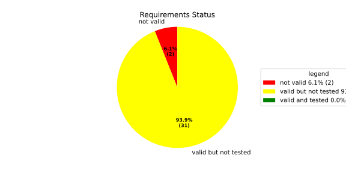
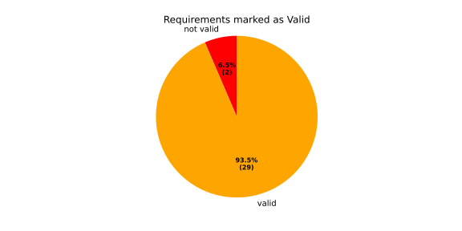
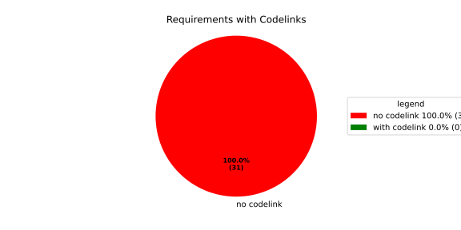
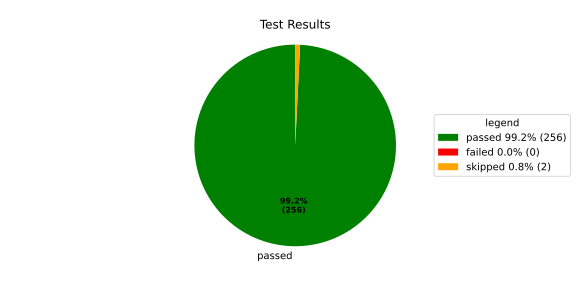
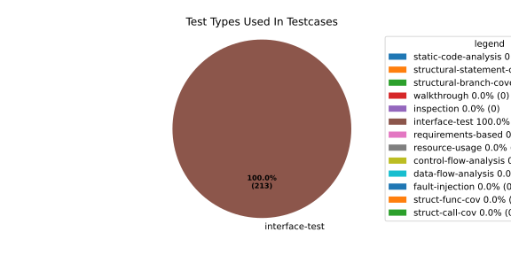
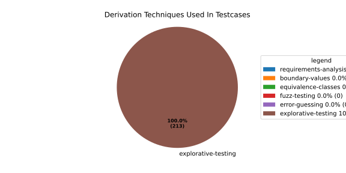

Verification Statistics#
Overview#

In Detail#



Failed Tests
Hint: This table should be empty. Before a PR can be merged all tests have to be successful.
No needs passed the filters
Skipped / Disabled Tests
testcase |
Result |
Fully Verifies |
Partially Verifies |
Test Type |
Derivation Technique |
link |
|---|---|---|---|---|---|---|
ValidateRangeTest/4__RejectsValueAboveMax |
skipped |
interface-test |
explorative-testing |
|||
ValidateRangeTest/4__RejectsValueBelowMin |
skipped |
interface-test |
explorative-testing |
All passed Tests#
testcase |
Result |
Fully Verifies |
Partially Verifies |
Test Type |
Derivation Technique |
link |
|---|---|---|---|---|---|---|
AliveImplTest__DoesNotThrowWhenInterfacePathEnvVarIsSet |
passed |
interface-test |
explorative-testing |
testcase__AliveImplTest__DoesNotThrowWhenInterfacePathEnvVarIsSet_xpewu |
||
AliveImplTest__ReportCheckpointSafeWhenNotConnected |
passed |
interface-test |
explorative-testing |
testcase__AliveImplTest__ReportCheckpointSafeWhenNotConnected_ppvuc |
||
AliveImplTest__ThrowsWhenInterfacePathEnvVarIsNotSet |
passed |
interface-test |
explorative-testing |
testcase__AliveImplTest__ThrowsWhenInterfacePathEnvVarIsNotSet_ekxfw |
||
AliveSupervisionTest__AliveDebouncesThroughFailedBeforeExpired |
passed |
interface-test |
explorative-testing |
testcase__AliveSupervisionTest__AliveDebouncesThroughFailedBeforeExpired_mlnbe |
||
AliveSupervisionTest__AliveReportsEnqueueFailureWhenRingBufferFull |
passed |
interface-test |
explorative-testing |
testcase__AliveSupervisionTest__AliveReportsEnqueueFailureWhenRingBufferFull_byhrd |
||
AliveSupervisionTest__AliveStaysOkWithCorrectHeartbeats |
passed |
interface-test |
explorative-testing |
testcase__AliveSupervisionTest__AliveStaysOkWithCorrectHeartbeats_vekof |
||
AliveSupervisionTest__AliveTransitionsOkToExpiredOnMissingHeartbeat |
passed |
interface-test |
explorative-testing |
testcase__AliveSupervisionTest__AliveTransitionsOkToExpiredOnMissingHeartbeat_jymxo |
||
AliveSupervisionTest__DeactivatesOnProcessCrash |
passed |
interface-test |
explorative-testing |
testcase__AliveSupervisionTest__DeactivatesOnProcessCrash_ypejs |
||
AliveSupervisionTest__DeactivatesOnProcessSigterm |
passed |
interface-test |
explorative-testing |
testcase__AliveSupervisionTest__DeactivatesOnProcessSigterm_hzaal |
||
AliveSupervisionTest__IgnoresIrrelevantProcessStates |
passed |
interface-test |
explorative-testing |
testcase__AliveSupervisionTest__IgnoresIrrelevantProcessStates_aolvb |
||
AliveSupervisionTest__MaxIndicationViolationExpires |
passed |
interface-test |
explorative-testing |
testcase__AliveSupervisionTest__MaxIndicationViolationExpires_whhhi |
||
AliveSupervisionTest__ReactivatesAfterCrash |
passed |
interface-test |
explorative-testing |
|||
ApplicationTypes/ApplicationTypeTest__ConvertsToExpectedValue/Native |
passed |
interface-test |
explorative-testing |
testcase__ApplicationTypes/ApplicationTypeTest__ConvertsToExpectedValue/Native_yxxcz |
||
ApplicationTypes/ApplicationTypeTest__ConvertsToExpectedValue/Reporting |
passed |
interface-test |
explorative-testing |
testcase__ApplicationTypes/ApplicationTypeTest__ConvertsToExpectedValue/Reporting_wcfwr |
||
ApplicationTypes/ApplicationTypeTest__ConvertsToExpectedValue/ReportingAndSupervised |
passed |
interface-test |
explorative-testing |
testcase__ApplicationTypes/ApplicationTypeTest__ConvertsToExpectedValue/ReportingAndSupervised_yxgad |
||
ApplicationTypes/ApplicationTypeTest__ConvertsToExpectedValue/StateManager |
passed |
interface-test |
explorative-testing |
testcase__ApplicationTypes/ApplicationTypeTest__ConvertsToExpectedValue/StateManager_ivuzc |
||
ConverterTest__ConvertAliveSupervisionMissingCycleReturnsError |
passed |
interface-test |
explorative-testing |
testcase__ConverterTest__ConvertAliveSupervisionMissingCycleReturnsError_bifzg |
||
ConverterTest__ConvertAliveSupervisionNullReturnsDefault |
passed |
interface-test |
explorative-testing |
testcase__ConverterTest__ConvertAliveSupervisionNullReturnsDefault_clyua |
||
ConverterTest__ConvertAliveSupervisionValid |
passed |
interface-test |
explorative-testing |
|||
ConverterTest__ConvertApplicationProfileMissingSelfTerminatingReturnsError |
passed |
interface-test |
explorative-testing |
testcase__ConverterTest__ConvertApplicationProfileMissingSelfTerminatingReturnsError_zddjb |
||
ConverterTest__ConvertApplicationProfileMissingTypeReturnsError |
passed |
interface-test |
explorative-testing |
testcase__ConverterTest__ConvertApplicationProfileMissingTypeReturnsError_zrfcs |
||
ConverterTest__ConvertApplicationProfileValid |
passed |
interface-test |
explorative-testing |
testcase__ConverterTest__ConvertApplicationProfileValid_oohxq |
||
ConverterTest__ConvertComponentAliveSupervisionBothIndicationsAbsentReturnsError |
passed |
interface-test |
explorative-testing |
testcase__ConverterTest__ConvertComponentAliveSupervisionBothIndicationsAbsentReturnsError_gvtfi |
||
ConverterTest__ConvertComponentAliveSupervisionMissingReportingCycleReturnsError |
passed |
interface-test |
explorative-testing |
testcase__ConverterTest__ConvertComponentAliveSupervisionMissingReportingCycleReturnsError_ajymy |
||
ConverterTest__ConvertComponentAliveSupervisionMissingToleranceReturnsError |
passed |
interface-test |
explorative-testing |
testcase__ConverterTest__ConvertComponentAliveSupervisionMissingToleranceReturnsError_lgrhj |
||
ConverterTest__ConvertComponentAliveSupervisionNullReturnsDefault |
passed |
interface-test |
explorative-testing |
testcase__ConverterTest__ConvertComponentAliveSupervisionNullReturnsDefault_xhaus |
||
ConverterTest__ConvertComponentAliveSupervisionOnlyMaxIndicationsPresent |
passed |
interface-test |
explorative-testing |
testcase__ConverterTest__ConvertComponentAliveSupervisionOnlyMaxIndicationsPresent_smwht |
||
ConverterTest__ConvertComponentAliveSupervisionOnlyMinIndicationsPresent |
passed |
interface-test |
explorative-testing |
testcase__ConverterTest__ConvertComponentAliveSupervisionOnlyMinIndicationsPresent_ybbrr |
||
ConverterTest__ConvertComponentAliveSupervisionValid |
passed |
interface-test |
explorative-testing |
testcase__ConverterTest__ConvertComponentAliveSupervisionValid_ijedh |
||
ConverterTest__ConvertComponentsValid |
passed |
interface-test |
explorative-testing |
|||
ConverterTest__ConvertComponentsWithInvalidComponentReturnsError |
passed |
interface-test |
explorative-testing |
testcase__ConverterTest__ConvertComponentsWithInvalidComponentReturnsError_wridc |
||
ConverterTest__ConvertComponentValid |
passed |
interface-test |
explorative-testing |
|||
ConverterTest__ConvertDeploymentConfigMissingReadyTimeoutReturnsError |
passed |
interface-test |
explorative-testing |
testcase__ConverterTest__ConvertDeploymentConfigMissingReadyTimeoutReturnsError_ljzfl |
||
ConverterTest__ConvertDeploymentConfigMissingShutdownTimeoutReturnsError |
passed |
interface-test |
explorative-testing |
testcase__ConverterTest__ConvertDeploymentConfigMissingShutdownTimeoutReturnsError_vyqye |
||
ConverterTest__ConvertDeploymentConfigValid |
passed |
interface-test |
explorative-testing |
|||
ConverterTest__ConvertEnvironmentalVariables |
passed |
interface-test |
explorative-testing |
testcase__ConverterTest__ConvertEnvironmentalVariables_fnhgo |
||
ConverterTest__ConvertEnvironmentalVariablesNullReturnsEmpty |
passed |
interface-test |
explorative-testing |
testcase__ConverterTest__ConvertEnvironmentalVariablesNullReturnsEmpty_vglrx |
||
ConverterTest__ConvertFallbackRunTargetMissingTimeoutReturnsError |
passed |
interface-test |
explorative-testing |
testcase__ConverterTest__ConvertFallbackRunTargetMissingTimeoutReturnsError_aevly |
||
ConverterTest__ConvertFallbackRunTargetValid |
passed |
interface-test |
explorative-testing |
testcase__ConverterTest__ConvertFallbackRunTargetValid_nexxj |
||
ConverterTest__ConvertReadyConditionMissingProcessStateReturnsError |
passed |
interface-test |
explorative-testing |
testcase__ConverterTest__ConvertReadyConditionMissingProcessStateReturnsError_ileav |
||
ConverterTest__ConvertReadyConditionValid |
passed |
interface-test |
explorative-testing |
|||
ConverterTest__ConvertRestartActionMissingFieldsReturnsError |
passed |
interface-test |
explorative-testing |
testcase__ConverterTest__ConvertRestartActionMissingFieldsReturnsError_aapjb |
||
ConverterTest__ConvertRestartActionNullReturnsNullopt |
passed |
interface-test |
explorative-testing |
testcase__ConverterTest__ConvertRestartActionNullReturnsNullopt_ifvyd |
||
ConverterTest__ConvertRestartActionValid |
passed |
interface-test |
explorative-testing |
|||
ConverterTest__ConvertRunTargetMissingTransitionTimeoutReturnsError |
passed |
interface-test |
explorative-testing |
testcase__ConverterTest__ConvertRunTargetMissingTransitionTimeoutReturnsError_ynekv |
||
ConverterTest__ConvertRunTargetsValid |
passed |
interface-test |
explorative-testing |
|||
ConverterTest__ConvertRunTargetsWithInvalidRunTargetReturnsError |
passed |
interface-test |
explorative-testing |
testcase__ConverterTest__ConvertRunTargetsWithInvalidRunTargetReturnsError_ldlox |
||
ConverterTest__ConvertRunTargetValid |
passed |
interface-test |
explorative-testing |
|||
ConverterTest__ConvertSandboxMissingGidReturnsError |
passed |
interface-test |
explorative-testing |
testcase__ConverterTest__ConvertSandboxMissingGidReturnsError_veeel |
||
ConverterTest__ConvertSandboxMissingSchedulingPolicyReturnsError |
passed |
interface-test |
explorative-testing |
testcase__ConverterTest__ConvertSandboxMissingSchedulingPolicyReturnsError_pkfts |
||
ConverterTest__ConvertSandboxMissingSchedulingPriorityReturnsError |
passed |
interface-test |
explorative-testing |
testcase__ConverterTest__ConvertSandboxMissingSchedulingPriorityReturnsError_xzdho |
||
ConverterTest__ConvertSandboxMissingUidReturnsError |
passed |
interface-test |
explorative-testing |
testcase__ConverterTest__ConvertSandboxMissingUidReturnsError_ogfku |
||
ConverterTest__ConvertSandboxSupplementaryGidOutOfRangeReturnsError |
passed |
interface-test |
explorative-testing |
testcase__ConverterTest__ConvertSandboxSupplementaryGidOutOfRangeReturnsError_zavpx |
||
ConverterTest__ConvertSandboxUidOutOfRangeReturnsError |
passed |
interface-test |
explorative-testing |
testcase__ConverterTest__ConvertSandboxUidOutOfRangeReturnsError_mcuaf |
||
ConverterTest__ConvertSandboxValid |
passed |
interface-test |
explorative-testing |
|||
ConverterTest__ConvertSwitchRunTargetActionNullReturnsNullopt |
passed |
interface-test |
explorative-testing |
testcase__ConverterTest__ConvertSwitchRunTargetActionNullReturnsNullopt_zmitx |
||
ConverterTest__ConvertSwitchRunTargetActionValid |
passed |
interface-test |
explorative-testing |
testcase__ConverterTest__ConvertSwitchRunTargetActionValid_tdklr |
||
ConverterTest__ConvertWatchdogMissingDeactivateReturnsError |
passed |
interface-test |
explorative-testing |
testcase__ConverterTest__ConvertWatchdogMissingDeactivateReturnsError_gzwjt |
||
ConverterTest__ConvertWatchdogMissingMagicCloseReturnsError |
passed |
interface-test |
explorative-testing |
testcase__ConverterTest__ConvertWatchdogMissingMagicCloseReturnsError_gexxk |
||
ConverterTest__ConvertWatchdogMissingMaxTimeoutReturnsError |
passed |
interface-test |
explorative-testing |
testcase__ConverterTest__ConvertWatchdogMissingMaxTimeoutReturnsError_lffxm |
||
ConverterTest__ConvertWatchdogNullReturnsNullopt |
passed |
interface-test |
explorative-testing |
testcase__ConverterTest__ConvertWatchdogNullReturnsNullopt_irsdk |
||
ConverterTest__ConvertWatchdogValid |
passed |
interface-test |
explorative-testing |
|||
DeadlineFixture__Start_AlreadyRunning |
passed |
interface-test |
explorative-testing |
|||
DeadlineFixture__Start_Succeeds |
passed |
interface-test |
explorative-testing |
|||
DeadlineMonitorBuilderFixture__AddDeadline_Succeeds |
passed |
interface-test |
explorative-testing |
testcase__DeadlineMonitorBuilderFixture__AddDeadline_Succeeds_nagke |
||
DeadlineMonitorBuilderFixture__New_Succeeds |
passed |
interface-test |
explorative-testing |
|||
DeadlineMonitorFixture__GetDeadline_Succeeds |
passed |
interface-test |
explorative-testing |
testcase__DeadlineMonitorFixture__GetDeadline_Succeeds_tmltf |
||
DeadlineMonitorFixture__GetDeadline_Unknown |
passed |
interface-test |
explorative-testing |
|||
EnumConversionTest__ConvertSchedulingPolicyUnsupported |
passed |
interface-test |
explorative-testing |
testcase__EnumConversionTest__ConvertSchedulingPolicyUnsupported_iavqm |
||
EnvironmentTest__AddIncreasesSize |
passed |
interface-test |
explorative-testing |
|||
EnvironmentTest__DefaultConstructedIsEmpty |
passed |
interface-test |
explorative-testing |
|||
EnvironmentTest__EmptyEnvironmentEnvpIsNullTerminated |
passed |
interface-test |
explorative-testing |
testcase__EnvironmentTest__EmptyEnvironmentEnvpIsNullTerminated_wwumw |
||
EnvironmentTest__EnvpReturnsNullTerminatedArray |
passed |
interface-test |
explorative-testing |
testcase__EnvironmentTest__EnvpReturnsNullTerminatedArray_aubkv |
||
EnvironmentTest__EnvpWithMultipleEntries |
passed |
interface-test |
explorative-testing |
|||
EnvironmentTest__MoveAssignmentPreservesEntries |
passed |
interface-test |
explorative-testing |
testcase__EnvironmentTest__MoveAssignmentPreservesEntries_vkydj |
||
EnvironmentTest__MoveConstructorPreservesEntries |
passed |
interface-test |
explorative-testing |
testcase__EnvironmentTest__MoveConstructorPreservesEntries_upclt |
||
EnvironmentTest__RangeBasedForLoopWorks |
passed |
interface-test |
explorative-testing |
|||
EnvironmentTest__ReserveAndAddAvoidReallocation |
passed |
interface-test |
explorative-testing |
testcase__EnvironmentTest__ReserveAndAddAvoidReallocation_lgzmu |
||
EnvironmentTest__SsoLengthStringSurvivesReallocation |
passed |
interface-test |
explorative-testing |
testcase__EnvironmentTest__SsoLengthStringSurvivesReallocation_jfmtl |
||
EnvironmentVariableTest__CStrReturnsKeyEqualsValue |
passed |
interface-test |
explorative-testing |
testcase__EnvironmentVariableTest__CStrReturnsKeyEqualsValue_rkwan |
||
EnvironmentVariableTest__EmptyValue |
passed |
interface-test |
explorative-testing |
|||
EnvironmentVariableTest__KeyAndValueAreAccessible |
passed |
interface-test |
explorative-testing |
testcase__EnvironmentVariableTest__KeyAndValueAreAccessible_kcrth |
||
EnvironmentVariableTest__ValueContainingEquals |
passed |
interface-test |
explorative-testing |
testcase__EnvironmentVariableTest__ValueContainingEquals_apzgz |
||
ExecErrorDomainTest__AllKnownCodesHaveDistinctMessages |
passed |
interface-test |
explorative-testing |
testcase__ExecErrorDomainTest__AllKnownCodesHaveDistinctMessages_qpoka |
||
ExecErrorDomainTest__AllKnownCodesReturnNonEmptyMessage |
passed |
interface-test |
explorative-testing |
testcase__ExecErrorDomainTest__AllKnownCodesReturnNonEmptyMessage_bawzg |
||
ExecErrorDomainTest__UnknownCodeReturnsNonEmptyMessage |
passed |
interface-test |
explorative-testing |
testcase__ExecErrorDomainTest__UnknownCodeReturnsNonEmptyMessage_kkwpr |
||
FlatbufferConfigLoaderTest__CorruptedBufferReturnsInvalidFormat |
passed |
interface-test |
explorative-testing |
testcase__FlatbufferConfigLoaderTest__CorruptedBufferReturnsInvalidFormat_twyac |
||
FlatbufferConfigLoaderTest__LoadAliveSupervision |
passed |
interface-test |
explorative-testing |
testcase__FlatbufferConfigLoaderTest__LoadAliveSupervision_hhuux |
||
FlatbufferConfigLoaderTest__LoadBufferFailsWithGenericErrorReturnsGeneralError |
passed |
interface-test |
explorative-testing |
testcase__FlatbufferConfigLoaderTest__LoadBufferFailsWithGenericErrorReturnsGeneralError_kmatm |
||
FlatbufferConfigLoaderTest__LoadBufferFailsWithNoSuchFileReturnsFileNotFound |
passed |
interface-test |
explorative-testing |
testcase__FlatbufferConfigLoaderTest__LoadBufferFailsWithNoSuchFileReturnsFileNotFound_yzlra |
||
FlatbufferConfigLoaderTest__LoadBufferFailsWithPermissionDeniedReturnsInsufficientPermission |
passed |
interface-test |
explorative-testing |
|||
FlatbufferConfigLoaderTest__LoadComponentAliveSupervision |
passed |
interface-test |
explorative-testing |
testcase__FlatbufferConfigLoaderTest__LoadComponentAliveSupervision_fwfad |
||
FlatbufferConfigLoaderTest__LoadEnvironmentalVariables |
passed |
interface-test |
explorative-testing |
testcase__FlatbufferConfigLoaderTest__LoadEnvironmentalVariables_wsosu |
||
FlatbufferConfigLoaderTest__LoadFallbackRunTarget |
passed |
interface-test |
explorative-testing |
testcase__FlatbufferConfigLoaderTest__LoadFallbackRunTarget_wduqm |
||
FlatbufferConfigLoaderTest__LoadMinimalConfig |
passed |
interface-test |
explorative-testing |
testcase__FlatbufferConfigLoaderTest__LoadMinimalConfig_hdkck |
||
FlatbufferConfigLoaderTest__LoadMultipleComponents |
passed |
interface-test |
explorative-testing |
testcase__FlatbufferConfigLoaderTest__LoadMultipleComponents_abpom |
||
FlatbufferConfigLoaderTest__LoadRestartRecoveryAction |
passed |
interface-test |
explorative-testing |
testcase__FlatbufferConfigLoaderTest__LoadRestartRecoveryAction_wyfqg |
||
FlatbufferConfigLoaderTest__LoadRunTargets |
passed |
interface-test |
explorative-testing |
|||
FlatbufferConfigLoaderTest__LoadSandbox |
passed |
interface-test |
explorative-testing |
|||
FlatbufferConfigLoaderTest__LoadSingleComponent |
passed |
interface-test |
explorative-testing |
testcase__FlatbufferConfigLoaderTest__LoadSingleComponent_yidty |
||
FlatbufferConfigLoaderTest__LoadSwitchRunTargetAction |
passed |
interface-test |
explorative-testing |
testcase__FlatbufferConfigLoaderTest__LoadSwitchRunTargetAction_uchgp |
||
FlatbufferConfigLoaderTest__LoadWatchdog |
passed |
interface-test |
explorative-testing |
|||
FlatbufferConfigLoaderTest__MissingSchemaVersionReturnsInvalidFormat |
passed |
interface-test |
explorative-testing |
testcase__FlatbufferConfigLoaderTest__MissingSchemaVersionReturnsInvalidFormat_qqmfn |
||
FlatbufferConfigLoaderTest__OptionalReadyConditionAbsent |
passed |
interface-test |
explorative-testing |
testcase__FlatbufferConfigLoaderTest__OptionalReadyConditionAbsent_lhddx |
||
FlatbufferConfigLoaderTest__OptionalWatchdogAbsent |
passed |
interface-test |
explorative-testing |
testcase__FlatbufferConfigLoaderTest__OptionalWatchdogAbsent_pkhkp |
||
FlatbufferConfigLoaderTest__WrongSchemaVersionReturnsUnsupportedVersion |
passed |
interface-test |
explorative-testing |
testcase__FlatbufferConfigLoaderTest__WrongSchemaVersionReturnsUnsupportedVersion_zrbjv |
||
HealthMonitor__GetDeadlineMonitor_Available |
passed |
|||||
HealthMonitor__GetDeadlineMonitor_Taken |
passed |
|||||
HealthMonitor__GetDeadlineMonitor_Unknown |
passed |
|||||
HealthMonitor__GetHeartbeatMonitor_Available |
passed |
testcase__HealthMonitor__GetHeartbeatMonitor_Available_aacat |
||||
HealthMonitor__GetHeartbeatMonitor_Taken |
passed |
|||||
HealthMonitor__GetHeartbeatMonitor_Unknown |
passed |
|||||
HealthMonitor__GetLogicMonitor_Available |
passed |
|||||
HealthMonitor__GetLogicMonitor_Taken |
passed |
|||||
HealthMonitor__GetLogicMonitor_Unknown |
passed |
|||||
HealthMonitor__Start_MonitorsNotTaken |
passed |
|||||
HealthMonitor__Start_Succeeds |
passed |
|||||
HealthMonitorBuilderFixture__Build_InvalidCycles |
passed |
interface-test |
explorative-testing |
testcase__HealthMonitorBuilderFixture__Build_InvalidCycles_pdigk |
||
HealthMonitorBuilderFixture__Build_NoMonitors |
passed |
interface-test |
explorative-testing |
testcase__HealthMonitorBuilderFixture__Build_NoMonitors_ktcve |
||
HealthMonitorBuilderFixture__Build_Succeeds |
passed |
interface-test |
explorative-testing |
|||
HealthMonitorBuilderFixture__New_Succeeds |
passed |
interface-test |
explorative-testing |
|||
HealthMonitorTest__Integrated |
passed |
interface-test |
explorative-testing |
|||
HeartbeatMonitor__Heartbeat_Succeeds |
passed |
interface-test |
explorative-testing |
|||
HeartbeatMonitorBuilder__New_Succeeds |
passed |
interface-test |
explorative-testing |
|||
IdentifierHashTest__IdentifierHash_default_created |
passed |
interface-test |
explorative-testing |
testcase__IdentifierHashTest__IdentifierHash_default_created_yhhvi |
||
IdentifierHashTest__IdentifierHash_EqualityOperators |
passed |
interface-test |
explorative-testing |
testcase__IdentifierHashTest__IdentifierHash_EqualityOperators_nnsuj |
||
IdentifierHashTest__IdentifierHash_invalid_hash_no_string_representation |
passed |
interface-test |
explorative-testing |
testcase__IdentifierHashTest__IdentifierHash_invalid_hash_no_string_representation_rxowr |
||
IdentifierHashTest__IdentifierHash_LessThanOperator |
passed |
interface-test |
explorative-testing |
testcase__IdentifierHashTest__IdentifierHash_LessThanOperator_rnbax |
||
IdentifierHashTest__IdentifierHash_no_dangling_pointer_after_source_string_dies |
passed |
interface-test |
explorative-testing |
testcase__IdentifierHashTest__IdentifierHash_no_dangling_pointer_after_source_string_dies_qsjin |
||
IdentifierHashTest__IdentifierHash_with_string_created |
passed |
interface-test |
explorative-testing |
testcase__IdentifierHashTest__IdentifierHash_with_string_created_aygdm |
||
IdentifierHashTest__IdentifierHash_with_string_view_created |
passed |
interface-test |
explorative-testing |
testcase__IdentifierHashTest__IdentifierHash_with_string_view_created_dbpol |
||
LogicMonitorBuilderFixture__AddState_Succeeds |
passed |
interface-test |
explorative-testing |
testcase__LogicMonitorBuilderFixture__AddState_Succeeds_axdxj |
||
LogicMonitorBuilderFixture__New_Succeeds |
passed |
interface-test |
explorative-testing |
|||
LogicMonitorFixture__State_Invalid |
passed |
interface-test |
explorative-testing |
|||
LogicMonitorFixture__State_Succeeds |
passed |
interface-test |
explorative-testing |
|||
LogicMonitorFixture__Transition_Invalid |
passed |
interface-test |
explorative-testing |
|||
LogicMonitorFixture__Transition_Succeeds |
passed |
interface-test |
explorative-testing |
|||
LogicMonitorFixture__Transition_Unknown |
passed |
interface-test |
explorative-testing |
|||
MonitorIfDaemonTest__Active_CheckpointDataForwarded |
passed |
interface-test |
explorative-testing |
testcase__MonitorIfDaemonTest__Active_CheckpointDataForwarded_evumz |
||
MonitorIfDaemonTest__Active_FutureTimestamp_NotForwardedInCurrentCycle |
passed |
interface-test |
explorative-testing |
testcase__MonitorIfDaemonTest__Active_FutureTimestamp_NotForwardedInCurrentCycle_oycau |
||
MonitorIfDaemonTest__Active_FutureTimestampCheckpoint_ConsumedInLaterCycle |
passed |
interface-test |
explorative-testing |
testcase__MonitorIfDaemonTest__Active_FutureTimestampCheckpoint_ConsumedInLaterCycle_veyyy |
||
MonitorIfDaemonTest__Active_MultipleCheckpointsInOneCycle_AllForwarded |
passed |
interface-test |
explorative-testing |
testcase__MonitorIfDaemonTest__Active_MultipleCheckpointsInOneCycle_AllForwarded_gmbms |
||
MonitorIfDaemonTest__Active_NonMatchingCheckpointId_NotForwarded |
passed |
interface-test |
explorative-testing |
testcase__MonitorIfDaemonTest__Active_NonMatchingCheckpointId_NotForwarded_bohck |
||
MonitorIfDaemonTest__Active_OverflowDetected_TransitionsToInactiveOverflow |
passed |
interface-test |
explorative-testing |
testcase__MonitorIfDaemonTest__Active_OverflowDetected_TransitionsToInactiveOverflow_ovitk |
||
MonitorIfDaemonTest__Active_TwoAttachedCheckpoints_RoutedByCheckpointId |
passed |
interface-test |
explorative-testing |
testcase__MonitorIfDaemonTest__Active_TwoAttachedCheckpoints_RoutedByCheckpointId_skqhd |
||
MonitorIfDaemonTest__GetInterfaceName_ReturnsNameGivenAtConstruction |
passed |
interface-test |
explorative-testing |
testcase__MonitorIfDaemonTest__GetInterfaceName_ReturnsNameGivenAtConstruction_iaemz |
||
MonitorIfDaemonTest__InactiveOverflow_NoProcessRestart_DoesNotRepeatNotification |
passed |
interface-test |
explorative-testing |
testcase__MonitorIfDaemonTest__InactiveOverflow_NoProcessRestart_DoesNotRepeatNotification_gdbxg |
||
MonitorIfDaemonTest__InactiveOverflow_ProcessRestartFlag_ClearedAfterNotification |
passed |
interface-test |
explorative-testing |
testcase__MonitorIfDaemonTest__InactiveOverflow_ProcessRestartFlag_ClearedAfterNotification_pqfyy |
||
MonitorIfDaemonTest__InactiveOverflow_ProcessRestarts_PushesOverflowNotificationAgain |
passed |
interface-test |
explorative-testing |
|||
MonitorIfDaemonTest__InitiallyInactive_CheckForNewData_DoesNotNotifyCheckpoint |
passed |
interface-test |
explorative-testing |
testcase__MonitorIfDaemonTest__InitiallyInactive_CheckForNewData_DoesNotNotifyCheckpoint_wjrfl |
||
MonitorIfDaemonTest__ProcessOff_DeactivatesMonitor_NoFurtherDataForwarded |
passed |
interface-test |
explorative-testing |
testcase__MonitorIfDaemonTest__ProcessOff_DeactivatesMonitor_NoFurtherDataForwarded_uialh |
||
MonitorIfDaemonTest__ProcessOffBeforeActivation_RemainsInactive |
passed |
interface-test |
explorative-testing |
testcase__MonitorIfDaemonTest__ProcessOffBeforeActivation_RemainsInactive_kzzyy |
||
MonitorIfDaemonTest__ProcessRunning_ActivatesMonitorOnNextCheckForNewData |
passed |
interface-test |
explorative-testing |
testcase__MonitorIfDaemonTest__ProcessRunning_ActivatesMonitorOnNextCheckForNewData_fkkmk |
||
MonitorIfDaemonTest__ProcessStarting_AlsoActivatesMonitor |
passed |
interface-test |
explorative-testing |
testcase__MonitorIfDaemonTest__ProcessStarting_AlsoActivatesMonitor_xdkbg |
||
MPMCConcurrentQueueTest_Basic__LvaluePushCopiesItem |
passed |
testcase__MPMCConcurrentQueueTest_Basic__LvaluePushCopiesItem_oysfc |
||||
MPMCConcurrentQueueTest_Basic__PopReturnsNulloptOnSemaphoreWaitFailure |
passed |
testcase__MPMCConcurrentQueueTest_Basic__PopReturnsNulloptOnSemaphoreWaitFailure_rgznm |
||||
MPMCConcurrentQueueTest_Basic__PushAndPopPreservesOrder |
passed |
testcase__MPMCConcurrentQueueTest_Basic__PushAndPopPreservesOrder_aijdb |
||||
MPMCConcurrentQueueTest_Basic__PushAndPopSingleItem |
passed |
testcase__MPMCConcurrentQueueTest_Basic__PushAndPopSingleItem_jrxwz |
||||
MPMCConcurrentQueueTest_Basic__RvaluePushWorksWithMoveOnlyType |
passed |
testcase__MPMCConcurrentQueueTest_Basic__RvaluePushWorksWithMoveOnlyType_cxxaj |
||||
MPMCConcurrentQueueTest_Blocking__PopBlocksUntilItemAvailable |
passed |
testcase__MPMCConcurrentQueueTest_Blocking__PopBlocksUntilItemAvailable_ttwcx |
||||
MPMCConcurrentQueueTest_Blocking__PushBlocksWhenFull |
passed |
testcase__MPMCConcurrentQueueTest_Blocking__PushBlocksWhenFull_ecujf |
||||
MPMCConcurrentQueueTest_Blocking__StopUnblocksBlockedConsumer |
passed |
testcase__MPMCConcurrentQueueTest_Blocking__StopUnblocksBlockedConsumer_snzyr |
||||
MPMCConcurrentQueueTest_Blocking__StopUnblocksBlockedProducer |
passed |
testcase__MPMCConcurrentQueueTest_Blocking__StopUnblocksBlockedProducer_inddu |
||||
MPMCConcurrentQueueTest_MPMC__AllItemsDelivered |
passed |
testcase__MPMCConcurrentQueueTest_MPMC__AllItemsDelivered_ztjqe |
||||
MPMCConcurrentQueueTest_Stop__ItemsAreDroppedAfterStop |
passed |
testcase__MPMCConcurrentQueueTest_Stop__ItemsAreDroppedAfterStop_ragzw |
||||
MPMCConcurrentQueueTest_Stop__PopReturnsNulloptWhenStoppedAndEmpty |
passed |
testcase__MPMCConcurrentQueueTest_Stop__PopReturnsNulloptWhenStoppedAndEmpty_cevga |
||||
MPMCConcurrentQueueTest_Stop__PushReturnsFalseAfterStop |
passed |
testcase__MPMCConcurrentQueueTest_Stop__PushReturnsFalseAfterStop_qqnhw |
||||
MPMCConcurrentQueueTest_Timeout__PushWithTimeoutReturnsFalseWhenFull |
passed |
testcase__MPMCConcurrentQueueTest_Timeout__PushWithTimeoutReturnsFalseWhenFull_aeips |
||||
MPMCConcurrentQueueTest_Timeout__PushWithTimeoutSucceedsWhenSlotAvailable |
passed |
testcase__MPMCConcurrentQueueTest_Timeout__PushWithTimeoutSucceedsWhenSlotAvailable_klzpo |
||||
OsHandlerTest__WaitReturnsError_OsHandlerSleepsAndDoesNotCallFindTerminated |
passed |
interface-test |
explorative-testing |
testcase__OsHandlerTest__WaitReturnsError_OsHandlerSleepsAndDoesNotCallFindTerminated_cibtr |
||
OsHandlerTest__WaitReturnsErrorThenProcessId_HandlerRecoversAndInvokesCallback |
passed |
interface-test |
explorative-testing |
testcase__OsHandlerTest__WaitReturnsErrorThenProcessId_HandlerRecoversAndInvokesCallback_nqstd |
||
OsHandlerTest__WaitReturnsProcessId_FindTerminatedIsCalled |
passed |
interface-test |
explorative-testing |
testcase__OsHandlerTest__WaitReturnsProcessId_FindTerminatedIsCalled_chlsq |
||
OsHandlerTest__WaitReturnsProcessIdBeforeRegistration_LaterRegistrationReceivesStoredTermination |
passed |
interface-test |
explorative-testing |
|||
OsHandlerTest__WaitReturnsUnknownPidWhenMapIsFull_OutOfResourcesPathDoesNotNotifyCallbacks |
passed |
interface-test |
explorative-testing |
|||
OsHandlerTest__WaitReturnsZeroPid_OsHandlerSleepsAndDoesNotCallFindTerminated |
passed |
interface-test |
explorative-testing |
testcase__OsHandlerTest__WaitReturnsZeroPid_OsHandlerSleepsAndDoesNotCallFindTerminated_rkttz |
||
ProcessStateClient_UT__ProcessStateClient_ConstructReceiver_Succeeds |
passed |
interface-test |
explorative-testing |
testcase__ProcessStateClient_UT__ProcessStateClient_ConstructReceiver_Succeeds_hodwy |
||
ProcessStateClient_UT__ProcessStateClient_QueueMaxNumberOfProcesses_Succeeds |
passed |
interface-test |
explorative-testing |
testcase__ProcessStateClient_UT__ProcessStateClient_QueueMaxNumberOfProcesses_Succeeds_qohom |
||
ProcessStateClient_UT__ProcessStateClient_QueueOneProcess_Succeeds |
passed |
interface-test |
explorative-testing |
testcase__ProcessStateClient_UT__ProcessStateClient_QueueOneProcess_Succeeds_tmzfz |
||
ProcessStateClient_UT__ProcessStateClient_QueueOneProcessTooMany_Fails |
passed |
interface-test |
explorative-testing |
testcase__ProcessStateClient_UT__ProcessStateClient_QueueOneProcessTooMany_Fails_sspoj |
||
ProcessStates/ProcessStateTest__ConvertsToExpectedValue/Running |
passed |
interface-test |
explorative-testing |
testcase__ProcessStates/ProcessStateTest__ConvertsToExpectedValue/Running_hinlr |
||
ProcessStates/ProcessStateTest__ConvertsToExpectedValue/Terminated |
passed |
interface-test |
explorative-testing |
testcase__ProcessStates/ProcessStateTest__ConvertsToExpectedValue/Terminated_zrytn |
||
RecoveryClientTest__FIFOOrdering |
passed |
interface-test |
explorative-testing |
|||
RecoveryClientTest__GetNextRequest |
passed |
interface-test |
explorative-testing |
|||
RecoveryClientTest__GetNextRequestEmpty |
passed |
interface-test |
explorative-testing |
|||
RecoveryClientTest__RingBufferFull |
passed |
interface-test |
explorative-testing |
|||
RecoveryClientTest__SendSingleRequest |
passed |
interface-test |
explorative-testing |
|||
RunTest__AsPosixProcessCreatesAndDestroysLifeCycleManager |
passed |
testcase__RunTest__AsPosixProcessCreatesAndDestroysLifeCycleManager_sooex |
||||
RunTest__AsPosixProcessForwardsConstructorArgsToApplication |
passed |
testcase__RunTest__AsPosixProcessForwardsConstructorArgsToApplication_dmeur |
||||
RunTest__AsPosixProcessForwardsNonZeroExitCode |
passed |
testcase__RunTest__AsPosixProcessForwardsNonZeroExitCode_lldqd |
||||
RunTest__AsPosixProcessPassesCorrectApplicationTypeToRun |
passed |
testcase__RunTest__AsPosixProcessPassesCorrectApplicationTypeToRun_ajqwz |
||||
RunTest__AsPosixProcessReturnsZeroExitCode |
passed |
|||||
RunTest__RunApplicationFreeFunctionDelegatesToAsPosixProcess |
passed |
testcase__RunTest__RunApplicationFreeFunctionDelegatesToAsPosixProcess_ccing |
||||
RunTest__RunConstructorPassesArgcArgvToApplicationContext |
passed |
testcase__RunTest__RunConstructorPassesArgcArgvToApplicationContext_agerd |
||||
SafeProcessMapTest__ConcurrentFindAndInsertFromMultipleThreads |
passed |
interface-test |
explorative-testing |
testcase__SafeProcessMapTest__ConcurrentFindAndInsertFromMultipleThreads_kzfyg |
||
SafeProcessMapTest__ConcurrentInsertAndFindFromMultipleThreads |
passed |
interface-test |
explorative-testing |
testcase__SafeProcessMapTest__ConcurrentInsertAndFindFromMultipleThreads_hnyqj |
||
SafeProcessMapTest__ConstructWithZeroCapacity |
passed |
interface-test |
explorative-testing |
testcase__SafeProcessMapTest__ConstructWithZeroCapacity_gjmqg |
||
SafeProcessMapTest__FindTerminatedInsertsEntryWhenPidNotPresent |
passed |
interface-test |
explorative-testing |
testcase__SafeProcessMapTest__FindTerminatedInsertsEntryWhenPidNotPresent_ixtlt |
||
SafeProcessMapTest__FindTerminatedMatchesExistingInsertAndCallsCallback |
passed |
interface-test |
explorative-testing |
testcase__SafeProcessMapTest__FindTerminatedMatchesExistingInsertAndCallsCallback_ehuzb |
||
SafeProcessMapTest__FindTerminatedSamePidTwiceYieldsUntilInsertResolves |
passed |
interface-test |
explorative-testing |
testcase__SafeProcessMapTest__FindTerminatedSamePidTwiceYieldsUntilInsertResolves_hsekx |
||
SafeProcessMapTest__FindTerminatedWithNegativePidReturnsInvalid |
passed |
interface-test |
explorative-testing |
testcase__SafeProcessMapTest__FindTerminatedWithNegativePidReturnsInvalid_dewoh |
||
SafeProcessMapTest__FindTerminatedWorksAtMaxTreeDepth |
passed |
interface-test |
explorative-testing |
testcase__SafeProcessMapTest__FindTerminatedWorksAtMaxTreeDepth_adtzi |
||
SafeProcessMapTest__InsertBeyondCapacityReturnsOutOfMemory |
passed |
interface-test |
explorative-testing |
testcase__SafeProcessMapTest__InsertBeyondCapacityReturnsOutOfMemory_qjnie |
||
SafeProcessMapTest__InsertIntoEmptyTreeReturnsZero |
passed |
interface-test |
explorative-testing |
testcase__SafeProcessMapTest__InsertIntoEmptyTreeReturnsZero_zfbaq |
||
SafeProcessMapTest__InsertMatchesExistingFindTerminatedEntry |
passed |
interface-test |
explorative-testing |
testcase__SafeProcessMapTest__InsertMatchesExistingFindTerminatedEntry_fuwrp |
||
SafeProcessMapTest__InsertMultipleNodesThenFindTerminatedRemovesAll |
passed |
interface-test |
explorative-testing |
testcase__SafeProcessMapTest__InsertMultipleNodesThenFindTerminatedRemovesAll_fvowh |
||
SafeProcessMapTest__InsertSamePidTwiceYieldsUntilFindTerminatedResolves |
passed |
interface-test |
explorative-testing |
testcase__SafeProcessMapTest__InsertSamePidTwiceYieldsUntilFindTerminatedResolves_wzwyb |
||
SchedulingPolicies/SchedulingPolicyTest__ConvertsToExpectedPosixValue/SCHED_FIFO |
passed |
interface-test |
explorative-testing |
testcase__SchedulingPolicies/SchedulingPolicyTest__ConvertsToExpectedPosixValue/SCHED_FIFO_soddq |
||
SchedulingPolicies/SchedulingPolicyTest__ConvertsToExpectedPosixValue/SCHED_OTHER |
passed |
interface-test |
explorative-testing |
testcase__SchedulingPolicies/SchedulingPolicyTest__ConvertsToExpectedPosixValue/SCHED_OTHER_oigmk |
||
SchedulingPolicies/SchedulingPolicyTest__ConvertsToExpectedPosixValue/SCHED_RR |
passed |
interface-test |
explorative-testing |
testcase__SchedulingPolicies/SchedulingPolicyTest__ConvertsToExpectedPosixValue/SCHED_RR_pcjci |
||
score/health_monitor/src/rust/test-510566969/tests |
passed |
testcase__score/health_monitor/src/rust/test-510566969/tests_kjjlw |
||||
score/health_monitor/src/rust/test-827801879/loom_tests |
passed |
testcase__score/health_monitor/src/rust/test-827801879/loom_tests_cpmix |
||||
SecondsToMsTest__ConvertsPositiveValue |
passed |
interface-test |
explorative-testing |
|||
SecondsToMsTest__ConvertsZero |
passed |
interface-test |
explorative-testing |
|||
SecondsToMsTest__RejectsNegativeValue |
passed |
interface-test |
explorative-testing |
|||
SecondsToMsTest__RejectsOverflow |
passed |
interface-test |
explorative-testing |
|||
SecondsToMsTest__RejectsSubMillisecond |
passed |
interface-test |
explorative-testing |
|||
StringHelperTest__ConvertGidVectorReturnsEmptyWhenNull |
passed |
interface-test |
explorative-testing |
testcase__StringHelperTest__ConvertGidVectorReturnsEmptyWhenNull_jmcsr |
||
StringHelperTest__ConvertStringVectorReturnsEmptyWhenNull |
passed |
interface-test |
explorative-testing |
testcase__StringHelperTest__ConvertStringVectorReturnsEmptyWhenNull_zsuvv |
||
StringHelperTest__SafeStringReturnsEmptyWhenNull |
passed |
interface-test |
explorative-testing |
testcase__StringHelperTest__SafeStringReturnsEmptyWhenNull_crelr |
||
StringHelperTest__SafeStringReturnsValueWhenNotNull |
passed |
interface-test |
explorative-testing |
testcase__StringHelperTest__SafeStringReturnsValueWhenNotNull_anbko |
||
test_complex_monitoring |
passed |
|||||
test_crash_on_startup |
passed |
|||||
test_incorrect_config_non_reporting |
passed |
|||||
test_process_crash_monitoring |
passed |
|||||
test_process_launch_args |
passed |
|||||
test_process_wrong_binary_failure |
passed |
|||||
test_recovery_action_complex_rep_failure |
passed |
|||||
test_recovery_action_simple_rep_failure |
passed |
|||||
test_smoke |
passed |
|||||
test_switch_run_target |
passed |
|||||
TimeRangeFixture__MinMax |
passed |
interface-test |
explorative-testing |
|||
TimeRangeFixture__New_InvalidOrder |
passed |
interface-test |
explorative-testing |
|||
TimeRangeFixture__New_Succeeds |
passed |
interface-test |
explorative-testing |
|||
ValidateRangeTest/0__AcceptsMaxBoundary |
passed |
interface-test |
explorative-testing |
|||
ValidateRangeTest/0__AcceptsMinBoundary |
passed |
interface-test |
explorative-testing |
|||
ValidateRangeTest/0__AcceptsZero |
passed |
interface-test |
explorative-testing |
|||
ValidateRangeTest/0__RejectsValueAboveMax |
passed |
interface-test |
explorative-testing |
|||
ValidateRangeTest/0__RejectsValueBelowMin |
passed |
interface-test |
explorative-testing |
|||
ValidateRangeTest/1__AcceptsMaxBoundary |
passed |
interface-test |
explorative-testing |
|||
ValidateRangeTest/1__AcceptsMinBoundary |
passed |
interface-test |
explorative-testing |
|||
ValidateRangeTest/1__AcceptsZero |
passed |
interface-test |
explorative-testing |
|||
ValidateRangeTest/1__RejectsValueAboveMax |
passed |
interface-test |
explorative-testing |
|||
ValidateRangeTest/1__RejectsValueBelowMin |
passed |
interface-test |
explorative-testing |
|||
ValidateRangeTest/2__AcceptsMaxBoundary |
passed |
interface-test |
explorative-testing |
|||
ValidateRangeTest/2__AcceptsMinBoundary |
passed |
interface-test |
explorative-testing |
|||
ValidateRangeTest/2__AcceptsZero |
passed |
interface-test |
explorative-testing |
|||
ValidateRangeTest/2__RejectsValueAboveMax |
passed |
interface-test |
explorative-testing |
|||
ValidateRangeTest/2__RejectsValueBelowMin |
passed |
interface-test |
explorative-testing |
|||
ValidateRangeTest/3__AcceptsMaxBoundary |
passed |
interface-test |
explorative-testing |
|||
ValidateRangeTest/3__AcceptsMinBoundary |
passed |
interface-test |
explorative-testing |
|||
ValidateRangeTest/3__AcceptsZero |
passed |
interface-test |
explorative-testing |
|||
ValidateRangeTest/3__RejectsValueAboveMax |
passed |
interface-test |
explorative-testing |
|||
ValidateRangeTest/3__RejectsValueBelowMin |
passed |
interface-test |
explorative-testing |
|||
ValidateRangeTest/4__AcceptsMaxBoundary |
passed |
interface-test |
explorative-testing |
|||
ValidateRangeTest/4__AcceptsMinBoundary |
passed |
interface-test |
explorative-testing |
|||
ValidateRangeTest/4__AcceptsZero |
passed |
interface-test |
explorative-testing |
Details About Testcases#


Test Log Files#
tests-report/tests/integration/process_simple_rep_failure/process_simple_rep_failure/test.log
exec ${PAGER:-/usr/bin/less} "$0" || exit 1
Executing tests from //tests/integration/process_simple_rep_failure:process_simple_rep_failure
-----------------------------------------------------------------------------
============================= test session starts ==============================
platform linux -- Python 3.12.12, pytest-9.0.3, pluggy-1.5.0
rootdir: /home/runner/.bazel/sandbox/processwrapper-sandbox/1267/execroot/_main/bazel-out/k8-fastbuild/bin/tests/integration/process_simple_rep_failure/process_simple_rep_failure.runfiles/score_itf+
configfile: pytest.ini
collected 1 item
../score_itf+::test_recovery_action_simple_rep_failure
-------------------------------- live log setup --------------------------------
[2026-07-08 15:04:58.539] [INFO] [score.itf.plugins.docker] Executing custom image bootstrap command: tests/utils/environments/x86_64-linux/x86_64-linux.sh
[2026-07-08 15:04:58.786] [DEBUG] [docker.utils.config] Trying paths: ['/home/runner/.docker/config.json', '/home/runner/.dockercfg']
[2026-07-08 15:04:58.787] [DEBUG] [docker.utils.config] Found file at path: /home/runner/.docker/config.json
[2026-07-08 15:04:58.787] [DEBUG] [docker.auth] Found 'auths' section
[2026-07-08 15:04:58.787] [DEBUG] [docker.auth] Found entry (registry='https://index.docker.io/v1/', username='githubactions')
[2026-07-08 15:04:58.806] [DEBUG] [urllib3.connectionpool] http://localhost:None "GET /version HTTP/1.1" 200 823
[2026-07-08 15:04:58.833] [DEBUG] [urllib3.connectionpool] http://localhost:None "POST /v1.48/containers/create HTTP/1.1" 201 88
[2026-07-08 15:04:58.836] [DEBUG] [urllib3.connectionpool] http://localhost:None "GET /v1.48/containers/69d5ef3bd575493f1395a8931d9462a98fde57e8cd3040fb4b398b8c44c15d43/json HTTP/1.1" 200 None
[2026-07-08 15:04:59.064] [DEBUG] [urllib3.connectionpool] http://localhost:None "POST /v1.48/containers/69d5ef3bd575493f1395a8931d9462a98fde57e8cd3040fb4b398b8c44c15d43/start HTTP/1.1" 204 0
[2026-07-08 15:04:59.065] [DEBUG] [docker.utils.config] Trying paths: ['/home/runner/.docker/config.json', '/home/runner/.dockercfg']
[2026-07-08 15:04:59.065] [DEBUG] [docker.utils.config] Found file at path: /home/runner/.docker/config.json
[2026-07-08 15:04:59.065] [DEBUG] [docker.auth] Found 'auths' section
[2026-07-08 15:04:59.065] [DEBUG] [docker.auth] Found entry (registry='https://index.docker.io/v1/', username='githubactions')
[2026-07-08 15:04:59.075] [DEBUG] [urllib3.connectionpool] http://localhost:None "GET /version HTTP/1.1" 200 823
[2026-07-08 15:04:59.285] [INFO] [tests.utils.testing_utils.setup_test] Test case setup finished
-------------------------------- live log call ---------------------------------
[2026-07-08 15:04:59.439] [INFO] [launch_manager] 2026/07/08 15:04:59.3099426 4781015 000 ECU1 LM LM log debug verbose 1 Launch Manager Started !!!!
[2026-07-08 15:04:59.440] [INFO] [launch_manager] 2026/07/08 15:04:59.3099426 4781019 000 ECU1 LM LM log debug verbose 1 Loading LCM Configurations...
[2026-07-08 15:04:59.442] [INFO] [launch_manager] 2026/07/08 15:04:59.3099426 4781021 000 ECU1 LM LM log debug verbose 1
[2026-07-08 15:04:59.444] [INFO] [launch_manager] ECUCFG_ENV_VAR_ROOTFOLDER set successfully
[2026-07-08 15:04:59.446] [INFO] [launch_manager] 2026/07/08 15:04:59.3099426 4781023 000 ECU1 LM LM log debug verbose 5
[2026-07-08 15:04:59.446] [INFO] [launch_manager] FlatBufferParser::getModeGroupPgName: MainPG ( IdentifierHash: 18079021346025578134 )
[2026-07-08 15:04:59.446] [INFO] [launch_manager] 2026/07/08 15:04:59.3099427 4781024 000 ECU1 LM LM log debug verbose 5
[2026-07-08 15:04:59.446] [INFO] [launch_manager] FlatBufferParser::getModeGroupPgStateName: MainPG/Startup ( IdentifierHash: 10504605499600661529 )
[2026-07-08 15:04:59.450] [INFO] [launch_manager] 2026/07/08 15:04:59.3099427 4781026 000 ECU1 LM LM log debug verbose 5
[2026-07-08 15:04:59.450] [INFO] [launch_manager] FlatBufferParser::getModeGroupPgStateName: MainPG/run_target_app_does_report_krunning_in_time ( IdentifierHash: 11934981641920773349 )
[2026-07-08 15:04:59.450] [INFO] [launch_manager] 2026/07/08 15:04:59.3099427 4781027 000 ECU1 LM LM log debug verbose 5 FlatBufferParser::getModeGroupPgStateName: MainPG/run_target_app_does_not_report_krunning_in_time ( IdentifierHash: 7672161913816744053 )
[2026-07-08 15:04:59.450] [INFO] [launch_manager] 2026/07/08 15:04:59.3099427 4781028 000 ECU1 LM LM log debug verbose 5
[2026-07-08 15:04:59.450] [INFO] [launch_manager] FlatBufferParser::getModeGroupPgStateName: MainPG/Off ( IdentifierHash: 15281793077830264047 )
[2026-07-08 15:04:59.450] [INFO] [launch_manager] 2026/07/08 15:04:59.3099427 4781029 000 ECU1 LM LM log debug verbose 5
[2026-07-08 15:04:59.450] [INFO] [launch_manager] FlatBufferParser::getModeGroupPgStateName: MainPG/fallback_run_target ( IdentifierHash: 4059409696722237352 )
[2026-07-08 15:04:59.451] [INFO] [launch_manager] 2026/07/08 15:04:59.3099427 4781031 000 ECU1 LM LM log debug verbose 4
[2026-07-08 15:04:59.451] [INFO] [launch_manager] parseProcessConfigurations: Process index: 0 executable_path_: /tmp/tests/process_simple_rep_failure/control_client_mock
[2026-07-08 15:04:59.451] [INFO] [launch_manager] 2026/07/08 15:04:59.3099427 4781032 000 ECU1 LM LM log debug verbose 3 Process control_client_mock is Reporting execution state
[2026-07-08 15:04:59.451] [INFO] [launch_manager] 2026/07/08 15:04:59.3099427 4781033 000 ECU1 LM LM log debug verbose 1
[2026-07-08 15:04:59.451] [INFO] [launch_manager] Process is STATE_MANAGEMENT function Cluster Affiliation
[2026-07-08 15:04:59.451] [INFO] [launch_manager] 2026/07/08 15:04:59.3099427 4781034 000 ECU1 LM LM log debug verbose 3
[2026-07-08 15:04:59.451] [INFO] [launch_manager] Process control_client_mock is Self terminating
[2026-07-08 15:04:59.451] [INFO] [launch_manager] 2026/07/08 15:04:59.3099428 4781035 000 ECU1 LM LM log debug verbose 4
[2026-07-08 15:04:59.451] [INFO] [launch_manager] ParseProcessProcessGroup: id:::pg_name_: MainPG , pg_state_name_: MainPG/Startup
[2026-07-08 15:04:59.452] [INFO] [launch_manager] 2026/07/08 15:04:59.3099428 4781036 000 ECU1 LM LM log debug verbose 4
[2026-07-08 15:04:59.452] [INFO] [launch_manager] ParseProcessProcessGroup: id:::pg_name_: MainPG , pg_state_name_: MainPG/run_target_app_does_report_krunning_in_time
[2026-07-08 15:04:59.452] [INFO] [launch_manager] 2026/07/08 15:04:59.3099428 4781037 000 ECU1 LM LM log debug verbose 4
[2026-07-08 15:04:59.452] [INFO] [launch_manager] ParseProcessProcessGroup: id:::pg_name_: MainPG , pg_state_name_: MainPG/run_target_app_does_not_report_krunning_in_time
[2026-07-08 15:04:59.452] [INFO] [launch_manager] 2026/07/08 15:04:59.3099428 4781038 000 ECU1 LM LM log debug verbose 4
[2026-07-08 15:04:59.452] [INFO] [launch_manager] ParseProcessProcessGroup: id:::pg_name_: MainPG , pg_state_name_: MainPG/fallback_run_target
[2026-07-08 15:04:59.452] [INFO] [launch_manager] 2026/07/08 15:04:59.3099428 4781041 000 ECU1 LM LM log debug verbose 4
[2026-07-08 15:04:59.452] [INFO] [launch_manager] parseProcessConfigurations: Process index: 1 executable_path_: /tmp/tests/process_simple_rep_failure/process_simple_reporting
[2026-07-08 15:04:59.452] [INFO] [launch_manager] 2026/07/08 15:04:59.3099428 4781042 000 ECU1 LM LM log debug verbose 3
[2026-07-08 15:04:59.453] [INFO] [launch_manager] Process component_does_report_krunning_in_time is Reporting execution state
[2026-07-08 15:04:59.453] [INFO] [launch_manager] 2026/07/08 15:04:59.3099428 4781043 000 ECU1 LM LM log debug verbose 1
[2026-07-08 15:04:59.453] [INFO] [launch_manager] Process is NOT associated with any function Cluster Affiliation
[2026-07-08 15:04:59.453] [INFO] [launch_manager] 2026/07/08 15:04:59.3099429 4781044 000 ECU1 LM LM log debug verbose 3
[2026-07-08 15:04:59.453] [INFO] [launch_manager] Process component_does_report_krunning_in_time is Self terminating
[2026-07-08 15:04:59.453] [INFO] [launch_manager] 2026/07/08 15:04:59.3099429 4781046 000 ECU1 LM LM log debug verbose 4
[2026-07-08 15:04:59.453] [INFO] [launch_manager] ParseProcessProcessGroup: id:::pg_name_: MainPG , pg_state_name_: MainPG/run_target_app_does_report_krunning_in_time
[2026-07-08 15:04:59.453] [INFO] [launch_manager] 2026/07/08 15:04:59.3099429 4781048 000 ECU1 LM LM log debug verbose 4
[2026-07-08 15:04:59.453] [INFO] [launch_manager] parseProcessConfigurations: Process index: 2 executable_path_: /tmp/tests/process_simple_rep_failure/process_simple_reporting
[2026-07-08 15:04:59.454] [INFO] [launch_manager] 2026/07/08 15:04:59.3099429 4781049 000 ECU1 LM LM log debug verbose 3
[2026-07-08 15:04:59.454] [INFO] [launch_manager] Process component_does_not_report_krunning_in_time is Reporting execution state
[2026-07-08 15:04:59.454] [INFO] [launch_manager] 2026/07/08 15:04:59.3099429 4781050 000 ECU1 LM LM log debug verbose 1
[2026-07-08 15:04:59.454] [INFO] [launch_manager] Process is NOT associated with any function Cluster Affiliation
[2026-07-08 15:04:59.454] [INFO] [launch_manager] 2026/07/08 15:04:59.3099429 4781051 000 ECU1 LM LM log debug verbose 3
[2026-07-08 15:04:59.454] [INFO] [launch_manager] Process component_does_not_report_krunning_in_time is Self terminating
[2026-07-08 15:04:59.454] [INFO] [launch_manager] 2026/07/08 15:04:59.3099429 4781052 000 ECU1 LM LM log debug verbose 4
[2026-07-08 15:04:59.454] [INFO] [launch_manager] ParseProcessProcessGroup: id:::pg_name_: MainPG , pg_state_name_: MainPG/run_target_app_does_not_report_krunning_in_time
[2026-07-08 15:04:59.454] [INFO] [launch_manager] 2026/07/08 15:04:59.3099430 4781054 000 ECU1 LM LM log debug verbose 4
[2026-07-08 15:04:59.455] [INFO] [launch_manager] parseProcessConfigurations: Process index: 3 executable_path_: /tmp/tests/process_simple_rep_failure/verification_process
[2026-07-08 15:04:59.455] [INFO] [launch_manager] 2026/07/08 15:04:59.3099430 4781055 000 ECU1 LM LM log debug verbose 3
[2026-07-08 15:04:59.455] [INFO] [launch_manager] Process verification_component is NOT Reporting execution state
[2026-07-08 15:04:59.455] [INFO] [launch_manager] 2026/07/08 15:04:59.3099430 4781057 000 ECU1 LM LM log debug verbose 1 Process is NOT associated with any function Cluster Affiliation
[2026-07-08 15:04:59.455] [INFO] [launch_manager] 2026/07/08 15:04:59.3099430 4781058 000 ECU1 LM LM log debug verbose 3
[2026-07-08 15:04:59.455] [INFO] [launch_manager] Process verification_component is Self terminating
[2026-07-08 15:04:59.455] [INFO] [launch_manager] 2026/07/08 15:04:59.3099430 4781059 000 ECU1 LM LM log debug verbose 4
[2026-07-08 15:04:59.455] [INFO] [launch_manager] ParseProcessProcessGroup: id:::pg_name_: MainPG , pg_state_name_: MainPG/fallback_run_target
[2026-07-08 15:04:59.455] [INFO] [launch_manager] 2026/07/08 15:04:59.3099430 4781061 000 ECU1 LM LM log debug verbose 3
[2026-07-08 15:04:59.455] [INFO] [launch_manager] Loading SWCL Nr. 0 Succeeded
[2026-07-08 15:04:59.456] [INFO] [launch_manager] 2026/07/08 15:04:59.3099430 4781062 000 ECU1 LM LM log debug verbose 2
[2026-07-08 15:04:59.456] [INFO] [launch_manager] 1 process group(s)
[2026-07-08 15:04:59.456] [INFO] [launch_manager] 2026/07/08 15:04:59.3099430 4781063 000 ECU1 LM LM log debug verbose 3
[2026-07-08 15:04:59.456] [INFO] [launch_manager] Creating graph with 4 nodes
[2026-07-08 15:04:59.456] [INFO] [launch_manager] 2026/07/08 15:04:59.3099431 4781064 000 ECU1 LM LM log debug verbose 1
[2026-07-08 15:04:59.456] [INFO] [launch_manager] Process groups initialized successfully
[2026-07-08 15:04:59.456] [INFO] [launch_manager] 2026/07/08 15:04:59.3099431 4781066 000 ECU1 LM LM log debug verbose 1
[2026-07-08 15:04:59.456] [INFO] [launch_manager] Process Group initialization done
[2026-07-08 15:04:59.456] [INFO] [launch_manager] 2026/07/08 15:04:59.3099431 4781068 000 ECU1 LM LM log debug verbose 3 Creating Safe Process Map with 4 entries
[2026-07-08 15:04:59.457] [INFO] [launch_manager] 2026/07/08 15:04:59.3099431 4781069 000 ECU1 LM LM log debug verbose 2
[2026-07-08 15:04:59.457] [INFO] [launch_manager] Creating job queue with capacity 1024
[2026-07-08 15:04:59.457] [INFO] [launch_manager] 2026/07/08 15:04:59.3099431 4781070 000 ECU1 LM LM log debug verbose 1
[2026-07-08 15:04:59.457] [INFO] [launch_manager] Creating worker threads...
[2026-07-08 15:04:59.457] [INFO] [launch_manager] 2026/07/08 15:04:59.3099433 4781087 000 ECU1 LM LM log debug verbose 7
[2026-07-08 15:04:59.457] [INFO] [launch_manager] Process group index 0 (with name MainPG ) has 4 processes
[2026-07-08 15:04:59.457] [INFO] [launch_manager] 2026/07/08 15:04:59.3099433 4781089 000 ECU1 LM LM log debug verbose 2
[2026-07-08 15:04:59.457] [INFO] [launch_manager] Creating process node with id: 0
[2026-07-08 15:04:59.457] [INFO] [launch_manager] 2026/07/08 15:04:59.3099433 4781091 000 ECU1 LM LM log debug verbose 5
[2026-07-08 15:04:59.458] [INFO] [launch_manager] Process 0 has 0 start dependencies
[2026-07-08 15:04:59.458] [INFO] [launch_manager] 2026/07/08 15:04:59.3099434 4781097 000 ECU1 LM LM log debug verbose 2
[2026-07-08 15:04:59.458] [INFO] [launch_manager] Creating process node with id: 1
[2026-07-08 15:04:59.458] [INFO] [launch_manager] 2026/07/08 15:04:59.3099434 4781099 000 ECU1 LM LM log debug verbose 5
[2026-07-08 15:04:59.458] [INFO] [launch_manager] Process 1 has 0 start dependencies
[2026-07-08 15:04:59.458] [INFO] [launch_manager] 2026/07/08 15:04:59.3099434 4781101 000 ECU1 LM LM log debug verbose 2
[2026-07-08 15:04:59.458] [INFO] [launch_manager] Creating process node with id: 2
[2026-07-08 15:04:59.458] [INFO] [launch_manager] 2026/07/08 15:04:59.3099434 4781104 000 ECU1 LM LM log debug verbose 5
[2026-07-08 15:04:59.458] [INFO] [launch_manager] Process 2 has 0 start dependencies
[2026-07-08 15:04:59.459] [INFO] [launch_manager] 2026/07/08 15:04:59.3099435 4781106 000 ECU1 LM LM log debug verbose 2
[2026-07-08 15:04:59.459] [INFO] [launch_manager] Creating process node with id: 3
[2026-07-08 15:04:59.459] [INFO] [launch_manager] 2026/07/08 15:04:59.3099435 4781108 000 ECU1 LM LM log debug verbose 5
[2026-07-08 15:04:59.459] [INFO] [launch_manager] Process 3 has 0 start dependencies
[2026-07-08 15:04:59.459] [INFO] [launch_manager] 2026/07/08 15:04:59.3099435 4781110 000 ECU1 LM LM log debug verbose 3
[2026-07-08 15:04:59.459] [INFO] [launch_manager] Created 4 process nodes
[2026-07-08 15:04:59.459] [INFO] [launch_manager] 2026/07/08 15:04:59.3099435 4781112 000 ECU1 LM LM log debug verbose 2
[2026-07-08 15:04:59.459] [INFO] [launch_manager] Creating successor lists for process group MainPG
[2026-07-08 15:04:59.459] [INFO] [launch_manager] 2026/07/08 15:04:59.3099436 4781114 000 ECU1 LM LM log debug verbose 1
[2026-07-08 15:04:59.459] [INFO] [launch_manager] Graphs initialized
[2026-07-08 15:04:59.460] [INFO] [launch_manager] 2026/07/08 15:04:59.3099436 4781119 000 ECU1 LM Fcty log info verbose 2
[2026-07-08 15:04:59.460] [INFO] [launch_manager] Factory for FlatCfg MachineConfig: Loading of HM Machine Configuration succeeded.
[2026-07-08 15:04:59.460] [INFO] [launch_manager] 2026/07/08 15:04:59.3099436 4781122 000 ECU1 LM Fcty log debug verbose 3
[2026-07-08 15:04:59.460] [INFO] [launch_manager] Factory for FlatCfg MachineConfig: Alive Supervision buffer size: 100
[2026-07-08 15:04:59.460] [INFO] [launch_manager] 2026/07/08 15:04:59.3099436 4781124 000 ECU1 LM Fcty log debug verbose 3
[2026-07-08 15:04:59.460] [INFO] [launch_manager] Factory for FlatCfg MachineConfig: Monitor buffer size: 512
[2026-07-08 15:04:59.460] [INFO] [launch_manager] 2026/07/08 15:04:59.3099437 4781126 000 ECU1 LM Fcty log debug verbose 4
[2026-07-08 15:04:59.460] [INFO] [launch_manager] Factory for FlatCfg MachineConfig: Periodicity: 50000000 ns
[2026-07-08 15:04:59.460] [INFO] [launch_manager] 2026/07/08 15:04:59.3099437 4781128 000 ECU1 LM Fcty log debug verbose 3
[2026-07-08 15:04:59.460] [INFO] [launch_manager] Factory for FlatCfg MachineConfig: Configured watchdogs: 0
[2026-07-08 15:04:59.461] [INFO] [launch_manager] 2026/07/08 15:04:59.3099437 4781130 000 ECU1 LM Fcty log warn verbose 2
[2026-07-08 15:04:59.461] [INFO] [launch_manager] Factory for FlatCfg MachineConfig: No watchdog configured
[2026-07-08 15:04:59.461] [INFO] [launch_manager] 2026/07/08 15:04:59.3099437 4781133 000 ECU1 LM Fcty log debug verbose 2
[2026-07-08 15:04:59.461] [INFO] [launch_manager] Software Cluster Handler starts constructing workers: MainCluster
[2026-07-08 15:04:59.461] [INFO] [launch_manager] 2026/07/08 15:04:59.3099438 4781135 000 ECU1 LM Fcty log debug verbose 3
[2026-07-08 15:04:59.461] [INFO] [launch_manager] Factory for FlatCfg AR24-11: Successfully created Process States: control_client_mock
[2026-07-08 15:04:59.461] [INFO] [launch_manager] 2026/07/08 15:04:59.3099438 4781137 000 ECU1 LM Fcty log debug verbose 3
[2026-07-08 15:04:59.461] [INFO] [launch_manager] Factory for FlatCfg AR24-11: Number of constructed Process States: 1
[2026-07-08 15:04:59.461] [INFO] [launch_manager] 2026/07/08 15:04:59.3099438 4781140 000 ECU1 LM Fcty log debug verbose 3
[2026-07-08 15:04:59.462] [INFO] [launch_manager] Factory for FlatCfg AR24-11: Successfully created Alive interface IPC with path: lifecycle_health_control_client_mock
[2026-07-08 15:04:59.462] [INFO] [launch_manager] 2026/07/08 15:04:59.3099438 4781142 000 ECU1 LM Fcty log debug verbose 3
[2026-07-08 15:04:59.462] [INFO] [launch_manager] Factory for FlatCfg AR24-11: Number of constructed Alive interface IPCs: 1
[2026-07-08 15:04:59.462] [INFO] [launch_manager] 2026/07/08 15:04:59.3099438 4781143 000 ECU1 LM Fcty log debug verbose 3
[2026-07-08 15:04:59.462] [INFO] [launch_manager] Factory for FlatCfg AR24-11: Successfully created Alive Interface: /lifecycle_health_control_client_mock
[2026-07-08 15:04:59.462] [INFO] [launch_manager] 2026/07/08 15:04:59.3099439 4781145 000 ECU1 LM Fcty log debug verbose 3
[2026-07-08 15:04:59.462] [INFO] [launch_manager] Factory for FlatCfg AR24-11: Number of constructed Alive interfaces: 1
[2026-07-08 15:04:59.462] [INFO] [launch_manager] 2026/07/08 15:04:59.3099439 4781147 000 ECU1 LM Fcty log debug verbose 3
[2026-07-08 15:04:59.462] [INFO] [launch_manager] Factory for FlatCfg AR24-11: Successfully created supervision checkpoint: control_client_mock_checkpoint
[2026-07-08 15:04:59.462] [INFO] [launch_manager] 2026/07/08 15:04:59.3099439 4781149 000 ECU1 LM Fcty log debug verbose 3
[2026-07-08 15:04:59.463] [INFO] [launch_manager] Factory for FlatCfg AR24-11: Number of constructed supervision checkpoints: 1
[2026-07-08 15:04:59.463] [INFO] [launch_manager] 2026/07/08 15:04:59.3099439 4781152 000 ECU1 LM Fcty log debug verbose 3
[2026-07-08 15:04:59.463] [INFO] [launch_manager] Factory for FlatCfg AR24-11: Successfully created alive supervision worker object: control_client_mock_alive_supervision
[2026-07-08 15:04:59.463] [INFO] [launch_manager] 2026/07/08 15:04:59.3099439 4781153 000 ECU1 LM Fcty log debug verbose 3
[2026-07-08 15:04:59.463] [INFO] [launch_manager] Factory for FlatCfg AR24-11: Number of constructed alive supervisions: 1
[2026-07-08 15:04:59.463] [INFO] [launch_manager] 2026/07/08 15:04:59.3099440 4781156 000 ECU1 LM Fcty log info verbose 2
[2026-07-08 15:04:59.463] [INFO] [launch_manager] Phm Daemon: The (configured) periodicity in [ns] is set to: 50000000
[2026-07-08 15:04:59.463] [INFO] [launch_manager] 2026/07/08 15:04:59.3099440 4781158 000 ECU1 LM Fcty log debug verbose 2
[2026-07-08 15:04:59.463] [INFO] [launch_manager] Phm Daemon: The accuracy of the monotonic system clock in [ns] is: 1
[2026-07-08 15:04:59.463] [INFO] [launch_manager] 2026/07/08 15:04:59.3099440 4781160 000 ECU1 LM Fcty log debug verbose 3
[2026-07-08 15:04:59.464] [INFO] [launch_manager] AliveMonitor: Initialization took 4 ms
[2026-07-08 15:04:59.464] [INFO] [launch_manager] 2026/07/08 15:04:59.3099440 4781163 000 ECU1 LM LM log info verbose 1
[2026-07-08 15:04:59.464] [INFO] [launch_manager] LCM started successfully
[2026-07-08 15:04:59.464] [INFO] [launch_manager] 2026/07/08 15:04:59.3099441 4781165 000 ECU1 LM LM log debug verbose 3
[2026-07-08 15:04:59.464] [INFO] [launch_manager] clock() at run(): 49.953000 ms
[2026-07-08 15:04:59.464] [INFO] [launch_manager] 2026/07/08 15:04:59.3099441 4781168 000 ECU1 LM LM log debug verbose 1
[2026-07-08 15:04:59.464] [INFO] [launch_manager] =============STARTING MAINPG STARTUP STATE============
[2026-07-08 15:04:59.464] [INFO] [launch_manager] 2026/07/08 15:04:59.3099442 4781174 000 ECU1 LM LM log debug verbose 9
[2026-07-08 15:04:59.464] [INFO] [launch_manager] Graph::setState changes from kSuccess to kInTransition for PG 0 ( MainPG )
[2026-07-08 15:04:59.465] [INFO] [launch_manager] 2026/07/08 15:04:59.3099442 4781177 000 ECU1 LM LM log debug verbose 2
[2026-07-08 15:04:59.465] [INFO] [launch_manager] Stop Dependencies: 0
[2026-07-08 15:04:59.465] [INFO] [launch_manager] 2026/07/08 15:04:59.3099442 4781179 000 ECU1 LM LM log debug verbose 2
[2026-07-08 15:04:59.465] [INFO] [launch_manager] Stop Dependencies: 0
[2026-07-08 15:04:59.465] [INFO] [launch_manager] 2026/07/08 15:04:59.3099442 4781182 000 ECU1 LM LM log debug verbose 2
[2026-07-08 15:04:59.465] [INFO] [launch_manager] Stop Dependencies: 0
[2026-07-08 15:04:59.465] [INFO] [launch_manager] 2026/07/08 15:04:59.3099442 4781183 000 ECU1 LM LM log debug verbose 2
[2026-07-08 15:04:59.465] [INFO] [launch_manager] Stop Dependencies: 0
[2026-07-08 15:04:59.465] [INFO] [launch_manager] 2026/07/08 15:04:59.3099443 4781186 000 ECU1 LM LM log debug verbose 2
[2026-07-08 15:04:59.466] [INFO] [launch_manager] Start Dependencies: 0
[2026-07-08 15:04:59.466] [INFO] [launch_manager] 2026/07/08 15:04:59.3099443 4781187 000 ECU1 LM LM log debug verbose 2
[2026-07-08 15:04:59.466] [INFO] [launch_manager] Start Dependencies: 0
[2026-07-08 15:04:59.466] [INFO] [launch_manager] 2026/07/08 15:04:59.3099443 4781190 000 ECU1 LM LM log debug verbose 2
[2026-07-08 15:04:59.466] [INFO] [launch_manager] Start Dependencies: 0
[2026-07-08 15:04:59.466] [INFO] [launch_manager] 2026/07/08 15:04:59.3099443 4781192 000 ECU1 LM LM log debug verbose 2
[2026-07-08 15:04:59.466] [INFO] [launch_manager] Start Dependencies: 0
[2026-07-08 15:04:59.466] [INFO] [launch_manager] 2026/07/08 15:04:59.3099444 4781195 000 ECU1 LM LM log debug verbose 6
[2026-07-08 15:04:59.467] [INFO] [launch_manager] Starting process 0 ( control_client_mock ) from executable /tmp/tests/process_simple_rep_failure/control_client_mock
[2026-07-08 15:04:59.467] [INFO] [launch_manager] 2026/07/08 15:04:59.3099444 4781197 000 ECU1 LM LM log debug verbose 3
[2026-07-08 15:04:59.467] [INFO] [launch_manager] Initialize the control client for control_client_mock process
[2026-07-08 15:04:59.467] [INFO] [launch_manager] 2026/07/08 15:04:59.3099444 4781200 000 ECU1 LM LM log debug verbose 1
[2026-07-08 15:04:59.467] [INFO] [launch_manager] ControlClientChannel initialized
[2026-07-08 15:04:59.467] [INFO] [launch_manager] 2026/07/08 15:04:59.3099445 4781212 000 ECU1 LM LM log debug verbose 4
[2026-07-08 15:04:59.467] [INFO] [launch_manager] startProcess pid 66 received for process: control_client_mock
[2026-07-08 15:04:59.467] [INFO] [launch_manager] 2026/07/08 15:04:59.3099445 4781214 000 ECU1 LM LM log debug verbose 1
[2026-07-08 15:04:59.467] [INFO] [launch_manager] ControlClientChannel obtained from sync.
[2026-07-08 15:04:59.467] [INFO] [launch_manager] [==========] Running 1 test from 1 test suite.
[2026-07-08 15:04:59.468] [INFO] [launch_manager] [----------] Global test environment set-up.
[2026-07-08 15:04:59.468] [INFO] [launch_manager] [----------] 1 test from RecoveryActionSimpleRepFailure
[2026-07-08 15:04:59.468] [INFO] [launch_manager] [ RUN ] RecoveryActionSimpleRepFailure.ControlClientMock
[2026-07-08 15:04:59.471] [INFO] [launch_manager] [ STEP ] Report running from ControlClientMock
[2026-07-08 15:04:59.471] [INFO] [launch_manager] [ END STEP ] Report running from ControlClientMock
[2026-07-08 15:04:59.471] [INFO] [launch_manager] [ STEP ] Activate RunTarget run_target_app_does_report_krunning_in_time
[2026-07-08 15:04:59.478] [INFO] [launch_manager] 2026/07/08 15:04:59.3099471 4781471 000 ECU1 LM LM log debug verbose 8 Got kRunning for pid 66 ( control_client_mock ) process 0 of group MainPG
[2026-07-08 15:04:59.478] [INFO] [launch_manager] 2026/07/08 15:04:59.3099471 4781471 000 ECU1 LM LM log debug verbose 7 startProcess for MainPG process 0 ( control_client_mock ) done
[2026-07-08 15:04:59.478] [INFO] [launch_manager] 2026/07/08 15:04:59.3099471 4781471 000 ECU1 LM LM log debug verbose 1 Control Client handler nudged
[2026-07-08 15:04:59.478] [INFO] [launch_manager] 2026/07/08 15:04:59.3099471 4781472 000 ECU1 LM LM log debug verbose 3 clock() at successful initial state transition: 52.214000 ms
[2026-07-08 15:04:59.478] [INFO] [launch_manager] 2026/07/08 15:04:59.3099471 4781472 000 ECU1 LM LM log debug verbose 9 Graph::setState changes from kInTransition to kSuccess for PG 0 ( MainPG )
[2026-07-08 15:04:59.478] [INFO] [launch_manager] 2026/07/08 15:04:59.3099471 4781472 000 ECU1 LM LM log info verbose 7 Completed the request for PG MainPG to State MainPG/Startup in 29 ms
[2026-07-08 15:04:59.478] [INFO] [launch_manager] 2026/07/08 15:04:59.3099471 4781473 000 ECU1 LM LM log debug verbose 1 Control Client handler nudged
[2026-07-08 15:04:59.478] [INFO] [launch_manager] 2026/07/08 15:04:59.3099471 4781473 000 ECU1 LM LM log debug verbose 1 Request sent. Waiting for acknowledgment...
[2026-07-08 15:04:59.478] [INFO] [launch_manager] 2026/07/08 15:04:59.3099472 4781476 000 ECU1 LM LM log debug verbose 8 ProcessGroupManager::ControlClientHandler: got request kSetStateRequest ( 16 ) re state MainPG/run_target_app_does_report_krunning_in_time of PG MainPG
[2026-07-08 15:04:59.478] [INFO] [launch_manager] 2026/07/08 15:04:59.3099472 4781476 000 ECU1 LM LM log debug verbose 6 Pending state for process group MainPG changed from to MainPG/run_target_app_does_report_krunning_in_time
[2026-07-08 15:04:59.479] [INFO] [launch_manager] 2026/07/08 15:04:59.3099472 4781476 000 ECU1 LM LM log debug verbose 1 Request acknowledged.
[2026-07-08 15:04:59.479] [INFO] [launch_manager] 2026/07/08 15:04:59.3099472 4781477 000 ECU1 LM LM log debug verbose 1 Request acknowledged.
[2026-07-08 15:04:59.479] [INFO] [launch_manager] 2026/07/08 15:04:59.3099472 4781477 000 ECU1 LM LM log debug verbose 6 Pending state for process group MainPG changed from MainPG/run_target_app_does_report_krunning_in_time to
[2026-07-08 15:04:59.479] [INFO] [launch_manager] 2026/07/08 15:04:59.3099472 4781477 000 ECU1 LM LM log debug verbose 4 Start transition to MainPG/run_target_app_does_report_krunning_in_time for PG MainPG
[2026-07-08 15:04:59.479] [INFO] [launch_manager] 2026/07/08 15:04:59.3099472 4781477 000 ECU1 LM LM log debug verbose 9 Graph::setState changes from kSuccess to kInTransition for PG 0 ( MainPG )
[2026-07-08 15:04:59.479] [INFO] [launch_manager] 2026/07/08 15:04:59.3099472 4781477 000 ECU1 LM LM log debug verbose 2 Stop Dependencies: 0
[2026-07-08 15:04:59.479] [INFO] [launch_manager] 2026/07/08 15:04:59.3099472 4781478 000 ECU1 LM LM log debug verbose 2 Stop Dependencies: 0
[2026-07-08 15:04:59.479] [INFO] [launch_manager] 2026/07/08 15:04:59.3099472 4781478 000 ECU1 LM LM log debug verbose 2 Stop Dependencies: 0
[2026-07-08 15:04:59.479] [INFO] [launch_manager] 2026/07/08 15:04:59.3099472 4781478 000 ECU1 LM LM log debug verbose 2 Stop Dependencies: 0
[2026-07-08 15:04:59.479] [INFO] [launch_manager] 2026/07/08 15:04:59.3099472 4781478 000 ECU1 LM LM log debug verbose 2 Start Dependencies: 0
[2026-07-08 15:04:59.479] [INFO] [launch_manager] 2026/07/08 15:04:59.3099472 4781478 000 ECU1 LM LM log debug verbose 2 Start Dependencies: 0
[2026-07-08 15:04:59.479] [INFO] [launch_manager] 2026/07/08 15:04:59.3099472 4781478 000 ECU1 LM LM log debug verbose 2 Start Dependencies: 0
[2026-07-08 15:04:59.479] [INFO] [launch_manager] 2026/07/08 15:04:59.3099472 4781479 000 ECU1 LM LM log debug verbose 2 Start Dependencies: 0
[2026-07-08 15:04:59.480] [INFO] [launch_manager] 2026/07/08 15:04:59.3099472 4781480 000 ECU1 LM LM log debug verbose 6 Starting process 1 ( component_does_report_krunning_in_time ) from executable /tmp/tests/process_simple_rep_failure/process_simple_reporting
[2026-07-08 15:04:59.480] [INFO] [launch_manager] 2026/07/08 15:04:59.3099473 4781486 000 ECU1 LM LM log debug verbose 4 startProcess pid 68 received for process: component_does_report_krunning_in_time
[2026-07-08 15:04:59.490] [INFO] [launch_manager] [==========] Running 1 test from 1 test suite.
[2026-07-08 15:04:59.490] [INFO] [launch_manager] [----------] Global test environment set-up.
[2026-07-08 15:04:59.490] [INFO] [launch_manager] [----------] 1 test from ProcessSimpleRepFailure
[2026-07-08 15:04:59.491] [INFO] [launch_manager] 2026/07/08 15:04:59.3099490 4781664 000 ECU1 LM Sprv log debug verbose 6 [ RUN ] ProcessSimpleRepFailure.ProcessSimpleReporting
[2026-07-08 15:04:59.491] [INFO] [launch_manager] [ STEP ] Check args
[2026-07-08 15:04:59.491] [INFO] [launch_manager] [ END STEP ] Check args
[2026-07-08 15:04:59.491] [INFO] [launch_manager] [ STEP ] Report running from ProcessSimpleReporting
[2026-07-08 15:04:59.491] [INFO] [launch_manager] Process with Id control_client_mock changed state PG MainPG/Startup PS 1
[2026-07-08 15:04:59.492] [INFO] [launch_manager] 2026/07/08 15:04:59.3099491 4781667 000 ECU1 LM Sprv log debug verbose 6
[2026-07-08 15:04:59.492] [INFO] [launch_manager] Process with Id control_client_mock changed state PG MainPG/Startup PS 2
[2026-07-08 15:04:59.492] [INFO] [launch_manager] 2026/07/08 15:04:59.3099491 4781669 000 ECU1 LM Sprv log debug verbose 6 Process with Id component_does_report_krunning_in_time changed state PG MainPG/run_target_app_does_report_krunning_in_time PS 1
[2026-07-08 15:04:59.492] [INFO] [launch_manager] 2026/07/08 15:04:59.3099491 4781670 000 ECU1 LM Sprv log info verbose 3 Alive Supervision ( control_client_mock_alive_supervision ) switched to OK.
[2026-07-08 15:04:59.536] [DEBUG] [tests.utils.testing_utils.run_until_file_deployed] Waiting for /tmp/tests/test_end
[2026-07-08 15:04:59.993] [INFO] [launch_manager] [ END STEP ] Report running from ProcessSimpleReporting
[2026-07-08 15:04:59.994] [INFO] [launch_manager] [ OK ] ProcessSimpleRepFailure.ProcessSimpleReporting (502 ms)
[2026-07-08 15:04:59.994] [INFO] [launch_manager] [----------] 1 test from ProcessSimpleRepFailure (502 ms total)
[2026-07-08 15:04:59.994] [INFO] [launch_manager] [----------] Global test environment tear-down
[2026-07-08 15:04:59.994] [INFO] [launch_manager] 2026/07/08 15:04:59.3099993 4786689 000 ECU1 LM LM log debug verbose 8 Got kRunning for pid 68 ( component_does_report_krunning_in_time ) process 1 of group MainPG
[2026-07-08 15:04:59.994] [INFO] [launch_manager] 2026/07/08 15:04:59.3099993 4786691 000 ECU1 LM LM log debug verbose 7 startProcess for MainPG process 1 ( component_does_report_krunning_in_time ) done
[2026-07-08 15:04:59.994] [INFO] [launch_manager] 2026/07/08 15:04:59.3099993 4786691 000 ECU1 LM LM log debug verbose 9 Graph::setState changes from kInTransition to kSuccess for PG 0 ( MainPG )
[2026-07-08 15:04:59.994] [INFO] [launch_manager] 2026/07/08 15:04:59.3099993 4786691 000 ECU1 LM LM log info verbose 7 Completed the request for PG MainPG to State MainPG/run_target_app_does_report_krunning_in_time in 521 ms
[2026-07-08 15:04:59.994] [INFO] [launch_manager] 2026/07/08 15:04:59.3099993 4786692 000 ECU1 LM LM log debug verbose 1 Control Client handler nudged
[2026-07-08 15:04:59.995] [INFO] [launch_manager] [==========] 1 test from 1 test suite ran. (504 ms total)
[2026-07-08 15:04:59.995] [INFO] [launch_manager] [ PASSED ] 1 test.
[2026-07-08 15:04:59.996] [INFO] [launch_manager] 2026/07/08 15:04:59.3099995 4786713 000 ECU1 LM LM log debug verbose 8
[2026-07-08 15:04:59.996] [INFO] [launch_manager] ProcessGroupManager::ControlClientHandler: Sending kSetStateSuccess ( 20 ) re state MainPG/run_target_app_does_report_krunning_in_time of PG MainPG
[2026-07-08 15:04:59.996] [INFO] [launch_manager] 2026/07/08 15:04:59.3099996 4786715 000 ECU1 LM LM log debug verbose 1
[2026-07-08 15:04:59.997] [INFO] [launch_manager] Response sent.
[2026-07-08 15:04:59.997] [INFO] [launch_manager] 2026/07/08 15:04:59.3099996 4786718 000 ECU1 LM LM log debug verbose 12 Child process 1 of MainPG pid 68 ( component_does_report_krunning_in_time ) for node True terminated with status 0
[2026-07-08 15:05:00.042] [INFO] [launch_manager] 2026/07/08 15:05:00.3100040 4787164 000 ECU1 LM Sprv log debug verbose 6 Process with Id component_does_report_krunning_in_time changed state PG MainPG/run_target_app_does_report_krunning_in_time PS 2
[2026-07-08 15:05:00.042] [INFO] [launch_manager] 2026/07/08 15:05:00.3100041 4787164 000 ECU1 LM Sprv log debug verbose 6 Process with Id component_does_report_krunning_in_time changed state PG MainPG/run_target_app_does_report_krunning_in_time PS 4
[2026-07-08 15:05:00.070] [INFO] [launch_manager] 2026/07/08 15:05:00.3100069 4787451 000 ECU1 LM LM log debug verbose 1 Response retrieved.
[2026-07-08 15:05:00.070] [INFO] [launch_manager] [ END STEP ] Activate RunTarget run_target_app_does_report_krunning_in_time
[2026-07-08 15:05:00.100] [DEBUG] [tests.utils.testing_utils.run_until_file_deployed] Waiting for /tmp/tests/test_end
[2026-07-08 15:05:00.687] [DEBUG] [tests.utils.testing_utils.run_until_file_deployed] Waiting for /tmp/tests/test_end
[2026-07-08 15:05:01.089] [INFO] [launch_manager] [ STEP ] Verify fallback run target has not been activated
[2026-07-08 15:05:01.089] [INFO] [launch_manager] [ END STEP ] Verify fallback run target has not been activated
[2026-07-08 15:05:01.096] [INFO] [launch_manager] [ STEP ] Activate RunTarget run_target_app_does_not_report_krunning_in_time
[2026-07-08 15:05:01.097] [INFO] [launch_manager] 2026/07/08 15:05:01.3101070 4797454 000 ECU1 LM LM log debug verbose 1 Request sent. Waiting for acknowledgment...
[2026-07-08 15:05:01.097] [INFO] [launch_manager] 2026/07/08 15:05:01.3101070 4797456 000 ECU1 LM LM log debug verbose 8 ProcessGroupManager::ControlClientHandler: got request kSetStateRequest ( 16 ) re state MainPG/run_target_app_does_not_report_krunning_in_time of PG MainPG
[2026-07-08 15:05:01.097] [INFO] [launch_manager] 2026/07/08 15:05:01.3101070 4797456 000 ECU1 LM LM log debug verbose 6 Pending state for process group MainPG changed from to MainPG/run_target_app_does_not_report_krunning_in_time
[2026-07-08 15:05:01.099] [INFO] [launch_manager] 2026/07/08 15:05:01.3101070 4797457 000 ECU1 LM LM log debug verbose 1 Request acknowledged.
[2026-07-08 15:05:01.099] [INFO] [launch_manager] 2026/07/08 15:05:01.3101070 4797457 000 ECU1 LM LM log debug verbose 6 Pending state for process group MainPG changed from MainPG/run_target_app_does_not_report_krunning_in_time to
[2026-07-08 15:05:01.100] [INFO] [launch_manager] 2026/07/08 15:05:01.3101070 4797457 000 ECU1 LM LM log debug verbose 4 Start transition to MainPG/run_target_app_does_not_report_krunning_in_time for PG MainPG
[2026-07-08 15:05:01.100] [INFO] [launch_manager] 2026/07/08 15:05:01.3101070 4797458 000 ECU1 LM LM log debug verbose 9 Graph::setState changes from kSuccess to kInTransition for PG 0 ( MainPG )
[2026-07-08 15:05:01.102] [INFO] [launch_manager] 2026/07/08 15:05:01.3101070 4797458 000 ECU1 LM LM log debug verbose 2 Stop Dependencies: 0
[2026-07-08 15:05:01.102] [INFO] [launch_manager] 2026/07/08 15:05:01.3101070 4797459 000 ECU1 LM LM log debug verbose 2 Stop Dependencies: 0
[2026-07-08 15:05:01.103] [INFO] [launch_manager] 2026/07/08 15:05:01.3101070 4797459 000 ECU1 LM LM log debug verbose 2 Stop Dependencies: 0
[2026-07-08 15:05:01.103] [INFO] [launch_manager] 2026/07/08 15:05:01.3101070 4797459 000 ECU1 LM LM log debug verbose 2 Stop Dependencies: 0
[2026-07-08 15:05:01.105] [INFO] [launch_manager] 2026/07/08 15:05:01.3101070 4797459 000 ECU1 LM LM log debug verbose 2 Start Dependencies: 0
[2026-07-08 15:05:01.105] [INFO] [launch_manager] 2026/07/08 15:05:01.3101070 4797460 000 ECU1 LM LM log debug verbose 2 Start Dependencies: 0
[2026-07-08 15:05:01.105] [INFO] [launch_manager] 2026/07/08 15:05:01.3101070 4797460 000 ECU1 LM LM log debug verbose 2 Start Dependencies: 0
[2026-07-08 15:05:01.106] [INFO] [launch_manager] 2026/07/08 15:05:01.3101070 4797461 000 ECU1 LM LM log debug verbose 2 Start Dependencies: 0
[2026-07-08 15:05:01.106] [INFO] [launch_manager] 2026/07/08 15:05:01.3101070 4797462 000 ECU1 LM LM log debug verbose 6 Starting process 2 ( component_does_not_report_krunning_in_time ) from executable /tmp/tests/process_simple_rep_failure/process_simple_reporting
[2026-07-08 15:05:01.106] [INFO] [launch_manager] 2026/07/08 15:05:01.3101071 4797469 000 ECU1 LM LM log debug verbose 4 2026/07/08 15:05:01.3101071 4797469 000 ECU1 LM LM log debug verbose 1 Request acknowledged.
[2026-07-08 15:05:01.106] [INFO] [launch_manager] startProcess pid 87 received for process: component_does_not_report_krunning_in_time
[2026-07-08 15:05:01.112] [INFO] [launch_manager] [==========] Running 1 test from 1 test suite.
[2026-07-08 15:05:01.112] [INFO] [launch_manager] [----------] Global test environment set-up.
[2026-07-08 15:05:01.113] [INFO] [launch_manager] [----------] 1 test from ProcessSimpleRepFailure
[2026-07-08 15:05:01.113] [INFO] [launch_manager] [ RUN ] ProcessSimpleRepFailure.ProcessSimpleReporting
[2026-07-08 15:05:01.113] [INFO] [launch_manager] [ STEP ] Check args
[2026-07-08 15:05:01.117] [INFO] [launch_manager] [ END STEP ] Check args
[2026-07-08 15:05:01.118] [INFO] [launch_manager] [ STEP ] Report running from ProcessSimpleReporting
[2026-07-08 15:05:01.118] [INFO] [launch_manager] 2026/07/08 15:05:01.3101090 4797664 000 ECU1 LM Sprv log debug verbose 6 Process with Id component_does_not_report_krunning_in_time changed state PG MainPG/run_target_app_does_not_report_krunning_in_time PS 1
[2026-07-08 15:05:01.278] [DEBUG] [tests.utils.testing_utils.run_until_file_deployed] Waiting for /tmp/tests/test_end
[2026-07-08 15:05:01.849] [DEBUG] [tests.utils.testing_utils.run_until_file_deployed] Waiting for /tmp/tests/test_end
[2026-07-08 15:05:02.172] [INFO] [launch_manager] 2026/07/08 15:05:02.3102172 4808477 000 ECU1 LM LM log warn verbose 5 Got kRunning timeout for process 2 ( component_does_not_report_krunning_in_time )
[2026-07-08 15:05:02.173] [INFO] [launch_manager] 2026/07/08 15:05:02.3102172 4808478 000 ECU1 LM LM log debug verbose 5 terminating process 2 ( component_does_not_report_krunning_in_time )
[2026-07-08 15:05:02.173] [INFO] [launch_manager] 2026/07/08 15:05:02.3102172 4808478 000 ECU1 LM LM log debug verbose 9 Requesting termination of process 2 of MainPG pid 87 ( component_does_not_report_krunning_in_time )
[2026-07-08 15:05:02.173] [INFO] [launch_manager] 2026/07/08 15:05:02.3102172 4808478 000 ECU1 LM LM log debug verbose 2 Request termination received for 87
[2026-07-08 15:05:02.192] [INFO] [launch_manager] 2026/07/08 15:05:02.3102190 4808664 000 ECU1 LM Sprv log debug verbose 6 Process with Id component_does_not_report_krunning_in_time changed state PG MainPG/run_target_app_does_not_report_krunning_in_time PS 3
[2026-07-08 15:05:02.432] [DEBUG] [tests.utils.testing_utils.run_until_file_deployed] Waiting for /tmp/tests/test_end
[2026-07-08 15:05:02.573] [INFO] [launch_manager] [ END STEP ] Report running from ProcessSimpleReporting
[2026-07-08 15:05:02.574] [INFO] [launch_manager] [ OK ] ProcessSimpleRepFailure.ProcessSimpleReporting (1500 ms)
[2026-07-08 15:05:02.574] [INFO] [launch_manager] [----------] 1 test from ProcessSimpleRepFailure (1500 ms total)
[2026-07-08 15:05:02.574] [INFO] [launch_manager] [----------] Global test environment tear-down
[2026-07-08 15:05:02.574] [INFO] [launch_manager] [==========] 1 test from 1 test suite ran. (1500 ms total)
[2026-07-08 15:05:02.574] [INFO] [launch_manager] [ PASSED ] 1 test.
[2026-07-08 15:05:02.575] [INFO] [launch_manager] 2026/07/08 15:05:02.3102574 4812499 000 ECU1 LM LM log debug verbose 12 Child process 2 of MainPG pid 87 ( component_does_not_report_krunning_in_time ) for node True terminated with status 0
[2026-07-08 15:05:02.575] [INFO] [launch_manager] 2026/07/08 15:05:02.3102574 4812504 000 ECU1 LM LM log debug verbose 5 Queuing jobs after regular termination of process wait 2 ( component_does_not_report_krunning_in_time )
[2026-07-08 15:05:02.575] [INFO] [launch_manager] 2026/07/08 15:05:02.3102575 4812504 000 ECU1 LM LM log debug verbose 7 terminateProcess for MainPG process 2 ( component_does_not_report_krunning_in_time ) done
[2026-07-08 15:05:02.575] [INFO] [launch_manager] 2026/07/08 15:05:02.3102575 4812504 000 ECU1 LM LM log debug verbose 9 Graph::setState changes from kInTransition to kAborting for PG 0 ( MainPG )
[2026-07-08 15:05:02.575] [INFO] [launch_manager] 2026/07/08 15:05:02.3102575 4812505 000 ECU1 LM LM log debug verbose 7 startProcess for MainPG process 2 ( component_does_not_report_krunning_in_time ) done
[2026-07-08 15:05:02.575] [INFO] [launch_manager] 2026/07/08 15:05:02.3102575 4812505 000 ECU1 LM LM log debug verbose 9 Graph::setState changes from kAborting to kUndefinedState for PG 0 ( MainPG )
[2026-07-08 15:05:02.576] [INFO] [launch_manager] 2026/07/08 15:05:02.3102575 4812506 000 ECU1 LM LM log debug verbose 1 Control Client handler nudged
[2026-07-08 15:05:02.577] [INFO] [launch_manager] 2026/07/08 15:05:02.3102576 4812518 000 ECU1 LM LM log debug verbose 8 ProcessGroupManager::ControlClientHandler: Sending kSetStateFailed ( 19 ) re state MainPG/run_target_app_does_not_report_krunning_in_time of PG MainPG
[2026-07-08 15:05:02.577] [INFO] [launch_manager] 2026/07/08 15:05:02.3102576 4812519 000 ECU1 LM LM log debug verbose 1 Response sent.
[2026-07-08 15:05:02.577] [INFO] [launch_manager] 2026/07/08 15:05:02.3102576 4812519 000 ECU1 LM LM log warn verbose 3 Problem discovered in PG MainPG Activating Recovery state.
[2026-07-08 15:05:02.577] [INFO] [launch_manager] 2026/07/08 15:05:02.3102576 4812519 000 ECU1 LM LM log debug verbose 9 Graph::setState changes from kUndefinedState to kInTransition for PG 0 ( MainPG )
[2026-07-08 15:05:02.577] [INFO] [launch_manager] 2026/07/08 15:05:02.3102576 4812520 000 ECU1 LM LM log debug verbose 2 Stop Dependencies: 0
[2026-07-08 15:05:02.577] [INFO] [launch_manager] 2026/07/08 15:05:02.3102576 4812520 000 ECU1 LM LM log debug verbose 2 Stop Dependencies: 0
[2026-07-08 15:05:02.577] [INFO] [launch_manager] 2026/07/08 15:05:02.3102576 4812520 000 ECU1 LM LM log debug verbose 2 Stop Dependencies: 0
[2026-07-08 15:05:02.577] [INFO] [launch_manager] 2026/07/08 15:05:02.3102576 4812520 000 ECU1 LM LM log debug verbose 2 Stop Dependencies: 0
[2026-07-08 15:05:02.577] [INFO] [launch_manager] 2026/07/08 15:05:02.3102576 4812521 000 ECU1 LM LM log debug verbose 2 Start Dependencies: 0
[2026-07-08 15:05:02.578] [INFO] [launch_manager] 2026/07/08 15:05:02.3102576 4812521 000 ECU1 LM LM log debug verbose 2 Start Dependencies: 0
[2026-07-08 15:05:02.578] [INFO] [launch_manager] 2026/07/08 15:05:02.3102576 4812521 000 ECU1 LM LM log debug verbose 2 Start Dependencies: 0
[2026-07-08 15:05:02.578] [INFO] [launch_manager] 2026/07/08 15:05:02.3102576 4812521 000 ECU1 LM LM log debug verbose 2 Start Dependencies: 0
[2026-07-08 15:05:02.578] [INFO] [launch_manager] 2026/07/08 15:05:02.3102576 4812522 000 ECU1 LM LM log debug verbose 6
[2026-07-08 15:05:02.580] [INFO] [launch_manager] Starting process 3 ( verification_component ) from executable /tmp/tests/process_simple_rep_failure/verification_process
[2026-07-08 15:05:02.581] [INFO] [launch_manager] 2026/07/08 15:05:02.3102577 4812528 000 ECU1 LM LM log debug verbose 4 startProcess pid 106 received for process: verification_component
[2026-07-08 15:05:02.581] [INFO] [launch_manager] 2026/07/08 15:05:02.3102577 4812528 000 ECU1 LM LM log debug verbose 8 Considered kRunning for Non Reporting Process pid 106 ( verification_component ) process 3 of group MainPG
[2026-07-08 15:05:02.581] [INFO] [launch_manager] 2026/07/08 15:05:02.3102577 4812529 000 ECU1 LM LM log debug verbose 7 startProcess for MainPG process 3 ( verification_component ) done
[2026-07-08 15:05:02.581] [INFO] [launch_manager] 2026/07/08 15:05:02.3102577 4812529 000 ECU1 LM LM log debug verbose 9 Graph::setState changes from kInTransition to kSuccess for PG 0 ( MainPG )
[2026-07-08 15:05:02.582] [INFO] [launch_manager] 2026/07/08 15:05:02.3102577 4812529 000 ECU1 LM LM log info verbose 7 Completed the request for PG MainPG to State MainPG/fallback_run_target in 0 ms
[2026-07-08 15:05:02.582] [INFO] [launch_manager] 2026/07/08 15:05:02.3102577 4812529 000 ECU1 LM LM log debug verbose 1 Control Client handler nudged
[2026-07-08 15:05:02.583] [INFO] [launch_manager] 2026/07/08 15:05:02.3102578 4812543 000 ECU1 LM LM log debug verbose 8 ProcessGroupManager::ControlClientHandler: Sending kSetStateSuccess ( 20 ) re state MainPG/fallback_run_target of PG MainPG
[2026-07-08 15:05:02.583] [INFO] [launch_manager] 2026/07/08 15:05:02.3102578 4812543 000 ECU1 LM LM log debug verbose 1 Failed to send response: response is not empty.
[2026-07-08 15:05:02.584] [INFO] [launch_manager] 2026/07/08 15:05:02.3102578 4812543 000 ECU1 LM LM log debug verbose 1 Control Client handler nudged
[2026-07-08 15:05:02.584] [INFO] [launch_manager] 2026/07/08 15:05:02.3102578 4812544 000 ECU1 LM LM log debug verbose 8 ProcessGroupManager::ControlClientHandler: Sending kSetStateSuccess ( 20 ) re state MainPG/fallback_run_target of PG MainPG
[2026-07-08 15:05:02.585] [INFO] [launch_manager] 2026/07/08 15:05:02.3102578 4812544 000 ECU1 LM LM log debug verbose 1 Failed to send response: response is not empty.
[2026-07-08 15:05:02.585] [INFO] [launch_manager] 2026/07/08 15:05:02.3102579 4812544 000 ECU1 LM LM log debug verbose 1 Control Client handler nudged
[2026-07-08 15:05:02.585] [INFO] [launch_manager] 2026/07/08 15:05:02.3102579 4812544 000 ECU1 LM LM log debug verbose 8 ProcessGroupManager::ControlClientHandler: Sending kSetStateSuccess ( 20 ) re state MainPG/fallback_run_target of PG MainPG
[2026-07-08 15:05:02.586] [INFO] [launch_manager] 2026/07/08 15:05:02.3102579 4812545 000 ECU1 LM LM log debug verbose 1 Failed to send response: response is not empty.
[2026-07-08 15:05:02.586] [INFO] [launch_manager] 2026/07/08 15:05:02.3102579 4812545 000 ECU1 LM LM log debug verbose 1 Control Client handler nudged
[2026-07-08 15:05:02.590] [INFO] [launch_manager] 2026/07/08 15:05:02.3102579 4812545 000 ECU1 LM LM log debug verbose 8 ProcessGroupManager::ControlClientHandler: Sending kSetStateSuccess ( 20 ) re state MainPG/fallback_run_target of PG MainPG
[2026-07-08 15:05:02.591] [INFO] [launch_manager] 2026/07/08 15:05:02.3102579 4812546 000 ECU1 LM LM log debug verbose 1 Failed to send response: response is not empty.
[2026-07-08 15:05:02.591] [INFO] [launch_manager] 2026/07/08 15:05:02.3102579 4812546 000 ECU1 LM LM log debug verbose 12 Child process 3 of MainPG pid 106 ( verification_component ) for node True terminated with status 0
[2026-07-08 15:05:02.591] [INFO] [launch_manager] 2026/07/08 15:05:02.3102579 4812546 000 ECU1 LM LM log debug verbose 1
[2026-07-08 15:05:02.592] [INFO] [launch_manager] Control Client handler nudged
[2026-07-08 15:05:02.593] [INFO] [launch_manager] 2026/07/08 15:05:02.3102579 4812547 000 ECU1 LM LM log debug verbose 8 ProcessGroupManager::ControlClientHandler: Sending kSetStateSuccess ( 20 ) re state MainPG/fallback_run_target of PG MainPG
[2026-07-08 15:05:02.594] [INFO] [launch_manager] 2026/07/08 15:05:02.3102579 4812547 000 ECU1 LM LM log debug verbose 1 Failed to send response: response is not empty.
[2026-07-08 15:05:02.594] [INFO] [launch_manager] 2026/07/08 15:05:02.3102579 4812547 000 ECU1 LM LM log debug verbose 1 Control Client handler nudged
[2026-07-08 15:05:02.595] [INFO] [launch_manager] 2026/07/08 15:05:02.3102579 4812548 000 ECU1 LM LM log debug verbose 8 ProcessGroupManager::ControlClientHandler: Sending kSetStateSuccess ( 20 ) re state MainPG/fallback_run_target of PG MainPG
[2026-07-08 15:05:02.596] [INFO] [launch_manager] 2026/07/08 15:05:02.3102579 4812548 000 ECU1 LM LM log debug verbose 1 Failed to send response: response is not empty.
[2026-07-08 15:05:02.596] [INFO] [launch_manager] 2026/07/08 15:05:02.3102579 4812548 000 ECU1 LM LM log debug verbose 1 Control Client handler nudged
[2026-07-08 15:05:02.596] [INFO] [launch_manager] 2026/07/08 15:05:02.3102579 4812548 000 ECU1 LM LM log debug verbose 8 ProcessGroupManager::ControlClientHandler: Sending kSetStateSuccess ( 20 ) re state MainPG/fallback_run_target of PG MainPG
[2026-07-08 15:05:02.597] [INFO] [launch_manager] 2026/07/08 15:05:02.3102579 4812548 000 ECU1 LM LM log debug verbose 1 Failed to send response: response is not empty.
[2026-07-08 15:05:02.598] [INFO] [launch_manager] 2026/07/08 15:05:02.3102579 4812548 000 ECU1 LM LM log debug verbose 1 Control Client handler nudged
[2026-07-08 15:05:02.598] [INFO] [launch_manager] 2026/07/08 15:05:02.3102579 4812549 000 ECU1 LM LM log debug verbose 8 ProcessGroupManager::ControlClientHandler: Sending kSetStateSuccess ( 20 ) re state MainPG/fallback_run_target of PG MainPG
[2026-07-08 15:05:02.598] [INFO] [launch_manager] 2026/07/08 15:05:02.3102579 4812549 000 ECU1 LM LM log debug verbose 1 Failed to send response: response is not empty.
[2026-07-08 15:05:02.598] [INFO] [launch_manager] 2026/07/08 15:05:02.3102579 4812549 000 ECU1 LM LM log debug verbose 1 Control Client handler nudged
[2026-07-08 15:05:02.599] [INFO] [launch_manager] 2026/07/08 15:05:02.3102579 4812549 000 ECU1 LM LM log debug verbose 8 ProcessGroupManager::ControlClientHandler: Sending kSetStateSuccess ( 20 ) re state MainPG/fallback_run_target of PG MainPG
[2026-07-08 15:05:02.599] [INFO] [launch_manager] 2026/07/08 15:05:02.3102579 4812549 000 ECU1 LM LM log debug verbose 1 Failed to send response: response is not empty.
[2026-07-08 15:05:02.599] [INFO] [launch_manager] 2026/07/08 15:05:02.3102579 4812549 000 ECU1 LM LM log debug verbose 1 Control Client handler nudged
[2026-07-08 15:05:02.599] [INFO] [launch_manager] 2026/07/08 15:05:02.3102579 4812550 000 ECU1 LM LM log debug verbose 8 ProcessGroupManager::ControlClientHandler: Sending kSetStateSuccess ( 20 ) re state MainPG/fallback_run_target of PG MainPG
[2026-07-08 15:05:02.599] [INFO] [launch_manager] 2026/07/08 15:05:02.3102579 4812550 000 ECU1 LM LM log debug verbose 1 Failed to send response: response is not empty.
[2026-07-08 15:05:02.601] [INFO] [launch_manager] 2026/07/08 15:05:02.3102579 4812550 000 ECU1 LM LM log debug verbose 1 Control Client handler nudged
[2026-07-08 15:05:02.601] [INFO] [launch_manager] 2026/07/08 15:05:02.3102579 4812551 000 ECU1 LM LM log debug verbose 8 ProcessGroupManager::ControlClientHandler: Sending kSetStateSuccess ( 20 ) re state MainPG/fallback_run_target of PG MainPG
[2026-07-08 15:05:02.601] [INFO] [launch_manager] 2026/07/08 15:05:02.3102579 4812551 000 ECU1 LM LM log debug verbose 1 Failed to send response: response is not empty.
[2026-07-08 15:05:02.601] [INFO] [launch_manager] 2026/07/08 15:05:02.3102579 4812551 000 ECU1 LM LM log debug verbose 1 Control Client handler nudged
[2026-07-08 15:05:02.601] [INFO] [launch_manager] 2026/07/08 15:05:02.3102579 4812551 000 ECU1 LM LM log debug verbose 8 ProcessGroupManager::ControlClientHandler: Sending kSetStateSuccess ( 20 ) re state MainPG/fallback_run_target of PG MainPG
[2026-07-08 15:05:02.602] [INFO] [launch_manager] 2026/07/08 15:05:02.3102579 4812551 000 ECU1 LM LM log debug verbose 1 Failed to send response: response is not empty.
[2026-07-08 15:05:02.602] [INFO] [launch_manager] 2026/07/08 15:05:02.3102579 4812551 000 ECU1 LM LM log debug verbose 1 Control Client handler nudged
[2026-07-08 15:05:02.603] [INFO] [launch_manager] 2026/07/08 15:05:02.3102579 4812552 000 ECU1 LM LM log debug verbose 8 ProcessGroupManager::ControlClientHandler: Sending kSetStateSuccess ( 20 ) re state MainPG/fallback_run_target of PG MainPG
[2026-07-08 15:05:02.603] [INFO] [launch_manager] 2026/07/08 15:05:02.3102579 4812552 000 ECU1 LM LM log debug verbose 1 Failed to send response: response is not empty.
[2026-07-08 15:05:02.603] [INFO] [launch_manager] 2026/07/08 15:05:02.3102579 4812552 000 ECU1 LM LM log debug verbose 1 Control Client handler nudged
[2026-07-08 15:05:02.604] [INFO] [launch_manager] 2026/07/08 15:05:02.3102579 4812552 000 ECU1 LM LM log debug verbose 8 ProcessGroupManager::ControlClientHandler: Sending kSetStateSuccess ( 20 ) re state MainPG/fallback_run_target of PG MainPG
[2026-07-08 15:05:02.604] [INFO] [launch_manager] 2026/07/08 15:05:02.3102579 4812552 000 ECU1 LM LM log debug verbose 1 Failed to send response: response is not empty.
[2026-07-08 15:05:02.604] [INFO] [launch_manager] 2026/07/08 15:05:02.3102579 4812552 000 ECU1 LM LM log debug verbose 1 Control Client handler nudged
[2026-07-08 15:05:02.604] [INFO] [launch_manager] 2026/07/08 15:05:02.3102579 4812553 000 ECU1 LM LM log debug verbose 8 ProcessGroupManager::ControlClientHandler: Sending kSetStateSuccess ( 20 ) re state MainPG/fallback_run_target of PG MainPG
[2026-07-08 15:05:02.605] [INFO] [launch_manager] 2026/07/08 15:05:02.3102579 4812553 000 ECU1 LM LM log debug verbose 1 Failed to send response: response is not empty.
[2026-07-08 15:05:02.605] [INFO] [launch_manager] 2026/07/08 15:05:02.3102579 4812553 000 ECU1 LM LM log debug verbose 1 Control Client handler nudged
[2026-07-08 15:05:02.605] [INFO] [launch_manager] 2026/07/08 15:05:02.3102579 4812553 000 ECU1 LM LM log debug verbose 8 ProcessGroupManager::ControlClientHandler: Sending kSetStateSuccess ( 20 ) re state MainPG/fallback_run_target of PG MainPG
[2026-07-08 15:05:02.605] [INFO] [launch_manager] 2026/07/08 15:05:02.3102579 4812553 000 ECU1 LM LM log debug verbose 1 Failed to send response: response is not empty.
[2026-07-08 15:05:02.606] [INFO] [launch_manager] 2026/07/08 15:05:02.3102579 4812554 000 ECU1 LM LM log debug verbose 1 Control Client handler nudged
[2026-07-08 15:05:02.606] [INFO] [launch_manager] 2026/07/08 15:05:02.3102579 4812554 000 ECU1 LM LM log debug verbose 8 ProcessGroupManager::ControlClientHandler: Sending kSetStateSuccess ( 20 ) re state MainPG/fallback_run_target of PG MainPG
[2026-07-08 15:05:02.606] [INFO] [launch_manager] 2026/07/08 15:05:02.3102580 4812554 000 ECU1 LM LM log debug verbose 1 Failed to send response: response is not empty.
[2026-07-08 15:05:02.606] [INFO] [launch_manager] 2026/07/08 15:05:02.3102580 4812554 000 ECU1 LM LM log debug verbose 1 Control Client handler nudged
[2026-07-08 15:05:02.606] [INFO] [launch_manager] 2026/07/08 15:05:02.3102580 4812554 000 ECU1 LM LM log debug verbose 8 ProcessGroupManager::ControlClientHandler: Sending kSetStateSuccess ( 20 ) re state MainPG/fallback_run_target of PG MainPG
[2026-07-08 15:05:02.607] [INFO] [launch_manager] 2026/07/08 15:05:02.3102580 4812554 000 ECU1 LM LM log debug verbose 1 Failed to send response: response is not empty.
[2026-07-08 15:05:02.607] [INFO] [launch_manager] 2026/07/08 15:05:02.3102580 4812555 000 ECU1 LM LM log debug verbose 1 Control Client handler nudged
[2026-07-08 15:05:02.607] [INFO] [launch_manager] 2026/07/08 15:05:02.3102580 4812555 000 ECU1 LM LM log debug verbose 8 ProcessGroupManager::ControlClientHandler: Sending kSetStateSuccess ( 20 ) re state MainPG/fallback_run_target of PG MainPG
[2026-07-08 15:05:02.607] [INFO] [launch_manager] 2026/07/08 15:05:02.3102580 4812555 000 ECU1 LM LM log debug verbose 1 Failed to send response: response is not empty.
[2026-07-08 15:05:02.608] [INFO] [launch_manager] 2026/07/08 15:05:02.3102580 4812555 000 ECU1 LM LM log debug verbose 1 Control Client handler nudged
[2026-07-08 15:05:02.608] [INFO] [launch_manager] 2026/07/08 15:05:02.3102580 4812555 000 ECU1 LM LM log debug verbose 8 ProcessGroupManager::ControlClientHandler: Sending kSetStateSuccess ( 20 ) re state MainPG/fallback_run_target of PG MainPG
[2026-07-08 15:05:02.608] [INFO] [launch_manager] 2026/07/08 15:05:02.3102580 4812555 000 ECU1 LM LM log debug verbose 1 Failed to send response: response is not empty.
[2026-07-08 15:05:02.608] [INFO] [launch_manager] 2026/07/08 15:05:02.3102580 4812556 000 ECU1 LM LM log debug verbose 1 Control Client handler nudged
[2026-07-08 15:05:02.608] [INFO] [launch_manager] 2026/07/08 15:05:02.3102580 4812556 000 ECU1 LM LM log debug verbose 8 ProcessGroupManager::ControlClientHandler: Sending kSetStateSuccess ( 20 ) re state MainPG/fallback_run_target of PG MainPG
[2026-07-08 15:05:02.608] [INFO] [launch_manager] 2026/07/08 15:05:02.3102580 4812556 000 ECU1 LM LM log debug verbose 1 Failed to send response: response is not empty.
[2026-07-08 15:05:02.608] [INFO] [launch_manager] 2026/07/08 15:05:02.3102580 4812556 000 ECU1 LM LM log debug verbose 1 Control Client handler nudged
[2026-07-08 15:05:02.609] [INFO] [launch_manager] 2026/07/08 15:05:02.3102580 4812556 000 ECU1 LM LM log debug verbose 8 ProcessGroupManager::ControlClientHandler: Sending kSetStateSuccess ( 20 ) re state MainPG/fallback_run_target of PG MainPG
[2026-07-08 15:05:02.609] [INFO] [launch_manager] 2026/07/08 15:05:02.3102580 4812557 000 ECU1 LM LM log debug verbose 1 Failed to send response: response is not empty.
[2026-07-08 15:05:02.609] [INFO] [launch_manager] 2026/07/08 15:05:02.3102580 4812557 000 ECU1 LM LM log debug verbose 1 Control Client handler nudged
[2026-07-08 15:05:02.609] [INFO] [launch_manager] 2026/07/08 15:05:02.3102580 4812557 000 ECU1 LM LM log debug verbose 8 ProcessGroupManager::ControlClientHandler: Sending kSetStateSuccess ( 20 ) re state MainPG/fallback_run_target of PG MainPG
[2026-07-08 15:05:02.609] [INFO] [launch_manager] 2026/07/08 15:05:02.3102580 4812557 000 ECU1 LM LM log debug verbose 1 Failed to send response: response is not empty.
[2026-07-08 15:05:02.610] [INFO] [launch_manager] 2026/07/08 15:05:02.3102580 4812557 000 ECU1 LM LM log debug verbose 1 Control Client handler nudged
[2026-07-08 15:05:02.610] [INFO] [launch_manager] 2026/07/08 15:05:02.3102580 4812557 000 ECU1 LM LM log debug verbose 8 ProcessGroupManager::ControlClientHandler: Sending kSetStateSuccess ( 20 ) re state MainPG/fallback_run_target of PG MainPG
[2026-07-08 15:05:02.610] [INFO] [launch_manager] 2026/07/08 15:05:02.3102580 4812558 000 ECU1 LM LM log debug verbose 1 Failed to send response: response is not empty.
[2026-07-08 15:05:02.610] [INFO] [launch_manager] 2026/07/08 15:05:02.3102580 4812558 000 ECU1 LM LM log debug verbose 1 Control Client handler nudged
[2026-07-08 15:05:02.610] [INFO] [launch_manager] 2026/07/08 15:05:02.3102580 4812558 000 ECU1 LM LM log debug verbose 8 ProcessGroupManager::ControlClientHandler: Sending kSetStateSuccess ( 20 ) re state MainPG/fallback_run_target of PG MainPG
[2026-07-08 15:05:02.610] [INFO] [launch_manager] 2026/07/08 15:05:02.3102580 4812558 000 ECU1 LM LM log debug verbose 1 Failed to send response: response is not empty.
[2026-07-08 15:05:02.610] [INFO] [launch_manager] 2026/07/08 15:05:02.3102580 4812558 000 ECU1 LM LM log debug verbose 1 Control Client handler nudged
[2026-07-08 15:05:02.611] [INFO] [launch_manager] 2026/07/08 15:05:02.3102580 4812558 000 ECU1 LM LM log debug verbose 8 ProcessGroupManager::ControlClientHandler: Sending kSetStateSuccess ( 20 ) re state MainPG/fallback_run_target of PG MainPG
[2026-07-08 15:05:02.611] [INFO] [launch_manager] 2026/07/08 15:05:02.3102580 4812559 000 ECU1 LM LM log debug verbose 1 Failed to send response: response is not empty.
[2026-07-08 15:05:02.611] [INFO] [launch_manager] 2026/07/08 15:05:02.3102580 4812559 000 ECU1 LM LM log debug verbose 1 Control Client handler nudged
[2026-07-08 15:05:02.611] [INFO] [launch_manager] 2026/07/08 15:05:02.3102580 4812559 000 ECU1 LM LM log debug verbose 8 ProcessGroupManager::ControlClientHandler: Sending kSetStateSuccess ( 20 ) re state MainPG/fallback_run_target of PG MainPG
[2026-07-08 15:05:02.611] [INFO] [launch_manager] 2026/07/08 15:05:02.3102580 4812559 000 ECU1 LM LM log debug verbose 1 Failed to send response: response is not empty.
[2026-07-08 15:05:02.611] [INFO] [launch_manager] 2026/07/08 15:05:02.3102580 4812559 000 ECU1 LM LM log debug verbose 1 Control Client handler nudged
[2026-07-08 15:05:02.611] [INFO] [launch_manager] 2026/07/08 15:05:02.3102580 4812559 000 ECU1 LM LM log debug verbose 8 ProcessGroupManager::ControlClientHandler: Sending kSetStateSuccess ( 20 ) re state MainPG/fallback_run_target of PG MainPG
[2026-07-08 15:05:02.611] [INFO] [launch_manager] 2026/07/08 15:05:02.3102580 4812560 000 ECU1 LM LM log debug verbose 1 Failed to send response: response is not empty.
[2026-07-08 15:05:02.612] [INFO] [launch_manager] 2026/07/08 15:05:02.3102580 4812560 000 ECU1 LM LM log debug verbose 1 Control Client handler nudged
[2026-07-08 15:05:02.612] [INFO] [launch_manager] 2026/07/08 15:05:02.3102580 4812560 000 ECU1 LM LM log debug verbose 8 ProcessGroupManager::ControlClientHandler: Sending kSetStateSuccess ( 20 ) re state MainPG/fallback_run_target of PG MainPG
[2026-07-08 15:05:02.612] [INFO] [launch_manager] 2026/07/08 15:05:02.3102580 4812560 000 ECU1 LM LM log debug verbose 1 Failed to send response: response is not empty.
[2026-07-08 15:05:02.612] [INFO] [launch_manager] 2026/07/08 15:05:02.3102580 4812561 000 ECU1 LM LM log debug verbose 1 Control Client handler nudged
[2026-07-08 15:05:02.612] [INFO] [launch_manager] 2026/07/08 15:05:02.3102580 4812561 000 ECU1 LM LM log debug verbose 8 ProcessGroupManager::ControlClientHandler: Sending kSetStateSuccess ( 20 ) re state MainPG/fallback_run_target of PG MainPG
[2026-07-08 15:05:02.612] [INFO] [launch_manager] 2026/07/08 15:05:02.3102580 4812561 000 ECU1 LM LM log debug verbose 1 Failed to send response: response is not empty.
[2026-07-08 15:05:02.612] [INFO] [launch_manager] 2026/07/08 15:05:02.3102580 4812561 000 ECU1 LM LM log debug verbose 1 Control Client handler nudged
[2026-07-08 15:05:02.613] [INFO] [launch_manager] 2026/07/08 15:05:02.3102580 4812561 000 ECU1 LM LM log debug verbose 8 ProcessGroupManager::ControlClientHandler: Sending kSetStateSuccess ( 20 ) re state MainPG/fallback_run_target of PG MainPG
[2026-07-08 15:05:02.613] [INFO] [launch_manager] 2026/07/08 15:05:02.3102580 4812562 000 ECU1 LM LM log debug verbose 1 Failed to send response: response is not empty.
[2026-07-08 15:05:02.613] [INFO] [launch_manager] 2026/07/08 15:05:02.3102580 4812562 000 ECU1 LM LM log debug verbose 1 Control Client handler nudged
[2026-07-08 15:05:02.614] [INFO] [launch_manager] 2026/07/08 15:05:02.3102580 4812562 000 ECU1 LM LM log debug verbose 8 ProcessGroupManager::ControlClientHandler: Sending kSetStateSuccess ( 20 ) re state MainPG/fallback_run_target of PG MainPG
[2026-07-08 15:05:02.614] [INFO] [launch_manager] 2026/07/08 15:05:02.3102580 4812562 000 ECU1 LM LM log debug verbose 1 Failed to send response: response is not empty.
[2026-07-08 15:05:02.614] [INFO] [launch_manager] 2026/07/08 15:05:02.3102580 4812562 000 ECU1 LM LM log debug verbose 1 Control Client handler nudged
[2026-07-08 15:05:02.614] [INFO] [launch_manager] 2026/07/08 15:05:02.3102581 4812569 000 ECU1 LM LM log debug verbose 8 ProcessGroupManager::ControlClientHandler: Sending kSetStateSuccess ( 20 ) re state MainPG/fallback_run_target of PG MainPG
[2026-07-08 15:05:02.615] [INFO] [launch_manager] 2026/07/08 15:05:02.3102581 4812569 000 ECU1 LM LM log debug verbose 1 Failed to send response: response is not empty.
[2026-07-08 15:05:02.615] [INFO] [launch_manager] 2026/07/08 15:05:02.3102581 4812570 000 ECU1 LM LM log debug verbose 1 Control Client handler nudged
[2026-07-08 15:05:02.615] [INFO] [launch_manager] 2026/07/08 15:05:02.3102581 4812571 000 ECU1 LM LM log debug verbose 8 ProcessGroupManager::ControlClientHandler: Sending kSetStateSuccess ( 20 ) re state MainPG/fallback_run_target of PG MainPG
[2026-07-08 15:05:02.615] [INFO] [launch_manager] 2026/07/08 15:05:02.3102581 4812571 000 ECU1 LM LM log debug verbose 1 Failed to send response: response is not empty.
[2026-07-08 15:05:02.615] [INFO] [launch_manager] 2026/07/08 15:05:02.3102581 4812572 000 ECU1 LM LM log debug verbose 1 Control Client handler nudged
[2026-07-08 15:05:02.615] [INFO] [launch_manager] 2026/07/08 15:05:02.3102581 4812572 000 ECU1 LM LM log debug verbose 8 ProcessGroupManager::ControlClientHandler: Sending kSetStateSuccess ( 20 ) re state MainPG/fallback_run_target of PG MainPG
[2026-07-08 15:05:02.615] [INFO] [launch_manager] 2026/07/08 15:05:02.3102581 4812573 000 ECU1 LM LM log debug verbose 1 Failed to send response: response is not empty.
[2026-07-08 15:05:02.616] [INFO] [launch_manager] 2026/07/08 15:05:02.3102581 4812573 000 ECU1 LM LM log debug verbose 1 Control Client handler nudged
[2026-07-08 15:05:02.616] [INFO] [launch_manager] 2026/07/08 15:05:02.3102582 4812574 000 ECU1 LM LM log debug verbose 8 ProcessGroupManager::ControlClientHandler: Sending kSetStateSuccess ( 20 ) re state MainPG/fallback_run_target of PG MainPG
[2026-07-08 15:05:02.616] [INFO] [launch_manager] 2026/07/08 15:05:02.3102582 4812574 000 ECU1 LM LM log debug verbose 1 Failed to send response: response is not empty.
[2026-07-08 15:05:02.616] [INFO] [launch_manager] 2026/07/08 15:05:02.3102582 4812575 000 ECU1 LM LM log debug verbose 1 Control Client handler nudged
[2026-07-08 15:05:02.616] [INFO] [launch_manager] 2026/07/08 15:05:02.3102582 4812576 000 ECU1 LM LM log debug verbose 8 ProcessGroupManager::ControlClientHandler: Sending kSetStateSuccess ( 20 ) re state MainPG/fallback_run_target of PG MainPG
[2026-07-08 15:05:02.617] [INFO] [launch_manager] 2026/07/08 15:05:02.3102582 4812576 000 ECU1 LM LM log debug verbose 1 Failed to send response: response is not empty.
[2026-07-08 15:05:02.617] [INFO] [launch_manager] 2026/07/08 15:05:02.3102582 4812577 000 ECU1 LM LM log debug verbose 1 Control Client handler nudged
[2026-07-08 15:05:02.617] [INFO] [launch_manager] 2026/07/08 15:05:02.3102582 4812577 000 ECU1 LM LM log debug verbose 8 ProcessGroupManager::ControlClientHandler: Sending kSetStateSuccess ( 20 ) re state MainPG/fallback_run_target of PG MainPG
[2026-07-08 15:05:02.617] [INFO] [launch_manager] 2026/07/08 15:05:02.3102582 4812579 000 ECU1 LM LM log debug verbose 1 Failed to send response: response is not empty.
[2026-07-08 15:05:02.617] [INFO] [launch_manager] 2026/07/08 15:05:02.3102582 4812579 000 ECU1 LM LM log debug verbose 1 Control Client handler nudged
[2026-07-08 15:05:02.617] [INFO] [launch_manager] 2026/07/08 15:05:02.3102582 4812580 000 ECU1 LM LM log debug verbose 8
[2026-07-08 15:05:02.617] [INFO] [launch_manager] ProcessGroupManager::ControlClientHandler: Sending kSetStateSuccess ( 20 ) re state MainPG/fallback_run_target of PG MainPG
[2026-07-08 15:05:02.618] [INFO] [launch_manager] 2026/07/08 15:05:02.3102582 4812581 000 ECU1 LM LM log debug verbose 1
[2026-07-08 15:05:02.618] [INFO] [launch_manager] Failed to send response: response is not empty.
[2026-07-08 15:05:02.618] [INFO] [launch_manager] 2026/07/08 15:05:02.3102582 4812583 000 ECU1 LM LM log debug verbose 1
[2026-07-08 15:05:02.618] [INFO] [launch_manager] Control Client handler nudged
[2026-07-08 15:05:02.618] [INFO] [launch_manager] 2026/07/08 15:05:02.3102583 4812584 000 ECU1 LM LM log debug verbose 8
[2026-07-08 15:05:02.618] [INFO] [launch_manager] ProcessGroupManager::ControlClientHandler: Sending kSetStateSuccess ( 20 ) re state MainPG/fallback_run_target of PG MainPG
[2026-07-08 15:05:02.619] [INFO] [launch_manager] 2026/07/08 15:05:02.3102583 4812586 000 ECU1 LM LM log debug verbose 1
[2026-07-08 15:05:02.619] [INFO] [launch_manager] Failed to send response: response is not empty.
[2026-07-08 15:05:02.619] [INFO] [launch_manager] 2026/07/08 15:05:02.3102583 4812586 000 ECU1 LM LM log debug verbose 1 Control Client handler nudged
[2026-07-08 15:05:02.619] [INFO] [launch_manager] 2026/07/08 15:05:02.3102583 4812588 000 ECU1 LM LM log debug verbose 8 ProcessGroupManager::ControlClientHandler: Sending kSetStateSuccess ( 20 ) re state MainPG/fallback_run_target of PG MainPG
[2026-07-08 15:05:02.619] [INFO] [launch_manager] 2026/07/08 15:05:02.3102583 4812588 000 ECU1 LM LM log debug verbose 1 Failed to send response: response is not empty.
[2026-07-08 15:05:02.619] [INFO] [launch_manager] 2026/07/08 15:05:02.3102583 4812588 000 ECU1 LM LM log debug verbose 1 Control Client handler nudged
[2026-07-08 15:05:02.619] [INFO] [launch_manager] 2026/07/08 15:05:02.3102583 4812588 000 ECU1 LM LM log debug verbose 8 ProcessGroupManager::ControlClientHandler: Sending kSetStateSuccess ( 20 ) re state MainPG/fallback_run_target of PG MainPG
[2026-07-08 15:05:02.619] [INFO] [launch_manager] 2026/07/08 15:05:02.3102583 4812588 000 ECU1 LM LM log debug verbose 1 Failed to send response: response is not empty.
[2026-07-08 15:05:02.620] [INFO] [launch_manager] 2026/07/08 15:05:02.3102583 4812588 000 ECU1 LM LM log debug verbose 1 Control Client handler nudged
[2026-07-08 15:05:02.620] [INFO] [launch_manager] 2026/07/08 15:05:02.3102583 4812589 000 ECU1 LM LM log debug verbose 8 ProcessGroupManager::ControlClientHandler: Sending kSetStateSuccess ( 20 ) re state MainPG/fallback_run_target of PG MainPG
[2026-07-08 15:05:02.620] [INFO] [launch_manager] 2026/07/08 15:05:02.3102583 4812589 000 ECU1 LM LM log debug verbose 1 Failed to send response: response is not empty.
[2026-07-08 15:05:02.620] [INFO] [launch_manager] 2026/07/08 15:05:02.3102583 4812589 000 ECU1 LM LM log debug verbose 1 Control Client handler nudged
[2026-07-08 15:05:02.620] [INFO] [launch_manager] 2026/07/08 15:05:02.3102583 4812589 000 ECU1 LM LM log debug verbose 8 ProcessGroupManager::ControlClientHandler: Sending kSetStateSuccess ( 20 ) re state MainPG/fallback_run_target of PG MainPG
[2026-07-08 15:05:02.620] [INFO] [launch_manager] 2026/07/08 15:05:02.3102583 4812589 000 ECU1 LM LM log debug verbose 1 Failed to send response: response is not empty.
[2026-07-08 15:05:02.621] [INFO] [launch_manager] 2026/07/08 15:05:02.3102583 4812590 000 ECU1 LM LM log debug verbose 1
[2026-07-08 15:05:02.621] [INFO] [launch_manager] Control Client handler nudged
[2026-07-08 15:05:02.621] [INFO] [launch_manager] 2026/07/08 15:05:02.3102583 4812593 000 ECU1 LM LM log debug verbose 8
[2026-07-08 15:05:02.621] [INFO] [launch_manager] ProcessGroupManager::ControlClientHandler: Sending kSetStateSuccess ( 20 ) re state MainPG/fallback_run_target of PG MainPG
[2026-07-08 15:05:02.621] [INFO] [launch_manager] 2026/07/08 15:05:02.3102584 4812594 000 ECU1 LM LM log debug verbose 1
[2026-07-08 15:05:02.621] [INFO] [launch_manager] Failed to send response: response is not empty.
[2026-07-08 15:05:02.621] [INFO] [launch_manager] 2026/07/08 15:05:02.3102584 4812596 000 ECU1 LM LM log debug verbose 1
[2026-07-08 15:05:02.622] [INFO] [launch_manager] Control Client handler nudged
[2026-07-08 15:05:02.622] [INFO] [launch_manager] 2026/07/08 15:05:02.3102584 4812597 000 ECU1 LM LM log debug verbose 8 ProcessGroupManager::ControlClientHandler: Sending kSetStateSuccess ( 20 ) re state MainPG/fallback_run_target of PG MainPG
[2026-07-08 15:05:02.622] [INFO] [launch_manager] 2026/07/08 15:05:02.3102584 4812597 000 ECU1 LM LM log debug verbose 1 Failed to send response: response is not empty.
[2026-07-08 15:05:02.622] [INFO] [launch_manager] 2026/07/08 15:05:02.3102584 4812597 000 ECU1 LM LM log debug verbose 1 Control Client handler nudged
[2026-07-08 15:05:02.622] [INFO] [launch_manager] 2026/07/08 15:05:02.3102584 4812599 000 ECU1 LM LM log debug verbose 8
[2026-07-08 15:05:02.622] [INFO] [launch_manager] ProcessGroupManager::ControlClientHandler: Sending kSetStateSuccess ( 20 ) re state MainPG/fallback_run_target of PG MainPG
[2026-07-08 15:05:02.622] [INFO] [launch_manager] 2026/07/08 15:05:02.3102584 4812601 000 ECU1 LM LM log debug verbose 1 Failed to send response: response is not empty.
[2026-07-08 15:05:02.623] [INFO] [launch_manager] 2026/07/08 15:05:02.3102584 4812601 000 ECU1 LM LM log debug verbose 1 Control Client handler nudged
[2026-07-08 15:05:02.623] [INFO] [launch_manager] 2026/07/08 15:05:02.3102584 4812601 000 ECU1 LM LM log debug verbose 8 ProcessGroupManager::ControlClientHandler: Sending kSetStateSuccess ( 20 ) re state MainPG/fallback_run_target of PG MainPG
[2026-07-08 15:05:02.623] [INFO] [launch_manager] 2026/07/08 15:05:02.3102584 4812601 000 ECU1 LM LM log debug verbose 1 Failed to send response: response is not empty.
[2026-07-08 15:05:02.623] [INFO] [launch_manager] 2026/07/08 15:05:02.3102584 4812601 000 ECU1 LM LM log debug verbose 1 Control Client handler nudged
[2026-07-08 15:05:02.623] [INFO] [launch_manager] 2026/07/08 15:05:02.3102584 4812602 000 ECU1 LM LM log debug verbose 8 ProcessGroupManager::ControlClientHandler: Sending kSetStateSuccess ( 20 ) re state MainPG/fallback_run_target of PG MainPG
[2026-07-08 15:05:02.623] [INFO] [launch_manager] 2026/07/08 15:05:02.3102584 4812602 000 ECU1 LM LM log debug verbose 1 Failed to send response: response is not empty.
[2026-07-08 15:05:02.623] [INFO] [launch_manager] 2026/07/08 15:05:02.3102584 4812602 000 ECU1 LM LM log debug verbose 1 Control Client handler nudged
[2026-07-08 15:05:02.624] [INFO] [launch_manager] 2026/07/08 15:05:02.3102584 4812602 000 ECU1 LM LM log debug verbose 8 ProcessGroupManager::ControlClientHandler: Sending kSetStateSuccess ( 20 ) re state MainPG/fallback_run_target of PG MainPG
[2026-07-08 15:05:02.624] [INFO] [launch_manager] 2026/07/08 15:05:02.3102584 4812603 000 ECU1 LM LM log debug verbose 1 Failed to send response: response is not empty.
[2026-07-08 15:05:02.624] [INFO] [launch_manager] 2026/07/08 15:05:02.3102584 4812603 000 ECU1 LM LM log debug verbose 1 Control Client handler nudged
[2026-07-08 15:05:02.624] [INFO] [launch_manager] 2026/07/08 15:05:02.3102584 4812603 000 ECU1 LM LM log debug verbose 8 ProcessGroupManager::ControlClientHandler: Sending kSetStateSuccess ( 20 ) re state MainPG/fallback_run_target of PG MainPG
[2026-07-08 15:05:02.624] [INFO] [launch_manager] 2026/07/08 15:05:02.3102584 4812603 000 ECU1 LM LM log debug verbose 1 Failed to send response: response is not empty.
[2026-07-08 15:05:02.624] [INFO] [launch_manager] 2026/07/08 15:05:02.3102584 4812603 000 ECU1 LM LM log debug verbose 1 Control Client handler nudged
[2026-07-08 15:05:02.624] [INFO] [launch_manager] 2026/07/08 15:05:02.3102584 4812604 000 ECU1 LM LM log debug verbose 8 ProcessGroupManager::ControlClientHandler: Sending kSetStateSuccess ( 20 ) re state MainPG/fallback_run_target of PG MainPG
[2026-07-08 15:05:02.625] [INFO] [launch_manager] 2026/07/08 15:05:02.3102584 4812604 000 ECU1 LM LM log debug verbose 1 Failed to send response: response is not empty.
[2026-07-08 15:05:02.625] [INFO] [launch_manager] 2026/07/08 15:05:02.3102585 4812604 000 ECU1 LM LM log debug verbose 1 Control Client handler nudged
[2026-07-08 15:05:02.625] [INFO] [launch_manager] 2026/07/08 15:05:02.3102585 4812604 000 ECU1 LM LM log debug verbose 8 ProcessGroupManager::ControlClientHandler: Sending kSetStateSuccess ( 20 ) re state MainPG/fallback_run_target of PG MainPG
[2026-07-08 15:05:02.625] [INFO] [launch_manager] 2026/07/08 15:05:02.3102585 4812604 000 ECU1 LM LM log debug verbose 1 Failed to send response: response is not empty.
[2026-07-08 15:05:02.625] [INFO] [launch_manager] 2026/07/08 15:05:02.3102585 4812605 000 ECU1 LM LM log debug verbose 1 Control Client handler nudged
[2026-07-08 15:05:02.625] [INFO] [launch_manager] 2026/07/08 15:05:02.3102585 4812605 000 ECU1 LM LM log debug verbose 8 ProcessGroupManager::ControlClientHandler: Sending kSetStateSuccess ( 20 ) re state MainPG/fallback_run_target of PG MainPG
[2026-07-08 15:05:02.625] [INFO] [launch_manager] 2026/07/08 15:05:02.3102585 4812605 000 ECU1 LM LM log debug verbose 1 Failed to send response: response is not empty.
[2026-07-08 15:05:02.626] [INFO] [launch_manager] 2026/07/08 15:05:02.3102585 4812605 000 ECU1 LM LM log debug verbose 1 Control Client handler nudged
[2026-07-08 15:05:02.626] [INFO] [launch_manager] 2026/07/08 15:05:02.3102585 4812605 000 ECU1 LM LM log debug verbose 8 ProcessGroupManager::ControlClientHandler: Sending kSetStateSuccess ( 20 ) re state MainPG/fallback_run_target of PG MainPG
[2026-07-08 15:05:02.626] [INFO] [launch_manager] 2026/07/08 15:05:02.3102585 4812606 000 ECU1 LM LM log debug verbose 1 Failed to send response: response is not empty.
[2026-07-08 15:05:02.626] [INFO] [launch_manager] 2026/07/08 15:05:02.3102585 4812606 000 ECU1 LM LM log debug verbose 1 Control Client handler nudged
[2026-07-08 15:05:02.626] [INFO] [launch_manager] 2026/07/08 15:05:02.3102585 4812606 000 ECU1 LM LM log debug verbose 8 ProcessGroupManager::ControlClientHandler: Sending kSetStateSuccess ( 20 ) re state MainPG/fallback_run_target of PG MainPG
[2026-07-08 15:05:02.626] [INFO] [launch_manager] 2026/07/08 15:05:02.3102585 4812606 000 ECU1 LM LM log debug verbose 1 Failed to send response: response is not empty.
[2026-07-08 15:05:02.626] [INFO] [launch_manager] 2026/07/08 15:05:02.3102585 4812606 000 ECU1 LM LM log debug verbose 1 Control Client handler nudged
[2026-07-08 15:05:02.627] [INFO] [launch_manager] 2026/07/08 15:05:02.3102585 4812607 000 ECU1 LM LM log debug verbose 8 ProcessGroupManager::ControlClientHandler: Sending kSetStateSuccess ( 20 ) re state MainPG/fallback_run_target of PG MainPG
[2026-07-08 15:05:02.627] [INFO] [launch_manager] 2026/07/08 15:05:02.3102585 4812607 000 ECU1 LM LM log debug verbose 1 Failed to send response: response is not empty.
[2026-07-08 15:05:02.627] [INFO] [launch_manager] 2026/07/08 15:05:02.3102585 4812607 000 ECU1 LM LM log debug verbose 1 Control Client handler nudged
[2026-07-08 15:05:02.627] [INFO] [launch_manager] 2026/07/08 15:05:02.3102585 4812607 000 ECU1 LM LM log debug verbose 8 ProcessGroupManager::ControlClientHandler: Sending kSetStateSuccess ( 20 ) re state MainPG/fallback_run_target of PG MainPG
[2026-07-08 15:05:02.627] [INFO] [launch_manager] 2026/07/08 15:05:02.3102585 4812607 000 ECU1 LM LM log debug verbose 1 Failed to send response: response is not empty.
[2026-07-08 15:05:02.627] [INFO] [launch_manager] 2026/07/08 15:05:02.3102585 4812608 000 ECU1 LM LM log debug verbose 1 Control Client handler nudged
[2026-07-08 15:05:02.627] [INFO] [launch_manager] 2026/07/08 15:05:02.3102585 4812608 000 ECU1 LM LM log debug verbose 8 ProcessGroupManager::ControlClientHandler: Sending kSetStateSuccess ( 20 ) re state MainPG/fallback_run_target of PG MainPG
[2026-07-08 15:05:02.628] [INFO] [launch_manager] 2026/07/08 15:05:02.3102585 4812608 000 ECU1 LM LM log debug verbose 1 Failed to send response: response is not empty.
[2026-07-08 15:05:02.628] [INFO] [launch_manager] 2026/07/08 15:05:02.3102585 4812608 000 ECU1 LM LM log debug verbose 1 Control Client handler nudged
[2026-07-08 15:05:02.628] [INFO] [launch_manager] 2026/07/08 15:05:02.3102585 4812609 000 ECU1 LM LM log debug verbose 8 ProcessGroupManager::ControlClientHandler: Sending kSetStateSuccess ( 20 ) re state MainPG/fallback_run_target of PG MainPG
[2026-07-08 15:05:02.628] [INFO] [launch_manager] 2026/07/08 15:05:02.3102585 4812609 000 ECU1 LM LM log debug verbose 1 Failed to send response: response is not empty.
[2026-07-08 15:05:02.628] [INFO] [launch_manager] 2026/07/08 15:05:02.3102585 4812609 000 ECU1 LM LM log debug verbose 1 Control Client handler nudged
[2026-07-08 15:05:02.628] [INFO] [launch_manager] 2026/07/08 15:05:02.3102585 4812609 000 ECU1 LM LM log debug verbose 8 ProcessGroupManager::ControlClientHandler: Sending kSetStateSuccess ( 20 ) re state MainPG/fallback_run_target of PG MainPG
[2026-07-08 15:05:02.628] [INFO] [launch_manager] 2026/07/08 15:05:02.3102585 4812609 000 ECU1 LM LM log debug verbose 1 Failed to send response: response is not empty.
[2026-07-08 15:05:02.628] [INFO] [launch_manager] 2026/07/08 15:05:02.3102585 4812609 000 ECU1 LM LM log debug verbose 1 Control Client handler nudged
[2026-07-08 15:05:02.628] [INFO] [launch_manager] 2026/07/08 15:05:02.3102585 4812610 000 ECU1 LM LM log debug verbose 8 ProcessGroupManager::ControlClientHandler: Sending kSetStateSuccess ( 20 ) re state MainPG/fallback_run_target of PG MainPG
[2026-07-08 15:05:02.629] [INFO] [launch_manager] 2026/07/08 15:05:02.3102585 4812610 000 ECU1 LM LM log debug verbose 1 Failed to send response: response is not empty.
[2026-07-08 15:05:02.629] [INFO] [launch_manager] 2026/07/08 15:05:02.3102585 4812610 000 ECU1 LM LM log debug verbose 1 Control Client handler nudged
[2026-07-08 15:05:02.629] [INFO] [launch_manager] 2026/07/08 15:05:02.3102585 4812611 000 ECU1 LM LM log debug verbose 8 ProcessGroupManager::ControlClientHandler: Sending kSetStateSuccess ( 20 ) re state MainPG/fallback_run_target of PG MainPG
[2026-07-08 15:05:02.629] [INFO] [launch_manager] 2026/07/08 15:05:02.3102585 4812611 000 ECU1 LM LM log debug verbose 1 Failed to send response: response is not empty.
[2026-07-08 15:05:02.629] [INFO] [launch_manager] 2026/07/08 15:05:02.3102585 4812611 000 ECU1 LM LM log debug verbose 1 Control Client handler nudged
[2026-07-08 15:05:02.629] [INFO] [launch_manager] 2026/07/08 15:05:02.3102585 4812611 000 ECU1 LM LM log debug verbose 8 ProcessGroupManager::ControlClientHandler: Sending kSetStateSuccess ( 20 ) re state MainPG/fallback_run_target of PG MainPG
[2026-07-08 15:05:02.630] [INFO] [launch_manager] 2026/07/08 15:05:02.3102585 4812611 000 ECU1 LM LM log debug verbose 1 Failed to send response: response is not empty.
[2026-07-08 15:05:02.630] [INFO] [launch_manager] 2026/07/08 15:05:02.3102585 4812611 000 ECU1 LM LM log debug verbose 1 Control Client handler nudged
[2026-07-08 15:05:02.630] [INFO] [launch_manager] 2026/07/08 15:05:02.3102585 4812612 000 ECU1 LM LM log debug verbose 8 ProcessGroupManager::ControlClientHandler: Sending kSetStateSuccess ( 20 ) re state MainPG/fallback_run_target of PG MainPG
[2026-07-08 15:05:02.630] [INFO] [launch_manager] 2026/07/08 15:05:02.3102585 4812612 000 ECU1 LM LM log debug verbose 1 Failed to send response: response is not empty.
[2026-07-08 15:05:02.630] [INFO] [launch_manager] 2026/07/08 15:05:02.3102585 4812612 000 ECU1 LM LM log debug verbose 1 Control Client handler nudged
[2026-07-08 15:05:02.630] [INFO] [launch_manager] 2026/07/08 15:05:02.3102585 4812612 000 ECU1 LM LM log debug verbose 8 ProcessGroupManager::ControlClientHandler: Sending kSetStateSuccess ( 20 ) re state MainPG/fallback_run_target of PG MainPG
[2026-07-08 15:05:02.630] [INFO] [launch_manager] 2026/07/08 15:05:02.3102585 4812612 000 ECU1 LM LM log debug verbose 1 Failed to send response: response is not empty.
[2026-07-08 15:05:02.631] [INFO] [launch_manager] 2026/07/08 15:05:02.3102585 4812612 000 ECU1 LM LM log debug verbose 1 Control Client handler nudged
[2026-07-08 15:05:02.631] [INFO] [launch_manager] 2026/07/08 15:05:02.3102585 4812613 000 ECU1 LM LM log debug verbose 8 ProcessGroupManager::ControlClientHandler: Sending kSetStateSuccess ( 20 ) re state MainPG/fallback_run_target of PG MainPG
[2026-07-08 15:05:02.631] [INFO] [launch_manager] 2026/07/08 15:05:02.3102585 4812613 000 ECU1 LM LM log debug verbose 1 Failed to send response: response is not empty.
[2026-07-08 15:05:02.631] [INFO] [launch_manager] 2026/07/08 15:05:02.3102585 4812613 000 ECU1 LM LM log debug verbose 1 Control Client handler nudged
[2026-07-08 15:05:02.631] [INFO] [launch_manager] 2026/07/08 15:05:02.3102585 4812613 000 ECU1 LM LM log debug verbose 8 ProcessGroupManager::ControlClientHandler: Sending kSetStateSuccess ( 20 ) re state MainPG/fallback_run_target of PG MainPG
[2026-07-08 15:05:02.631] [INFO] [launch_manager] 2026/07/08 15:05:02.3102585 4812613 000 ECU1 LM LM log debug verbose 1 Failed to send response: response is not empty.
[2026-07-08 15:05:02.631] [INFO] [launch_manager] 2026/07/08 15:05:02.3102585 4812613 000 ECU1 LM LM log debug verbose 1 Control Client handler nudged
[2026-07-08 15:05:02.631] [INFO] [launch_manager] 2026/07/08 15:05:02.3102585 4812614 000 ECU1 LM LM log debug verbose 8 ProcessGroupManager::ControlClientHandler: Sending kSetStateSuccess ( 20 ) re state MainPG/fallback_run_target of PG MainPG
[2026-07-08 15:05:02.632] [INFO] [launch_manager] 2026/07/08 15:05:02.3102585 4812614 000 ECU1 LM LM log debug verbose 1 Failed to send response: response is not empty.
[2026-07-08 15:05:02.632] [INFO] [launch_manager] 2026/07/08 15:05:02.3102586 4812614 000 ECU1 LM LM log debug verbose 1 Control Client handler nudged
[2026-07-08 15:05:02.632] [INFO] [launch_manager] 2026/07/08 15:05:02.3102586 4812614 000 ECU1 LM LM log debug verbose 8 ProcessGroupManager::ControlClientHandler: Sending kSetStateSuccess ( 20 ) re state MainPG/fallback_run_target of PG MainPG
[2026-07-08 15:05:02.632] [INFO] [launch_manager] 2026/07/08 15:05:02.3102586 4812614 000 ECU1 LM LM log debug verbose 1 Failed to send response: response is not empty.
[2026-07-08 15:05:02.632] [INFO] [launch_manager] 2026/07/08 15:05:02.3102586 4812615 000 ECU1 LM LM log debug verbose 1 Control Client handler nudged
[2026-07-08 15:05:02.632] [INFO] [launch_manager] 2026/07/08 15:05:02.3102586 4812615 000 ECU1 LM LM log debug verbose 8 ProcessGroupManager::ControlClientHandler: Sending kSetStateSuccess ( 20 ) re state MainPG/fallback_run_target of PG MainPG
[2026-07-08 15:05:02.633] [INFO] [launch_manager] 2026/07/08 15:05:02.3102586 4812615 000 ECU1 LM LM log debug verbose 1 Failed to send response: response is not empty.
[2026-07-08 15:05:02.633] [INFO] [launch_manager] 2026/07/08 15:05:02.3102586 4812615 000 ECU1 LM LM log debug verbose 1 Control Client handler nudged
[2026-07-08 15:05:02.633] [INFO] [launch_manager] 2026/07/08 15:05:02.3102586 4812615 000 ECU1 LM LM log debug verbose 8 ProcessGroupManager::ControlClientHandler: Sending kSetStateSuccess ( 20 ) re state MainPG/fallback_run_target of PG MainPG
[2026-07-08 15:05:02.633] [INFO] [launch_manager] 2026/07/08 15:05:02.3102586 4812616 000 ECU1 LM LM log debug verbose 1 Failed to send response: response is not empty.
[2026-07-08 15:05:02.633] [INFO] [launch_manager] 2026/07/08 15:05:02.3102586 4812616 000 ECU1 LM LM log debug verbose 1 Control Client handler nudged
[2026-07-08 15:05:02.633] [INFO] [launch_manager] 2026/07/08 15:05:02.3102586 4812616 000 ECU1 LM LM log debug verbose 8 ProcessGroupManager::ControlClientHandler: Sending kSetStateSuccess ( 20 ) re state MainPG/fallback_run_target of PG MainPG
[2026-07-08 15:05:02.633] [INFO] [launch_manager] 2026/07/08 15:05:02.3102586 4812616 000 ECU1 LM LM log debug verbose 1 Failed to send response: response is not empty.
[2026-07-08 15:05:02.633] [INFO] [launch_manager] 2026/07/08 15:05:02.3102586 4812616 000 ECU1 LM LM log debug verbose 1 Control Client handler nudged
[2026-07-08 15:05:02.634] [INFO] [launch_manager] 2026/07/08 15:05:02.3102586 4812617 000 ECU1 LM LM log debug verbose 8 ProcessGroupManager::ControlClientHandler: Sending kSetStateSuccess ( 20 ) re state MainPG/fallback_run_target of PG MainPG
[2026-07-08 15:05:02.634] [INFO] [launch_manager] 2026/07/08 15:05:02.3102586 4812617 000 ECU1 LM LM log debug verbose 1 Failed to send response: response is not empty.
[2026-07-08 15:05:02.634] [INFO] [launch_manager] 2026/07/08 15:05:02.3102586 4812617 000 ECU1 LM LM log debug verbose 1 Control Client handler nudged
[2026-07-08 15:05:02.634] [INFO] [launch_manager] 2026/07/08 15:05:02.3102586 4812617 000 ECU1 LM LM log debug verbose 8 ProcessGroupManager::ControlClientHandler: Sending kSetStateSuccess ( 20 ) re state MainPG/fallback_run_target of PG MainPG
[2026-07-08 15:05:02.634] [INFO] [launch_manager] 2026/07/08 15:05:02.3102586 4812617 000 ECU1 LM LM log debug verbose 1 Failed to send response: response is not empty.
[2026-07-08 15:05:02.634] [INFO] [launch_manager] 2026/07/08 15:05:02.3102586 4812618 000 ECU1 LM LM log debug verbose 1 Control Client handler nudged
[2026-07-08 15:05:02.635] [INFO] [launch_manager] 2026/07/08 15:05:02.3102586 4812618 000 ECU1 LM LM log debug verbose 8 ProcessGroupManager::ControlClientHandler: Sending kSetStateSuccess ( 20 ) re state MainPG/fallback_run_target of PG MainPG
[2026-07-08 15:05:02.635] [INFO] [launch_manager] 2026/07/08 15:05:02.3102586 4812618 000 ECU1 LM LM log debug verbose 1 Failed to send response: response is not empty.
[2026-07-08 15:05:02.635] [INFO] [launch_manager] 2026/07/08 15:05:02.3102586 4812618 000 ECU1 LM LM log debug verbose 1 Control Client handler nudged
[2026-07-08 15:05:02.635] [INFO] [launch_manager] 2026/07/08 15:05:02.3102586 4812619 000 ECU1 LM LM log debug verbose 8 ProcessGroupManager::ControlClientHandler: Sending kSetStateSuccess ( 20 ) re state MainPG/fallback_run_target of PG MainPG
[2026-07-08 15:05:02.635] [INFO] [launch_manager] 2026/07/08 15:05:02.3102586 4812619 000 ECU1 LM LM log debug verbose 1 Failed to send response: response is not empty.
[2026-07-08 15:05:02.635] [INFO] [launch_manager] 2026/07/08 15:05:02.3102586 4812619 000 ECU1 LM LM log debug verbose 1 Control Client handler nudged
[2026-07-08 15:05:02.635] [INFO] [launch_manager] 2026/07/08 15:05:02.3102586 4812619 000 ECU1 LM LM log debug verbose 8 ProcessGroupManager::ControlClientHandler: Sending kSetStateSuccess ( 20 ) re state MainPG/fallback_run_target of PG MainPG
[2026-07-08 15:05:02.636] [INFO] [launch_manager] 2026/07/08 15:05:02.3102586 4812619 000 ECU1 LM LM log debug verbose 1 Failed to send response: response is not empty.
[2026-07-08 15:05:02.636] [INFO] [launch_manager] 2026/07/08 15:05:02.3102586 4812620 000 ECU1 LM LM log debug verbose 1
[2026-07-08 15:05:02.637] [INFO] [launch_manager] Control Client handler nudged
[2026-07-08 15:05:02.637] [INFO] [launch_manager] 2026/07/08 15:05:02.3102591 4812667 000 ECU1 LM LM log debug verbose 8
[2026-07-08 15:05:02.637] [INFO] [launch_manager] ProcessGroupManager::ControlClientHandler: Sending kSetStateSuccess ( 20 ) re state MainPG/fallback_run_target of PG MainPG
[2026-07-08 15:05:02.637] [INFO] [launch_manager] 2026/07/08 15:05:02.3102591 4812669 000 ECU1 LM LM log debug verbose 1
[2026-07-08 15:05:02.637] [INFO] [launch_manager] Failed to send response: response is not empty.
[2026-07-08 15:05:02.638] [INFO] [launch_manager] 2026/07/08 15:05:02.3102591 4812670 000 ECU1 LM LM log debug verbose 1
[2026-07-08 15:05:02.638] [INFO] [launch_manager] Control Client handler nudged
[2026-07-08 15:05:02.638] [INFO] [launch_manager] 2026/07/08 15:05:02.3102591 4812673 000 ECU1 LM Sprv log debug verbose 6
[2026-07-08 15:05:02.638] [INFO] [launch_manager] Process with Id component_does_not_report_krunning_in_time changed state PG MainPG/run_target_app_does_not_report_krunning_in_time PS 4
[2026-07-08 15:05:02.638] [INFO] [launch_manager] 2026/07/08 15:05:02.3102592 4812674 000 ECU1 LM LM log debug verbose 8
[2026-07-08 15:05:02.639] [INFO] [launch_manager] ProcessGroupManager::ControlClientHandler: Sending kSetStateSuccess ( 20 ) re state MainPG/fallback_run_target of PG MainPG
[2026-07-08 15:05:02.639] [INFO] [launch_manager] 2026/07/08 15:05:02.3102592 4812676 000 ECU1 LM LM log debug verbose 1
[2026-07-08 15:05:02.639] [INFO] [launch_manager] Failed to send response: response is not empty.
[2026-07-08 15:05:02.639] [INFO] [launch_manager] 2026/07/08 15:05:02.3102592 4812677 000 ECU1 LM LM log debug verbose 1
[2026-07-08 15:05:02.639] [INFO] [launch_manager] Control Client handler nudged
[2026-07-08 15:05:02.639] [INFO] [launch_manager] 2026/07/08 15:05:02.3102592 4812678 000 ECU1 LM LM log debug verbose 8
[2026-07-08 15:05:02.639] [INFO] [launch_manager] ProcessGroupManager::ControlClientHandler: Sending kSetStateSuccess ( 20 ) re state MainPG/fallback_run_target of PG MainPG
[2026-07-08 15:05:02.639] [INFO] [launch_manager] 2026/07/08 15:05:02.3102592 4812680 000 ECU1 LM LM log debug verbose 1
[2026-07-08 15:05:02.643] [INFO] [launch_manager] Failed to send response: response is not empty.
[2026-07-08 15:05:02.643] [INFO] [launch_manager] 2026/07/08 15:05:02.3102592 4812682 000 ECU1 LM LM log debug verbose 1
[2026-07-08 15:05:02.643] [INFO] [launch_manager] Control Client handler nudged
[2026-07-08 15:05:02.643] [INFO] [launch_manager] 2026/07/08 15:05:02.3102592 4812684 000 ECU1 LM LM log debug verbose 8
[2026-07-08 15:05:02.643] [INFO] [launch_manager] ProcessGroupManager::ControlClientHandler: Sending kSetStateSuccess ( 20 ) re state MainPG/fallback_run_target of PG MainPG
[2026-07-08 15:05:02.643] [INFO] [launch_manager] 2026/07/08 15:05:02.3102593 4812685 000 ECU1 LM LM log debug verbose 1
[2026-07-08 15:05:02.643] [INFO] [launch_manager] Failed to send response: response is not empty.
[2026-07-08 15:05:02.643] [INFO] [launch_manager] 2026/07/08 15:05:02.3102593 4812686 000 ECU1 LM LM log debug verbose 1
[2026-07-08 15:05:02.643] [INFO] [launch_manager] Control Client handler nudged
[2026-07-08 15:05:02.643] [INFO] [launch_manager] 2026/07/08 15:05:02.3102593 4812687 000 ECU1 LM LM log debug verbose 8
[2026-07-08 15:05:02.643] [INFO] [launch_manager] ProcessGroupManager::ControlClientHandler: Sending kSetStateSuccess ( 20 ) re state MainPG/fallback_run_target of PG MainPG
[2026-07-08 15:05:02.644] [INFO] [launch_manager] 2026/07/08 15:05:02.3102593 4812689 000 ECU1 LM LM log debug verbose 1
[2026-07-08 15:05:02.644] [INFO] [launch_manager] Failed to send response: response is not empty.
[2026-07-08 15:05:02.644] [INFO] [launch_manager] 2026/07/08 15:05:02.3102593 4812690 000 ECU1 LM LM log debug verbose 1
[2026-07-08 15:05:02.644] [INFO] [launch_manager] Control Client handler nudged
[2026-07-08 15:05:02.644] [INFO] [launch_manager] 2026/07/08 15:05:02.3102593 4812692 000 ECU1 LM LM log debug verbose 8
[2026-07-08 15:05:02.644] [INFO] [launch_manager] ProcessGroupManager::ControlClientHandler: Sending kSetStateSuccess ( 20 ) re state MainPG/fallback_run_target of PG MainPG
[2026-07-08 15:05:02.644] [INFO] [launch_manager] 2026/07/08 15:05:02.3102593 4812693 000 ECU1 LM LM log debug verbose 1 Failed to send response: response is not empty.
[2026-07-08 15:05:02.644] [INFO] [launch_manager] 2026/07/08 15:05:02.3102593 4812693 000 ECU1 LM LM log debug verbose 1 Control Client handler nudged
[2026-07-08 15:05:02.645] [INFO] [launch_manager] 2026/07/08 15:05:02.3102593 4812693 000 ECU1 LM LM log debug verbose 8 ProcessGroupManager::ControlClientHandler: Sending kSetStateSuccess ( 20 ) re state MainPG/fallback_run_target of PG MainPG
[2026-07-08 15:05:02.645] [INFO] [launch_manager] 2026/07/08 15:05:02.3102593 4812694 000 ECU1 LM LM log debug verbose 1 Failed to send response: response is not empty.
[2026-07-08 15:05:02.645] [INFO] [launch_manager] 2026/07/08 15:05:02.3102593 4812694 000 ECU1 LM LM log debug verbose 1 Control Client handler nudged
[2026-07-08 15:05:02.645] [INFO] [launch_manager] 2026/07/08 15:05:02.3102594 4812694 000 ECU1 LM LM log debug verbose 8 ProcessGroupManager::ControlClientHandler: Sending kSetStateSuccess ( 20 ) re state MainPG/fallback_run_target of PG MainPG
[2026-07-08 15:05:02.646] [INFO] [launch_manager] 2026/07/08 15:05:02.3102594 4812694 000 ECU1 LM LM log debug verbose 1 Failed to send response: response is not empty.
[2026-07-08 15:05:02.646] [INFO] [launch_manager] 2026/07/08 15:05:02.3102594 4812694 000 ECU1 LM LM log debug verbose 1 Control Client handler nudged
[2026-07-08 15:05:02.646] [INFO] [launch_manager] 2026/07/08 15:05:02.3102594 4812695 000 ECU1 LM LM log debug verbose 8 ProcessGroupManager::ControlClientHandler: Sending kSetStateSuccess ( 20 ) re state MainPG/fallback_run_target of PG MainPG
[2026-07-08 15:05:02.647] [INFO] [launch_manager] 2026/07/08 15:05:02.3102594 4812695 000 ECU1 LM LM log debug verbose 1 Failed to send response: response is not empty.
[2026-07-08 15:05:02.647] [INFO] [launch_manager] 2026/07/08 15:05:02.3102594 4812695 000 ECU1 LM LM log debug verbose 1 Control Client handler nudged
[2026-07-08 15:05:02.647] [INFO] [launch_manager] 2026/07/08 15:05:02.3102594 4812696 000 ECU1 LM LM log debug verbose 8 ProcessGroupManager::ControlClientHandler: Sending kSetStateSuccess ( 20 ) re state MainPG/fallback_run_target of PG MainPG
[2026-07-08 15:05:02.647] [INFO] [launch_manager] 2026/07/08 15:05:02.3102594 4812696 000 ECU1 LM LM log debug verbose 1 Failed to send response: response is not empty.
[2026-07-08 15:05:02.647] [INFO] [launch_manager] 2026/07/08 15:05:02.3102594 4812696 000 ECU1 LM LM log debug verbose 1 Control Client handler nudged
[2026-07-08 15:05:02.648] [INFO] [launch_manager] 2026/07/08 15:05:02.3102594 4812696 000 ECU1 LM LM log debug verbose 8 ProcessGroupManager::ControlClientHandler: Sending kSetStateSuccess ( 20 ) re state MainPG/fallback_run_target of PG MainPG
[2026-07-08 15:05:02.648] [INFO] [launch_manager] 2026/07/08 15:05:02.3102594 4812697 000 ECU1 LM LM log debug verbose 1 Failed to send response: response is not empty.
[2026-07-08 15:05:02.648] [INFO] [launch_manager] 2026/07/08 15:05:02.3102594 4812697 000 ECU1 LM LM log debug verbose 1 Control Client handler nudged
[2026-07-08 15:05:02.648] [INFO] [launch_manager] 2026/07/08 15:05:02.3102594 4812697 000 ECU1 LM LM log debug verbose 8 ProcessGroupManager::ControlClientHandler: Sending kSetStateSuccess ( 20 ) re state MainPG/fallback_run_target of PG MainPG
[2026-07-08 15:05:02.649] [INFO] [launch_manager] 2026/07/08 15:05:02.3102594 4812697 000 ECU1 LM LM log debug verbose 1 Failed to send response: response is not empty.
[2026-07-08 15:05:02.649] [INFO] [launch_manager] 2026/07/08 15:05:02.3102594 4812698 000 ECU1 LM LM log debug verbose 1 Control Client handler nudged
[2026-07-08 15:05:02.649] [INFO] [launch_manager] 2026/07/08 15:05:02.3102594 4812698 000 ECU1 LM LM log debug verbose 8 ProcessGroupManager::ControlClientHandler: Sending kSetStateSuccess ( 20 ) re state MainPG/fallback_run_target of PG MainPG
[2026-07-08 15:05:02.650] [INFO] [launch_manager] 2026/07/08 15:05:02.3102594 4812698 000 ECU1 LM LM log debug verbose 1
[2026-07-08 15:05:02.650] [INFO] [launch_manager] Failed to send response: response is not empty.
[2026-07-08 15:05:02.650] [INFO] [launch_manager] 2026/07/08 15:05:02.3102594 4812698 000 ECU1 LM LM log debug verbose 1 Control Client handler nudged
[2026-07-08 15:05:02.650] [INFO] [launch_manager] 2026/07/08 15:05:02.3102594 4812699 000 ECU1 LM LM log debug verbose 8 ProcessGroupManager::ControlClientHandler: Sending kSetStateSuccess ( 20 ) re state MainPG/fallback_run_target of PG MainPG
[2026-07-08 15:05:02.650] [INFO] [launch_manager] 2026/07/08 15:05:02.3102594 4812699 000 ECU1 LM LM log debug verbose 1 Failed to send response: response is not empty.
[2026-07-08 15:05:02.650] [INFO] [launch_manager] 2026/07/08 15:05:02.3102594 4812699 000 ECU1 LM LM log debug verbose 1 Control Client handler nudged
[2026-07-08 15:05:02.651] [INFO] [launch_manager] 2026/07/08 15:05:02.3102594 4812699 000 ECU1 LM LM log debug verbose 8 ProcessGroupManager::ControlClientHandler: Sending kSetStateSuccess ( 20 ) re state MainPG/fallback_run_target of PG MainPG
[2026-07-08 15:05:02.651] [INFO] [launch_manager] 2026/07/08 15:05:02.3102594 4812700 000 ECU1 LM LM log debug verbose 1 Failed to send response: response is not empty.
[2026-07-08 15:05:02.651] [INFO] [launch_manager] 2026/07/08 15:05:02.3102594 4812700 000 ECU1 LM LM log debug verbose 1 Control Client handler nudged
[2026-07-08 15:05:02.654] [INFO] [launch_manager] 2026/07/08 15:05:02.3102594 4812701 000 ECU1 LM LM log debug verbose 8 ProcessGroupManager::ControlClientHandler: Sending kSetStateSuccess ( 20 ) re state MainPG/fallback_run_target of PG MainPG
[2026-07-08 15:05:02.654] [INFO] [launch_manager] 2026/07/08 15:05:02.3102594 4812701 000 ECU1 LM LM log debug verbose 1 Failed to send response: response is not empty.
[2026-07-08 15:05:02.654] [INFO] [launch_manager] 2026/07/08 15:05:02.3102594 4812701 000 ECU1 LM LM log debug verbose 1 Control Client handler nudged
[2026-07-08 15:05:02.654] [INFO] [launch_manager] 2026/07/08 15:05:02.3102594 4812701 000 ECU1 LM LM log debug verbose 8
[2026-07-08 15:05:02.655] [INFO] [launch_manager] ProcessGroupManager::ControlClientHandler: Sending kSetStateSuccess ( 20 ) re state MainPG/fallback_run_target of PG MainPG
[2026-07-08 15:05:02.655] [INFO] [launch_manager] 2026/07/08 15:05:02.3102594 4812702 000 ECU1 LM LM log debug verbose 1 Failed to send response: response is not empty.
[2026-07-08 15:05:02.656] [INFO] [launch_manager] 2026/07/08 15:05:02.3102594 4812702 000 ECU1 LM LM log debug verbose 1 Control Client handler nudged
[2026-07-08 15:05:02.656] [INFO] [launch_manager] 2026/07/08 15:05:02.3102594 4812702 000 ECU1 LM LM log debug verbose 8 ProcessGroupManager::ControlClientHandler: Sending kSetStateSuccess ( 20 ) re state MainPG/fallback_run_target of PG MainPG
[2026-07-08 15:05:02.656] [INFO] [launch_manager] 2026/07/08 15:05:02.3102594 4812702 000 ECU1 LM LM log debug verbose 1 Failed to send response: response is not empty.
[2026-07-08 15:05:02.658] [INFO] [launch_manager] 2026/07/08 15:05:02.3102594 4812702 000 ECU1 LM LM log debug verbose 1 Control Client handler nudged
[2026-07-08 15:05:02.658] [INFO] [launch_manager] 2026/07/08 15:05:02.3102594 4812703 000 ECU1 LM LM log debug verbose 8 ProcessGroupManager::ControlClientHandler: Sending kSetStateSuccess ( 20 ) re state MainPG/fallback_run_target of PG MainPG
[2026-07-08 15:05:02.658] [INFO] [launch_manager] 2026/07/08 15:05:02.3102594 4812703 000 ECU1 LM LM log debug verbose 1 Failed to send response: response is not empty.
[2026-07-08 15:05:02.658] [INFO] [launch_manager] 2026/07/08 15:05:02.3102594 4812703 000 ECU1 LM LM log debug verbose 1 Control Client handler nudged
[2026-07-08 15:05:02.658] [INFO] [launch_manager] 2026/07/08 15:05:02.3102594 4812703 000 ECU1 LM LM log debug verbose 8 ProcessGroupManager::ControlClientHandler: Sending kSetStateSuccess ( 20 ) re state MainPG/fallback_run_target of PG MainPG
[2026-07-08 15:05:02.659] [INFO] [launch_manager] 2026/07/08 15:05:02.3102594 4812704 000 ECU1 LM LM log debug verbose 1 Failed to send response: response is not empty.
[2026-07-08 15:05:02.659] [INFO] [launch_manager] 2026/07/08 15:05:02.3102595 4812704 000 ECU1 LM LM log debug verbose 1 Control Client handler nudged
[2026-07-08 15:05:02.659] [INFO] [launch_manager] 2026/07/08 15:05:02.3102595 4812704 000 ECU1 LM LM log debug verbose 8 ProcessGroupManager::ControlClientHandler: Sending kSetStateSuccess ( 20 ) re state MainPG/fallback_run_target of PG MainPG
[2026-07-08 15:05:02.659] [INFO] [launch_manager] 2026/07/08 15:05:02.3102595 4812705 000 ECU1 LM LM log debug verbose 1 Failed to send response: response is not empty.
[2026-07-08 15:05:02.659] [INFO] [launch_manager] 2026/07/08 15:05:02.3102595 4812705 000 ECU1 LM LM log debug verbose 1 Control Client handler nudged
[2026-07-08 15:05:02.659] [INFO] [launch_manager] 2026/07/08 15:05:02.3102595 4812705 000 ECU1 LM LM log debug verbose 8 ProcessGroupManager::ControlClientHandler: Sending kSetStateSuccess ( 20 ) re state MainPG/fallback_run_target of PG MainPG
[2026-07-08 15:05:02.659] [INFO] [launch_manager] 2026/07/08 15:05:02.3102595 4812705 000 ECU1 LM LM log debug verbose 1 Failed to send response: response is not empty.
[2026-07-08 15:05:02.659] [INFO] [launch_manager] 2026/07/08 15:05:02.3102595 4812705 000 ECU1 LM LM log debug verbose 1 Control Client handler nudged
[2026-07-08 15:05:02.659] [INFO] [launch_manager] 2026/07/08 15:05:02.3102595 4812706 000 ECU1 LM LM log debug verbose 8 ProcessGroupManager::ControlClientHandler: Sending kSetStateSuccess ( 20 ) re state MainPG/fallback_run_target of PG MainPG
[2026-07-08 15:05:02.659] [INFO] [launch_manager] 2026/07/08 15:05:02.3102595 4812706 000 ECU1 LM LM log debug verbose 1
[2026-07-08 15:05:02.659] [INFO] [launch_manager] Failed to send response: response is not empty.
[2026-07-08 15:05:02.659] [INFO] [launch_manager] 2026/07/08 15:05:02.3102595 4812706 000 ECU1 LM LM log debug verbose 1 Control Client handler nudged
[2026-07-08 15:05:02.660] [INFO] [launch_manager] 2026/07/08 15:05:02.3102595 4812707 000 ECU1 LM LM log debug verbose 8 ProcessGroupManager::ControlClientHandler: Sending kSetStateSuccess ( 20 ) re state MainPG/fallback_run_target of PG MainPG
[2026-07-08 15:05:02.660] [INFO] [launch_manager] 2026/07/08 15:05:02.3102595 4812707 000 ECU1 LM LM log debug verbose 1 Failed to send response: response is not empty.
[2026-07-08 15:05:02.660] [INFO] [launch_manager] 2026/07/08 15:05:02.3102595 4812707 000 ECU1 LM LM log debug verbose 1 Control Client handler nudged
[2026-07-08 15:05:02.660] [INFO] [launch_manager] 2026/07/08 15:05:02.3102595 4812707 000 ECU1 LM LM log debug verbose 8 ProcessGroupManager::ControlClientHandler: Sending kSetStateSuccess ( 20 ) re state MainPG/fallback_run_target of PG MainPG
[2026-07-08 15:05:02.660] [INFO] [launch_manager] 2026/07/08 15:05:02.3102595 4812707 000 ECU1 LM LM log debug verbose 1 Failed to send response: response is not empty.
[2026-07-08 15:05:02.660] [INFO] [launch_manager] 2026/07/08 15:05:02.3102595 4812708 000 ECU1 LM LM log debug verbose 1 Control Client handler nudged
[2026-07-08 15:05:02.660] [INFO] [launch_manager] 2026/07/08 15:05:02.3102595 4812708 000 ECU1 LM LM log debug verbose 8 ProcessGroupManager::ControlClientHandler: Sending kSetStateSuccess ( 20 ) re state MainPG/fallback_run_target of PG MainPG
[2026-07-08 15:05:02.662] [INFO] [launch_manager] 2026/07/08 15:05:02.3102595 4812708 000 ECU1 LM LM log debug verbose 1 Failed to send response: response is not empty.
[2026-07-08 15:05:02.662] [INFO] [launch_manager] 2026/07/08 15:05:02.3102595 4812708 000 ECU1 LM LM log debug verbose 1 Control Client handler nudged
[2026-07-08 15:05:02.663] [INFO] [launch_manager] 2026/07/08 15:05:02.3102595 4812709 000 ECU1 LM LM log debug verbose 8 ProcessGroupManager::ControlClientHandler: Sending kSetStateSuccess ( 20 ) re state MainPG/fallback_run_target of PG MainPG
[2026-07-08 15:05:02.663] [INFO] [launch_manager] 2026/07/08 15:05:02.3102595 4812709 000 ECU1 LM LM log debug verbose 1 Failed to send response: response is not empty.
[2026-07-08 15:05:02.663] [INFO] [launch_manager] 2026/07/08 15:05:02.3102595 4812709 000 ECU1 LM LM log debug verbose 1 Control Client handler nudged
[2026-07-08 15:05:02.663] [INFO] [launch_manager] 2026/07/08 15:05:02.3102595 4812709 000 ECU1 LM LM log debug verbose 8
[2026-07-08 15:05:02.663] [INFO] [launch_manager] ProcessGroupManager::ControlClientHandler: Sending kSetStateSuccess ( 20 ) re state MainPG/fallback_run_target of PG MainPG
[2026-07-08 15:05:02.663] [INFO] [launch_manager] 2026/07/08 15:05:02.3102595 4812710 000 ECU1 LM LM log debug verbose 1 Failed to send response: response is not empty.
[2026-07-08 15:05:02.664] [INFO] [launch_manager] 2026/07/08 15:05:02.3102595 4812710 000 ECU1 LM LM log debug verbose 1 Control Client handler nudged
[2026-07-08 15:05:02.666] [INFO] [launch_manager] 2026/07/08 15:05:02.3102597 4812732 000 ECU1 LM LM log debug verbose 8 ProcessGroupManager::ControlClientHandler: Sending kSetStateSuccess ( 20 ) re state MainPG/fallback_run_target of PG MainPG
[2026-07-08 15:05:02.666] [INFO] [launch_manager] 2026/07/08 15:05:02.3102597 4812733 000 ECU1 LM LM log debug verbose 1 Failed to send response: response is not empty.
[2026-07-08 15:05:02.667] [INFO] [launch_manager] 2026/07/08 15:05:02.3102597 4812733 000 ECU1 LM LM log debug verbose 1
[2026-07-08 15:05:02.667] [INFO] [launch_manager] Control Client handler nudged
[2026-07-08 15:05:02.667] [INFO] [launch_manager] 2026/07/08 15:05:02.3102598 4812734 000 ECU1 LM LM log debug verbose 8
[2026-07-08 15:05:02.667] [INFO] [launch_manager] ProcessGroupManager::ControlClientHandler: Sending kSetStateSuccess ( 20 ) re state MainPG/fallback_run_target of PG MainPG
[2026-07-08 15:05:02.667] [INFO] [launch_manager] 2026/07/08 15:05:02.3102598 4812735 000 ECU1 LM LM log debug verbose 1 Failed to send response: response is not empty.
[2026-07-08 15:05:02.667] [INFO] [launch_manager] 2026/07/08 15:05:02.3102598 4812736 000 ECU1 LM LM log debug verbose 1
[2026-07-08 15:05:02.667] [INFO] [launch_manager] Control Client handler nudged
[2026-07-08 15:05:02.668] [INFO] [launch_manager] 2026/07/08 15:05:02.3102598 4812736 000 ECU1 LM LM log debug verbose 8
[2026-07-08 15:05:02.668] [INFO] [launch_manager] ProcessGroupManager::ControlClientHandler: Sending kSetStateSuccess ( 20 ) re state MainPG/fallback_run_target of PG MainPG
[2026-07-08 15:05:02.668] [INFO] [launch_manager] 2026/07/08 15:05:02.3102598 4812737 000 ECU1 LM LM log debug verbose 1 Failed to send response: response is not empty.
[2026-07-08 15:05:02.668] [INFO] [launch_manager] 2026/07/08 15:05:02.3102598 4812737 000 ECU1 LM LM log debug verbose 1 Control Client handler nudged
[2026-07-08 15:05:02.668] [INFO] [launch_manager] 2026/07/08 15:05:02.3102598 4812737 000 ECU1 LM LM log debug verbose 8 ProcessGroupManager::ControlClientHandler: Sending kSetStateSuccess ( 20 ) re state MainPG/fallback_run_target of PG MainPG
[2026-07-08 15:05:02.668] [INFO] [launch_manager] 2026/07/08 15:05:02.3102598 4812738 000 ECU1 LM LM log debug verbose 1 Failed to send response: response is not empty.
[2026-07-08 15:05:02.668] [INFO] [launch_manager] 2026/07/08 15:05:02.3102598 4812738 000 ECU1 LM LM log debug verbose 1 Control Client handler nudged
[2026-07-08 15:05:02.668] [INFO] [launch_manager] 2026/07/08 15:05:02.3102598 4812738 000 ECU1 LM LM log debug verbose 8 ProcessGroupManager::ControlClientHandler: Sending kSetStateSuccess ( 20 ) re state MainPG/fallback_run_target of PG MainPG
[2026-07-08 15:05:02.668] [INFO] [launch_manager] 2026/07/08 15:05:02.3102598 4812738 000 ECU1 LM LM log debug verbose 1 Failed to send response: response is not empty.
[2026-07-08 15:05:02.668] [INFO] [launch_manager] 2026/07/08 15:05:02.3102598 4812738 000 ECU1 LM LM log debug verbose 1 Control Client handler nudged
[2026-07-08 15:05:02.668] [INFO] [launch_manager] 2026/07/08 15:05:02.3102598 4812738 000 ECU1 LM LM log debug verbose 8 ProcessGroupManager::ControlClientHandler: Sending kSetStateSuccess ( 20 ) re state MainPG/fallback_run_target of PG MainPG
[2026-07-08 15:05:02.668] [INFO] [launch_manager] 2026/07/08 15:05:02.3102598 4812739 000 ECU1 LM LM log debug verbose 1 Failed to send response: response is not empty.
[2026-07-08 15:05:02.669] [INFO] [launch_manager] 2026/07/08 15:05:02.3102598 4812739 000 ECU1 LM LM log debug verbose 1 Control Client handler nudged
[2026-07-08 15:05:02.669] [INFO] [launch_manager] 2026/07/08 15:05:02.3102598 4812739 000 ECU1 LM LM log debug verbose 8 ProcessGroupManager::ControlClientHandler: Sending kSetStateSuccess ( 20 ) re state MainPG/fallback_run_target of PG MainPG
[2026-07-08 15:05:02.669] [INFO] [launch_manager] 2026/07/08 15:05:02.3102598 4812739 000 ECU1 LM LM log debug verbose 1 Failed to send response: response is not empty.
[2026-07-08 15:05:02.669] [INFO] [launch_manager] 2026/07/08 15:05:02.3102598 4812739 000 ECU1 LM LM log debug verbose 1 Control Client handler nudged
[2026-07-08 15:05:02.669] [INFO] [launch_manager] 2026/07/08 15:05:02.3102598 4812740 000 ECU1 LM LM log debug verbose 8
[2026-07-08 15:05:02.669] [INFO] [launch_manager] ProcessGroupManager::ControlClientHandler: Sending kSetStateSuccess ( 20 ) re state MainPG/fallback_run_target of PG MainPG
[2026-07-08 15:05:02.669] [INFO] [launch_manager] 2026/07/08 15:05:02.3102598 4812741 000 ECU1 LM LM log debug verbose 1
[2026-07-08 15:05:02.669] [INFO] [launch_manager] Failed to send response: response is not empty.
[2026-07-08 15:05:02.670] [INFO] [launch_manager] 2026/07/08 15:05:02.3102598 4812741 000 ECU1 LM LM log debug verbose 1
[2026-07-08 15:05:02.670] [INFO] [launch_manager] Control Client handler nudged
[2026-07-08 15:05:02.671] [INFO] [launch_manager] 2026/07/08 15:05:02.3102598 4812742 000 ECU1 LM LM log debug verbose 8
[2026-07-08 15:05:02.671] [INFO] [launch_manager] ProcessGroupManager::ControlClientHandler: Sending kSetStateSuccess ( 20 ) re state MainPG/fallback_run_target of PG MainPG
[2026-07-08 15:05:02.671] [INFO] [launch_manager] 2026/07/08 15:05:02.3102598 4812743 000 ECU1 LM LM log debug verbose 1
[2026-07-08 15:05:02.671] [INFO] [launch_manager] Failed to send response: response is not empty.
[2026-07-08 15:05:02.672] [INFO] [launch_manager] 2026/07/08 15:05:02.3102598 4812744 000 ECU1 LM LM log debug verbose 1 Control Client handler nudged
[2026-07-08 15:05:02.672] [INFO] [launch_manager] 2026/07/08 15:05:02.3102599 4812744 000 ECU1 LM LM log debug verbose 8 ProcessGroupManager::ControlClientHandler: Sending kSetStateSuccess ( 20 ) re state MainPG/fallback_run_target of PG MainPG
[2026-07-08 15:05:02.672] [INFO] [launch_manager] 2026/07/08 15:05:02.3102599 4812744 000 ECU1 LM LM log debug verbose 1 Failed to send response: response is not empty.
[2026-07-08 15:05:02.672] [INFO] [launch_manager] 2026/07/08 15:05:02.3102599 4812744 000 ECU1 LM LM log debug verbose 1 Control Client handler nudged
[2026-07-08 15:05:02.672] [INFO] [launch_manager] 2026/07/08 15:05:02.3102599 4812745 000 ECU1 LM LM log debug verbose 8 ProcessGroupManager::ControlClientHandler: Sending kSetStateSuccess ( 20 ) re state MainPG/fallback_run_target of PG MainPG
[2026-07-08 15:05:02.672] [INFO] [launch_manager] 2026/07/08 15:05:02.3102599 4812745 000 ECU1 LM LM log debug verbose 1 Failed to send response: response is not empty.
[2026-07-08 15:05:02.672] [INFO] [launch_manager] 2026/07/08 15:05:02.3102599 4812745 000 ECU1 LM LM log debug verbose 1 Control Client handler nudged
[2026-07-08 15:05:02.672] [INFO] [launch_manager] 2026/07/08 15:05:02.3102599 4812745 000 ECU1 LM LM log debug verbose 8 ProcessGroupManager::ControlClientHandler: Sending kSetStateSuccess ( 20 ) re state MainPG/fallback_run_target of PG MainPG
[2026-07-08 15:05:02.673] [INFO] [launch_manager] 2026/07/08 15:05:02.3102599 4812745 000 ECU1 LM LM log debug verbose 1 Failed to send response: response is not empty.
[2026-07-08 15:05:02.673] [INFO] [launch_manager] 2026/07/08 15:05:02.3102599 4812746 000 ECU1 LM LM log debug verbose 1 Control Client handler nudged
[2026-07-08 15:05:02.673] [INFO] [launch_manager] 2026/07/08 15:05:02.3102599 4812746 000 ECU1 LM LM log debug verbose 8 ProcessGroupManager::ControlClientHandler: Sending kSetStateSuccess ( 20 ) re state MainPG/fallback_run_target of PG MainPG
[2026-07-08 15:05:02.673] [INFO] [launch_manager] 2026/07/08 15:05:02.3102599 4812746 000 ECU1 LM LM log debug verbose 1 Failed to send response: response is not empty.
[2026-07-08 15:05:02.674] [INFO] [launch_manager] 2026/07/08 15:05:02.3102599 4812746 000 ECU1 LM LM log debug verbose 1 Control Client handler nudged
[2026-07-08 15:05:02.674] [INFO] [launch_manager] 2026/07/08 15:05:02.3102599 4812747 000 ECU1 LM LM log debug verbose 8 ProcessGroupManager::ControlClientHandler: Sending kSetStateSuccess ( 20 ) re state MainPG/fallback_run_target of PG MainPG
[2026-07-08 15:05:02.674] [INFO] [launch_manager] 2026/07/08 15:05:02.3102599 4812747 000 ECU1 LM LM log debug verbose 1 Failed to send response: response is not empty.
[2026-07-08 15:05:02.674] [INFO] [launch_manager] 2026/07/08 15:05:02.3102599 4812747 000 ECU1 LM LM log debug verbose 1 Control Client handler nudged
[2026-07-08 15:05:02.674] [INFO] [launch_manager] 2026/07/08 15:05:02.3102599 4812747 000 ECU1 LM LM log debug verbose 8 ProcessGroupManager::ControlClientHandler: Sending kSetStateSuccess ( 20 ) re state MainPG/fallback_run_target of PG MainPG
[2026-07-08 15:05:02.674] [INFO] [launch_manager] 2026/07/08 15:05:02.3102599 4812747 000 ECU1 LM LM log debug verbose 1 Failed to send response: response is not empty.
[2026-07-08 15:05:02.674] [INFO] [launch_manager] 2026/07/08 15:05:02.3102599 4812748 000 ECU1 LM LM log debug verbose 1 Control Client handler nudged
[2026-07-08 15:05:02.674] [INFO] [launch_manager] 2026/07/08 15:05:02.3102599 4812748 000 ECU1 LM LM log debug verbose 8 ProcessGroupManager::ControlClientHandler: Sending kSetStateSuccess ( 20 ) re state MainPG/fallback_run_target of PG MainPG
[2026-07-08 15:05:02.674] [INFO] [launch_manager] 2026/07/08 15:05:02.3102599 4812748 000 ECU1 LM LM log debug verbose 1 Failed to send response: response is not empty.
[2026-07-08 15:05:02.674] [INFO] [launch_manager] 2026/07/08 15:05:02.3102599 4812748 000 ECU1 LM LM log debug verbose 1 Control Client handler nudged
[2026-07-08 15:05:02.674] [INFO] [launch_manager] 2026/07/08 15:05:02.3102599 4812749 000 ECU1 LM LM log debug verbose 8 ProcessGroupManager::ControlClientHandler: Sending kSetStateSuccess ( 20 ) re state MainPG/fallback_run_target of PG MainPG
[2026-07-08 15:05:02.674] [INFO] [launch_manager] 2026/07/08 15:05:02.3102599 4812749 000 ECU1 LM LM log debug verbose 1 Failed to send response: response is not empty.
[2026-07-08 15:05:02.674] [INFO] [launch_manager] 2026/07/08 15:05:02.3102599 4812749 000 ECU1 LM LM log debug verbose 1 Control Client handler nudged
[2026-07-08 15:05:02.674] [INFO] [launch_manager] 2026/07/08 15:05:02.3102599 4812749 000 ECU1 LM LM log debug verbose 8 ProcessGroupManager::ControlClientHandler: Sending kSetStateSuccess ( 20 ) re state MainPG/fallback_run_target of PG MainPG
[2026-07-08 15:05:02.675] [INFO] [launch_manager] 2026/07/08 15:05:02.3102599 4812749 000 ECU1 LM LM log debug verbose 1 Failed to send response: response is not empty.
[2026-07-08 15:05:02.675] [INFO] [launch_manager] 2026/07/08 15:05:02.3102599 4812749 000 ECU1 LM LM log debug verbose 1 Control Client handler nudged
[2026-07-08 15:05:02.675] [INFO] [launch_manager] 2026/07/08 15:05:02.3102599 4812750 000 ECU1 LM LM log debug verbose 8
[2026-07-08 15:05:02.675] [INFO] [launch_manager] ProcessGroupManager::ControlClientHandler: Sending kSetStateSuccess ( 20 ) re state MainPG/fallback_run_target of PG MainPG
[2026-07-08 15:05:02.675] [INFO] [launch_manager] 2026/07/08 15:05:02.3102599 4812751 000 ECU1 LM LM log debug verbose 1
[2026-07-08 15:05:02.675] [INFO] [launch_manager] Failed to send response: response is not empty.
[2026-07-08 15:05:02.676] [INFO] [launch_manager] 2026/07/08 15:05:02.3102599 4812752 000 ECU1 LM LM log debug verbose 1 Control Client handler nudged
[2026-07-08 15:05:02.676] [INFO] [launch_manager] 2026/07/08 15:05:02.3102599 4812753 000 ECU1 LM LM log debug verbose 8 ProcessGroupManager::ControlClientHandler: Sending kSetStateSuccess ( 20 ) re state MainPG/fallback_run_target of PG MainPG
[2026-07-08 15:05:02.677] [INFO] [launch_manager] 2026/07/08 15:05:02.3102599 4812754 000 ECU1 LM LM log debug verbose 1
[2026-07-08 15:05:02.677] [INFO] [launch_manager] Failed to send response: response is not empty.
[2026-07-08 15:05:02.677] [INFO] [launch_manager] 2026/07/08 15:05:02.3102600 4812754 000 ECU1 LM LM log debug verbose 1 Control Client handler nudged
[2026-07-08 15:05:02.677] [INFO] [launch_manager] 2026/07/08 15:05:02.3102600 4812755 000 ECU1 LM LM log debug verbose 8
[2026-07-08 15:05:02.677] [INFO] [launch_manager] ProcessGroupManager::ControlClientHandler: Sending kSetStateSuccess ( 20 ) re state MainPG/fallback_run_target of PG MainPG
[2026-07-08 15:05:02.684] [INFO] [launch_manager] 2026/07/08 15:05:02.3102600 4812756 000 ECU1 LM LM log debug verbose 1 Failed to send response: response is not empty.
[2026-07-08 15:05:02.685] [INFO] [launch_manager] 2026/07/08 15:05:02.3102600 4812757 000 ECU1 LM LM log debug verbose 1
[2026-07-08 15:05:02.685] [INFO] [launch_manager] Control Client handler nudged
[2026-07-08 15:05:02.685] [INFO] [launch_manager] 2026/07/08 15:05:02.3102600 4812757 000 ECU1 LM LM log debug verbose 8 ProcessGroupManager::ControlClientHandler: Sending kSetStateSuccess ( 20 ) re state MainPG/fallback_run_target of PG MainPG
[2026-07-08 15:05:02.685] [INFO] [launch_manager] 2026/07/08 15:05:02.3102600 4812758 000 ECU1 LM LM log debug verbose 1 Failed to send response: response is not empty.
[2026-07-08 15:05:02.686] [INFO] [launch_manager] 2026/07/08 15:05:02.3102600 4812758 000 ECU1 LM LM log debug verbose 1 Control Client handler nudged
[2026-07-08 15:05:02.686] [INFO] [launch_manager] 2026/07/08 15:05:02.3102600 4812758 000 ECU1 LM LM log debug verbose 8 ProcessGroupManager::ControlClientHandler: Sending kSetStateSuccess ( 20 ) re state MainPG/fallback_run_target of PG MainPG
[2026-07-08 15:05:02.686] [INFO] [launch_manager] 2026/07/08 15:05:02.3102600 4812758 000 ECU1 LM LM log debug verbose 1 Failed to send response: response is not empty.
[2026-07-08 15:05:02.686] [INFO] [launch_manager] 2026/07/08 15:05:02.3102600 4812759 000 ECU1 LM LM log debug verbose 1 Control Client handler nudged
[2026-07-08 15:05:02.686] [INFO] [launch_manager] 2026/07/08 15:05:02.3102600 4812759 000 ECU1 LM LM log debug verbose 8 ProcessGroupManager::ControlClientHandler: Sending kSetStateSuccess ( 20 ) re state MainPG/fallback_run_target of PG MainPG
[2026-07-08 15:05:02.686] [INFO] [launch_manager] 2026/07/08 15:05:02.3102600 4812759 000 ECU1 LM LM log debug verbose 1 Failed to send response: response is not empty.
[2026-07-08 15:05:02.687] [INFO] [launch_manager] 2026/07/08 15:05:02.3102600 4812759 000 ECU1 LM LM log debug verbose 1 Control Client handler nudged
[2026-07-08 15:05:02.687] [INFO] [launch_manager] 2026/07/08 15:05:02.3102600 4812760 000 ECU1 LM LM log debug verbose 8 ProcessGroupManager::ControlClientHandler: Sending kSetStateSuccess ( 20 ) re state MainPG/fallback_run_target of PG MainPG
[2026-07-08 15:05:02.687] [INFO] [launch_manager] 2026/07/08 15:05:02.3102600 4812760 000 ECU1 LM LM log debug verbose 1 Failed to send response: response is not empty.
[2026-07-08 15:05:02.687] [INFO] [launch_manager] 2026/07/08 15:05:02.3102600 4812760 000 ECU1 LM LM log debug verbose 1 Control Client handler nudged
[2026-07-08 15:05:02.687] [INFO] [launch_manager] 2026/07/08 15:05:02.3102600 4812761 000 ECU1 LM LM log debug verbose 8 ProcessGroupManager::ControlClientHandler: Sending kSetStateSuccess ( 20 ) re state MainPG/fallback_run_target of PG MainPG
[2026-07-08 15:05:02.687] [INFO] [launch_manager] 2026/07/08 15:05:02.3102600 4812761 000 ECU1 LM LM log debug verbose 1 Failed to send response: response is not empty.
[2026-07-08 15:05:02.687] [INFO] [launch_manager] 2026/07/08 15:05:02.3102600 4812761 000 ECU1 LM LM log debug verbose 1 Control Client handler nudged
[2026-07-08 15:05:02.687] [INFO] [launch_manager] 2026/07/08 15:05:02.3102600 4812761 000 ECU1 LM LM log debug verbose 8 ProcessGroupManager::ControlClientHandler: Sending kSetStateSuccess ( 20 ) re state MainPG/fallback_run_target of PG MainPG
[2026-07-08 15:05:02.687] [INFO] [launch_manager] 2026/07/08 15:05:02.3102600 4812761 000 ECU1 LM LM log debug verbose 1 Failed to send response: response is not empty.
[2026-07-08 15:05:02.688] [INFO] [launch_manager] 2026/07/08 15:05:02.3102600 4812762 000 ECU1 LM LM log debug verbose 1 Control Client handler nudged
[2026-07-08 15:05:02.688] [INFO] [launch_manager] 2026/07/08 15:05:02.3102600 4812762 000 ECU1 LM LM log debug verbose 8 ProcessGroupManager::ControlClientHandler: Sending kSetStateSuccess ( 20 ) re state MainPG/fallback_run_target of PG MainPG
[2026-07-08 15:05:02.688] [INFO] [launch_manager] 2026/07/08 15:05:02.3102600 4812762 000 ECU1 LM LM log debug verbose 1 Failed to send response: response is not empty.
[2026-07-08 15:05:02.688] [INFO] [launch_manager] 2026/07/08 15:05:02.3102600 4812762 000 ECU1 LM LM log debug verbose 1 Control Client handler nudged
[2026-07-08 15:05:02.688] [INFO] [launch_manager] 2026/07/08 15:05:02.3102600 4812763 000 ECU1 LM LM log debug verbose 8 ProcessGroupManager::ControlClientHandler: Sending kSetStateSuccess ( 20 ) re state MainPG/fallback_run_target of PG MainPG
[2026-07-08 15:05:02.688] [INFO] [launch_manager] 2026/07/08 15:05:02.3102600 4812763 000 ECU1 LM LM log debug verbose 1 Failed to send response: response is not empty.
[2026-07-08 15:05:02.688] [INFO] [launch_manager] 2026/07/08 15:05:02.3102600 4812763 000 ECU1 LM LM log debug verbose 1 Control Client handler nudged
[2026-07-08 15:05:02.689] [INFO] [launch_manager] 2026/07/08 15:05:02.3102600 4812763 000 ECU1 LM LM log debug verbose 8 ProcessGroupManager::ControlClientHandler: Sending kSetStateSuccess ( 20 ) re state MainPG/fallback_run_target of PG MainPG
[2026-07-08 15:05:02.689] [INFO] [launch_manager] 2026/07/08 15:05:02.3102600 4812763 000 ECU1 LM LM log debug verbose 1 Failed to send response: response is not empty.
[2026-07-08 15:05:02.689] [INFO] [launch_manager] 2026/07/08 15:05:02.3102600 4812763 000 ECU1 LM LM log debug verbose 1 Control Client handler nudged
[2026-07-08 15:05:02.689] [INFO] [launch_manager] 2026/07/08 15:05:02.3102600 4812764 000 ECU1 LM LM log debug verbose 8 ProcessGroupManager::ControlClientHandler: Sending kSetStateSuccess ( 20 ) re state MainPG/fallback_run_target of PG MainPG
[2026-07-08 15:05:02.689] [INFO] [launch_manager] 2026/07/08 15:05:02.3102601 4812764 000 ECU1 LM LM log debug verbose 1 Failed to send response: response is not empty.
[2026-07-08 15:05:02.689] [INFO] [launch_manager] 2026/07/08 15:05:02.3102601 4812764 000 ECU1 LM LM log debug verbose 1 Control Client handler nudged
[2026-07-08 15:05:02.689] [INFO] [launch_manager] 2026/07/08 15:05:02.3102601 4812764 000 ECU1 LM LM log debug verbose 8 ProcessGroupManager::ControlClientHandler: Sending kSetStateSuccess ( 20 ) re state MainPG/fallback_run_target of PG MainPG
[2026-07-08 15:05:02.689] [INFO] [launch_manager] 2026/07/08 15:05:02.3102601 4812765 000 ECU1 LM LM log debug verbose 1 Failed to send response: response is not empty.
[2026-07-08 15:05:02.689] [INFO] [launch_manager] 2026/07/08 15:05:02.3102601 4812765 000 ECU1 LM LM log debug verbose 1 Control Client handler nudged
[2026-07-08 15:05:02.690] [INFO] [launch_manager] 2026/07/08 15:05:02.3102601 4812765 000 ECU1 LM LM log debug verbose 8 ProcessGroupManager::ControlClientHandler: Sending kSetStateSuccess ( 20 ) re state MainPG/fallback_run_target of PG MainPG
[2026-07-08 15:05:02.690] [INFO] [launch_manager] 2026/07/08 15:05:02.3102601 4812765 000 ECU1 LM LM log debug verbose 1 Failed to send response: response is not empty.
[2026-07-08 15:05:02.690] [INFO] [launch_manager] 2026/07/08 15:05:02.3102601 4812765 000 ECU1 LM LM log debug verbose 1 Control Client handler nudged
[2026-07-08 15:05:02.690] [INFO] [launch_manager] 2026/07/08 15:05:02.3102601 4812766 000 ECU1 LM LM log debug verbose 8 ProcessGroupManager::ControlClientHandler: Sending kSetStateSuccess ( 20 ) re state MainPG/fallback_run_target of PG MainPG
[2026-07-08 15:05:02.690] [INFO] [launch_manager] 2026/07/08 15:05:02.3102601 4812766 000 ECU1 LM LM log debug verbose 1 Failed to send response: response is not empty.
[2026-07-08 15:05:02.690] [INFO] [launch_manager] 2026/07/08 15:05:02.3102601 4812766 000 ECU1 LM LM log debug verbose 1 Control Client handler nudged
[2026-07-08 15:05:02.690] [INFO] [launch_manager] 2026/07/08 15:05:02.3102601 4812766 000 ECU1 LM LM log debug verbose 8 ProcessGroupManager::ControlClientHandler: Sending kSetStateSuccess ( 20 ) re state MainPG/fallback_run_target of PG MainPG
[2026-07-08 15:05:02.690] [INFO] [launch_manager] 2026/07/08 15:05:02.3102601 4812766 000 ECU1 LM LM log debug verbose 1 Failed to send response: response is not empty.
[2026-07-08 15:05:02.690] [INFO] [launch_manager] 2026/07/08 15:05:02.3102601 4812767 000 ECU1 LM LM log debug verbose 1 Control Client handler nudged
[2026-07-08 15:05:02.690] [INFO] [launch_manager] 2026/07/08 15:05:02.3102601 4812767 000 ECU1 LM LM log debug verbose 8 ProcessGroupManager::ControlClientHandler: Sending kSetStateSuccess ( 20 ) re state MainPG/fallback_run_target of PG MainPG
[2026-07-08 15:05:02.691] [INFO] [launch_manager] 2026/07/08 15:05:02.3102601 4812767 000 ECU1 LM LM log debug verbose 1 Failed to send response: response is not empty.
[2026-07-08 15:05:02.691] [INFO] [launch_manager] 2026/07/08 15:05:02.3102601 4812767 000 ECU1 LM LM log debug verbose 1 Control Client handler nudged
[2026-07-08 15:05:02.691] [INFO] [launch_manager] 2026/07/08 15:05:02.3102601 4812767 000 ECU1 LM LM log debug verbose 8 ProcessGroupManager::ControlClientHandler: Sending kSetStateSuccess ( 20 ) re state MainPG/fallback_run_target of PG MainPG
[2026-07-08 15:05:02.691] [INFO] [launch_manager] 2026/07/08 15:05:02.3102601 4812768 000 ECU1 LM LM log debug verbose 1 Failed to send response: response is not empty.
[2026-07-08 15:05:02.691] [INFO] [launch_manager] 2026/07/08 15:05:02.3102601 4812768 000 ECU1 LM LM log debug verbose 1 Control Client handler nudged
[2026-07-08 15:05:02.691] [INFO] [launch_manager] 2026/07/08 15:05:02.3102601 4812768 000 ECU1 LM LM log debug verbose 8 ProcessGroupManager::ControlClientHandler: Sending kSetStateSuccess ( 20 ) re state MainPG/fallback_run_target of PG MainPG
[2026-07-08 15:05:02.691] [INFO] [launch_manager] 2026/07/08 15:05:02.3102601 4812768 000 ECU1 LM LM log debug verbose 1 Failed to send response: response is not empty.
[2026-07-08 15:05:02.692] [INFO] [launch_manager] 2026/07/08 15:05:02.3102601 4812768 000 ECU1 LM LM log debug verbose 1 Control Client handler nudged
[2026-07-08 15:05:02.692] [INFO] [launch_manager] 2026/07/08 15:05:02.3102601 4812769 000 ECU1 LM LM log debug verbose 8 ProcessGroupManager::ControlClientHandler: Sending kSetStateSuccess ( 20 ) re state MainPG/fallback_run_target of PG MainPG
[2026-07-08 15:05:02.692] [INFO] [launch_manager] 2026/07/08 15:05:02.3102601 4812769 000 ECU1 LM LM log debug verbose 1 Failed to send response: response is not empty.
[2026-07-08 15:05:02.692] [INFO] [launch_manager] 2026/07/08 15:05:02.3102601 4812769 000 ECU1 LM LM log debug verbose 1 Control Client handler nudged
[2026-07-08 15:05:02.693] [INFO] [launch_manager] 2026/07/08 15:05:02.3102601 4812769 000 ECU1 LM LM log debug verbose 8 ProcessGroupManager::ControlClientHandler: Sending kSetStateSuccess ( 20 ) re state MainPG/fallback_run_target of PG MainPG
[2026-07-08 15:05:02.693] [INFO] [launch_manager] 2026/07/08 15:05:02.3102601 4812769 000 ECU1 LM LM log debug verbose 1 Failed to send response: response is not empty.
[2026-07-08 15:05:02.693] [INFO] [launch_manager] 2026/07/08 15:05:02.3102601 4812771 000 ECU1 LM LM log debug verbose 1
[2026-07-08 15:05:02.693] [INFO] [launch_manager] Control Client handler nudged
[2026-07-08 15:05:02.693] [INFO] [launch_manager] 2026/07/08 15:05:02.3102602 4812777 000 ECU1 LM LM log debug verbose 8
[2026-07-08 15:05:02.693] [INFO] [launch_manager] ProcessGroupManager::ControlClientHandler: Sending kSetStateSuccess ( 20 ) re state MainPG/fallback_run_target of PG MainPG
[2026-07-08 15:05:02.693] [INFO] [launch_manager] 2026/07/08 15:05:02.3102602 4812778 000 ECU1 LM LM log debug verbose 1
[2026-07-08 15:05:02.693] [INFO] [launch_manager] Failed to send response: response is not empty.
[2026-07-08 15:05:02.693] [INFO] [launch_manager] 2026/07/08 15:05:02.3102602 4812779 000 ECU1 LM LM log debug verbose 1 Control Client handler nudged
[2026-07-08 15:05:02.694] [INFO] [launch_manager] 2026/07/08 15:05:02.3102602 4812781 000 ECU1 LM LM log debug verbose 8
[2026-07-08 15:05:02.696] [INFO] [launch_manager] ProcessGroupManager::ControlClientHandler: Sending kSetStateSuccess ( 20 ) re state MainPG/fallback_run_target of PG MainPG
[2026-07-08 15:05:02.696] [INFO] [launch_manager] 2026/07/08 15:05:02.3102602 4812782 000 ECU1 LM LM log debug verbose 1 Failed to send response: response is not empty.
[2026-07-08 15:05:02.696] [INFO] [launch_manager] 2026/07/08 15:05:02.3102602 4812782 000 ECU1 LM LM log debug verbose 1 Control Client handler nudged
[2026-07-08 15:05:02.696] [INFO] [launch_manager] 2026/07/08 15:05:02.3102602 4812782 000 ECU1 LM LM log debug verbose 8 ProcessGroupManager::ControlClientHandler: Sending kSetStateSuccess ( 20 ) re state MainPG/fallback_run_target of PG MainPG
[2026-07-08 15:05:02.696] [INFO] [launch_manager] 2026/07/08 15:05:02.3102603 4812784 000 ECU1 LM LM log debug verbose 1 Failed to send response: response is not empty.
[2026-07-08 15:05:02.697] [INFO] [launch_manager] 2026/07/08 15:05:02.3102603 4812785 000 ECU1 LM LM log debug verbose 1 Control Client handler nudged
[2026-07-08 15:05:02.697] [INFO] [launch_manager] 2026/07/08 15:05:02.3102603 4812785 000 ECU1 LM LM log debug verbose 8 ProcessGroupManager::ControlClientHandler: Sending kSetStateSuccess ( 20 ) re state MainPG/fallback_run_target of PG MainPG
[2026-07-08 15:05:02.697] [INFO] [launch_manager] 2026/07/08 15:05:02.3102603 4812785 000 ECU1 LM LM log debug verbose 1 Failed to send response: response is not empty.
[2026-07-08 15:05:02.697] [INFO] [launch_manager] 2026/07/08 15:05:02.3102603 4812785 000 ECU1 LM LM log debug verbose 1 Control Client handler nudged
[2026-07-08 15:05:02.697] [INFO] [launch_manager] 2026/07/08 15:05:02.3102603 4812786 000 ECU1 LM LM log debug verbose 8 ProcessGroupManager::ControlClientHandler: Sending kSetStateSuccess ( 20 ) re state MainPG/fallback_run_target of PG MainPG
[2026-07-08 15:05:02.697] [INFO] [launch_manager] 2026/07/08 15:05:02.3102603 4812786 000 ECU1 LM LM log debug verbose 1 Failed to send response: response is not empty.
[2026-07-08 15:05:02.697] [INFO] [launch_manager] 2026/07/08 15:05:02.3102603 4812786 000 ECU1 LM LM log debug verbose 1 Control Client handler nudged
[2026-07-08 15:05:02.697] [INFO] [launch_manager] 2026/07/08 15:05:02.3102603 4812786 000 ECU1 LM LM log debug verbose 8 ProcessGroupManager::ControlClientHandler: Sending kSetStateSuccess ( 20 ) re state MainPG/fallback_run_target of PG MainPG
[2026-07-08 15:05:02.697] [INFO] [launch_manager] 2026/07/08 15:05:02.3102603 4812786 000 ECU1 LM LM log debug verbose 1 Failed to send response: response is not empty.
[2026-07-08 15:05:02.697] [INFO] [launch_manager] 2026/07/08 15:05:02.3102603 4812787 000 ECU1 LM LM log debug verbose 1 Control Client handler nudged
[2026-07-08 15:05:02.697] [INFO] [launch_manager] 2026/07/08 15:05:02.3102603 4812787 000 ECU1 LM LM log debug verbose 8 ProcessGroupManager::ControlClientHandler: Sending kSetStateSuccess ( 20 ) re state MainPG/fallback_run_target of PG MainPG
[2026-07-08 15:05:02.697] [INFO] [launch_manager] 2026/07/08 15:05:02.3102603 4812787 000 ECU1 LM LM log debug verbose 1 Failed to send response: response is not empty.
[2026-07-08 15:05:02.697] [INFO] [launch_manager] 2026/07/08 15:05:02.3102603 4812787 000 ECU1 LM LM log debug verbose 1 Control Client handler nudged
[2026-07-08 15:05:02.697] [INFO] [launch_manager] 2026/07/08 15:05:02.3102603 4812788 000 ECU1 LM LM log debug verbose 8 ProcessGroupManager::ControlClientHandler: Sending kSetStateSuccess ( 20 ) re state MainPG/fallback_run_target of PG MainPG
[2026-07-08 15:05:02.698] [INFO] [launch_manager] 2026/07/08 15:05:02.3102603 4812788 000 ECU1 LM LM log debug verbose 1 Failed to send response: response is not empty.
[2026-07-08 15:05:02.698] [INFO] [launch_manager] 2026/07/08 15:05:02.3102603 4812788 000 ECU1 LM LM log debug verbose 1 Control Client handler nudged
[2026-07-08 15:05:02.698] [INFO] [launch_manager] 2026/07/08 15:05:02.3102603 4812788 000 ECU1 LM LM log debug verbose 8 ProcessGroupManager::ControlClientHandler: Sending kSetStateSuccess ( 20 ) re state MainPG/fallback_run_target of PG MainPG
[2026-07-08 15:05:02.698] [INFO] [launch_manager] 2026/07/08 15:05:02.3102603 4812789 000 ECU1 LM LM log debug verbose 1 Failed to send response: response is not empty.
[2026-07-08 15:05:02.698] [INFO] [launch_manager] 2026/07/08 15:05:02.3102603 4812789 000 ECU1 LM LM log debug verbose 1 Control Client handler nudged
[2026-07-08 15:05:02.698] [INFO] [launch_manager] 2026/07/08 15:05:02.3102603 4812789 000 ECU1 LM LM log debug verbose 8 ProcessGroupManager::ControlClientHandler: Sending kSetStateSuccess ( 20 ) re state MainPG/fallback_run_target of PG MainPG
[2026-07-08 15:05:02.698] [INFO] [launch_manager] 2026/07/08 15:05:02.3102603 4812789 000 ECU1 LM LM log debug verbose 1 Failed to send response: response is not empty.
[2026-07-08 15:05:02.698] [INFO] [launch_manager] 2026/07/08 15:05:02.3102603 4812789 000 ECU1 LM LM log debug verbose 1 Control Client handler nudged
[2026-07-08 15:05:02.698] [INFO] [launch_manager] 2026/07/08 15:05:02.3102603 4812790 000 ECU1 LM LM log debug verbose 8 ProcessGroupManager::ControlClientHandler: Sending kSetStateSuccess ( 20 ) re state MainPG/fallback_run_target of PG MainPG
[2026-07-08 15:05:02.698] [INFO] [launch_manager] 2026/07/08 15:05:02.3102603 4812790 000 ECU1 LM LM log debug verbose 1 Failed to send response: response is not empty.
[2026-07-08 15:05:02.698] [INFO] [launch_manager] 2026/07/08 15:05:02.3102603 4812790 000 ECU1 LM LM log debug verbose 1 Control Client handler nudged
[2026-07-08 15:05:02.698] [INFO] [launch_manager] 2026/07/08 15:05:02.3102603 4812793 000 ECU1 LM LM log debug verbose 8 ProcessGroupManager::ControlClientHandler: Sending kSetStateSuccess ( 20 ) re state MainPG/fallback_run_target of PG MainPG
[2026-07-08 15:05:02.698] [INFO] [launch_manager] 2026/07/08 15:05:02.3102603 4812794 000 ECU1 LM LM log debug verbose 1 Failed to send response: response is not empty.
[2026-07-08 15:05:02.698] [INFO] [launch_manager] 2026/07/08 15:05:02.3102604 4812794 000 ECU1 LM LM log debug verbose 1 Control Client handler nudged
[2026-07-08 15:05:02.699] [INFO] [launch_manager] 2026/07/08 15:05:02.3102604 4812795 000 ECU1 LM LM log debug verbose 8 ProcessGroupManager::ControlClientHandler: Sending kSetStateSuccess ( 20 ) re state MainPG/fallback_run_target of PG MainPG
[2026-07-08 15:05:02.699] [INFO] [launch_manager] 2026/07/08 15:05:02.3102604 4812796 000 ECU1 LM LM log debug verbose 1 Failed to send response: response is not empty.
[2026-07-08 15:05:02.699] [INFO] [launch_manager] 2026/07/08 15:05:02.3102604 4812797 000 ECU1 LM LM log debug verbose 1 Control Client handler nudged
[2026-07-08 15:05:02.699] [INFO] [launch_manager] 2026/07/08 15:05:02.3102604 4812798 000 ECU1 LM LM log debug verbose 8 ProcessGroupManager::ControlClientHandler: Sending kSetStateSuccess ( 20 ) re state MainPG/fallback_run_target of PG MainPG
[2026-07-08 15:05:02.699] [INFO] [launch_manager] 2026/07/08 15:05:02.3102604 4812799 000 ECU1 LM LM log debug verbose 1 Failed to send response: response is not empty.
[2026-07-08 15:05:02.699] [INFO] [launch_manager] 2026/07/08 15:05:02.3102604 4812800 000 ECU1 LM LM log debug verbose 1 Control Client handler nudged
[2026-07-08 15:05:02.699] [INFO] [launch_manager] 2026/07/08 15:05:02.3102604 4812801 000 ECU1 LM LM log debug verbose 8 ProcessGroupManager::ControlClientHandler: Sending kSetStateSuccess ( 20 ) re state MainPG/fallback_run_target of PG MainPG
[2026-07-08 15:05:02.699] [INFO] [launch_manager] 2026/07/08 15:05:02.3102604 4812802 000 ECU1 LM LM log debug verbose 1 Failed to send response: response is not empty.
[2026-07-08 15:05:02.699] [INFO] [launch_manager] 2026/07/08 15:05:02.3102604 4812802 000 ECU1 LM LM log debug verbose 1 Control Client handler nudged
[2026-07-08 15:05:02.699] [INFO] [launch_manager] 2026/07/08 15:05:02.3102604 4812803 000 ECU1 LM LM log debug verbose 8 ProcessGroupManager::ControlClientHandler: Sending kSetStateSuccess ( 20 ) re state MainPG/fallback_run_target of PG MainPG
[2026-07-08 15:05:02.699] [INFO] [launch_manager] 2026/07/08 15:05:02.3102605 4812804 000 ECU1 LM LM log debug verbose 1 Failed to send response: response is not empty.
[2026-07-08 15:05:02.699] [INFO] [launch_manager] 2026/07/08 15:05:02.3102605 4812805 000 ECU1 LM LM log debug verbose 1 Control Client handler nudged
[2026-07-08 15:05:02.699] [INFO] [launch_manager] 2026/07/08 15:05:02.3102605 4812806 000 ECU1 LM LM log debug verbose 8 ProcessGroupManager::ControlClientHandler: Sending kSetStateSuccess ( 20 ) re state MainPG/fallback_run_target of PG MainPG
[2026-07-08 15:05:02.700] [INFO] [launch_manager] 2026/07/08 15:05:02.3102605 4812806 000 ECU1 LM LM log debug verbose 1 Failed to send response: response is not empty.
[2026-07-08 15:05:02.700] [INFO] [launch_manager] 2026/07/08 15:05:02.3102605 4812807 000 ECU1 LM LM log debug verbose 1 Control Client handler nudged
[2026-07-08 15:05:02.700] [INFO] [launch_manager] 2026/07/08 15:05:02.3102605 4812808 000 ECU1 LM LM log debug verbose 8 ProcessGroupManager::ControlClientHandler: Sending kSetStateSuccess ( 20 ) re state MainPG/fallback_run_target of PG MainPG
[2026-07-08 15:05:02.700] [INFO] [launch_manager] 2026/07/08 15:05:02.3102605 4812808 000 ECU1 LM LM log debug verbose 1 Failed to send response: response is not empty.
[2026-07-08 15:05:02.700] [INFO] [launch_manager] 2026/07/08 15:05:02.3102605 4812808 000 ECU1 LM LM log debug verbose 1 Control Client handler nudged
[2026-07-08 15:05:02.700] [INFO] [launch_manager] 2026/07/08 15:05:02.3102605 4812809 000 ECU1 LM LM log debug verbose 8 ProcessGroupManager::ControlClientHandler: Sending kSetStateSuccess ( 20 ) re state MainPG/fallback_run_target of PG MainPG
[2026-07-08 15:05:02.700] [INFO] [launch_manager] 2026/07/08 15:05:02.3102605 4812810 000 ECU1 LM LM log debug verbose 1 Failed to send response: response is not empty.
[2026-07-08 15:05:02.700] [INFO] [launch_manager] 2026/07/08 15:05:02.3102605 4812811 000 ECU1 LM LM log debug verbose 1 Control Client handler nudged
[2026-07-08 15:05:02.700] [INFO] [launch_manager] 2026/07/08 15:05:02.3102605 4812811 000 ECU1 LM LM log debug verbose 8 ProcessGroupManager::ControlClientHandler: Sending kSetStateSuccess ( 20 ) re state MainPG/fallback_run_target of PG MainPG
[2026-07-08 15:05:02.700] [INFO] [launch_manager] 2026/07/08 15:05:02.3102605 4812812 000 ECU1 LM LM log debug verbose 1 Failed to send response: response is not empty.
[2026-07-08 15:05:02.701] [INFO] [launch_manager] 2026/07/08 15:05:02.3102605 4812812 000 ECU1 LM LM log debug verbose 1 Control Client handler nudged
[2026-07-08 15:05:02.701] [INFO] [launch_manager] 2026/07/08 15:05:02.3102605 4812812 000 ECU1 LM LM log debug verbose 8 ProcessGroupManager::ControlClientHandler: Sending kSetStateSuccess ( 20 ) re state MainPG/fallback_run_target of PG MainPG
[2026-07-08 15:05:02.701] [INFO] [launch_manager] 2026/07/08 15:05:02.3102605 4812813 000 ECU1 LM LM log debug verbose 1 Failed to send response: response is not empty.
[2026-07-08 15:05:02.701] [INFO] [launch_manager] 2026/07/08 15:05:02.3102606 4812815 000 ECU1 LM LM log debug verbose 1 Control Client handler nudged
[2026-07-08 15:05:02.702] [INFO] [launch_manager] 2026/07/08 15:05:02.3102606 4812815 000 ECU1 LM LM log debug verbose 8 ProcessGroupManager::ControlClientHandler: Sending kSetStateSuccess ( 20 ) re state MainPG/fallback_run_target of PG MainPG
[2026-07-08 15:05:02.702] [INFO] [launch_manager] 2026/07/08 15:05:02.3102606 4812815 000 ECU1 LM LM log debug verbose 1 Failed to send response: response is not empty.
[2026-07-08 15:05:02.702] [INFO] [launch_manager] 2026/07/08 15:05:02.3102606 4812815 000 ECU1 LM LM log debug verbose 1 Control Client handler nudged
[2026-07-08 15:05:02.703] [INFO] [launch_manager] 2026/07/08 15:05:02.3102606 4812816 000 ECU1 LM LM log debug verbose 8 ProcessGroupManager::ControlClientHandler: Sending kSetStateSuccess ( 20 ) re state MainPG/fallback_run_target of PG MainPG
[2026-07-08 15:05:02.703] [INFO] [launch_manager] 2026/07/08 15:05:02.3102606 4812816 000 ECU1 LM LM log debug verbose 1 Failed to send response: response is not empty.
[2026-07-08 15:05:02.704] [INFO] [launch_manager] 2026/07/08 15:05:02.3102606 4812816 000 ECU1 LM LM log debug verbose 1 Control Client handler nudged
[2026-07-08 15:05:02.704] [INFO] [launch_manager] 2026/07/08 15:05:02.3102606 4812816 000 ECU1 LM LM log debug verbose 8 ProcessGroupManager::ControlClientHandler: Sending kSetStateSuccess ( 20 ) re state MainPG/fallback_run_target of PG MainPG
[2026-07-08 15:05:02.704] [INFO] [launch_manager] 2026/07/08 15:05:02.3102606 4812817 000 ECU1 LM LM log debug verbose 1 Failed to send response: response is not empty.
[2026-07-08 15:05:02.704] [INFO] [launch_manager] 2026/07/08 15:05:02.3102606 4812817 000 ECU1 LM LM log debug verbose 1 Control Client handler nudged
[2026-07-08 15:05:02.704] [INFO] [launch_manager] 2026/07/08 15:05:02.3102606 4812817 000 ECU1 LM LM log debug verbose 8 ProcessGroupManager::ControlClientHandler: Sending kSetStateSuccess ( 20 ) re state MainPG/fallback_run_target of PG MainPG
[2026-07-08 15:05:02.704] [INFO] [launch_manager] 2026/07/08 15:05:02.3102606 4812817 000 ECU1 LM LM log debug verbose 1 Failed to send response: response is not empty.
[2026-07-08 15:05:02.704] [INFO] [launch_manager] 2026/07/08 15:05:02.3102606 4812817 000 ECU1 LM LM log debug verbose 1 Control Client handler nudged
[2026-07-08 15:05:02.705] [INFO] [launch_manager] 2026/07/08 15:05:02.3102606 4812818 000 ECU1 LM LM log debug verbose 8 ProcessGroupManager::ControlClientHandler: Sending kSetStateSuccess ( 20 ) re state MainPG/fallback_run_target of PG MainPG
[2026-07-08 15:05:02.705] [INFO] [launch_manager] 2026/07/08 15:05:02.3102606 4812818 000 ECU1 LM LM log debug verbose 1 Failed to send response: response is not empty.
[2026-07-08 15:05:02.705] [INFO] [launch_manager] 2026/07/08 15:05:02.3102606 4812818 000 ECU1 LM LM log debug verbose 1 Control Client handler nudged
[2026-07-08 15:05:02.705] [INFO] [launch_manager] 2026/07/08 15:05:02.3102606 4812818 000 ECU1 LM LM log debug verbose 8 ProcessGroupManager::ControlClientHandler: Sending kSetStateSuccess ( 20 ) re state MainPG/fallback_run_target of PG MainPG
[2026-07-08 15:05:02.706] [INFO] [launch_manager] 2026/07/08 15:05:02.3102606 4812819 000 ECU1 LM LM log debug verbose 1 Failed to send response: response is not empty.
[2026-07-08 15:05:02.706] [INFO] [launch_manager] 2026/07/08 15:05:02.3102606 4812819 000 ECU1 LM LM log debug verbose 1 Control Client handler nudged
[2026-07-08 15:05:02.706] [INFO] [launch_manager] 2026/07/08 15:05:02.3102606 4812819 000 ECU1 LM LM log debug verbose 8 ProcessGroupManager::ControlClientHandler: Sending kSetStateSuccess ( 20 ) re state MainPG/fallback_run_target of PG MainPG
[2026-07-08 15:05:02.706] [INFO] [launch_manager] 2026/07/08 15:05:02.3102606 4812819 000 ECU1 LM LM log debug verbose 1 Failed to send response: response is not empty.
[2026-07-08 15:05:02.706] [INFO] [launch_manager] 2026/07/08 15:05:02.3102606 4812819 000 ECU1 LM LM log debug verbose 1 Control Client handler nudged
[2026-07-08 15:05:02.706] [INFO] [launch_manager] 2026/07/08 15:05:02.3102606 4812821 000 ECU1 LM LM log debug verbose 8
[2026-07-08 15:05:02.706] [INFO] [launch_manager] ProcessGroupManager::ControlClientHandler: Sending kSetStateSuccess ( 20 ) re state MainPG/fallback_run_target of PG MainPG
[2026-07-08 15:05:02.706] [INFO] [launch_manager] 2026/07/08 15:05:02.3102606 4812822 000 ECU1 LM LM log debug verbose 1
[2026-07-08 15:05:02.707] [INFO] [launch_manager] Failed to send response: response is not empty.
[2026-07-08 15:05:02.707] [INFO] [launch_manager] 2026/07/08 15:05:02.3102606 4812823 000 ECU1 LM LM log debug verbose 1
[2026-07-08 15:05:02.707] [INFO] [launch_manager] Control Client handler nudged
[2026-07-08 15:05:02.707] [INFO] [launch_manager] 2026/07/08 15:05:02.3102607 4812824 000 ECU1 LM LM log debug verbose 8
[2026-07-08 15:05:02.707] [INFO] [launch_manager] ProcessGroupManager::ControlClientHandler: Sending kSetStateSuccess ( 20 ) re state MainPG/fallback_run_target of PG MainPG
[2026-07-08 15:05:02.707] [INFO] [launch_manager] 2026/07/08 15:05:02.3102607 4812825 000 ECU1 LM LM log debug verbose 1
[2026-07-08 15:05:02.708] [INFO] [launch_manager] Failed to send response: response is not empty.
[2026-07-08 15:05:02.708] [INFO] [launch_manager] 2026/07/08 15:05:02.3102607 4812826 000 ECU1 LM LM log debug verbose 1
[2026-07-08 15:05:02.708] [INFO] [launch_manager] Control Client handler nudged
[2026-07-08 15:05:02.708] [INFO] [launch_manager] 2026/07/08 15:05:02.3102607 4812828 000 ECU1 LM LM log debug verbose 8
[2026-07-08 15:05:02.708] [INFO] [launch_manager] ProcessGroupManager::ControlClientHandler: Sending kSetStateSuccess ( 20 ) re state MainPG/fallback_run_target of PG MainPG
[2026-07-08 15:05:02.708] [INFO] [launch_manager] 2026/07/08 15:05:02.3102607 4812829 000 ECU1 LM LM log debug verbose 1
[2026-07-08 15:05:02.709] [INFO] [launch_manager] Failed to send response: response is not empty.
[2026-07-08 15:05:02.709] [INFO] [launch_manager] 2026/07/08 15:05:02.3102607 4812833 000 ECU1 LM LM log debug verbose 1 Control Client handler nudged
[2026-07-08 15:05:02.709] [INFO] [launch_manager] 2026/07/08 15:05:02.3102607 4812833 000 ECU1 LM LM log debug verbose 8 ProcessGroupManager::ControlClientHandler: Sending kSetStateSuccess ( 20 ) re state MainPG/fallback_run_target of PG MainPG
[2026-07-08 15:05:02.709] [INFO] [launch_manager] 2026/07/08 15:05:02.3102607 4812833 000 ECU1 LM LM log debug verbose 1 Failed to send response: response is not empty.
[2026-07-08 15:05:02.709] [INFO] [launch_manager] 2026/07/08 15:05:02.3102607 4812833 000 ECU1 LM LM log debug verbose 1 Control Client handler nudged
[2026-07-08 15:05:02.709] [INFO] [launch_manager] 2026/07/08 15:05:02.3102607 4812834 000 ECU1 LM LM log debug verbose 8 ProcessGroupManager::ControlClientHandler: Sending kSetStateSuccess ( 20 ) re state MainPG/fallback_run_target of PG MainPG
[2026-07-08 15:05:02.709] [INFO] [launch_manager] 2026/07/08 15:05:02.3102607 4812834 000 ECU1 LM LM log debug verbose 1 Failed to send response: response is not empty.
[2026-07-08 15:05:02.709] [INFO] [launch_manager] 2026/07/08 15:05:02.3102608 4812834 000 ECU1 LM LM log debug verbose 1 Control Client handler nudged
[2026-07-08 15:05:02.709] [INFO] [launch_manager] 2026/07/08 15:05:02.3102608 4812834 000 ECU1 LM LM log debug verbose 8 ProcessGroupManager::ControlClientHandler: Sending kSetStateSuccess ( 20 ) re state MainPG/fallback_run_target of PG MainPG
[2026-07-08 15:05:02.709] [INFO] [launch_manager] 2026/07/08 15:05:02.3102608 4812834 000 ECU1 LM LM log debug verbose 1 Failed to send response: response is not empty.
[2026-07-08 15:05:02.709] [INFO] [launch_manager] 2026/07/08 15:05:02.3102608 4812835 000 ECU1 LM LM log debug verbose 1 Control Client handler nudged
[2026-07-08 15:05:02.710] [INFO] [launch_manager] 2026/07/08 15:05:02.3102608 4812835 000 ECU1 LM LM log debug verbose 8 ProcessGroupManager::ControlClientHandler: Sending kSetStateSuccess ( 20 ) re state MainPG/fallback_run_target of PG MainPG
[2026-07-08 15:05:02.710] [INFO] [launch_manager] 2026/07/08 15:05:02.3102608 4812835 000 ECU1 LM LM log debug verbose 1 Failed to send response: response is not empty.
[2026-07-08 15:05:02.710] [INFO] [launch_manager] 2026/07/08 15:05:02.3102608 4812835 000 ECU1 LM LM log debug verbose 1 Control Client handler nudged
[2026-07-08 15:05:02.710] [INFO] [launch_manager] 2026/07/08 15:05:02.3102608 4812836 000 ECU1 LM LM log debug verbose 8 ProcessGroupManager::ControlClientHandler: Sending kSetStateSuccess ( 20 ) re state MainPG/fallback_run_target of PG MainPG
[2026-07-08 15:05:02.710] [INFO] [launch_manager] 2026/07/08 15:05:02.3102608 4812836 000 ECU1 LM LM log debug verbose 1 Failed to send response: response is not empty.
[2026-07-08 15:05:02.710] [INFO] [launch_manager] 2026/07/08 15:05:02.3102608 4812836 000 ECU1 LM LM log debug verbose 1 Control Client handler nudged
[2026-07-08 15:05:02.710] [INFO] [launch_manager] 2026/07/08 15:05:02.3102608 4812836 000 ECU1 LM LM log debug verbose 8 ProcessGroupManager::ControlClientHandler: Sending kSetStateSuccess ( 20 ) re state MainPG/fallback_run_target of PG MainPG
[2026-07-08 15:05:02.710] [INFO] [launch_manager] 2026/07/08 15:05:02.3102608 4812836 000 ECU1 LM LM log debug verbose 1 Failed to send response: response is not empty.
[2026-07-08 15:05:02.710] [INFO] [launch_manager] 2026/07/08 15:05:02.3102608 4812837 000 ECU1 LM LM log debug verbose 1 Control Client handler nudged
[2026-07-08 15:05:02.710] [INFO] [launch_manager] 2026/07/08 15:05:02.3102608 4812837 000 ECU1 LM LM log debug verbose 8 ProcessGroupManager::ControlClientHandler: Sending kSetStateSuccess ( 20 ) re state MainPG/fallback_run_target of PG MainPG
[2026-07-08 15:05:02.710] [INFO] [launch_manager] 2026/07/08 15:05:02.3102608 4812837 000 ECU1 LM LM log debug verbose 1 Failed to send response: response is not empty.
[2026-07-08 15:05:02.711] [INFO] [launch_manager] 2026/07/08 15:05:02.3102608 4812837 000 ECU1 LM LM log debug verbose 1 Control Client handler nudged
[2026-07-08 15:05:02.711] [INFO] [launch_manager] 2026/07/08 15:05:02.3102608 4812837 000 ECU1 LM LM log debug verbose 8 ProcessGroupManager::ControlClientHandler: Sending kSetStateSuccess ( 20 ) re state MainPG/fallback_run_target of PG MainPG
[2026-07-08 15:05:02.711] [INFO] [launch_manager] 2026/07/08 15:05:02.3102608 4812838 000 ECU1 LM LM log debug verbose 1 Failed to send response: response is not empty.
[2026-07-08 15:05:02.711] [INFO] [launch_manager] 2026/07/08 15:05:02.3102608 4812838 000 ECU1 LM LM log debug verbose 1 Control Client handler nudged
[2026-07-08 15:05:02.711] [INFO] [launch_manager] 2026/07/08 15:05:02.3102608 4812838 000 ECU1 LM LM log debug verbose 8 ProcessGroupManager::ControlClientHandler: Sending kSetStateSuccess ( 20 ) re state MainPG/fallback_run_target of PG MainPG
[2026-07-08 15:05:02.711] [INFO] [launch_manager] 2026/07/08 15:05:02.3102608 4812838 000 ECU1 LM LM log debug verbose 1 Failed to send response: response is not empty.
[2026-07-08 15:05:02.711] [INFO] [launch_manager] 2026/07/08 15:05:02.3102608 4812838 000 ECU1 LM LM log debug verbose 1 Control Client handler nudged
[2026-07-08 15:05:02.711] [INFO] [launch_manager] 2026/07/08 15:05:02.3102608 4812839 000 ECU1 LM LM log debug verbose 8 ProcessGroupManager::ControlClientHandler: Sending kSetStateSuccess ( 20 ) re state MainPG/fallback_run_target of PG MainPG
[2026-07-08 15:05:02.711] [INFO] [launch_manager] 2026/07/08 15:05:02.3102608 4812839 000 ECU1 LM LM log debug verbose 1 Failed to send response: response is not empty.
[2026-07-08 15:05:02.711] [INFO] [launch_manager] 2026/07/08 15:05:02.3102608 4812839 000 ECU1 LM LM log debug verbose 1 Control Client handler nudged
[2026-07-08 15:05:02.711] [INFO] [launch_manager] 2026/07/08 15:05:02.3102608 4812839 000 ECU1 LM LM log debug verbose 8 ProcessGroupManager::ControlClientHandler: Sending kSetStateSuccess ( 20 ) re state MainPG/fallback_run_target of PG MainPG
[2026-07-08 15:05:02.712] [INFO] [launch_manager] 2026/07/08 15:05:02.3102608 4812840 000 ECU1 LM LM log debug verbose 1 Failed to send response: response is not empty.
[2026-07-08 15:05:02.712] [INFO] [launch_manager] 2026/07/08 15:05:02.3102608 4812840 000 ECU1 LM LM log debug verbose 1 Control Client handler nudged
[2026-07-08 15:05:02.712] [INFO] [launch_manager] 2026/07/08 15:05:02.3102608 4812840 000 ECU1 LM LM log debug verbose 8 ProcessGroupManager::ControlClientHandler: Sending kSetStateSuccess ( 20 ) re state MainPG/fallback_run_target of PG MainPG
[2026-07-08 15:05:02.712] [INFO] [launch_manager] 2026/07/08 15:05:02.3102608 4812840 000 ECU1 LM LM log debug verbose 1 Failed to send response: response is not empty.
[2026-07-08 15:05:02.712] [INFO] [launch_manager] 2026/07/08 15:05:02.3102608 4812841 000 ECU1 LM LM log debug verbose 1 Control Client handler nudged
[2026-07-08 15:05:02.712] [INFO] [launch_manager] 2026/07/08 15:05:02.3102608 4812842 000 ECU1 LM LM log debug verbose 8
[2026-07-08 15:05:02.712] [INFO] [launch_manager] ProcessGroupManager::ControlClientHandler: Sending kSetStateSuccess ( 20 ) re state MainPG/fallback_run_target of PG MainPG
[2026-07-08 15:05:02.712] [INFO] [launch_manager] 2026/07/08 15:05:02.3102608 4812844 000 ECU1 LM LM log debug verbose 1
[2026-07-08 15:05:02.712] [INFO] [launch_manager] Failed to send response: response is not empty.
[2026-07-08 15:05:02.712] [INFO] [launch_manager] 2026/07/08 15:05:02.3102609 4812845 000 ECU1 LM LM log debug verbose 1
[2026-07-08 15:05:02.713] [INFO] [launch_manager] Control Client handler nudged
[2026-07-08 15:05:02.713] [INFO] [launch_manager] 2026/07/08 15:05:02.3102609 4812846 000 ECU1 LM LM log debug verbose 8
[2026-07-08 15:05:02.713] [INFO] [launch_manager] ProcessGroupManager::ControlClientHandler: Sending kSetStateSuccess ( 20 ) re state MainPG/fallback_run_target of PG MainPG
[2026-07-08 15:05:02.713] [INFO] [launch_manager] 2026/07/08 15:05:02.3102609 4812847 000 ECU1 LM LM log debug verbose 1
[2026-07-08 15:05:02.713] [INFO] [launch_manager] Failed to send response: response is not empty.
[2026-07-08 15:05:02.713] [INFO] [launch_manager] 2026/07/08 15:05:02.3102609 4812848 000 ECU1 LM LM log debug verbose 1
[2026-07-08 15:05:02.713] [INFO] [launch_manager] Control Client handler nudged
[2026-07-08 15:05:02.713] [INFO] [launch_manager] 2026/07/08 15:05:02.3102609 4812851 000 ECU1 LM LM log debug verbose 8 ProcessGroupManager::ControlClientHandler: Sending kSetStateSuccess ( 20 ) re state MainPG/fallback_run_target of PG MainPG
[2026-07-08 15:05:02.714] [INFO] [launch_manager] 2026/07/08 15:05:02.3102609 4812851 000 ECU1 LM LM log debug verbose 1 Failed to send response: response is not empty.
[2026-07-08 15:05:02.714] [INFO] [launch_manager] 2026/07/08 15:05:02.3102609 4812852 000 ECU1 LM LM log debug verbose 1 Control Client handler nudged
[2026-07-08 15:05:02.714] [INFO] [launch_manager] 2026/07/08 15:05:02.3102609 4812852 000 ECU1 LM LM log debug verbose 8 ProcessGroupManager::ControlClientHandler: Sending kSetStateSuccess ( 20 ) re state MainPG/fallback_run_target of PG MainPG
[2026-07-08 15:05:02.714] [INFO] [launch_manager] 2026/07/08 15:05:02.3102609 4812853 000 ECU1 LM LM log debug verbose 1 Failed to send response: response is not empty.
[2026-07-08 15:05:02.714] [INFO] [launch_manager] 2026/07/08 15:05:02.3102609 4812853 000 ECU1 LM LM log debug verbose 1 Control Client handler nudged
[2026-07-08 15:05:02.714] [INFO] [launch_manager] 2026/07/08 15:05:02.3102609 4812854 000 ECU1 LM LM log debug verbose 8 ProcessGroupManager::ControlClientHandler: Sending kSetStateSuccess ( 20 ) re state MainPG/fallback_run_target of PG MainPG
[2026-07-08 15:05:02.714] [INFO] [launch_manager] 2026/07/08 15:05:02.3102610 4812854 000 ECU1 LM LM log debug verbose 1 Failed to send response: response is not empty.
[2026-07-08 15:05:02.714] [INFO] [launch_manager] 2026/07/08 15:05:02.3102610 4812854 000 ECU1 LM LM log debug verbose 1 Control Client handler nudged
[2026-07-08 15:05:02.714] [INFO] [launch_manager] 2026/07/08 15:05:02.3102610 4812854 000 ECU1 LM LM log debug verbose 8 ProcessGroupManager::ControlClientHandler: Sending kSetStateSuccess ( 20 ) re state MainPG/fallback_run_target of PG MainPG
[2026-07-08 15:05:02.714] [INFO] [launch_manager] 2026/07/08 15:05:02.3102610 4812855 000 ECU1 LM LM log debug verbose 1 Failed to send response: response is not empty.
[2026-07-08 15:05:02.714] [INFO] [launch_manager] 2026/07/08 15:05:02.3102610 4812855 000 ECU1 LM LM log debug verbose 1 Control Client handler nudged
[2026-07-08 15:05:02.714] [INFO] [launch_manager] 2026/07/08 15:05:02.3102610 4812855 000 ECU1 LM LM log debug verbose 8 ProcessGroupManager::ControlClientHandler: Sending kSetStateSuccess ( 20 ) re state MainPG/fallback_run_target of PG MainPG
[2026-07-08 15:05:02.715] [INFO] [launch_manager] 2026/07/08 15:05:02.3102610 4812855 000 ECU1 LM LM log debug verbose 1 Failed to send response: response is not empty.
[2026-07-08 15:05:02.715] [INFO] [launch_manager] 2026/07/08 15:05:02.3102610 4812855 000 ECU1 LM LM log debug verbose 1 Control Client handler nudged
[2026-07-08 15:05:02.715] [INFO] [launch_manager] 2026/07/08 15:05:02.3102610 4812856 000 ECU1 LM LM log debug verbose 8 ProcessGroupManager::ControlClientHandler: Sending kSetStateSuccess ( 20 ) re state MainPG/fallback_run_target of PG MainPG
[2026-07-08 15:05:02.715] [INFO] [launch_manager] 2026/07/08 15:05:02.3102610 4812856 000 ECU1 LM LM log debug verbose 1 Failed to send response: response is not empty.
[2026-07-08 15:05:02.715] [INFO] [launch_manager] 2026/07/08 15:05:02.3102610 4812856 000 ECU1 LM LM log debug verbose 1 Control Client handler nudged
[2026-07-08 15:05:02.715] [INFO] [launch_manager] 2026/07/08 15:05:02.3102610 4812856 000 ECU1 LM LM log debug verbose 8 ProcessGroupManager::ControlClientHandler: Sending kSetStateSuccess ( 20 ) re state MainPG/fallback_run_target of PG MainPG
[2026-07-08 15:05:02.715] [INFO] [launch_manager] 2026/07/08 15:05:02.3102610 4812856 000 ECU1 LM LM log debug verbose 1 Failed to send response: response is not empty.
[2026-07-08 15:05:02.715] [INFO] [launch_manager] 2026/07/08 15:05:02.3102610 4812857 000 ECU1 LM LM log debug verbose 1 Control Client handler nudged
[2026-07-08 15:05:02.715] [INFO] [launch_manager] 2026/07/08 15:05:02.3102610 4812857 000 ECU1 LM LM log debug verbose 8 ProcessGroupManager::ControlClientHandler: Sending kSetStateSuccess ( 20 ) re state MainPG/fallback_run_target of PG MainPG
[2026-07-08 15:05:02.715] [INFO] [launch_manager] 2026/07/08 15:05:02.3102610 4812857 000 ECU1 LM LM log debug verbose 1 Failed to send response: response is not empty.
[2026-07-08 15:05:02.715] [INFO] [launch_manager] 2026/07/08 15:05:02.3102610 4812857 000 ECU1 LM LM log debug verbose 1 Control Client handler nudged
[2026-07-08 15:05:02.715] [INFO] [launch_manager] 2026/07/08 15:05:02.3102610 4812858 000 ECU1 LM LM log debug verbose 8 ProcessGroupManager::ControlClientHandler: Sending kSetStateSuccess ( 20 ) re state MainPG/fallback_run_target of PG MainPG
[2026-07-08 15:05:02.716] [INFO] [launch_manager] 2026/07/08 15:05:02.3102610 4812858 000 ECU1 LM LM log debug verbose 1 Failed to send response: response is not empty.
[2026-07-08 15:05:02.716] [INFO] [launch_manager] 2026/07/08 15:05:02.3102610 4812858 000 ECU1 LM LM log debug verbose 1 Control Client handler nudged
[2026-07-08 15:05:02.716] [INFO] [launch_manager] 2026/07/08 15:05:02.3102610 4812858 000 ECU1 LM LM log debug verbose 8 ProcessGroupManager::ControlClientHandler: Sending kSetStateSuccess ( 20 ) re state MainPG/fallback_run_target of PG MainPG
[2026-07-08 15:05:02.716] [INFO] [launch_manager] 2026/07/08 15:05:02.3102610 4812858 000 ECU1 LM LM log debug verbose 1 Failed to send response: response is not empty.
[2026-07-08 15:05:02.716] [INFO] [launch_manager] 2026/07/08 15:05:02.3102610 4812859 000 ECU1 LM LM log debug verbose 1 Control Client handler nudged
[2026-07-08 15:05:02.716] [INFO] [launch_manager] 2026/07/08 15:05:02.3102610 4812859 000 ECU1 LM LM log debug verbose 8 ProcessGroupManager::ControlClientHandler: Sending kSetStateSuccess ( 20 ) re state MainPG/fallback_run_target of PG MainPG
[2026-07-08 15:05:02.716] [INFO] [launch_manager] 2026/07/08 15:05:02.3102610 4812859 000 ECU1 LM LM log debug verbose 1 Failed to send response: response is not empty.
[2026-07-08 15:05:02.716] [INFO] [launch_manager] 2026/07/08 15:05:02.3102610 4812859 000 ECU1 LM LM log debug verbose 1 Control Client handler nudged
[2026-07-08 15:05:02.716] [INFO] [launch_manager] 2026/07/08 15:05:02.3102610 4812860 000 ECU1 LM LM log debug verbose 8 ProcessGroupManager::ControlClientHandler: Sending kSetStateSuccess ( 20 ) re state MainPG/fallback_run_target of PG MainPG
[2026-07-08 15:05:02.716] [INFO] [launch_manager] 2026/07/08 15:05:02.3102610 4812860 000 ECU1 LM LM log debug verbose 1 Failed to send response: response is not empty.
[2026-07-08 15:05:02.716] [INFO] [launch_manager] 2026/07/08 15:05:02.3102610 4812861 000 ECU1 LM LM log debug verbose 1 Control Client handler nudged
[2026-07-08 15:05:02.716] [INFO] [launch_manager] 2026/07/08 15:05:02.3102610 4812862 000 ECU1 LM LM log debug verbose 8 ProcessGroupManager::ControlClientHandler: Sending kSetStateSuccess ( 20 ) re state MainPG/fallback_run_target of PG MainPG
[2026-07-08 15:05:02.717] [INFO] [launch_manager] 2026/07/08 15:05:02.3102610 4812862 000 ECU1 LM LM log debug verbose 1 Failed to send response: response is not empty.
[2026-07-08 15:05:02.717] [INFO] [launch_manager] 2026/07/08 15:05:02.3102610 4812863 000 ECU1 LM LM log debug verbose 1 Control Client handler nudged
[2026-07-08 15:05:02.717] [INFO] [launch_manager] 2026/07/08 15:05:02.3102610 4812863 000 ECU1 LM LM log debug verbose 8 ProcessGroupManager::ControlClientHandler: Sending kSetStateSuccess ( 20 ) re state MainPG/fallback_run_target of PG MainPG
[2026-07-08 15:05:02.717] [INFO] [launch_manager] 2026/07/08 15:05:02.3102610 4812864 000 ECU1 LM LM log debug verbose 1 Failed to send response: response is not empty.
[2026-07-08 15:05:02.717] [INFO] [launch_manager] 2026/07/08 15:05:02.3102611 4812864 000 ECU1 LM LM log debug verbose 1
[2026-07-08 15:05:02.717] [INFO] [launch_manager] Control Client handler nudged
[2026-07-08 15:05:02.718] [INFO] [launch_manager] 2026/07/08 15:05:02.3102611 4812865 000 ECU1 LM LM log debug verbose 8 ProcessGroupManager::ControlClientHandler: Sending kSetStateSuccess ( 20 ) re state MainPG/fallback_run_target of PG MainPG
[2026-07-08 15:05:02.718] [INFO] [launch_manager] 2026/07/08 15:05:02.3102611 4812865 000 ECU1 LM LM log debug verbose 1 Failed to send response: response is not empty.
[2026-07-08 15:05:02.718] [INFO] [launch_manager] 2026/07/08 15:05:02.3102611 4812865 000 ECU1 LM LM log debug verbose 1 Control Client handler nudged
[2026-07-08 15:05:02.718] [INFO] [launch_manager] 2026/07/08 15:05:02.3102611 4812865 000 ECU1 LM LM log debug verbose 8 ProcessGroupManager::ControlClientHandler: Sending kSetStateSuccess ( 20 ) re state MainPG/fallback_run_target of PG MainPG
[2026-07-08 15:05:02.719] [INFO] [launch_manager] 2026/07/08 15:05:02.3102611 4812865 000 ECU1 LM LM log debug verbose 1 Failed to send response: response is not empty.
[2026-07-08 15:05:02.719] [INFO] [launch_manager] 2026/07/08 15:05:02.3102611 4812866 000 ECU1 LM LM log debug verbose 1 Control Client handler nudged
[2026-07-08 15:05:02.719] [INFO] [launch_manager] 2026/07/08 15:05:02.3102611 4812866 000 ECU1 LM LM log debug verbose 8 ProcessGroupManager::ControlClientHandler: Sending kSetStateSuccess ( 20 ) re state MainPG/fallback_run_target of PG MainPG
[2026-07-08 15:05:02.719] [INFO] [launch_manager] 2026/07/08 15:05:02.3102611 4812866 000 ECU1 LM LM log debug verbose 1 Failed to send response: response is not empty.
[2026-07-08 15:05:02.719] [INFO] [launch_manager] 2026/07/08 15:05:02.3102611 4812866 000 ECU1 LM LM log debug verbose 1 Control Client handler nudged
[2026-07-08 15:05:02.719] [INFO] [launch_manager] 2026/07/08 15:05:02.3102611 4812867 000 ECU1 LM LM log debug verbose 8 ProcessGroupManager::ControlClientHandler: Sending kSetStateSuccess ( 20 ) re state MainPG/fallback_run_target of PG MainPG
[2026-07-08 15:05:02.719] [INFO] [launch_manager] 2026/07/08 15:05:02.3102611 4812867 000 ECU1 LM LM log debug verbose 1 Failed to send response: response is not empty.
[2026-07-08 15:05:02.720] [INFO] [launch_manager] 2026/07/08 15:05:02.3102611 4812867 000 ECU1 LM LM log debug verbose 1 Control Client handler nudged
[2026-07-08 15:05:02.720] [INFO] [launch_manager] 2026/07/08 15:05:02.3102611 4812867 000 ECU1 LM LM log debug verbose 8 ProcessGroupManager::ControlClientHandler: Sending kSetStateSuccess ( 20 ) re state MainPG/fallback_run_target of PG MainPG
[2026-07-08 15:05:02.720] [INFO] [launch_manager] 2026/07/08 15:05:02.3102611 4812867 000 ECU1 LM LM log debug verbose 1 Failed to send response: response is not empty.
[2026-07-08 15:05:02.720] [INFO] [launch_manager] 2026/07/08 15:05:02.3102611 4812868 000 ECU1 LM LM log debug verbose 1 Control Client handler nudged
[2026-07-08 15:05:02.720] [INFO] [launch_manager] 2026/07/08 15:05:02.3102611 4812868 000 ECU1 LM LM log debug verbose 8 ProcessGroupManager::ControlClientHandler: Sending kSetStateSuccess ( 20 ) re state MainPG/fallback_run_target of PG MainPG
[2026-07-08 15:05:02.720] [INFO] [launch_manager] 2026/07/08 15:05:02.3102611 4812868 000 ECU1 LM LM log debug verbose 1 Failed to send response: response is not empty.
[2026-07-08 15:05:02.720] [INFO] [launch_manager] 2026/07/08 15:05:02.3102611 4812868 000 ECU1 LM LM log debug verbose 1 Control Client handler nudged
[2026-07-08 15:05:02.721] [INFO] [launch_manager] 2026/07/08 15:05:02.3102611 4812869 000 ECU1 LM LM log debug verbose 8 ProcessGroupManager::ControlClientHandler: Sending kSetStateSuccess ( 20 ) re state MainPG/fallback_run_target of PG MainPG
[2026-07-08 15:05:02.721] [INFO] [launch_manager] 2026/07/08 15:05:02.3102611 4812869 000 ECU1 LM LM log debug verbose 1 Failed to send response: response is not empty.
[2026-07-08 15:05:02.721] [INFO] [launch_manager] 2026/07/08 15:05:02.3102611 4812869 000 ECU1 LM LM log debug verbose 1 Control Client handler nudged
[2026-07-08 15:05:02.721] [INFO] [launch_manager] 2026/07/08 15:05:02.3102611 4812869 000 ECU1 LM LM log debug verbose 8 ProcessGroupManager::ControlClientHandler: Sending kSetStateSuccess ( 20 ) re state MainPG/fallback_run_target of PG MainPG
[2026-07-08 15:05:02.721] [INFO] [launch_manager] 2026/07/08 15:05:02.3102611 4812869 000 ECU1 LM LM log debug verbose 1 Failed to send response: response is not empty.
[2026-07-08 15:05:02.721] [INFO] [launch_manager] 2026/07/08 15:05:02.3102611 4812870 000 ECU1 LM LM log debug verbose 1 Control Client handler nudged
[2026-07-08 15:05:02.722] [INFO] [launch_manager] 2026/07/08 15:05:02.3102611 4812870 000 ECU1 LM LM log debug verbose 8 ProcessGroupManager::ControlClientHandler: Sending kSetStateSuccess ( 20 ) re state MainPG/fallback_run_target of PG MainPG
[2026-07-08 15:05:02.722] [INFO] [launch_manager] 2026/07/08 15:05:02.3102611 4812870 000 ECU1 LM LM log debug verbose 1 Failed to send response: response is not empty.
[2026-07-08 15:05:02.722] [INFO] [launch_manager] 2026/07/08 15:05:02.3102611 4812871 000 ECU1 LM LM log debug verbose 1 Control Client handler nudged
[2026-07-08 15:05:02.722] [INFO] [launch_manager] 2026/07/08 15:05:02.3102611 4812871 000 ECU1 LM LM log debug verbose 8 ProcessGroupManager::ControlClientHandler: Sending kSetStateSuccess ( 20 ) re state MainPG/fallback_run_target of PG MainPG
[2026-07-08 15:05:02.722] [INFO] [launch_manager] 2026/07/08 15:05:02.3102611 4812871 000 ECU1 LM LM log debug verbose 1 Failed to send response: response is not empty.
[2026-07-08 15:05:02.722] [INFO] [launch_manager] 2026/07/08 15:05:02.3102611 4812871 000 ECU1 LM LM log debug verbose 1 Control Client handler nudged
[2026-07-08 15:05:02.723] [INFO] [launch_manager] 2026/07/08 15:05:02.3102611 4812872 000 ECU1 LM LM log debug verbose 8 ProcessGroupManager::ControlClientHandler: Sending kSetStateSuccess ( 20 ) re state MainPG/fallback_run_target of PG MainPG
[2026-07-08 15:05:02.723] [INFO] [launch_manager] 2026/07/08 15:05:02.3102611 4812872 000 ECU1 LM LM log debug verbose 1 Failed to send response: response is not empty.
[2026-07-08 15:05:02.723] [INFO] [launch_manager] 2026/07/08 15:05:02.3102611 4812872 000 ECU1 LM LM log debug verbose 1 Control Client handler nudged
[2026-07-08 15:05:02.723] [INFO] [launch_manager] 2026/07/08 15:05:02.3102611 4812872 000 ECU1 LM LM log debug verbose 8 ProcessGroupManager::ControlClientHandler: Sending kSetStateSuccess ( 20 ) re state MainPG/fallback_run_target of PG MainPG
[2026-07-08 15:05:02.723] [INFO] [launch_manager] 2026/07/08 15:05:02.3102611 4812872 000 ECU1 LM LM log debug verbose 1 Failed to send response: response is not empty.
[2026-07-08 15:05:02.723] [INFO] [launch_manager] 2026/07/08 15:05:02.3102611 4812873 000 ECU1 LM LM log debug verbose 1 Control Client handler nudged
[2026-07-08 15:05:02.723] [INFO] [launch_manager] 2026/07/08 15:05:02.3102611 4812873 000 ECU1 LM LM log debug verbose 8 ProcessGroupManager::ControlClientHandler: Sending kSetStateSuccess ( 20 ) re state MainPG/fallback_run_target of PG MainPG
[2026-07-08 15:05:02.724] [INFO] [launch_manager] 2026/07/08 15:05:02.3102611 4812873 000 ECU1 LM LM log debug verbose 1 Failed to send response: response is not empty.
[2026-07-08 15:05:02.724] [INFO] [launch_manager] 2026/07/08 15:05:02.3102611 4812873 000 ECU1 LM LM log debug verbose 1 Control Client handler nudged
[2026-07-08 15:05:02.724] [INFO] [launch_manager] 2026/07/08 15:05:02.3102611 4812874 000 ECU1 LM LM log debug verbose 8 ProcessGroupManager::ControlClientHandler: Sending kSetStateSuccess ( 20 ) re state MainPG/fallback_run_target of PG MainPG
[2026-07-08 15:05:02.724] [INFO] [launch_manager] 2026/07/08 15:05:02.3102611 4812874 000 ECU1 LM LM log debug verbose 1 Failed to send response: response is not empty.
[2026-07-08 15:05:02.724] [INFO] [launch_manager] 2026/07/08 15:05:02.3102612 4812874 000 ECU1 LM LM log debug verbose 1 Control Client handler nudged
[2026-07-08 15:05:02.724] [INFO] [launch_manager] 2026/07/08 15:05:02.3102612 4812874 000 ECU1 LM LM log debug verbose 8 ProcessGroupManager::ControlClientHandler: Sending kSetStateSuccess ( 20 ) re state MainPG/fallback_run_target of PG MainPG
[2026-07-08 15:05:02.724] [INFO] [launch_manager] 2026/07/08 15:05:02.3102612 4812874 000 ECU1 LM LM log debug verbose 1 Failed to send response: response is not empty.
[2026-07-08 15:05:02.724] [INFO] [launch_manager] 2026/07/08 15:05:02.3102612 4812875 000 ECU1 LM LM log debug verbose 1 Control Client handler nudged
[2026-07-08 15:05:02.724] [INFO] [launch_manager] 2026/07/08 15:05:02.3102612 4812875 000 ECU1 LM LM log debug verbose 8 ProcessGroupManager::ControlClientHandler: Sending kSetStateSuccess ( 20 ) re state MainPG/fallback_run_target of PG MainPG
[2026-07-08 15:05:02.725] [INFO] [launch_manager] 2026/07/08 15:05:02.3102612 4812875 000 ECU1 LM LM log debug verbose 1 Failed to send response: response is not empty.
[2026-07-08 15:05:02.725] [INFO] [launch_manager] 2026/07/08 15:05:02.3102612 4812875 000 ECU1 LM LM log debug verbose 1 Control Client handler nudged
[2026-07-08 15:05:02.725] [INFO] [launch_manager] 2026/07/08 15:05:02.3102612 4812876 000 ECU1 LM LM log debug verbose 8 ProcessGroupManager::ControlClientHandler: Sending kSetStateSuccess ( 20 ) re state MainPG/fallback_run_target of PG MainPG
[2026-07-08 15:05:02.725] [INFO] [launch_manager] 2026/07/08 15:05:02.3102612 4812876 000 ECU1 LM LM log debug verbose 1 Failed to send response: response is not empty.
[2026-07-08 15:05:02.725] [INFO] [launch_manager] 2026/07/08 15:05:02.3102612 4812876 000 ECU1 LM LM log debug verbose 1 Control Client handler nudged
[2026-07-08 15:05:02.725] [INFO] [launch_manager] 2026/07/08 15:05:02.3102612 4812876 000 ECU1 LM LM log debug verbose 8 ProcessGroupManager::ControlClientHandler: Sending kSetStateSuccess ( 20 ) re state MainPG/fallback_run_target of PG MainPG
[2026-07-08 15:05:02.725] [INFO] [launch_manager] 2026/07/08 15:05:02.3102612 4812876 000 ECU1 LM LM log debug verbose 1 Failed to send response: response is not empty.
[2026-07-08 15:05:02.725] [INFO] [launch_manager] 2026/07/08 15:05:02.3102612 4812877 000 ECU1 LM LM log debug verbose 1 Control Client handler nudged
[2026-07-08 15:05:02.725] [INFO] [launch_manager] 2026/07/08 15:05:02.3102612 4812877 000 ECU1 LM LM log debug verbose 8 ProcessGroupManager::ControlClientHandler: Sending kSetStateSuccess ( 20 ) re state MainPG/fallback_run_target of PG MainPG
[2026-07-08 15:05:02.725] [INFO] [launch_manager] 2026/07/08 15:05:02.3102612 4812877 000 ECU1 LM LM log debug verbose 1 Failed to send response: response is not empty.
[2026-07-08 15:05:02.725] [INFO] [launch_manager] 2026/07/08 15:05:02.3102612 4812877 000 ECU1 LM LM log debug verbose 1 Control Client handler nudged
[2026-07-08 15:05:02.726] [INFO] [launch_manager] 2026/07/08 15:05:02.3102612 4812877 000 ECU1 LM LM log debug verbose 8 ProcessGroupManager::ControlClientHandler: Sending kSetStateSuccess ( 20 ) re state MainPG/fallback_run_target of PG MainPG
[2026-07-08 15:05:02.726] [INFO] [launch_manager] 2026/07/08 15:05:02.3102612 4812878 000 ECU1 LM LM log debug verbose 1 Failed to send response: response is not empty.
[2026-07-08 15:05:02.726] [INFO] [launch_manager] 2026/07/08 15:05:02.3102612 4812878 000 ECU1 LM LM log debug verbose 1 Control Client handler nudged
[2026-07-08 15:05:02.726] [INFO] [launch_manager] 2026/07/08 15:05:02.3102612 4812878 000 ECU1 LM LM log debug verbose 8 ProcessGroupManager::ControlClientHandler: Sending kSetStateSuccess ( 20 ) re state MainPG/fallback_run_target of PG MainPG
[2026-07-08 15:05:02.726] [INFO] [launch_manager] 2026/07/08 15:05:02.3102612 4812878 000 ECU1 LM LM log debug verbose 1 Failed to send response: response is not empty.
[2026-07-08 15:05:02.726] [INFO] [launch_manager] 2026/07/08 15:05:02.3102612 4812878 000 ECU1 LM LM log debug verbose 1 Control Client handler nudged
[2026-07-08 15:05:02.726] [INFO] [launch_manager] 2026/07/08 15:05:02.3102612 4812879 000 ECU1 LM LM log debug verbose 8 ProcessGroupManager::ControlClientHandler: Sending kSetStateSuccess ( 20 ) re state MainPG/fallback_run_target of PG MainPG
[2026-07-08 15:05:02.726] [INFO] [launch_manager] 2026/07/08 15:05:02.3102612 4812879 000 ECU1 LM LM log debug verbose 1 Failed to send response: response is not empty.
[2026-07-08 15:05:02.726] [INFO] [launch_manager] 2026/07/08 15:05:02.3102612 4812879 000 ECU1 LM LM log debug verbose 1 Control Client handler nudged
[2026-07-08 15:05:02.726] [INFO] [launch_manager] 2026/07/08 15:05:02.3102612 4812879 000 ECU1 LM LM log debug verbose 8 ProcessGroupManager::ControlClientHandler: Sending kSetStateSuccess ( 20 ) re state MainPG/fallback_run_target of PG MainPG
[2026-07-08 15:05:02.726] [INFO] [launch_manager] 2026/07/08 15:05:02.3102612 4812880 000 ECU1 LM LM log debug verbose 1
[2026-07-08 15:05:02.727] [INFO] [launch_manager] Failed to send response: response is not empty.
[2026-07-08 15:05:02.727] [INFO] [launch_manager] 2026/07/08 15:05:02.3102612 4812881 000 ECU1 LM LM log debug verbose 1 Control Client handler nudged
[2026-07-08 15:05:02.727] [INFO] [launch_manager] 2026/07/08 15:05:02.3102612 4812882 000 ECU1 LM LM log debug verbose 8 ProcessGroupManager::ControlClientHandler: Sending kSetStateSuccess ( 20 ) re state MainPG/fallback_run_target of PG MainPG
[2026-07-08 15:05:02.727] [INFO] [launch_manager] 2026/07/08 15:05:02.3102612 4812882 000 ECU1 LM LM log debug verbose 1 Failed to send response: response is not empty.
[2026-07-08 15:05:02.727] [INFO] [launch_manager] 2026/07/08 15:05:02.3102612 4812883 000 ECU1 LM LM log debug verbose 1 Control Client handler nudged
[2026-07-08 15:05:02.727] [INFO] [launch_manager] 2026/07/08 15:05:02.3102612 4812884 000 ECU1 LM LM log debug verbose 8 ProcessGroupManager::ControlClientHandler: Sending kSetStateSuccess ( 20 ) re state MainPG/fallback_run_target of PG MainPG
[2026-07-08 15:05:02.727] [INFO] [launch_manager] 2026/07/08 15:05:02.3102613 4812884 000 ECU1 LM LM log debug verbose 1 Failed to send response: response is not empty.
[2026-07-08 15:05:02.727] [INFO] [launch_manager] 2026/07/08 15:05:02.3102613 4812885 000 ECU1 LM LM log debug verbose 1 Control Client handler nudged
[2026-07-08 15:05:02.727] [INFO] [launch_manager] 2026/07/08 15:05:02.3102613 4812886 000 ECU1 LM LM log debug verbose 8 ProcessGroupManager::ControlClientHandler: Sending kSetStateSuccess ( 20 ) re state MainPG/fallback_run_target of PG MainPG
[2026-07-08 15:05:02.727] [INFO] [launch_manager] 2026/07/08 15:05:02.3102613 4812886 000 ECU1 LM LM log debug verbose 1 Failed to send response: response is not empty.
[2026-07-08 15:05:02.727] [INFO] [launch_manager] 2026/07/08 15:05:02.3102613 4812887 000 ECU1 LM LM log debug verbose 1 Control Client handler nudged
[2026-07-08 15:05:02.728] [INFO] [launch_manager] 2026/07/08 15:05:02.3102613 4812888 000 ECU1 LM LM log debug verbose 8 ProcessGroupManager::ControlClientHandler: Sending kSetStateSuccess ( 20 ) re state MainPG/fallback_run_target of PG MainPG
[2026-07-08 15:05:02.728] [INFO] [launch_manager] 2026/07/08 15:05:02.3102613 4812888 000 ECU1 LM LM log debug verbose 1 Failed to send response: response is not empty.
[2026-07-08 15:05:02.728] [INFO] [launch_manager] 2026/07/08 15:05:02.3102613 4812888 000 ECU1 LM LM log debug verbose 1 Control Client handler nudged
[2026-07-08 15:05:02.728] [INFO] [launch_manager] 2026/07/08 15:05:02.3102613 4812888 000 ECU1 LM LM log debug verbose 8 ProcessGroupManager::ControlClientHandler: Sending kSetStateSuccess ( 20 ) re state MainPG/fallback_run_target of PG MainPG
[2026-07-08 15:05:02.728] [INFO] [launch_manager] 2026/07/08 15:05:02.3102613 4812889 000 ECU1 LM LM log debug verbose 1 Failed to send response: response is not empty.
[2026-07-08 15:05:02.728] [INFO] [launch_manager] 2026/07/08 15:05:02.3102613 4812889 000 ECU1 LM LM log debug verbose 1 Control Client handler nudged
[2026-07-08 15:05:02.728] [INFO] [launch_manager] 2026/07/08 15:05:02.3102613 4812889 000 ECU1 LM LM log debug verbose 8 ProcessGroupManager::ControlClientHandler: Sending kSetStateSuccess ( 20 ) re state MainPG/fallback_run_target of PG MainPG
[2026-07-08 15:05:02.728] [INFO] [launch_manager] 2026/07/08 15:05:02.3102613 4812889 000 ECU1 LM LM log debug verbose 1 Failed to send response: response is not empty.
[2026-07-08 15:05:02.728] [INFO] [launch_manager] 2026/07/08 15:05:02.3102613 4812890 000 ECU1 LM LM log debug verbose 1 Control Client handler nudged
[2026-07-08 15:05:02.728] [INFO] [launch_manager] 2026/07/08 15:05:02.3102613 4812890 000 ECU1 LM LM log debug verbose 8 ProcessGroupManager::ControlClientHandler: Sending kSetStateSuccess ( 20 ) re state MainPG/fallback_run_target of PG MainPG
[2026-07-08 15:05:02.728] [INFO] [launch_manager] 2026/07/08 15:05:02.3102613 4812890 000 ECU1 LM LM log debug verbose 1 Failed to send response: response is not empty.
[2026-07-08 15:05:02.728] [INFO] [launch_manager] 2026/07/08 15:05:02.3102613 4812891 000 ECU1 LM LM log debug verbose 1 Control Client handler nudged
[2026-07-08 15:05:02.728] [INFO] [launch_manager] 2026/07/08 15:05:02.3102613 4812891 000 ECU1 LM LM log debug verbose 8 ProcessGroupManager::ControlClientHandler: Sending kSetStateSuccess ( 20 ) re state MainPG/fallback_run_target of PG MainPG
[2026-07-08 15:05:02.729] [INFO] [launch_manager] 2026/07/08 15:05:02.3102613 4812891 000 ECU1 LM LM log debug verbose 1 Failed to send response: response is not empty.
[2026-07-08 15:05:02.729] [INFO] [launch_manager] 2026/07/08 15:05:02.3102613 4812891 000 ECU1 LM LM log debug verbose 1 Control Client handler nudged
[2026-07-08 15:05:02.729] [INFO] [launch_manager] 2026/07/08 15:05:02.3102613 4812892 000 ECU1 LM LM log debug verbose 8 ProcessGroupManager::ControlClientHandler: Sending kSetStateSuccess ( 20 ) re state MainPG/fallback_run_target of PG MainPG
[2026-07-08 15:05:02.729] [INFO] [launch_manager] 2026/07/08 15:05:02.3102613 4812892 000 ECU1 LM LM log debug verbose 1 Failed to send response: response is not empty.
[2026-07-08 15:05:02.729] [INFO] [launch_manager] 2026/07/08 15:05:02.3102613 4812892 000 ECU1 LM LM log debug verbose 1 Control Client handler nudged
[2026-07-08 15:05:02.729] [INFO] [launch_manager] 2026/07/08 15:05:02.3102613 4812892 000 ECU1 LM LM log debug verbose 8 ProcessGroupManager::ControlClientHandler: Sending kSetStateSuccess ( 20 ) re state MainPG/fallback_run_target of PG MainPG
[2026-07-08 15:05:02.729] [INFO] [launch_manager] 2026/07/08 15:05:02.3102613 4812893 000 ECU1 LM LM log debug verbose 1 Failed to send response: response is not empty.
[2026-07-08 15:05:02.729] [INFO] [launch_manager] 2026/07/08 15:05:02.3102613 4812893 000 ECU1 LM LM log debug verbose 1 Control Client handler nudged
[2026-07-08 15:05:02.729] [INFO] [launch_manager] 2026/07/08 15:05:02.3102613 4812893 000 ECU1 LM LM log debug verbose 8 ProcessGroupManager::ControlClientHandler: Sending kSetStateSuccess ( 20 ) re state MainPG/fallback_run_target of PG MainPG
[2026-07-08 15:05:02.729] [INFO] [launch_manager] 2026/07/08 15:05:02.3102613 4812893 000 ECU1 LM LM log debug verbose 1 Failed to send response: response is not empty.
[2026-07-08 15:05:02.730] [INFO] [launch_manager] 2026/07/08 15:05:02.3102613 4812893 000 ECU1 LM LM log debug verbose 1 Control Client handler nudged
[2026-07-08 15:05:02.730] [INFO] [launch_manager] 2026/07/08 15:05:02.3102613 4812894 000 ECU1 LM LM log debug verbose 8 ProcessGroupManager::ControlClientHandler: Sending kSetStateSuccess ( 20 ) re state MainPG/fallback_run_target of PG MainPG
[2026-07-08 15:05:02.730] [INFO] [launch_manager] 2026/07/08 15:05:02.3102613 4812894 000 ECU1 LM LM log debug verbose 1 Failed to send response: response is not empty.
[2026-07-08 15:05:02.730] [INFO] [launch_manager] 2026/07/08 15:05:02.3102614 4812894 000 ECU1 LM LM log debug verbose 1 Control Client handler nudged
[2026-07-08 15:05:02.730] [INFO] [launch_manager] 2026/07/08 15:05:02.3102614 4812894 000 ECU1 LM LM log debug verbose 8 ProcessGroupManager::ControlClientHandler: Sending kSetStateSuccess ( 20 ) re state MainPG/fallback_run_target of PG MainPG
[2026-07-08 15:05:02.730] [INFO] [launch_manager] 2026/07/08 15:05:02.3102614 4812895 000 ECU1 LM LM log debug verbose 1 Failed to send response: response is not empty.
[2026-07-08 15:05:02.730] [INFO] [launch_manager] 2026/07/08 15:05:02.3102614 4812895 000 ECU1 LM LM log debug verbose 1 Control Client handler nudged
[2026-07-08 15:05:02.730] [INFO] [launch_manager] 2026/07/08 15:05:02.3102614 4812895 000 ECU1 LM LM log debug verbose 8 ProcessGroupManager::ControlClientHandler: Sending kSetStateSuccess ( 20 ) re state MainPG/fallback_run_target of PG MainPG
[2026-07-08 15:05:02.730] [INFO] [launch_manager] 2026/07/08 15:05:02.3102614 4812895 000 ECU1 LM LM log debug verbose 1 Failed to send response: response is not empty.
[2026-07-08 15:05:02.730] [INFO] [launch_manager] 2026/07/08 15:05:02.3102614 4812895 000 ECU1 LM LM log debug verbose 1 Control Client handler nudged
[2026-07-08 15:05:02.730] [INFO] [launch_manager] 2026/07/08 15:05:02.3102614 4812896 000 ECU1 LM LM log debug verbose 8 ProcessGroupManager::ControlClientHandler: Sending kSetStateSuccess ( 20 ) re state MainPG/fallback_run_target of PG MainPG
[2026-07-08 15:05:02.731] [INFO] [launch_manager] 2026/07/08 15:05:02.3102614 4812896 000 ECU1 LM LM log debug verbose 1 Failed to send response: response is not empty.
[2026-07-08 15:05:02.731] [INFO] [launch_manager] 2026/07/08 15:05:02.3102614 4812897 000 ECU1 LM LM log debug verbose 1 Control Client handler nudged
[2026-07-08 15:05:02.731] [INFO] [launch_manager] 2026/07/08 15:05:02.3102614 4812898 000 ECU1 LM LM log debug verbose 8 ProcessGroupManager::ControlClientHandler: Sending kSetStateSuccess ( 20 ) re state MainPG/fallback_run_target of PG MainPG
[2026-07-08 15:05:02.731] [INFO] [launch_manager] 2026/07/08 15:05:02.3102614 4812899 000 ECU1 LM LM log debug verbose 1 Failed to send response: response is not empty.
[2026-07-08 15:05:02.731] [INFO] [launch_manager] 2026/07/08 15:05:02.3102614 4812899 000 ECU1 LM LM log debug verbose 1 Control Client handler nudged
[2026-07-08 15:05:02.731] [INFO] [launch_manager] 2026/07/08 15:05:02.3102614 4812900 000 ECU1 LM LM log debug verbose 8 ProcessGroupManager::ControlClientHandler: Sending kSetStateSuccess ( 20 ) re state MainPG/fallback_run_target of PG MainPG
[2026-07-08 15:05:02.731] [INFO] [launch_manager] 2026/07/08 15:05:02.3102614 4812900 000 ECU1 LM LM log debug verbose 1 Failed to send response: response is not empty.
[2026-07-08 15:05:02.732] [INFO] [launch_manager] 2026/07/08 15:05:02.3102614 4812900 000 ECU1 LM LM log debug verbose 1 Control Client handler nudged
[2026-07-08 15:05:02.732] [INFO] [launch_manager] 2026/07/08 15:05:02.3102614 4812902 000 ECU1 LM LM log debug verbose 8 ProcessGroupManager::ControlClientHandler: Sending kSetStateSuccess ( 20 ) re state MainPG/fallback_run_target of PG MainPG
[2026-07-08 15:05:02.732] [INFO] [launch_manager] 2026/07/08 15:05:02.3102614 4812902 000 ECU1 LM LM log debug verbose 1 Failed to send response: response is not empty.
[2026-07-08 15:05:02.732] [INFO] [launch_manager] 2026/07/08 15:05:02.3102614 4812902 000 ECU1 LM LM log debug verbose 1 Control Client handler nudged
[2026-07-08 15:05:02.732] [INFO] [launch_manager] 2026/07/08 15:05:02.3102614 4812903 000 ECU1 LM LM log debug verbose 8 ProcessGroupManager::ControlClientHandler: Sending kSetStateSuccess ( 20 ) re state MainPG/fallback_run_target of PG MainPG
[2026-07-08 15:05:02.733] [INFO] [launch_manager] 2026/07/08 15:05:02.3102614 4812903 000 ECU1 LM LM log debug verbose 1 Failed to send response: response is not empty.
[2026-07-08 15:05:02.733] [INFO] [launch_manager] 2026/07/08 15:05:02.3102614 4812903 000 ECU1 LM LM log debug verbose 1 Control Client handler nudged
[2026-07-08 15:05:02.733] [INFO] [launch_manager] 2026/07/08 15:05:02.3102614 4812903 000 ECU1 LM LM log debug verbose 8 ProcessGroupManager::ControlClientHandler: Sending kSetStateSuccess ( 20 ) re state MainPG/fallback_run_target of PG MainPG
[2026-07-08 15:05:02.733] [INFO] [launch_manager] 2026/07/08 15:05:02.3102614 4812904 000 ECU1 LM LM log debug verbose 1 Failed to send response: response is not empty.
[2026-07-08 15:05:02.733] [INFO] [launch_manager] 2026/07/08 15:05:02.3102614 4812904 000 ECU1 LM LM log debug verbose 1 Control Client handler nudged
[2026-07-08 15:05:02.733] [INFO] [launch_manager] 2026/07/08 15:05:02.3102615 4812904 000 ECU1 LM LM log debug verbose 8 ProcessGroupManager::ControlClientHandler: Sending kSetStateSuccess ( 20 ) re state MainPG/fallback_run_target of PG MainPG
[2026-07-08 15:05:02.733] [INFO] [launch_manager] 2026/07/08 15:05:02.3102615 4812904 000 ECU1 LM LM log debug verbose 1 Failed to send response: response is not empty.
[2026-07-08 15:05:02.733] [INFO] [launch_manager] 2026/07/08 15:05:02.3102615 4812904 000 ECU1 LM LM log debug verbose 1 Control Client handler nudged
[2026-07-08 15:05:02.734] [INFO] [launch_manager] 2026/07/08 15:05:02.3102615 4812905 000 ECU1 LM LM log debug verbose 8 ProcessGroupManager::ControlClientHandler: Sending kSetStateSuccess ( 20 ) re state MainPG/fallback_run_target of PG MainPG
[2026-07-08 15:05:02.734] [INFO] [launch_manager] 2026/07/08 15:05:02.3102615 4812905 000 ECU1 LM LM log debug verbose 1 Failed to send response: response is not empty.
[2026-07-08 15:05:02.734] [INFO] [launch_manager] 2026/07/08 15:05:02.3102615 4812905 000 ECU1 LM LM log debug verbose 1 Control Client handler nudged
[2026-07-08 15:05:02.734] [INFO] [launch_manager] 2026/07/08 15:05:02.3102615 4812905 000 ECU1 LM LM log debug verbose 8 ProcessGroupManager::ControlClientHandler: Sending kSetStateSuccess ( 20 ) re state MainPG/fallback_run_target of PG MainPG
[2026-07-08 15:05:02.734] [INFO] [launch_manager] 2026/07/08 15:05:02.3102615 4812905 000 ECU1 LM LM log debug verbose 1 Failed to send response: response is not empty.
[2026-07-08 15:05:02.734] [INFO] [launch_manager] 2026/07/08 15:05:02.3102615 4812906 000 ECU1 LM LM log debug verbose 1 Control Client handler nudged
[2026-07-08 15:05:02.735] [INFO] [launch_manager] 2026/07/08 15:05:02.3102615 4812906 000 ECU1 LM LM log debug verbose 8 ProcessGroupManager::ControlClientHandler: Sending kSetStateSuccess ( 20 ) re state MainPG/fallback_run_target of PG MainPG
[2026-07-08 15:05:02.735] [INFO] [launch_manager] 2026/07/08 15:05:02.3102615 4812906 000 ECU1 LM LM log debug verbose 1 Failed to send response: response is not empty.
[2026-07-08 15:05:02.735] [INFO] [launch_manager] 2026/07/08 15:05:02.3102615 4812906 000 ECU1 LM LM log debug verbose 1 Control Client handler nudged
[2026-07-08 15:05:02.735] [INFO] [launch_manager] 2026/07/08 15:05:02.3102615 4812907 000 ECU1 LM LM log debug verbose 8 ProcessGroupManager::ControlClientHandler: Sending kSetStateSuccess ( 20 ) re state MainPG/fallback_run_target of PG MainPG
[2026-07-08 15:05:02.735] [INFO] [launch_manager] 2026/07/08 15:05:02.3102615 4812907 000 ECU1 LM LM log debug verbose 1 Failed to send response: response is not empty.
[2026-07-08 15:05:02.735] [INFO] [launch_manager] 2026/07/08 15:05:02.3102615 4812907 000 ECU1 LM LM log debug verbose 1 Control Client handler nudged
[2026-07-08 15:05:02.735] [INFO] [launch_manager] 2026/07/08 15:05:02.3102615 4812907 000 ECU1 LM LM log debug verbose 8 ProcessGroupManager::ControlClientHandler: Sending kSetStateSuccess ( 20 ) re state MainPG/fallback_run_target of PG MainPG
[2026-07-08 15:05:02.735] [INFO] [launch_manager] 2026/07/08 15:05:02.3102615 4812908 000 ECU1 LM LM log debug verbose 1 Failed to send response: response is not empty.
[2026-07-08 15:05:02.735] [INFO] [launch_manager] 2026/07/08 15:05:02.3102615 4812908 000 ECU1 LM LM log debug verbose 1 Control Client handler nudged
[2026-07-08 15:05:02.736] [INFO] [launch_manager] 2026/07/08 15:05:02.3102615 4812908 000 ECU1 LM LM log debug verbose 8 ProcessGroupManager::ControlClientHandler: Sending kSetStateSuccess ( 20 ) re state MainPG/fallback_run_target of PG MainPG
[2026-07-08 15:05:02.736] [INFO] [launch_manager] 2026/07/08 15:05:02.3102615 4812908 000 ECU1 LM LM log debug verbose 1 Failed to send response: response is not empty.
[2026-07-08 15:05:02.736] [INFO] [launch_manager] 2026/07/08 15:05:02.3102615 4812908 000 ECU1 LM LM log debug verbose 1 Control Client handler nudged
[2026-07-08 15:05:02.736] [INFO] [launch_manager] 2026/07/08 15:05:02.3102615 4812909 000 ECU1 LM LM log debug verbose 8 ProcessGroupManager::ControlClientHandler: Sending kSetStateSuccess ( 20 ) re state MainPG/fallback_run_target of PG MainPG
[2026-07-08 15:05:02.736] [INFO] [launch_manager] 2026/07/08 15:05:02.3102615 4812909 000 ECU1 LM LM log debug verbose 1 Failed to send response: response is not empty.
[2026-07-08 15:05:02.736] [INFO] [launch_manager] 2026/07/08 15:05:02.3102615 4812909 000 ECU1 LM LM log debug verbose 1 Control Client handler nudged
[2026-07-08 15:05:02.736] [INFO] [launch_manager] 2026/07/08 15:05:02.3102615 4812910 000 ECU1 LM LM log debug verbose 8 ProcessGroupManager::ControlClientHandler: Sending kSetStateSuccess ( 20 ) re state MainPG/fallback_run_target of PG MainPG
[2026-07-08 15:05:02.736] [INFO] [launch_manager] 2026/07/08 15:05:02.3102615 4812913 000 ECU1 LM LM log debug verbose 1 Failed to send response: response is not empty.
[2026-07-08 15:05:02.736] [INFO] [launch_manager] 2026/07/08 15:05:02.3102616 4812914 000 ECU1 LM LM log debug verbose 1 Control Client handler nudged
[2026-07-08 15:05:02.737] [INFO] [launch_manager] 2026/07/08 15:05:02.3102616 4812914 000 ECU1 LM LM log debug verbose 8 ProcessGroupManager::ControlClientHandler: Sending kSetStateSuccess ( 20 ) re state MainPG/fallback_run_target of PG MainPG
[2026-07-08 15:05:02.737] [INFO] [launch_manager] 2026/07/08 15:05:02.3102616 4812915 000 ECU1 LM LM log debug verbose 1 Failed to send response: response is not empty.
[2026-07-08 15:05:02.737] [INFO] [launch_manager] 2026/07/08 15:05:02.3102616 4812915 000 ECU1 LM LM log debug verbose 1 Control Client handler nudged
[2026-07-08 15:05:02.737] [INFO] [launch_manager] 2026/07/08 15:05:02.3102616 4812915 000 ECU1 LM LM log debug verbose 8 ProcessGroupManager::ControlClientHandler: Sending kSetStateSuccess ( 20 ) re state MainPG/fallback_run_target of PG MainPG
[2026-07-08 15:05:02.737] [INFO] [launch_manager] 2026/07/08 15:05:02.3102616 4812915 000 ECU1 LM LM log debug verbose 1 Failed to send response: response is not empty.
[2026-07-08 15:05:02.737] [INFO] [launch_manager] 2026/07/08 15:05:02.3102616 4812916 000 ECU1 LM LM log debug verbose 1 Control Client handler nudged
[2026-07-08 15:05:02.737] [INFO] [launch_manager] 2026/07/08 15:05:02.3102616 4812916 000 ECU1 LM LM log debug verbose 8 ProcessGroupManager::ControlClientHandler: Sending kSetStateSuccess ( 20 ) re state MainPG/fallback_run_target of PG MainPG
[2026-07-08 15:05:02.737] [INFO] [launch_manager] 2026/07/08 15:05:02.3102616 4812916 000 ECU1 LM LM log debug verbose 1 Failed to send response: response is not empty.
[2026-07-08 15:05:02.737] [INFO] [launch_manager] 2026/07/08 15:05:02.3102616 4812916 000 ECU1 LM LM log debug verbose 1 Control Client handler nudged
[2026-07-08 15:05:02.738] [INFO] [launch_manager] 2026/07/08 15:05:02.3102616 4812917 000 ECU1 LM LM log debug verbose 8 ProcessGroupManager::ControlClientHandler: Sending kSetStateSuccess ( 20 ) re state MainPG/fallback_run_target of PG MainPG
[2026-07-08 15:05:02.738] [INFO] [launch_manager] 2026/07/08 15:05:02.3102616 4812917 000 ECU1 LM LM log debug verbose 1 Failed to send response: response is not empty.
[2026-07-08 15:05:02.738] [INFO] [launch_manager] 2026/07/08 15:05:02.3102616 4812917 000 ECU1 LM LM log debug verbose 1 Control Client handler nudged
[2026-07-08 15:05:02.738] [INFO] [launch_manager] 2026/07/08 15:05:02.3102616 4812917 000 ECU1 LM LM log debug verbose 8 ProcessGroupManager::ControlClientHandler: Sending kSetStateSuccess ( 20 ) re state MainPG/fallback_run_target of PG MainPG
[2026-07-08 15:05:02.738] [INFO] [launch_manager] 2026/07/08 15:05:02.3102616 4812918 000 ECU1 LM LM log debug verbose 1 Failed to send response: response is not empty.
[2026-07-08 15:05:02.738] [INFO] [launch_manager] 2026/07/08 15:05:02.3102616 4812918 000 ECU1 LM LM log debug verbose 1 Control Client handler nudged
[2026-07-08 15:05:02.738] [INFO] [launch_manager] 2026/07/08 15:05:02.3102616 4812918 000 ECU1 LM LM log debug verbose 8 ProcessGroupManager::ControlClientHandler: Sending kSetStateSuccess ( 20 ) re state MainPG/fallback_run_target of PG MainPG
[2026-07-08 15:05:02.739] [INFO] [launch_manager] 2026/07/08 15:05:02.3102616 4812918 000 ECU1 LM LM log debug verbose 1 Failed to send response: response is not empty.
[2026-07-08 15:05:02.739] [INFO] [launch_manager] 2026/07/08 15:05:02.3102616 4812919 000 ECU1 LM LM log debug verbose 1 Control Client handler nudged
[2026-07-08 15:05:02.739] [INFO] [launch_manager] 2026/07/08 15:05:02.3102616 4812919 000 ECU1 LM LM log debug verbose 8 ProcessGroupManager::ControlClientHandler: Sending kSetStateSuccess ( 20 ) re state MainPG/fallback_run_target of PG MainPG
[2026-07-08 15:05:02.739] [INFO] [launch_manager] 2026/07/08 15:05:02.3102616 4812919 000 ECU1 LM LM log debug verbose 1 Failed to send response: response is not empty.
[2026-07-08 15:05:02.739] [INFO] [launch_manager] 2026/07/08 15:05:02.3102616 4812919 000 ECU1 LM LM log debug verbose 1 Control Client handler nudged
[2026-07-08 15:05:02.739] [INFO] [launch_manager] 2026/07/08 15:05:02.3102616 4812920 000 ECU1 LM LM log debug verbose 8 ProcessGroupManager::ControlClientHandler: Sending kSetStateSuccess ( 20 ) re state MainPG/fallback_run_target of PG MainPG
[2026-07-08 15:05:02.739] [INFO] [launch_manager] 2026/07/08 15:05:02.3102616 4812921 000 ECU1 LM LM log debug verbose 1 Failed to send response: response is not empty.
[2026-07-08 15:05:02.739] [INFO] [launch_manager] 2026/07/08 15:05:02.3102616 4812921 000 ECU1 LM LM log debug verbose 1 Control Client handler nudged
[2026-07-08 15:05:02.739] [INFO] [launch_manager] 2026/07/08 15:05:02.3102616 4812922 000 ECU1 LM LM log debug verbose 8 ProcessGroupManager::ControlClientHandler: Sending kSetStateSuccess ( 20 ) re state MainPG/fallback_run_target of PG MainPG
[2026-07-08 15:05:02.739] [INFO] [launch_manager] 2026/07/08 15:05:02.3102616 4812923 000 ECU1 LM LM log debug verbose 1 Failed to send response: response is not empty.
[2026-07-08 15:05:02.739] [INFO] [launch_manager] 2026/07/08 15:05:02.3102616 4812923 000 ECU1 LM LM log debug verbose 1 Control Client handler nudged
[2026-07-08 15:05:02.739] [INFO] [launch_manager] 2026/07/08 15:05:02.3102616 4812924 000 ECU1 LM LM log debug verbose 8 ProcessGroupManager::ControlClientHandler: Sending kSetStateSuccess ( 20 ) re state MainPG/fallback_run_target of PG MainPG
[2026-07-08 15:05:02.740] [INFO] [launch_manager] 2026/07/08 15:05:02.3102616 4812924 000 ECU1 LM LM log debug verbose 1 Failed to send response: response is not empty.
[2026-07-08 15:05:02.740] [INFO] [launch_manager] 2026/07/08 15:05:02.3102617 4812924 000 ECU1 LM LM log debug verbose 1 Control Client handler nudged
[2026-07-08 15:05:02.740] [INFO] [launch_manager] 2026/07/08 15:05:02.3102617 4812924 000 ECU1 LM LM log debug verbose 8 ProcessGroupManager::ControlClientHandler: Sending kSetStateSuccess ( 20 ) re state MainPG/fallback_run_target of PG MainPG
[2026-07-08 15:05:02.740] [INFO] [launch_manager] 2026/07/08 15:05:02.3102617 4812925 000 ECU1 LM LM log debug verbose 1 Failed to send response: response is not empty.
[2026-07-08 15:05:02.740] [INFO] [launch_manager] 2026/07/08 15:05:02.3102617 4812925 000 ECU1 LM LM log debug verbose 1 Control Client handler nudged
[2026-07-08 15:05:02.740] [INFO] [launch_manager] 2026/07/08 15:05:02.3102617 4812925 000 ECU1 LM LM log debug verbose 8 ProcessGroupManager::ControlClientHandler: Sending kSetStateSuccess ( 20 ) re state MainPG/fallback_run_target of PG MainPG
[2026-07-08 15:05:02.740] [INFO] [launch_manager] 2026/07/08 15:05:02.3102617 4812925 000 ECU1 LM LM log debug verbose 1 Failed to send response: response is not empty.
[2026-07-08 15:05:02.740] [INFO] [launch_manager] 2026/07/08 15:05:02.3102617 4812925 000 ECU1 LM LM log debug verbose 1 Control Client handler nudged
[2026-07-08 15:05:02.740] [INFO] [launch_manager] 2026/07/08 15:05:02.3102617 4812926 000 ECU1 LM LM log debug verbose 8 ProcessGroupManager::ControlClientHandler: Sending kSetStateSuccess ( 20 ) re state MainPG/fallback_run_target of PG MainPG
[2026-07-08 15:05:02.740] [INFO] [launch_manager] 2026/07/08 15:05:02.3102617 4812926 000 ECU1 LM LM log debug verbose 1 Failed to send response: response is not empty.
[2026-07-08 15:05:02.740] [INFO] [launch_manager] 2026/07/08 15:05:02.3102617 4812926 000 ECU1 LM LM log debug verbose 1 Control Client handler nudged
[2026-07-08 15:05:02.740] [INFO] [launch_manager] 2026/07/08 15:05:02.3102617 4812926 000 ECU1 LM LM log debug verbose 8 ProcessGroupManager::ControlClientHandler: Sending kSetStateSuccess ( 20 ) re state MainPG/fallback_run_target of PG MainPG
[2026-07-08 15:05:02.740] [INFO] [launch_manager] 2026/07/08 15:05:02.3102617 4812927 000 ECU1 LM LM log debug verbose 1 Failed to send response: response is not empty.
[2026-07-08 15:05:02.740] [INFO] [launch_manager] 2026/07/08 15:05:02.3102617 4812927 000 ECU1 LM LM log debug verbose 1 Control Client handler nudged
[2026-07-08 15:05:02.741] [INFO] [launch_manager] 2026/07/08 15:05:02.3102617 4812927 000 ECU1 LM LM log debug verbose 8 ProcessGroupManager::ControlClientHandler: Sending kSetStateSuccess ( 20 ) re state MainPG/fallback_run_target of PG MainPG
[2026-07-08 15:05:02.741] [INFO] [launch_manager] 2026/07/08 15:05:02.3102617 4812927 000 ECU1 LM LM log debug verbose 1 Failed to send response: response is not empty.
[2026-07-08 15:05:02.741] [INFO] [launch_manager] 2026/07/08 15:05:02.3102617 4812927 000 ECU1 LM LM log debug verbose 1 Control Client handler nudged
[2026-07-08 15:05:02.741] [INFO] [launch_manager] 2026/07/08 15:05:02.3102617 4812928 000 ECU1 LM LM log debug verbose 8 ProcessGroupManager::ControlClientHandler: Sending kSetStateSuccess ( 20 ) re state MainPG/fallback_run_target of PG MainPG
[2026-07-08 15:05:02.741] [INFO] [launch_manager] 2026/07/08 15:05:02.3102617 4812928 000 ECU1 LM LM log debug verbose 1 Failed to send response: response is not empty.
[2026-07-08 15:05:02.741] [INFO] [launch_manager] 2026/07/08 15:05:02.3102617 4812928 000 ECU1 LM LM log debug verbose 1 Control Client handler nudged
[2026-07-08 15:05:02.741] [INFO] [launch_manager] 2026/07/08 15:05:02.3102617 4812928 000 ECU1 LM LM log debug verbose 8 ProcessGroupManager::ControlClientHandler: Sending kSetStateSuccess ( 20 ) re state MainPG/fallback_run_target of PG MainPG
[2026-07-08 15:05:02.741] [INFO] [launch_manager] 2026/07/08 15:05:02.3102617 4812929 000 ECU1 LM LM log debug verbose 1 Failed to send response: response is not empty.
[2026-07-08 15:05:02.741] [INFO] [launch_manager] 2026/07/08 15:05:02.3102617 4812929 000 ECU1 LM LM log debug verbose 1 Control Client handler nudged
[2026-07-08 15:05:02.741] [INFO] [launch_manager] 2026/07/08 15:05:02.3102617 4812929 000 ECU1 LM LM log debug verbose 8 ProcessGroupManager::ControlClientHandler: Sending kSetStateSuccess ( 20 ) re state MainPG/fallback_run_target of PG MainPG
[2026-07-08 15:05:02.741] [INFO] [launch_manager] 2026/07/08 15:05:02.3102617 4812929 000 ECU1 LM LM log debug verbose 1 Failed to send response: response is not empty.
[2026-07-08 15:05:02.741] [INFO] [launch_manager] 2026/07/08 15:05:02.3102617 4812929 000 ECU1 LM LM log debug verbose 1 Control Client handler nudged
[2026-07-08 15:05:02.741] [INFO] [launch_manager] 2026/07/08 15:05:02.3102617 4812930 000 ECU1 LM LM log debug verbose 8 ProcessGroupManager::ControlClientHandler: Sending kSetStateSuccess ( 20 ) re state MainPG/fallback_run_target of PG MainPG
[2026-07-08 15:05:02.741] [INFO] [launch_manager] 2026/07/08 15:05:02.3102617 4812930 000 ECU1 LM LM log debug verbose 1 Failed to send response: response is not empty.
[2026-07-08 15:05:02.741] [INFO] [launch_manager] 2026/07/08 15:05:02.3102617 4812931 000 ECU1 LM LM log debug verbose 1 Control Client handler nudged
[2026-07-08 15:05:02.742] [INFO] [launch_manager] 2026/07/08 15:05:02.3102617 4812931 000 ECU1 LM LM log debug verbose 8 ProcessGroupManager::ControlClientHandler: Sending kSetStateSuccess ( 20 ) re state MainPG/fallback_run_target of PG MainPG
[2026-07-08 15:05:02.742] [INFO] [launch_manager] 2026/07/08 15:05:02.3102617 4812931 000 ECU1 LM LM log debug verbose 1 Failed to send response: response is not empty.
[2026-07-08 15:05:02.742] [INFO] [launch_manager] 2026/07/08 15:05:02.3102617 4812931 000 ECU1 LM LM log debug verbose 1 Control Client handler nudged
[2026-07-08 15:05:02.742] [INFO] [launch_manager] 2026/07/08 15:05:02.3102617 4812932 000 ECU1 LM LM log debug verbose 8 ProcessGroupManager::ControlClientHandler: Sending kSetStateSuccess ( 20 ) re state MainPG/fallback_run_target of PG MainPG
[2026-07-08 15:05:02.742] [INFO] [launch_manager] 2026/07/08 15:05:02.3102617 4812932 000 ECU1 LM LM log debug verbose 1 Failed to send response: response is not empty.
[2026-07-08 15:05:02.742] [INFO] [launch_manager] 2026/07/08 15:05:02.3102617 4812932 000 ECU1 LM LM log debug verbose 1 Control Client handler nudged
[2026-07-08 15:05:02.742] [INFO] [launch_manager] 2026/07/08 15:05:02.3102617 4812933 000 ECU1 LM LM log debug verbose 8 ProcessGroupManager::ControlClientHandler: Sending kSetStateSuccess ( 20 ) re state MainPG/fallback_run_target of PG MainPG
[2026-07-08 15:05:02.742] [INFO] [launch_manager] 2026/07/08 15:05:02.3102617 4812933 000 ECU1 LM LM log debug verbose 1 Failed to send response: response is not empty.
[2026-07-08 15:05:02.742] [INFO] [launch_manager] 2026/07/08 15:05:02.3102617 4812933 000 ECU1 LM LM log debug verbose 1 Control Client handler nudged
[2026-07-08 15:05:02.742] [INFO] [launch_manager] 2026/07/08 15:05:02.3102617 4812933 000 ECU1 LM LM log debug verbose 8 ProcessGroupManager::ControlClientHandler: Sending kSetStateSuccess ( 20 ) re state MainPG/fallback_run_target of PG MainPG
[2026-07-08 15:05:02.742] [INFO] [launch_manager] 2026/07/08 15:05:02.3102617 4812934 000 ECU1 LM LM log debug verbose 1 Failed to send response: response is not empty.
[2026-07-08 15:05:02.742] [INFO] [launch_manager] 2026/07/08 15:05:02.3102617 4812934 000 ECU1 LM LM log debug verbose 1 Control Client handler nudged
[2026-07-08 15:05:02.742] [INFO] [launch_manager] 2026/07/08 15:05:02.3102618 4812934 000 ECU1 LM LM log debug verbose 8 ProcessGroupManager::ControlClientHandler: Sending kSetStateSuccess ( 20 ) re state MainPG/fallback_run_target of PG MainPG
[2026-07-08 15:05:02.742] [INFO] [launch_manager] 2026/07/08 15:05:02.3102618 4812934 000 ECU1 LM LM log debug verbose 1 Failed to send response: response is not empty.
[2026-07-08 15:05:02.742] [INFO] [launch_manager] 2026/07/08 15:05:02.3102618 4812935 000 ECU1 LM LM log debug verbose 1 Control Client handler nudged
[2026-07-08 15:05:02.743] [INFO] [launch_manager] 2026/07/08 15:05:02.3102618 4812935 000 ECU1 LM LM log debug verbose 8 ProcessGroupManager::ControlClientHandler: Sending kSetStateSuccess ( 20 ) re state MainPG/fallback_run_target of PG MainPG
[2026-07-08 15:05:02.743] [INFO] [launch_manager] 2026/07/08 15:05:02.3102618 4812935 000 ECU1 LM LM log debug verbose 1 Failed to send response: response is not empty.
[2026-07-08 15:05:02.743] [INFO] [launch_manager] 2026/07/08 15:05:02.3102618 4812936 000 ECU1 LM LM log debug verbose 1 Control Client handler nudged
[2026-07-08 15:05:02.743] [INFO] [launch_manager] 2026/07/08 15:05:02.3102618 4812936 000 ECU1 LM LM log debug verbose 8 ProcessGroupManager::ControlClientHandler: Sending kSetStateSuccess ( 20 ) re state MainPG/fallback_run_target of PG MainPG
[2026-07-08 15:05:02.743] [INFO] [launch_manager] 2026/07/08 15:05:02.3102618 4812936 000 ECU1 LM LM log debug verbose 1 Failed to send response: response is not empty.
[2026-07-08 15:05:02.743] [INFO] [launch_manager] 2026/07/08 15:05:02.3102618 4812936 000 ECU1 LM LM log debug verbose 1 Control Client handler nudged
[2026-07-08 15:05:02.743] [INFO] [launch_manager] 2026/07/08 15:05:02.3102618 4812937 000 ECU1 LM LM log debug verbose 8 ProcessGroupManager::ControlClientHandler: Sending kSetStateSuccess ( 20 ) re state MainPG/fallback_run_target of PG MainPG
[2026-07-08 15:05:02.743] [INFO] [launch_manager] 2026/07/08 15:05:02.3102618 4812937 000 ECU1 LM LM log debug verbose 1 Failed to send response: response is not empty.
[2026-07-08 15:05:02.743] [INFO] [launch_manager] 2026/07/08 15:05:02.3102618 4812937 000 ECU1 LM LM log debug verbose 1 Control Client handler nudged
[2026-07-08 15:05:02.743] [INFO] [launch_manager] 2026/07/08 15:05:02.3102618 4812937 000 ECU1 LM LM log debug verbose 8 ProcessGroupManager::ControlClientHandler: Sending kSetStateSuccess ( 20 ) re state MainPG/fallback_run_target of PG MainPG
[2026-07-08 15:05:02.743] [INFO] [launch_manager] 2026/07/08 15:05:02.3102618 4812938 000 ECU1 LM LM log debug verbose 1 Failed to send response: response is not empty.
[2026-07-08 15:05:02.743] [INFO] [launch_manager] 2026/07/08 15:05:02.3102618 4812938 000 ECU1 LM LM log debug verbose 1 Control Client handler nudged
[2026-07-08 15:05:02.743] [INFO] [launch_manager] 2026/07/08 15:05:02.3102618 4812938 000 ECU1 LM LM log debug verbose 8 ProcessGroupManager::ControlClientHandler: Sending kSetStateSuccess ( 20 ) re state MainPG/fallback_run_target of PG MainPG
[2026-07-08 15:05:02.743] [INFO] [launch_manager] 2026/07/08 15:05:02.3102618 4812938 000 ECU1 LM LM log debug verbose 1 Failed to send response: response is not empty.
[2026-07-08 15:05:02.743] [INFO] [launch_manager] 2026/07/08 15:05:02.3102618 4812938 000 ECU1 LM LM log debug verbose 1 Control Client handler nudged
[2026-07-08 15:05:02.743] [INFO] [launch_manager] 2026/07/08 15:05:02.3102618 4812939 000 ECU1 LM LM log debug verbose 8 ProcessGroupManager::ControlClientHandler: Sending kSetStateSuccess ( 20 ) re state MainPG/fallback_run_target of PG MainPG
[2026-07-08 15:05:02.744] [INFO] [launch_manager] 2026/07/08 15:05:02.3102618 4812939 000 ECU1 LM LM log debug verbose 1 Failed to send response: response is not empty.
[2026-07-08 15:05:02.744] [INFO] [launch_manager] 2026/07/08 15:05:02.3102618 4812939 000 ECU1 LM LM log debug verbose 1 Control Client handler nudged
[2026-07-08 15:05:02.744] [INFO] [launch_manager] 2026/07/08 15:05:02.3102618 4812939 000 ECU1 LM LM log debug verbose 8 ProcessGroupManager::ControlClientHandler: Sending kSetStateSuccess ( 20 ) re state MainPG/fallback_run_target of PG MainPG
[2026-07-08 15:05:02.744] [INFO] [launch_manager] 2026/07/08 15:05:02.3102618 4812939 000 ECU1 LM LM log debug verbose 1 Failed to send response: response is not empty.
[2026-07-08 15:05:02.744] [INFO] [launch_manager] 2026/07/08 15:05:02.3102618 4812940 000 ECU1 LM LM log debug verbose 1 Control Client handler nudged
[2026-07-08 15:05:02.744] [INFO] [launch_manager] 2026/07/08 15:05:02.3102618 4812940 000 ECU1 LM LM log debug verbose 8 ProcessGroupManager::ControlClientHandler: Sending kSetStateSuccess ( 20 ) re state MainPG/fallback_run_target of PG MainPG
[2026-07-08 15:05:02.744] [INFO] [launch_manager] 2026/07/08 15:05:02.3102618 4812940 000 ECU1 LM LM log debug verbose 1 Failed to send response: response is not empty.
[2026-07-08 15:05:02.744] [INFO] [launch_manager] 2026/07/08 15:05:02.3102618 4812941 000 ECU1 LM LM log debug verbose 1 Control Client handler nudged
[2026-07-08 15:05:02.744] [INFO] [launch_manager] 2026/07/08 15:05:02.3102618 4812941 000 ECU1 LM LM log debug verbose 8 ProcessGroupManager::ControlClientHandler: Sending kSetStateSuccess ( 20 ) re state MainPG/fallback_run_target of PG MainPG
[2026-07-08 15:05:02.744] [INFO] [launch_manager] 2026/07/08 15:05:02.3102618 4812941 000 ECU1 LM LM log debug verbose 1 Failed to send response: response is not empty.
[2026-07-08 15:05:02.744] [INFO] [launch_manager] 2026/07/08 15:05:02.3102618 4812941 000 ECU1 LM LM log debug verbose 1 Control Client handler nudged
[2026-07-08 15:05:02.744] [INFO] [launch_manager] 2026/07/08 15:05:02.3102618 4812942 000 ECU1 LM LM log debug verbose 8 ProcessGroupManager::ControlClientHandler: Sending kSetStateSuccess ( 20 ) re state MainPG/fallback_run_target of PG MainPG
[2026-07-08 15:05:02.745] [INFO] [launch_manager] 2026/07/08 15:05:02.3102618 4812942 000 ECU1 LM LM log debug verbose 1 Failed to send response: response is not empty.
[2026-07-08 15:05:02.745] [INFO] [launch_manager] 2026/07/08 15:05:02.3102618 4812942 000 ECU1 LM LM log debug verbose 1 Control Client handler nudged
[2026-07-08 15:05:02.745] [INFO] [launch_manager] 2026/07/08 15:05:02.3102618 4812942 000 ECU1 LM LM log debug verbose 8 ProcessGroupManager::ControlClientHandler: Sending kSetStateSuccess ( 20 ) re state MainPG/fallback_run_target of PG MainPG
[2026-07-08 15:05:02.745] [INFO] [launch_manager] 2026/07/08 15:05:02.3102618 4812942 000 ECU1 LM LM log debug verbose 1 Failed to send response: response is not empty.
[2026-07-08 15:05:02.745] [INFO] [launch_manager] 2026/07/08 15:05:02.3102618 4812943 000 ECU1 LM LM log debug verbose 1 Control Client handler nudged
[2026-07-08 15:05:02.745] [INFO] [launch_manager] 2026/07/08 15:05:02.3102618 4812943 000 ECU1 LM LM log debug verbose 8 ProcessGroupManager::ControlClientHandler: Sending kSetStateSuccess ( 20 ) re state MainPG/fallback_run_target of PG MainPG
[2026-07-08 15:05:02.745] [INFO] [launch_manager] 2026/07/08 15:05:02.3102618 4812943 000 ECU1 LM LM log debug verbose 1 Failed to send response: response is not empty.
[2026-07-08 15:05:02.745] [INFO] [launch_manager] 2026/07/08 15:05:02.3102618 4812943 000 ECU1 LM LM log debug verbose 1 Control Client handler nudged
[2026-07-08 15:05:02.745] [INFO] [launch_manager] 2026/07/08 15:05:02.3102618 4812944 000 ECU1 LM LM log debug verbose 8 ProcessGroupManager::ControlClientHandler: Sending kSetStateSuccess ( 20 ) re state MainPG/fallback_run_target of PG MainPG
[2026-07-08 15:05:02.745] [INFO] [launch_manager] 2026/07/08 15:05:02.3102619 4812944 000 ECU1 LM LM log debug verbose 1 Failed to send response: response is not empty.
[2026-07-08 15:05:02.745] [INFO] [launch_manager] 2026/07/08 15:05:02.3102619 4812944 000 ECU1 LM LM log debug verbose 1 Control Client handler nudged
[2026-07-08 15:05:02.745] [INFO] [launch_manager] 2026/07/08 15:05:02.3102619 4812945 000 ECU1 LM LM log debug verbose 8 ProcessGroupManager::ControlClientHandler: Sending kSetStateSuccess ( 20 ) re state MainPG/fallback_run_target of PG MainPG
[2026-07-08 15:05:02.745] [INFO] [launch_manager] 2026/07/08 15:05:02.3102619 4812945 000 ECU1 LM LM log debug verbose 1 Failed to send response: response is not empty.
[2026-07-08 15:05:02.745] [INFO] [launch_manager] 2026/07/08 15:05:02.3102619 4812945 000 ECU1 LM LM log debug verbose 1 Control Client handler nudged
[2026-07-08 15:05:02.745] [INFO] [launch_manager] 2026/07/08 15:05:02.3102619 4812945 000 ECU1 LM LM log debug verbose 8 ProcessGroupManager::ControlClientHandler: Sending kSetStateSuccess ( 20 ) re state MainPG/fallback_run_target of PG MainPG
[2026-07-08 15:05:02.746] [INFO] [launch_manager] 2026/07/08 15:05:02.3102619 4812946 000 ECU1 LM LM log debug verbose 1 Failed to send response: response is not empty.
[2026-07-08 15:05:02.746] [INFO] [launch_manager] 2026/07/08 15:05:02.3102619 4812946 000 ECU1 LM LM log debug verbose 1 Control Client handler nudged
[2026-07-08 15:05:02.746] [INFO] [launch_manager] 2026/07/08 15:05:02.3102619 4812946 000 ECU1 LM LM log debug verbose 8 ProcessGroupManager::ControlClientHandler: Sending kSetStateSuccess ( 20 ) re state MainPG/fallback_run_target of PG MainPG
[2026-07-08 15:05:02.746] [INFO] [launch_manager] 2026/07/08 15:05:02.3102619 4812946 000 ECU1 LM LM log debug verbose 1 Failed to send response: response is not empty.
[2026-07-08 15:05:02.746] [INFO] [launch_manager] 2026/07/08 15:05:02.3102619 4812947 000 ECU1 LM LM log debug verbose 1 Control Client handler nudged
[2026-07-08 15:05:02.746] [INFO] [launch_manager] 2026/07/08 15:05:02.3102619 4812947 000 ECU1 LM LM log debug verbose 8 ProcessGroupManager::ControlClientHandler: Sending kSetStateSuccess ( 20 ) re state MainPG/fallback_run_target of PG MainPG
[2026-07-08 15:05:02.746] [INFO] [launch_manager] 2026/07/08 15:05:02.3102619 4812947 000 ECU1 LM LM log debug verbose 1 Failed to send response: response is not empty.
[2026-07-08 15:05:02.746] [INFO] [launch_manager] 2026/07/08 15:05:02.3102619 4812947 000 ECU1 LM LM log debug verbose 1 Control Client handler nudged
[2026-07-08 15:05:02.746] [INFO] [launch_manager] 2026/07/08 15:05:02.3102619 4812948 000 ECU1 LM LM log debug verbose 8 ProcessGroupManager::ControlClientHandler: Sending kSetStateSuccess ( 20 ) re state MainPG/fallback_run_target of PG MainPG
[2026-07-08 15:05:02.746] [INFO] [launch_manager] 2026/07/08 15:05:02.3102619 4812948 000 ECU1 LM LM log debug verbose 1 Failed to send response: response is not empty.
[2026-07-08 15:05:02.746] [INFO] [launch_manager] 2026/07/08 15:05:02.3102619 4812948 000 ECU1 LM LM log debug verbose 1 Control Client handler nudged
[2026-07-08 15:05:02.746] [INFO] [launch_manager] 2026/07/08 15:05:02.3102619 4812948 000 ECU1 LM LM log debug verbose 8 ProcessGroupManager::ControlClientHandler: Sending kSetStateSuccess ( 20 ) re state MainPG/fallback_run_target of PG MainPG
[2026-07-08 15:05:02.746] [INFO] [launch_manager] 2026/07/08 15:05:02.3102619 4812949 000 ECU1 LM LM log debug verbose 1 Failed to send response: response is not empty.
[2026-07-08 15:05:02.746] [INFO] [launch_manager] 2026/07/08 15:05:02.3102619 4812949 000 ECU1 LM LM log debug verbose 1 Control Client handler nudged
[2026-07-08 15:05:02.746] [INFO] [launch_manager] 2026/07/08 15:05:02.3102619 4812949 000 ECU1 LM LM log debug verbose 8 ProcessGroupManager::ControlClientHandler: Sending kSetStateSuccess ( 20 ) re state MainPG/fallback_run_target of PG MainPG
[2026-07-08 15:05:02.746] [INFO] [launch_manager] 2026/07/08 15:05:02.3102619 4812950 000 ECU1 LM LM log debug verbose 1 Failed to send response: response is not empty.
[2026-07-08 15:05:02.747] [INFO] [launch_manager] 2026/07/08 15:05:02.3102619 4812950 000 ECU1 LM LM log debug verbose 1 Control Client handler nudged
[2026-07-08 15:05:02.747] [INFO] [launch_manager] 2026/07/08 15:05:02.3102619 4812951 000 ECU1 LM LM log debug verbose 8 ProcessGroupManager::ControlClientHandler: Sending kSetStateSuccess ( 20 ) re state MainPG/fallback_run_target of PG MainPG
[2026-07-08 15:05:02.747] [INFO] [launch_manager] 2026/07/08 15:05:02.3102619 4812951 000 ECU1 LM LM log debug verbose 1 Failed to send response: response is not empty.
[2026-07-08 15:05:02.747] [INFO] [launch_manager] 2026/07/08 15:05:02.3102619 4812951 000 ECU1 LM LM log debug verbose 1 Control Client handler nudged
[2026-07-08 15:05:02.747] [INFO] [launch_manager] 2026/07/08 15:05:02.3102619 4812951 000 ECU1 LM LM log debug verbose 8 ProcessGroupManager::ControlClientHandler: Sending kSetStateSuccess ( 20 ) re state MainPG/fallback_run_target of PG MainPG
[2026-07-08 15:05:02.747] [INFO] [launch_manager] 2026/07/08 15:05:02.3102619 4812952 000 ECU1 LM LM log debug verbose 1 Failed to send response: response is not empty.
[2026-07-08 15:05:02.747] [INFO] [launch_manager] 2026/07/08 15:05:02.3102619 4812952 000 ECU1 LM LM log debug verbose 1 Control Client handler nudged
[2026-07-08 15:05:02.747] [INFO] [launch_manager] 2026/07/08 15:05:02.3102619 4812952 000 ECU1 LM LM log debug verbose 8 ProcessGroupManager::ControlClientHandler: Sending kSetStateSuccess ( 20 ) re state MainPG/fallback_run_target of PG MainPG
[2026-07-08 15:05:02.747] [INFO] [launch_manager] 2026/07/08 15:05:02.3102619 4812952 000 ECU1 LM LM log debug verbose 1 Failed to send response: response is not empty.
[2026-07-08 15:05:02.747] [INFO] [launch_manager] 2026/07/08 15:05:02.3102619 4812953 000 ECU1 LM LM log debug verbose 1 Control Client handler nudged
[2026-07-08 15:05:02.748] [INFO] [launch_manager] 2026/07/08 15:05:02.3102619 4812953 000 ECU1 LM LM log debug verbose 8 ProcessGroupManager::ControlClientHandler: Sending kSetStateSuccess ( 20 ) re state MainPG/fallback_run_target of PG MainPG
[2026-07-08 15:05:02.748] [INFO] [launch_manager] 2026/07/08 15:05:02.3102619 4812953 000 ECU1 LM LM log debug verbose 1 Failed to send response: response is not empty.
[2026-07-08 15:05:02.748] [INFO] [launch_manager] 2026/07/08 15:05:02.3102619 4812953 000 ECU1 LM LM log debug verbose 1 Control Client handler nudged
[2026-07-08 15:05:02.748] [INFO] [launch_manager] 2026/07/08 15:05:02.3102619 4812954 000 ECU1 LM LM log debug verbose 8 ProcessGroupManager::ControlClientHandler: Sending kSetStateSuccess ( 20 ) re state MainPG/fallback_run_target of PG MainPG
[2026-07-08 15:05:02.748] [INFO] [launch_manager] 2026/07/08 15:05:02.3102620 4812954 000 ECU1 LM LM log debug verbose 1 Failed to send response: response is not empty.
[2026-07-08 15:05:02.748] [INFO] [launch_manager] 2026/07/08 15:05:02.3102620 4812954 000 ECU1 LM LM log debug verbose 1 Control Client handler nudged
[2026-07-08 15:05:02.748] [INFO] [launch_manager] 2026/07/08 15
[2026-07-08 15:05:02.748] [INFO] [launch_manager] :05:02.3102620 4812954 000 ECU1 LM LM log debug verbose 8 ProcessGroupManager::ControlClientHandler: Sending kSetStateSuccess ( 20 ) re state MainPG/fallback_run_target of PG MainPG
[2026-07-08 15:05:02.748] [INFO] [launch_manager] 2026/07/08 15:05:02.3102620 4812955 000 ECU1 LM LM log debug verbose 1 Failed to send response: response is not empty.
[2026-07-08 15:05:02.748] [INFO] [launch_manager] 2026/07/08 15:05:02.3102620 4812955 000 ECU1 LM LM log debug verbose 1 Control Client handler nudged
[2026-07-08 15:05:02.748] [INFO] [launch_manager] 2026/07/08 15:05:02.3102620 4812955 000 ECU1 LM LM log debug verbose 8 ProcessGroupManager::ControlClientHandler: Sending kSetStateSuccess ( 20 ) re state MainPG/fallback_run_target of PG MainPG
[2026-07-08 15:05:02.748] [INFO] [launch_manager] 2026/07/08 15:05:02.3102620 4812955 000 ECU1 LM LM log debug verbose 1 Failed to send response: response is not empty.
[2026-07-08 15:05:02.749] [INFO] [launch_manager] 2026/07/08 15:05:02.3102620 4812956 000 ECU1 LM LM log debug verbose 1 Control Client handler nudged
[2026-07-08 15:05:02.749] [INFO] [launch_manager] 2026/07/08 15:05:02.3102620 4812956 000 ECU1 LM LM log debug verbose 8 ProcessGroupManager::ControlClientHandler: Sending kSetStateSuccess ( 20 ) re state MainPG/fallback_run_target of PG MainPG
[2026-07-08 15:05:02.749] [INFO] [launch_manager] 2026/07/08 15:05:02.3102620 4812956 000 ECU1 LM LM log debug verbose 1 Failed to send response: response is not empty.
[2026-07-08 15:05:02.749] [INFO] [launch_manager] 2026/07/08 15:05:02.3102620 4812956 000 ECU1 LM LM log debug verbose 1 Control Client handler nudged
[2026-07-08 15:05:02.749] [INFO] [launch_manager] 2026/07/08 15:05:02.3102620 4812957 000 ECU1 LM LM log debug verbose 8 ProcessGroupManager::ControlClientHandler: Sending kSetStateSuccess ( 20 ) re state MainPG/fallback_run_target of PG MainPG
[2026-07-08 15:05:02.749] [INFO] [launch_manager] 2026/07/08 15:05:02.3102620 4812957 000 ECU1 LM LM log debug verbose 1 Failed to send response: response is not empty.
[2026-07-08 15:05:02.749] [INFO] [launch_manager] 2026/07/08 15:05:02.3102620 4812957 000 ECU1 LM LM log debug verbose 1 Control Client handler nudged
[2026-07-08 15:05:02.749] [INFO] [launch_manager] 2026/07/08 15:05:02.3102620 4812958 000 ECU1 LM LM log debug verbose 8 ProcessGroupManager::ControlClientHandler: Sending kSetStateSuccess ( 20 ) re state MainPG/fallback_run_target of PG MainPG
[2026-07-08 15:05:02.749] [INFO] [launch_manager] 2026/07/08 15:05:02.3102620 4812958 000 ECU1 LM LM log debug verbose 1 Failed to send response: response is not empty.
[2026-07-08 15:05:02.749] [INFO] [launch_manager] 2026/07/08 15:05:02.3102620 4812958 000 ECU1 LM LM log debug verbose 1 Control Client handler nudged
[2026-07-08 15:05:02.749] [INFO] [launch_manager] 2026/07/08 15:05:02.3102620 4812958 000 ECU1 LM LM log debug verbose 8 ProcessGroupManager::ControlClientHandler: Sending kSetStateSuccess ( 20 ) re state MainPG/fallback_run_target of PG MainPG
[2026-07-08 15:05:02.749] [INFO] [launch_manager] 2026/07/08 15:05:02.3102620 4812959 000 ECU1 LM LM log debug verbose 1 Failed to send response: response is not empty.
[2026-07-08 15:05:02.749] [INFO] [launch_manager] 2026/07/08 15:05:02.3102620 4812959 000 ECU1 LM LM log debug verbose 1 Control Client handler nudged
[2026-07-08 15:05:02.749] [INFO] [launch_manager] 2026/07/08 15:05:02.3102620 4812959 000 ECU1 LM LM log debug verbose 8 ProcessGroupManager::ControlClientHandler: Sending kSetStateSuccess ( 20 ) re state MainPG/fallback_run_target of PG MainPG
[2026-07-08 15:05:02.749] [INFO] [launch_manager] 2026/07/08 15:05:02.3102620 4812960 000 ECU1 LM LM log debug verbose 1 Failed to send response: response is not empty.
[2026-07-08 15:05:02.749] [INFO] [launch_manager] 2026/07/08 15:05:02.3102620 4812960 000 ECU1 LM LM log debug verbose 1 Control Client handler nudged
[2026-07-08 15:05:02.750] [INFO] [launch_manager] 2026/07/08 15:05:02.3102620 4812960 000 ECU1 LM LM log debug verbose 8 ProcessGroupManager::ControlClientHandler: Sending kSetStateSuccess ( 20 ) re state MainPG/fallback_run_target of PG MainPG
[2026-07-08 15:05:02.750] [INFO] [launch_manager] 2026/07/08 15:05:02.3102620 4812961 000 ECU1 LM LM log debug verbose 1 Failed to send response: response is not empty.
[2026-07-08 15:05:02.750] [INFO] [launch_manager] 2026/07/08 15:05:02.3102620 4812961 000 ECU1 LM LM log debug verbose 1 Control Client handler nudged
[2026-07-08 15:05:02.750] [INFO] [launch_manager] 2026/07/08 15:05:02.3102620 4812961 000 ECU1 LM LM log debug verbose 8 ProcessGroupManager::ControlClientHandler: Sending kSetStateSuccess ( 20 ) re state MainPG/fallback_run_target of PG MainPG
[2026-07-08 15:05:02.750] [INFO] [launch_manager] 2026/07/08 15:05:02.3102620 4812961 000 ECU1 LM LM log debug verbose 1 Failed to send response: response is not empty.
[2026-07-08 15:05:02.750] [INFO] [launch_manager] 2026/07/08 15:05:02.3102620 4812962 000 ECU1 LM LM log debug verbose 1 Control Client handler nudged
[2026-07-08 15:05:02.750] [INFO] [launch_manager] 2026/07/08 15:05:02.3102620 4812962 000 ECU1 LM LM log debug verbose 8 ProcessGroupManager::ControlClientHandler: Sending kSetStateSuccess ( 20 ) re state MainPG/fallback_run_target of PG MainPG
[2026-07-08 15:05:02.750] [INFO] [launch_manager] 2026/07/08 15:05:02.3102620 4812962 000 ECU1 LM LM log debug verbose 1 Failed to send response: response is not empty.
[2026-07-08 15:05:02.750] [INFO] [launch_manager] 2026/07/08 15:05:02.3102620 4812962 000 ECU1 LM LM log debug verbose 1 Control Client handler nudged
[2026-07-08 15:05:02.750] [INFO] [launch_manager] 2026/07/08 15:05:02.3102620 4812963 000 ECU1 LM LM log debug verbose 8 ProcessGroupManager::ControlClientHandler: Sending kSetStateSuccess ( 20 ) re state MainPG/fallback_run_target of PG MainPG
[2026-07-08 15:05:02.750] [INFO] [launch_manager] 2026/07/08 15:05:02.3102620 4812963 000 ECU1 LM LM log debug verbose 1 Failed to send response: response is not empty.
[2026-07-08 15:05:02.750] [INFO] [launch_manager] 2026/07/08 15:05:02.3102620 4812963 000 ECU1 LM LM log debug verbose 1 Control Client handler nudged
[2026-07-08 15:05:02.750] [INFO] [launch_manager] 2026/07/08 15:05:02.3102620 4812963 000 ECU1 LM LM log debug verbose 8 ProcessGroupManager::ControlClientHandler: Sending kSetStateSuccess ( 20 ) re state MainPG/fallback_run_target of PG MainPG
[2026-07-08 15:05:02.750] [INFO] [launch_manager] 2026/07/08 15:05:02.3102620 4812964 000 ECU1 LM LM log debug verbose 1 Failed to send response: response is not empty.
[2026-07-08 15:05:02.750] [INFO] [launch_manager] 2026/07/08 15:05:02.3102621 4812964 000 ECU1 LM LM log debug verbose 1 Control Client handler nudged
[2026-07-08 15:05:02.751] [INFO] [launch_manager] 2026/07/08 15:05:02.3102621 4812965 000 ECU1 LM LM log debug verbose 8 ProcessGroupManager::ControlClientHandler: Sending kSetStateSuccess ( 20 ) re state MainPG/fallback_run_target of PG MainPG
[2026-07-08 15:05:02.751] [INFO] [launch_manager] 2026/07/08 15:05:02.3102621 4812965 000 ECU1 LM LM log debug verbose 1 Failed to send response: response is not empty.
[2026-07-08 15:05:02.751] [INFO] [launch_manager] 2026/07/08 15:05:02.3102621 4812966 000 ECU1 LM LM log debug verbose 1 Control Client handler nudged
[2026-07-08 15:05:02.751] [INFO] [launch_manager] 2026/07/08 15:05:02.3102621 4812966 000 ECU1 LM LM log debug verbose 8 ProcessGroupManager::ControlClientHandler: Sending kSetStateSuccess ( 20 ) re state MainPG/fallback_run_target of PG MainPG
[2026-07-08 15:05:02.751] [INFO] [launch_manager] 2026/07/08 15:05:02.3102621 4812967 000 ECU1 LM LM log debug verbose 1 Failed to send response: response is not empty.
[2026-07-08 15:05:02.751] [INFO] [launch_manager] 2026/07/08 15:05:02.3102621 4812967 000 ECU1 LM LM log debug verbose 1 Control Client handler nudged
[2026-07-08 15:05:02.751] [INFO] [launch_manager] 2026/07/08 15:05:02.3102621 4812968 000 ECU1 LM LM log debug verbose 8 ProcessGroupManager::ControlClientHandler: Sending kSetStateSuccess ( 20 ) re state MainPG/fallback_run_target of PG MainPG
[2026-07-08 15:05:02.751] [INFO] [launch_manager] 2026/07/08 15:05:02.3102621 4812968 000 ECU1 LM LM log debug verbose 1 Failed to send response: response is not empty.
[2026-07-08 15:05:02.751] [INFO] [launch_manager] 2026/07/08 15:05:02.3102621 4812969 000 ECU1 LM LM log debug verbose 1 Control Client handler nudged
[2026-07-08 15:05:02.751] [INFO] [launch_manager] 2026/07/08 15:05:02.3102621 4812969 000 ECU1 LM LM log debug verbose 8 ProcessGroupManager::ControlClientHandler: Sending kSetStateSuccess ( 20 ) re state MainPG/fallback_run_target of PG MainPG
[2026-07-08 15:05:02.751] [INFO] [launch_manager] 2026/07/08 15:05:02.3102621 4812969 000 ECU1 LM LM log debug verbose 1 Failed to send response: response is not empty.
[2026-07-08 15:05:02.751] [INFO] [launch_manager] 2026/07/08 15:05:02.3102621 4812969 000 ECU1 LM LM log debug verbose 1 Control Client handler nudged
[2026-07-08 15:05:02.751] [INFO] [launch_manager] 2026/07/08 15:05:02.3102621 4812969 000 ECU1 LM LM log debug verbose 8 ProcessGroupManager::ControlClientHandler: Sending kSetStateSuccess ( 20 ) re state MainPG/fallback_run_target of PG MainPG
[2026-07-08 15:05:02.751] [INFO] [launch_manager] 2026/07/08 15:05:02.3102621 4812969 000 ECU1 LM LM log debug verbose 1 Failed to send response: response is not empty.
[2026-07-08 15:05:02.751] [INFO] [launch_manager] 2026/07/08 15:05:02.3102621 4812970 000 ECU1 LM LM log debug verbose 1 Control Client handler nudged
[2026-07-08 15:05:02.752] [INFO] [launch_manager] 2026/07/08 15:05:02.3102621 4812970 000 ECU1 LM LM log debug verbose 8 ProcessGroupManager::ControlClientHandler: Sending kSetStateSuccess ( 20 ) re state MainPG/fallback_run_target of PG MainPG
[2026-07-08 15:05:02.752] [INFO] [launch_manager] 2026/07/08 15:05:02.3102621 4812970 000 ECU1 LM LM log debug verbose 1 Failed to send response: response is not empty.
[2026-07-08 15:05:02.752] [INFO] [launch_manager] 2026/07/08 15:05:02.3102621 4812970 000 ECU1 LM LM log debug verbose 1 Control Client handler nudged
[2026-07-08 15:05:02.752] [INFO] [launch_manager] 2026/07/08 15:05:02.3102621 4812971 000 ECU1 LM LM log debug verbose 8 ProcessGroupManager::ControlClientHandler: Sending kSetStateSuccess ( 20 ) re state MainPG/fallback_run_target of PG MainPG
[2026-07-08 15:05:02.752] [INFO] [launch_manager] 2026/07/08 15:05:02.3102621 4812971 000 ECU1 LM LM log debug verbose 1 Failed to send response: response is not empty.
[2026-07-08 15:05:02.752] [INFO] [launch_manager] 2026/07/08 15:05:02.3102621 4812971 000 ECU1 LM LM log debug verbose 1 Control Client handler nudged
[2026-07-08 15:05:02.752] [INFO] [launch_manager] 2026/07/08 15:05:02.3102621 4812971 000 ECU1 LM LM log debug verbose 8 ProcessGroupManager::ControlClientHandler: Sending kSetStateSuccess ( 20 ) re state MainPG/fallback_run_target of PG MainPG
[2026-07-08 15:05:02.752] [INFO] [launch_manager] 2026/07/08 15:05:02.3102621 4812971 000 ECU1 LM LM log debug verbose 1 Failed to send response: response is not empty.
[2026-07-08 15:05:02.752] [INFO] [launch_manager] 2026/07/08 15:05:02.3102621 4812971 000 ECU1 LM LM log debug verbose 1 Control Client handler nudged
[2026-07-08 15:05:02.752] [INFO] [launch_manager] 2026/07/08 15:05:02.3102621 4812971 000 ECU1 LM LM log debug verbose 8 ProcessGroupManager::ControlClientHandler: Sending kSetStateSuccess ( 20 ) re state MainPG/fallback_run_target of PG MainPG
[2026-07-08 15:05:02.752] [INFO] [launch_manager] 2026/07/08 15:05:02.3102621 4812971 000 ECU1 LM LM log debug verbose 1 Failed to send response: response is not empty.
[2026-07-08 15:05:02.752] [INFO] [launch_manager] 2026/07/08 15:05:02.3102621 4812972 000 ECU1 LM LM log debug verbose 1 Control Client handler nudged
[2026-07-08 15:05:02.752] [INFO] [launch_manager] 2026/07/08 15:05:02.3102621 4812972 000 ECU1 LM LM log debug verbose 8 ProcessGroupManager::ControlClientHandler: Sending kSetStateSuccess ( 20 ) re state MainPG/fallback_run_target of PG MainPG
[2026-07-08 15:05:02.752] [INFO] [launch_manager] 2026/07/08 15:05:02.3102621 4812972 000 ECU1 LM LM log debug verbose 1 Failed to send response: response is not empty.
[2026-07-08 15:05:02.752] [INFO] [launch_manager] 2026/07/08 15:05:02.3102621 4812972 000 ECU1 LM LM log debug verbose 1 Control Client handler nudged
[2026-07-08 15:05:02.753] [INFO] [launch_manager] 2026/07/08 15:05:02.3102621 4812972 000 ECU1 LM LM log debug verbose 8 ProcessGroupManager::ControlClientHandler: Sending kSetStateSuccess ( 20 ) re state MainPG/fallback_run_target of PG MainPG
[2026-07-08 15:05:02.753] [INFO] [launch_manager] 2026/07/08 15:05:02.3102621 4812972 000 ECU1 LM LM log debug verbose 1 Failed to send response: response is not empty.
[2026-07-08 15:05:02.753] [INFO] [launch_manager] 2026/07/08 15:05:02.3102621 4812972 000 ECU1 LM LM log debug verbose 1 Control Client handler nudged
[2026-07-08 15:05:02.753] [INFO] [launch_manager] 2026/07/08 15:05:02.3102621 4812973 000 ECU1 LM LM log debug verbose 8 ProcessGroupManager::ControlClientHandler: Sending kSetStateSuccess ( 20 ) re state MainPG/fallback_run_target of PG MainPG
[2026-07-08 15:05:02.753] [INFO] [launch_manager] 2026/07/08 15:05:02.3102621 4812973 000 ECU1 LM LM log debug verbose 1 Failed to send response: response is not empty.
[2026-07-08 15:05:02.753] [INFO] [launch_manager] 2026/07/08 15:05:02.3102621 4812973 000 ECU1 LM LM log debug verbose 1 Control Client handler nudged
[2026-07-08 15:05:02.753] [INFO] [launch_manager] 2026/07/08 15:05:02.3102621 4812973 000 ECU1 LM LM log debug verbose 8 ProcessGroupManager::ControlClientHandler: Sending kSetStateSuccess ( 20 ) re state MainPG/fallback_run_target of PG MainPG
[2026-07-08 15:05:02.753] [INFO] [launch_manager] 2026/07/08 15:05:02.3102621 4812973 000 ECU1 LM LM log debug verbose 1 Failed to send response: response is not empty.
[2026-07-08 15:05:02.753] [INFO] [launch_manager] 2026/07/08 15:05:02.3102621 4812973 000 ECU1 LM LM log debug verbose 1 Control Client handler nudged
[2026-07-08 15:05:02.753] [INFO] [launch_manager] 2026/07/08 15:05:02.3102621 4812973 000 ECU1 LM LM log debug verbose 8 ProcessGroupManager::ControlClientHandler: Sending kSetStateSuccess ( 20 ) re state MainPG/fallback_run_target of PG MainPG
[2026-07-08 15:05:02.753] [INFO] [launch_manager] 2026/07/08 15:05:02.3102621 4812974 000 ECU1 LM LM log debug verbose 1 Failed to send response: response is not empty.
[2026-07-08 15:05:02.753] [INFO] [launch_manager] 2026/07/08 15:05:02.3102621 4812974 000 ECU1 LM LM log debug verbose 1 Control Client handler nudged
[2026-07-08 15:05:02.753] [INFO] [launch_manager] 2026/07/08 15:05:02.3102621 4812974 000 ECU1 LM LM log debug verbose 8 ProcessGroupManager::ControlClientHandler: Sending kSetStateSuccess ( 20 ) re state MainPG/fallback_run_target of PG MainPG
[2026-07-08 15:05:02.753] [INFO] [launch_manager] 2026/07/08 15:05:02.3102622 4812974 000 ECU1 LM LM log debug verbose 1 Failed to send response: response is not empty.
[2026-07-08 15:05:02.754] [INFO] [launch_manager] 2026/07/08 15:05:02.3102622 4812974 000 ECU1 LM LM log debug verbose 1 Control Client handler nudged
[2026-07-08 15:05:02.754] [INFO] [launch_manager] 2026/07/08 15:05:02.3102622 4812974 000 ECU1 LM LM log debug verbose 8 ProcessGroupManager::ControlClientHandler: Sending kSetStateSuccess ( 20 ) re state MainPG/fallback_run_target of PG MainPG
[2026-07-08 15:05:02.754] [INFO] [launch_manager] 2026/07/08 15:05:02.3102622 4812974 000 ECU1 LM LM log debug verbose 1 Failed to send response: response is not empty.
[2026-07-08 15:05:02.754] [INFO] [launch_manager] 2026/07/08 15:05:02.3102622 4812974 000 ECU1 LM LM log debug verbose 1 Control Client handler nudged
[2026-07-08 15:05:02.754] [INFO] [launch_manager] 2026/07/08 15:05:02.3102622 4812975 000 ECU1 LM LM log debug verbose 8 ProcessGroupManager::ControlClientHandler: Sending kSetStateSuccess ( 20 ) re state MainPG/fallback_run_target of PG MainPG
[2026-07-08 15:05:02.754] [INFO] [launch_manager] 2026/07/08 15:05:02.3102622 4812975 000 ECU1 LM LM log debug verbose 1 Failed to send response: response is not empty.
[2026-07-08 15:05:02.754] [INFO] [launch_manager] 2026/07/08 15:05:02.3102622 4812975 000 ECU1 LM LM log debug verbose 1 Control Client handler nudged
[2026-07-08 15:05:02.754] [INFO] [launch_manager] 2026/07/08 15:05:02.3102622 4812975 000 ECU1 LM LM log debug verbose 8 ProcessGroupManager::ControlClientHandler: Sending kSetStateSuccess ( 20 ) re state MainPG/fallback_run_target of PG MainPG
[2026-07-08 15:05:02.754] [INFO] [launch_manager] 2026/07/08 15:05:02.3102622 4812975 000 ECU1 LM LM log debug verbose 1 Failed to send response: response is not empty.
[2026-07-08 15:05:02.754] [INFO] [launch_manager] 2026/07/08 15:05:02.3102622 4812975 000 ECU1 LM LM log debug verbose 1 Control Client handler nudged
[2026-07-08 15:05:02.754] [INFO] [launch_manager] 2026/07/08 15:05:02.3102622 4812975 000 ECU1 LM LM log debug verbose 8 ProcessGroupManager::ControlClientHandler: Sending kSetStateSuccess ( 20 ) re state MainPG/fallback_run_target of PG MainPG
[2026-07-08 15:05:02.754] [INFO] [launch_manager] 2026/07/08 15:05:02.3102622 4812976 000 ECU1 LM LM log debug verbose 1 Failed to send response: response is not empty.
[2026-07-08 15:05:02.754] [INFO] [launch_manager] 2026/07/08 15:05:02.3102622 4812976 000 ECU1 LM LM log debug verbose 1 Control Client handler nudged
[2026-07-08 15:05:02.754] [INFO] [launch_manager] 2026/07/08 15:05:02.3102622 4812976 000 ECU1 LM LM log debug verbose 8 ProcessGroupManager::ControlClientHandler: Sending kSetStateSuccess ( 20 ) re state MainPG/fallback_run_target of PG MainPG
[2026-07-08 15:05:02.754] [INFO] [launch_manager] 2026/07/08 15:05:02.3102622 4812976 000 ECU1 LM LM log debug verbose 1 Failed to send response: response is not empty.
[2026-07-08 15:05:02.755] [INFO] [launch_manager] 2026/07/08 15:05:02.3102622 4812976 000 ECU1 LM LM log debug verbose 1 Control Client handler nudged
[2026-07-08 15:05:02.755] [INFO] [launch_manager] 2026/07/08 15:05:02.3102622 4812976 000 ECU1 LM LM log debug verbose 8 ProcessGroupManager::ControlClientHandler: Sending kSetStateSuccess ( 20 ) re state MainPG/fallback_run_target of PG MainPG
[2026-07-08 15:05:02.755] [INFO] [launch_manager] 2026/07/08 15:05:02.3102622 4812976 000 ECU1 LM LM log debug verbose 1 Failed to send response: response is not empty.
[2026-07-08 15:05:02.755] [INFO] [launch_manager] 2026/07/08 15:05:02.3102622 4812977 000 ECU1 LM LM log debug verbose 1 Control Client handler nudged
[2026-07-08 15:05:02.755] [INFO] [launch_manager] 2026/07/08 15:05:02.3102622 4812977 000 ECU1 LM LM log debug verbose 8 ProcessGroupManager::ControlClientHandler: Sending kSetStateSuccess ( 20 ) re state MainPG/fallback_run_target of PG MainPG
[2026-07-08 15:05:02.755] [INFO] [launch_manager] 2026/07/08 15:05:02.3102622 4812977 000 ECU1 LM LM log debug verbose 1 Failed to send response: response is not empty.
[2026-07-08 15:05:02.755] [INFO] [launch_manager] 2026/07/08 15:05:02.3102622 4812977 000 ECU1 LM LM log debug verbose 1 Control Client handler nudged
[2026-07-08 15:05:02.755] [INFO] [launch_manager] 2026/07/08 15:05:02.3102622 4812977 000 ECU1 LM LM log debug verbose 8 ProcessGroupManager::ControlClientHandler: Sending kSetStateSuccess ( 20 ) re state MainPG/fallback_run_target of PG MainPG
[2026-07-08 15:05:02.755] [INFO] [launch_manager] 2026/07/08 15:05:02.3102622 4812977 000 ECU1 LM LM log debug verbose 1 Failed to send response: response is not empty.
[2026-07-08 15:05:02.755] [INFO] [launch_manager] 2026/07/08 15:05:02.3102622 4812977 000 ECU1 LM LM log debug verbose 1 Control Client handler nudged
[2026-07-08 15:05:02.755] [INFO] [launch_manager] 2026/07/08 15:05:02.3102622 4812978 000 ECU1 LM LM log debug verbose 8 ProcessGroupManager::ControlClientHandler: Sending kSetStateSuccess ( 20 ) re state MainPG/fallback_run_target of PG MainPG
[2026-07-08 15:05:02.755] [INFO] [launch_manager] 2026/07/08 15:05:02.3102622 4812978 000 ECU1 LM LM log debug verbose 1 Failed to send response: response is not empty.
[2026-07-08 15:05:02.755] [INFO] [launch_manager] 2026/07/08 15:05:02.3102622 4812978 000 ECU1 LM LM log debug verbose 1 Control Client handler nudged
[2026-07-08 15:05:02.756] [INFO] [launch_manager] 2026/07/08 15:05:02.3102622 4812978 000 ECU1 LM LM log debug verbose 8 ProcessGroupManager::ControlClientHandler: Sending kSetStateSuccess ( 20 ) re state MainPG/fallback_run_target of PG MainPG
[2026-07-08 15:05:02.756] [INFO] [launch_manager] 2026/07/08 15:05:02.3102622 4812978 000 ECU1 LM LM log debug verbose 1 Failed to send response: response is not empty.
[2026-07-08 15:05:02.756] [INFO] [launch_manager] 2026/07/08 15:05:02.3102622 4812978 000 ECU1 LM LM log debug verbose 1 Control Client handler nudged
[2026-07-08 15:05:02.756] [INFO] [launch_manager] 2026/07/08 15:05:02.3102622 4812978 000 ECU1 LM LM log debug verbose 8 ProcessGroupManager::ControlClientHandler: Sending kSetStateSuccess ( 20 ) re state MainPG/fallback_run_target of PG MainPG
[2026-07-08 15:05:02.756] [INFO] [launch_manager] 2026/07/08 15:05:02.3102622 4812979 000 ECU1 LM LM log debug verbose 1 Failed to send response: response is not empty.
[2026-07-08 15:05:02.756] [INFO] [launch_manager] 2026/07/08 15:05:02.3102622 4812979 000 ECU1 LM LM log debug verbose 1 Control Client handler nudged
[2026-07-08 15:05:02.756] [INFO] [launch_manager] 2026/07/08 15:05:02.3102622 4812979 000 ECU1 LM LM log debug verbose 8 ProcessGroupManager::ControlClientHandler: Sending kSetStateSuccess ( 20 ) re state MainPG/fallback_run_target of PG MainPG
[2026-07-08 15:05:02.756] [INFO] [launch_manager] 2026/07/08 15:05:02.3102622 4812979 000 ECU1 LM LM log debug verbose 1 Failed to send response: response is not empty.
[2026-07-08 15:05:02.756] [INFO] [launch_manager] 2026/07/08 15:05:02.3102622 4812979 000 ECU1 LM LM log debug verbose 1 Control Client handler nudged
[2026-07-08 15:05:02.756] [INFO] [launch_manager] 2026/07/08 15:05:02.3102622 4812979 000 ECU1 LM LM log debug verbose 8 ProcessGroupManager::ControlClientHandler: Sending kSetStateSuccess ( 20 ) re state MainPG/fallback_run_target of PG MainPG
[2026-07-08 15:05:02.756] [INFO] [launch_manager] 2026/07/08 15:05:02.3102622 4812979 000 ECU1 LM LM log debug verbose 1 Failed to send response: response is not empty.
[2026-07-08 15:05:02.756] [INFO] [launch_manager] 2026/07/08 15:05:02.3102622 4812979 000 ECU1 LM LM log debug verbose 1 Control Client handler nudged
[2026-07-08 15:05:02.756] [INFO] [launch_manager] 2026/07/08 15:05:02.3102622 4812980 000 ECU1 LM LM log debug verbose 8 ProcessGroupManager::ControlClientHandler: Sending kSetStateSuccess ( 20 ) re state MainPG/fallback_run_target of PG MainPG
[2026-07-08 15:05:02.756] [INFO] [launch_manager] 2026/07/08 15:05:02.3102622 4812981 000 ECU1 LM LM log debug verbose 1 Failed to send response: response is not empty.
[2026-07-08 15:05:02.756] [INFO] [launch_manager] 2026/07/08 15:05:02.3102622 4812981 000 ECU1 LM LM log debug verbose 1 Control Client handler nudged
[2026-07-08 15:05:02.757] [INFO] [launch_manager] 2026/07/08 15:05:02.3102622 4812982 000 ECU1 LM LM log debug verbose 8 ProcessGroupManager::ControlClientHandler: Sending kSetStateSuccess ( 20 ) re state MainPG/fallback_run_target of PG MainPG
[2026-07-08 15:05:02.757] [INFO] [launch_manager] 2026/07/08 15:05:02.3102622 4812982 000 ECU1 LM LM log debug verbose 1 Failed to send response: response is not empty.
[2026-07-08 15:05:02.757] [INFO] [launch_manager] 2026/07/08 15:05:02.3102622 4812982 000 ECU1 LM LM log debug verbose 1 Control Client handler nudged
[2026-07-08 15:05:02.757] [INFO] [launch_manager] 2026/07/08 15:05:02.3102622 4812983 000 ECU1 LM LM log debug verbose 8 ProcessGroupManager::ControlClientHandler: Sending kSetStateSuccess ( 20 ) re state MainPG/fallback_run_target of PG MainPG
[2026-07-08 15:05:02.757] [INFO] [launch_manager] 2026/07/08 15:05:02.3102622 4812983 000 ECU1 LM LM log debug verbose 1 Failed to send response: response is not empty.
[2026-07-08 15:05:02.757] [INFO] [launch_manager] 2026/07/08 15:05:02.3102622 4812983 000 ECU1 LM LM log debug verbose 1 Control Client handler nudged
[2026-07-08 15:05:02.757] [INFO] [launch_manager] 2026/07/08 15:05:02.3102622 4812983 000 ECU1 LM LM log debug verbose 8 ProcessGroupManager::ControlClientHandler: Sending kSetStateSuccess ( 20 ) re state MainPG/fallback_run_target of PG MainPG
[2026-07-08 15:05:02.757] [INFO] [launch_manager] 2026/07/08 15:05:02.3102622 4812984 000 ECU1 LM LM log debug verbose 1 Failed to send response: response is not empty.
[2026-07-08 15:05:02.757] [INFO] [launch_manager] 2026/07/08 15:05:02.3102622 4812984 000 ECU1 LM LM log debug verbose 1 Control Client handler nudged
[2026-07-08 15:05:02.757] [INFO] [launch_manager] 2026/07/08 15:05:02.3102623 4812984 000 ECU1 LM LM log debug verbose 8 ProcessGroupManager::ControlClientHandler: Sending kSetStateSuccess ( 20 ) re state MainPG/fallback_run_target of PG MainPG
[2026-07-08 15:05:02.757] [INFO] [launch_manager] 2026/07/08 15:05:02.3102623 4812984 000 ECU1 LM LM log debug verbose 1 Failed to send response: response is not empty.
[2026-07-08 15:05:02.757] [INFO] [launch_manager] 2026/07/08 15:05:02.3102623 4812984 000 ECU1 LM LM log debug verbose 1 Control Client handler nudged
[2026-07-08 15:05:02.757] [INFO] [launch_manager] 2026/07/08 15:05:02.3102623 4812985 000 ECU1 LM LM log debug verbose 8 ProcessGroupManager::ControlClientHandler: Sending kSetStateSuccess ( 20 ) re state MainPG/fallback_run_target of PG MainPG
[2026-07-08 15:05:02.757] [INFO] [launch_manager] 2026/07/08 15:05:02.3102623 4812985 000 ECU1 LM LM log debug verbose 1 Failed to send response: response is not empty.
[2026-07-08 15:05:02.758] [INFO] [launch_manager] 2026/07/08 15:05:02.3102623 4812985 000 ECU1 LM LM log debug verbose 1 Control Client handler nudged
[2026-07-08 15:05:02.758] [INFO] [launch_manager] 2026/07/08 15:05:02.3102623 4812985 000 ECU1 LM LM log debug verbose 8 ProcessGroupManager::ControlClientHandler: Sending kSetStateSuccess ( 20 ) re state MainPG/fallback_run_target of PG MainPG
[2026-07-08 15:05:02.758] [INFO] [launch_manager] 2026/07/08 15:05:02.3102623 4812986 000 ECU1 LM LM log debug verbose 1 Failed to send response: response is not empty.
[2026-07-08 15:05:02.758] [INFO] [launch_manager] 2026/07/08 15:05:02.3102623 4812986 000 ECU1 LM LM log debug verbose 1 Control Client handler nudged
[2026-07-08 15:05:02.758] [INFO] [launch_manager] 2026/07/08 15:05:02.3102623 4812986 000 ECU1 LM LM log debug verbose 8 ProcessGroupManager::ControlClientHandler: Sending kSetStateSuccess ( 20 ) re state MainPG/fallback_run_target of PG MainPG
[2026-07-08 15:05:02.758] [INFO] [launch_manager] 2026/07/08 15:05:02.3102623 4812987 000 ECU1 LM LM log debug verbose 1 Failed to send response: response is not empty.
[2026-07-08 15:05:02.758] [INFO] [launch_manager] 2026/07/08 15:05:02.3102623 4812987 000 ECU1 LM LM log debug verbose 1 Control Client handler nudged
[2026-07-08 15:05:02.758] [INFO] [launch_manager] 2026/07/08 15:05:02.3102623 4812987 000 ECU1 LM LM log debug verbose 8 ProcessGroupManager::ControlClientHandler: Sending kSetStateSuccess ( 20 ) re state MainPG/fallback_run_target of PG MainPG
[2026-07-08 15:05:02.758] [INFO] [launch_manager] 2026/07/08 15:05:02.3102623 4812987 000 ECU1 LM LM log debug verbose 1 Failed to send response: response is not empty.
[2026-07-08 15:05:02.758] [INFO] [launch_manager] 2026/07/08 15:05:02.3102623 4812988 000 ECU1 LM LM log debug verbose 1 Control Client handler nudged
[2026-07-08 15:05:02.758] [INFO] [launch_manager] 2026/07/08 15:05:02.3102623 4812988 000 ECU1 LM LM log debug verbose 8 ProcessGroupManager::ControlClientHandler: Sending kSetStateSuccess ( 20 ) re state MainPG/fallback_run_target of PG MainPG
[2026-07-08 15:05:02.758] [INFO] [launch_manager] 2026/07/08 15:05:02.3102623 4812988 000 ECU1 LM LM log debug verbose 1 Failed to send response: response is not empty.
[2026-07-08 15:05:02.758] [INFO] [launch_manager] 2026/07/08 15:05:02.3102623 4812988 000 ECU1 LM LM log debug verbose 1 Control Client handler nudged
[2026-07-08 15:05:02.758] [INFO] [launch_manager] 2026/07/08 15:05:02.3102623 4812989 000 ECU1 LM LM log debug verbose 8 ProcessGroupManager::ControlClientHandler: Sending kSetStateSuccess ( 20 ) re state MainPG/fallback_run_target of PG MainPG
[2026-07-08 15:05:02.758] [INFO] [launch_manager] 2026/07/08 15:05:02.3102623 4812989 000 ECU1 LM LM log debug verbose 1 Failed to send response: response is not empty.
[2026-07-08 15:05:02.758] [INFO] [launch_manager] 2026/07/08 15:05:02.3102623 4812989 000 ECU1 LM LM log debug verbose 1 Control Client handler nudged
[2026-07-08 15:05:02.759] [INFO] [launch_manager] 2026/07/08 15:05:02.3102623 4812989 000 ECU1 LM LM log debug verbose 8 ProcessGroupManager::ControlClientHandler: Sending kSetStateSuccess ( 20 ) re state MainPG/fallback_run_target of PG MainPG
[2026-07-08 15:05:02.759] [INFO] [launch_manager] 2026/07/08 15:05:02.3102623 4812990 000 ECU1 LM LM log debug verbose 1 Failed to send response: response is not empty.
[2026-07-08 15:05:02.759] [INFO] [launch_manager] 2026/07/08 15:05:02.3102623 4812990 000 ECU1 LM LM log debug verbose 1 Control Client handler nudged
[2026-07-08 15:05:02.759] [INFO] [launch_manager] 2026/07/08 15:05:02.3102623 4812990 000 ECU1 LM LM log debug verbose 8 ProcessGroupManager::ControlClientHandler: Sending kSetStateSuccess ( 20 ) re state MainPG/fallback_run_target of PG MainPG
[2026-07-08 15:05:02.759] [INFO] [launch_manager] 2026/07/08 15:05:02.3102623 4812991 000 ECU1 LM LM log debug verbose 1 Failed to send response: response is not empty.
[2026-07-08 15:05:02.759] [INFO] [launch_manager] 2026/07/08 15:05:02.3102623 4812991 000 ECU1 LM LM log debug verbose 1 Control Client handler nudged
[2026-07-08 15:05:02.759] [INFO] [launch_manager] 2026/07/08 15:05:02.3102623 4812991 000 ECU1 LM LM log debug verbose 8 ProcessGroupManager::ControlClientHandler: Sending kSetStateSuccess ( 20 ) re state MainPG/fallback_run_target of PG MainPG
[2026-07-08 15:05:02.759] [INFO] [launch_manager] 2026/07/08 15:05:02.3102623 4812991 000 ECU1 LM LM log debug verbose 1 Failed to send response: response is not empty.
[2026-07-08 15:05:02.759] [INFO] [launch_manager] 2026/07/08 15:05:02.3102623 4812991 000 ECU1 LM LM log debug verbose 1 Control Client handler nudged
[2026-07-08 15:05:02.759] [INFO] [launch_manager] 2026/07/08 15:05:02.3102623 4812992 000 ECU1 LM LM log debug verbose 8 ProcessGroupManager::ControlClientHandler: Sending kSetStateSuccess ( 20 ) re state MainPG/fallback_run_target of PG MainPG
[2026-07-08 15:05:02.759] [INFO] [launch_manager] 2026/07/08 15:05:02.3102623 4812992 000 ECU1 LM LM log debug verbose 1 Failed to send response: response is not empty.
[2026-07-08 15:05:02.759] [INFO] [launch_manager] 2026/07/08 15:05:02.3102623 4812992 000 ECU1 LM LM log debug verbose 1 Control Client handler nudged
[2026-07-08 15:05:02.759] [INFO] [launch_manager] 2026/07/08 15:05:02.3102623 4812992 000 ECU1 LM LM log debug verbose 8 ProcessGroupManager::ControlClientHandler: Sending kSetStateSuccess ( 20 ) re state MainPG/fallback_run_target of PG MainPG
[2026-07-08 15:05:02.759] [INFO] [launch_manager] 2026/07/08 15:05:02.3102623 4812993 000 ECU1 LM LM log debug verbose 1 Failed to send response: response is not empty.
[2026-07-08 15:05:02.760] [INFO] [launch_manager] 2026/07/08 15:05:02.3102623 4812993 000 ECU1 LM LM log debug verbose 1 Control Client handler nudged
[2026-07-08 15:05:02.760] [INFO] [launch_manager] 2026/07/08 15:05:02.3102623 4812993 000 ECU1 LM LM log debug verbose 8 ProcessGroupManager::ControlClientHandler: Sending kSetStateSuccess ( 20 ) re state MainPG/fallback_run_target of PG MainPG
[2026-07-08 15:05:02.760] [INFO] [launch_manager] 2026/07/08 15:05:02.3102623 4812994 000 ECU1 LM LM log debug verbose 1 Failed to send response: response is not empty.
[2026-07-08 15:05:02.760] [INFO] [launch_manager] 2026/07/08 15:05:02.3102623 4812994 000 ECU1 LM LM log debug verbose 1 Control Client handler nudged
[2026-07-08 15:05:02.760] [INFO] [launch_manager] 2026/07/08 15:05:02.3102624 4812994 000 ECU1 LM LM log debug verbose 8 ProcessGroupManager::ControlClientHandler: Sending kSetStateSuccess ( 20 ) re state MainPG/fallback_run_target of PG MainPG
[2026-07-08 15:05:02.760] [INFO] [launch_manager] 2026/07/08 15:05:02.3102624 4812994 000 ECU1 LM LM log debug verbose 1 Failed to send response: response is not empty.
[2026-07-08 15:05:02.761] [INFO] [launch_manager] 2026/07/08 15:05:02.3102624 4812994 000 ECU1 LM LM log debug verbose 1 Control Client handler nudged
[2026-07-08 15:05:02.761] [INFO] [launch_manager] 2026/07/08 15:05:02.3102624 4812995 000 ECU1 LM LM log debug verbose 8 ProcessGroupManager::ControlClientHandler: Sending kSetStateSuccess ( 20 ) re state MainPG/fallback_run_target of PG MainPG
[2026-07-08 15:05:02.762] [INFO] [launch_manager] 2026/07/08 15:05:02.3102624 4812995 000 ECU1 LM LM log debug verbose 1 Failed to send response: response is not empty.
[2026-07-08 15:05:02.762] [INFO] [launch_manager] 2026/07/08 15:05:02.3102624 4812995 000 ECU1 LM LM log debug verbose 1 Control Client handler nudged
[2026-07-08 15:05:02.762] [INFO] [launch_manager] 2026/07/08 15:05:02.3102624 4812995 000 ECU1 LM LM log debug verbose 8 ProcessGroupManager::ControlClientHandler: Sending kSetStateSuccess ( 20 ) re state MainPG/fallback_run_target of PG MainPG
[2026-07-08 15:05:02.762] [INFO] [launch_manager] 2026/07/08 15:05:02.3102624 4812996 000 ECU1 LM LM log debug verbose 1 Failed to send response: response is not empty.
[2026-07-08 15:05:02.762] [INFO] [launch_manager] 2026/07/08 15:05:02.3102624 4812996 000 ECU1 LM LM log debug verbose 1 Control Client handler nudged
[2026-07-08 15:05:02.763] [INFO] [launch_manager] 2026/07/08 15:05:02.3102624 4812996 000 ECU1 LM LM log debug verbose 8 ProcessGroupManager::ControlClientHandler: Sending kSetStateSuccess ( 20 ) re state MainPG/fallback_run_target of PG MainPG
[2026-07-08 15:05:02.763] [INFO] [launch_manager] 2026/07/08 15:05:02.3102624 4812996 000 ECU1 LM LM log debug verbose 1 Failed to send response: response is not empty.
[2026-07-08 15:05:02.763] [INFO] [launch_manager] 2026/07/08 15:05:02.3102624 4812997 000 ECU1 LM LM log debug verbose 1 Control Client handler nudged
[2026-07-08 15:05:02.763] [INFO] [launch_manager] 2026/07/08 15:05:02.3102624 4812997 000 ECU1 LM LM log debug verbose 8 ProcessGroupManager::ControlClientHandler: Sending kSetStateSuccess ( 20 ) re state MainPG/fallback_run_target of PG MainPG
[2026-07-08 15:05:02.763] [INFO] [launch_manager] 2026/07/08 15:05:02.3102624 4812997 000 ECU1 LM LM log debug verbose 1 Failed to send response: response is not empty.
[2026-07-08 15:05:02.763] [INFO] [launch_manager] 2026/07/08 15:05:02.3102624 4812997 000 ECU1 LM LM log debug verbose 1 Control Client handler nudged
[2026-07-08 15:05:02.763] [INFO] [launch_manager] 2026/07/08 15:05:02.3102624 4812998 000 ECU1 LM LM log debug verbose 8 ProcessGroupManager::ControlClientHandler: Sending kSetStateSuccess ( 20 ) re state MainPG/fallback_run_target of PG MainPG
[2026-07-08 15:05:02.763] [INFO] [launch_manager] 2026/07/08 15:05:02.3102624 4812998 000 ECU1 LM LM log debug verbose 1 Failed to send response: response is not empty.
[2026-07-08 15:05:02.763] [INFO] [launch_manager] 2026/07/08 15:05:02.3102624 4812998 000 ECU1 LM LM log debug verbose 1 Control Client handler nudged
[2026-07-08 15:05:02.763] [INFO] [launch_manager] 2026/07/08 15:05:02.3102624 4812999 000 ECU1 LM LM log debug verbose 8 ProcessGroupManager::ControlClientHandler: Sending kSetStateSuccess ( 20 ) re state MainPG/fallback_run_target of PG MainPG
[2026-07-08 15:05:02.764] [INFO] [launch_manager] 2026/07/08 15:05:02.3102624 4812999 000 ECU1 LM LM log debug verbose 1 Failed to send response: response is not empty.
[2026-07-08 15:05:02.764] [INFO] [launch_manager] 2026/07/08 15:05:02.3102624 4812999 000 ECU1 LM LM log debug verbose 1 Control Client handler nudged
[2026-07-08 15:05:02.765] [INFO] [launch_manager] 2026/07/08 15:05:02.3102624 4812999 000 ECU1 LM LM log debug verbose 8 ProcessGroupManager::ControlClientHandler: Sending kSetStateSuccess ( 20 ) re state MainPG/fallback_run_target of PG MainPG
[2026-07-08 15:05:02.765] [INFO] [launch_manager] 2026/07/08 15:05:02.3102624 4813000 000 ECU1 LM LM log debug verbose 1 Failed to send response: response is not empty.
[2026-07-08 15:05:02.765] [INFO] [launch_manager] 2026/07/08 15:05:02.3102624 4813000 000 ECU1 LM LM log debug verbose 1 Control Client handler nudged
[2026-07-08 15:05:02.765] [INFO] [launch_manager] 2026/07/08 15:05:02.3102624 4813000 000 ECU1 LM LM log debug verbose 8 ProcessGroupManager::ControlClientHandler: Sending kSetStateSuccess ( 20 ) re state MainPG/fallback_run_target of PG MainPG
[2026-07-08 15:05:02.765] [INFO] [launch_manager] 2026/07/08 15:05:02.3102624 4813001 000 ECU1 LM LM log debug verbose 1 Failed to send response: response is not empty.
[2026-07-08 15:05:02.765] [INFO] [launch_manager] 2026/07/08 15:05:02.3102624 4813001 000 ECU1 LM LM log debug verbose 1 Control Client handler nudged
[2026-07-08 15:05:02.765] [INFO] [launch_manager] 2026/07/08 15:05:02.3102624 4813001 000 ECU1 LM LM log debug verbose 8 ProcessGroupManager::ControlClientHandler: Sending kSetStateSuccess ( 20 ) re state MainPG/fallback_run_target of PG MainPG
[2026-07-08 15:05:02.765] [INFO] [launch_manager] 2026/07/08 15:05:02.3102624 4813001 000 ECU1 LM LM log debug verbose 1 Failed to send response: response is not empty.
[2026-07-08 15:05:02.765] [INFO] [launch_manager] 2026/07/08 15:05:02.3102624 4813002 000 ECU1 LM LM log debug verbose 1 Control Client handler nudged
[2026-07-08 15:05:02.765] [INFO] [launch_manager] 2026/07/08 15:05:02.3102624 4813002 000 ECU1 LM LM log debug verbose 8 ProcessGroupManager::ControlClientHandler: Sending kSetStateSuccess ( 20 ) re state MainPG/fallback_run_target of PG MainPG
[2026-07-08 15:05:02.765] [INFO] [launch_manager] 2026/07/08 15:05:02.3102624 4813002 000 ECU1 LM LM log debug verbose 1 Failed to send response: response is not empty.
[2026-07-08 15:05:02.765] [INFO] [launch_manager] 2026/07/08 15:05:02.3102624 4813002 000 ECU1 LM LM log debug verbose 1 Control Client handler nudged
[2026-07-08 15:05:02.765] [INFO] [launch_manager] 2026/07/08 15:05:02.3102624 4813003 000 ECU1 LM LM log debug verbose 8 ProcessGroupManager::ControlClientHandler: Sending kSetStateSuccess ( 20 ) re state MainPG/fallback_run_target of PG MainPG
[2026-07-08 15:05:02.765] [INFO] [launch_manager] 2026/07/08 15:05:02.3102624 4813003 000 ECU1 LM LM log debug verbose 1 Failed to send response: response is not empty.
[2026-07-08 15:05:02.765] [INFO] [launch_manager] 2026/07/08 15:05:02.3102624 4813003 000 ECU1 LM LM log debug verbose 1 Control Client handler nudged
[2026-07-08 15:05:02.765] [INFO] [launch_manager] 2026/07/08 15:05:02.3102624 4813003 000 ECU1 LM LM log debug verbose 8 ProcessGroupManager::ControlClientHandler: Sending kSetStateSuccess ( 20 ) re state MainPG/fallback_run_target of PG MainPG
[2026-07-08 15:05:02.766] [INFO] [launch_manager] 2026/07/08 15:05:02.3102624 4813003 000 ECU1 LM LM log debug verbose 1 Failed to send response: response is not empty.
[2026-07-08 15:05:02.766] [INFO] [launch_manager] 2026/07/08 15:05:02.3102624 4813004 000 ECU1 LM LM log debug verbose 1 Control Client handler nudged
[2026-07-08 15:05:02.766] [INFO] [launch_manager] 2026/07/08 15:05:02.3102625 4813004 000 ECU1 LM LM log debug verbose 8 ProcessGroupManager::ControlClientHandler: Sending kSetStateSuccess ( 20 ) re state MainPG/fallback_run_target of PG MainPG
[2026-07-08 15:05:02.766] [INFO] [launch_manager] 2026/07/08 15:05:02.3102625 4813004 000 ECU1 LM LM log debug verbose 1 Failed to send response: response is not empty.
[2026-07-08 15:05:02.766] [INFO] [launch_manager] 2026/07/08 15:05:02.3102625 4813004 000 ECU1 LM LM log debug verbose 1 Control Client handler nudged
[2026-07-08 15:05:02.766] [INFO] [launch_manager] 2026/07/08 15:05:02.3102625 4813005 000 ECU1 LM LM log debug verbose 8 ProcessGroupManager::ControlClientHandler: Sending kSetStateSuccess ( 20 ) re state MainPG/fallback_run_target of PG MainPG
[2026-07-08 15:05:02.766] [INFO] [launch_manager] 2026/07/08 15:05:02.3102625 4813005 000 ECU1 LM LM log debug verbose 1 Failed to send response: response is not empty.
[2026-07-08 15:05:02.766] [INFO] [launch_manager] 2026/07/08 15:05:02.3102625 4813005 000 ECU1 LM LM log debug verbose 1 Control Client handler nudged
[2026-07-08 15:05:02.766] [INFO] [launch_manager] 2026/07/08 15:05:02.3102625 4813005 000 ECU1 LM LM log debug verbose 8 ProcessGroupManager::ControlClientHandler: Sending kSetStateSuccess ( 20 ) re state MainPG/fallback_run_target of PG MainPG
[2026-07-08 15:05:02.766] [INFO] [launch_manager] 2026/07/08 15:05:02.3102625 4813006 000 ECU1 LM LM log debug verbose 1 Failed to send response: response is not empty.
[2026-07-08 15:05:02.766] [INFO] [launch_manager] 2026/07/08 15:05:02.3102625 4813006 000 ECU1 LM LM log debug verbose 1 Control Client handler nudged
[2026-07-08 15:05:02.766] [INFO] [launch_manager] 2026/07/08 15:05:02.3102625 4813006 000 ECU1 LM LM log debug verbose 8 ProcessGroupManager::ControlClientHandler: Sending kSetStateSuccess ( 20 ) re state MainPG/fallback_run_target of PG MainPG
[2026-07-08 15:05:02.766] [INFO] [launch_manager] 2026/07/08 15:05:02.3102625 4813007 000 ECU1 LM LM log debug verbose 1 Failed to send response: response is not empty.
[2026-07-08 15:05:02.766] [INFO] [launch_manager] 2026/07/08 15:05:02.3102625 4813007 000 ECU1 LM LM log debug verbose 1 Control Client handler nudged
[2026-07-08 15:05:02.766] [INFO] [launch_manager] 2026/07/08 15:05:02.3102625 4813007 000 ECU1 LM LM log debug verbose 8 ProcessGroupManager::ControlClientHandler: Sending kSetStateSuccess ( 20 ) re state MainPG/fallback_run_target of PG MainPG
[2026-07-08 15:05:02.766] [INFO] [launch_manager] 2026/07/08 15:05:02.3102625 4813007 000 ECU1 LM LM log debug verbose 1 Failed to send response: response is not empty.
[2026-07-08 15:05:02.767] [INFO] [launch_manager] 2026/07/08 15:05:02.3102625 4813008 000 ECU1 LM LM log debug verbose 1 Control Client handler nudged
[2026-07-08 15:05:02.767] [INFO] [launch_manager] 2026/07/08 15:05:02.3102625 4813008 000 ECU1 LM LM log debug verbose 8 ProcessGroupManager::ControlClientHandler: Sending kSetStateSuccess ( 20 ) re state MainPG/fallback_run_target of PG MainPG
[2026-07-08 15:05:02.767] [INFO] [launch_manager] 2026/07/08 15:05:02.3102625 4813008 000 ECU1 LM LM log debug verbose 1 Failed to send response: response is not empty.
[2026-07-08 15:05:02.767] [INFO] [launch_manager] 2026/07/08 15:05:02.3102625 4813008 000 ECU1 LM LM log debug verbose 1 Control Client handler nudged
[2026-07-08 15:05:02.767] [INFO] [launch_manager] 2026/07/08 15:05:02.3102625 4813009 000 ECU1 LM LM log debug verbose 8 ProcessGroupManager::ControlClientHandler: Sending kSetStateSuccess ( 20 ) re state MainPG/fallback_run_target of PG MainPG
[2026-07-08 15:05:02.767] [INFO] [launch_manager] 2026/07/08 15:05:02.3102625 4813009 000 ECU1 LM LM log debug verbose 1 Failed to send response: response is not empty.
[2026-07-08 15:05:02.767] [INFO] [launch_manager] 2026/07/08 15:05:02.3102625 4813009 000 ECU1 LM LM log debug verbose 1 Control Client handler nudged
[2026-07-08 15:05:02.767] [INFO] [launch_manager] 2026/07/08 15:05:02.3102625 4813009 000 ECU1 LM LM log debug verbose 8 ProcessGroupManager::ControlClientHandler: Sending kSetStateSuccess ( 20 ) re state MainPG/fallback_run_target of PG MainPG
[2026-07-08 15:05:02.767] [INFO] [launch_manager] 2026/07/08 15:05:02.3102625 4813010 000 ECU1 LM LM log debug verbose 1 Failed to send response: response is not empty.
[2026-07-08 15:05:02.767] [INFO] [launch_manager] 2026/07/08 15:05:02.3102625 4813010 000 ECU1 LM LM log debug verbose 1 Control Client handler nudged
[2026-07-08 15:05:02.768] [INFO] [launch_manager] 2026/07/08 15:05:02.3102625 4813011 000 ECU1 LM LM log debug verbose 8 ProcessGroupManager::ControlClientHandler: Sending kSetStateSuccess ( 20 ) re state MainPG/fallback_run_ta
[2026-07-08 15:05:02.768] [INFO] [launch_manager] rget of PG MainPG
[2026-07-08 15:05:02.768] [INFO] [launch_manager] 2026/07/08 15:05:02.3102625 4813011 000 ECU1 LM LM log debug verbose 1 Failed to send response: response is not empty.
[2026-07-08 15:05:02.768] [INFO] [launch_manager] 2026/07/08 15:05:02.3102625 4813011 000 ECU1 LM LM log debug verbose 1 Control Client handler nudged
[2026-07-08 15:05:02.768] [INFO] [launch_manager] 2026/07/08 15:05:02.3102625 4813011 000 ECU1 LM LM log debug verbose 8 ProcessGroupManager::ControlClientHandler: Sending kSetStateSuccess ( 20 ) re state MainPG/fallback_run_target of PG MainPG
[2026-07-08 15:05:02.768] [INFO] [launch_manager] 2026/07/08 15:05:02.3102625 4813012 000 ECU1 LM LM log debug verbose 1 Failed to send response: response is not empty.
[2026-07-08 15:05:02.768] [INFO] [launch_manager] 2026/07/08 15:05:02.3102625 4813012 000 ECU1 LM LM log debug verbose 1 Control Client handler nudged
[2026-07-08 15:05:02.769] [INFO] [launch_manager] 2026/07/08 15:05:02.3102625 4813012 000 ECU1 LM LM log debug verbose 8 ProcessGroupManager::ControlClientHandler: Sending kSetStateSuccess ( 20 ) re state MainPG/fallback_run_target of PG MainPG
[2026-07-08 15:05:02.769] [INFO] [launch_manager] 2026/07/08 15:05:02.3102625 4813012 000 ECU1 LM LM log debug verbose 1 Failed to send response: response is not empty.
[2026-07-08 15:05:02.769] [INFO] [launch_manager] 2026/07/08 15:05:02.3102625 4813013 000 ECU1 LM LM log debug verbose 1 Control Client handler nudged
[2026-07-08 15:05:02.769] [INFO] [launch_manager] 2026/07/08 15:05:02.3102625 4813013 000 ECU1 LM LM log debug verbose 8 ProcessGroupManager::ControlClientHandler: Sending kSetStateSuccess ( 20 ) re state MainPG/fallback_run_target of PG MainPG
[2026-07-08 15:05:02.769] [INFO] [launch_manager] 2026/07/08 15:05:02.3102625 4813013 000 ECU1 LM LM log debug verbose 1 Failed to send response: response is not empty.
[2026-07-08 15:05:02.769] [INFO] [launch_manager] 2026/07/08 15:05:02.3102625 4813013 000 ECU1 LM LM log debug verbose 1 Control Client handler nudged
[2026-07-08 15:05:02.769] [INFO] [launch_manager] 2026/07/08 15:05:02.3102625 4813014 000 ECU1 LM LM log debug verbose 8 ProcessGroupManager::ControlClientHandler: Sending kSetStateSuccess ( 20 ) re state MainPG/fallback_run_target of PG MainPG
[2026-07-08 15:05:02.769] [INFO] [launch_manager] 2026/07/08 15:05:02.3102626 4813014 000 ECU1 LM LM log debug verbose 1 Failed to send response: response is not empty.
[2026-07-08 15:05:02.769] [INFO] [launch_manager] 2026/07/08 15:05:02.3102626 4813014 000 ECU1 LM LM log debug verbose 1 Control Client handler nudged
[2026-07-08 15:05:02.769] [INFO] [launch_manager] 2026/07/08 15:05:02.3102626 4813015 000 ECU1 LM LM log debug verbose 8 ProcessGroupManager::ControlClientHandler: Sending kSetStateSuccess ( 20 ) re state MainPG/fallback_run_target of PG MainPG
[2026-07-08 15:05:02.769] [INFO] [launch_manager] 2026/07/08 15:05:02.3102626 4813015 000 ECU1 LM LM log debug verbose 1 Failed to send response: response is not empty.
[2026-07-08 15:05:02.770] [INFO] [launch_manager] 2026/07/08 15:05:02.3102626 4813015 000 ECU1 LM LM log debug verbose 1 Control Client handler nudged
[2026-07-08 15:05:02.770] [INFO] [launch_manager] 2026/07/08 15:05:02.3102626 4813015 000 ECU1 LM LM log debug verbose 8 ProcessGroupManager::ControlClientHandler: Sending kSetStateSuccess ( 20 ) re state MainPG/fallback_run_target of PG MainPG
[2026-07-08 15:05:02.770] [INFO] [launch_manager] 2026/07/08 15:05:02.3102626 4813016 000 ECU1 LM LM log debug verbose 1 Failed to send response: response is not empty.
[2026-07-08 15:05:02.770] [INFO] [launch_manager] 2026/07/08 15:05:02.3102626 4813016 000 ECU1 LM LM log debug verbose 1 Control Client handler nudged
[2026-07-08 15:05:02.770] [INFO] [launch_manager] 2026/07/08 15:05:02.3102626 4813017 000 ECU1 LM LM log debug verbose 8 ProcessGroupManager::ControlClientHandler: Sending kSetStateSuccess ( 20 ) re state MainPG/fallback_run_target of PG MainPG
[2026-07-08 15:05:02.770] [INFO] [launch_manager] 2026/07/08 15:05:02.3102626 4813017 000 ECU1 LM LM log debug verbose 1 Failed to send response: response is not empty.
[2026-07-08 15:05:02.770] [INFO] [launch_manager] 2026/07/08 15:05:02.3102626 4813017 000 ECU1 LM LM log debug verbose 1 Control Client handler nudged
[2026-07-08 15:05:02.770] [INFO] [launch_manager] 2026/07/08 15:05:02.3102626 4813018 000 ECU1 LM LM log debug verbose 8 ProcessGroupManager::ControlClientHandler: Sending kSetStateSuccess ( 20 ) re state MainPG/fallback_run_target of PG MainPG
[2026-07-08 15:05:02.770] [INFO] [launch_manager] 2026/07/08 15:05:02.3102626 4813018 000 ECU1 LM LM log debug verbose 1 Failed to send response: response is not empty.
[2026-07-08 15:05:02.770] [INFO] [launch_manager] 2026/07/08 15:05:02.3102626 4813018 000 ECU1 LM LM log debug verbose 1 Control Client handler nudged
[2026-07-08 15:05:02.770] [INFO] [launch_manager] 2026/07/08 15:05:02.3102626 4813018 000 ECU1 LM LM log debug verbose 8 ProcessGroupManager::ControlClientHandler: Sending kSetStateSuccess ( 20 ) re state MainPG/fallback_run_target of PG MainPG
[2026-07-08 15:05:02.770] [INFO] [launch_manager] 2026/07/08 15:05:02.3102626 4813019 000 ECU1 LM LM log debug verbose 1 Failed to send response: response is not empty.
[2026-07-08 15:05:02.770] [INFO] [launch_manager] 2026/07/08 15:05:02.3102626 4813019 000 ECU1 LM LM log debug verbose 1 Control Client handler nudged
[2026-07-08 15:05:02.770] [INFO] [launch_manager] 2026/07/08 15:05:02.3102626 4813019 000 ECU1 LM LM log debug verbose 8 ProcessGroupManager::ControlClientHandler: Sending kSetStateSuccess ( 20 ) re state MainPG/fallback_run_target of PG MainPG
[2026-07-08 15:05:02.770] [INFO] [launch_manager] 2026/07/08 15:05:02.3102626 4813019 000 ECU1 LM LM log debug verbose 1 Failed to send response: response is not empty.
[2026-07-08 15:05:02.770] [INFO] [launch_manager] 2026/07/08 15:05:02.3102626 4813019 000 ECU1 LM LM log debug verbose 1 Control Client handler nudged
[2026-07-08 15:05:02.771] [INFO] [launch_manager] 2026/07/08 15:05:02.3102626 4813020 000 ECU1 LM LM log debug verbose 8 ProcessGroupManager::ControlClientHandler: Sending kSetStateSuccess ( 20 ) re state MainPG/fallback_run_target of PG MainPG
[2026-07-08 15:05:02.771] [INFO] [launch_manager] 2026/07/08 15:05:02.3102626 4813020 000 ECU1 LM LM log debug verbose 1 Failed to send response: response is not empty.
[2026-07-08 15:05:02.771] [INFO] [launch_manager] 2026/07/08 15:05:02.3102626 4813020 000 ECU1 LM LM log debug verbose 1 Control Client handler nudged
[2026-07-08 15:05:02.771] [INFO] [launch_manager] 2026/07/08 15:05:02.3102626 4813021 000 ECU1 LM LM log debug verbose 8 ProcessGroupManager::ControlClientHandler: Sending kSetStateSuccess ( 20 ) re state MainPG/fallback_run_target of PG MainPG
[2026-07-08 15:05:02.771] [INFO] [launch_manager] 2026/07/08 15:05:02.3102626 4813021 000 ECU1 LM LM log debug verbose 1 Failed to send response: response is not empty.
[2026-07-08 15:05:02.771] [INFO] [launch_manager] 2026/07/08 15:05:02.3102626 4813021 000 ECU1 LM LM log debug verbose 1 Control Client handler nudged
[2026-07-08 15:05:02.771] [INFO] [launch_manager] 2026/07/08 15:05:02.3102626 4813022 000 ECU1 LM LM log debug verbose 8 ProcessGroupManager::ControlClientHandler: Sending kSetStateSuccess ( 20 ) re state MainPG/fallback_run_target of PG MainPG
[2026-07-08 15:05:02.771] [INFO] [launch_manager] 2026/07/08 15:05:02.3102626 4813022 000 ECU1 LM LM log debug verbose 1 Failed to send response: response is not empty.
[2026-07-08 15:05:02.771] [INFO] [launch_manager] 2026/07/08 15:05:02.3102626 4813022 000 ECU1 LM LM log debug verbose 1 Control Client handler nudged
[2026-07-08 15:05:02.771] [INFO] [launch_manager] 2026/07/08 15:05:02.3102626 4813023 000 ECU1 LM LM log debug verbose 8 ProcessGroupManager::ControlClientHandler: Sending kSetStateSuccess ( 20 ) re state MainPG/fallback_run_target of PG MainPG
[2026-07-08 15:05:02.771] [INFO] [launch_manager] 2026/07/08 15:05:02.3102626 4813023 000 ECU1 LM LM log debug verbose 1 Failed to send response: response is not empty.
[2026-07-08 15:05:02.771] [INFO] [launch_manager] 2026/07/08 15:05:02.3102626 4813023 000 ECU1 LM LM log debug verbose 1 Control Client handler nudged
[2026-07-08 15:05:02.771] [INFO] [launch_manager] 2026/07/08 15:05:02.3102626 4813023 000 ECU1 LM LM log debug verbose 8 ProcessGroupManager::ControlClientHandler: Sending kSetStateSuccess ( 20 ) re state MainPG/fallback_run_target of PG MainPG
[2026-07-08 15:05:02.771] [INFO] [launch_manager] 2026/07/08 15:05:02.3102626 4813023 000 ECU1 LM LM log debug verbose 1 Failed to send response: response is not empty.
[2026-07-08 15:05:02.771] [INFO] [launch_manager] 2026/07/08 15:05:02.3102626 4813024 000 ECU1 LM LM log debug verbose 1 Control Client handler nudged
[2026-07-08 15:05:02.771] [INFO] [launch_manager] 2026/07/08 15:05:02.3102627 4813024 000 ECU1 LM LM log debug verbose 8 ProcessGroupManager::ControlClientHandler: Sending kSetStateSuccess ( 20 ) re state MainPG/fallback_run_target of PG MainPG
[2026-07-08 15:05:02.779] [INFO] [launch_manager] 2026/07/08 15:05:02.3102627 4813024 000 ECU1 LM LM log debug verbose 1 Failed to send response: response is not empty.
[2026-07-08 15:05:02.781] [INFO] [launch_manager] 2026/07/08 15:05:02.3102627 4813024 000 ECU1 LM LM log debug verbose 1 Control Client handler nudged
[2026-07-08 15:05:02.781] [INFO] [launch_manager] 2026/07/08 15:05:02.3102627 4813025 000 ECU1 LM LM log debug verbose 8 ProcessGroupManager::ControlClientHandler: Sending kSetStateSuccess ( 20 ) re state MainPG/fallback_run_target of PG MainPG
[2026-07-08 15:05:02.781] [INFO] [launch_manager] 2026/07/08 15:05:02.3102627 4813025 000 ECU1 LM LM log debug verbose 1 Failed to send response: response is not empty.
[2026-07-08 15:05:02.781] [INFO] [launch_manager] 2026/07/08 15:05:02.3102627 4813025 000 ECU1 LM LM log debug verbose 1 Control Client handler nudged
[2026-07-08 15:05:02.781] [INFO] [launch_manager] 2026/07/08 15:05:02.3102627 4813025 000 ECU1 LM LM log debug verbose 8 ProcessGroupManager::ControlClientHandler: Sending kSetStateSuccess ( 20 ) re state MainPG/fallback_run_target of PG MainPG
[2026-07-08 15:05:02.781] [INFO] [launch_manager] 2026/07/08 15:05:02.3102627 4813026 000 ECU1 LM LM log debug verbose 1 Failed to send response: response is not empty.
[2026-07-08 15:05:02.781] [INFO] [launch_manager] 2026/07/08 15:05:02.3102627 4813026 000 ECU1 LM LM log debug verbose 1 Control Client handler nudged
[2026-07-08 15:05:02.781] [INFO] [launch_manager] 2026/07/08 15:05:02.3102627 4813026 000 ECU1 LM LM log debug verbose 8 ProcessGroupManager::ControlClientHandler: Sending kSetStateSuccess ( 20 ) re state MainPG/fallback_run_target of PG MainPG
[2026-07-08 15:05:02.781] [INFO] [launch_manager] 2026/07/08 15:05:02.3102627 4813026 000 ECU1 LM LM log debug verbose 1 Failed to send response: response is not empty.
[2026-07-08 15:05:02.781] [INFO] [launch_manager] 2026/07/08 15:05:02.3102627 4813027 000 ECU1 LM LM log debug verbose 1 Control Client handler nudged
[2026-07-08 15:05:02.781] [INFO] [launch_manager] 2026/07/08 15:05:02.3102627 4813027 000 ECU1 LM LM log debug verbose 8 ProcessGroupManager::ControlClientHandler: Sending kSetStateSuccess ( 20 ) re state MainPG/fallback_run_target of PG MainPG
[2026-07-08 15:05:02.782] [INFO] [launch_manager] 2026/07/08 15:05:02.3102627 4813027 000 ECU1 LM LM log debug verbose 1 Failed to send response: response is not empty.
[2026-07-08 15:05:02.782] [INFO] [launch_manager] 2026/07/08 15:05:02.3102627 4813027 000 ECU1 LM LM log debug verbose 1 Control Client handler nudged
[2026-07-08 15:05:02.782] [INFO] [launch_manager] 2026/07/08 15:05:02.3102627 4813028 000 ECU1 LM LM log debug verbose 8 ProcessGroupManager::ControlClientHandler: Sending kSetStateSuccess ( 20 ) re state MainPG/fallback_run_target of PG MainPG
[2026-07-08 15:05:02.782] [INFO] [launch_manager] 2026/07/08 15:05:02.3102627 4813028 000 ECU1 LM LM log debug verbose 1 Failed to send response: response is not empty.
[2026-07-08 15:05:02.782] [INFO] [launch_manager] 2026/07/08 15:05:02.3102627 4813028 000 ECU1 LM LM log debug verbose 1 Control Client handler nudged
[2026-07-08 15:05:02.782] [INFO] [launch_manager] 2026/07/08 15:05:02.3102627 4813028 000 ECU1 LM LM log debug verbose 8 ProcessGroupManager::ControlClientHandler: Sending kSetStateSuccess ( 20 ) re state MainPG/fallback_run_target of PG MainPG
[2026-07-08 15:05:02.782] [INFO] [launch_manager] 2026/07/08 15:05:02.3102627 4813029 000 ECU1 LM LM log debug verbose 1 Failed to send response: response is not empty.
[2026-07-08 15:05:02.782] [INFO] [launch_manager] 2026/07/08 15:05:02.3102627 4813029 000 ECU1 LM LM log debug verbose 1 Control Client handler nudged
[2026-07-08 15:05:02.782] [INFO] [launch_manager] 2026/07/08 15:05:02.3102627 4813029 000 ECU1 LM LM log debug verbose 8 ProcessGroupManager::ControlClientHandler: Sending kSetStateSuccess ( 20 ) re state MainPG/fallback_run_target of PG MainPG
[2026-07-08 15:05:02.782] [INFO] [launch_manager] 2026/07/08 15:05:02.3102627 4813029 000 ECU1 LM LM log debug verbose 1 Failed to send response: response is not empty.
[2026-07-08 15:05:02.782] [INFO] [launch_manager] 2026/07/08 15:05:02.3102627 4813029 000 ECU1 LM LM log debug verbose 1 Control Client handler nudged
[2026-07-08 15:05:02.782] [INFO] [launch_manager] 2026/07/08 15:05:02.3102627 4813030 000 ECU1 LM LM log debug verbose 8 ProcessGroupManager::ControlClientHandler: Sending kSetStateSuccess ( 20 ) re state MainPG/fallback_run_target of PG MainPG
[2026-07-08 15:05:02.782] [INFO] [launch_manager] 2026/07/08 15:05:02.3102627 4813030 000 ECU1 LM LM log debug verbose 1 Failed to send response: response is not empty.
[2026-07-08 15:05:02.783] [INFO] [launch_manager] 2026/07/08 15:05:02.3102627 4813031 000 ECU1 LM LM log debug verbose 1 Control Client handler nudged
[2026-07-08 15:05:02.783] [INFO] [launch_manager] 2026/07/08 15:05:02.3102627 4813031 000 ECU1 LM LM log debug verbose 8 ProcessGroupManager::ControlClientHandler: Sending kSetStateSuccess ( 20 ) re state MainPG/fallback_run_target of PG MainPG
[2026-07-08 15:05:02.783] [INFO] [launch_manager] 2026/07/08 15:05:02.3102627 4813031 000 ECU1 LM LM log debug verbose 1 Failed to send response: response is not empty.
[2026-07-08 15:05:02.783] [INFO] [launch_manager] 2026/07/08 15:05:02.3102627 4813031 000 ECU1 LM LM log debug verbose 1 Control Client handler nudged
[2026-07-08 15:05:02.783] [INFO] [launch_manager] 2026/07/08 15:05:02.3102627 4813032 000 ECU1 LM LM log debug verbose 8 ProcessGroupManager::ControlClientHandler: Sending kSetStateSuccess ( 20 ) re state MainPG/fallback_run_target of PG MainPG
[2026-07-08 15:05:02.783] [INFO] [launch_manager] 2026/07/08 15:05:02.3102627 4813032 000 ECU1 LM LM log debug verbose 1 Failed to send response: response is not empty.
[2026-07-08 15:05:02.783] [INFO] [launch_manager] 2026/07/08 15:05:02.3102627 4813032 000 ECU1 LM LM log debug verbose 1 Control Client handler nudged
[2026-07-08 15:05:02.783] [INFO] [launch_manager] 2026/07/08 15:05:02.3102627 4813032 000 ECU1 LM LM log debug verbose 8 ProcessGroupManager::ControlClientHandler: Sending kSetStateSuccess ( 20 ) re state MainPG/fallback_run_target of PG MainPG
[2026-07-08 15:05:02.783] [INFO] [launch_manager] 2026/07/08 15:05:02.3102627 4813033 000 ECU1 LM LM log debug verbose 1 Failed to send response: response is not empty.
[2026-07-08 15:05:02.783] [INFO] [launch_manager] 2026/07/08 15:05:02.3102627 4813033 000 ECU1 LM LM log debug verbose 1 Control Client handler nudged
[2026-07-08 15:05:02.783] [INFO] [launch_manager] 2026/07/08 15:05:02.3102627 4813033 000 ECU1 LM LM log debug verbose 8 ProcessGroupManager::ControlClientHandler: Sending kSetStateSuccess ( 20 ) re state MainPG/fallback_run_target of PG MainPG
[2026-07-08 15:05:02.783] [INFO] [launch_manager] 2026/07/08 15:05:02.3102627 4813033 000 ECU1 LM LM log debug verbose 1 Failed to send response: response is not empty.
[2026-07-08 15:05:02.783] [INFO] [launch_manager] 2026/07/08 15:05:02.3102627 4813034 000 ECU1 LM LM log debug verbose 1 Control Client handler nudged
[2026-07-08 15:05:02.783] [INFO] [launch_manager] 2026/07/08 15:05:02.3102628 4813034 000 ECU1 LM LM log debug verbose 8 ProcessGroupManager::ControlClientHandler: Sending kSetStateSuccess ( 20 ) re state MainPG/fallback_run_target of PG MainPG
[2026-07-08 15:05:02.783] [INFO] [launch_manager] 2026/07/08 15:05:02.3102628 4813034 000 ECU1 LM LM log debug verbose 1 Failed to send response: response is not empty.
[2026-07-08 15:05:02.784] [INFO] [launch_manager] 2026/07/08 15:05:02.3102628 4813034 000 ECU1 LM LM log debug verbose 1 Control Client handler nudged
[2026-07-08 15:05:02.784] [INFO] [launch_manager] 2026/07/08 15:05:02.3102628 4813035 000 ECU1 LM LM log debug verbose 8 ProcessGroupManager::ControlClientHandler: Sending kSetStateSuccess ( 20 ) re state MainPG/fallback_run_target of PG MainPG
[2026-07-08 15:05:02.784] [INFO] [launch_manager] 2026/07/08 15:05:02.3102628 4813035 000 ECU1 LM LM log debug verbose 1 Failed to send response: response is not empty.
[2026-07-08 15:05:02.784] [INFO] [launch_manager] 2026/07/08 15:05:02.3102628 4813035 000 ECU1 LM LM log debug verbose 1 Control Client handler nudged
[2026-07-08 15:05:02.784] [INFO] [launch_manager] 2026/07/08 15:05:02.3102628 4813035 000 ECU1 LM LM log debug verbose 8 ProcessGroupManager::ControlClientHandler: Sending kSetStateSuccess ( 20 ) re state MainPG/fallback_run_target of PG MainPG
[2026-07-08 15:05:02.784] [INFO] [launch_manager] 2026/07/08 15:05:02.3102628 4813036 000 ECU1 LM LM log debug verbose 1 Failed to send response: response is not empty.
[2026-07-08 15:05:02.784] [INFO] [launch_manager] 2026/07/08 15:05:02.3102628 4813036 000 ECU1 LM LM log debug verbose 1 Control Client handler nudged
[2026-07-08 15:05:02.784] [INFO] [launch_manager] 2026/07/08 15:05:02.3102628 4813036 000 ECU1 LM LM log debug verbose 8 ProcessGroupManager::ControlClientHandler: Sending kSetStateSuccess ( 20 ) re state MainPG/fallback_run_target of PG MainPG
[2026-07-08 15:05:02.784] [INFO] [launch_manager] 2026/07/08 15:05:02.3102628 4813036 000 ECU1 LM LM log debug verbose 1 Failed to send response: response is not empty.
[2026-07-08 15:05:02.784] [INFO] [launch_manager] 2026/07/08 15:05:02.3102628 4813037 000 ECU1 LM LM log debug verbose 1 Control Client handler nudged
[2026-07-08 15:05:02.784] [INFO] [launch_manager] 2026/07/08 15:05:02.3102628 4813037 000 ECU1 LM LM log debug verbose 8 ProcessGroupManager::ControlClientHandler: Sending kSetStateSuccess ( 20 ) re state MainPG/fallback_run_target of PG MainPG
[2026-07-08 15:05:02.784] [INFO] [launch_manager] 2026/07/08 15:05:02.3102628 4813037 000 ECU1 LM LM log debug verbose 1 Failed to send response: response is not empty.
[2026-07-08 15:05:02.784] [INFO] [launch_manager] 2026/07/08 15:05:02.3102628 4813037 000 ECU1 LM LM log debug verbose 1 Control Client handler nudged
[2026-07-08 15:05:02.784] [INFO] [launch_manager] 2026/07/08 15:05:02.3102628 4813038 000 ECU1 LM LM log debug verbose 8 ProcessGroupManager::ControlClientHandler: Sending kSetStateSuccess ( 20 ) re state MainPG/fallback_run_target of PG MainPG
[2026-07-08 15:05:02.784] [INFO] [launch_manager] 2026/07/08 15:05:02.3102628 4813038 000 ECU1 LM LM log debug verbose 1 Failed to send response: response is not empty.
[2026-07-08 15:05:02.785] [INFO] [launch_manager] 2026/07/08 15:05:02.3102628 4813038 000 ECU1 LM LM log debug verbose 1 Control Client handler nudged
[2026-07-08 15:05:02.785] [INFO] [launch_manager] 2026/07/08 15:05:02.3102628 4813038 000 ECU1 LM LM log debug verbose 8 ProcessGroupManager::ControlClientHandler: Sending kSetStateSuccess ( 20 ) re state MainPG/fallback_run_target of PG MainPG
[2026-07-08 15:05:02.785] [INFO] [launch_manager] 2026/07/08 15:05:02.3102628 4813039 000 ECU1 LM LM log debug verbose 1 Failed to send response: response is not empty.
[2026-07-08 15:05:02.785] [INFO] [launch_manager] 2026/07/08 15:05:02.3102628 4813039 000 ECU1 LM LM log debug verbose 1 Control Client handler nudged
[2026-07-08 15:05:02.785] [INFO] [launch_manager] 2026/07/08 15:05:02.3102628 4813039 000 ECU1 LM LM log debug verbose 8 ProcessGroupManager::ControlClientHandler: Sending kSetStateSuccess ( 20 ) re state MainPG/fallback_run_target of PG MainPG
[2026-07-08 15:05:02.785] [INFO] [launch_manager] 2026/07/08 15:05:02.3102628 4813040 000 ECU1 LM LM log debug verbose 1 Failed to send response: response is not empty.
[2026-07-08 15:05:02.785] [INFO] [launch_manager] 2026/07/08 15:05:02.3102628 4813040 000 ECU1 LM LM log debug verbose 1 Control Client handler nudged
[2026-07-08 15:05:02.785] [INFO] [launch_manager] 2026/07/08 15:05:02.3102628 4813040 000 ECU1 LM LM log debug verbose 8 ProcessGroupManager::ControlClientHandler: Sending kSetStateSuccess ( 20 ) re state MainPG/fallback_run_target of PG MainPG
[2026-07-08 15:05:02.785] [INFO] [launch_manager] 2026/07/08 15:05:02.3102628 4813041 000 ECU1 LM LM log debug verbose 1 Failed to send response: response is not empty.
[2026-07-08 15:05:02.785] [INFO] [launch_manager] 2026/07/08 15:05:02.3102628 4813041 000 ECU1 LM LM log debug verbose 1 Control Client handler nudged
[2026-07-08 15:05:02.785] [INFO] [launch_manager] 2026/07/08 15:05:02.3102628 4813041 000 ECU1 LM LM log debug verbose 8 ProcessGroupManager::ControlClientHandler: Sending kSetStateSuccess ( 20 ) re state MainPG/fallback_run_target of PG MainPG
[2026-07-08 15:05:02.785] [INFO] [launch_manager] 2026/07/08 15:05:02.3102628 4813041 000 ECU1 LM LM log debug verbose 1 Failed to send response: response is not empty.
[2026-07-08 15:05:02.785] [INFO] [launch_manager] 2026/07/08 15:05:02.3102628 4813042 000 ECU1 LM LM log debug verbose 1 Control Client handler nudged
[2026-07-08 15:05:02.785] [INFO] [launch_manager] 2026/07/08 15:05:02.3102628 4813042 000 ECU1 LM LM log debug verbose 8 ProcessGroupManager::ControlClientHandler: Sending kSetStateSuccess ( 20 ) re state MainPG/fallback_run_target of PG MainPG
[2026-07-08 15:05:02.785] [INFO] [launch_manager] 2026/07/08 15:05:02.3102628 4813042 000 ECU1 LM LM log debug verbose 1 Failed to send response: response is not empty.
[2026-07-08 15:05:02.785] [INFO] [launch_manager] 2026/07/08 15:05:02.3102628 4813042 000 ECU1 LM LM log debug verbose 1 Control Client handler nudged
[2026-07-08 15:05:02.786] [INFO] [launch_manager] 2026/07/08 15:05:02.3102628 4813043 000 ECU1 LM LM log debug verbose 8 ProcessGroupManager::ControlClientHandler: Sending kSetStateSuccess ( 20 ) re state MainPG/fallback_run_target of PG MainPG
[2026-07-08 15:05:02.786] [INFO] [launch_manager] 2026/07/08 15:05:02.3102628 4813043 000 ECU1 LM LM log debug verbose 1 Failed to send response: response is not empty.
[2026-07-08 15:05:02.786] [INFO] [launch_manager] 2026/07/08 15:05:02.3102628 4813043 000 ECU1 LM LM log debug verbose 1 Control Client handler nudged
[2026-07-08 15:05:02.786] [INFO] [launch_manager] 2026/07/08 15:05:02.3102628 4813044 000 ECU1 LM LM log debug verbose 8 ProcessGroupManager::ControlClientHandler: Sending kSetStateSuccess ( 20 ) re state MainPG/fallback_run_target of PG MainPG
[2026-07-08 15:05:02.786] [INFO] [launch_manager] 2026/07/08 15:05:02.3102629 4813044 000 ECU1 LM LM log debug verbose 1 Failed to send response: response is not empty.
[2026-07-08 15:05:02.786] [INFO] [launch_manager] 2026/07/08 15:05:02.3102629 4813044 000 ECU1 LM LM log debug verbose 1 Control Client handler nudged
[2026-07-08 15:05:02.786] [INFO] [launch_manager] 2026/07/08 15:05:02.3102629 4813044 000 ECU1 LM LM log debug verbose 8 ProcessGroupManager::ControlClientHandler: Sending kSetStateSuccess ( 20 ) re state MainPG/fallback_run_target of PG MainPG
[2026-07-08 15:05:02.786] [INFO] [launch_manager] 2026/07/08 15:05:02.3102629 4813045 000 ECU1 LM LM log debug verbose 1 Failed to send response: response is not empty.
[2026-07-08 15:05:02.786] [INFO] [launch_manager] 2026/07/08 15:05:02.3102629 4813045 000 ECU1 LM LM log debug verbose 1 Control Client handler nudged
[2026-07-08 15:05:02.786] [INFO] [launch_manager] 2026/07/08 15:05:02.3102629 4813045 000 ECU1 LM LM log debug verbose 8 ProcessGroupManager::ControlClientHandler: Sending kSetStateSuccess ( 20 ) re state MainPG/fallback_run_target of PG MainPG
[2026-07-08 15:05:02.786] [INFO] [launch_manager] 2026/07/08 15:05:02.3102629 4813045 000 ECU1 LM LM log debug verbose 1 Failed to send response: response is not empty.
[2026-07-08 15:05:02.786] [INFO] [launch_manager] 2026/07/08 15:05:02.3102629 4813046 000 ECU1 LM LM log debug verbose 1 Control Client handler nudged
[2026-07-08 15:05:02.786] [INFO] [launch_manager] 2026/07/08 15:05:02.3102629 4813046 000 ECU1 LM LM log debug verbose 8 ProcessGroupManager::ControlClientHandler: Sending kSetStateSuccess ( 20 ) re state MainPG/fallback_run_target of PG MainPG
[2026-07-08 15:05:02.786] [INFO] [launch_manager] 2026/07/08 15:05:02.3102629 4813046 000 ECU1 LM LM log debug verbose 1 Failed to send response: response is not empty.
[2026-07-08 15:05:02.786] [INFO] [launch_manager] 2026/07/08 15:05:02.3102629 4813046 000 ECU1 LM LM log debug verbose 1 Control Client handler nudged
[2026-07-08 15:05:02.786] [INFO] [launch_manager] 2026/07/08 15:05:02.3102629 4813047 000 ECU1 LM LM log debug verbose 8 ProcessGroupManager::ControlClientHandler: Sending kSetStateSuccess ( 20 ) re state MainPG/fallback_run_target of PG MainPG
[2026-07-08 15:05:02.787] [INFO] [launch_manager] 2026/07/08 15:05:02.3102629 4813047 000 ECU1 LM LM log debug verbose 1 Failed to send response: response is not empty.
[2026-07-08 15:05:02.787] [INFO] [launch_manager] 2026/07/08 15:05:02.3102629 4813047 000 ECU1 LM LM log debug verbose 1 Control Client handler nudged
[2026-07-08 15:05:02.787] [INFO] [launch_manager] 2026/07/08 15:05:02.3102629 4813047 000 ECU1 LM LM log debug verbose 8 ProcessGroupManager::ControlClientHandler: Sending kSetStateSuccess ( 20 ) re state MainPG/fallback_run_target of PG MainPG
[2026-07-08 15:05:02.787] [INFO] [launch_manager] 2026/07/08 15:05:02.3102629 4813048 000 ECU1 LM LM log debug verbose 1 Failed to send response: response is not empty.
[2026-07-08 15:05:02.787] [INFO] [launch_manager] 2026/07/08 15:05:02.3102629 4813048 000 ECU1 LM LM log debug verbose 1 Control Client handler nudged
[2026-07-08 15:05:02.787] [INFO] [launch_manager] 2026/07/08 15:05:02.3102629 4813048 000 ECU1 LM LM log debug verbose 8 ProcessGroupManager::ControlClientHandler: Sending kSetStateSuccess ( 20 ) re state MainPG/fallback_run_target of PG MainPG
[2026-07-08 15:05:02.787] [INFO] [launch_manager] 2026/07/08 15:05:02.3102629 4813049 000 ECU1 LM LM log debug verbose 1 Failed to send response: response is not empty.
[2026-07-08 15:05:02.787] [INFO] [launch_manager] 2026/07/08 15:05:02.3102629 4813049 000 ECU1 LM LM log debug verbose 1 Control Client handler nudged
[2026-07-08 15:05:02.787] [INFO] [launch_manager] 2026/07/08 15:05:02.3102629 4813049 000 ECU1 LM LM log debug verbose 8 ProcessGroupManager::ControlClientHandler: Sending kSetStateSuccess ( 20 ) re state MainPG/fallback_run_target of PG MainPG
[2026-07-08 15:05:02.787] [INFO] [launch_manager] 2026/07/08 15:05:02.3102629 4813049 000 ECU1 LM LM log debug verbose 1 Failed to send response: response is not empty.
[2026-07-08 15:05:02.787] [INFO] [launch_manager] 2026/07/08 15:05:02.3102629 4813049 000 ECU1 LM LM log debug verbose 1 Control Client handler nudged
[2026-07-08 15:05:02.787] [INFO] [launch_manager] 2026/07/08 15:05:02.3102629 4813050 000 ECU1 LM LM log debug verbose 8 ProcessGroupManager::ControlClientHandler: Sending kSetStateSuccess ( 20 ) re state MainPG/fallback_run_target of PG MainPG
[2026-07-08 15:05:02.787] [INFO] [launch_manager] 2026/07/08 15:05:02.3102629 4813050 000 ECU1 LM LM log debug verbose 1 Failed to send response: response is not empty.
[2026-07-08 15:05:02.787] [INFO] [launch_manager] 2026/07/08 15:05:02.3102629 4813050 000 ECU1 LM LM log debug verbose 1 Control Client handler nudged
[2026-07-08 15:05:02.787] [INFO] [launch_manager] 2026/07/08 15:05:02.3102629 4813051 000 ECU1 LM LM log debug verbose 8 ProcessGroupManager::ControlClientHandler: Sending kSetStateSuccess ( 20 ) re state MainPG/fallback_run_target of PG MainPG
[2026-07-08 15:05:02.787] [INFO] [launch_manager] 2026/07/08 15:05:02.3102629 4813051 000 ECU1 LM LM log debug verbose 1 Failed to send response: response is not empty.
[2026-07-08 15:05:02.788] [INFO] [launch_manager] 2026/07/08 15:05:02.3102629 4813051 000 ECU1 LM LM log debug verbose 1 Control Client handler nudged
[2026-07-08 15:05:02.788] [INFO] [launch_manager] 2026/07/08 15:05:02.3102629 4813051 000 ECU1 LM LM log debug verbose 8 ProcessGroupManager::ControlClientHandler: Sending kSetStateSuccess ( 20 ) re state MainPG/fallback_run_target of PG MainPG
[2026-07-08 15:05:02.788] [INFO] [launch_manager] 2026/07/08 15:05:02.3102629 4813052 000 ECU1 LM LM log debug verbose 1 Failed to send response: response is not empty.
[2026-07-08 15:05:02.788] [INFO] [launch_manager] 2026/07/08 15:05:02.3102629 4813052 000 ECU1 LM LM log debug verbose 1 Control Client handler nudged
[2026-07-08 15:05:02.788] [INFO] [launch_manager] 2026/07/08 15:05:02.3102629 4813052 000 ECU1 LM LM log debug verbose 8 ProcessGroupManager::ControlClientHandler: Sending kSetStateSuccess ( 20 ) re state MainPG/fallback_run_target of PG MainPG
[2026-07-08 15:05:02.788] [INFO] [launch_manager] 2026/07/08 15:05:02.3102629 4813052 000 ECU1 LM LM log debug verbose 1 Failed to send response: response is not empty.
[2026-07-08 15:05:02.788] [INFO] [launch_manager] 2026/07/08 15:05:02.3102629 4813053 000 ECU1 LM LM log debug verbose 1 Control Client handler nudged
[2026-07-08 15:05:02.788] [INFO] [launch_manager] 2026/07/08 15:05:02.3102629 4813053 000 ECU1 LM LM log debug verbose 8 ProcessGroupManager::ControlClientHandler: Sending kSetStateSuccess ( 20 ) re state MainPG/fallback_run_target of PG MainPG
[2026-07-08 15:05:02.788] [INFO] [launch_manager] 2026/07/08 15:05:02.3102629 4813053 000 ECU1 LM LM log debug verbose 1 Failed to send response: response is not empty.
[2026-07-08 15:05:02.788] [INFO] [launch_manager] 2026/07/08 15:05:02.3102629 4813053 000 ECU1 LM LM log debug verbose 1 Control Client handler nudged
[2026-07-08 15:05:02.788] [INFO] [launch_manager] 2026/07/08 15:05:02.3102629 4813054 000 ECU1 LM LM log debug verbose 8 ProcessGroupManager::ControlClientHandler: Sending kSetStateSuccess ( 20 ) re state MainPG/fallback_run_target of PG MainPG
[2026-07-08 15:05:02.788] [INFO] [launch_manager] 2026/07/08 15:05:02.3102630 4813054 000 ECU1 LM LM log debug verbose 1 Failed to send response: response is not empty.
[2026-07-08 15:05:02.788] [INFO] [launch_manager] 2026/07/08 15:05:02.3102630 4813054 000 ECU1 LM LM log debug verbose 1 Control Client handler nudged
[2026-07-08 15:05:02.788] [INFO] [launch_manager] 2026/07/08 15:05:02.3102630 4813055 000 ECU1 LM LM log debug verbose 8 ProcessGroupManager::ControlClientHandler: Sending kSetStateSuccess ( 20 ) re state MainPG/fallback_run_target of PG MainPG
[2026-07-08 15:05:02.788] [INFO] [launch_manager] 2026/07/08 15:05:02.3102630 4813055 000 ECU1 LM LM log debug verbose 1 Failed to send response: response is not empty.
[2026-07-08 15:05:02.788] [INFO] [launch_manager] 2026/07/08 15:05:02.3102630 4813055 000 ECU1 LM LM log debug verbose 1 Control Client handler nudged
[2026-07-08 15:05:02.789] [INFO] [launch_manager] 2026/07/08 15:05:02.3102630 4813055 000 ECU1 LM LM log debug verbose 8 ProcessGroupManager::ControlClientHandler: Sending kSetStateSuccess ( 20 ) re state MainPG/fallback_run_target of PG MainPG
[2026-07-08 15:05:02.789] [INFO] [launch_manager] 2026/07/08 15:05:02.3102630 4813056 000 ECU1 LM LM log debug verbose 1 Failed to send response: response is not empty.
[2026-07-08 15:05:02.789] [INFO] [launch_manager] 2026/07/08 15:05:02.3102630 4813056 000 ECU1 LM LM log debug verbose 1 Control Client handler nudged
[2026-07-08 15:05:02.789] [INFO] [launch_manager] 2026/07/08 15:05:02.3102630 4813056 000 ECU1 LM LM log debug verbose 8 ProcessGroupManager::ControlClientHandler: Sending kSetStateSuccess ( 20 ) re state MainPG/fallback_run_target of PG MainPG
[2026-07-08 15:05:02.789] [INFO] [launch_manager] 2026/07/08 15:05:02.3102630 4813056 000 ECU1 LM LM log debug verbose 1 Failed to send response: response is not empty.
[2026-07-08 15:05:02.789] [INFO] [launch_manager] 2026/07/08 15:05:02.3102630 4813057 000 ECU1 LM LM log debug verbose 1 Control Client handler nudged
[2026-07-08 15:05:02.789] [INFO] [launch_manager] 2026/07/08 15:05:02.3102630 4813057 000 ECU1 LM LM log debug verbose 8 ProcessGroupManager::ControlClientHandler: Sending kSetStateSuccess ( 20 ) re state MainPG/fallback_run_target of PG MainPG
[2026-07-08 15:05:02.789] [INFO] [launch_manager] 2026/07/08 15:05:02.3102630 4813057 000 ECU1 LM LM log debug verbose 1 Failed to send response: response is not empty.
[2026-07-08 15:05:02.789] [INFO] [launch_manager] 2026/07/08 15:05:02.3102630 4813057 000 ECU1 LM LM log debug verbose 1 Control Client handler nudged
[2026-07-08 15:05:02.789] [INFO] [launch_manager] 2026/07/08 15:05:02.3102630 4813058 000 ECU1 LM LM log debug verbose 8 ProcessGroupManager::ControlClientHandler: Sending kSetStateSuccess ( 20 ) re state MainPG/fallback_run_target of PG MainPG
[2026-07-08 15:05:02.789] [INFO] [launch_manager] 2026/07/08 15:05:02.3102630 4813058 000 ECU1 LM LM log debug verbose 1 Failed to send response: response is not empty.
[2026-07-08 15:05:02.789] [INFO] [launch_manager] 2026/07/08 15:05:02.3102630 4813058 000 ECU1 LM LM log debug verbose 1 Control Client handler nudged
[2026-07-08 15:05:02.789] [INFO] [launch_manager] 2026/07/08 15:05:02.3102630 4813058 000 ECU1 LM LM log debug verbose 8 ProcessGroupManager::ControlClientHandler: Sending kSetStateSuccess ( 20 ) re state MainPG/fallback_run_target of PG MainPG
[2026-07-08 15:05:02.789] [INFO] [launch_manager] 2026/07/08 15:05:02.3102630 4813059 000 ECU1 LM LM log debug verbose 1 Failed to send response: response is not empty.
[2026-07-08 15:05:02.789] [INFO] [launch_manager] 2026/07/08 15:05:02.3102630 4813059 000 ECU1 LM LM log debug verbose 1 Control Client handler nudged
[2026-07-08 15:05:02.790] [INFO] [launch_manager] 2026/07/08 15:05:02.3102630 4813059 000 ECU1 LM LM log debug verbose 8 ProcessGroupManager::ControlClientHandler: Sending kSetStateSuccess ( 20 ) re state MainPG/fallback_run_target of PG MainPG
[2026-07-08 15:05:02.790] [INFO] [launch_manager] 2026/07/08 15:05:02.3102630 4813059 000 ECU1 LM LM log debug verbose 1 Failed to send response: response is not empty.
[2026-07-08 15:05:02.790] [INFO] [launch_manager] 2026/07/08 15:05:02.3102630 4813060 000 ECU1 LM LM log debug verbose 1 Control Client handler nudged
[2026-07-08 15:05:02.790] [INFO] [launch_manager] 2026/07/08 15:05:02.3102630 4813060 000 ECU1 LM LM log debug verbose 8 ProcessGroupManager::ControlClientHandler: Sending kSetStateSuccess ( 20 ) re state MainPG/fallback_run_target of PG MainPG
[2026-07-08 15:05:02.790] [INFO] [launch_manager] 2026/07/08 15:05:02.3102630 4813060 000 ECU1 LM LM log debug verbose 1 Failed to send response: response is not empty.
[2026-07-08 15:05:02.790] [INFO] [launch_manager] 2026/07/08 15:05:02.3102630 4813061 000 ECU1 LM LM log debug verbose 1 Control Client handler nudged
[2026-07-08 15:05:02.790] [INFO] [launch_manager] 2026/07/08 15:05:02.3102630 4813061 000 ECU1 LM LM log debug verbose 8 ProcessGroupManager::ControlClientHandler: Sending kSetStateSuccess ( 20 ) re state MainPG/fallback_run_target of PG MainPG
[2026-07-08 15:05:02.790] [INFO] [launch_manager] 2026/07/08 15:05:02.3102630 4813061 000 ECU1 LM LM log debug verbose 1 Failed to send response: response is not empty.
[2026-07-08 15:05:02.790] [INFO] [launch_manager] 2026/07/08 15:05:02.3102630 4813061 000 ECU1 LM LM log debug verbose 1 Control Client handler nudged
[2026-07-08 15:05:02.790] [INFO] [launch_manager] 2026/07/08 15:05:02.3102630 4813062 000 ECU1 LM LM log debug verbose 8 ProcessGroupManager::ControlClientHandler: Sending kSetStateSuccess ( 20 ) re state MainPG/fallback_run_target of PG MainPG
[2026-07-08 15:05:02.790] [INFO] [launch_manager] 2026/07/08 15:05:02.3102630 4813062 000 ECU1 LM LM log debug verbose 1 Failed to send response: response is not empty.
[2026-07-08 15:05:02.790] [INFO] [launch_manager] 2026/07/08 15:05:02.3102630 4813062 000 ECU1 LM LM log debug verbose 1 Control Client handler nudged
[2026-07-08 15:05:02.790] [INFO] [launch_manager] 2026/07/08 15:05:02.3102630 4813062 000 ECU1 LM LM log debug verbose 8 ProcessGroupManager::ControlClientHandler: Sending kSetStateSuccess ( 20 ) re state MainPG/fallback_run_target of PG MainPG
[2026-07-08 15:05:02.790] [INFO] [launch_manager] 2026/07/08 15:05:02.3102630 4813063 000 ECU1 LM LM log debug verbose 1 Failed to send response: response is not empty.
[2026-07-08 15:05:02.790] [INFO] [launch_manager] 2026/07/08 15:05:02.3102630 4813063 000 ECU1 LM LM log debug verbose 1 Control Client handler nudged
[2026-07-08 15:05:02.790] [INFO] [launch_manager] 2026/07/08 15:05:02.3102630 4813063 000 ECU1 LM LM log debug verbose 8 ProcessGroupManager::ControlClientHandler: Sending kSetStateSuccess ( 20 ) re state MainPG/fallback_run_target of PG MainPG
[2026-07-08 15:05:02.791] [INFO] [launch_manager] 2026/07/08 15:05:02.3102630 4813063 000 ECU1 LM LM log debug verbose 1 Failed to send response: response is not empty.
[2026-07-08 15:05:02.791] [INFO] [launch_manager] 2026/07/08 15:05:02.3102630 4813063 000 ECU1 LM LM log debug verbose 1 Control Client handler nudged
[2026-07-08 15:05:02.791] [INFO] [launch_manager] 2026/07/08 15:05:02.3102630 4813064 000 ECU1 LM LM log debug verbose 8 ProcessGroupManager::ControlClientHandler: Sending kSetStateSuccess ( 20 ) re state MainPG/fallback_run_target of PG MainPG
[2026-07-08 15:05:02.791] [INFO] [launch_manager] 2026/07/08 15:05:02.3102631 4813064 000 ECU1 LM LM log debug verbose 1 Failed to send response: response is not empty.
[2026-07-08 15:05:02.791] [INFO] [launch_manager] 2026/07/08 15:05:02.3102631 4813064 000 ECU1 LM LM log debug verbose 1 Control Client handler nudged
[2026-07-08 15:05:02.791] [INFO] [launch_manager] 2026/07/08 15:05:02.3102631 4813064 000 ECU1 LM LM log debug verbose 8 ProcessGroupManager::ControlClientHandler: Sending kSetStateSuccess ( 20 ) re state MainPG/fallback_run_target of PG MainPG
[2026-07-08 15:05:02.791] [INFO] [launch_manager] 2026/07/08 15:05:02.3102631 4813065 000 ECU1 LM LM log debug verbose 1 Failed to send response: response is not empty.
[2026-07-08 15:05:02.791] [INFO] [launch_manager] 2026/07/08 15:05:02.3102631 4813065 000 ECU1 LM LM log debug verbose 1 Control Client handler nudged
[2026-07-08 15:05:02.791] [INFO] [launch_manager] 2026/07/08 15:05:02.3102631 4813065 000 ECU1 LM LM log debug verbose 8 ProcessGroupManager::ControlClientHandler: Sending kSetStateSuccess ( 20 ) re state MainPG/fallback_run_target of PG MainPG
[2026-07-08 15:05:02.791] [INFO] [launch_manager] 2026/07/08 15:05:02.3102631 4813065 000 ECU1 LM LM log debug verbose 1 Failed to send response: response is not empty.
[2026-07-08 15:05:02.791] [INFO] [launch_manager] 2026/07/08 15:05:02.3102631 4813066 000 ECU1 LM LM log debug verbose 1 Control Client handler nudged
[2026-07-08 15:05:02.791] [INFO] [launch_manager] 2026/07/08 15:05:02.3102631 4813066 000 ECU1 LM LM log debug verbose 8 ProcessGroupManager::ControlClientHandler: Sending kSetStateSuccess ( 20 ) re state MainPG/fallback_run_target of PG MainPG
[2026-07-08 15:05:02.791] [INFO] [launch_manager] 2026/07/08 15:05:02.3102631 4813066 000 ECU1 LM LM log debug verbose 1 Failed to send response: response is not empty.
[2026-07-08 15:05:02.791] [INFO] [launch_manager] 2026/07/08 15:05:02.3102631 4813066 000 ECU1 LM LM log debug verbose 1 Control Client handler nudged
[2026-07-08 15:05:02.791] [INFO] [launch_manager] 2026/07/08 15:05:02.3102631 4813067 000 ECU1 LM LM log debug verbose 8 ProcessGroupManager::ControlClientHandler: Sending kSetStateSuccess ( 20 ) re state MainPG/fallback_run_target of PG MainPG
[2026-07-08 15:05:02.791] [INFO] [launch_manager] 2026/07/08 15:05:02.3102631 4813067 000 ECU1 LM LM log debug verbose 1 Failed to send response: response is not empty.
[2026-07-08 15:05:02.792] [INFO] [launch_manager] 2026/07/08 15:05:02.3102631 4813067 000 ECU1 LM LM log debug verbose 1 Control Client handler nudged
[2026-07-08 15:05:02.792] [INFO] [launch_manager] 2026/07/08 15:05:02.3102631 4813067 000 ECU1 LM LM log debug verbose 8 ProcessGroupManager::ControlClientHandler: Sending kSetStateSuccess ( 20 ) re state MainPG/fallback_run_target of PG MainPG
[2026-07-08 15:05:02.792] [INFO] [launch_manager] 2026/07/08 15:05:02.3102631 4813068 000 ECU1 LM LM log debug verbose 1 Failed to send response: response is not empty.
[2026-07-08 15:05:02.792] [INFO] [launch_manager] 2026/07/08 15:05:02.3102631 4813068 000 ECU1 LM LM log debug verbose 1 Control Client handler nudged
[2026-07-08 15:05:02.792] [INFO] [launch_manager] 2026/07/08 15:05:02.3102631 4813068 000 ECU1 LM LM log debug verbose 8 ProcessGroupManager::ControlClientHandler: Sending kSetStateSuccess ( 20 ) re state MainPG/fallback_run_target of PG MainPG
[2026-07-08 15:05:02.792] [INFO] [launch_manager] 2026/07/08 15:05:02.3102631 4813068 000 ECU1 LM LM log debug verbose 1 Failed to send response: response is not empty.
[2026-07-08 15:05:02.792] [INFO] [launch_manager] 2026/07/08 15:05:02.3102631 4813068 000 ECU1 LM LM log debug verbose 1 Control Client handler nudged
[2026-07-08 15:05:02.792] [INFO] [launch_manager] 2026/07/08 15:05:02.3102631 4813069 000 ECU1 LM LM log debug verbose 8 ProcessGroupManager::ControlClientHandler: Sending kSetStateSuccess ( 20 ) re state MainPG/fallback_run_target of PG MainPG
[2026-07-08 15:05:02.792] [INFO] [launch_manager] 2026/07/08 15:05:02.3102631 4813069 000 ECU1 LM LM log debug verbose 1 Failed to send response: response is not empty.
[2026-07-08 15:05:02.792] [INFO] [launch_manager] 2026/07/08 15:05:02.3102631 4813069 000 ECU1 LM LM log debug verbose 1 Control Client handler nudged
[2026-07-08 15:05:02.792] [INFO] [launch_manager] 2026/07/08 15:05:02.3102631 4813069 000 ECU1 LM LM log debug verbose 8 ProcessGroupManager::ControlClientHandler: Sending kSetStateSuccess ( 20 ) re state MainPG/fallback_run_target of PG MainPG
[2026-07-08 15:05:02.792] [INFO] [launch_manager] 2026/07/08 15:05:02.3102631 4813070 000 ECU1 LM LM log debug verbose 1 Failed to send response: response is not empty.
[2026-07-08 15:05:02.792] [INFO] [launch_manager] 2026/07/08 15:05:02.3102631 4813070 000 ECU1 LM LM log debug verbose 1 Control Client handler nudged
[2026-07-08 15:05:02.792] [INFO] [launch_manager] 2026/07/08 15:05:02.3102631 4813070 000 ECU1 LM LM log debug verbose 8 ProcessGroupManager::ControlClientHandler: Sending kSetStateSuccess ( 20 ) re state MainPG/fallback_run_target of PG MainPG
[2026-07-08 15:05:02.792] [INFO] [launch_manager] 2026/07/08 15:05:02.3102631 4813071 000 ECU1 LM LM log debug verbose 1 Failed to send response: response is not empty.
[2026-07-08 15:05:02.792] [INFO] [launch_manager] 2026/07/08 15:05:02.3102631 4813071 000 ECU1 LM LM log debug verbose 1 Control Client handler nudged
[2026-07-08 15:05:02.793] [INFO] [launch_manager] 2026/07/08 15:05:02.3102631 4813071 000 ECU1 LM LM log debug verbose 8 ProcessGroupManager::ControlClientHandler: Sending kSetStateSuccess ( 20 ) re state MainPG/fallback_run_target of PG MainPG
[2026-07-08 15:05:02.793] [INFO] [launch_manager] 2026/07/08 15:05:02.3102631 4813071 000 ECU1 LM LM log debug verbose 1 Failed to send response: response is not empty.
[2026-07-08 15:05:02.793] [INFO] [launch_manager] 2026/07/08 15:05:02.3102631 4813072 000 ECU1 LM LM log debug verbose 1 Control Client handler nudged
[2026-07-08 15:05:02.793] [INFO] [launch_manager] 2026/07/08 15:05:02.3102631 4813072 000 ECU1 LM LM log debug verbose 8 ProcessGroupManager::ControlClientHandler: Sending kSetStateSuccess ( 20 ) re state MainPG/fallback_run_target of PG MainPG
[2026-07-08 15:05:02.793] [INFO] [launch_manager] 2026/07/08 15:05:02.3102631 4813072 000 ECU1 LM LM log debug verbose 1 Failed to send response: response is not empty.
[2026-07-08 15:05:02.793] [INFO] [launch_manager] 2026/07/08 15:05:02.31026
[2026-07-08 15:05:02.793] [INFO] [launch_manager] 31 4813072 000 ECU1 LM LM log debug verbose 1 Control Client handler nudged
[2026-07-08 15:05:02.793] [INFO] [launch_manager] 2026/07/08 15:05:02.3102631 4813073 000 ECU1 LM LM log debug verbose 8 ProcessGroupManager::ControlClientHandler: Sending kSetStateSuccess ( 20 ) re state MainPG/fallback_run_target of PG MainPG
[2026-07-08 15:05:02.793] [INFO] [launch_manager] 2026/07/08 15:05:02.3102631 4813073 000 ECU1 LM LM log debug verbose 1 Failed to send response: response is not empty.
[2026-07-08 15:05:02.794] [INFO] [launch_manager] 2026/07/08 15:05:02.3102631 4813073 000 ECU1 LM LM log debug verbose 1 Control Client handler nudged
[2026-07-08 15:05:02.794] [INFO] [launch_manager] 2026/07/08 15:05:02.3102631 4813073 000 ECU1 LM LM log debug verbose 8 ProcessGroupManager::ControlClientHandler: Sending kSetStateSuccess ( 20 ) re state MainPG/fallback_run_target of PG MainPG
[2026-07-08 15:05:02.794] [INFO] [launch_manager] 2026/07/08 15:05:02.3102631 4813073 000 ECU1 LM LM log debug verbose 1 Failed to send response: response is not empty.
[2026-07-08 15:05:02.794] [INFO] [launch_manager] 2026/07/08 15:05:02.3102631 4813074 000 ECU1 LM LM log debug verbose 1 Control Client handler nudged
[2026-07-08 15:05:02.794] [INFO] [launch_manager] 2026/07/08 15:05:02.3102632 4813074 000 ECU1 LM LM log debug verbose 8 ProcessGroupManager::ControlClientHandler: Sending kSetStateSuccess ( 20 ) re state MainPG/fallback_run_target of PG MainPG
[2026-07-08 15:05:02.794] [INFO] [launch_manager] 2026/07/08 15:05:02.3102632 4813074 000 ECU1 LM LM log debug verbose 1 Failed to send response: response is not empty.
[2026-07-08 15:05:02.794] [INFO] [launch_manager] 2026/07/08 15:05:02.3102632 4813074 000 ECU1 LM LM log debug verbose 1 Control Client handler nudged
[2026-07-08 15:05:02.794] [INFO] [launch_manager] 2026/07/08 15:05:02.3102632 4813075 000 ECU1 LM LM log debug verbose 8 ProcessGroupManager::ControlClientHandler: Sending kSetStateSuccess ( 20 ) re state MainPG/fallback_run_target of PG MainPG
[2026-07-08 15:05:02.794] [INFO] [launch_manager] 2026/07/08 15:05:02.3102632 4813075 000 ECU1 LM LM log debug verbose 1 Failed to send response: response is not empty.
[2026-07-08 15:05:02.794] [INFO] [launch_manager] 2026/07/08 15:05:02.3102632 4813075 000 ECU1 LM LM log debug verbose 1 Control Client handler nudged
[2026-07-08 15:05:02.794] [INFO] [launch_manager] 2026/07/08 15:05:02.3102632 4813075 000 ECU1 LM LM log debug verbose 8 ProcessGroupManager::ControlClientHandler: Sending kSetStateSuccess ( 20 ) re state MainPG/fallback_run_target of PG MainPG
[2026-07-08 15:05:02.794] [INFO] [launch_manager] 2026/07/08 15:05:02.3102632 4813076 000 ECU1 LM LM log debug verbose 1 Failed to send response: response is not empty.
[2026-07-08 15:05:02.794] [INFO] [launch_manager] 2026/07/08 15:05:02.3102632 4813076 000 ECU1 LM LM log debug verbose 1 Control Client handler nudged
[2026-07-08 15:05:02.794] [INFO] [launch_manager] 2026/07/08 15:05:02.3102632 4813076 000 ECU1 LM LM log debug verbose 8 ProcessGroupManager::ControlClientHandler: Sending kSetStateSuccess ( 20 ) re state MainPG/fallback_run_target of PG MainPG
[2026-07-08 15:05:02.794] [INFO] [launch_manager] 2026/07/08 15:05:02.3102632 4813076 000 ECU1 LM LM log debug verbose 1 Failed to send response: response is not empty.
[2026-07-08 15:05:02.794] [INFO] [launch_manager] 2026/07/08 15:05:02.3102632 4813076 000 ECU1 LM LM log debug verbose 1 Control Client handler nudged
[2026-07-08 15:05:02.795] [INFO] [launch_manager] 2026/07/08 15:05:02.3102632 4813077 000 ECU1 LM LM log debug verbose 8 ProcessGroupManager::ControlClientHandler: Sending kSetStateSuccess ( 20 ) re state MainPG/fallback_run_target of PG MainPG
[2026-07-08 15:05:02.795] [INFO] [launch_manager] 2026/07/08 15:05:02.3102632 4813077 000 ECU1 LM LM log debug verbose 1 Failed to send response: response is not empty.
[2026-07-08 15:05:02.795] [INFO] [launch_manager] 2026/07/08 15:05:02.3102632 4813077 000 ECU1 LM LM log debug verbose 1 Control Client handler nudged
[2026-07-08 15:05:02.795] [INFO] [launch_manager] 2026/07/08 15:05:02.3102632 4813077 000 ECU1 LM LM log debug verbose 8 ProcessGroupManager::ControlClientHandler: Sending kSetStateSuccess ( 20 ) re state MainPG/fallback_run_target of PG MainPG
[2026-07-08 15:05:02.795] [INFO] [launch_manager] 2026/07/08 15:05:02.3102632 4813077 000 ECU1 LM LM log debug verbose 1 Failed to send response: response is not empty.
[2026-07-08 15:05:02.795] [INFO] [launch_manager] 2026/07/08 15:05:02.3102632 4813078 000 ECU1 LM LM log debug verbose 1 Control Client handler nudged
[2026-07-08 15:05:02.795] [INFO] [launch_manager] 2026/07/08 15:05:02.3102632 4813078 000 ECU1 LM LM log debug verbose 8 ProcessGroupManager::ControlClientHandler: Sending kSetStateSuccess ( 20 ) re state MainPG/fallback_run_target of PG MainPG
[2026-07-08 15:05:02.795] [INFO] [launch_manager] 2026/07/08 15:05:02.3102632 4813078 000 ECU1 LM LM log debug verbose 1 Failed to send response: response is not empty.
[2026-07-08 15:05:02.795] [INFO] [launch_manager] 2026/07/08 15:05:02.3102632 4813078 000 ECU1 LM LM log debug verbose 1 Control Client handler nudged
[2026-07-08 15:05:02.795] [INFO] [launch_manager] 2026/07/08 15:05:02.3102632 4813079 000 ECU1 LM LM log debug verbose 8 ProcessGroupManager::ControlClientHandler: Sending kSetStateSuccess ( 20 ) re state MainPG/fallback_run_target of PG MainPG
[2026-07-08 15:05:02.795] [INFO] [launch_manager] 2026/07/08 15:05:02.3102632 4813079 000 ECU1 LM LM log debug verbose 1 Failed to send response: response is not empty.
[2026-07-08 15:05:02.795] [INFO] [launch_manager] 2026/07/08 15:05:02.3102632 4813079 000 ECU1 LM LM log debug verbose 1 Control Client handler nudged
[2026-07-08 15:05:02.795] [INFO] [launch_manager] 2026/07/08 15:05:02.3102632 4813079 000 ECU1 LM LM log debug verbose 8 ProcessGroupManager::ControlClientHandler: Sending kSetStateSuccess ( 20 ) re state MainPG/fallback_run_target of PG MainPG
[2026-07-08 15:05:02.795] [INFO] [launch_manager] 2026/07/08 15:05:02.3102632 4813079 000 ECU1 LM LM log debug verbose 1 Failed to send response: response is not empty.
[2026-07-08 15:05:02.795] [INFO] [launch_manager] 2026/07/08 15:05:02.3102632 4813080 000 ECU1 LM LM log debug verbose 1 Control Client handler nudged
[2026-07-08 15:05:02.795] [INFO] [launch_manager] 2026/07/08 15:05:02.3102632 4813080 000 ECU1 LM LM log debug verbose 8 ProcessGroupManager::ControlClientHandler: Sending kSetStateSuccess ( 20 ) re state MainPG/fallback_run_target of PG MainPG
[2026-07-08 15:05:02.796] [INFO] [launch_manager] 2026/07/08 15:05:02.3102632 4813081 000 ECU1 LM LM log debug verbose 1 Failed to send response: response is not empty.
[2026-07-08 15:05:02.796] [INFO] [launch_manager] 2026/07/08 15:05:02.3102632 4813081 000 ECU1 LM LM log debug verbose 1 Control Client handler nudged
[2026-07-08 15:05:02.796] [INFO] [launch_manager] 2026/07/08 15:05:02.3102632 4813081 000 ECU1 LM LM log debug verbose 8 ProcessGroupManager::ControlClientHandler: Sending kSetStateSuccess ( 20 ) re state MainPG/fallback_run_target of PG MainPG
[2026-07-08 15:05:02.796] [INFO] [launch_manager] 2026/07/08 15:05:02.3102632 4813081 000 ECU1 LM LM log debug verbose 1 Failed to send response: response is not empty.
[2026-07-08 15:05:02.796] [INFO] [launch_manager] 2026/07/08 15:05:02.3102632 4813081 000 ECU1 LM LM log debug verbose 1 Control Client handler nudged
[2026-07-08 15:05:02.796] [INFO] [launch_manager] 2026/07/08 15:05:02.3102632 4813082 000 ECU1 LM LM log debug verbose 8 ProcessGroupManager::ControlClientHandler: Sending kSetStateSuccess ( 20 ) re state MainPG/fallback_run_target of PG MainPG
[2026-07-08 15:05:02.796] [INFO] [launch_manager] 2026/07/08 15:05:02.3102632 4813082 000 ECU1 LM LM log debug verbose 1 Failed to send response: response is not empty.
[2026-07-08 15:05:02.796] [INFO] [launch_manager] 2026/07/08 15:05:02.3102632 4813082 000 ECU1 LM LM log debug verbose 1 Control Client handler nudged
[2026-07-08 15:05:02.796] [INFO] [launch_manager] 2026/07/08 15:05:02.3102632 4813082 000 ECU1 LM LM log debug verbose 8 ProcessGroupManager::ControlClientHandler: Sending kSetStateSuccess ( 20 ) re state MainPG/fallback_run_target of PG MainPG
[2026-07-08 15:05:02.796] [INFO] [launch_manager] 2026/07/08 15:05:02.3102632 4813082 000 ECU1 LM LM log debug verbose 1 Failed to send response: response is not empty.
[2026-07-08 15:05:02.796] [INFO] [launch_manager] 2026/07/08 15:05:02.3102632 4813083 000 ECU1 LM LM log debug verbose 1 Control Client handler nudged
[2026-07-08 15:05:02.796] [INFO] [launch_manager] 2026/07/08 15:05:02.3102632 4813083 000 ECU1 LM LM log debug verbose 8 ProcessGroupManager::ControlClientHandler: Sending kSetStateSuccess ( 20 ) re state MainPG/fallback_run_target of PG MainPG
[2026-07-08 15:05:02.796] [INFO] [launch_manager] 2026/07/08 15:05:02.3102632 4813083 000 ECU1 LM LM log debug verbose 1 Failed to send response: response is not empty.
[2026-07-08 15:05:02.797] [INFO] [launch_manager] 2026/07/08 15:05:02.3102632 4813083 000 ECU1 LM LM log debug verbose 1 Control Client handler nudged
[2026-07-08 15:05:02.797] [INFO] [launch_manager] 2026/07/08 15:05:02.3102632 4813084 000 ECU1 LM LM log debug verbose 8 ProcessGroupManager::ControlClientHandler: Sending kSetStateSuccess ( 20 ) re state MainPG/fallback_run_target of PG MainPG
[2026-07-08 15:05:02.797] [INFO] [launch_manager] 2026/07/08 15:05:02.3102632 4813084 000 ECU1 LM LM log debug verbose 1 Failed to send response: response is not empty.
[2026-07-08 15:05:02.797] [INFO] [launch_manager] 2026/07/08 15:05:02.3102632 4813084 000 ECU1 LM LM log debug verbose 1 Control Client handler nudged
[2026-07-08 15:05:02.797] [INFO] [launch_manager] 2026/07/08 15:05:02.3102633 4813084 000 ECU1 LM LM log debug verbose 8 ProcessGroupManager::ControlClientHandler: Sending kSetStateSuccess ( 20 ) re state MainPG/fallback_run_target of PG MainPG
[2026-07-08 15:05:02.797] [INFO] [launch_manager] 2026/07/08 15:05:02.3102633 4813084 000 ECU1 LM LM log debug verbose 1 Failed to send response: response is not empty.
[2026-07-08 15:05:02.797] [INFO] [launch_manager] 2026/07/08 15:05:02.3102633 4813085 000 ECU1 LM LM log debug verbose 1 Control Client handler nudged
[2026-07-08 15:05:02.797] [INFO] [launch_manager] 2026/07/08 15:05:02.3102633 4813085 000 ECU1 LM LM log debug verbose 8 ProcessGroupManager::ControlClientHandler: Sending kSetStateSuccess ( 20 ) re state MainPG/fallback_run_target of PG MainPG
[2026-07-08 15:05:02.797] [INFO] [launch_manager] 2026/07/08 15:05:02.3102633 4813085 000 ECU1 LM LM log debug verbose 1 Failed to send response: response is not empty.
[2026-07-08 15:05:02.797] [INFO] [launch_manager] 2026/07/08 15:05:02.3102633 4813085 000 ECU1 LM LM log debug verbose 1 Control Client handler nudged
[2026-07-08 15:05:02.797] [INFO] [launch_manager] 2026/07/08 15:05:02.3102633 4813086 000 ECU1 LM LM log debug verbose 8 ProcessGroupManager::ControlClientHandler: Sending kSetStateSuccess ( 20 ) re state MainPG/fallback_run_target of PG MainPG
[2026-07-08 15:05:02.798] [INFO] [launch_manager] 2026/07/08 15:05:02.3102633 4813086 000 ECU1 LM LM log debug verbose 1 Failed to send response: response is not empty.
[2026-07-08 15:05:02.798] [INFO] [launch_manager] 2026/07/08 15:05:02.3102633 4813086 000 ECU1 LM LM log debug verbose 1 Control Client handler nudged
[2026-07-08 15:05:02.798] [INFO] [launch_manager] 2026/07/08 15:05:02.3102633 4813086 000 ECU1 LM LM log debug verbose 8 ProcessGroupManager::ControlClientHandler: Sending kSetStateSuccess ( 20 ) re state MainPG/fallback_run_target of PG MainPG
[2026-07-08 15:05:02.798] [INFO] [launch_manager] 2026/07/08 15:05:02.3102633 4813086 000 ECU1 LM LM log debug verbose 1 Failed to send response: response is not empty.
[2026-07-08 15:05:02.798] [INFO] [launch_manager] 2026/07/08 15:05:02.3102633 4813087 000 ECU1 LM LM log debug verbose 1 Control Client handler nudged
[2026-07-08 15:05:02.798] [INFO] [launch_manager] 2026/07/08 15:05:02.3102633 4813087 000 ECU1 LM LM log debug verbose 8 ProcessGroupManager::ControlClientHandler: Sending kSetStateSuccess ( 20 ) re state MainPG/fallback_run_target of PG MainPG
[2026-07-08 15:05:02.798] [INFO] [launch_manager] 2026/07/08 15:05:02.3102633 4813087 000 ECU1 LM LM log debug verbose 1 Failed to send response: response is not empty.
[2026-07-08 15:05:02.798] [INFO] [launch_manager] 2026/07/08 15:05:02.3102633 4813087 000 ECU1 LM LM log debug verbose 1 Control Client handler nudged
[2026-07-08 15:05:02.798] [INFO] [launch_manager] 2026/07/08 15:05:02.3102633 4813088 000 ECU1 LM LM log debug verbose 8 ProcessGroupManager::ControlClientHandler: Sending kSetStateSuccess ( 20 ) re state MainPG/fallback_run_target of PG MainPG
[2026-07-08 15:05:02.798] [INFO] [launch_manager] 2026/07/08 15:05:02.3102633 4813088 000 ECU1 LM LM log debug verbose 1 Failed to send response: response is not empty.
[2026-07-08 15:05:02.798] [INFO] [launch_manager] 2026/07/08 15:05:02.3102633 4813088 000 ECU1 LM LM log debug verbose 1 Control Client handler nudged
[2026-07-08 15:05:02.798] [INFO] [launch_manager] 2026/07/08 15:05:02.3102633 4813088 000 ECU1 LM LM log debug verbose 8 ProcessGroupManager::ControlClientHandler: Sending kSetStateSuccess ( 20 ) re state MainPG/fallback_run_target of PG MainPG
[2026-07-08 15:05:02.798] [INFO] [launch_manager] 2026/07/08 15:05:02.3102633 4813089 000 ECU1 LM LM log debug verbose 1 Failed to send response: response is not empty.
[2026-07-08 15:05:02.798] [INFO] [launch_manager] 2026/07/08 15:05:02.3102633 4813089 000 ECU1 LM LM log debug verbose 1 Control Client handler nudged
[2026-07-08 15:05:02.798] [INFO] [launch_manager] 2026/07/08 15:05:02.3102633 4813089 000 ECU1 LM LM log debug verbose 8 ProcessGroupManager::ControlClientHandler: Sending kSetStateSuccess ( 20 ) re state MainPG/fallback_run_target of PG MainPG
[2026-07-08 15:05:02.798] [INFO] [launch_manager] 2026/07/08 15:05:02.3102633 4813089 000 ECU1 LM LM log debug verbose 1 Failed to send response: response is not empty.
[2026-07-08 15:05:02.799] [INFO] [launch_manager] 2026/07/08 15:05:02.3102633 4813089 000 ECU1 LM LM log debug verbose 1 Control Client handler nudged
[2026-07-08 15:05:02.799] [INFO] [launch_manager] 2026/07/08 15:05:02.3102633 4813090 000 ECU1 LM LM log debug verbose 8 ProcessGroupManager::ControlClientHandler: Sending kSetStateSuccess ( 20 ) re state MainPG/fallback_run_target of PG MainPG
[2026-07-08 15:05:02.799] [INFO] [launch_manager] 2026/07/08 15:05:02.3102633 4813090 000 ECU1 LM LM log debug verbose 1 Failed to send response: response is not empty.
[2026-07-08 15:05:02.799] [INFO] [launch_manager] 2026/07/08 15:05:02.3102633 4813090 000 ECU1 LM LM log debug verbose 1 Control Client handler nudged
[2026-07-08 15:05:02.799] [INFO] [launch_manager] 2026/07/08 15:05:02.3102633 4813091 000 ECU1 LM LM log debug verbose 8 ProcessGroupManager::ControlClientHandler: Sending kSetStateSuccess ( 20 ) re state MainPG/fallback_run_target of PG MainPG
[2026-07-08 15:05:02.799] [INFO] [launch_manager] 2026/07/08 15:05:02.3102633 4813091 000 ECU1 LM LM log debug verbose 1 Failed to send response: response is not empty.
[2026-07-08 15:05:02.799] [INFO] [launch_manager] 2026/07/08 15:05:02.3102633 4813091 000 ECU1 LM LM log debug verbose 1 Control Client handler nudged
[2026-07-08 15:05:02.799] [INFO] [launch_manager] 2026/07/08 15:05:02.3102633 4813091 000 ECU1 LM LM log debug verbose 8 ProcessGroupManager::ControlClientHandler: Sending kSetStateSuccess ( 20 ) re state MainPG/fallback_run_target of PG MainPG
[2026-07-08 15:05:02.799] [INFO] [launch_manager] 2026/07/08 15:05:02.3102633 4813091 000 ECU1 LM LM log debug verbose 1 Failed to send response: response is not empty.
[2026-07-08 15:05:02.799] [INFO] [launch_manager] 2026/07/08 15:05:02.3102633 4813092 000 ECU1 LM LM log debug verbose 1 Control Client handler nudged
[2026-07-08 15:05:02.799] [INFO] [launch_manager] 2026/07/08 15:05:02.3102633 4813092 000 ECU1 LM LM log debug verbose 8 ProcessGroupManager::ControlClientHandler: Sending kSetStateSuccess ( 20 ) re state MainPG/fallback_run_target of PG MainPG
[2026-07-08 15:05:02.799] [INFO] [launch_manager] 2026/07/08 15:05:02.3102633 4813092 000 ECU1 LM LM log debug verbose 1 Failed to send response: response is not empty.
[2026-07-08 15:05:02.799] [INFO] [launch_manager] 2026/07/08 15:05:02.3102633 4813092 000 ECU1 LM LM log debug verbose 1 Control Client handler nudged
[2026-07-08 15:05:02.799] [INFO] [launch_manager] 2026/07/08 15:05:02.3102633 4813092 000 ECU1 LM LM log debug verbose 8 ProcessGroupManager::ControlClientHandler: Sending kSetStateSuccess ( 20 ) re state MainPG/fallback_run_target of PG MainPG
[2026-07-08 15:05:02.799] [INFO] [launch_manager] 2026/07/08 15:05:02.3102633 4813093 000 ECU1 LM LM log debug verbose 1 Failed to send response: response is not empty.
[2026-07-08 15:05:02.799] [INFO] [launch_manager] 2026/07/08 15:05:02.3102633 4813093 000 ECU1 LM LM log debug verbose 1 Control Client handler nudged
[2026-07-08 15:05:02.800] [INFO] [launch_manager] 2026/07/08 15:05:02.3102633 4813093 000 ECU1 LM LM log debug verbose 8 ProcessGroupManager::ControlClientHandler: Sending kSetStateSuccess ( 20 ) re state MainPG/fallback_run_target of PG MainPG
[2026-07-08 15:05:02.800] [INFO] [launch_manager] 2026/07/08 15:05:02.3102633 4813093 000 ECU1 LM LM log debug verbose 1 Failed to send response: response is not empty.
[2026-07-08 15:05:02.800] [INFO] [launch_manager] 2026/07/08 15:05:02.3102633 4813093 000 ECU1 LM LM log debug verbose 1 Control Client handler nudged
[2026-07-08 15:05:02.800] [INFO] [launch_manager] 2026/07/08 15:05:02.3102633 4813094 000 ECU1 LM LM log debug verbose 8 ProcessGroupManager::ControlClientHandler: Sending kSetStateSuccess ( 20 ) re state MainPG/fallback_run_target of PG MainPG
[2026-07-08 15:05:02.800] [INFO] [launch_manager] 2026/07/08 15:05:02.3102633 4813094 000 ECU1 LM LM log debug verbose 1 Failed to send response: response is not empty.
[2026-07-08 15:05:02.800] [INFO] [launch_manager] 2026/07/08 15:05:02.3102634 4813094 000 ECU1 LM LM log debug verbose 1 Control Client handler nudged
[2026-07-08 15:05:02.800] [INFO] [launch_manager] 2026/07/08 15:05:02.3102634 4813094 000 ECU1 LM LM log debug verbose 8 ProcessGroupManager::ControlClientHandler: Sending kSetStateSuccess ( 20 ) re state MainPG/fallback_run_target of PG MainPG
[2026-07-08 15:05:02.800] [INFO] [launch_manager] 2026/07/08 15:05:02.3102634 4813094 000 ECU1 LM LM log debug verbose 1 Failed to send response: response is not empty.
[2026-07-08 15:05:02.800] [INFO] [launch_manager] 2026/07/08 15:05:02.3102634 4813095 000 ECU1 LM LM log debug verbose 1 Control Client handler nudged
[2026-07-08 15:05:02.800] [INFO] [launch_manager] 2026/07/08 15:05:02.3102634 4813095 000 ECU1 LM LM log debug verbose 8 ProcessGroupManager::ControlClientHandler: Sending kSetStateSuccess ( 20 ) re state MainPG/fallback_run_target of PG MainPG
[2026-07-08 15:05:02.800] [INFO] [launch_manager] 2026/07/08 15:05:02.3102634 4813095 000 ECU1 LM LM log debug verbose 1 Failed to send response: response is not empty.
[2026-07-08 15:05:02.800] [INFO] [launch_manager] 2026/07/08 15:05:02.3102634 4813095 000 ECU1 LM LM log debug verbose 1 Control Client handler nudged
[2026-07-08 15:05:02.800] [INFO] [launch_manager] 2026/07/08 15:05:02.3102634 4813096 000 ECU1 LM LM log debug verbose 8 ProcessGroupManager::ControlClientHandler: Sending kSetStateSuccess ( 20 ) re state MainPG/fallback_run_target of PG MainPG
[2026-07-08 15:05:02.800] [INFO] [launch_manager] 2026/07/08 15:05:02.3102634 4813096 000 ECU1 LM LM log debug verbose 1 Failed to send response: response is not empty.
[2026-07-08 15:05:02.801] [INFO] [launch_manager] 2026/07/08 15:05:02.3102634 4813096 000 ECU1 LM LM log debug verbose 1 Control Client handler nudged
[2026-07-08 15:05:02.801] [INFO] [launch_manager] 2026/07/08 15:05:02.3102634 4813096 000 ECU1 LM LM log debug verbose 8 ProcessGroupManager::ControlClientHandler: Sending kSetStateSuccess ( 20 ) re state MainPG/fallback_run_target of PG MainPG
[2026-07-08 15:05:02.801] [INFO] [launch_manager] 2026/07/08 15:05:02.3102634 4813096 000 ECU1 LM LM log debug verbose 1 Failed to send response: response is not empty.
[2026-07-08 15:05:02.801] [INFO] [launch_manager] 2026/07/08 15:05:02.3102634 4813097 000 ECU1 LM LM log debug verbose 1 Control Client handler nudged
[2026-07-08 15:05:02.801] [INFO] [launch_manager] 2026/07/08 15:05:02.3102634 4813097 000 ECU1 LM LM log debug verbose 8 ProcessGroupManager::ControlClientHandler: Sending kSetStateSuccess ( 20 ) re state MainPG/fallback_run_target of PG MainPG
[2026-07-08 15:05:02.801] [INFO] [launch_manager] 2026/07/08 15:05:02.3102634 4813097 000 ECU1 LM LM log debug verbose 1 Failed to send response: response is not empty.
[2026-07-08 15:05:02.801] [INFO] [launch_manager] 2026/07/08 15:05:02.3102634 4813098 000 ECU1 LM LM log debug verbose 1 Control Client handler nudged
[2026-07-08 15:05:02.801] [INFO] [launch_manager] 2026/07/08 15:05:02.3102634 4813098 000 ECU1 LM LM log debug verbose 8 ProcessGroupManager::ControlClientHandler: Sending kSetStateSuccess ( 20 ) re state MainPG/fallback_run_target of PG MainPG
[2026-07-08 15:05:02.801] [INFO] [launch_manager] 2026/07/08 15:05:02.3102634 4813098 000 ECU1 LM LM log debug verbose 1 Failed to send response: response is not empty.
[2026-07-08 15:05:02.801] [INFO] [launch_manager] 2026/07/08 15:05:02.3102634 4813098 000 ECU1 LM LM log debug verbose 1 Control Client handler nudged
[2026-07-08 15:05:02.801] [INFO] [launch_manager] 2026/07/08 15:05:02.3102634 4813098 000 ECU1 LM LM log debug verbose 8 ProcessGroupManager::ControlClientHandler: Sending kSetStateSuccess ( 20 ) re state MainPG/fallback_run_target of PG MainPG
[2026-07-08 15:05:02.801] [INFO] [launch_manager] 2026/07/08 15:05:02.3102634 4813099 000 ECU1 LM LM log debug verbose 1 Failed to send response: response is not empty.
[2026-07-08 15:05:02.801] [INFO] [launch_manager] 2026/07/08 15:05:02.3102634 4813099 000 ECU1 LM LM log debug verbose 1 Control Client handler nudged
[2026-07-08 15:05:02.801] [INFO] [launch_manager] 2026/07/08 15:05:02.3102634 4813099 000 ECU1 LM LM log debug verbose 8 ProcessGroupManager::ControlClientHandler: Sending kSetStateSuccess ( 20 ) re state MainPG/fallback_run_target of PG MainPG
[2026-07-08 15:05:02.801] [INFO] [launch_manager] 2026/07/08 15:05:02.3102634 4813099 000 ECU1 LM LM log debug verbose 1 Failed to send response: response is not empty.
[2026-07-08 15:05:02.801] [INFO] [launch_manager] 2026/07/08 15:05:02.3102634 4813099 000 ECU1 LM LM log debug verbose 1 Control Client handler nudged
[2026-07-08 15:05:02.802] [INFO] [launch_manager] 2026/07/08 15:05:02.3102634 4813100 000 ECU1 LM LM log debug verbose 8 ProcessGroupManager::ControlClientHandler: Sending kSetStateSuccess ( 20 ) re state MainPG/fallback_run_target of PG MainPG
[2026-07-08 15:05:02.802] [INFO] [launch_manager] 2026/07/08 15:05:02.3102634 4813101 000 ECU1 LM LM log debug verbose 1 Failed to send response: response is not empty.
[2026-07-08 15:05:02.802] [INFO] [launch_manager] 2026/07/08 15:05:02.3102634 4813102 000 ECU1 LM LM log debug verbose 1 Control Client handler nudged
[2026-07-08 15:05:02.802] [INFO] [launch_manager] 2026/07/08 15:05:02.3102634 4813103 000 ECU1 LM LM log debug verbose 8 ProcessGroupManager::ControlClientHandler: Sending kSetStateSuccess ( 20 ) re state MainPG/fallback_run_target of PG MainPG
[2026-07-08 15:05:02.802] [INFO] [launch_manager] 2026/07/08 15:05:02.3102634 4813103 000 ECU1 LM LM log debug verbose 1 Failed to send response: response is not empty.
[2026-07-08 15:05:02.802] [INFO] [launch_manager] 2026/07/08 15:05:02.3102634 4813103 000 ECU1 LM LM log debug verbose 1 Control Client handler nudged
[2026-07-08 15:05:02.802] [INFO] [launch_manager] 2026/07/08 15:05:02.3102634 4813103 000 ECU1 LM LM log debug verbose 8 ProcessGroupManager::ControlClientHandler: Sending kSetStateSuccess ( 20 ) re state MainPG/fallback_run_target of PG MainPG
[2026-07-08 15:05:02.802] [INFO] [launch_manager] 2026/07/08 15:05:02.3102634 4813104 000 ECU1 LM LM log debug verbose 1 Failed to send response: response is not empty.
[2026-07-08 15:05:02.802] [INFO] [launch_manager] 2026/07/08 15:05:02.3102634 4813104 000 ECU1 LM LM log debug verbose 1 Control Client handler nudged
[2026-07-08 15:05:02.802] [INFO] [launch_manager] 2026/07/08 15:05:02.3102635 4813104 000 ECU1 LM LM log debug verbose 8 ProcessGroupManager::ControlClientHandler: Sending kSetStateSuccess ( 20 ) re state MainPG/fallback_run_target of PG MainPG
[2026-07-08 15:05:02.802] [INFO] [launch_manager] 2026/07/08 15:05:02.3102635 4813104 000 ECU1 LM LM log debug verbose 1 Failed to send response: response is not empty.
[2026-07-08 15:05:02.802] [INFO] [launch_manager] 2026/07/08 15:05:02.3102635 4813104 000 ECU1 LM LM log debug verbose 1 Control Client handler nudged
[2026-07-08 15:05:02.802] [INFO] [launch_manager] 2026/07/08 15:05:02.3102635 4813105 000 ECU1 LM LM log debug verbose 8 ProcessGroupManager::ControlClientHandler: Sending kSetStateSuccess ( 20 ) re state MainPG/fallback_run_target of PG MainPG
[2026-07-08 15:05:02.802] [INFO] [launch_manager] 2026/07/08 15:05:02.3102635 4813105 000 ECU1 LM LM log debug verbose 1 Failed to send response: response is not empty.
[2026-07-08 15:05:02.802] [INFO] [launch_manager] 2026/07/08 15:05:02.3102635 4813105 000 ECU1 LM LM log debug verbose 1 Control Client handler nudged
[2026-07-08 15:05:02.803] [INFO] [launch_manager] 2026/07/08 15:05:02.3102635 4813105 000 ECU1 LM LM log debug verbose 8 ProcessGroupManager::ControlClientHandler: Sending kSetStateSuccess ( 20 ) re state MainPG/fallback_run_target of PG MainPG
[2026-07-08 15:05:02.803] [INFO] [launch_manager] 2026/07/08 15:05:02.3102635 4813106 000 ECU1 LM LM log debug verbose 1 Failed to send response: response is not empty.
[2026-07-08 15:05:02.803] [INFO] [launch_manager] 2026/07/08 15:05:02.3102635 4813106 000 ECU1 LM LM log debug verbose 1 Control Client handler nudged
[2026-07-08 15:05:02.803] [INFO] [launch_manager] 2026/07/08 15:05:02.3102635 4813106 000 ECU1 LM LM log debug verbose 8 ProcessGroupManager::ControlClientHandler: Sending kSetStateSuccess ( 20 ) re state MainPG/fallback_run_target of PG MainPG
[2026-07-08 15:05:02.803] [INFO] [launch_manager] 2026/07/08 15:05:02.3102635 4813106 000 ECU1 LM LM log debug verbose 1 Failed to send response: response is not empty.
[2026-07-08 15:05:02.803] [INFO] [launch_manager] 2026/07/08 15:05:02.3102635 4813106 000 ECU1 LM LM log debug verbose 1 Control Client handler nudged
[2026-07-08 15:05:02.803] [INFO] [launch_manager] 2026/07/08 15:05:02.3102635 4813106 000 ECU1 LM LM log debug verbose 8 ProcessGroupManager::ControlClientHandler: Sending kSetStateSuccess ( 20 ) re state MainPG/fallback_run_target of PG MainPG
[2026-07-08 15:05:02.803] [INFO] [launch_manager] 2026/07/08 15:05:02.3102635 4813107 000 ECU1 LM LM log debug verbose 1 Failed to send response: response is not empty.
[2026-07-08 15:05:02.803] [INFO] [launch_manager] 2026/07/08 15:05:02.3102635 4813107 000 ECU1 LM LM log debug verbose 1 Control Client handler nudged
[2026-07-08 15:05:02.803] [INFO] [launch_manager] 2026/07/08 15:05:02.3102635 4813107 000 ECU1 LM LM log debug verbose 8 ProcessGroupManager::ControlClientHandler: Sending kSetStateSuccess ( 20 ) re state MainPG/fallback_run_target of PG MainPG
[2026-07-08 15:05:02.803] [INFO] [launch_manager] 2026/07/08 15:05:02.3102635 4813107 000 ECU1 LM LM log debug verbose 1 Failed to send response: response is not empty.
[2026-07-08 15:05:02.803] [INFO] [launch_manager] 2026/07/08 15:05:02.3102635 4813107 000 ECU1 LM LM log debug verbose 1 Control Client handler nudged
[2026-07-08 15:05:02.803] [INFO] [launch_manager] 2026/07/08 15:05:02.3102635 4813108 000 ECU1 LM LM log debug verbose 8 ProcessGroupManager::ControlClientHandler: Sending kSetStateSuccess ( 20 ) re state MainPG/fallback_run_target of PG MainPG
[2026-07-08 15:05:02.803] [INFO] [launch_manager] 2026/07/08 15:05:02.3102635 4813108 000 ECU1 LM LM log debug verbose 1 Failed to send response: response is not empty.
[2026-07-08 15:05:02.803] [INFO] [launch_manager] 2026/07/08 15:05:02.3102635 4813108 000 ECU1 LM LM log debug verbose 1 Control Client handler nudged
[2026-07-08 15:05:02.803] [INFO] [launch_manager] 2026/07/08 15:05:02.3102635 4813108 000 ECU1 LM LM log debug verbose 8 ProcessGroupManager::ControlClientHandler: Sending kSetStateSuccess ( 20 ) re state MainPG/fallback_run_target of PG MainPG
[2026-07-08 15:05:02.804] [INFO] [launch_manager] 2026/07/08 15:05:02.3102635 4813108 000 ECU1 LM LM log debug verbose 1 Failed to send response: response is not empty.
[2026-07-08 15:05:02.804] [INFO] [launch_manager] 2026/07/08 15:05:02.3102635 4813108 000 ECU1 LM LM log debug verbose 1 Control Client handler nudged
[2026-07-08 15:05:02.804] [INFO] [launch_manager] 2026/07/08 15:05:02.3102635 4813109 000 ECU1 LM LM log debug verbose 8 ProcessGroupManager::ControlClientHandler: Sending kSetStateSuccess ( 20 ) re state MainPG/fallback_run_target of PG MainPG
[2026-07-08 15:05:02.804] [INFO] [launch_manager] 2026/07/08 15:05:02.3102635 4813109 000 ECU1 LM LM log debug verbose 1 Failed to send response: response is not empty.
[2026-07-08 15:05:02.804] [INFO] [launch_manager] 2026/07/08 15:05:02.3102635 4813109 000 ECU1 LM LM log debug verbose 1 Control Client handler nudged
[2026-07-08 15:05:02.804] [INFO] [launch_manager] 2026/07/08 15:05:02.3102635 4813109 000 ECU1 LM LM log debug verbose 8 ProcessGroupManager::ControlClientHandler: Sending kSetStateSuccess ( 20 ) re state MainPG/fallback_run_target of PG MainPG
[2026-07-08 15:05:02.804] [INFO] [launch_manager] 2026/07/08 15:05:02.3102635 4813109 000 ECU1 LM LM log debug verbose 1 Failed to send response: response is not empty.
[2026-07-08 15:05:02.804] [INFO] [launch_manager] 2026/07/08 15:05:02.3102635 4813109 000 ECU1 LM LM log debug verbose 1 Control Client handler nudged
[2026-07-08 15:05:02.804] [INFO] [launch_manager] 2026/07/08 15:05:02.3102635 4813110 000 ECU1 LM LM log debug verbose 8 ProcessGroupManager::ControlClientHandler: Sending kSetStateSuccess ( 20 ) re state MainPG/fallback_run_target of PG MainPG
[2026-07-08 15:05:02.804] [INFO] [launch_manager] 2026/07/08 15:05:02.3102635 4813110 000 ECU1 LM LM log debug verbose 1 Failed to send response: response is not empty.
[2026-07-08 15:05:02.804] [INFO] [launch_manager] 2026/07/08 15:05:02.3102635 4813110 000 ECU1 LM LM log debug verbose 1 Control Client handler nudged
[2026-07-08 15:05:02.804] [INFO] [launch_manager] 2026/07/08 15:05:02.3102635 4813110 000 ECU1 LM LM log debug verbose 8 ProcessGroupManager::ControlClientHandler: Sending kSetStateSuccess ( 20 ) re state MainPG/fallback_run_target of PG MainPG
[2026-07-08 15:05:02.804] [INFO] [launch_manager] 2026/07/08 15:05:02.3102635 4813111 000 ECU1 LM LM log debug verbose 1 Failed to send response: response is not empty.
[2026-07-08 15:05:02.804] [INFO] [launch_manager] 2026/07/08 15:05:02.3102635 4813111 000 ECU1 LM LM log debug verbose 1 Control Client handler nudged
[2026-07-08 15:05:02.804] [INFO] [launch_manager] 2026/07/08 15:05:02.3102635 4813111 000 ECU1 LM LM log debug verbose 8 ProcessGroupManager::ControlClientHandler: Sending kSetStateSuccess ( 20 ) re state MainPG/fallback_run_target of PG MainPG
[2026-07-08 15:05:02.804] [INFO] [launch_manager] 2026/07/08 15:05:02.3102635 4813111 000 ECU1 LM LM log debug verbose 1 Failed to send response: response is not empty.
[2026-07-08 15:05:02.805] [INFO] [launch_manager] 2026/07/08 15:05:02.3102635 4813111 000 ECU1 LM LM log debug verbose 1 Control Client handler nudged
[2026-07-08 15:05:02.805] [INFO] [launch_manager] 2026/07/08 15:05:02.3102635 4813112 000 ECU1 LM LM log debug verbose 8 ProcessGroupManager::ControlClientHandler: Sending kSetStateSuccess ( 20 ) re state MainPG/fallback_run_target of PG MainPG
[2026-07-08 15:05:02.805] [INFO] [launch_manager] 2026/07/08 15:05:02.3102635 4813112 000 ECU1 LM LM log debug verbose 1 Failed to send response: response is not empty.
[2026-07-08 15:05:02.805] [INFO] [launch_manager] 2026/07/08 15:05:02.3102635 4813112 000 ECU1 LM LM log debug verbose 1 Control Client handler nudged
[2026-07-08 15:05:02.805] [INFO] [launch_manager] 2026/07/08 15:05:02.3102635 4813113 000 ECU1 LM LM log debug verbose 8 ProcessGroupManager::ControlClientHandler: Sending kSetStateSuccess ( 20 ) re state MainPG/fallback_run_target of PG MainPG
[2026-07-08 15:05:02.805] [INFO] [launch_manager] 2026/07/08 15:05:02.3102635 4813113 000 ECU1 LM LM log debug verbose 1 Failed to send response: response is not empty.
[2026-07-08 15:05:02.805] [INFO] [launch_manager] 2026/07/08 15:05:02.3102635 4813113 000 ECU1 LM LM log debug verbose 1 Control Client handler nudged
[2026-07-08 15:05:02.805] [INFO] [launch_manager] 2026/07/08 15:05:02.3102635 4813113 000 ECU1 LM LM log debug verbose 8 ProcessGroupManager::ControlClientHandler: Sending kSetStateSuccess ( 20 ) re state MainPG/fallback_run_target of PG MainPG
[2026-07-08 15:05:02.805] [INFO] [launch_manager] 2026/07/08 15:05:02.3102635 4813114 000 ECU1 LM LM log debug verbose 1 Failed to send response: response is not empty.
[2026-07-08 15:05:02.805] [INFO] [launch_manager] 2026/07/08 15:05:02.3102635 4813114 000 ECU1 LM LM log debug verbose 1 Control Client handler nudged
[2026-07-08 15:05:02.805] [INFO] [launch_manager] 2026/07/08 15:05:02.3102636 4813114 000 ECU1 LM LM log debug verbose 8 ProcessGroupManager::ControlClientHandler: Sending kSetStateSuccess ( 20 ) re state MainPG/fallback_run_target of PG MainPG
[2026-07-08 15:05:02.805] [INFO] [launch_manager] 2026/07/08 15:05:02.3102636 4813114 000 ECU1 LM LM log debug verbose 1 Failed to send response: response is not empty.
[2026-07-08 15:05:02.805] [INFO] [launch_manager] 2026/07/08 15:05:02.3102636 4813115 000 ECU1 LM LM log debug verbose 1 Control Client handler nudged
[2026-07-08 15:05:02.805] [INFO] [launch_manager] 2026/07/08 15:05:02.3102636 4813115 000 ECU1 LM LM log debug verbose 8 ProcessGroupManager::ControlClientHandler: Sending kSetStateSuccess ( 20 ) re state MainPG/fallback_run_target of PG MainPG
[2026-07-08 15:05:02.805] [INFO] [launch_manager] 2026/07/08 15:05:02.3102636 4813115 000 ECU1 LM LM log debug verbose 1 Failed to send response: response is not empty.
[2026-07-08 15:05:02.805] [INFO] [launch_manager] 2026/07/08 15:05:02.3102636 4813115 000 ECU1 LM LM log debug verbose 1 Control Client handler nudged
[2026-07-08 15:05:02.806] [INFO] [launch_manager] 2026/07/08 15:05:02.3102636 4813116 000 ECU1 LM LM log debug verbose 8 ProcessGroupManager::ControlClientHandler: Sending kSetStateSuccess ( 20 ) re state MainPG/fallback_run_target of PG MainPG
[2026-07-08 15:05:02.806] [INFO] [launch_manager] 2026/07/08 15:05:02.3102636 4813116 000 ECU1 LM LM log debug verbose 1 Failed to send response: response is not empty.
[2026-07-08 15:05:02.806] [INFO] [launch_manager] 2026/07/08 15:05:02.3102636 4813116 000 ECU1 LM LM log debug verbose 1 Control Client handler nudged
[2026-07-08 15:05:02.806] [INFO] [launch_manager] 2026/07/08 15:05:02.3102636 4813116 000 ECU1 LM LM log debug verbose 8 ProcessGroupManager::ControlClientHandler: Sending kSetStateSuccess ( 20 ) re state MainPG/fallback_run_target of PG MainPG
[2026-07-08 15:05:02.806] [INFO] [launch_manager] 2026/07/08 15:05:02.3102636 4813117 000 ECU1 LM LM log debug verbose 1 Failed to send response: response is not empty.
[2026-07-08 15:05:02.806] [INFO] [launch_manager] 2026/07/08 15:05:02.3102636 4813117 000 ECU1 LM LM log debug verbose 1 Control Client handler nudged
[2026-07-08 15:05:02.806] [INFO] [launch_manager] 2026/07/08 15:05:02.3102636 4813117 000 ECU1 LM LM log debug verbose 8 ProcessGroupManager::ControlClientHandler: Sending kSetStateSuccess ( 20 ) re state MainPG/fallback_run_target of PG MainPG
[2026-07-08 15:05:02.806] [INFO] [launch_manager] 2026/07/08 15:05:02.3102636 4813117 000 ECU1 LM LM log debug verbose 1 Failed to send response: response is not empty.
[2026-07-08 15:05:02.806] [INFO] [launch_manager] 2026/07/08 15:05:02.3102636 4813117 000 ECU1 LM LM log debug verbose 1 Control Client handler nudged
[2026-07-08 15:05:02.806] [INFO] [launch_manager] 2026/07/08 15:05:02.3102636 4813118 000 ECU1 LM LM log debug verbose 8 ProcessGroupManager::ControlClientHandler: Sending kSetStateSuccess ( 20 ) re state MainPG/fallback_run_target of PG MainPG
[2026-07-08 15:05:02.806] [INFO] [launch_manager] 2026/07/08 15:05:02.3102636 4813118 000 ECU1 LM LM log debug verbose 1 Failed to send response: response is not empty.
[2026-07-08 15:05:02.806] [INFO] [launch_manager] 2026/07/08 15:05:02.3102636 4813118 000 ECU1 LM LM log debug verbose 1 Control Client handler nudged
[2026-07-08 15:05:02.806] [INFO] [launch_manager] 2026/07/08 15:05:02.3102636 4813119 000 ECU1 LM LM log debug verbose 8 ProcessGroupManager::ControlClientHandler: Sending kSetStateSuccess ( 20 ) re state MainPG/fallback_run_target of PG MainPG
[2026-07-08 15:05:02.806] [INFO] [launch_manager] 2026/07/08 15:05:02.3102636 4813119 000 ECU1 LM LM log debug verbose 1 Failed to send response: response is not empty.
[2026-07-08 15:05:02.806] [INFO] [launch_manager] 2026/07/08 15:05:02.3102636 4813119 000 ECU1 LM LM log debug verbose 1 Control Client handler nudged
[2026-07-08 15:05:02.806] [INFO] [launch_manager] 2026/07/08 15:05:02.3102636 4813119 000 ECU1 LM LM log debug verbose 8 ProcessGroupManager::ControlClientHandler: Sending kSetStateSuccess ( 20 ) re state MainPG/fallback_run_target of PG MainPG
[2026-07-08 15:05:02.807] [INFO] [launch_manager] 2026/07/08 15:05:02.3102636 4813119 000 ECU1 LM LM log debug verbose 1 Failed to send response: response is not empty.
[2026-07-08 15:05:02.807] [INFO] [launch_manager] 2026/07/08 15:05:02.3102636 4813120 000 ECU1 LM LM log debug verbose 1 Control Client handler nudged
[2026-07-08 15:05:02.807] [INFO] [launch_manager] 2026/07/08 15:05:02.3102636 4813120 000 ECU1 LM LM log debug verbose 8 ProcessGroupManager::ControlClientHandler: Sending kSetStateSuccess ( 20 ) re state MainPG/fallback_run_target of PG MainPG
[2026-07-08 15:05:02.807] [INFO] [launch_manager] 2026/07/08 15:05:02.3102636 4813120 000 ECU1 LM LM log debug verbose 1 Failed to send response: response is not empty.
[2026-07-08 15:05:02.807] [INFO] [launch_manager] 2026/07/08 15:05:02.3102636 4813121 000 ECU1 LM LM log debug verbose 1 Control Client handler nudged
[2026-07-08 15:05:02.807] [INFO] [launch_manager] 2026/07/08 15:05:02.3102636 4813121 000 ECU1 LM LM log debug verbose 8 ProcessGroupManager::ControlClientHandler: Sending kSetStateSuccess ( 20 ) re state MainPG/fallback_run_target of PG MainPG
[2026-07-08 15:05:02.807] [INFO] [launch_manager] 2026/07/08 15:05:02.3102636 4813121 000 ECU1 LM LM log debug verbose 1 Failed to send response: response is not empty.
[2026-07-08 15:05:02.807] [INFO] [launch_manager] 2026/07/08 15:05:02.3102636 4813121 000 ECU1 LM LM log debug verbose 1 Control Client handler nudged
[2026-07-08 15:05:02.807] [INFO] [launch_manager] 2026/07/08 15:05:02.3102636 4813122 000 ECU1 LM LM log debug verbose 8 ProcessGroupManager::ControlClientHandler: Sending kSetStateSuccess ( 20 ) re state MainPG/fallback_run_target of PG MainPG
[2026-07-08 15:05:02.807] [INFO] [launch_manager] 2026/07/08 15:05:02.3102636 4813122 000 ECU1 LM LM log debug verbose 1 Failed to send response: response is not empty.
[2026-07-08 15:05:02.807] [INFO] [launch_manager] 2026/07/08 15:05:02.3102636 4813123 000 ECU1 LM LM log debug verbose 1 Control Client handler nudged
[2026-07-08 15:05:02.807] [INFO] [launch_manager] 2026/07/08 15:05:02.3102636 4813123 000 ECU1 LM LM log debug verbose 8 ProcessGroupManager::ControlClientHandler: Sending kSetStateSuccess ( 20 ) re state MainPG/fallback_run_target of PG MainPG
[2026-07-08 15:05:02.807] [INFO] [launch_manager] 2026/07/08 15:05:02.3102636 4813123 000 ECU1 LM LM log debug verbose 1 Failed to send response: response is not empty.
[2026-07-08 15:05:02.807] [INFO] [launch_manager] 2026/07/08 15:05:02.3102636 4813124 000 ECU1 LM LM log debug verbose 1 Control Client handler nudged
[2026-07-08 15:05:02.807] [INFO] [launch_manager] 2026/07/08 15:05:02.3102637 4813124 000 ECU1 LM LM log debug verbose 8 ProcessGroupManager::ControlClientHandler: Sending kSetStateSuccess ( 20 ) re state MainPG/fallback_run_target of PG MainPG
[2026-07-08 15:05:02.807] [INFO] [launch_manager] 2026/07/08 15:05:02.3102637 4813124 000 ECU1 LM LM log debug verbose 1 Failed to send response: response is not empty.
[2026-07-08 15:05:02.807] [INFO] [launch_manager] 2026/07/08 15:05:02.3102637 4813124 000 ECU1 LM LM log debug verbose 1 Control Client handler nudged
[2026-07-08 15:05:02.808] [INFO] [launch_manager] 2026/07/08 15:05:02.3102637 4813125 000 ECU1 LM LM log debug verbose 8 ProcessGroupManager::ControlClientHandler: Sending kSetStateSuccess ( 20 ) re state MainPG/fallback_run_target of PG MainPG
[2026-07-08 15:05:02.808] [INFO] [launch_manager] 2026/07/08 15:05:02.3102637 4813125 000 ECU1 LM LM log debug verbose 1 Failed to send response: response is not empty.
[2026-07-08 15:05:02.808] [INFO] [launch_manager] 2026/07/08 15:05:02.3102637 4813125 000 ECU1 LM LM log debug verbose 1 Control Client handler nudged
[2026-07-08 15:05:02.808] [INFO] [launch_manager] 2026/07/08 15:05:02.3102637 4813126 000 ECU1 LM LM log debug verbose 8 ProcessGroupManager::ControlClientHandler: Sending kSetStateSuccess ( 20 ) re state MainPG/fallback_run_target of PG MainPG
[2026-07-08 15:05:02.808] [INFO] [launch_manager] 2026/07/08 15:05:02.3102637 4813126 000 ECU1 LM LM log debug verbose 1 Failed to send response: response is not empty.
[2026-07-08 15:05:02.808] [INFO] [launch_manager] 2026/07/08 15:05:02.3102637 4813126 000 ECU1 LM LM log debug verbose 1 Control Client handler nudged
[2026-07-08 15:05:02.808] [INFO] [launch_manager] 2026/07/08 15:05:02.3102637 4813126 000 ECU1 LM LM log debug verbose 8 ProcessGroupManager::ControlClientHandler: Sending kSetStateSuccess ( 20 ) re state MainPG/fallback_run_target of PG MainPG
[2026-07-08 15:05:02.808] [INFO] [launch_manager] 2026/07/08 15:05:02.3102637 4813127 000 ECU1 LM LM log debug verbose 1 Failed to send response: response is not empty.
[2026-07-08 15:05:02.808] [INFO] [launch_manager] 2026/07/08 15:05:02.3102637 4813127 000 ECU1 LM LM log debug verbose 1 Control Client handler nudged
[2026-07-08 15:05:02.808] [INFO] [launch_manager] 2026/07/08 15:05:02.3102637 4813127 000 ECU1 LM LM log debug verbose 8 ProcessGroupManager::ControlClientHandler: Sending kSetStateSuccess ( 20 ) re state MainPG/fallback_run_target of PG MainPG
[2026-07-08 15:05:02.808] [INFO] [launch_manager] 2026/07/08 15:05:02.3102637 4813127 000 ECU1 LM LM log debug verbose 1 Failed to send response: response is not empty.
[2026-07-08 15:05:02.808] [INFO] [launch_manager] 2026/07/08 15:05:02.3102637 4813128 000 ECU1 LM LM log debug verbose 1 Control Client handler nudged
[2026-07-08 15:05:02.808] [INFO] [launch_manager] 2026/07/08 15:05:02.3102637 4813128 000 ECU1 LM LM log debug verbose 8 ProcessGroupManager::ControlClientHandler: Sending kSetStateSuccess ( 20 ) re state MainPG/fallback_run_target of PG MainPG
[2026-07-08 15:05:02.809] [INFO] [launch_manager] 2026/07/08 15:05:02.3102637 4813129 000 ECU1 LM LM log debug verbose 1 Failed to send response: response is not empty.
[2026-07-08 15:05:02.809] [INFO] [launch_manager] 2026/07/08 15:05:02.3102637 4813129 000 ECU1 LM LM log debug verbose 1 Control Client handler nudged
[2026-07-08 15:05:02.809] [INFO] [launch_manager] 2026/07/08 15:05:02.3102637 4813131 000 ECU1 LM LM log debug verbose 8 ProcessGroupManager::ControlClientHandler: Sending kSetStateSuccess ( 20 ) re state MainPG/fallback_run_target of PG MainPG
[2026-07-08 15:05:02.809] [INFO] [launch_manager] 2026/07/08 15:05:02.3102637 4813131 000 ECU1 LM LM log debug verbose 1 Failed to send response: response is not empty.
[2026-07-08 15:05:02.809] [INFO] [launch_manager] 2026/07/08 15:05:02.3102637 4813132 000 ECU1 LM LM log debug verbose 1 Control Client handler nudged
[2026-07-08 15:05:02.809] [INFO] [launch_manager] 2026/07/08 15:05:02.3102637 4813132 000 ECU1 LM LM log debug verbose 8 ProcessGroupMana
[2026-07-08 15:05:02.809] [INFO] [launch_manager] ger::ControlClientHandler: Sending kSetStateSuccess ( 20 ) re state MainPG/fallback_run_target of PG MainPG
[2026-07-08 15:05:02.809] [INFO] [launch_manager] 2026/07/08 15:05:02.3102637 4813133 000 ECU1 LM LM log debug verbose 1 Failed to send response: response is not empty.
[2026-07-08 15:05:02.809] [INFO] [launch_manager] 2026/07/08 15:05:02.3102637 4813134 000 ECU1 LM LM log debug verbose 1 Control Client handler nudged
[2026-07-08 15:05:02.809] [INFO] [launch_manager] 2026/07/08 15:05:02.3102638 4813134 000 ECU1 LM LM log debug verbose 8 ProcessGroupManager::ControlClientHandler: Sending kSetStateSuccess ( 20 ) re state MainPG/fallback_run_target of PG MainPG
[2026-07-08 15:05:02.809] [INFO] [launch_manager] 2026/07/08 15:05:02.3102638 4813135 000 ECU1 LM LM log debug verbose 1 Failed to send response: response is not empty.
[2026-07-08 15:05:02.809] [INFO] [launch_manager] 2026/07/08 15:05:02.3102638 4813136 000 ECU1 LM LM log debug verbose 1 Control Client handler nudged
[2026-07-08 15:05:02.809] [INFO] [launch_manager] 2026/07/08 15:05:02.3102638 4813136 000 ECU1 LM LM log debug verbose 8 ProcessGroupManager::ControlClientHandler: Sending kSetStateSuccess ( 20 ) re state MainPG/fallback_run_target of PG MainPG
[2026-07-08 15:05:02.810] [INFO] [launch_manager] 2026/07/08 15:05:02.3102638 4813136 000 ECU1 LM LM log debug verbose 1 Failed to send response: response is not empty.
[2026-07-08 15:05:02.810] [INFO] [launch_manager] 2026/07/08 15:05:02.3102638 4813136 000 ECU1 LM LM log debug verbose 1 Control Client handler nudged
[2026-07-08 15:05:02.810] [INFO] [launch_manager] 2026/07/08 15:05:02.3102638 4813137 000 ECU1 LM LM log debug verbose 8 ProcessGroupManager::ControlClientHandler: Sending kSetStateSuccess ( 20 ) re state MainPG/fallback_run_target of PG MainPG
[2026-07-08 15:05:02.810] [INFO] [launch_manager] 2026/07/08 15:05:02.3102638 4813137 000 ECU1 LM LM log debug verbose 1 Failed to send response: response is not empty.
[2026-07-08 15:05:02.810] [INFO] [launch_manager] 2026/07/08 15:05:02.3102638 4813137 000 ECU1 LM LM log debug verbose 1 Control Client handler nudged
[2026-07-08 15:05:02.810] [INFO] [launch_manager] 2026/07/08 15:05:02.3102638 4813137 000 ECU1 LM LM log debug verbose 8 ProcessGroupManager::ControlClientHandler: Sending kSetStateSuccess ( 20 ) re state MainPG/fallback_run_target of PG MainPG
[2026-07-08 15:05:02.810] [INFO] [launch_manager] 2026/07/08 15:05:02.3102638 4813137 000 ECU1 LM LM log debug verbose 1 Failed to send response: response is not empty.
[2026-07-08 15:05:02.810] [INFO] [launch_manager] 2026/07/08 15:05:02.3102638 4813138 000 ECU1 LM LM log debug verbose 1 Control Client handler nudged
[2026-07-08 15:05:02.810] [INFO] [launch_manager] 2026/07/08 15:05:02.3102638 4813138 000 ECU1 LM LM log debug verbose 8 ProcessGroupManager::ControlClientHandler: Sending kSetStateSuccess ( 20 ) re state MainPG/fallback_run_target of PG MainPG
[2026-07-08 15:05:02.810] [INFO] [launch_manager] 2026/07/08 15:05:02.3102638 4813138 000 ECU1 LM LM log debug verbose 1 Failed to send response: response is not empty.
[2026-07-08 15:05:02.810] [INFO] [launch_manager] 2026/07/08 15:05:02.3102638 4813138 000 ECU1 LM LM log debug verbose 1 Control Client handler nudged
[2026-07-08 15:05:02.810] [INFO] [launch_manager] 2026/07/08 15:05:02.3102638 4813138 000 ECU1 LM LM log debug verbose 8 ProcessGroupManager::ControlClientHandler: Sending kSetStateSuccess ( 20 ) re state MainPG/fallback_run_target of PG MainPG
[2026-07-08 15:05:02.811] [INFO] [launch_manager] 2026/07/08 15:05:02.3102638 4813139 000 ECU1 LM LM log debug verbose 1 Failed to send response: response is not empty.
[2026-07-08 15:05:02.811] [INFO] [launch_manager] 2026/07/08 15:05:02.3102638 4813139 000 ECU1 LM LM log debug verbose 1 Control Client handler nudged
[2026-07-08 15:05:02.811] [INFO] [launch_manager] 2026/07/08 15:05:02.3102638 4813139 000 ECU1 LM LM log debug verbose 8 ProcessGroupManager::ControlClientHandler: Sending kSetStateSuccess ( 20 ) re state MainPG/fallback_run_target of PG MainPG
[2026-07-08 15:05:02.811] [INFO] [launch_manager] 2026/07/08 15:05:02.3102638 4813139 000 ECU1 LM LM log debug verbose 1 Failed to send response: response is not empty.
[2026-07-08 15:05:02.811] [INFO] [launch_manager] 2026/07/08 15:05:02.3102638 4813139 000 ECU1 LM LM log debug verbose 1 Control Client handler nudged
[2026-07-08 15:05:02.811] [INFO] [launch_manager] 2026/07/08 15:05:02.3102638 4813140 000 ECU1 LM LM log debug verbose 8 ProcessGroupManager::ControlClientHandler: Sending kSetStateSuccess ( 20 ) re state MainPG/fallback_run_target of PG MainPG
[2026-07-08 15:05:02.811] [INFO] [launch_manager] 2026/07/08 15:05:02.3102638 4813140 000 ECU1 LM LM log debug verbose 1 Failed to send response: response is not empty.
[2026-07-08 15:05:02.811] [INFO] [launch_manager] 2026/07/08 15:05:02.3102638 4813140 000 ECU1 LM LM log debug verbose 1 Control Client handler nudged
[2026-07-08 15:05:02.811] [INFO] [launch_manager] 2026/07/08 15:05:02.3102638 4813140 000 ECU1 LM LM log debug verbose 8 ProcessGroupManager::ControlClientHandler: Sending kSetStateSuccess ( 20 ) re state MainPG/fallback_run_target of PG MainPG
[2026-07-08 15:05:02.811] [INFO] [launch_manager] 2026/07/08 15:05:02.3102638 4813141 000 ECU1 LM LM log debug verbose 1 Failed to send response: response is not empty.
[2026-07-08 15:05:02.811] [INFO] [launch_manager] 2026/07/08 15:05:02.3102638 4813141 000 ECU1 LM LM log debug verbose 1 Control Client handler nudged
[2026-07-08 15:05:02.811] [INFO] [launch_manager] 2026/07/08 15:05:02.3102638 4813141 000 ECU1 LM LM log debug verbose 8 ProcessGroupManager::ControlClientHandler: Sending kSetStateSuccess ( 20 ) re state MainPG/fallback_run_target of PG MainPG
[2026-07-08 15:05:02.811] [INFO] [launch_manager] 2026/07/08 15:05:02.3102638 4813141 000 ECU1 LM LM log debug verbose 1 Failed to send response: response is not empty.
[2026-07-08 15:05:02.811] [INFO] [launch_manager] 2026/07/08 15:05:02.3102638 4813141 000 ECU1 LM LM log debug verbose 1 Control Client handler nudged
[2026-07-08 15:05:02.811] [INFO] [launch_manager] 2026/07/08 15:05:02.3102638 4813142 000 ECU1 LM LM log debug verbose 8 ProcessGroupManager::ControlClientHandler: Sending kSetStateSuccess ( 20 ) re state MainPG/fallback_run_target of PG MainPG
[2026-07-08 15:05:02.811] [INFO] [launch_manager] 2026/07/08 15:05:02.3102638 4813142 000 ECU1 LM LM log debug verbose 1 Failed to send response: response is not empty.
[2026-07-08 15:05:02.811] [INFO] [launch_manager] 2026/07/08 15:05:02.3102638 4813142 000 ECU1 LM LM log debug verbose 1 Control Client handler nudged
[2026-07-08 15:05:02.812] [INFO] [launch_manager] 2026/07/08 15:05:02.3102638 4813142 000 ECU1 LM LM log debug verbose 8 ProcessGroupManager::ControlClientHandler: Sending kSetStateSuccess ( 20 ) re state MainPG/fallback_run_target of PG MainPG
[2026-07-08 15:05:02.812] [INFO] [launch_manager] 2026/07/08 15:05:02.3102638 4813142 000 ECU1 LM LM log debug verbose 1 Failed to send response: response is not empty.
[2026-07-08 15:05:02.812] [INFO] [launch_manager] 2026/07/08 15:05:02.3102638 4813143 000 ECU1 LM LM log debug verbose 1 Control Client handler nudged
[2026-07-08 15:05:02.812] [INFO] [launch_manager] 2026/07/08 15:05:02.3102638 4813143 000 ECU1 LM LM log debug verbose 8 ProcessGroupManager::ControlClientHandler: Sending kSetStateSuccess ( 20 ) re state MainPG/fallback_run_target of PG MainPG
[2026-07-08 15:05:02.812] [INFO] [launch_manager] 2026/07/08 15:05:02.3102638 4813143 000 ECU1 LM LM log debug verbose 1 Failed to send response: response is not empty.
[2026-07-08 15:05:02.812] [INFO] [launch_manager] 2026/07/08 15:05:02.3102638 4813143 000 ECU1 LM LM log debug verbose 1 Control Client handler nudged
[2026-07-08 15:05:02.812] [INFO] [launch_manager] 2026/07/08 15:05:02.3102638 4813144 000 ECU1 LM LM log debug verbose 8 ProcessGroupManager::ControlClientHandler: Sending kSetStateSuccess ( 20 ) re state MainPG/fallback_run_target of PG MainPG
[2026-07-08 15:05:02.812] [INFO] [launch_manager] 2026/07/08 15:05:02.3102638 4813144 000 ECU1 LM LM log debug verbose 1 Failed to send response: response is not empty.
[2026-07-08 15:05:02.812] [INFO] [launch_manager] 2026/07/08 15:05:02.3102638 4813144 000 ECU1 LM LM log debug verbose 1 Control Client handler nudged
[2026-07-08 15:05:02.812] [INFO] [launch_manager] 2026/07/08 15:05:02.3102639 4813144 000 ECU1 LM LM log debug verbose 8 ProcessGroupManager::ControlClientHandler: Sending kSetStateSuccess ( 20 ) re state MainPG/fallback_run_target of PG MainPG
[2026-07-08 15:05:02.812] [INFO] [launch_manager] 2026/07/08 15:05:02.3102639 4813144 000 ECU1 LM LM log debug verbose 1 Failed to send response: response is not empty.
[2026-07-08 15:05:02.812] [INFO] [launch_manager] 2026/07/08 15:05:02.3102639 4813145 000 ECU1 LM LM log debug verbose 1 Control Client handler nudged
[2026-07-08 15:05:02.812] [INFO] [launch_manager] 2026/07/08 15:05:02.3102639 4813145 000 ECU1 LM LM log debug verbose 8 ProcessGroupManager::ControlClientHandler: Sending kSetStateSuccess ( 20 ) re state MainPG/fallback_run_target of PG MainPG
[2026-07-08 15:05:02.812] [INFO] [launch_manager] 2026/07/08 15:05:02.3102639 4813145 000 ECU1 LM LM log debug verbose 1 Failed to send response: response is not empty.
[2026-07-08 15:05:02.812] [INFO] [launch_manager] 2026/07/08 15:05:02.3102639 4813145 000 ECU1 LM LM log debug verbose 1 Control Client handler nudged
[2026-07-08 15:05:02.812] [INFO] [launch_manager] 2026/07/08 15:05:02.3102639 4813145 000 ECU1 LM LM log debug verbose 8 ProcessGroupManager::ControlClientHandler: Sending kSetStateSuccess ( 20 ) re state MainPG/fallback_run_target of PG MainPG
[2026-07-08 15:05:02.812] [INFO] [launch_manager] 2026/07/08 15:05:02.3102639 4813145 000 ECU1 LM LM log debug verbose 1 Failed to send response: response is not empty.
[2026-07-08 15:05:02.813] [INFO] [launch_manager] 2026/07/08 15:05:02.3102639 4813146 000 ECU1 LM LM log debug verbose 1 Control Client handler nudged
[2026-07-08 15:05:02.813] [INFO] [launch_manager] 2026/07/08 15:05:02.3102639 4813146 000 ECU1 LM LM log debug verbose 8 ProcessGroupManager::ControlClientHandler: Sending kSetStateSuccess ( 20 ) re state MainPG/fallback_run_target of PG MainPG
[2026-07-08 15:05:02.813] [INFO] [launch_manager] 2026/07/08 15:05:02.3102639 4813146 000 ECU1 LM LM log debug verbose 1 Failed to send response: response is not empty.
[2026-07-08 15:05:02.813] [INFO] [launch_manager] 2026/07/08 15:05:02.3102639 4813146 000 ECU1 LM LM log debug verbose 1 Control Client handler nudged
[2026-07-08 15:05:02.813] [INFO] [launch_manager] 2026/07/08 15:05:02.3102639 4813147 000 ECU1 LM LM log debug verbose 8 ProcessGroupManager::ControlClientHandler: Sending kSetStateSuccess ( 20 ) re state MainPG/fallback_run_target of PG MainPG
[2026-07-08 15:05:02.813] [INFO] [launch_manager] 2026/07/08 15:05:02.3102639 4813147 000 ECU1 LM LM log debug verbose 1 Failed to send response: response is not empty.
[2026-07-08 15:05:02.813] [INFO] [launch_manager] 2026/07/08 15:05:02.3102639 4813147 000 ECU1 LM LM log debug verbose 1 Control Client handler nudged
[2026-07-08 15:05:02.813] [INFO] [launch_manager] 2026/07/08 15:05:02.3102639 4813147 000 ECU1 LM LM log debug verbose 8 ProcessGroupManager::ControlClientHandler: Sending kSetStateSuccess ( 20 ) re state MainPG/fallback_run_target of PG MainPG
[2026-07-08 15:05:02.813] [INFO] [launch_manager] 2026/07/08 15:05:02.3102639 4813147 000 ECU1 LM LM log debug verbose 1 Failed to send response: response is not empty.
[2026-07-08 15:05:02.813] [INFO] [launch_manager] 2026/07/08 15:05:02.3102639 4813147 000 ECU1 LM LM log debug verbose 1 Control Client handler nudged
[2026-07-08 15:05:02.813] [INFO] [launch_manager] 2026/07/08 15:05:02.3102639 4813148 000 ECU1 LM LM log debug verbose 8 ProcessGroupManager::ControlClientHandler: Sending kSetStateSuccess ( 20 ) re state MainPG/fallback_run_target of PG MainPG
[2026-07-08 15:05:02.813] [INFO] [launch_manager] 2026/07/08 15:05:02.3102639 4813148 000 ECU1 LM LM log debug verbose 1 Failed to send response: response is not empty.
[2026-07-08 15:05:02.813] [INFO] [launch_manager] 2026/07/08 15:05:02.3102639 4813148 000 ECU1 LM LM log debug verbose 1 Control Client handler nudged
[2026-07-08 15:05:02.813] [INFO] [launch_manager] 2026/07/08 15:05:02.3102639 4813148 000 ECU1 LM LM log debug verbose 8 ProcessGroupManager::ControlClientHandler: Sending kSetStateSuccess ( 20 ) re state MainPG/fallback_run_target of PG MainPG
[2026-07-08 15:05:02.813] [INFO] [launch_manager] 2026/07/08 15:05:02.3102639 4813149 000 ECU1 LM LM log debug verbose 1 Failed to send response: response is not empty.
[2026-07-08 15:05:02.813] [INFO] [launch_manager] 2026/07/08 15:05:02.3102639 4813149 000 ECU1 LM LM log debug verbose 1 Control Client handler nudged
[2026-07-08 15:05:02.814] [INFO] [launch_manager] 2026/07/08 15:05:02.3102639 4813149 000 ECU1 LM LM log debug verbose 8 ProcessGroupManager::ControlClientHandler: Sending kSetStateSuccess ( 20 ) re state MainPG/fallback_run_target of PG MainPG
[2026-07-08 15:05:02.814] [INFO] [launch_manager] 2026/07/08 15:05:02.3102639 4813149 000 ECU1 LM LM log debug verbose 1 Failed to send response: response is not empty.
[2026-07-08 15:05:02.814] [INFO] [launch_manager] 2026/07/08 15:05:02.3102639 4813149 000 ECU1 LM LM log debug verbose 1 Control Client handler nudged
[2026-07-08 15:05:02.814] [INFO] [launch_manager] 2026/07/08 15:05:02.3102639 4813149 000 ECU1 LM LM log debug verbose 8 ProcessGroupManager::ControlClientHandler: Sending kSetStateSuccess ( 20 ) re state MainPG/fallback_run_target of PG MainPG
[2026-07-08 15:05:02.814] [INFO] [launch_manager] 2026/07/08 15:05:02.3102639 4813151 000 ECU1 LM LM log debug verbose 1 Failed to send response: response is not empty.
[2026-07-08 15:05:02.814] [INFO] [launch_manager] 2026/07/08 15:05:02.3102639 4813151 000 ECU1 LM LM log debug verbose 1 Control Client handler nudged
[2026-07-08 15:05:02.814] [INFO] [launch_manager] 2026/07/08 15:05:02.3102639 4813152 000 ECU1 LM LM log debug verbose 8 ProcessGroupManager::ControlClientHandler: Sending kSetStateSuccess ( 20 ) re state MainPG/fallback_run_target of PG MainPG
[2026-07-08 15:05:02.814] [INFO] [launch_manager] 2026/07/08 15:05:02.3102639 4813152 000 ECU1 LM LM log debug verbose 1 Failed to send response: response is not empty.
[2026-07-08 15:05:02.814] [INFO] [launch_manager] 2026/07/08 15:05:02.3102639 4813153 000 ECU1 LM LM log debug verbose 1 Control Client handler nudged
[2026-07-08 15:05:02.814] [INFO] [launch_manager] 2026/07/08 15:05:02.3102639 4813153 000 ECU1 LM LM log debug verbose 8 ProcessGroupManager::ControlClientHandler: Sending kSetStateSuccess ( 20 ) re state MainPG/fallback_run_target of PG MainPG
[2026-07-08 15:05:02.814] [INFO] [launch_manager] 2026/07/08 15:05:02.3102640 4813154 000 ECU1 LM LM log debug verbose 1 Failed to send response: response is not empty.
[2026-07-08 15:05:02.814] [INFO] [launch_manager] 2026/07/08 15:05:02.3102640 4813155 000 ECU1 LM LM log debug verbose 1 Control Client handler nudged
[2026-07-08 15:05:02.814] [INFO] [launch_manager] 2026/07/08 15:05:02.3102640 4813155 000 ECU1 LM LM log debug verbose 8 ProcessGroupManager::ControlClientHandler: Sending kSetStateSuccess ( 20 ) re state MainPG/fallback_run_target of PG MainPG
[2026-07-08 15:05:02.814] [INFO] [launch_manager] 2026/07/08 15:05:02.3102640 4813156 000 ECU1 LM LM log debug verbose 1 Failed to send response: response is not empty.
[2026-07-08 15:05:02.814] [INFO] [launch_manager] 2026/07/08 15:05:02.3102640 4813157 000 ECU1 LM LM log debug verbose 1 Control Client handler nudged
[2026-07-08 15:05:02.814] [INFO] [launch_manager] 2026/07/08 15:05:02.3102640 4813157 000 ECU1 LM LM log debug verbose 8 ProcessGroupManager::ControlClientHandler: Sending kSetStateSuccess ( 20 ) re state MainPG/fallback_run_target of PG MainPG
[2026-07-08 15:05:02.815] [INFO] [launch_manager] 2026/07/08 15:05:02.3102640 4813158 000 ECU1 LM LM log debug verbose 1 Failed to send response: response is not empty.
[2026-07-08 15:05:02.815] [INFO] [launch_manager] 2026/07/08 15:05:02.3102640 4813159 000 ECU1 LM LM log debug verbose 1 Control Client handler nudged
[2026-07-08 15:05:02.815] [INFO] [launch_manager] 2026/07/08 15:05:02.3102640 4813159 000 ECU1 LM LM log debug verbose 8 ProcessGroupManager::ControlClientHandler: Sending kSetStateSuccess ( 20 ) re state MainPG/fallback_run_target of PG MainPG
[2026-07-08 15:05:02.815] [INFO] [launch_manager] 2026/07/08 15:05:02.3102640 4813160 000 ECU1 LM LM log debug verbose 1 Failed to send response: response is not empty.
[2026-07-08 15:05:02.815] [INFO] [launch_manager] 2026/07/08 15:05:02.3102640 4813161 000 ECU1 LM LM log debug verbose 1 Control Client handler nudged
[2026-07-08 15:05:02.815] [INFO] [launch_manager] 2026/07/08 15:05:02.3102640 4813161 000 ECU1 LM LM log debug verbose 8 ProcessGroupManager::ControlClientHandler: Sending kSetStateSuccess ( 20 ) re state MainPG/fallback_run_target of PG MainPG
[2026-07-08 15:05:02.815] [INFO] [launch_manager] 2026/07/08 15:05:02.3102640 4813161 000 ECU1 LM LM log debug verbose 1 Failed to send response: response is not empty.
[2026-07-08 15:05:02.815] [INFO] [launch_manager] 2026/07/08 15:05:02.3102640 4813161 000 ECU1 LM LM log debug verbose 1 Control Client handler nudged
[2026-07-08 15:05:02.815] [INFO] [launch_manager] 2026/07/08 15:05:02.3102640 4813161 000 ECU1 LM LM log debug verbose 8 ProcessGroupManager::ControlClientHandler: Sending kSetStateSuccess ( 20 ) re state MainPG/fallback_run_target of PG MainPG
[2026-07-08 15:05:02.815] [INFO] [launch_manager] 2026/07/08 15:05:02.3102640 4813162 000 ECU1 LM LM log debug verbose 1 Failed to send response: response is not empty.
[2026-07-08 15:05:02.815] [INFO] [launch_manager] 2026/07/08 15:05:02.3102640 4813162 000 ECU1 LM LM log debug verbose 1 Control Client handler nudged
[2026-07-08 15:05:02.815] [INFO] [launch_manager] 2026/07/08 15:05:02.3102640 4813162 000 ECU1 LM LM log debug verbose 8 ProcessGroupManager::ControlClientHandler: Sending kSetStateSuccess ( 20 ) re state MainPG/fallback_run_target of PG MainPG
[2026-07-08 15:05:02.815] [INFO] [launch_manager] 2026/07/08 15:05:02.3102640 4813162 000 ECU1 LM LM log debug verbose 1 Failed to send response: response is not empty.
[2026-07-08 15:05:02.815] [INFO] [launch_manager] 2026/07/08 15:05:02.3102640 4813162 000 ECU1 LM LM log debug verbose 1 Control Client handler nudged
[2026-07-08 15:05:02.815] [INFO] [launch_manager] 2026/07/08 15:05:02.3102640 4813163 000 ECU1 LM LM log debug verbose 8 ProcessGroupManager::ControlClientHandler: Sending kSetStateSuccess ( 20 ) re state MainPG/fallback_run_target of PG MainPG
[2026-07-08 15:05:02.815] [INFO] [launch_manager] 2026/07/08 15:05:02.3102640 4813164 000 ECU1 LM LM log debug verbose 1 Failed to send response: response is not empty.
[2026-07-08 15:05:02.816] [INFO] [launch_manager] 2026/07/08 15:05:02.3102641 4813164 000 ECU1 LM LM log debug verbose 1 Control Client handler nudged
[2026-07-08 15:05:02.816] [INFO] [launch_manager] 2026/07/08 15:05:02.3102641 4813165 000 ECU1 LM LM log debug verbose 8 ProcessGroupManager::ControlClientHandler: Sending kSetStateSuccess ( 20 ) re state MainPG/fallback_run_target of PG MainPG
[2026-07-08 15:05:02.816] [INFO] [launch_manager] 2026/07/08 15:05:02.3102641 4813165 000 ECU1 LM LM log debug verbose 1 Failed to send response: response is not empty.
[2026-07-08 15:05:02.816] [INFO] [launch_manager] 2026/07/08 15:05:02.3102641 4813165 000 ECU1 LM LM log debug verbose 1 Control Client handler nudged
[2026-07-08 15:05:02.816] [INFO] [launch_manager] 2026/07/08 15:05:02.3102641 4813166 000 ECU1 LM LM log debug verbose 8 ProcessGroupManager::ControlClientHandler: Sending kSetStateSuccess ( 20 ) re state MainPG/fallback_run_target of PG MainPG
[2026-07-08 15:05:02.816] [INFO] [launch_manager] 2026/07/08 15:05:02.3102641 4813166 000 ECU1 LM LM log debug verbose 1 Failed to send response: response is not empty.
[2026-07-08 15:05:02.816] [INFO] [launch_manager] 2026/07/08 15:05:02.3102641 4813166 000 ECU1 LM LM log debug verbose 1 Control Client handler nudged
[2026-07-08 15:05:02.816] [INFO] [launch_manager] 2026/07/08 15:05:02.3102641 4813166 000 ECU1 LM LM log debug verbose 8 ProcessGroupManager::ControlClientHandler: Sending kSetStateSuccess ( 20 ) re state MainPG/fallback_run_target of PG MainPG
[2026-07-08 15:05:02.816] [INFO] [launch_manager] 2026/07/08 15:05:02.3102641 4813167 000 ECU1 LM LM log debug verbose 1 Failed to send response: response is not empty.
[2026-07-08 15:05:02.816] [INFO] [launch_manager] 2026/07/08 15:05:02.3102641 4813167 000 ECU1 LM LM log debug verbose 1 Control Client handler nudged
[2026-07-08 15:05:02.816] [INFO] [launch_manager] 2026/07/08 15:05:02.3102641 4813167 000 ECU1 LM LM log debug verbose 8 ProcessGroupManager::ControlClientHandler: Sending kSetStateSuccess ( 20 ) re state MainPG/fallback_run_target of PG MainPG
[2026-07-08 15:05:02.816] [INFO] [launch_manager] 2026/07/08 15:05:02.3102641 4813167 000 ECU1 LM LM log debug verbose 1 Failed to send response: response is not empty.
[2026-07-08 15:05:02.816] [INFO] [launch_manager] 2026/07/08 15:05:02.3102641 4813167 000 ECU1 LM LM log debug verbose 1 Control Client handler nudged
[2026-07-08 15:05:02.816] [INFO] [launch_manager] 2026/07/08 15:05:02.3102641 4813168 000 ECU1 LM LM log debug verbose 8 ProcessGroupManager::ControlClientHandler: Sending kSetStateSuccess ( 20 ) re state MainPG/fallback_run_target of PG MainPG
[2026-07-08 15:05:02.816] [INFO] [launch_manager] 2026/07/08 15:05:02.3102641 4813168 000 ECU1 LM LM log debug verbose 1 Failed to send response: response is not empty.
[2026-07-08 15:05:02.816] [INFO] [launch_manager] 2026/07/08 15:05:02.3102641 4813168 000 ECU1 LM LM log debug verbose 1 Control Client handler nudged
[2026-07-08 15:05:02.817] [INFO] [launch_manager] 2026/07/08 15:05:02.3102641 4813168 000 ECU1 LM LM log debug verbose 8 ProcessGroupManager::ControlClientHandler: Sending kSetStateSuccess ( 20 ) re state MainPG/fallback_run_target of PG MainPG
[2026-07-08 15:05:02.817] [INFO] [launch_manager] 2026/07/08 15:05:02.3102641 4813168 000 ECU1 LM LM log debug verbose 1 Failed to send response: response is not empty.
[2026-07-08 15:05:02.817] [INFO] [launch_manager] 2026/07/08 15:05:02.3102641 4813168 000 ECU1 LM LM log debug verbose 1 Control Client handler nudged
[2026-07-08 15:05:02.817] [INFO] [launch_manager] 2026/07/08 15:05:02.3102641 4813169 000 ECU1 LM LM log debug verbose 8 ProcessGroupManager::ControlClientHandler: Sending kSetStateSuccess ( 20 ) re state MainPG/fallback_run_target of PG MainPG
[2026-07-08 15:05:02.817] [INFO] [launch_manager] 2026/07/08 15:05:02.3102641 4813169 000 ECU1 LM LM log debug verbose 1 Failed to send response: response is not empty.
[2026-07-08 15:05:02.817] [INFO] [launch_manager] 2026/07/08 15:05:02.3102641 4813169 000 ECU1 LM LM log debug verbose 1 Control Client handler nudged
[2026-07-08 15:05:02.817] [INFO] [launch_manager] 2026/07/08 15:05:02.3102641 4813169 000 ECU1 LM LM log debug verbose 8 ProcessGroupManager::ControlClientHandler: Sending kSetStateSuccess ( 20 ) re state MainPG/fallback_run_target of PG MainPG
[2026-07-08 15:05:02.817] [INFO] [launch_manager] 2026/07/08 15:05:02.3102641 4813169 000 ECU1 LM LM log debug verbose 1 Failed to send response: response is not empty.
[2026-07-08 15:05:02.817] [INFO] [launch_manager] 2026/07/08 15:05:02.3102641 4813170 000 ECU1 LM LM log debug verbose 1 Control Client handler nudged
[2026-07-08 15:05:02.817] [INFO] [launch_manager] 2026/07/08 15:05:02.3102641 4813170 000 ECU1 LM LM log debug verbose 8 ProcessGroupManager::ControlClientHandler: Sending kSetStateSuccess ( 20 ) re state MainPG/fallback_run_target of PG MainPG
[2026-07-08 15:05:02.817] [INFO] [launch_manager] 2026/07/08 15:05:02.3102641 4813170 000 ECU1 LM LM log debug verbose 1 Failed to send response: response is not empty.
[2026-07-08 15:05:02.819] [INFO] [launch_manager] 2026/07/08 15:05:02.3102641 4813171 000 ECU1 LM LM log debug verbose 1 Control Client handler nudged
[2026-07-08 15:05:02.819] [INFO] [launch_manager] 2026/07/08 15:05:02.3102641 4813171 000 ECU1 LM LM log debug verbose 8 ProcessGroupManager::ControlClientHandler: Sending kSetStateSuccess ( 20 ) re state MainPG/fallback_run_target of PG MainPG
[2026-07-08 15:05:02.819] [INFO] [launch_manager] 2026/07/08 15:05:02.3102641 4813171 000 ECU1 LM LM log debug verbose 1 Failed to send response: response is not empty.
[2026-07-08 15:05:02.819] [INFO] [launch_manager] 2026/07/08 15:05:02.3102641 4813171 000 ECU1 LM LM log debug verbose 1 Control Client handler nudged
[2026-07-08 15:05:02.819] [INFO] [launch_manager] 2026/07/08 15:05:02.3102641 4813171 000 ECU1 LM LM log debug verbose 8 ProcessGroupManager::ControlClientHandler: Sending kSetStateSuccess ( 20 ) re state MainPG/fallback_run_target of PG MainPG
[2026-07-08 15:05:02.819] [INFO] [launch_manager] 2026/07/08 15:05:02.3102641 4813172 000 ECU1 LM LM log debug verbose 1 Failed to send response: response is not empty.
[2026-07-08 15:05:02.819] [INFO] [launch_manager] 2026/07/08 15:05:02.3102641 4813172 000 ECU1 LM LM log debug verbose 1 Control Client handler nudged
[2026-07-08 15:05:02.819] [INFO] [launch_manager] 2026/07/08 15:05:02.3102641 4813172 000 ECU1 LM LM log debug verbose 8 ProcessGroupManager::ControlClientHandler: Sending kSetStateSuccess ( 20 ) re state MainPG/fallback_run_target of PG MainPG
[2026-07-08 15:05:02.819] [INFO] [launch_manager] 2026/07/08 15:05:02.3102641 4813172 000 ECU1 LM LM log debug verbose 1 Failed to send response: response is not empty.
[2026-07-08 15:05:02.819] [INFO] [launch_manager] 2026/07/08 15:05:02.3102641 4813172 000 ECU1 LM LM log debug verbose 1 Control Client handler nudged
[2026-07-08 15:05:02.820] [INFO] [launch_manager] 2026/07/08 15:05:02.3102641 4813173 000 ECU1 LM LM log debug verbose 8 ProcessGroupManager::ControlClientHandler: Sending kSetStateSuccess ( 20 ) re state MainPG/fallback_run_target of PG MainPG
[2026-07-08 15:05:02.820] [INFO] [launch_manager] 2026/07/08 15:05:02.3102641 4813173 000 ECU1 LM LM log debug verbose 1 Failed to send response: response is not empty.
[2026-07-08 15:05:02.820] [INFO] [launch_manager] 2026/07/08 15:05:02.3102641 4813173 000 ECU1 LM LM log debug verbose 1 Control Client handler nudged
[2026-07-08 15:05:02.820] [INFO] [launch_manager] 2026/07/08 15:05:02.3102641 4813173 000 ECU1 LM LM log debug verbose 8 ProcessGroupManager::ControlClientHandler: Sending kSetStateSuccess ( 20 ) re state MainPG/fallback_run_target of PG MainPG
[2026-07-08 15:05:02.820] [INFO] [launch_manager] 2026/07/08 15:05:02.3102641 4813173 000 ECU1 LM LM log debug verbose 1 Failed to send response: response is not empty.
[2026-07-08 15:05:02.820] [INFO] [launch_manager] 2026/07/08 15:05:02.3102641 4813173 000 ECU1 LM LM log debug verbose 1 Control Client handler nudged
[2026-07-08 15:05:02.820] [INFO] [launch_manager] 2026/07/08 15:05:02.3102641 4813174 000 ECU1 LM LM log debug verbose 8 ProcessGroupManager::ControlClientHandler: Sending kSetStateSuccess ( 20 ) re state MainPG/fallback_run_target of PG MainPG
[2026-07-08 15:05:02.820] [INFO] [launch_manager] 2026/07/08 15:05:02.3102641 4813174 000 ECU1 LM LM log debug verbose 1 Failed to send response: response is not empty.
[2026-07-08 15:05:02.820] [INFO] [launch_manager] 2026/07/08 15:05:02.3102642 4813174 000 ECU1 LM LM log debug verbose 1 Control Client handler nudged
[2026-07-08 15:05:02.820] [INFO] [launch_manager] 2026/07/08 15:05:02.3102642 4813174 000 ECU1 LM LM log debug verbose 8 ProcessGroupManager::ControlClientHandler: Sending kSetStateSuccess ( 20 ) re state MainPG/fallback_run_target of PG MainPG
[2026-07-08 15:05:02.820] [INFO] [launch_manager] 2026/07/08 15:05:02.3102642 4813174 000 ECU1 LM LM log debug verbose 1 Failed to send response: response is not empty.
[2026-07-08 15:05:02.820] [INFO] [launch_manager] 2026/07/08 15:05:02.3102642 4813175 000 ECU1 LM LM log debug verbose 1 Control Client handler nudged
[2026-07-08 15:05:02.820] [INFO] [launch_manager] 2026/07/08 15:05:02.3102642 4813175 000 ECU1 LM LM log debug verbose 8 ProcessGroupManager::ControlClientHandler: Sending kSetStateSuccess ( 20 ) re state MainPG/fallback_run_target of PG MainPG
[2026-07-08 15:05:02.821] [INFO] [launch_manager] 2026/07/08 15:05:02.3102642 4813175 000 ECU1 LM LM log debug verbose 1 Failed to send response: response is not empty.
[2026-07-08 15:05:02.821] [INFO] [launch_manager] 2026/07/08 15:05:02.3102642 4813175 000 ECU1 LM LM log debug verbose 1 Control Client handler nudged
[2026-07-08 15:05:02.821] [INFO] [launch_manager] 2026/07/08 15:05:02.3102642 4813175 000 ECU1 LM LM log debug verbose 8 ProcessGroupManager::ControlClientHandler: Sending kSetStateSuccess ( 20 ) re state MainPG/fallback_run_target of PG MainPG
[2026-07-08 15:05:02.821] [INFO] [launch_manager] 2026/07/08 15:05:02.3102642 4813176 000 ECU1 LM LM log debug verbose 1 Failed to send response: response is not empty.
[2026-07-08 15:05:02.821] [INFO] [launch_manager] 2026/07/08 15:05:02.3102642 4813176 000 ECU1 LM LM log debug verbose 1 Control Client handler nudged
[2026-07-08 15:05:02.821] [INFO] [launch_manager] 2026/07/08 15:05:02.3102642 4813176 000 ECU1 LM LM log debug verbose 8 ProcessGroupManager::ControlClientHandler: Sending kSetStateSuccess ( 20 ) re state MainPG/fallback_run_target of PG MainPG
[2026-07-08 15:05:02.821] [INFO] [launch_manager] 2026/07/08 15:05:02.3102642 4813176 000 ECU1 LM LM log debug verbose 1 Failed to send response: response is not empty.
[2026-07-08 15:05:02.821] [INFO] [launch_manager] 2026/07/08 15:05:02.3102642 4813176 000 ECU1 LM LM log debug verbose 1 Control Client handler nudged
[2026-07-08 15:05:02.821] [INFO] [launch_manager] 2026/07/08 15:05:02.3102642 4813177 000 ECU1 LM LM log debug verbose 8 ProcessGroupManager::ControlClientHandler: Sending kSetStateSuccess ( 20 ) re state MainPG/fallback_run_target of PG MainPG
[2026-07-08 15:05:02.821] [INFO] [launch_manager] 2026/07/08 15:05:02.3102642 4813177 000 ECU1 LM LM log debug verbose 1 Failed to send response: response is not empty.
[2026-07-08 15:05:02.821] [INFO] [launch_manager] 2026/07/08 15:05:02.3102642 4813177 000 ECU1 LM LM log debug verbose 1 Control Client handler nudged
[2026-07-08 15:05:02.822] [INFO] [launch_manager] 2026/07/08 15:05:02.3102642 4813177 000 ECU1 LM LM log debug verbose 8 ProcessGroupManager::ControlClientHandler: Sending kSetStateSuccess ( 20 ) re state MainPG/fallback_run_target of PG MainPG
[2026-07-08 15:05:02.822] [INFO] [launch_manager] 2026/07/08 15:05:02.3102642 4813177 000 ECU1 LM LM log debug verbose 1 Failed to send response: response is not empty.
[2026-07-08 15:05:02.822] [INFO] [launch_manager] 2026/07/08 15:05:02.3102642 4813178 000 ECU1 LM LM log debug verbose 1 Control Client handler nudged
[2026-07-08 15:05:02.822] [INFO] [launch_manager] 2026/07/08 15:05:02.3102642 4813178 000 ECU1 LM LM log debug verbose 8 ProcessGroupManager::ControlClientHandler: Sending kSetStateSuccess ( 20 ) re state MainPG/fallback_run_target of PG MainPG
[2026-07-08 15:05:02.822] [INFO] [launch_manager] 2026/07/08 15:05:02.3102642 4813178 000 ECU1 LM LM log debug verbose 1 Failed to send response: response is not empty.
[2026-07-08 15:05:02.822] [INFO] [launch_manager] 2026/07/08 15:05:02.3102642 4813178 000 ECU1 LM LM log debug verbose 1 Control Client handler nudged
[2026-07-08 15:05:02.822] [INFO] [launch_manager] 2026/07/08 15:05:02.3102642 4813179 000 ECU1 LM LM log debug verbose 8 ProcessGroupManager::ControlClientHandler: Sending kSetStateSuccess ( 20 ) re state MainPG/fallback_run_target of PG MainPG
[2026-07-08 15:05:02.822] [INFO] [launch_manager] 2026/07/08 15:05:02.3102642 4813179 000 ECU1 LM LM log debug verbose 1 Failed to send response: response is not empty.
[2026-07-08 15:05:02.822] [INFO] [launch_manager] 2026/07/08 15:05:02.3102642 4813179 000 ECU1 LM LM log debug verbose 1 Control Client handler nudged
[2026-07-08 15:05:02.822] [INFO] [launch_manager] 2026/07/08 15:05:02.3102642 4813179 000 ECU1 LM LM log debug verbose 8 ProcessGroupManager::ControlClientHandler: Sending kSetStateSuccess ( 20 ) re state MainPG/fallback_run_target of PG MainPG
[2026-07-08 15:05:02.822] [INFO] [launch_manager] 2026/07/08 15:05:02.3102642 4813179 000 ECU1 LM LM log debug verbose 1 Failed to send response: response is not empty.
[2026-07-08 15:05:02.822] [INFO] [launch_manager] 2026/07/08 15:05:02.3102642 4813179 000 ECU1 LM LM log debug verbose 1 Control Client handler nudged
[2026-07-08 15:05:02.822] [INFO] [launch_manager] 2026/07/08 15:05:02.3102642 4813180 000 ECU1 LM LM log debug verbose 8 ProcessGroupManager::ControlClientHandler: Sending kSetStateSuccess ( 20 ) re state MainPG/fallback_run_target of PG MainPG
[2026-07-08 15:05:02.823] [INFO] [launch_manager] 2026/07/08 15:05:02.3102642 4813181 000 ECU1 LM LM log debug verbose 1 Failed to send response: response is not empty.
[2026-07-08 15:05:02.823] [INFO] [launch_manager] 2026/07/08 15:05:02.3102642 4813181 000 ECU1 LM LM log debug verbose 1 Control Client handler nudged
[2026-07-08 15:05:02.823] [INFO] [launch_manager] 2026/07/08 15:05:02.3102642 4813182 000 ECU1 LM LM log debug verbose 8 ProcessGroupManager::ControlClientHandler: Sending kSetStateSuccess ( 20 ) re state MainPG/fallback_run_target of PG MainPG
[2026-07-08 15:05:02.823] [INFO] [launch_manager] 2026/07/08 15:05:02.3102642 4813182 000 ECU1 LM LM log debug verbose 1 Failed to send response: response is not empty.
[2026-07-08 15:05:02.823] [INFO] [launch_manager] 2026/07/08 15:05:02.3102642 4813183 000 ECU1 LM LM log debug verbose 1 Control Client handler nudged
[2026-07-08 15:05:02.823] [INFO] [launch_manager] 2026/07/08 15:05:02.3102642 4813183 000 ECU1 LM LM log debug verbose 8 ProcessGroupManager::ControlClientHandler: Sending kSetStateSuccess ( 20 ) re state MainPG/fallback_run_target of PG MainPG
[2026-07-08 15:05:02.823] [INFO] [launch_manager] 2026/07/08 15:05:02.3102642 4813184 000 ECU1 LM LM log debug verbose 1 Failed to send response: response is not empty.
[2026-07-08 15:05:02.823] [INFO] [launch_manager] 2026/07/08 15:05:02.3102643 4813184 000 ECU1 LM LM log debug verbose 1 Control Client handler nudged
[2026-07-08 15:05:02.823] [INFO] [launch_manager] 2026/07/08 15:05:02.3102643 4813185 000 ECU1 LM LM log debug verbose 8 ProcessGroupManager::ControlClientHandler: Sending kSetStateSuccess ( 20 ) re state MainPG/fallback_run_target of PG MainPG
[2026-07-08 15:05:02.823] [INFO] [launch_manager] 2026/07/08 15:05:02.3102643 4813185 000 ECU1 LM LM log debug verbose 1 Failed to send response: response is not empty.
[2026-07-08 15:05:02.823] [INFO] [launch_manager] 2026/07/08 15:05:02.3102643 4813186 000 ECU1 LM LM log debug verbose 1 Control Client handler nudged
[2026-07-08 15:05:02.823] [INFO] [launch_manager] 2026/07/08 15:05:02.3102643 4813186 000 ECU1 LM LM log debug verbose 8 ProcessGroupManager::ControlClientHandler: Sending kSetStateSuccess ( 20 ) re state MainPG/fallback_run_target of PG MainPG
[2026-07-08 15:05:02.824] [INFO] [launch_manager] 2026/07/08 15:05:02.3102643 4813187 000 ECU1 LM LM log debug verbose 1 Failed to send response: response is not empty.
[2026-07-08 15:05:02.824] [INFO] [launch_manager] 2026/07/08 15:05:02.3102643 4813187 000 ECU1 LM LM log debug verbose 1 Control Client handler nudged
[2026-07-08 15:05:02.824] [INFO] [launch_manager] 2026/07/08 15:05:02.3102643 4813188 000 ECU1 LM LM log debug verbose 8 ProcessGroupManager::ControlClientHandler: Sending kSetStateSuccess ( 20 ) re state MainPG/fallback_run_target of PG MainPG
[2026-07-08 15:05:02.824] [INFO] [launch_manager] 2026/07/08 15:05:02.3102643 4813188 000 ECU1 LM LM log debug verbose 1 Failed to send response: response is not empty.
[2026-07-08 15:05:02.824] [INFO] [launch_manager] 2026/07/08 15:05:02.3102643 4813188 000 ECU1 LM LM log debug verbose 1 Control Client handler nudged
[2026-07-08 15:05:02.824] [INFO] [launch_manager] 2026/07/08 15:05:02.3102643 4813189 000 ECU1 LM LM log debug verbose 8 ProcessGroupManager::ControlClientHandler: Sending kSetStateSuccess ( 20 ) re state MainPG/fallback_run_target of PG MainPG
[2026-07-08 15:05:02.825] [INFO] [launch_manager] 2026/07/08 15:05:02.3102643 4813189 000 ECU1 LM LM log debug verbose 1 Failed to send response: response is not empty.
[2026-07-08 15:05:02.825] [INFO] [launch_manager] 2026/07/08 15:05:02.3102643 4813190 000 ECU1 LM LM log debug verbose 1 Control Client handler nudged
[2026-07-08 15:05:02.825] [INFO] [launch_manager] 2026/07/08 15:05:02.3102643 4813191 000 ECU1 LM LM log debug verbose 8 ProcessGroupManager::ControlClientHandler: Sending kSetStateSuccess ( 20 ) re state MainPG/fallback_run_target of PG MainPG
[2026-07-08 15:05:02.825] [INFO] [launch_manager] 2026/07/08 15:05:02.3102643 4813191 000 ECU1 LM LM log debug verbose 1 Failed to send response: response is not empty.
[2026-07-08 15:05:02.825] [INFO] [launch_manager] 2026/07/08 15:05:02.3102643 4813192 000 ECU1 LM LM log debug verbose 1 Control Client handler nudged
[2026-07-08 15:05:02.825] [INFO] [launch_manager] 2026/07/08 15:05:02.3102643 4813192 000 ECU1 LM LM log debug verbose 8 ProcessGroupManager::ControlClientHandler: Sending kSetStateSuccess ( 20 ) re state MainPG/fallback_run_target of PG MainPG
[2026-07-08 15:05:02.825] [INFO] [launch_manager] 2026/07/08 15:05:02.3102643 4813193 000 ECU1 LM LM log debug verbose 1 Failed to send response: response is not empty.
[2026-07-08 15:05:02.825] [INFO] [launch_manager] 2026/07/08 15:05:02.3102643 4813193 000 ECU1 LM LM log debug verbose 1 Control Client handler nudged
[2026-07-08 15:05:02.825] [INFO] [launch_manager] 2026/07/08 15:05:02.3102643 4813193 000 ECU1 LM LM log debug verbose 8 ProcessGroupManager::ControlClientHandler: Sending kSetStateSuccess ( 20 ) re state MainPG/fallback_run_target of PG MainPG
[2026-07-08 15:05:02.825] [INFO] [launch_manager] 2026/07/08 15:05:02.3102643 4813193 000 ECU1 LM LM log debug verbose 1 Failed to send response: response is not empty.
[2026-07-08 15:05:02.825] [INFO] [launch_manager] 2026/07/08 15:05:02.3102643 4813193 000 ECU1 LM LM log debug verbose 1 Control Client handler nudged
[2026-07-08 15:05:02.825] [INFO] [launch_manager] 2026/07/08 15:05:02.3102643 4813193 000 ECU1 LM LM log debug verbose 8 ProcessGroupManager::ControlClientHandler: Sending kSetStateSuccess ( 20 ) re state MainPG/fallback_run_target of PG MainPG
[2026-07-08 15:05:02.825] [INFO] [launch_manager] 2026/07/08 15:05:02.3102643 4813194 000 ECU1 LM LM log debug verbose 1 Failed to send response: response is not empty.
[2026-07-08 15:05:02.825] [INFO] [launch_manager] 2026/07/08 15:05:02.3102643 4813194 000 ECU1 LM LM log debug verbose 1 Control Client handler nudged
[2026-07-08 15:05:02.826] [INFO] [launch_manager] 2026/07/08 15:05:02.3102644 4813194 000 ECU1 LM LM log debug verbose 8 ProcessGroupManager::ControlClientHandler: Sending kSetStateSuccess ( 20 ) re state MainPG/fallback_run_target of PG MainPG
[2026-07-08 15:05:02.826] [INFO] [launch_manager] 2026/07/08 15:05:02.3102644 4813194 000 ECU1 LM LM log debug verbose 1 Failed to send response: response is not empty.
[2026-07-08 15:05:02.826] [INFO] [launch_manager] 2026/07/08 15:05:02.3102644 4813194 000 ECU1 LM LM log debug verbose 1 Control Client handler nudged
[2026-07-08 15:05:02.826] [INFO] [launch_manager] 2026/07/08 15:05:02.3102644 4813195 000 ECU1 LM LM log debug verbose 8 ProcessGroupManager::ControlClientHandler: Sending kSetStateSuccess ( 20 ) re state MainPG/fallback_run_target of PG MainPG
[2026-07-08 15:05:02.826] [INFO] [launch_manager] 2026/07/08 15:05:02.3102644 4813195 000 ECU1 LM LM log debug verbose 1 Failed to send response: response is not empty.
[2026-07-08 15:05:02.826] [INFO] [launch_manager] 2026/07/08 15:05:02.3102644 4813195 000 ECU1 LM LM log debug verbose 1 Control Client handler nudged
[2026-07-08 15:05:02.826] [INFO] [launch_manager] 2026/07/08 15:05:02.3102644 4813195 000 ECU1 LM LM log debug verbose 8 ProcessGroupManager::ControlClientHandler: Sending kSetStateSuccess ( 20 ) re state MainPG/fallback_run_target of PG MainPG
[2026-07-08 15:05:02.826] [INFO] [launch_manager] 2026/07/08 15:05:02.3102644 4813195 000 ECU1 LM LM log debug verbose 1 Failed to send response: response is not empty.
[2026-07-08 15:05:02.826] [INFO] [launch_manager] 2026/07/08 15:05:02.3102644 4813195 000 ECU1 LM LM log debug verbose 1 Control Client handler nudged
[2026-07-08 15:05:02.826] [INFO] [launch_manager] 2026/07/08 15:05:02.3102644 4813196 000 ECU1 LM LM log debug verbose 8 ProcessGroupManager::ControlClientHandler: Sending kSetStateSuccess ( 20 ) re state MainPG/fallback_run_target of PG MainPG
[2026-07-08 15:05:02.826] [INFO] [launch_manager] 2026/07/08 15:05:02.3102644 4813196 000 ECU1 LM LM log debug verbose 1 Failed to send response: response is not empty.
[2026-07-08 15:05:02.826] [INFO] [launch_manager] 2026/07/08 15:05:02.3102644 4813196 000 ECU1 LM LM log debug verbose 1 Control Client handler nudged
[2026-07-08 15:05:02.826] [INFO] [launch_manager] 2026/07/08 15:05:02.3102644 4813196 000 ECU1 LM LM log debug verbose 8 ProcessGroupManager::ControlClientHandler: Sending kSetStateSuccess ( 20 ) re state MainPG/fallback_run_target of PG MainPG
[2026-07-08 15:05:02.826] [INFO] [launch_manager] 2026/07/08 15:05:02.3102644 4813196 000 ECU1 LM LM log debug verbose 1 Failed to send response: response is not empty.
[2026-07-08 15:05:02.826] [INFO] [launch_manager] 2026/07/08 15:05:02.3102644 4813196 000 ECU1 LM LM log debug verbose 1 Control Client handler nudged
[2026-07-08 15:05:02.827] [INFO] [launch_manager] 2026/07/08 15:05:02.3102644 4813197 000 ECU1 LM LM log debug verbose 8 ProcessGroupManager::ControlClientHandler: Sending kSetStateSuccess ( 20 ) re state MainPG/fallback_run_target of PG MainPG
[2026-07-08 15:05:02.827] [INFO] [launch_manager] 2026/07/08 15:05:02.3102644 4813197 000 ECU1 LM LM log debug verbose 1 Failed to send response: response is not empty.
[2026-07-08 15:05:02.827] [INFO] [launch_manager] 2026/07/08 15:05:02.3102644 4813197 000 ECU1 LM LM log debug verbose 1 Control Client handler nudged
[2026-07-08 15:05:02.827] [INFO] [launch_manager] 2026/07/08 15:05:02.3102644 4813197 000 ECU1 LM LM log debug verbose 8 ProcessGroupManager::ControlClientHandler: Sending kSetStateSuccess ( 20 ) re state MainPG/fallback_run_target of PG MainPG
[2026-07-08 15:05:02.827] [INFO] [launch_manager] 2026/07/08 15:05:02.3102644 4813197 000 ECU1 LM LM log debug verbose 1 Failed to send response: response is not empty.
[2026-07-08 15:05:02.827] [INFO] [launch_manager] 2026/07/08 15:05:02.3102644 4813197 000 ECU1 LM LM log debug verbose 1 Control Client handler nudged
[2026-07-08 15:05:02.827] [INFO] [launch_manager] 2026/07/08 15:05:02.3102644 4813198 000 ECU1 LM LM log debug verbose 8 ProcessGroupManager::ControlClientHandler: Sending kSetStateSuccess ( 20 ) re state MainPG/fallback_run_target of PG MainPG
[2026-07-08 15:05:02.827] [INFO] [launch_manager] 2026/07/08 15:05:02.3102644 4813198 000 ECU1 LM LM log debug verbose 1 Failed to send response: response is not empty.
[2026-07-08 15:05:02.827] [INFO] [launch_manager] 2026/07/08 15:05:02.3102644 4813198 000 ECU1 LM LM log debug verbose 1 Control Client handler nudged
[2026-07-08 15:05:02.827] [INFO] [launch_manager] 2026/07/08 15:05:02.3102644 4813198 000 ECU1 LM LM log debug verbose 8 ProcessGroupManager::ControlClientHandler: Sending kSetStateSuccess ( 20 ) re state MainPG/fallback_run_target of PG MainPG
[2026-07-08 15:05:02.827] [INFO] [launch_manager] 2026/07/08 15:05:02.3102644 4813198 000 ECU1 LM LM log debug verbose 1 Failed to send response: response is not empty.
[2026-07-08 15:05:02.827] [INFO] [launch_manager] 2026/07/08 15:05:02.3102644 4813198 000 ECU1 LM LM log debug verbose 1 Control Client handler nudged
[2026-07-08 15:05:02.828] [INFO] [launch_manager] 2026/07/08 15:05:02.3102644 4813199 000 ECU1 LM LM log debug verbose 8 ProcessGroupManager::ControlClientHandler: Sending kSetStateSuccess ( 20 ) re state MainPG/fallback_run_target of PG MainPG
[2026-07-08 15:05:02.828] [INFO] [launch_manager] 2026/07/08 15:05:02.3102644 4813199 000 ECU1 LM LM log
[2026-07-08 15:05:02.828] [INFO] [launch_manager] debug verbose 1 Failed to send response: response is not empty.
[2026-07-08 15:05:02.828] [INFO] [launch_manager] 2026/07/08 15:05:02.3102644 4813199 000 ECU1 LM LM log debug verbose 1 Control Client handler nudged
[2026-07-08 15:05:02.828] [INFO] [launch_manager] 2026/07/08 15:05:02.3102644 4813199 000 ECU1 LM LM log debug verbose 8 ProcessGroupManager::ControlClientHandler: Sending kSetStateSuccess ( 20 ) re state MainPG/fallback_run_target of PG MainPG
[2026-07-08 15:05:02.828] [INFO] [launch_manager] 2026/07/08 15:05:02.3102644 4813199 000 ECU1 LM LM log debug verbose 1 Failed to send response: response is not empty.
[2026-07-08 15:05:02.828] [INFO] [launch_manager] 2026/07/08 15:05:02.3102644 4813199 000 ECU1 LM LM log debug verbose 1 Control Client handler nudged
[2026-07-08 15:05:02.828] [INFO] [launch_manager] 2026/07/08 15:05:02.3102644 4813200 000 ECU1 LM LM log debug verbose 8 ProcessGroupManager::ControlClientHandler: Sending kSetStateSuccess ( 20 ) re state MainPG/fallback_run_target of PG MainPG
[2026-07-08 15:05:02.828] [INFO] [launch_manager] 2026/07/08 15:05:02.3102644 4813200 000 ECU1 LM LM log debug verbose 1 Failed to send response: response is not empty.
[2026-07-08 15:05:02.828] [INFO] [launch_manager] 2026/07/08 15:05:02.3102644 4813200 000 ECU1 LM LM log debug verbose 1 Control Client handler nudged
[2026-07-08 15:05:02.828] [INFO] [launch_manager] 2026/07/08 15:05:02.3102644 4813201 000 ECU1 LM LM log debug verbose 8 ProcessGroupManager::ControlClientHandler: Sending kSetStateSuccess ( 20 ) re state MainPG/fallback_run_target of PG MainPG
[2026-07-08 15:05:02.829] [INFO] [launch_manager] 2026/07/08 15:05:02.3102644 4813201 000 ECU1 LM LM log debug verbose 1 Failed to send response: response is not empty.
[2026-07-08 15:05:02.829] [INFO] [launch_manager] 2026/07/08 15:05:02.3102644 4813201 000 ECU1 LM LM log debug verbose 1 Control Client handler nudged
[2026-07-08 15:05:02.829] [INFO] [launch_manager] 2026/07/08 15:05:02.3102644 4813201 000 ECU1 LM LM log debug verbose 8 ProcessGroupManager::ControlClientHandler: Sending kSetStateSuccess ( 20 ) re state MainPG/fallback_run_target of PG MainPG
[2026-07-08 15:05:02.829] [INFO] [launch_manager] 2026/07/08 15:05:02.3102644 4813201 000 ECU1 LM LM log debug verbose 1 Failed to send response: response is not empty.
[2026-07-08 15:05:02.829] [INFO] [launch_manager] 2026/07/08 15:05:02.3102644 4813202 000 ECU1 LM LM log debug verbose 1 Control Client handler nudged
[2026-07-08 15:05:02.829] [INFO] [launch_manager] 2026/07/08 15:05:02.3102644 4813202 000 ECU1 LM LM log debug verbose 8 ProcessGroupManager::ControlClientHandler: Sending kSetStateSuccess ( 20 ) re state MainPG/fallback_run_target of PG MainPG
[2026-07-08 15:05:02.829] [INFO] [launch_manager] 2026/07/08 15:05:02.3102644 4813202 000 ECU1 LM LM log debug verbose 1 Failed to send response: response is not empty.
[2026-07-08 15:05:02.829] [INFO] [launch_manager] 2026/07/08 15:05:02.3102644 4813202 000 ECU1 LM LM log debug verbose 1 Control Client handler nudged
[2026-07-08 15:05:02.829] [INFO] [launch_manager] 2026/07/08 15:05:02.3102644 4813202 000 ECU1 LM LM log debug verbose 8 ProcessGroupManager::ControlClientHandler: Sending kSetStateSuccess ( 20 ) re state MainPG/fallback_run_target of PG MainPG
[2026-07-08 15:05:02.829] [INFO] [launch_manager] 2026/07/08 15:05:02.3102644 4813203 000 ECU1 LM LM log debug verbose 1 Failed to send response: response is not empty.
[2026-07-08 15:05:02.834] [INFO] [launch_manager] 2026/07/08 15:05:02.3102644 4813203 000 ECU1 LM LM log debug verbose 1 Control Client handler nudged
[2026-07-08 15:05:02.834] [INFO] [launch_manager] 2026/07/08 15:05:02.3102644 4813203 000 ECU1 LM LM log debug verbose 8 ProcessGroupManager::ControlClientHandler: Sending kSetStateSuccess ( 20 ) re state MainPG/fallback_run_target of PG MainPG
[2026-07-08 15:05:02.834] [INFO] [launch_manager] 2026/07/08 15:05:02.3102644 4813203 000 ECU1 LM LM log debug verbose 1 Failed to send response: response is not empty.
[2026-07-08 15:05:02.835] [INFO] [launch_manager] 2026/07/08 15:05:02.3102644 4813203 000 ECU1 LM LM log debug verbose 1 Control Client handler nudged
[2026-07-08 15:05:02.835] [INFO] [launch_manager] 2026/07/08 15:05:02.3102644 4813203 000 ECU1 LM LM log debug verbose 8 ProcessGroupManager::ControlClientHandler: Sending kSetStateSuccess ( 20 ) re state MainPG/fallback_run_target of PG MainPG
[2026-07-08 15:05:02.835] [INFO] [launch_manager] 2026/07/08 15:05:02.3102644 4813204 000 ECU1 LM LM log debug verbose 1 Failed to send response: response is not empty.
[2026-07-08 15:05:02.836] [INFO] [launch_manager] 2026/07/08 15:05:02.3102644 4813204 000 ECU1 LM LM log debug verbose 1 Control Client handler nudged
[2026-07-08 15:05:02.836] [INFO] [launch_manager] 2026/07/08 15:05:02.3102645 4813204 000 ECU1 LM LM log debug verbose 8 ProcessGroupManager::ControlClientHandler: Sending kSetStateSuccess ( 20 ) re state MainPG/fallback_run_target of PG MainPG
[2026-07-08 15:05:02.836] [INFO] [launch_manager] 2026/07/08 15:05:02.3102645 4813204 000 ECU1 LM LM log debug verbose 1 Failed to send response: response is not empty.
[2026-07-08 15:05:02.836] [INFO] [launch_manager] 2026/07/08 15:05:02.3102645 4813204 000 ECU1 LM LM log debug verbose 1 Control Client handler nudged
[2026-07-08 15:05:02.836] [INFO] [launch_manager] 2026/07/08 15:05:02.3102645 4813204 000 ECU1 LM LM log debug verbose 8 ProcessGroupManager::ControlClientHandler: Sending kSetStateSuccess ( 20 ) re state MainPG/fallback_run_target of PG MainPG
[2026-07-08 15:05:02.836] [INFO] [launch_manager] 2026/07/08 15:05:02.3102645 4813205 000 ECU1 LM LM log debug verbose 1 Failed to send response: response is not empty.
[2026-07-08 15:05:02.836] [INFO] [launch_manager] 2026/07/08 15:05:02.3102645 4813205 000 ECU1 LM LM log debug verbose 1 Control Client handler nudged
[2026-07-08 15:05:02.836] [INFO] [launch_manager] 2026/07/08 15:05:02.3102645 4813205 000 ECU1 LM LM log debug verbose 8 ProcessGroupManager::ControlClientHandler: Sending kSetStateSuccess ( 20 ) re state MainPG/fallback_run_target of PG MainPG
[2026-07-08 15:05:02.836] [INFO] [launch_manager] 2026/07/08 15:05:02.3102645 4813205 000 ECU1 LM LM log debug verbose 1 Failed to send response: response is not empty.
[2026-07-08 15:05:02.836] [INFO] [launch_manager] 2026/07/08 15:05:02.3102645 4813205 000 ECU1 LM LM log debug verbose 1 Control Client handler nudged
[2026-07-08 15:05:02.836] [INFO] [launch_manager] 2026/07/08 15:05:02.3102645 4813206 000 ECU1 LM LM log debug verbose 8 ProcessGroupManager::ControlClientHandler: Sending kSetStateSuccess ( 20 ) re state MainPG/fallback_run_target of PG MainPG
[2026-07-08 15:05:02.836] [INFO] [launch_manager] 2026/07/08 15:05:02.3102645 4813206 000 ECU1 LM LM log debug verbose 1 Failed to send response: response is not empty.
[2026-07-08 15:05:02.836] [INFO] [launch_manager] 2026/07/08 15:05:02.3102645 4813206 000 ECU1 LM LM log debug verbose 1 Control Client handler nudged
[2026-07-08 15:05:02.836] [INFO] [launch_manager] 2026/07/08 15:05:02.3102645 4813206 000 ECU1 LM LM log debug verbose 8 ProcessGroupManager::ControlClientHandler: Sending kSetStateSuccess ( 20 ) re state MainPG/fallback_run_target of PG MainPG
[2026-07-08 15:05:02.837] [INFO] [launch_manager] 2026/07/08 15:05:02.3102645 4813206 000 ECU1 LM LM log debug verbose 1 Failed to send response: response is not empty.
[2026-07-08 15:05:02.838] [INFO] [launch_manager] 2026/07/08 15:05:02.3102645 4813206 000 ECU1 LM LM log debug verbose 1 Control Client handler nudged
[2026-07-08 15:05:02.838] [INFO] [launch_manager] 2026/07/08 15:05:02.3102645 4813207 000 ECU1 LM LM log debug verbose 8 ProcessGroupManager::ControlClientHandler: Sending kSetStateSuccess ( 20 ) re state MainPG/fallback_run_target of PG MainPG
[2026-07-08 15:05:02.838] [INFO] [launch_manager] 2026/07/08 15:05:02.3102645 4813207 000 ECU1 LM LM log debug verbose 1 Failed to send response: response is not empty.
[2026-07-08 15:05:02.838] [INFO] [launch_manager] 2026/07/08 15:05:02.3102645 4813207 000 ECU1 LM LM log debug verbose 1 Control Client handler nudged
[2026-07-08 15:05:02.840] [INFO] [launch_manager] 2026/07/08 15:05:02.3102645 4813207 000 ECU1 LM LM log debug verbose 8 ProcessGroupManager::ControlClientHandler: Sending kSetStateSuccess ( 20 ) re state MainPG/fallback_run_target of PG MainPG
[2026-07-08 15:05:02.840] [INFO] [launch_manager] 2026/07/08 15:05:02.3102645 4813207 000 ECU1 LM LM log debug verbose 1 Failed to send response: response is not empty.
[2026-07-08 15:05:02.840] [INFO] [launch_manager] 2026/07/08 15:05:02.3102645 4813207 000 ECU1 LM LM log debug verbose 1 Control Client handler nudged
[2026-07-08 15:05:02.840] [INFO] [launch_manager] 2026/07/08 15:05:02.3102645 4813208 000 ECU1 LM LM log debug verbose 8 ProcessGroupManager::ControlClientHandler: Sending kSetStateSuccess ( 20 ) re state MainPG/fallback_run_target of PG MainPG
[2026-07-08 15:05:02.840] [INFO] [launch_manager] 2026/07/08 15:05:02.3102645 4813208 000 ECU1 LM LM log debug verbose 1 Failed to send response: response is not empty.
[2026-07-08 15:05:02.840] [INFO] [launch_manager] 2026/07/08 15:05:02.3102645 4813208 000 ECU1 LM LM log debug verbose 1 Control Client handler nudged
[2026-07-08 15:05:02.840] [INFO] [launch_manager] 2026/07/08 15:05:02.3102645 4813208 000 ECU1 LM LM log debug verbose 8 ProcessGroupManager::ControlClientHandler: Sending kSetStateSuccess ( 20 ) re state MainPG/fallback_run_target of PG MainPG
[2026-07-08 15:05:02.840] [INFO] [launch_manager] 2026/07/08 15:05:02.3102645 4813208 000 ECU1 LM LM log debug verbose 1 Failed to send response: response is not empty.
[2026-07-08 15:05:02.840] [INFO] [launch_manager] 2026/07/08 15:05:02.3102645 4813208 000 ECU1 LM LM log debug verbose 1 Control Client handler nudged
[2026-07-08 15:05:02.840] [INFO] [launch_manager] 2026/07/08 15:05:02.3102645 4813209 000 ECU1 LM LM log debug verbose 8 ProcessGroupManager::ControlClientHandler: Sending kSetStateSuccess ( 20 ) re state MainPG/fallback_run_target of PG MainPG
[2026-07-08 15:05:02.840] [INFO] [launch_manager] 2026/07/08 15:05:02.3102645 4813209 000 ECU1 LM LM log debug verbose 1 Failed to send response: response is not empty.
[2026-07-08 15:05:02.841] [INFO] [launch_manager] 2026/07/08 15:05:02.3102645 4813209 000 ECU1 LM LM log debug verbose 1 Control Client handler nudged
[2026-07-08 15:05:02.841] [INFO] [launch_manager] 2026/07/08 15:05:02.3102645 4813209 000 ECU1 LM LM log debug verbose 8 ProcessGroupManager::ControlClientHandler: Sending kSetStateSuccess ( 20 ) re state MainPG/fallback_run_target of PG MainPG
[2026-07-08 15:05:02.841] [INFO] [launch_manager] 2026/07/08 15:05:02.3102645 4813209 000 ECU1 LM LM log debug verbose 1 Failed to send response: response is not empty.
[2026-07-08 15:05:02.841] [INFO] [launch_manager] 2026/07/08 15:05:02.3102645 4813209 000 ECU1 LM LM log debug verbose 1 Control Client handler nudged
[2026-07-08 15:05:02.841] [INFO] [launch_manager] 2026/07/08 15:05:02.3102645 4813210 000 ECU1 LM LM log debug verbose 8 ProcessGroupManager::ControlClientHandler: Sending kSetStateSuccess ( 20 ) re state MainPG/fallback_run_target of PG MainPG
[2026-07-08 15:05:02.841] [INFO] [launch_manager] 2026/07/08 15:05:02.3102645 4813211 000 ECU1 LM LM log debug verbose 1 Failed to send response: response is not empty.
[2026-07-08 15:05:02.841] [INFO] [launch_manager] 2026/07/08 15:05:02.3102645 4813212 000 ECU1 LM LM log debug verbose 1 Control Client handler nudged
[2026-07-08 15:05:02.841] [INFO] [launch_manager] 2026/07/08 15:05:02.3102645 4813213 000 ECU1 LM LM log debug verbose 8 ProcessGroupManager::ControlClientHandler: Sending kSetStateSuccess ( 20 ) re state MainPG/fallback_run_target of PG MainPG
[2026-07-08 15:05:02.842] [INFO] [launch_manager] 2026/07/08 15:05:02.3102645 4813213 000 ECU1 LM LM log debug verbose 1 Failed to send response: response is not empty.
[2026-07-08 15:05:02.842] [INFO] [launch_manager] 2026/07/08 15:05:02.3102645 4813214 000 ECU1 LM LM log debug verbose 1 Control Client handler nudged
[2026-07-08 15:05:02.842] [INFO] [launch_manager] 2026/07/08 15:05:02.3102646 4813215 000 ECU1 LM LM log debug verbose 8 ProcessGroupManager::ControlClientHandler: Sending kSetStateSuccess ( 20 ) re state MainPG/fallback_run_target of PG MainPG
[2026-07-08 15:05:02.842] [INFO] [launch_manager] 2026/07/08 15:05:02.3102646 4813215 000 ECU1 LM LM log debug verbose 1 Failed to send response: response is not empty.
[2026-07-08 15:05:02.842] [INFO] [launch_manager] 2026/07/08 15:05:02.3102646 4813216 000 ECU1 LM LM log debug verbose 1 Control Client handler nudged
[2026-07-08 15:05:02.842] [INFO] [launch_manager] 2026/07/08 15:05:02.3102646 4813217 000 ECU1 LM LM log debug verbose 8 ProcessGroupManager::ControlClientHandler: Sending kSetStateSuccess ( 20 ) re state MainPG/fallback_run_target of PG MainPG
[2026-07-08 15:05:02.842] [INFO] [launch_manager] 2026/07/08 15:05:02.3102646 4813217 000 ECU1 LM LM log debug verbose 1 Failed to send response: response is not empty.
[2026-07-08 15:05:02.842] [INFO] [launch_manager] 2026/07/08 15:05:02.3102646 4813218 000 ECU1 LM LM log debug verbose 1 Control Client handler nudged
[2026-07-08 15:05:02.842] [INFO] [launch_manager] 2026/07/08 15:05:02.3102646 4813219 000 ECU1 LM LM log debug verbose 8 ProcessGroupManager::ControlClientHandler: Sending kSetStateSuccess ( 20 ) re state MainPG/fallback_run_target of PG MainPG
[2026-07-08 15:05:02.842] [INFO] [launch_manager] 2026/07/08 15:05:02.3102646 4813220 000 ECU1 LM LM log debug verbose 1 Failed to send response: response is not empty.
[2026-07-08 15:05:02.843] [INFO] [launch_manager] 2026/07/08 15:05:02.3102646 4813221 000 ECU1 LM LM log debug verbose 1 Control Client handler nudged
[2026-07-08 15:05:02.843] [INFO] [launch_manager] 2026/07/08 15:05:02.3102646 4813221 000 ECU1 LM LM log debug verbose 8 ProcessGroupManager::ControlClientHandler: Sending kSetStateSuccess ( 20 ) re state MainPG/fallback_run_target of PG MainPG
[2026-07-08 15:05:02.843] [INFO] [launch_manager] 2026/07/08 15:05:02.3102646 4813222 000 ECU1 LM LM log debug verbose 1 Failed to send response: response is not empty.
[2026-07-08 15:05:02.843] [INFO] [launch_manager] 2026/07/08 15:05:02.3102646 4813223 000 ECU1 LM LM log debug verbose 1 Control Client handler nudged
[2026-07-08 15:05:02.843] [INFO] [launch_manager] 2026/07/08 15:05:02.3102646 4813223 000 ECU1 LM LM log debug verbose 8 ProcessGroupManager::ControlClientHandler: Sending kSetStateSuccess ( 20 ) re state MainPG/fallback_run_target of PG MainPG
[2026-07-08 15:05:02.844] [INFO] [launch_manager] 2026/07/08 15:05:02.3102646 4813223 000 ECU1 LM LM log debug verbose 1 Failed to send response: response is not empty.
[2026-07-08 15:05:02.844] [INFO] [launch_manager] 2026/07/08 15:05:02.3102646 4813223 000 ECU1 LM LM log debug verbose 1 Control Client handler nudged
[2026-07-08 15:05:02.844] [INFO] [launch_manager] 2026/07/08 15:05:02.3102646 4813224 000 ECU1 LM LM log debug verbose 8 ProcessGroupManager::ControlClientHandler: Sending kSetStateSuccess ( 20 ) re state MainPG/fallback_run_target of PG MainPG
[2026-07-08 15:05:02.844] [INFO] [launch_manager] 2026/07/08 15:05:02.3102646 4813224 000 ECU1 LM LM log debug verbose 1 Failed to send response: response is not empty.
[2026-07-08 15:05:02.844] [INFO] [launch_manager] 2026/07/08 15:05:02.3102647 4813224 000 ECU1 LM LM log debug verbose 1 Control Client handler nudged
[2026-07-08 15:05:02.844] [INFO] [launch_manager] 2026/07/08 15:05:02.3102647 4813224 000 ECU1 LM LM log debug verbose 8 ProcessGroupManager::ControlClientHandler: Sending kSetStateSuccess ( 20 ) re state MainPG/fallback_run_target of PG MainPG
[2026-07-08 15:05:02.844] [INFO] [launch_manager] 2026/07/08 15:05:02.3102647 4813224 000 ECU1 LM LM log debug verbose 1 Failed to send response: response is not empty.
[2026-07-08 15:05:02.844] [INFO] [launch_manager] 2026/07/08 15:05:02.3102647 4813225 000 ECU1 LM LM log debug verbose 1 Control Client handler nudged
[2026-07-08 15:05:02.845] [INFO] [launch_manager] 2026/07/08 15:05:02.3102647 4813225 000 ECU1 LM LM log debug verbose 8 ProcessGroupManager::ControlClientHandler: Sending kSetStateSuccess ( 20 ) re state MainPG/fallback_run_target of PG MainPG
[2026-07-08 15:05:02.845] [INFO] [launch_manager] 2026/07/08 15:05:02.3102647 4813225 000 ECU1 LM LM log debug verbose 1 Failed to send response: response is not empty.
[2026-07-08 15:05:02.845] [INFO] [launch_manager] 2026/07/08 15:05:02.3102647 4813225 000 ECU1 LM LM log debug verbose 1 Control Client handler nudged
[2026-07-08 15:05:02.845] [INFO] [launch_manager] 2026/07/08 15:05:02.3102647 4813225 000 ECU1 LM LM log debug verbose 8 ProcessGroupManager::ControlClientHandler: Sending kSetStateSuccess ( 20 ) re state MainPG/fallback_run_target of PG MainPG
[2026-07-08 15:05:02.845] [INFO] [launch_manager] 2026/07/08 15:05:02.3102647 4813225 000 ECU1 LM LM log debug verbose 1 Failed to send response: response is not empty.
[2026-07-08 15:05:02.845] [INFO] [launch_manager] 2026/07/08 15:05:02.3102647 4813226 000 ECU1 LM LM log debug verbose 1 Control Client handler nudged
[2026-07-08 15:05:02.845] [INFO] [launch_manager] 2026/07/08 15:05:02.3102647 4813226 000 ECU1 LM LM log debug verbose 8 ProcessGroupManager::ControlClientHandler: Sending kSetStateSuccess ( 20 ) re state MainPG/fallback_run_target of PG MainPG
[2026-07-08 15:05:02.845] [INFO] [launch_manager] 2026/07/08 15:05:02.3102647 4813226 000 ECU1 LM LM log debug verbose 1 Failed to send response: response is not empty.
[2026-07-08 15:05:02.846] [INFO] [launch_manager] 2026/07/08 15:05:02.3102647 4813226 000 ECU1 LM LM log debug verbose 1 Control Client handler nudged
[2026-07-08 15:05:02.846] [INFO] [launch_manager] 2026/07/08 15:05:02.3102647 4813226 000 ECU1 LM LM log debug verbose 8 ProcessGroupManager::ControlClientHandler: Sending kSetStateSuccess ( 20 ) re state MainPG/fallback_run_target of PG MainPG
[2026-07-08 15:05:02.846] [INFO] [launch_manager] 2026/07/08 15:05:02.3102647 4813226 000 ECU1 LM LM log debug verbose 1 Failed to send response: response is not empty.
[2026-07-08 15:05:02.846] [INFO] [launch_manager] 2026/07/08 15:05:02.3102647 4813227 000 ECU1 LM LM log debug verbose 1 Control Client handler nudged
[2026-07-08 15:05:02.846] [INFO] [launch_manager] 2026/07/08 15:05:02.3102647 4813227 000 ECU1 LM LM log debug verbose 8 ProcessGroupManager::ControlClientHandler: Sending kSetStateSuccess ( 20 ) re state MainPG/fallback_run_target of PG MainPG
[2026-07-08 15:05:02.846] [INFO] [launch_manager] 2026/07/08 15:05:02.3102647 4813227 000 ECU1 LM LM log debug verbose 1 Failed to send response: response is not empty.
[2026-07-08 15:05:02.846] [INFO] [launch_manager] 2026/07/08 15:05:02.3102647 4813227 000 ECU1 LM LM log debug verbose 1 Control Client handler nudged
[2026-07-08 15:05:02.846] [INFO] [launch_manager] 2026/07/08 15:05:02.3102647 4813227 000 ECU1 LM LM log debug verbose 8 ProcessGroupManager::ControlClientHandler: Sending kSetStateSuccess ( 20 ) re state MainPG/fallback_run_target of PG MainPG
[2026-07-08 15:05:02.846] [INFO] [launch_manager] 2026/07/08 15:05:02.3102647 4813227 000 ECU1 LM LM log debug verbose 1 Failed to send response: response is not empty.
[2026-07-08 15:05:02.847] [INFO] [launch_manager] 2026/07/08 15:05:02.3102647 4813228 000 ECU1 LM LM log debug verbose 1 Control Client handler nudged
[2026-07-08 15:05:02.847] [INFO] [launch_manager] 2026/07/08 15:05:02.3102647 4813228 000 ECU1 LM LM log debug verbose 8 ProcessGroupManager::ControlClientHandler: Sending kSetStateSuccess ( 20 ) re state MainPG/fallback_run_target of PG MainPG
[2026-07-08 15:05:02.847] [INFO] [launch_manager] 2026/07/08 15:05:02.3102647 4813228 000 ECU1 LM LM log debug verbose 1 Failed to send response: response is not empty.
[2026-07-08 15:05:02.847] [INFO] [launch_manager] 2026/07/08 15:05:02.3102647 4813228 000 ECU1 LM LM log debug verbose 1 Control Client handler nudged
[2026-07-08 15:05:02.847] [INFO] [launch_manager] 2026/07/08 15:05:02.3102647 4813228 000 ECU1 LM LM log debug verbose 8 ProcessGroupManager::ControlClientHandler: Sending kSetStateSuccess ( 20 ) re state MainPG/fallback_run_target of PG MainPG
[2026-07-08 15:05:02.847] [INFO] [launch_manager] 2026/07/08 15:05:02.3102647 4813229 000 ECU1 LM LM log debug verbose 1 Failed to send response: response is not empty.
[2026-07-08 15:05:02.847] [INFO] [launch_manager] 2026/07/08 15:05:02.3102647 4813229 000 ECU1 LM LM log debug verbose 1 Control Client handler nudged
[2026-07-08 15:05:02.847] [INFO] [launch_manager] 2026/07/08 15:05:02.3102647 4813229 000 ECU1 LM LM log debug verbose 8 ProcessGroupManager::ControlClientHandler: Sending kSetStateSuccess ( 20 ) re state MainPG/fallback_run_target of PG MainPG
[2026-07-08 15:05:02.848] [INFO] [launch_manager] 2026/07/08 15:05:02.3102647 4813229 000 ECU1 LM LM log debug verbose 1 Failed to send response: response is not empty.
[2026-07-08 15:05:02.848] [INFO] [launch_manager] 2026/07/08 15:05:02.3102647 4813229 000 ECU1 LM LM log debug verbose 1 Control Client handler nudged
[2026-07-08 15:05:02.848] [INFO] [launch_manager] 2026/07/08 15:05:02.3102647 4813229 000 ECU1 LM LM log debug verbose 8 ProcessGroupManager::ControlClientHandler: Sending kSetStateSuccess ( 20 ) re state MainPG/fallback_run_target of PG MainPG
[2026-07-08 15:05:02.848] [INFO] [launch_manager] 2026/07/08 15:05:02.3102647 4813230 000 ECU1 LM LM log debug verbose 1 Failed to send response: response is not empty.
[2026-07-08 15:05:02.848] [INFO] [launch_manager] 2026/07/08 15:05:02.3102647 4813230 000 ECU1 LM LM log debug verbose 1 Control Client handler nudged
[2026-07-08 15:05:02.848] [INFO] [launch_manager] 2026/07/08 15:05:02.3102647 4813230 000 ECU1 LM LM log debug verbose 8 ProcessGroupManager::ControlClientHandler: Sending kSetStateSuccess ( 20 ) re state MainPG/fallback_run_target of PG MainPG
[2026-07-08 15:05:02.848] [INFO] [launch_manager] 2026/07/08 15:05:02.3102647 4813230 000 ECU1 LM LM log debug verbose 1 Failed to send response: response is not empty.
[2026-07-08 15:05:02.848] [INFO] [launch_manager] 2026/07/08 15:05:02.3102647 4813231 000 ECU1 LM LM log debug verbose 1 Control Client handler nudged
[2026-07-08 15:05:02.848] [INFO] [launch_manager] 2026/07/08 15:05:02.3102647 4813231 000 ECU1 LM LM log debug verbose 8 ProcessGroupManager::ControlClientHandler: Sending kSetStateSuccess ( 20 ) re state MainPG/fallback_run_target of PG MainPG
[2026-07-08 15:05:02.848] [INFO] [launch_manager] 2026/07/08 15:05:02.3102647 4813231 000 ECU1 LM LM log debug verbose 1 Failed to send response: response is not empty.
[2026-07-08 15:05:02.848] [INFO] [launch_manager] 2026/07/08 15:05:02.3102647 4813231 000 ECU1 LM LM log debug verbose 1 Control Client handler nudged
[2026-07-08 15:05:02.849] [INFO] [launch_manager] 2026/07/08 15:05:02.3102647 4813231 000 ECU1 LM LM log debug verbose 8 ProcessGroupManager::ControlClientHandler: Sending kSetStateSuccess ( 20 ) re state MainPG/fallback_run_target of PG MainPG
[2026-07-08 15:05:02.849] [INFO] [launch_manager] 2026/07/08 15:05:02.3102647 4813231 000 ECU1 LM LM log debug verbose 1 Failed to send response: response is not empty.
[2026-07-08 15:05:02.849] [INFO] [launch_manager] 2026/07/08 15:05:02.3102647 4813232 000 ECU1 LM LM log debug verbose 1 Control Client handler nudged
[2026-07-08 15:05:02.849] [INFO] [launch_manager] 2026/07/08 15:05:02.3102647 4813232 000 ECU1 LM LM log debug verbose 8 ProcessGroupManager::ControlClientHandler: Sending kSetStateSuccess ( 20 ) re state MainPG/fallback_run_target of PG MainPG
[2026-07-08 15:05:02.849] [INFO] [launch_manager] 2026/07/08 15:05:02.3102647 4813232 000 ECU1 LM LM log debug verbose 1 Failed to send response: response is not empty.
[2026-07-08 15:05:02.849] [INFO] [launch_manager] 2026/07/08 15:05:02.3102647 4813232 000 ECU1 LM LM log debug verbose 1 Control Client handler nudged
[2026-07-08 15:05:02.849] [INFO] [launch_manager] 2026/07/08 15:05:02.3102647 4813232 000 ECU1 LM LM log debug verbose 8 ProcessGroupManager::ControlClientHandler: Sending kSetStateSuccess ( 20 ) re state MainPG/fallback_run_target of PG MainPG
[2026-07-08 15:05:02.849] [INFO] [launch_manager] 2026/07/08 15:05:02.3102647 4813232 000 ECU1 LM LM log debug verbose 1 Failed to send response: response is not empty.
[2026-07-08 15:05:02.849] [INFO] [launch_manager] 2026/07/08 15:05:02.3102647 4813233 000 ECU1 LM LM log debug verbose 1 Control Client handler nudged
[2026-07-08 15:05:02.849] [INFO] [launch_manager] 2026/07/08 15:05:02.3102647 4813233 000 ECU1 LM LM log debug verbose 8 ProcessGroupManager::ControlClientHandler: Sending kSetStateSuccess ( 20 ) re state MainPG/fallback_run_target of PG MainPG
[2026-07-08 15:05:02.850] [INFO] [launch_manager] 2026/07/08 15:05:02.3102647 4813233 000 ECU1 LM LM log debug verbose 1 Failed to send response: response is not empty.
[2026-07-08 15:05:02.850] [INFO] [launch_manager] 2026/07/08 15:05:02.3102647 4813233 000 ECU1 LM LM log debug verbose 1 Control Client handler nudged
[2026-07-08 15:05:02.850] [INFO] [launch_manager] 2026/07/08 15:05:02.3102647 4813233 000 ECU1 LM LM log debug verbose 8 ProcessGroupManager::ControlClientHandler: Sending kSetStateSuccess ( 20 ) re state MainPG/fallback_run_target of PG MainPG
[2026-07-08 15:05:02.850] [INFO] [launch_manager] 2026/07/08 15:05:02.3102647 4813234 000 ECU1 LM LM log debug verbose 1 Failed to send response: response is not empty.
[2026-07-08 15:05:02.850] [INFO] [launch_manager] 2026/07/08 15:05:02.3102647 4813234 000 ECU1 LM LM log debug verbose 1 Control Client handler nudged
[2026-07-08 15:05:02.850] [INFO] [launch_manager] 2026/07/08 15:05:02.3102648 4813234 000 ECU1 LM LM log debug verbose 8 ProcessGroupManager::ControlClientHandler: Sending kSetStateSuccess ( 20 ) re state MainPG/fallback_run_target of PG MainPG
[2026-07-08 15:05:02.850] [INFO] [launch_manager] 2026/07/08 15:05:02.3102648 4813234 000 ECU1 LM LM log debug verbose 1 Failed to send response: response is not empty.
[2026-07-08 15:05:02.850] [INFO] [launch_manager] 2026/07/08 15:05:02.3102648 4813234 000 ECU1 LM LM log debug verbose 1 Control Client handler nudged
[2026-07-08 15:05:02.851] [INFO] [launch_manager] 2026/07/08 15:05:02.3102648 4813234 000 ECU1 LM LM log debug verbose 8 ProcessGroupManager::ControlClientHandler: Sending kSetStateSuccess ( 20 ) re state MainPG/fallback_run_target of PG MainPG
[2026-07-08 15:05:02.851] [INFO] [launch_manager] 2026/07/08 15:05:02.3102648 4813235 000 ECU1 LM LM log debug verbose 1 Failed to send response: response is not empty.
[2026-07-08 15:05:02.851] [INFO] [launch_manager] 2026/07/08 15:05:02.3102648 4813235 000 ECU1 LM LM log debug verbose 1 Control Client handler nudged
[2026-07-08 15:05:02.851] [INFO] [launch_manager] 2026/07/08 15:05:02.3102648 4813235 000 ECU1 LM LM log debug verbose 8 ProcessGroupManager::ControlClientHandler: Sending kSetStateSuccess ( 20 ) re state MainPG/fallback_run_target of PG MainPG
[2026-07-08 15:05:02.851] [INFO] [launch_manager] 2026/07/08 15:05:02.3102648 4813235 000 ECU1 LM LM log debug verbose 1 Failed to send response: response is not empty.
[2026-07-08 15:05:02.851] [INFO] [launch_manager] 2026/07/08 15:05:02.3102648 4813235 000 ECU1 LM LM log debug verbose 1 Control Client handler nudged
[2026-07-08 15:05:02.851] [INFO] [launch_manager] 2026/07/08 15:05:02.3102648 4813235 000 ECU1 LM LM log debug verbose 8 ProcessGroupManager::ControlClientHandler: Sending kSetStateSuccess ( 20 ) re state MainPG/fallback_run_target of PG MainPG
[2026-07-08 15:05:02.851] [INFO] [launch_manager] 2026/07/08 15:05:02.3102648 4813236 000 ECU1 LM LM log debug verbose 1 Failed to send response: response is not empty.
[2026-07-08 15:05:02.851] [INFO] [launch_manager] 2026/07/08 15:05:02.3102648 4813236 000 ECU1 LM LM log debug verbose 1 Control Client handler nudged
[2026-07-08 15:05:02.851] [INFO] [launch_manager] 2026/07/08 15:05:02.3102648 4813236 000 ECU1 LM LM log debug verbose 8 ProcessGroupManager::ControlClientHandler: Sending kSetStateSuccess ( 20 ) re state MainPG/fallback_run_target of PG MainPG
[2026-07-08 15:05:02.851] [INFO] [launch_manager] 2026/07/08 15:05:02.3102648 4813236 000 ECU1 LM LM log debug verbose 1 Failed to send response: response is not empty.
[2026-07-08 15:05:02.851] [INFO] [launch_manager] 2026/07/08 15:05:02.3102648 4813236 000 ECU1 LM LM log debug verbose 1 Control Client handler nudged
[2026-07-08 15:05:02.852] [INFO] [launch_manager] 2026/07/08 15:05:02.3102648 4813237 000 ECU1 LM LM log debug verbose 8 ProcessGroupManager::ControlClientHandler: Sending kSetStateSuccess ( 20 ) re state MainPG/fallback_run_target of PG MainPG
[2026-07-08 15:05:02.852] [INFO] [launch_manager] 2026/07/08 15:05:02.3102648 4813237 000 ECU1 LM LM log debug verbose 1 Failed to send response: response is not empty.
[2026-07-08 15:05:02.852] [INFO] [launch_manager] 2026/07/08 15:05:02.3102648 4813237 000 ECU1 LM LM log debug verbose 1 Control Client handler nudged
[2026-07-08 15:05:02.852] [INFO] [launch_manager] 2026/07/08 15:05:02.3102648 4813237 000 ECU1 LM LM log debug verbose 8 ProcessGroupManager::ControlClientHandler: Sending kSetStateSuccess ( 20 ) re state MainPG/fallback_run_target of PG MainPG
[2026-07-08 15:05:02.852] [INFO] [launch_manager] 2026/07/08 15:05:02.3102648 4813237 000 ECU1 LM LM log debug verbose 1 Failed to send response: response is not empty.
[2026-07-08 15:05:02.852] [INFO] [launch_manager] 2026/07/08 15:05:02.3102648 4813237 000 ECU1 LM LM log debug verbose 1 Control Client handler nudged
[2026-07-08 15:05:02.852] [INFO] [launch_manager] 2026/07/08 15:05:02.3102648 4813238 000 ECU1 LM LM log debug verbose 8 ProcessGroupManager::ControlClientHandler: Sending kSetStateSuccess ( 20 ) re state MainPG/fallback_run_target of PG MainPG
[2026-07-08 15:05:02.852] [INFO] [launch_manager] 2026/07/08 15:05:02.3102648 4813238 000 ECU1 LM LM log debug verbose 1 Failed to send response: response is not empty.
[2026-07-08 15:05:02.852] [INFO] [launch_manager] 2026/07/08 15:05:02.3102648 4813238 000 ECU1 LM LM log debug verbose 1 Control Client handler nudged
[2026-07-08 15:05:02.852] [INFO] [launch_manager] 2026/07/08 15:05:02.3102648 4813238 000 ECU1 LM LM log debug verbose 8 ProcessGroupManager::ControlClientHandler: Sending kSetStateSuccess ( 20 ) re state MainPG/fallback_run_target of PG MainPG
[2026-07-08 15:05:02.852] [INFO] [launch_manager] 2026/07/08 15:05:02.3102648 4813238 000 ECU1 LM LM log debug verbose 1 Failed to send response: response is not empty.
[2026-07-08 15:05:02.852] [INFO] [launch_manager] 2026/07/08 15:05:02.3102648 4813238 000 ECU1 LM LM log debug verbose 1 Control Client handler nudged
[2026-07-08 15:05:02.852] [INFO] [launch_manager] 2026/07/08 15:05:02.3102648 4813239 000 ECU1 LM LM log debug verbose 8 ProcessGroupManager::ControlClientHandler: Sending kSetStateSuccess ( 20 ) re state MainPG/fallback_run_target of PG MainPG
[2026-07-08 15:05:02.852] [INFO] [launch_manager] 2026/07/08 15:05:02.3102648 4813239 000 ECU1 LM LM log debug verbose 1 Failed to send response: response is not empty.
[2026-07-08 15:05:02.853] [INFO] [launch_manager] 2026/07/08 15:05:02.3102648 4813239 000 ECU1 LM LM log debug verbose 1 Control Client handler nudged
[2026-07-08 15:05:02.853] [INFO] [launch_manager] 2026/07/08 15:05:02.3102648 4813239 000 ECU1 LM LM log debug verbose 8 ProcessGroupManager::ControlClientHandler: Sending kSetStateSuccess ( 20 ) re state MainPG/fallback_run_target of PG MainPG
[2026-07-08 15:05:02.853] [INFO] [launch_manager] 2026/07/08 15:05:02.3102648 4813239 000 ECU1 LM LM log debug verbose 1 Failed to send response: response is not empty.
[2026-07-08 15:05:02.853] [INFO] [launch_manager] 2026/07/08 15:05:02.3102648 4813239 000 ECU1 LM LM log debug verbose 1 Control Client handler nudged
[2026-07-08 15:05:02.853] [INFO] [launch_manager] 2026/07/08 15:05:02.3102648 4813241 000 ECU1 LM LM log debug verbose 8 ProcessGroupManager::ControlClientHandler: Sending kSetStateSuccess ( 20 ) re state MainPG/fallback_run_target of PG MainPG
[2026-07-08 15:05:02.853] [INFO] [launch_manager] 2026/07/08 15:05:02.3102648 4813241 000 ECU1 LM LM log debug verbose 1 Failed to send response: response is not empty.
[2026-07-08 15:05:02.853] [INFO] [launch_manager] 2026/07/08 15:05:02.3102648 4813242 000 ECU1 LM LM log debug verbose 1 Control Client handler nudged
[2026-07-08 15:05:02.853] [INFO] [launch_manager] 2026/07/08 15:05:02.3102648 4813243 000 ECU1 LM LM log debug verbose 8 ProcessGroupManager::ControlClientHandler: Sending kSetStateSuccess ( 20 ) re state MainPG/fallback_run_target of PG MainPG
[2026-07-08 15:05:02.853] [INFO] [launch_manager] 2026/07/08 15:05:02.3102648 4813243 000 ECU1 LM LM log debug verbose 1 Failed to send response: response is not empty.
[2026-07-08 15:05:02.853] [INFO] [launch_manager] 2026/07/08 15:05:02.3102649 4813244 000 ECU1 LM LM log debug verbose 1 Control Client handler nudged
[2026-07-08 15:05:02.853] [INFO] [launch_manager] 2026/07/08 15:05:02.3102649 4813245 000 ECU1 LM LM log debug verbose 8 ProcessGroupManager::ControlClientHandler: Sending kSetStateSuccess ( 20 ) re state MainPG/fallback_run_target of PG MainPG
[2026-07-08 15:05:02.853] [INFO] [launch_manager] 2026/07/08 15:05:02.3102649 4813246 000 ECU1 LM LM log debug verbose 1 Failed to send response: response is not empty.
[2026-07-08 15:05:02.853] [INFO] [launch_manager] 2026/07/08 15:05:02.3102649 4813246 000 ECU1 LM LM log debug verbose 1 Control Client handler nudged
[2026-07-08 15:05:02.853] [INFO] [launch_manager] 2026/07/08 15:05:02.3102649 4813247 000 ECU1 LM LM log debug verbose 8 ProcessGroupManager::ControlClientHandler: Sending kSetStateSuccess ( 20 ) re state MainPG/fallback_run_target of PG MainPG
[2026-07-08 15:05:02.854] [INFO] [launch_manager] 2026/07/08 15:05:02.3102649 4813248 000 ECU1 LM LM log debug verbose 1 Failed to send response: response is not empty.
[2026-07-08 15:05:02.854] [INFO] [launch_manager] 2026/07/08 15:05:02.3102649 4813248 000 ECU1 LM LM log debug verbose 1 Control Client handler nudged
[2026-07-08 15:05:02.854] [INFO] [launch_manager] 2026/07/08 15:05:02.3102649 4813249 000 ECU1 LM LM log debug verbose 8 ProcessGroupManager::ControlClientHandler: Sending kSetStateSuccess ( 20 ) re state MainPG/fallback_run_target of PG MainPG
[2026-07-08 15:05:02.854] [INFO] [launch_manager] 2026/07/08 15:05:02.3102649 4813250 000 ECU1 LM LM log debug verbose 1 Failed to send response: response is not empty.
[2026-07-08 15:05:02.854] [INFO] [launch_manager] 2026/07/08 15:05:02.3102649 4813251 000 ECU1 LM LM log debug verbose 1 Control Client handler nudged
[2026-07-08 15:05:02.854] [INFO] [launch_manager] 2026/07/08 15:05:02.3102649 4813251 000 ECU1 LM LM log debug verbose 8 ProcessGroupManager::ControlClientHandler: Sending kSetStateSuccess ( 20 ) re state MainPG/fallback_run_target of PG MainPG
[2026-07-08 15:05:02.854] [INFO] [launch_manager] 2026/07/08 15:05:02.3102649 4813252 000 ECU1 LM LM log debug verbose 1 Failed to send response: response is not empty.
[2026-07-08 15:05:02.854] [INFO] [launch_manager] 2026/07/08 15:05:02.3102649 4813253 000 ECU1 LM LM log debug verbose 1 Control Client handler nudged
[2026-07-08 15:05:02.854] [INFO] [launch_manager] 2026/07/08 15:05:02.3102649 4813253 000 ECU1 LM LM log debug verbose 8 ProcessGroupManager::ControlClientHandler: Sending kSetStateSuccess ( 20 ) re state MainPG/fallback_run_target of PG MainPG
[2026-07-08 15:05:02.854] [INFO] [launch_manager] 2026/07/08 15:05:02.3102650 4813254 000 ECU1 LM LM log debug verbose 1 Failed to send response: response is not empty.
[2026-07-08 15:05:02.854] [INFO] [launch_manager] 2026/07/08 15:05:02.3102650 4813254 000 ECU1 LM LM log debug verbose 1 Control Client handler nudged
[2026-07-08 15:05:02.854] [INFO] [launch_manager] 2026/07/08 15:05:02.3102650 4813255 000 ECU1 LM LM log debug verbose 8 ProcessGroupManager::ControlClientHandler: Sending kSetStateSuccess ( 20 ) re state MainPG/fallback_run_target of PG MainPG
[2026-07-08 15:05:02.854] [INFO] [launch_manager] 2026/07/08 15:05:02.3102650 4813255 000 ECU1 LM LM log debug verbose 1 Failed to send response: response is not empty.
[2026-07-08 15:05:02.854] [INFO] [launch_manager] 2026/07/08 15:05:02.3102650 4813255 000 ECU1 LM LM log debug verbose 1 Control Client handler nudged
[2026-07-08 15:05:02.854] [INFO] [launch_manager] 2026/07/08 15:05:02.3102650 4813255 000 ECU1 LM LM log debug verbose 8 ProcessGroupManager::ControlClientHandler: Sending kSetStateSuccess ( 20 ) re state MainPG/fallback_run_target of PG MainPG
[2026-07-08 15:05:02.855] [INFO] [launch_manager] 2026/07/08 15:05:02.3102650 4813255 000 ECU1 LM LM log debug verbose 1 Failed to send response: response is not empty.
[2026-07-08 15:05:02.855] [INFO] [launch_manager] 2026/07/08 15:05:02.3102650 4813256 000 ECU1 LM LM log debug verbose 1 Control Client handler nudged
[2026-07-08 15:05:02.855] [INFO] [launch_manager] 2026/07/08 15:05:02.3102650 4813256 000 ECU1 LM LM log debug verbose 8 ProcessGroupManager::ControlClientHandler: Sending kSetStateSuccess ( 20 ) re state MainPG/fallback_run_target of PG MainPG
[2026-07-08 15:05:02.855] [INFO] [launch_manager] 2026/07/08 15:05:02.3102650 4813256 000 ECU1 LM LM log debug verbose 1 Failed to send response: response is not empty.
[2026-07-08 15:05:02.855] [INFO] [launch_manager] 2026/07/08 15:05:02.3102650 4813256 000 ECU1 LM LM log debug verbose 1 Control Client handler nudged
[2026-07-08 15:05:02.855] [INFO] [launch_manager] 2026/07/08 15:05:02.3102650 4813256 000 ECU1 LM LM log debug verbose 8 ProcessGroupManager::ControlClientHandler: Sending kSetStateSuccess ( 20 ) re state MainPG/fallback_run_target of PG MainPG
[2026-07-08 15:05:02.855] [INFO] [launch_manager] 2026/07/08 15:05:02.3102650 4813256 000 ECU1 LM LM log debug verbose 1 Failed to send response: response is not empty.
[2026-07-08 15:05:02.855] [INFO] [launch_manager] 2026/07/08 15:05:02.3102650 4813257 000 ECU1 LM LM log debug verbose 1 Control Client handler nudged
[2026-07-08 15:05:02.855] [INFO] [launch_manager] 2026/07/08 15:05:02.3102650 4813257 000 ECU1 LM LM log debug verbose 8 ProcessGroupManager::ControlClientHandler: Sending kSetStateSuccess ( 20 ) re state MainPG/fallback_run_target of PG MainPG
[2026-07-08 15:05:02.855] [INFO] [launch_manager] 2026/07/08 15:05:02.3102650 4813257 000 ECU1 LM LM log debug verbose 1 Failed to send response: response is not empty.
[2026-07-08 15:05:02.855] [INFO] [launch_manager] 2026/07/08 15:05:02.3102650 4813257 000 ECU1 LM LM log debug verbose 1 Control Client handler nudged
[2026-07-08 15:05:02.855] [INFO] [launch_manager] 2026/07/08 15:05:02.3102650 4813257 000 ECU1 LM LM log debug verbose 8 ProcessGroupManager::ControlClientHandler: Sending kSetStateSuccess ( 20 ) re state MainPG/fallback_run_target of PG MainPG
[2026-07-08 15:05:02.855] [INFO] [launch_manager] 2026/07/08 15:05:02.3102650 4813258 000 ECU1 LM LM log debug verbose 1 Failed to send response: response is not empty.
[2026-07-08 15:05:02.855] [INFO] [launch_manager] 2026/07/08 15:05:02.3102650 4813258 000 ECU1 LM LM log debug verbose 1 Control Client handler nudged
[2026-07-08 15:05:02.855] [INFO] [launch_manager] 2026/07/08 15:05:02.3102650 4813258 000 ECU1 LM LM log debug verbose 8 ProcessGroupManager::ControlClientHandler: Sending kSetStateSuccess ( 20 ) re state MainPG/fallback_run_target of PG MainPG
[2026-07-08 15:05:02.855] [INFO] [launch_manager] 2026/07/08 15:05:02.3102650 4813258 000 ECU1 LM LM log debug verbose 1 Failed to send response: response is not empty.
[2026-07-08 15:05:02.856] [INFO] [launch_manager] 2026/07/08 15:05:02.3102650 4813258 000 ECU1 LM LM log debug verbose 1 Control Client handler nudged
[2026-07-08 15:05:02.856] [INFO] [launch_manager] 2026/07/08 15:05:02.3102650 4813258 000 ECU1 LM LM log debug verbose 8 ProcessGroupManager::ControlClientHandler: Sending kSetStateSuccess ( 20 ) re state MainPG/fallback_run_target of PG MainPG
[2026-07-08 15:05:02.856] [INFO] [launch_manager] 2026/07/08 15:05:02.3102650 4813259 000 ECU1 LM LM log debug verbose 1 Failed to send response: response is not empty.
[2026-07-08 15:05:02.856] [INFO] [launch_manager] 2026/07/08 15:05:02.3102650 4813259 000 ECU1 LM LM log debug verbose 1 Control Client handler nudged
[2026-07-08 15:05:02.856] [INFO] [launch_manager] 2026/07/08 15:05:02.3102650 4813259 000 ECU1 LM LM log debug verbose 8 ProcessGroupManager::ControlClientHandler: Sending kSetStateSuccess ( 20 ) re state MainPG/fallback_run_target of PG MainPG
[2026-07-08 15:05:02.856] [INFO] [launch_manager] 2026/07/08 15:05:02.3102650 4813259 000 ECU1 LM LM log debug verbose 1 Failed to send response: response is not empty.
[2026-07-08 15:05:02.856] [INFO] [launch_manager] 2026/07/08 15:05:02.3102650 4813259 000 ECU1 LM LM log debug verbose 1 Control Client handler nudged
[2026-07-08 15:05:02.856] [INFO] [launch_manager] 2026/07/08 15:05:02.3102650 4813260 000 ECU1 LM LM log debug verbose 8 ProcessGroupManager::ControlClientHandler: Sending kSetStateSuccess ( 20 ) re state MainPG/fallback_run_target of PG MainPG
[2026-07-08 15:05:02.856] [INFO] [launch_manager] 2026/07/08 15:05:02.3102650 4813260 000 ECU1 LM LM log debug verbose 1 Failed to send response: response is not empty.
[2026-07-08 15:05:02.856] [INFO] [launch_manager] 2026/07/08 15:05:02.3102650 4813260 000 ECU1 LM LM log debug verbose 1 Control Client handler nudged
[2026-07-08 15:05:02.856] [INFO] [launch_manager] 2026/07/08 15:05:02.3102650 4813261 000 ECU1 LM LM log debug verbose 8 ProcessGroupManager::ControlClientHandler: Sending kSetStateSuccess ( 20 ) re state MainPG/fallback_run_target of PG MainPG
[2026-07-08 15:05:02.856] [INFO] [launch_manager] 2026/07/08 15:05:02.3102650 4813261 000 ECU1 LM LM log debug verbose 1 Failed to send response: response is not empty.
[2026-07-08 15:05:02.856] [INFO] [launch_manager] 2026/07/08 15:05:02.3102650 4813261 000 ECU1 LM LM log debug verbose 1 Control Client handler nudged
[2026-07-08 15:05:02.857] [INFO] [launch_manager] 2026/07/08 15:05:02.3102650 4813261 000 ECU1 LM LM log debug verbose 8 ProcessGroupManager::ControlClientHandler: Sending kSetStateSuccess ( 20 ) re state MainPG/fallback_run_target of PG MainPG
[2026-07-08 15:05:02.857] [INFO] [launch_manager] 2026/07/08 15:05:02.3102650 4813261 000 ECU1 LM LM log debug verbose 1 Failed to send response: response is not empty.
[2026-07-08 15:05:02.857] [INFO] [launch_manager] 2026/07/08 15:05:02.3102650 4813261 000 ECU1 LM LM log debug verbose 1 Control Client handler nudged
[2026-07-08 15:05:02.857] [INFO] [launch_manager] 2026/07/08 15:05:02.3102650 4813262 000 ECU1 LM LM log debug verbose 8 ProcessGroupManager::ControlClientHandler: Sending kSetStateSuccess ( 20 ) re state MainPG/fallback_run_target of PG MainPG
[2026-07-08 15:05:02.857] [INFO] [launch_manager] 2026/07/08 15:05:02.3102650 4813262 000 ECU1 LM LM log debug verbose 1 Failed to send response: response is not empty.
[2026-07-08 15:05:02.857] [INFO] [launch_manager] 2026/07/08 15:05:02.3102650 4813262 000 ECU1 LM LM log debug verbose 1 Control Client handler nudged
[2026-07-08 15:05:02.857] [INFO] [launch_manager] 2026/07/08 15:05:02.3102650 4813262 000 ECU1 LM LM log debug verbose 8 ProcessGroupManager::ControlClientHandler: Sending kSetStateSuccess ( 20 ) re state MainPG/fallback_run_target of PG MainPG
[2026-07-08 15:05:02.857] [INFO] [launch_manager] 2026/07/08 15:05:02.3102650 4813263 000 ECU1 LM LM log debug verbose 1 Failed to send response: response is not empty.
[2026-07-08 15:05:02.857] [INFO] [launch_manager] 2026/07/08 15:05:02.3102650 4813263 000 ECU1 LM LM log debug verbose 1 Control Client handler nudged
[2026-07-08 15:05:02.857] [INFO] [launch_manager] 2026/07/08 15:05:02.3102650 4813263 000 ECU1 LM LM log debug verbose 8 ProcessGroupManager::ControlClientHandler: Sending kSetStateSuccess ( 20 ) re state MainPG/fallback_run_target of PG MainPG
[2026-07-08 15:05:02.857] [INFO] [launch_manager] 2026/07/08 15:05:02.3102650 4813263 000 ECU1 LM LM log debug verbose 1 Failed to send response: response is not empty.
[2026-07-08 15:05:02.857] [INFO] [launch_manager] 2026/07/08 15:05:02.3102650 4813263 000 ECU1 LM LM log debug verbose 1 Control Client handler nudge
[2026-07-08 15:05:02.858] [INFO] [launch_manager] d
[2026-07-08 15:05:02.859] [INFO] [launch_manager] 2026/07/08 15:05:02.3102650 4813264 000 ECU1 LM LM log debug verbose 8 ProcessGroupManager::ControlClientHandler: Sending kSetStateSuccess ( 20 ) re state MainPG/fallback_run_target of PG MainPG
[2026-07-08 15:05:02.859] [INFO] [launch_manager] 2026/07/08 15:05:02.3102650 4813264 000 ECU1 LM LM log debug verbose 1 Failed to send response: response is not empty.
[2026-07-08 15:05:02.859] [INFO] [launch_manager] 2026/07/08 15:05:02.3102651 4813264 000 ECU1 LM LM log debug verbose 1 Control Client handler nudged
[2026-07-08 15:05:02.861] [INFO] [launch_manager] 2026/07/08 15:05:02.3102651 4813264 000 ECU1 LM LM log debug verbose 8 ProcessGroupManager::ControlClientHandler: Sending kSetStateSuccess ( 20 ) re state MainPG/fallback_run_target of PG MainPG
[2026-07-08 15:05:02.861] [INFO] [launch_manager] 2026/07/08 15:05:02.3102651 4813264 000 ECU1 LM LM log debug verbose 1 Failed to send response: response is not empty.
[2026-07-08 15:05:02.861] [INFO] [launch_manager] 2026/07/08 15:05:02.3102651 4813265 000 ECU1 LM LM log debug verbose 1 Control Client handler nudged
[2026-07-08 15:05:02.861] [INFO] [launch_manager] 2026/07/08 15:05:02.3102651 4813265 000 ECU1 LM LM log debug verbose 8 ProcessGroupManager::ControlClientHandler: Sending kSetStateSuccess ( 20 ) re state MainPG/fallback_run_target of PG MainPG
[2026-07-08 15:05:02.861] [INFO] [launch_manager] 2026/07/08 15:05:02.3102651 4813265 000 ECU1 LM LM log debug verbose 1 Failed to send response: response is not empty.
[2026-07-08 15:05:02.861] [INFO] [launch_manager] 2026/07/08 15:05:02.3102651 4813265 000 ECU1 LM LM log debug verbose 1 Control Client handler nudged
[2026-07-08 15:05:02.861] [INFO] [launch_manager] 2026/07/08 15:05:02.3102651 4813265 000 ECU1 LM LM log debug verbose 8 ProcessGroupManager::ControlClientHandler: Sending kSetStateSuccess ( 20 ) re state MainPG/fallback_run_target of PG MainPG
[2026-07-08 15:05:02.861] [INFO] [launch_manager] 2026/07/08 15:05:02.3102651 4813266 000 ECU1 LM LM log debug verbose 1 Failed to send response: response is not empty.
[2026-07-08 15:05:02.861] [INFO] [launch_manager] 2026/07/08 15:05:02.3102651 4813266 000 ECU1 LM LM log debug verbose 1 Control Client handler nudged
[2026-07-08 15:05:02.861] [INFO] [launch_manager] 2026/07/08 15:05:02.3102651 4813266 000 ECU1 LM LM log debug verbose 8 ProcessGroupManager::ControlClientHandler: Sending kSetStateSuccess ( 20 ) re state MainPG/fallback_run_target of PG MainPG
[2026-07-08 15:05:02.861] [INFO] [launch_manager] 2026/07/08 15:05:02.3102651 4813266 000 ECU1 LM LM log debug verbose 1 Failed to send response: response is not empty.
[2026-07-08 15:05:02.862] [INFO] [launch_manager] 2026/07/08 15:05:02.3102651 4813266 000 ECU1 LM LM log debug verbose 1 Control Client handler nudged
[2026-07-08 15:05:02.862] [INFO] [launch_manager] 2026/07/08 15:05:02.3102651 4813267 000 ECU1 LM LM log debug verbose 8 ProcessGroupManager::ControlClientHandler: Sending kSetStateSuccess ( 20 ) re state MainPG/fallback_run_target of PG MainPG
[2026-07-08 15:05:02.862] [INFO] [launch_manager] 2026/07/08 15:05:02.3102651 4813267 000 ECU1 LM LM log debug verbose 1 Failed to send response: response is not empty.
[2026-07-08 15:05:02.862] [INFO] [launch_manager] 2026/07/08 15:05:02.3102651 4813267 000 ECU1 LM LM log debug verbose 1 Control Client handler nudged
[2026-07-08 15:05:02.862] [INFO] [launch_manager] 2026/07/08 15:05:02.3102651 4813267 000 ECU1 LM LM log debug verbose 8 ProcessGroupManager::ControlClientHandler: Sending kSetStateSuccess ( 20 ) re state MainPG/fallback_run_target of PG MainPG
[2026-07-08 15:05:02.862] [INFO] [launch_manager] 2026/07/08 15:05:02.3102651 4813267 000 ECU1 LM LM log debug verbose 1 Failed to send response: response is not empty.
[2026-07-08 15:05:02.862] [INFO] [launch_manager] 2026/07/08 15:05:02.3102651 4813268 000 ECU1 LM LM log debug verbose 1 Control Client handler nudged
[2026-07-08 15:05:02.862] [INFO] [launch_manager] 2026/07/08 15:05:02.3102651 4813268 000 ECU1 LM LM log debug verbose 8 ProcessGroupManager::ControlClientHandler: Sending kSetStateSuccess ( 20 ) re state MainPG/fallback_run_target of PG MainPG
[2026-07-08 15:05:02.862] [INFO] [launch_manager] 2026/07/08 15:05:02.3102651 4813268 000 ECU1 LM LM log debug verbose 1 Failed to send response: response is not empty.
[2026-07-08 15:05:02.863] [INFO] [launch_manager] 2026/07/08 15:05:02.3102651 4813268 000 ECU1 LM LM log debug verbose 1 Control Client handler nudged
[2026-07-08 15:05:02.863] [INFO] [launch_manager] 2026/07/08 15:05:02.3102651 4813269 000 ECU1 LM LM log debug verbose 8 ProcessGroupManager::ControlClientHandler: Sending kSetStateSuccess ( 20 ) re state MainPG/fallback_run_target of PG MainPG
[2026-07-08 15:05:02.863] [INFO] [launch_manager] 2026/07/08 15:05:02.3102651 4813269 000 ECU1 LM LM log debug verbose 1 Failed to send response: response is not empty.
[2026-07-08 15:05:02.863] [INFO] [launch_manager] 2026/07/08 15:05:02.3102651 4813269 000 ECU1 LM LM log debug verbose 1 Control Client handler nudged
[2026-07-08 15:05:02.863] [INFO] [launch_manager] 2026/07/08 15:05:02.3102651 4813269 000 ECU1 LM LM log debug verbose 8 ProcessGroupManager::ControlClientHandler: Sending kSetStateSuccess ( 20 ) re state MainPG/fallback_run_target of PG MainPG
[2026-07-08 15:05:02.863] [INFO] [launch_manager] 2026/07/08 15:05:02.3102651 4813269 000 ECU1 LM LM log debug verbose 1 Failed to send response: response is not empty.
[2026-07-08 15:05:02.863] [INFO] [launch_manager] 2026/07/08 15:05:02.3102651 4813269 000 ECU1 LM LM log debug verbose 1 Control Client handler nudged
[2026-07-08 15:05:02.864] [INFO] [launch_manager] 2026/07/08 15:05:02.3102651 4813271 000 ECU1 LM LM log debug verbose 8 ProcessGroupManager::ControlClientHandler: Sending kSetStateSuccess ( 20 ) re state MainPG/fallback_run_target of PG MainPG
[2026-07-08 15:05:02.864] [INFO] [launch_manager] 2026/07/08 15:05:02.3102651 4813271 000 ECU1 LM LM log debug verbose 1 Failed to send response: response is not empty.
[2026-07-08 15:05:02.864] [INFO] [launch_manager] 2026/07/08 15:05:02.3102651 4813272 000 ECU1 LM LM log debug verbose 1 Control Client handler nudged
[2026-07-08 15:05:02.864] [INFO] [launch_manager] 2026/07/08 15:05:02.3102651 4813273 000 ECU1 LM LM log debug verbose 8 ProcessGroupManager::ControlClientHandler: Sending kSetStateSuccess ( 20 ) re state MainPG/fallback_run_target of PG MainPG
[2026-07-08 15:05:02.864] [INFO] [launch_manager] 2026/07/08 15:05:02.3102651 4813273 000 ECU1 LM LM log debug verbose 1 Failed to send response: response is not empty.
[2026-07-08 15:05:02.864] [INFO] [launch_manager] 2026/07/08 15:05:02.3102652 4813274 000 ECU1 LM LM log debug verbose 1 Control Client handler nudged
[2026-07-08 15:05:02.864] [INFO] [launch_manager] 2026/07/08 15:05:02.3102652 4813275 000 ECU1 LM LM log debug verbose 8 ProcessGroupManager::ControlClientHandler: Sending kSetStateSuccess ( 20 ) re state MainPG/fallback_run_target of PG MainPG
[2026-07-08 15:05:02.864] [INFO] [launch_manager] 2026/07/08 15:05:02.3102652 4813275 000 ECU1 LM LM log debug verbose 1 Failed to send response: response is not empty.
[2026-07-08 15:05:02.864] [INFO] [launch_manager] 2026/07/08 15:05:02.3102652 4813276 000 ECU1 LM LM log debug verbose 1 Control Client handler nudged
[2026-07-08 15:05:02.864] [INFO] [launch_manager] 2026/07/08 15:05:02.3102652 4813277 000 ECU1 LM LM log debug verbose 8 ProcessGroupManager::ControlClientHandler: Sending kSetStateSuccess ( 20 ) re state MainPG/fallback_run_target of PG MainPG
[2026-07-08 15:05:02.864] [INFO] [launch_manager] 2026/07/08 15:05:02.3102652 4813278 000 ECU1 LM LM log debug verbose 1 Failed to send response: response is not empty.
[2026-07-08 15:05:02.864] [INFO] [launch_manager] 2026/07/08 15:05:02.3102652 4813278 000 ECU1 LM LM log debug verbose 1 Control Client handler nudged
[2026-07-08 15:05:02.864] [INFO] [launch_manager] 2026/07/08 15:05:02.3102652 4813279 000 ECU1 LM LM log debug verbose 8 ProcessGroupManager::ControlClientHandler: Sending kSetStateSuccess ( 20 ) re state MainPG/fallback_run_target of PG MainPG
[2026-07-08 15:05:02.865] [INFO] [launch_manager] 2026/07/08 15:05:02.3102652 4813280 000 ECU1 LM LM log debug verbose 1 Failed to send response: response is not empty.
[2026-07-08 15:05:02.865] [INFO] [launch_manager] 2026/07/08 15:05:02.3102652 4813281 000 ECU1 LM LM log debug verbose 1 Control Client handler nudged
[2026-07-08 15:05:02.865] [INFO] [launch_manager] 2026/07/08 15:05:02.3102652 4813282 000 ECU1 LM LM log debug verbose 8 ProcessGroupManager::ControlClientHandler: Sending kSetStateSuccess ( 20 ) re state MainPG/fallback_run_target of PG MainPG
[2026-07-08 15:05:02.865] [INFO] [launch_manager] 2026/07/08 15:05:02.3102652 4813282 000 ECU1 LM LM log debug verbose 1 Failed to send response: response is not empty.
[2026-07-08 15:05:02.865] [INFO] [launch_manager] 2026/07/08 15:05:02.3102652 4813283 000 ECU1 LM LM log debug verbose 1 Control Client handler nudged
[2026-07-08 15:05:02.865] [INFO] [launch_manager] 2026/07/08 15:05:02.3102652 4813283 000 ECU1 LM LM log debug verbose 8 ProcessGroupManager::ControlClientHandler: Sending kSetStateSuccess ( 20 ) re state MainPG/fallback_run_target of PG MainPG
[2026-07-08 15:05:02.865] [INFO] [launch_manager] 2026/07/08 15:05:02.3102652 4813284 000 ECU1 LM LM log debug verbose 1 Failed to send response: response is not empty.
[2026-07-08 15:05:02.865] [INFO] [launch_manager] 2026/07/08 15:05:02.3102652 4813284 000 ECU1 LM LM log debug verbose 1 Control Client handler nudged
[2026-07-08 15:05:02.865] [INFO] [launch_manager] 2026/07/08 15:05:02.3102653 4813284 000 ECU1 LM LM log debug verbose 8 ProcessGroupManager::ControlClientHandler: Sending kSetStateSuccess ( 20 ) re state MainPG/fallback_run_target of PG MainPG
[2026-07-08 15:05:02.865] [INFO] [launch_manager] 2026/07/08 15:05:02.3102653 4813284 000 ECU1 LM LM log debug verbose 1 Failed to send response: response is not empty.
[2026-07-08 15:05:02.866] [INFO] [launch_manager] 2026/07/08 15:05:02.3102653 4813284 000 ECU1 LM LM log debug verbose 1 Control Client handler nudged
[2026-07-08 15:05:02.866] [INFO] [launch_manager] 2026/07/08 15:05:02.3102653 4813285 000 ECU1 LM LM log debug verbose 8 ProcessGroupManager::ControlClientHandler: Sending kSetStateSuccess ( 20 ) re state MainPG/fallback_run_target of PG MainPG
[2026-07-08 15:05:02.866] [INFO] [launch_manager] 2026/07/08 15:05:02.3102653 4813285 000 ECU1 LM LM log debug verbose 1 Failed to send response: response is not empty.
[2026-07-08 15:05:02.866] [INFO] [launch_manager] 2026/07/08 15:05:02.3102653 4813285 000 ECU1 LM LM log debug verbose 1 Control Client handler nudged
[2026-07-08 15:05:02.867] [INFO] [launch_manager] 2026/07/08 15:05:02.3102653 4813285 000 ECU1 LM LM log debug verbose 8 ProcessGroupManager::ControlClientHandler: Sending kSetStateSuccess ( 20 ) re state MainPG/fallback_run_target of PG MainPG
[2026-07-08 15:05:02.867] [INFO] [launch_manager] 2026/07/08 15:05:02.3102653 4813286 000 ECU1 LM LM log debug verbose 1 Failed to send response: response is not empty.
[2026-07-08 15:05:02.867] [INFO] [launch_manager] 2026/07/08 15:05:02.3102653 4813286 000 ECU1 LM LM log debug verbose 1 Control Client handler nudged
[2026-07-08 15:05:02.867] [INFO] [launch_manager] 2026/07/08 15:05:02.3102653 4813286 000 ECU1 LM LM log debug verbose 8 ProcessGroupManager::ControlClientHandler: Sending kSetStateSuccess ( 20 ) re state MainPG/fallback_run_target of PG MainPG
[2026-07-08 15:05:02.867] [INFO] [launch_manager] 2026/07/08 15:05:02.3102653 4813286 000 ECU1 LM LM log debug verbose 1 Failed to send response: response is not empty.
[2026-07-08 15:05:02.867] [INFO] [launch_manager] 2026/07/08 15:05:02.3102653 4813286 000 ECU1 LM LM log debug verbose 1 Control Client handler nudged
[2026-07-08 15:05:02.867] [INFO] [launch_manager] 2026/07/08 15:05:02.3102653 4813287 000 ECU1 LM LM log debug verbose 8 ProcessGroupManager::ControlClientHandler: Sending kSetStateSuccess ( 20 ) re state MainPG/fallback_run_target of PG MainPG
[2026-07-08 15:05:02.867] [INFO] [launch_manager] 2026/07/08 15:05:02.3102653 4813287 000 ECU1 LM LM log debug verbose 1 Failed to send response: response is not empty.
[2026-07-08 15:05:02.867] [INFO] [launch_manager] 2026/07/08 15:05:02.3102653 4813287 000 ECU1 LM LM log debug verbose 1 Control Client handler nudged
[2026-07-08 15:05:02.867] [INFO] [launch_manager] 2026/07/08 15:05:02.3102653 4813287 000 ECU1 LM LM log debug verbose 8 ProcessGroupManager::ControlClientHandler: Sending kSetStateSuccess ( 20 ) re state MainPG/fallback_run_target of PG MainPG
[2026-07-08 15:05:02.867] [INFO] [launch_manager] 2026/07/08 15:05:02.3102653 4813287 000 ECU1 LM LM log debug verbose 1 Failed to send response: response is not empty.
[2026-07-08 15:05:02.867] [INFO] [launch_manager] 2026/07/08 15:05:02.3102653 4813288 000 ECU1 LM LM log debug verbose 1 Control Client handler nudged
[2026-07-08 15:05:02.867] [INFO] [launch_manager] 2026/07/08 15:05:02.3102653 4813288 000 ECU1 LM LM log debug verbose 8 ProcessGroupManager::ControlClientHandler: Sending kSetStateSuccess ( 20 ) re state MainPG/fallback_run_target of PG MainPG
[2026-07-08 15:05:02.867] [INFO] [launch_manager] 2026/07/08 15:05:02.3102653 4813288 000 ECU1 LM LM log debug verbose 1 Failed to send response: response is not empty.
[2026-07-08 15:05:02.868] [INFO] [launch_manager] 2026/07/08 15:05:02.3102653 4813288 000 ECU1 LM LM log debug verbose 1 Control Client handler nudged
[2026-07-08 15:05:02.868] [INFO] [launch_manager] 2026/07/08 15:05:02.3102653 4813288 000 ECU1 LM LM log debug verbose 8 ProcessGroupManager::ControlClientHandler: Sending kSetStateSuccess ( 20 ) re state MainPG/fallback_run_target of PG MainPG
[2026-07-08 15:05:02.869] [INFO] [launch_manager] 2026/07/08 15:05:02.3102653 4813289 000 ECU1 LM LM log debug verbose 1 Failed to send response: response is not empty.
[2026-07-08 15:05:02.869] [INFO] [launch_manager] 2026/07/08 15:05:02.3102653 4813289 000 ECU1 LM LM log debug verbose 1 Control Client handler nudged
[2026-07-08 15:05:02.869] [INFO] [launch_manager] 2026/07/08 15:05:02.3102653 4813289 000 ECU1 LM LM log debug verbose 8 ProcessGroupManager::ControlClientHandler: Sending kSetStateSuccess ( 20 ) re state MainPG/fallback_run_target of PG MainPG
[2026-07-08 15:05:02.869] [INFO] [launch_manager] 2026/07/08 15:05:02.3102653 4813289 000 ECU1 LM LM log debug verbose 1 Failed to send response: response is not empty.
[2026-07-08 15:05:02.869] [INFO] [launch_manager] 2026/07/08 15:05:02.3102653 4813289 000 ECU1 LM LM log debug verbose 1 Control Client handler nudged
[2026-07-08 15:05:02.869] [INFO] [launch_manager] 2026/07/08 15:05:02.3102653 4813290 000 ECU1 LM LM log debug verbose 8 ProcessGroupManager::ControlClientHandler: Sending kSetStateSuccess ( 20 ) re state MainPG/fallback_run_target of PG MainPG
[2026-07-08 15:05:02.870] [INFO] [launch_manager] 2026/07/08 15:05:02.3102653 4813290 000 ECU1 LM LM log debug verbose 1 Failed to send response: response is not empty.
[2026-07-08 15:05:02.870] [INFO] [launch_manager] 2026/07/08 15:05:02.3102653 4813290 000 ECU1 LM LM log debug verbose 1 Control Client handler nudged
[2026-07-08 15:05:02.870] [INFO] [launch_manager] 2026/07/08 15:05:02.3102653 4813291 000 ECU1 LM LM log debug verbose 8 ProcessGroupManager::ControlClientHandler: Sending kSetStateSuccess ( 20 ) re state MainPG/fallback_run_target of PG MainPG
[2026-07-08 15:05:02.870] [INFO] [launch_manager] 2026/07/08 15:05:02.3102653 4813291 000 ECU1 LM LM log debug verbose 1 Failed to send response: response is not empty.
[2026-07-08 15:05:02.870] [INFO] [launch_manager] 2026/07/08 15:05:02.3102653 4813291 000 ECU1 LM LM log debug verbose 1 Control Client handler nudged
[2026-07-08 15:05:02.870] [INFO] [launch_manager] 2026/07/08 15:05:02.3102653 4813291 000 ECU1 LM LM log debug verbose 8 ProcessGroupManager::ControlClientHandler: Sending kSetStateSuccess ( 20 ) re state MainPG/fallback_run_target of PG MainPG
[2026-07-08 15:05:02.870] [INFO] [launch_manager] 2026/07/08 15:05:02.3102653 4813291 000 ECU1 LM LM log debug verbose 1 Failed to send response: response is not empty.
[2026-07-08 15:05:02.870] [INFO] [launch_manager] 2026/07/08 15:05:02.3102653 4813292 000 ECU1 LM LM log debug verbose 1 Control Client handler nudged
[2026-07-08 15:05:02.870] [INFO] [launch_manager] 2026/07/08 15:05:02.3102653 4813292 000 ECU1 LM LM log debug verbose 8 ProcessGroupManager::ControlClientHandler: Sending kSetStateSuccess ( 20 ) re state MainPG/fallback_run_target of PG MainPG
[2026-07-08 15:05:02.870] [INFO] [launch_manager] 2026/07/08 15:05:02.3102653 4813292 000 ECU1 LM LM log debug verbose 1 Failed to send response: response is not empty.
[2026-07-08 15:05:02.870] [INFO] [launch_manager] 2026/07/08 15:05:02.3102653 4813292 000 ECU1 LM LM log debug verbose 1 Control Client handler nudged
[2026-07-08 15:05:02.870] [INFO] [launch_manager] 2026/07/08 15:05:02.3102653 4813293 000 ECU1 LM LM log debug verbose 8 ProcessGroupManager::ControlClientHandler: Sending kSetStateSuccess ( 20 ) re state MainPG/fallback_run_target of PG MainPG
[2026-07-08 15:05:02.870] [INFO] [launch_manager] 2026/07/08 15:05:02.3102653 4813293 000 ECU1 LM LM log debug verbose 1 Failed to send response: response is not empty.
[2026-07-08 15:05:02.871] [INFO] [launch_manager] 2026/07/08 15:05:02.3102653 4813293 000 ECU1 LM LM log debug verbose 1 Control Client handler nudged
[2026-07-08 15:05:02.871] [INFO] [launch_manager] 2026/07/08 15:05:02.3102653 4813293 000 ECU1 LM LM log debug verbose 8 ProcessGroupManager::ControlClientHandler: Sending kSetStateSuccess ( 20 ) re state MainPG/fallback_run_target of PG MainPG
[2026-07-08 15:05:02.871] [INFO] [launch_manager] 2026/07/08 15:05:02.3102653 4813293 000 ECU1 LM LM log debug verbose 1 Failed to send response: response is not empty.
[2026-07-08 15:05:02.871] [INFO] [launch_manager] 2026/07/08 15:05:02.3102653 4813294 000 ECU1 LM LM log debug verbose 1 Control Client handler nudged
[2026-07-08 15:05:02.871] [INFO] [launch_manager] 2026/07/08 15:05:02.3102653 4813294 000 ECU1 LM LM log debug verbose 8 ProcessGroupManager::ControlClientHandler: Sending kSetStateSuccess ( 20 ) re state MainPG/fallback_run_target of PG MainPG
[2026-07-08 15:05:02.871] [INFO] [launch_manager] 2026/07/08 15:05:02.3102654 4813294 000 ECU1 LM LM log debug verbose 1 Failed to send response: response is not empty.
[2026-07-08 15:05:02.871] [INFO] [launch_manager] 2026/07/08 15:05:02.3102654 4813294 000 ECU1 LM LM log debug verbose 1 Control Client handler nudged
[2026-07-08 15:05:02.871] [INFO] [launch_manager] 2026/07/08 15:05:02.3102654 4813294 000 ECU1 LM LM log debug verbose 8 ProcessGroupManager::ControlClientHandler: Sending kSetStateSuccess ( 20 ) re state MainPG/fallback_run_target of PG MainPG
[2026-07-08 15:05:02.871] [INFO] [launch_manager] 2026/07/08 15:05:02.3102654 4813295 000 ECU1 LM LM log debug verbose 1 Failed to send response: response is not empty.
[2026-07-08 15:05:02.873] [INFO] [launch_manager] 2026/07/08 15:05:02.3102654 4813295 000 ECU1 LM LM log debug verbose 1 Control Client handler nudged
[2026-07-08 15:05:02.873] [INFO] [launch_manager] 2026/07/08 15:05:02.3102654 4813295 000 ECU1 LM LM log debug verbose 8 ProcessGroupManager::ControlClientHandler: Sending kSetStateSuccess ( 20 ) re state MainPG/fallback_run_target of PG MainPG
[2026-07-08 15:05:02.873] [INFO] [launch_manager] 2026/07/08 15:05:02.3102654 4813295 000 ECU1 LM LM log debug verbose 1 Failed to send response: response is not empty.
[2026-07-08 15:05:02.874] [INFO] [launch_manager] 2026/07/08 15:05:02.3102654 4813295 000 ECU1 LM LM log debug verbose 1 Control Client handler nudged
[2026-07-08 15:05:02.874] [INFO] [launch_manager] 2026/07/08 15:05:02.3102654 4813296 000 ECU1 LM LM log debug verbose 8 ProcessGroupManager::ControlClientHandler: Sending kSetStateSuccess ( 20 ) re state MainPG/fallback_run_target of PG MainPG
[2026-07-08 15:05:02.874] [INFO] [launch_manager] 2026/07/08 15:05:02.3102654 4813296 000 ECU1 LM LM log debug verbose 1 Failed to send response: response is not empty.
[2026-07-08 15:05:02.874] [INFO] [launch_manager] 2026/07/08 15:05:02.3102654 4813296 000 ECU1 LM LM log debug verbose 1 Control Client handler nudged
[2026-07-08 15:05:02.874] [INFO] [launch_manager] 2026/07/08 15:05:02.3102654 4813296 000 ECU1 LM LM log debug verbose 8 ProcessGroupManager::ControlClientHandler: Sending kSetStateSuccess ( 20 ) re state MainPG/fallback_run_target of PG MainPG
[2026-07-08 15:05:02.874] [INFO] [launch_manager] 2026/07/08 15:05:02.3102654 4813297 000 ECU1 LM LM log debug verbose 1 Failed to send response: response is not empty.
[2026-07-08 15:05:02.874] [INFO] [launch_manager] 2026/07/08 15:05:02.3102654 4813297 000 ECU1 LM LM log debug verbose 1 Control Client handler nudged
[2026-07-08 15:05:02.874] [INFO] [launch_manager] 2026/07/08 15:05:02.3102654 4813297 000 ECU1 LM LM log debug verbose 8 ProcessGroupManager::ControlClientHandler: Sending kSetStateSuccess ( 20 ) re state MainPG/fallback_run_target of PG MainPG
[2026-07-08 15:05:02.874] [INFO] [launch_manager] 2026/07/08 15:05:02.3102654 4813297 000 ECU1 LM LM log debug verbose 1 Failed to send response: response is not empty.
[2026-07-08 15:05:02.874] [INFO] [launch_manager] 2026/07/08 15:05:02.3102654 4813297 000 ECU1 LM LM log debug verbose 1 Control Client handler nudged
[2026-07-08 15:05:02.874] [INFO] [launch_manager] 2026/07/08 15:05:02.3102654 4813298 000 ECU1 LM LM log debug verbose 8 ProcessGroupManager::ControlClientHandler: Sending kSetStateSuccess ( 20 ) re state MainPG/fallback_run_target of PG MainPG
[2026-07-08 15:05:02.874] [INFO] [launch_manager] 2026/07/08 15:05:02.3102654 4813298 000 ECU1 LM LM log debug verbose 1 Failed to send response: response is not empty.
[2026-07-08 15:05:02.874] [INFO] [launch_manager] 2026/07/08 15:05:02.3102654 4813298 000 ECU1 LM LM log debug verbose 1 Control Client handler nudged
[2026-07-08 15:05:02.874] [INFO] [launch_manager] 2026/07/08 15:05:02.3102654 4813298 000 ECU1 LM LM log debug verbose 8 ProcessGroupManager::ControlClientHandler: Sending kSetStateSuccess ( 20 ) re state MainPG/fallback_run_target of PG MainPG
[2026-07-08 15:05:02.874] [INFO] [launch_manager] 2026/07/08 15:05:02.3102654 4813299 000 ECU1 LM LM log debug verbose 1 Failed to send response: response is not empty.
[2026-07-08 15:05:02.874] [INFO] [launch_manager] 2026/07/08 15:05:02.3102654 4813299 000 ECU1 LM LM log debug verbose 1 Control Client handler nudged
[2026-07-08 15:05:02.875] [INFO] [launch_manager] 2026/07/08 15:05:02.3102654 4813299 000 ECU1 LM LM log debug verbose 8 ProcessGroupManager::ControlClientHandler: Sending kSetStateSuccess ( 20 ) re state MainPG/fallback_run_target of PG MainPG
[2026-07-08 15:05:02.875] [INFO] [launch_manager] 2026/07/08 15:05:02.3102654 4813299 000 ECU1 LM LM log debug verbose 1 Failed to send response: response is not empty.
[2026-07-08 15:05:02.875] [INFO] [launch_manager] 2026/07/08 15:05:02.3102654 4813299 000 ECU1 LM LM log debug verbose 1 Control Client handler nudged
[2026-07-08 15:05:02.875] [INFO] [launch_manager] 2026/07/08 15:05:02.3102654 4813300 000 ECU1 LM LM log debug verbose 8 ProcessGroupManager::ControlClientHandler: Sending kSetStateSuccess ( 20 ) re state MainPG/fallback_run_target of PG MainPG
[2026-07-08 15:05:02.875] [INFO] [launch_manager] 2026/07/08 15:05:02.3102654 4813301 000 ECU1 LM LM log debug verbose 1 Failed to send response: response is not empty.
[2026-07-08 15:05:02.875] [INFO] [launch_manager] 2026/07/08 15:05:02.3102654 4813302 000 ECU1 LM LM log debug verbose 1 Control Client handler nudged
[2026-07-08 15:05:02.875] [INFO] [launch_manager] 2026/07/08 15:05:02.3102654 4813303 000 ECU1 LM LM log debug verbose 8 ProcessGroupManager::ControlClientHandler: Sending kSetStateSuccess ( 20 ) re state MainPG/fallback_run_target of PG MainPG
[2026-07-08 15:05:02.875] [INFO] [launch_manager] 2026/07/08 15:05:02.3102654 4813303 000 ECU1 LM LM log debug verbose 1 Failed to send response: response is not empty.
[2026-07-08 15:05:02.875] [INFO] [launch_manager] 2026/07/08 15:05:02.3102655 4813304 000 ECU1 LM LM log debug verbose 1 Control Client handler nudged
[2026-07-08 15:05:02.875] [INFO] [launch_manager] 2026/07/08 15:05:02.3102655 4813305 000 ECU1 LM LM log debug verbose 8 ProcessGroupManager::ControlClientHandler: Sending kSetStateSuccess ( 20 ) re state MainPG/fallback_run_target of PG MainPG
[2026-07-08 15:05:02.875] [INFO] [launch_manager] 2026/07/08 15:05:02.3102655 4813306 000 ECU1 LM LM log debug verbose 1 Failed to send response: response is not empty.
[2026-07-08 15:05:02.875] [INFO] [launch_manager] 2026/07/08 15:05:02.3102655 4813306 000 ECU1 LM LM log debug verbose 1 Control Client handler nudged
[2026-07-08 15:05:02.875] [INFO] [launch_manager] 2026/07/08 15:05:02.3102655 4813307 000 ECU1 LM LM log debug verbose 8 ProcessGroupManager::ControlClientHandler: Sending kSetStateSuccess ( 20 ) re state MainPG/fallback_run_target of PG MainPG
[2026-07-08 15:05:02.875] [INFO] [launch_manager] 2026/07/08 15:05:02.3102655 4813308 000 ECU1 LM LM log debug verbose 1 Failed to send response: response is not empty.
[2026-07-08 15:05:02.875] [INFO] [launch_manager] 2026/07/08 15:05:02.3102655 4813309 000 ECU1 LM LM log debug verbose 1 Control Client handler nudged
[2026-07-08 15:05:02.875] [INFO] [launch_manager] 2026/07/08 15:05:02.3102655 4813310 000 ECU1 LM LM log debug verbose 8 ProcessGroupManager::ControlClientHandler: Sending kSetStateSuccess ( 20 ) re state MainPG/fallback_run_target of PG MainPG
[2026-07-08 15:05:02.876] [INFO] [launch_manager] 2026/07/08 15:05:02.3102655 4813311 000 ECU1 LM LM log debug verbose 1 Failed to send response: response is not empty.
[2026-07-08 15:05:02.876] [INFO] [launch_manager] 2026/07/08 15:05:02.3102655 4813311 000 ECU1 LM LM log debug verbose 1 Control Client handler nudged
[2026-07-08 15:05:02.876] [INFO] [launch_manager] 2026/07/08 15:05:02.3102655 4813312 000 ECU1 LM LM log debug verbose 8 ProcessGroupManager::ControlClientHandler: Sending kSetStateSuccess ( 20 ) re state MainPG/fallback_run_target of PG MainPG
[2026-07-08 15:05:02.876] [INFO] [launch_manager] 2026/07/08 15:05:02.3102655 4813313 000 ECU1 LM LM log debug verbose 1 Failed to send response: response is not empty.
[2026-07-08 15:05:02.876] [INFO] [launch_manager] 2026/07/08 15:05:02.3102655 4813314 000 ECU1 LM LM log debug verbose 1 Control Client handler nudged
[2026-07-08 15:05:02.876] [INFO] [launch_manager] 2026/07/08 15:05:02.3102656 4813315 000 ECU1 LM LM log debug verbose 8 ProcessGroupManager::ControlClientHandler: Sending kSetStateSuccess ( 20 ) re state MainPG/fallback_run_target of PG MainPG
[2026-07-08 15:05:02.876] [INFO] [launch_manager] 2026/07/08 15:05:02.3102656 4813315 000 ECU1 LM LM log debug verbose 1 Failed to send response: response is not empty.
[2026-07-08 15:05:02.876] [INFO] [launch_manager] 2026/07/08 15:05:02.3102656 4813315 000 ECU1 LM LM log debug verbose 1 Control Client handler nudged
[2026-07-08 15:05:02.876] [INFO] [launch_manager] 2026/07/08 15:05:02.3102656 4813316 000 ECU1 LM LM log debug verbose 8 ProcessGroupManager::ControlClientHandler: Sending kSetStateSuccess ( 20 ) re state MainPG/fallback_run_target of PG MainPG
[2026-07-08 15:05:02.876] [INFO] [launch_manager] 2026/07/08 15:05:02.3102656 4813316 000 ECU1 LM LM log debug verbose 1 Failed to send response: response is not empty.
[2026-07-08 15:05:02.876] [INFO] [launch_manager] 2026/07/08 15:05:02.3102656 4813316 000 ECU1 LM LM log debug verbose 1 Control Client handler nudged
[2026-07-08 15:05:02.876] [INFO] [launch_manager] 2026/07/08 15:05:02.3102656 4813316 000 ECU1 LM LM log debug verbose 8 ProcessGroupManager::ControlClientHandler: Sending kSetStateSuccess ( 20 ) re state MainPG/fallback_run_target of PG MainPG
[2026-07-08 15:05:02.876] [INFO] [launch_manager] 2026/07/08 15:05:02.3102656 4813316 000 ECU1 LM LM log debug verbose 1 Failed to send response: response is not empty.
[2026-07-08 15:05:02.876] [INFO] [launch_manager] 2026/07/08 15:05:02.3102656 4813317 000 ECU1 LM LM log debug verbose 1 Control Client handler nudged
[2026-07-08 15:05:02.877] [INFO] [launch_manager] 2026/07/08 15:05:02.3102656 4813317 000 ECU1 LM LM log debug verbose 8 ProcessGroupManager::ControlClientHandler: Sending kSetStateSuccess ( 20 ) re state MainPG/fallback_run_target of PG MainPG
[2026-07-08 15:05:02.877] [INFO] [launch_manager] 2026/07/08 15:05:02.3102656 4813317 000 ECU1 LM LM log debug verbose 1 Failed to send response: response is not empty.
[2026-07-08 15:05:02.877] [INFO] [launch_manager] 2026/07/08 15:05:02.3102656 4813317 000 ECU1 LM LM log debug verbose 1 Control Client handler nudged
[2026-07-08 15:05:02.877] [INFO] [launch_manager] 2026/07/08 15:05:02.3102656 4813318 000 ECU1 LM LM log debug verbose 8 ProcessGroupManager::ControlClientHandler: Sending kSetStateSuccess ( 20 ) re state MainPG/fallback_run_target of PG MainPG
[2026-07-08 15:05:02.877] [INFO] [launch_manager] 2026/07/08 15:05:02.3102656 4813318 000 ECU1 LM LM log debug verbose 1 Failed to send response: response is not empty.
[2026-07-08 15:05:02.877] [INFO] [launch_manager] 2026/07/08 15:05:02.3102656 4813318 000 ECU1 LM LM log debug verbose 1 Control Client handler nudged
[2026-07-08 15:05:02.877] [INFO] [launch_manager] 2026/07/08 15:05:02.3102656 4813318 000 ECU1 LM LM log debug verbose 8 ProcessGroupManager::ControlClientHandler: Sending kSetStateSuccess ( 20 ) re state MainPG/fallback_run_target of PG MainPG
[2026-07-08 15:05:02.877] [INFO] [launch_manager] 2026/07/08 15:05:02.3102656 4813318 000 ECU1 LM LM log debug verbose 1 Failed to send response: response is not empty.
[2026-07-08 15:05:02.877] [INFO] [launch_manager] 2026/07/08 15:05:02.3102656 4813319 000 ECU1 LM LM log debug verbose 1 Control Client handler nudged
[2026-07-08 15:05:02.877] [INFO] [launch_manager] 2026/07/08 15:05:02.3102656 4813319 000 ECU1 LM LM log debug verbose 8 ProcessGroupManager::ControlClientHandler: Sending kSetStateSuccess ( 20 ) re state MainPG/fallback_run_target of PG MainPG
[2026-07-08 15:05:02.877] [INFO] [launch_manager] 2026/07/08 15:05:02.3102656 4813319 000 ECU1 LM LM log debug verbose 1 Failed to send response: response is not empty.
[2026-07-08 15:05:02.877] [INFO] [launch_manager] 2026/07/08 15:05:02.3102656 4813319 000 ECU1 LM LM log debug verbose 1 Control Client handler nudged
[2026-07-08 15:05:02.877] [INFO] [launch_manager] 2026/07/08 15:05:02.3102656 4813320 000 ECU1 LM LM log debug verbose 8 ProcessGroupManager::ControlClientHandler: Sending kSetStateSuccess ( 20 ) re state MainPG/fallback_run_target of PG MainPG
[2026-07-08 15:05:02.877] [INFO] [launch_manager] 2026/07/08 15:05:02.3102656 4813320 000 ECU1 LM LM log debug verbose 1 Failed to send response: response is not empty.
[2026-07-08 15:05:02.877] [INFO] [launch_manager] 2026/07/08 15:05:02.3102656 4813320 000 ECU1 LM LM log debug verbose 1 Control Client handler nudged
[2026-07-08 15:05:02.877] [INFO] [launch_manager] 2026/07/08 15:05:02.3102656 4813320 000 ECU1 LM LM log debug verbose 8 ProcessGroupManager::ControlClientHandler: Sending kSetStateSuccess ( 20 ) re state MainPG/fallback_run_target of PG MainPG
[2026-07-08 15:05:02.878] [INFO] [launch_manager] 2026/07/08 15:05:02.3102656 4813321 000 ECU1 LM LM log debug verbose 1 Failed to send response: response is not empty.
[2026-07-08 15:05:02.878] [INFO] [launch_manager] 2026/07/08 15:05:02.3102656 4813321 000 ECU1 LM LM log debug verbose 1 Control Client handler nudged
[2026-07-08 15:05:02.878] [INFO] [launch_manager] 2026/07/08 15:05:02.3102656 4813321 000 ECU1 LM LM log debug verbose 8 ProcessGroupManager::ControlClientHandler: Sending kSetStateSuccess ( 20 ) re state MainPG/fallback_run_target of PG MainPG
[2026-07-08 15:05:02.878] [INFO] [launch_manager] 2026/07/08 15:05:02.3102656 4813321 000 ECU1 LM LM log debug verbose 1 Failed to send response: response is not empty.
[2026-07-08 15:05:02.878] [INFO] [launch_manager] 2026/07/08 15:05:02.3102656 4813321 000 ECU1 LM LM log debug verbose 1 Control Client handler nudged
[2026-07-08 15:05:02.878] [INFO] [launch_manager] 2026/07/08 15:05:02.3102656 4813322 000 ECU1 LM LM log debug verbose 8 ProcessGroupManager::ControlClientHandler: Sending kSetStateSuccess ( 20 ) re state MainPG/fallback_run_target of PG MainPG
[2026-07-08 15:05:02.878] [INFO] [launch_manager] 2026/07/08 15:05:02.3102656 4813322 000 ECU1 LM LM log debug verbose 1 Failed to send response: response is not empty.
[2026-07-08 15:05:02.878] [INFO] [launch_manager] 2026/07/08 15:05:02.3102656 4813322 000 ECU1 LM LM log debug verbose 1 Control Client handler nudged
[2026-07-08 15:05:02.878] [INFO] [launch_manager] 2026/07/08 15:05:02.3102656 4813322 000 ECU1 LM LM log debug verbose 8 ProcessGroupManager::ControlClientHandler: Sending kSetStateSuccess ( 20 ) re state MainPG/fallback_run_target of PG MainPG
[2026-07-08 15:05:02.891] [INFO] [launch_manager] 2026/07/08 15:05:02.3102656 4813323 000 ECU1 LM LM log debug verbose 1 Failed to send response: response is not empty.
[2026-07-08 15:05:02.899] [INFO] [launch_manager] 2026/07/08 15:05:02.3102656 4813323 000 ECU1 LM LM log debug verbose 1 Control Client handler nudged
[2026-07-08 15:05:02.899] [INFO] [launch_manager] 2026/07/08 15:05:02.3102656 4813323 000 ECU1 LM LM log debug verbose 8 ProcessGroupManager::ControlClientHandler: Sending kSetStateSuccess ( 20 ) re state MainPG/fallback_run_target of PG MainPG
[2026-07-08 15:05:02.899] [INFO] [launch_manager] 2026/07/08 15:05:02.3102656 4813323 000 ECU1 LM LM log debug verbose 1 Failed to send response: response is not empty.
[2026-07-08 15:05:02.899] [INFO] [launch_manager] 2026/07/08 15:05:02.3102656 4813323 000 ECU1 LM LM log debug verbose 1 Control Client handler nudged
[2026-07-08 15:05:02.899] [INFO] [launch_manager] 2026/07/08 15:05:02.3102656 4813324 000 ECU1 LM LM log debug verbose 8 ProcessGroupManager::ControlClientHandler: Sending kSetStateSuccess ( 20 ) re state MainPG/fallback_run_target of PG MainPG
[2026-07-08 15:05:02.899] [INFO] [launch_manager] 2026/07/08 15:05:02.3102656 4813324 000 ECU1 LM LM log debug verbose 1 Failed to send response: response is not empty.
[2026-07-08 15:05:02.899] [INFO] [launch_manager] 2026/07/08 15:05:02.3102657 4813324 000 ECU1 LM LM log debug verbose 1 Control Client handler nudged
[2026-07-08 15:05:02.899] [INFO] [launch_manager] 2026/07/08 15:05:02.3102657 4813324 000 ECU1 LM LM log debug verbose 8 ProcessGroupManager::ControlClientHandler: Sending kSetStateSuccess ( 20 ) re state MainPG/fallback_run_target of PG MainPG
[2026-07-08 15:05:02.899] [INFO] [launch_manager] 2026/07/08 15:05:02.3102657 4813324 000 ECU1 LM LM log debug verbose 1 Failed to send response: response is not empty.
[2026-07-08 15:05:02.899] [INFO] [launch_manager] 2026/07/08 15:05:02.3102657 4813325 000 ECU1 LM LM log debug verbose 1 Control Client handler nudged
[2026-07-08 15:05:02.899] [INFO] [launch_manager] 2026/07/08 15:05:02.3102657 4813325 000 ECU1 LM LM log debug verbose 8 ProcessGroupManager::ControlClientHandler: Sending kSetStateSuccess ( 20 ) re state MainPG/fallback_run_target of PG MainPG
[2026-07-08 15:05:02.899] [INFO] [launch_manager] 2026/07/08 15:05:02.3102657 4813325 000 ECU1 LM LM log debug verbose 1 Failed to send response: response is not empty.
[2026-07-08 15:05:02.899] [INFO] [launch_manager] 2026/07/08 15:05:02.3102657 4813325 000 ECU1 LM LM log debug verbose 1 Control Client handler nudged
[2026-07-08 15:05:02.900] [INFO] [launch_manager] 2026/07/08 15:05:02.3102657 4813325 000 ECU1 LM LM log debug verbose 8 ProcessGroupManager::ControlClientHandler: Sending kSetStateSuccess ( 20 ) re state MainPG/fallback_run_target of PG MainPG
[2026-07-08 15:05:02.900] [INFO] [launch_manager] 2026/07/08 15:05:02.3102657 4813326 000 ECU1 LM LM log debug verbose 1 Failed to send response: response is not empty.
[2026-07-08 15:05:02.900] [INFO] [launch_manager] 2026/07/08 15:05:02.3102657 4813326 000 ECU1 LM LM log debug verbose 1 Control Client handler nudged
[2026-07-08 15:05:02.900] [INFO] [launch_manager] 2026/07/08 15:05:02.3102657 4813326 000 ECU1 LM LM log debug verbose 8 ProcessGroupManager::ControlClientHandler: Sending kSetStateSuccess ( 20 ) re state MainPG/fallback_run_target of PG MainPG
[2026-07-08 15:05:02.900] [INFO] [launch_manager] 2026/07/08 15:05:02.3102657 4813326 000 ECU1 LM LM log debug verbose 1 Failed to send response: response is not empty.
[2026-07-08 15:05:02.900] [INFO] [launch_manager] 2026/07/08 15:05:02.3102657 4813326 000 ECU1 LM LM log debug verbose 1 Control Client handler nudged
[2026-07-08 15:05:02.900] [INFO] [launch_manager] 2026/07/08 15:05:02.3102657 4813327 000 ECU1 LM LM log debug verbose 8 ProcessGroupManager::ControlClientHandler: Sending kSetStateSuccess ( 20 ) re state MainPG/fallback_run_target of PG MainPG
[2026-07-08 15:05:02.900] [INFO] [launch_manager] 2026/07/08 15:05:02.3102657 4813327 000 ECU1 LM LM log debug verbose 1 Failed to send response: response is not empty.
[2026-07-08 15:05:02.900] [INFO] [launch_manager] 2026/07/08 15:05:02.3102657 4813327 000 ECU1 LM LM log debug verbose 1 Control Client handler nudged
[2026-07-08 15:05:02.900] [INFO] [launch_manager] 2026/07/08 15:05:02.3102657 4813327 000 ECU1 LM LM log debug verbose 8 ProcessGroupManager::ControlClientHandler: Sending kSetStateSuccess ( 20 ) re state MainPG/fallback_run_target of PG MainPG
[2026-07-08 15:05:02.900] [INFO] [launch_manager] 2026/07/08 15:05:02.3102657 4813327 000 ECU1 LM LM log debug verbose 1 Failed to send response: response is not empty.
[2026-07-08 15:05:02.900] [INFO] [launch_manager] 2026/07/08 15:05:02.3102657 4813328 000 ECU1 LM LM log debug verbose 1 Control Client handler nudged
[2026-07-08 15:05:02.900] [INFO] [launch_manager] 2026/07/08 15:05:02.3102657 4813328 000 ECU1 LM LM log debug verbose 8 ProcessGroupManager::ControlClientHandler: Sending kSetStateSuccess ( 20 ) re state MainPG/fallback_run_target of PG MainPG
[2026-07-08 15:05:02.900] [INFO] [launch_manager] 2026/07/08 15:05:02.3102657 4813328 000 ECU1 LM LM log debug verbose 1 Failed to send response: response is not empty.
[2026-07-08 15:05:02.900] [INFO] [launch_manager] 2026/07/08 15:05:02.3102657 4813328 000 ECU1 LM LM log debug verbose 1 Control Client handler nudged
[2026-07-08 15:05:02.901] [INFO] [launch_manager] 2026/07/08 15:05:02.3102657 4813328 000 ECU1 LM LM log debug verbose 8 ProcessGroupManager::ControlClientHandler: Sending kSetStateSuccess ( 20 ) re state MainPG/fallback_run_target of PG MainPG
[2026-07-08 15:05:02.901] [INFO] [launch_manager] 2026/07/08 15:05:02.3102657 4813329 000 ECU1 LM LM log debug verbose 1 Failed to send response: response is not empty.
[2026-07-08 15:05:02.901] [INFO] [launch_manager] 2026/07/08 15:05:02.3102657 4813329 000 ECU1 LM LM log debug verbose 1 Control Client handler nudged
[2026-07-08 15:05:02.901] [INFO] [launch_manager] 2026/07/08 15:05:02.3102657 4813329 000 ECU1 LM LM log debug verbose 8 ProcessGroupManager::ControlClientHandler: Sending kSetStateSuccess ( 20 ) re state MainPG/fallback_run_target of PG MainPG
[2026-07-08 15:05:02.901] [INFO] [launch_manager] 2026/07/08 15:05:02.3102657 4813329 000 ECU1 LM LM log debug verbose 1 Failed to send response: response is not empty.
[2026-07-08 15:05:02.901] [INFO] [launch_manager] 2026/07/08 15:05:02.3102657 4813329 000 ECU1 LM LM log debug verbose 1 Control Client handler nudged
[2026-07-08 15:05:02.901] [INFO] [launch_manager] 2026/07/08 15:05:02.3102657 4813330 000 ECU1 LM LM log debug verbose 8 ProcessGroupManager::ControlClientHandler: Sending kSetStateSuccess ( 20 ) re state MainPG/fallback_run_target of PG MainPG
[2026-07-08 15:05:02.901] [INFO] [launch_manager] 2026/07/08 15:05:02.3102657 4813331 000 ECU1 LM LM log debug verbose 1 Failed to send response: response is not empty.
[2026-07-08 15:05:02.901] [INFO] [launch_manager] 2026/07/08 15:05:02.3102657 4813332 000 ECU1 LM LM log debug verbose 1 Control Client handler nudged
[2026-07-08 15:05:02.901] [INFO] [launch_manager] 2026/07/08 15:05:02.3102657 4813333 000 ECU1 LM LM log debug verbose 8 ProcessGroupManager::ControlClientHandler: Sending kSetStateSuccess ( 20 ) re state MainPG/fallback_run_target of PG MainPG
[2026-07-08 15:05:02.901] [INFO] [launch_manager] 2026/07/08 15:05:02.3102657 4813333 000 ECU1 LM LM log debug verbose 1 Failed to send response: response is not empty.
[2026-07-08 15:05:02.901] [INFO] [launch_manager] 2026/07/08 15:05:02.3102658 4813334 000 ECU1 LM LM log debug verbose 1 Control Client handler nudged
[2026-07-08 15:05:02.901] [INFO] [launch_manager] 2026/07/08 15:05:02.3102658 4813335 000 ECU1 LM LM log debug verbose 8 ProcessGroupManager::ControlClientHandler: Sending kSetStateSuccess ( 20 ) re state MainPG/fallback_run_target of PG MainPG
[2026-07-08 15:05:02.901] [INFO] [launch_manager] 2026/07/08 15:05:02.3102658 4813336 000 ECU1 LM LM log debug verbose 1 Failed to send response: response is not empty.
[2026-07-08 15:05:02.901] [INFO] [launch_manager] 2026/07/08 15:05:02.3102658 4813336 000 ECU1 LM LM log debug verbose 1 Control Client handler nudged
[2026-07-08 15:05:02.901] [INFO] [launch_manager] 2026/07/08 15:05:02.3102658 4813337 000 ECU1 LM LM log debug verbose 8 ProcessGroupManager::ControlClientHandler: Sending kSetStateSuccess ( 20 ) re state MainPG/fallback_run_target of PG MainPG
[2026-07-08 15:05:02.902] [INFO] [launch_manager] 2026/07/08 15:05:02.3102658 4813338 000 ECU1 LM LM log debug verbose 1 Failed to send response: response is not empty.
[2026-07-08 15:05:02.902] [INFO] [launch_manager] 2026/07/08 15:05:02.3102658 4813338 000 ECU1 LM LM log debug verbose 1 Control Client handler nudged
[2026-07-08 15:05:02.902] [INFO] [launch_manager] 2026/07/08 15:05:02.3102658 4813339 000 ECU1 LM LM log debug verbose 8 ProcessGroupManager::ControlClientHandler: Sending kSetStateSuccess ( 20 ) re state MainPG/fallback_run_target of PG MainPG
[2026-07-08 15:05:02.902] [INFO] [launch_manager] 2026/07/08 15:05:02.3102658 4813340 000 ECU1 LM LM log debug verbose 1 Failed to send response: response is not empty.
[2026-07-08 15:05:02.902] [INFO] [launch_manager] 2026/07/08 15:05:02.3102658 4813341 000 ECU1 LM LM log debug verbose 1 Control Client handler nudged
[2026-07-08 15:05:02.902] [INFO] [launch_manager] 2026/07/08 15:05:02.3102658 4813342 000 ECU1 LM LM log debug verbose 8 ProcessGroupManager::ControlClientHandler: Sending kSetStateSuccess ( 20 ) re state MainPG/fallback_run_target of PG MainPG
[2026-07-08 15:05:02.902] [INFO] [launch_manager] 2026/07/08 15:05:02.3102658 4813342 000 ECU1 LM LM log debug verbose 1 Failed to send response: response is not empty.
[2026-07-08 15:05:02.902] [INFO] [launch_manager] 2026/07/08 15:05:02.3102658 4813342 000 ECU1 LM LM log debug verbose 1 Control Client handler nudged
[2026-07-08 15:05:02.902] [INFO] [launch_manager] 2026/07/08 15:05:02.3102658 4813343 000 ECU1 LM LM log debug verbose 8 ProcessGroupManager::ControlClientHandler: Sending kSetStateSuccess ( 20 ) re state MainPG/fallback_run_target of PG MainPG
[2026-07-08 15:05:02.902] [INFO] [launch_manager] 2026/07/08 15:05:02.3102658 4813343 000 ECU1 LM LM log debug verbose 1 Failed to send response: response is not empty.
[2026-07-08 15:05:02.902] [INFO] [launch_manager] 2026/07/08 15:05:02.3102658 4813343 000 ECU1 LM LM log debug verbose 1 Control Client handler nudged
[2026-07-08 15:05:02.902] [INFO] [launch_manager] 2026/07/08 15:05:02.3102658 4813343 000 ECU1 LM LM log debug verbose 8 ProcessGroupManager::ControlClientHandler: Sending kSetStateSuccess ( 20 ) re state MainPG/fallback_run_target of PG MainPG
[2026-07-08 15:05:02.902] [INFO] [launch_manager] 2026/07/08 15:05:02.3102658 4813344 000 ECU1 LM LM log debug verbose 1 Failed to send response: response is not empty.
[2026-07-08 15:05:02.902] [INFO] [launch_manager] 2026/07/08 15:05:02.3102658 4813344 000 ECU1 LM LM log debug verbose 1 Control Client handler nudged
[2026-07-08 15:05:02.902] [INFO] [launch_manager] 2026/07/08 15:05:02.3102659 4813344 000 ECU1 LM LM log debug verbose 8 ProcessGroupManager::ControlClientHandler: Sending kSetStateSuccess ( 20 ) re state MainPG
[2026-07-08 15:05:02.903] [INFO] [launch_manager] /fallback_run_target of PG MainPG
[2026-07-08 15:05:02.903] [INFO] [launch_manager] 2026/07/08 15:05:02.3102659 4813344 000 ECU1 LM LM log debug verbose 1 Failed to send response: response is not empty.
[2026-07-08 15:05:02.903] [INFO] [launch_manager] 2026/07/08 15:05:02.3102659 4813344 000 ECU1 LM LM log debug verbose 1 Control Client handler nudged
[2026-07-08 15:05:02.903] [INFO] [launch_manager] 2026/07/08 15:05:02.3102659 4813345 000 ECU1 LM LM log debug verbose 8 ProcessGroupManager::ControlClientHandler: Sending kSetStateSuccess ( 20 ) re state MainPG/fallback_run_target of PG MainPG
[2026-07-08 15:05:02.903] [INFO] [launch_manager] 2026/07/08 15:05:02.3102659 4813345 000 ECU1 LM LM log debug verbose 1 Failed to send response: response is not empty.
[2026-07-08 15:05:02.903] [INFO] [launch_manager] 2026/07/08 15:05:02.3102659 4813345 000 ECU1 LM LM log debug verbose 1 Control Client handler nudged
[2026-07-08 15:05:02.903] [INFO] [launch_manager] 2026/07/08 15:05:02.3102659 4813345 000 ECU1 LM LM log debug verbose 8 ProcessGroupManager::ControlClientHandler: Sending kSetStateSuccess ( 20 ) re state MainPG/fallback_run_target of PG MainPG
[2026-07-08 15:05:02.903] [INFO] [launch_manager] 2026/07/08 15:05:02.3102659 4813345 000 ECU1 LM LM log debug verbose 1 Failed to send response: response is not empty.
[2026-07-08 15:05:02.903] [INFO] [launch_manager] 2026/07/08 15:05:02.3102659 4813346 000 ECU1 LM LM log debug verbose 1 Control Client handler nudged
[2026-07-08 15:05:02.903] [INFO] [launch_manager] 2026/07/08 15:05:02.3102659 4813346 000 ECU1 LM LM log debug verbose 8 ProcessGroupManager::ControlClientHandler: Sending kSetStateSuccess ( 20 ) re state MainPG/fallback_run_target of PG MainPG
[2026-07-08 15:05:02.903] [INFO] [launch_manager] 2026/07/08 15:05:02.3102659 4813346 000 ECU1 LM LM log debug verbose 1 Failed to send response: response is not empty.
[2026-07-08 15:05:02.903] [INFO] [launch_manager] 2026/07/08 15:05:02.3102659 4813346 000 ECU1 LM LM log debug verbose 1 Control Client handler nudged
[2026-07-08 15:05:02.903] [INFO] [launch_manager] 2026/07/08 15:05:02.3102659 4813346 000 ECU1 LM LM log debug verbose 8 ProcessGroupManager::ControlClientHandler: Sending kSetStateSuccess ( 20 ) re state MainPG/fallback_run_target of PG MainPG
[2026-07-08 15:05:02.904] [INFO] [launch_manager] 2026/07/08 15:05:02.3102659 4813347 000 ECU1 LM LM log debug verbose 1 Failed to send response: response is not empty.
[2026-07-08 15:05:02.904] [INFO] [launch_manager] 2026/07/08 15:05:02.3102659 4813347 000 ECU1 LM LM log debug verbose 1 Control Client handler nudged
[2026-07-08 15:05:02.904] [INFO] [launch_manager] 2026/07/08 15:05:02.3102659 4813347 000 ECU1 LM LM log debug verbose 8 ProcessGroupManager::ControlClientHandler: Sending kSetStateSuccess ( 20 ) re state MainPG/fallback_run_target of PG MainPG
[2026-07-08 15:05:02.904] [INFO] [launch_manager] 2026/07/08 15:05:02.3102659 4813347 000 ECU1 LM LM log debug verbose 1 Failed to send response: response is not empty.
[2026-07-08 15:05:02.904] [INFO] [launch_manager] 2026/07/08 15:05:02.3102659 4813347 000 ECU1 LM LM log debug verbose 1 Control Client handler nudged
[2026-07-08 15:05:02.905] [INFO] [launch_manager] 2026/07/08 15:05:02.3102659 4813348 000 ECU1 LM LM log debug verbose 8 ProcessGroupManager::ControlClientHandler: Sending kSetStateSuccess ( 20 ) re state MainPG/fallback_run_target of PG MainPG
[2026-07-08 15:05:02.905] [INFO] [launch_manager] 2026/07/08 15:05:02.3102659 4813348 000 ECU1 LM LM log debug verbose 1 Failed to send response: response is not empty.
[2026-07-08 15:05:02.905] [INFO] [launch_manager] 2026/07/08 15:05:02.3102659 4813348 000 ECU1 LM LM log debug verbose 1 Control Client handler nudged
[2026-07-08 15:05:02.905] [INFO] [launch_manager] 2026/07/08 15:05:02.3102659 4813348 000 ECU1 LM LM log debug verbose 8 ProcessGroupManager::ControlClientHandler: Sending kSetStateSuccess ( 20 ) re state MainPG/fallback_run_target of PG MainPG
[2026-07-08 15:05:02.905] [INFO] [launch_manager] 2026/07/08 15:05:02.3102659 4813348 000 ECU1 LM LM log debug verbose 1 Failed to send response: response is not empty.
[2026-07-08 15:05:02.905] [INFO] [launch_manager] 2026/07/08 15:05:02.3102659 4813349 000 ECU1 LM LM log debug verbose 1 Control Client handler nudged
[2026-07-08 15:05:02.905] [INFO] [launch_manager] 2026/07/08 15:05:02.3102659 4813349 000 ECU1 LM LM log debug verbose 8 ProcessGroupManager::ControlClientHandler: Sending kSetStateSuccess ( 20 ) re state MainPG/fallback_run_target of PG MainPG
[2026-07-08 15:05:02.905] [INFO] [launch_manager] 2026/07/08 15:05:02.3102659 4813349 000 ECU1 LM LM log debug verbose 1 Failed to send response: response is not empty.
[2026-07-08 15:05:02.905] [INFO] [launch_manager] 2026/07/08 15:05:02.3102659 4813349 000 ECU1 LM LM log debug verbose 1 Control Client handler nudged
[2026-07-08 15:05:02.905] [INFO] [launch_manager] 2026/07/08 15:05:02.3102659 4813349 000 ECU1 LM LM log debug verbose 8 ProcessGroupManager::ControlClientHandler: Sending kSetStateSuccess ( 20 ) re state MainPG/fallback_run_target of PG MainPG
[2026-07-08 15:05:02.905] [INFO] [launch_manager] 2026/07/08 15:05:02.3102659 4813350 000 ECU1 LM LM log debug verbose 1 Failed to send response: response is not empty.
[2026-07-08 15:05:02.905] [INFO] [launch_manager] 2026/07/08 15:05:02.3102659 4813350 000 ECU1 LM LM log debug verbose 1 Control Client handler nudged
[2026-07-08 15:05:02.906] [INFO] [launch_manager] 2026/07/08 15:05:02.3102659 4813350 000 ECU1 LM LM log debug verbose 8 ProcessGroupManager::ControlClientHandler: Sending kSetStateSuccess ( 20 ) re state MainPG/fallback_run_target of PG MainPG
[2026-07-08 15:05:02.906] [INFO] [launch_manager] 2026/07/08 15:05:02.3102659 4813351 000 ECU1 LM LM log debug verbose 1 Failed to send response: response is not empty.
[2026-07-08 15:05:02.906] [INFO] [launch_manager] 2026/07/08 15:05:02.3102659 4813351 000 ECU1 LM LM log debug verbose 1 Control Client handler nudged
[2026-07-08 15:05:02.906] [INFO] [launch_manager] 2026/07/08 15:05:02.3102659 4813351 000 ECU1 LM LM log debug verbose 8 ProcessGroupManager::ControlClientHandler: Sending kSetStateSuccess ( 20 ) re state MainPG/fallback_run_target of PG MainPG
[2026-07-08 15:05:02.906] [INFO] [launch_manager] 2026/07/08 15:05:02.3102659 4813351 000 ECU1 LM LM log debug verbose 1 Failed to send response: response is not empty.
[2026-07-08 15:05:02.906] [INFO] [launch_manager] 2026/07/08 15:05:02.3102659 4813351 000 ECU1 LM LM log debug verbose 1 Control Client handler nudged
[2026-07-08 15:05:02.906] [INFO] [launch_manager] 2026/07/08 15:05:02.3102659 4813352 000 ECU1 LM LM log debug verbose 8 ProcessGroupManager::ControlClientHandler: Sending kSetStateSuccess ( 20 ) re state MainPG/fallback_run_target of PG MainPG
[2026-07-08 15:05:02.906] [INFO] [launch_manager] 2026/07/08 15:05:02.3102659 4813352 000 ECU1 LM LM log debug verbose 1 Failed to send response: response is not empty.
[2026-07-08 15:05:02.906] [INFO] [launch_manager] 2026/07/08 15:05:02.3102659 4813352 000 ECU1 LM LM log debug verbose 1 Control Client handler nudged
[2026-07-08 15:05:02.906] [INFO] [launch_manager] 2026/07/08 15:05:02.3102659 4813352 000 ECU1 LM LM log debug verbose 8 ProcessGroupManager::ControlClientHandler: Sending kSetStateSuccess ( 20 ) re state MainPG/fallback_run_target of PG MainPG
[2026-07-08 15:05:02.906] [INFO] [launch_manager] 2026/07/08 15:05:02.3102659 4813352 000 ECU1 LM LM log debug verbose 1 Failed to send response: response is not empty.
[2026-07-08 15:05:02.906] [INFO] [launch_manager] 2026/07/08 15:05:02.3102659 4813353 000 ECU1 LM LM log debug verbose 1 Control Client handler nudged
[2026-07-08 15:05:02.906] [INFO] [launch_manager] 2026/07/08 15:05:02.3102659 4813353 000 ECU1 LM LM log debug verbose 8 ProcessGroupManager::ControlClientHandler: Sending kSetStateSuccess ( 20 ) re state MainPG/fallback_run_target of PG MainPG
[2026-07-08 15:05:02.906] [INFO] [launch_manager] 2026/07/08 15:05:02.3102659 4813353 000 ECU1 LM LM log debug verbose 1 Failed to send response: response is not empty.
[2026-07-08 15:05:02.906] [INFO] [launch_manager] 2026/07/08 15:05:02.3102659 4813353 000 ECU1 LM LM log debug verbose 1 Control Client handler nudged
[2026-07-08 15:05:02.907] [INFO] [launch_manager] 2026/07/08 15:05:02.3102659 4813354 000 ECU1 LM LM log debug verbose 8 ProcessGroupManager::ControlClientHandler: Sending kSetStateSuccess ( 20 ) re state MainPG/fallback_run_target of PG MainPG
[2026-07-08 15:05:02.907] [INFO] [launch_manager] 2026/07/08 15:05:02.3102659 4813354 000 ECU1 LM LM log debug verbose 1 Failed to send response: response is not empty.
[2026-07-08 15:05:02.907] [INFO] [launch_manager] 2026/07/08 15:05:02.3102659 4813354 000 ECU1 LM LM log debug verbose 1 Control Client handler nudged
[2026-07-08 15:05:02.907] [INFO] [launch_manager] 2026/07/08 15:05:02.3102660 4813354 000 ECU1 LM LM log debug verbose 8 ProcessGroupManager::ControlClientHandler: Sending kSetStateSuccess ( 20 ) re state MainPG/fallback_run_target of PG MainPG
[2026-07-08 15:05:02.907] [INFO] [launch_manager] 2026/07/08 15:05:02.3102660 4813354 000 ECU1 LM LM log debug verbose 1 Failed to send response: response is not empty.
[2026-07-08 15:05:02.907] [INFO] [launch_manager] 2026/07/08 15:05:02.3102660 4813355 000 ECU1 LM LM log debug verbose 1 Control Client handler nudged
[2026-07-08 15:05:02.907] [INFO] [launch_manager] 2026/07/08 15:05:02.3102660 4813355 000 ECU1 LM LM log debug verbose 8 ProcessGroupManager::ControlClientHandler: Sending kSetStateSuccess ( 20 ) re state MainPG/fallback_run_target of PG MainPG
[2026-07-08 15:05:02.907] [INFO] [launch_manager] 2026/07/08 15:05:02.3102660 4813355 000 ECU1 LM LM log debug verbose 1 Failed to send response: response is not empty.
[2026-07-08 15:05:02.907] [INFO] [launch_manager] 2026/07/08 15:05:02.3102660 4813355 000 ECU1 LM LM log debug verbose 1 Control Client handler nudged
[2026-07-08 15:05:02.907] [INFO] [launch_manager] 2026/07/08 15:05:02.3102660 4813355 000 ECU1 LM LM log debug verbose 8 ProcessGroupManager::ControlClientHandler: Sending kSetStateSuccess ( 20 ) re state MainPG/fallback_run_target of PG MainPG
[2026-07-08 15:05:02.907] [INFO] [launch_manager] 2026/07/08 15:05:02.3102660 4813356 000 ECU1 LM LM log debug verbose 1 Failed to send response: response is not empty.
[2026-07-08 15:05:02.907] [INFO] [launch_manager] 2026/07/08 15:05:02.3102660 4813356 000 ECU1 LM LM log debug verbose 1 Control Client handler nudged
[2026-07-08 15:05:02.907] [INFO] [launch_manager] 2026/07/08 15:05:02.3102660 4813356 000 ECU1 LM LM log debug verbose 8 ProcessGroupManager::ControlClientHandler: Sending kSetStateSuccess ( 20 ) re state MainPG/fallback_run_target of PG MainPG
[2026-07-08 15:05:02.907] [INFO] [launch_manager] 2026/07/08 15:05:02.3102660 4813356 000 ECU1 LM LM log debug verbose 1 Failed to send response: response is not empty.
[2026-07-08 15:05:02.907] [INFO] [launch_manager] 2026/07/08 15:05:02.3102660 4813356 000 ECU1 LM LM log debug verbose 1 Control Client handler nudged
[2026-07-08 15:05:02.908] [INFO] [launch_manager] 2026/07/08 15:05:02.3102660 4813357 000 ECU1 LM LM log debug verbose 8 ProcessGroupManager::ControlClientHandler: Sending kSetStateSuccess ( 20 ) re state MainPG/fallback_run_target of PG MainPG
[2026-07-08 15:05:02.908] [INFO] [launch_manager] 2026/07/08 15:05:02.3102660 4813357 000 ECU1 LM LM log debug verbose 1 Failed to send response: response is not empty.
[2026-07-08 15:05:02.908] [INFO] [launch_manager] 2026/07/08 15:05:02.3102660 4813357 000 ECU1 LM LM log debug verbose 1 Control Client handler nudged
[2026-07-08 15:05:02.908] [INFO] [launch_manager] 2026/07/08 15:05:02.3102660 4813357 000 ECU1 LM LM log debug verbose 8 ProcessGroupManager::ControlClientHandler: Sending kSetStateSuccess ( 20 ) re state MainPG/fallback_run_target of PG MainPG
[2026-07-08 15:05:02.908] [INFO] [launch_manager] 2026/07/08 15:05:02.3102660 4813357 000 ECU1 LM LM log debug verbose 1 Failed to send response: response is not empty.
[2026-07-08 15:05:02.908] [INFO] [launch_manager] 2026/07/08 15:05:02.3102660 4813358 000 ECU1 LM LM log debug verbose 1 Control Client handler nudged
[2026-07-08 15:05:02.908] [INFO] [launch_manager] 2026/07/08 15:05:02.3102660 4813358 000 ECU1 LM LM log debug verbose 8 ProcessGroupManager::ControlClientHandler: Sending kSetStateSuccess ( 20 ) re state MainPG/fallback_run_target of PG MainPG
[2026-07-08 15:05:02.908] [INFO] [launch_manager] 2026/07/08 15:05:02.3102660 4813358 000 ECU1 LM LM log debug verbose 1 Failed to send response: response is not empty.
[2026-07-08 15:05:02.908] [INFO] [launch_manager] 2026/07/08 15:05:02.3102660 4813358 000 ECU1 LM LM log debug verbose 1 Control Client handler nudged
[2026-07-08 15:05:02.908] [INFO] [launch_manager] 2026/07/08 15:05:02.3102660 4813358 000 ECU1 LM LM log debug verbose 8 ProcessGroupManager::ControlClientHandler: Sending kSetStateSuccess ( 20 ) re state MainPG/fallback_run_target of PG MainPG
[2026-07-08 15:05:02.908] [INFO] [launch_manager] 2026/07/08 15:05:02.3102660 4813359 000 ECU1 LM LM log debug verbose 1 Failed to send response: response is not empty.
[2026-07-08 15:05:02.908] [INFO] [launch_manager] 2026/07/08 15:05:02.3102660 4813359 000 ECU1 LM LM log debug verbose 1 Control Client handler nudged
[2026-07-08 15:05:02.908] [INFO] [launch_manager] 2026/07/08 15:05:02.3102660 4813359 000 ECU1 LM LM log debug verbose 8 ProcessGroupManager::ControlClientHandler: Sending kSetStateSuccess ( 20 ) re state MainPG/fallback_run_target of PG MainPG
[2026-07-08 15:05:02.908] [INFO] [launch_manager] 2026/07/08 15:05:02.3102660 4813359 000 ECU1 LM LM log debug verbose 1 Failed to send response: response is not empty.
[2026-07-08 15:05:02.908] [INFO] [launch_manager] 2026/07/08 15:05:02.3102660 4813359 000 ECU1 LM LM log debug verbose 1 Control Client handler nudged
[2026-07-08 15:05:02.908] [INFO] [launch_manager] 2026/07/08 15:05:02.3102660 4813359 000 ECU1 LM LM log debug verbose 8 ProcessGroupManager::ControlClientHandler: Sending kSetStateSuccess ( 20 ) re state MainPG/fallback_run_target of PG MainPG
[2026-07-08 15:05:02.909] [INFO] [launch_manager] 2026/07/08 15:05:02.3102660 4813360 000 ECU1 LM LM log debug verbose 1 Failed to send response: response is not empty.
[2026-07-08 15:05:02.909] [INFO] [launch_manager] 2026/07/08 15:05:02.3102660 4813361 000 ECU1 LM LM log debug verbose 1 Control Client handler nudged
[2026-07-08 15:05:02.909] [INFO] [launch_manager] 2026/07/08 15:05:02.3102660 4813362 000 ECU1 LM LM log debug verbose 8 ProcessGroupManager::ControlClientHandler: Sending kSetStateSuccess ( 20 ) re state MainPG/fallback_run_target of PG MainPG
[2026-07-08 15:05:02.909] [INFO] [launch_manager] 2026/07/08 15:05:02.3102660 4813363 000 ECU1 LM LM log debug verbose 1 Failed to send response: response is not empty.
[2026-07-08 15:05:02.909] [INFO] [launch_manager] 2026/07/08 15:05:02.3102660 4813363 000 ECU1 LM LM log debug verbose 1 Control Client handler nudged
[2026-07-08 15:05:02.909] [INFO] [launch_manager] 2026/07/08 15:05:02.3102661 4813364 000 ECU1 LM LM log debug verbose 8 ProcessGroupManager::ControlClientHandler: Sending kSetStateSuccess ( 20 ) re state MainPG/fallback_run_target of PG MainPG
[2026-07-08 15:05:02.909] [INFO] [launch_manager] 2026/07/08 15:05:02.3102661 4813365 000 ECU1 LM LM log debug verbose 1 Failed to send response: response is not empty.
[2026-07-08 15:05:02.909] [INFO] [launch_manager] 2026/07/08 15:05:02.3102661 4813365 000 ECU1 LM LM log debug verbose 1 Control Client handler nudged
[2026-07-08 15:05:02.909] [INFO] [launch_manager] 2026/07/08 15:05:02.3102661 4813366 000 ECU1 LM LM log debug verbose 8 ProcessGroupManager::ControlClientHandler: Sending kSetStateSuccess ( 20 ) re state MainPG/fallback_run_target of PG MainPG
[2026-07-08 15:05:02.909] [INFO] [launch_manager] 2026/07/08 15:05:02.3102661 4813367 000 ECU1 LM LM log debug verbose 1 Failed to send response: response is not empty.
[2026-07-08 15:05:02.909] [INFO] [launch_manager] 2026/07/08 15:05:02.3102661 4813368 000 ECU1 LM LM log debug verbose 1 Control Client handler nudged
[2026-07-08 15:05:02.909] [INFO] [launch_manager] 2026/07/08 15:05:02.3102661 4813368 000 ECU1 LM LM log debug verbose 8 ProcessGroupManager::ControlClientHandler: Sending kSetStateSuccess ( 20 ) re state MainPG/fallback_run_target of PG MainPG
[2026-07-08 15:05:02.910] [INFO] [launch_manager] 2026/07/08 15:05:02.3102661 4813369 000 ECU1 LM LM log debug verbose 1 Failed to send response: response is not empty.
[2026-07-08 15:05:02.910] [INFO] [launch_manager] 2026/07/08 15:05:02.3102661 4813370 000 ECU1 LM LM log debug verbose 1 Control Client handler nudged
[2026-07-08 15:05:02.910] [INFO] [launch_manager] 2026/07/08 15:05:02.3102661 4813371 000 ECU1 LM LM log debug verbose 8 ProcessGroupManager::ControlClientHandler: Sending kSetStateSuccess ( 20 ) re state MainPG/fallback_run_target of PG MainPG
[2026-07-08 15:05:02.910] [INFO] [launch_manager] 2026/07/08 15:05:02.3102661 4813372 000 ECU1 LM LM log debug verbose 1 Failed to send response: response is not empty.
[2026-07-08 15:05:02.910] [INFO] [launch_manager] 2026/07/08 15:05:02.3102661 4813372 000 ECU1 LM LM log debug verbose 1 Control Client handler nudged
[2026-07-08 15:05:02.910] [INFO] [launch_manager] 2026/07/08 15:05:02.3102661 4813373 000 ECU1 LM LM log debug verbose 8 ProcessGroupManager::ControlClientHandler: Sending kSetStateSuccess ( 20 ) re state MainPG/fallback_run_target of PG MainPG
[2026-07-08 15:05:02.910] [INFO] [launch_manager] 2026/07/08 15:05:02.3102661 4813374 000 ECU1 LM LM log debug verbose 1 Failed to send response: response is not empty.
[2026-07-08 15:05:02.910] [INFO] [launch_manager] 2026/07/08 15:05:02.3102662 4813374 000 ECU1 LM LM log debug verbose 1 Control Client handler nudged
[2026-07-08 15:05:02.910] [INFO] [launch_manager] 2026/07/08 15:05:02.3102662 4813375 000 ECU1 LM LM log debug verbose 8 ProcessGroupManager::ControlClientHandler: Sending kSetStateSuccess ( 20 ) re state MainPG/fallback_run_target of PG MainPG
[2026-07-08 15:05:02.910] [INFO] [launch_manager] 2026/07/08 15:05:02.3102662 4813375 000 ECU1 LM LM log debug verbose 1 Failed to send response: response is not empty.
[2026-07-08 15:05:02.911] [INFO] [launch_manager] 2026/07/08 15:05:02.3102662 4813375 000 ECU1 LM LM log debug verbose 1 Control Client handler nudged
[2026-07-08 15:05:02.911] [INFO] [launch_manager] 2026/07/08 15:05:02.3102662 4813376 000 ECU1 LM LM log debug verbose 8 ProcessGroupManager::ControlClientHandler: Sending kSetStateSuccess ( 20 ) re state MainPG/fallback_run_target of PG MainPG
[2026-07-08 15:05:02.911] [INFO] [launch_manager] 2026/07/08 15:05:02.3102662 4813376 000 ECU1 LM LM log debug verbose 1 Failed to send response: response is not empty.
[2026-07-08 15:05:02.911] [INFO] [launch_manager] 2026/07/08 15:05:02.3102662 4813376 000 ECU1 LM LM log debug verbose 1 Control Client handler nudged
[2026-07-08 15:05:02.911] [INFO] [launch_manager] 2026/07/08 15:05:02.3102662 4813376 000 ECU1 LM LM log debug verbose 8 ProcessGroupManager::ControlClientHandler: Sending kSetStateSuccess ( 20 ) re state MainPG/fallback_run_target of PG MainPG
[2026-07-08 15:05:02.911] [INFO] [launch_manager] 2026/07/08 15:05:02.3102662 4813376 000 ECU1 LM LM log debug verbose 1 Failed to send response: response is not empty.
[2026-07-08 15:05:02.911] [INFO] [launch_manager] 2026/07/08 15:05:02.3102662 4813376 000 ECU1 LM LM log debug verbose 1 Control Client handler nudged
[2026-07-08 15:05:02.911] [INFO] [launch_manager] 2026/07/08 15:05:02.3102662 4813377 000 ECU1 LM LM log debug verbose 8 ProcessGroupManager::ControlClientHandler: Sending kSetStateSuccess ( 20 ) re state MainPG/fallback_run_target of PG MainPG
[2026-07-08 15:05:02.911] [INFO] [launch_manager] 2026/07/08 15:05:02.3102662 4813377 000 ECU1 LM LM log debug verbose 1 Failed to send response: response is not empty.
[2026-07-08 15:05:02.911] [INFO] [launch_manager] 2026/07/08 15:05:02.3102662 4813377 000 ECU1 LM LM log debug verbose 1 Control Client handler nudged
[2026-07-08 15:05:02.911] [INFO] [launch_manager] 2026/07/08 15:05:02.3102662 4813377 000 ECU1 LM LM log debug verbose 8 ProcessGroupManager::ControlClientHandler: Sending kSetStateSuccess ( 20 ) re state MainPG/fallback_run_target of PG MainPG
[2026-07-08 15:05:02.911] [INFO] [launch_manager] 2026/07/08 15:05:02.3102662 4813377 000 ECU1 LM LM log debug verbose 1 Failed to send response: response is not empty.
[2026-07-08 15:05:02.911] [INFO] [launch_manager] 2026/07/08 15:05:02.3102662 4813377 000 ECU1 LM LM log debug verbose 1 Control Client handler nudged
[2026-07-08 15:05:02.911] [INFO] [launch_manager] 2026/07/08 15:05:02.3102662 4813378 000 ECU1 LM LM log debug verbose 8 ProcessGroupManager::ControlClientHandler: Sending kSetStateSuccess ( 20 ) re state MainPG/fallback_run_target of PG MainPG
[2026-07-08 15:05:02.911] [INFO] [launch_manager] 2026/07/08 15:05:02.3102662 4813378 000 ECU1 LM LM log debug verbose 1 Failed to send response: response is not empty.
[2026-07-08 15:05:02.912] [INFO] [launch_manager] 2026/07/08 15:05:02.3102662 4813378 000 ECU1 LM LM log debug verbose 1 Control Client handler nudged
[2026-07-08 15:05:02.912] [INFO] [launch_manager] 2026/07/08 15:05:02.3102662 4813378 000 ECU1 LM LM log debug verbose 8 ProcessGroupManager::ControlClientHandler: Sending kSetStateSuccess ( 20 ) re state MainPG/fallback_run_target of PG MainPG
[2026-07-08 15:05:02.912] [INFO] [launch_manager] 2026/07/08 15:05:02.3102662 4813378 000 ECU1 LM LM log debug verbose 1 Failed to send response: response is not empty.
[2026-07-08 15:05:02.912] [INFO] [launch_manager] 2026/07/08 15:05:02.3102662 4813379 000 ECU1 LM LM log debug verbose 1 Control Client handler nudged
[2026-07-08 15:05:02.912] [INFO] [launch_manager] 2026/07/08 15:05:02.3102662 4813379 000 ECU1 LM LM log debug verbose 8 ProcessGroupManager::ControlClientHandler: Sending kSetStateSuccess ( 20 ) re state MainPG/fallback_run_target of PG MainPG
[2026-07-08 15:05:02.912] [INFO] [launch_manager] 2026/07/08 15:05:02.3102662 4813379 000 ECU1 LM LM log debug verbose 1 Failed to send response: response is not empty.
[2026-07-08 15:05:02.912] [INFO] [launch_manager] 2026/07/08 15:05:02.3102662 4813379 000 ECU1 LM LM log debug verbose 1 Control Client handler nudged
[2026-07-08 15:05:02.912] [INFO] [launch_manager] 2026/07/08 15:05:02.3102662 4813379 000 ECU1 LM LM log debug verbose 8 ProcessGroupManager::ControlClientHandler: Sending kSetStateSuccess ( 20 ) re state MainPG/fallback_run_target of PG MainPG
[2026-07-08 15:05:02.912] [INFO] [launch_manager] 2026/07/08 15:05:02.3102662 4813379 000 ECU1 LM LM log debug verbose 1 Failed to send response: response is not empty.
[2026-07-08 15:05:02.912] [INFO] [launch_manager] 2026/07/08 15:05:02.3102662 4813380 000 ECU1 LM LM log debug verbose 1 Control Client handler nudged
[2026-07-08 15:05:02.912] [INFO] [launch_manager] 2026/07/08 15:05:02.3102662 4813380 000 ECU1 LM LM log debug verbose 8 ProcessGroupManager::ControlClientHandler: Sending kSetStateSuccess ( 20 ) re state MainPG/fallback_run_target of PG MainPG
[2026-07-08 15:05:02.912] [INFO] [launch_manager] 2026/07/08 15:05:02.3102662 4813380 000 ECU1 LM LM log debug verbose 1 Failed to send response: response is not empty.
[2026-07-08 15:05:02.912] [INFO] [launch_manager] 2026/07/08 15:05:02.3102662 4813380 000 ECU1 LM LM log debug verbose 1 Control Client handler nudged
[2026-07-08 15:05:02.912] [INFO] [launch_manager] 2026/07/08 15:05:02.3102662 4813381 000 ECU1 LM LM log debug verbose 8 ProcessGroupManager::ControlClientHandler: Sending kSetStateSuccess ( 20 ) re state MainPG/fallback_run_target of PG MainPG
[2026-07-08 15:05:02.912] [INFO] [launch_manager] 2026/07/08 15:05:02.3102662 4813381 000 ECU1 LM LM log debug verbose 1 Failed to send response: response is not empty.
[2026-07-08 15:05:02.912] [INFO] [launch_manager] 2026/07/08 15:05:02.3102662 4813381 000 ECU1 LM LM log debug verbose 1 Control Client handler nudged
[2026-07-08 15:05:02.913] [INFO] [launch_manager] 2026/07/08 15:05:02.3102662 4813381 000 ECU1 LM LM log debug verbose 8 ProcessGroupManager::ControlClientHandler: Sending kSetStateSuccess ( 20 ) re state MainPG/fallback_run_target of PG MainPG
[2026-07-08 15:05:02.913] [INFO] [launch_manager] 2026/07/08 15:05:02.3102662 4813382 000 ECU1 LM LM log debug verbose 1 Failed to send response: response is not empty.
[2026-07-08 15:05:02.913] [INFO] [launch_manager] 2026/07/08 15:05:02.3102662 4813382 000 ECU1 LM LM log debug verbose 1 Control Client handler nudged
[2026-07-08 15:05:02.913] [INFO] [launch_manager] 2026/07/08 15:05:02.3102662 4813382 000 ECU1 LM LM log debug verbose 8 ProcessGroupManager::ControlClientHandler: Sending kSetStateSuccess ( 20 ) re state MainPG/fallback_run_target of PG MainPG
[2026-07-08 15:05:02.913] [INFO] [launch_manager] 2026/07/08 15:05:02.3102662 4813382 000 ECU1 LM LM log debug verbose 1 Failed to send response: response is not empty.
[2026-07-08 15:05:02.913] [INFO] [launch_manager] 2026/07/08 15:05:02.3102662 4813382 000 ECU1 LM LM log debug verbose 1 Control Client handler nudged
[2026-07-08 15:05:02.913] [INFO] [launch_manager] 2026/07/08 15:05:02.3102662 4813383 000 ECU1 LM LM log debug verbose 8 ProcessGroupManager::ControlClientHandler: Sending kSetStateSuccess ( 20 ) re state MainPG/fallback_run_target of PG MainPG
[2026-07-08 15:05:02.913] [INFO] [launch_manager] 2026/07/08 15:05:02.3102662 4813383 000 ECU1 LM LM log debug verbose 1 Failed to send response: response is not empty.
[2026-07-08 15:05:02.913] [INFO] [launch_manager] 2026/07/08 15:05:02.3102662 4813383 000 ECU1 LM LM log debug verbose 1 Control Client handler nudged
[2026-07-08 15:05:02.913] [INFO] [launch_manager] 2026/07/08 15:05:02.3102662 4813383 000 ECU1 LM LM log debug verbose 8 ProcessGroupManager::ControlClientHandler: Sending kSetStateSuccess ( 20 ) re state MainPG/fallback_run_target of PG MainPG
[2026-07-08 15:05:02.913] [INFO] [launch_manager] 2026/07/08 15:05:02.3102662 4813384 000 ECU1 LM LM log debug verbose 1 Failed to send response: response is not empty.
[2026-07-08 15:05:02.913] [INFO] [launch_manager] 2026/07/08 15:05:02.3102662 4813384 000 ECU1 LM LM log debug verbose 1 Control Client handler nudged
[2026-07-08 15:05:02.913] [INFO] [launch_manager] 2026/07/08 15:05:02.3102663 4813384 000 ECU1 LM LM log debug verbose 8 ProcessGroupManager::ControlClientHandler: Sending kSetStateSuccess ( 20 ) re state MainPG/fallback_run_target of PG MainPG
[2026-07-08 15:05:02.913] [INFO] [launch_manager] 2026/07/08 15:05:02.3102663 4813384 000 ECU1 LM LM log debug verbose 1 Failed to send response: response is not empty.
[2026-07-08 15:05:02.914] [INFO] [launch_manager] 2026/07/08 15:05:02.3102663 4813384 000 ECU1 LM LM log debug verbose 1 Control Client handler nudged
[2026-07-08 15:05:02.914] [INFO] [launch_manager] 2026/07/08 15:05:02.3102663 4813385 000 ECU1 LM LM log debug verbose 8 ProcessGroupManager::ControlClientHandler: Sending kSetStateSuccess ( 20 ) re state MainPG/fallback_run_target of PG MainPG
[2026-07-08 15:05:02.915] [INFO] [launch_manager] 2026/07/08 15:05:02.3102663 4813385 000 ECU1 LM LM log debug verbose 1 Failed to send response: response is not empty.
[2026-07-08 15:05:02.915] [INFO] [launch_manager] 2026/07/08 15:05:02.3102663 4813385 000 ECU1 LM LM log debug verbose 1 Control Client handler nudged
[2026-07-08 15:05:02.915] [INFO] [launch_manager] 2026/07/08 15:05:02.3102663 4813385 000 ECU1 LM LM log debug verbose 8 ProcessGroupManager::ControlClientHandler: Sending kSetStateSuccess ( 20 ) re state MainPG/fallback_run_target of PG MainPG
[2026-07-08 15:05:02.916] [INFO] [launch_manager] 2026/07/08 15:05:02.3102663 4813386 000 ECU1 LM LM log debug verbose 1 Failed to send response: response is not empty.
[2026-07-08 15:05:02.916] [INFO] [launch_manager] 2026/07/08 15:05:02.3102663 4813386 000 ECU1 LM LM log debug verbose 1 Control Client handler nudged
[2026-07-08 15:05:02.916] [INFO] [launch_manager] 2026/07/08 15:05:02.3102663 4813386 000 ECU1 LM LM log debug verbose 8 ProcessGroupManager::ControlClientHandler: Sending kSetStateSuccess ( 20 ) re state MainPG/fallback_run_target of PG MainPG
[2026-07-08 15:05:02.916] [INFO] [launch_manager] 2026/07/08 15:05:02.3102663 4813386 000 ECU1 LM LM log debug verbose 1 Failed to send response: response is not empty.
[2026-07-08 15:05:02.916] [INFO] [launch_manager] 2026/07/08 15:05:02.3102663 4813386 000 ECU1 LM LM log debug verbose 1 Control Client handler nudged
[2026-07-08 15:05:02.916] [INFO] [launch_manager] 2026/07/08 15:05:02.3102663 4813387 000 ECU1 LM LM log debug verbose 8 ProcessGroupManager::ControlClientHandler: Sending kSetStateSuccess ( 20 ) re state MainPG/fallback_run_target of PG MainPG
[2026-07-08 15:05:02.916] [INFO] [launch_manager] 2026/07/08 15:05:02.3102663 4813387 000 ECU1 LM LM log debug verbose 1 Failed to send response: response is not empty.
[2026-07-08 15:05:02.918] [INFO] [launch_manager] 2026/07/08 15:05:02.3102663 4813387 000 ECU1 LM LM log debug verbose 1 Control Client handler nudged
[2026-07-08 15:05:02.918] [INFO] [launch_manager] 2026/07/08 15:05:02.3102663 4813387 000 ECU1 LM LM log debug verbose 8 ProcessGroupManager::ControlClientHandler: Sending kSetStateSuccess ( 20 ) re state MainPG/fallback_run_target of PG MainPG
[2026-07-08 15:05:02.918] [INFO] [launch_manager] 2026/07/08 15:05:02.3102663 4813387 000 ECU1 LM LM log debug verbose 1 Failed to send response: response is not empty.
[2026-07-08 15:05:02.918] [INFO] [launch_manager] 2026/07/08 15:05:02.3102663 4813388 000 ECU1 LM LM log debug verbose 1 Control Client handler nudged
[2026-07-08 15:05:02.919] [INFO] [launch_manager] 2026/07/08 15:05:02.3102663 4813388 000 ECU1 LM LM log debug verbose 8 ProcessGroupManager::ControlClientHandler: Sending kSetStateSuccess ( 20 ) re state MainPG/fallback_run_target of PG MainPG
[2026-07-08 15:05:02.919] [INFO] [launch_manager] 2026/07/08 15:05:02.3102663 4813388 000 ECU1 LM LM log debug verbose 1 Failed to send response: response is not empty.
[2026-07-08 15:05:02.919] [INFO] [launch_manager] 2026/07/08 15:05:02.3102663 4813388 000 ECU1 LM LM log debug verbose 1 Control Client handler nudged
[2026-07-08 15:05:02.919] [INFO] [launch_manager] 2026/07/08 15:05:02.3102663 4813389 000 ECU1 LM LM log debug verbose 8 ProcessGroupManager::ControlClientHandler: Sending kSetStateSuccess ( 20 ) re state MainPG/fallback_run_target of PG MainPG
[2026-07-08 15:05:02.919] [INFO] [launch_manager] 2026/07/08 15:05:02.3102663 4813389 000 ECU1 LM LM log debug verbose 1 Failed to send response: response is not empty.
[2026-07-08 15:05:02.919] [INFO] [launch_manager] 2026/07/08 15:05:02.3102663 4813389 000 ECU1 LM LM log debug verbose 1 Control Client handler nudged
[2026-07-08 15:05:02.919] [INFO] [launch_manager] 2026/07/08 15:05:02.3102663 4813389 000 ECU1 LM LM log debug verbose 8 ProcessGroupManager::ControlClientHandler: Sending kSetStateSuccess ( 20 ) re state MainPG/fallback_run_target of PG MainPG
[2026-07-08 15:05:02.919] [INFO] [launch_manager] 2026/07/08 15:05:02.3102663 4813389 000 ECU1 LM LM log debug verbose 1 Failed to send response: response is not empty.
[2026-07-08 15:05:02.919] [INFO] [launch_manager] 2026/07/08 15:05:02.3102663 4813390 000 ECU1 LM LM log debug verbose 1 Control Client handler nudged
[2026-07-08 15:05:02.919] [INFO] [launch_manager] 2026/07/08 15:05:02.3102663 4813391 000 ECU1 LM LM log debug verbose 8 ProcessGroupManager::ControlClientHandler: Sending kSetStateSuccess ( 20 ) re state MainPG/fallback_run_target of PG MainPG
[2026-07-08 15:05:02.919] [INFO] [launch_manager] 2026/07/08 15:05:02.3102663 4813392 000 ECU1 LM LM log debug verbose 1 Failed to send response: response is not empty.
[2026-07-08 15:05:02.919] [INFO] [launch_manager] 2026/07/08 15:05:02.3102663 4813393 000 ECU1 LM LM log debug verbose 1 Control Client handler nudged
[2026-07-08 15:05:02.919] [INFO] [launch_manager] 2026/07/08 15:05:02.3102663 4813393 000 ECU1 LM LM log debug verbose 8 ProcessGroupManager::ControlClientHandler: Sending kSetStateSuccess ( 20 ) re state MainPG/fallback_run_target of PG MainPG
[2026-07-08 15:05:02.920] [INFO] [launch_manager] 2026/07/08 15:05:02.3102664 4813394 000 ECU1 LM LM log debug verbose 1 Failed to send response: response is not empty.
[2026-07-08 15:05:02.920] [INFO] [launch_manager] 2026/07/08 15:05:02.3102664 4813395 000 ECU1 LM LM log debug verbose 1 Control Client handler nudged
[2026-07-08 15:05:02.920] [INFO] [launch_manager] 2026/07/08 15:05:02.3102664 4813396 000 ECU1 LM LM log debug verbose 8 ProcessGroupManager::ControlClientHandler: Sending kSetStateSuccess ( 20 ) re state MainPG/fallback_run_target of PG MainPG
[2026-07-08 15:05:02.920] [INFO] [launch_manager] 2026/07/08 15:05:02.3102664 4813397 000 ECU1 LM LM log debug verbose 1 Failed to send response: response is not empty.
[2026-07-08 15:05:02.920] [INFO] [launch_manager] 2026/07/08 15:05:02.3102664 4813397 000 ECU1 LM LM log debug verbose 1 Control Client handler nudged
[2026-07-08 15:05:02.920] [INFO] [launch_manager] 2026/07/08 15:05:02.3102664 4813398 000 ECU1 LM LM log debug verbose 8 ProcessGroupManager::ControlClientHandler: Sending kSetStateSuccess ( 20 ) re state MainPG/fallback_run_target of PG MainPG
[2026-07-08 15:05:02.920] [INFO] [launch_manager] 2026/07/08 15:05:02.3102664 4813399 000 ECU1 LM LM log debug verbose 1 Failed to send response: response is not empty.
[2026-07-08 15:05:02.920] [INFO] [launch_manager] 2026/07/08 15:05:02.3102664 4813399 000 ECU1 LM LM log debug verbose 1 Control Client handler nudged
[2026-07-08 15:05:02.920] [INFO] [launch_manager] 2026/07/08 15:05:02.3102664 4813401 000 ECU1 LM LM log debug verbose 8 ProcessGroupManager::ControlClientHandler: Sending kSetStateSuccess ( 20 ) re state MainPG/fallback_run_target of PG MainPG
[2026-07-08 15:05:02.920] [INFO] [launch_manager] 2026/07/08 15:05:02.3102664 4813401 000 ECU1 LM LM log debug verbose 1 Failed to send response: response is not empty.
[2026-07-08 15:05:02.920] [INFO] [launch_manager] 2026/07/08 15:05:02.3102664 4813402 000 ECU1 LM LM log debug verbose 1 Control Client handler nudged
[2026-07-08 15:05:02.920] [INFO] [launch_manager] 2026/07/08 15:05:02.3102664 4813402 000 ECU1 LM LM log debug verbose 8 ProcessGroupManager::ControlClientHandler: Sending kSetStateSuccess ( 20 ) re state MainPG/fallback_run_target of PG MainPG
[2026-07-08 15:05:02.920] [INFO] [launch_manager] 2026/07/08 15:05:02.3102664 4813402 000 ECU1 LM LM log debug verbose 1 Failed to send response: response is not empty.
[2026-07-08 15:05:02.920] [INFO] [launch_manager] 2026/07/08 15:05:02.3102664 4813403 000 ECU1 LM LM log debug verbose 1 Control Client handler nudged
[2026-07-08 15:05:02.920] [INFO] [launch_manager] 2026/07/08 15:05:02.3102664 4813403 000 ECU1 LM LM log debug verbose 8 ProcessGroupManager::ControlClientHandler: Sending kSetStateSuccess ( 20 ) re state MainPG/fallback_run_target of PG MainPG
[2026-07-08 15:05:02.920] [INFO] [launch_manager] 2026/07/08 15:05:02.3102664 4813403 000 ECU1 LM LM log debug verbose 1 Failed to send response: response is not empty.
[2026-07-08 15:05:02.921] [INFO] [launch_manager] 2026/07/08 15:05:02.3102664 4813403 000 ECU1 LM LM log debug verbose 1 Control Client handler nudged
[2026-07-08 15:05:02.921] [INFO] [launch_manager] 2026/07/08 15:05:02.3102664 4813403 000 ECU1 LM LM log debug verbose 8 ProcessGroupManager::ControlClientHandler: Sending kSetStateSuccess ( 20 ) re state MainPG/fallback_run_target of PG MainPG
[2026-07-08 15:05:02.921] [INFO] [launch_manager] 2026/07/08 15:05:02.3102664 4813403 000 ECU1 LM LM log debug verbose 1 Failed to send response: response is not empty.
[2026-07-08 15:05:02.921] [INFO] [launch_manager] 2026/07/08 15:05:02.3102664 4813404 000 ECU1 LM LM log debug verbose 1 Control Client handler nudged
[2026-07-08 15:05:02.921] [INFO] [launch_manager] 2026/07/08 15:05:02.3102665 4813404 000 ECU1 LM LM log debug verbose 8 ProcessGroupManager::ControlClientHandler: Sending kSetStateSuccess ( 20 ) re state MainPG/fallback_run_target of PG MainPG
[2026-07-08 15:05:02.921] [INFO] [launch_manager] 2026/07/08 15:05:02.3102665 4813404 000 ECU1 LM LM log debug verbose 1 Failed to send response: response is not empty.
[2026-07-08 15:05:02.921] [INFO] [launch_manager] 2026/07/08 15:05:02.3102665 4813404 000 ECU1 LM LM log debug verbose 1 Control Client handler nudged
[2026-07-08 15:05:02.921] [INFO] [launch_manager] 2026/07/08 15:05:02.3102665 4813405 000 ECU1 LM LM log debug verbose 8 ProcessGroupManager::ControlClientHandler: Sending kSetStateSuccess ( 20 ) re state MainPG/fallback_run_target of PG MainPG
[2026-07-08 15:05:02.921] [INFO] [launch_manager] 2026/07/08 15:05:02.3102665 4813405 000 ECU1 LM LM log debug verbose 1 Failed to send response: response is not empty.
[2026-07-08 15:05:02.921] [INFO] [launch_manager] 2026/07/08 15:05:02.3102665 4813405 000 ECU1 LM LM log debug verbose 1 Control Client handler nudged
[2026-07-08 15:05:02.921] [INFO] [launch_manager] 2026/07/08 15:05:02.3102665 4813405 000 ECU1 LM LM log debug verbose 8 ProcessGroupManager::ControlClientHandler: Sending kSetStateSuccess ( 20 ) re state MainPG/fallback_run_target of PG MainPG
[2026-07-08 15:05:02.921] [INFO] [launch_manager] 2026/07/08 15:05:02.3102665 4813405 000 ECU1 LM LM log debug verbose 1 Failed to send response: response is not empty.
[2026-07-08 15:05:02.921] [INFO] [launch_manager] 2026/07/08 15:05:02.3102665 4813406 000 ECU1 LM LM log debug verbose 1 Control Client handler nudged
[2026-07-08 15:05:02.921] [INFO] [launch_manager] 2026/07/08 15:05:02.3102665 4813406 000 ECU1 LM LM log debug verbose 8 ProcessGroupManager::ControlClientHandler: Sending kSetStateSuccess ( 20 ) re state MainPG/fallback_run_target of PG MainPG
[2026-07-08 15:05:02.921] [INFO] [launch_manager] 2026/07/08 15:05:02.3102665 4813406 000 ECU1 LM LM log debug verbose 1 Failed to send response: response is not empty.
[2026-07-08 15:05:02.921] [INFO] [launch_manager] 2026/07/08 15:05:02.3102665 4813406 000 ECU1 LM LM log debug verbose 1 Control Client handler nudged
[2026-07-08 15:05:02.922] [INFO] [launch_manager] 2026/07/08 15:05:02.3102665 4813406 000 ECU1 LM LM log debug verbose 8 ProcessGroupManager::ControlClientHandler: Sending kSetStateSuccess ( 20 ) re state MainPG/fallback_run_target of PG MainPG
[2026-07-08 15:05:02.922] [INFO] [launch_manager] 2026/07/08 15:05:02.3102665 4813407 000 ECU1 LM LM log debug verbose 1 Failed to send response: response is not empty.
[2026-07-08 15:05:02.922] [INFO] [launch_manager] 2026/07/08 15:05:02.3102665 4813407 000 ECU1 LM LM log debug verbose 1 Control Client handler nudged
[2026-07-08 15:05:02.922] [INFO] [launch_manager] 2026/07/08 15:05:02.3102665 4813407 000 ECU1 LM LM log debug verbose 8 ProcessGroupManager::ControlClientHandler: Sending kSetStateSuccess ( 20 ) re state MainPG/fallback_run_target of PG MainPG
[2026-07-08 15:05:02.922] [INFO] [launch_manager] 2026/07/08 15:05:02.3102665 4813407 000 ECU1 LM LM log debug verbose 1 Failed to send response: response is not empty.
[2026-07-08 15:05:02.922] [INFO] [launch_manager] 2026/07/08 15:05:02.3102665 4813407 000 ECU1 LM LM log debug verbose 1 Control Client handler nudged
[2026-07-08 15:05:02.922] [INFO] [launch_manager] 2026/07/08 15:05:02.3102665 4813408 000 ECU1 LM LM log debug verbose 8 ProcessGroupManager::ControlClientHandler: Sending kSetStateSuccess ( 20 ) re state MainPG/fallback_run_target of PG MainPG
[2026-07-08 15:05:02.922] [INFO] [launch_manager] 2026/07/08 15:05:02.3102665 4813408 000 ECU1 LM LM log debug verbose 1 Failed to send response: response is not empty.
[2026-07-08 15:05:02.922] [INFO] [launch_manager] 2026/07/08 15:05:02.3102665 4813408 000 ECU1 LM LM log debug verbose 1 Control Client handler nudged
[2026-07-08 15:05:02.922] [INFO] [launch_manager] 2026/07/08 15:05:02.3102665 4813408 000 ECU1 LM LM log debug verbose 8 ProcessGroupManager::ControlClientHandler: Sending kSetStateSuccess ( 20 ) re state MainPG/fallback_run_target of PG MainPG
[2026-07-08 15:05:02.923] [INFO] [launch_manager] 2026/07/08 15:05:02.3102665 4813408 000 ECU1 LM LM log debug verbose 1 Failed to send response: response is not empty.
[2026-07-08 15:05:02.923] [INFO] [launch_manager] 2026/07/08 15:05:02.3102665 4813409 000 ECU1 LM LM log debug verbose 1 Control Client handler nudged
[2026-07-08 15:05:02.923] [INFO] [launch_manager] 2026/07/08 15:05:02.3102665 4813409 000 ECU1 LM LM log debug verbose 8 ProcessGroupManager::ControlClientHandler: Sending kSetStateSuccess ( 20 ) re state MainPG/fallback_run_target of PG MainPG
[2026-07-08 15:05:02.923] [INFO] [launch_manager] 2026/07/08 15:05:02.3102665 4813409 000 ECU1 LM LM log debug verbose 1 Failed to send response: response is not empty.
[2026-07-08 15:05:02.923] [INFO] [launch_manager] 2026/07/08 15:05:02.3102665 4813409 000 ECU1 LM LM log debug verbose 1 Control Client handler nudged
[2026-07-08 15:05:02.923] [INFO] [launch_manager] 2026/07/08 15:05:02.3102665 4813410 000 ECU1 LM LM log debug verbose 8 ProcessGroupManager::ControlClientHandler: Sending kSetStateSuccess ( 20 ) re state MainPG/fallback_run_target of PG MainPG
[2026-07-08 15:05:02.923] [INFO] [launch_manager] 2026/07/08 15:05:02.3102665 4813410 000 ECU1 LM LM log debug verbose 1 Failed to send response: response is not empty.
[2026-07-08 15:05:02.923] [INFO] [launch_manager] 2026/07/08 15:05:02.3102665 4813410 000 ECU1 LM LM log debug verbose 1 Control Client handler nudged
[2026-07-08 15:05:02.923] [INFO] [launch_manager] 2026/07/08 15:05:02.3102665 4813410 000 ECU1 LM LM log debug verbose 8 ProcessGroupManager::ControlClientHandler: Sending kSetStateSuccess ( 20 ) re state MainPG/fallback_run_target of PG MainPG
[2026-07-08 15:05:02.925] [INFO] [launch_manager] 2026/07/08 15:05:02.3102665 4813411 000 ECU1 LM LM log debug verbose 1 Failed to send response: response is not empty.
[2026-07-08 15:05:02.925] [INFO] [launch_manager] 2026/07/08 15:05:02.3102665 4813411 000 ECU1 LM LM log debug verbose 1 Control Client handler nudged
[2026-07-08 15:05:02.925] [INFO] [launch_manager] 2026/07/08 15:05:02.3102665 4813411 000 ECU1 LM LM log debug verbose 8 ProcessGroupManager::ControlClientHandler: Sending kSetStateSuccess ( 20 ) re state MainPG/fallback_run_target of PG MainPG
[2026-07-08 15:05:02.925] [INFO] [launch_manager] 2026/07/08 15:05:02.3102665 4813411 000 ECU1 LM LM log debug verbose 1 Failed to send response: response is not empty.
[2026-07-08 15:05:02.926] [INFO] [launch_manager] 2026/07/08 15:05:02.3102665 4813411 000 ECU1 LM LM log debug verbose 1 Control Client handler nudged
[2026-07-08 15:05:02.926] [INFO] [launch_manager] 2026/07/08 15:05:02.3102665 4813412 000 ECU1 LM LM log debug verbose 8 ProcessGroupManager::ControlClientHandler: Sending kSetStateSuccess ( 20 ) re state MainPG/fallback_run_target of PG MainPG
[2026-07-08 15:05:02.926] [INFO] [launch_manager] 2026/07/08 15:05:02.3102665 4813412 000 ECU1 LM LM log debug verbose 1 Failed to send response: response is not empty.
[2026-07-08 15:05:02.926] [INFO] [launch_manager] 2026/07/08 15:05:02.3102665 4813412 000 ECU1 LM LM log debug verbose 1 Control Client handler nudged
[2026-07-08 15:05:02.926] [INFO] [launch_manager] 2026/07/08 15:05:02.3102665 4813412 000 ECU1 LM LM log debug verbose 8 ProcessGroupManager::ControlClientHandler: Sending kSetStateSuccess ( 20 ) re state MainPG/fallback_run_target of PG MainPG
[2026-07-08 15:05:02.926] [INFO] [launch_manager] 2026/07/08 15:05:02.3102665 4813412 000 ECU1 LM LM log debug verbose 1 Failed to send response: response is not empty.
[2026-07-08 15:05:02.926] [INFO] [launch_manager] 2026/07/08 15:05:02.3102665 4813412 000 ECU1 LM LM log debug verbose 1 Control Client handler nudged
[2026-07-08 15:05:02.926] [INFO] [launch_manager] 2026/07/08 15:05:02.3102665 4813413 000 ECU1 LM LM log debug verbose 8 ProcessGroupManager::ControlClientHandler: Sending kSetStateSuccess ( 20 ) re state MainPG/fallback_run_target of PG MainPG
[2026-07-08 15:05:02.926] [INFO] [launch_manager] 2026/07/08 15:05:02.3102665 4813413 000 ECU1 LM LM log debug verbose 1 Failed to send response: response is not empty.
[2026-07-08 15:05:02.926] [INFO] [launch_manager] 2026/07/0
[2026-07-08 15:05:02.926] [INFO] [launch_manager] 8 15:05:02.3102665 4813413 000 ECU1 LM LM log debug verbose 1 Control Client handler nudged
[2026-07-08 15:05:02.926] [INFO] [launch_manager] 2026/07/08 15:05:02.3102665 4813413 000 ECU1 LM LM log debug verbose 8 ProcessGroupManager::ControlClientHandler: Sending kSetStateSuccess ( 20 ) re state MainPG/fallback_run_target of PG MainPG
[2026-07-08 15:05:02.926] [INFO] [launch_manager] 2026/07/08 15:05:02.3102665 4813413 000 ECU1 LM LM log debug verbose 1 Failed to send response: response is not empty.
[2026-07-08 15:05:02.927] [INFO] [launch_manager] 2026/07/08 15:05:02.3102665 4813413 000 ECU1 LM LM log debug verbose 1 Control Client handler nudged
[2026-07-08 15:05:02.927] [INFO] [launch_manager] 2026/07/08 15:05:02.3102665 4813414 000 ECU1 LM LM log debug verbose 8 ProcessGroupManager::ControlClientHandler: Sending kSetStateSuccess ( 20 ) re state MainPG/fallback_run_target of PG MainPG
[2026-07-08 15:05:02.927] [INFO] [launch_manager] 2026/07/08 15:05:02.3102665 4813414 000 ECU1 LM LM log debug verbose 1 Failed to send response: response is not empty.
[2026-07-08 15:05:02.927] [INFO] [launch_manager] 2026/07/08 15:05:02.3102666 4813414 000 ECU1 LM LM log debug verbose 1 Control Client handler nudged
[2026-07-08 15:05:02.927] [INFO] [launch_manager] 2026/07/08 15:05:02.3102666 4813414 000 ECU1 LM LM log debug verbose 8 ProcessGroupManager::ControlClientHandler: Sending kSetStateSuccess ( 20 ) re state MainPG/fallback_run_target of PG MainPG
[2026-07-08 15:05:02.927] [INFO] [launch_manager] 2026/07/08 15:05:02.3102666 4813414 000 ECU1 LM LM log debug verbose 1 Failed to send response: response is not empty.
[2026-07-08 15:05:02.927] [INFO] [launch_manager] 2026/07/08 15:05:02.3102666 4813414 000 ECU1 LM LM log debug verbose 1 Control Client handler nudged
[2026-07-08 15:05:02.927] [INFO] [launch_manager] 2026/07/08 15:05:02.3102666 4813415 000 ECU1 LM LM log debug verbose 8 ProcessGroupManager::ControlClientHandler: Sending kSetStateSuccess ( 20 ) re state MainPG/fallback_run_target of PG MainPG
[2026-07-08 15:05:02.927] [INFO] [launch_manager] 2026/07/08 15:05:02.3102666 4813415 000 ECU1 LM LM log debug verbose 1 Failed to send response: response is not empty.
[2026-07-08 15:05:02.927] [INFO] [launch_manager] 2026/07/08 15:05:02.3102666 4813415 000 ECU1 LM LM log debug verbose 1 Control Client handler nudged
[2026-07-08 15:05:02.927] [INFO] [launch_manager] 2026/07/08 15:05:02.3102666 4813415 000 ECU1 LM LM log debug verbose 8 ProcessGroupManager::ControlClientHandler: Sending kSetStateSuccess ( 20 ) re state MainPG/fallback_run_target of PG MainPG
[2026-07-08 15:05:02.927] [INFO] [launch_manager] 2026/07/08 15:05:02.3102666 4813415 000 ECU1 LM LM log debug verbose 1 Failed to send response: response is not empty.
[2026-07-08 15:05:02.927] [INFO] [launch_manager] 2026/07/08 15:05:02.3102666 4813415 000 ECU1 LM LM log debug verbose 1 Control Client handler nudged
[2026-07-08 15:05:02.927] [INFO] [launch_manager] 2026/07/08 15:05:02.3102666 4813416 000 ECU1 LM LM log debug verbose 8 ProcessGroupManager::ControlClientHandler: Sending kSetStateSuccess ( 20 ) re state MainPG/fallback_run_target of PG MainPG
[2026-07-08 15:05:02.927] [INFO] [launch_manager] 2026/07/08 15:05:02.3102666 4813416 000 ECU1 LM LM log debug verbose 1 Failed to send response: response is not empty.
[2026-07-08 15:05:02.928] [INFO] [launch_manager] 2026/07/08 15:05:02.3102666 4813416 000 ECU1 LM LM log debug verbose 1 Control Client handler nudged
[2026-07-08 15:05:02.928] [INFO] [launch_manager] 2026/07/08 15:05:02.3102666 4813416 000 ECU1 LM LM log debug verbose 8 ProcessGroupManager::ControlClientHandler: Sending kSetStateSuccess ( 20 ) re state MainPG/fallback_run_target of PG MainPG
[2026-07-08 15:05:02.928] [INFO] [launch_manager] 2026/07/08 15:05:02.3102666 4813416 000 ECU1 LM LM log debug verbose 1 Failed to send response: response is not empty.
[2026-07-08 15:05:02.928] [INFO] [launch_manager] 2026/07/08 15:05:02.3102666 4813417 000 ECU1 LM LM log debug verbose 1 Control Client handler nudged
[2026-07-08 15:05:02.928] [INFO] [launch_manager] 2026/07/08 15:05:02.3102666 4813417 000 ECU1 LM LM log debug verbose 8 ProcessGroupManager::ControlClientHandler: Sending kSetStateSuccess ( 20 ) re state MainPG/fallback_run_target of PG MainPG
[2026-07-08 15:05:02.928] [INFO] [launch_manager] 2026/07/08 15:05:02.3102666 4813417 000 ECU1 LM LM log debug verbose 1 Failed to send response: response is not empty.
[2026-07-08 15:05:02.928] [INFO] [launch_manager] 2026/07/08 15:05:02.3102666 4813417 000 ECU1 LM LM log debug verbose 1 Control Client handler nudged
[2026-07-08 15:05:02.928] [INFO] [launch_manager] 2026/07/08 15:05:02.3102666 4813417 000 ECU1 LM LM log debug verbose 8 ProcessGroupManager::ControlClientHandler: Sending kSetStateSuccess ( 20 ) re state MainPG/fallback_run_target of PG MainPG
[2026-07-08 15:05:02.928] [INFO] [launch_manager] 2026/07/08 15:05:02.3102666 4813417 000 ECU1 LM LM log debug verbose 1 Failed to send response: response is not empty.
[2026-07-08 15:05:02.928] [INFO] [launch_manager] 2026/07/08 15:05:02.3102666 4813418 000 ECU1 LM LM log debug verbose 1 Control Client handler nudged
[2026-07-08 15:05:02.928] [INFO] [launch_manager] 2026/07/08 15:05:02.3102666 4813418 000 ECU1 LM LM log debug verbose 8 ProcessGroupManager::ControlClientHandler: Sending kSetStateSuccess ( 20 ) re state MainPG/fallback_run_target of PG MainPG
[2026-07-08 15:05:02.928] [INFO] [launch_manager] 2026/07/08 15:05:02.3102666 4813418 000 ECU1 LM LM log debug verbose 1 Failed to send response: response is not empty.
[2026-07-08 15:05:02.928] [INFO] [launch_manager] 2026/07/08 15:05:02.3102666 4813418 000 ECU1 LM LM log debug verbose 1 Control Client handler nudged
[2026-07-08 15:05:02.928] [INFO] [launch_manager] 2026/07/08 15:05:02.3102666 4813418 000 ECU1 LM LM log debug verbose 8 ProcessGroupManager::ControlClientHandler: Sending kSetStateSuccess ( 20 ) re state MainPG/fallback_run_target of PG MainPG
[2026-07-08 15:05:02.929] [INFO] [launch_manager] 2026/07/08 15:05:02.3102666 4813419 000 ECU1 LM LM log debug verbose 1 Failed to send response: response is not empty.
[2026-07-08 15:05:02.929] [INFO] [launch_manager] 2026/07/08 15:05:02.3102666 4813419 000 ECU1 LM LM log debug verbose 1 Control Client handler nudged
[2026-07-08 15:05:02.929] [INFO] [launch_manager] 2026/07/08 15:05:02.3102666 4813419 000 ECU1 LM LM log debug verbose 8 ProcessGroupManager::ControlClientHandler: Sending kSetStateSuccess ( 20 ) re state MainPG/fallback_run_target of PG MainPG
[2026-07-08 15:05:02.929] [INFO] [launch_manager] 2026/07/08 15:05:02.3102666 4813419 000 ECU1 LM LM log debug verbose 1 Failed to send response: response is not empty.
[2026-07-08 15:05:02.929] [INFO] [launch_manager] 2026/07/08 15:05:02.3102666 4813419 000 ECU1 LM LM log debug verbose 1 Control Client handler nudged
[2026-07-08 15:05:02.929] [INFO] [launch_manager] 2026/07/08 15:05:02.3102666 4813419 000 ECU1 LM LM log debug verbose 8 ProcessGroupManager::ControlClientHandler: Sending kSetStateSuccess ( 20 ) re state MainPG/fallback_run_target of PG MainPG
[2026-07-08 15:05:02.929] [INFO] [launch_manager] 2026/07/08 15:05:02.3102666 4813420 000 ECU1 LM LM log debug verbose 1 Failed to send response: response is not empty.
[2026-07-08 15:05:02.929] [INFO] [launch_manager] 2026/07/08 15:05:02.3102666 4813421 000 ECU1 LM LM log debug verbose 1 Control Client handler nudged
[2026-07-08 15:05:02.929] [INFO] [launch_manager] 2026/07/08 15:05:02.3102666 4813422 000 ECU1 LM LM log debug verbose 8 ProcessGroupManager::ControlClientHandler: Sending kSetStateSuccess ( 20 ) re state MainPG/fallback_run_target of PG MainPG
[2026-07-08 15:05:02.929] [INFO] [launch_manager] 2026/07/08 15:05:02.3102666 4813423 000 ECU1 LM LM log debug verbose 1 Failed to send response: response is not empty.
[2026-07-08 15:05:02.929] [INFO] [launch_manager] 2026/07/08 15:05:02.3102666 4813423 000 ECU1 LM LM log debug verbose 1 Control Client handler nudged
[2026-07-08 15:05:02.929] [INFO] [launch_manager] 2026/07/08 15:05:02.3102667 4813424 000 ECU1 LM LM log debug verbose 8 ProcessGroupManager::ControlClientHandler: Sending kSetStateSuccess ( 20 ) re state MainPG/fallback_run_target of PG MainPG
[2026-07-08 15:05:02.929] [INFO] [launch_manager] 2026/07/08 15:05:02.3102667 4813425 000 ECU1 LM LM log debug verbose 1 Failed to send response: response is not empty.
[2026-07-08 15:05:02.929] [INFO] [launch_manager] 2026/07/08 15:05:02.3102667 4813426 000 ECU1 LM LM log debug verbose 1 Control Client handler nudged
[2026-07-08 15:05:02.930] [INFO] [launch_manager] 2026/07/08 15:05:02.3102667 4813427 000 ECU1 LM LM log debug verbose 8 ProcessGroupManager::ControlClientHandler: Sending kSetStateSuccess ( 20 ) re state MainPG/fallback_run_target of PG MainPG
[2026-07-08 15:05:02.930] [INFO] [launch_manager] 2026/07/08 15:05:02.3102667 4813427 000 ECU1 LM LM log debug verbose 1 Failed to send response: response is not empty.
[2026-07-08 15:05:02.930] [INFO] [launch_manager] 2026/07/08 15:05:02.3102667 4813428 000 ECU1 LM LM log debug verbose 1 Control Client handler nudged
[2026-07-08 15:05:02.930] [INFO] [launch_manager] 2026/07/08 15:05:02.3102667 4813429 000 ECU1 LM LM log debug verbose 8 ProcessGroupManager::ControlClientHandler: Sending kSetStateSuccess ( 20 ) re state MainPG/fallback_run_target of PG MainPG
[2026-07-08 15:05:02.930] [INFO] [launch_manager] 2026/07/08 15:05:02.3102667 4813430 000 ECU1 LM LM log debug verbose 1 Failed to send response: response is not empty.
[2026-07-08 15:05:02.930] [INFO] [launch_manager] 2026/07/08 15:05:02.3102667 4813431 000 ECU1 LM LM log debug verbose 1 Control Client handler nudged
[2026-07-08 15:05:02.930] [INFO] [launch_manager] 2026/07/08 15:05:02.3102667 4813431 000 ECU1 LM LM log debug verbose 8 ProcessGroupManager::ControlClientHandler: Sending kSetStateSuccess ( 20 ) re state MainPG/fallback_run_target of PG MainPG
[2026-07-08 15:05:02.930] [INFO] [launch_manager] 2026/07/08 15:05:02.3102667 4813432 000 ECU1 LM LM log debug verbose 1 Failed to send response: response is not empty.
[2026-07-08 15:05:02.931] [INFO] [launch_manager] 2026/07/08 15:05:02.3102667 4813433 000 ECU1 LM LM log debug verbose 1 Control Client handler nudged
[2026-07-08 15:05:02.931] [INFO] [launch_manager] 2026/07/08 15:05:02.3102667 4813433 000 ECU1 LM LM log debug verbose 8 ProcessGroupManager::ControlClientHandler: Sending kSetStateSuccess ( 20 ) re state MainPG/fallback_run_target of PG MainPG
[2026-07-08 15:05:02.932] [INFO] [launch_manager] 2026/07/08 15:05:02.3102668 4813434 000 ECU1 LM LM log debug verbose 1 Failed to send response: response is not empty.
[2026-07-08 15:05:02.932] [INFO] [launch_manager] 2026/07/08 15:05:02.3102668 4813434 000 ECU1 LM LM log debug verbose 1 Control Client handler nudged
[2026-07-08 15:05:02.932] [INFO] [launch_manager] 2026/07/08 15:05:02.3102668 4813434 000 ECU1 LM LM log debug verbose 8 ProcessGroupManager::ControlClientHandler: Sending kSetStateSuccess ( 20 ) re state MainPG/fallback_run_target of PG MainPG
[2026-07-08 15:05:02.932] [INFO] [launch_manager] 2026/07/08 15:05:02.3102668 4813435 000 ECU1 LM LM log debug verbose 1 Failed to send response: response is not empty.
[2026-07-08 15:05:02.932] [INFO] [launch_manager] 2026/07/08 15:05:02.3102668 4813435 000 ECU1 LM LM log debug verbose 1 Control Client handler nudged
[2026-07-08 15:05:02.932] [INFO] [launch_manager] 2026/07/08 15:05:02.3102668 4813435 000 ECU1 LM LM log debug verbose 8 ProcessGroupManager::ControlClientHandler: Sending kSetStateSuccess ( 20 ) re state MainPG/fallback_run_target of PG MainPG
[2026-07-08 15:05:02.932] [INFO] [launch_manager] 2026/07/08 15:05:02.3102668 4813435 000 ECU1 LM LM log debug verbose 1 Failed to send response: response is not empty.
[2026-07-08 15:05:02.932] [INFO] [launch_manager] 2026/07/08 15:05:02.3102668 4813435 000 ECU1 LM LM log debug verbose 1 Control Client handler nudged
[2026-07-08 15:05:02.932] [INFO] [launch_manager] 2026/07/08 15:05:02.3102668 4813436 000 ECU1 LM LM log debug verbose 8 ProcessGroupManager::ControlClientHandler: Sending kSetStateSuccess ( 20 ) re state MainPG/fallback_run_target of PG MainPG
[2026-07-08 15:05:02.932] [INFO] [launch_manager] 2026/07/08 15:05:02.3102668 4813436 000 ECU1 LM LM log debug verbose 1 Failed to send response: response is not empty.
[2026-07-08 15:05:02.933] [INFO] [launch_manager] 2026/07/08 15:05:02.3102668 4813436 000 ECU1 LM LM log debug verbose 1 Control Client handler nudged
[2026-07-08 15:05:02.933] [INFO] [launch_manager] 2026/07/08 15:05:02.3102668 4813436 000 ECU1 LM LM log debug verbose 8 ProcessGroupManager::ControlClientHandler: Sending kSetStateSuccess ( 20 ) re state MainPG/fallback_run_target of PG MainPG
[2026-07-08 15:05:02.933] [INFO] [launch_manager] 2026/07/08 15:05:02.3102668 4813436 000 ECU1 LM LM log debug verbose 1 Failed to send response: response is not empty.
[2026-07-08 15:05:02.933] [INFO] [launch_manager] 2026/07/08 15:05:02.3102668 4813437 000 ECU1 LM LM log debug verbose 1 Control Client handler nudged
[2026-07-08 15:05:02.933] [INFO] [launch_manager] 2026/07/08 15:05:02.3102668 4813437 000 ECU1 LM LM log debug verbose 8 ProcessGroupManager::ControlClientHandler: Sending kSetStateSuccess ( 20 ) re state MainPG/fallback_run_target of PG MainPG
[2026-07-08 15:05:02.933] [INFO] [launch_manager] 2026/07/08 15:05:02.3102668 4813437 000 ECU1 LM LM log debug verbose 1 Failed to send response: response is not empty.
[2026-07-08 15:05:02.933] [INFO] [launch_manager] 2026/07/08 15:05:02.3102668 4813437 000 ECU1 LM LM log debug verbose 1 Control Client handler nudged
[2026-07-08 15:05:02.933] [INFO] [launch_manager] 2026/07/08 15:05:02.3102668 4813437 000 ECU1 LM LM log debug verbose 8 ProcessGroupManager::ControlClientHandler: Sending kSetStateSuccess ( 20 ) re state MainPG/fallback_run_target of PG MainPG
[2026-07-08 15:05:02.935] [INFO] [launch_manager] 2026/07/08 15:05:02.3102668 4813438 000 ECU1 LM LM log debug verbose 1 Failed to send response: response is not empty.
[2026-07-08 15:05:02.935] [INFO] [launch_manager] 2026/07/08 15:05:02.3102668 4813438 000 ECU1 LM LM log debug verbose 1 Control Client handler nudged
[2026-07-08 15:05:02.936] [INFO] [launch_manager] 2026/07/08 15:05:02.3102668 4813438 000 ECU1 LM LM log debug verbose 8 ProcessGroupManager::ControlClientHandler: Sending kSetStateSuccess ( 20 ) re state MainPG/fallback_run_target of PG MainPG
[2026-07-08 15:05:02.937] [INFO] [launch_manager] 2026/07/08 15:05:02.3102668 4813438 000 ECU1 LM LM log debug verbose 1 Failed to send response: response is not empty.
[2026-07-08 15:05:02.937] [INFO] [launch_manager] 2026/07/08 15:05:02.3102668 4813438 000 ECU1 LM LM log debug verbose 1 Control Client handler nudged
[2026-07-08 15:05:02.937] [INFO] [launch_manager] 2026/07/08 15:05:02.3102668 4813439 000 ECU1 LM LM log debug verbose 8 ProcessGroupManager::ControlClientHandler: Sending kSetStateSuccess ( 20 ) re state MainPG/fallback_run_target of PG MainPG
[2026-07-08 15:05:02.937] [INFO] [launch_manager] 2026/07/08 15:05:02.3102668 4813439 000 ECU1 LM LM log debug verbose 1 Failed to send response: response is not empty.
[2026-07-08 15:05:02.937] [INFO] [launch_manager] 2026/07/08 15:05:02.3102668 4813439 000 ECU1 LM LM log debug verbose 1 Control Client handler nudged
[2026-07-08 15:05:02.937] [INFO] [launch_manager] 2026/07/08 15:05:02.3102668 4813439 000 ECU1 LM LM log debug verbose 8 ProcessGroupManager::ControlClientHandler: Sending kSetStateSuccess ( 20 ) re state MainPG/fallback_run_target of PG MainPG
[2026-07-08 15:05:02.937] [INFO] [launch_manager] 2026/07/08 15:05:02.3102668 4813439 000 ECU1 LM LM log debug verbose 1 Failed to send response: response is not empty.
[2026-07-08 15:05:02.937] [INFO] [launch_manager] 2026/07/08 15:05:02.3102668 4813440 000 ECU1 LM LM log debug verbose 1 Control Client handler nudged
[2026-07-08 15:05:02.937] [INFO] [launch_manager] 2026/07/08 15:05:02.3102668 4813440 000 ECU1 LM LM log debug verbose 8 ProcessGroupManager::ControlClientHandler: Sending kSetStateSuccess ( 20 ) re state MainPG/fallback_run_target of PG MainPG
[2026-07-08 15:05:02.937] [INFO] [launch_manager] 2026/07/08 15:05:02.3102668 4813440 000 ECU1 LM LM log debug verbose 1 Failed to send response: response is not empty.
[2026-07-08 15:05:02.937] [INFO] [launch_manager] 2026/07/08 15:05:02.3102668 4813441 000 ECU1 LM LM log debug verbose 1 Control Client handler nudged
[2026-07-08 15:05:02.937] [INFO] [launch_manager] 2026/07/08 15:05:02.3102668 4813441 000 ECU1 LM LM log debug verbose 8 ProcessGroupManager::ControlClientHandler: Sending kSetStateSuccess ( 20 ) re state MainPG/fallback_run_target of PG MainPG
[2026-07-08 15:05:02.938] [INFO] [launch_manager] 2026/07/08 15:05:02.3102668 4813441 000 ECU1 LM LM log debug verbose 1 Failed to send response: response is not empty.
[2026-07-08 15:05:02.938] [INFO] [launch_manager] 2026/07/08 15:05:02.3102668 4813441 000 ECU1 LM LM log debug verbose 1 Control Client handler nudged
[2026-07-08 15:05:02.938] [INFO] [launch_manager] 2026/07/08 15:05:02.3102668 4813441 000 ECU1 LM LM log debug verbose 8 ProcessGroupManager::ControlClientHandler: Sending kSetStateSuccess ( 20 ) re state MainPG/fallback_run_target of PG MainPG
[2026-07-08 15:05:02.938] [INFO] [launch_manager] 2026/07/08 15:05:02.3102668 4813442 000 ECU1 LM LM log debug verbose 1 Failed to send response: response is not empty.
[2026-07-08 15:05:02.938] [INFO] [launch_manager] 2026/07/08 15:05:02.3102668 4813442 000 ECU1 LM LM log debug verbose 1 Control Client handler nudged
[2026-07-08 15:05:02.938] [INFO] [launch_manager] 2026/07/08 15:05:02.3102668 4813442 000 ECU1 LM LM log debug verbose 8 ProcessGroupManager::ControlClientHandler: Sending kSetStateSuccess ( 20 ) re state MainPG/fallback_run_target of PG MainPG
[2026-07-08 15:05:02.938] [INFO] [launch_manager] 2026/07/08 15:05:02.3102668 4813442 000 ECU1 LM LM log debug verbose 1 Failed to send response: response is not empty.
[2026-07-08 15:05:02.939] [INFO] [launch_manager] 2026/07/08 15:05:02.3102668 4813442 000 ECU1 LM LM log debug verbose 1 Control Client handler nudged
[2026-07-08 15:05:02.939] [INFO] [launch_manager] 2026/07/08 15:05:02.3102668 4813443 000 ECU1 LM LM log debug verbose 8 ProcessGroupManager::ControlClientHandler: Sending kSetStateSuccess ( 20 ) re state MainPG/fallback_run_target of PG MainPG
[2026-07-08 15:05:02.939] [INFO] [launch_manager] 2026/07/08 15:05:02.3102668 4813443 000 ECU1 LM LM log debug verbose 1 Failed to send response: response is not empty.
[2026-07-08 15:05:02.939] [INFO] [launch_manager] 2026/07/08 15:05:02.3102668 4813443 000 ECU1 LM LM log debug verbose 1 Control Client handler nudged
[2026-07-08 15:05:02.939] [INFO] [launch_manager] 2026/07/08 15:05:02.3102668 4813443 000 ECU1 LM LM log debug verbose 8 ProcessGroupManager::ControlClientHandler: Sending kSetStateSuccess ( 20 ) re state MainPG/fallback_run_target of PG MainPG
[2026-07-08 15:05:02.939] [INFO] [launch_manager] 2026/07/08 15:05:02.3102668 4813443 000 ECU1 LM LM log debug verbose 1 Failed to send response: response is not empty.
[2026-07-08 15:05:02.939] [INFO] [launch_manager] 2026/07/08 15:05:02.3102668 4813444 000 ECU1 LM LM log debug verbose 1 Control Client handler nudged
[2026-07-08 15:05:02.939] [INFO] [launch_manager] 2026/07/08 15:05:02.3102668 4813444 000 ECU1 LM LM log debug verbose 8 ProcessGroupManager::ControlClientHandler: Sending kSetStateSuccess ( 20 ) re state MainPG/fallback_run_target of PG MainPG
[2026-07-08 15:05:02.939] [INFO] [launch_manager] 2026/07/08 15:05:02.3102669 4813444 000 ECU1 LM LM log debug verbose 1 Failed to send response: response is not empty.
[2026-07-08 15:05:02.939] [INFO] [launch_manager] 2026/07/08 15:05:02.3102669 4813444 000 ECU1 LM LM log debug verbose 1 Control Client handler nudged
[2026-07-08 15:05:02.939] [INFO] [launch_manager] 2026/07/08 15:05:02.3102669 4813444 000 ECU1 LM LM log debug verbose 8 ProcessGroupManager::ControlClientHandler: Sending kSetStateSuccess ( 20 ) re state MainPG/fallback_run_target of PG MainPG
[2026-07-08 15:05:02.939] [INFO] [launch_manager] 2026/07/08 15:05:02.3102669 4813445 000 ECU1 LM LM log debug verbose 1 Failed to send response: response is not empty.
[2026-07-08 15:05:02.940] [INFO] [launch_manager] 2026/07/08 15:05:02.3102669 4813445 000 ECU1 LM LM log debug verbose 1 Control Client handler nudged
[2026-07-08 15:05:02.940] [INFO] [launch_manager] 2026/07/08 15:05:02.3102669 4813445 000 ECU1 LM LM log debug verbose 8 ProcessGroupManager::ControlClientHandler: Sending kSetStateSuccess ( 20 ) re state MainPG/fallback_run_target of PG MainPG
[2026-07-08 15:05:02.940] [INFO] [launch_manager] 2026/07/08 15:05:02.3102669 4813445 000 ECU1 LM LM log debug verbose 1 Failed to send response: response is not empty.
[2026-07-08 15:05:02.940] [INFO] [launch_manager] 2026/07/08 15:05:02.3102669 4813445 000 ECU1 LM LM log debug verbose 1 Control Client handler nudged
[2026-07-08 15:05:02.940] [INFO] [launch_manager] 2026/07/08 15:05:02.3102669 4813446 000 ECU1 LM LM log debug verbose 8 ProcessGroupManager::ControlClientHandler: Sending kSetStateSuccess ( 20 ) re state MainPG/fallback_run_target of PG MainPG
[2026-07-08 15:05:02.940] [INFO] [launch_manager] 2026/07/08 15:05:02.3102669 4813446 000 ECU1 LM LM log debug verbose 1 Failed to send response: response is not empty.
[2026-07-08 15:05:02.940] [INFO] [launch_manager] 2026/07/08 15:05:02.3102669 4813446 000 ECU1 LM LM log debug verbose 1 Control Client handler nudged
[2026-07-08 15:05:02.940] [INFO] [launch_manager] 2026/07/08 15:05:02.3102669 4813446 000 ECU1 LM LM log debug verbose 8 ProcessGroupManager::ControlClientHandler: Sending kSetStateSuccess ( 20 ) re state MainPG/fallback_run_target of PG MainPG
[2026-07-08 15:05:02.941] [INFO] [launch_manager] 2026/07/08 15:05:02.3102669 4813446 000 ECU1 LM LM log debug verbose 1 Failed to send response: response is not empty.
[2026-07-08 15:05:02.943] [INFO] [launch_manager] 2026/07/08 15:05:02.3102669 4813447 000 ECU1 LM LM log debug verbose 1 Control Client handler nudged
[2026-07-08 15:05:02.943] [INFO] [launch_manager] 2026/07/08 15:05:02.3102669 4813447 000 ECU1 LM LM log debug verbose 8 ProcessGroupManager::ControlClientHandler: Sending kSetStateSuccess ( 20 ) re state MainPG/fallback_run_target of PG MainPG
[2026-07-08 15:05:02.944] [INFO] [launch_manager] 2026/07/08 15:05:02.3102669 4813447 000 ECU1 LM LM log debug verbose 1 Failed to send response: response is not empty.
[2026-07-08 15:05:02.944] [INFO] [launch_manager] 2026/07/08 15:05:02.3102669 4813447 000 ECU1 LM LM log debug verbose 1 Control Client handler nudged
[2026-07-08 15:05:02.944] [INFO] [launch_manager] 2026/07/08 15:05:02.3102669 4813447 000 ECU1 LM LM log debug verbose 8 ProcessGroupManager::ControlClientHandler: Sending kSetStateSuccess ( 20 ) re state MainPG/fallback_run_target of PG MainPG
[2026-07-08 15:05:02.944] [INFO] [launch_manager] 2026/07/08 15:05:02.3102669 4813448 000 ECU1 LM LM log debug verbose 1 Failed to send response: response is not empty.
[2026-07-08 15:05:02.944] [INFO] [launch_manager] 2026/07/08 15:05:02.3102669 4813448 000 ECU1 LM LM log debug verbose 1 Control Client handler nudged
[2026-07-08 15:05:02.944] [INFO] [launch_manager] 2026/07/08 15:05:02.3102669 4813448 000 ECU1 LM LM log debug verbose 8 ProcessGroupManager::ControlClientHandler: Sending kSetStateSuccess ( 20 ) re state MainPG/fallback_run_target of PG MainPG
[2026-07-08 15:05:02.944] [INFO] [launch_manager] 2026/07/08 15:05:02.3102669 4813448 000 ECU1 LM LM log debug verbose 1 Failed to send response: response is not empty.
[2026-07-08 15:05:02.946] [INFO] [launch_manager] 2026/07/08 15:05:02.3102669 4813448 000 ECU1 LM LM log debug verbose 1 Control Client handler nudged
[2026-07-08 15:05:02.948] [INFO] [launch_manager] 2026/07/08 15:05:02.3102669 4813449 000 ECU1 LM LM log debug verbose 8 ProcessGroupManager::ControlClientHandler: Sending kSetStateSuccess ( 20 ) re state MainPG/fallback_run_target of PG MainPG
[2026-07-08 15:05:02.948] [INFO] [launch_manager] 2026/07/08 15:05:02.3102669 4813449 000 ECU1 LM LM log debug verbose 1 Failed to send response: response is not empty.
[2026-07-08 15:05:02.948] [INFO] [launch_manager] 2026/07/08 15:05:02.3102669 4813449 000 ECU1 LM LM log debug verbose 1 Control Client handler nudged
[2026-07-08 15:05:02.948] [INFO] [launch_manager] 2026/07/08 15:05:02.3102669 4813449 000 ECU1 LM LM log debug verbose 8 ProcessGroupManager::ControlClientHandler: Sending kSetStateSuccess ( 20 ) re state MainPG/fallback_run_target of PG MainPG
[2026-07-08 15:05:02.948] [INFO] [launch_manager] 2026/07/08 15:05:02.3102669 4813449 000 ECU1 LM LM log debug verbose 1 Failed to send response: response is not empty.
[2026-07-08 15:05:02.948] [INFO] [launch_manager] 2026/07/08 15:05:02.3102669 4813450 000 ECU1 LM LM log debug verbose 1 Control Client handler nudged
[2026-07-08 15:05:02.948] [INFO] [launch_manager] 2026/07/08 15:05:02.3102669 4813451 000 ECU1 LM LM log debug verbose 8 ProcessGroupManager::ControlClientHandler: Sending kSetStateSuccess ( 20 ) re state MainPG/fallback_run_target of PG MainPG
[2026-07-08 15:05:02.948] [INFO] [launch_manager] 2026/07/08 15:05:02.3102669 4813451 000 ECU1 LM LM log debug verbose 1 Failed to send response: response is not empty.
[2026-07-08 15:05:02.948] [INFO] [launch_manager] 2026/07/08 15:05:02.3102669 4813452 000 ECU1 LM LM log debug verbose 1 Control Client handler nudged
[2026-07-08 15:05:02.949] [INFO] [launch_manager] 2026/07/08 15:05:02.3102669 4813452 000 ECU1 LM LM log debug verbose 8 ProcessGroupManager::ControlClientHandler: Sending kSetStateSuccess ( 20 ) re state MainPG/fallback_run_target of PG MainPG
[2026-07-08 15:05:02.949] [INFO] [launch_manager] 2026/07/08 15:05:02.3102669 4813453 000 ECU1 LM LM log debug verbose 1 Failed to send response: response is not empty.
[2026-07-08 15:05:02.949] [INFO] [launch_manager] 2026/07/08 15:05:02.3102669 4813453 000 ECU1 LM LM log debug verbose 1 Control Client handler nudged
[2026-07-08 15:05:02.949] [INFO] [launch_manager] 2026/07/08 15:05:02.3102670 4813454 000 ECU1 LM LM log debug verbose 8 ProcessGroupManager::ControlClientHandler: Sending kSetStateSuccess ( 20 ) re state MainPG/fallback_run_target of PG MainPG
[2026-07-08 15:05:02.949] [INFO] [launch_manager] 2026/07/08 15:05:02.3102670 4813454 000 ECU1 LM LM log debug verbose 1 Failed to send response: response is not empty.
[2026-07-08 15:05:02.949] [INFO] [launch_manager] 2026/07/08 15:05:02.3102670 4813455 000 ECU1 LM LM log debug verbose 1 Control Client handler nudged
[2026-07-08 15:05:02.949] [INFO] [launch_manager] 2026/07/08 15:05:02.3102670 4813455 000 ECU1 LM LM log debug verbose 8 ProcessGroupManager::ControlClientHandler: Sending kSetStateSuccess ( 20 ) re state MainPG/fallback_run_target of PG MainPG
[2026-07-08 15:05:02.949] [INFO] [launch_manager] 2026/07/08 15:05:02.3102670 4813456 000 ECU1 LM LM log debug verbose 1 Failed to send response: response is not empty.
[2026-07-08 15:05:02.949] [INFO] [launch_manager] 2026/07/08 15:05:02.3102670 4813456 000 ECU1 LM LM log debug verbose 1 Control Client handler nudged
[2026-07-08 15:05:02.949] [INFO] [launch_manager] 2026/07/08 15:05:02.3102670 4813457 000 ECU1 LM LM log debug verbose 8 ProcessGroupManager::ControlClientHandler: Sending kSetStateSuccess ( 20 ) re state MainPG/fallback_run_target of PG MainPG
[2026-07-08 15:05:02.949] [INFO] [launch_manager] 2026/07/08 15:05:02.3102670 4813458 000 ECU1 LM LM log debug verbose 1 Failed to send response: response is not empty.
[2026-07-08 15:05:02.949] [INFO] [launch_manager] 2026/07/08 15:05:02.3102670 4813458 000 ECU1 LM LM log debug verbose 1 Control Client handler nudged
[2026-07-08 15:05:02.949] [INFO] [launch_manager] 2026/07/08 15:05:02.3102670 4813459 000 ECU1 LM LM log debug verbose 8 ProcessGroupManager::ControlClientHandler: Sending kSetStateSuccess ( 20 ) re state MainPG/fallback_run_target of PG MainPG
[2026-07-08 15:05:02.949] [INFO] [launch_manager] 2026/07/08 15:05:02.3102670 4813459 000 ECU1 LM LM log debug verbose 1 Failed to send response: response is not empty.
[2026-07-08 15:05:02.949] [INFO] [launch_manager] 2026/07/08 15:05:02.3102670 4813460 000 ECU1 LM LM log debug verbose 1 Control Client handler nudged
[2026-07-08 15:05:02.949] [INFO] [launch_manager] 2026/07/08 15:05:02.3102670 4813461 000 ECU1 LM LM log debug verbose 8 ProcessGroupManager::ControlClientHandler: Sending kSetStateSuccess ( 20 ) re state MainPG/fallback_run_target of PG MainPG
[2026-07-08 15:05:02.950] [INFO] [launch_manager] 2026/07/08 15:05:02.3102670 4813461 000 ECU1 LM LM log debug verbose 1 Failed to send response: response is not empty.
[2026-07-08 15:05:02.950] [INFO] [launch_manager] 2026/07/08 15:05:02.3102670 4813461 000 ECU1 LM LM log debug verbose 1 Control Client handler nudged
[2026-07-08 15:05:02.950] [INFO] [launch_manager] 2026/07/08 15:05:02.3102670 4813462 000 ECU1 LM LM log debug verbose 8 ProcessGroupManager::ControlClientHandler: Sending kSetStateSuccess ( 20 ) re state MainPG/fallback_run_target of PG MainPG
[2026-07-08 15:05:02.950] [INFO] [launch_manager] 2026/07/08 15:05:02.3102670 4813463 000 ECU1 LM LM log debug verbose 1 Failed to send response: response is not empty.
[2026-07-08 15:05:02.950] [INFO] [launch_manager] 2026/07/08 15:05:02.3102670 4813463 000 ECU1 LM LM log debug verbose 1 Control Client handler nudged
[2026-07-08 15:05:02.950] [INFO] [launch_manager] 2026/07/08 15:05:02.3102670 4813464 000 ECU1 LM LM log debug verbose 8 ProcessGroupManager::ControlClientHandler: Sending kSetStateSuccess ( 20 ) re state MainPG/fallback_run_target of PG MainPG
[2026-07-08 15:05:02.950] [INFO] [launch_manager] 2026/07/08 15:05:02.3102671 4813464 000 ECU1 LM LM log debug verbose 1 Failed to send response: response is not empty.
[2026-07-08 15:05:02.950] [INFO] [launch_manager] 2026/07/08 15:05:02.3102671 4813464 000 ECU1 LM LM log debug verbose 1 Control Client handler nudged
[2026-07-08 15:05:02.950] [INFO] [launch_manager] 2026/07/08 15:05:02.3102671 4813464 000 ECU1 LM LM log debug verbose 8 ProcessGroupManager::ControlClientHandler: Sending kSetStateSuccess ( 20 ) re state MainPG/fallback_run_target of PG MainPG
[2026-07-08 15:05:02.950] [INFO] [launch_manager] 2026/07/08 15:05:02.3102671 4813465 000 ECU1 LM LM log debug verbose 1 Failed to send response: response is not empty.
[2026-07-08 15:05:02.950] [INFO] [launch_manager] 2026/07/08 15:05:02.3102671 4813465 000 ECU1 LM LM log debug verbose 1 Control Client handler nudged
[2026-07-08 15:05:02.950] [INFO] [launch_manager] 2026/07/08 15:05:02.3102671 4813465 000 ECU1 LM LM log debug verbose 8 ProcessGroupManager::ControlClientHandler: Sending kSetStateSuccess ( 20 ) re state MainPG/fallback_run_target of PG MainPG
[2026-07-08 15:05:02.950] [INFO] [launch_manager] 2026/07/08 15:05:02.3102671 4813465 000 ECU1 LM LM log debug verbose 1 Failed to send response: response is not empty.
[2026-07-08 15:05:02.950] [INFO] [launch_manager] 2026/07/08 15:05:02.3102671 4813465 000 ECU1 LM LM log debug verbose 1 Control Client handler nudged
[2026-07-08 15:05:02.950] [INFO] [launch_manager] 2026/07/08 15:05:02.3102671 4813466 000 ECU1 LM LM log debug verbose 8 ProcessGroupManager::ControlClientHandler: Sending kSetStateSuccess ( 20 ) re state MainPG/fallback_run_target of PG MainPG
[2026-07-08 15:05:02.951] [INFO] [launch_manager] 2026/07/08 15:05:02.3102671 4813466 000 ECU1 LM LM log debug verbose 1 Failed to send response: response is not empty.
[2026-07-08 15:05:02.951] [INFO] [launch_manager] 2026/07/08 15:05:02.3102671 4813466 000 ECU1 LM LM log debug verbose 1 Control Client handler nudged
[2026-07-08 15:05:02.951] [INFO] [launch_manager] 2026/07/08 15:05:02.3102671 4813466 000 ECU1 LM LM log debug verbose 8 ProcessGroupManager::ControlClientHandler: Sending kSetStateSuccess ( 20 ) re state MainPG/fallback_run_target of PG MainPG
[2026-07-08 15:05:02.951] [INFO] [launch_manager] 2026/07/08 15:05:02.3102671 4813466 000 ECU1 LM LM log debug verbose 1 Failed to send response: response is not empty.
[2026-07-08 15:05:02.951] [INFO] [launch_manager] 2026/07/08 15:05:02.3102671 4813466 000 ECU1 LM LM log debug verbose 1 Control Client handler nudged
[2026-07-08 15:05:02.951] [INFO] [launch_manager] 2026/07/08 15:05:02.3102671 4813467 000 ECU1 LM LM log debug verbose 8 ProcessGroupManager::ControlClientHandler: Sending kSetStateSuccess ( 20 ) re state MainPG/fallback_run_target of PG MainPG
[2026-07-08 15:05:02.951] [INFO] [launch_manager] 2026/07/08 15:05:02.3102671 4813467 000 ECU1 LM LM log debug verbose 1 Failed to send response: response is not empty.
[2026-07-08 15:05:02.951] [INFO] [launch_manager] 2026/07/08 15:05:02.3102671 4813467 000 ECU1 LM LM log debug verbose 1 Control Client handler nudged
[2026-07-08 15:05:02.951] [INFO] [launch_manager] 2026/07/08 15:05:02.3102671 4813467 000 ECU1 LM LM log debug verbose 8 ProcessGroupManager::ControlClientHandler: Sending kSetStateSuccess ( 20 ) re state MainPG/fallback_run_target of PG MainPG
[2026-07-08 15:05:02.951] [INFO] [launch_manager] 2026/07/08 15:05:02.3102671 4813467 000 ECU1 LM LM log debug verbose 1 Failed to send response: response is not empty.
[2026-07-08 15:05:02.951] [INFO] [launch_manager] 2026/07/08 15:05:02.3102671 4813467 000 ECU1 LM LM log debug verbose 1 Control Client handler nudged
[2026-07-08 15:05:02.951] [INFO] [launch_manager] 2026/07/08 15:05:02.3102671 4813468 000 ECU1 LM LM log debug verbose 8 ProcessGroupManager::ControlClientHandler: Sending kSetStateSuccess ( 20 ) re state MainPG/fallback_run_target of PG MainPG
[2026-07-08 15:05:02.951] [INFO] [launch_manager] 2026/07/08 15:05:02.3102671 4813468 000 ECU1 LM LM log debug verbose 1 Failed to send response: response is not empty.
[2026-07-08 15:05:02.952] [INFO] [launch_manager] 2026/07/08 15:05:02.3102671 4813468 000 ECU1 LM LM log debug verbose 1 Control Client handler nudged
[2026-07-08 15:05:02.952] [INFO] [launch_manager] 2026/07/08 15:05:02.3102671 4813468 000 ECU1 LM LM log debug verbose 8 ProcessGroupManager::ControlClientHandler: Sending kSetStateSuccess ( 20 ) re state MainPG/fallback_run_target of PG MainPG
[2026-07-08 15:05:02.952] [INFO] [launch_manager] 2026/07/08 15:05:02.3102671 4813468 000 ECU1 LM LM log debug verbose 1 Failed to send response: response is not empty.
[2026-07-08 15:05:02.952] [INFO] [launch_manager] 2026/07/08 15:05:02.3102671 4813468 000 ECU1 LM LM log debug verbose 1 Control Client handler nudged
[2026-07-08 15:05:02.952] [INFO] [launch_manager] 2026/07/08 15:05:02.3102671 4813469 000 ECU1 LM LM log debug verbose 8 ProcessGroupManager::ControlClientHandler: Sending kSetStateSuccess ( 20 ) re state MainPG/fallback_run_target of PG MainPG
[2026-07-08 15:05:02.952] [INFO] [launch_manager] 2026/07/08 15:05:02.3102671 4813469 000 ECU1 LM LM log debug verbose 1 Failed to send response: response is not empty.
[2026-07-08 15:05:02.952] [INFO] [launch_manager] 2026/07/08 15:05:02.3102671 4813469 000 ECU1 LM LM log debug verbose 1 Control Client handler nudged
[2026-07-08 15:05:02.952] [INFO] [launch_manager] 2026/07/08 15:05:02.3102671 4813469 000 ECU1 LM LM log debug verbose 8 ProcessGroupManager::ControlClientHandler: Sending kSetStateSuccess ( 20 ) re state MainPG/fallback_run_target of PG MainPG
[2026-07-08 15:05:02.952] [INFO] [launch_manager] 2026/07/08 15:05:02.3102671 4813469 000 ECU1 LM LM log debug verbose 1 Failed to send response: response is not empty.
[2026-07-08 15:05:02.952] [INFO] [launch_manager] 2026/07/08 15:05:02.3102671 4813470 000 ECU1 LM LM log debug verbose 1 Control Client handler nudged
[2026-07-08 15:05:02.955] [INFO] [launch_manager] 2026/07/08 15:05:02.3102671 4813470 000 ECU1 LM LM log debug verbose 8 ProcessGroupManager::ControlClientHandler: Sending kSetStateSuccess ( 20 ) re state MainPG/fallback_run_target of PG MainPG
[2026-07-08 15:05:02.955] [INFO] [launch_manager] 2026/07/08 15:05:02.3102671 4813470 000 ECU1 LM LM log debug verbose 1 Failed to send response: response is not empty.
[2026-07-08 15:05:02.955] [INFO] [launch_manager] 2026/07/08 15:05:02.3102671 4813470 000 ECU1 LM LM log debug verbose 1 Control Client handler nudged
[2026-07-08 15:05:02.956] [INFO] [launch_manager] 2026/07/08 15:05:02.3102671 4813471 000 ECU1 LM LM log debug verbose 8 ProcessGroupManager::ControlClientHandler: Sending kSetStateSuccess ( 20 ) re state MainPG/fallback_run_target of PG MainPG
[2026-07-08 15:05:02.956] [INFO] [launch_manager] 2026/07/08 15:05:02.3102671 4813471 000 ECU1 LM LM log debug verbose 1 Failed to send response: response is not empty.
[2026-07-08 15:05:02.956] [INFO] [launch_manager] 2026/07/08 15:05:02.3102671 4813471 000 ECU1 LM LM log debug verbose 1 Control Client handler nudged
[2026-07-08 15:05:02.956] [INFO] [launch_manager] 2026/07/08 15:05:02.3102671 4813471 000 ECU1 LM LM log debug verbose 8 ProcessGroupManager::ControlClientHandler: Sending kSetStateSuccess ( 20 ) re state MainPG/fallback_run_target of PG MainPG
[2026-07-08 15:05:02.956] [INFO] [launch_manager] 2026/07/08 15:05:02.3102671 4813471 000 ECU1 LM LM log debug verbose 1 Failed to send response: response is not empty.
[2026-07-08 15:05:02.956] [INFO] [launch_manager] 2026/07/08 15:05:02.3102671 4813471 000 ECU1 LM LM log debug verbose 1 Control Client handler nudged
[2026-07-08 15:05:02.956] [INFO] [launch_manager] 2026/07/08 15:05:02.3102671 4813472 000 ECU1 LM LM log debug verbose 8 ProcessGroupManager::ControlClientHandler: Sending kSetStateSuccess ( 20 ) re state MainPG/fallback_run_target of PG MainPG
[2026-07-08 15:05:02.957] [INFO] [launch_manager] 2026/07/08 15:05:02.3102671 4813472 000 ECU1 LM LM log debug verbose 1 Failed to send response: response is not empty.
[2026-07-08 15:05:02.957] [INFO] [launch_manager] 2026/07/08 15:05:02.3102671 4813472 000 ECU1 LM LM log debug verbose 1 Control Client handler nudged
[2026-07-08 15:05:02.957] [INFO] [launch_manager] 2026/07/08 15:05:02.3102671 4813472 000 ECU1 LM LM log debug verbose 8 ProcessGroupManager::ControlClientHandler: Sending kSetStateSuccess ( 20 ) re state MainPG/fallback_run_target of PG MainPG
[2026-07-08 15:05:02.957] [INFO] [launch_manager] 2026/07/08 15:05:02.3102671 4813472 000 ECU1 LM LM log debug verbose 1 Failed to send response: response is not empty.
[2026-07-08 15:05:02.957] [INFO] [launch_manager] 2026/07/08 15:05:02.3102671 4813473 000 ECU1 LM LM log debug verbose 1 Control Client handler nudged
[2026-07-08 15:05:02.958] [INFO] [launch_manager] 2026/07/08 15:05:02.3102671 4813473 000 ECU1 LM LM log debug verbose 8 ProcessGroupManager::ControlClientHandler: Sending kSetStateSuccess ( 20 ) re state MainPG/fallback_run_target of PG MainPG
[2026-07-08 15:05:02.958] [INFO] [launch_manager] 2026/07/08 15:05:02.3102671 4813473 000 ECU1 LM LM log debug verbose 1 Failed to send response: response is not empty.
[2026-07-08 15:05:02.958] [INFO] [launch_manager] 2026/07/08 15:05:02.3102671 4813473 000 ECU1 LM LM log debug verbose 1 Control Client handler nudged
[2026-07-08 15:05:02.958] [INFO] [launch_manager] 2026/07/08 15:05:02.3102671 4813473 000 ECU1 LM LM log debug verbose 8 ProcessGroupManager::ControlClientHandler: Sending kSetStateSuccess ( 20 ) re state MainPG/fallback_run_target of PG MainPG
[2026-07-08 15:05:02.958] [INFO] [launch_manager] 2026/07/08 15:05:02.3102671 4813473 000 ECU1 LM LM log debug verbose 1 Failed to send response: response is not empty.
[2026-07-08 15:05:02.958] [INFO] [launch_manager] 2026/07/08 15:05:02.3102671 4813474 000 ECU1 LM LM log debug verbose 1 Control Client handler nudged
[2026-07-08 15:05:02.959] [INFO] [launch_manager] 2026/07/08 15:05:02.3102671 4813474 000 ECU1 LM LM log debug verbose 8 ProcessGroupManager::ControlClientHandler: Sending kSetStateSuccess ( 20 ) re state MainPG/fallback_run_target of PG MainPG
[2026-07-08 15:05:02.959] [INFO] [launch_manager] 2026/07/08 15:05:02.3102672 4813474 000 ECU1 LM LM log debug verbose 1 Failed to send response: response is not empty.
[2026-07-08 15:05:02.959] [INFO] [launch_manager] 2026/07/08 15:05:02.3102672 4813474 000 ECU1 LM LM log debug verbose 1 Control Client handler nudged
[2026-07-08 15:05:02.959] [INFO] [launch_manager] 2026/07/08 15:05:02.3102672 4813474 000 ECU1 LM LM log debug verbose 8 ProcessGroupManager::ControlClientHandler: Sending kSetStateSuccess ( 20 ) re state MainPG/fallback_run_target of PG MainPG
[2026-07-08 15:05:02.960] [INFO] [launch_manager] 2026/07/08 15:05:02.3102672 4813474 000 ECU1 LM LM log debug verbose 1 Failed to send response: response is not empty.
[2026-07-08 15:05:02.960] [INFO] [launch_manager] 2026/07/08 15:05:02.3102672 4813475 000 ECU1 LM LM log debug verbose 1 Control Client handler nudged
[2026-07-08 15:05:02.960] [INFO] [launch_manager] 2026/07/08 15:05:02.3102672 4813475 000 ECU1 LM LM log debug verbose 8 ProcessGroupManager::ControlClientHandler: Sending kSetStateSuccess ( 20 ) re state MainPG/fallback_run_target of PG MainPG
[2026-07-08 15:05:02.960] [INFO] [launch_manager] 2026/07/08 15:05:02.3102672 4813475 000 ECU1 LM LM log debug verbose 1 Failed to send response: response is not empty.
[2026-07-08 15:05:02.960] [INFO] [launch_manager] 2026/07/08 15:05:02.3102672 4813475 000 ECU1 LM LM log debug verbose 1 Control Client handler nudged
[2026-07-08 15:05:02.960] [INFO] [launch_manager] 2026/07/08 15:05:02.3102672 4813475 000 ECU1 LM LM log debug verbose 8 ProcessGroupManager::ControlClientHandler: Sending kSetStateSuccess ( 20 ) re state MainPG/fallback_run_target of PG MainPG
[2026-07-08 15:05:02.960] [INFO] [launch_manager] 2026/07/08 15:05:02.3102672 4813476 000 ECU1 LM LM log debug verbose 1 Failed to send response: response is not empty.
[2026-07-08 15:05:02.960] [INFO] [launch_manager] 2026/07/08 15:05:02.3102672 4813476 000 ECU1 LM LM log debug verbose 1 Control Client handler nudged
[2026-07-08 15:05:02.960] [INFO] [launch_manager] 2026/07/08 15:05:02.3102672 4813476 000 ECU1 LM LM log debug verbose 8 ProcessGroupManager::ControlClientHandler: Sending kSetStateSuccess ( 20 ) re state MainPG/fallback_run_target of PG MainPG
[2026-07-08 15:05:02.960] [INFO] [launch_manager] 2026/07/08 15:05:02.3102672 4813476 000 ECU1 LM LM log debug verbose 1 Failed to send response: response is not empty.
[2026-07-08 15:05:02.960] [INFO] [launch_manager] 2026/07/08 15:05:02.3102672 4813476 000 ECU1 LM LM log debug verbose 1 Control Client handler nudged
[2026-07-08 15:05:02.960] [INFO] [launch_manager] 2026/07/08 15:05:02.3102672 4813476 000 ECU1 LM LM log debug verbose 8 ProcessGroupManager::ControlClientHandler: Sending kSetStateSuccess ( 20 ) re state MainPG/fallback_run_target of PG MainPG
[2026-07-08 15:05:02.960] [INFO] [launch_manager] 2026/07/08 15:05:02.3102672 4813477 000 ECU1 LM LM log debug verbose 1 Failed to send response: response is not empty.
[2026-07-08 15:05:02.961] [INFO] [launch_manager] 2026/07/08 15:05:02.3102672 4813477 000 ECU1 LM LM log debug verbose 1 Control Client handler nudged
[2026-07-08 15:05:02.961] [INFO] [launch_manager] 2026/07/08 15:05:02.3102672 4813477 000 ECU1 LM LM log debug verbose 8 ProcessGroupManager::ControlClientHandler: Sending kSetStateSuccess ( 20 ) re state MainPG/fallback_run_target of PG MainPG
[2026-07-08 15:05:02.961] [INFO] [launch_manager] 2026/07/08 15:05:02.3102672 4813477 000 ECU1 LM LM log debug verbose 1 Failed to send response: response is not empty.
[2026-07-08 15:05:02.961] [INFO] [launch_manager] 2026/07/08 15:05:02.3102672 4813477 000 ECU1 LM LM log debug verbose 1 Control Client handler nudged
[2026-07-08 15:05:02.961] [INFO] [launch_manager] 2026/07/08 15:05:02.3102672 4813477 000 ECU1 LM LM log debug verbose 8 ProcessGroupManager::ControlClientHandler: Sending kSetStateSuccess ( 20 ) re state MainPG/fallback_run_target of PG MainPG
[2026-07-08 15:05:02.961] [INFO] [launch_manager] 2026/07/08 15:05:02.3102672 4813478 000 ECU1 LM LM log debug verbose 1 Failed to send response: response is not empty.
[2026-07-08 15:05:02.961] [INFO] [launch_manager] 2026/07/08 15:05:02.3102672 4813478 000 ECU1 LM LM log debug verbose 1 Control Client handler nudged
[2026-07-08 15:05:02.961] [INFO] [launch_manager] 2026/07/08 15:05:02.3102672 4813478 000 ECU1 LM LM log debug verbose 8
[2026-07-08 15:05:02.962] [INFO] [launch_manager] ProcessGroupManager::ControlClientHandler: Sending kSetStateSuccess ( 20 ) re state MainPG/fallback_run_target of PG MainPG
[2026-07-08 15:05:02.962] [INFO] [launch_manager] 2026/07/08 15:05:02.3102672 4813478 000 ECU1 LM LM log debug verbose 1 Failed to send response: response is not empty.
[2026-07-08 15:05:02.962] [INFO] [launch_manager] 2026/07/08 15:05:02.3102672 4813478 000 ECU1 LM LM log debug verbose 1 Control Client handler nudged
[2026-07-08 15:05:02.966] [INFO] [launch_manager] 2026/07/08 15:05:02.3102672 4813479 000 ECU1 LM LM log debug verbose 8 ProcessGroupManager::ControlClientHandler: Sending kSetStateSuccess ( 20 ) re state MainPG/fallback_run_target of PG MainPG
[2026-07-08 15:05:02.966] [INFO] [launch_manager] 2026/07/08 15:05:02.3102672 4813479 000 ECU1 LM LM log debug verbose 1 Failed to send response: response is not empty.
[2026-07-08 15:05:02.967] [INFO] [launch_manager] 2026/07/08 15:05:02.3102672 4813479 000 ECU1 LM LM log debug verbose 1 Control Client handler nudged
[2026-07-08 15:05:02.967] [INFO] [launch_manager] 2026/07/08 15:05:02.3102672 4813479 000 ECU1 LM LM log debug verbose 8 ProcessGroupManager::ControlClientHandler: Sending kSetStateSuccess ( 20 ) re state MainPG/fallback_run_target of PG MainPG
[2026-07-08 15:05:02.967] [INFO] [launch_manager] 2026/07/08 15:05:02.3102672 4813479 000 ECU1 LM LM log debug verbose 1 Failed to send response: response is not empty.
[2026-07-08 15:05:02.971] [INFO] [launch_manager] 2026/07/08 15:05:02.3102672 4813479 000 ECU1 LM LM log debug verbose 1 Control Client handler nudged
[2026-07-08 15:05:02.971] [INFO] [launch_manager] 2026/07/08 15:05:02.3102672 4813480 000 ECU1 LM LM log debug verbose 8 ProcessGroupManager::ControlClientHandler: Sending kSetStateSuccess ( 20 ) re state MainPG/fallback_run_target of PG MainPG
[2026-07-08 15:05:02.971] [INFO] [launch_manager] 2026/07/08 15:05:02.3102672 4813481 000 ECU1 LM LM log debug verbose 1 Failed to send response: response is not empty.
[2026-07-08 15:05:02.972] [INFO] [launch_manager] 2026/07/08 15:05:02.3102672 4813482 000 ECU1 LM LM log debug verbose 1 Control Client handler nudged
[2026-07-08 15:05:02.972] [INFO] [launch_manager] 2026/07/08 15:05:02.3102672 4813483 000 ECU1 LM LM log debug verbose 8 ProcessGroupManager::ControlClientHandler: Sending kSetStateSuccess ( 20 ) re state MainPG/fallback_run_target of PG MainPG
[2026-07-08 15:05:02.972] [INFO] [launch_manager] 2026/07/08 15:05:02.3102672 4813483 000 ECU1 LM LM log debug verbose 1 Failed to send response: response is not empty.
[2026-07-08 15:05:02.972] [INFO] [launch_manager] 2026/07/08 15:05:02.3102673 4813484 000 ECU1 LM LM log debug verbose 1 Control Client handler nudged
[2026-07-08 15:05:02.972] [INFO] [launch_manager] 2026/07/08 15:05:02.3102673 4813485 000 ECU1 LM LM log debug verbose 8 ProcessGroupManager::ControlClientHandler: Sending kSetStateSuccess ( 20 ) re state MainPG/fallback_run_target of PG MainPG
[2026-07-08 15:05:02.972] [INFO] [launch_manager] 2026/07/08 15:05:02.3102673 4813486 000 ECU1 LM LM log debug verbose 1 2026/07/08 15:05:02.3102673 4813486 000 ECU1 LM LM log debug verbose 1 Response sent.
[2026-07-08 15:05:02.972] [INFO] [launch_manager] Response retrieved.
[2026-07-08 15:05:02.972] [INFO] [launch_manager] [ END STEP ] Activate RunTarget run_target_app_does_not_report_krunning_in_time
[2026-07-08 15:05:02.972] [INFO] [launch_manager] 2026/07/08 15:05:02.3102773 4814492 000 ECU1 LM LM log debug verbose 1 Response retrieved.
[2026-07-08 15:05:03.007] [DEBUG] [tests.utils.testing_utils.run_until_file_deployed] Waiting for /tmp/tests/test_end
[2026-07-08 15:05:03.661] [DEBUG] [tests.utils.testing_utils.run_until_file_deployed] Waiting for /tmp/tests/test_end
[2026-07-08 15:05:03.689] [INFO] [launch_manager] [ STEP ] Verify fallback run target was activated
[2026-07-08 15:05:03.690] [INFO] [launch_manager] [ END STEP ] Verify fallback run target was activated
[2026-07-08 15:05:03.690] [INFO] [launch_manager] [ STEP ] Activate RunTarget Off
[2026-07-08 15:05:03.690] [INFO] [launch_manager] 2026/07/08 15:05:03.3103674 4823504 000 ECU1 LM LM log debug verbose 1 Request sent. Waiting for acknowledgment...
[2026-07-08 15:05:03.690] [INFO] [launch_manager] 2026/07/08 15:05:03.3103676 4823515 000 ECU1 LM LM log debug verbose 8 ProcessGroupManager::ControlClientHandler: got request kSetStateRequest ( 16 ) re state MainPG/Off of PG MainPG
[2026-07-08 15:05:03.690] [INFO] [launch_manager] 2026/07/08 15:05:03.3103676 4823515 000 ECU1 LM LM log debug verbose 6 Pending state for process group MainPG changed from to MainPG/Off
[2026-07-08 15:05:03.690] [INFO] [launch_manager] 2026/07/08 15:05:03.3103676 4823515 000 ECU1 LM LM log debug verbose 1 Request acknowledged.
[2026-07-08 15:05:03.690] [INFO] [launch_manager] 2026/07/08 15:05:03.3103676 4823515 000 ECU1 LM LM log debug verbose 6 Pending state for process group MainPG changed from MainPG/Off to
[2026-07-08 15:05:03.690] [INFO] [launch_manager] 2026/07/08 15:05:03.3103676 4823516 000 ECU1 LM LM log debug verbose 4 Start transition to MainPG/Off for PG MainPG
[2026-07-08 15:05:03.690] [INFO] [launch_manager] 2026/07/08 15:05:03.3103676 4823516 000 ECU1 LM LM log debug verbose 9 Graph::setState changes from kSuccess to kInTransition for PG 0 ( MainPG )
[2026-07-08 15:05:03.690] [INFO] [launch_manager] 2026/07/08 15:05:03.3103676 4823516 000 ECU1 LM LM log debug verbose 2 Stop Dependencies: 0
[2026-07-08 15:05:03.690] [INFO] [launch_manager] 2026/07/08 15:05:03.3103676 4823516 000 ECU1 LM LM log debug verbose 2 Stop Dependencies: 0
[2026-07-08 15:05:03.692] [INFO] [launch_manager] 2026/07/08 15:05:03.3103676 4823517 000 ECU1 LM LM log debug verbose 2 Stop Dependencies: 0
[2026-07-08 15:05:03.692] [INFO] [launch_manager] 2026/07/08 15:05:03.3103676 4823517 000 ECU1 LM LM log debug verbose 2 Stop Dependencies: 0
[2026-07-08 15:05:03.692] [INFO] [launch_manager] 2026/07/08 15:05:03.3103676 4823518 000 ECU1 LM LM log debug verbose 5 terminating process 0 ( control_client_mock )
[2026-07-08 15:05:03.693] [INFO] [launch_manager] 2026/07/08 15:05:03.3103676 4823518 000 ECU1 LM LM log debug verbose 9 Requesting termination of process 0 of MainPG pid 66 ( control_client_mock )
[2026-07-08 15:05:03.693] [INFO] [launch_manager] 2026/07/08 15:05:03.3103676 4823519 000 ECU1 LM LM log debug verbose 2 Request termination received for 66
[2026-07-08 15:05:03.693] [INFO] [launch_manager] 2026/07/08 15:05:03.3103677 4823527 000 ECU1 LM LM log debug verbose 1 Request acknowledged.
[2026-07-08 15:05:03.693] [INFO] [launch_manager] [ END STEP ] Activate RunTarget Off
[2026-07-08 15:05:03.698] [INFO] [launch_manager] 2026/07/08 15:05:03.3103690 4823664 000 ECU1 LM Sprv log debug verbose 6 Process with Id control_client_mock changed state PG MainPG/Off PS 3
[2026-07-08 15:05:03.698] [INFO] [launch_manager] 2026/07/08 15:05:03.3103691 4823665 000 ECU1 LM Sprv log debug verbose 3 Alive Supervision ( control_client_mock_alive_supervision ) switched to DEACTIVATED.
[2026-07-08 15:05:03.808] [INFO] [launch_manager] [ OK ] RecoveryActionSimpleRepFailure.ControlClientMock (4307 ms)
[2026-07-08 15:05:03.808] [INFO] [launch_manager] [----------] 1 test from RecoveryActionSimpleRepFailure (4307 ms total)
[2026-07-08 15:05:03.809] [INFO] [launch_manager] [----------] Global test environment tear-down
[2026-07-08 15:05:03.809] [INFO] [launch_manager] [==========] 1 test from 1 test suite ran. (4327 ms total)
[2026-07-08 15:05:03.809] [INFO] [launch_manager] [ PASSED ] 1 test.
[2026-07-08 15:05:03.809] [INFO] [launch_manager] 2026/07/08 15:05:03.3103776 4824521 000 ECU1 LM LM log debug verbose 12 Child process 0 of MainPG pid 66 ( control_client_mock ) for node True terminated with status 0
[2026-07-08 15:05:03.809] [INFO] [launch_manager] 2026/07/08 15:05:03.3103778 4824534 000 ECU1 LM LM log debug verbose 5 Queuing jobs after regular termination of process wait 0 ( control_client_mock )
[2026-07-08 15:05:03.809] [INFO] [launch_manager] 2026/07/08 15:05:03.3103778 4824535 000 ECU1 LM LM log debug verbose 7
[2026-07-08 15:05:03.809] [INFO] [launch_manager] terminateProcess for MainPG process 0 ( control_client_mock ) done
[2026-07-08 15:05:03.809] [INFO] [launch_manager] 2026/07/08 15:05:03.3103778 4824536 000 ECU1 LM LM log debug verbose 2
[2026-07-08 15:05:03.809] [INFO] [launch_manager] Start Dependencies: 0
[2026-07-08 15:05:03.809] [INFO] [launch_manager] 2026/07/08 15:05:03.3103778 4824538 000 ECU1 LM LM log debug verbose 2
[2026-07-08 15:05:03.809] [INFO] [launch_manager] Start Dependencies: 0
[2026-07-08 15:05:03.810] [INFO] [launch_manager] 2026/07/08 15:05:03.3103778 4824539 000 ECU1 LM LM log debug verbose 2
[2026-07-08 15:05:03.810] [INFO] [launch_manager] Start Dependencies: 0
[2026-07-08 15:05:03.810] [INFO] [launch_manager] 2026/07/08 15:05:03.3103778 4824540 000 ECU1 LM LM log debug verbose 2
[2026-07-08 15:05:03.810] [INFO] [launch_manager] Start Dependencies: 0
[2026-07-08 15:05:03.810] [INFO] [launch_manager] 2026/07/08 15:05:03.3103778 4824541 000 ECU1 LM LM log debug verbose 9
[2026-07-08 15:05:03.810] [INFO] [launch_manager] Graph::setState changes from kInTransition to kSuccess for PG 0 ( MainPG )
[2026-07-08 15:05:03.810] [INFO] [launch_manager] 2026/07/08 15:05:03.3103778 4824543 000 ECU1 LM LM log info verbose 7
[2026-07-08 15:05:03.831] [INFO] [launch_manager] Completed the request for PG MainPG to State MainPG/Off in 102 ms
[2026-07-08 15:05:03.832] [INFO] [launch_manager] 2026/07/08 15:05:03.3103779 4824545 000 ECU1 LM LM log debug verbose 1
[2026-07-08 15:05:03.832] [INFO] [launch_manager] Control Client handler nudged
[2026-07-08 15:05:03.832] [INFO] [launch_manager] 2026/07/08 15:05:03.3103791 4824664 000 ECU1 LM Sprv log debug verbose 6 Process with Id control_client_mock changed state PG MainPG/Off PS 4
[2026-07-08 15:05:04.388] [INFO] [launch_manager] 2026/07/08 15:05:04.3104388 4830634 000 ECU1 LM LM log debug verbose 1 Cancel all process group transitions
[2026-07-08 15:05:04.388] [INFO] [launch_manager] 2026/07/08 15:05:04.3104388 4830635 000 ECU1 LM LM log debug verbose 9 Graph::setState changes from kSuccess to kUndefinedState for PG 0 ( MainPG )
[2026-07-08 15:05:04.388] [INFO] [launch_manager] 2026/07/08 15:05:04.3104388 4830635 000 ECU1 LM LM log debug verbose 1 Wait for process group cancellations
[2026-07-08 15:05:04.388] [INFO] [launch_manager] 2026/07/08 15:05:04.3104388 4830635 000 ECU1 LM LM log debug verbose 1 Start transitioning process groups to Off state
[2026-07-08 15:05:04.389] [INFO] [launch_manager] 2026/07/08 15:05:04.3104388 4830635 000 ECU1 LM LM log debug verbose 9 Graph::setState changes from kUndefinedState to kInTransition for PG 0 ( MainPG )
[2026-07-08 15:05:04.389] [INFO] [launch_manager] 2026/07/08 15:05:04.3104388 4830636 000 ECU1 LM LM log debug verbose 2 Stop Dependencies: 0
[2026-07-08 15:05:04.389] [INFO] [launch_manager] 2026/07/08 15:05:04.3104388 4830636 000 ECU1 LM LM log debug verbose 2 Stop Dependencies: 0
[2026-07-08 15:05:04.389] [INFO] [launch_manager] 2026/07/08 15:05:04.3104388 4830636 000 ECU1 LM LM log debug verbose 2 Stop Dependencies: 0
[2026-07-08 15:05:04.389] [INFO] [launch_manager] 2026/07/08 15:05:04.3104388 4830636 000 ECU1 LM LM log debug verbose 2 Stop Dependencies: 0
[2026-07-08 15:05:04.389] [INFO] [launch_manager] 2026/07/08 15:05:04.3104388 4830636 000 ECU1 LM LM log debug verbose 2 Start Dependencies: 0
[2026-07-08 15:05:04.389] [INFO] [launch_manager] 2026/07/08 15:05:04.3104388 4830637 000 ECU1 LM LM log debug verbose 2 Start Dependencies: 0
[2026-07-08 15:05:04.389] [INFO] [launch_manager] 2026/07/08 15:05:04.3104388 4830637 000 ECU1 LM LM log debug verbose 2 Start Dependencies: 0
[2026-07-08 15:05:04.389] [INFO] [launch_manager] 2026/07/08 15:05:04.3104388 4830637 000 ECU1 LM LM log debug verbose 2 Start Dependencies: 0
[2026-07-08 15:05:04.389] [INFO] [launch_manager] 2026/07/08 15:05:04.3104388 4830637 000 ECU1 LM LM log debug verbose 9 Graph::setState changes from kInTransition to kSuccess for PG 0 ( MainPG )
[2026-07-08 15:05:04.389] [INFO] [launch_manager] 2026/07/08 15:05:04.3104388 4830638 000 ECU1 LM LM log info verbose 7 Completed the request for PG MainPG to State MainPG/Off in 0 ms
[2026-07-08 15:05:04.389] [INFO] [launch_manager] 2026/07/08 15:05:04.3104388 4830638 000 ECU1 LM LM log debug verbose 1 Control Client handler nudged
[2026-07-08 15:05:04.390] [INFO] [launch_manager] 2026/07/08 15:05:04.3104388 4830638 000 ECU1 LM LM log debug verbose 1 Wait for all process groups to complete the transition
[2026-07-08 15:05:04.479] [INFO] [launch_manager] 2026/07/08 15:05:04.3104478 4831539 000 ECU1 LM LM log debug verbose 1 LCM run successfully
[2026-07-08 15:05:04.493] [INFO] [launch_manager] 2026/07/08 15:05:04.3104490 4831664 000 ECU1 LM Fcty log info verbose 1 Phm Daemon: Received termination request - shutting down
[2026-07-08 15:05:04.493] [INFO] [launch_manager] 2026/07/08 15:05:04.3104492 4831684 000 ECU1 LM LM log debug verbose 1
[2026-07-08 15:05:04.493] [INFO] [launch_manager] Graph destroyed
[2026-07-08 15:05:04.493] [INFO] [launch_manager] 2026/07/08 15:05:04.3104493 4831686 000 ECU1 LM LM log info verbose 2
[2026-07-08 15:05:04.493] [INFO] [launch_manager] Launch Manager completed with exit code value: 0
PASSED [100%]
- generated xml file: /home/runner/.bazel/sandbox/processwrapper-sandbox/1267/execroot/_main/bazel-out/k8-fastbuild/testlogs/tests/integration/process_simple_rep_failure/process_simple_rep_failure/test.xml -
============================== 1 passed in 6.90s ===============================
tests-report/tests/integration/process_wrong_binary_failure/process_wrong_binary_failure/test.log
exec ${PAGER:-/usr/bin/less} "$0" || exit 1
Executing tests from //tests/integration/process_wrong_binary_failure:process_wrong_binary_failure
-----------------------------------------------------------------------------
============================= test session starts ==============================
platform linux -- Python 3.12.12, pytest-9.0.3, pluggy-1.5.0
rootdir: /home/runner/.bazel/sandbox/processwrapper-sandbox/1273/execroot/_main/bazel-out/k8-fastbuild/bin/tests/integration/process_wrong_binary_failure/process_wrong_binary_failure.runfiles/score_itf+
configfile: pytest.ini
collected 1 item
../score_itf+::test_process_wrong_binary_failure
-------------------------------- live log setup --------------------------------
[2026-07-08 15:05:00.317] [INFO] [score.itf.plugins.docker] Executing custom image bootstrap command: tests/utils/environments/x86_64-linux/x86_64-linux.sh
[2026-07-08 15:05:00.466] [DEBUG] [docker.utils.config] Trying paths: ['/home/runner/.docker/config.json', '/home/runner/.dockercfg']
[2026-07-08 15:05:00.467] [DEBUG] [docker.utils.config] Found file at path: /home/runner/.docker/config.json
[2026-07-08 15:05:00.467] [DEBUG] [docker.auth] Found 'auths' section
[2026-07-08 15:05:00.467] [DEBUG] [docker.auth] Found entry (registry='https://index.docker.io/v1/', username='githubactions')
[2026-07-08 15:05:00.483] [DEBUG] [urllib3.connectionpool] http://localhost:None "GET /version HTTP/1.1" 200 823
[2026-07-08 15:05:00.540] [DEBUG] [urllib3.connectionpool] http://localhost:None "POST /v1.48/containers/create HTTP/1.1" 201 88
[2026-07-08 15:05:00.544] [DEBUG] [urllib3.connectionpool] http://localhost:None "GET /v1.48/containers/02aad10177b52836d8bb43a9355295b78304aaf1c9c2eeb0e58cc0ddbc5ecd9a/json HTTP/1.1" 200 None
[2026-07-08 15:05:00.714] [DEBUG] [urllib3.connectionpool] http://localhost:None "POST /v1.48/containers/02aad10177b52836d8bb43a9355295b78304aaf1c9c2eeb0e58cc0ddbc5ecd9a/start HTTP/1.1" 204 0
[2026-07-08 15:05:00.716] [DEBUG] [docker.utils.config] Trying paths: ['/home/runner/.docker/config.json', '/home/runner/.dockercfg']
[2026-07-08 15:05:00.716] [DEBUG] [docker.utils.config] Found file at path: /home/runner/.docker/config.json
[2026-07-08 15:05:00.717] [DEBUG] [docker.auth] Found 'auths' section
[2026-07-08 15:05:00.717] [DEBUG] [docker.auth] Found entry (registry='https://index.docker.io/v1/', username='githubactions')
[2026-07-08 15:05:00.728] [DEBUG] [urllib3.connectionpool] http://localhost:None "GET /version HTTP/1.1" 200 823
[2026-07-08 15:05:00.937] [INFO] [tests.utils.testing_utils.setup_test] Test case setup finished
-------------------------------- live log call ---------------------------------
[2026-07-08 15:05:01.116] [INFO] [launch_manager] 2026/07/08 15:05:01.3101092 4797683 000 ECU1 LM LM log debug verbose 1 Launch Manager Started !!!!
[2026-07-08 15:05:01.117] [INFO] [launch_manager] 2026/07/08 15:05:01.3101093 4797686 000 ECU1 LM LM log debug verbose 1 Loading LCM Configurations...
[2026-07-08 15:05:01.117] [INFO] [launch_manager] 2026/07/08 15:05:01.3101093 4797686 000 ECU1 LM LM log debug verbose 1 ECUCFG_ENV_VAR_ROOTFOLDER set successfully
[2026-07-08 15:05:01.120] [INFO] [launch_manager] 2026/07/08 15:05:01.3101093 4797687 000 ECU1 LM LM log debug verbose 5 FlatBufferParser::getModeGroupPgName: MainPG ( IdentifierHash: 18079021346025578134 )
[2026-07-08 15:05:01.120] [INFO] [launch_manager] 2026/07/08 15:05:01.3101093 4797688 000 ECU1 LM LM log debug verbose 5 FlatBufferParser::getModeGroupPgStateName: MainPG/Startup ( IdentifierHash: 10504605499600661529 )
[2026-07-08 15:05:01.120] [INFO] [launch_manager] 2026/07/08 15:05:01.3101093 4797688 000 ECU1 LM LM log debug verbose 5 FlatBufferParser::getModeGroupPgStateName: MainPG/run_target_with_missing_binary ( IdentifierHash: 13113169863542733312 )
[2026-07-08 15:05:01.120] [INFO] [launch_manager] 2026/07/08 15:05:01.3101093 4797689 000 ECU1 LM LM log debug verbose 5 FlatBufferParser::getModeGroupPgStateName: MainPG/Off ( IdentifierHash: 15281793077830264047 )
[2026-07-08 15:05:01.121] [INFO] [launch_manager] 2026/07/08 15:05:01.3101093 4797689 000 ECU1 LM LM log debug verbose 5 FlatBufferParser::getModeGroupPgStateName: MainPG/fallback_run_target ( IdentifierHash: 4059409696722237352 )
[2026-07-08 15:05:01.121] [INFO] [launch_manager] 2026/07/08 15:05:01.3101093 4797691 000 ECU1 LM LM log debug verbose 4 parseProcessConfigurations: Process index: 0 executable_path_: /tmp/tests/process_wrong_binary_failure/control_client_mock
[2026-07-08 15:05:01.121] [INFO] [launch_manager] 2026/07/08 15:05:01.3101093 4797691 000 ECU1 LM LM log debug verbose 3 Process control_client_mock is Reporting execution state
[2026-07-08 15:05:01.121] [INFO] [launch_manager] 2026/07/08 15:05:01.3101093 4797691 000 ECU1 LM LM log debug verbose 1 Process is STATE_MANAGEMENT function Cluster Affiliation
[2026-07-08 15:05:01.121] [INFO] [launch_manager] 2026/07/08 15:05:01.3101093 4797692 000 ECU1 LM LM log debug verbose 3 Process control_client_mock is Self terminating
[2026-07-08 15:05:01.121] [INFO] [launch_manager] 2026/07/08 15:05:01.3101093 4797692 000 ECU1 LM LM log debug verbose 4 ParseProcessProcessGroup: id:::pg_name_: MainPG , pg_state_name_: MainPG/Startup
[2026-07-08 15:05:01.121] [INFO] [launch_manager] 2026/07/08 15:05:01.3101093 4797692 000 ECU1 LM LM log debug verbose 4 ParseProcessProcessGroup: id:::pg_name_: MainPG , pg_state_name_: MainPG/run_target_with_missing_binary
[2026-07-08 15:05:01.124] [INFO] [launch_manager] 2026/07/08 15:05:01.3101093 4797693 000 ECU1 LM LM log debug verbose 4 ParseProcessProcessGroup: id:::pg_name_: MainPG , pg_state_name_: MainPG/fallback_run_target
[2026-07-08 15:05:01.132] [INFO] [launch_manager] 2026/07/08 15:05:01.3101093 4797693 000 ECU1 LM LM log debug verbose 4 parseProcessConfigurations: Process index: 1 executable_path_: /tmp/tests/process_wrong_binary_failure/abc_complex_reporting_process
[2026-07-08 15:05:01.132] [INFO] [launch_manager] 2026/07/08 15:05:01.3101093 4797694 000 ECU1 LM LM log debug verbose 3 Process component_with_missing_binary is Reporting execution state
[2026-07-08 15:05:01.132] [INFO] [launch_manager] 2026/07/08 15:05:01.3101094 4797694 000 ECU1 LM LM log debug verbose 1 Process is NOT associated with any function Cluster Affiliation
[2026-07-08 15:05:01.133] [INFO] [launch_manager] 2026/07/08 15:05:01.3101094 4797694 000 ECU1 LM LM log debug verbose 3 Process component_with_missing_binary is Self terminating
[2026-07-08 15:05:01.133] [INFO] [launch_manager] 2026/07/08 15:05:01.3101094 4797695 000 ECU1 LM LM log debug verbose 4 ParseProcessProcessGroup: id:::pg_name_: MainPG , pg_state_name_: MainPG/run_target_with_missing_binary
[2026-07-08 15:05:01.133] [INFO] [launch_manager] 2026/07/08 15:05:01.3101094 4797695 000 ECU1 LM LM log debug verbose 4 parseProcessConfigurations: Process index: 2 executable_path_: /tmp/tests/process_wrong_binary_failure/verification_process
[2026-07-08 15:05:01.133] [INFO] [launch_manager] 2026/07/08 15:05:01.3101094 4797696 000 ECU1 LM LM log debug verbose 3 Process verification_component is NOT Reporting execution state
[2026-07-08 15:05:01.133] [INFO] [launch_manager] 2026/07/08 15:05:01.3101094 4797696 000 ECU1 LM LM log debug verbose 1 Process is NOT associated with any function Cluster Affiliation
[2026-07-08 15:05:01.133] [INFO] [launch_manager] 2026/07/08 15:05:01.3101094 4797696 000 ECU1 LM LM log debug verbose 3 Process verification_component is Self terminating
[2026-07-08 15:05:01.133] [INFO] [launch_manager] 2026/07/08 15:05:01.3101094 4797696 000 ECU1 LM LM log debug verbose 4 ParseProcessProcessGroup: id:::pg_name_: MainPG , pg_state_name_: MainPG/fallback_run_target
[2026-07-08 15:05:01.133] [INFO] [launch_manager] 2026/07/08 15:05:01.3101094 4797697 000 ECU1 LM LM log debug verbose 3 Loading SWCL Nr. 0 Succeeded
[2026-07-08 15:05:01.133] [INFO] [launch_manager] 2026/07/08 15:05:01.3101094 4797697 000 ECU1 LM LM log debug verbose 2 1 process group(s)
[2026-07-08 15:05:01.134] [INFO] [launch_manager] 2026/07/08 15:05:01.3101094 4797697 000 ECU1 LM LM log debug verbose 3 Creating graph with 3 nodes
[2026-07-08 15:05:01.134] [INFO] [launch_manager] 2026/07/08 15:05:01.3101094 4797698 000 ECU1 LM LM log debug verbose 1 Process groups initialized successfully
[2026-07-08 15:05:01.134] [INFO] [launch_manager] 2026/07/08 15:05:01.3101094 4797698 000 ECU1 LM LM log debug verbose 1 Process Group initialization done
[2026-07-08 15:05:01.134] [INFO] [launch_manager] 2026/07/08 15:05:01.3101094 4797698 000 ECU1 LM LM log debug verbose 3 Creating Safe Process Map with 3 entries
[2026-07-08 15:05:01.134] [INFO] [launch_manager] 2026/07/08 15:05:01.3101094 4797698 000 ECU1 LM LM log debug verbose 2 Creating job queue with capacity 1024
[2026-07-08 15:05:01.134] [INFO] [launch_manager] 2026/07/08 15:05:01.3101094 4797699 000 ECU1 LM LM log debug verbose 1 Creating worker threads...
[2026-07-08 15:05:01.135] [INFO] [launch_manager] 2026/07/08 15:05:01.3101096 4797716 000 ECU1 LM LM log debug verbose 7 Process group index 0 (with name MainPG ) has 3 processes
[2026-07-08 15:05:01.135] [INFO] [launch_manager] 2026/07/08 15:05:01.3101096 4797717 000 ECU1 LM LM log debug verbose 2 Creating process node with id: 0
[2026-07-08 15:05:01.135] [INFO] [launch_manager] 2026/07/08 15:05:01.3101096 4797717 000 ECU1 LM LM log debug verbose 5 Process 0 has 0 start dependencies
[2026-07-08 15:05:01.135] [INFO] [launch_manager] 2026/07/08 15:05:01.3101096 4797717 000 ECU1 LM LM log debug verbose 2 Creating process node with id: 1
[2026-07-08 15:05:01.135] [INFO] [launch_manager] 2026/07/08 15:05:01.3101096 4797718 000 ECU1 LM LM log debug verbose 5 Process 1 has 0 start dependencies
[2026-07-08 15:05:01.135] [INFO] [launch_manager] 2026/07/08 15:05:01.3101096 4797718 000 ECU1 LM LM log debug verbose 2 Creating process node with id: 2
[2026-07-08 15:05:01.146] [INFO] [launch_manager] 2026/07/08 15:05:01.3101096 4797718 000 ECU1 LM LM log debug verbose 5 Process 2 has 0 start dependencies
[2026-07-08 15:05:01.146] [INFO] [launch_manager] 2026/07/08 15:05:01.3101096 4797719 000 ECU1 LM LM log debug verbose 3 Created 3 process nodes
[2026-07-08 15:05:01.146] [INFO] [launch_manager] 2026/07/08 15:05:01.3101096 4797719 000 ECU1 LM LM log debug verbose 2 Creating successor lists for process group MainPG
[2026-07-08 15:05:01.146] [INFO] [launch_manager] 2026/07/08 15:05:01.3101096 4797719 000 ECU1 LM LM log debug verbose 1 Graphs initialized
[2026-07-08 15:05:01.148] [INFO] [launch_manager] 2026/07/08 15:05:01.3101096 4797721 000 ECU1 LM Fcty log info verbose 2 Factory for FlatCfg MachineConfig: Loading of HM Machine Configuration succeeded.
[2026-07-08 15:05:01.149] [INFO] [launch_manager] 2026/07/08 15:05:01.3101096 4797722 000 ECU1 LM Fcty log debug verbose 3 Factory for FlatCfg MachineConfig: Alive Supervision buffer size: 100
[2026-07-08 15:05:01.156] [INFO] [launch_manager] 2026/07/08 15:05:01.3101096 4797722 000 ECU1 LM Fcty log debug verbose 3 Factory for FlatCfg MachineConfig: Monitor buffer size: 512
[2026-07-08 15:05:01.156] [INFO] [launch_manager] 2026/07/08 15:05:01.3101096 4797722 000 ECU1 LM Fcty log debug verbose 4 Factory for FlatCfg MachineConfig: Periodicity: 50000000 ns
[2026-07-08 15:05:01.156] [INFO] [launch_manager] 2026/07/08 15:05:01.3101096 4797722 000 ECU1 LM Fcty log debug verbose 3 Factory for FlatCfg MachineConfig: Configured watchdogs: 0
[2026-07-08 15:05:01.156] [INFO] [launch_manager] 2026/07/08 15:05:01.3101096 4797723 000 ECU1 LM Fcty log warn verbose 2 Factory for FlatCfg MachineConfig: No watchdog configured
[2026-07-08 15:05:01.156] [INFO] [launch_manager] 2026/07/08 15:05:01.3101096 4797723 000 ECU1 LM Fcty log debug verbose 2 Software Cluster Handler starts constructing workers: MainCluster
[2026-07-08 15:05:01.158] [INFO] [launch_manager] 2026/07/08 15:05:01.3101096 4797724 000 ECU1 LM Fcty log debug verbose 3 Factory for FlatCfg AR24-11: Successfully created Process States: control_client_mock
[2026-07-08 15:05:01.158] [INFO] [launch_manager] 2026/07/08 15:05:01.3101096 4797724 000 ECU1 LM Fcty log debug verbose 3 Factory for FlatCfg AR24-11: Number of constructed Process States: 1
[2026-07-08 15:05:01.158] [INFO] [launch_manager] 2026/07/08 15:05:01.3101097 4797725 000 ECU1 LM Fcty log debug verbose 3 Factory for FlatCfg AR24-11: Successfully created Alive interface IPC with path: lifecycle_health_control_client_mock
[2026-07-08 15:05:01.158] [INFO] [launch_manager] 2026/07/08 15:05:01.3101097 4797725 000 ECU1 LM Fcty log debug verbose 3 Factory for FlatCfg AR24-11: Number of constructed Alive interface IPCs: 1
[2026-07-08 15:05:01.158] [INFO] [launch_manager] 2026/07/08 15:05:01.3101097 4797725 000 ECU1 LM Fcty log debug verbose 3 Factory for FlatCfg AR24-11: Successfully created Alive Interface: /lifecycle_health_control_client_mock
[2026-07-08 15:05:01.158] [INFO] [launch_manager] 2026/07/08 15:05:01.3101097 4797726 000 ECU1 LM Fcty log debug verbose 3 Factory for FlatCfg AR24-11: Number of constructed Alive interfaces: 1
[2026-07-08 15:05:01.158] [INFO] [launch_manager] 2026/07/08 15:05:01.3101097 4797726 000 ECU1 LM Fcty log debug verbose 3 Factory for FlatCfg AR24-11: Successfully created supervision checkpoint: control_client_mock_checkpoint
[2026-07-08 15:05:01.158] [INFO] [launch_manager] 2026/07/08 15:05:01.3101097 4797726 000 ECU1 LM Fcty log debug verbose 3 Factory for FlatCfg AR24-11: Number of constructed supervision checkpoints: 1
[2026-07-08 15:05:01.158] [INFO] [launch_manager] 2026/07/08 15:05:01.3101097 4797726 000 ECU1 LM Fcty log debug verbose 3 Factory for FlatCfg AR24-11: Successfully created alive supervision worker object: control_client_mock_alive_supervision
[2026-07-08 15:05:01.159] [INFO] [launch_manager] 2026/07/08 15:05:01.3101097 4797727 000 ECU1 LM Fcty log debug verbose 3 Factory for FlatCfg AR24-11: Number of constructed alive supervisions: 1
[2026-07-08 15:05:01.159] [INFO] [launch_manager] 2026/07/08 15:05:01.3101097 4797727 000 ECU1 LM Fcty log info verbose 2 Phm Daemon: The (configured) periodicity in [ns] is set to: 50000000
[2026-07-08 15:05:01.159] [INFO] [launch_manager] 2026/07/08 15:05:01.3101097 4797727 000 ECU1 LM Fcty log debug verbose 2 Phm Daemon: The accuracy of the monotonic system clock in [ns] is: 1
[2026-07-08 15:05:01.159] [INFO] [launch_manager] 2026/07/08 15:05:01.3101097 4797727 000 ECU1 LM Fcty log debug verbose 3 AliveMonitor: Initialization took 0 ms
[2026-07-08 15:05:01.159] [INFO] [launch_manager] 2026/07/08 15:05:01.3101097 4797728 000 ECU1 LM LM log info verbose 1 LCM started successfully
[2026-07-08 15:05:01.159] [INFO] [launch_manager] 2026/07/08 15:05:01.3101097 4797729 000 ECU1 LM LM log debug verbose 3 clock() at run(): 42.717000 ms
[2026-07-08 15:05:01.159] [INFO] [launch_manager] 2026/07/08 15:05:01.3101097 4797730 000 ECU1 LM LM log debug verbose 1 =============STARTING MAINPG STARTUP STATE============
[2026-07-08 15:05:01.159] [INFO] [launch_manager] 2026/07/08 15:05:01.3101097 4797730 000 ECU1 LM LM log debug verbose 9 Graph::setState changes from kSuccess to kInTransition for PG 0 ( MainPG )
[2026-07-08 15:05:01.159] [INFO] [launch_manager] 2026/07/08 15:05:01.3101097 4797730 000 ECU1 LM LM log debug verbose 2 Stop Dependencies: 0
[2026-07-08 15:05:01.159] [INFO] [launch_manager] 2026/07/08 15:05:01.3101097 4797731 000 ECU1 LM LM log debug verbose 2 Stop Dependencies: 0
[2026-07-08 15:05:01.159] [INFO] [launch_manager] 2026/07/08 15:05:01.3101097 4797731 000 ECU1 LM LM log debug verbose 2 Stop Dependencies: 0
[2026-07-08 15:05:01.159] [INFO] [launch_manager] 2026/07/08 15:05:01.3101097 4797731 000 ECU1 LM LM log debug verbose 2 Start Dependencies: 0
[2026-07-08 15:05:01.159] [INFO] [launch_manager] 2026/07/08 15:05:01.3101097 4797731 000 ECU1 LM LM log debug verbose 2 Start Dependencies: 0
[2026-07-08 15:05:01.159] [INFO] [launch_manager] 2026/07/08 15:05:01.3101097 4797731 000 ECU1 LM LM log debug verbose 2 Start Dependencies: 0
[2026-07-08 15:05:01.160] [INFO] [launch_manager] 2026/07/08 15:05:01.3101097 4797732 000 ECU1 LM LM log debug verbose 6 Starting process 0 ( control_client_mock ) from executable /tmp/tests/process_wrong_binary_failure/control_client_mock
[2026-07-08 15:05:01.160] [INFO] [launch_manager] 2026/07/08 15:05:01.3101097 4797733 000 ECU1 LM LM log debug verbose 3 Initialize the control client for control_client_mock process
[2026-07-08 15:05:01.161] [INFO] [launch_manager] 2026/07/08 15:05:01.3101097 4797734 000 ECU1 LM LM log debug verbose 1 ControlClientChannel initialized
[2026-07-08 15:05:01.161] [INFO] [launch_manager] 2026/07/08 15:05:01.3101098 4797742 000 ECU1 LM LM log debug verbose 4 startProcess pid 69 received for process: control_client_mock
[2026-07-08 15:05:01.161] [INFO] [launch_manager] 2026/07/08 15:05:01.3101098 4797743 000 ECU1 LM LM log debug verbose 1 ControlClientChannel obtained from sync.
[2026-07-08 15:05:01.161] [INFO] [launch_manager] [==========] Running 1 test from 1 test suite.
[2026-07-08 15:05:01.162] [INFO] [launch_manager] [----------] Global test environment set-up.
[2026-07-08 15:05:01.162] [INFO] [launch_manager] [----------] 1 test from MissingBinaryFailure
[2026-07-08 15:05:01.162] [INFO] [launch_manager] [ RUN ] MissingBinaryFailure.ControlClientMock
[2026-07-08 15:05:01.164] [INFO] [launch_manager] [ STEP ] Report kRunning from ControlClientMock
[2026-07-08 15:05:01.164] [INFO] [launch_manager] [ END STEP ] Report kRunning from ControlClientMock
[2026-07-08 15:05:01.164] [INFO] [launch_manager] [ STEP ] Activate RunTarget containing a component with a missing binary
[2026-07-08 15:05:01.164] [INFO] [launch_manager] 2026/07/08 15:05:01.3101105 4797806 000 ECU1 LM LM log debug verbose 8 Got kRunning for pid 69 ( control_client_mock ) process 0 of group MainPG
[2026-07-08 15:05:01.164] [INFO] [launch_manager] 2026/07/08 15:05:01.3101105 4797807 000 ECU1 LM LM log debug verbose 7 startProcess for MainPG process 0 ( control_client_mock ) done
[2026-07-08 15:05:01.164] [INFO] [launch_manager] 2026/07/08 15:05:01.3101105 4797807 000 ECU1 LM LM log debug verbose 1 Control Client handler nudged
[2026-07-08 15:05:01.164] [INFO] [launch_manager] 2026/07/08 15:05:01.3101105 4797808 000 ECU1 LM LM log debug verbose 3 clock() at successful initial state transition: 44.114000 ms
[2026-07-08 15:05:01.164] [INFO] [launch_manager] 2026/07/08 15:05:01.3101105 4797808 000 ECU1 LM LM log debug verbose 9 Graph::setState changes from kInTransition to kSuccess for PG 0 ( MainPG )
[2026-07-08 15:05:01.165] [INFO] [launch_manager] 2026/07/08 15:05:01.3101105 4797808 000 ECU1 LM LM log info verbose 7 Completed the request for PG MainPG to State MainPG/Startup in 7 ms
[2026-07-08 15:05:01.165] [INFO] [launch_manager] 2026/07/08 15:05:01.3101105 4797808 000 ECU1 LM LM log debug verbose 1 Control Client handler nudged
[2026-07-08 15:05:01.165] [INFO] [launch_manager] 2026/07/08 15:05:01.3101105 4797809 000 ECU1 LM LM log debug verbose 1 Request sent. Waiting for acknowledgment...
[2026-07-08 15:05:01.165] [INFO] [launch_manager] 2026/07/08 15:05:01.3101106 4797816 000 ECU1 LM LM log debug verbose 8 ProcessGroupManager::ControlClientHandler: got request kSetStateRequest ( 16 ) re state MainPG/run_target_with_missing_binary of PG MainPG
[2026-07-08 15:05:01.165] [INFO] [launch_manager] 2026/07/08 15:05:01.3101106 4797816 000 ECU1 LM LM log debug verbose 6 Pending state for process group MainPG changed from to MainPG/run_target_with_missing_binary
[2026-07-08 15:05:01.165] [INFO] [launch_manager] 2026/07/08 15:05:01.3101106 4797817 000 ECU1 LM LM log debug verbose 1 Request acknowledged.
[2026-07-08 15:05:01.165] [INFO] [launch_manager] 2026/07/08 15:05:01.3101106 4797818 000 ECU1 LM LM log debug verbose 6 Pending state for process group MainPG changed from MainPG/run_target_with_missing_binary to
[2026-07-08 15:05:01.165] [INFO] [launch_manager] 2026/07/08 15:05:01.3101106 4797818 000 ECU1 LM LM log debug verbose 4 Start transition to MainPG/run_target_with_missing_binary for PG MainPG
[2026-07-08 15:05:01.165] [INFO] [launch_manager] 2026/07/08 15:05:01.3101106 4797819 000 ECU1 LM LM log debug verbose 9 Graph::setState changes from kSuccess to kInTransition for PG 0 ( MainPG )
[2026-07-08 15:05:01.165] [INFO] [launch_manager] 2026/07/08 15:05:01.3101106 4797820 000 ECU1 LM LM log debug verbose 2 Stop Dependencies: 0
[2026-07-08 15:05:01.165] [INFO] [launch_manager] 2026/07/08 15:05:01.3101106 4797820 000 ECU1 LM LM log debug verbose 2 Stop Dependencies: 0
[2026-07-08 15:05:01.165] [INFO] [launch_manager] 2026/07/08 15:05:01.3101106 4797821 000 ECU1 LM LM log debug verbose 2 Stop Dependencies: 0
[2026-07-08 15:05:01.166] [INFO] [launch_manager] 2026/07/08 15:05:01.3101106 4797821 000 ECU1 LM LM log debug verbose 2 Start Dependencies: 0
[2026-07-08 15:05:01.166] [INFO] [launch_manager] 2026/07/08 15:05:01.3101106 4797822 000 ECU1 LM LM log debug verbose 2 Start Dependencies: 0
[2026-07-08 15:05:01.166] [INFO] [launch_manager] 2026/07/08 15:05:01.3101106 4797822 000 ECU1 LM LM log debug verbose 2 Start Dependencies: 0
[2026-07-08 15:05:01.166] [INFO] [launch_manager] 2026/07/08 15:05:01.3101106 4797823 000 ECU1 LM LM log debug verbose 6 Starting process 1 ( component_with_missing_binary ) from executable /tmp/tests/process_wrong_binary_failure/abc_complex_reporting_process
[2026-07-08 15:05:01.166] [INFO] [launch_manager] 2026/07/08 15:05:01.3101107 4797824 000 ECU1 LM LM log error verbose 2 File does not exist or is not executable: /tmp/tests/process_wrong_binary_failure/abc_complex_reporting_process
[2026-07-08 15:05:01.166] [INFO] [launch_manager] 2026/07/08 15:05:01.3101107 4797825 000 ECU1 LM LM log debug verbose 9 Graph::setState changes from kInTransition to kAborting for PG 0 ( MainPG )
[2026-07-08 15:05:01.166] [INFO] [launch_manager] 2026/07/08 15:05:01.3101107 4797825 000 ECU1 LM LM log debug verbose 7 startProcess for MainPG process 1 ( component_with_missing_binary ) done
[2026-07-08 15:05:01.166] [INFO] [launch_manager] 2026/07/08 15:05:01.3101107 4797826 000 ECU1 LM LM log debug verbose 9 Graph::setState changes from kAborting to kUndefinedState for PG 0 ( MainPG )
[2026-07-08 15:05:01.166] [INFO] [launch_manager] 2026/07/08 15:05:01.3101107 4797826 000 ECU1 LM LM log debug verbose 1 Control Client handler nudged
[2026-07-08 15:05:01.166] [INFO] [launch_manager] 2026/07/08 15:05:01.3101107 4797830 000 ECU1 LM LM log debug verbose 1 Request acknowledged.
[2026-07-08 15:05:01.166] [INFO] [launch_manager] 2026/07/08 15:05:01.3101109 4797844 000 ECU1 LM LM log debug verbose 8 ProcessGroupManager::ControlClientHandler: Sending kSetStateFailed ( 19 ) re state MainPG/run_target_with_missing_binary of PG MainPG
[2026-07-08 15:05:01.167] [INFO] [launch_manager] 2026/07/08 15:05:01.3101109 4797845 000 ECU1 LM LM log debug verbose 1 Response sent.
[2026-07-08 15:05:01.167] [INFO] [launch_manager] 2026/07/08 15:05:01.3101109 4797845 000 ECU1 LM LM log warn verbose 3 Problem discovered in PG MainPG Activating Recovery state.
[2026-07-08 15:05:01.167] [INFO] [launch_manager] 2026/07/08 15:05:01.3101109 4797846 000 ECU1 LM LM log debug verbose 9 Graph::setState changes from kUndefinedState to kInTransition for PG 0 ( MainPG )
[2026-07-08 15:05:01.167] [INFO] [launch_manager] 2026/07/08 15:05:01.3101109 4797846 000 ECU1 LM LM log debug verbose 2 Stop Dependencies: 0
[2026-07-08 15:05:01.167] [INFO] [launch_manager] 2026/07/08 15:05:01.3101109 4797847 000 ECU1 LM LM log debug verbose 2 Stop Dependencies: 0
[2026-07-08 15:05:01.167] [INFO] [launch_manager] 2026/07/08 15:05:01.3101109 4797847 000 ECU1 LM LM log debug verbose 2 Stop Dependencies: 0
[2026-07-08 15:05:01.167] [INFO] [launch_manager] 2026/07/08 15:05:01.3101109 4797848 000 ECU1 LM LM log debug verbose 2 Start Dependencies: 0
[2026-07-08 15:05:01.167] [INFO] [launch_manager] 2026/07/08 15:05:01.3101109 4797848 000 ECU1 LM LM log debug verbose 2 Start Dependencies: 0
[2026-07-08 15:05:01.170] [INFO] [launch_manager] 2026/07/08 15:05:01.3101109 4797849 000 ECU1 LM LM log debug verbose 2 Start Dependencies: 0
[2026-07-08 15:05:01.170] [INFO] [launch_manager] 2026/07/08 15:05:01.3101109 4797850 000 ECU1 LM LM log debug verbose 6 Starting process 2 ( verification_component ) from executable /tmp/tests/process_wrong_binary_failure/verification_process
[2026-07-08 15:05:01.170] [INFO] [launch_manager] 2026/07/08 15:05:01.3101110 4797856 000 ECU1 LM LM log debug verbose 4 startProcess pid 71 received for process: verification_component
[2026-07-08 15:05:01.170] [INFO] [launch_manager] 2026/07/08 15:05:01.3101110 4797857 000 ECU1 LM LM log debug verbose 8 Considered kRunning for Non Reporting Process pid 71 ( verification_component ) process 2 of group MainPG
[2026-07-08 15:05:01.170] [INFO] [launch_manager] 2026/07/08 15:05:01.3101110 4797858 000 ECU1 LM LM log debug verbose 7 startProcess for MainPG process 2 ( verification_component ) done
[2026-07-08 15:05:01.170] [INFO] [launch_manager] 2026/07/08 15:05:01.3101110 4797859 000 ECU1 LM LM log debug verbose 9 Graph::setState changes from kInTransition to kSuccess for PG 0 ( MainPG )
[2026-07-08 15:05:01.170] [INFO] [launch_manager] 2026/07/08 15:05:01.3101110 4797859 000 ECU1 LM LM log info verbose 7 Completed the request for PG MainPG to State MainPG/fallback_run_target in 1 ms
[2026-07-08 15:05:01.170] [INFO] [launch_manager] 2026/07/08 15:05:01.3101110 4797860 000 ECU1 LM LM log debug verbose 1 Control Client handler nudged
[2026-07-08 15:05:01.170] [INFO] [launch_manager] 2026/07/08 15:05:01.3101111 4797870 000 ECU1 LM LM log debug verbose 8 ProcessGroupManager::ControlClientHandler: Sending kSetStateSuccess ( 20 ) re state MainPG/fallback_run_target of PG MainPG
[2026-07-08 15:05:01.170] [INFO] [launch_manager] 2026/07/08 15:05:01.3101111 4797871 000 ECU1 LM LM log debug verbose 1 Failed to send response: response is not empty.
[2026-07-08 15:05:01.170] [INFO] [launch_manager] 2026/07/08 15:05:01.3101111 4797871 000 ECU1 LM LM log debug verbose 1 Control Client handler nudged
[2026-07-08 15:05:01.170] [INFO] [launch_manager] 2026/07/08 15:05:01.3101111 4797872 000 ECU1 LM LM log debug verbose 8 ProcessGroupManager::ControlClientHandler: Sending kSetStateSuccess ( 20 ) re state MainPG/fallback_run_target of PG MainPG
[2026-07-08 15:05:01.171] [INFO] [launch_manager] 2026/07/08 15:05:01.3101111 4797873 000 ECU1 LM LM log debug verbose 1 Failed to send response: response is not empty.
[2026-07-08 15:05:01.171] [INFO] [launch_manager] 2026/07/08 15:05:01.3101111 4797873 000 ECU1 LM LM log debug verbose 1 Control Client handler nudged
[2026-07-08 15:05:01.171] [INFO] [launch_manager] 2026/07/08 15:05:01.3101111 4797874 000 ECU1 LM LM log debug verbose 8 ProcessGroupManager::ControlClientHandler: Sending kSetStateSuccess ( 20 ) re state MainPG/fallback_run_target of PG MainPG
[2026-07-08 15:05:01.171] [INFO] [launch_manager] 2026/07/08 15:05:01.3101112 4797874 000 ECU1 LM LM log debug verbose 1 Failed to send response: response is not empty.
[2026-07-08 15:05:01.171] [INFO] [launch_manager] 2026/07/08 15:05:01.3101112 4797875 000 ECU1 LM LM log debug verbose 1 Control Client handler nudged
[2026-07-08 15:05:01.171] [INFO] [launch_manager] 2026/07/08 15:05:01.3101112 4797875 000 ECU1 LM LM log debug verbose 8 ProcessGroupManager::ControlClientHandler: Sending kSetStateSuccess ( 20 ) re state MainPG/fallback_run_target of PG MainPG
[2026-07-08 15:05:01.171] [INFO] [launch_manager] 2026/07/08 15:05:01.3101112 4797876 000 ECU1 LM LM log debug verbose 1 Failed to send response: response is not empty.
[2026-07-08 15:05:01.171] [INFO] [launch_manager] 2026/07/08 15:05:01.3101112 4797876 000 ECU1 LM LM log debug verbose 1 Control Client handler nudged
[2026-07-08 15:05:01.171] [INFO] [launch_manager] 2026/07/08 15:05:01.3101112 4797877 000 ECU1 LM LM log debug verbose 8 ProcessGroupManager::ControlClientHandler: Sending kSetStateSuccess ( 20 ) re state MainPG/fallback_run_target of PG MainPG
[2026-07-08 15:05:01.171] [INFO] [launch_manager] 2026/07/08 15:05:01.3101112 4797877 000 ECU1 LM LM log debug verbose 1 Failed to send response: response is not empty.
[2026-07-08 15:05:01.171] [INFO] [launch_manager] 2026/07/08 15:05:01.3101112 4797878 000 ECU1 LM LM log debug verbose 1 Control Client handler nudged
[2026-07-08 15:05:01.171] [INFO] [launch_manager] 2026/07/08 15:05:01.3101112 4797878 000 ECU1 LM LM log debug verbose 8 ProcessGroupManager::ControlClientHandler: Sending kSetStateSuccess ( 20 ) re state MainPG/fallback_run_target of PG MainPG
[2026-07-08 15:05:01.172] [INFO] [launch_manager] 2026/07/08 15:05:01.3101112 4797879 000 ECU1 LM LM log debug verbose 1 Failed to send response: response is not empty.
[2026-07-08 15:05:01.172] [INFO] [launch_manager] 2026/07/08 15:05:01.3101112 4797879 000 ECU1 LM LM log debug verbose 1 Control Client handler nudged
[2026-07-08 15:05:01.172] [INFO] [launch_manager] 2026/07/08 15:05:01.3101112 4797880 000 ECU1 LM LM log debug verbose 8 ProcessGroupManager::ControlClientHandler: Sending kSetStateSuccess ( 20 ) re state MainPG/fallback_run_target of PG MainPG
[2026-07-08 15:05:01.172] [INFO] [launch_manager] 2026/07/08 15:05:01.3101112 4797881 000 ECU1 LM LM log debug verbose 1 Failed to send response: response is not empty.
[2026-07-08 15:05:01.172] [INFO] [launch_manager] 2026/07/08 15:05:01.3101112 4797881 000 ECU1 LM LM log debug verbose 1 Control Client handler nudged
[2026-07-08 15:05:01.172] [INFO] [launch_manager] 2026/07/08 15:05:01.3101112 4797882 000 ECU1 LM LM log debug verbose 8 ProcessGroupManager::ControlClientHandler: Sending kSetStateSuccess ( 20 ) re state MainPG/fallback_run_target of PG MainPG
[2026-07-08 15:05:01.172] [INFO] [launch_manager] 2026/07/08 15:05:01.3101112 4797882 000 ECU1 LM LM log debug verbose 1 Failed to send response: response is not empty.
[2026-07-08 15:05:01.181] [INFO] [launch_manager] 2026/07/08 15:05:01.3101112 4797883 000 ECU1 LM LM log debug verbose 1 Control Client handler nudged
[2026-07-08 15:05:01.181] [INFO] [launch_manager] 2026/07/08 15:05:01.3101112 4797884 000 ECU1 LM LM log debug verbose 8 ProcessGroupManager::ControlClientHandler: Sending kSetStateSuccess ( 20 ) re state MainPG/fallback_run_target of PG MainPG
[2026-07-08 15:05:01.181] [INFO] [launch_manager] 2026/07/08 15:05:01.3101113 4797884 000 ECU1 LM LM log debug verbose 1 Failed to send response: response is not empty.
[2026-07-08 15:05:01.181] [INFO] [launch_manager] 2026/07/08 15:05:01.3101113 4797885 000 ECU1 LM LM log debug verbose 1 Control Client handler nudged
[2026-07-08 15:05:01.181] [INFO] [launch_manager] 2026/07/08 15:05:01.3101113 4797886 000 ECU1 LM LM log debug verbose 8 ProcessGroupManager::ControlClientHandler: Sending kSetStateSuccess ( 20 ) re state MainPG/fallback_run_target of PG MainPG
[2026-07-08 15:05:01.181] [INFO] [launch_manager] 2026/07/08 15:05:01.3101113 4797886 000 ECU1 LM LM log debug verbose 1 Failed to send response: response is not empty.
[2026-07-08 15:05:01.181] [INFO] [launch_manager] 2026/07/08 15:05:01.3101113 4797886 000 ECU1 LM LM log debug verbose 1 Control Client handler nudged
[2026-07-08 15:05:01.181] [INFO] [launch_manager] 2026/07/08 15:05:01.3101113 4797887 000 ECU1 LM LM log debug verbose 8 ProcessGroupManager::ControlClientHandler: Sending kSetStateSuccess ( 20 ) re state MainPG/fallback_run_target of PG MainPG
[2026-07-08 15:05:01.181] [INFO] [launch_manager] 2026/07/08 15:05:01.3101113 4797887 000 ECU1 LM LM log debug verbose 1 Failed to send response: response is not empty.
[2026-07-08 15:05:01.181] [INFO] [launch_manager] 2026/07/08 15:05:01.3101113 4797888 000 ECU1 LM LM log debug verbose 1 Control Client handler nudged
[2026-07-08 15:05:01.182] [INFO] [launch_manager] 2026/07/08 15:05:01.3101113 4797888 000 ECU1 LM LM log debug verbose 8 ProcessGroupManager::ControlClientHandler: Sending kSetStateSuccess ( 20 ) re state MainPG/fallback_run_target of PG MainPG
[2026-07-08 15:05:01.182] [INFO] [launch_manager] 2026/07/08 15:05:01.3101113 4797888 000 ECU1 LM LM log debug verbose 1 Failed to send response: response is not empty.
[2026-07-08 15:05:01.182] [INFO] [launch_manager] 2026/07/08 15:05:01.3101113 4797889 000 ECU1 LM LM log debug verbose 1 Control Client handler nudged
[2026-07-08 15:05:01.182] [INFO] [launch_manager] 2026/07/08 15:05:01.3101113 4797889 000 ECU1 LM LM log debug verbose 8 ProcessGroupManager::ControlClientHandler: Sending kSetStateSuccess ( 20 ) re state MainPG/fallback_run_target of PG MainPG
[2026-07-08 15:05:01.182] [INFO] [launch_manager] 2026/07/08 15:05:01.3101113 4797889 000 ECU1 LM LM log debug verbose 1 Failed to send response: response is not empty.
[2026-07-08 15:05:01.182] [INFO] [launch_manager] 2026/07/08 15:05:01.3101113 4797890 000 ECU1 LM LM log debug verbose 1 Control Client handler nudged
[2026-07-08 15:05:01.182] [INFO] [launch_manager] 2026/07/08 15:05:01.3101113 4797890 000 ECU1 LM LM log debug verbose 8 ProcessGroupManager::ControlClientHandler: Sending kSetStateSuccess ( 20 ) re state MainPG/fallback_run_target of PG MainPG
[2026-07-08 15:05:01.182] [INFO] [launch_manager] 2026/07/08 15:05:01.3101113 4797890 000 ECU1 LM LM log debug verbose 1 Failed to send response: response is not empty.
[2026-07-08 15:05:01.184] [INFO] [launch_manager] 2026/07/08 15:05:01.3101113 4797891 000 ECU1 LM LM log debug verbose 1 Control Client handler nudged
[2026-07-08 15:05:01.184] [INFO] [launch_manager] 2026/07/08 15:05:01.3101113 4797891 000 ECU1 LM LM log debug verbose 8 ProcessGroupManager::ControlClientHandler: Sending kSetStateSuccess ( 20 ) re state MainPG/fallback_run_target of PG MainPG
[2026-07-08 15:05:01.184] [INFO] [launch_manager] 2026/07/08 15:05:01.3101113 4797891 000 ECU1 LM LM log debug verbose 1 Failed to send response: response is not empty.
[2026-07-08 15:05:01.184] [INFO] [launch_manager] 2026/07/08 15:05:01.3101113 4797891 000 ECU1 LM LM log debug verbose 1 Control Client handler nudged
[2026-07-08 15:05:01.185] [INFO] [launch_manager] 2026/07/08 15:05:01.3101113 4797892 000 ECU1 LM LM log debug verbose 8 ProcessGroupManager::ControlClientHandler: Sending kSetStateSuccess ( 20 ) re state MainPG/fallback_run_target of PG MainPG
[2026-07-08 15:05:01.185] [INFO] [launch_manager] 2026/07/08 15:05:01.3101113 4797892 000 ECU1 LM LM log debug verbose 1 Failed to send response: response is not empty.
[2026-07-08 15:05:01.185] [INFO] [launch_manager] 2026/07/08 15:05:01.3101113 4797892 000 ECU1 LM LM log debug verbose 1 Control Client handler nudged
[2026-07-08 15:05:01.187] [INFO] [launch_manager] 2026/07/08 15:05:01.3101113 4797893 000 ECU1 LM LM log debug verbose 8 ProcessGroupManager::ControlClientHandler: Sending kSetStateSuccess ( 20 ) re state MainPG/fallback_run_target of PG MainPG
[2026-07-08 15:05:01.187] [INFO] [launch_manager] 2026/07/08 15:05:01.3101113 4797893 000 ECU1 LM LM log debug verbose 1 Failed to send response: response is not empty.
[2026-07-08 15:05:01.187] [INFO] [launch_manager] 2026/07/08 15:05:01.3101113 4797893 000 ECU1 LM LM log debug verbose 1 Control Client handler nudged
[2026-07-08 15:05:01.187] [INFO] [launch_manager] 2026/07/08 15:05:01.3101113 4797893 000 ECU1 LM LM log debug verbose 8 ProcessGroupManager::ControlClientHandler: Sending kSetStateSuccess ( 20 ) re state MainPG/fallback_run_target of PG MainPG
[2026-07-08 15:05:01.188] [INFO] [launch_manager] 2026/07/08 15:05:01.3101113 4797894 000 ECU1 LM LM log debug verbose 1 Failed to send response: response is not empty.
[2026-07-08 15:05:01.194] [INFO] [launch_manager] 2026/07/08 15:05:01.3101114 4797894 000 ECU1 LM LM log debug verbose 1 Control Client handler nudged
[2026-07-08 15:05:01.194] [INFO] [launch_manager] 2026/07/08 15:05:01.3101114 4797895 000 ECU1 LM LM log debug verbose 8 ProcessGroupManager::ControlClientHandler: Sending kSetStateSuccess ( 20 ) re state MainPG/fallback_run_target of PG MainPG
[2026-07-08 15:05:01.194] [INFO] [launch_manager] 2026/07/08 15:05:01.3101114 4797895 000 ECU1 LM LM log debug verbose 1 Failed to send response: response is not empty.
[2026-07-08 15:05:01.194] [INFO] [launch_manager] 2026/07/08 15:05:01.3101114 4797895 000 ECU1 LM LM log debug verbose 1 Control Client handler nudged
[2026-07-08 15:05:01.194] [INFO] [launch_manager] 2026/07/08 15:05:01.3101114 4797895 000 ECU1 LM LM log debug verbose 8 ProcessGroupManager::ControlClientHandler: Sending kSetStateSuccess ( 20 ) re state MainPG/fallback_run_target of PG MainPG
[2026-07-08 15:05:01.194] [INFO] [launch_manager] 2026/07/08 15:05:01.3101114 4797896 000 ECU1 LM LM log debug verbose 1 Failed to send response: response is not empty.
[2026-07-08 15:05:01.194] [INFO] [launch_manager] 2026/07/08 15:05:01.3101114 4797896 000 ECU1 LM LM log debug verbose 1 Control Client handler nudged
[2026-07-08 15:05:01.194] [INFO] [launch_manager] 2026/07/08 15:05:01.3101114 4797896 000 ECU1 LM LM log debug verbose 8 ProcessGroupManager::ControlClientHandler: Sending kSetStateSuccess ( 20 ) re state MainPG/fallback_run_target of PG MainPG
[2026-07-08 15:05:01.194] [INFO] [launch_manager] 2026/07/08 15:05:01.3101114 4797896 000 ECU1 LM LM log debug verbose 1 Failed to send response: response is not empty.
[2026-07-08 15:05:01.195] [INFO] [launch_manager] 2026/07/08 15:05:01.3101114 4797896 000 ECU1 LM LM log debug verbose 1 Control Client handler nudged
[2026-07-08 15:05:01.195] [INFO] [launch_manager] 2026/07/08 15:05:01.3101114 4797897 000 ECU1 LM LM log debug verbose 8 ProcessGroupManager::ControlClientHandler: Sending kSetStateSuccess ( 20 ) re state MainPG/fallback_run_target of PG MainPG
[2026-07-08 15:05:01.195] [INFO] [launch_manager] 2026/07/08 15:05:01.3101114 4797897 000 ECU1 LM LM log debug verbose 1 Failed to send response: response is not empty.
[2026-07-08 15:05:01.195] [INFO] [launch_manager] 2026/07/08 15:05:01.3101114 4797897 000 ECU1 LM LM log debug verbose 1 Control Client handler nudged
[2026-07-08 15:05:01.195] [INFO] [launch_manager] 2026/07/08 15:05:01.3101114 4797898 000 ECU1 LM LM log debug verbose 8 ProcessGroupManager::ControlClientHandler: Sending kSetStateSuccess ( 20 ) re state MainPG/fallback_run_target of PG MainPG
[2026-07-08 15:05:01.195] [INFO] [launch_manager] 2026/07/08 15:05:01.3101114 4797898 000 ECU1 LM LM log debug verbose 1 Failed to send response: response is not empty.
[2026-07-08 15:05:01.195] [INFO] [launch_manager] 2026/07/08 15:05:01.3101114 4797898 000 ECU1 LM LM log debug verbose 1 Control Client handler nudged
[2026-07-08 15:05:01.201] [INFO] [launch_manager] 2026/07/08 15:05:01.3101114 4797899 000 ECU1 LM LM log debug verbose 8 ProcessGroupManager::ControlClientHandler: Sending kSetStateSuccess ( 20 ) re state MainPG/fallback_run_target of PG MainPG
[2026-07-08 15:05:01.202] [INFO] [launch_manager] 2026/07/08 15:05:01.3101114 4797899 000 ECU1 LM LM log debug verbose 1 Failed to send response: response is not empty.
[2026-07-08 15:05:01.202] [INFO] [launch_manager] 2026/07/08 15:05:01.3101114 4797899 000 ECU1 LM LM log debug verbose 1 Control Client handler nudged
[2026-07-08 15:05:01.202] [INFO] [launch_manager] 2026/07/08 15:05:01.3101114 4797900 000 ECU1 LM LM log debug verbose 8 ProcessGroupManager::ControlClientHandler: Sending kSetStateSuccess ( 20 ) re state MainPG/fallback_run_target of PG MainPG
[2026-07-08 15:05:01.202] [INFO] [launch_manager] 2026/07/08 15:05:01.3101114 4797900 000 ECU1 LM LM log debug verbose 1 Failed to send response: response is not empty.
[2026-07-08 15:05:01.202] [INFO] [launch_manager] 2026/07/08 15:05:01.3101114 4797900 000 ECU1 LM LM log debug verbose 1 Control Client handler nudged
[2026-07-08 15:05:01.202] [INFO] [launch_manager] 2026/07/08 15:05:01.3101114 4797901 000 ECU1 LM LM log debug verbose 8 ProcessGroupManager::ControlClientHandler: Sending kSetStateSuccess ( 20 ) re state MainPG/fallback_run_target of PG MainPG
[2026-07-08 15:05:01.206] [INFO] [launch_manager] 2026/07/08 15:05:01.3101114 4797901 000 ECU1 LM LM log debug verbose 1 Failed to send response: response is not empty.
[2026-07-08 15:05:01.206] [INFO] [launch_manager] 2026/07/08 15:05:01.3101114 4797901 000 ECU1 LM LM log debug verbose 1 Control Client handler nudged
[2026-07-08 15:05:01.208] [INFO] [launch_manager] 2026/07/08 15:05:01.3101114 4797901 000 ECU1 LM LM log debug verbose 8 ProcessGroupManager::ControlClientHandler: Sending kSetStateSuccess ( 20 ) re state MainPG/fallback_run_target of PG MainPG
[2026-07-08 15:05:01.214] [INFO] [launch_manager] 2026/07/08 15:05:01.3101114 4797901 000 ECU1 LM LM log debug verbose 1 Failed to send response: response is not empty.
[2026-07-08 15:05:01.214] [INFO] [launch_manager] 2026/07/08 15:05:01.3101114 4797902 000 ECU1 LM LM log debug verbose 1 Control Client handler nudged
[2026-07-08 15:05:01.214] [INFO] [launch_manager] 2026/07/08 15:05:01.3101114 4797902 000 ECU1 LM LM log debug verbose 8 ProcessGroupManager::ControlClientHandler: Sending kSetStateSuccess ( 20 ) re state MainPG/fallback_run_target of PG MainPG
[2026-07-08 15:05:01.218] [INFO] [launch_manager] 2026/07/08 15:05:01.3101114 4797902 000 ECU1 LM LM log debug verbose 1 Failed to send response: response is not empty.
[2026-07-08 15:05:01.218] [INFO] [launch_manager] 2026/07/08 15:05:01.3101114 4797903 000 ECU1 LM LM log debug verbose 1 Control Client handler nudged
[2026-07-08 15:05:01.218] [INFO] [launch_manager] 2026/07/08 15:05:01.3101114 4797903 000 ECU1 LM LM log debug verbose 8 ProcessGroupManager::ControlClientHandler: Sending kSetStateSuccess ( 20 ) re state MainPG/fallback_run_target of PG MainPG
[2026-07-08 15:05:01.221] [INFO] [launch_manager] 2026/07/08 15:05:01.3101114 4797903 000 ECU1 LM LM log debug verbose 1 Failed to send response: response is not empty.
[2026-07-08 15:05:01.221] [INFO] [launch_manager] 2026/07/08 15:05:01.3101114 4797903 000 ECU1 LM LM log debug verbose 1 Control Client handler nudged
[2026-07-08 15:05:01.222] [INFO] [launch_manager] 2026/07/08 15:05:01.3101114 4797904 000 ECU1 LM LM log debug verbose 8 ProcessGroupManager::ControlClientHandler: Sending kSetStateSuccess ( 20 ) re state MainPG/fallback_run_target of PG MainPG
[2026-07-08 15:05:01.222] [INFO] [launch_manager] 2026/07/08 15:05:01.3101114 4797904 000 ECU1 LM LM log debug verbose 1 Failed to send response: response is not empty.
[2026-07-08 15:05:01.222] [INFO] [launch_manager] 2026/07/08 15:05:01.3101115 4797904 000 ECU1 LM LM log debug verbose 1 Control Client handler nudged
[2026-07-08 15:05:01.222] [INFO] [launch_manager] 2026/07/08 15:05:01.3101115 4797905 000 ECU1 LM LM log debug verbose 8 ProcessGroupManager::ControlClientHandler: Sending kSetStateSuccess ( 20 ) re state MainPG/fallback_run_target of PG MainPG
[2026-07-08 15:05:01.222] [INFO] [launch_manager] 2026/07/08 15:05:01.3101115 4797905 000 ECU1 LM LM log debug verbose 1 Failed to send response: response is not empty.
[2026-07-08 15:05:01.222] [INFO] [launch_manager] 2026/07/08 15:05:01.3101115 4797905 000 ECU1 LM LM log debug verbose 1 Control Client handler nudged
[2026-07-08 15:05:01.222] [INFO] [launch_manager] 2026/07/08 15:05:01.3101115 4797907 000 ECU1 LM LM log debug verbose 8 ProcessGroupManager::ControlClientHandler: Sending kSetStateSuccess ( 20 ) re state MainPG/fallback_run_target of PG MainPG
[2026-07-08 15:05:01.223] [INFO] [launch_manager] 2026/07/08 15:05:01.3101115 4797907 000 ECU1 LM LM log debug verbose 1 Failed to send response: response is not empty.
[2026-07-08 15:05:01.223] [INFO] [launch_manager] 2026/07/08 15:05:01.3101115 4797907 000 ECU1 LM LM log debug verbose 1 Control Client handler nudged
[2026-07-08 15:05:01.223] [INFO] [launch_manager] 2026/07/08 15:05:01.3101115 4797907 000 ECU1 LM LM log debug verbose 8 ProcessGroupManager::ControlClientHandler: Sending kSetStateSuccess ( 20 ) re state MainPG/fallback_run_target of PG MainPG
[2026-07-08 15:05:01.223] [INFO] [launch_manager] 2026/07/08 15:05:01.3101115 4797908 000 ECU1 LM LM log debug verbose 1 Failed to send response: response is not empty.
[2026-07-08 15:05:01.223] [INFO] [launch_manager] 2026/07/08 15:05:01.3101115 4797921 000 ECU1 LM LM log debug verbose 1 Control Client handler nudged
[2026-07-08 15:05:01.223] [INFO] [launch_manager] 2026/07/08 15:05:01.3101116 4797921 000 ECU1 LM LM log debug verbose 8 ProcessGroupManager::ControlClientHandler: Sending kSetStateSuccess ( 20 ) re state MainPG/fallback_run_target of PG MainPG
[2026-07-08 15:05:01.225] [INFO] [launch_manager] 2026/07/08 15:05:01.3101116 4797922 000 ECU1 LM LM log debug verbose 1 Failed to send response: response is not empty.
[2026-07-08 15:05:01.225] [INFO] [launch_manager] 2026/07/08 15:05:01.3101116 4797922 000 ECU1 LM LM log debug verbose 1 Control Client handler nudged
[2026-07-08 15:05:01.225] [INFO] [launch_manager] 2026/07/08 15:05:01.3101116 4797922 000 ECU1 LM LM log debug verbose 8 ProcessGroupManager::ControlClientHandler: Sending kSetStateSuccess ( 20 ) re state MainPG/fallback_run_target of PG MainPG
[2026-07-08 15:05:01.228] [INFO] [launch_manager] 2026/07/08 15:05:01.3101116 4797922 000 ECU1 LM LM log debug verbose 1 Failed to send response: response is not empty.
[2026-07-08 15:05:01.228] [INFO] [launch_manager] 2026/07/08 15:05:01.3101116 4797923 000 ECU1 LM LM log debug verbose 1 Control Client handler nudged
[2026-07-08 15:05:01.228] [INFO] [launch_manager] 2026/07/08 15:05:01.3101116 4797923 000 ECU1 LM LM log debug verbose 8 ProcessGroupManager::ControlClientHandler: Sending kSetStateSuccess ( 20 ) re state MainPG/fallback_run_target of PG MainPG
[2026-07-08 15:05:01.231] [INFO] [launch_manager] 2026/07/08 15:05:01.3101116 4797923 000 ECU1 LM LM log debug verbose 1 Failed to send response: response is not empty.
[2026-07-08 15:05:01.231] [INFO] [launch_manager] 2026/07/08 15:05:01.3101116 4797923 000 ECU1 LM LM log debug verbose 1 Control Client handler nudged
[2026-07-08 15:05:01.231] [INFO] [launch_manager] 2026/07/08 15:05:01.3101116 4797924 000 ECU1 LM LM log debug verbose 8 ProcessGroupManager::ControlClientHandler: Sending kSetStateSuccess ( 20 ) re state MainPG/fallback_run_target of PG MainPG
[2026-07-08 15:05:01.231] [INFO] [launch_manager] 2026/07/08 15:05:01.3101117 4797924 000 ECU1 LM LM log debug verbose 1 Failed to send response: response is not empty.
[2026-07-08 15:05:01.231] [INFO] [launch_manager] 2026/07/08 15:05:01.3101117 4797924 000 ECU1 LM LM log debug verbose 1 Control Client handler nudged
[2026-07-08 15:05:01.232] [INFO] [launch_manager] 2026/07/08 15:05:01.3101117 4797924 000 ECU1 LM LM log debug verbose 8 ProcessGroupManager::ControlClientHandler: Sending kSetStateSuccess ( 20 ) re state MainPG/fallback_run_target of PG MainPG
[2026-07-08 15:05:01.232] [INFO] [launch_manager] 2026/07/08 15:05:01.3101117 4797925 000 ECU1 LM LM log debug verbose 1 Failed to send response: response is not empty.
[2026-07-08 15:05:01.232] [INFO] [launch_manager] 2026/07/08 15:05:01.3101117 4797925 000 ECU1 LM LM log debug verbose 1 Control Client handler nudged
[2026-07-08 15:05:01.232] [INFO] [launch_manager] 2026/07/08 15:05:01.3101117 4797925 000 ECU1 LM LM log debug verbose 8 ProcessGroupManager::ControlClientHandler: Sending kSetStateSuccess ( 20 ) re state MainPG/fallback_run_target of PG MainPG
[2026-07-08 15:05:01.232] [INFO] [launch_manager] 2026/07/08 15:05:01.3101117 4797925 000 ECU1 LM LM log debug verbose 1 Failed to send response: response is not empty.
[2026-07-08 15:05:01.232] [INFO] [launch_manager] 2026/07/08 15:05:01.3101117 4797926 000 ECU1 LM LM log debug verbose 1 Control Client handler nudged
[2026-07-08 15:05:01.236] [INFO] [launch_manager] 2026/07/08 15:05:01.3101117 4797926 000 ECU1 LM LM log debug verbose 8 ProcessGroupManager::ControlClientHandler: Sending kSetStateSuccess ( 20 ) re state MainPG/fallback_run_target of PG MainPG
[2026-07-08 15:05:01.237] [INFO] [launch_manager] 2026/07/08 15:05:01.3101117 4797926 000 ECU1 LM LM log debug verbose 1 Failed to send response: response is not empty.
[2026-07-08 15:05:01.237] [INFO] [launch_manager] 2026/07/08 15:05:01.3101117 4797927 000 ECU1 LM LM log debug verbose 1 Control Client handler nudged
[2026-07-08 15:05:01.237] [INFO] [launch_manager] 2026/07/08 15:05:01.3101117 4797927 000 ECU1 LM LM log debug verbose 8 ProcessGroupManager::ControlClientHandler: Sending kSetStateSuccess ( 20 ) re state MainPG/fallback_run_target of PG MainPG
[2026-07-08 15:05:01.237] [INFO] [launch_manager] 2026/07/08 15:05:01.3101117 4797927 000 ECU1 LM LM log debug verbose 1 Failed to send response: response is not empty.
[2026-07-08 15:05:01.237] [INFO] [launch_manager] 2026/07/08 15:05:01.3101117 4797927 000 ECU1 LM LM log debug verbose 1 Control Client handler nudged
[2026-07-08 15:05:01.237] [INFO] [launch_manager] 2026/07/08 15:05:01.3101117 4797928 000 ECU1 LM LM log debug verbose 8 ProcessGroupManager::ControlClientHandler: Sending kSetStateSuccess ( 20 ) re state MainPG/fallback_run_target of PG MainPG
[2026-07-08 15:05:01.250] [INFO] [launch_manager] 2026/07/08 15:05:01.3101117 4797928 000 ECU1 LM LM log debug verbose 1 Failed to send response: response is not empty.
[2026-07-08 15:05:01.250] [INFO] [launch_manager] 2026/07/08 15:05:01.3101117 4797928 000 ECU1 LM LM log debug verbose 1
[2026-07-08 15:05:01.251] [INFO] [launch_manager] Control Client handler nudged
[2026-07-08 15:05:01.251] [INFO] [launch_manager] 2026/07/08 15:05:01.3101117 4797929 000 ECU1 LM LM log debug verbose 8 ProcessGroupManager::ControlClientHandler: Sending kSetStateSuccess ( 20 ) re state MainPG/fallback_run_target of PG MainPG
[2026-07-08 15:05:01.251] [INFO] [launch_manager] 2026/07/08 15:05:01.3101117 4797929 000 ECU1 LM LM log debug verbose 1 Failed to send response: response is not empty.
[2026-07-08 15:05:01.251] [INFO] [launch_manager] 2026/07/08 15:05:01.3101117 4797929 000 ECU1 LM LM log debug verbose 1 Control Client handler nudged
[2026-07-08 15:05:01.251] [INFO] [launch_manager] 2026/07/08 15:05:01.3101117 4797929 000 ECU1 LM LM log debug verbose 8 ProcessGroupManager::ControlClientHandler: Sending kSetStateSuccess ( 20 ) re state MainPG/fallback_run_target of PG MainPG
[2026-07-08 15:05:01.251] [INFO] [launch_manager] 2026/07/08 15:05:01.3101117 4797930 000 ECU1 LM LM log debug verbose 1 Failed to send response: response is not empty.
[2026-07-08 15:05:01.251] [INFO] [launch_manager] 2026/07/08 15:05:01.3101117 4797930 000 ECU1 LM LM log debug verbose 1 Control Client handler nudged
[2026-07-08 15:05:01.251] [INFO] [launch_manager] 2026/07/08 15:05:01.3101117 4797931 000 ECU1 LM LM log debug verbose 8 ProcessGroupManager::ControlClientHandler: Sending kSetStateSuccess ( 20 ) re state MainPG/fallback_run_target of PG MainPG
[2026-07-08 15:05:01.251] [INFO] [launch_manager] 2026/07/08 15:05:01.3101117 4797931 000 ECU1 LM LM log debug verbose 1 Failed to send response: response is not empty.
[2026-07-08 15:05:01.252] [INFO] [launch_manager] 2026/07/08 15:05:01.3101117 4797931 000 ECU1 LM LM log debug verbose 1 Control Client handler nudged
[2026-07-08 15:05:01.252] [INFO] [launch_manager] 2026/07/08 15:05:01.3101117 4797931 000 ECU1 LM LM log debug verbose 8 ProcessGroupManager::ControlClientHandler: Sending kSetStateSuccess ( 20 ) re state MainPG/fallback_run_target of PG MainPG
[2026-07-08 15:05:01.252] [INFO] [launch_manager] 2026/07/08 15:05:01.3101117 4797932 000 ECU1 LM LM log debug verbose 1 Failed to send response: response is not empty.
[2026-07-08 15:05:01.252] [INFO] [launch_manager] 2026/07/08 15:05:01.3101117 4797932 000 ECU1 LM LM log debug verbose 1 Control Client handler nudged
[2026-07-08 15:05:01.252] [INFO] [launch_manager] 2026/07/08 15:05:01.3101117 4797932 000 ECU1 LM LM log debug verbose 8 ProcessGroupManager::ControlClientHandler: Sending kSetStateSuccess ( 20 ) re state MainPG/fallback_run_target of PG MainPG
[2026-07-08 15:05:01.252] [INFO] [launch_manager] 2026/07/08 15:05:01.3101117 4797933 000 ECU1 LM LM log debug verbose 1 Failed to send response: response is not empty.
[2026-07-08 15:05:01.256] [INFO] [launch_manager] 2026/07/08 15:05:01.3101117 4797933 000 ECU1 LM LM log debug verbose 1 Control Client handler nudged
[2026-07-08 15:05:01.256] [INFO] [launch_manager] 2026/07/08 15:05:01.3101117 4797933 000 ECU1 LM LM log debug verbose 8 ProcessGroupManager::ControlClientHandler: Sending kSetStateSuccess ( 20 ) re state MainPG/fallback_run_target of PG MainPG
[2026-07-08 15:05:01.257] [INFO] [launch_manager] 2026/07/08 15:05:01.3101117 4797933 000 ECU1 LM LM log debug verbose 1 Failed to send response: response is not empty.
[2026-07-08 15:05:01.257] [INFO] [launch_manager] 2026/07/08 15:05:01.3101117 4797933 000 ECU1 LM LM log debug verbose 1 Control Client handler nudged
[2026-07-08 15:05:01.257] [INFO] [launch_manager] 2026/07/08 15:05:01.3101117 4797934 000 ECU1 LM LM log debug verbose 8 ProcessGroupManager::ControlClientHandler: Sending kSetStateSuccess ( 20 ) re state MainPG/fallback_run_target of PG MainPG
[2026-07-08 15:05:01.257] [INFO] [launch_manager] 2026/07/08 15:05:01.3101118 4797934 000 ECU1 LM LM log debug verbose 1 Failed to send response: response is not empty.
[2026-07-08 15:05:01.257] [INFO] [launch_manager] 2026/07/08 15:05:01.3101118 4797934 000 ECU1 LM LM log debug verbose 1 Control Client handler nudged
[2026-07-08 15:05:01.257] [INFO] [launch_manager] 2026/07/08 15:05:01.3101118 4797935 000 ECU1 LM LM log debug verbose 8 ProcessGroupManager::ControlClientHandler: Sending kSetStateSuccess ( 20 ) re state MainPG/fallback_run_target of PG MainPG
[2026-07-08 15:05:01.268] [INFO] [launch_manager] 2026/07/08 15:05:01.3101118 4797935 000 ECU1 LM LM log debug verbose 1 Failed to send response: response is not empty.
[2026-07-08 15:05:01.269] [INFO] [launch_manager] 2026/07/08 15:05:01.3101118 4797935 000 ECU1 LM LM log debug verbose 1 Control Client handler nudged
[2026-07-08 15:05:01.269] [INFO] [launch_manager] 2026/07/08 15:05:01.3101118 4797936 000 ECU1 LM LM log debug verbose 8 ProcessGroupManager::ControlClientHandler: Sending kSetStateSuccess ( 20 ) re state MainPG/fallback_run_target of PG MainPG
[2026-07-08 15:05:01.269] [INFO] [launch_manager] 2026/07/08 15:05:01.3101118 4797936 000 ECU1 LM LM log debug verbose 1 Failed to send response: response is not empty.
[2026-07-08 15:05:01.269] [INFO] [launch_manager] 2026/07/08 15:05:01.3101118 4797936 000 ECU1 LM LM log debug verbose 1 Control Client handler nudged
[2026-07-08 15:05:01.269] [INFO] [launch_manager] 2026/07/08 15:05:01.3101118 4797936 000 ECU1 LM LM log debug verbose 8 ProcessGroupManager::ControlClientHandler: Sending kSetStateSuccess ( 20 ) re state MainPG/fallback_run_target of PG MainPG
[2026-07-08 15:05:01.269] [INFO] [launch_manager] 2026/07/08 15:05:01.3101118 4797937 000 ECU1 LM LM log debug verbose 1
[2026-07-08 15:05:01.269] [INFO] [launch_manager] Failed to send response: response is not empty.
[2026-07-08 15:05:01.269] [INFO] [launch_manager] 2026/07/08 15:05:01.3101118 4797937 000 ECU1 LM LM log debug verbose 1 Control Client handler nudged
[2026-07-08 15:05:01.269] [INFO] [launch_manager] 2026/07/08 15:05:01.3101118 4797937 000 ECU1 LM LM log debug verbose 8
[2026-07-08 15:05:01.270] [INFO] [launch_manager] ProcessGroupManager::ControlClientHandler: Sending kSetStateSuccess ( 20 ) re state MainPG/fallback_run_target of PG MainPG
[2026-07-08 15:05:01.270] [INFO] [launch_manager] 2026/07/08 15:05:01.3101118 4797937 000 ECU1 LM LM log debug verbose 1 Failed to send response: response is not empty.
[2026-07-08 15:05:01.270] [INFO] [launch_manager] 2026/07/08 15:05:01.3101118 4797938 000 ECU1 LM LM log debug verbose 1 Control Client handler nudged
[2026-07-08 15:05:01.270] [INFO] [launch_manager] 2026/07/08 15:05:01.3101118 4797938 000 ECU1 LM LM log debug verbose 8 ProcessGroupManager::ControlClientHandler: Sending kSetStateSuccess ( 20 ) re state MainPG/fallback_run_target of PG MainPG
[2026-07-08 15:05:01.270] [INFO] [launch_manager] 2026/07/08 15:05:01.3101118 4797938 000 ECU1 LM LM log debug verbose 1 Failed to send response: response is not empty.
[2026-07-08 15:05:01.270] [INFO] [launch_manager] 2026/07/08 15:05:01.3101118 4797938 000 ECU1 LM LM log debug verbose 1 Control Client handler nudged
[2026-07-08 15:05:01.270] [INFO] [launch_manager] 2026/07/08 15:05:01.3101118 4797939 000 ECU1 LM LM log debug verbose 8 ProcessGroupManager::ControlClientHandler: Sending kSetStateSuccess ( 20 ) re state MainPG/fallback_run_target of PG MainPG
[2026-07-08 15:05:01.270] [INFO] [launch_manager] 2026/07/08 15:05:01.3101118 4797939 000 ECU1 LM LM log debug verbose 1 Failed to send response: response is not empty.
[2026-07-08 15:05:01.270] [INFO] [launch_manager] 2026/07/08 15:05:01.3101118 4797939 000 ECU1 LM LM log debug verbose 1 Control Client handler nudged
[2026-07-08 15:05:01.270] [INFO] [launch_manager] 2026/07/08 15:05:01.3101126 4798021 000 ECU1 LM LM log debug verbose 8 ProcessGroupManager::ControlClientHandler: Sending kSetStateSuccess ( 20 ) re state MainPG/fallback_run_target of PG MainPG
[2026-07-08 15:05:01.271] [INFO] [launch_manager] 2026/07/08 15:05:01.3101126 4798021 000 ECU1 LM LM log debug verbose 1 Failed to send response: response is not empty.
[2026-07-08 15:05:01.271] [INFO] [launch_manager] 2026/07/08 15:05:01.3101126 4798021 000 ECU1 LM LM log debug verbose 1 Control Client handler nudged
[2026-07-08 15:05:01.271] [INFO] [launch_manager] 2026/07/08 15:05:01.3101126 4798022 000 ECU1 LM LM log debug verbose 8 ProcessGroupManager::ControlClientHandler: Sending kSetStateSuccess ( 20 ) re state MainPG/fallback_run_target of PG MainPG
[2026-07-08 15:05:01.271] [INFO] [launch_manager] 2026/07/08 15:05:01.3101126 4798022 000 ECU1 LM LM log debug verbose 1 Failed to send response: response is not empty.
[2026-07-08 15:05:01.271] [INFO] [launch_manager] 2026/07/08 15:05:01.3101126 4798022 000 ECU1 LM LM log debug verbose 1 Control Client handler nudged
[2026-07-08 15:05:01.271] [INFO] [launch_manager] 2026/07/08 15:05:01.3101126 4798023 000 ECU1 LM LM log debug verbose 8 ProcessGroupManager::ControlClientHandler: Sending kSetStateSuccess ( 20 ) re state MainPG/fallback_run_target of PG MainPG
[2026-07-08 15:05:01.271] [INFO] [launch_manager] 2026/07/08 15:05:01.3101126 4798023 000 ECU1 LM LM log debug verbose 1 Failed to send response: response is not empty.
[2026-07-08 15:05:01.271] [INFO] [launch_manager] 2026/07/08 15:05:01.3101126 4798023 000 ECU1 LM LM log debug verbose 1 Control Client handler nudged
[2026-07-08 15:05:01.271] [INFO] [launch_manager] 2026/07/08 15:05:01.3101126 4798024 000 ECU1 LM LM log debug verbose 8 ProcessGroupManager::ControlClientHandler: Sending kSetStateSuccess ( 20 ) re state MainPG/fallback_run_target of PG MainPG
[2026-07-08 15:05:01.271] [INFO] [launch_manager] 2026/07/08 15:05:01.3101127 4798024 000 ECU1 LM LM log debug verbose 1 Failed to send response: response is not empty.
[2026-07-08 15:05:01.271] [INFO] [launch_manager] 2026/07/08 15:05:01.3101127 4798024 000 ECU1 LM LM log debug verbose 1 Control Client handler nudged
[2026-07-08 15:05:01.271] [INFO] [launch_manager] 2026/07/08 15:05:01.3101127 4798025 000 ECU1 LM LM log debug verbose 8 ProcessGroupManager::ControlClientHandler: Sending kSetStateSuccess ( 20 ) re state MainPG/fallback_run_target of PG MainPG
[2026-07-08 15:05:01.272] [INFO] [launch_manager] 2026/07/08 15:05:01.3101127 4798025 000 ECU1 LM LM log debug verbose 1 Failed to send response: response is not empty.
[2026-07-08 15:05:01.272] [INFO] [launch_manager] 2026/07/08 15:05:01.3101127 4798025 000 ECU1 LM LM log debug verbose 1 Control Client handler nudged
[2026-07-08 15:05:01.272] [INFO] [launch_manager] 2026/07/08 15:05:01.3101127 4798025 000 ECU1 LM LM log debug verbose 8 ProcessGroupManager::ControlClientHandler: Sending kSetStateSuccess ( 20 ) re state MainPG/fallback_run_target of PG MainPG
[2026-07-08 15:05:01.272] [INFO] [launch_manager] 2026/07/08 15:05:01.3101127 4798026 000 ECU1 LM LM log debug verbose 1 Failed to send response: response is not empty.
[2026-07-08 15:05:01.272] [INFO] [launch_manager] 2026/07/08 15:05:01.3101127 4798026 000 ECU1 LM LM log debug verbose 1 Control Client handler nudged
[2026-07-08 15:05:01.272] [INFO] [launch_manager] 2026/07/08 15:05:01.3101127 4798026 000 ECU1 LM LM log debug verbose 8 ProcessGroupManager::ControlClientHandler: Sending kSetStateSuccess ( 20 ) re state MainPG/fallback_run_target of PG MainPG
[2026-07-08 15:05:01.272] [INFO] [launch_manager] 2026/07/08 15:05:01.3101127 4798027 000 ECU1 LM LM log debug verbose 1 Failed to send response: response is not empty.
[2026-07-08 15:05:01.272] [INFO] [launch_manager] 2026/07/08 15:05:01.3101127 4798027 000 ECU1 LM LM log debug verbose 1 Control Client handler nudged
[2026-07-08 15:05:01.272] [INFO] [launch_manager] 2026/07/08 15:05:01.3101127 4798027 000 ECU1 LM LM log debug verbose 8 ProcessGroupManager::ControlClientHandler: Sending kSetStateSuccess ( 20 ) re state MainPG/fallback_run_target of PG MainPG
[2026-07-08 15:05:01.272] [INFO] [launch_manager] 2026/07/08 15:05:01.3101127 4798027 000 ECU1 LM LM log debug verbose 1 Failed to send response: response is not empty.
[2026-07-08 15:05:01.273] [INFO] [launch_manager] 2026/07/08 15:05:01.3101127 4798028 000 ECU1 LM LM log debug verbose 1 Control Client handler nudged
[2026-07-08 15:05:01.273] [INFO] [launch_manager] 2026/07/08 15:05:01.3101127 4798028 000 ECU1 LM LM log debug verbose 8 ProcessGroupManager::ControlClientHandler: Sending kSetStateSuccess ( 20 ) re state MainPG/fallback_run_target of PG MainPG
[2026-07-08 15:05:01.273] [INFO] [launch_manager] 2026/07/08 15:05:01.3101127 4798028 000 ECU1 LM LM log debug verbose 1 Failed to send response: response is not empty.
[2026-07-08 15:05:01.273] [INFO] [launch_manager] 2026/07/08 15:05:01.3101127 4798028 000 ECU1 LM LM log debug verbose 1 Control Client handler nudged
[2026-07-08 15:05:01.273] [INFO] [launch_manager] 2026/07/08 15:05:01.3101127 4798029 000 ECU1 LM LM log debug verbose 8 ProcessGroupManager::ControlClientHandler: Sending kSetStateSuccess ( 20 ) re state MainPG/fallback_run_target of PG MainPG
[2026-07-08 15:05:01.273] [INFO] [launch_manager] 2026/07/08 15:05:01.3101127 4798029 000 ECU1 LM LM log debug verbose 1 Failed to send response: response is not empty.
[2026-07-08 15:05:01.273] [INFO] [launch_manager] 2026/07/08 15:05:01.3101127 4798029 000 ECU1 LM LM log debug verbose 1 Control Client handler nudged
[2026-07-08 15:05:01.273] [INFO] [launch_manager] 2026/07/08 15:05:01.3101127 4798030 000 ECU1 LM LM log debug verbose 8 ProcessGroupManager::ControlClientHandler: Sending kSetStateSuccess ( 20 ) re state MainPG/fallback_run_target of PG MainPG
[2026-07-08 15:05:01.274] [INFO] [launch_manager] 2026/07/08 15:05:01.3101133 4798091 000 ECU1 LM LM log debug verbose 1 Failed to send response: response is not empty.
[2026-07-08 15:05:01.274] [INFO] [launch_manager] 2026/07/08 15:05:01.3101133 4798091 000 ECU1 LM LM log debug verbose 1 Control Client handler nudged
[2026-07-08 15:05:01.274] [INFO] [launch_manager] 2026/07/08 15:05:01.3101133 4798091 000 ECU1 LM LM log debug verbose 8 ProcessGroupManager::ControlClientHandler: Sending kSetStateSuccess ( 20 ) re state MainPG/fallback_run_target of PG MainPG
[2026-07-08 15:05:01.274] [INFO] [launch_manager] 2026/07/08 15:05:01.3101133 4798092 000 ECU1 LM LM log debug verbose 1 Failed to send response: response is not empty.
[2026-07-08 15:05:01.274] [INFO] [launch_manager] 2026/07/08 15:05:01.3101133 4798092 000 ECU1 LM LM log debug verbose 1 Control Client handler nudged
[2026-07-08 15:05:01.274] [INFO] [launch_manager] 2026/07/08 15:05:01.3101133 4798092 000 ECU1 LM LM log debug verbose 8 ProcessGroupManager::ControlClientHandler: Sending kSetStateSuccess ( 20 ) re state MainPG/fallback_run_target of PG MainPG
[2026-07-08 15:05:01.274] [INFO] [launch_manager] 2026/07/08 15:05:01.3101133 4798092 000 ECU1 LM LM log debug verbose 1 Failed to send response: response is not empty.
[2026-07-08 15:05:01.274] [INFO] [launch_manager] 2026/07/08 15:05:01.3101133 4798092 000 ECU1 LM LM log debug verbose 1 Control Client handler nudged
[2026-07-08 15:05:01.274] [INFO] [launch_manager] 2026/07/08 15:05:01.3101133 4798093 000 ECU1 LM LM log debug verbose 8 ProcessGroupManager::ControlClientHandler: Sending kSetStateSuccess ( 20 ) re state MainPG/fallback_run_target of PG MainPG
[2026-07-08 15:05:01.274] [INFO] [launch_manager] 2026/07/08 15:05:01.3101133 4798093 000 ECU1 LM LM log debug verbose 1 Failed to send response: response is not empty.
[2026-07-08 15:05:01.275] [INFO] [launch_manager] 2026/07/08 15:05:01.3101133 4798093 000 ECU1 LM LM log debug verbose 1 Control Client handler nudged
[2026-07-08 15:05:01.275] [INFO] [launch_manager] 2026/07/08 15:05:01.3101133 4798093 000 ECU1 LM LM log debug verbose 8 ProcessGroupManager::ControlClientHandler: Sending kSetStateSuccess ( 20 ) re state MainPG/fallback_run_target of PG MainPG
[2026-07-08 15:05:01.275] [INFO] [launch_manager] 2026/07/08 15:05:01.3101133 4798093 000 ECU1 LM LM log debug verbose 1 Failed to send response: response is not empty.
[2026-07-08 15:05:01.275] [INFO] [launch_manager] 2026/07/08 15:05:01.3101133 4798094 000 ECU1 LM LM log debug verbose 1 Control Client handler nudged
[2026-07-08 15:05:01.275] [INFO] [launch_manager] 2026/07/08 15:05:01.3101134 4798094 000 ECU1 LM LM log debug verbose 8 ProcessGroupManager::ControlClientHandler: Sending kSetStateSuccess ( 20 ) re state MainPG/fallback_run_target of PG MainPG
[2026-07-08 15:05:01.275] [INFO] [launch_manager] 2026/07/08 15:05:01.3101134 4798094 000 ECU1 LM LM log debug verbose 1 Failed to send response: response is not empty.
[2026-07-08 15:05:01.275] [INFO] [launch_manager] 2026/07/08 15:05:01.3101134 4798094 000 ECU1 LM LM log debug verbose 1 Control Client handler nudged
[2026-07-08 15:05:01.275] [INFO] [launch_manager] 2026/07/08 15:05:01.3101134 4798095 000 ECU1 LM LM log debug verbose 8 ProcessGroupManager::ControlClientHandler: Sending kSetStateSuccess ( 20 ) re state MainPG/fallback_run_target of PG MainPG
[2026-07-08 15:05:01.275] [INFO] [launch_manager] 2026/07/08 15:05:01.3101134 4798095 000 ECU1 LM LM log debug verbose 1 Failed to send response: response is not empty.
[2026-07-08 15:05:01.275] [INFO] [launch_manager] 2026/07/08 15:05:01.3101134 4798095 000 ECU1 LM LM log debug verbose 1 Control Client handler nudged
[2026-07-08 15:05:01.276] [INFO] [launch_manager] 2026/07/08 15:05:01.3101134 4798095 000 ECU1 LM LM log debug verbose 8 ProcessGroupManager::ControlClientHandler: Sending kSetStateSuccess ( 20 ) re state MainPG/fallback_run_target of PG MainPG
[2026-07-08 15:05:01.276] [INFO] [launch_manager] 2026/07/08 15:05:01.3101134 4798096 000 ECU1 LM LM log debug verbose 1 Failed to send response: response is not empty.
[2026-07-08 15:05:01.276] [INFO] [launch_manager] 2026/07/08 15:05:01.3101134 4798096 000 ECU1 LM LM log debug verbose 1 Control Client handler nudged
[2026-07-08 15:05:01.276] [INFO] [launch_manager] 2026/07/08 15:05:01.3101134 4798096 000 ECU1 LM LM log debug verbose 8 ProcessGroupManager::ControlClientHandler: Sending kSetStateSuccess ( 20 ) re state MainPG/fallback_run_target of PG MainPG
[2026-07-08 15:05:01.276] [INFO] [launch_manager] 2026/07/08 15:05:01.3101134 4798096 000 ECU1 LM LM log debug verbose 1 Failed to send response: response is not empty.
[2026-07-08 15:05:01.276] [INFO] [launch_manager] 2026/07/08 15:05:01.3101134 4798097 000 ECU1 LM LM log debug verbose 1 Control Client handler nudged
[2026-07-08 15:05:01.276] [INFO] [launch_manager] 2026/07/08 15:05:01.3101134 4798097 000 ECU1 LM LM log debug verbose 8 ProcessGroupManager::ControlClientHandler: Sending kSetStateSuccess ( 20 ) re state MainPG/fallback_run_target of PG MainPG
[2026-07-08 15:05:01.276] [INFO] [launch_manager] 2026/07/08 15:05:01.3101134 4798097 000 ECU1 LM LM log debug verbose 1 Failed to send response: response is not empty.
[2026-07-08 15:05:01.276] [INFO] [launch_manager] 2026/07/08 15:05:01.3101134 4798097 000 ECU1 LM LM log debug verbose 1 Control Client handler nudged
[2026-07-08 15:05:01.276] [INFO] [launch_manager] 2026/07/08 15:05:01.3101134 4798098 000 ECU1 LM LM log debug verbose 8 ProcessGroupManager::ControlClientHandler: Sending kSetStateSuccess ( 20 ) re state MainPG/fallback_run_target of PG MainPG
[2026-07-08 15:05:01.276] [INFO] [launch_manager] 2026/07/08 15:05:01.3101134 4798098 000 ECU1 LM LM log debug verbose 1 Failed to send response: response is not empty.
[2026-07-08 15:05:01.276] [INFO] [launch_manager] 2026/07/08 15:05:01.3101134 4798098 000 ECU1 LM LM log debug verbose 1 Control Client handler nudged
[2026-07-08 15:05:01.277] [INFO] [launch_manager] 2026/07/08 15:05:01.3101134 4798099 000 ECU1 LM LM log debug verbose 8 ProcessGroupManager::ControlClientHandler: Sending kSetStateSuccess ( 20 ) re state MainPG/fallback_run_target of PG MainPG
[2026-07-08 15:05:01.277] [INFO] [launch_manager] 2026/07/08 15:05:01.3101134 4798099 000 ECU1 LM LM log debug verbose 1 Failed to send response: response is not empty.
[2026-07-08 15:05:01.277] [INFO] [launch_manager] 2026/07/08 15:05:01.3101134 4798099 000 ECU1 LM LM log debug verbose 1 Control Client handler nudged
[2026-07-08 15:05:01.277] [INFO] [launch_manager] 2026/07/08 15:05:01.3101134 4798099 000 ECU1 LM LM log debug verbose 8 ProcessGroupManager::ControlClientHandler: Sending kSetStateSuccess ( 20 ) re state MainPG/fallback_run_target of PG MainPG
[2026-07-08 15:05:01.277] [INFO] [launch_manager] 2026/07/08 15:05:01.3101134 4798100 000 ECU1 LM LM log debug verbose 1 Failed to send response: response is not empty.
[2026-07-08 15:05:01.277] [INFO] [launch_manager] 2026/07/08 15:05:01.3101135 4798110 000 ECU1 LM LM log debug verbose 1 Control Client handler nudged
[2026-07-08 15:05:01.277] [INFO] [launch_manager] 2026/07/08 15:05:01.3101135 4798111 000 ECU1 LM LM log debug verbose 8 ProcessGroupManager::ControlClientHandler: Sending kSetStateSuccess ( 20 ) re state MainPG/fallback_run_target of PG MainPG
[2026-07-08 15:05:01.277] [INFO] [launch_manager] 2026/07/08 15:05:01.3101135 4798111 000 ECU1 LM LM log debug verbose 1 Failed to send response: response is not empty.
[2026-07-08 15:05:01.277] [INFO] [launch_manager] 2026/07/08 15:05:01.3101135 4798111 000 ECU1 LM LM log debug verbose 1 Control Client handler nudged
[2026-07-08 15:05:01.277] [INFO] [launch_manager] 2026/07/08 15:05:01.3101135 4798112 000 ECU1 LM LM log debug verbose 8 ProcessGroupManager::ControlClientHandler: Sending kSetStateSuccess ( 20 ) re state MainPG/fallback_run_target of PG MainPG
[2026-07-08 15:05:01.278] [INFO] [launch_manager] 2026/07/08 15:05:01.3101135 4798112 000 ECU1 LM LM log debug verbose 1 Failed to send response: response is not empty.
[2026-07-08 15:05:01.278] [INFO] [launch_manager] 2026/07/08 15:05:01.3101135 4798112 000 ECU1 LM LM log debug verbose 1 Control Client handler nudged
[2026-07-08 15:05:01.278] [INFO] [launch_manager] 2026/07/08 15:05:01.3101135 4798112 000 ECU1 LM LM log debug verbose 8 ProcessGroupManager::ControlClientHandler: Sending kSetStateSuccess ( 20 ) re state MainPG/fallback_run_target of PG MainPG
[2026-07-08 15:05:01.278] [INFO] [launch_manager] 2026/07/08 15:05:01.3101135 4798113 000 ECU1 LM LM log debug verbose 1 Failed to send response: response is not empty.
[2026-07-08 15:05:01.278] [INFO] [launch_manager] 2026/07/08 15:05:01.3101135 4798113 000 ECU1 LM LM log debug verbose 1 Control Client handler nudged
[2026-07-08 15:05:01.278] [INFO] [launch_manager] 2026/07/08 15:05:01.3101135 4798113 000 ECU1 LM LM log debug verbose 8 ProcessGroupManager::ControlClientHandler: Sending kSetStateSuccess ( 20 ) re state MainPG/fallback_run_target of PG MainPG
[2026-07-08 15:05:01.278] [INFO] [launch_manager] 2026/07/08 15:05:01.3101135 4798113 000 ECU1 LM LM log debug verbose 1 Failed to send response: response is not empty.
[2026-07-08 15:05:01.278] [INFO] [launch_manager] 2026/07/08 15:05:01.3101135 4798114 000 ECU1 LM LM log debug verbose 1 Control Client handler nudged
[2026-07-08 15:05:01.278] [INFO] [launch_manager] 2026/07/08 15:05:01.3101136 4798114 000 ECU1 LM LM log debug verbose 8 ProcessGroupManager::ControlClientHandler: Sending kSetStateSuccess ( 20 ) re state MainPG/fallback_run_target of PG MainPG
[2026-07-08 15:05:01.278] [INFO] [launch_manager] 2026/07/08 15:05:01.3101136 4798114 000 ECU1 LM LM log debug verbose 1 Failed to send response: response is not empty.
[2026-07-08 15:05:01.278] [INFO] [launch_manager] 2026/07/08 15:05:01.3101136 4798114 000 ECU1 LM LM log debug verbose 1 Control Client handler nudged
[2026-07-08 15:05:01.279] [INFO] [launch_manager] 2026/07/08 15:05:01.3101136 4798115 000 ECU1 LM LM log debug verbose 8 ProcessGroupManager::ControlClientHandler: Sending kSetStateSuccess ( 20 ) re state MainPG/fallback_run_target of PG MainPG
[2026-07-08 15:05:01.279] [INFO] [launch_manager] 2026/07/08 15:05:01.3101136 4798115 000 ECU1 LM LM log debug verbose 1 Failed to send response: response is not empty.
[2026-07-08 15:05:01.279] [INFO] [launch_manager] 2026/07/08 15:05:01.3101136 4798115 000 ECU1 LM LM log debug verbose 1
[2026-07-08 15:05:01.279] [INFO] [launch_manager] Control Client handler nudged
[2026-07-08 15:05:01.279] [INFO] [launch_manager] 2026/07/08 15:05:01.3101136 4798115 000 ECU1 LM LM log debug verbose 8 ProcessGroupManager::ControlClientHandler: Sending kSetStateSuccess ( 20 ) re state MainPG/fallback_run_target of PG MainPG
[2026-07-08 15:05:01.279] [INFO] [launch_manager] 2026/07/08 15:05:01.3101136 4798116 000 ECU1 LM LM log debug verbose 1 Failed to send response: response is not empty.
[2026-07-08 15:05:01.279] [INFO] [launch_manager] 2026/07/08 15:05:01.3101136 4798116 000 ECU1 LM LM log debug verbose 1 Control Client handler nudged
[2026-07-08 15:05:01.279] [INFO] [launch_manager] 2026/07/08 15:05:01.3101136 4798116 000 ECU1 LM LM log debug verbose 8 ProcessGroupManager::ControlClientHandler: Sending kSetStateSuccess ( 20 ) re state MainPG/fallback_run_target of PG MainPG
[2026-07-08 15:05:01.279] [INFO] [launch_manager] 2026/07/08 15:05:01.3101136 4798116 000 ECU1 LM LM log debug verbose 1
[2026-07-08 15:05:01.280] [INFO] [launch_manager] Failed to send response: response is not empty.
[2026-07-08 15:05:01.280] [INFO] [launch_manager] 2026/07/08 15:05:01.3101136 4798117 000 ECU1 LM LM log debug verbose 1 Control Client handler nudged
[2026-07-08 15:05:01.280] [INFO] [launch_manager] 2026/07/08 15:05:01.3101136 4798117 000 ECU1 LM LM log debug verbose 8 ProcessGroupManager::ControlClientHandler: Sending kSetStateSuccess ( 20 ) re state MainPG/fallback_run_target of PG MainPG
[2026-07-08 15:05:01.280] [INFO] [launch_manager] 2026/07/08 15:05:01.3101136 4798117 000 ECU1 LM LM log debug verbose 1 Failed to send response: response is not empty.
[2026-07-08 15:05:01.280] [INFO] [launch_manager] 2026/07/08 15:05:01.3101136 4798117 000 ECU1 LM LM log debug verbose 1 Control Client handler nudged
[2026-07-08 15:05:01.280] [INFO] [launch_manager] 2026/07/08 15:05:01.3101136 4798118 000 ECU1 LM LM log debug verbose 8 ProcessGroupManager::ControlClientHandler: Sending kSetStateSuccess ( 20 ) re state MainPG/fallback_run_target of PG MainPG
[2026-07-08 15:05:01.280] [INFO] [launch_manager] 2026/07/08 15:05:01.3101136 4798118 000 ECU1 LM LM log debug verbose 1 Failed to send response: response is not empty.
[2026-07-08 15:05:01.280] [INFO] [launch_manager] 2026/07/08 15:05:01.3101136 4798118 000 ECU1 LM LM log debug verbose 1 Control Client handler nudged
[2026-07-08 15:05:01.280] [INFO] [launch_manager] 2026/07/08 15:05:01.3101136 4798119 000 ECU1 LM LM log debug verbose 8 ProcessGroupManager::ControlClientHandler: Sending kSetStateSuccess ( 20 ) re state MainPG/fallback_run_target of PG MainPG
[2026-07-08 15:05:01.280] [INFO] [launch_manager] 2026/07/08 15:05:01.3101136 4798119 000 ECU1 LM LM log debug verbose 1 Failed to send response: response is not empty.
[2026-07-08 15:05:01.280] [INFO] [launch_manager] 2026/07/08 15:05:01.3101136 4798119 000 ECU1 LM LM log debug verbose 1 Control Client handler nudged
[2026-07-08 15:05:01.280] [INFO] [launch_manager] 2026/07/08 15:05:01.3101136 4798119 000 ECU1 LM LM log debug verbose 8 ProcessGroupManager::ControlClientHandler: Sending kSetStateSuccess ( 20 ) re state MainPG/fallback_run_target of PG MainPG
[2026-07-08 15:05:01.281] [INFO] [launch_manager] 2026/07/08 15:05:01.3101136 4798119 000 ECU1 LM LM log debug verbose 1 Failed to send response: response is not empty.
[2026-07-08 15:05:01.281] [INFO] [launch_manager] 2026/07/08 15:05:01.3101136 4798120 000 ECU1 LM LM log debug verbose 1 Control Client handler nudged
[2026-07-08 15:05:01.281] [INFO] [launch_manager] 2026/07/08 15:05:01.3101136 4798120 000 ECU1 LM LM log debug verbose 8 ProcessGroupManager::ControlClientHandler: Sending kSetStateSuccess ( 20 ) re state MainPG/fallback_run_target of PG MainPG
[2026-07-08 15:05:01.281] [INFO] [launch_manager] 2026/07/08 15:05:01.3101136 4798121 000 ECU1 LM LM log debug verbose 1 Failed to send response: response is not empty.
[2026-07-08 15:05:01.281] [INFO] [launch_manager] 2026/07/08 15:05:01.3101136 4798121 000 ECU1 LM LM log debug verbose 1 Control Client handler nudged
[2026-07-08 15:05:01.281] [INFO] [launch_manager] 2026/07/08 15:05:01.3101136 4798121 000 ECU1 LM LM log debug verbose 8
[2026-07-08 15:05:01.281] [INFO] [launch_manager] ProcessGroupManager::ControlClientHandler: Sending kSetStateSuccess ( 20 ) re state MainPG/fallback_run_target of PG MainPG
[2026-07-08 15:05:01.281] [INFO] [launch_manager] 2026/07/08 15:05:01.3101136 4798121 000 ECU1 LM LM log debug verbose 1 Failed to send response: response is not empty.
[2026-07-08 15:05:01.281] [INFO] [launch_manager] 2026/07/08 15:05:01.3101136 4798121 000 ECU1 LM LM log debug verbose 1 Control Client handler nudged
[2026-07-08 15:05:01.281] [INFO] [launch_manager] 2026/07/08 15:05:01.3101136 4798122 000 ECU1 LM LM log debug verbose 8 ProcessGroupManager::ControlClientHandler: Sending kSetStateSuccess ( 20 ) re state MainPG/fallback_run_target of PG MainPG
[2026-07-08 15:05:01.281] [INFO] [launch_manager] 2026/07/08 15:05:01.3101136 4798122 000 ECU1 LM LM log debug verbose 1 Failed to send response: response is not empty.
[2026-07-08 15:05:01.282] [INFO] [launch_manager] 2026/07/08 15:05:01.3101136 4798122 000 ECU1 LM LM log debug verbose 1 Control Client handler nudged
[2026-07-08 15:05:01.282] [INFO] [launch_manager] 2026/07/08 15:05:01.3101136 4798123 000 ECU1 LM LM log debug verbose 8 ProcessGroupManager::ControlClientHandler: Sending kSetStateSuccess ( 20 ) re state MainPG/fallback_run_target of PG MainPG
[2026-07-08 15:05:01.282] [INFO] [launch_manager] 2026/07/08 15:05:01.3101136 4798123 000 ECU1 LM LM log debug verbose 1 Failed to send response: response is not empty.
[2026-07-08 15:05:01.282] [INFO] [launch_manager] 2026/07/08 15:05:01.3101136 4798123 000 ECU1 LM LM log debug verbose 1 Control Client handler nudged
[2026-07-08 15:05:01.282] [INFO] [launch_manager] 2026/07/08 15:05:01.3101136 4798123 000 ECU1 LM LM log debug verbose 8
[2026-07-08 15:05:01.282] [INFO] [launch_manager] ProcessGroupManager::ControlClientHandler: Sending kSetStateSuccess ( 20 ) re state MainPG/fallback_run_target of PG MainPG
[2026-07-08 15:05:01.282] [INFO] [launch_manager] 2026/07/08 15:05:01.3101136 4798123 000 ECU1 LM LM log debug verbose 1 Failed to send response: response is not empty.
[2026-07-08 15:05:01.282] [INFO] [launch_manager] 2026/07/08 15:05:01.3101136 4798124 000 ECU1 LM LM log debug verbose 1 Control Client handler nudged
[2026-07-08 15:05:01.282] [INFO] [launch_manager] 2026/07/08 15:05:01.3101137 4798124 000 ECU1 LM LM log debug verbose 8 ProcessGroupManager::ControlClientHandler: Sending kSetStateSuccess ( 20 ) re state MainPG/fallback_run_target of PG MainPG
[2026-07-08 15:05:01.282] [INFO] [launch_manager] 2026/07/08 15:05:01.3101137 4798124 000 ECU1 LM LM log debug verbose 1 Failed to send response: response is not empty.
[2026-07-08 15:05:01.283] [INFO] [launch_manager] 2026/07/08 15:05:01.3101137 4798124 000 ECU1 LM LM log debug verbose 1 Control Client handler nudged
[2026-07-08 15:05:01.283] [INFO] [launch_manager] 2026/07/08 15:05:01.3101137 4798125 000 ECU1 LM LM log debug verbose 8 ProcessGroupManager::ControlClientHandler: Sending kSetStateSuccess ( 20 ) re state MainPG/fallback_run_target of PG MainPG
[2026-07-08 15:05:01.283] [INFO] [launch_manager] 2026/07/08 15:05:01.3101137 4798125 000 ECU1 LM LM log debug verbose 1 Failed to send response: response is not empty.
[2026-07-08 15:05:01.283] [INFO] [launch_manager] 2026/07/08 15:05:01.3101137 4798125 000 ECU1 LM LM log debug verbose 1 Control Client handler nudged
[2026-07-08 15:05:01.283] [INFO] [launch_manager] 2026/07/08 15:05:01.3101137 4798125 000 ECU1 LM LM log debug verbose 8
[2026-07-08 15:05:01.283] [INFO] [launch_manager] ProcessGroupManager::ControlClientHandler: Sending kSetStateSuccess ( 20 ) re state MainPG/fallback_run_target of PG MainPG
[2026-07-08 15:05:01.284] [INFO] [launch_manager] 2026/07/08 15:05:01.3101137 4798126 000 ECU1 LM LM log debug verbose 1 Failed to send response: response is not empty.
[2026-07-08 15:05:01.284] [INFO] [launch_manager] 2026/07/08 15:05:01.3101137 4798126 000 ECU1 LM LM log debug verbose 1 Control Client handler nudged
[2026-07-08 15:05:01.286] [INFO] [launch_manager] 2026/07/08 15:05:01.3101137 4798127 000 ECU1 LM LM log debug verbose 8 ProcessGroupManager::ControlClientHandler: Sending kSetStateSuccess ( 20 ) re state MainPG/fallback_run_target of PG MainPG
[2026-07-08 15:05:01.286] [INFO] [launch_manager] 2026/07/08 15:05:01.3101137 4798127 000 ECU1 LM LM log debug verbose 1 Failed to send response: response is not empty.
[2026-07-08 15:05:01.286] [INFO] [launch_manager] 2026/07/08 15:05:01.3101137 4798127 000 ECU1 LM LM log debug verbose 1 Control Client handler nudged
[2026-07-08 15:05:01.286] [INFO] [launch_manager] 2026/07/08 15:05:01.3101137 4798127 000 ECU1 LM LM log debug verbose 8 ProcessGroupManager::ControlClientHandler: Sending kSetStateSuccess ( 20 ) re state MainPG/fallback_run_target of PG MainPG
[2026-07-08 15:05:01.286] [INFO] [launch_manager] 2026/07/08 15:05:01.3101137 4798128 000 ECU1 LM LM log debug verbose 1 Failed to send response: response is not empty.
[2026-07-08 15:05:01.286] [INFO] [launch_manager] 2026/07/08 15:05:01.3101137 4798128 000 ECU1 LM LM log debug verbose 1 Control Client handler nudged
[2026-07-08 15:05:01.287] [INFO] [launch_manager] 2026/07/08 15:05:01.3101137 4798128 000 ECU1 LM LM log debug verbose 8
[2026-07-08 15:05:01.287] [INFO] [launch_manager] ProcessGroupManager::ControlClientHandler: Sending kSetStateSuccess ( 20 ) re state MainPG/fallback_run_target of PG MainPG
[2026-07-08 15:05:01.287] [INFO] [launch_manager] 2026/07/08 15:05:01.3101137 4798128 000 ECU1 LM LM log debug verbose 1 Failed to send response: response is not empty.
[2026-07-08 15:05:01.287] [INFO] [launch_manager] 2026/07/08 15:05:01.3101137 4798129 000 ECU1 LM LM log debug verbose 1 Control Client handler nudged
[2026-07-08 15:05:01.289] [INFO] [launch_manager] 2026/07/08 15:05:01.3101137 4798129 000 ECU1 LM LM log debug verbose 8 ProcessGroupManager::ControlClientHandler: Sending kSetStateSuccess ( 20 ) re state MainPG/fallback_run_target of PG MainPG
[2026-07-08 15:05:01.289] [INFO] [launch_manager] 2026/07/08 15:05:01.3101137 4798129 000 ECU1 LM LM log debug verbose 1 Failed to send response: response is not empty.
[2026-07-08 15:05:01.289] [INFO] [launch_manager] 2026/07/08 15:05:01.3101137 4798129 000 ECU1 LM LM log debug verbose 1 Control Client handler nudged
[2026-07-08 15:05:01.289] [INFO] [launch_manager] 2026/07/08 15:05:01.3101137 4798130 000 ECU1 LM LM log debug verbose 8 ProcessGroupManager::ControlClientHandler: Sending kSetStateSuccess ( 20 ) re state MainPG/fallback_run_target of PG MainPG
[2026-07-08 15:05:01.290] [INFO] [launch_manager] 2026/07/08 15:05:01.3101137 4798130 000 ECU1 LM LM log debug verbose 1 Failed to send response: response is not empty.
[2026-07-08 15:05:01.290] [INFO] [launch_manager] 2026/07/08 15:05:01.3101137 4798131 000 ECU1 LM LM log debug verbose 1 Control Client handler nudged
[2026-07-08 15:05:01.290] [INFO] [launch_manager] 2026/07/08 15:05:01.3101137 4798131 000 ECU1 LM LM log debug verbose 8 ProcessGroupManager::ControlClientHandler: Sending kSetStateSuccess ( 20 ) re state MainPG/fallback_run_target of PG MainPG
[2026-07-08 15:05:01.290] [INFO] [launch_manager] 2026/07/08 15:05:01.3101137 4798131 000 ECU1 LM LM log debug verbose 1 Failed to send response: response is not empty.
[2026-07-08 15:05:01.290] [INFO] [launch_manager] 2026/07/08 15:05:01.3101137 4798131 000 ECU1 LM LM log debug verbose 1 Control Client handler nudged
[2026-07-08 15:05:01.290] [INFO] [launch_manager] 2026/07/08 15:05:01.3101137 4798132 000 ECU1 LM LM log debug verbose 8 ProcessGroupManager::ControlClientHandler: Sending kSetStateSuccess ( 20 ) re state MainPG/fallback_run_target of PG MainPG
[2026-07-08 15:05:01.290] [INFO] [launch_manager] 2026/07/08 15:05:01.3101137 4798132 000 ECU1 LM LM log debug verbose 1 Failed to send response: response is not empty.
[2026-07-08 15:05:01.291] [INFO] [launch_manager] 2026/07/08 15:05:01.3101137 4798132 000 ECU1 LM LM log debug verbose 1 Control Client handler nudged
[2026-07-08 15:05:01.291] [INFO] [launch_manager] 2026/07/08 15:05:01.3101137 4798133 000 ECU1 LM LM log debug verbose 8 ProcessGroupManager::ControlClientHandler: Sending kSetStateSuccess ( 20 ) re state MainPG/fallback_run_target of PG MainPG
[2026-07-08 15:05:01.291] [INFO] [launch_manager] 2026/07/08 15:05:01.3101137 4798133 000 ECU1 LM LM log debug verbose 1 Failed to send response: response is not empty.
[2026-07-08 15:05:01.291] [INFO] [launch_manager] 2026/07/08 15:05:01.3101137 4798133 000 ECU1 LM LM log debug verbose 1 Control Client handler nudged
[2026-07-08 15:05:01.291] [INFO] [launch_manager] 2026/07/08 15:05:01.3101137 4798133 000 ECU1 LM LM log debug verbose 8 ProcessGroupManager::ControlClientHandler: Sending kSetStateSuccess ( 20 ) re state MainPG/fallback_run_target of PG MainPG
[2026-07-08 15:05:01.291] [INFO] [launch_manager] 2026/07/08 15:05:01.3101137 4798134 000 ECU1 LM LM log debug verbose 1 Failed to send response: response is not empty.
[2026-07-08 15:05:01.291] [INFO] [launch_manager] 2026/07/08 15:05:01.3101137 4798134 000 ECU1 LM LM log debug verbose 1 Control Client handler nudged
[2026-07-08 15:05:01.291] [INFO] [launch_manager] 2026/07/08 15:05:01.3101138 4798134 000 ECU1 LM LM log debug verbose 8 ProcessGroupManager::ControlClientHandler: Sending kSetStateSuccess ( 20 ) re state MainPG/fallback_run_target of PG MainPG
[2026-07-08 15:05:01.291] [INFO] [launch_manager] 2026/07/08 15:05:01.3101138 4798134 000 ECU1 LM LM log debug verbose 1 Failed to send response: response is not empty.
[2026-07-08 15:05:01.292] [INFO] [launch_manager] 2026/07/08 15:05:01.3101138 4798135 000 ECU1 LM LM log debug verbose 1 Control Client handler nudged
[2026-07-08 15:05:01.292] [INFO] [launch_manager] 2026/07/08 15:05:01.3101138 4798135 000 ECU1 LM LM log debug verbose 8 ProcessGroupManager::ControlClientHandler: Sending kSetStateSuccess ( 20 ) re state MainPG/fallback_run_target of PG MainPG
[2026-07-08 15:05:01.292] [INFO] [launch_manager] 2026/07/08 15:05:01.3101138 4798135 000 ECU1 LM LM log debug verbose 1 Failed to send response: response is not empty.
[2026-07-08 15:05:01.292] [INFO] [launch_manager] 2026/07/08 15:05:01.3101138 4798135 000 ECU1 LM LM log debug verbose 1 Control Client handler nudged
[2026-07-08 15:05:01.292] [INFO] [launch_manager] 2026/07/08 15:05:01.3101138 4798136 000 ECU1 LM LM log debug verbose 8 ProcessGroupManager::ControlClientHandler: Sending kSetStateSuccess ( 20 ) re state MainPG/fallback_run_target of PG MainPG
[2026-07-08 15:05:01.292] [INFO] [launch_manager] 2026/07/08 15:05:01.3101138 4798136 000 ECU1 LM LM log debug verbose 1
[2026-07-08 15:05:01.292] [INFO] [launch_manager] Failed to send response: response is not empty.
[2026-07-08 15:05:01.292] [INFO] [launch_manager] 2026/07/08 15:05:01.3101138 4798137 000 ECU1 LM LM log debug verbose 1 Control Client handler nudged
[2026-07-08 15:05:01.293] [INFO] [launch_manager] 2026/07/08 15:05:01.3101138 4798137 000 ECU1 LM LM log debug verbose 8
[2026-07-08 15:05:01.293] [INFO] [launch_manager] ProcessGroupManager::ControlClientHandler: Sending kSetStateSuccess ( 20 ) re state MainPG/fallback_run_target of PG MainPG
[2026-07-08 15:05:01.293] [INFO] [launch_manager] 2026/07/08 15:05:01.3101138 4798138 000 ECU1 LM LM log debug verbose 1 Failed to send response: response is not empty.
[2026-07-08 15:05:01.293] [INFO] [launch_manager] 2026/07/08 15:05:01.3101138 4798139 000 ECU1 LM LM log debug verbose 1 Control Client handler nudged
[2026-07-08 15:05:01.293] [INFO] [launch_manager] 2026/07/08 15:05:01.3101138 4798139 000 ECU1 LM LM log debug verbose 8 ProcessGroupManager::ControlClientHandler: Sending kSetStateSuccess ( 20 ) re state MainPG/fallback_run_target of PG MainPG
[2026-07-08 15:05:01.293] [INFO] [launch_manager] 2026/07/08 15:05:01.3101138 4798140 000 ECU1 LM LM log debug verbose 1 Failed to send response: response is not empty.
[2026-07-08 15:05:01.294] [INFO] [launch_manager] 2026/07/08 15:05:01.3101138 4798141 000 ECU1 LM LM log debug verbose 1 Control Client handler nudged
[2026-07-08 15:05:01.294] [INFO] [launch_manager] 2026/07/08 15:05:01.3101138 4798141 000 ECU1 LM LM log debug verbose 8 ProcessGroupManager::ControlClientHandler: Sending kSetStateSuccess ( 20 ) re state MainPG/fallback_run_target of PG MainPG
[2026-07-08 15:05:01.294] [INFO] [launch_manager] 2026/07/08 15:05:01.3101138 4798141 000 ECU1 LM LM log debug verbose 1 Failed to send response: response is not empty.
[2026-07-08 15:05:01.294] [INFO] [launch_manager] 2026/07/08 15:05:01.3101138 4798142 000 ECU1 LM LM log debug verbose 1 Control Client handler nudged
[2026-07-08 15:05:01.294] [INFO] [launch_manager] 2026/07/08 15:05:01.3101138 4798143 000 ECU1 LM LM log debug verbose 8 ProcessGroupManager::ControlClientHandler: Sending kSetStateSuccess ( 20 ) re state MainPG/fallback_run_target of PG MainPG
[2026-07-08 15:05:01.294] [INFO] [launch_manager] 2026/07/08 15:05:01.3101138 4798143 000 ECU1 LM LM log debug verbose 1 Failed to send response: response is not empty.
[2026-07-08 15:05:01.294] [INFO] [launch_manager] 2026/07/08 15:05:01.3101139 4798144 000 ECU1 LM LM log debug verbose 1 Control Client handler nudged
[2026-07-08 15:05:01.294] [INFO] [launch_manager] 2026/07/08 15:05:01.3101139 4798144 000 ECU1 LM LM log debug verbose 8 ProcessGroupManager::ControlClientHandler: Sending kSetStateSuccess ( 20 ) re state MainPG/fallback_run_target of PG MainPG
[2026-07-08 15:05:01.294] [INFO] [launch_manager] 2026/07/08 15:05:01.3101139 4798145 000 ECU1 LM LM log debug verbose 1 Failed to send response: response is not empty.
[2026-07-08 15:05:01.294] [INFO] [launch_manager] 2026/07/08 15:05:01.3101139 4798145 000 ECU1 LM LM log debug verbose 1 Control Client handler nudged
[2026-07-08 15:05:01.295] [INFO] [launch_manager] 2026/07/08 15:05:01.3101139 4798146 000 ECU1 LM LM log debug verbose 8 ProcessGroupManager::ControlClientHandler: Sending kSetStateSuccess ( 20 ) re state MainPG/fallback_run_target of PG MainPG
[2026-07-08 15:05:01.295] [INFO] [launch_manager] 2026/07/08 15:05:01.3101139 4798147 000 ECU1 LM LM log debug verbose 1 Failed to send response: response is not empty.
[2026-07-08 15:05:01.295] [INFO] [launch_manager] 2026/07/08 15:05:01.3101139 4798147 000 ECU1 LM LM log debug verbose 1 Control Client handler nudged
[2026-07-08 15:05:01.295] [INFO] [launch_manager] 2026/07/08 15:05:01.3101139 4798148 000 ECU1 LM LM log debug verbose 8 ProcessGroupManager::ControlClientHandler: Sending kSetStateSuccess ( 20 ) re state MainPG/fallback_run_target of PG MainPG
[2026-07-08 15:05:01.295] [INFO] [launch_manager] 2026/07/08 15:05:01.3101139 4798148 000 ECU1 LM LM log debug verbose 1 Failed to send response: response is not empty.
[2026-07-08 15:05:01.295] [INFO] [launch_manager] 2026/07/08 15:05:01.3101139 4798150 000 ECU1 LM LM log debug verbose 1
[2026-07-08 15:05:01.296] [INFO] [launch_manager] Control Client handler nudged
[2026-07-08 15:05:01.296] [INFO] [launch_manager] 2026/07/08 15:05:01.3101139 4798151 000 ECU1 LM LM log debug verbose 8 ProcessGroupManager::ControlClientHandler: Sending kSetStateSuccess ( 20 ) re state MainPG/fallback_run_target of PG MainPG
[2026-07-08 15:05:01.296] [INFO] [launch_manager] 2026/07/08 15:05:01.3101139 4798151 000 ECU1 LM LM log debug verbose 1 Failed to send response: response is not empty.
[2026-07-08 15:05:01.296] [INFO] [launch_manager] 2026/07/08 15:05:01.3101139 4798151 000 ECU1 LM LM log debug verbose 1 Control Client handler nudged
[2026-07-08 15:05:01.296] [INFO] [launch_manager] 2026/07/08 15:05:01.3101139 4798153 000 ECU1 LM LM log debug verbose 8 ProcessGroupManager::ControlClientHandler: Sending kSetStateSuccess ( 20 ) re state MainPG/fallback_run_target of PG MainPG
[2026-07-08 15:05:01.296] [INFO] [launch_manager] 2026/07/08 15:05:01.3101139 4798153 000 ECU1 LM LM log debug verbose 1 Failed to send response: response is not empty.
[2026-07-08 15:05:01.297] [INFO] [launch_manager] 2026/07/08 15:05:01.3101140 4798154 000 ECU1 LM LM log debug verbose 1
[2026-07-08 15:05:01.297] [INFO] [launch_manager] Control Client handler nudged
[2026-07-08 15:05:01.297] [INFO] [launch_manager] 2026/07/08 15:05:01.3101140 4798156 000 ECU1 LM LM log debug verbose 8
[2026-07-08 15:05:01.297] [INFO] [launch_manager] ProcessGroupManager::ControlClientHandler: Sending kSetStateSuccess ( 20 ) re state MainPG/fallback_run_target of PG MainPG
[2026-07-08 15:05:01.297] [INFO] [launch_manager] 2026/07/08 15:05:01.3101140 4798157 000 ECU1 LM LM log debug verbose 1 Failed to send response: response is not empty.
[2026-07-08 15:05:01.297] [INFO] [launch_manager] 2026/07/08 15:05:01.3101140 4798158 000 ECU1 LM LM log debug verbose 1
[2026-07-08 15:05:01.298] [INFO] [launch_manager] Control Client handler nudged
[2026-07-08 15:05:01.298] [INFO] [launch_manager] 2026/07/08 15:05:01.3101140 4798160 000 ECU1 LM LM log debug verbose 8 ProcessGroupManager::ControlClientHandler: Sending kSetStateSuccess ( 20 ) re state MainPG/fallback_run_target of PG MainPG
[2026-07-08 15:05:01.298] [INFO] [launch_manager] 2026/07/08 15:05:01.3101140 4798161 000 ECU1 LM LM log debug verbose 1
[2026-07-08 15:05:01.298] [INFO] [launch_manager] Failed to send response: response is not empty.
[2026-07-08 15:05:01.298] [INFO] [launch_manager] 2026/07/08 15:05:01.3101140 4798162 000 ECU1 LM LM log debug verbose 1 Control Client handler nudged
[2026-07-08 15:05:01.299] [INFO] [launch_manager] 2026/07/08 15:05:01.3101140 4798164 000 ECU1 LM LM log debug verbose 8
[2026-07-08 15:05:01.299] [INFO] [launch_manager] ProcessGroupManager::ControlClientHandler: Sending kSetStateSuccess ( 20 ) re state MainPG/fallback_run_target of PG MainPG
[2026-07-08 15:05:01.299] [INFO] [launch_manager] 2026/07/08 15:05:01.3101141 4798165 000 ECU1 LM LM log debug verbose 1
[2026-07-08 15:05:01.299] [INFO] [launch_manager] Failed to send response: response is not empty.
[2026-07-08 15:05:01.299] [INFO] [launch_manager] 2026/07/08 15:05:01.3101141 4798166 000 ECU1 LM LM log debug verbose 1
[2026-07-08 15:05:01.299] [INFO] [launch_manager] Control Client handler nudged
[2026-07-08 15:05:01.299] [INFO] [launch_manager] 2026/07/08 15:05:01.3101141 4798167 000 ECU1 LM LM log debug verbose 8 ProcessGroupManager::ControlClientHandler: Sending kSetStateSuccess ( 20 ) re state MainPG/fallback_run_target of PG MainPG
[2026-07-08 15:05:01.300] [INFO] [launch_manager] 2026/07/08 15:05:01.3101141 4798168 000 ECU1 LM LM log debug verbose 1
[2026-07-08 15:05:01.300] [INFO] [launch_manager] Failed to send response: response is not empty.
[2026-07-08 15:05:01.300] [INFO] [launch_manager] 2026/07/08 15:05:01.3101141 4798169 000 ECU1 LM LM log debug verbose 1
[2026-07-08 15:05:01.300] [INFO] [launch_manager] Control Client handler nudged
[2026-07-08 15:05:01.300] [INFO] [launch_manager] 2026/07/08 15:05:01.3101141 4798170 000 ECU1 LM LM log debug verbose 8 ProcessGroupManager::ControlClientHandler: Sending kSetStateSuccess ( 20 ) re state MainPG/fallback_run_target of PG MainPG
[2026-07-08 15:05:01.300] [INFO] [launch_manager] 2026/07/08 15:05:01.3101141 4798171 000 ECU1 LM LM log debug verbose 1 Failed to send response: response is not empty.
[2026-07-08 15:05:01.300] [INFO] [launch_manager] 2026/07/08 15:05:01.3101141 4798172 000 ECU1 LM LM log debug verbose 1
[2026-07-08 15:05:01.300] [INFO] [launch_manager] Control Client handler nudged
[2026-07-08 15:05:01.301] [INFO] [launch_manager] 2026/07/08 15:05:01.3101141 4798172 000 ECU1 LM LM log debug verbose 8
[2026-07-08 15:05:01.301] [INFO] [launch_manager] ProcessGroupManager::ControlClientHandler: Sending kSetStateSuccess ( 20 ) re state MainPG/fallback_run_target of PG MainPG
[2026-07-08 15:05:01.301] [INFO] [launch_manager] 2026/07/08 15:05:01.3101141 4798173 000 ECU1 LM LM log debug verbose 1 Failed to send response: response is not empty.
[2026-07-08 15:05:01.301] [INFO] [launch_manager] 2026/07/08 15:05:01.3101141 4798173 000 ECU1 LM LM log debug verbose 1 Control Client handler nudged
[2026-07-08 15:05:01.301] [INFO] [launch_manager] 2026/07/08 15:05:01.3101141 4798174 000 ECU1 LM LM log debug verbose 8 ProcessGroupManager::ControlClientHandler: Sending kSetStateSuccess ( 20 ) re state MainPG/fallback_run_target of PG MainPG
[2026-07-08 15:05:01.301] [INFO] [launch_manager] 2026/07/08 15:05:01.3101141 4798174 000 ECU1 LM LM log debug verbose 1 Failed to send response: response is not empty.
[2026-07-08 15:05:01.301] [INFO] [launch_manager] 2026/07/08 15:05:01.3101142 4798174 000 ECU1 LM LM log debug verbose 1 Control Client handler nudged
[2026-07-08 15:05:01.301] [INFO] [launch_manager] 2026/07/08 15:05:01.3101142 4798174 000 ECU1 LM LM log debug verbose 8 ProcessGroupManager::ControlClientHandler: Sending kSetStateSuccess ( 20 ) re state MainPG/fallback_run_target of PG MainPG
[2026-07-08 15:05:01.301] [INFO] [launch_manager] 2026/07/08 15:05:01.3101142 4798175 000 ECU1 LM LM log debug verbose 1 Failed to send response: response is not empty.
[2026-07-08 15:05:01.301] [INFO] [launch_manager] 2026/07/08 15:05:01.3101142 4798175 000 ECU1 LM LM log debug verbose 1 Control Client handler nudged
[2026-07-08 15:05:01.302] [INFO] [launch_manager] 2026/07/08 15:05:01.3101142 4798175 000 ECU1 LM LM log debug verbose 8 ProcessGroupManager::ControlClientHandler: Sending kSetStateSuccess ( 20 ) re state MainPG/fallback_run_target of PG MainPG
[2026-07-08 15:05:01.302] [INFO] [launch_manager] 2026/07/08 15:05:01.3101142 4798175 000 ECU1 LM LM log debug verbose 1 Failed to send response: response is not empty.
[2026-07-08 15:05:01.302] [INFO] [launch_manager] 2026/07/08 15:05:01.3101142 4798175 000 ECU1 LM LM log debug verbose 1 Control Client handler nudged
[2026-07-08 15:05:01.302] [INFO] [launch_manager] 2026/07/08 15:05:01.3101142 4798176 000 ECU1 LM LM log debug verbose 8 ProcessGroupManager::ControlClientHandler: Sending kSetStateSuccess ( 20 ) re state MainPG/fallback_run_target of PG MainPG
[2026-07-08 15:05:01.302] [INFO] [launch_manager] 2026/07/08 15:05:01.3101142 4798176 000 ECU1 LM LM log debug verbose 1 Failed to send response: response is not empty.
[2026-07-08 15:05:01.302] [INFO] [launch_manager] 2026/07/08 15:05:01.3101142 4798176 000 ECU1 LM LM log debug verbose 1 Control Client handler nudged
[2026-07-08 15:05:01.302] [INFO] [launch_manager] 2026/07/08 15:05:01.3101142 4798176 000 ECU1 LM LM log debug verbose 8 ProcessGroupManager::ControlClientHandler: Sending kSetStateSuccess ( 20 ) re state MainPG/fallback_run_target of PG MainPG
[2026-07-08 15:05:01.302] [INFO] [launch_manager] 2026/07/08 15:05:01.3101142 4798177 000 ECU1 LM LM log debug verbose 1 Failed to send response: response is not empty.
[2026-07-08 15:05:01.302] [INFO] [launch_manager] 2026/07/08 15:05:01.3101142 4798177 000 ECU1 LM LM log debug verbose 1 Control Client handler nudged
[2026-07-08 15:05:01.302] [INFO] [launch_manager] 2026/07/08 15:05:01.3101142 4798177 000 ECU1 LM LM log debug verbose 8 ProcessGroupManager::ControlClientHandler: Sending kSetStateSuccess ( 20 ) re state MainPG/fallback_run_target of PG MainPG
[2026-07-08 15:05:01.302] [INFO] [launch_manager] 2026/07/08 15:05:01.3101142 4798177 000 ECU1 LM LM log debug verbose 1 Failed to send response: response is not empty.
[2026-07-08 15:05:01.302] [INFO] [launch_manager] 2026/07/08 15:05:01.3101142 4798178 000 ECU1 LM LM log debug verbose 1 Control Client handler nudged
[2026-07-08 15:05:01.303] [INFO] [launch_manager] 2026/07/08 15:05:01.3101142 4798178 000 ECU1 LM LM log debug verbose 8 ProcessGroupManager::ControlClientHandler: Sending kSetStateSuccess ( 20 ) re state MainPG/fallback_run_target of PG MainPG
[2026-07-08 15:05:01.303] [INFO] [launch_manager] 2026/07/08 15:05:01.3101142 4798178 000 ECU1 LM LM log debug verbose 1 Failed to send response: response is not empty.
[2026-07-08 15:05:01.303] [INFO] [launch_manager] 2026/07/08 15:05:01.3101142 4798178 000 ECU1 LM LM log debug verbose 1 Control Client handler nudged
[2026-07-08 15:05:01.303] [INFO] [launch_manager] 2026/07/08 15:05:01.3101142 4798179 000 ECU1 LM LM log debug verbose 8 ProcessGroupManager::ControlClientHandler: Sending kSetStateSuccess ( 20 ) re state MainPG/fallback_run_target of PG MainPG
[2026-07-08 15:05:01.303] [INFO] [launch_manager] 2026/07/08 15:05:01.3101142 4798179 000 ECU1 LM LM log debug verbose 1 Failed to send response: response is not empty.
[2026-07-08 15:05:01.303] [INFO] [launch_manager] 2026/07/08 15:05:01.3101142 4798179 000 ECU1 LM LM log debug verbose 1 Control Client handler nudged
[2026-07-08 15:05:01.303] [INFO] [launch_manager] 2026/07/08 15:05:01.3101142 4798180 000 ECU1 LM LM log debug verbose 8
[2026-07-08 15:05:01.303] [INFO] [launch_manager] ProcessGroupManager::ControlClientHandler: Sending kSetStateSuccess ( 20 ) re state MainPG/fallback_run_target of PG MainPG
[2026-07-08 15:05:01.304] [INFO] [launch_manager] 2026/07/08 15:05:01.3101142 4798181 000 ECU1 LM LM log debug verbose 1 Failed to send response: response is not empty.
[2026-07-08 15:05:01.304] [INFO] [launch_manager] 2026/07/08 15:05:01.3101142 4798182 000 ECU1 LM LM log debug verbose 1 Control Client handler nudged
[2026-07-08 15:05:01.304] [INFO] [launch_manager] 2026/07/08 15:05:01.3101142 4798182 000 ECU1 LM LM log debug verbose 8 ProcessGroupManager::ControlClientHandler: Sending kSetStateSuccess ( 20 ) re state MainPG/fallback_run_target of PG MainPG
[2026-07-08 15:05:01.304] [INFO] [launch_manager] 2026/07/08 15:05:01.3101142 4798183 000 ECU1 LM LM log debug verbose 1 Failed to send response: response is not empty.
[2026-07-08 15:05:01.304] [INFO] [launch_manager] 2026/07/08 15:05:01.3101142 4798184 000 ECU1 LM LM log debug verbose 1 Control Client handler nudged
[2026-07-08 15:05:01.304] [INFO] [launch_manager] 2026/07/08 15:05:01.3101143 4798185 000 ECU1 LM LM log debug verbose 8 ProcessGroupManager::ControlClientHandler: Sending kSetStateSuccess ( 20 ) re state MainPG/fallback_run_target of PG MainPG
[2026-07-08 15:05:01.304] [INFO] [launch_manager] 2026/07/08 15:05:01.3101143 4798185 000 ECU1 LM LM log debug verbose 1 Failed to send response: response is not empty.
[2026-07-08 15:05:01.304] [INFO] [launch_manager] 2026/07/08 15:05:01.3101143 4798186 000 ECU1 LM LM log debug verbose 1 Control Client handler nudged
[2026-07-08 15:05:01.304] [INFO] [launch_manager] 2026/07/08 15:05:01.3101143 4798187 000 ECU1 LM LM log debug verbose 8 ProcessGroupManager::ControlClientHandler: Sending kSetStateSuccess ( 20 ) re state MainPG/fallback_run_target of PG MainPG
[2026-07-08 15:05:01.304] [INFO] [launch_manager] 2026/07/08 15:05:01.3101143 4798188 000 ECU1 LM LM log debug verbose 1 Failed to send response: response is not empty.
[2026-07-08 15:05:01.304] [INFO] [launch_manager] 2026/07/08 15:05:01.3101143 4798188 000 ECU1 LM LM log debug verbose 1 Control Client handler nudged
[2026-07-08 15:05:01.304] [INFO] [launch_manager] 2026/07/08 15:05:01.3101143 4798190 000 ECU1 LM LM log debug verbose 8 ProcessGroupManager::ControlClientHandler: Sending kSetStateSuccess ( 20 ) re state MainPG/fallback_run_target of PG MainPG
[2026-07-08 15:05:01.304] [INFO] [launch_manager] 2026/07/08 15:05:01.3101143 4798191 000 ECU1 LM LM log debug verbose 1 Failed to send response: response is not empty.
[2026-07-08 15:05:01.304] [INFO] [launch_manager] 2026/07/08 15:05:01.3101143 4798191 000 ECU1 LM LM log debug verbose 1 Control Client handler nudged
[2026-07-08 15:05:01.304] [INFO] [launch_manager] 2026/07/08 15:05:01.3101143 4798192 000 ECU1 LM LM log debug verbose 8 ProcessGroupManager::ControlClientHandler: Sending kSetStateSuccess ( 20 ) re state MainPG/fallback_run_target of PG MainPG
[2026-07-08 15:05:01.304] [INFO] [launch_manager] 2026/07/08 15:05:01.3101143 4798193 000 ECU1 LM LM log debug verbose 1 Failed to send response: response is not empty.
[2026-07-08 15:05:01.305] [INFO] [launch_manager] 2026/07/08 15:05:01.3101144 4798194 000 ECU1 LM LM log debug verbose 1 Control Client handler nudged
[2026-07-08 15:05:01.305] [INFO] [launch_manager] 2026/07/08 15:05:01.3101144 4798195 000 ECU1 LM LM log debug verbose 8 ProcessGroupManager::ControlClientHandler: Sending kSetStateSuccess ( 20 ) re state MainPG/fallback_run_target of PG MainPG
[2026-07-08 15:05:01.305] [INFO] [launch_manager] 2026/07/08 15:05:01.3101144 4798196 000 ECU1 LM LM log debug verbose 1 Failed to send response: response is not empty.
[2026-07-08 15:05:01.305] [INFO] [launch_manager] 2026/07/08 15:05:01.3101144 4798196 000 ECU1 LM LM log debug verbose 1 Control Client handler nudged
[2026-07-08 15:05:01.305] [INFO] [launch_manager] 2026/07/08 15:05:01.3101144 4798197 000 ECU1 LM LM log debug verbose 8 ProcessGroupManager::ControlClientHandler: Sending kSetStateSuccess ( 20 ) re state MainPG/fallback_run_target of PG MainPG
[2026-07-08 15:05:01.305] [INFO] [launch_manager] 2026/07/08 15:05:01.3101144 4798198 000 ECU1 LM LM log debug verbose 1 Failed to send response: response is not empty.
[2026-07-08 15:05:01.305] [INFO] [launch_manager] 2026/07/08 15:05:01.3101144 4798199 000 ECU1 LM LM log debug verbose 1 Control Client handler nudged
[2026-07-08 15:05:01.305] [INFO] [launch_manager] 2026/07/08 15:05:01.3101144 4798199 000 ECU1 LM LM log debug verbose 8 ProcessGroupManager::ControlClientHandler: Sending kSetStateSuccess ( 20 ) re state MainPG/fallback_run_target of PG MainPG
[2026-07-08 15:05:01.305] [INFO] [launch_manager] 2026/07/08 15:05:01.3101144 4798200 000 ECU1 LM LM log debug verbose 1 Failed to send response: response is not empty.
[2026-07-08 15:05:01.305] [INFO] [launch_manager] 2026/07/08 15:05:01.3101144 4798201 000 ECU1 LM LM log debug verbose 1 Control Client handler nudged
[2026-07-08 15:05:01.305] [INFO] [launch_manager] 2026/07/08 15:05:01.3101144 4798202 000 ECU1 LM LM log debug verbose 8 ProcessGroupManager::ControlClientHandler: Sending kSetStateSuccess ( 20 ) re state MainPG/fallback_run_target of PG MainPG
[2026-07-08 15:05:01.305] [INFO] [launch_manager] 2026/07/08 15:05:01.3101144 4798203 000 ECU1 LM LM log debug verbose 1 Failed to send response: response is not empty.
[2026-07-08 15:05:01.305] [INFO] [launch_manager] 2026/07/08 15:05:01.3101144 4798204 000 ECU1 LM LM log debug verbose 1 Control Client handler nudged
[2026-07-08 15:05:01.306] [INFO] [launch_manager] 2026/07/08 15:05:01.3101145 4798205 000 ECU1 LM LM log debug verbose 8 ProcessGroupManager::ControlClientHandler: Sending kSetStateSuccess ( 20 ) re state MainPG/fallback_run_target of PG MainPG
[2026-07-08 15:05:01.306] [INFO] [launch_manager] 2026/07/08 15:05:01.3101145 4798205 000 ECU1 LM LM log debug verbose 1 Failed to send response: response is not empty.
[2026-07-08 15:05:01.306] [INFO] [launch_manager] 2026/07/08 15:05:01.3101145 4798206 000 ECU1 LM LM log debug verbose 1 Control Client handler nudged
[2026-07-08 15:05:01.306] [INFO] [launch_manager] 2026/07/08 15:05:01.3101145 4798207 000 ECU1 LM LM log debug verbose 8 ProcessGroupManager::ControlClientHandler: Sending kSetStateSuccess ( 20 ) re state MainPG/fallback_run_target of PG MainPG
[2026-07-08 15:05:01.306] [INFO] [launch_manager] 2026/07/08 15:05:01.3101145 4798208 000 ECU1 LM LM log debug verbose 1 Failed to send response: response is not empty.
[2026-07-08 15:05:01.306] [INFO] [launch_manager] 2026/07/08 15:05:01.3101145 4798208 000 ECU1 LM LM log debug verbose 1 Control Client handler nudged
[2026-07-08 15:05:01.306] [INFO] [launch_manager] 2026/07/08 15:05:01.3101145 4798211 000 ECU1 LM LM log debug verbose 8 ProcessGroupManager::ControlClientHandler: Sending kSetStateSuccess ( 20 ) re state MainPG/fallback_run_target of PG MainPG
[2026-07-08 15:05:01.306] [INFO] [launch_manager] 2026/07/08 15:05:01.3101145 4798212 000 ECU1 LM LM log debug verbose 1 Failed to send response: response is not empty.
[2026-07-08 15:05:01.306] [INFO] [launch_manager] 2026/07/08 15:05:01.3101145 4798212 000 ECU1 LM LM log debug verbose 1 Control Client handler nudged
[2026-07-08 15:05:01.306] [INFO] [launch_manager] 2026/07/08 15:05:01.3101145 4798213 000 ECU1 LM LM log debug verbose 8 ProcessGroupManager::ControlClientHandler: Sending kSetStateSuccess ( 20 ) re state MainPG/fallback_run_target of PG MainPG
[2026-07-08 15:05:01.306] [INFO] [launch_manager] 2026/07/08 15:05:01.3101146 4798214 000 ECU1 LM LM log debug verbose 1 Failed to send response: response is not empty.
[2026-07-08 15:05:01.306] [INFO] [launch_manager] 2026/07/08 15:05:01.3101146 4798220 000 ECU1 LM LM log debug verbose 1 Control Client handler nudged
[2026-07-08 15:05:01.306] [INFO] [launch_manager] 2026/07/08 15:05:01.3101146 4798221 000 ECU1 LM LM log debug verbose 8 ProcessGroupManager::ControlClientHandler: Sending kSetStateSuccess ( 20 ) re state MainPG/fallback_run_target of PG MainPG
[2026-07-08 15:05:01.307] [INFO] [launch_manager] 2026/07/08 15:05:01.3101146 4798222 000 ECU1 LM LM log debug verbose 1 Failed to send response: response is not empty.
[2026-07-08 15:05:01.307] [INFO] [launch_manager] 2026/07/08 15:05:01.3101146 4798223 000 ECU1 LM LM log debug verbose 1 Control Client handler nudged
[2026-07-08 15:05:01.307] [INFO] [launch_manager] 2026/07/08 15:05:01.3101146 4798224 000 ECU1 LM LM log debug verbose 8 ProcessGroupManager::ControlClientHandler: Sending kSetStateSuccess ( 20 ) re state MainPG/fallback_run_target of PG MainPG
[2026-07-08 15:05:01.307] [INFO] [launch_manager] 2026/07/08 15:05:01.3101147 4798224 000 ECU1 LM LM log debug verbose 1 Failed to send response: response is not empty.
[2026-07-08 15:05:01.307] [INFO] [launch_manager] 2026/07/08 15:05:01.3101147 4798225 000 ECU1 LM LM log debug verbose 1 Control Client handler nudged
[2026-07-08 15:05:01.307] [INFO] [launch_manager] 2026/07/08 15:05:01.3101147 4798226 000 ECU1 LM LM log debug verbose 8 ProcessGroupManager::ControlClientHandler: Sending kSetStateSuccess ( 20 ) re state MainPG/fallback_run_target of PG MainPG
[2026-07-08 15:05:01.307] [INFO] [launch_manager] 2026/07/08 15:05:01.3101147 4798227 000 ECU1 LM LM log debug verbose 1 Failed to send response: response is not empty.
[2026-07-08 15:05:01.307] [INFO] [launch_manager] 2026/07/08 15:05:01.3101147 4798227 000 ECU1 LM LM log debug verbose 1 Control Client handler nudged
[2026-07-08 15:05:01.307] [INFO] [launch_manager] 2026/07/08 15:05:01.3101147 4798228 000 ECU1 LM LM log debug verbose 8 ProcessGroupManager::ControlClientHandler: Sending kSetStateSuccess ( 20 ) re state MainPG/fallback_run_target of PG MainPG
[2026-07-08 15:05:01.307] [INFO] [launch_manager] 2026/07/08 15:05:01.3101147 4798229 000 ECU1 LM LM log debug verbose 1 Failed to send response: response is not empty.
[2026-07-08 15:05:01.307] [INFO] [launch_manager] 2026/07/08 15:05:01.3101147 4798230 000 ECU1 LM Sprv log debug verbose 6 Process with Id control_client_mock changed state PG MainPG/Startup PS 1
[2026-07-08 15:05:01.307] [INFO] [launch_manager] 2026/07/08 15:05:01.3101147 4798231 000 ECU1 LM LM log debug verbose 1 Control Client handler nudged
[2026-07-08 15:05:01.308] [INFO] [launch_manager] 2026/07/08 15:05:01.3101147 4798231 000 ECU1 LM Sprv log debug verbose 6 Process with Id control_client_mock changed state PG MainPG/Startup PS 2
[2026-07-08 15:05:01.308] [INFO] [launch_manager] 2026/07/08 15:05:01.3101147 4798232 000 ECU1 LM Sprv log debug verbose 6 Process with Id component_with_missing_binary changed state PG MainPG/run_target_with_missing_binary PS 1
[2026-07-08 15:05:01.308] [INFO] [launch_manager] 2026/07/08 15:05:01.3101147 4798232 000 ECU1 LM Sprv log debug verbose 6 Process with Id component_with_missing_binary changed state PG MainPG/run_target_with_missing_binary PS 4
[2026-07-08 15:05:01.308] [INFO] [launch_manager] 2026/07/08 15:05:01.3101148 4798243 000 ECU1 LM Sprv log info verbose 3 Alive Supervision ( control_client_mock_alive_supervision ) switched to OK.
[2026-07-08 15:05:01.308] [INFO] [launch_manager] 2026/07/08 15:05:01.3101148 4798243 000 ECU1 LM LM log debug verbose 8 ProcessGroupManager::ControlClientHandler: Sending kSetStateSuccess ( 20 ) re state MainPG/fallback_run_target of PG MainPG
[2026-07-08 15:05:01.308] [INFO] [launch_manager] 2026/07/08 15:05:01.3101149 4798244 000 ECU1 LM LM log debug verbose 1 Failed to send response: response is not empty.
[2026-07-08 15:05:01.308] [INFO] [launch_manager] 2026/07/08 15:05:01.3101149 4798245 000 ECU1 LM LM log debug verbose 1 Control Client handler nudged
[2026-07-08 15:05:01.308] [INFO] [launch_manager] 2026/07/08 15:05:01.3101149 4798246 000 ECU1 LM LM log debug verbose 8 ProcessGroupManager::ControlClientHandler: Sending kSetStateSuccess ( 20 ) re state MainPG/fallback_run_target of PG MainPG
[2026-07-08 15:05:01.308] [INFO] [launch_manager] 2026/07/08 15:05:01.3101149 4798246 000 ECU1 LM LM log debug verbose 1 Failed to send response: response is not empty.
[2026-07-08 15:05:01.308] [INFO] [launch_manager] 2026/07/08 15:05:01.3101149 4798247 000 ECU1 LM LM log debug verbose 1 Control Client handler nudged
[2026-07-08 15:05:01.308] [INFO] [launch_manager] 2026/07/08 15:05:01.3101149 4798248 000 ECU1 LM LM log debug verbose 8 ProcessGroupManager::ControlClientHandler: Sending kSetStateSuccess ( 20 ) re state MainPG/fallback_run_target of PG MainPG
[2026-07-08 15:05:01.308] [INFO] [launch_manager] 2026/07/08 15:05:01.3101149 4798249 000 ECU1 LM LM log debug verbose 1 Failed to send response: response is not empty.
[2026-07-08 15:05:01.309] [INFO] [launch_manager] 2026/07/08 15:05:01.3101149 4798250 000 ECU1 LM LM log debug verbose 1 Control Client handler nudged
[2026-07-08 15:05:01.309] [INFO] [launch_manager] 2026/07/08 15:05:01.3101149 4798251 000 ECU1 LM LM log debug verbose 8 ProcessGroupManager::ControlClientHandler: Sending kSetStateSuccess ( 20 ) re state MainPG/fallback_run_target of PG MainPG
[2026-07-08 15:05:01.309] [INFO] [launch_manager] 2026/07/08 15:05:01.3101149 4798252 000 ECU1 LM LM log debug verbose 1 Failed to send response: response is not empty.
[2026-07-08 15:05:01.309] [INFO] [launch_manager] 2026/07/08 15:05:01.3101149 4798252 000 ECU1 LM LM log debug verbose 1 Control Client handler nudged
[2026-07-08 15:05:01.309] [INFO] [launch_manager] 2026/07/08 15:05:01.3101149 4798253 000 ECU1 LM LM log debug verbose 8 ProcessGroupManager::ControlClientHandler: Sending kSetStateSuccess ( 20 ) re state MainPG/fallback_run_target of PG MainPG
[2026-07-08 15:05:01.309] [INFO] [launch_manager] 2026/07/08 15:05:01.3101149 4798254 000 ECU1 LM LM log debug verbose 1 Failed to send response: response is not empty.
[2026-07-08 15:05:01.309] [INFO] [launch_manager] 2026/07/08 15:05:01.3101150 4798255 000 ECU1 LM LM log debug verbose 1 Control Client handler nudged
[2026-07-08 15:05:01.309] [INFO] [launch_manager] 2026/07/08 15:05:01.3101150 4798255 000 ECU1 LM LM log debug verbose 8 ProcessGroupManager::ControlClientHandler: Sending kSetStateSuccess ( 20 ) re state MainPG/fallback_run_target of PG MainPG
[2026-07-08 15:05:01.309] [INFO] [launch_manager] 2026/07/08 15:05:01.3101150 4798256 000 ECU1 LM LM log debug verbose 1 Failed to send response: response is not empty.
[2026-07-08 15:05:01.309] [INFO] [launch_manager] 2026/07/08 15:05:01.3101150 4798257 000 ECU1 LM LM log debug verbose 1 Control Client handler nudged
[2026-07-08 15:05:01.309] [INFO] [launch_manager] 2026/07/08 15:05:01.3101150 4798258 000 ECU1 LM LM log debug verbose 8 ProcessGroupManager::ControlClientHandler: Sending kSetStateSuccess ( 20 ) re state MainPG/fallback_run_target of PG MainPG
[2026-07-08 15:05:01.310] [INFO] [launch_manager] 2026/07/08 15:05:01.3101150 4798259 000 ECU1 LM LM log debug verbose 1 Failed to send response: response is not empty.
[2026-07-08 15:05:01.310] [INFO] [launch_manager] 2026/07/08 15:05:01.3101150 4798260 000 ECU1 LM LM log debug verbose 1 Control Client handler nudged
[2026-07-08 15:05:01.310] [INFO] [launch_manager] 2026/07/08 15:05:01.3101150 4798261 000 ECU1 LM LM log debug verbose 8 ProcessGroupManager::ControlClientHandler: Sending kSetStateSuccess ( 20 ) re state MainPG/fallback_run_target of PG MainPG
[2026-07-08 15:05:01.310] [INFO] [launch_manager] 2026/07/08 15:05:01.3101151 4798271 000 ECU1 LM LM log debug verbose 1 Failed to send response: response is not empty.
[2026-07-08 15:05:01.310] [INFO] [launch_manager] 2026/07/08 15:05:01.3101151 4798271 000 ECU1 LM LM log debug verbose 1 Control Client handler nudged
[2026-07-08 15:05:01.310] [INFO] [launch_manager] 2026/07/08 15:05:01.3101151 4798272 000 ECU1 LM LM log debug verbose 8 ProcessGroupManager::ControlClientHandler: Sending kSetStateSuccess ( 20 ) re state MainPG/fallback_run_target of PG MainPG
[2026-07-08 15:05:01.310] [INFO] [launch_manager] 2026/07/08 15:05:01.3101151 4798273 000 ECU1 LM LM log debug verbose 1 Failed to send response: response is not empty.
[2026-07-08 15:05:01.310] [INFO] [launch_manager] 2026/07/08 15:05:01.3101151 4798273 000 ECU1 LM LM log debug verbose 1 Control Client handler nudged
[2026-07-08 15:05:01.310] [INFO] [launch_manager] 2026/07/08 15:05:01.3101152 4798274 000 ECU1 LM LM log debug verbose 8 ProcessGroupManager::ControlClientHandler: Sending kSetStateSuccess ( 20 ) re state MainPG/fallback_run_target of PG MainPG
[2026-07-08 15:05:01.310] [INFO] [launch_manager] 2026/07/08 15:05:01.3101152 4798275 000 ECU1 LM LM log debug verbose 1 Failed to send response: response is not empty.
[2026-07-08 15:05:01.310] [INFO] [launch_manager] 2026/07/08 15:05:01.3101152 4798276 000 ECU1 LM LM log debug verbose 1 Control Client handler nudged
[2026-07-08 15:05:01.310] [INFO] [launch_manager] 2026/07/08 15:05:01.3101152 4798277 000 ECU1 LM LM log debug verbose 8 ProcessGroupManager::ControlClientHandler: Sending kSetStateSuccess ( 20 ) re state MainPG/fallback_run_target of PG MainPG
[2026-07-08 15:05:01.311] [INFO] [launch_manager] 2026/07/08 15:05:01.3101152 4798277 000 ECU1 LM LM log debug verbose 1 Failed to send response: response is not empty.
[2026-07-08 15:05:01.311] [INFO] [launch_manager] 2026/07/08 15:05:01.3101152 4798278 000 ECU1 LM LM log debug verbose 1 Control Client handler nudged
[2026-07-08 15:05:01.311] [INFO] [launch_manager] 2026/07/08 15:05:01.3101152 4798279 000 ECU1 LM LM log debug verbose 8 ProcessGroupManager::ControlClientHandler: Sending kSetStateSuccess ( 20 ) re state MainPG/fallback_run_target of PG MainPG
[2026-07-08 15:05:01.311] [INFO] [launch_manager] 2026/07/08 15:05:01.3101152 4798280 000 ECU1 LM LM log debug verbose 1 Failed to send response: response is not empty.
[2026-07-08 15:05:01.311] [INFO] [launch_manager] 2026/07/08 15:05:01.3101152 4798281 000 ECU1 LM LM log debug verbose 1 Control Client handler nudged
[2026-07-08 15:05:01.311] [INFO] [launch_manager] 2026/07/08 15:05:01.3101152 4798281 000 ECU1 LM LM log debug verbose 8 ProcessGroupManager::ControlClientHandler: Sending kSetStateSuccess ( 20 ) re state MainPG/fallback_run_target of PG MainPG
[2026-07-08 15:05:01.311] [INFO] [launch_manager] 2026/07/08 15:05:01.3101152 4798282 000 ECU1 LM LM log debug verbose 1 Failed to send response: response is not empty.
[2026-07-08 15:05:01.311] [INFO] [launch_manager] 2026/07/08 15:05:01.3101152 4798283 000 ECU1 LM LM log debug verbose 1 Control Client handler nudged
[2026-07-08 15:05:01.311] [INFO] [launch_manager] 2026/07/08 15:05:01.3101152 4798283 000 ECU1 LM LM log debug verbose 8 ProcessGroupManager::ControlClientHandler: Sending kSetStateSuccess ( 20 ) re state MainPG/fallback_run_target of PG MainPG
[2026-07-08 15:05:01.311] [INFO] [launch_manager] 2026/07/08 15:05:01.3101153 4798284 000 ECU1 LM LM log debug verbose 1 Failed to send response: response is not empty.
[2026-07-08 15:05:01.311] [INFO] [launch_manager] 2026/07/08 15:05:01.3101153 4798285 000 ECU1 LM LM log debug verbose 1 Control Client handler nudged
[2026-07-08 15:05:01.312] [INFO] [launch_manager] 2026/07/08 15:05:01.3101153 4798285 000 ECU1 LM LM log debug verbose 8 ProcessGroupManager::ControlClientHandler: Sending kSetStateSuccess ( 20 ) re state MainPG/fallback_run_target of PG MainPG
[2026-07-08 15:05:01.312] [INFO] [launch_manager] 2026/07/08 15:05:01.3101155 4798305 000 ECU1 LM LM log debug verbose 1 Failed to send response: response is not empty.
[2026-07-08 15:05:01.312] [INFO] [launch_manager] 2026/07/08 15:05:01.3101155 4798306 000 ECU1 LM LM log debug verbose 1 Control Client handler nudged
[2026-07-08 15:05:01.312] [INFO] [launch_manager] 2026/07/08 15:05:01.3101155 4798307 000 ECU1 LM LM log debug verbose 8 ProcessGroupManager::ControlClientHandler: Sending kSetStateSuccess ( 20 ) re state MainPG/fallback_run_target of PG MainPG
[2026-07-08 15:05:01.312] [INFO] [launch_manager] 2026/07/08 15:05:01.3101155 4798308 000 ECU1 LM LM log debug verbose 1 Failed to send response: response is not empty.
[2026-07-08 15:05:01.312] [INFO] [launch_manager] 2026/07/08 15:05:01.3101155 4798308 000 ECU1 LM LM log debug verbose 1 Control Client handler nudged
[2026-07-08 15:05:01.312] [INFO] [launch_manager] 2026/07/08 15:05:01.3101155 4798309 000 ECU1 LM LM log debug verbose 8 ProcessGroupManager::ControlClientHandler: Sending kSetStateSuccess ( 20 ) re state MainPG/fallback_run_target of PG MainPG
[2026-07-08 15:05:01.312] [INFO] [launch_manager] 2026/07/08 15:05:01.3101155 4798310 000 ECU1 LM LM log debug verbose 1 Failed to send response: response is not empty.
[2026-07-08 15:05:01.312] [INFO] [launch_manager] 2026/07/08 15:05:01.3101155 4798311 000 ECU1 LM LM log debug verbose 1 Control Client handler nudged
[2026-07-08 15:05:01.312] [INFO] [launch_manager] 2026/07/08 15:05:01.3101155 4798312 000 ECU1 LM LM log debug verbose 8 ProcessGroupManager::ControlClientHandler: Sending kSetStateSuccess ( 20 ) re state MainPG/fallback_run_target of PG MainPG
[2026-07-08 15:05:01.312] [INFO] [launch_manager] 2026/07/08 15:05:01.3101155 4798313 000 ECU1 LM LM log debug verbose 1 Failed to send response: response is not empty.
[2026-07-08 15:05:01.312] [INFO] [launch_manager] 2026/07/08 15:05:01.3101155 4798314 000 ECU1 LM LM log debug verbose 1 Control Client handler nudged
[2026-07-08 15:05:01.312] [INFO] [launch_manager] 2026/07/08 15:05:01.3101156 4798315 000 ECU1 LM LM log debug verbose 8 ProcessGroupManager::ControlClientHandler: Sending kSetStateSuccess ( 20 ) re state MainPG/fallback_run_target of PG MainPG
[2026-07-08 15:05:01.313] [INFO] [launch_manager] 2026/07/08 15:05:01.3101156 4798316 000 ECU1 LM LM log debug verbose 1 Failed to send response: response is not empty.
[2026-07-08 15:05:01.313] [INFO] [launch_manager] 2026/07/08 15:05:01.3101156 4798316 000 ECU1 LM LM log debug verbose 1 Control Client handler nudged
[2026-07-08 15:05:01.313] [INFO] [launch_manager] 2026/07/08 15:05:01.3101156 4798317 000 ECU1 LM LM log debug verbose 8 ProcessGroupManager::ControlClientHandler: Sending kSetStateSuccess ( 20 ) re state MainPG/fallback_run_target of PG MainPG
[2026-07-08 15:05:01.313] [INFO] [launch_manager] 2026/07/08 15:05:01.3101156 4798318 000 ECU1 LM LM log debug verbose 1 Failed to send response: response is not empty.
[2026-07-08 15:05:01.313] [INFO] [launch_manager] 2026/07/08 15:05:01.3101156 4798319 000 ECU1 LM LM log debug verbose 1 Control Client handler nudged
[2026-07-08 15:05:01.313] [INFO] [launch_manager] 2026/07/08 15:05:01.3101156 4798320 000 ECU1 LM LM log debug verbose 8 ProcessGroupManager::ControlClientHandler: Sending kSetStateSuccess ( 20 ) re state MainPG/fallback_run_target of PG MainPG
[2026-07-08 15:05:01.313] [INFO] [launch_manager] 2026/07/08 15:05:01.3101156 4798321 000 ECU1 LM LM log debug verbose 1 Failed to send response: response is not empty.
[2026-07-08 15:05:01.313] [INFO] [launch_manager] 2026/07/08 15:05:01.3101156 4798322 000 ECU1 LM LM log debug verbose 1 Control Client handler nudged
[2026-07-08 15:05:01.313] [INFO] [launch_manager] 2026/07/08 15:05:01.3101156 4798323 000 ECU1 LM LM log debug verbose 8 ProcessGroupManager::ControlClientHandler: Sending kSetStateSuccess ( 20 ) re state MainPG/fallback_run_target of PG MainPG
[2026-07-08 15:05:01.313] [INFO] [launch_manager] 2026/07/08 15:05:01.3101157 4798324 000 ECU1 LM LM log debug verbose 1 Failed to send response: response is not empty.
[2026-07-08 15:05:01.313] [INFO] [launch_manager] 2026/07/08 15:05:01.3101157 4798325 000 ECU1 LM LM log debug verbose 1 Control Client handler nudged
[2026-07-08 15:05:01.313] [INFO] [launch_manager] 2026/07/08 15:05:01.3101157 4798326 000 ECU1 LM LM log debug verbose 8 ProcessGroupManager::ControlClientHandler: Sending kSetStateSuccess ( 20 ) re state MainPG/fallback_run_target of PG MainPG
[2026-07-08 15:05:01.313] [INFO] [launch_manager] 2026/07/08 15:05:01.3101157 4798327 000 ECU1 LM LM log debug verbose 1 Failed to send response: response is not empty.
[2026-07-08 15:05:01.313] [INFO] [launch_manager] 2026/07/08 15:05:01.3101157 4798327 000 ECU1 LM LM log debug verbose 1 Control Client handler nudged
[2026-07-08 15:05:01.314] [INFO] [launch_manager] 2026/07/08 15:05:01.3101157 4798328 000 ECU1 LM LM log debug verbose 8 ProcessGroupManager::ControlClientHandler: Sending kSetStateSuccess ( 20 ) re state MainPG/fallback_run_target of PG MainPG
[2026-07-08 15:05:01.314] [INFO] [launch_manager] 2026/07/08 15:05:01.3101157 4798329 000 ECU1 LM LM log debug verbose 1 Failed to send response: response is not empty.
[2026-07-08 15:05:01.314] [INFO] [launch_manager] 2026/07/08 15:05:01.3101157 4798330 000 ECU1 LM LM log debug verbose 1 Control Client handler nudged
[2026-07-08 15:05:01.314] [INFO] [launch_manager] 2026/07/08 15:05:01.3101157 4798331 000 ECU1 LM LM log debug verbose 8 ProcessGroupManager::ControlClientHandler: Sending kSetStateSuccess ( 20 ) re state MainPG/fallback_run_target of PG MainPG
[2026-07-08 15:05:01.314] [INFO] [launch_manager] 2026/07/08 15:05:01.3101157 4798332 000 ECU1 LM LM log debug verbose 1 Failed to send response: response is not empty.
[2026-07-08 15:05:01.314] [INFO] [launch_manager] 2026/07/08 15:05:01.3101157 4798333 000 ECU1 LM LM log debug verbose 1 Control Client handler nudged
[2026-07-08 15:05:01.314] [INFO] [launch_manager] 2026/07/08 15:05:01.3101157 4798334 000 ECU1 LM LM log debug verbose 8 ProcessGroupManager::ControlClientHandler: Sending kSetStateSuccess ( 20 ) re state MainPG/fallback_run_target of PG MainPG
[2026-07-08 15:05:01.314] [INFO] [launch_manager] 2026/07/08 15:05:01.3101158 4798335 000 ECU1 LM LM log debug verbose 1 Failed to send response: response is not empty.
[2026-07-08 15:05:01.314] [INFO] [launch_manager] 2026/07/08 15:05:01.3101158 4798335 000 ECU1 LM LM log debug verbose 1 Control Client handler nudged
[2026-07-08 15:05:01.314] [INFO] [launch_manager] 2026/07/08 15:05:01.3101158 4798337 000 ECU1 LM LM log debug verbose 8 ProcessGroupManager::ControlClientHandler: Sending kSetStateSuccess ( 20 ) re state MainPG/fallback_run_target of PG MainPG
[2026-07-08 15:05:01.315] [INFO] [launch_manager] 2026/07/08 15:05:01.3101160 4798361 000 ECU1 LM LM log debug verbose 1 Failed to send response: response is not empty.
[2026-07-08 15:05:01.315] [INFO] [launch_manager] 2026/07/08 15:05:01.3101160 4798362 000 ECU1 LM LM log debug verbose 1 Control Client handler nudged
[2026-07-08 15:05:01.315] [INFO] [launch_manager] 2026/07/08 15:05:01.3101160 4798363 000 ECU1 LM LM log debug verbose 8 ProcessGroupManager::ControlClientHandler: Sending kSetStateSuccess ( 20 ) re state MainPG/fallback_run_target of PG MainPG
[2026-07-08 15:05:01.315] [INFO] [launch_manager] 2026/07/08 15:05:01.3101161 4798364 000 ECU1 LM LM log debug verbose 1 Failed to send response: response is not empty.
[2026-07-08 15:05:01.315] [INFO] [launch_manager] 2026/07/08 15:05:01.3101161 4798366 000 ECU1 LM LM log debug verbose 1 Control Client handler nudged
[2026-07-08 15:05:01.315] [INFO] [launch_manager] 2026/07/08 15:05:01.3101161 4798367 000 ECU1 LM LM log debug verbose 8 ProcessGroupManager::ControlClientHandler: Sending kSetStateSuccess ( 20 ) re state MainPG/fallback_run_target of PG MainPG
[2026-07-08 15:05:01.315] [INFO] [launch_manager] 2026/07/08 15:05:01.3101161 4798368 000 ECU1 LM LM log debug verbose 1 Failed to send response: response is not empty.
[2026-07-08 15:05:01.315] [INFO] [launch_manager] 2026/07/08 15:05:01.3101161 4798369 000 ECU1 LM LM log debug verbose 1 Control Client handler nudged
[2026-07-08 15:05:01.316] [INFO] [launch_manager] 2026/07/08 15:05:01.3101161 4798371 000 ECU1 LM LM log debug verbose 8 ProcessGroupManager::ControlClientHandler: Sending kSetStateSuccess ( 20 ) re state MainPG/fallback_run_target of PG MainPG
[2026-07-08 15:05:01.316] [INFO] [launch_manager] 2026/07/08 15:05:01.3101161 4798372 000 ECU1 LM LM log debug verbose 1 Failed to send response: response is not empty.
[2026-07-08 15:05:01.316] [INFO] [launch_manager] 2026/07/08 15:05:01.3101161 4798373 000 ECU1 LM LM log debug verbose 1 Control Client handler nudged
[2026-07-08 15:05:01.316] [INFO] [launch_manager] 2026/07/08 15:05:01.3101161 4798374 000 ECU1 LM LM log debug verbose 8 ProcessGroupManager::ControlClientHandler: Sending kSetStateSuccess ( 20 ) re state MainPG/fallback_run_target of PG MainPG
[2026-07-08 15:05:01.316] [INFO] [launch_manager] 2026/07/08 15:05:01.3101162 4798375 000 ECU1 LM LM log debug verbose 1 Failed to send response: response is not empty.
[2026-07-08 15:05:01.316] [INFO] [launch_manager] 2026/07/08 15:05:01.3101162 4798376 000 ECU1 LM LM log debug verbose 1 Control Client handler nudged
[2026-07-08 15:05:01.316] [INFO] [launch_manager] 2026/07/08 15:05:01.3101163 4798387 000 ECU1 LM LM log debug verbose 8 ProcessGroupManager::ControlClientHandler: Sending kSetStateSuccess ( 20 ) re state MainPG/fallback_run_target of PG MainPG
[2026-07-08 15:05:01.316] [INFO] [launch_manager] 2026/07/08 15:05:01.3101163 4798387 000 ECU1 LM LM log debug verbose 1 Failed to send response: response is not empty.
[2026-07-08 15:05:01.316] [INFO] [launch_manager] 2026/07/08 15:05:01.3101163 4798387 000 ECU1 LM LM log debug verbose 1 Control Client handler nudged
[2026-07-08 15:05:01.316] [INFO] [launch_manager] 2026/07/08 15:05:01.3101163 4798388 000 ECU1 LM LM log debug verbose 8 ProcessGroupManager::ControlClientHandler: Sending kSetStateSuccess ( 20 ) re state MainPG/fallback_run_target of PG MainPG
[2026-07-08 15:05:01.317] [INFO] [launch_manager] 2026/07/08 15:05:01.3101163 4798388 000 ECU1 LM LM log debug verbose 1 Failed to send response: response is not empty.
[2026-07-08 15:05:01.317] [INFO] [launch_manager] 2026/07/08 15:05:01.3101163 4798388 000 ECU1 LM LM log debug verbose 1 Control Client handler nudged
[2026-07-08 15:05:01.317] [INFO] [launch_manager] 2026/07/08 15:05:01.3101163 4798388 000 ECU1 LM LM log debug verbose 8 ProcessGroupManager::ControlClientHandler: Sending kSetStateSuccess ( 20 ) re state MainPG/fallback_run_target of PG MainPG
[2026-07-08 15:05:01.317] [INFO] [launch_manager] 2026/07/08 15:05:01.3101163 4798389 000 ECU1 LM LM log debug verbose 1 Failed to send response: response is not empty.
[2026-07-08 15:05:01.317] [INFO] [launch_manager] 2026/07/08 15:05:01.3101163 4798389 000 ECU1 LM LM log debug verbose 1 Control Client handler nudged
[2026-07-08 15:05:01.317] [INFO] [launch_manager] 2026/07/08 15:05:01.3101163 4798389 000 ECU1 LM LM log debug verbose 8 ProcessGroupManager::ControlClientHandler: Sending kSetStateSuccess ( 20 ) re state MainPG/fallback_run_target of PG MainPG
[2026-07-08 15:05:01.317] [INFO] [launch_manager] 2026/07/08 15:05:01.3101163 4798389 000 ECU1 LM LM log debug verbose 1 Failed to send response: response is not empty.
[2026-07-08 15:05:01.317] [INFO] [launch_manager] 2026/07/08 15:05:01.3101163 4798389 000 ECU1 LM LM log debug verbose 1 Control Client handler nudged
[2026-07-08 15:05:01.317] [INFO] [launch_manager] 2026/07/08 15:05:01.3101163 4798390 000 ECU1 LM LM log debug verbose 8 ProcessGroupManager::ControlClientHandler: Sending kSetStateSuccess ( 20 ) re state MainPG/fallback_run_target of PG MainPG
[2026-07-08 15:05:01.317] [INFO] [launch_manager] 2026/07/08 15:05:01.3101163 4798390 000 ECU1 LM LM log debug verbose 1 Failed to send response: response is not empty.
[2026-07-08 15:05:01.317] [INFO] [launch_manager] 2026/07/08 15:05:01.3101163 4798391 000 ECU1 LM LM log debug verbose 1 Control Client handler nudged
[2026-07-08 15:05:01.318] [INFO] [launch_manager] 2026/07/08 15:05:01.3101163 4798391 000 ECU1 LM LM log debug verbose 8 ProcessGroupManager::ControlClientHandler: Sending kSetStateSuccess ( 20 ) re state MainPG/fallback_run_target of PG MainPG
[2026-07-08 15:05:01.319] [INFO] [launch_manager] 2026/07/08 15:05:01.3101163 4798391 000 ECU1 LM LM log debug verbose 1 Failed to send response: response is not empty.
[2026-07-08 15:05:01.319] [INFO] [launch_manager] 2026/07/08 15:05:01.3101163 4798391 000 ECU1 LM LM log debug verbose 1 Control Client handler nudged
[2026-07-08 15:05:01.319] [INFO] [launch_manager] 2026/07/08 15:05:01.3101163 4798392 000 ECU1 LM LM log debug verbose 8 ProcessGroupManager::ControlClientHandler: Sending kSetStateSuccess ( 20 ) re state MainPG/fallback_run_target of PG MainPG
[2026-07-08 15:05:01.319] [INFO] [launch_manager] 2026/07/08 15:05:01.3101163 4798392 000 ECU1 LM LM log debug verbose 1 Failed to send response: response is not empty.
[2026-07-08 15:05:01.319] [INFO] [launch_manager] 2026/07/08 15:05:01.3101163 4798392 000 ECU1 LM LM log debug verbose 1 Control Client handler nudged
[2026-07-08 15:05:01.319] [INFO] [launch_manager] 2026/07/08 15:05:01.3101163 4798392 000 ECU1 LM LM log debug verbose 8 ProcessGroupManager::ControlClientHandler: Sending kSetStateSuccess ( 20 ) re state MainPG/fallback_run_target of PG MainPG
[2026-07-08 15:05:01.319] [INFO] [launch_manager] 2026/07/08 15:05:01.3101163 4798393 000 ECU1 LM LM log debug verbose 1 Failed to send response: response is not empty.
[2026-07-08 15:05:01.319] [INFO] [launch_manager] 2026/07/08 15:05:01.3101163 4798393 000 ECU1 LM LM log debug verbose 1 Control Client handler nudged
[2026-07-08 15:05:01.319] [INFO] [launch_manager] 2026/07/08 15:05:01.3101163 4798393 000 ECU1 LM LM log debug verbose 8 ProcessGroupManager::ControlClientHandler: Sending kSetStateSuccess ( 20 ) re state MainPG/fallback_run_target of PG MainPG
[2026-07-08 15:05:01.319] [INFO] [launch_manager] 2026/07/08 15:05:01.3101163 4798393 000 ECU1 LM LM log debug verbose 1 Failed to send response: response is not empty.
[2026-07-08 15:05:01.319] [INFO] [launch_manager] 2026/07/08 15:05:01.3101163 4798393 000 ECU1 LM LM log debug verbose 1 Control Client handler nudged
[2026-07-08 15:05:01.319] [INFO] [launch_manager] 2026/07/08 15:05:01.3101163 4798394 000 ECU1 LM LM log debug verbose 8 ProcessGroupManager::ControlClientHandler: Sending kSetStateSuccess ( 20 ) re state MainPG/fallback_run_target of PG MainPG
[2026-07-08 15:05:01.319] [INFO] [launch_manager] 2026/07/08 15:05:01.3101164 4798394 000 ECU1 LM LM log debug verbose 1 Failed to send response: response is not empty.
[2026-07-08 15:05:01.320] [INFO] [launch_manager] 2026/07/08 15:05:01.3101164 4798394 000 ECU1 LM LM log debug verbose 1 Control Client handler nudged
[2026-07-08 15:05:01.320] [INFO] [launch_manager] 2026/07/08 15:05:01.3101164 4798395 000 ECU1 LM LM log debug verbose 8 ProcessGroupManager::ControlClientHandler: Sending kSetStateSuccess ( 20 ) re state MainPG/fallback_run_target of PG MainPG
[2026-07-08 15:05:01.320] [INFO] [launch_manager] 2026/07/08 15:05:01.3101164 4798395 000 ECU1 LM LM log debug verbose 1 Failed to send response: response is not empty.
[2026-07-08 15:05:01.320] [INFO] [launch_manager] 2026/07/08 15:05:01.3101164 4798395 000 ECU1 LM LM log debug verbose 1 Control Client handler nudged
[2026-07-08 15:05:01.320] [INFO] [launch_manager] 2026/07/08 15:05:01.3101164 4798395 000 ECU1 LM LM log debug verbose 8 ProcessGroupManager::ControlClientHandler: Sending kSetStateSuccess ( 20 ) re state MainPG/fallback_run_target of PG MainPG
[2026-07-08 15:05:01.321] [INFO] [launch_manager] 2026/07/08 15:05:01.3101164 4798396 000 ECU1 LM LM log debug verbose 1 Failed to send response: response is not empty.
[2026-07-08 15:05:01.321] [INFO] [launch_manager] 2026/07/08 15:05:01.3101164 4798396 000 ECU1 LM LM log debug verbose 1 Control Client handler nudged
[2026-07-08 15:05:01.321] [INFO] [launch_manager] 2026/07/08 15:05:01.3101164 4798396 000 ECU1 LM LM log debug verbose 8 ProcessGroupManager::ControlClientHandler: Sending kSetStateSuccess ( 20 ) re state MainPG/fallback_run_target of PG MainPG
[2026-07-08 15:05:01.321] [INFO] [launch_manager] 2026/07/08 15:05:01.3101164 4798396 000 ECU1 LM LM log debug verbose 1 Failed to send response: response is not empty.
[2026-07-08 15:05:01.321] [INFO] [launch_manager] 2026/07/08 15:05:01.3101164 4798397 000 ECU1 LM LM log debug verbose 1 Control Client handler nudged
[2026-07-08 15:05:01.321] [INFO] [launch_manager] 2026/07/08 15:05:01.3101164 4798397 000 ECU1 LM LM log debug verbose 8 ProcessGroupManager::ControlClientHandler: Sending kSetStateSuccess ( 20 ) re state MainPG/fallback_run_target of PG MainPG
[2026-07-08 15:05:01.322] [INFO] [launch_manager] 2026/07/08 15:05:01.3101164 4798397 000 ECU1 LM LM log debug verbose 1 Failed to send response: response is not empty.
[2026-07-08 15:05:01.323] [INFO] [launch_manager] 2026/07/08 15:05:01.3101164 4798397 000 ECU1 LM LM log debug verbose 1 Control Client handler nudged
[2026-07-08 15:05:01.323] [INFO] [launch_manager] 2026/07/08 15:05:01.3101164 4798398 000 ECU1 LM LM log debug verbose 8 ProcessGroupManager::ControlClientHandler: Sending kSetStateSuccess ( 20 ) re state MainPG/fallback_run_target of PG MainPG
[2026-07-08 15:05:01.324] [INFO] [launch_manager] 2026/07/08 15:05:01.3101164 4798398 000 ECU1 LM LM log debug verbose 1 Failed to send response: response is not empty.
[2026-07-08 15:05:01.324] [INFO] [launch_manager] 2026/07/08 15:05:01.3101164 4798398 000 ECU1 LM LM log debug verbose 1 Control Client handler nudged
[2026-07-08 15:05:01.324] [INFO] [launch_manager] 2026/07/08 15:05:01.3101164 4798398 000 ECU1 LM LM log debug verbose 8 ProcessGroupManager::ControlClientHandler: Sending kSetStateSuccess ( 20 ) re state MainPG/fallback_run_target of PG MainPG
[2026-07-08 15:05:01.324] [INFO] [launch_manager] 2026/07/08 15:05:01.3101164 4798399 000 ECU1 LM LM log debug verbose 1 Failed to send response: response is not empty.
[2026-07-08 15:05:01.325] [INFO] [launch_manager] 2026/07/08 15:05:01.3101164 4798399 000 ECU1 LM LM log debug verbose 1 Control Client handler nudged
[2026-07-08 15:05:01.325] [INFO] [launch_manager] 2026/07/08 15:05:01.3101164 4798399 000 ECU1 LM LM log debug verbose 8 ProcessGroupManager::ControlClientHandler: Sending kSetStateSuccess ( 20 ) re state MainPG/fallback_run_target of PG MainPG
[2026-07-08 15:05:01.325] [INFO] [launch_manager] 2026/07/08 15:05:01.3101164 4798399 000 ECU1 LM LM log debug verbose 1 Failed to send response: response is not empty.
[2026-07-08 15:05:01.325] [INFO] [launch_manager] 2026/07/08 15:05:01.3101164 4798400 000 ECU1 LM LM log debug verbose 1 Control Client handler nudged
[2026-07-08 15:05:01.325] [INFO] [launch_manager] 2026/07/08 15:05:01.3101164 4798400 000 ECU1 LM LM log debug verbose 8 ProcessGroupManager::ControlClientHandler: Sending kSetStateSuccess ( 20 ) re state MainPG/fallback_run_target of PG MainPG
[2026-07-08 15:05:01.325] [INFO] [launch_manager] 2026/07/08 15:05:01.3101164 4798400 000 ECU1 LM LM log debug verbose 1 Failed to send response: response is not empty.
[2026-07-08 15:05:01.325] [INFO] [launch_manager] 2026/07/08 15:05:01.3101164 4798401 000 ECU1 LM LM log debug verbose 1 Control Client handler nudged
[2026-07-08 15:05:01.324] [DEBUG] [tests.utils.testing_utils.run_until_file_deployed] Waiting for /tmp/tests/test_end
[2026-07-08 15:05:01.332] [INFO] [launch_manager] 2026/07/08 15:05:01.3101164 4798401 000 ECU1 LM LM log debug verbose 8 ProcessGroupManager::ControlClientHandler: Sending kSetStateSuccess ( 20 ) re state MainPG/fallback_run_target of PG MainPG
[2026-07-08 15:05:01.332] [INFO] [launch_manager] 2026/07/08 15:05:01.3101164 4798401 000 ECU1 LM LM log debug verbose 1 Failed to send response: response is not empty.
[2026-07-08 15:05:01.333] [INFO] [launch_manager] 2026/07/08 15:05:01.3101164 4798401 000 ECU1 LM LM log debug verbose 1 Control Client handler nudged
[2026-07-08 15:05:01.333] [INFO] [launch_manager] 2026/07/08 15:05:01.3101164 4798401 000 ECU1 LM LM log debug verbose 8 ProcessGroupManager::ControlClientHandler: Sending kSetStateSuccess ( 20 ) re state MainPG/fallback_run_target of PG MainPG
[2026-07-08 15:05:01.333] [INFO] [launch_manager] 2026/07/08 15:05:01.3101164 4798402 000 ECU1 LM LM log debug verbose 1 Failed to send response: response is not empty.
[2026-07-08 15:05:01.333] [INFO] [launch_manager] 2026/07/08 15:05:01.3101164 4798402 000 ECU1 LM LM log debug verbose 1 Control Client handler nudged
[2026-07-08 15:05:01.333] [INFO] [launch_manager] 2026/07/08 15:05:01.3101164 4798402 000 ECU1 LM LM log debug verbose 8 ProcessGroupManager::ControlClientHandler: Sending kSetStateSuccess ( 20 ) re state MainPG/fallback_run_target of PG MainPG
[2026-07-08 15:05:01.333] [INFO] [launch_manager] 2026/07/08 15:05:01.3101164 4798402 000 ECU1 LM LM log debug verbose 1 Failed to send response: response is not empty.
[2026-07-08 15:05:01.333] [INFO] [launch_manager] 2026/07/08 15:05:01.3101164 4798402 000 ECU1 LM LM log debug verbose 1 Control Client handler nudged
[2026-07-08 15:05:01.333] [INFO] [launch_manager] 2026/07/08 15:05:01.3101164 4798403 000 ECU1 LM LM log debug verbose 8 ProcessGroupManager::ControlClientHandler: Sending kSetStateSuccess ( 20 ) re state MainPG/fallback_run_target of PG MainPG
[2026-07-08 15:05:01.333] [INFO] [launch_manager] 2026/07/08 15:05:01.3101164 4798403 000 ECU1 LM LM log debug verbose 1 Failed to send response: response is not empty.
[2026-07-08 15:05:01.333] [INFO] [launch_manager] 2026/07/08 15:05:01.3101164 4798403 000 ECU1 LM LM log debug verbose 1 Control Client handler nudged
[2026-07-08 15:05:01.333] [INFO] [launch_manager] 2026/07/08 15:05:01.3101164 4798403 000 ECU1 LM LM log debug verbose 8 ProcessGroupManager::ControlClientHandler: Sending kSetStateSuccess ( 20 ) re state MainPG/fallback_run_target of PG MainPG
[2026-07-08 15:05:01.334] [INFO] [launch_manager] 2026/07/08 15:05:01.3101164 4798404 000 ECU1 LM LM log debug verbose 1 Failed to send response: response is not empty.
[2026-07-08 15:05:01.334] [INFO] [launch_manager] 2026/07/08 15:05:01.3101164 4798404 000 ECU1 LM LM log debug verbose 1 Control Client handler nudged
[2026-07-08 15:05:01.334] [INFO] [launch_manager] 2026/07/08 15:05:01.3101165 4798404 000 ECU1 LM LM log debug verbose 8 ProcessGroupManager::ControlClientHandler: Sending kSetStateSuccess ( 20 ) re state MainPG/fallback_run_target of PG MainPG
[2026-07-08 15:05:01.334] [INFO] [launch_manager] 2026/07/08 15:05:01.3101165 4798404 000 ECU1 LM LM log debug verbose 1 Failed to send response: response is not empty.
[2026-07-08 15:05:01.334] [INFO] [launch_manager] 2026/07/08 15:05:01.3101165 4798404 000 ECU1 LM LM log debug verbose 1 Control Client handler nudged
[2026-07-08 15:05:01.334] [INFO] [launch_manager] 2026/07/08 15:05:01.3101165 4798405 000 ECU1 LM LM log debug verbose 8 ProcessGroupManager::ControlClientHandler: Sending kSetStateSuccess ( 20 ) re state MainPG/fallback_run_target of PG MainPG
[2026-07-08 15:05:01.334] [INFO] [launch_manager] 2026/07/08 15:05:01.3101165 4798405 000 ECU1 LM LM log debug verbose 1 Failed to send response: response is not empty.
[2026-07-08 15:05:01.338] [INFO] [launch_manager] 2026/07/08 15:05:01.3101165 4798405 000 ECU1 LM LM log debug verbose 1 Control Client handler nudged
[2026-07-08 15:05:01.338] [INFO] [launch_manager] 2026/07/08 15:05:01.3101165 4798405 000 ECU1 LM LM log debug verbose 8 ProcessGroupManager::ControlClientHandler: Sending kSetStateSuccess ( 20 ) re state MainPG/fallback_run_target of PG MainPG
[2026-07-08 15:05:01.338] [INFO] [launch_manager] 2026/07/08 15:05:01.3101165 4798405 000 ECU1 LM LM log debug verbose 1 Failed to send response: response is not empty.
[2026-07-08 15:05:01.339] [INFO] [launch_manager] 2026/07/08 15:05:01.3101165 4798406 000 ECU1 LM LM log debug verbose 1 Control Client handler nudged
[2026-07-08 15:05:01.339] [INFO] [launch_manager] 2026/07/08 15:05:01.3101165 4798406 000 ECU1 LM LM log debug verbose 8 ProcessGroupManager::ControlClientHandler: Sending kSetStateSuccess ( 20 ) re state MainPG/fallback_run_target of PG MainPG
[2026-07-08 15:05:01.339] [INFO] [launch_manager] 2026/07/08 15:05:01.3101165 4798406 000 ECU1 LM LM log debug verbose 1 Failed to send response: response is not empty.
[2026-07-08 15:05:01.339] [INFO] [launch_manager] 2026/07/08 15:05:01.3101165 4798406 000 ECU1 LM LM log debug verbose 1 Control Client handler nudged
[2026-07-08 15:05:01.339] [INFO] [launch_manager] 2026/07/08 15:05:01.3101165 4798407 000 ECU1 LM LM log debug verbose 8 ProcessGroupManager::ControlClientHandler: Sending kSetStateSuccess ( 20 ) re state MainPG/fallback_run_target of PG MainPG
[2026-07-08 15:05:01.339] [INFO] [launch_manager] 2026/07/08 15:05:01.3101165 4798407 000 ECU1 LM LM log debug verbose 1 Failed to send response: response is not empty.
[2026-07-08 15:05:01.339] [INFO] [launch_manager] 2026/07/08 15:05:01.3101165 4798407 000 ECU1 LM LM log debug verbose 1 Contro
[2026-07-08 15:05:01.340] [INFO] [launch_manager] l Client handler nudged
[2026-07-08 15:05:01.340] [INFO] [launch_manager] 2026/07/08 15:05:01.3101165 4798407 000 ECU1 LM LM log debug verbose 8 ProcessGroupManager::ControlClientHandler: Sending kSetStateSuccess ( 20 ) re state MainPG/fallback_run_target of PG MainPG
[2026-07-08 15:05:01.340] [INFO] [launch_manager] 2026/07/08 15:05:01.3101165 4798407 000 ECU1 LM LM log debug verbose 1 Failed to send response: response is not empty.
[2026-07-08 15:05:01.340] [INFO] [launch_manager] 2026/07/08 15:05:01.3101165 4798408 000 ECU1 LM LM log debug verbose 1 Control Client handler nudged
[2026-07-08 15:05:01.340] [INFO] [launch_manager] 2026/07/08 15:05:01.3101165 4798408 000 ECU1 LM LM log debug verbose 8 ProcessGroupManager::ControlClientHandler: Sending kSetStateSuccess ( 20 ) re state MainPG/fallback_run_target of PG MainPG
[2026-07-08 15:05:01.340] [INFO] [launch_manager] 2026/07/08 15:05:01.3101165 4798408 000 ECU1 LM LM log debug verbose 1 Failed to send response: response is not empty.
[2026-07-08 15:05:01.341] [INFO] [launch_manager] 2026/07/08 15:05:01.3101165 4798408 000 ECU1 LM LM log debug verbose 1 Control Client handler nudged
[2026-07-08 15:05:01.341] [INFO] [launch_manager] 2026/07/08 15:05:01.3101165 4798409 000 ECU1 LM LM log debug verbose 8 ProcessGroupManager::ControlClientHandler: Sending kSetStateSuccess ( 20 ) re state MainPG/fallback_run_target of PG MainPG
[2026-07-08 15:05:01.341] [INFO] [launch_manager] 2026/07/08 15:05:01.3101165 4798409 000 ECU1 LM LM log debug verbose 1 Failed to send response: response is not empty.
[2026-07-08 15:05:01.341] [INFO] [launch_manager] 2026/07/08 15:05:01.3101165 4798409 000 ECU1 LM LM log debug verbose 1 Control Client handler nudged
[2026-07-08 15:05:01.341] [INFO] [launch_manager] 2026/07/08 15:05:01.3101165 4798409 000 ECU1 LM LM log debug verbose 8 ProcessGroupManager::ControlClientHandler: Sending kSetStateSuccess ( 20 ) re state MainPG/fallback_run_target of PG MainPG
[2026-07-08 15:05:01.342] [INFO] [launch_manager] 2026/07/08 15:05:01.3101165 4798409 000 ECU1 LM LM log debug verbose 1 Failed to send response: response is not empty.
[2026-07-08 15:05:01.342] [INFO] [launch_manager] 2026/07/08 15:05:01.3101165 4798410 000 ECU1 LM LM log debug verbose 1 Control Client handler nudged
[2026-07-08 15:05:01.342] [INFO] [launch_manager] 2026/07/08 15:05:01.3101165 4798410 000 ECU1 LM LM log debug verbose 8 ProcessGroupManager::ControlClientHandler: Sending kSetStateSuccess ( 20 ) re state MainPG/fallback_run_target of PG MainPG
[2026-07-08 15:05:01.342] [INFO] [launch_manager] 2026/07/08 15:05:01.3101165 4798410 000 ECU1 LM LM log debug verbose 1 Failed to send response: response is not empty.
[2026-07-08 15:05:01.342] [INFO] [launch_manager] 2026/07/08 15:05:01.3101165 4798411 000 ECU1 LM LM log debug verbose 1 Control Client handler nudged
[2026-07-08 15:05:01.342] [INFO] [launch_manager] 2026/07/08 15:05:01.3101165 4798411 000 ECU1 LM LM log debug verbose 8 ProcessGroupManager::ControlClientHandler: Sending kSetStateSuccess ( 20 ) re state MainPG/fallback_run_target of PG MainPG
[2026-07-08 15:05:01.342] [INFO] [launch_manager] 2026/07/08 15:05:01.3101165 4798411 000 ECU1 LM LM log debug verbose 1 Failed to send response: response is not empty.
[2026-07-08 15:05:01.342] [INFO] [launch_manager] 2026/07/08 15:05:01.3101165 4798411 000 ECU1 LM LM log debug verbose 1 Control Client handler nudged
[2026-07-08 15:05:01.342] [INFO] [launch_manager] 2026/07/08 15:05:01.3101165 4798412 000 ECU1 LM LM log debug verbose 8 ProcessGroupManager::ControlClientHandler: Sending kSetStateSuccess ( 20 ) re state MainPG/fallback_run_target of PG MainPG
[2026-07-08 15:05:01.342] [INFO] [launch_manager] 2026/07/08 15:05:01.3101165 4798412 000 ECU1 LM LM log debug verbose 1 Failed to send response: response is not empty.
[2026-07-08 15:05:01.342] [INFO] [launch_manager] 2026/07/08 15:05:01.3101165 4798412 000 ECU1 LM LM log debug verbose 1 Control Client handler nudged
[2026-07-08 15:05:01.342] [INFO] [launch_manager] 2026/07/08 15:05:01.3101165 4798412 000 ECU1 LM LM log debug verbose 8 ProcessGroupManager::ControlClientHandler: Sending kSetStateSuccess ( 20 ) re state MainPG/fallback_run_target of PG MainPG
[2026-07-08 15:05:01.343] [INFO] [launch_manager] 2026/07/08 15:05:01.3101165 4798412 000 ECU1 LM LM log debug verbose 1 Failed to send response: response is not empty.
[2026-07-08 15:05:01.343] [INFO] [launch_manager] 2026/07/08 15:05:01.3101165 4798413 000 ECU1 LM LM log debug verbose 1 Control Client handler nudged
[2026-07-08 15:05:01.343] [INFO] [launch_manager] 2026/07/08 15:05:01.3101165 4798413 000 ECU1 LM LM log debug verbose 8 ProcessGroupManager::ControlClientHandler: Sending kSetStateSuccess ( 20 ) re state MainPG/fallback_run_target of PG MainPG
[2026-07-08 15:05:01.343] [INFO] [launch_manager] 2026/07/08 15:05:01.3101165 4798413 000 ECU1 LM LM log debug verbose 1 Failed to send response: response is not empty.
[2026-07-08 15:05:01.343] [INFO] [launch_manager] 2026/07/08 15:05:01.3101165 4798413 000 ECU1 LM LM log debug verbose 1 Control Client handler nudged
[2026-07-08 15:05:01.343] [INFO] [launch_manager] 2026/07/08 15:05:01.3101165 4798414 000 ECU1 LM LM log debug verbose 8 ProcessGroupManager::ControlClientHandler: Sending kSetStateSuccess ( 20 ) re state MainPG/fallback_run_target of PG MainPG
[2026-07-08 15:05:01.343] [INFO] [launch_manager] 2026/07/08 15:05:01.3101165 4798414 000 ECU1 LM LM log debug verbose 1 Failed to send response: response is not empty.
[2026-07-08 15:05:01.343] [INFO] [launch_manager] 2026/07/08 15:05:01.3101166 4798414 000 ECU1 LM LM log debug verbose 1 Control Client handler nudged
[2026-07-08 15:05:01.343] [INFO] [launch_manager] 2026/07/08 15:05:01.3101166 4798414 000 ECU1 LM LM log debug verbose 8 ProcessGroupManager::ControlClientHandler: Sending kSetStateSuccess ( 20 ) re state MainPG/fallback_run_target of PG MainPG
[2026-07-08 15:05:01.343] [INFO] [launch_manager] 2026/07/08 15:05:01.3101166 4798415 000 ECU1 LM LM log debug verbose 1 Failed to send response: response is not empty.
[2026-07-08 15:05:01.343] [INFO] [launch_manager] 2026/07/08 15:05:01.3101166 4798415 000 ECU1 LM LM log debug verbose 1 Control Client handler nudged
[2026-07-08 15:05:01.344] [INFO] [launch_manager] 2026/07/08 15:05:01.3101166 4798415 000 ECU1 LM LM log debug verbose 8 ProcessGroupManager::ControlClientHandler: Sending kSetStateSuccess ( 20 ) re state MainPG/fallback_run_target of PG MainPG
[2026-07-08 15:05:01.344] [INFO] [launch_manager] 2026/07/08 15:05:01.3101166 4798415 000 ECU1 LM LM log debug verbose 1 Failed to send response: response is not empty.
[2026-07-08 15:05:01.344] [INFO] [launch_manager] 2026/07/08 15:05:01.3101166 4798415 000 ECU1 LM LM log debug verbose 1 Control Client handler nudged
[2026-07-08 15:05:01.344] [INFO] [launch_manager] 2026/07/08 15:05:01.3101166 4798416 000 ECU1 LM LM log debug verbose 8 ProcessGroupManager::ControlClientHandler: Sending kSetStateSuccess ( 20 ) re state MainPG/fallback_run_target of PG MainPG
[2026-07-08 15:05:01.344] [INFO] [launch_manager] 2026/07/08 15:05:01.3101166 4798416 000 ECU1 LM LM log debug verbose 1 Failed to send response: response is not empty.
[2026-07-08 15:05:01.344] [INFO] [launch_manager] 2026/07/08 15:05:01.3101166 4798416 000 ECU1 LM LM log debug verbose 1 Control Client handler nudged
[2026-07-08 15:05:01.344] [INFO] [launch_manager] 2026/07/08 15:05:01.3101166 4798416 000 ECU1 LM LM log debug verbose 8 ProcessGroupManager::ControlClientHandler: Sending kSetStateSuccess ( 20 ) re state MainPG/fallback_run_target of PG MainPG
[2026-07-08 15:05:01.344] [INFO] [launch_manager] 2026/07/08 15:05:01.3101166 4798417 000 ECU1 LM LM log debug verbose 1 Failed to send response: response is not empty.
[2026-07-08 15:05:01.344] [INFO] [launch_manager] 2026/07/08 15:05:01.3101166 4798417 000 ECU1 LM LM log debug verbose 1 Control Client handler nudged
[2026-07-08 15:05:01.344] [INFO] [launch_manager] 2026/07/08 15:05:01.3101166 4798417 000 ECU1 LM LM log debug verbose 8 ProcessGroupManager::ControlClientHandler: Sending kSetStateSuccess ( 20 ) re state MainPG/fallback_run_target of PG MainPG
[2026-07-08 15:05:01.344] [INFO] [launch_manager] 2026/07/08 15:05:01.3101166 4798417 000 ECU1 LM LM log debug verbose 1 Failed to send response: response is not empty.
[2026-07-08 15:05:01.344] [INFO] [launch_manager] 2026/07/08 15:05:01.3101166 4798417 000 ECU1 LM LM log debug verbose 1 Control Client handler nudged
[2026-07-08 15:05:01.345] [INFO] [launch_manager] 2026/07/08 15:05:01.3101166 4798418 000 ECU1 LM LM log debug verbose 8 ProcessGroupManager::ControlClientHandler: Sending kSetStateSuccess ( 20 ) re state MainPG/fallback_run_target of PG MainPG
[2026-07-08 15:05:01.345] [INFO] [launch_manager] 2026/07/08 15:05:01.3101166 4798418 000 ECU1 LM LM log debug verbose 1 Failed to send response: response is not empty.
[2026-07-08 15:05:01.345] [INFO] [launch_manager] 2026/07/08 15:05:01.3101166 4798418 000 ECU1 LM LM log debug verbose 1 Control Client handler nudged
[2026-07-08 15:05:01.345] [INFO] [launch_manager] 2026/07/08 15:05:01.3101166 4798418 000 ECU1 LM LM log debug verbose 8 ProcessGroupManager::ControlClientHandler: Sending kSetStateSuccess ( 20 ) re state MainPG/fallback_run_target of PG MainPG
[2026-07-08 15:05:01.345] [INFO] [launch_manager] 2026/07/08 15:05:01.3101166 4798419 000 ECU1 LM LM log debug verbose 1 Failed to send response: response is not empty.
[2026-07-08 15:05:01.345] [INFO] [launch_manager] 2026/07/08 15:05:01.3101166 4798419 000 ECU1 LM LM log debug verbose 1 Control Client handler nudged
[2026-07-08 15:05:01.345] [INFO] [launch_manager] 2026/07/08 15:05:01.3101166 4798419 000 ECU1 LM LM log debug verbose 8 ProcessGroupManager::ControlClientHandler: Sending kSetStateSuccess ( 20 ) re state MainPG/fallback_run_target of PG MainPG
[2026-07-08 15:05:01.345] [INFO] [launch_manager] 2026/07/08 15:05:01.3101166 4798419 000 ECU1 LM LM log debug verbose 1 Failed to send response: response is not empty.
[2026-07-08 15:05:01.345] [INFO] [launch_manager] 2026/07/08 15:05:01.3101166 4798419 000 ECU1 LM LM log debug verbose 1 Control Client handler nudged
[2026-07-08 15:05:01.345] [INFO] [launch_manager] 2026/07/08 15:05:01.3101166 4798422 000 ECU1 LM LM log debug verbose 8 ProcessGroupManager::ControlClientHandler: Sending kSetStateSuccess ( 20 ) re state MainPG/fallback_run_target of PG MainPG
[2026-07-08 15:05:01.345] [INFO] [launch_manager] 2026/07/08 15:05:01.3101166 4798423 000 ECU1 LM LM log debug verbose 1 Failed to send response: response is not empty.
[2026-07-08 15:05:01.345] [INFO] [launch_manager] 2026/07/08 15:05:01.3101166 4798424 000 ECU1 LM LM log debug verbose 1 Control Client handler nudged
[2026-07-08 15:05:01.346] [INFO] [launch_manager] 2026/07/08 15:05:01.3101167 4798425 000 ECU1 LM LM log debug verbose 8 ProcessGroupManager::ControlClientHandler: Sending kSetStateSuccess ( 20 ) re state MainPG/fallback_run_target of PG MainPG
[2026-07-08 15:05:01.346] [INFO] [launch_manager] 2026/07/08 15:05:01.3101167 4798426 000 ECU1 LM LM log debug verbose 1 Failed to send response: response is not empty.
[2026-07-08 15:05:01.346] [INFO] [launch_manager] 2026/07/08 15:05:01.3101167 4798427 000 ECU1 LM LM log debug verbose 1 Control Client handler nudged
[2026-07-08 15:05:01.346] [INFO] [launch_manager] 2026/07/08 15:05:01.3101167 4798428 000 ECU1 LM LM log debug verbose 8 ProcessGroupManager::ControlClientHandler: Sending kSetStateSuccess ( 20 ) re state MainPG/fallback_run_target of PG MainPG
[2026-07-08 15:05:01.346] [INFO] [launch_manager] 2026/07/08 15:05:01.3101167 4798429 000 ECU1 LM LM log debug verbose 1 Failed to send response: response is not empty.
[2026-07-08 15:05:01.346] [INFO] [launch_manager] 2026/07/08 15:05:01.3101167 4798430 000 ECU1 LM LM log debug verbose 1 Control Client handler nudged
[2026-07-08 15:05:01.346] [INFO] [launch_manager] 2026/07/08 15:05:01.3101167 4798432 000 ECU1 LM LM log debug verbose 8 ProcessGroupManager::ControlClientHandler: Sending kSetStateSuccess ( 20 ) re state MainPG/fallback_run_target of PG MainPG
[2026-07-08 15:05:01.346] [INFO] [launch_manager] 2026/07/08 15:05:01.3101167 4798433 000 ECU1 LM LM log debug verbose 1 Failed to send response: response is not empty.
[2026-07-08 15:05:01.346] [INFO] [launch_manager] 2026/07/08 15:05:01.3101167 4798434 000 ECU1 LM LM log debug verbose 1 Control Client handler nudged
[2026-07-08 15:05:01.346] [INFO] [launch_manager] 2026/07/08 15:05:01.3101168 4798435 000 ECU1 LM LM log debug verbose 8 ProcessGroupManager::ControlClientHandler: Sending kSetStateSuccess ( 20 ) re state MainPG/fallback_run_target of PG MainPG
[2026-07-08 15:05:01.346] [INFO] [launch_manager] 2026/07/08 15:05:01.3101168 4798436 000 ECU1 LM LM log debug verbose 1 Failed to send response: response is not empty.
[2026-07-08 15:05:01.346] [INFO] [launch_manager] 2026/07/08 15:05:01.3101168 4798437 000 ECU1 LM LM log debug verbose 1 Control Client handler nudged
[2026-07-08 15:05:01.347] [INFO] [launch_manager] 2026/07/08 15:05:01.3101168 4798438 000 ECU1 LM LM log debug verbose 8 ProcessGroupManager::ControlClientHandler: Sending kSetStateSuccess ( 20 ) re state MainPG/fallback_run_target of PG MainPG
[2026-07-08 15:05:01.347] [INFO] [launch_manager] 2026/07/08 15:05:01.3101168 4798439 000 ECU1 LM LM log debug verbose 1 Failed to send response: response is not empty.
[2026-07-08 15:05:01.347] [INFO] [launch_manager] 2026/07/08 15:05:01.3101168 4798441 000 ECU1 LM LM log debug verbose 1 Control Client handler nudged
[2026-07-08 15:05:01.347] [INFO] [launch_manager] 2026/07/08 15:05:01.3101168 4798442 000 ECU1 LM LM log debug verbose 8 ProcessGroupManager::ControlClientHandler: Sending kSetStateSuccess ( 20 ) re state MainPG/fallback_run_target of PG MainPG
[2026-07-08 15:05:01.347] [INFO] [launch_manager] 2026/07/08 15:05:01.3101170 4798460 000 ECU1 LM LM log debug verbose 1 Failed to send response: response is not empty.
[2026-07-08 15:05:01.347] [INFO] [launch_manager] 2026/07/08 15:05:01.3101170 4798460 000 ECU1 LM LM log debug verbose 1 Control Client handler nudged
[2026-07-08 15:05:01.347] [INFO] [launch_manager] 2026/07/08 15:05:01.3101170 4798461 000 ECU1 LM LM log debug verbose 8 ProcessGroupManager::ControlClientHandler: Sending kSetStateSuccess ( 20 ) re state MainPG/fallback_run_target of PG MainPG
[2026-07-08 15:05:01.347] [INFO] [launch_manager] 2026/07/08 15:05:01.3101170 4798461 000 ECU1 LM LM log debug verbose 1 Failed to send response: response is not empty.
[2026-07-08 15:05:01.347] [INFO] [launch_manager] 2026/07/08 15:05:01.3101170 4798461 000 ECU1 LM LM log debug verbose 1 Control Client handler nudged
[2026-07-08 15:05:01.347] [INFO] [launch_manager] 2026/07/08 15:05:01.3101170 4798462 000 ECU1 LM LM log debug verbose 8 ProcessGroupManager::ControlClientHandler: Sending kSetStateSuccess ( 20 ) re state MainPG/fallback_run_target of PG MainPG
[2026-07-08 15:05:01.347] [INFO] [launch_manager] 2026/07/08 15:05:01.3101170 4798462 000 ECU1 LM LM log debug verbose 1 Failed to send response: response is not empty.
[2026-07-08 15:05:01.347] [INFO] [launch_manager] 2026/07/08 15:05:01.3101170 4798462 000 ECU1 LM LM log debug verbose 1 Control Client handler nudged
[2026-07-08 15:05:01.347] [INFO] [launch_manager] 2026/07/08 15:05:01.3101170 4798462 000 ECU1 LM LM log debug verbose 8 ProcessGroupManager::ControlClientHandler: Sending kSetStateSuccess ( 20 ) re state MainPG/fallback_run_target of PG MainPG
[2026-07-08 15:05:01.348] [INFO] [launch_manager] 2026/07/08 15:05:01.3101170 4798462 000 ECU1 LM LM log debug verbose 1 Failed to send response: response is not empty.
[2026-07-08 15:05:01.348] [INFO] [launch_manager] 2026/07/08 15:05:01.3101170 4798463 000 ECU1 LM LM log debug verbose 1 Control Client handler nudged
[2026-07-08 15:05:01.348] [INFO] [launch_manager] 2026/07/08 15:05:01.3101170 4798463 000 ECU1 LM LM log debug verbose 8 ProcessGroupManager::ControlClientHandler: Sending kSetStateSuccess ( 20 ) re state MainPG/fallback_run_target of PG MainPG
[2026-07-08 15:05:01.348] [INFO] [launch_manager] 2026/07/08 15:05:01.3101170 4798463 000 ECU1 LM LM log debug verbose 1 Failed to send response: response is not empty.
[2026-07-08 15:05:01.348] [INFO] [launch_manager] 2026/07/08 15:05:01.3101170 4798463 000 ECU1 LM LM log debug verbose 1 Control Client handler nudged
[2026-07-08 15:05:01.348] [INFO] [launch_manager] 2026/07/08 15:05:01.3101170 4798463 000 ECU1 LM LM log debug verbose 8 ProcessGroupManager::ControlClientHandler: Sending kSetStateSuccess ( 20 ) re state MainPG/fallback_run_target of PG MainPG
[2026-07-08 15:05:01.348] [INFO] [launch_manager] 2026/07/08 15:05:01.3101170 4798464 000 ECU1 LM LM log debug verbose 1 Failed to send response: response is not empty.
[2026-07-08 15:05:01.348] [INFO] [launch_manager] 2026/07/08 15:05:01.3101170 4798464 000 ECU1 LM LM log debug verbose 1 Control Client handler nudged
[2026-07-08 15:05:01.348] [INFO] [launch_manager] 2026/07/08 15:05:01.3101171 4798464 000 ECU1 LM LM log debug verbose 8 ProcessGroupManager::ControlClientHandler: Sending kSetStateSuccess ( 20 ) re state MainPG/fallback_run_target of PG MainPG
[2026-07-08 15:05:01.348] [INFO] [launch_manager] 2026/07/08 15:05:01.3101171 4798464 000 ECU1 LM LM log debug verbose 1 Failed to send response: response is not empty.
[2026-07-08 15:05:01.348] [INFO] [launch_manager] 2026/07/08 15:05:01.3101171 4798464 000 ECU1 LM LM log debug verbose 1 Control Client handler nudged
[2026-07-08 15:05:01.348] [INFO] [launch_manager] 2026/07/08 15:05:01.3101171 4798465 000 ECU1 LM LM log debug verbose 8 ProcessGroupManager::ControlClientHandler: Sending kSetStateSuccess ( 20 ) re state MainPG/fallback_run_target of PG MainPG
[2026-07-08 15:05:01.349] [INFO] [launch_manager] 2026/07/08 15:05:01.3101171 4798465 000 ECU1 LM LM log debug verbose 1 Failed to send response: response is not empty.
[2026-07-08 15:05:01.349] [INFO] [launch_manager] 2026/07/08 15:05:01.3101171 4798465 000 ECU1 LM LM log debug verbose 1 Control Client handler nudged
[2026-07-08 15:05:01.349] [INFO] [launch_manager] 2026/07/08 15:05:01.3101171 4798465 000 ECU1 LM LM log debug verbose 8 ProcessGroupManager::ControlClientHandler: Sending kSetStateSuccess ( 20 ) re state MainPG/fallback_run_target of PG MainPG
[2026-07-08 15:05:01.349] [INFO] [launch_manager] 2026/07/08 15:05:01.3101171 4798466 000 ECU1 LM LM log debug verbose 1 Failed to send response: response is not empty.
[2026-07-08 15:05:01.349] [INFO] [launch_manager] 2026/07/08 15:05:01.3101171 4798467 000 ECU1 LM LM log debug verbose 1 Control Client handler nudged
[2026-07-08 15:05:01.349] [INFO] [launch_manager] 2026/07/08 15:05:01.3101171 4798467 000 ECU1 LM LM log debug verbose 8 ProcessGroupManager::ControlClientHandler: Sending kSetStateSuccess ( 20 ) re state MainPG/fallback_run_target of PG MainPG
[2026-07-08 15:05:01.349] [INFO] [launch_manager] 2026/07/08 15:05:01.3101171 4798468 000 ECU1 LM LM log debug verbose 1 Failed to send response: response is not empty.
[2026-07-08 15:05:01.349] [INFO] [launch_manager] 2026/07/08 15:05:01.3101171 4798468 000 ECU1 LM LM log debug verbose 1 Control Client handler nudged
[2026-07-08 15:05:01.349] [INFO] [launch_manager] 2026/07/08 15:05:01.3101171 4798468 000 ECU1 LM LM log debug verbose 8 ProcessGroupManager::ControlClientHandler: Sending kSetStateSuccess ( 20 ) re state MainPG/fallback_run_target of PG MainPG
[2026-07-08 15:05:01.349] [INFO] [launch_manager] 2026/07/08 15:05:01.3101171 4798468 000 ECU1 LM LM log debug verbose 1 Failed to send response: response is not empty.
[2026-07-08 15:05:01.349] [INFO] [launch_manager] 2026/07/08 15:05:01.3101171 4798468 000 ECU1 LM LM log debug verbose 1 Control Client handler nudged
[2026-07-08 15:05:01.349] [INFO] [launch_manager] 2026/07/08 15:05:01.3101171 4798469 000 ECU1 LM LM log debug verbose 8 ProcessGroupManager::ControlClientHandler: Sending kSetStateSuccess ( 20 ) re state MainPG/fallback_run_target of PG MainPG
[2026-07-08 15:05:01.350] [INFO] [launch_manager] 2026/07/08 15:05:01.3101171 4798469 000 ECU1 LM LM log debug verbose 1 Failed to send response: response is not empty.
[2026-07-08 15:05:01.350] [INFO] [launch_manager] 2026/07/08 15:05:01.3101171 4798469 000 ECU1 LM LM log debug verbose 1 Control Client handler nudged
[2026-07-08 15:05:01.350] [INFO] [launch_manager] 2026/07/08 15:05:01.3101171 4798470 000 ECU1 LM LM log debug verbose 8 ProcessGroupManager::ControlClientHandler: Sending kSetStateSuccess ( 20 ) re state MainPG/fallback_run_target of PG MainPG
[2026-07-08 15:05:01.350] [INFO] [launch_manager] 2026/07/08 15:05:01.3101171 4798470 000 ECU1 LM LM log debug verbose 1 Failed to send response: response is not empty.
[2026-07-08 15:05:01.350] [INFO] [launch_manager] 2026/07/08 15:05:01.3101171 4798471 000 ECU1 LM LM log debug verbose 1 Control Client handler nudged
[2026-07-08 15:05:01.350] [INFO] [launch_manager] 2026/07/08 15:05:01.3101171 4798471 000 ECU1 LM LM log debug verbose 8 ProcessGroupManager::ControlClientHandler: Sending kSetStateSuccess ( 20 ) re state MainPG/fallback_run_target of PG MainPG
[2026-07-08 15:05:01.350] [INFO] [launch_manager] 2026/07/08 15:05:01.3101171 4798471 000 ECU1 LM LM log debug verbose 1 Failed to send response: response is not empty.
[2026-07-08 15:05:01.350] [INFO] [launch_manager] 2026/07/08 15:05:01.3101171 4798471 000 ECU1 LM LM log debug verbose 1 Control Client handler nudged
[2026-07-08 15:05:01.350] [INFO] [launch_manager] 2026/07/08 15:05:01.3101171 4798472 000 ECU1 LM LM log debug verbose 8 ProcessGroupManager::ControlClientHandler: Sending kSetStateSuccess ( 20 ) re state MainPG/fallback_run_target of PG MainPG
[2026-07-08 15:05:01.350] [INFO] [launch_manager] 2026/07/08 15:05:01.3101171 4798472 000 ECU1 LM LM log debug verbose 1 Failed to send response: response is not empty.
[2026-07-08 15:05:01.350] [INFO] [launch_manager] 2026/07/08 15:05:01.3101171 4798472 000 ECU1 LM LM log debug verbose 1 Control Client handler nudged
[2026-07-08 15:05:01.351] [INFO] [launch_manager] 2026/07/08 15:05:01.3101171 4798472 000 ECU1 LM LM log debug verbose 8 ProcessGroupManager::ControlClientHandler: Sending kSetStateSuccess ( 20 ) re state MainPG/fallback_run_target of PG MainPG
[2026-07-08 15:05:01.351] [INFO] [launch_manager] 2026/07/08 15:05:01.3101171 4798473 000 ECU1 LM LM log debug verbose 1 Failed to send response: response is not empty.
[2026-07-08 15:05:01.351] [INFO] [launch_manager] 2026/07/08 15:05:01.3101171 4798473 000 ECU1 LM LM log debug verbose 1 Control Client handler nudged
[2026-07-08 15:05:01.351] [INFO] [launch_manager] 2026/07/08 15:05:01.3101171 4798473 000 ECU1 LM LM log debug verbose 8 ProcessGroupManager::ControlClientHandler: Sending kSetStateSuccess ( 20 ) re state MainPG/fallback_run_target of PG MainPG
[2026-07-08 15:05:01.351] [INFO] [launch_manager] 2026/07/08 15:05:01.3101171 4798473 000 ECU1 LM LM log debug verbose 1 Failed to send response: response is not empty.
[2026-07-08 15:05:01.351] [INFO] [launch_manager] 2026/07/08 15:05:01.3101171 4798473 000 ECU1 LM LM log debug verbose 1 Control Client handler nudged
[2026-07-08 15:05:01.351] [INFO] [launch_manager] 2026/07/08 15:05:01.3101171 4798474 000 ECU1 LM LM log debug verbose 8 ProcessGroupManager::ControlClientHandler: Sending kSetStateSuccess ( 20 ) re state MainPG/fallback_run_target of PG MainPG
[2026-07-08 15:05:01.351] [INFO] [launch_manager] 2026/07/08 15:05:01.3101172 4798474 000 ECU1 LM LM log debug verbose 1 Failed to send response: response is not empty.
[2026-07-08 15:05:01.351] [INFO] [launch_manager] 2026/07/08 15:05:01.3101172 4798474 000 ECU1 LM LM log debug verbose 1 Control Client handler nudged
[2026-07-08 15:05:01.351] [INFO] [launch_manager] 2026/07/08 15:05:01.3101172 4798474 000 ECU1 LM LM log debug verbose 8 ProcessGroupManager::ControlClientHandler: Sending kSetStateSuccess ( 20 ) re state MainPG/fallback_run_target of PG MainPG
[2026-07-08 15:05:01.351] [INFO] [launch_manager] 2026/07/08 15:05:01.3101172 4798475 000 ECU1 LM LM log debug verbose 1 Failed to send response: response is not empty.
[2026-07-08 15:05:01.351] [INFO] [launch_manager] 2026/07/08 15:05:01.3101172 4798475 000 ECU1 LM LM log debug verbose 1 Control Client handler nudged
[2026-07-08 15:05:01.352] [INFO] [launch_manager] 2026/07/08 15:05:01.3101172 4798475 000 ECU1 LM LM log debug verbose 8 ProcessGroupManager::ControlClientHandler: Sending kSetStateSuccess ( 20 ) re state MainPG/fallback_run_target of PG MainPG
[2026-07-08 15:05:01.352] [INFO] [launch_manager] 2026/07/08 15:05:01.3101172 4798475 000 ECU1 LM LM log debug verbose 1 Failed to send response: response is not empty.
[2026-07-08 15:05:01.352] [INFO] [launch_manager] 2026/07/08 15:05:01.3101172 4798475 000 ECU1 LM LM log debug verbose 1 Control Client handler nudged
[2026-07-08 15:05:01.352] [INFO] [launch_manager] 2026/07/08 15:05:01.3101172 4798476 000 ECU1 LM LM log debug verbose 8 ProcessGroupManager::ControlClientHandler: Sending kSetStateSuccess ( 20 ) re state MainPG/fallback_run_target of PG MainPG
[2026-07-08 15:05:01.352] [INFO] [launch_manager] 2026/07/08 15:05:01.3101172 4798476 000 ECU1 LM LM log debug verbose 1 Failed to send response: response is not empty.
[2026-07-08 15:05:01.352] [INFO] [launch_manager] 2026/07/08 15:05:01.3101172 4798476 000 ECU1 LM LM log debug verbose 1 Control Client handler nudged
[2026-07-08 15:05:01.352] [INFO] [launch_manager] 2026/07/08 15:05:01.3101172 4798476 000 ECU1 LM LM log debug verbose 8 ProcessGroupManager::ControlClientHandler: Sending kSetStateSuccess ( 20 ) re state MainPG/fallback_run_target of PG MainPG
[2026-07-08 15:05:01.352] [INFO] [launch_manager] 2026/07/08 15:05:01.3101172 4798477 000 ECU1 LM LM log debug verbose 1 Failed to send response: response is not empty.
[2026-07-08 15:05:01.352] [INFO] [launch_manager] 2026/07/08 15:05:01.3101172 4798477 000 ECU1 LM LM log debug verbose 1 Control Client handler nudged
[2026-07-08 15:05:01.352] [INFO] [launch_manager] 2026/07/08 15:05:01.3101172 4798477 000 ECU1 LM LM log debug verbose 8 ProcessGroupManager::ControlClientHandler: Sending kSetStateSuccess ( 20 ) re state MainPG/fallback_run_target of PG MainPG
[2026-07-08 15:05:01.352] [INFO] [launch_manager] 2026/07/08 15:05:01.3101172 4798477 000 ECU1 LM LM log debug verbose 1 Failed to send response: response is not empty.
[2026-07-08 15:05:01.352] [INFO] [launch_manager] 2026/07/08 15:05:01.3101172 4798478 000 ECU1 LM LM log debug verbose 1 Control Client handler nudged
[2026-07-08 15:05:01.353] [INFO] [launch_manager] 2026/07/08 15:05:01.3101172 4798478 000 ECU1 LM LM log debug verbose 8 ProcessGroupManager::ControlClientHandler: Sending kSetStateSuccess ( 20 ) re state MainPG/fallback_run_target of PG MainPG
[2026-07-08 15:05:01.353] [INFO] [launch_manager] 2026/07/08 15:05:01.3101172 4798478 000 ECU1 LM LM log debug verbose 1 Failed to send response: response is not empty.
[2026-07-08 15:05:01.353] [INFO] [launch_manager] 2026/07/08 15:05:01.3101172 4798478 000 ECU1 LM LM log debug verbose 1 Control Client handler nudged
[2026-07-08 15:05:01.353] [INFO] [launch_manager] 2026/07/08 15:05:01.3101172 4798479 000 ECU1 LM LM log debug verbose 8 ProcessGroupManager::ControlClientHandler: Sending kSetStateSuccess ( 20 ) re state MainPG/fallback_run_target of PG MainPG
[2026-07-08 15:05:01.353] [INFO] [launch_manager] 2026/07/08 15:05:01.3101172 4798479 000 ECU1 LM LM log debug verbose 1 Failed to send response: response is not empty.
[2026-07-08 15:05:01.353] [INFO] [launch_manager] 2026/07/08 15:05:01.3101172 4798479 000 ECU1 LM LM log debug verbose 1 Control Client handler nudged
[2026-07-08 15:05:01.353] [INFO] [launch_manager] 2026/07/08 15:05:01.3101172 4798479 000 ECU1 LM LM log debug verbose 8 ProcessGroupManager::ControlClientHandler: Sending kSetStateSuccess ( 20 ) re state MainPG/fallback_run_target of PG MainPG
[2026-07-08 15:05:01.353] [INFO] [launch_manager] 2026/07/08 15:05:01.3101172 4798479 000 ECU1 LM LM log debug verbose 1 Failed to send response: response is not empty.
[2026-07-08 15:05:01.353] [INFO] [launch_manager] 2026/07/08 15:05:01.3101172 4798481 000 ECU1 LM LM log debug verbose 1 Control Client handler nudged
[2026-07-08 15:05:01.353] [INFO] [launch_manager] 2026/07/08 15:05:01.3101172 4798481 000 ECU1 LM LM log debug verbose 8 ProcessGroupManager::ControlClientHandler: Sending kSetStateSuccess ( 20 ) re state MainPG/fallback_run_target of PG MainPG
[2026-07-08 15:05:01.353] [INFO] [launch_manager] 2026/07/08 15:05:01.3101172 4798481 000 ECU1 LM LM log debug verbose 1 Failed to send response: response is not empty.
[2026-07-08 15:05:01.353] [INFO] [launch_manager] 2026/07/08 15:05:01.3101172 4798481 000 ECU1 LM LM log debug verbose 1 Control Client handler nudged
[2026-07-08 15:05:01.354] [INFO] [launch_manager] 2026/07/08 15:05:01.3101172 4798482 000 ECU1 LM LM log debug verbose 8 ProcessGroupManager::ControlClientHandler: Sending kSetStateSuccess ( 20 ) re state MainPG/fallback_run_target of PG MainPG
[2026-07-08 15:05:01.354] [INFO] [launch_manager] 2026/07/08 15:05:01.3101172 4798482 000 ECU1 LM LM log debug verbose 1 Failed to send response: response is not empty.
[2026-07-08 15:05:01.354] [INFO] [launch_manager] 2026/07/08 15:05:01.3101172 4798482 000 ECU1 LM LM log debug verbose 1 Control Client handler nudged
[2026-07-08 15:05:01.354] [INFO] [launch_manager] 2026/07/08 15:05:01.3101172 4798483 000 ECU1 LM LM log debug verbose 8 ProcessGroupManager::ControlClientHandler: Sending kSetStateSuccess ( 20 ) re state MainPG/fallback_run_target of PG MainPG
[2026-07-08 15:05:01.354] [INFO] [launch_manager] 2026/07/08 15:05:01.3101172 4798483 000 ECU1 LM LM log debug verbose 1 Failed to send response: response is not empty.
[2026-07-08 15:05:01.354] [INFO] [launch_manager] 2026/07/08 15:05:01.3101172 4798483 000 ECU1 LM LM log debug verbose 1 Control Client handler nudged
[2026-07-08 15:05:01.354] [INFO] [launch_manager] 2026/07/08 15:05:01.3101172 4798483 000 ECU1 LM LM log debug verbose 8 ProcessGroupManager::ControlClientHandler: Sending kSetStateSuccess ( 20 ) re state MainPG/fallback_run_target of PG MainPG
[2026-07-08 15:05:01.354] [INFO] [launch_manager] 2026/07/08 15:05:01.3101172 4798483 000 ECU1 LM LM log debug verbose 1 Failed to send response: response is not empty.
[2026-07-08 15:05:01.354] [INFO] [launch_manager] 2026/07/08 15:05:01.3101172 4798484 000 ECU1 LM LM log debug verbose 1 Control Client handler nudged
[2026-07-08 15:05:01.354] [INFO] [launch_manager] 2026/07/08 15:05:01.3101173 4798484 000 ECU1 LM LM log debug verbose 8 ProcessGroupManager::ControlClientHandler: Sending kSetStateSuccess ( 20 ) re state MainPG/fallback_run_target of PG MainPG
[2026-07-08 15:05:01.354] [INFO] [launch_manager] 2026/07/08 15:05:01.3101173 4798484 000 ECU1 LM LM log debug verbose 1 Failed to send response: response is not empty.
[2026-07-08 15:05:01.354] [INFO] [launch_manager] 2026/07/08 15:05:01.3101173 4798484 000 ECU1 LM LM log debug verbose 1 Control Client handler nudged
[2026-07-08 15:05:01.354] [INFO] [launch_manager] 2026/07/08 15:05:01.3101173 4798485 000 ECU1 LM LM log debug verbose 8 ProcessGroupManager::ControlClientHandler: Sending kSetStateSuccess ( 20 ) re state MainPG/fallback_run_target of PG MainPG
[2026-07-08 15:05:01.355] [INFO] [launch_manager] 2026/07/08 15:05:01.3101173 4798485 000 ECU1 LM LM log debug verbose 1 Failed to send response: response is not empty.
[2026-07-08 15:05:01.355] [INFO] [launch_manager] 2026/07/08 15:05:01.3101173 4798485 000 ECU1 LM LM log debug verbose 1 Control Client handler nudged
[2026-07-08 15:05:01.355] [INFO] [launch_manager] 2026/07/08 15:05:01.3101173 4798485 000 ECU1 LM LM log debug verbose 8 ProcessGroupManager::ControlClientHandler: Sending kSetStateSuccess ( 20 ) re state MainPG/fallback_run_target of PG MainPG
[2026-07-08 15:05:01.355] [INFO] [launch_manager] 2026/07/08 15:05:01.3101173 4798486 000 ECU1 LM LM log debug verbose 1 Failed to send response: response is not empty.
[2026-07-08 15:05:01.355] [INFO] [launch_manager] 2026/07/08 15:05:01.3101173 4798486 000 ECU1 LM LM log debug verbose 1 Control Client handler nudged
[2026-07-08 15:05:01.355] [INFO] [launch_manager] 2026/07/08 15:05:01.3101173 4798486 000 ECU1 LM LM log debug verbose 8 ProcessGroupManager::ControlClientHandler: Sending kSetStateSuccess ( 20 ) re state MainPG/fallback_run_target of PG MainPG
[2026-07-08 15:05:01.355] [INFO] [launch_manager] 2026/07/08 15:05:01.3101173 4798486 000 ECU1 LM LM log debug verbose 1 Failed to send response: response is not empty.
[2026-07-08 15:05:01.355] [INFO] [launch_manager] 2026/07/08 15:05:01.3101173 4798487 000 ECU1 LM LM log debug verbose 1 Control Client handler nudged
[2026-07-08 15:05:01.355] [INFO] [launch_manager] 2026/07/08 15:05:01.3101173 4798487 000 ECU1 LM LM log debug verbose 8 ProcessGroupManager::ControlClientHandler: Sending kSetStateSuccess ( 20 ) re state MainPG/fallback_run_target of PG MainPG
[2026-07-08 15:05:01.355] [INFO] [launch_manager] 2026/07/08 15:05:01.3101173 4798487 000 ECU1 LM LM log debug verbose 1 Failed to send response: response is not empty.
[2026-07-08 15:05:01.355] [INFO] [launch_manager] 2026/07/08 15:05:01.3101173 4798487 000 ECU1 LM LM log debug verbose 1 Control Client handler nudged
[2026-07-08 15:05:01.355] [INFO] [launch_manager] 2026/07/08 15:05:01.3101173 4798488 000 ECU1 LM LM log debug verbose 8 ProcessGroupManager::ControlClientHandler: Sending kSetStateSuccess ( 20 ) re state MainPG/fallback_run_target of PG MainPG
[2026-07-08 15:05:01.355] [INFO] [launch_manager] 2026/07/08 15:05:01.3101173 4798488 000 ECU1 LM LM log debug verbose 1 Failed to send response: response is not empty.
[2026-07-08 15:05:01.355] [INFO] [launch_manager] 2026/07/08 15:05:01.3101173 4798488 000 ECU1 LM LM log debug verbose 1 Control Client handler nudged
[2026-07-08 15:05:01.356] [INFO] [launch_manager] 2026/07/08 15:05:01.3101173 4798488 000 ECU1 LM LM log debug verbose 8 ProcessGroupManager::ControlClientHandler: Sending kSetStateSuccess ( 20 ) re state MainPG/fallback_run_target of PG MainPG
[2026-07-08 15:05:01.356] [INFO] [launch_manager] 2026/07/08 15:05:01.3101173 4798489 000 ECU1 LM LM log debug verbose 1 Failed to send response: response is not empty.
[2026-07-08 15:05:01.356] [INFO] [launch_manager] 2026/07/08 15:05:01.3101173 4798489 000 ECU1 LM LM log debug verbose 1 Control Client handler nudged
[2026-07-08 15:05:01.356] [INFO] [launch_manager] 2026/07/08 15:05:01.3101173 4798489 000 ECU1 LM LM log debug verbose 8 ProcessGroupManager::ControlClientHandler: Sending kSetStateSuccess ( 20 ) re state MainPG/fallback_run_target of PG MainPG
[2026-07-08 15:05:01.356] [INFO] [launch_manager] 2026/07/08 15:05:01.3101173 4798489 000 ECU1 LM LM log debug verbose 1 Failed to send response: response is not empty.
[2026-07-08 15:05:01.356] [INFO] [launch_manager] 2026/07/08 15:05:01.3101173 4798490 000 ECU1 LM LM log debug verbose 1 Control Client handler nudged
[2026-07-08 15:05:01.356] [INFO] [launch_manager] 2026/07/08 15:05:01.3101173 4798490 000 ECU1 LM LM log debug verbose 8 ProcessGroupManager::ControlClientHandler: Sending kSetStateSuccess ( 20 ) re state MainPG/fallback_run_target of PG MainPG
[2026-07-08 15:05:01.357] [INFO] [launch_manager] 2026/07/08 15:05:01.3101173 4798490 000 ECU1 LM LM log debug verbose 1 Failed to send response: response is not empty.
[2026-07-08 15:05:01.357] [INFO] [launch_manager] 2026/07/08 15:05:01.3101173 4798491 000 ECU1 LM LM log debug verbose 1 Control Client handler nudged
[2026-07-08 15:05:01.357] [INFO] [launch_manager] 2026/07/08 15:05:01.3101173 4798491 000 ECU1 LM LM log debug verbose 8 ProcessGroupManager::ControlClientHandler: Sending kSetStateSuccess ( 20 ) re state MainPG/fallback_run_target of PG MainPG
[2026-07-08 15:05:01.357] [INFO] [launch_manager] 2026/07/08 15:05:01.3101173 4798491 000 ECU1 LM LM log debug verbose 1 Failed to send response: response is not empty.
[2026-07-08 15:05:01.357] [INFO] [launch_manager] 2026/07/08 15:05:01.3101173 4798491 000 ECU1 LM LM log debug verbose 1 Control Client handler nudged
[2026-07-08 15:05:01.357] [INFO] [launch_manager] 2026/07/08 15:05:01.3101173 4798491 000 ECU1 LM LM log debug verbose 8 ProcessGroupManager::ControlClientHandler: Sending kSetStateSuccess ( 20 ) re state MainPG/fallback_run_target of PG MainPG
[2026-07-08 15:05:01.357] [INFO] [launch_manager] 2026/07/08 15:05:01.3101173 4798492 000 ECU1 LM LM log debug verbose 1 Failed to send response: response is not empty.
[2026-07-08 15:05:01.357] [INFO] [launch_manager] 2026/07/08 15:05:01.3101173 4798492 000 ECU1 LM LM log debug verbose 1 Control Client handler nudged
[2026-07-08 15:05:01.357] [INFO] [launch_manager] 2026/07/08 15:05:01.3101173 4798492 000 ECU1 LM LM log debug verbose 8 ProcessGroupManager::ControlClientHandler: Sending kSetStateSuccess ( 20 ) re state MainPG/fallback_run_target of PG MainPG
[2026-07-08 15:05:01.357] [INFO] [launch_manager] 2026/07/08 15:05:01.3101173 4798492 000 ECU1 LM LM log debug verbose 1 Failed to send response: response is not empty.
[2026-07-08 15:05:01.357] [INFO] [launch_manager] 2026/07/08 15:05:01.3101173 4798493 000 ECU1 LM LM log debug verbose 1 Control Client handler nudged
[2026-07-08 15:05:01.357] [INFO] [launch_manager] 2026/07/08 15:05:01.3101173 4798493 000 ECU1 LM LM log debug verbose 8 ProcessGroupManager::ControlClientHandler: Sending kSetStateSuccess ( 20 ) re state MainPG/fallback_run_target of PG MainPG
[2026-07-08 15:05:01.357] [INFO] [launch_manager] 2026/07/08 15:05:01.3101173 4798493 000 ECU1 LM LM log debug verbose 1 Failed to send response: response is not empty.
[2026-07-08 15:05:01.357] [INFO] [launch_manager] 2026/07/08 15:05:01.3101173 4798493 000 ECU1 LM LM log debug verbose 1 Control Client handler nudged
[2026-07-08 15:05:01.358] [INFO] [launch_manager] 2026/07/08 15:05:01.3101173 4798494 000 ECU1 LM LM log debug verbose 8 ProcessGroupManager::ControlClientHandler: Sending kSetStateSuccess ( 20 ) re state MainPG/fallback_run_target of PG MainPG
[2026-07-08 15:05:01.358] [INFO] [launch_manager] 2026/07/08 15:05:01.3101173 4798494 000 ECU1 LM LM log debug verbose 1 Failed to send response: response is not empty.
[2026-07-08 15:05:01.358] [INFO] [launch_manager] 2026/07/08 15:05:01.3101173 4798494 000 ECU1 LM LM log debug verbose 1 Control Client handler nudged
[2026-07-08 15:05:01.358] [INFO] [launch_manager] 2026/07/08 15:05:01.3101174 4798494 000 ECU1 LM LM log debug verbose 8 ProcessGroupManager::ControlClientHandler: Sending kSetStateSuccess ( 20 ) re state MainPG/fallback_run_target of PG MainPG
[2026-07-08 15:05:01.358] [INFO] [launch_manager] 2026/07/08 15:05:01.3101174 4798494 000 ECU1 LM LM log debug verbose 1 Failed to send response: response is not empty.
[2026-07-08 15:05:01.358] [INFO] [launch_manager] 2026/07/08 15:05:01.3101174 4798495 000 ECU1 LM LM log debug verbose 1 Control Client handler nudged
[2026-07-08 15:05:01.358] [INFO] [launch_manager] 2026/07/08 15:05:01.3101174 4798495 000 ECU1 LM LM log debug verbose 8 ProcessGroupManager::ControlClientHandler: Sending kSetStateSuccess ( 20 ) re state MainPG/fallback_run_target of PG MainPG
[2026-07-08 15:05:01.358] [INFO] [launch_manager] 2026/07/08 15:05:01.3101174 4798495 000 ECU1 LM LM log debug verbose 1 Failed to send response: response is not empty.
[2026-07-08 15:05:01.358] [INFO] [launch_manager] 2026/07/08 15:05:01.3101174 4798495 000 ECU1 LM LM log debug verbose 1 Control Client handler nudged
[2026-07-08 15:05:01.358] [INFO] [launch_manager] 2026/07/08 15:05:01.3101174 4798496 000 ECU1 LM LM log debug verbose 8 ProcessGroupManager::ControlClientHandler: Sending kSetStateSuccess ( 20 ) re state MainPG/fallback_run_target of PG MainPG
[2026-07-08 15:05:01.358] [INFO] [launch_manager] 2026/07/08 15:05:01.3101174 4798496 000 ECU1 LM LM log debug verbose 1 Failed to send response: response is not empty.
[2026-07-08 15:05:01.359] [INFO] [launch_manager] 2026/07/08 15:05:01.3101174 4798496 000 ECU1 LM LM log debug verbose 1 Control Client handler nudged
[2026-07-08 15:05:01.359] [INFO] [launch_manager] 2026/07/08 15:05:01.3101174 4798496 000 ECU1 LM LM log debug verbose 8 ProcessGroupManager::ControlClientHandler: Sending kSetStateSuccess ( 20 ) re state MainPG/fallback_run_target of PG MainPG
[2026-07-08 15:05:01.359] [INFO] [launch_manager] 2026/07/08 15:05:01.3101174 4798497 000 ECU1 LM LM log debug verbose 1 Failed to send response: response is not empty.
[2026-07-08 15:05:01.359] [INFO] [launch_manager] 2026/07/08 15:05:01.3101174 4798497 000 ECU1 LM LM log debug verbose 1 Control Client handler nudged
[2026-07-08 15:05:01.364] [INFO] [launch_manager] 2026/07/08 15:05:01.3101174 4798497 000 ECU1 LM LM log debug verbose 8 ProcessGroupManager::ControlClientHandler: Sending kSetStateSuccess ( 20 ) re state MainPG/fallback_run_target of PG MainPG
[2026-07-08 15:05:01.364] [INFO] [launch_manager] 2026/07/08 15:05:01.3101174 4798497 000 ECU1 LM LM log debug verbose 1 Failed to send response: response is not empty.
[2026-07-08 15:05:01.364] [INFO] [launch_manager] 2026/07/08 15:05:01.3101174 4798497 000 ECU1 LM LM log debug verbose 1 Control Client handler nudged
[2026-07-08 15:05:01.364] [INFO] [launch_manager] 2026/07/08 15:05:01.3101174 4798498 000 ECU1 LM LM log debug verbose 8 ProcessGroupManager::ControlClientHandler: Sending kSetStateSuccess ( 20 ) re state MainPG/fallback_run_target of PG MainPG
[2026-07-08 15:05:01.364] [INFO] [launch_manager] 2026/07/08 15:05:01.3101174 4798498 000 ECU1 LM LM log debug verbose 1 Failed to send response: response is not empty.
[2026-07-08 15:05:01.364] [INFO] [launch_manager] 2026/07/08 15:05:01.3101174 4798498 000 ECU1 LM LM log debug verbose 1 Control Client handler nudged
[2026-07-08 15:05:01.364] [INFO] [launch_manager] 2026/07/08 15:05:01.3101174 4798499 000 ECU1 LM LM log debug verbose 8 ProcessGroupManager::ControlClientHandler: Sending kSetStateSuccess ( 20 ) re state MainPG/fallback_run_target of PG MainPG
[2026-07-08 15:05:01.364] [INFO] [launch_manager] 2026/07/08 15:05:01.3101174 4798499 000 ECU1 LM LM log debug verbose 1 Failed to send response: response is not empty.
[2026-07-08 15:05:01.364] [INFO] [launch_manager] 2026/07/08 15:05:01.3101174 4798499 000 ECU1 LM LM log debug verbose 1 Control Client handler nudged
[2026-07-08 15:05:01.364] [INFO] [launch_manager] 2026/07/08 15:05:01.3101174 4798499 000 ECU1 LM LM log debug verbose 8 ProcessGroupManager::ControlClientHandler: Sending kSetStateSuccess ( 20 ) re state MainPG/fallback_run_target of PG MainPG
[2026-07-08 15:05:01.365] [INFO] [launch_manager] 2026/07/08 15:05:01.3101174 4798499 000 ECU1 LM LM log debug verbose 1 Failed to send response: response is not empty.
[2026-07-08 15:05:01.365] [INFO] [launch_manager] 2026/07/08 15:05:01.3101174 4798501 000 ECU1 LM LM log debug verbose 1 Control Client handler nudged
[2026-07-08 15:05:01.365] [INFO] [launch_manager] 2026/07/08 15:05:01.3101174 4798502 000 ECU1 LM LM log debug verbose 8 ProcessGroupManager::ControlClientHandler: Sending kSetStateSuccess ( 20 ) re state MainPG/fallback_run_target of PG MainPG
[2026-07-08 15:05:01.365] [INFO] [launch_manager] 2026/07/08 15:05:01.3101174 4798504 000 ECU1 LM LM log debug verbose 1 Failed to send response: response is not empty.
[2026-07-08 15:05:01.365] [INFO] [launch_manager] 2026/07/08 15:05:01.3101175 4798505 000 ECU1 LM LM log debug verbose 1 Control Client handler nudged
[2026-07-08 15:05:01.365] [INFO] [launch_manager] 2026/07/08 15:05:01.3101175 4798506 000 ECU1 LM LM log debug verbose 8 ProcessGroupManager::ControlClientHandler: Sending kSetStateSuccess ( 20 ) re state MainPG/fallback_run_target of PG MainPG
[2026-07-08 15:05:01.365] [INFO] [launch_manager] 2026/07/08 15:05:01.3101175 4798507 000 ECU1 LM LM log debug verbose 1 Failed to send response: response is not empty.
[2026-07-08 15:05:01.365] [INFO] [launch_manager] 2026/07/08 15:05:01.3101175 4798508 000 ECU1 LM LM log debug verbose 1 Control Client handler nudged
[2026-07-08 15:05:01.365] [INFO] [launch_manager] 2026/07/08 15:05:01.3101175 4798510 000 ECU1 LM LM log debug verbose 8 ProcessGroupManager::ControlClientHandler: Sending kSetStateSuccess
[2026-07-08 15:05:01.368] [INFO] [launch_manager] ( 20 ) re state MainPG/fallback_run_target of PG MainPG
[2026-07-08 15:05:01.368] [INFO] [launch_manager] 2026/07/08 15:05:01.3101175 4798512 000 ECU1 LM LM log debug verbose 1 Failed to send response: response is not empty.
[2026-07-08 15:05:01.368] [INFO] [launch_manager] 2026/07/08 15:05:01.3101175 4798513 000 ECU1 LM LM log debug verbose 1 Control Client handler nudged
[2026-07-08 15:05:01.370] [INFO] [launch_manager] 2026/07/08 15:05:01.3101176 4798515 000 ECU1 LM LM log debug verbose 8 ProcessGroupManager::ControlClientHandler: Sending kSetStateSuccess ( 20 ) re state MainPG/fallback_run_target of PG MainPG
[2026-07-08 15:05:01.370] [INFO] [launch_manager] 2026/07/08 15:05:01.3101176 4798516 000 ECU1 LM LM log debug verbose 1 Failed to send response: response is not empty.
[2026-07-08 15:05:01.370] [INFO] [launch_manager] 2026/07/08 15:05:01.3101176 4798517 000 ECU1 LM LM log debug verbose 1 Control Client handler nudged
[2026-07-08 15:05:01.370] [INFO] [launch_manager] 2026/07/08 15:05:01.3101176 4798519 000 ECU1 LM LM log debug verbose 8 ProcessGroupManager::ControlClientHandler: Sending kSetStateSuccess ( 20 ) re state MainPG/fallback_run_target of PG MainPG
[2026-07-08 15:05:01.370] [INFO] [launch_manager] 2026/07/08 15:05:01.3101176 4798520 000 ECU1 LM LM log debug verbose 1 Failed to send response: response is not empty.
[2026-07-08 15:05:01.370] [INFO] [launch_manager] 2026/07/08 15:05:01.3101176 4798521 000 ECU1 LM LM log debug verbose 1 Control Client handler nudged
[2026-07-08 15:05:01.370] [INFO] [launch_manager] 2026/07/08 15:05:01.3101176 4798523 000 ECU1 LM LM log debug verbose 8 ProcessGroupManager::ControlClientHandler: Sending kSetStateSuccess ( 20 ) re state MainPG/fallback_run_target of PG MainPG
[2026-07-08 15:05:01.370] [INFO] [launch_manager] 2026/07/08 15:05:01.3101177 4798524 000 ECU1 LM LM log debug verbose 1 Failed to send response: response is not empty.
[2026-07-08 15:05:01.370] [INFO] [launch_manager] 2026/07/08 15:05:01.3101177 4798525 000 ECU1 LM LM log debug verbose 1 Control Client handler nudged
[2026-07-08 15:05:01.370] [INFO] [launch_manager] 2026/07/08 15:05:01.3101177 4798527 000 ECU1 LM LM log debug verbose 8 ProcessGroupManager::ControlClientHandler: Sending kSetStateSuccess ( 20 ) re state MainPG/fallback_run_target of PG MainPG
[2026-07-08 15:05:01.370] [INFO] [launch_manager] 2026/07/08 15:05:01.3101177 4798528 000 ECU1 LM LM log debug verbose 1 Failed to send response: response is not empty.
[2026-07-08 15:05:01.371] [INFO] [launch_manager] 2026/07/08 15:05:01.3101177 4798529 000 ECU1 LM LM log debug verbose 1 Control Client handler nudged
[2026-07-08 15:05:01.371] [INFO] [launch_manager] 2026/07/08 15:05:01.3101177 4798531 000 ECU1 LM LM log debug verbose 8 ProcessGroupManager::ControlClientHandler: Sending kSetStateSuccess ( 20 ) re state MainPG/fallback_run_target of PG MainPG
[2026-07-08 15:05:01.371] [INFO] [launch_manager] 2026/07/08 15:05:01.3101177 4798532 000 ECU1 LM LM log debug verbose 1 Failed to send response: response is not empty.
[2026-07-08 15:05:01.371] [INFO] [launch_manager] 2026/07/08 15:05:01.3101177 4798534 000 ECU1 LM LM log debug verbose 1 Control Client handler nudged
[2026-07-08 15:05:01.371] [INFO] [launch_manager] 2026/07/08 15:05:01.3101178 4798535 000 ECU1 LM LM log debug verbose 8 ProcessGroupManager::ControlClientHandler: Sending kSetStateSuccess ( 20 ) re state MainPG/fallback_run_target of PG MainPG
[2026-07-08 15:05:01.371] [INFO] [launch_manager] 2026/07/08 15:05:01.3101178 4798536 000 ECU1 LM LM log debug verbose 1 Failed to send response: response is not empty.
[2026-07-08 15:05:01.371] [INFO] [launch_manager] 2026/07/08 15:05:01.3101178 4798537 000 ECU1 LM LM log debug verbose 1 Control Client handler nudged
[2026-07-08 15:05:01.371] [INFO] [launch_manager] 2026/07/08 15:05:01.3101178 4798539 000 ECU1 LM LM log debug verbose 8 ProcessGroupManager::ControlClientHandler: Sending kSetStateSuccess ( 20 ) re state MainPG/fallback_run_target of PG MainPG
[2026-07-08 15:05:01.371] [INFO] [launch_manager] 2026/07/08 15:05:01.3101178 4798540 000 ECU1 LM LM log debug verbose 1 Failed to send response: response is not empty.
[2026-07-08 15:05:01.371] [INFO] [launch_manager] 2026/07/08 15:05:01.3101178 4798542 000 ECU1 LM LM log debug verbose 1 Control Client handler nudged
[2026-07-08 15:05:01.374] [INFO] [launch_manager] 2026/07/08 15:05:01.3101179 4798551 000 ECU1 LM LM log debug verbose 8 ProcessGroupManager::ControlClientHandler: Sending kSetStateSuccess ( 20 ) re state MainPG/fallback_run_target of PG MainPG
[2026-07-08 15:05:01.374] [INFO] [launch_manager] 2026/07/08 15:05:01.3101179 4798552 000 ECU1 LM LM log debug verbose 1 Failed to send response: response is not empty.
[2026-07-08 15:05:01.374] [INFO] [launch_manager] 2026/07/08 15:05:01.3101179 4798553 000 ECU1 LM LM log debug verbose 1 Control Client handler nudged
[2026-07-08 15:05:01.374] [INFO] [launch_manager] 2026/07/08 15:05:01.3101179 4798554 000 ECU1 LM LM log debug verbose 8 ProcessGroupManager::ControlClientHandler: Sending kSetStateSuccess ( 20 ) re state MainPG/fallback_run_target of PG MainPG
[2026-07-08 15:05:01.374] [INFO] [launch_manager] 2026/07/08 15:05:01.3101180 4798555 000 ECU1 LM LM log debug verbose 1 Failed to send response: response is not empty.
[2026-07-08 15:05:01.375] [INFO] [launch_manager] 2026/07/08 15:05:01.3101180 4798556 000 ECU1 LM LM log debug verbose 1 Control Client handler nudged
[2026-07-08 15:05:01.375] [INFO] [launch_manager] 2026/07/08 15:05:01.3101180 4798557 000 ECU1 LM LM log debug verbose 8 ProcessGroupManager::ControlClientHandler: Sending kSetStateSuccess ( 20 ) re state MainPG/fallback_run_target of PG MainPG
[2026-07-08 15:05:01.375] [INFO] [launch_manager] 2026/07/08 15:05:01.3101180 4798558 000 ECU1 LM LM log debug verbose 1 Failed to send response: response is not empty.
[2026-07-08 15:05:01.375] [INFO] [launch_manager] 2026/07/08 15:05:01.3101180 4798559 000 ECU1 LM LM log debug verbose 1 Control Client handler nudged
[2026-07-08 15:05:01.375] [INFO] [launch_manager] 2026/07/08 15:05:01.3101180 4798561 000 ECU1 LM LM log debug verbose 8 ProcessGroupManager::ControlClientHandler: Sending kSetStateSuccess ( 20 ) re state MainPG/fallback_run_target of PG MainPG
[2026-07-08 15:05:01.375] [INFO] [launch_manager] 2026/07/08 15:05:01.3101180 4798562 000 ECU1 LM LM log debug verbose 1 Failed to send response: response is not empty.
[2026-07-08 15:05:01.375] [INFO] [launch_manager] 2026/07/08 15:05:01.3101180 4798563 000 ECU1 LM LM log debug verbose 1 Control Client handler nudged
[2026-07-08 15:05:01.375] [INFO] [launch_manager] 2026/07/08 15:05:01.3101181 4798564 000 ECU1 LM LM log debug verbose 8 ProcessGroupManager::ControlClientHandler: Sending kSetStateSuccess ( 20 ) re state MainPG/fallback_run_target of PG MainPG
[2026-07-08 15:05:01.375] [INFO] [launch_manager] 2026/07/08 15:05:01.3101181 4798565 000 ECU1 LM LM log debug verbose 1 Failed to send response: response is not empty.
[2026-07-08 15:05:01.378] [INFO] [launch_manager] 2026/07/08 15:05:01.3101181 4798566 000 ECU1 LM LM log debug verbose 1 Control Client handler nudged
[2026-07-08 15:05:01.378] [INFO] [launch_manager] 2026/07/08 15:05:01.3101181 4798568 000 ECU1 LM LM log debug verbose 8 ProcessGroupManager::ControlClientHandler: Sending kSetStateSuccess ( 20 ) re state MainPG/fallback_run_target of PG MainPG
[2026-07-08 15:05:01.378] [INFO] [launch_manager] 2026/07/08 15:05:01.3101181 4798569 000 ECU1 LM LM log debug verbose 1 Failed to send response: response is not empty.
[2026-07-08 15:05:01.379] [INFO] [launch_manager] 2026/07/08 15:05:01.3101181 4798570 000 ECU1 LM LM log debug verbose 1 Control Client handler nudged
[2026-07-08 15:05:01.379] [INFO] [launch_manager] 2026/07/08 15:05:01.3101181 4798570 000 ECU1 LM LM log debug verbose 8 ProcessGroupManager::ControlClientHandler: Sending kSetStateSuccess ( 20 ) re state MainPG/fallback_run_target of PG MainPG
[2026-07-08 15:05:01.379] [INFO] [launch_manager] 2026/07/08 15:05:01.3101181 4798571 000 ECU1 LM LM log debug verbose 1 Failed to send response: response is not empty.
[2026-07-08 15:05:01.379] [INFO] [launch_manager] 2026/07/08 15:05:01.3101181 4798571 000 ECU1 LM LM log debug verbose 1 Control Client handler nudged
[2026-07-08 15:05:01.379] [INFO] [launch_manager] 2026/07/08 15:05:01.3101181 4798571 000 ECU1 LM LM log debug verbose 8 ProcessGroupManager::ControlClientHandler: Sending kSetStateSuccess ( 20 ) re state MainPG/fallback_run_target of PG MainPG
[2026-07-08 15:05:01.379] [INFO] [launch_manager] 2026/07/08 15:05:01.3101181 4798571 000 ECU1 LM LM log debug verbose 1 Failed to send response: response is not empty.
[2026-07-08 15:05:01.379] [INFO] [launch_manager] 2026/07/08 15:05:01.3101181 4798571 000 ECU1 LM LM log debug verbose 1 Control Client handler nudged
[2026-07-08 15:05:01.380] [INFO] [launch_manager] 2026/07/08 15:05:01.3101181 4798572 000 ECU1 LM LM log debug verbose 8 ProcessGroupManager::ControlClientHandler: Sending kSetStateSuccess ( 20 ) re state MainPG/fallback_run_target of PG MainPG
[2026-07-08 15:05:01.380] [INFO] [launch_manager] 2026/07/08 15:05:01.3101181 4798572 000 ECU1 LM LM log debug verbose 1 Failed to send response: response is not empty.
[2026-07-08 15:05:01.380] [INFO] [launch_manager] 2026/07/08 15:05:01.3101181 4798572 000 ECU1 LM LM log debug verbose 1 Control Client handler nudged
[2026-07-08 15:05:01.380] [INFO] [launch_manager] 2026/07/08 15:05:01.3101181 4798573 000 ECU1 LM LM log debug verbose 8 ProcessGroupManager::ControlClientHandler: Sending kSetStateSuccess ( 20 ) re state MainPG/fallback_run_target of PG MainPG
[2026-07-08 15:05:01.381] [INFO] [launch_manager] 2026/07/08 15:05:01.3101181 4798573 000 ECU1 LM LM log debug verbose 1 Failed to send response: response is not empty.
[2026-07-08 15:05:01.381] [INFO] [launch_manager] 2026/07/08 15:05:01.3101181 4798573 000 ECU1 LM LM log debug verbose 1 Control Client handler nudged
[2026-07-08 15:05:01.381] [INFO] [launch_manager] 2026/07/08 15:05:01.3101181 4798573 000 ECU1 LM LM log debug verbose 8 ProcessGroupManager::ControlClientHandler: Sending kSetStateSuccess ( 20 ) re state MainPG/fallback_run_target of PG MainPG
[2026-07-08 15:05:01.381] [INFO] [launch_manager] 2026/07/08 15:05:01.3101181 4798573 000 ECU1 LM LM log debug verbose 1 Failed to send response: response is not empty.
[2026-07-08 15:05:01.381] [INFO] [launch_manager] 2026/07/08 15:05:01.3101181 4798574 000 ECU1 LM LM log debug verbose 1 Control Client handler nudged
[2026-07-08 15:05:01.381] [INFO] [launch_manager] 2026/07/08 15:05:01.3101182 4798574 000 ECU1 LM LM log debug verbose 8 ProcessGroupManager::ControlClientHandler: Sending kSetStateSuccess ( 20 ) re state MainPG/fallback_run_target of PG MainPG
[2026-07-08 15:05:01.381] [INFO] [launch_manager] 2026/07/08 15:05:01.3101182 4798574 000 ECU1 LM LM log debug verbose 1 Failed to send response: response is not empty.
[2026-07-08 15:05:01.381] [INFO] [launch_manager] 2026/07/08 15:05:01.3101182 4798574 000 ECU1 LM LM log debug verbose 1 Control Client handler nudged
[2026-07-08 15:05:01.381] [INFO] [launch_manager] 2026/07/08 15:05:01.3101182 4798575 000 ECU1 LM LM log debug verbose 8 ProcessGroupManager::ControlClientHandler: Sending kSetStateSuccess ( 20 ) re state MainPG/fallback_run_target of PG MainPG
[2026-07-08 15:05:01.381] [INFO] [launch_manager] 2026/07/08 15:05:01.3101184 4798597 000 ECU1 LM LM log debug verbose 1 Failed to send response: response is not empty.
[2026-07-08 15:05:01.381] [INFO] [launch_manager] 2026/07/08 15:05:01.3101184 4798597 000 ECU1 LM LM log debug verbose 1 Control Client handler nudged
[2026-07-08 15:05:01.381] [INFO] [launch_manager] 2026/07/08 15:05:01.3101184 4798598 000 ECU1 LM LM log debug verbose 8 ProcessGroupManager::ControlClientHandler: Sending kSetStateSuccess ( 20 ) re state MainPG/fallback_run_target of PG MainPG
[2026-07-08 15:05:01.381] [INFO] [launch_manager] 2026/07/08 15:05:01.3101184 4798600 000 ECU1 LM LM log debug verbose 1 Failed to send response: response is not empty.
[2026-07-08 15:05:01.381] [INFO] [launch_manager] 2026/07/08 15:05:01.3101184 4798602 000 ECU1 LM LM log debug verbose 1 Control Client handler nudged
[2026-07-08 15:05:01.382] [INFO] [launch_manager] 2026/07/08 15:05:01.3101184 4798604 000 ECU1 LM LM log debug verbose 8 ProcessGroupManager::ControlClientHandler: Sending kSetStateSuccess ( 20 ) re state MainPG/fallback_run_target of PG MainPG
[2026-07-08 15:05:01.382] [INFO] [launch_manager] 2026/07/08 15:05:01.3101185 4798605 000 ECU1 LM LM log debug verbose 1 Failed to send response: response is not empty.
[2026-07-08 15:05:01.382] [INFO] [launch_manager] 2026/07/08 15:05:01.3101185 4798606 000 ECU1 LM LM log debug verbose 1 Control Client handler nudged
[2026-07-08 15:05:01.382] [INFO] [launch_manager] 2026/07/08 15:05:01.3101185 4798606 000 ECU1 LM LM log debug verbose 8 ProcessGroupManager::ControlClientHandler: Sending kSetStateSuccess ( 20 ) re state MainPG/fallback_run_target of PG MainPG
[2026-07-08 15:05:01.382] [INFO] [launch_manager] 2026/07/08 15:05:01.3101185 4798607 000 ECU1 LM LM log debug verbose 1 Failed to send response: response is not empty.
[2026-07-08 15:05:01.382] [INFO] [launch_manager] 2026/07/08 15:05:01.3101185 4798607 000 ECU1 LM LM log debug verbose 1 Control Client handler nudged
[2026-07-08 15:05:01.382] [INFO] [launch_manager] 2026/07/08 15:05:01.3101185 4798607 000 ECU1 LM LM log debug verbose 8 ProcessGroupManager::ControlClientHandler: Sending kSetStateSuccess ( 20 ) re state MainPG/fallback_run_target of PG MainPG
[2026-07-08 15:05:01.389] [INFO] [launch_manager] 2026/07/08 15:05:01.3101185 4798607 000 ECU1 LM LM log debug verbose 1 Failed to send response: response is not empty.
[2026-07-08 15:05:01.389] [INFO] [launch_manager] 2026/07/08 15:05:01.3101185 4798608 000 ECU1 LM LM log debug verbose 1 Control Client handler nudged
[2026-07-08 15:05:01.389] [INFO] [launch_manager] 2026/07/08 15:05:01.3101185 4798608 000 ECU1 LM LM log debug verbose 8 ProcessGroupManager::ControlClientHandler: Sending kSetStateSuccess ( 20 ) re state MainPG/fallback_run_target of PG MainPG
[2026-07-08 15:05:01.389] [INFO] [launch_manager] 2026/07/08 15:05:01.3101185 4798608 000 ECU1 LM LM log debug verbose 1 Failed to send response: response is not empty.
[2026-07-08 15:05:01.389] [INFO] [launch_manager] 2026/07/08 15:05:01.3101185 4798608 000 ECU1 LM LM log debug verbose 1 Control Client handler nudged
[2026-07-08 15:05:01.390] [INFO] [launch_manager] 2026/07/08 15:05:01.3101185 4798609 000 ECU1 LM LM log debug verbose 8 ProcessGroupManager::ControlClientHandler: Sending kSetStateSuccess ( 20 ) re state MainPG/fallback_run_target of PG MainPG
[2026-07-08 15:05:01.390] [INFO] [launch_manager] 2026/07/08 15:05:01.3101185 4798609 000 ECU1 LM LM log debug verbose 1 Failed to send response: response is not empty.
[2026-07-08 15:05:01.390] [INFO] [launch_manager] 2026/07/08 15:05:01.3101185 4798609 000 ECU1 LM LM log debug verbose 1 Control Client handler nudged
[2026-07-08 15:05:01.390] [INFO] [launch_manager] 2026/07/08 15:05:01.3101185 4798609 000 ECU1 LM LM log debug verbose 8 ProcessGroupManager::ControlClientHandler: Sending kSetStateSuccess ( 20 ) re state MainPG/fallback_run_target of PG MainPG
[2026-07-08 15:05:01.390] [INFO] [launch_manager] 2026/07/08 15:05:01.3101185 4798610 000 ECU1 LM LM log debug verbose 1 Failed to send response: response is not empty.
[2026-07-08 15:05:01.390] [INFO] [launch_manager] 2026/07/08 15:05:01.3101185 4798610 000 ECU1 LM LM log debug verbose 1 Control Client handler nudged
[2026-07-08 15:05:01.390] [INFO] [launch_manager] 2026/07/08 15:05:01.3101185 4798610 000 ECU1 LM LM log debug verbose 8 ProcessGroupManager::ControlClientHandler: Sending kSetStateSuccess ( 20 ) re state MainPG/fallback_run_target of PG MainPG
[2026-07-08 15:05:01.390] [INFO] [launch_manager] 2026/07/08 15:05:01.3101185 4798611 000 ECU1 LM LM log debug verbose 1 Failed to send response: response is not empty.
[2026-07-08 15:05:01.390] [INFO] [launch_manager] 2026/07/08 15:05:01.3101185 4798611 000 ECU1 LM LM log debug verbose 1 Control Client handler nudged
[2026-07-08 15:05:01.390] [INFO] [launch_manager] 2026/07/08 15:05:01.3101185 4798611 000 ECU1 LM LM log debug verbose 8 ProcessGroupManager::ControlClientHandler: Sending kSetStateSuccess ( 20 ) re state MainPG/fallback_run_target of PG MainPG
[2026-07-08 15:05:01.390] [INFO] [launch_manager] 2026/07/08 15:05:01.3101185 4798611 000 ECU1 LM LM log debug verbose 1 Failed to send response: response is not empty.
[2026-07-08 15:05:01.390] [INFO] [launch_manager] 2026/07/08 15:05:01.3101185 4798611 000 ECU1 LM LM log debug verbose 1 Control Client handler nudged
[2026-07-08 15:05:01.390] [INFO] [launch_manager] 2026/07/08 15:05:01.3101185 4798612 000 ECU1 LM LM log debug verbose 8 ProcessGroupManager::ControlClientHandler: Sending kSetStateSuccess ( 20 ) re state MainPG/fallback_run_target of PG MainPG
[2026-07-08 15:05:01.391] [INFO] [launch_manager] 2026/07/08 15:05:01.3101185 4798612 000 ECU1 LM LM log debug verbose 1 Failed to send response: response is not empty.
[2026-07-08 15:05:01.394] [INFO] [launch_manager] 2026/07/08 15:05:01.3101185 4798612 000 ECU1 LM LM log debug verbose 1 Control Client handler nudged
[2026-07-08 15:05:01.394] [INFO] [launch_manager] 2026/07/08 15:05:01.3101185 4798613 000 ECU1 LM LM log debug verbose 8 ProcessGroupManager::ControlClientHandler: Sending kSetStateSuccess ( 20 ) re state MainPG/fallback_run_target of PG MainPG
[2026-07-08 15:05:01.394] [INFO] [launch_manager] 2026/07/08 15:05:01.3101185 4798613 000 ECU1 LM LM log debug verbose 1 Failed to send response: response is not empty.
[2026-07-08 15:05:01.394] [INFO] [launch_manager] 2026/07/08 15:05:01.3101185 4798613 000 ECU1 LM LM log debug verbose 1 Control Client handler nudged
[2026-07-08 15:05:01.394] [INFO] [launch_manager] 2026/07/08 15:05:01.3101185 4798613 000 ECU1 LM LM log debug verbose 8 ProcessGroupManager::ControlClientHandler: Sending kSetStateSuccess ( 20 ) re state MainPG/fallback_run_target of PG MainPG
[2026-07-08 15:05:01.394] [INFO] [launch_manager] 2026/07/08 15:05:01.3101185 4798614 000 ECU1 LM LM log debug verbose 1 Failed to send response: response is not empty.
[2026-07-08 15:05:01.396] [INFO] [launch_manager] 2026/07/08 15:05:01.3101185 4798614 000 ECU1 LM LM log debug verbose 1 Control Client handler nudged
[2026-07-08 15:05:01.396] [INFO] [launch_manager] 2026/07/08 15:05:01.3101186 4798614 000 ECU1 LM LM log debug verbose 8 ProcessGroupManager::ControlClientHandler: Sending kSetStateSuccess ( 20 ) re state MainPG/fallback_run_target of PG MainPG
[2026-07-08 15:05:01.397] [INFO] [launch_manager] 2026/07/08 15:05:01.3101186 4798614 000 ECU1 LM LM log debug verbose 1 Failed to send response: response is not empty.
[2026-07-08 15:05:01.397] [INFO] [launch_manager] 2026/07/08 15:05:01.3101186 4798615 000 ECU1 LM LM log debug verbose 1 Control Client handler nudged
[2026-07-08 15:05:01.397] [INFO] [launch_manager] 2026/07/08 15:05:01.3101186 4798615 000 ECU1 LM LM log debug verbose 8 ProcessGroupManager::ControlClientHandler: Sending kSetStateSuccess ( 20 ) re state MainPG/fallback_run_target of PG MainPG
[2026-07-08 15:05:01.399] [INFO] [launch_manager] 2026/07/08 15:05:01.3101186 4798615 000 ECU1 LM LM log debug verbose 1 Failed to send response: response is not empty.
[2026-07-08 15:05:01.399] [INFO] [launch_manager] 2026/07/08 15:05:01.3101186 4798615 000 ECU1 LM LM log debug verbose 1 Control Client handler nudged
[2026-07-08 15:05:01.399] [INFO] [launch_manager] 2026/07/08 15:05:01.3101186 4798616 000 ECU1 LM LM log debug verbose 8 ProcessGroupManager::ControlClientHandler: Sending kSetStateSuccess ( 20 ) re state MainPG/fallback_run_target of PG MainPG
[2026-07-08 15:05:01.399] [INFO] [launch_manager] 2026/07/08 15:05:01.3101186 4798616 000 ECU1 LM LM log debug verbose 1 Failed to send response: response is not empty.
[2026-07-08 15:05:01.400] [INFO] [launch_manager] 2026/07/08 15:05:01.3101186 4798616 000 ECU1 LM LM log debug verbose 1 Control Client handler nudged
[2026-07-08 15:05:01.400] [INFO] [launch_manager] 2026/07/08 15:05:01.3101186 4798616 000 ECU1 LM LM log debug verbose 8 ProcessGroupManager::ControlClientHandler: Sending kSetStateSuccess ( 20 ) re state MainPG/fallback_run_target of PG MainPG
[2026-07-08 15:05:01.400] [INFO] [launch_manager] 2026/07/08 15:05:01.3101186 4798616 000 ECU1 LM LM log debug verbose 1 Failed to send response: response is not empty.
[2026-07-08 15:05:01.400] [INFO] [launch_manager] 2026/07/08 15:05:01.3101186 4798617 000 ECU1 LM LM log debug verbose 1 Control Client handler nudged
[2026-07-08 15:05:01.400] [INFO] [launch_manager] 2026/07/08 15:05:01.3101186 4798617 000 ECU1 LM LM log debug verbose 8 ProcessGroupManager::ControlClientHandler: Sending kSetStateSuccess ( 20 ) re state MainPG/fallback_run_target of PG MainPG
[2026-07-08 15:05:01.400] [INFO] [launch_manager] 2026/07/08 15:05:01.3101186 4798617 000 ECU1 LM LM log debug verbose 1 Failed to send response: response is not empty.
[2026-07-08 15:05:01.400] [INFO] [launch_manager] 2026/07/08 15:05:01.3101186 4798617 000 ECU1 LM LM log debug verbose 1 Control Client handler nudged
[2026-07-08 15:05:01.400] [INFO] [launch_manager] 2026/07/08 15:05:01.3101186 4798618 000 ECU1 LM LM log debug verbose 8 ProcessGroupManager::ControlClientHandler: Sending kSetStateSuccess ( 20 ) re state MainPG/fallback_run_target of PG MainPG
[2026-07-08 15:05:01.400] [INFO] [launch_manager] 2026/07/08 15:05:01.3101186 4798618 000 ECU1 LM LM log debug verbose 1 Failed to send response: response is not empty.
[2026-07-08 15:05:01.400] [INFO] [launch_manager] 2026/07/08 15:05:01.3101186 4798618 000 ECU1 LM LM log debug verbose 1 Control Client handler nudged
[2026-07-08 15:05:01.400] [INFO] [launch_manager] 2026/07/08 15:05:01.3101186 4798618 000 ECU1 LM LM log debug verbose 8 ProcessGroupManager::ControlClientHandler: Sending kSetStateSuccess ( 20 ) re state MainPG/fallback_run_target of PG MainPG
[2026-07-08 15:05:01.400] [INFO] [launch_manager] 2026/07/08 15:05:01.3101186 4798619 000 ECU1 LM LM log debug verbose 1 Failed to send response: response is not empty.
[2026-07-08 15:05:01.401] [INFO] [launch_manager] 2026/07/08 15:05:01.3101186 4798619 000 ECU1 LM LM log debug verbose 1 Control Client handler nudged
[2026-07-08 15:05:01.401] [INFO] [launch_manager] 2026/07/08 15:05:01.3101186 4798619 000 ECU1 LM LM log debug verbose 8 ProcessGroupManager::ControlClientHandler: Sending kSetStateSuccess ( 20 ) re state MainPG/fallback_run_target of PG MainPG
[2026-07-08 15:05:01.401] [INFO] [launch_manager] 2026/07/08 15:05:01.3101186 4798619 000 ECU1 LM LM log debug verbose 1 Failed to send response: response is not empty.
[2026-07-08 15:05:01.401] [INFO] [launch_manager] 2026/07/08 15:05:01.3101186 4798619 000 ECU1 LM LM log debug verbose 1 Control Client handler nudged
[2026-07-08 15:05:01.401] [INFO] [launch_manager] 2026/07/08 15:05:01.3101186 4798621 000 ECU1 LM LM log debug verbose 8 ProcessGroupManager::ControlClientHandler: Sending kSetStateSuccess ( 20 ) re state MainPG/fallback_run_target of PG MainPG
[2026-07-08 15:05:01.401] [INFO] [launch_manager] 2026/07/08 15:05:01.3101186 4798622 000 ECU1 LM LM log debug verbose 1 Failed to send response: response is not empty.
[2026-07-08 15:05:01.407] [INFO] [launch_manager] 2026/07/08 15:05:01.3101186 4798623 000 ECU1 LM LM log debug verbose 1 Control Client handler nudged
[2026-07-08 15:05:01.407] [INFO] [launch_manager] 2026/07/08 15:05:01.3101187 4798625 000 ECU1 LM LM log debug verbose 8 ProcessGroupManager::ControlClientHandler: Sending kSetStateSuccess ( 20 ) re state MainPG/fallback_run_target of PG MainPG
[2026-07-08 15:05:01.408] [INFO] [launch_manager] 2026/07/08 15:05:01.3101187 4798626 000 ECU1 LM LM log debug verbose 1 Failed to send response: response is not empty.
[2026-07-08 15:05:01.408] [INFO] [launch_manager] 2026/07/08 15:05:01.3101187 4798628 000 ECU1 LM LM log debug verbose 1 Control Client handler nudged
[2026-07-08 15:05:01.408] [INFO] [launch_manager] 2026/07/08 15:05:01.3101187 4798629 000 ECU1 LM LM log debug verbose 8 ProcessGroupManager::ControlClientHandler: Sending kSetStateSuccess ( 20 ) re state MainPG/fallback_run_target of PG MainPG
[2026-07-08 15:05:01.408] [INFO] [launch_manager] 2026/07/08 15:05:01.3101187 4798631 000 ECU1 LM LM log debug verbose 1 Failed to send response: response is not empty.
[2026-07-08 15:05:01.408] [INFO] [launch_manager] 2026/07/08 15:05:01.3101187 4798632 000 ECU1 LM LM log debug verbose 1 Control Client handler nudged
[2026-07-08 15:05:01.408] [INFO] [launch_manager] 2026/07/08 15:05:01.3101187 4798634 000 ECU1 LM LM log debug verbose 8 ProcessGroupManager::ControlClientHandler: Sending kSetStateSuccess ( 20 ) re state MainPG/fallback_run_target of PG MainPG
[2026-07-08 15:05:01.408] [INFO] [launch_manager] 2026/07/08 15:05:01.3101188 4798635 000 ECU1 LM LM log debug verbose 1 Failed to send response: response is not empty.
[2026-07-08 15:05:01.408] [INFO] [launch_manager] 2026/07/08 15:05:01.3101188 4798636 000 ECU1 LM LM log debug verbose 1 Control Client handler nudged
[2026-07-08 15:05:01.408] [INFO] [launch_manager] 2026/07/08 15:05:01.3101188 4798638 000 ECU1 LM LM log debug verbose 8 ProcessGroupManager::ControlClientHandler: Sending kSetStateSuccess ( 20 ) re state MainPG/fallback_run_target of PG MainPG
[2026-07-08 15:05:01.408] [INFO] [launch_manager] 2026/07/08 15:05:01.3101188 4798639 000 ECU1 LM LM log debug verbose 1 Failed to send response: response is not empty.
[2026-07-08 15:05:01.408] [INFO] [launch_manager] 2026/07/08 15:05:01.3101188 4798641 000 ECU1 LM LM log debug verbose 1 Control Client handler nudged
[2026-07-08 15:05:01.408] [INFO] [launch_manager] 2026/07/08 15:05:01.3101188 4798642 000 ECU1 LM LM log debug verbose 8 ProcessGroupManager::ControlClientHandler: Sending kSetStateSuccess ( 20 ) re state MainPG/fallback_run_target of PG MainPG
[2026-07-08 15:05:01.408] [INFO] [launch_manager] 2026/07/08 15:05:01.3101188 4798644 000 ECU1 LM LM log debug verbose 1 Failed to send response: response is not empty.
[2026-07-08 15:05:01.408] [INFO] [launch_manager] 2026/07/08 15:05:01.3101189 4798645 000 ECU1 LM LM log debug verbose 1 Control Client handler nudged
[2026-07-08 15:05:01.409] [INFO] [launch_manager] 2026/07/08 15:05:01.3101189 4798649 000 ECU1 LM LM log debug verbose 8 ProcessGroupManager::ControlClientHandler: Sending kSetStateSuccess ( 20 ) re state MainPG/fallback_run_target of PG MainPG
[2026-07-08 15:05:01.409] [INFO] [launch_manager] 2026/07/08 15:05:01.3101189 4798651 000 ECU1 LM LM log debug verbose 1 Failed to send response: response is not empty.
[2026-07-08 15:05:01.409] [INFO] [launch_manager] 2026/07/08 15:05:01.3101189 4798653 000 ECU1 LM LM log debug verbose 1 Control Client handler nudged
[2026-07-08 15:05:01.409] [INFO] [launch_manager] 2026/07/08 15:05:01.3101190 4798655 000 ECU1 LM LM log debug verbose 8 ProcessGroupManager::ControlClientHandler: Sending kSetStateSuccess ( 20 ) re state MainPG/fallback_run_target of PG MainPG
[2026-07-08 15:05:01.409] [INFO] [launch_manager] 2026/07/08 15:05:01.3101190 4798656 000 ECU1 LM LM log debug verbose 1 Failed to send response: response is not empty.
[2026-07-08 15:05:01.409] [INFO] [launch_manager] 2026/07/08 15:05:01.3101190 4798657 000 ECU1 LM LM log debug verbose 1 Control Client handler nudged
[2026-07-08 15:05:01.409] [INFO] [launch_manager] 2026/07/08 15:05:01.3101190 4798659 000 ECU1 LM LM log debug verbose 8 ProcessGroupManager::ControlClientHandler: Sending kSetStateSuccess ( 20 ) re state MainPG/fallback_run_target of PG MainPG
[2026-07-08 15:05:01.409] [INFO] [launch_manager] 2026/07/08 15:05:01.3101190 4798661 000 ECU1 LM LM log debug verbose 1 Failed to send response: response is not empty.
[2026-07-08 15:05:01.409] [INFO] [launch_manager] 2026/07/08 15:05:01.3101190 4798662 000 ECU1 LM LM log debug verbose 1 Control Client handler nudged
[2026-07-08 15:05:01.414] [INFO] [launch_manager] 2026/07/08 15:05:01.3101191 4798665 000 ECU1 LM LM log debug verbose 8 ProcessGroupManager::ControlClientHandler: Sending kSetStateSuccess ( 20 ) re state MainPG/fallback_run_target of PG MainPG
[2026-07-08 15:05:01.414] [INFO] [launch_manager] 2026/07/08 15:05:01.3101191 4798666 000 ECU1 LM LM log debug verbose 1 Failed to send response: response is not empty.
[2026-07-08 15:05:01.414] [INFO] [launch_manager] 2026/07/08 15:05:01.3101191 4798668 000 ECU1 LM LM log debug verbose 1 Control Client handler nudged
[2026-07-08 15:05:01.418] [INFO] [launch_manager] 2026/07/08 15:05:01.3101191 4798669 000 ECU1 LM LM log debug verbose 8 ProcessGroupManager::ControlClientHandler: Sending kSetStateSuccess ( 20 ) re state MainPG/fallback_run_target of PG MainPG
[2026-07-08 15:05:01.418] [INFO] [launch_manager] 2026/07/08 15:05:01.3101191 4798671 000 ECU1 LM LM log debug verbose 1 Failed to send response: response is not empty.
[2026-07-08 15:05:01.418] [INFO] [launch_manager] 2026/07/08 15:05:01.3101191 4798672 000 ECU1 LM LM log debug verbose 1 Control Client handler nudged
[2026-07-08 15:05:01.418] [INFO] [launch_manager] 2026/07/08 15:05:01.3101192 4798675 000 ECU1 LM LM log debug verbose 8 ProcessGroupManager::ControlClientHandler: Sending kSetStateSuccess ( 20 ) re state MainPG/fallback_run_target of PG MainPG
[2026-07-08 15:05:01.418] [INFO] [launch_manager] 2026/07/08 15:05:01.3101192 4798676 000 ECU1 LM LM log debug verbose 1 Failed to send response: response is not empty.
[2026-07-08 15:05:01.418] [INFO] [launch_manager] 2026/07/08 15:05:01.3101192 4798677 000 ECU1 LM LM log debug verbose 1 Control Client handler nudged
[2026-07-08 15:05:01.418] [INFO] [launch_manager] 2026/07/08 15:05:01.3101192 4798679 000 ECU1 LM LM log debug verbose 8 ProcessGroupManager::ControlClientHandler: Sending kSetStateSuccess ( 20 ) re state MainPG/fallback_run_target of PG MainPG
[2026-07-08 15:05:01.418] [INFO] [launch_manager] 2026/07/08 15:05:01.3101192 4798681 000 ECU1 LM LM log debug verbose 1 Failed to send response: response is not empty.
[2026-07-08 15:05:01.419] [INFO] [launch_manager] 2026/07/08 15:05:01.3101192 4798682 000 ECU1 LM LM log debug verbose 1 Control Client handler nudged
[2026-07-08 15:05:01.419] [INFO] [launch_manager] 2026/07/08 15:05:01.3101192 4798684 000 ECU1 LM LM log debug verbose 8 ProcessGroupManager::ControlClientHandler: Sending kSetStateSuccess ( 20 ) re state MainPG/fallback_run_target of PG MainPG
[2026-07-08 15:05:01.419] [INFO] [launch_manager] 2026/07/08 15:05:01.3101193 4798686 000 ECU1 LM LM log debug verbose 1 Failed to send response: response is not empty.
[2026-07-08 15:05:01.419] [INFO] [launch_manager] 2026/07/08 15:05:01.3101193 4798687 000 ECU1 LM LM log debug verbose 1 Control Client handler nudged
[2026-07-08 15:05:01.419] [INFO] [launch_manager] 2026/07/08 15:05:01.3101193 4798688 000 ECU1 LM LM log debug verbose 8 ProcessGroupManager::ControlClientHandler: Sending kSetStateSuccess ( 20 ) re state MainPG/fallback_run_target of PG MainPG
[2026-07-08 15:05:01.419] [INFO] [launch_manager] 2026/07/08 15:05:01.3101193 4798690 000 ECU1 LM LM log debug verbose 1 Failed to send response: response is not empty.
[2026-07-08 15:05:01.419] [INFO] [launch_manager] 2026/07/08 15:05:01.3101193 4798692 000 ECU1 LM LM log debug verbose 1 Control Client handler nudged
[2026-07-08 15:05:01.422] [INFO] [launch_manager] 2026/07/08 15:05:01.3101193 4798693 000 ECU1 LM LM log debug verbose 8 ProcessGroupManager::ControlClientHandler: Sending kSetStateSuccess ( 20 ) re state MainPG/fallback_run_target of PG MainPG
[2026-07-08 15:05:01.422] [INFO] [launch_manager] 2026/07/08 15:05:01.3101194 4798695 000 ECU1 LM LM log debug verbose 1 Failed to send response: response is not empty.
[2026-07-08 15:05:01.422] [INFO] [launch_manager] 2026/07/08 15:05:01.3101194 4798697 000 ECU1 LM LM log debug verbose 1 Control Client handler nudged
[2026-07-08 15:05:01.422] [INFO] [launch_manager] 2026/07/08 15:05:01.3101194 4798699 000 ECU1 LM LM log debug verbose 8 ProcessGroupManager::ControlClientHandler: Sending kSetStateSuccess ( 20 ) re state MainPG/fallback_run_target of PG MainPG
[2026-07-08 15:05:01.422] [INFO] [launch_manager] 2026/07/08 15:05:01.3101194 4798700 000 ECU1 LM LM log debug verbose 1 Failed to send response: response is not empty.
[2026-07-08 15:05:01.422] [INFO] [launch_manager] 2026/07/08 15:05:01.3101194 4798702 000 ECU1 LM LM log debug verbose 1 Control Client handler nudged
[2026-07-08 15:05:01.423] [INFO] [launch_manager] 2026/07/08 15:05:01.3101194 4798704 000 ECU1 LM LM log debug verbose 8 ProcessGroupManager::ControlClientHandler: Sending kSetStateSuccess ( 20 ) re state MainPG/fallback_run_target of PG MainPG
[2026-07-08 15:05:01.423] [INFO] [launch_manager] 2026/07/08 15:05:01.3101195 4798706 000 ECU1 LM LM log debug verbose 1 Failed to send response: response is not empty.
[2026-07-08 15:05:01.423] [INFO] [launch_manager] 2026/07/08 15:05:01.3101195 4798707 000 ECU1 LM LM log debug verbose 1 Control Client handler nudged
[2026-07-08 15:05:01.423] [INFO] [launch_manager] 2026/07/08 15:05:01.3101195 4798709 000 ECU1 LM LM log debug verbose 8 ProcessGroupManager::ControlClientHandler: Sending kSetStateSuccess ( 20 ) re state MainPG/fallback_run_target of PG MainPG
[2026-07-08 15:05:01.423] [INFO] [launch_manager] 2026/07/08 15:05:01.3101195 4798711 000 ECU1 LM LM log debug verbose 1 Failed to send response: response is not empty.
[2026-07-08 15:05:01.423] [INFO] [launch_manager] 2026/07/08 15:05:01.3101195 4798713 000 ECU1 LM LM log debug verbose 1 Control Client handler nudged
[2026-07-08 15:05:01.423] [INFO] [launch_manager] 2026/07/08 15:05:01.3101196 4798714 000 ECU1 LM LM log debug verbose 8 ProcessGroupManager::ControlClientHandler: Sending kSetStateSuccess ( 20 ) re state MainPG/fallback_run_target of PG MainPG
[2026-07-08 15:05:01.423] [INFO] [launch_manager] 2026/07/08 15:05:01.3101196 4798716 000 ECU1 LM LM log debug verbose 1 Failed to send response: response is not empty.
[2026-07-08 15:05:01.423] [INFO] [launch_manager] 2026/07/08 15:05:01.3101196 4798717 000 ECU1 LM LM log debug verbose 1 Control Client handler nudged
[2026-07-08 15:05:01.428] [INFO] [launch_manager] 2026/07/08 15:05:01.3101196 4798718 000 ECU1 LM LM log debug verbose 8 ProcessGroupManager::ControlClientHandler: Sending kSetStateSuccess ( 20 ) re state MainPG/fallback_run_target of PG MainPG
[2026-07-08 15:05:01.428] [INFO] [launch_manager] 2026/07/08 15:05:01.3101196 4798720 000 ECU1 LM LM log debug verbose 1 Failed to send response: response is not empty.
[2026-07-08 15:05:01.429] [INFO] [launch_manager] 2026/07/08 15:05:01.3101196 4798721 000 ECU1 LM LM log debug verbose 1 Control Client handler nudged
[2026-07-08 15:05:01.429] [INFO] [launch_manager] 2026/07/08 15:05:01.3101196 4798723 000 ECU1 LM LM log debug verbose 8 ProcessGroupManager::ControlClientHandler: Sending kSetStateSuccess ( 20 ) re state MainPG/fallback_run_target of PG MainPG
[2026-07-08 15:05:01.429] [INFO] [launch_manager] 2026/07/08 15:05:01.3101196 4798724 000 ECU1 LM LM log debug verbose 1 Failed to send response: response is not empty.
[2026-07-08 15:05:01.429] [INFO] [launch_manager] 2026/07/08 15:05:01.3101197 4798725 000 ECU1 LM LM log debug verbose 1 Control Client handler nudged
[2026-07-08 15:05:01.429] [INFO] [launch_manager] 2026/07/08 15:05:01.3101197 4798726 000 ECU1 LM LM log debug verbose 8 ProcessGroupManager::ControlClientHandler: Sending kSetStateSuccess ( 20 ) re state MainPG/fallback_run_target of PG MainPG
[2026-07-08 15:05:01.429] [INFO] [launch_manager] 2026/07/08 15:05:01.3101197 4798727 000 ECU1 LM LM log debug verbose 1 Failed to send response: response is not empty.
[2026-07-08 15:05:01.429] [INFO] [launch_manager] 2026/07/08 15:05:01.3101197 4798729 000 ECU1 LM LM log debug verbose 1 Control Client handler nudged
[2026-07-08 15:05:01.429] [INFO] [launch_manager] 2026/07/08 15:05:01.3101197 4798730 000 ECU1 LM LM log debug verbose 8 ProcessGroupManager::ControlClientHandler: Sending kSetStateSuccess ( 20 ) re state MainPG/fallback_run_target of PG MainPG
[2026-07-08 15:05:01.429] [INFO] [launch_manager] 2026/07/08 15:05:01.3101197 4798731 000 ECU1 LM LM log debug verbose 1 Failed to send response: response is not empty.
[2026-07-08 15:05:01.429] [INFO] [launch_manager] 2026/07/08 15:05:01.3101197 4798733 000 ECU1 LM LM log debug verbose 12 Child process 2 of MainPG pid 71 ( verification_component ) for node True terminated with status 0
[2026-07-08 15:05:01.429] [INFO] [launch_manager] 2026/07/08 15:05:01.3101198 4798734 000 ECU1 LM LM log debug verbose 1 Control Client handler nudged
[2026-07-08 15:05:01.429] [INFO] [launch_manager] 2026/07/08 15:05:01.3101198 4798735 000 ECU1 LM LM log debug verbose 8 ProcessGroupManager::ControlClientHandler: Sending kSetStateSuccess ( 20 ) re state MainPG/fallback_run_target of PG MainPG
[2026-07-08 15:05:01.430] [INFO] [launch_manager] 2026/07/08 15:05:01.3101198 4798736 000 ECU1 LM LM log debug verbose 1 Failed to send response: response is not empty.
[2026-07-08 15:05:01.432] [INFO] [launch_manager] 2026/07/08 15:05:01.3101198 4798737 000 ECU1 LM LM log debug verbose 1 Control Client handler nudged
[2026-07-08 15:05:01.433] [INFO] [launch_manager] 2026/07/08 15:05:01.3101198 4798738 000 ECU1 LM LM log debug verbose 8 ProcessGroupManager::ControlClientHandler: Sending kSetStateSuccess ( 20 ) re state MainPG/fallback_run_target of PG MainPG
[2026-07-08 15:05:01.433] [INFO] [launch_manager] 2026/07/08 15:05:01.3101198 4798738 000 ECU1 LM LM log debug verbose 1 Failed to send response: response is not empty.
[2026-07-08 15:05:01.433] [INFO] [launch_manager] 2026/07/08 15:05:01.3101198 4798739 000 ECU1 LM LM log debug verbose 1 Control Client handler nudged
[2026-07-08 15:05:01.433] [INFO] [launch_manager] 2026/07/08 15:05:01.3101198 4798741 000 ECU1 LM LM log debug verbose 8 ProcessGroupManager::ControlClientHandler: Sending kSetStateSuccess ( 20 ) re state MainPG/fallback_run_target of PG MainPG
[2026-07-08 15:05:01.433] [INFO] [launch_manager] 2026/07/08 15:05:01.3101198 4798741 000 ECU1 LM LM log debug verbose 1 Failed to send response: response is not empty.
[2026-07-08 15:05:01.433] [INFO] [launch_manager] 2026/07/08 15:05:01.3101198 4798742 000 ECU1 LM LM log debug verbose 1 Control Client handler nudged
[2026-07-08 15:05:01.433] [INFO] [launch_manager] 2026/07/08 15:05:01.3101198 4798743 000 ECU1 LM LM log debug verbose 8 ProcessGroupManager::ControlClientHandler: Sending kSetStateSuccess ( 20 ) re state MainPG/fallback_run_target of PG MainPG
[2026-07-08 15:05:01.433] [INFO] [launch_manager] 2026/07/08 15:05:01.3101198 4798744 000 ECU1 LM LM log debug verbose 1 Failed to send response: response is not empty.
[2026-07-08 15:05:01.433] [INFO] [launch_manager] 2026/07/08 15:05:01.3101199 4798745 000 ECU1 LM LM log debug verbose 1 Control Client handler nudged
[2026-07-08 15:05:01.433] [INFO] [launch_manager] 2026/07/08 15:05:01.3101199 4798746 000 ECU1 LM LM log debug verbose 8 ProcessGroupManager::ControlClientHandler: Sending kSetStateSuccess ( 20 ) re state MainPG/fallback_run_target of PG MainPG
[2026-07-08 15:05:01.433] [INFO] [launch_manager] 2026/07/08 15:05:01.3101200 4798761 000 ECU1 LM LM log debug verbose 1 Failed to send response: response is not empty.
[2026-07-08 15:05:01.433] [INFO] [launch_manager] 2026/07/08 15:05:01.3101200 4798762 000 ECU1 LM LM log debug verbose 1 Control Client handler nudged
[2026-07-08 15:05:01.433] [INFO] [launch_manager] 2026/07/08 15:05:01.3101200 4798762 000 ECU1 LM LM log debug verbose 8 ProcessGroupManager::ControlClientHandler: Sending kSetStateSuccess ( 20 ) re state MainPG/fallback_run_target of PG MainPG
[2026-07-08 15:05:01.433] [INFO] [launch_manager] 2026/07/08 15:05:01.3101200 4798763 000 ECU1 LM LM log debug verbose 1 Failed to send response: response is not empty.
[2026-07-08 15:05:01.434] [INFO] [launch_manager] 2026/07/08 15:05:01.3101201 4798764 000 ECU1 LM LM log debug verbose 1 Control Client handler nudged
[2026-07-08 15:05:01.434] [INFO] [launch_manager] 2026/07/08 15:05:01.3101201 4798765 000 ECU1 LM LM log debug verbose 8 ProcessGroupManager::ControlClientHandler: Sending kSetStateSuccess ( 20 ) re state MainPG/fallback_run_target of PG MainPG
[2026-07-08 15:05:01.434] [INFO] [launch_manager] 2026/07/08 15:05:01.3101201 4798766 000 ECU1 LM LM log debug verbose 1 Failed to send response: response is not empty.
[2026-07-08 15:05:01.434] [INFO] [launch_manager] 2026/07/08 15:05:01.3101201 4798766 000 ECU1 LM LM log debug verbose 1 Control Client handler nudged
[2026-07-08 15:05:01.434] [INFO] [launch_manager] 2026/07/08 15:05:01.3101201 4798767 000 ECU1 LM LM log debug verbose 8 ProcessGroupManager::ControlClientHandler: Sending kSetStateSuccess ( 20 ) re state MainPG/fallback_run_target of PG MainPG
[2026-07-08 15:05:01.434] [INFO] [launch_manager] 2026/07/08 15:05:01.3101201 4798768 000 ECU1 LM LM log debug verbose 1 Failed to send response: response is not empty.
[2026-07-08 15:05:01.434] [INFO] [launch_manager] 2026/07/08 15:05:01.3101201 4798768 000 ECU1 LM LM log debug verbose 1 Control Client handler nudged
[2026-07-08 15:05:01.434] [INFO] [launch_manager] 2026/07/08 15:05:01.3101201 4798769 000 ECU1 LM LM log debug verbose 8 ProcessGroupManager::ControlClientHandler: Sending kSetStateSuccess ( 20 ) re state MainPG/fallback_run_target of PG MainPG
[2026-07-08 15:05:01.434] [INFO] [launch_manager] 2026/07/08 15:05:01.3101201 4798770 000 ECU1 LM LM log debug verbose 1 Failed to send response: response is not empty.
[2026-07-08 15:05:01.434] [INFO] [launch_manager] 2026/07/08 15:05:01.3101201 4798771 000 ECU1 LM LM log debug verbose 1 Control Client handler nudged
[2026-07-08 15:05:01.435] [INFO] [launch_manager] 2026/07/08 15:05:01.3101201 4798772 000 ECU1 LM LM log debug verbose 8 ProcessGroupManager::ControlClientHandler: Sending kSetStateSuccess ( 20 ) re state MainPG/fallback_run_target of PG MainPG
[2026-07-08 15:05:01.435] [INFO] [launch_manager] 2026/07/08 15:05:01.3101201 4798773 000 ECU1 LM LM log debug verbose 1 Failed to send response: response is not empty.
[2026-07-08 15:05:01.435] [INFO] [launch_manager] 2026/07/08 15:05:01.3101201 4798773 000 ECU1 LM LM log debug verbose 1 Control Client handler nudged
[2026-07-08 15:05:01.435] [INFO] [launch_manager] 2026/07/08 15:05:01.3101202 4798774 000 ECU1 LM LM log debug verbose 8 ProcessGroupManager::ControlClientHandler: Sending kSetStateSuccess ( 20 ) re state MainPG/fallback_run_target of PG MainPG
[2026-07-08 15:05:01.435] [INFO] [launch_manager] 2026/07/08 15:05:01.3101202 4798775 000 ECU1 LM LM log debug verbose 1 Failed to send response: response is not empty.
[2026-07-08 15:05:01.435] [INFO] [launch_manager] 2026/07/08 15:05:01.3101202 4798776 000 ECU1 LM LM log debug verbose 1 Control Client handler nudged
[2026-07-08 15:05:01.435] [INFO] [launch_manager] 2026/07/08 15:05:01.3101202 4798777 000 ECU1 LM LM log debug verbose 8 ProcessGroupManager::ControlClientHandler: Sending kSetStateSuccess ( 20 ) re state MainPG/fallback_run_target of PG MainPG
[2026-07-08 15:05:01.435] [INFO] [launch_manager] 2026/07/08 15:05:01.3101202 4798777 000 ECU1 LM LM log debug verbose 1 Failed to send response: response is not empty.
[2026-07-08 15:05:01.435] [INFO] [launch_manager] 2026/07/08 15:05:01.3101202 4798778 000 ECU1 LM LM log debug verbose 1 Control Client handler nudged
[2026-07-08 15:05:01.436] [INFO] [launch_manager] 2026/07/08 15:05:01.3101202 4798779 000 ECU1 LM LM log debug verbose 8 ProcessGroupManager::ControlClientHandler: Sending kSetStateSuccess ( 20 ) re state MainPG/fallback_run_target of PG MainPG
[2026-07-08 15:05:01.436] [INFO] [launch_manager] 2026/07/08 15:05:01.3101202 4798780 000 ECU1 LM LM log debug verbose 1 Failed to send response: response is not empty.
[2026-07-08 15:05:01.436] [INFO] [launch_manager] 2026/07/08 15:05:01.3101202 4798781 000 ECU1 LM LM log debug verbose 1 2026/07/08 15:05:01.3101202 4798782 000 ECU1 LM LM log debug verbose 1 Control Client handler nudged
[2026-07-08 15:05:01.436] [INFO] [launch_manager] 2026/07/08 15:05:01.3101202 4798783 000 ECU1 LM LM log debug
[2026-07-08 15:05:01.436] [INFO] [launch_manager] verbose 8 ProcessGroupManager::ControlClientHandler: Sending kSetStateSuccess ( 20 ) re state MainPG/fallback_run_target of PG MainPG
[2026-07-08 15:05:01.436] [INFO] [launch_manager] 2026/07/08 15:05:01.3101203 4798784 000 ECU1 LM LM log debug verbose 1 Response retrieved.
[2026-07-08 15:05:01.436] [INFO] [launch_manager] Response sent.
[2026-07-08 15:05:01.436] [INFO] [launch_manager] [ END STEP ] Activate RunTarget containing a component with a missing binary
[2026-07-08 15:05:01.436] [INFO] [launch_manager] 2026/07/08 15:05:01.3101303 4799791 000 ECU1 LM LM log debug verbose 1
[2026-07-08 15:05:01.436] [INFO] [launch_manager] Response retrieved.
[2026-07-08 15:05:01.899] [DEBUG] [tests.utils.testing_utils.run_until_file_deployed] Waiting for /tmp/tests/test_end
[2026-07-08 15:05:02.205] [INFO] [launch_manager] [ STEP ] Verify fallback run target was activated
[2026-07-08 15:05:02.205] [INFO] [launch_manager] [ END STEP ] Verify fallback run target was activated
[2026-07-08 15:05:02.205] [INFO] [launch_manager] [ STEP ] Activate RunTarget Off
[2026-07-08 15:05:02.209] [INFO] [launch_manager] 2026/07/08 15:05:02.3102203 4808788 000 ECU1 LM LM log debug verbose 1 Request sent. Waiting for acknowledgment...
[2026-07-08 15:05:02.209] [INFO] [launch_manager] 2026/07/08 15:05:02.3102204 4808801 000 ECU1 LM LM log debug verbose 8 ProcessGroupManager::ControlClientHandler: got request kSetStateRequest ( 16 ) re state MainPG/Off of PG MainPG
[2026-07-08 15:05:02.210] [INFO] [launch_manager] 2026/07/08 15:05:02.3102204 4808801 000 ECU1 LM LM log debug verbose 6 Pending state for process group MainPG changed from to MainPG/Off
[2026-07-08 15:05:02.210] [INFO] [launch_manager] 2026/07/08 15:05:02.3102204 4808801 000 ECU1 LM LM log debug verbose 1 Request acknowledged.
[2026-07-08 15:05:02.210] [INFO] [launch_manager] 2026/07/08 15:05:02.3102204 4808802 000 ECU1 LM LM log debug verbose 6 Pending state for process group MainPG changed from MainPG/Off to
[2026-07-08 15:05:02.210] [INFO] [launch_manager] 2026/07/08 15:05:02.3102204 4808802 000 ECU1 LM LM log debug verbose 4 Start transition to MainPG/Off for PG MainPG
[2026-07-08 15:05:02.210] [INFO] [launch_manager] 2026/07/08 15:05:02.3102204 4808802 000 ECU1 LM LM log debug verbose 9 Graph::setState changes from kSuccess to kInTransition for PG 0 ( MainPG )
[2026-07-08 15:05:02.210] [INFO] [launch_manager] 2026/07/08 15:05:02.3102204 4808803 000 ECU1 LM LM log debug verbose 2 Stop Dependencies: 0
[2026-07-08 15:05:02.211] [INFO] [launch_manager] 2026/07/08 15:05:02.3102204 4808803 000 ECU1 LM LM log debug verbose 2 Stop Dependencies: 0
[2026-07-08 15:05:02.211] [INFO] [launch_manager] 2026/07/08 15:05:02.3102204 4808803 000 ECU1 LM LM log debug verbose 2 Stop Dependencies: 0
[2026-07-08 15:05:02.211] [INFO] [launch_manager] 2026/07/08 15:05:02.3102204 4808804 000 ECU1 LM LM log debug verbose 5 terminating process 0 ( control_client_mock )
[2026-07-08 15:05:02.211] [INFO] [launch_manager] 2026/07/08 15:05:02.3102205 4808805 000 ECU1 LM LM log debug verbose 9 Requesting termination of process 0 of MainPG pid 69 ( control_client_mock )
[2026-07-08 15:05:02.211] [INFO] [launch_manager] 2026/07/08 15:05:02.3102205 4808805 000 ECU1 LM LM log debug verbose 2 Request termination received for 69
[2026-07-08 15:05:02.212] [INFO] [launch_manager] 2026/07/08 15:05:02.3102205 4808811 000 ECU1 LM LM log debug verbose 1 Request acknowledged.
[2026-07-08 15:05:02.212] [INFO] [launch_manager] [ END STEP ] Activate RunTarget Off
[2026-07-08 15:05:02.251] [INFO] [launch_manager] 2026/07/08 15:05:02.3102247 4809229 000 ECU1 LM Sprv log debug verbose 6 Process with Id control_client_mock changed state PG MainPG/Off PS 3
[2026-07-08 15:05:02.251] [INFO] [launch_manager] 2026/07/08 15:05:02.3102247 4809230 000 ECU1 LM Sprv log debug verbose 3 Alive Supervision ( control_client_mock_alive_supervision ) switched to DEACTIVATED.
[2026-07-08 15:05:02.306] [INFO] [launch_manager] [ OK ] MissingBinaryFailure.ControlClientMock (1205 ms)
[2026-07-08 15:05:02.306] [INFO] [launch_manager] [----------] 1 test from MissingBinaryFailure (1205 ms total)
[2026-07-08 15:05:02.306] [INFO] [launch_manager] [----------] Global test environment tear-down
[2026-07-08 15:05:02.306] [INFO] [launch_manager] [==========] 1 test from 1 test suite ran. (1205 ms total)
[2026-07-08 15:05:02.306] [INFO] [launch_manager] [ PASSED ] 1 test.
[2026-07-08 15:05:02.307] [INFO] [launch_manager] 2026/07/08 15:05:02.3102306 4809823 000 ECU1 LM LM log debug verbose 12 Child process 0 of MainPG pid 69 ( control_client_mock ) for node True terminated with status 0
[2026-07-08 15:05:02.308] [INFO] [launch_manager] 2026/07/08 15:05:02.3102307 4809828 000 ECU1 LM LM log debug verbose 5 Queuing jobs after regular termination of process wait 0 ( control_client_mock )
[2026-07-08 15:05:02.308] [INFO] [launch_manager] 2026/07/08 15:05:02.3102307 4809828 000 ECU1 LM LM log debug verbose 7 terminateProcess for MainPG process 0 ( control_client_mock ) done
[2026-07-08 15:05:02.308] [INFO] [launch_manager] 2026/07/08 15:05:02.3102307 4809828 000 ECU1 LM LM log debug verbose 2 Start Dependencies: 0
[2026-07-08 15:05:02.308] [INFO] [launch_manager] 2026/07/08 15:05:02.3102307 4809829 000 ECU1 LM LM log debug verbose 2 Start Dependencies: 0
[2026-07-08 15:05:02.308] [INFO] [launch_manager] 2026/07/08 15:05:02.3102307 4809829 000 ECU1 LM LM log debug verbose 2 Start Dependencies: 0
[2026-07-08 15:05:02.308] [INFO] [launch_manager] 2026/07/08 15:05:02.3102307 4809829 000 ECU1 LM LM log debug verbose 9 Graph::setState changes from kInTransition to kSuccess for PG 0 ( MainPG )
[2026-07-08 15:05:02.308] [INFO] [launch_manager] 2026/07/08 15:05:02.3102307 4809830 000 ECU1 LM LM log info verbose 7 Completed the request for PG MainPG to State MainPG/Off in 102 ms
[2026-07-08 15:05:02.308] [INFO] [launch_manager] 2026/07/08 15:05:02.3102307 4809830 000 ECU1 LM LM log debug verbose 1 Control Client handler nudged
[2026-07-08 15:05:02.347] [INFO] [launch_manager] 2026/07/08 15:05:02.3102347 4810230 000 ECU1 LM Sprv log debug verbose 6 Process with Id control_client_mock changed state PG MainPG/Off PS 4
[2026-07-08 15:05:02.615] [INFO] [launch_manager] 2026/07/08 15:05:02.3102613 4812888 000 ECU1 LM LM log debug verbose 1 Cancel all process group transitions
[2026-07-08 15:05:02.615] [INFO] [launch_manager] 2026/07/08 15:05:02.3102613 4812889 000 ECU1 LM LM log debug verbose 9 Graph::setState changes from kSuccess to kUndefinedState for PG 0 ( MainPG )
[2026-07-08 15:05:02.615] [INFO] [launch_manager] 2026/07/08 15:05:02.3102613 4812889 000 ECU1 LM LM log debug verbose 1 Wait for process group cancellations
[2026-07-08 15:05:02.615] [INFO] [launch_manager] 2026/07/08 15:05:02.3102613 4812889 000 ECU1 LM LM log debug verbose 1 Start transitioning process groups to Off state
[2026-07-08 15:05:02.615] [INFO] [launch_manager] 2026/07/08 15:05:02.3102613 4812890 000 ECU1 LM LM log debug verbose 9 Graph::setState changes from kUndefinedState to kInTransition for PG 0 ( MainPG )
[2026-07-08 15:05:02.615] [INFO] [launch_manager] 2026/07/08 15:05:02.3102613 4812890 000 ECU1 LM LM log debug verbose 2 Stop Dependencies: 0
[2026-07-08 15:05:02.615] [INFO] [launch_manager] 2026/07/08 15:05:02.3102613 4812890 000 ECU1 LM LM log debug verbose 2 Stop Dependencies: 0
[2026-07-08 15:05:02.615] [INFO] [launch_manager] 2026/07/08 15:05:02.3102613 4812891 000 ECU1 LM LM log debug verbose 2 Stop Dependencies: 0
[2026-07-08 15:05:02.615] [INFO] [launch_manager] 2026/07/08 15:05:02.3102613 4812891 000 ECU1 LM LM log debug verbose 2 Start Dependencies: 0
[2026-07-08 15:05:02.616] [INFO] [launch_manager] 2026/07/08 15:05:02.3102613 4812891 000 ECU1 LM LM log debug verbose 2 Start Dependencies: 0
[2026-07-08 15:05:02.616] [INFO] [launch_manager] 2026/07/08 15:05:02.3102613 4812891 000 ECU1 LM LM log debug verbose 2 Start Dependencies: 0
[2026-07-08 15:05:02.616] [INFO] [launch_manager] 2026/07/08 15:05:02.3102613 4812891 000 ECU1 LM LM log debug verbose 9 Graph::setState changes from kInTransition to kSuccess for PG 0 ( MainPG )
[2026-07-08 15:05:02.616] [INFO] [launch_manager] 2026/07/08 15:05:02.3102613 4812892 000 ECU1 LM LM log info verbose 7 Completed the request for PG MainPG to State MainPG/Off in 0 ms
[2026-07-08 15:05:02.616] [INFO] [launch_manager] 2026/07/08 15:05:02.3102613 4812892 000 ECU1 LM LM log debug verbose 1 Control Client handler nudged
[2026-07-08 15:05:02.616] [INFO] [launch_manager] 2026/07/08 15:05:02.3102613 4812892 000 ECU1 LM LM log debug verbose 1 Wait for all process groups to complete the transition
[2026-07-08 15:05:02.708] [INFO] [launch_manager] 2026/07/08 15:05:02.3102707 4813833 000 ECU1 LM LM log debug verbose 1 LCM run successfully
[2026-07-08 15:05:02.747] [INFO] [launch_manager] 2026/07/08 15:05:02.3102747 4814229 000 ECU1 LM Fcty log info verbose 1 Phm Daemon: Received termination request - shutting down
[2026-07-08 15:05:02.780] [INFO] [launch_manager] 2026/07/08 15:05:02.3102762 4814380 000 ECU1 LM LM log debug verbose 1 Graph destroyed
[2026-07-08 15:05:02.780] [INFO] [launch_manager] 2026/07/08 15:05:02.3102762 4814381 000 ECU1 LM LM log info verbose 2 Launch Manager completed with exit code value: 0
PASSED [100%]
- generated xml file: /home/runner/.bazel/sandbox/processwrapper-sandbox/1273/execroot/_main/bazel-out/k8-fastbuild/testlogs/tests/integration/process_wrong_binary_failure/process_wrong_binary_failure/test.xml -
============================== 1 passed in 3.04s ===============================
tests-report/tests/integration/process_complex_rep_failure/process_complex_rep_failure/test.log
exec ${PAGER:-/usr/bin/less} "$0" || exit 1
Executing tests from //tests/integration/process_complex_rep_failure:process_complex_rep_failure
-----------------------------------------------------------------------------
============================= test session starts ==============================
platform linux -- Python 3.12.12, pytest-9.0.3, pluggy-1.5.0
rootdir: /home/runner/.bazel/sandbox/processwrapper-sandbox/1231/execroot/_main/bazel-out/k8-fastbuild/bin/tests/integration/process_complex_rep_failure/process_complex_rep_failure.runfiles/score_itf+
configfile: pytest.ini
collected 1 item
../score_itf+::test_recovery_action_complex_rep_failure
-------------------------------- live log setup --------------------------------
[2026-07-08 15:04:43.143] [INFO] [score.itf.plugins.docker] Executing custom image bootstrap command: tests/utils/environments/x86_64-linux/x86_64-linux.sh
[2026-07-08 15:04:46.777] [DEBUG] [docker.utils.config] Trying paths: ['/home/runner/.docker/config.json', '/home/runner/.dockercfg']
[2026-07-08 15:04:46.778] [DEBUG] [docker.utils.config] Found file at path: /home/runner/.docker/config.json
[2026-07-08 15:04:46.781] [DEBUG] [docker.auth] Found 'auths' section
[2026-07-08 15:04:46.782] [DEBUG] [docker.auth] Found entry (registry='https://index.docker.io/v1/', username='githubactions')
[2026-07-08 15:04:46.798] [DEBUG] [urllib3.connectionpool] http://localhost:None "GET /version HTTP/1.1" 200 823
[2026-07-08 15:04:46.901] [DEBUG] [urllib3.connectionpool] http://localhost:None "POST /v1.48/containers/create HTTP/1.1" 201 88
[2026-07-08 15:04:46.905] [DEBUG] [urllib3.connectionpool] http://localhost:None "GET /v1.48/containers/ed922bffb7081474a9a3c503f3923f42c50be944f096e56ecab2853ef9ec15a5/json HTTP/1.1" 200 None
[2026-07-08 15:04:47.192] [DEBUG] [urllib3.connectionpool] http://localhost:None "POST /v1.48/containers/ed922bffb7081474a9a3c503f3923f42c50be944f096e56ecab2853ef9ec15a5/start HTTP/1.1" 204 0
[2026-07-08 15:04:47.192] [DEBUG] [docker.utils.config] Trying paths: ['/home/runner/.docker/config.json', '/home/runner/.dockercfg']
[2026-07-08 15:04:47.192] [DEBUG] [docker.utils.config] Found file at path: /home/runner/.docker/config.json
[2026-07-08 15:04:47.193] [DEBUG] [docker.auth] Found 'auths' section
[2026-07-08 15:04:47.193] [DEBUG] [docker.auth] Found entry (registry='https://index.docker.io/v1/', username='githubactions')
[2026-07-08 15:04:47.205] [DEBUG] [urllib3.connectionpool] http://localhost:None "GET /version HTTP/1.1" 200 823
[2026-07-08 15:04:47.527] [INFO] [tests.utils.testing_utils.setup_test] Test case setup finished
-------------------------------- live log call ---------------------------------
[2026-07-08 15:04:47.705] [INFO] [launch_manager] 2026/07/08 15:04:47.3087704 4663803 000 ECU1 LM LM log debug verbose 1 Launch Manager Started !!!!
[2026-07-08 15:04:47.706] [INFO] [launch_manager] 2026/07/08 15:04:47.3087705 4663805 000 ECU1 LM LM log debug verbose 1 Loading LCM Configurations...
[2026-07-08 15:04:47.706] [INFO] [launch_manager] 2026/07/08 15:04:47.3087705 4663805 000 ECU1 LM LM log debug verbose 1 ECUCFG_ENV_VAR_ROOTFOLDER set successfully
[2026-07-08 15:04:47.706] [INFO] [launch_manager] 2026/07/08 15:04:47.3087705 4663806 000 ECU1 LM LM log debug verbose 5 FlatBufferParser::getModeGroupPgName: MainPG ( IdentifierHash: 18079021346025578134 )
[2026-07-08 15:04:47.706] [INFO] [launch_manager] 2026/07/08 15:04:47.3087705 4663807 000 ECU1 LM LM log debug verbose 5 FlatBufferParser::getModeGroupPgStateName: MainPG/Startup ( IdentifierHash: 10504605499600661529 )
[2026-07-08 15:04:47.706] [INFO] [launch_manager] 2026/07/08 15:04:47.3087705 4663807 000 ECU1 LM LM log debug verbose 5 FlatBufferParser::getModeGroupPgStateName: MainPG/run_target_app_does_report_krunning_in_time ( IdentifierHash: 11934981641920773349 )
[2026-07-08 15:04:47.706] [INFO] [launch_manager] 2026/07/08 15:04:47.3087705 4663807 000 ECU1 LM LM log debug verbose 5 FlatBufferParser::getModeGroupPgStateName: MainPG/run_target_app_does_not_report_krunning_in_time ( IdentifierHash: 7672161913816744053 )
[2026-07-08 15:04:47.709] [INFO] [launch_manager] 2026/07/08 15:04:47.3087705 4663807 000 ECU1 LM LM log debug verbose 5 FlatBufferParser::getModeGroupPgStateName: MainPG/Off ( IdentifierHash: 15281793077830264047 )
[2026-07-08 15:04:47.709] [INFO] [launch_manager] 2026/07/08 15:04:47.3087705 4663808 000 ECU1 LM LM log debug verbose 5 FlatBufferParser::getModeGroupPgStateName: MainPG/fallback_run_target ( IdentifierHash: 4059409696722237352 )
[2026-07-08 15:04:47.709] [INFO] [launch_manager] 2026/07/08 15:04:47.3087705 4663808 000 ECU1 LM LM log debug verbose 4 parseProcessConfigurations: Process index: 0 executable_path_: /tmp/tests/process_complex_rep_failure/control_client_mock
[2026-07-08 15:04:47.709] [INFO] [launch_manager] 2026/07/08 15:04:47.3087705 4663809 000 ECU1 LM LM log debug verbose 3 Process control_client_mock is Reporting execution state
[2026-07-08 15:04:47.711] [INFO] [launch_manager] 2026/07/08 15:04:47.3087705 4663809 000 ECU1 LM LM log debug verbose 1 Process is STATE_MANAGEMENT function Cluster Affiliation
[2026-07-08 15:04:47.711] [INFO] [launch_manager] 2026/07/08 15:04:47.3087705 4663809 000 ECU1 LM LM log debug verbose 3 Process control_client_mock is Self terminating
[2026-07-08 15:04:47.711] [INFO] [launch_manager] 2026/07/08 15:04:47.3087705 4663809 000 ECU1 LM LM log debug verbose 4 ParseProcessProcessGroup: id:::pg_name_: MainPG , pg_state_name_: MainPG/Startup
[2026-07-08 15:04:47.713] [INFO] [launch_manager] 2026/07/08 15:04:47.3087705 4663811 000 ECU1 LM LM log debug verbose 4 ParseProcessProcessGroup: id:::pg_name_: MainPG , pg_state_name_: MainPG/run_target_app_does_report_krunning_in_time
[2026-07-08 15:04:47.713] [INFO] [launch_manager] 2026/07/08 15:04:47.3087705 4663811 000 ECU1 LM LM log debug verbose 4 ParseProcessProcessGroup: id:::pg_name_: MainPG , pg_state_name_: MainPG/run_target_app_does_not_report_krunning_in_time
[2026-07-08 15:04:47.713] [INFO] [launch_manager] 2026/07/08 15:04:47.3087705 4663811 000 ECU1 LM LM log debug verbose 4 ParseProcessProcessGroup: id:::pg_name_: MainPG , pg_state_name_: MainPG/fallback_run_target
[2026-07-08 15:04:47.713] [INFO] [launch_manager] 2026/07/08 15:04:47.3087705 4663812 000 ECU1 LM LM log debug verbose 4 parseProcessConfigurations: Process index: 1 executable_path_: /tmp/tests/process_complex_rep_failure/complex_reporting_process
[2026-07-08 15:04:47.713] [INFO] [launch_manager] 2026/07/08 15:04:47.3087705 4663812 000 ECU1 LM LM log debug verbose 3 Process component_does_report_krunning_in_time is Reporting execution state
[2026-07-08 15:04:47.713] [INFO] [launch_manager] 2026/07/08 15:04:47.3087705 4663812 000 ECU1 LM LM log debug verbose 1 Process is NOT associated with any function Cluster Affiliation
[2026-07-08 15:04:47.713] [INFO] [launch_manager] 2026/07/08 15:04:47.3087705 4663812 000 ECU1 LM LM log debug verbose 3 Process component_does_report_krunning_in_time is Self terminating
[2026-07-08 15:04:47.714] [INFO] [launch_manager] 2026/07/08 15:04:47.3087705 4663813 000 ECU1 LM LM log debug verbose 4 ParseProcessProcessGroup: id:::pg_name_: MainPG , pg_state_name_: MainPG/run_target_app_does_report_krunning_in_time
[2026-07-08 15:04:47.714] [INFO] [launch_manager] 2026/07/08 15:04:47.3087705 4663813 000 ECU1 LM LM log debug verbose 4 parseProcessConfigurations: Process index: 2 executable_path_: /tmp/tests/process_complex_rep_failure/complex_reporting_process
[2026-07-08 15:04:47.714] [INFO] [launch_manager] 2026/07/08 15:04:47.3087705 4663814 000 ECU1 LM LM log debug verbose 3 Process component_does_not_report_krunning_in_time is Reporting execution state
[2026-07-08 15:04:47.714] [INFO] [launch_manager] 2026/07/08 15:04:47.3087705 4663814 000 ECU1 LM LM log debug verbose 1 Process is NOT associated with any function Cluster Affiliation
[2026-07-08 15:04:47.714] [INFO] [launch_manager] 2026/07/08 15:04:47.3087706 4663814 000 ECU1 LM LM log debug verbose 3 Process component_does_not_report_krunning_in_time is Self terminating
[2026-07-08 15:04:47.714] [INFO] [launch_manager] 2026/07/08 15:04:47.3087706 4663814 000 ECU1 LM LM log debug verbose 4 ParseProcessProcessGroup: id:::pg_name_: MainPG , pg_state_name_: MainPG/run_target_app_does_not_report_krunning_in_time
[2026-07-08 15:04:47.714] [INFO] [launch_manager] 2026/07/08 15:04:47.3087706 4663815 000 ECU1 LM LM log debug verbose 4 parseProcessConfigurations: Process index: 3 executable_path_: /tmp/tests/process_complex_rep_failure/verification_process
[2026-07-08 15:04:47.714] [INFO] [launch_manager] 2026/07/08 15:04:47.3087706 4663815 000 ECU1 LM LM log debug verbose 3 Process verification_component is NOT Reporting execution state
[2026-07-08 15:04:47.714] [INFO] [launch_manager] 2026/07/08 15:04:47.3087706 4663815 000 ECU1 LM LM log debug verbose 1 Process is NOT associated with any function Cluster Affiliation
[2026-07-08 15:04:47.714] [INFO] [launch_manager] 2026/07/08 15:04:47.3087706 4663816 000 ECU1 LM LM log debug verbose 3 Process verification_component is Self terminating
[2026-07-08 15:04:47.714] [INFO] [launch_manager] 2026/07/08 15:04:47.3087706 4663816 000 ECU1 LM LM log debug verbose 4 ParseProcessProcessGroup: id:::pg_name_: MainPG , pg_state_name_: MainPG/fallback_run_target
[2026-07-08 15:04:47.714] [INFO] [launch_manager] 2026/07/08 15:04:47.3087706 4663816 000 ECU1 LM LM log debug verbose 3 Loading SWCL Nr. 0 Succeeded
[2026-07-08 15:04:47.714] [INFO] [launch_manager] 2026/07/08 15:04:47.3087706 4663816 000 ECU1 LM LM log debug verbose 2 1 process group(s)
[2026-07-08 15:04:47.715] [INFO] [launch_manager] 2026/07/08 15:04:47.3087706 4663817 000 ECU1 LM LM log debug verbose 3 Creating graph with 4 nodes
[2026-07-08 15:04:47.715] [INFO] [launch_manager] 2026/07/08 15:04:47.3087706 4663817 000 ECU1 LM LM log debug verbose 1 Process groups initialized successfully
[2026-07-08 15:04:47.715] [INFO] [launch_manager] 2026/07/08 15:04:47.3087706 4663817 000 ECU1 LM LM log debug verbose 1 Process Group initialization done
[2026-07-08 15:04:47.715] [INFO] [launch_manager] 2026/07/08 15:04:47.3087706 4663817 000 ECU1 LM LM log debug verbose 3 Creating Safe Process Map with 4 entries
[2026-07-08 15:04:47.715] [INFO] [launch_manager] 2026/07/08 15:04:47.3087706 4663818 000 ECU1 LM LM log debug verbose 2 Creating job queue with capacity 1024
[2026-07-08 15:04:47.715] [INFO] [launch_manager] 2026/07/08 15:04:47.3087706 4663818 000 ECU1 LM LM log debug verbose 1 Creating worker threads...
[2026-07-08 15:04:47.715] [INFO] [launch_manager] 2026/07/08 15:04:47.3087708 4663834 000 ECU1 LM LM log debug verbose 7 Process group index 0 (with name MainPG ) has 4 processes
[2026-07-08 15:04:47.739] [INFO] [launch_manager] 2026/07/08 15:04:47.3087708 4663835 000 ECU1 LM LM log debug verbose 2 Creating process node with id: 0
[2026-07-08 15:04:47.740] [INFO] [launch_manager] 2026/07/08 15:04:47.3087708 4663835 000 ECU1 LM LM log debug verbose 5 Process 0 has 0 start dependencies
[2026-07-08 15:04:47.740] [INFO] [launch_manager] 2026/07/08 15:04:47.3087708 4663835 000 ECU1 LM LM log debug verbose 2 Creating process node with id: 1
[2026-07-08 15:04:47.740] [INFO] [launch_manager] 2026/07/08 15:04:47.3087708 4663835 000 ECU1 LM LM log debug verbose 5 Process 1 has 0 start dependencies
[2026-07-08 15:04:47.740] [INFO] [launch_manager] 2026/07/08 15:04:47.3087708 4663835 000 ECU1 LM LM log debug verbose 2 Creating process node with id: 2
[2026-07-08 15:04:47.740] [INFO] [launch_manager] 2026/07/08 15:04:47.3087708 4663836 000 ECU1 LM LM log debug verbose 5 Process 2 has 0 start dependencies
[2026-07-08 15:04:47.740] [INFO] [launch_manager] 2026/07/08 15:04:47.3087708 4663836 000 ECU1 LM LM log debug verbose 2 Creating process node with id: 3
[2026-07-08 15:04:47.742] [INFO] [launch_manager] 2026/07/08 15:04:47.3087708 4663836 000 ECU1 LM LM log debug verbose 5 Process 3 has 0 start dependencies
[2026-07-08 15:04:47.742] [INFO] [launch_manager] 2026/07/08 15:04:47.3087708 4663836 000 ECU1 LM LM log debug verbose 3 Created 4 process nodes
[2026-07-08 15:04:47.742] [INFO] [launch_manager] 2026/07/08 15:04:47.3087708 4663836 000 ECU1 LM LM log debug verbose 2 Creating successor lists for process group MainPG
[2026-07-08 15:04:47.742] [INFO] [launch_manager] 2026/07/08 15:04:47.3087708 4663837 000 ECU1 LM LM log debug verbose 1 Graphs initialized
[2026-07-08 15:04:47.742] [INFO] [launch_manager] 2026/07/08 15:04:47.3087708 4663838 000 ECU1 LM Fcty log info verbose 2 Factory for FlatCfg MachineConfig: Loading of HM Machine Configuration succeeded.
[2026-07-08 15:04:47.742] [INFO] [launch_manager] 2026/07/08 15:04:47.3087708 4663839 000 ECU1 LM Fcty log debug verbose 3 Factory for FlatCfg MachineConfig: Alive Supervision buffer size: 100
[2026-07-08 15:04:47.742] [INFO] [launch_manager] 2026/07/08 15:04:47.3087708 4663839 000 ECU1 LM Fcty log debug verbose 3 Factory for FlatCfg MachineConfig: Monitor buffer size: 512
[2026-07-08 15:04:47.743] [INFO] [launch_manager] 2026/07/08 15:04:47.3087708 4663839 000 ECU1 LM Fcty log debug verbose 4 Factory for FlatCfg MachineConfig: Periodicity: 50000000 ns
[2026-07-08 15:04:47.743] [INFO] [launch_manager] 2026/07/08 15:04:47.3087708 4663839 000 ECU1 LM Fcty log debug verbose 3 Factory for FlatCfg MachineConfig: Configured watchdogs: 0
[2026-07-08 15:04:47.743] [INFO] [launch_manager] 2026/07/08 15:04:47.3087708 4663839 000 ECU1 LM Fcty log warn verbose 2 Factory for FlatCfg MachineConfig: No watchdog configured
[2026-07-08 15:04:47.743] [INFO] [launch_manager] 2026/07/08 15:04:47.3087708 4663840 000 ECU1 LM Fcty log debug verbose 2 Software Cluster Handler starts constructing workers: MainCluster
[2026-07-08 15:04:47.743] [INFO] [launch_manager] 2026/07/08 15:04:47.3087708 4663841 000 ECU1 LM Fcty log debug verbose 3 Factory for FlatCfg AR24-11: Successfully created Process States: control_client_mock
[2026-07-08 15:04:47.743] [INFO] [launch_manager] 2026/07/08 15:04:47.3087708 4663841 000 ECU1 LM Fcty log debug verbose 3 Factory for FlatCfg AR24-11: Number of constructed Process States: 1
[2026-07-08 15:04:47.743] [INFO] [launch_manager] 2026/07/08 15:04:47.3087708 4663842 000 ECU1 LM Fcty log debug verbose 3 Factory for FlatCfg AR24-11: Successfully created Alive interface IPC with path: lifecycle_health_control_client_mock
[2026-07-08 15:04:47.743] [INFO] [launch_manager] 2026/07/08 15:04:47.3087708 4663842 000 ECU1 LM Fcty log debug verbose 3 Factory for FlatCfg AR24-11: Number of constructed Alive interface IPCs: 1
[2026-07-08 15:04:47.743] [INFO] [launch_manager] 2026/07/08 15:04:47.3087708 4663842 000 ECU1 LM Fcty log debug verbose 3 Factory for FlatCfg AR24-11: Successfully created Alive Interface: /lifecycle_health_control_client_mock
[2026-07-08 15:04:47.743] [INFO] [launch_manager] 2026/07/08 15:04:47.3087708 4663843 000 ECU1 LM Fcty log debug verbose 3 Factory for FlatCfg AR24-11: Number of constructed Alive interfaces: 1
[2026-07-08 15:04:47.743] [INFO] [launch_manager] 2026/07/08 15:04:47.3087708 4663843 000 ECU1 LM Fcty log debug verbose 3 Factory for FlatCfg AR24-11: Successfully created supervision checkpoint: control_client_mock_checkpoint
[2026-07-08 15:04:47.743] [INFO] [launch_manager] 2026/07/08 15:04:47.3087708 4663843 000 ECU1 LM Fcty log debug verbose 3 Factory for FlatCfg AR24-11: Number of constructed supervision checkpoints: 1
[2026-07-08 15:04:47.744] [INFO] [launch_manager] 2026/07/08 15:04:47.3087708 4663843 000 ECU1 LM Fcty log debug verbose 3 Factory for FlatCfg AR24-11: Successfully created alive supervision worker object: control_client_mock_alive_supervision
[2026-07-08 15:04:47.744] [INFO] [launch_manager] 2026/07/08 15:04:47.3087708 4663843 000 ECU1 LM Fcty log debug verbose 3 Factory for FlatCfg AR24-11: Number of constructed alive supervisions: 1
[2026-07-08 15:04:47.744] [INFO] [launch_manager] 2026/07/08 15:04:47.3087708 4663844 000 ECU1 LM Fcty log info verbose 2 Phm Daemon: The (configured) periodicity in [ns] is set to: 50000000
[2026-07-08 15:04:47.744] [INFO] [launch_manager] 2026/07/08 15:04:47.3087708 4663844 000 ECU1 LM Fcty log debug verbose 2 Phm Daemon: The accuracy of the monotonic system clock in [ns] is: 1
[2026-07-08 15:04:47.744] [INFO] [launch_manager] 2026/07/08 15:04:47.3087709 4663844 000 ECU1 LM Fcty log debug verbose 3 AliveMonitor: Initialization took 0 ms
[2026-07-08 15:04:47.744] [INFO] [launch_manager] 2026/07/08 15:04:47.3087709 4663844 000 ECU1 LM LM log info verbose 1 LCM started successfully
[2026-07-08 15:04:47.744] [INFO] [launch_manager] 2026/07/08 15:04:47.3087709 4663845 000 ECU1 LM LM log debug verbose 3 clock() at run(): 36.843000 ms
[2026-07-08 15:04:47.744] [INFO] [launch_manager] 2026/07/08 15:04:47.3087709 4663846 000 ECU1 LM LM log debug verbose 1 =============STARTING MAINPG STARTUP STATE============
[2026-07-08 15:04:47.744] [INFO] [launch_manager] 2026/07/08 15:04:47.3087709 4663846 000 ECU1 LM LM log debug verbose 9 Graph::setState changes from kSuccess to kInTransition for PG 0 ( MainPG )
[2026-07-08 15:04:47.744] [INFO] [launch_manager] 2026/07/08 15:04:47.3087709 4663846 000 ECU1 LM LM log debug verbose 2 Stop Dependencies: 0
[2026-07-08 15:04:47.744] [INFO] [launch_manager] 2026/07/08 15:04:47.3087709 4663846 000 ECU1 LM LM log debug verbose 2 Stop Dependencies: 0
[2026-07-08 15:04:47.744] [INFO] [launch_manager] 2026/07/08 15:04:47.3087709 4663847 000 ECU1 LM LM log debug verbose 2 Stop Dependencies: 0
[2026-07-08 15:04:47.744] [INFO] [launch_manager] 2026/07/08 15:04:47.3087709 4663847 000 ECU1 LM LM log debug verbose 2 Stop Dependencies: 0
[2026-07-08 15:04:47.744] [INFO] [launch_manager] 2026/07/08 15:04:47.3087709 4663847 000 ECU1 LM LM log debug verbose 2 Start Dependencies: 0
[2026-07-08 15:04:47.745] [INFO] [launch_manager] 2026/07/08 15:04:47.3087709 4663847 000 ECU1 LM LM log debug verbose 2 Start Dependencies: 0
[2026-07-08 15:04:47.745] [INFO] [launch_manager] 2026/07/08 15:04:47.3087709 4663848 000 ECU1 LM LM log debug verbose 2 Start Dependencies: 0
[2026-07-08 15:04:47.745] [INFO] [launch_manager] 2026/07/08 15:04:47.3087709 4663848 000 ECU1 LM LM log debug verbose 2 Start Dependencies: 0
[2026-07-08 15:04:47.745] [INFO] [launch_manager] 2026/07/08 15:04:47.3087709 4663849 000 ECU1 LM LM log debug verbose 6 Starting process 0 ( control_client_mock ) from executable /tmp/tests/process_complex_rep_failure/control_client_mock
[2026-07-08 15:04:47.745] [INFO] [launch_manager] 2026/07/08 15:04:47.3087709 4663849 000 ECU1 LM LM log debug verbose 3 Initialize the control client for control_client_mock process
[2026-07-08 15:04:47.745] [INFO] [launch_manager] 2026/07/08 15:04:47.3087709 4663851 000 ECU1 LM LM log debug verbose 1 ControlClientChannel initialized
[2026-07-08 15:04:47.745] [INFO] [launch_manager] 2026/07/08 15:04:47.3087710 4663855 000 ECU1 LM LM log debug verbose 4 startProcess pid 70 received for process: control_client_mock
[2026-07-08 15:04:47.745] [INFO] [launch_manager] 2026/07/08 15:04:47.3087710 4663855 000 ECU1 LM LM log debug verbose 1 ControlClientChannel obtained from sync.
[2026-07-08 15:04:47.745] [INFO] [launch_manager] [==========] Running 1 test from 1 test suite.
[2026-07-08 15:04:47.745] [INFO] [launch_manager] [----------] Global test environment set-up.
[2026-07-08 15:04:47.746] [INFO] [launch_manager] [----------] 1 test from RecoveryActionComplexRepFailure
[2026-07-08 15:04:47.746] [INFO] [launch_manager] [ RUN ] RecoveryActionComplexRepFailure.ControlClientMock
[2026-07-08 15:04:47.746] [INFO] [launch_manager] [ STEP ] Report running from ControlClientMock
[2026-07-08 15:04:47.746] [INFO] [launch_manager] [ END STEP ] Report running from ControlClientMock
[2026-07-08 15:04:47.746] [INFO] [launch_manager] [ STEP ] Activate RunTarget run_target_app_does_report_krunning_in_time
[2026-07-08 15:04:47.746] [INFO] [launch_manager] 2026/07/08 15:04:47.3087715 4663911 000 ECU1 LM LM log debug verbose 1 Request sent. Waiting for acknowledgment...
[2026-07-08 15:04:47.746] [INFO] [launch_manager] 2026/07/08 15:04:47.3087715 4663913 000 ECU1 LM LM log debug verbose 8 ProcessGroupManager::ControlClientHandler: got request kSetStateRequest ( 16 ) re state MainPG/run_target_app_does_report_krunning_in_time of PG MainPG
[2026-07-08 15:04:47.746] [INFO] [launch_manager] 2026/07/08 15:04:47.3087715 4663914 000 ECU1 LM LM log debug verbose 6 Pending state for process group MainPG changed from to MainPG/run_target_app_does_report_krunning_in_time
[2026-07-08 15:04:47.746] [INFO] [launch_manager] 2026/07/08 15:04:47.3087715 4663914 000 ECU1 LM LM log debug verbose 9 Graph::setState changes from kInTransition to kCancelled for PG 0 ( MainPG )
[2026-07-08 15:04:47.746] [INFO] [launch_manager] 2026/07/08 15:04:47.3087716 4663914 000 ECU1 LM LM log debug verbose 1 Control Client handler nudged
[2026-07-08 15:04:47.746] [INFO] [launch_manager] 2026/07/08 15:04:47.3087716 4663914 000 ECU1 LM LM log debug verbose 1 Request acknowledged.
[2026-07-08 15:04:47.746] [INFO] [launch_manager] 2026/07/08 15:04:47.3087716 4663915 000 ECU1 LM LM log debug verbose 1 Request acknowledged.
[2026-07-08 15:04:47.747] [INFO] [launch_manager] 2026/07/08 15:04:47.3087717 4663927 000 ECU1 LM LM log debug verbose 8 Got kRunning for pid 70 ( control_client_mock ) process 0 of group MainPG
[2026-07-08 15:04:47.747] [INFO] [launch_manager] 2026/07/08 15:04:47.3087717 4663928 000 ECU1 LM LM log debug verbose 7 startProcess for MainPG process 0 ( control_client_mock ) done
[2026-07-08 15:04:47.747] [INFO] [launch_manager] 2026/07/08 15:04:47.3087717 4663928 000 ECU1 LM LM log debug verbose 1 Control Client handler nudged
[2026-07-08 15:04:47.747] [INFO] [launch_manager] 2026/07/08 15:04:47.3087717 4663928 000 ECU1 LM LM log fatal verbose 3 clock() at failed initial state transition: 38.357000 ms
[2026-07-08 15:04:47.747] [INFO] [launch_manager] 2026/07/08 15:04:47.3087717 4663928 000 ECU1 LM LM log debug verbose 9 Graph::setState changes from kCancelled to kUndefinedState for PG 0 ( MainPG )
[2026-07-08 15:04:47.747] [INFO] [launch_manager] 2026/07/08 15:04:47.3087717 4663929 000 ECU1 LM LM log debug verbose 1 Control Client handler nudged
[2026-07-08 15:04:47.747] [INFO] [launch_manager] 2026/07/08 15:04:47.3087718 4663935 000 ECU1 LM LM log debug verbose 6 Pending state for process group MainPG changed from MainPG/run_target_app_does_report_krunning_in_time to
[2026-07-08 15:04:47.747] [INFO] [launch_manager] 2026/07/08 15:04:47.3087718 4663935 000 ECU1 LM LM log debug verbose 4 Start transition to MainPG/run_target_app_does_report_krunning_in_time for PG MainPG
[2026-07-08 15:04:47.747] [INFO] [launch_manager] 2026/07/08 15:04:47.3087718 4663936 000 ECU1 LM LM log debug verbose 9 Graph::setState changes from kUndefinedState to kInTransition for PG 0 ( MainPG )
[2026-07-08 15:04:47.747] [INFO] [launch_manager] 2026/07/08 15:04:47.3087718 4663936 000 ECU1 LM LM log debug verbose 2 Stop Dependencies: 0
[2026-07-08 15:04:47.747] [INFO] [launch_manager] 2026/07/08 15:04:47.3087718 4663936 000 ECU1 LM LM log debug verbose 2 Stop Dependencies: 0
[2026-07-08 15:04:47.747] [INFO] [launch_manager] 2026/07/08 15:04:47.3087718 4663936 000 ECU1 LM LM log debug verbose 2 Stop Dependencies: 0
[2026-07-08 15:04:47.747] [INFO] [launch_manager] 2026/07/08 15:04:47.3087718 4663937 000 ECU1 LM LM log debug verbose 2 Stop Dependencies: 0
[2026-07-08 15:04:47.747] [INFO] [launch_manager] 2026/07/08 15:04:47.3087718 4663937 000 ECU1 LM LM log debug verbose 2 Start Dependencies: 0
[2026-07-08 15:04:47.748] [INFO] [launch_manager] 2026/07/08 15:04:47.3087718 4663937 000 ECU1 LM LM log debug verbose 2 Start Dependencies: 0
[2026-07-08 15:04:47.748] [INFO] [launch_manager] 2026/07/08 15:04:47.3087718 4663937 000 ECU1 LM LM log debug verbose 2 Start Dependencies: 0
[2026-07-08 15:04:47.748] [INFO] [launch_manager] 2026/07/08 15:04:47.3087718 4663937 000 ECU1 LM LM log debug verbose 2 Start Dependencies: 0
[2026-07-08 15:04:47.748] [INFO] [launch_manager] 2026/07/08 15:04:47.3087718 4663938 000 ECU1 LM LM log debug verbose 6 Starting process 1 ( component_does_report_krunning_in_time ) from executable /tmp/tests/process_complex_rep_failure/complex_reporting_process
[2026-07-08 15:04:47.748] [INFO] [launch_manager] 2026/07/08 15:04:47.3087719 4663944 000 ECU1 LM LM log debug verbose 4 startProcess pid 72 received for process: component_does_report_krunning_in_time
[2026-07-08 15:04:47.748] [INFO] [launch_manager] [==========] Running 1 test from 1 test suite.
[2026-07-08 15:04:47.748] [INFO] [launch_manager] [----------] Global test environment set-up.
[2026-07-08 15:04:47.748] [INFO] [launch_manager] [----------] 1 test from ComplexReportingProcess
[2026-07-08 15:04:47.748] [INFO] [launch_manager] [ RUN ] ComplexReportingProcess.ReportsRunning
[2026-07-08 15:04:47.748] [INFO] [launch_manager] [ STEP ] Check args
[2026-07-08 15:04:47.748] [INFO] [launch_manager] [ END STEP ] Check args
[2026-07-08 15:04:47.748] [INFO] [launch_manager] [ STEP ] Report running from ProcessComplexReporting
[2026-07-08 15:04:47.761] [INFO] [launch_manager] 2026/07/08 15:04:47.3087759 4664349 000 ECU1 LM Sprv log debug verbose 6 Process with Id control_client_mock changed state PG MainPG/Startup PS 1
[2026-07-08 15:04:47.767] [INFO] [launch_manager] 2026/07/08 15:04:47.3087759 4664350 000 ECU1 LM Sprv log debug verbose 6 Process with Id control_client_mock changed state PG MainPG/Startup PS 2
[2026-07-08 15:04:47.767] [INFO] [launch_manager] 2026/07/08 15:04:47.3087759 4664350 000 ECU1 LM Sprv log debug verbose 6 Process with Id component_does_report_krunning_in_time changed state PG MainPG/run_target_app_does_report_krunning_in_time PS 1
[2026-07-08 15:04:47.767] [INFO] [launch_manager] 2026/07/08 15:04:47.3087759 4664351 000 ECU1 LM Sprv log info verbose 3 Alive Supervision ( control_client_mock_alive_supervision ) switched to OK.
[2026-07-08 15:04:47.809] [DEBUG] [tests.utils.testing_utils.run_until_file_deployed] Waiting for /tmp/tests/test_end
[2026-07-08 15:04:48.248] [INFO] [launch_manager] 2026/07/08 15:04:48.3088248 4669237 000 ECU1 LM DFLT log info verbose 1 Initializing LifeCycleManager
[2026-07-08 15:04:48.249] [INFO] [launch_manager] 2026/07/08 15:04:48.3088248 4669238 000 ECU1 LM DFLT log info verbose 1 LifeCycleManager started
[2026-07-08 15:04:48.249] [INFO] [launch_manager] 2026/07/08 15:04:48.3088248 4669238 000 ECU1 LM DFLT log info verbose 1 Running Application
[2026-07-08 15:04:48.249] [INFO] [launch_manager] 2026/07/08 15:04:48.3088248 4669238 000 ECU1 LM DFLT log info verbose 1 Reporting kRunning to Launch Manager
[2026-07-08 15:04:48.249] [INFO] [launch_manager] 2026/07/08 15:04:48.3088248 4669241 000 ECU1 LM DFLT log info verbose 1 Signal handler started
[2026-07-08 15:04:48.251] [INFO] [launch_manager] 2026/07/08 15:04:48.3088250 4669263 000 ECU1 LM DFLT log info verbose 1 Shutting down Application
[2026-07-08 15:04:48.252] [INFO] [launch_manager] 2026/07/08 15:04:48.3088250 4669264 000 ECU1 LM DFLT log info verbose 4 Application /tmp/tests/process_complex_rep_failure/complex_reporting_process run finished with 0
[2026-07-08 15:04:48.252] [INFO] [launch_manager] 2026/07/08 15:04:48.3088251 4669264 000 ECU1 LM LM log debug verbose 8 Got kRunning for pid 72 ( component_does_report_krunning_in_time ) process 1 of group MainPG
[2026-07-08 15:04:48.252] [INFO] [launch_manager] 2026/07/08 15:04:48.3088251 4669265 000 ECU1 LM LM log debug verbose 7 startProcess for MainPG process 1 ( component_does_report_krunning_in_time ) done
[2026-07-08 15:04:48.253] [INFO] [launch_manager] 2026/07/08 15:04:48.3088251 4669266 000 ECU1 LM LM log debug verbose 9 Graph::setState changes from kInTransition to kSuccess for PG 0 ( MainPG )
[2026-07-08 15:04:48.253] [INFO] [launch_manager] 2026/07/08 15:04:48.3088251 4669266 000 ECU1 LM DFLT log info verbose 1 Signal SIGTERM received, requesting to stop the app
[2026-07-08 15:04:48.253] [INFO] [launch_manager] 2026/07/08 15:04:48.3088251 4669266 000 ECU1 LM LM log info verbose 7 Completed the request for PG MainPG to State MainPG/run_target_app_does_report_krunning_in_time in 535 ms
[2026-07-08 15:04:48.253] [INFO] [launch_manager] 2026/07/08 15:04:48.3088251 4669266 000 ECU1 LM LM log debug verbose 1 Control Client handler nudged
[2026-07-08 15:04:48.253] [INFO] [launch_manager] [ END STEP ] Report running from ProcessComplexReporting
[2026-07-08 15:04:48.253] [INFO] [launch_manager] [ OK ] ComplexReportingProcess.ReportsRunning (503 ms)
[2026-07-08 15:04:48.253] [INFO] [launch_manager] [----------] 1 test from ComplexReportingProcess (503 ms total)
[2026-07-08 15:04:48.254] [INFO] [launch_manager] [----------] Global test environment tear-down
[2026-07-08 15:04:48.254] [INFO] [launch_manager] [==========] 1 test from 1 test suite ran. (503 ms total)
[2026-07-08 15:04:48.254] [INFO] [launch_manager] [ PASSED ] 1 test.
[2026-07-08 15:04:48.254] [INFO] [launch_manager] 2026/07/08 15:04:48.3088252 4669281 000 ECU1 LM LM log debug verbose 12
[2026-07-08 15:04:48.254] [INFO] [launch_manager] Child process 1 of MainPG pid 72 ( component_does_report_krunning_in_time ) for node True terminated with status 0
[2026-07-08 15:04:48.254] [INFO] [launch_manager] 2026/07/08 15:04:48.3088253 4669285 000 ECU1 LM LM log debug verbose 8
[2026-07-08 15:04:48.255] [INFO] [launch_manager] ProcessGroupManager::ControlClientHandler: Sending kSetStateSuccess ( 20 ) re state MainPG/run_target_app_does_report_krunning_in_time of PG MainPG
[2026-07-08 15:04:48.255] [INFO] [launch_manager] 2026/07/08 15:04:48.3088253 4669289 000 ECU1 LM LM log debug verbose 1
[2026-07-08 15:04:48.255] [INFO] [launch_manager] Response sent.
[2026-07-08 15:04:48.259] [INFO] [launch_manager] 2026/07/08 15:04:48.3088259 4669349 000 ECU1 LM Sprv log debug verbose 6 Process with Id component_does_report_krunning_in_time changed state PG MainPG/run_target_app_does_report_krunning_in_time PS 2
[2026-07-08 15:04:48.259] [INFO] [launch_manager] 2026/07/08 15:04:48.3088259 4669349 000 ECU1 LM Sprv log debug verbose 6 Process with Id component_does_report_krunning_in_time changed state PG MainPG/run_target_app_does_report_krunning_in_time PS 4
[2026-07-08 15:04:48.318] [INFO] [launch_manager] 2026/07/08 15:04:48.3088316 4669923 000 ECU1 LM LM log debug verbose 1
[2026-07-08 15:04:48.318] [INFO] [launch_manager] Response retrieved.
[2026-07-08 15:04:48.318] [INFO] [launch_manager] [ END STEP ] Activate RunTarget run_target_app_does_report_krunning_in_time
[2026-07-08 15:04:48.383] [DEBUG] [tests.utils.testing_utils.run_until_file_deployed] Waiting for /tmp/tests/test_end
[2026-07-08 15:04:48.937] [DEBUG] [tests.utils.testing_utils.run_until_file_deployed] Waiting for /tmp/tests/test_end
[2026-07-08 15:04:49.318] [INFO] [launch_manager] [ STEP ] Verify fallback run target has not been activated
[2026-07-08 15:04:49.318] [INFO] [launch_manager] [ END STEP ] Verify fallback run target has not been activated
[2026-07-08 15:04:49.318] [INFO] [launch_manager] [ STEP ] Activate RunTarget run_target_app_does_not_report_krunning_in_time
[2026-07-08 15:04:49.318] [INFO] [launch_manager] 2026/07/08 15:04:49.3089317 4679931 000 ECU1 LM LM log debug verbose 1 Request sent. Waiting for acknowledgment...
[2026-07-08 15:04:49.320] [INFO] [launch_manager] 2026/07/08 15:04:49.3089319 4679953 000 ECU1 LM LM log debug verbose 8 ProcessGroupManager::ControlClientHandler: got request kSetStateRequest ( 16 ) re state MainPG/run_target_app_does_not_report_krunning_in_time of PG MainPG
[2026-07-08 15:04:49.322] [INFO] [launch_manager] 2026/07/08 15:04:49.3089319 4679953 000 ECU1 LM LM log debug verbose 6 Pending state for process group MainPG changed from to MainPG/run_target_app_does_not_report_krunning_in_time
[2026-07-08 15:04:49.322] [INFO] [launch_manager] 2026/07/08 15:04:49.3089319 4679953 000 ECU1 LM LM log debug verbose 1 Request acknowledged.
[2026-07-08 15:04:49.322] [INFO] [launch_manager] 2026/07/08 15:04:49.3089319 4679954 000 ECU1 LM LM log debug verbose 6 Pending state for process group MainPG changed from MainPG/run_target_app_does_not_report_krunning_in_time to
[2026-07-08 15:04:49.322] [INFO] [launch_manager] 2026/07/08 15:04:49.3089319 4679954 000 ECU1 LM LM log debug verbose 1 Request acknowledged.
[2026-07-08 15:04:49.323] [INFO] [launch_manager] 2026/07/08 15:04:49.3089319 4679954 000 ECU1 LM LM log debug verbose 4 Start transition to MainPG/run_target_app_does_not_report_krunning_in_time for PG MainPG
[2026-07-08 15:04:49.324] [INFO] [launch_manager] 2026/07/08 15:04:49.3089320 4679954 000 ECU1 LM LM log debug verbose 9 Graph::setState changes from kSuccess to kInTransition for PG 0 ( MainPG )
[2026-07-08 15:04:49.324] [INFO] [launch_manager] 2026/07/08 15:04:49.3089320 4679954 000 ECU1 LM LM log debug verbose 2 Stop Dependencies: 0
[2026-07-08 15:04:49.324] [INFO] [launch_manager] 2026/07/08 15:04:49.3089320 4679954 000 ECU1 LM LM log debug verbose 2 Stop Dependencies: 0
[2026-07-08 15:04:49.324] [INFO] [launch_manager] 2026/07/08 15:04:49.3089320 4679955 000 ECU1 LM LM log debug verbose 2 Stop Dependencies: 0
[2026-07-08 15:04:49.324] [INFO] [launch_manager] 2026/07/08 15:04:49.3089320 4679955 000 ECU1 LM LM log debug verbose 2 Stop Dependencies: 0
[2026-07-08 15:04:49.324] [INFO] [launch_manager] 2026/07/08 15:04:49.3089320 4679955 000 ECU1 LM LM log debug verbose 2 Start Dependencies: 0
[2026-07-08 15:04:49.325] [INFO] [launch_manager] 2026/07/08 15:04:49.3089320 4679955 000 ECU1 LM LM log debug verbose 2 Start Dependencies: 0
[2026-07-08 15:04:49.325] [INFO] [launch_manager] 2026/07/08 15:04:49.3089320 4679955 000 ECU1 LM LM log debug verbose 2 Start Dependencies: 0
[2026-07-08 15:04:49.325] [INFO] [launch_manager] 2026/07/08 15:04:49.3089320 4679956 000 ECU1 LM LM log debug verbose 2 Start Dependencies: 0
[2026-07-08 15:04:49.325] [INFO] [launch_manager] 2026/07/08 15:04:49.3089320 4679957 000 ECU1 LM LM log debug verbose 6 Starting process 2 ( component_does_not_report_krunning_in_time ) from executable /tmp/tests/process_complex_rep_failure/complex_reporting_process
[2026-07-08 15:04:49.325] [INFO] [launch_manager] 2026/07/08 15:04:49.3089320 4679963 000 ECU1 LM LM log debug verbose 4 startProcess pid 92 received for process: component_does_not_report_krunning_in_time
[2026-07-08 15:04:49.325] [INFO] [launch_manager] [==========] Running 1 test from 1 test suite.
[2026-07-08 15:04:49.325] [INFO] [launch_manager] [----------] Global test environment set-up.
[2026-07-08 15:04:49.325] [INFO] [launch_manager] [----------] 1 test from ComplexReportingProcess
[2026-07-08 15:04:49.325] [INFO] [launch_manager] [ RUN ] ComplexReportingProcess.ReportsRunning
[2026-07-08 15:04:49.325] [INFO] [launch_manager] [ STEP ] Check args
[2026-07-08 15:04:49.326] [INFO] [launch_manager] [ END STEP ] Check args
[2026-07-08 15:04:49.326] [INFO] [launch_manager] [ STEP ] Report running from ProcessComplexReporting
[2026-07-08 15:04:49.359] [INFO] [launch_manager] 2026/07/08 15:04:49.3089359 4680350 000 ECU1 LM Sprv log debug verbose 6 Process with Id component_does_not_report_krunning_in_time changed state PG MainPG/run_target_app_does_not_report_krunning_in_time PS 1
[2026-07-08 15:04:49.511] [DEBUG] [tests.utils.testing_utils.run_until_file_deployed] Waiting for /tmp/tests/test_end
[2026-07-08 15:04:50.066] [DEBUG] [tests.utils.testing_utils.run_until_file_deployed] Waiting for /tmp/tests/test_end
[2026-07-08 15:04:50.424] [INFO] [launch_manager] 2026/07/08 15:04:50.3090424 4690997 000 ECU1 LM LM log warn verbose 5 Got kRunning timeout for process 2 ( component_does_not_report_krunning_in_time )
[2026-07-08 15:04:50.424] [INFO] [launch_manager] 2026/07/08 15:04:50.3090424 4690997 000 ECU1 LM LM log debug verbose 5 terminating process 2 ( component_does_not_report_krunning_in_time )
[2026-07-08 15:04:50.425] [INFO] [launch_manager] 2026/07/08 15:04:50.3090424 4691000 000 ECU1 LM LM log debug verbose 9 Requesting termination of process 2 of MainPG pid 92 ( component_does_not_report_krunning_in_time )
[2026-07-08 15:04:50.425] [INFO] [launch_manager] 2026/07/08 15:04:50.3090424 4691001 000 ECU1 LM LM log debug verbose 2 Request termination received for 92
[2026-07-08 15:04:50.459] [INFO] [launch_manager] 2026/07/08 15:04:50.3090459 4691350 000 ECU1 LM Sprv log debug verbose 6 Process with Id component_does_not_report_krunning_in_time changed state PG MainPG/run_target_app_does_not_report_krunning_in_time PS 3
[2026-07-08 15:04:50.618] [DEBUG] [tests.utils.testing_utils.run_until_file_deployed] Waiting for /tmp/tests/test_end
[2026-07-08 15:04:50.825] [INFO] [launch_manager] 2026/07/08 15:04:50.3090825 4695004 000 ECU1 LM DFLT log info verbose 1 Initializing LifeCycleManager
[2026-07-08 15:04:50.825] [INFO] [launch_manager] 2026/07/08 15:04:50.3090825 4695006 000 ECU1 LM DFLT log info verbose 1 LifeCycleManager started
[2026-07-08 15:04:50.826] [INFO] [launch_manager] 2026/07/08 15:04:50.3090825 4695006 000 ECU1 LM DFLT log info verbose 1 Running Application
[2026-07-08 15:04:50.826] [INFO] [launch_manager] 2026/07/08 15:04:50.3090825 4695007 000 ECU1 LM DFLT log info verbose 1 Reporting kRunning to Launch Manager
[2026-07-08 15:04:50.826] [INFO] [launch_manager] 2026/07/08 15:04:50.3090825 4695007 000 ECU1 LM DFLT log info verbose 1 Shutting down Application
[2026-07-08 15:04:50.826] [INFO] [launch_manager] 2026/07/08 15:04:50.3090825 4695008 000 ECU1 LM DFLT log info verbose 4 Application /tmp/tests/process_complex_rep_failure/complex_reporting_process run finished with 0
[2026-07-08 15:04:50.826] [INFO] [launch_manager] 2026/07/08 15:04:50.3090825 4695009 000 ECU1 LM DFLT log info verbose 1 Signal handler started
[2026-07-08 15:04:50.826] [INFO] [launch_manager] 2026/07/08 15:04:50.3090825 4695009 000 ECU1 LM DFLT log info verbose 1 Signal SIGTERM received, requesting to stop the app
[2026-07-08 15:04:50.826] [INFO] [launch_manager] [ END STEP ] Report running from ProcessComplexReporting
[2026-07-08 15:04:50.826] [INFO] [launch_manager] [ OK ] ComplexReportingProcess.ReportsRunning (1501 ms)
[2026-07-08 15:04:50.826] [INFO] [launch_manager] [----------] 1 test from ComplexReportingProcess (1501 ms total)
[2026-07-08 15:04:50.826] [INFO] [launch_manager] [----------] Global test environment tear-down
[2026-07-08 15:04:50.827] [INFO] [launch_manager] [==========] 1 test from 1 test suite ran. (1502 ms total)
[2026-07-08 15:04:50.827] [INFO] [launch_manager] [ PASSED ] 1 test.
[2026-07-08 15:04:50.827] [INFO] [launch_manager] 2026/07/08 15:04:50.3090826 4695022 000 ECU1 LM LM log debug verbose 12 Child process 2 of MainPG pid 92 ( component_does_not_report_krunning_in_time ) for node True terminated with status 0
[2026-07-08 15:04:50.827] [INFO] [launch_manager] 2026/07/08 15:04:50.3090826 4695024 000 ECU1 LM LM log debug verbose 5 Queuing jobs after regular termination of process wait 2 ( component_does_not_report_krunning_in_time )
[2026-07-08 15:04:50.827] [INFO] [launch_manager] 2026/07/08 15:04:50.3090827 4695024 000 ECU1 LM LM log debug verbose 7 terminateProcess for MainPG process 2 ( component_does_not_report_krunning_in_time ) done
[2026-07-08 15:04:50.827] [INFO] [launch_manager] 2026/07/08 15:04:50.3090827 4695025 000 ECU1 LM LM log debug verbose 9 Graph::setState changes from kInTransition to kAborting for PG 0 ( MainPG )
[2026-07-08 15:04:50.827] [INFO] [launch_manager] 2026/07/08 15:04:50.3090827 4695025 000 ECU1 LM LM log debug verbose 7 startProcess for MainPG process 2 ( component_does_not_report_krunning_in_time ) done
[2026-07-08 15:04:50.827] [INFO] [launch_manager] 2026/07/08 15:04:50.3090827 4695026 000 ECU1 LM LM log debug verbose 9 Graph::setState changes from kAborting to kUndefinedState for PG 0 ( MainPG )
[2026-07-08 15:04:50.827] [INFO] [launch_manager] 2026/07/08 15:04:50.3090827 4695026 000 ECU1 LM LM log debug verbose 1 Control Client handler nudged
[2026-07-08 15:04:50.828] [INFO] [launch_manager] 2026/07/08 15:04:50.3090828 4695037 000 ECU1 LM LM log debug verbose 8 ProcessGroupManager::ControlClientHandler: Sending kSetStateFailed ( 19 ) re state MainPG/run_target_app_does_not_report_krunning_in_time of PG MainPG
[2026-07-08 15:04:50.828] [INFO] [launch_manager] 2026/07/08 15:04:50.3090828 4695038 000 ECU1 LM LM log debug verbose 1 Response sent.
[2026-07-08 15:04:50.828] [INFO] [launch_manager] 2026/07/08 15:04:50.3090828 4695038 000 ECU1 LM LM log warn verbose 3 Problem discovered in PG MainPG Activating Recovery state.
[2026-07-08 15:04:50.829] [INFO] [launch_manager] 2026/07/08 15:04:50.3090828 4695039 000 ECU1 LM LM log debug verbose 9 Graph::setState changes from kUndefinedState to kInTransition for PG 0 ( MainPG )
[2026-07-08 15:04:50.829] [INFO] [launch_manager] 2026/07/08 15:04:50.3090828 4695039 000 ECU1 LM LM log debug verbose 2 Stop Dependencies: 0
[2026-07-08 15:04:50.829] [INFO] [launch_manager] 2026/07/08 15:04:50.3090828 4695039 000 ECU1 LM LM log debug verbose 2 Stop Dependencies: 0
[2026-07-08 15:04:50.829] [INFO] [launch_manager] 2026/07/08 15:04:50.3090828 4695039 000 ECU1 LM LM log debug verbose 2 Stop Dependencies: 0
[2026-07-08 15:04:50.829] [INFO] [launch_manager] 2026/07/08 15:04:50.3090828 4695039 000 ECU1 LM LM log debug verbose 2 Stop Dependencies: 0
[2026-07-08 15:04:50.829] [INFO] [launch_manager] 2026/07/08 15:04:50.3090828 4695040 000 ECU1 LM LM log debug verbose 2 Start Dependencies: 0
[2026-07-08 15:04:50.829] [INFO] [launch_manager] 2026/07/08 15:04:50.3090828 4695040 000 ECU1 LM LM log debug verbose 2 Start Dependencies: 0
[2026-07-08 15:04:50.829] [INFO] [launch_manager] 2026/07/08 15:04:50.3090828 4695040 000 ECU1 LM LM log debug verbose 2 Start Dependencies: 0
[2026-07-08 15:04:50.829] [INFO] [launch_manager] 2026/07/08 15:04:50.3090828 4695041 000 ECU1 LM LM log debug verbose 2 Start Dependencies: 0
[2026-07-08 15:04:50.830] [INFO] [launch_manager] 2026/07/08 15:04:50.3090828 4695042 000 ECU1 LM LM log debug verbose 6 Starting process 3 ( verification_component ) from executable /tmp/tests/process_complex_rep_failure/verification_process
[2026-07-08 15:04:50.830] [INFO] [launch_manager] 2026/07/08 15:04:50.3090829 4695049 000 ECU1 LM LM log debug verbose 4
[2026-07-08 15:04:50.830] [INFO] [launch_manager] startProcess pid 112 received for process: verification_component
[2026-07-08 15:04:50.830] [INFO] [launch_manager] 2026/07/08 15:04:50.3090829 4695051 000 ECU1 LM LM log debug verbose 8
[2026-07-08 15:04:50.830] [INFO] [launch_manager] Considered kRunning for Non Reporting Process pid 112 ( verification_component ) process 3 of group MainPG
[2026-07-08 15:04:50.830] [INFO] [launch_manager] 2026/07/08 15:04:50.3090829 4695054 000 ECU1 LM LM log debug verbose 7
[2026-07-08 15:04:50.830] [INFO] [launch_manager] startProcess for MainPG process 3 ( verification_component ) done
[2026-07-08 15:04:50.830] [INFO] [launch_manager] 2026/07/08 15:04:50.3090830 4695056 000 ECU1 LM LM log debug verbose 9
[2026-07-08 15:04:50.830] [INFO] [launch_manager] Graph::setState changes from kInTransition to kSuccess for PG 0 ( MainPG )
[2026-07-08 15:04:50.831] [INFO] [launch_manager] 2026/07/08 15:04:50.3090830 4695058 000 ECU1 LM LM log info verbose 7
[2026-07-08 15:04:50.831] [INFO] [launch_manager] Completed the request for PG MainPG to State MainPG/fallback_run_target in 1 ms
[2026-07-08 15:04:50.831] [INFO] [launch_manager] 2026/07/08 15:04:50.3090830 4695060 000 ECU1 LM LM log debug verbose 1
[2026-07-08 15:04:50.831] [INFO] [launch_manager] Control Client handler nudged
[2026-07-08 15:04:50.831] [INFO] [launch_manager] 2026/07/08 15:04:50.3090831 4695068 000 ECU1 LM LM log debug verbose 12 Child process 3 of MainPG pid 112 ( verification_component ) for node True terminated with status 0
[2026-07-08 15:04:50.831] [INFO] [launch_manager] 2026/07/08 15:04:50.3090831 4695070 000 ECU1 LM LM log debug verbose 8
[2026-07-08 15:04:50.831] [INFO] [launch_manager] ProcessGroupManager::ControlClientHandler: Sending kSetStateSuccess ( 20 ) re state MainPG/fallback_run_target of PG MainPG
[2026-07-08 15:04:50.832] [INFO] [launch_manager] 2026/07/08 15:04:50.3090831 4695071 000 ECU1 LM LM log debug verbose 1
[2026-07-08 15:04:50.832] [INFO] [launch_manager] Failed to send response: response is not empty.
[2026-07-08 15:04:50.832] [INFO] [launch_manager] 2026/07/08 15:04:50.3090831 4695072 000 ECU1 LM LM log debug verbose 1 Control Client handler nudged
[2026-07-08 15:04:50.832] [INFO] [launch_manager] 2026/07/08 15:04:50.3090831 4695073 000 ECU1 LM LM log debug verbose 8 ProcessGroupManager::ControlClientHandler: Sending kSetStateSuccess ( 20 ) re state MainPG/fallback_run_target of PG MainPG
[2026-07-08 15:04:50.832] [INFO] [launch_manager] 2026/07/08 15:04:50.3090831 4695073 000 ECU1 LM LM log debug verbose 1 Failed to send response: response is not empty.
[2026-07-08 15:04:50.832] [INFO] [launch_manager] 2026/07/08 15:04:50.3090831 4695074 000 ECU1 LM LM log debug verbose 1 Control Client handler nudged
[2026-07-08 15:04:50.832] [INFO] [launch_manager] 2026/07/08 15:04:50.3090832 4695075 000 ECU1 LM LM log debug verbose 8 ProcessGroupManager::ControlClientHandler: Sending kSetStateSuccess ( 20 ) re state MainPG/fallback_run_target of PG MainPG
[2026-07-08 15:04:50.832] [INFO] [launch_manager] 2026/07/08 15:04:50.3090832 4695076 000 ECU1 LM LM log debug verbose 1 Failed to send response: response is not empty.
[2026-07-08 15:04:50.832] [INFO] [launch_manager] 2026/07/08 15:04:50.3090832 4695076 000 ECU1 LM LM log debug verbose 1 Control Client handler nudged
[2026-07-08 15:04:50.832] [INFO] [launch_manager] 2026/07/08 15:04:50.3090832 4695077 000 ECU1 LM LM log debug verbose 8 ProcessGroupManager::ControlClientHandler: Sending kSetStateSuccess ( 20 ) re state MainPG/fallback_run_target of PG MainPG
[2026-07-08 15:04:50.832] [INFO] [launch_manager] 2026/07/08 15:04:50.3090832 4695077 000 ECU1 LM LM log debug verbose 1 Failed to send response: response is not empty.
[2026-07-08 15:04:50.833] [INFO] [launch_manager] 2026/07/08 15:04:50.3090832 4695077 000 ECU1 LM LM log debug verbose 1 Control Client handler nudged
[2026-07-08 15:04:50.833] [INFO] [launch_manager] 2026/07/08 15:04:50.3090832 4695078 000 ECU1 LM LM log debug verbose 8 ProcessGroupManager::ControlClientHandler: Sending kSetStateSuccess ( 20 ) re state MainPG/fallback_run_target of PG MainPG
[2026-07-08 15:04:50.834] [INFO] [launch_manager] 2026/07/08 15:04:50.3090832 4695078 000 ECU1 LM LM log debug verbose 1 Failed to send response: response is not empty.
[2026-07-08 15:04:50.834] [INFO] [launch_manager] 2026/07/08 15:04:50.3090832 4695078 000 ECU1 LM LM log debug verbose 1 Control Client handler nudged
[2026-07-08 15:04:50.834] [INFO] [launch_manager] 2026/07/08 15:04:50.3090832 4695079 000 ECU1 LM LM log debug verbose 8 ProcessGroupManager::ControlClientHandler: Sending kSetStateSuccess ( 20 ) re state MainPG/fallback_run_target of PG MainPG
[2026-07-08 15:04:50.834] [INFO] [launch_manager] 2026/07/08 15:04:50.3090832 4695079 000 ECU1 LM LM log debug verbose 1 Failed to send response: response is not empty.
[2026-07-08 15:04:50.834] [INFO] [launch_manager] 2026/07/08 15:04:50.3090832 4695079 000 ECU1 LM LM log debug verbose 1 Control Client handler nudged
[2026-07-08 15:04:50.834] [INFO] [launch_manager] 2026/07/08 15:04:50.3090832 4695080 000 ECU1 LM LM log debug verbose 8 ProcessGroupManager::ControlClientHandler: Sending kSetStateSuccess ( 20 ) re state MainPG/fallback_run_target of PG MainPG
[2026-07-08 15:04:50.834] [INFO] [launch_manager] 2026/07/08 15:04:50.3090832 4695080 000 ECU1 LM LM log debug verbose 1 Failed to send response: response is not empty.
[2026-07-08 15:04:50.834] [INFO] [launch_manager] 2026/07/08 15:04:50.3090832 4695080 000 ECU1 LM LM log debug verbose 1 Control Client handler nudged
[2026-07-08 15:04:50.834] [INFO] [launch_manager] 2026/07/08 15:04:50.3090832 4695081 000 ECU1 LM LM log debug verbose 8 ProcessGroupManager::ControlClientHandler: Sending kSetStateSuccess ( 20 ) re state MainPG/fallback_run_target of PG MainPG
[2026-07-08 15:04:50.834] [INFO] [launch_manager] 2026/07/08 15:04:50.3090832 4695081 000 ECU1 LM LM log debug verbose 1 Failed to send response: response is not empty.
[2026-07-08 15:04:50.834] [INFO] [launch_manager] 2026/07/08 15:04:50.3090832 4695081 000 ECU1 LM LM log debug verbose 1 Control Client handler nudged
[2026-07-08 15:04:50.834] [INFO] [launch_manager] 2026/07/08 15:04:50.3090832 4695081 000 ECU1 LM LM log debug verbose 8 ProcessGroupManager::ControlClientHandler: Sending kSetStateSuccess ( 20 ) re state MainPG/fallback_run_target of PG MainPG
[2026-07-08 15:04:50.835] [INFO] [launch_manager] 2026/07/08 15:04:50.3090832 4695081 000 ECU1 LM LM log debug verbose 1 Failed to send response: response is not empty.
[2026-07-08 15:04:50.835] [INFO] [launch_manager] 2026/07/08 15:04:50.3090832 4695082 000 ECU1 LM LM log debug verbose 1 Control Client handler nudged
[2026-07-08 15:04:50.835] [INFO] [launch_manager] 2026/07/08 15:04:50.3090832 4695082 000 ECU1 LM LM log debug verbose 8 ProcessGroupManager::ControlClientHandler: Sending kSetStateSuccess ( 20 ) re state MainPG/fallback_run_target of PG MainPG
[2026-07-08 15:04:50.835] [INFO] [launch_manager] 2026/07/08 15:04:50.3090832 4695082 000 ECU1 LM LM log debug verbose 1 Failed to send response: response is not empty.
[2026-07-08 15:04:50.835] [INFO] [launch_manager] 2026/07/08 15:04:50.3090832 4695082 000 ECU1 LM LM log debug verbose 1 Control Client handler nudged
[2026-07-08 15:04:50.835] [INFO] [launch_manager] 2026/07/08 15:04:50.3090832 4695082 000 ECU1 LM LM log debug verbose 8 ProcessGroupManager::ControlClientHandler: Sending kSetStateSuccess ( 20 ) re state MainPG/fallback_run_target of PG MainPG
[2026-07-08 15:04:50.835] [INFO] [launch_manager] 2026/07/08 15:04:50.3090832 4695083 000 ECU1 LM LM log debug verbose 1 Failed to send response: response is not empty.
[2026-07-08 15:04:50.835] [INFO] [launch_manager] 2026/07/08 15:04:50.3090832 4695083 000 ECU1 LM LM log debug verbose 1 Control Client handler nudged
[2026-07-08 15:04:50.835] [INFO] [launch_manager] 2026/07/08 15:04:50.3090832 4695083 000 ECU1 LM LM log debug verbose 8 ProcessGroupManager::ControlClientHandler: Sending kSetStateSuccess ( 20 ) re state MainPG/fallback_run_target of PG MainPG
[2026-07-08 15:04:50.835] [INFO] [launch_manager] 2026/07/08 15:04:50.3090832 4695083 000 ECU1 LM LM log debug verbose 1 Failed to send response: response is not empty.
[2026-07-08 15:04:50.836] [INFO] [launch_manager] 2026/07/08 15:04:50.3090832 4695084 000 ECU1 LM LM log debug verbose 1 Control Client handler nudged
[2026-07-08 15:04:50.836] [INFO] [launch_manager] 2026/07/08 15:04:50.3090832 4695084 000 ECU1 LM LM log debug verbose 8 ProcessGroupManager::ControlClientHandler: Sending kSetStateSuccess ( 20 ) re state MainPG/fallback_run_target of PG MainPG
[2026-07-08 15:04:50.836] [INFO] [launch_manager] 2026/07/08 15:04:50.3090833 4695084 000 ECU1 LM LM log debug verbose 1 Failed to send response: response is not empty.
[2026-07-08 15:04:50.836] [INFO] [launch_manager] 2026/07/08 15:04:50.3090833 4695084 000 ECU1 LM LM log debug verbose 1 Control Client handler nudged
[2026-07-08 15:04:50.836] [INFO] [launch_manager] 2026/07/08 15:04:50.3090833 4695085 000 ECU1 LM LM log debug verbose 8 ProcessGroupManager::ControlClientHandler: Sending kSetStateSuccess ( 20 ) re state MainPG/fallback_run_target of PG MainPG
[2026-07-08 15:04:50.836] [INFO] [launch_manager] 2026/07/08 15:04:50.3090833 4695085 000 ECU1 LM LM log debug verbose 1 Failed to send response: response is not empty.
[2026-07-08 15:04:50.836] [INFO] [launch_manager] 2026/07/08 15:04:50.3090833 4695085 000 ECU1 LM LM log debug verbose 1 Control Client handler nudged
[2026-07-08 15:04:50.836] [INFO] [launch_manager] 2026/07/08 15:04:50.3090833 4695085 000 ECU1 LM LM log debug verbose 8 ProcessGroupManager::ControlClientHandler: Sending kSetStateSuccess ( 20 ) re state MainPG/fallback_run_target of PG MainPG
[2026-07-08 15:04:50.836] [INFO] [launch_manager] 2026/07/08 15:04:50.3090833 4695086 000 ECU1 LM LM log debug verbose 1 Failed to send response: response is not empty.
[2026-07-08 15:04:50.836] [INFO] [launch_manager] 2026/07/08 15:04:50.3090833 4695086 000 ECU1 LM LM log debug verbose 1 Control Client handler nudged
[2026-07-08 15:04:50.836] [INFO] [launch_manager] 2026/07/08 15:04:50.3090833 4695086 000 ECU1 LM LM log debug verbose 8 ProcessGroupManager::ControlClientHandler: Sending kSetStateSuccess ( 20 ) re state MainPG/fallback_run_target of PG MainPG
[2026-07-08 15:04:50.836] [INFO] [launch_manager] 2026/07/08 15:04:50.3090833 4695086 000 ECU1 LM LM log debug verbose 1 Failed to send response: response is not empty.
[2026-07-08 15:04:50.837] [INFO] [launch_manager] 2026/07/08 15:04:50.3090833 4695086 000 ECU1 LM LM log debug verbose 1 Control Client handler nudged
[2026-07-08 15:04:50.837] [INFO] [launch_manager] 2026/07/08 15:04:50.3090833 4695087 000 ECU1 LM LM log debug verbose 8 ProcessGroupManager::ControlClientHandler: Sending kSetStateSuccess ( 20 ) re state MainPG/fallback_run_target of PG MainPG
[2026-07-08 15:04:50.837] [INFO] [launch_manager] 2026/07/08 15:04:50.3090833 4695087 000 ECU1 LM LM log debug verbose 1 Failed to send response: response is not empty.
[2026-07-08 15:04:50.837] [INFO] [launch_manager] 2026/07/08 15:04:50.3090833 4695087 000 ECU1 LM LM log debug verbose 1 Control Client handler nudged
[2026-07-08 15:04:50.837] [INFO] [launch_manager] 2026/07/08 15:04:50.3090833 4695088 000 ECU1 LM LM log debug verbose 8 ProcessGroupManager::ControlClientHandler: Sending kSetStateSuccess ( 20 ) re state MainPG/fallback_run_target of PG MainPG
[2026-07-08 15:04:50.837] [INFO] [launch_manager] 2026/07/08 15:04:50.3090833 4695088 000 ECU1 LM LM log debug verbose 1 Failed to send response: response is not empty.
[2026-07-08 15:04:50.837] [INFO] [launch_manager] 2026/07/08 15:04:50.3090833 4695088 000 ECU1 LM LM log debug verbose 1 Control Client handler nudged
[2026-07-08 15:04:50.837] [INFO] [launch_manager] 2026/07/08 15:04:50.3090833 4695088 000 ECU1 LM LM log debug verbose 8 ProcessGroupManager::ControlClientHandler: Sending kSetStateSuccess ( 20 ) re state MainPG/fallback_run_target of PG MainPG
[2026-07-08 15:04:50.837] [INFO] [launch_manager] 2026/07/08 15:04:50.3090833 4695088 000 ECU1 LM LM log debug verbose 1 Failed to send response: response is not empty.
[2026-07-08 15:04:50.837] [INFO] [launch_manager] 2026/07/08 15:04:50.3090833 4695089 000 ECU1 LM LM log debug verbose 1 Control Client handler nudged
[2026-07-08 15:04:50.837] [INFO] [launch_manager] 2026/07/08 15:04:50.3090833 4695089 000 ECU1 LM LM log debug verbose 8 ProcessGroupManager::ControlClientHandler: Sending kSetStateSuccess ( 20 ) re state MainPG/fallback_run_target of PG MainPG
[2026-07-08 15:04:50.838] [INFO] [launch_manager] 2026/07/08 15:04:50.3090833 4695089 000 ECU1 LM LM log debug verbose 1 Failed to send response: response is not empty.
[2026-07-08 15:04:50.838] [INFO] [launch_manager] 2026/07/08 15:04:50.3090833 4695089 000 ECU1 LM LM log debug verbose 1 Control Client handler nudged
[2026-07-08 15:04:50.838] [INFO] [launch_manager] 2026/07/08 15:04:50.3090833 4695090 000 ECU1 LM LM log debug verbose 8 ProcessGroupManager::ControlClientHandler: Sending kSetStateSuccess ( 20 ) re state MainPG/fallback_run_target of PG MainPG
[2026-07-08 15:04:50.838] [INFO] [launch_manager] 2026/07/08 15:04:50.3090833 4695090 000 ECU1 LM LM log debug verbose 1
[2026-07-08 15:04:50.838] [INFO] [launch_manager] Failed to send response: response is not empty.
[2026-07-08 15:04:50.838] [INFO] [launch_manager] 2026/07/08 15:04:50.3090833 4695091 000 ECU1 LM LM log debug verbose 1 Control Client handler nudged
[2026-07-08 15:04:50.838] [INFO] [launch_manager] 2026/07/08 15:04:50.3090833 4695092 000 ECU1 LM LM log debug verbose 8 ProcessGroupManager::ControlClientHandler: Sending kSetStateSuccess ( 20 ) re state MainPG/fallback_run_target of PG MainPG
[2026-07-08 15:04:50.838] [INFO] [launch_manager] 2026/07/08 15:04:50.3090833 4695092 000 ECU1 LM LM log debug verbose 1 Failed to send response: response is not empty.
[2026-07-08 15:04:50.838] [INFO] [launch_manager] 2026/07/08 15:04:50.3090833 4695092 000 ECU1 LM LM log debug verbose 1 Control Client handler nudged
[2026-07-08 15:04:50.838] [INFO] [launch_manager] 2026/07/08 15:04:50.3090833 4695093 000 ECU1 LM LM log debug verbose 8 ProcessGroupManager::ControlClientHandler: Sending kSetStateSuccess ( 20 ) re state MainPG/fallback_run_target of PG MainPG
[2026-07-08 15:04:50.838] [INFO] [launch_manager] 2026/07/08 15:04:50.3090833 4695093 000 ECU1 LM LM log debug verbose 1 Failed to send response: response is not empty.
[2026-07-08 15:04:50.839] [INFO] [launch_manager] 2026/07/08 15:04:50.3090833 4695094 000 ECU1 LM LM log debug verbose 1 Control Client handler nudged
[2026-07-08 15:04:50.839] [INFO] [launch_manager] 2026/07/08 15:04:50.3090834 4695095 000 ECU1 LM LM log debug verbose 8 ProcessGroupManager::ControlClientHandler: Sending kSetStateSuccess ( 20 ) re state MainPG/fallback_run_target of PG MainPG
[2026-07-08 15:04:50.839] [INFO] [launch_manager] 2026/07/08 15:04:50.3090834 4695095 000 ECU1 LM LM log debug verbose 1 Failed to send response: response is not empty.
[2026-07-08 15:04:50.839] [INFO] [launch_manager] 2026/07/08 15:04:50.3090834 4695095 000 ECU1 LM LM log debug verbose 1 Control Client handler nudged
[2026-07-08 15:04:50.839] [INFO] [launch_manager] 2026/07/08 15:04:50.3090834 4695095 000 ECU1 LM LM log debug verbose 8 ProcessGroupManager::ControlClientHandler: Sending kSetStateSuccess ( 20 ) re state MainPG/fallback_run_target of PG MainPG
[2026-07-08 15:04:50.839] [INFO] [launch_manager] 2026/07/08 15:04:50.3090834 4695096 000 ECU1 LM LM log debug verbose 1
[2026-07-08 15:04:50.839] [INFO] [launch_manager] Failed to send response: response is not empty.
[2026-07-08 15:04:50.839] [INFO] [launch_manager] 2026/07/08 15:04:50.3090834 4695097 000 ECU1 LM LM log debug verbose 1 Control Client handler nudged
[2026-07-08 15:04:50.839] [INFO] [launch_manager] 2026/07/08 15:04:50.3090834 4695098 000 ECU1 LM LM log debug verbose 8 ProcessGroupManager::ControlClientHandler: Sending kSetStateSuccess ( 20 ) re state MainPG/fallback_run_target of PG MainPG
[2026-07-08 15:04:50.840] [INFO] [launch_manager] 2026/07/08 15:04:50.3090834 4695098 000 ECU1 LM LM log debug verbose 1 Failed to send response: response is not empty.
[2026-07-08 15:04:50.840] [INFO] [launch_manager] 2026/07/08 15:04:50.3090834 4695099 000 ECU1 LM LM log debug verbose 1 Control Client handler nudged
[2026-07-08 15:04:50.840] [INFO] [launch_manager] 2026/07/08 15:04:50.3090834 4695100 000 ECU1 LM LM log debug verbose 8
[2026-07-08 15:04:50.840] [INFO] [launch_manager] ProcessGroupManager::ControlClientHandler: Sending kSetStateSuccess ( 20 ) re state MainPG/fallback_run_target of PG MainPG
[2026-07-08 15:04:50.840] [INFO] [launch_manager] 2026/07/08 15:04:50.3090834 4695101 000 ECU1 LM LM log debug verbose 1 Failed to send response: response is not empty.
[2026-07-08 15:04:50.840] [INFO] [launch_manager] 2026/07/08 15:04:50.3090834 4695102 000 ECU1 LM LM log debug verbose 1
[2026-07-08 15:04:50.840] [INFO] [launch_manager] Control Client handler nudged
[2026-07-08 15:04:50.840] [INFO] [launch_manager] 2026/07/08 15:04:50.3090834 4695103 000 ECU1 LM LM log debug verbose 8 ProcessGroupManager::ControlClientHandler: Sending kSetStateSuccess ( 20 ) re state MainPG/fallback_run_target of PG MainPG
[2026-07-08 15:04:50.845] [INFO] [launch_manager] 2026/07/08 15:04:50.3090834 4695103 000 ECU1 LM LM log debug verbose 1 Failed to send response: response is not empty.
[2026-07-08 15:04:50.845] [INFO] [launch_manager] 2026/07/08 15:04:50.3090834 4695103 000 ECU1 LM LM log debug verbose 1 Control Client handler nudged
[2026-07-08 15:04:50.845] [INFO] [launch_manager] 2026/07/08 15:04:50.3090834 4695103 000 ECU1 LM LM log debug verbose 8 ProcessGroupManager::ControlClientHandler: Sending kSetStateSuccess ( 20 ) re state MainPG/fallback_run_target of PG MainPG
[2026-07-08 15:04:50.845] [INFO] [launch_manager] 2026/07/08 15:04:50.3090834 4695104 000 ECU1 LM LM log debug verbose 1 Failed to send response: response is not empty.
[2026-07-08 15:04:50.845] [INFO] [launch_manager] 2026/07/08 15:04:50.3090835 4695104 000 ECU1 LM LM log debug verbose 1 Control Client handler nudged
[2026-07-08 15:04:50.846] [INFO] [launch_manager] 2026/07/08 15:04:50.3090835 4695104 000 ECU1 LM LM log debug verbose 8
[2026-07-08 15:04:50.846] [INFO] [launch_manager] ProcessGroupManager::ControlClientHandler: Sending kSetStateSuccess ( 20 ) re state MainPG/fallback_run_target of PG MainPG
[2026-07-08 15:04:50.846] [INFO] [launch_manager] 2026/07/08 15:04:50.3090835 4695105 000 ECU1 LM LM log debug verbose 1
[2026-07-08 15:04:50.846] [INFO] [launch_manager] Failed to send response: response is not empty.
[2026-07-08 15:04:50.846] [INFO] [launch_manager] 2026/07/08 15:04:50.3090835 4695106 000 ECU1 LM LM log debug verbose 1 Control Client handler nudged
[2026-07-08 15:04:50.846] [INFO] [launch_manager] 2026/07/08 15:04:50.3090835 4695107 000 ECU1 LM LM log debug verbose 8 ProcessGroupManager::ControlClientHandler: Sending kSetStateSuccess ( 20 ) re state MainPG/fallback_run_target of PG MainPG
[2026-07-08 15:04:50.846] [INFO] [launch_manager] 2026/07/08 15:04:50.3090835 4695107 000 ECU1 LM LM log debug verbose 1 Failed to send response: response is not empty.
[2026-07-08 15:04:50.846] [INFO] [launch_manager] 2026/07/08 15:04:50.3090835 4695107 000 ECU1 LM LM log debug verbose 1 Control Client handler nudged
[2026-07-08 15:04:50.846] [INFO] [launch_manager] 2026/07/08 15:04:50.3090835 4695108 000 ECU1 LM LM log debug verbose 8 ProcessGroupManager::ControlClientHandler: Sending kSetStateSuccess ( 20 ) re state MainPG/fallback_run_target of PG MainPG
[2026-07-08 15:04:50.847] [INFO] [launch_manager] 2026/07/08 15:04:50.3090835 4695109 000 ECU1 LM LM log debug verbose 1
[2026-07-08 15:04:50.847] [INFO] [launch_manager] Failed to send response: response is not empty.
[2026-07-08 15:04:50.847] [INFO] [launch_manager] 2026/07/08 15:04:50.3090835 4695110 000 ECU1 LM LM log debug verbose 1 Control Client handler nudged
[2026-07-08 15:04:50.847] [INFO] [launch_manager] 2026/07/08 15:04:50.3090835 4695111 000 ECU1 LM LM log debug verbose 8 ProcessGroupManager::ControlClientHandler: Sending kSetStateSuccess ( 20 ) re state MainPG/fallback_run_target of PG MainPG
[2026-07-08 15:04:50.847] [INFO] [launch_manager] 2026/07/08 15:04:50.3090835 4695111 000 ECU1 LM LM log debug verbose 1 Failed to send response: response is not empty.
[2026-07-08 15:04:50.847] [INFO] [launch_manager] 2026/07/08 15:04:50.3090835 4695111 000 ECU1 LM LM log debug verbose 1 Control Client handler nudged
[2026-07-08 15:04:50.847] [INFO] [launch_manager] 2026/07/08 15:04:50.3090835 4695112 000 ECU1 LM LM log debug verbose 8 ProcessGroupManager::ControlClientHandler: Sending kSetStateSuccess ( 20 ) re state MainPG/fallback_run_target of PG MainPG
[2026-07-08 15:04:50.847] [INFO] [launch_manager] 2026/07/08 15:04:50.3090835 4695112 000 ECU1 LM LM log debug verbose 1 Failed to send response: response is not empty.
[2026-07-08 15:04:50.847] [INFO] [launch_manager] 2026/07/08 15:04:50.3090835 4695113 000 ECU1 LM LM log debug verbose 1 Control Client handler nudged
[2026-07-08 15:04:50.847] [INFO] [launch_manager] 2026/07/08 15:04:50.3090835 4695114 000 ECU1 LM LM log debug verbose 8 ProcessGroupManager::ControlClientHandler: Sending kSetStateSuccess ( 20 ) re state MainPG/fallback_run_target of PG MainPG
[2026-07-08 15:04:50.848] [INFO] [launch_manager] 2026/07/08 15:04:50.3090836 4695114 000 ECU1 LM LM log debug verbose 1 Failed to send response: response is not empty.
[2026-07-08 15:04:50.848] [INFO] [launch_manager] 2026/07/08 15:04:50.3090836 4695114 000 ECU1 LM LM log debug verbose 1 Control Client handler nudged
[2026-07-08 15:04:50.848] [INFO] [launch_manager] 2026/07/08 15:04:50.3090836 4695115 000 ECU1 LM LM log debug verbose 8 ProcessGroupManager::ControlClientHandler: Sending kSetStateSuccess ( 20 ) re state MainPG/fallback_run_target of PG MainPG
[2026-07-08 15:04:50.848] [INFO] [launch_manager] 2026/07/08 15:04:50.3090836 4695115 000 ECU1 LM LM log debug verbose 1 Failed to send response: response is not empty.
[2026-07-08 15:04:50.848] [INFO] [launch_manager] 2026/07/08 15:04:50.3090836 4695116 000 ECU1 LM LM log debug verbose 1
[2026-07-08 15:04:50.848] [INFO] [launch_manager] Control Client handler nudged
[2026-07-08 15:04:50.849] [INFO] [launch_manager] 2026/07/08 15:04:50.3090836 4695117 000 ECU1 LM LM log debug verbose 8 ProcessGroupManager::ControlClientHandler: Sending kSetStateSuccess ( 20 ) re state MainPG/fallback_run_target of PG MainPG
[2026-07-08 15:04:50.849] [INFO] [launch_manager] 2026/07/08 15:04:50.3090836 4695117 000 ECU1 LM LM log debug verbose 1
[2026-07-08 15:04:50.849] [INFO] [launch_manager] Failed to send response: response is not empty.
[2026-07-08 15:04:50.849] [INFO] [launch_manager] 2026/07/08 15:04:50.3090836 4695118 000 ECU1 LM LM log debug verbose 1 Control Client handler nudged
[2026-07-08 15:04:50.849] [INFO] [launch_manager] 2026/07/08 15:04:50.3090836 4695119 000 ECU1 LM LM log debug verbose 8 ProcessGroupManager::ControlClientHandler: Sending kSetStateSuccess ( 20 ) re state MainPG/fallback_run_target of PG MainPG
[2026-07-08 15:04:50.849] [INFO] [launch_manager] 2026/07/08 15:04:50.3090836 4695119 000 ECU1 LM LM log debug verbose 1 Failed to send response: response is not empty.
[2026-07-08 15:04:50.849] [INFO] [launch_manager] 2026/07/08 15:04:50.3090836 4695119 000 ECU1 LM LM log debug verbose 1 Control Client handler nudged
[2026-07-08 15:04:50.849] [INFO] [launch_manager] 2026/07/08 15:04:50.3090836 4695120 000 ECU1 LM LM log debug verbose 8 ProcessGroupManager::ControlClientHandler: Sending kSetStateSuccess ( 20 ) re state MainPG/fallback_run_target of PG MainPG
[2026-07-08 15:04:50.849] [INFO] [launch_manager] 2026/07/08 15:04:50.3090836 4695121 000 ECU1 LM LM log debug verbose 1 Failed to send response: response is not empty.
[2026-07-08 15:04:50.850] [INFO] [launch_manager] 2026/07/08 15:04:50.3090836 4695121 000 ECU1 LM LM log debug verbose 1
[2026-07-08 15:04:50.850] [INFO] [launch_manager] Control Client handler nudged
[2026-07-08 15:04:50.850] [INFO] [launch_manager] 2026/07/08 15:04:50.3090836 4695122 000 ECU1 LM LM log debug verbose 8 ProcessGroupManager::ControlClientHandler: Sending kSetStateSuccess ( 20 ) re state MainPG/fallback_run_target of PG MainPG
[2026-07-08 15:04:50.850] [INFO] [launch_manager] 2026/07/08 15:04:50.3090836 4695122 000 ECU1 LM LM log debug verbose 1 Failed to send response: response is not empty.
[2026-07-08 15:04:50.850] [INFO] [launch_manager] 2026/07/08 15:04:50.3090836 4695122 000 ECU1 LM LM log debug verbose 1 Control Client handler nudged
[2026-07-08 15:04:50.850] [INFO] [launch_manager] 2026/07/08 15:04:50.3090836 4695122 000 ECU1 LM LM log debug verbose 8
[2026-07-08 15:04:50.850] [INFO] [launch_manager] ProcessGroupManager::ControlClientHandler: Sending kSetStateSuccess ( 20 ) re state MainPG/fallback_run_target of PG MainPG
[2026-07-08 15:04:50.850] [INFO] [launch_manager] 2026/07/08 15:04:50.3090836 4695123 000 ECU1 LM LM log debug verbose 1 Failed to send response: response is not empty.
[2026-07-08 15:04:50.850] [INFO] [launch_manager] 2026/07/08 15:04:50.3090836 4695124 000 ECU1 LM LM log debug verbose 1 Control Client handler nudged
[2026-07-08 15:04:50.851] [INFO] [launch_manager] 2026/07/08 15:04:50.3090837 4695124 000 ECU1 LM LM log debug verbose 8 ProcessGroupManager::ControlClientHandler: Sending kSetStateSuccess ( 20 ) re state MainPG/fallback_run_target of PG MainPG
[2026-07-08 15:04:50.851] [INFO] [launch_manager] 2026/07/08 15:04:50.3090837 4695124 000 ECU1 LM LM log debug verbose 1 Failed to send response: response is not empty.
[2026-07-08 15:04:50.851] [INFO] [launch_manager] 2026/07/08 15:04:50.3090837 4695125 000 ECU1 LM LM log debug verbose 1 Control Client handler nudged
[2026-07-08 15:04:50.851] [INFO] [launch_manager] 2026/07/08 15:04:50.3090837 4695125 000 ECU1 LM LM log debug verbose 8 ProcessGroupManager::ControlClientHandler: Sending kSetStateSuccess ( 20 ) re state MainPG/fallback_run_target of PG MainPG
[2026-07-08 15:04:50.851] [INFO] [launch_manager] 2026/07/08 15:04:50.3090837 4695125 000 ECU1 LM LM log debug verbose 1 Failed to send response: response is not empty.
[2026-07-08 15:04:50.851] [INFO] [launch_manager] 2026/07/08 15:04:50.3090837 4695125 000 ECU1 LM LM log debug verbose 1 Control Client handler nudged
[2026-07-08 15:04:50.851] [INFO] [launch_manager] 2026/07/08 15:04:50.3090837 4695126 000 ECU1 LM LM log debug verbose 8 ProcessGroupManager::ControlClientHandler: Sending kSetStateSuccess ( 20 ) re state MainPG/fallback_run_target of PG MainPG
[2026-07-08 15:04:50.851] [INFO] [launch_manager] 2026/07/08 15:04:50.3090837 4695126 000 ECU1 LM LM log debug verbose 1 Failed to send response: response is not empty.
[2026-07-08 15:04:50.851] [INFO] [launch_manager] 2026/07/08 15:04:50.3090837 4695126 000 ECU1 LM LM log debug verbose 1 Control Client handler nudged
[2026-07-08 15:04:50.851] [INFO] [launch_manager] 2026/07/08 15:04:50.3090837 4695127 000 ECU1 LM LM log debug verbose 8 ProcessGroupManager::ControlClientHandler: Sending kSetStateSuccess ( 20 ) re state MainPG/fallback_run_target of PG MainPG
[2026-07-08 15:04:50.852] [INFO] [launch_manager] 2026/07/08 15:04:50.3090837 4695127 000 ECU1 LM LM log debug verbose 1 Failed to send response: response is not empty.
[2026-07-08 15:04:50.852] [INFO] [launch_manager] 2026/07/08 15:04:50.3090837 4695127 000 ECU1 LM LM log debug verbose 1 Control Client handler nudged
[2026-07-08 15:04:50.852] [INFO] [launch_manager] 2026/07/08 15:04:50.3090837 4695127 000 ECU1 LM LM log debug verbose 8 ProcessGroupManager::ControlClientHandler: Sending kSetStateSuccess ( 20 ) re state MainPG/fallback_run_target of PG MainPG
[2026-07-08 15:04:50.852] [INFO] [launch_manager] 2026/07/08 15:04:50.3090837 4695128 000 ECU1 LM LM log debug verbose 1 Failed to send response: response is not empty.
[2026-07-08 15:04:50.852] [INFO] [launch_manager] 2026/07/08 15:04:50.3090837 4695128 000 ECU1 LM LM log debug verbose 1 Control Client handler nudged
[2026-07-08 15:04:50.852] [INFO] [launch_manager] 2026/07/08 15:04:50.3090837 4695128 000 ECU1 LM LM log debug verbose 8 ProcessGroupManager::ControlClientHandler: Sending kSetStateSuccess ( 20 ) re state MainPG/fallback_run_target of PG MainPG
[2026-07-08 15:04:50.852] [INFO] [launch_manager] 2026/07/08 15:04:50.3090837 4695129 000 ECU1 LM LM log debug verbose 1 Failed to send response: response is not empty.
[2026-07-08 15:04:50.852] [INFO] [launch_manager] 2026/07/08 15:04:50.3090837 4695129 000 ECU1 LM LM log debug verbose 1 Control Client handler nudged
[2026-07-08 15:04:50.852] [INFO] [launch_manager] 2026/07/08 15:04:50.3090837 4695129 000 ECU1 LM LM log debug verbose 8 ProcessGroupManager::ControlClientHandler: Sending kSetStateSuccess ( 20 ) re state MainPG/fallback_run_target of PG MainPG
[2026-07-08 15:04:50.852] [INFO] [launch_manager] 2026/07/08 15:04:50.3090837 4695130 000 ECU1 LM LM log debug verbose 1 Failed to send response: response is not empty.
[2026-07-08 15:04:50.853] [INFO] [launch_manager] 2026/07/08 15:04:50.3090837 4695131 000 ECU1 LM LM log debug verbose 1 Control Client handler nudged
[2026-07-08 15:04:50.853] [INFO] [launch_manager] 2026/07/08 15:04:50.3090837 4695132 000 ECU1 LM LM log debug verbose 8 ProcessGroupManager::ControlClientHandler: Sending kSetStateSuccess ( 20 ) re state MainPG/fallback_run_target of PG MainPG
[2026-07-08 15:04:50.853] [INFO] [launch_manager] 2026/07/08 15:04:50.3090837 4695132 000 ECU1 LM LM log debug verbose 1 Failed to send response: response is not empty.
[2026-07-08 15:04:50.853] [INFO] [launch_manager] 2026/07/08 15:04:50.3090837 4695132 000 ECU1 LM LM log debug verbose 1 Control Client handler nudged
[2026-07-08 15:04:50.853] [INFO] [launch_manager] 2026/07/08 15:04:50.3090837 4695132 000 ECU1 LM LM log debug verbose 8 ProcessGroupManager::ControlClientHandler: Sending kSetStateSuccess ( 20 ) re state MainPG/fallback_run_target of PG MainPG
[2026-07-08 15:04:50.853] [INFO] [launch_manager] 2026/07/08 15:04:50.3090837 4695133 000 ECU1 LM LM log debug verbose 1 Failed to send response: response is not empty.
[2026-07-08 15:04:50.853] [INFO] [launch_manager] 2026/07/08 15:04:50.3090837 4695133 000 ECU1 LM LM log debug verbose 1 Control Client handler nudged
[2026-07-08 15:04:50.853] [INFO] [launch_manager] 2026/07/08 15:04:50.3090837 4695133 000 ECU1 LM LM log debug verbose 8 ProcessGroupManager::ControlClientHandler: Sending kSetStateSuccess ( 20 ) re state MainPG/fallback_run_target of PG MainPG
[2026-07-08 15:04:50.853] [INFO] [launch_manager] 2026/07/08 15:04:50.3090837 4695133 000 ECU1 LM LM log debug verbose 1 Failed to send response: response is not empty.
[2026-07-08 15:04:50.853] [INFO] [launch_manager] 2026/07/08 15:04:50.3090837 4695134 000 ECU1 LM LM log debug verbose 1 Control Client handler nudged
[2026-07-08 15:04:50.854] [INFO] [launch_manager] 2026/07/08 15:04:50.3090838 4695134 000 ECU1 LM LM log debug verbose 8 ProcessGroupManager::ControlClientHandler: Sending kSetStateSuccess ( 20 ) re state MainPG/fallback_run_target of PG MainPG
[2026-07-08 15:04:50.854] [INFO] [launch_manager] 2026/07/08 15:04:50.3090838 4695134 000 ECU1 LM LM log debug verbose 1 Failed to send response: response is not empty.
[2026-07-08 15:04:50.854] [INFO] [launch_manager] 2026/07/08 15:04:50.3090838 4695134 000 ECU1 LM LM log debug verbose 1 Control Client handler nudged
[2026-07-08 15:04:50.854] [INFO] [launch_manager] 2026/07/08 15:04:50.3090838 4695135 000 ECU1 LM LM log debug verbose 8 ProcessGroupManager::ControlClientHandler: Sending kSetStateSuccess ( 20 ) re state MainPG/fallback_run_target of PG MainPG
[2026-07-08 15:04:50.854] [INFO] [launch_manager] 2026/07/08 15:04:50.3090838 4695135 000 ECU1 LM LM log debug verbose 1
[2026-07-08 15:04:50.854] [INFO] [launch_manager] Failed to send response: response is not empty.
[2026-07-08 15:04:50.854] [INFO] [launch_manager] 2026/07/08 15:04:50.3090838 4695135 000 ECU1 LM LM log debug verbose 1 Control Client handler nudged
[2026-07-08 15:04:50.854] [INFO] [launch_manager] 2026/07/08 15:04:50.3090838 4695135 000 ECU1 LM LM log debug verbose 8 ProcessGroupManager::ControlClientHandler: Sending kSetStateSuccess ( 20 ) re state MainPG/fallback_run_target of PG MainPG
[2026-07-08 15:04:50.854] [INFO] [launch_manager] 2026/07/08 15:04:50.3090838 4695135 000 ECU1 LM LM log debug verbose 1 Failed to send response: response is not empty.
[2026-07-08 15:04:50.855] [INFO] [launch_manager] 2026/07/08 15:04:50.3090838 4695136 000 ECU1 LM LM log debug verbose 1 Control Client handler nudged
[2026-07-08 15:04:50.855] [INFO] [launch_manager] 2026/07/08 15:04:50.3090838 4695136 000 ECU1 LM LM log debug verbose 8 ProcessGroupManager::ControlClientHandler: Sending kSetStateSuccess ( 20 ) re state MainPG/fallback_run_target of PG MainPG
[2026-07-08 15:04:50.855] [INFO] [launch_manager] 2026/07/08 15:04:50.3090838 4695136 000 ECU1 LM LM log debug verbose 1 Failed to send response: response is not empty.
[2026-07-08 15:04:50.855] [INFO] [launch_manager] 2026/07/08 15:04:50.3090838 4695137 000 ECU1 LM LM log debug verbose 1 Control Client handler nudged
[2026-07-08 15:04:50.855] [INFO] [launch_manager] 2026/07/08 15:04:50.3090838 4695137 000 ECU1 LM LM log debug verbose 8 ProcessGroupManager::ControlClientHandler: Sending kSetStateSuccess ( 20 ) re state MainPG/fallback_run_target of PG MainPG
[2026-07-08 15:04:50.855] [INFO] [launch_manager] 2026/07/08 15:04:50.3090838 4695137 000 ECU1 LM LM log debug verbose 1 Failed to send response: response is not empty.
[2026-07-08 15:04:50.855] [INFO] [launch_manager] 2026/07/08 15:04:50.3090838 4695137 000 ECU1 LM LM log debug verbose 1 Control Client handler nudged
[2026-07-08 15:04:50.855] [INFO] [launch_manager] 2026/07/08 15:04:50.3090838 4695138 000 ECU1 LM LM log debug verbose 8 ProcessGroupManager::ControlClientHandler: Sending kSetStateSuccess ( 20 ) re state MainPG/fallback_run_target of PG MainPG
[2026-07-08 15:04:50.855] [INFO] [launch_manager] 2026/07/08 15:04:50.3090838 4695138 000 ECU1 LM LM log debug verbose 1 Failed to send response: response is not empty.
[2026-07-08 15:04:50.855] [INFO] [launch_manager] 2026/07/08 15:04:50.3090838 4695138 000 ECU1 LM LM log debug verbose 1 Control Client handler nudged
[2026-07-08 15:04:50.856] [INFO] [launch_manager] 2026/07/08 15:04:50.3090838 4695139 000 ECU1 LM LM log debug verbose 8 ProcessGroupManager::ControlClientHandler: Sending kSetStateSuccess ( 20 ) re state MainPG/fallback_run_target of PG MainPG
[2026-07-08 15:04:50.856] [INFO] [launch_manager] 2026/07/08 15:04:50.3090838 4695139 000 ECU1 LM LM log debug verbose 1 Failed to send response: response is not empty.
[2026-07-08 15:04:50.856] [INFO] [launch_manager] 2026/07/08 15:04:50.3090838 4695139 000 ECU1 LM LM log debug verbose 1 Control Client handler nudged
[2026-07-08 15:04:50.856] [INFO] [launch_manager] 2026/07/08 15:04:50.3090838 4695139 000 ECU1 LM LM log debug verbose 8 ProcessGroupManager::ControlClientHandler: Sending kSetStateSuccess ( 20 ) re state MainPG/fallback_run_target of PG MainPG
[2026-07-08 15:04:50.856] [INFO] [launch_manager] 2026/07/08 15:04:50.3090838 4695139 000 ECU1 LM LM log debug verbose 1 Failed to send response: response is not empty.
[2026-07-08 15:04:50.856] [INFO] [launch_manager] 2026/07/08 15:04:50.3090838 4695140 000 ECU1 LM LM log debug verbose 1 Control Client handler nudged
[2026-07-08 15:04:50.856] [INFO] [launch_manager] 2026/07/08 15:04:50.3090838 4695140 000 ECU1 LM LM log debug verbose 8 ProcessGroupManager::ControlClientHandler: Sending kSetStateSuccess ( 20 ) re state MainPG/fallback_run_target of PG MainPG
[2026-07-08 15:04:50.856] [INFO] [launch_manager] 2026/07/08 15:04:50.3090838 4695140 000 ECU1 LM LM log debug verbose 1 Failed to send response: response is not empty.
[2026-07-08 15:04:50.856] [INFO] [launch_manager] 2026/07/08 15:04:50.3090838 4695141 000 ECU1 LM LM log debug verbose 1 Control Client handler nudged
[2026-07-08 15:04:50.856] [INFO] [launch_manager] 2026/07/08 15:04:50.3090838 4695141 000 ECU1 LM LM log debug verbose 8 ProcessGroupManager::ControlClientHandler: Sending kSetStateSuccess ( 20 ) re state MainPG/fallback_run_target of PG MainPG
[2026-07-08 15:04:50.856] [INFO] [launch_manager] 2026/07/08 15:04:50.3090838 4695141 000 ECU1 LM LM log debug verbose 1 Failed to send response: response is not empty.
[2026-07-08 15:04:50.857] [INFO] [launch_manager] 2026/07/08 15:04:50.3090838 4695141 000 ECU1 LM LM log debug verbose 1 Control Client handler nudged
[2026-07-08 15:04:50.857] [INFO] [launch_manager] 2026/07/08 15:04:50.3090838 4695142 000 ECU1 LM LM log debug verbose 8 ProcessGroupManager::ControlClientHandler: Sending kSetStateSuccess ( 20 ) re state MainPG/fallback_run_target of PG MainPG
[2026-07-08 15:04:50.857] [INFO] [launch_manager] 2026/07/08 15:04:50.3090838 4695142 000 ECU1 LM LM log debug verbose 1 Failed to send response: response is not empty.
[2026-07-08 15:04:50.857] [INFO] [launch_manager] 2026/07/08 15:04:50.3090838 4695142 000 ECU1 LM LM log debug verbose 1 Control Client handler nudged
[2026-07-08 15:04:50.857] [INFO] [launch_manager] 2026/07/08 15:04:50.3090838 4695142 000 ECU1 LM LM log debug verbose 8 ProcessGroupManager::ControlClientHandler: Sending kSetStateSuccess ( 20 ) re state MainPG/fallback_run_target of PG MainPG
[2026-07-08 15:04:50.857] [INFO] [launch_manager] 2026/07/08 15:04:50.3090838 4695143 000 ECU1 LM LM log debug verbose 1 Failed to send response: response is not empty.
[2026-07-08 15:04:50.857] [INFO] [launch_manager] 2026/07/08 15:04:50.3090838 4695143 000 ECU1 LM LM log debug verbose 1 Control Client handler nudged
[2026-07-08 15:04:50.857] [INFO] [launch_manager] 2026/07/08 15:04:50.3090838 4695143 000 ECU1 LM LM log debug verbose 8 ProcessGroupManager::ControlClientHandler: Sending kSetStateSuccess ( 20 ) re state MainPG/fallback_run_target of PG MainPG
[2026-07-08 15:04:50.857] [INFO] [launch_manager] 2026/07/08 15:04:50.3090838 4695144 000 ECU1 LM LM log debug verbose 1 Failed to send response: response is not empty.
[2026-07-08 15:04:50.857] [INFO] [launch_manager] 2026/07/08 15:04:50.3090838 4695144 000 ECU1 LM LM log debug verbose 1 Control Client handler nudged
[2026-07-08 15:04:50.857] [INFO] [launch_manager] 2026/07/08 15:04:50.3090839 4695144 000 ECU1 LM LM log debug verbose 8 ProcessGroupManager::ControlClientHandler: Sending kSetStateSuccess ( 20 ) re state MainPG/fallback_run_target of PG MainPG
[2026-07-08 15:04:50.858] [INFO] [launch_manager] 2026/07/08 15:04:50.3090839 4695144 000 ECU1 LM LM log debug verbose 1 Failed to send response: response is not empty.
[2026-07-08 15:04:50.858] [INFO] [launch_manager] 2026/07/08 15:04:50.3090839 4695144 000 ECU1 LM LM log debug verbose 1 Control Client handler nudged
[2026-07-08 15:04:50.858] [INFO] [launch_manager] 2026/07/08 15:04:50.3090839 4695145 000 ECU1 LM LM log debug verbose 8 ProcessGroupManager::ControlClientHandler: Sending kSetStateSuccess ( 20 ) re state MainPG/fallback_run_target of PG MainPG
[2026-07-08 15:04:50.858] [INFO] [launch_manager] 2026/07/08 15:04:50.3090839 4695145 000 ECU1 LM LM log debug verbose 1 Failed to send response: response is not empty.
[2026-07-08 15:04:50.858] [INFO] [launch_manager] 2026/07/08 15:04:50.3090839 4695145 000 ECU1 LM LM log debug verbose 1 Control Client handler nudged
[2026-07-08 15:04:50.858] [INFO] [launch_manager] 2026/07/08 15:04:50.3090839 4695146 000 ECU1 LM LM log debug verbose 8 ProcessGroupManager::ControlClientHandler: Sending kSetStateSuccess ( 20 ) re state MainPG/fallback_run_target of PG MainPG
[2026-07-08 15:04:50.858] [INFO] [launch_manager] 2026/07/08 15:04:50.3090839 4695146 000 ECU1 LM LM log debug verbose 1 Failed to send response: response is not empty.
[2026-07-08 15:04:50.858] [INFO] [launch_manager] 2026/07/08 15:04:50.3090839 4695146 000 ECU1 LM LM log debug verbose 1 Control Client handler nudged
[2026-07-08 15:04:50.858] [INFO] [launch_manager] 2026/07/08 15:04:50.3090839 4695146 000 ECU1 LM LM log debug verbose 8 ProcessGroupManager::ControlClientHandler: Sending kSetStateSuccess ( 20 ) re state MainPG/fallback_run_target of PG MainPG
[2026-07-08 15:04:50.858] [INFO] [launch_manager] 2026/07/08 15:04:50.3090839 4695147 000 ECU1 LM LM log debug verbose 1 Failed to send response: response is not empty.
[2026-07-08 15:04:50.859] [INFO] [launch_manager] 2026/07/08 15:04:50.3090839 4695147 000 ECU1 LM LM log debug verbose 1 Control Client handler nudged
[2026-07-08 15:04:50.859] [INFO] [launch_manager] 2026/07/08 15:04:50.3090839 4695147 000 ECU1 LM LM log debug verbose 8 ProcessGroupManager::ControlClientHandler: Sending kSetStateSuccess ( 20 ) re state MainPG/fallback_run_target of PG MainPG
[2026-07-08 15:04:50.859] [INFO] [launch_manager] 2026/07/08 15:04:50.3090839 4695147 000 ECU1 LM LM log debug verbose 1 Failed to send response: response is not empty.
[2026-07-08 15:04:50.859] [INFO] [launch_manager] 2026/07/08 15:04:50.3090839 4695147 000 ECU1 LM LM log debug verbose 1 Control Client handler nudged
[2026-07-08 15:04:50.859] [INFO] [launch_manager] 2026/07/08 15:04:50.3090839 4695148 000 ECU1 LM LM log debug verbose 8 ProcessGroupManager::ControlClientHandler: Sending kSetStateSuccess ( 20 ) re state MainPG/fallback_run_target of PG MainPG
[2026-07-08 15:04:50.859] [INFO] [launch_manager] 2026/07/08 15:04:50.3090839 4695148 000 ECU1 LM LM log debug verbose 1 Failed to send response: response is not empty.
[2026-07-08 15:04:50.859] [INFO] [launch_manager] 2026/07/08 15:04:50.3090839 4695148 000 ECU1 LM LM log debug verbose 1 Control Client handler nudged
[2026-07-08 15:04:50.859] [INFO] [launch_manager] 2026/07/08 15:04:50.3090839 4695149 000 ECU1 LM LM log debug verbose 8 ProcessGroupManager::ControlClientHandler: Sending kSetStateSuccess ( 20 ) re state MainPG/fallback_run_target of PG MainPG
[2026-07-08 15:04:50.859] [INFO] [launch_manager] 2026/07/08 15:04:50.3090839 4695149 000 ECU1 LM LM log debug verbose 1 Failed to send response: response is not empty.
[2026-07-08 15:04:50.859] [INFO] [launch_manager] 2026/07/08 15:04:50.3090839 4695149 000 ECU1 LM LM log debug verbose 1 Control Client handler nudged
[2026-07-08 15:04:50.859] [INFO] [launch_manager] 2026/07/08 15:04:50.3090839 4695149 000 ECU1 LM LM log debug verbose 8 ProcessGroupManager::ControlClientHandler: Sending kSetStateSuccess ( 20 ) re state MainPG/fallback_run_target of PG MainPG
[2026-07-08 15:04:50.860] [INFO] [launch_manager] 2026/07/08 15:04:50.3090839 4695150 000 ECU1 LM LM log debug verbose 1 Failed to send response: response is not empty.
[2026-07-08 15:04:50.860] [INFO] [launch_manager] 2026/07/08 15:04:50.3090839 4695150 000 ECU1 LM LM log debug verbose 1 Control Client handler nudged
[2026-07-08 15:04:50.860] [INFO] [launch_manager] 2026/07/08 15:04:50.3090839 4695151 000 ECU1 LM LM log debug verbose 8 ProcessGroupManager::ControlClientHandler: Sending kSetStateSuccess ( 20 ) re state MainPG/fallback_run_target of PG MainPG
[2026-07-08 15:04:50.860] [INFO] [launch_manager] 2026/07/08 15:04:50.3090839 4695151 000 ECU1 LM LM log debug verbose 1 Failed to send response: response is not empty.
[2026-07-08 15:04:50.860] [INFO] [launch_manager] 2026/07/08 15:04:50.3090839 4695151 000 ECU1 LM LM log debug verbose 1 Control Client handler nudged
[2026-07-08 15:04:50.860] [INFO] [launch_manager] 2026/07/08 15:04:50.3090839 4695152 000 ECU1 LM LM log debug verbose 8 ProcessGroupManager::ControlClientHandler: Sending kSetStateSuccess ( 20 ) re state MainPG/fallback_run_target of PG MainPG
[2026-07-08 15:04:50.860] [INFO] [launch_manager] 2026/07/08 15:04:50.3090839 4695152 000 ECU1 LM LM log debug verbose 1 Failed to send response: response is not empty.
[2026-07-08 15:04:50.860] [INFO] [launch_manager] 2026/07/08 15:04:50.3090839 4695152 000 ECU1 LM LM log debug verbose 1 Control Client handler nudged
[2026-07-08 15:04:50.860] [INFO] [launch_manager] 2026/07/08 15:04:50.3090839 4695153 000 ECU1 LM LM log debug verbose 8 ProcessGroupManager::ControlClientHandler: Sending kSetStateSuccess ( 20 ) re state MainPG/fallback_run_target of PG MainPG
[2026-07-08 15:04:50.860] [INFO] [launch_manager] 2026/07/08 15:04:50.3090839 4695153 000 ECU1 LM LM log debug verbose 1 Failed to send response: response is not empty.
[2026-07-08 15:04:50.861] [INFO] [launch_manager] 2026/07/08 15:04:50.3090839 4695153 000 ECU1 LM LM log debug verbose 1 Control Client handler nudged
[2026-07-08 15:04:50.861] [INFO] [launch_manager] 2026/07/08 15:04:50.3090839 4695153 000 ECU1 LM LM log debug verbose 8 ProcessGroupManager::ControlClientHandler: Sending kSetStateSuccess ( 20 ) re state MainPG/fallback_run_target of PG MainPG
[2026-07-08 15:04:50.861] [INFO] [launch_manager] 2026/07/08 15:04:50.3090839 4695154 000 ECU1 LM LM log debug verbose 1 Failed to send response: response is not empty.
[2026-07-08 15:04:50.861] [INFO] [launch_manager] 2026/07/08 15:04:50.3090839 4695154 000 ECU1 LM LM log debug verbose 1 Control Client handler nudged
[2026-07-08 15:04:50.861] [INFO] [launch_manager] 2026/07/08 15:04:50.3090840 4695154 000 ECU1 LM LM log debug verbose 8 ProcessGroupManager::ControlClientHandler: Sending kSetStateSuccess ( 20 ) re state MainPG/fallback_run_target of PG MainPG
[2026-07-08 15:04:50.861] [INFO] [launch_manager] 2026/07/08 15:04:50.3090840 4695154 000 ECU1 LM LM log debug verbose 1 Failed to send response: response is not empty.
[2026-07-08 15:04:50.861] [INFO] [launch_manager] 2026/07/08 15:04:50.3090840 4695155 000 ECU1 LM LM log debug verbose 1 Control Client handler nudged
[2026-07-08 15:04:50.861] [INFO] [launch_manager] 2026/07/08 15:04:50.3090840 4695155 000 ECU1 LM LM log debug verbose 8 ProcessGroupManager::ControlClientHandler: Sending kSetStateSuccess ( 20 ) re state MainPG/fallback_run_target of PG MainPG
[2026-07-08 15:04:50.861] [INFO] [launch_manager] 2026/07/08 15:04:50.3090840 4695155 000 ECU1 LM LM log debug verbose 1 Failed to send response: response is not empty.
[2026-07-08 15:04:50.861] [INFO] [launch_manager] 2026/07/08 15:04:50.3090840 4695155 000 ECU1 LM LM log debug verbose 1 Control Client handler nudged
[2026-07-08 15:04:50.862] [INFO] [launch_manager] 2026/07/08 15:04:50.3090840 4695156 000 ECU1 LM LM log debug verbose 8 ProcessGroupManager::ControlClientHandler: Sending kSetStateSuccess ( 20 ) re state MainPG/fallback_run_target of PG MainPG
[2026-07-08 15:04:50.862] [INFO] [launch_manager] 2026/07/08 15:04:50.3090840 4695156 000 ECU1 LM LM log debug verbose 1 Failed to send response: response is not empty.
[2026-07-08 15:04:50.862] [INFO] [launch_manager] 2026/07/08 15:04:50.3090840 4695156 000 ECU1 LM LM log debug verbose 1 Control Client handler nudged
[2026-07-08 15:04:50.862] [INFO] [launch_manager] 2026/07/08 15:04:50.3090840 4695157 000 ECU1 LM LM log debug verbose 8 ProcessGroupManager::ControlClientHandler: Sending kSetStateSuccess ( 20 ) re state MainPG/fallback_run_target of PG MainPG
[2026-07-08 15:04:50.862] [INFO] [launch_manager] 2026/07/08 15:04:50.3090840 4695157 000 ECU1 LM LM log debug verbose 1 Failed to send response: response is not empty.
[2026-07-08 15:04:50.862] [INFO] [launch_manager] 2026/07/08 15:04:50.3090840 4695157 000 ECU1 LM LM log debug verbose 1 Control Client handler nudged
[2026-07-08 15:04:50.862] [INFO] [launch_manager] 2026/07/08 15:04:50.3090840 4695157 000 ECU1 LM LM log debug verbose 8 ProcessGroupManager::ControlClientHandler: Sending kSetStateSuccess ( 20 ) re state MainPG/fallback_run_target of PG MainPG
[2026-07-08 15:04:50.862] [INFO] [launch_manager] 2026/07/08 15:04:50.3090840 4695158 000 ECU1 LM LM log debug verbose 1 Failed to send response: response is not empty.
[2026-07-08 15:04:50.862] [INFO] [launch_manager] 2026/07/08 15:04:50.3090840 4695158 000 ECU1 LM LM log debug verbose 1 Control Client handler nudged
[2026-07-08 15:04:50.862] [INFO] [launch_manager] 2026/07/08 15:04:50.3090840 4695158 000 ECU1 LM LM log debug verbose 8 ProcessGroupManager::ControlClientHandler: Sending kSetStateSuccess ( 20 ) re state MainPG/fallback_run_target of PG MainPG
[2026-07-08 15:04:50.862] [INFO] [launch_manager] 2026/07/08 15:04:50.3090840 4695159 000 ECU1 LM LM log debug verbose 1 Failed to send response: response is not empty.
[2026-07-08 15:04:50.863] [INFO] [launch_manager] 2026/07/08 15:04:50.3090840 4695159 000 ECU1 LM LM log debug verbose 1 Control Client handler nudged
[2026-07-08 15:04:50.863] [INFO] [launch_manager] 2026/07/08 15:04:50.3090840 4695159 000 ECU1 LM LM log debug verbose 8 ProcessGroupManager::ControlClientHandler: Sending kSetStateSuccess ( 20 ) re state MainPG/fallback_run_target of PG MainPG
[2026-07-08 15:04:50.863] [INFO] [launch_manager] 2026/07/08 15:04:50.3090840 4695160 000 ECU1 LM LM log debug verbose 1 Failed to send response: response is not empty.
[2026-07-08 15:04:50.863] [INFO] [launch_manager] 2026/07/08 15:04:50.3090840 4695160 000 ECU1 LM LM log debug verbose 1 Control Client handler nudged
[2026-07-08 15:04:50.863] [INFO] [launch_manager] 2026/07/08 15:04:50.3090840 4695160 000 ECU1 LM LM log debug verbose 8 ProcessGroupManager::ControlClientHandler: Sending kSetStateSuccess ( 20 ) re state MainPG/fallback_run_target of PG MainPG
[2026-07-08 15:04:50.863] [INFO] [launch_manager] 2026/07/08 15:04:50.3090840 4695161 000 ECU1 LM LM log debug verbose 1 Failed to send response: response is not empty.
[2026-07-08 15:04:50.863] [INFO] [launch_manager] 2026/07/08 15:04:50.3090840 4695161 000 ECU1 LM LM log debug verbose 1 Control Client handler nudged
[2026-07-08 15:04:50.863] [INFO] [launch_manager] 2026/07/08 15:04:50.3090840 4695161 000 ECU1 LM LM log debug verbose 8 ProcessGroupManager::ControlClientHandler: Sending kSetStateSuccess ( 20 ) re state MainPG/fallback_run_target of PG MainPG
[2026-07-08 15:04:50.863] [INFO] [launch_manager] 2026/07/08 15:04:50.3090840 4695162 000 ECU1 LM LM log debug verbose 1 Failed to send response: response is not empty.
[2026-07-08 15:04:50.863] [INFO] [launch_manager] 2026/07/08 15:04:50.3090840 4695162 000 ECU1 LM LM log debug verbose 1 Control Client handler nudged
[2026-07-08 15:04:50.864] [INFO] [launch_manager] 2026/07/08 15:04:50.3090840 4695162 000 ECU1 LM LM log debug verbose 8 ProcessGroupManager::ControlClientHandler: Sending kSetStateSuccess ( 20 ) re state MainPG/fallback_run_target of PG MainPG
[2026-07-08 15:04:50.864] [INFO] [launch_manager] 2026/07/08 15:04:50.3090840 4695162 000 ECU1 LM LM log debug verbose 1 Failed to send response: response is not empty.
[2026-07-08 15:04:50.864] [INFO] [launch_manager] 2026/07/08 15:04:50.3090840 4695163 000 ECU1 LM LM log debug verbose 1 Control Client handler nudged
[2026-07-08 15:04:50.864] [INFO] [launch_manager] 2026/07/08 15:04:50.3090840 4695163 000 ECU1 LM LM log debug verbose 8 ProcessGroupManager::ControlClientHandler: Sending kSetStateSuccess ( 20 ) re state MainPG/fallback_run_target of PG MainPG
[2026-07-08 15:04:50.864] [INFO] [launch_manager] 2026/07/08 15:04:50.3090840 4695163 000 ECU1 LM LM log debug verbose 1 Failed to send response: response is not empty.
[2026-07-08 15:04:50.864] [INFO] [launch_manager] 2026/07/08 15:04:50.3090840 4695164 000 ECU1 LM LM log debug verbose 1 Control Client handler nudged
[2026-07-08 15:04:50.864] [INFO] [launch_manager] 2026/07/08 15:04:50.3090840 4695164 000 ECU1 LM LM log debug verbose 8 ProcessGroupManager::ControlClientHandler: Sending kSetStateSuccess ( 20 ) re state MainPG/fallback_run_target of PG MainPG
[2026-07-08 15:04:50.864] [INFO] [launch_manager] 2026/07/08 15:04:50.3090841 4695164 000 ECU1 LM LM log debug verbose 1 Failed to send response: response is not empty.
[2026-07-08 15:04:50.864] [INFO] [launch_manager] 2026/07/08 15:04:50.3090841 4695164 000 ECU1 LM LM log debug verbose 1 Control Client handler nudged
[2026-07-08 15:04:50.864] [INFO] [launch_manager] 2026/07/08 15:04:50.3090841 4695165 000 ECU1 LM LM log debug verbose 8 ProcessGroupManager::ControlClientHandler: Sending kSetStateSuccess ( 20 ) re state MainPG/fallback_run_target of PG MainPG
[2026-07-08 15:04:50.864] [INFO] [launch_manager] 2026/07/08 15:04:50.3090841 4695165 000 ECU1 LM LM log debug verbose 1 Failed to send response: response is not empty.
[2026-07-08 15:04:50.865] [INFO] [launch_manager] 2026/07/08 15:04:50.3090841 4695165 000 ECU1 LM LM log debug verbose 1 Control Client handler nudged
[2026-07-08 15:04:50.865] [INFO] [launch_manager] 2026/07/08 15:04:50.3090841 4695165 000 ECU1 LM LM log debug verbose 8 ProcessGroupManager::ControlClientHandler: Sending kSetStateSuccess ( 20 ) re state MainPG/fallback_run_target of PG MainPG
[2026-07-08 15:04:50.865] [INFO] [launch_manager] 2026/07/08 15:04:50.3090841 4695166 000 ECU1 LM LM log debug verbose 1 Failed to send response: response is not empty.
[2026-07-08 15:04:50.865] [INFO] [launch_manager] 2026/07/08 15:04:50.3090841 4695166 000 ECU1 LM LM log debug verbose 1 Control Client handler nudged
[2026-07-08 15:04:50.865] [INFO] [launch_manager] 2026/07/08 15:04:50.3090841 4695168 000 ECU1 LM LM log debug verbose 8 ProcessGroupManager::ControlClientHandler: Sending kSetStateSuccess ( 20 ) re state MainPG/fallback_run_target of PG MainPG
[2026-07-08 15:04:50.865] [INFO] [launch_manager] 2026/07/08 15:04:50.3090841 4695168 000 ECU1 LM LM log debug verbose 1 Failed to send response: response is not empty.
[2026-07-08 15:04:50.865] [INFO] [launch_manager] 2026/07/08 15:04:50.3090841 4695168 000 ECU1 LM LM log debug verbose 1 Control Client handler nudged
[2026-07-08 15:04:50.865] [INFO] [launch_manager] 2026/07/08 15:04:50.3090841 4695169 000 ECU1 LM LM log debug verbose 8 ProcessGroupManager::ControlClientHandler: Sending kSetStateSuccess ( 20 ) re state MainPG/fallback_run_target of PG MainPG
[2026-07-08 15:04:50.865] [INFO] [launch_manager] 2026/07/08 15:04:50.3090841 4695169 000 ECU1 LM LM log debug verbose 1 Failed to send response: response is not empty.
[2026-07-08 15:04:50.865] [INFO] [launch_manager] 2026/07/08 15:04:50.3090841 4695169 000 ECU1 LM LM log debug verbose 1 Control Client handler nudged
[2026-07-08 15:04:50.866] [INFO] [launch_manager] 2026/07/08 15:04:50.3090841 4695169 000 ECU1 LM LM log debug verbose 8 ProcessGroupManager::ControlClientHandler: Sending kSetStateSuccess ( 20 ) re state MainPG/fallback_run_target of PG MainPG
[2026-07-08 15:04:50.866] [INFO] [launch_manager] 2026/07/08 15:04:50.3090841 4695170 000 ECU1 LM LM log debug verbose 1 Failed to send response: response is not empty.
[2026-07-08 15:04:50.866] [INFO] [launch_manager] 2026/07/08 15:04:50.3090841 4695170 000 ECU1 LM LM log debug verbose 1 Control Client handler nudged
[2026-07-08 15:04:50.866] [INFO] [launch_manager] 2026/07/08 15:04:50.3090841 4695171 000 ECU1 LM LM log debug verbose 8 ProcessGroupManager::ControlClientHandler: Sending kSetStateSuccess ( 20 ) re state MainPG/fallback_run_target of PG MainPG
[2026-07-08 15:04:50.866] [INFO] [launch_manager] 2026/07/08 15:04:50.3090841 4695171 000 ECU1 LM LM log debug verbose 1 Failed to send response: response is not empty.
[2026-07-08 15:04:50.866] [INFO] [launch_manager] 2026/07/08 15:04:50.3090841 4695171 000 ECU1 LM LM log debug verbose 1 Control Client handler nudged
[2026-07-08 15:04:50.866] [INFO] [launch_manager] 2026/07/08 15:04:50.3090841 4695171 000 ECU1 LM LM log debug verbose 8 ProcessGroupManager::ControlClientHandler: Sending kSetStateSuccess ( 20 ) re state MainPG/fallback_run_target of PG MainPG
[2026-07-08 15:04:50.866] [INFO] [launch_manager] 2026/07/08 15:04:50.3090841 4695171 000 ECU1 LM LM log debug verbose 1 Failed to send response: response is not empty.
[2026-07-08 15:04:50.866] [INFO] [launch_manager] 2026/07/08 15:04:50.3090841 4695172 000 ECU1 LM LM log debug verbose 1 Control Client handler nudged
[2026-07-08 15:04:50.866] [INFO] [launch_manager] 2026/07/08 15:04:50.3090841 4695172 000 ECU1 LM LM log debug verbose 8 ProcessGroupManager::ControlClientHandler: Sending kSetStateSuccess ( 20 ) re state MainPG/fallback_run_target of PG MainPG
[2026-07-08 15:04:50.866] [INFO] [launch_manager] 2026/07/08 15:04:50.3090841 4695172 000 ECU1 LM LM log debug verbose 1 Failed to send response: response is not empty.
[2026-07-08 15:04:50.867] [INFO] [launch_manager] 2026/07/08 15:04:50.3090841 4695172 000 ECU1 LM LM log debug verbose 1 Control Client handler nudged
[2026-07-08 15:04:50.867] [INFO] [launch_manager] 2026/07/08 15:04:50.3090841 4695173 000 ECU1 LM LM log debug verbose 8 ProcessGroupManager::ControlClientHandler: Sending kSetStateSuccess ( 20 ) re state MainPG/fallback_run_target of PG MainPG
[2026-07-08 15:04:50.867] [INFO] [launch_manager] 2026/07/08 15:04:50.3090841 4695173 000 ECU1 LM LM log debug verbose 1 Failed to send response: response is not empty.
[2026-07-08 15:04:50.867] [INFO] [launch_manager] 2026/07/08 15:04:50.3090841 4695173 000 ECU1 LM LM log debug verbose 1 Control Client handler nudged
[2026-07-08 15:04:50.867] [INFO] [launch_manager] 2026/07/08 15:04:50.3090841 4695174 000 ECU1 LM LM log debug verbose 8 ProcessGroupManager::ControlClientHandler: Sending kSetStateSuccess ( 20 ) re state MainPG/fallback_run_target of PG MainPG
[2026-07-08 15:04:50.867] [INFO] [launch_manager] 2026/07/08 15:04:50.3090841 4695174 000 ECU1 LM LM log debug verbose 1 Failed to send response: response is not empty.
[2026-07-08 15:04:50.867] [INFO] [launch_manager] 2026/07/08 15:04:50.3090842 4695174 000 ECU1 LM LM log debug verbose 1 Control Client handler nudged
[2026-07-08 15:04:50.867] [INFO] [launch_manager] 2026/07/08 15:04:50.3090842 4695174 000 ECU1 LM LM log debug verbose 8 ProcessGroupManager::ControlClientHandler: Sending kSetStateSuccess ( 20 ) re state MainPG/fallback_run_target of PG MainPG
[2026-07-08 15:04:50.867] [INFO] [launch_manager] 2026/07/08 15:04:50.3090842 4695174 000 ECU1 LM LM log debug verbose 1 Failed to send response: response is not empty.
[2026-07-08 15:04:50.867] [INFO] [launch_manager] 2026/07/08 15:04:50.3090842 4695175 000 ECU1 LM LM log debug verbose 1 Control Client handler nudged
[2026-07-08 15:04:50.868] [INFO] [launch_manager] 2026/07/08 15:04:50.3090842 4695175 000 ECU1 LM LM log debug verbose 8 ProcessGroupManager::ControlClientHandler: Sending kSetStateSuccess ( 20 ) re state MainPG/fallback_run_target of PG MainPG
[2026-07-08 15:04:50.868] [INFO] [launch_manager] 2026/07/08 15:04:50.3090842 4695175 000 ECU1 LM LM log debug verbose 1 Failed to send response: response is not empty.
[2026-07-08 15:04:50.868] [INFO] [launch_manager] 2026/07/08 15:04:50.3090842 4695175 000 ECU1 LM LM log debug verbose 1 Control Client handler nudged
[2026-07-08 15:04:50.868] [INFO] [launch_manager] 2026/07/08 15:04:50.3090842 4695176 000 ECU1 LM LM log debug verbose 8 ProcessGroupManager::ControlClientHandler: Sending kSetStateSuccess ( 20 ) re state MainPG/fallback_run_target of PG MainPG
[2026-07-08 15:04:50.868] [INFO] [launch_manager] 2026/07/08 15:04:50.3090842 4695176 000 ECU1 LM LM log debug verbose 1 Failed to send response: response is not empty.
[2026-07-08 15:04:50.868] [INFO] [launch_manager] 2026/07/08 15:04:50.3090842 4695176 000 ECU1 LM LM log debug verbose 1 Control Client handler nudged
[2026-07-08 15:04:50.868] [INFO] [launch_manager] 2026/07/08 15:04:50.3090842 4695176 000 ECU1 LM LM log debug verbose 8 ProcessGroupManager::ControlClientHandler: Sending kSetStateSuccess ( 20 ) re state MainPG/fallback_run_target of PG MainPG
[2026-07-08 15:04:50.868] [INFO] [launch_manager] 2026/07/08 15:04:50.3090842 4695177 000 ECU1 LM LM log debug verbose 1 Failed to send response: response is not empty.
[2026-07-08 15:04:50.868] [INFO] [launch_manager] 2026/07/08 15:04:50.3090842 4695177 000 ECU1 LM LM log debug verbose 1 Control Client handler nudged
[2026-07-08 15:04:50.868] [INFO] [launch_manager] 2026/07/08 15:04:50.3090842 4695177 000 ECU1 LM LM log debug verbose 8 ProcessGroupManager::ControlClientHandler: Sending kSetStateSuccess ( 20 ) re state MainPG/fallback_run_target of PG MainPG
[2026-07-08 15:04:50.869] [INFO] [launch_manager] 2026/07/08 15:04:50.3090842 4695177 000 ECU1 LM LM log debug verbose 1 Failed to send response: response is not empty.
[2026-07-08 15:04:50.869] [INFO] [launch_manager] 2026/07/08 15:04:50.3090842 4695178 000 ECU1 LM LM log debug verbose 1 Control Client handler nudged
[2026-07-08 15:04:50.869] [INFO] [launch_manager] 2026/07/08 15:04:50.3090842 4695178 000 ECU1 LM LM log debug verbose 8 ProcessGroupManager::ControlClientHandler: Sending kSetStateSuccess ( 20 ) re state MainPG/fallback_run_target of PG MainPG
[2026-07-08 15:04:50.869] [INFO] [launch_manager] 2026/07/08 15:04:50.3090842 4695178 000 ECU1 LM LM log debug verbose 1 Failed to send response: response is not empty.
[2026-07-08 15:04:50.869] [INFO] [launch_manager] 2026/07/08 15:04:50.3090842 4695178 000 ECU1 LM LM log debug verbose 1 Control Client handler nudged
[2026-07-08 15:04:50.869] [INFO] [launch_manager] 2026/07/08 15:04:50.3090842 4695179 000 ECU1 LM LM log debug verbose 8 ProcessGroupManager::ControlClientHandler: Sending kSetStateSuccess ( 20 ) re state MainPG/fallback_run_target of PG MainPG
[2026-07-08 15:04:50.869] [INFO] [launch_manager] 2026/07/08 15:04:50.3090842 4695179 000 ECU1 LM LM log debug verbose 1 Failed to send response: response is not empty.
[2026-07-08 15:04:50.869] [INFO] [launch_manager] 2026/07/08 15:04:50.3090842 4695179 000 ECU1 LM LM log debug verbose 1 Control Client handler nudged
[2026-07-08 15:04:50.869] [INFO] [launch_manager] 2026/07/08 15:04:50.3090842 4695180 000 ECU1 LM LM log debug verbose 8 ProcessGroupManager::ControlClientHandler: Sending kSetStateSuccess ( 20 ) re state MainPG/fallback_run_target of PG MainPG
[2026-07-08 15:04:50.869] [INFO] [launch_manager] 2026/07/08 15:04:50.3090842 4695180 000 ECU1 LM LM log debug verbose 1 Failed to send response: response is not empty.
[2026-07-08 15:04:50.870] [INFO] [launch_manager] 2026/07/08 15:04:50.3090842 4695180 000 ECU1 LM LM log debug verbose 1 Control Client handler nudged
[2026-07-08 15:04:50.870] [INFO] [launch_manager] 2026/07/08 15:04:50.3090842 4695181 000 ECU1 LM LM log debug verbose 8 ProcessGroupManager::ControlClientHandler: Sending kSetStateSuccess ( 20 ) re state MainPG/fallback_run_target of PG MainPG
[2026-07-08 15:04:50.870] [INFO] [launch_manager] 2026/07/08 15:04:50.3090842 4695181 000 ECU1 LM LM log debug verbose 1 Failed to send response: response is not empty.
[2026-07-08 15:04:50.870] [INFO] [launch_manager] 2026/07/08 15:04:50.3090842 4695181 000 ECU1 LM LM log debug verbose 1 Control Client handler nudged
[2026-07-08 15:04:50.870] [INFO] [launch_manager] 2026/07/08 15:04:50.3090842 4695181 000 ECU1 LM LM log debug verbose 8 ProcessGroupManager::ControlClientHandler: Sending kSetStateSuccess ( 20 ) re state MainPG/fallback_run_target of PG MainPG
[2026-07-08 15:04:50.870] [INFO] [launch_manager] 2026/07/08 15:04:50.3090842 4695182 000 ECU1 LM LM log debug verbose 1 Failed to send response: response is not empty.
[2026-07-08 15:04:50.870] [INFO] [launch_manager] 2026/07/08 15:04:50.3090842 4695182 000 ECU1 LM LM log debug verbose 1 Control Client handler nudged
[2026-07-08 15:04:50.870] [INFO] [launch_manager] 2026/07/08 15:04:50.3090842 4695182 000 ECU1 LM LM log debug verbose 8 ProcessGroupManager::ControlClientHandler: Sending kSetStateSuccess ( 20 ) re state MainPG/fallback_run_target of PG MainPG
[2026-07-08 15:04:50.870] [INFO] [launch_manager] 2026/07/08 15:04:50.3090842 4695183 000 ECU1 LM LM log debug verbose 1 Failed to send response: response is not empty.
[2026-07-08 15:04:50.870] [INFO] [launch_manager] 2026/07/08 15:04:50.3090842 4695183 000 ECU1 LM LM log debug verbose 1 Control Client handler nudged
[2026-07-08 15:04:50.871] [INFO] [launch_manager] 2026/07/08 15:04:50.3090842 4695183 000 ECU1 LM LM log debug verbose 8 ProcessGroupManager::ControlClientHandler: Sending kSetStateSuccess ( 20 ) re state MainPG/fallback_run_target of PG MainPG
[2026-07-08 15:04:50.871] [INFO] [launch_manager] 2026/07/08 15:04:50.3090842 4695183 000 ECU1 LM LM log debug verbose 1 Failed to send response: response is not empty.
[2026-07-08 15:04:50.871] [INFO] [launch_manager] 2026/07/08 15:04:50.3090842 4695183 000 ECU1 LM LM log debug verbose 1 Control Client handler nudged
[2026-07-08 15:04:50.871] [INFO] [launch_manager] 2026/07/08 15:04:50.3090842 4695184 000 ECU1 LM LM log debug verbose 8 ProcessGroupManager::ControlClientHandler: Sending kSetStateSuccess ( 20 ) re state MainPG/fallback_run_target of PG MainPG
[2026-07-08 15:04:50.871] [INFO] [launch_manager] 2026/07/08 15:04:50.3090843 4695184 000 ECU1 LM LM log debug verbose 1 Failed to send response: response is not empty.
[2026-07-08 15:04:50.871] [INFO] [launch_manager] 2026/07/08 15:04:50.3090843 4695184 000 ECU1 LM LM log debug verbose 1 Control Client handler nudged
[2026-07-08 15:04:50.871] [INFO] [launch_manager] 2026/07/08 15:04:50.3090843 4695185 000 ECU1 LM LM log debug verbose 8 ProcessGroupManager::ControlClientHandler: Sending kSetStateSuccess ( 20 ) re state MainPG/fallback_run_target of PG MainPG
[2026-07-08 15:04:50.871] [INFO] [launch_manager] 2026/07/08 15:04:50.3090843 4695185 000 ECU1 LM LM log debug verbose 1 Failed to send response: response is not empty.
[2026-07-08 15:04:50.872] [INFO] [launch_manager] 2026/07/08 15:04:50.3090843 4695185 000 ECU1 LM LM log debug verbose 1 Control Client handler nudged
[2026-07-08 15:04:50.872] [INFO] [launch_manager] 2026/07/08 15:04:50.3090843 4695185 000 ECU1 LM LM log debug verbose 8 ProcessGroupManager::ControlClientHandler: Sending kSetStateSuccess ( 20 ) re state MainPG/fallback_run_target of PG MainPG
[2026-07-08 15:04:50.872] [INFO] [launch_manager] 2026/07/08 15:04:50.3090843 4695186 000 ECU1 LM LM log debug verbose 1 Failed to send response: response is not empty.
[2026-07-08 15:04:50.872] [INFO] [launch_manager] 2026/07/08 15:04:50.3090843 4695186 000 ECU1 LM LM log debug verbose 1 Control Client handler nudged
[2026-07-08 15:04:50.872] [INFO] [launch_manager] 2026/07/08 15:04:50.3090843 4695186 000 ECU1 LM LM log debug verbose 8 ProcessGroupManager::ControlClientHandler: Sending kSetStateSuccess ( 20 ) re state MainPG/fallback_run_target of PG MainPG
[2026-07-08 15:04:50.872] [INFO] [launch_manager] 2026/07/08 15:04:50.3090843 4695187 000 ECU1 LM LM log debug verbose 1 Failed to send response: response is not empty.
[2026-07-08 15:04:50.872] [INFO] [launch_manager] 2026/07/08 15:04:50.3090843 4695187 000 ECU1 LM LM log debug verbose 1 Control Client handler nudged
[2026-07-08 15:04:50.872] [INFO] [launch_manager] 2026/07/08 15:04:50.3090843 4695187 000 ECU1 LM LM log debug verbose 8 ProcessGroupManager::ControlClientHandler: Sending kSetStateSuccess ( 20 ) re state MainPG/fallback_run_target of PG MainPG
[2026-07-08 15:04:50.872] [INFO] [launch_manager] 2026/07/08 15:04:50.3090843 4695187 000 ECU1 LM LM log debug verbose 1 Failed to send response: response is not empty.
[2026-07-08 15:04:50.872] [INFO] [launch_manager] 2026/07/08 15:04:50.3090843 4695188 000 ECU1 LM LM log debug verbose 1 Control Client handler nudged
[2026-07-08 15:04:50.873] [INFO] [launch_manager] 2026/07/08 15:04:50.3090843 4695188 000 ECU1 LM LM log debug verbose 8 ProcessGroupManager::ControlClientHandler: Sending kSetStateSuccess ( 20 ) re state MainPG/fallback_run_target of PG MainPG
[2026-07-08 15:04:50.873] [INFO] [launch_manager] 2026/07/08 15:04:50.3090843 4695188 000 ECU1 LM LM log debug verbose 1 Failed to send response: response is not empty.
[2026-07-08 15:04:50.873] [INFO] [launch_manager] 2026/07/08 15:04:50.3090843 4695188 000 ECU1 LM LM log debug verbose 1 Control Client handler nudged
[2026-07-08 15:04:50.873] [INFO] [launch_manager] 2026/07/08 15:04:50.3090843 4695189 000 ECU1 LM LM log debug verbose 8 ProcessGroupManager::ControlClientHandler: Sending kSetStateSuccess ( 20 ) re state MainPG/fallback_run_target of PG MainPG
[2026-07-08 15:04:50.873] [INFO] [launch_manager] 2026/07/08 15:04:50.3090843 4695189 000 ECU1 LM LM log debug verbose 1 Failed to send response: response is not empty.
[2026-07-08 15:04:50.873] [INFO] [launch_manager] 2026/07/08 15:04:50.3090843 4695189 000 ECU1 LM LM log debug verbose 1 Control Client handler nudged
[2026-07-08 15:04:50.874] [INFO] [launch_manager] 2026/07/08 15:04:50.3090843 4695190 000 ECU1 LM LM log debug verbose 8 ProcessGroupManager::ControlClientHandler: Sending kSetStateSuccess ( 20 ) re state MainPG/fallback_run_target of PG MainPG
[2026-07-08 15:04:50.874] [INFO] [launch_manager] 2026/07/08 15:04:50.3090843 4695190 000 ECU1 LM LM log debug verbose 1 Failed to send response: response is not empty.
[2026-07-08 15:04:50.874] [INFO] [launch_manager] 2026/07/08 15:04:50.3090843 4695191 000 ECU1 LM LM log debug verbose 1 Control Client handler nudged
[2026-07-08 15:04:50.874] [INFO] [launch_manager] 2026/07/08 15:04:50.3090843 4695191 000 ECU1 LM LM log debug verbose 8 ProcessGroupManager::ControlClientHandler: Sending kSetStateSuccess ( 20 ) re state MainPG/fallback_run_target of PG MainPG
[2026-07-08 15:04:50.874] [INFO] [launch_manager] 2026/07/08 15:04:50.3090843 4695191 000 ECU1 LM LM log debug verbose 1 Failed to send response: response is not empty.
[2026-07-08 15:04:50.874] [INFO] [launch_manager] 2026/07/08 15:04:50.3090843 4695191 000 ECU1 LM LM log debug verbose 1 Control Client handler nudged
[2026-07-08 15:04:50.874] [INFO] [launch_manager] 2026/07/08 15:04:50.3090843 4695192 000 ECU1 LM LM log debug verbose 8 ProcessGroupManager::ControlClientHandler: Sending kSetStateSuccess ( 20 ) re state MainPG/fallback_run_target of PG MainPG
[2026-07-08 15:04:50.875] [INFO] [launch_manager] 2026/07/08 15:04:50.3090843 4695192 000 ECU1 LM LM log debug verbose 1 Failed to send response: response is not empty.
[2026-07-08 15:04:50.875] [INFO] [launch_manager] 2026/07/08 15:04:50.3090843 4695192 000 ECU1 LM LM log debug verbose 1 Control Client handler nudged
[2026-07-08 15:04:50.875] [INFO] [launch_manager] 2026/07/08 15:04:50.3090843 4695192 000 ECU1 LM LM log debug verbose 8 ProcessGroupManager::ControlClientHandler: Sending kSetStateSuccess ( 20 ) re state MainPG/fallback_run_target of PG MainPG
[2026-07-08 15:04:50.875] [INFO] [launch_manager] 2026/07/08 15:04:50.3090843 4695193 000 ECU1 LM LM log debug verbose 1 Failed to send response: response is not empty.
[2026-07-08 15:04:50.875] [INFO] [launch_manager] 2026/07/08 15:04:50.3090843 4695193 000 ECU1 LM LM log debug verbose 1 Control Client handler nudged
[2026-07-08 15:04:50.875] [INFO] [launch_manager] 2026/07/08 15:04:50.3090843 4695193 000 ECU1 LM LM log debug verbose 8 ProcessGroupManager::ControlClientHandler: Sending kSetStateSuccess ( 20 ) re state MainPG/fallback_run_target of PG MainPG
[2026-07-08 15:04:50.875] [INFO] [launch_manager] 2026/07/08 15:04:50.3090843 4695193 000 ECU1 LM LM log debug verbose 1 Failed to send response: response is not empty.
[2026-07-08 15:04:50.875] [INFO] [launch_manager] 2026/07/08 15:04:50.3090843 4695194 000 ECU1 LM LM log debug verbose 1 Control Client handler nudged
[2026-07-08 15:04:50.875] [INFO] [launch_manager] 2026/07/08 15:04:50.3090844 4695194 000 ECU1 LM LM log debug verbose 8 ProcessGroupManager::ControlClientHandler: Sending kSetStateSuccess ( 20 ) re state MainPG/fallback_run_target of PG MainPG
[2026-07-08 15:04:50.875] [INFO] [launch_manager] 2026/07/08 15:04:50.3090844 4695194 000 ECU1 LM LM log debug verbose 1 Failed to send response: response is not empty.
[2026-07-08 15:04:50.875] [INFO] [launch_manager] 2026/07/08 15:04:50.3090844 4695194 000 ECU1 LM LM log debug verbose 1 Control Client handler nudged
[2026-07-08 15:04:50.876] [INFO] [launch_manager] 2026/07/08 15:04:50.3090844 4695195 000 ECU1 LM LM log debug verbose 8 ProcessGroupManager::ControlClientHandler: Sending kSetStateSuccess ( 20 ) re state MainPG/fallback_run_target of PG MainPG
[2026-07-08 15:04:50.876] [INFO] [launch_manager] 2026/07/08 15:04:50.3090844 4695195 000 ECU1 LM LM log debug verbose 1 Failed to send response: response is not empty.
[2026-07-08 15:04:50.876] [INFO] [launch_manager] 2026/07/08 15:04:50.3090844 4695195 000 ECU1 LM LM log debug verbose 1 Control Client handler nudged
[2026-07-08 15:04:50.876] [INFO] [launch_manager] 2026/07/08 15:04:50.3090844 4695196 000 ECU1 LM LM log debug verbose 8 ProcessGroupManager::ControlClientHandler: Sending kSetStateSuccess ( 20 ) re state MainPG/fallback_run_target of PG MainPG
[2026-07-08 15:04:50.876] [INFO] [launch_manager] 2026/07/08 15:04:50.3090844 4695196 000 ECU1 LM LM log debug verbose 1 Failed to send response: response is not empty.
[2026-07-08 15:04:50.876] [INFO] [launch_manager] 2026/07/08 15:04:50.3090844 4695196 000 ECU1 LM LM log debug verbose 1 Control Client handler nudged
[2026-07-08 15:04:50.876] [INFO] [launch_manager] 2026/07/08 15:04:50.3090844 4695197 000 ECU1 LM LM log debug verbose 8 ProcessGroupManager::ControlClientHandler: Sending kSetStateSuccess ( 20 ) re state MainPG/fallback_run_target of PG MainPG
[2026-07-08 15:04:50.876] [INFO] [launch_manager] 2026/07/08 15:04:50.3090844 4695197 000 ECU1 LM LM log debug verbose 1 Failed to send response: response is not empty.
[2026-07-08 15:04:50.876] [INFO] [launch_manager] 2026/07/08 15:04:50.3090844 4695197 000 ECU1 LM LM log debug verbose 1 Control Client handler nudged
[2026-07-08 15:04:50.877] [INFO] [launch_manager] 2026/07/08 15:04:50.3090844 4695198 000 ECU1 LM LM log debug verbose 8 ProcessGroupManager::ControlClientHandler: Sending kSetStateSuccess ( 20 ) re state MainPG/fallback_run_target of PG MainPG
[2026-07-08 15:04:50.877] [INFO] [launch_manager] 2026/07/08 15:04:50.3090844 4695198 000 ECU1 LM LM log debug verbose 1 Failed to send response: response is not empty.
[2026-07-08 15:04:50.877] [INFO] [launch_manager] 2026/07/08 15:04:50.3090844 4695198 000 ECU1 LM LM log debug verbose 1 Control Client handler nudged
[2026-07-08 15:04:50.877] [INFO] [launch_manager] 2026/07/08 15:04:50.3090844 4695198 000 ECU1 LM LM log debug verbose 8 ProcessGroupManager::ControlClientHandler: Sending kSetStateSuccess ( 20 ) re state MainPG/fallback_run_target of PG MainPG
[2026-07-08 15:04:50.877] [INFO] [launch_manager] 2026/07/08 15:04:50.3090844 4695199 000 ECU1 LM LM log debug verbose 1 Failed to send response: response is not empty.
[2026-07-08 15:04:50.877] [INFO] [launch_manager] 2026/07/08 15:04:50.3090844 4695199 000 ECU1 LM LM log debug verbose 1 Control Client handler nudged
[2026-07-08 15:04:50.877] [INFO] [launch_manager] 2026/07/08 15:04:50.3090844 4695199 000 ECU1 LM LM log debug verbose 8 ProcessGroupManager::ControlClientHandler: Sending kSetStateSuccess ( 20 ) re state MainPG/fallback_run_target of PG MainPG
[2026-07-08 15:04:50.877] [INFO] [launch_manager] 2026/07/08 15:04:50.3090844 4695199 000 ECU1 LM LM log debug verbose 1 Failed to send response: response is not empty.
[2026-07-08 15:04:50.877] [INFO] [launch_manager] 2026/07/08 15:04:50.3090844 4695200 000 ECU1 LM LM log debug verbose 1 Control Client handler nudged
[2026-07-08 15:04:50.877] [INFO] [launch_manager] 2026/07/08 15:04:50.3090844 4695200 000 ECU1 LM LM log debug verbose 8 ProcessGroupManager::ControlClientHandler: Sending kSetStateSuccess ( 20 ) re state MainPG/fallback_run_target of PG MainPG
[2026-07-08 15:04:50.878] [INFO] [launch_manager] 2026/07/08 15:04:50.3090844 4695200 000 ECU1 LM LM log debug verbose 1 Failed to send response: response is not empty.
[2026-07-08 15:04:50.878] [INFO] [launch_manager] 2026/07/08 15:04:50.3090844 4695201 000 ECU1 LM LM log debug verbose 1 Control Client handler nudged
[2026-07-08 15:04:50.878] [INFO] [launch_manager] 2026/07/08 15:04:50.3090844 4695201 000 ECU1 LM LM log debug verbose 8 ProcessGroupManager::ControlClientHandler: Sending kSetStateSuccess ( 20 ) re state MainPG/fallback_run_target of PG MainPG
[2026-07-08 15:04:50.878] [INFO] [launch_manager] 2026/07/08 15:04:50.3090844 4695201 000 ECU1 LM LM log debug verbose 1 Failed to send response: response is not empty.
[2026-07-08 15:04:50.878] [INFO] [launch_manager] 2026/07/08 15:04:50.3090844 4695201 000 ECU1 LM LM log debug verbose 1 Control Client handler nudged
[2026-07-08 15:04:50.878] [INFO] [launch_manager] 2026/07/08 15:04:50.3090844 4695202 000 ECU1 LM LM log debug verbose 8 ProcessGroupManager::ControlClientHandler: Sending kSetStateSuccess ( 20 ) re state MainPG/fallback_run_target of PG MainPG
[2026-07-08 15:04:50.878] [INFO] [launch_manager] 2026/07/08 15:04:50.3090844 4695202 000 ECU1 LM LM log debug verbose 1 Failed to send response: response is not empty.
[2026-07-08 15:04:50.878] [INFO] [launch_manager] 2026/07/08 15:04:50.3090844 4695202 000 ECU1 LM LM log debug verbose 1 Control Client handler nudged
[2026-07-08 15:04:50.878] [INFO] [launch_manager] 2026/07/08 15:04:50.3090844 4695202 000 ECU1 LM LM log debug verbose 8 ProcessGroupManager::ControlClientHandler: Sending kSetStateSuccess ( 20 ) re state MainPG/fallback_run_target of PG MainPG
[2026-07-08 15:04:50.878] [INFO] [launch_manager] 2026/07/08 15:04:50.3090844 4695203 000 ECU1 LM LM log debug verbose 1 Failed to send response: response is not empty.
[2026-07-08 15:04:50.879] [INFO] [launch_manager] 2026/07/08 15:04:50.3090844 4695203 000 ECU1 LM LM log debug verbose 1 Control Client handler nudged
[2026-07-08 15:04:50.879] [INFO] [launch_manager] 2026/07/08 15:04:50.3090844 4695203 000 ECU1 LM LM log debug verbose 8 ProcessGroupManager::ControlClientHandler: Sending kSetStateSuccess ( 20 ) re state MainPG/fallback_run_target of PG MainPG
[2026-07-08 15:04:50.879] [INFO] [launch_manager] 2026/07/08 15:04:50.3090844 4695203 000 ECU1 LM LM log debug verbose 1 Failed to send response: response is not empty.
[2026-07-08 15:04:50.879] [INFO] [launch_manager] 2026/07/08 15:04:50.3090844 4695203 000 ECU1 LM LM log debug verbose 1 Control Client handler nudged
[2026-07-08 15:04:50.879] [INFO] [launch_manager] 2026/07/08 15:04:50.3090844 4695204 000 ECU1 LM LM log debug verbose 8 ProcessGroupManager::ControlClientHandler: Sending kSetStateSuccess ( 20 ) re state MainPG/fallback_run_target of PG MainPG
[2026-07-08 15:04:50.879] [INFO] [launch_manager] 2026/07/08 15:04:50.3090845 4695204 000 ECU1 LM LM log debug verbose 1 Failed to send response: response is not empty.
[2026-07-08 15:04:50.879] [INFO] [launch_manager] 2026/07/08 15:04:50.3090845 4695204 000 ECU1 LM LM log debug verbose 1 Control Client handler nudged
[2026-07-08 15:04:50.879] [INFO] [launch_manager] 2026/07/08 15:04:50.3090845 4695205 000 ECU1 LM LM log debug verbose 8 ProcessGroupManager::ControlClientHandler: Sending kSetStateSuccess ( 20 ) re state MainPG/fallback_run_target of PG MainPG
[2026-07-08 15:04:50.879] [INFO] [launch_manager] 2026/07/08 15:04:50.3090845 4695205 000 ECU1 LM LM log debug verbose 1 Failed to send response: response is not empty.
[2026-07-08 15:04:50.879] [INFO] [launch_manager] 2026/07/08 15:04:50.3090845 4695205 000 ECU1 LM LM log debug verbose 1 Control Client handler nudged
[2026-07-08 15:04:50.880] [INFO] [launch_manager] 2026/07/08 15:04:50.3090845 4695205 000 ECU1 LM LM log debug verbose 8 ProcessGroupManager::ControlClientHandler: Sending kSetStateSuccess ( 20 ) re state MainPG/fallback_run_target of PG MainPG
[2026-07-08 15:04:50.880] [INFO] [launch_manager] 2026/07/08 15:04:50.3090845 4695205 000 ECU1 LM LM log debug verbose 1 Failed to send response: response is not empty.
[2026-07-08 15:04:50.880] [INFO] [launch_manager] 2026/07/08 15:04:50.3090845 4695206 000 ECU1 LM LM log debug verbose 1 Control Client handler nudged
[2026-07-08 15:04:50.880] [INFO] [launch_manager] 2026/07/08 15:04:50.3090845 4695206 000 ECU1 LM LM log debug verbose 8 ProcessGroupManager::ControlClientHandler: Sending kSetStateSuccess ( 20 ) re state MainPG/fallback_run_target of PG MainPG
[2026-07-08 15:04:50.880] [INFO] [launch_manager] 2026/07/08 15:04:50.3090845 4695206 000 ECU1 LM LM log debug verbose 1 Failed to send response: response is not empty.
[2026-07-08 15:04:50.880] [INFO] [launch_manager] 2026/07/08 15:04:50.3090845 4695206 000 ECU1 LM LM log debug verbose 1 Control Client handler nudged
[2026-07-08 15:04:50.880] [INFO] [launch_manager] 2026/07/08 15:04:50.3090845 4695207 000 ECU1 LM LM log debug verbose 8 ProcessGroupManager::ControlClientHandler: Sending kSetStateSuccess ( 20 ) re state MainPG/fallback_run_target of PG MainPG
[2026-07-08 15:04:50.880] [INFO] [launch_manager] 2026/07/08 15:04:50.3090845 4695207 000 ECU1 LM LM log debug verbose 1 Failed to send response: response is not empty.
[2026-07-08 15:04:50.880] [INFO] [launch_manager] 2026/07/08 15:04:50.3090845 4695207 000 ECU1 LM LM log debug verbose 1 Control Client handler nudged
[2026-07-08 15:04:50.880] [INFO] [launch_manager] 2026/07/08 15:04:50.3090845 4695207 000 ECU1 LM LM log debug verbose 8 ProcessGroupManager::ControlClientHandler: Sending kSetStateSuccess ( 20 ) re state MainPG/fallback_run_target of PG MainPG
[2026-07-08 15:04:50.880] [INFO] [launch_manager] 2026/07/08 15:04:50.3090845 4695208 000 ECU1 LM LM log debug verbose 1 Failed to send response: response is not empty.
[2026-07-08 15:04:50.881] [INFO] [launch_manager] 2026/07/08 15:04:50.3090845 4695208 000 ECU1 LM LM log debug verbose 1 Control Client handler nudged
[2026-07-08 15:04:50.881] [INFO] [launch_manager] 2026/07/08 15:04:50.3090845 4695208 000 ECU1 LM LM log debug verbose 8 ProcessGroupManager::ControlClientHandler: Sending kSetStateSuccess ( 20 ) re state MainPG/fallback_run_target of PG MainPG
[2026-07-08 15:04:50.881] [INFO] [launch_manager] 2026/07/08 15:04:50.3090845 4695208 000 ECU1 LM LM log debug verbose 1 Failed to send response: response is not empty.
[2026-07-08 15:04:50.881] [INFO] [launch_manager] 2026/07/08 15:04:50.3090845 4695208 000 ECU1 LM LM log debug verbose 1 Control Client handler nudged
[2026-07-08 15:04:50.881] [INFO] [launch_manager] 2026/07/08 15:04:50.3090845 4695209 000 ECU1 LM LM log debug verbose 8 ProcessGroupManager::ControlClientHandler: Sending kSetStateSuccess ( 20 ) re state MainPG/fallback_run_target of PG MainPG
[2026-07-08 15:04:50.881] [INFO] [launch_manager] 2026/07/08 15:04:50.3090845 4695209 000 ECU1 LM LM log debug verbose 1 Failed to send response: response is not empty.
[2026-07-08 15:04:50.881] [INFO] [launch_manager] 2026/07/08 15:04:50.3090845 4695209 000 ECU1 LM LM log debug verbose 1 Control Client handler nudged
[2026-07-08 15:04:50.881] [INFO] [launch_manager] 2026/07/08 15:04:50.3090845 4695209 000 ECU1 LM LM log debug verbose 8 ProcessGroupManager::ControlClientHandler: Sending kSetStateSuccess ( 20 ) re state MainPG/fallback_run_target of PG MainPG
[2026-07-08 15:04:50.881] [INFO] [launch_manager] 2026/07/08 15:04:50.3090845 4695210 000 ECU1 LM LM log debug verbose 1 Failed to send response: response is not empty.
[2026-07-08 15:04:50.881] [INFO] [launch_manager] 2026/07/08 15:04:50.3090845 4695210 000 ECU1 LM LM log debug verbose 1 Control Client handler nudged
[2026-07-08 15:04:50.882] [INFO] [launch_manager] 2026/07/08 15:04:50.3090845 4695210 000 ECU1 LM LM log debug verbose 8 ProcessGroupManager::ControlClientHandler: Sending kSetStateSuccess ( 20 ) re state MainPG/fallback_run_target of PG MainPG
[2026-07-08 15:04:50.882] [INFO] [launch_manager] 2026/07/08 15:04:50.3090845 4695211 000 ECU1 LM LM log debug verbose 1 Failed to send response: response is not empty.
[2026-07-08 15:04:50.882] [INFO] [launch_manager] 2026/07/08 15:04:50.3090845 4695211 000 ECU1 LM LM log debug verbose 1 Control Client handler nudged
[2026-07-08 15:04:50.882] [INFO] [launch_manager] 2026/07/08 15:04:50.3090845 4695211 000 ECU1 LM LM log debug verbose 8 ProcessGroupManager::ControlClientHandler: Sending kSetStateSuccess ( 20 ) re state MainPG/fallback_run_target of PG MainPG
[2026-07-08 15:04:50.882] [INFO] [launch_manager] 2026/07/08 15:04:50.3090845 4695211 000 ECU1 LM LM log debug verbose 1 Failed to send response: response is not empty.
[2026-07-08 15:04:50.882] [INFO] [launch_manager] 2026/07/08 15:04:50.3090845 4695212 000 ECU1 LM LM log debug verbose 1 Control Client handler nudged
[2026-07-08 15:04:50.882] [INFO] [launch_manager] 2026/07/08 15:04:50.3090845 4695212 000 ECU1 LM LM log debug verbose 8 ProcessGroupManager::ControlClientHandler: Sending kSetStateSuccess ( 20 ) re state MainPG/fallback_run_target of PG MainPG
[2026-07-08 15:04:50.882] [INFO] [launch_manager] 2026/07/08 15:04:50.3090845 4695212 000 ECU1 LM LM log debug verbose 1 Failed to send response: response is not empty.
[2026-07-08 15:04:50.882] [INFO] [launch_manager] 2026/07/08 15:04:50.3090845 4695212 000 ECU1 LM LM log debug verbose 1 Control Client handler nudged
[2026-07-08 15:04:50.882] [INFO] [launch_manager] 2026/07/08 15:04:50.3090845 4695213 000 ECU1 LM LM log debug verbose 8 ProcessGroupManager::ControlClientHandler: Sending kSetStateSuccess ( 20 ) re state MainPG/fallback_run_target of PG MainPG
[2026-07-08 15:04:50.882] [INFO] [launch_manager] 2026/07/08 15:04:50.3090845 4695213 000 ECU1 LM LM log debug verbose 1 Failed to send response: response is not empty.
[2026-07-08 15:04:50.883] [INFO] [launch_manager] 2026/07/08 15:04:50.3090845 4695213 000 ECU1 LM LM log debug verbose 1 Control Client handler nudged
[2026-07-08 15:04:50.883] [INFO] [launch_manager] 2026/07/08 15:04:50.3090845 4695214 000 ECU1 LM LM log debug verbose 8 ProcessGroupManager::ControlClientHandler: Sending kSetStateSuccess ( 20 ) re state MainPG/fallback_run_target of PG MainPG
[2026-07-08 15:04:50.883] [INFO] [launch_manager] 2026/07/08 15:04:50.3090845 4695214 000 ECU1 LM LM log debug verbose 1 Failed to send response: response is not empty.
[2026-07-08 15:04:50.883] [INFO] [launch_manager] 2026/07/08 15:04:50.3090846 4695214 000 ECU1 LM LM log debug verbose 1 Control Client handler nudged
[2026-07-08 15:04:50.883] [INFO] [launch_manager] 2026/07/08 15:04:50.3090846 4695214 000 ECU1 LM LM log debug verbose 8 ProcessGroupManager::ControlClientHandler: Sending kSetStateSuccess ( 20 ) re state MainPG/fallback_run_target of PG MainPG
[2026-07-08 15:04:50.883] [INFO] [launch_manager] 2026/07/08 15:04:50.3090846 4695215 000 ECU1 LM LM log debug verbose 1 Failed to send response: response is not empty.
[2026-07-08 15:04:50.883] [INFO] [launch_manager] 2026/07/08 15:04:50.3090846 4695215 000 ECU1 LM LM log debug verbose 1 Control Client handler nudged
[2026-07-08 15:04:50.883] [INFO] [launch_manager] 2026/07/08 15:04:50.3090846 4695215 000 ECU1 LM LM log debug verbose 8 ProcessGroupManager::ControlClientHandler: Sending kSetStateSuccess ( 20 ) re state MainPG/fallback_run_target of PG MainPG
[2026-07-08 15:04:50.883] [INFO] [launch_manager] 2026/07/08 15:04:50.3090846 4695215 000 ECU1 LM LM log debug verbose 1 Failed to send response: response is not empty.
[2026-07-08 15:04:50.884] [INFO] [launch_manager] 2026/07/08 15:04:50.3090846 4695216 000 ECU1 LM LM log debug verbose 1 Control Client handler nudged
[2026-07-08 15:04:50.884] [INFO] [launch_manager] 2026/07/08 15:04:50.3090846 4695216 000 ECU1 LM LM log debug verbose 8 ProcessGroupManager::ControlClientHandler: Sending kSetStateSuccess ( 20 ) re state MainPG/fallback_run_target of PG MainPG
[2026-07-08 15:04:50.884] [INFO] [launch_manager] 2026/07/08 15:04:50.3090846 4695216 000 ECU1 LM LM log debug verbose 1 Failed to send response: response is not empty.
[2026-07-08 15:04:50.884] [INFO] [launch_manager] 2026/07/08 15:04:50.3090846 4695217 000 ECU1 LM LM log debug verbose 1 Control Client handler nudged
[2026-07-08 15:04:50.884] [INFO] [launch_manager] 2026/07/08 15:04:50.3090846 4695217 000 ECU1 LM LM log debug verbose 8 ProcessGroupManager::ControlClientHandler: Sending kSetStateSuccess ( 20 ) re state MainPG/fallback_run_target of PG MainPG
[2026-07-08 15:04:50.884] [INFO] [launch_manager] 2026/07/08 15:04:50.3090846 4695217 000 ECU1 LM LM log debug verbose 1 Failed to send response: response is not empty.
[2026-07-08 15:04:50.884] [INFO] [launch_manager] 2026/07/08 15:04:50.3090846 4695218 000 ECU1 LM LM log debug verbose 1 Control Client handler nudged
[2026-07-08 15:04:50.884] [INFO] [launch_manager] 2026/07/08 15:04:50.3090846 4695218 000 ECU1 LM LM log debug verbose 8 ProcessGroupManager::ControlClientHandler: Sending kSetStateSuccess ( 20 ) re state MainPG/fallback_run_target of PG MainPG
[2026-07-08 15:04:50.884] [INFO] [launch_manager] 2026/07/08 15:04:50.3090846 4695218 000 ECU1 LM LM log debug verbose 1 Failed to send response: response is not empty.
[2026-07-08 15:04:50.884] [INFO] [launch_manager] 2026/07/08 15:04:50.3090846 4695218 000 ECU1 LM LM log debug verbose 1 Control Client handler nudged
[2026-07-08 15:04:50.884] [INFO] [launch_manager] 2026/07/08 15:04:50.3090846 4695219 000 ECU1 LM LM log debug verbose 8 ProcessGroupManager::ControlClientHandler: Sending kSetStateSuccess ( 20 ) re state MainPG/fallback_run_target of PG MainPG
[2026-07-08 15:04:50.884] [INFO] [launch_manager] 2026/07/08 15:04:50.3090846 4695219 000 ECU1 LM LM log debug verbose 1 Failed to send response: response is not empty.
[2026-07-08 15:04:50.885] [INFO] [launch_manager] 2026/07/08 15:04:50.3090846 4695219 000 ECU1 LM LM log debug verbose 1 Control Client handler nudged
[2026-07-08 15:04:50.885] [INFO] [launch_manager] 2026/07/08 15:04:50.3090846 4695220 000 ECU1 LM LM log debug verbose 8 ProcessGroupManager::ControlClientHandler: Sending kSetStateSuccess ( 20 ) re state MainPG/fallback_run_target of PG MainPG
[2026-07-08 15:04:50.885] [INFO] [launch_manager] 2026/07/08 15:04:50.3090846 4695220 000 ECU1 LM LM log debug verbose 1 Failed to send response: response is not empty.
[2026-07-08 15:04:50.885] [INFO] [launch_manager] 2026/07/08 15:04:50.3090846 4695220 000 ECU1 LM LM log debug verbose 1 Control Client handler nudged
[2026-07-08 15:04:50.885] [INFO] [launch_manager] 2026/07/08 15:04:50.3090846 4695221 000 ECU1 LM LM log debug verbose 8 ProcessGroupManager::ControlClientHandler: Sending kSetStateSuccess ( 20 ) re state MainPG/fallback_run_target of PG MainPG
[2026-07-08 15:04:50.885] [INFO] [launch_manager] 2026/07/08 15:04:50.3090846 4695221 000 ECU1 LM LM log debug verbose 1 Failed to send response: response is not empty.
[2026-07-08 15:04:50.885] [INFO] [launch_manager] 2026/07/08 15:04:50.3090846 4695221 000 ECU1 LM LM log debug verbose 1 Control Client handler nudged
[2026-07-08 15:04:50.885] [INFO] [launch_manager] 2026/07/08 15:04:50.3090846 4695222 000 ECU1 LM LM log debug verbose 8 ProcessGroupManager::ControlClientHandler: Sending kSetStateSuccess ( 20 ) re state MainPG/fallback_run_target of PG MainPG
[2026-07-08 15:04:50.885] [INFO] [launch_manager] 2026/07/08 15:04:50.3090846 4695222 000 ECU1 LM LM log debug verbose 1 Failed to send response: response is not empty.
[2026-07-08 15:04:50.885] [INFO] [launch_manager] 2026/07/08 15:04:50.3090846 4695222 000 ECU1 LM LM log debug verbose 1 Control Client handler nudged
[2026-07-08 15:04:50.886] [INFO] [launch_manager] 2026/07/08 15:04:50.3090846 4695223 000 ECU1 LM LM log debug verbose 8 ProcessGroupManager::ControlClientHandler: Sending kSetStateSuccess ( 20 ) re state MainPG/fallback_run_target of PG MainPG
[2026-07-08 15:04:50.886] [INFO] [launch_manager] 2026/07/08 15:04:50.3090846 4695223 000 ECU1 LM LM log debug verbose 1 Failed to send response: response is not empty.
[2026-07-08 15:04:50.886] [INFO] [launch_manager] 2026/07/08 15:04:50.3090846 4695223 000 ECU1 LM LM log debug verbose 1 Control Client handler nudged
[2026-07-08 15:04:50.886] [INFO] [launch_manager] 2026/07/08 15:04:50.3090846 4695224 000 ECU1 LM LM log debug verbose 8 ProcessGroupManager::ControlClientHandler: Sending kSetStateSuccess ( 20 ) re state MainPG/fallback_run_target of PG MainPG
[2026-07-08 15:04:50.886] [INFO] [launch_manager] 2026/07/08 15:04:50.3090846 4695224 000 ECU1 LM LM log debug verbose 1 Failed to send response: response is not empty.
[2026-07-08 15:04:50.887] [INFO] [launch_manager] 2026/07/08 15:04:50.3090847 4695224 000 ECU1 LM LM log debug verbose 1 Control Client handler nudged
[2026-07-08 15:04:50.887] [INFO] [launch_manager] 2026/07/08 15:04:50.3090847 4695224 000 ECU1 LM LM log debug verbose 8 ProcessGroupManager::ControlClientHandler: Sending kSetStateSuccess ( 20 ) re state MainPG/fallback_run_target of PG MainPG
[2026-07-08 15:04:50.887] [INFO] [launch_manager] 2026/07/08 15:04:50.3090847 4695225 000 ECU1 LM LM log debug verbose 1 Failed to send response: response is not empty.
[2026-07-08 15:04:50.887] [INFO] [launch_manager] 2026/07/08 15:04:50.3090847 4695225 000 ECU1 LM LM log debug verbose 1 Control Client handler nudged
[2026-07-08 15:04:50.887] [INFO] [launch_manager] 2026/07/08 15:04:50.3090847 4695225 000 ECU1 LM LM log debug verbose 8 ProcessGroupManager::ControlClientHandler: Sending kSetStateSuccess ( 20 ) re state MainPG/fallback_run_target of PG MainPG
[2026-07-08 15:04:50.887] [INFO] [launch_manager] 2026/07/08 15:04:50.3090847 4695226 000 ECU1 LM LM log debug verbose 1 Failed to send response: response is not empty.
[2026-07-08 15:04:50.887] [INFO] [launch_manager] 2026/07/08 15:04:50.3090847 4695226 000 ECU1 LM LM log debug verbose 1 Control Client handler nudged
[2026-07-08 15:04:50.887] [INFO] [launch_manager] 2026/07/08 15:04:50.3090847 4695226 000 ECU1 LM LM log debug verbose 8 ProcessGroupManager::ControlClientHandler: Sending kSetStateSuccess ( 20 ) re state MainPG/fallback_run_target of PG MainPG
[2026-07-08 15:04:50.887] [INFO] [launch_manager] 2026/07/08 15:04:50.3090847 4695226 000 ECU1 LM LM log debug verbose 1 Failed to send response: response is not empty.
[2026-07-08 15:04:50.887] [INFO] [launch_manager] 2026/07/08 15:04:50.3090847 4695227 000 ECU1 LM LM log debug verbose 1 Control Client handler nudged
[2026-07-08 15:04:50.888] [INFO] [launch_manager] 2026/07/08 15:04:50.3090847 4695227 000 ECU1 LM LM log debug verbose 8 ProcessGroupManager::ControlClientHandler: Sending kSetStateSuccess ( 20 ) re state MainPG/fallback_run_target of PG MainPG
[2026-07-08 15:04:50.888] [INFO] [launch_manager] 2026/07/08 15:04:50.3090847 4695227 000 ECU1 LM LM log debug verbose 1 Failed to send response: response is not empty.
[2026-07-08 15:04:50.888] [INFO] [launch_manager] 2026/07/08 15:04:50.3090847 4695227 000 ECU1 LM LM log debug verbose 1 Control Client handler nudged
[2026-07-08 15:04:50.888] [INFO] [launch_manager] 2026/07/08 15:04:50.3090847 4695228 000 ECU1 LM LM log debug verbose 8 ProcessGroupManager::ControlClientHandler: Sending kSetStateSuccess ( 20 ) re state MainPG/fallback_run_target of PG MainPG
[2026-07-08 15:04:50.888] [INFO] [launch_manager] 2026/07/08 15:04:50.3090847 4695228 000 ECU1 LM LM log debug verbose 1 Failed to send response: response is not empty.
[2026-07-08 15:04:50.888] [INFO] [launch_manager] 2026/07/08 15:04:50.3090847 4695228 000 ECU1 LM LM log debug verbose 1 Control Client handler nudged
[2026-07-08 15:04:50.888] [INFO] [launch_manager] 2026/07/08 15:04:50.3090847 4695228 000 ECU1 LM LM log debug verbose 8 ProcessGroupManager::ControlClientHandler: Sending kSetStateSuccess ( 20 ) re state MainPG/fallback_run_target of PG MainPG
[2026-07-08 15:04:50.888] [INFO] [launch_manager] 2026/07/08 15:04:50.3090847 4695229 000 ECU1 LM LM log debug verbose 1 Failed to send response: response is not empty.
[2026-07-08 15:04:50.888] [INFO] [launch_manager] 2026/07/08 15:04:50.3090847 4695229 000 ECU1 LM LM log debug verbose 1 Control Client handler nudged
[2026-07-08 15:04:50.888] [INFO] [launch_manager] 2026/07/08 15:04:50.3090847 4695229 000 ECU1 LM LM log debug verbose 8 ProcessGroupManager::ControlClientHandler: Sending kSetStateSuccess ( 20 ) re state MainPG/fallback_run_target of PG MainPG
[2026-07-08 15:04:50.889] [INFO] [launch_manager] 2026/07/08 15:04:50.3090847 4695229 000 ECU1 LM LM log debug verbose 1 Failed to send response: response is not empty.
[2026-07-08 15:04:50.889] [INFO] [launch_manager] 2026/07/08 15:04:50.3090847 4695231 000 ECU1 LM LM log debug verbose 1 Control Client handler nudged
[2026-07-08 15:04:50.889] [INFO] [launch_manager] 2026/07/08 15:04:50.3090847 4695231 000 ECU1 LM LM log debug verbose 8 ProcessGroupManager::ControlClientHandler: Sending kSetStateSuccess ( 20 ) re state MainPG/fallback_run_target of PG MainPG
[2026-07-08 15:04:50.889] [INFO] [launch_manager] 2026/07/08 15:04:50.3090847 4695232 000 ECU1 LM LM log debug verbose 1 Failed to send response: response is not empty.
[2026-07-08 15:04:50.889] [INFO] [launch_manager] 2026/07/08 15:04:50.3090847 4695232 000 ECU1 LM LM log debug verbose 1 Control Client handler nudged
[2026-07-08 15:04:50.889] [INFO] [launch_manager] 2026/07/08 15:04:50.3090847 4695232 000 ECU1 LM LM log debug verbose 8 ProcessGroupManager::ControlClientHandler: Sending kSetStateSuccess ( 20 ) re state MainPG/fallback_run_target of PG MainPG
[2026-07-08 15:04:50.889] [INFO] [launch_manager] 2026/07/08 15:04:50.3090847 4695232 000 ECU1 LM LM log debug verbose 1 Failed to send response: response is not empty.
[2026-07-08 15:04:50.890] [INFO] [launch_manager] 2026/07/08 15:04:50.3090847 4695233 000 ECU1 LM LM log debug verbose 1 Control Client handler nudged
[2026-07-08 15:04:50.890] [INFO] [launch_manager] 2026/07/08 15:04:50.3090847 4695233 000 ECU1 LM LM log debug verbose 8 ProcessGroupManager::ControlClientHandler: Sending kSetStateSuccess ( 20 ) re state MainPG/fallback_run_target of PG MainPG
[2026-07-08 15:04:50.890] [INFO] [launch_manager] 2026/07/08 15:04:50.3090847 4695233 000 ECU1 LM LM log debug verbose 1 Failed to send response: response is not empty.
[2026-07-08 15:04:50.890] [INFO] [launch_manager] 2026/07/08 15:04:50.3090847 4695233 000 ECU1 LM LM log debug verbose 1 Control Client handler nudged
[2026-07-08 15:04:50.890] [INFO] [launch_manager] 2026/07/08 15:04:50.3090848 4695235 000 ECU1 LM LM log debug verbose 8 ProcessGroupManager::ControlClientHandler: Sending kSetStateSuccess ( 20 ) re state MainPG/fallback_run_target of PG MainPG
[2026-07-08 15:04:50.890] [INFO] [launch_manager] 2026/07/08 15:04:50.3090848 4695235 000 ECU1 LM LM log debug verbose 1 Failed to send response: response is not empty.
[2026-07-08 15:04:50.891] [INFO] [launch_manager] 2026/07/08 15:04:50.3090848 4695236 000 ECU1 LM LM log debug verbose 1 Control Client handler nudged
[2026-07-08 15:04:50.891] [INFO] [launch_manager] 2026/07/08 15:04:50.3090848 4695236 000 ECU1 LM LM log debug verbose 8 ProcessGroupManager::ControlClientHandler: Sending kSetStateSuccess ( 20 ) re state MainPG/fallback_run_target of PG MainPG
[2026-07-08 15:04:50.891] [INFO] [launch_manager] 2026/07/08 15:04:50.3090848 4695236 000 ECU1 LM LM log debug verbose 1 Failed to send response: response is not empty.
[2026-07-08 15:04:50.891] [INFO] [launch_manager] 2026/07/08 15:04:50.3090848 4695237 000 ECU1 LM LM log debug verbose 1 Control Client handler nudged
[2026-07-08 15:04:50.891] [INFO] [launch_manager] 2026/07/08 15:04:50.3090848 4695237 000 ECU1 LM LM log debug verbose 8 ProcessGroupManager::ControlClientHandler: Sending kSetStateSuccess ( 20 ) re state MainPG/fallback_run_target of PG MainPG
[2026-07-08 15:04:50.891] [INFO] [launch_manager] 2026/07/08 15:04:50.3090848 4695237 000 ECU1 LM LM log debug verbose 1 Failed to send response: response is not empty.
[2026-07-08 15:04:50.892] [INFO] [launch_manager] 2026/07/08 15:04:50.3090848 4695237 000 ECU1 LM LM log debug verbose 1 Control Client handler nudged
[2026-07-08 15:04:50.892] [INFO] [launch_manager] 2026/07/08 15:04:50.3090848 4695238 000 ECU1 LM LM log debug verbose 8 ProcessGroupManager::ControlClientHandler: Sending kSetStateSuccess ( 20 ) re state MainPG/fallback_run_target of PG MainPG
[2026-07-08 15:04:50.892] [INFO] [launch_manager] 2026/07/08 15:04:50.3090848 4695238 000 ECU1 LM LM log debug verbose 1 Failed to send response: response is not empty.
[2026-07-08 15:04:50.892] [INFO] [launch_manager] 2026/07/08 15:04:50.3090848 4695239 000 ECU1 LM LM log debug verbose 1 Control Client handler nudged
[2026-07-08 15:04:50.892] [INFO] [launch_manager] 2026/07/08 15:04:50.3090848 4695239 000 ECU1 LM LM log debug verbose 8 ProcessGroupManager::ControlClientHandler: Sending kSetStateSuccess ( 20 ) re state MainPG/fallback_run_target of PG MainPG
[2026-07-08 15:04:50.892] [INFO] [launch_manager] 2026/07/08 15:04:50.3090848 4695239 000 ECU1 LM LM log debug verbose 1 Failed to send response: response is not empty.
[2026-07-08 15:04:50.892] [INFO] [launch_manager] 2026/07/08 15:04:50.3090848 4695239 000 ECU1 LM LM log debug verbose 1 Control Client handler nudged
[2026-07-08 15:04:50.893] [INFO] [launch_manager] 2026/07/08 15:04:50.3090848 4695240 000 ECU1 LM LM log debug verbose 8 ProcessGroupManager::ControlClientHandler: Sending kSetStateSuccess ( 20 ) re state MainPG/fallback_run_target of PG MainPG
[2026-07-08 15:04:50.893] [INFO] [launch_manager] 2026/07/08 15:04:50.3090848 4695241 000 ECU1 LM LM log debug verbose 1 Failed to send response: response is not empty.
[2026-07-08 15:04:50.894] [INFO] [launch_manager] 2026/07/08 15:04:50.3090848 4695241 000 ECU1 LM LM log debug verbose 1 Control Client handler nudged
[2026-07-08 15:04:50.894] [INFO] [launch_manager] 2026/07/08 15:04:50.3090848 4695242 000 ECU1 LM LM log debug verbose 8 ProcessGroupManager::ControlClientHandler: Sending kSetStateSuccess ( 20 ) re state MainPG/fallback_run_target of PG MainPG
[2026-07-08 15:04:50.894] [INFO] [launch_manager] 2026/07/08 15:04:50.3090848 4695242 000 ECU1 LM LM log debug verbose 1 Failed to send response: response is not empty.
[2026-07-08 15:04:50.894] [INFO] [launch_manager] 2026/07/08 15:04:50.3090848 4695242 000 ECU1 LM LM log debug verbose 1 Control Client handler nudged
[2026-07-08 15:04:50.894] [INFO] [launch_manager] 2026/07/08 15:04:50.3090848 4695242 000 ECU1 LM LM log debug verbose 8 ProcessGroupManager::ControlClientHandler: Sending kSetStateSuccess ( 20 ) re state MainPG/fallback_run_target of PG MainPG
[2026-07-08 15:04:50.894] [INFO] [launch_manager] 2026/07/08 15:04:50.3090848 4695243 000 ECU1 LM LM log debug verbose 1 Failed to send response: response is not empty.
[2026-07-08 15:04:50.894] [INFO] [launch_manager] 2026/07/08 15:04:50.3090848 4695243 000 ECU1 LM LM log debug verbose 1 Control Client handler nudged
[2026-07-08 15:04:50.894] [INFO] [launch_manager] 2026/07/08 15:04:50.3090848 4695243 000 ECU1 LM LM log debug verbose 8 ProcessGroupManager::ControlClientHandler: Sending kSetStateSuccess ( 20 ) re state MainPG/fallback_run_target of PG MainPG
[2026-07-08 15:04:50.894] [INFO] [launch_manager] 2026/07/08 15:04:50.3090848 4695243 000 ECU1 LM LM log debug verbose 1 Failed to send response: response is not empty.
[2026-07-08 15:04:50.895] [INFO] [launch_manager] 2026/07/08 15:04:50.3090848 4695244 000 ECU1 LM LM log debug verbose 1 Control Client handler nudged
[2026-07-08 15:04:50.895] [INFO] [launch_manager] 2026/07/08 15:04:50.3090849 4695244 000 ECU1 LM LM log debug verbose 8 ProcessGroupManager::ControlClientHandler: Sending kSetStateSuccess ( 20 ) re state MainPG/fallback_run_target of PG MainPG
[2026-07-08 15:04:50.895] [INFO] [launch_manager] 2026/07/08 15:04:50.3090849 4695244 000 ECU1 LM LM log debug verbose 1 Failed to send response: response is not empty.
[2026-07-08 15:04:50.895] [INFO] [launch_manager] 2026/07/08 15:04:50.3090849 4695244 000 ECU1 LM LM log debug verbose 1 Control Client handler nudged
[2026-07-08 15:04:50.895] [INFO] [launch_manager] 2026/07/08 15:04:50.3090849 4695245 000 ECU1 LM LM log debug verbose 8 ProcessGroupManager::ControlClientHandler: Sending kSetStateSuccess ( 20 ) re state MainPG/fallback_run_target of PG MainPG
[2026-07-08 15:04:50.895] [INFO] [launch_manager] 2026/07/08 15:04:50.3090849 4695245 000 ECU1 LM LM log debug verbose 1 Failed to send response: response is not empty.
[2026-07-08 15:04:50.895] [INFO] [launch_manager] 2026/07/08 15:04:50.3090849 4695245 000 ECU1 LM LM log debug verbose 1 Control Client handler nudged
[2026-07-08 15:04:50.895] [INFO] [launch_manager] 2026/07/08 15:04:50.3090849 4695245 000 ECU1 LM LM log debug verbose 8 ProcessGroupManager::ControlClientHandler: Sending kSetStateSuccess ( 20 ) re state MainPG/fallback_run_target of PG MainPG
[2026-07-08 15:04:50.895] [INFO] [launch_manager] 2026/07/08 15:04:50.3090849 4695246 000 ECU1 LM LM log debug verbose 1 Failed to send response: response is not empty.
[2026-07-08 15:04:50.895] [INFO] [launch_manager] 2026/07/08 15:04:50.3090849 4695246 000 ECU1 LM LM log debug verbose 1 Control Client handler nudged
[2026-07-08 15:04:50.896] [INFO] [launch_manager] 2026/07/08 15:04:50.3090849 4695246 000 ECU1 LM LM log debug verbose 8 ProcessGroupManager::ControlClientHandler: Sending kSetStateSuccess ( 20 ) re state MainPG/fallback_run_target of PG MainPG
[2026-07-08 15:04:50.896] [INFO] [launch_manager] 2026/07/08 15:04:50.3090849 4695247 000 ECU1 LM LM log debug verbose 1 Failed to send response: response is not empty.
[2026-07-08 15:04:50.896] [INFO] [launch_manager] 2026/07/08 15:04:50.3090849 4695247 000 ECU1 LM LM log debug verbose 1 Control Client handler nudged
[2026-07-08 15:04:50.896] [INFO] [launch_manager] 2026/07/08 15:04:50.3090849 4695247 000 ECU1 LM LM log debug verbose 8 ProcessGroupManager::ControlClientHandler: Sending kSetStateSuccess ( 20 ) re state MainPG/fallback_run_target of PG MainPG
[2026-07-08 15:04:50.896] [INFO] [launch_manager] 2026/07/08 15:04:50.3090849 4695247 000 ECU1 LM LM log debug verbose 1 Failed to send response: response is not empty.
[2026-07-08 15:04:50.896] [INFO] [launch_manager] 2026/07/08 15:04:50.3090849 4695248 000 ECU1 LM LM log debug verbose 1 Control Client handler nudged
[2026-07-08 15:04:50.896] [INFO] [launch_manager] 2026/07/08 15:04:50.3090849 4695248 000 ECU1 LM LM log debug verbose 8 ProcessGroupManager::ControlClientHandler: Sending kSetStateSuccess ( 20 ) re state MainPG/fallback_run_target of PG MainPG
[2026-07-08 15:04:50.896] [INFO] [launch_manager] 2026/07/08 15:04:50.3090849 4695248 000 ECU1 LM LM log debug verbose 1 Failed to send response: response is not empty.
[2026-07-08 15:04:50.896] [INFO] [launch_manager] 2026/07/08 15:04:50.3090849 4695249 000 ECU1 LM LM log debug verbose 1 Control Client handler nudged
[2026-07-08 15:04:50.896] [INFO] [launch_manager] 2026/07/08 15:04:50.3090849 4695249 000 ECU1 LM LM log debug verbose 8 ProcessGroupManager::ControlClientHandler: Sending kSetStateSuccess ( 20 ) re state MainPG/fallback_run_target of PG MainPG
[2026-07-08 15:04:50.896] [INFO] [launch_manager] 2026/07/08 15:04:50.3090849 4695249 000 ECU1 LM LM log debug verbose 1 Failed to send response: response is not empty.
[2026-07-08 15:04:50.896] [INFO] [launch_manager] 2026/07/08 15:04:50.3090849 4695249 000 ECU1 LM LM log debug verbose 1 Control Client handler nudged
[2026-07-08 15:04:50.897] [INFO] [launch_manager] 2026/07/08 15:04:50.3090849 4695250 000 ECU1 LM LM log debug verbose 8 ProcessGroupManager::ControlClientHandler: Sending kSetStateSuccess ( 20 ) re state MainPG/fallback_run_target of PG MainPG
[2026-07-08 15:04:50.897] [INFO] [launch_manager] 2026/07/08 15:04:50.3090849 4695250 000 ECU1 LM LM log debug verbose 1 Failed to send response: response is not empty.
[2026-07-08 15:04:50.897] [INFO] [launch_manager] 2026/07/08 15:04:50.3090849 4695251 000 ECU1 LM LM log debug verbose 1 Control Client handler nudged
[2026-07-08 15:04:50.897] [INFO] [launch_manager] 2026/07/08 15:04:50.3090849 4695251 000 ECU1 LM LM log debug verbose 8 ProcessGroupManager::ControlClientHandler: Sending kSetStateSuccess ( 20 ) re state MainPG/fallback_run_target of PG MainPG
[2026-07-08 15:04:50.897] [INFO] [launch_manager] 2026/07/08 15:04:50.3090849 4695251 000 ECU1 LM LM log debug verbose 1 Failed to send response: response is not empty.
[2026-07-08 15:04:50.897] [INFO] [launch_manager] 2026/07/08 15:04:50.3090849 4695251 000 ECU1 LM LM log debug verbose 1 Control Client handler nudged
[2026-07-08 15:04:50.897] [INFO] [launch_manager] 2026/07/08 15:04:50.3090849 4695252 000 ECU1 LM LM log debug verbose 8 ProcessGroupManager::ControlClientHandler: Sending kSetStateSuccess ( 20 ) re state MainPG/fallback_run_target of PG MainPG
[2026-07-08 15:04:50.897] [INFO] [launch_manager] 2026/07/08 15:04:50.3090849 4695252 000 ECU1 LM LM log debug verbose 1 Failed to send response: response is not empty.
[2026-07-08 15:04:50.897] [INFO] [launch_manager] 2026/07/08 15:04:50.3090849 4695252 000 ECU1 LM LM log debug verbose 1 Control Client handler nudged
[2026-07-08 15:04:50.897] [INFO] [launch_manager] 2026/07/08 15:04:50.3090849 4695252 000 ECU1 LM LM log debug verbose 8 ProcessGroupManager::ControlClientHandler: Sending kSetStateSuccess ( 20 ) re state MainPG/fallback_run_target of PG MainPG
[2026-07-08 15:04:50.897] [INFO] [launch_manager] 2026/07/08 15:04:50.3090849 4695253 000 ECU1 LM LM log debug verbose 1 Failed to send response: response is not empty.
[2026-07-08 15:04:50.897] [INFO] [launch_manager] 2026/07/08 15:04:50.3090849 4695253 000 ECU1 LM LM log debug verbose 1 Control Client handler nudged
[2026-07-08 15:04:50.898] [INFO] [launch_manager] 2026/07/08 15:04:50.3090849 4695253 000 ECU1 LM LM log debug verbose 8 ProcessGroupManager::ControlClientHandler: Sending kSetStateSuccess ( 20 ) re state MainPG/fallback_run_target of PG MainPG
[2026-07-08 15:04:50.898] [INFO] [launch_manager] 2026/07/08 15:04:50.3090849 4695253 000 ECU1 LM LM log debug verbose 1 Failed to send response: response is not empty.
[2026-07-08 15:04:50.898] [INFO] [launch_manager] 2026/07/08 15:04:50.3090849 4695254 000 ECU1 LM LM log debug verbose 1 Control Client handler nudged
[2026-07-08 15:04:50.898] [INFO] [launch_manager] 2026/07/08 15:04:50.3090850 4695254 000 ECU1 LM LM log debug verbose 8 ProcessGroupManager::ControlClientHandler: Sending kSetStateSuccess ( 20 ) re state MainPG/fallback_run_target of PG MainPG
[2026-07-08 15:04:50.898] [INFO] [launch_manager] 2026/07/08 15:04:50.3090850 4695254 000 ECU1 LM LM log debug verbose 1 Failed to send response: response is not empty.
[2026-07-08 15:04:50.898] [INFO] [launch_manager] 2026/07/08 15:04:50.3090850 4695254 000 ECU1 LM LM log debug verbose 1 Control Client handler nudged
[2026-07-08 15:04:50.898] [INFO] [launch_manager] 2026/07/08 15:04:50.3090850 4695255 000 ECU1 LM LM log debug verbose 8 ProcessGroupManager::ControlClientHandler: Sending kSetStateSuccess ( 20 ) re state MainPG/fallback_run_target of PG MainPG
[2026-07-08 15:04:50.898] [INFO] [launch_manager] 2026/07/08 15:04:50.3090850 4695255 000 ECU1 LM LM log debug verbose 1 Failed to send response: response is not empty.
[2026-07-08 15:04:50.898] [INFO] [launch_manager] 2026/07/08 15:04:50.3090850 4695255 000 ECU1 LM LM log debug verbose 1 Control Client handler nudged
[2026-07-08 15:04:50.898] [INFO] [launch_manager] 2026/07/08 15:04:50.3090850 4695255 000 ECU1 LM LM log debug verbose 8 ProcessGroupManager::ControlClientHandler: Sending kSetStateSuccess ( 20 ) re state MainPG/fallback_run_target of PG MainPG
[2026-07-08 15:04:50.899] [INFO] [launch_manager] 2026/07/08 15:04:50.3090850 4695256 000 ECU1 LM LM log debug verbose 1 Failed to send response: response is not empty.
[2026-07-08 15:04:50.899] [INFO] [launch_manager] 2026/07/08 15:04:50.3090850 4695256 000 ECU1 LM LM log debug verbose 1 Control Client handler nudged
[2026-07-08 15:04:50.899] [INFO] [launch_manager] 2026/07/08 15:04:50.3090850 4695256 000 ECU1 LM LM log debug verbose 8 ProcessGroupManager::ControlClientHandler: Sending kSetStateSuccess ( 20 ) re state MainPG/fallback_run_target of PG MainPG
[2026-07-08 15:04:50.899] [INFO] [launch_manager] 2026/07/08 15:04:50.3090850 4695257 000 ECU1 LM LM log debug verbose 1 Failed to send response: response is not empty.
[2026-07-08 15:04:50.899] [INFO] [launch_manager] 2026/07/08 15:04:50.3090850 4695257 000 ECU1 LM LM log debug verbose 1 Control Client handler nudged
[2026-07-08 15:04:50.899] [INFO] [launch_manager] 2026/07/08 15:04:50.3090850 4695257 000 ECU1 LM LM log debug verbose 8 ProcessGroupManager::ControlClientHandler: Sending kSetStateSuccess ( 20 ) re state MainPG/fallback_run_target of PG MainPG
[2026-07-08 15:04:50.899] [INFO] [launch_manager] 2026/07/08 15:04:50.3090850 4695257 000 ECU1 LM LM log debug verbose 1 Failed to send response: response is not empty.
[2026-07-08 15:04:50.899] [INFO] [launch_manager] 2026/07/08 15:04:50.3090850 4695257 000 ECU1 LM LM log debug verbose 1 Control Client handler nudged
[2026-07-08 15:04:50.899] [INFO] [launch_manager] 2026/07/08 15:04:50.3090850 4695258 000 ECU1 LM LM log debug verbose 8 ProcessGroupManager::ControlClientHandler: Sending kSetStateSuccess ( 20 ) re state MainPG/fallback_run_target of PG MainPG
[2026-07-08 15:04:50.899] [INFO] [launch_manager] 2026/07/08 15:04:50.3090850 4695258 000 ECU1 LM LM log debug verbose 1 Failed to send response: response is not empty.
[2026-07-08 15:04:50.899] [INFO] [launch_manager] 2026/07/08 15:04:50.3090850 4695258 000 ECU1 LM LM log debug verbose 1 Control Client handler nudged
[2026-07-08 15:04:50.900] [INFO] [launch_manager] 2026/07/08 15:04:50.3090850 4695258 000 ECU1 LM LM log debug verbose 8 ProcessGroupManager::ControlClientHandler: Sending kSetStateSuccess ( 20 ) re state MainPG/fallback_run_target of PG MainPG
[2026-07-08 15:04:50.900] [INFO] [launch_manager] 2026/07/08 15:04:50.3090850 4695259 000 ECU1 LM LM log debug verbose 1 Failed to send response: response is not empty.
[2026-07-08 15:04:50.900] [INFO] [launch_manager] 2026/07/08 15:04:50.3090850 4695259 000 ECU1 LM LM log debug verbose 1 Control Client handler nudged
[2026-07-08 15:04:50.900] [INFO] [launch_manager] 2026/07/08 15:04:50.3090850 4695259 000 ECU1 LM LM log debug verbose 8 ProcessGroupManager::ControlClientHandler: Sending kSetStateSuccess ( 20 ) re state MainPG/fallback_run_target of PG MainPG
[2026-07-08 15:04:50.900] [INFO] [launch_manager] 2026/07/08 15:04:50.3090850 4695259 000 ECU1 LM LM log debug verbose 1 Failed to send response: response is not empty.
[2026-07-08 15:04:50.900] [INFO] [launch_manager] 2026/07/08 15:04:50.3090850 4695260 000 ECU1 LM LM log debug verbose 1 Control Client handler nudged
[2026-07-08 15:04:50.900] [INFO] [launch_manager] 2026/07/08 15:04:50.3090850 4695260 000 ECU1 LM LM log debug verbose 8 ProcessGroupManager::ControlClientHandler: Sending kSetStateSuccess ( 20 ) re state MainPG/fallback_run_target of PG MainPG
[2026-07-08 15:04:50.900] [INFO] [launch_manager] 2026/07/08 15:04:50.3090850 4695260 000 ECU1 LM LM log debug verbose 1 Failed to send response: response is not empty.
[2026-07-08 15:04:50.900] [INFO] [launch_manager] 2026/07/08 15:04:50.3090850 4695261 000 ECU1 LM LM log debug verbose 1 Control Client handler nudged
[2026-07-08 15:04:50.900] [INFO] [launch_manager] 2026/07/08 15:04:50.3090850 4695261 000 ECU1 LM LM log debug verbose 8 ProcessGroupManager::ControlClientHandler: Sending kSetStateSuccess ( 20 ) re state MainPG/fallback_run_target of PG MainPG
[2026-07-08 15:04:50.900] [INFO] [launch_manager] 2026/07/08 15:04:50.3090850 4695261 000 ECU1 LM LM log debug verbose 1 Failed to send response: response is not empty.
[2026-07-08 15:04:50.900] [INFO] [launch_manager] 2026/07/08 15:04:50.3090850 4695261 000 ECU1 LM LM log debug verbose 1 Control Client handler nudged
[2026-07-08 15:04:50.901] [INFO] [launch_manager] 2026/07/08 15:04:50.3090850 4695262 000 ECU1 LM LM log debug verbose 8 ProcessGroupManager::ControlClientHandler: Sending kSetStateSuccess ( 20 ) re state MainPG/fallback_run_target of PG MainPG
[2026-07-08 15:04:50.901] [INFO] [launch_manager] 2026/07/08 15:04:50.3090850 4695262 000 ECU1 LM LM log debug verbose 1 Failed to send response: response is not empty.
[2026-07-08 15:04:50.901] [INFO] [launch_manager] 2026/07/08 15:04:50.3090850 4695262 000 ECU1 LM LM log debug verbose 1 Control Client handler nudged
[2026-07-08 15:04:50.901] [INFO] [launch_manager] 2026/07/08 15:04:50.3090850 4695262 000 ECU1 LM LM log debug verbose 8 ProcessGroupManager::ControlClientHandler: Sending kSetStateSuccess ( 20 ) re state MainPG/fallback_run_target of PG MainPG
[2026-07-08 15:04:50.901] [INFO] [launch_manager] 2026/07/08 15:04:50.3090850 4695263 000 ECU1 LM LM log debug verbose 1 Failed to send response: response is not empty.
[2026-07-08 15:04:50.901] [INFO] [launch_manager] 2026/07/08 15:04:50.3090850 4695263 000 ECU1 LM LM log debug verbose 1 Control Client handler nudged
[2026-07-08 15:04:50.901] [INFO] [launch_manager] 2026/07/08 15:04:50.3090850 4695263 000 ECU1 LM LM log debug verbose 8 ProcessGroupManager::ControlClientHandler: Sending kSetStateSuccess ( 20 ) re state MainPG/fallback_run_target of PG MainPG
[2026-07-08 15:04:50.901] [INFO] [launch_manager] 2026/07/08 15:04:50.3090850 4695263 000 ECU1 LM LM log debug verbose 1 Failed to send response: response is not empty.
[2026-07-08 15:04:50.901] [INFO] [launch_manager] 2026/07/08 15:04:50.3090850 4695263 000 ECU1 LM LM log debug verbose 1 Control Client handler nudged
[2026-07-08 15:04:50.901] [INFO] [launch_manager] 2026/07/08 15:04:50.3090850 4695264 000 ECU1 LM LM log debug verbose 8 ProcessGroupManager::ControlClientHandler: Sending kSetStateSuccess ( 20 ) re state MainPG/fallback_run_target of PG MainPG
[2026-07-08 15:04:50.901] [INFO] [launch_manager] 2026/07/08 15:04:50.3090851 4695264 000 ECU1 LM LM log debug verbose 1 Failed to send response: response is not empty.
[2026-07-08 15:04:50.902] [INFO] [launch_manager] 2026/07/08 15:04:50.3090851 4695264 000 ECU1 LM LM log debug verbose 1 Control Client handler nudged
[2026-07-08 15:04:50.902] [INFO] [launch_manager] 2026/07/08 15:04:50.3090851 4695265 000 ECU1 LM LM log debug verbose 8 ProcessGroupManager::ControlClientHandler: Sending kSetStateSuccess ( 20 ) re state MainPG/fallback_run_target of PG MainPG
[2026-07-08 15:04:50.902] [INFO] [launch_manager] 2026/07/08 15:04:50.3090851 4695265 000 ECU1 LM LM log debug verbose 1 Failed to send response: response is not empty.
[2026-07-08 15:04:50.902] [INFO] [launch_manager] 2026/07/08 15:04:50.3090851 4695265 000 ECU1 LM LM log debug verbose 1 Control Client handler nudged
[2026-07-08 15:04:50.902] [INFO] [launch_manager] 2026/07/08 15:04:50.3090851 4695265 000 ECU1 LM LM log debug verbose 8 ProcessGroupManager::ControlClientHandler: Sending kSetStateSuccess ( 20 ) re state MainPG/fallback_run_target of PG MainPG
[2026-07-08 15:04:50.902] [INFO] [launch_manager] 2026/07/08 15:04:50.3090851 4695265 000 ECU1 LM LM log debug verbose 1 Failed to send response: response is not empty.
[2026-07-08 15:04:50.902] [INFO] [launch_manager] 2026/07/08 15:04:50.3090851 4695266 000 ECU1 LM LM log debug verbose 1 Control Client handler nudged
[2026-07-08 15:04:50.902] [INFO] [launch_manager] 2026/07/08 15:04:50.3090851 4695266 000 ECU1 LM LM log debug verbose 8 ProcessGroupManager::ControlClientHandler: Sending kSetStateSuccess ( 20 ) re state MainPG/fallback_run_target of PG MainPG
[2026-07-08 15:04:50.903] [INFO] [launch_manager] 2026/07/08 15:04:50.3090851 4695266 000 ECU1 LM LM log debug verbose 1 Failed to send response: response is not empty.
[2026-07-08 15:04:50.903] [INFO] [launch_manager] 2026/07/08 15:04:50.3090851 4695266 000 ECU1 LM LM log debug verbose 1 Control Client handler nudged
[2026-07-08 15:04:50.903] [INFO] [launch_manager] 2026/07/08 15:04:50.3090851 4695267 000 ECU1 LM LM log debug verbose 8 ProcessGroupManager::ControlClientHandler: Sending kSetStateSuccess ( 20 ) re state MainPG/fallback_run_target of PG MainPG
[2026-07-08 15:04:50.903] [INFO] [launch_manager] 2026/07/08 15:04:50.3090851 4695267 000 ECU1 LM LM log debug verbose 1 Failed to send response: response is not empty.
[2026-07-08 15:04:50.903] [INFO] [launch_manager] 2026/07/08 15:04:50.3090851 4695267 000 ECU1 LM LM log debug verbose 1 Control Client handler nudged
[2026-07-08 15:04:50.903] [INFO] [launch_manager] 2026/07/08 15:04:50.3090851 4695267 000 ECU1 LM LM log debug verbose 8 ProcessGroupManager::ControlClientHandler: Sending kSetStateSuccess ( 20 ) re state MainPG/fallback_run_target of PG MainPG
[2026-07-08 15:04:50.903] [INFO] [launch_manager] 2026/07/08 15:04:50.3090851 4695268 000 ECU1 LM LM log debug verbose 1 Failed to send response: response is not empty.
[2026-07-08 15:04:50.903] [INFO] [launch_manager] 2026/07/08 15:04:50.3090851 4695268 000 ECU1 LM LM log debug verbose 1 Control Client handler nudged
[2026-07-08 15:04:50.903] [INFO] [launch_manager] 2026/07/08 15:04:50.3090851 4695268 000 ECU1 LM LM log debug verbose 8 ProcessGroupManager::ControlClientHandler: Sending kSetStateSuccess ( 20 ) re state MainPG/fallback_run_target of PG MainPG
[2026-07-08 15:04:50.903] [INFO] [launch_manager] 2026/07/08 15:04:50.3090851 4695268 000 ECU1 LM LM log debug verbose 1 Failed to send response: response is not empty.
[2026-07-08 15:04:50.903] [INFO] [launch_manager] 2026/07/08 15:04:50.3090851 4695269 000 ECU1 LM LM log debug verbose 1 Control Client handler nudged
[2026-07-08 15:04:50.903] [INFO] [launch_manager] 2026/07/08 15:04:50.3090851 4695269 000 ECU1 LM LM log debug verbose 8 ProcessGroupManager::ControlClientHandler: Sending kSetStateSuccess ( 20 ) re state MainPG/fallback_run_target of PG MainPG
[2026-07-08 15:04:50.904] [INFO] [launch_manager] 2026/07/08 15:04:50.3090851 4695269 000 ECU1 LM LM log debug verbose 1 Failed to send response: response is not empty.
[2026-07-08 15:04:50.904] [INFO] [launch_manager] 2026/07/08 15:04:50.3090851 4695269 000 ECU1 LM LM log debug verbose 1 Control Client handler nudged
[2026-07-08 15:04:50.904] [INFO] [launch_manager] 2026/07/08 15:04:50.3090851 4695270 000 ECU1 LM LM log debug verbose 8 ProcessGroupManager::ControlClientHandler: Sending kSetStateSuccess ( 20 ) re state MainPG/fallback_run_target of PG MainPG
[2026-07-08 15:04:50.904] [INFO] [launch_manager] 2026/07/08 15:04:50.3090851 4695270 000 ECU1 LM LM log debug verbose 1 Failed to send response: response is not empty.
[2026-07-08 15:04:50.904] [INFO] [launch_manager] 2026/07/08 15:04:50.3090851 4695270 000 ECU1 LM LM log debug verbose 1 Control Client handler nudged
[2026-07-08 15:04:50.904] [INFO] [launch_manager] 2026/07/08 15:04:50.3090851 4695271 000 ECU1 LM LM log debug verbose 8 ProcessGroupManager::ControlClientHandler: Sending kSetStateSuccess ( 20 ) re state MainPG/fallback_run_target of PG MainPG
[2026-07-08 15:04:50.904] [INFO] [launch_manager] 2026/07/08 15:04:50.3090851 4695271 000 ECU1 LM LM log debug verbose 1 Failed to send response: response is not empty.
[2026-07-08 15:04:50.904] [INFO] [launch_manager] 2026/07/08 15:04:50.3090851 4695271 000 ECU1 LM LM log debug verbose 1 Control Client handler nudged
[2026-07-08 15:04:50.904] [INFO] [launch_manager] 2026/07/08 15:04:50.3090851 4695272 000 ECU1 LM LM log debug verbose 8 ProcessGroupManager::ControlClientHandler: Sending kSetStateSuccess ( 20 ) re state MainPG/fallback_run_target of PG MainPG
[2026-07-08 15:04:50.904] [INFO] [launch_manager] 2026/07/08 15:04:50.3090851 4695272 000 ECU1 LM LM log debug verbose 1 Failed to send response: response is not empty.
[2026-07-08 15:04:50.904] [INFO] [launch_manager] 2026/07/08 15:04:50.3090851 4695272 000 ECU1 LM LM log debug verbose 1 Control Client handler nudged
[2026-07-08 15:04:50.904] [INFO] [launch_manager] 2026/07/08 15:04:50.3090851 4695272 000 ECU1 LM LM log debug verbose 8 ProcessGroupManager::ControlClientHandler: Sending kSetStateSuccess ( 20 ) re state MainPG/fallback_run_target of PG MainPG
[2026-07-08 15:04:50.905] [INFO] [launch_manager] 2026/07/08 15:04:50.3090851 4695272 000 ECU1 LM LM log debug verbose 1 Failed to send response: response is not empty.
[2026-07-08 15:04:50.905] [INFO] [launch_manager] 2026/07/08 15:04:50.3090851 4695273 000 ECU1 LM LM log debug verbose 1 Control Client handler nudged
[2026-07-08 15:04:50.905] [INFO] [launch_manager] 2026/07/08 15:04:50.3090851 4695273 000 ECU1 LM LM log debug verbose 8 ProcessGroupManager::ControlClientHandler: Sending kSetStateSuccess ( 20 ) re state MainPG/fallback_run_target of PG MainPG
[2026-07-08 15:04:50.905] [INFO] [launch_manager] 2026/07/08 15:04:50.3090851 4695273 000 ECU1 LM LM log debug verbose 1 Failed to send response: response is not empty.
[2026-07-08 15:04:50.905] [INFO] [launch_manager] 2026/07/08 15:04:50.3090851 4695273 000 ECU1 LM LM log debug verbose 1 Control Client handler nudged
[2026-07-08 15:04:50.905] [INFO] [launch_manager] 2026/07/08 15:04:50.3090851 4695274 000 ECU1 LM LM log debug verbose 8 ProcessGroupManager::ControlClientHandler: Sending kSetStateSuccess ( 20 ) re state MainPG/fallback_run_target of PG MainPG
[2026-07-08 15:04:50.905] [INFO] [launch_manager] 2026/07/08 15:04:50.3090851 4695274 000 ECU1 LM LM log debug verbose 1 Failed to send response: response is not empty.
[2026-07-08 15:04:50.905] [INFO] [launch_manager] 2026/07/08 15:04:50.3090852 4695274 000 ECU1 LM LM log debug verbose 1 Control Client handler nudged
[2026-07-08 15:04:50.905] [INFO] [launch_manager] 2026/07/08 15:04:50.3090852 4695274 000 ECU1 LM LM log debug verbose 8 ProcessGroupManager::ControlClientHandler: Sending kSetStateSuccess ( 20 ) re state MainPG/fallback_run_target of PG MainPG
[2026-07-08 15:04:50.905] [INFO] [launch_manager] 2026/07/08 15:04:50.3090852 4695275 000 ECU1 LM LM log debug verbose 1 Failed to send response: response is not empty.
[2026-07-08 15:04:50.905] [INFO] [launch_manager] 2026/07/08 15:04:50.3090852 4695275 000 ECU1 LM LM log debug verbose 1 Control Client handler nudged
[2026-07-08 15:04:50.905] [INFO] [launch_manager] 2026/07/08 15:04:50.3090852 4695275 000 ECU1 LM LM log debug verbose 8 ProcessGroupManager::ControlClientHandler: Sending kSetStateSuccess ( 20 ) re state MainPG/fallback_run_target of PG MainPG
[2026-07-08 15:04:50.906] [INFO] [launch_manager] 2026/07/08 15:04:50.3090852 4695275 000 ECU1 LM LM log debug verbose 1 Failed to send response: response is not empty.
[2026-07-08 15:04:50.906] [INFO] [launch_manager] 2026/07/08 15:04:50.3090852 4695276 000 ECU1 LM LM log debug verbose 1 Control Client handler nudged
[2026-07-08 15:04:50.906] [INFO] [launch_manager] 2026/07/08 15:04:50.3090852 4695276 000 ECU1 LM LM log debug verbose 8 ProcessGroupManager::ControlClientHandler: Sending kSetStateSuccess ( 20 ) re state MainPG/fallback_run_target of PG MainPG
[2026-07-08 15:04:50.906] [INFO] [launch_manager] 2026/07/08 15:04:50.3090852 4695276 000 ECU1 LM LM log debug verbose 1 Failed to send response: response is not empty.
[2026-07-08 15:04:50.906] [INFO] [launch_manager] 2026/07/08 15:04:50.3090852 4695276 000 ECU1 LM LM log debug verbose 1 Control Client handler nudged
[2026-07-08 15:04:50.906] [INFO] [launch_manager] 2026/07/08 15:04:50.3090852 4695277 000 ECU1 LM LM log debug verbose 8 ProcessGroupManager::ControlClientHandler: Sending kSetStateSuccess ( 20 ) re state MainPG/fallback_run_target of PG MainPG
[2026-07-08 15:04:50.906] [INFO] [launch_manager] 2026/07/08 15:04:50.3090852 4695277 000 ECU1 LM LM log debug verbose 1 Failed to send response: response is not empty.
[2026-07-08 15:04:50.906] [INFO] [launch_manager] 2026/07/08 15:04:50.3090852 4695277 000 ECU1 LM LM log debug verbose 1 Control Client handler nudged
[2026-07-08 15:04:50.906] [INFO] [launch_manager] 2026/07/08 15:04:50.3090852 4695277 000 ECU1 LM LM log debug verbose 8 ProcessGroupManager::ControlClientHandler: Sending kSetStateSuccess ( 20 ) re state MainPG/fallback_run_target of PG MainPG
[2026-07-08 15:04:50.906] [INFO] [launch_manager] 2026/07/08 15:04:50.3090852 4695278 000 ECU1 LM LM log debug verbose 1 Failed to send response: response is not empty.
[2026-07-08 15:04:50.906] [INFO] [launch_manager] 2026/07/08 15:04:50.3090852 4695278 000 ECU1 LM LM log debug verbose 1 Control Client handler nudged
[2026-07-08 15:04:50.906] [INFO] [launch_manager] 2026/07/08 15:04:50.3090852 4695278 000 ECU1 LM LM log debug verbose 8 ProcessGroupManager::ControlClientHandler: Sending kSetStateSuccess ( 20 ) re state MainPG/fallback_run_target of PG MainPG
[2026-07-08 15:04:50.907] [INFO] [launch_manager] 2026/07/08 15:04:50.3090852 4695278 000 ECU1 LM LM log debug verbose 1 Failed to send response: response is not empty.
[2026-07-08 15:04:50.907] [INFO] [launch_manager] 2026/07/08 15:04:50.3090852 4695279 000 ECU1 LM LM log debug verbose 1 Control Client handler nudged
[2026-07-08 15:04:50.907] [INFO] [launch_manager] 2026/07/08 15:04:50.3090852 4695279 000 ECU1 LM LM log debug verbose 8 ProcessGroupManager::ControlClientHandler: Sending kSetStateSuccess ( 20 ) re state MainPG/fallback_run_target of PG MainPG
[2026-07-08 15:04:50.907] [INFO] [launch_manager] 2026/07/08 15:04:50.3090852 4695279 000 ECU1 LM LM log debug verbose 1 Failed to send response: response is not empty.
[2026-07-08 15:04:50.907] [INFO] [launch_manager] 2026/07/08 15:04:50.3090852 4695279 000 ECU1 LM LM log debug verbose 1 Control Client handler nudged
[2026-07-08 15:04:50.907] [INFO] [launch_manager] 2026/07/08 15:04:50.3090852 4695280 000 ECU1 LM LM log debug verbose 8 ProcessGroupManager::ControlClientHandler: Sending kSetStateSuccess ( 20 ) re state MainPG/fallback_run_target of PG MainPG
[2026-07-08 15:04:50.907] [INFO] [launch_manager] 2026/07/08 15:04:50.3090852 4695280 000 ECU1 LM LM log debug verbose 1 Failed to send response: response is not empty.
[2026-07-08 15:04:50.907] [INFO] [launch_manager] 2026/07/08 15:04:50.3090852 4695281 000 ECU1 LM LM log debug verbose 1 Control Client handler nudged
[2026-07-08 15:04:50.907] [INFO] [launch_manager] 2026/07/08 15:04:50.3090852 4695281 000 ECU1 LM LM log debug verbose 8 ProcessGroupManager::ControlClientHandler: Sending kSetStateSuccess ( 20 ) re state MainPG/fallback_run_target of PG MainPG
[2026-07-08 15:04:50.907] [INFO] [launch_manager] 2026/07/08 15:04:50.3090852 4695281 000 ECU1 LM LM log debug verbose 1 Failed to send response: response is not empty.
[2026-07-08 15:04:50.907] [INFO] [launch_manager] 2026/07/08 15:04:50.3090852 4695281 000 ECU1 LM LM log debug verbose 1 Control Client handler nudged
[2026-07-08 15:04:50.908] [INFO] [launch_manager] 2026/07/08 15:04:50.3090852 4695282 000 ECU1 LM LM log debug verbose 8 ProcessGroupManager::ControlClientHandler: Sending kSetStateSuccess ( 20 ) re state MainPG/fallback_run_target of PG MainPG
[2026-07-08 15:04:50.908] [INFO] [launch_manager] 2026/07/08 15:04:50.3090852 4695282 000 ECU1 LM LM log debug verbose 1 Failed to send response: response is not empty.
[2026-07-08 15:04:50.908] [INFO] [launch_manager] 2026/07/08 15:04:50.3090852 4695282 000 ECU1 LM LM log debug verbose 1 Control Client handler nudged
[2026-07-08 15:04:50.908] [INFO] [launch_manager] 2026/07/08 15:04:50.3090852 4695282 000 ECU1 LM LM log debug verbose 8 ProcessGroupManager::ControlClientHandler: Sending kSetStateSuccess ( 20 ) re state MainPG/fallback_run_target of PG MainPG
[2026-07-08 15:04:50.908] [INFO] [launch_manager] 2026/07/08 15:04:50.3090852 4695283 000 ECU1 LM LM log debug verbose 1 Failed to send response: response is not empty.
[2026-07-08 15:04:50.908] [INFO] [launch_manager] 2026/07/08 15:04:50.3090852 4695283 000 ECU1 LM LM log debug verbose 1 Control Client handler nudged
[2026-07-08 15:04:50.908] [INFO] [launch_manager] 2026/07/08 15:04:50.3090852 4695283 000 ECU1 LM LM log debug verbose 8 ProcessGroupManager::ControlClientHandler: Sending kSetStateSuccess ( 20 ) re state MainPG/fallback_run_target of PG MainPG
[2026-07-08 15:04:50.908] [INFO] [launch_manager] 2026/07/08 15:04:50.3090852 4695283 000 ECU1 LM LM log debug verbose 1 Failed to send response: response is not empty.
[2026-07-08 15:04:50.908] [INFO] [launch_manager] 2026/07/08 15:04:50.3090852 4695284 000 ECU1 LM LM log debug verbose 1 Control Client handler nudged
[2026-07-08 15:04:50.908] [INFO] [launch_manager] 2026/07/08 15:04:50.3090853 4695284 000 ECU1 LM LM log debug verbose 8 ProcessGroupManager::ControlClientHandler: Sending kSetStateSuccess ( 20 ) re state MainPG/fallback_run_target of PG MainPG
[2026-07-08 15:04:50.908] [INFO] [launch_manager] 2026/07/08 15:04:50.3090853 4695284 000 ECU1 LM LM log debug verbose 1 Failed to send response: response is not empty.
[2026-07-08 15:04:50.908] [INFO] [launch_manager] 2026/07/08 15:04:50.3090853 4695285 000 ECU1 LM LM log debug verbose 1 Control Client handler nudged
[2026-07-08 15:04:50.909] [INFO] [launch_manager] 2026/07/08 15:04:50.3090853 4695285 000 ECU1 LM LM log debug verbose 8 ProcessGroupManager::ControlClientHandler: Sending kSetStateSuccess ( 20 ) re state MainPG/fallback_run_target of PG MainPG
[2026-07-08 15:04:50.909] [INFO] [launch_manager] 2026/07/08 15:04:50.3090853 4695285 000 ECU1 LM LM log debug verbose 1 Failed to send response: response is not empty.
[2026-07-08 15:04:50.909] [INFO] [launch_manager] 2026/07/08 15:04:50.3090853 4695285 000 ECU1 LM LM log debug verbose 1 Control Client handler nudged
[2026-07-08 15:04:50.909] [INFO] [launch_manager] 2026/07/08 15:04:50.3090853 4695286 000 ECU1 LM LM log debug verbose 8 ProcessGroupManager::ControlClientHandler: Sending kSetStateSuccess ( 20 ) re state MainPG/fallback_run_target of PG MainPG
[2026-07-08 15:04:50.909] [INFO] [launch_manager] 2026/07/08 15:04:50.3090853 4695286 000 ECU1 LM LM log debug verbose 1 Failed to send response: response is not empty.
[2026-07-08 15:04:50.909] [INFO] [launch_manager] 2026/07/08 15:04:50.3090853 4695286 000 ECU1 LM LM log debug verbose 1 Control Client handler nudged
[2026-07-08 15:04:50.909] [INFO] [launch_manager] 2026/07/08 15:04:50.3090853 4695287 000 ECU1 LM LM log debug verbose 8 ProcessGroupManager::ControlClientHandler: Sending kSetStateSuccess ( 20 ) re state MainPG/fallback_run_target of PG MainPG
[2026-07-08 15:04:50.909] [INFO] [launch_manager] 2026/07/08 15:04:50.3090853 4695287 000 ECU1 LM LM log debug verbose 1 Failed to send response: response is not empty.
[2026-07-08 15:04:50.909] [INFO] [launch_manager] 2026/07/08 15:04:50.3090853 4695287 000 ECU1 LM LM log debug verbose 1 Control Client handler nudged
[2026-07-08 15:04:50.909] [INFO] [launch_manager] 2026/07/08 15:04:50.3090853 4695287 000 ECU1 LM LM log debug verbose 8 ProcessGroupManager::ControlClientHandler: Sending kSetStateSuccess ( 20 ) re state MainPG/fallback_run_target of PG MainPG
[2026-07-08 15:04:50.909] [INFO] [launch_manager] 2026/07/08 15:04:50.3090853 4695288 000 ECU1 LM LM log debug verbose 1 Failed to send response: response is not empty.
[2026-07-08 15:04:50.909] [INFO] [launch_manager] 2026/07/08 15:04:50.3090853 4695288 000 ECU1 LM LM log debug verbose 1 Control Client handler nudged
[2026-07-08 15:04:50.910] [INFO] [launch_manager] 2026/07/08 15:04:50.3090853 4695288 000 ECU1 LM LM log debug verbose 8 ProcessGroupManager::ControlClientHandler: Sending kSetStateSuccess ( 20 ) re state MainPG/fallback_run_target of PG MainPG
[2026-07-08 15:04:50.910] [INFO] [launch_manager] 2026/07/08 15:04:50.3090853 4695288 000 ECU1 LM LM log debug verbose 1 Failed to send response: response is not empty.
[2026-07-08 15:04:50.910] [INFO] [launch_manager] 2026/07/08 15:04:50.3090853 4695289 000 ECU1 LM LM log debug verbose 1 Control Client handler nudged
[2026-07-08 15:04:50.910] [INFO] [launch_manager] 2026/07/08 15:04:50.3090853 4695289 000 ECU1 LM LM log debug verbose 8 ProcessGroupManager::ControlClientHandler: Sending kSetStateSuccess ( 20 ) re state MainPG/fallback_run_target of PG MainPG
[2026-07-08 15:04:50.910] [INFO] [launch_manager] 2026/07/08 15:04:50.3090853 4695289 000 ECU1 LM LM log debug verbose 1 Failed to send response: response is not empty.
[2026-07-08 15:04:50.910] [INFO] [launch_manager] 2026/07/08 15:04:50.3090853 4695289 000 ECU1 LM LM log debug verbose 1 Control Client handler nudged
[2026-07-08 15:04:50.910] [INFO] [launch_manager] 2026/07/08 15:04:50.3090853 4695290 000 ECU1 LM LM log debug verbose 8 ProcessGroupManager::ControlClientHandler: Sending kSetStateSuccess ( 20 ) re state MainPG/fallback_run_target of PG MainPG
[2026-07-08 15:04:50.910] [INFO] [launch_manager] 2026/07/08 15:04:50.3090853 4695291 000 ECU1 LM LM log debug verbose 1 Failed to send response: response is not empty.
[2026-07-08 15:04:50.910] [INFO] [launch_manager] 2026/07/08 15:04:50.3090853 4695291 000 ECU1 LM LM log debug verbose 1 Control Client handler nudged
[2026-07-08 15:04:50.910] [INFO] [launch_manager] 2026/07/08 15:04:50.3090853 4695291 000 ECU1 LM LM log debug verbose 8 ProcessGroupManager::ControlClientHandler: Sending kSetStateSuccess ( 20 ) re state MainPG/fallback_run_target of PG MainPG
[2026-07-08 15:04:50.910] [INFO] [launch_manager] 2026/07/08 15:04:50.3090853 4695292 000 ECU1 LM LM log debug verbose 1 Failed to send response: response is not empty.
[2026-07-08 15:04:50.910] [INFO] [launch_manager] 2026/07/08 15:04:50.3090853 4695292 000 ECU1 LM LM log debug verbose 1 Control Client handler nudged
[2026-07-08 15:04:50.910] [INFO] [launch_manager] 2026/07/08 15:04:50.3090853 4695292 000 ECU1 LM LM log debug verbose 8 ProcessGroupManager::ControlClientHandler: Sending kSetStateSuccess ( 20 ) re state MainPG/fallback_run_target of PG MainPG
[2026-07-08 15:04:50.911] [INFO] [launch_manager] 2026/07/08 15:04:50.3090853 4695292 000 ECU1 LM LM log debug verbose 1 Failed to send response: response is not empty.
[2026-07-08 15:04:50.911] [INFO] [launch_manager] 2026/07/08 15:04:50.3090853 4695293 000 ECU1 LM LM log debug verbose 1 Control Client handler nudged
[2026-07-08 15:04:50.911] [INFO] [launch_manager] 2026/07/08 15:04:50.3090853 4695293 000 ECU1 LM LM log debug verbose 8 ProcessGroupManager::ControlClientHandler: Sending kSetStateSuccess ( 20 ) re state MainPG/fallback_run_target of PG MainPG
[2026-07-08 15:04:50.911] [INFO] [launch_manager] 2026/07/08 15:04:50.3090853 4695293 000 ECU1 LM LM log debug verbose 1 Failed to send response: response is not empty.
[2026-07-08 15:04:50.911] [INFO] [launch_manager] 2026/07/08 15:04:50.3090853 4695293 000 ECU1 LM LM log debug verbose 1 Control Client handler nudged
[2026-07-08 15:04:50.911] [INFO] [launch_manager] 2026/07/08 15:04:50.3090853 4695294 000 ECU1 LM LM log debug verbose 8 ProcessGroupManager::ControlClientHandler: Sending kSetStateSuccess ( 20 ) re state MainPG/fallback_run_target of PG MainPG
[2026-07-08 15:04:50.911] [INFO] [launch_manager] 2026/07/08 15:04:50.3090854 4695294 000 ECU1 LM LM log debug verbose 1 Failed to send response: response is not empty.
[2026-07-08 15:04:50.911] [INFO] [launch_manager] 2026/07/08 15:04:50.3090854 4695294 000 ECU1 LM LM log debug verbose 1 Control Client handler nudged
[2026-07-08 15:04:50.911] [INFO] [launch_manager] 2026/07/08 15:04:50.3090854 4695295 000 ECU1 LM LM log debug verbose 8 ProcessGroupManager::ControlClientHandler: Sending kSetStateSuccess ( 20 ) re state MainPG/fallback_run_target of PG MainPG
[2026-07-08 15:04:50.911] [INFO] [launch_manager] 2026/07/08 15:04:50.3090854 4695295 000 ECU1 LM LM log debug verbose 1 Failed to send response: response is not empty.
[2026-07-08 15:04:50.911] [INFO] [launch_manager] 2026/07/08 15:04:50.3090854 4695295 000 ECU1 LM LM log debug verbose 1 Control Client handler nudged
[2026-07-08 15:04:50.911] [INFO] [launch_manager] 2026/07/08 15:04:50.3090854 4695295 000 ECU1 LM LM log debug verbose 8 ProcessGroupManager::ControlClientHandler: Sending kSetStateSuccess ( 20 ) re state MainPG/fallback_run_target of PG MainPG
[2026-07-08 15:04:50.912] [INFO] [launch_manager] 2026/07/08 15:04:50.3090854 4695296 000 ECU1 LM LM log debug verbose 1 Failed to send response: response is not empty.
[2026-07-08 15:04:50.912] [INFO] [launch_manager] 2026/07/08 15:04:50.3090854 4695296 000 ECU1 LM LM log debug verbose 1 Control Client handler nudged
[2026-07-08 15:04:50.912] [INFO] [launch_manager] 2026/07/08 15:04:50.3090854 4695296 000 ECU1 LM LM log debug verbose 8 ProcessGroupManager::ControlClientHandler: Sending kSetStateSuccess ( 20 ) re state MainPG/fallback_run_target of PG MainPG
[2026-07-08 15:04:50.912] [INFO] [launch_manager] 2026/07/08 15:04:50.3090854 4695296 000 ECU1 LM LM log debug verbose 1 Failed to send response: response is not empty.
[2026-07-08 15:04:50.912] [INFO] [launch_manager] 2026/07/08 15:04:50.3090854 4695297 000 ECU1 LM LM log debug verbose 1 Control Client handler nudged
[2026-07-08 15:04:50.912] [INFO] [launch_manager] 2026/07/08 15:04:50.3090854 4695297 000 ECU1 LM LM log debug verbose 8 ProcessGroupManager::ControlClientHandler: Sending kSetStateSuccess ( 20 ) re state MainPG/fallback_run_target of PG MainPG
[2026-07-08 15:04:50.912] [INFO] [launch_manager] 2026/07/08 15:04:50.3090854 4695297 000 ECU1 LM LM log debug verbose 1 Failed to send response: response is not empty.
[2026-07-08 15:04:50.912] [INFO] [launch_manager] 2026/07/08 15:04:50.3090854 4695298 000 ECU1 LM LM log debug verbose 1 Control Client handler nudged
[2026-07-08 15:04:50.912] [INFO] [launch_manager] 2026/07/08 15:04:50.3090854 4695298 000 ECU1 LM LM log debug verbose 8 ProcessGroupManager::ControlClientHandler: Sending kSetStateSuccess ( 20 ) re state MainPG/fallback_run_target of PG MainPG
[2026-07-08 15:04:50.912] [INFO] [launch_manager] 2026/07/08 15:04:50.3090854 4695298 000 ECU1 LM LM log debug verbose 1 Failed to send response: response is not empty.
[2026-07-08 15:04:50.912] [INFO] [launch_manager] 2026/07/08 15:04:50.3090854 4695299 000 ECU1 LM LM log debug verbose 1 Control Client handler nudged
[2026-07-08 15:04:50.912] [INFO] [launch_manager] 2026/07/08 15:04:50.3090854 4695299 000 ECU1 LM LM log debug verbose 8 ProcessGroupManager::ControlClientHandler: Sending kSetStateSuccess ( 20 ) re state MainPG/fallback_run_target of PG MainPG
[2026-07-08 15:04:50.912] [INFO] [launch_manager] 2026/07/08 15:04:50.3090854 4695299 000 ECU1 LM LM log debug verbose 1 Failed to send response: response is not empty.
[2026-07-08 15:04:50.913] [INFO] [launch_manager] 2026/07/08 15:04:50.3090854 4695299 000 ECU1 LM LM log debug verbose 1 Control Client handler nudged
[2026-07-08 15:04:50.913] [INFO] [launch_manager] 2026/07/08 15:04:50.3090854 4695300 000 ECU1 LM LM log debug verbose 8 ProcessGroupManager::ControlClientHandler: Sending kSetStateSuccess ( 20 ) re state MainPG/fallback_run_target of PG MainPG
[2026-07-08 15:04:50.913] [INFO] [launch_manager] 2026/07/08 15:04:50.3090854 4695301 000 ECU1 LM LM log debug verbose 1 Failed to send response: response is not empty.
[2026-07-08 15:04:50.913] [INFO] [launch_manager] 2026/07/08 15:04:50.3090854 4695301 000 ECU1 LM LM log debug verbose 1 Control Client handler nudged
[2026-07-08 15:04:50.913] [INFO] [launch_manager] 2026/07/08 15:04:50.3090854 4695301 000 ECU1 LM LM log debug verbose 8 ProcessGroupManager::ControlClientHandler: Sending kSetStateSuccess ( 20 ) re state MainPG/fallback_run_target of PG MainPG
[2026-07-08 15:04:50.913] [INFO] [launch_manager] 2026/07/08 15:04:50.3090854 4695301 000 ECU1 LM LM log debug verbose 1 Failed to send response: response is not empty.
[2026-07-08 15:04:50.913] [INFO] [launch_manager] 2026/07/08 15:04:50.3090854 4695301 000 ECU1 LM LM log debug verbose 1 Control Client handler nudged
[2026-07-08 15:04:50.913] [INFO] [launch_manager] 2026/07/08 15:04:50.3090854 4695302 000 ECU1 LM LM log debug verbose 8 ProcessGroupManager::ControlClientHandler: Sending kSetStateSuccess ( 20 ) re state MainPG/fallback_run_target of PG MainPG
[2026-07-08 15:04:50.913] [INFO] [launch_manager] 2026/07/08 15:04:50.3090854 4695302 000 ECU1 LM LM log debug verbose 1 Failed to send response: response is not empty.
[2026-07-08 15:04:50.913] [INFO] [launch_manager] 2026/07/08 15:04:50.3090854 4695302 000 ECU1 LM LM log debug verbose 1 Control Client handler nudged
[2026-07-08 15:04:50.913] [INFO] [launch_manager] 2026/07/08 15:04:50.3090854 4695303 000 ECU1 LM LM log debug verbose 8 ProcessGroupManager::ControlClientHandler: Sending kSetStateSuccess ( 20 ) re state MainPG/fallback_run_target of PG MainPG
[2026-07-08 15:04:50.913] [INFO] [launch_manager] 2026/07/08 15:04:50.3090854 4695303 000 ECU1 LM LM log debug verbose 1 Failed to send response: response is not empty.
[2026-07-08 15:04:50.914] [INFO] [launch_manager] 2026/07/08 15:04:50.3090854 4695303 000 ECU1 LM LM log debug verbose 1 Control Client handler nudged
[2026-07-08 15:04:50.914] [INFO] [launch_manager] 2026/07/08 15:04:50.3090854 4695303 000 ECU1 LM LM log debug verbose 8 ProcessGroupManager::ControlClientHandler: Sending kSetStateSuccess ( 20 ) re state MainPG/fallback_run_target of PG MainPG
[2026-07-08 15:04:50.914] [INFO] [launch_manager] 2026/07/08 15:04:50.3090854 4695304 000 ECU1 LM LM log debug verbose 1 Failed to send response: response is not empty.
[2026-07-08 15:04:50.914] [INFO] [launch_manager] 2026/07/08 15:04:50.3090854 4695304 000 ECU1 LM LM log debug verbose 1 Control Client handler nudged
[2026-07-08 15:04:50.914] [INFO] [launch_manager] 2026/07/08 15:04:50.3090855 4695304 000 ECU1 LM LM log debug verbose 8 ProcessGroupManager::ControlClientHandler: Sending kSetStateSuccess ( 20 ) re state MainPG/fallback_run_target of PG MainPG
[2026-07-08 15:04:50.914] [INFO] [launch_manager] 2026/07/08 15:04:50.3090855 4695304 000 ECU1 LM LM log debug verbose 1 Failed to send response: response is not empty.
[2026-07-08 15:04:50.914] [INFO] [launch_manager] 2026/07/08 15:04:50.3090855 4695305 000 ECU1 LM LM log debug verbose 1 Control Client handler nudged
[2026-07-08 15:04:50.914] [INFO] [launch_manager] 2026/07/08 15:04:50.3090855 4695305 000 ECU1 LM LM log debug verbose 8 ProcessGroupManager::ControlClientHandler: Sending kSetStateSuccess ( 20 ) re state MainPG/fallback_run_target of PG MainPG
[2026-07-08 15:04:50.914] [INFO] [launch_manager] 2026/07/08 15:04:50.3090855 4695305 000 ECU1 LM LM log debug verbose 1 Failed to send response: response is not empty.
[2026-07-08 15:04:50.914] [INFO] [launch_manager] 2026/07/08 15:04:50.3090855 4695305 000 ECU1 LM LM log debug verbose 1 Control Client handler nudged
[2026-07-08 15:04:50.914] [INFO] [launch_manager] 2026/07/08 15:04:50.3090855 4695306 000 ECU1 LM LM log debug verbose 8 ProcessGroupManager::ControlClientHandler: Sending kSetStateSuccess ( 20 ) re state MainPG/fallback_run_target of PG MainPG
[2026-07-08 15:04:50.914] [INFO] [launch_manager] 2026/07/08 15:04:50.3090855 4695306 000 ECU1 LM LM log debug verbose 1 Failed to send response: response is not empty.
[2026-07-08 15:04:50.914] [INFO] [launch_manager] 2026/07/08 15:04:50.3090855 4695306 000 ECU1 LM LM log debug verbose 1 Control Client handler nudged
[2026-07-08 15:04:50.915] [INFO] [launch_manager] 2026/07/08 15:04:50.3090855 4695306 000 ECU1 LM LM log debug verbose 8 ProcessGroupManager::ControlClientHandler: Sending kSetStateSuccess ( 20 ) re state MainPG/fallback_run_target of PG MainPG
[2026-07-08 15:04:50.915] [INFO] [launch_manager] 2026/07/08 15:04:50.3090855 4695307 000 ECU1 LM LM log debug verbose 1 Failed to send response: response is not empty.
[2026-07-08 15:04:50.915] [INFO] [launch_manager] 2026/07/08 15:04:50.3090855 4695307 000 ECU1 LM LM log debug verbose 1 Control Client handler nudged
[2026-07-08 15:04:50.915] [INFO] [launch_manager] 2026/07/08 15:04:50.3090855 4695307 000 ECU1 LM LM log debug verbose 8 ProcessGroupManager::ControlClientHandler: Sending kSetStateSuccess ( 20 ) re state MainPG/fallback_run_target of PG MainPG
[2026-07-08 15:04:50.915] [INFO] [launch_manager] 2026/07/08 15:04:50.3090855 4695307 000 ECU1 LM LM log debug verbose 1 Failed to send response: response is not empty.
[2026-07-08 15:04:50.915] [INFO] [launch_manager] 2026/07/08 15:04:50.3090855 4695308 000 ECU1 LM LM log debug verbose 1 Control Client handler nudged
[2026-07-08 15:04:50.915] [INFO] [launch_manager] 2026/07/08 15:04:50.3090855 4695308 000 ECU1 LM LM log debug v
[2026-07-08 15:04:50.915] [INFO] [launch_manager] erbose 8 ProcessGroupManager::ControlClientHandler: Sending kSetStateSuccess ( 20 ) re state MainPG/fallback_run_target of PG MainPG
[2026-07-08 15:04:50.916] [INFO] [launch_manager] 2026/07/08 15:04:50.3090855 4695308 000 ECU1 LM LM log debug verbose 1 Failed to send response: response is not empty.
[2026-07-08 15:04:50.916] [INFO] [launch_manager] 2026/07/08 15:04:50.3090855 4695308 000 ECU1 LM LM log debug verbose 1 Control Client handler nudged
[2026-07-08 15:04:50.916] [INFO] [launch_manager] 2026/07/08 15:04:50.3090855 4695309 000 ECU1 LM LM log debug verbose 8 ProcessGroupManager::ControlClientHandler: Sending kSetStateSuccess ( 20 ) re state MainPG/fallback_run_target of PG MainPG
[2026-07-08 15:04:50.916] [INFO] [launch_manager] 2026/07/08 15:04:50.3090855 4695309 000 ECU1 LM LM log debug verbose 1 Failed to send response: response is not empty.
[2026-07-08 15:04:50.916] [INFO] [launch_manager] 2026/07/08 15:04:50.3090855 4695309 000 ECU1 LM LM log debug verbose 1 Control Client handler nudged
[2026-07-08 15:04:50.916] [INFO] [launch_manager] 2026/07/08 15:04:50.3090855 4695309 000 ECU1 LM LM log debug verbose 8 ProcessGroupManager::ControlClientHandler: Sending kSetStateSuccess ( 20 ) re state MainPG/fallback_run_target of PG MainPG
[2026-07-08 15:04:50.916] [INFO] [launch_manager] 2026/07/08 15:04:50.3090855 4695310 000 ECU1 LM LM log debug verbose 1 Failed to send response: response is not empty.
[2026-07-08 15:04:50.916] [INFO] [launch_manager] 2026/07/08 15:04:50.3090855 4695310 000 ECU1 LM LM log debug verbose 1 Control Client handler nudged
[2026-07-08 15:04:50.916] [INFO] [launch_manager] 2026/07/08 15:04:50.3090855 4695310 000 ECU1 LM LM log debug verbose 8 ProcessGroupManager::ControlClientHandler: Sending kSetStateSuccess ( 20 ) re state MainPG/fallback_run_target of PG MainPG
[2026-07-08 15:04:50.916] [INFO] [launch_manager] 2026/07/08 15:04:50.3090855 4695311 000 ECU1 LM LM log debug verbose 1 Failed to send response: response is not empty.
[2026-07-08 15:04:50.916] [INFO] [launch_manager] 2026/07/08 15:04:50.3090855 4695311 000 ECU1 LM LM log debug verbose 1 Control Client handler nudged
[2026-07-08 15:04:50.916] [INFO] [launch_manager] 2026/07/08 15:04:50.3090855 4695311 000 ECU1 LM LM log debug verbose 8 ProcessGroupManager::ControlClientHandler: Sending kSetStateSuccess ( 20 ) re state MainPG/fallback_run_target of PG MainPG
[2026-07-08 15:04:50.917] [INFO] [launch_manager] 2026/07/08 15:04:50.3090855 4695311 000 ECU1 LM LM log debug verbose 1 Failed to send response: response is not empty.
[2026-07-08 15:04:50.917] [INFO] [launch_manager] 2026/07/08 15:04:50.3090855 4695312 000 ECU1 LM LM log debug verbose 1 Control Client handler nudged
[2026-07-08 15:04:50.917] [INFO] [launch_manager] 2026/07/08 15:04:50.3090855 4695312 000 ECU1 LM LM log debug verbose 8 ProcessGroupManager::ControlClientHandler: Sending kSetStateSuccess ( 20 ) re state MainPG/fallback_run_target of PG MainPG
[2026-07-08 15:04:50.917] [INFO] [launch_manager] 2026/07/08 15:04:50.3090855 4695312 000 ECU1 LM LM log debug verbose 1 Failed to send response: response is not empty.
[2026-07-08 15:04:50.917] [INFO] [launch_manager] 2026/07/08 15:04:50.3090855 4695312 000 ECU1 LM LM log debug verbose 1 Control Client handler nudged
[2026-07-08 15:04:50.917] [INFO] [launch_manager] 2026/07/08 15:04:50.3090855 4695313 000 ECU1 LM LM log debug verbose 8 ProcessGroupManager::ControlClientHandler: Sending kSetStateSuccess ( 20 ) re state MainPG/fallback_run_target of PG MainPG
[2026-07-08 15:04:50.917] [INFO] [launch_manager] 2026/07/08 15:04:50.3090855 4695313 000 ECU1 LM LM log debug verbose 1 Failed to send response: response is not empty.
[2026-07-08 15:04:50.917] [INFO] [launch_manager] 2026/07/08 15:04:50.3090855 4695313 000 ECU1 LM LM log debug verbose 1 Control Client handler nudged
[2026-07-08 15:04:50.917] [INFO] [launch_manager] 2026/07/08 15:04:50.3090855 4695314 000 ECU1 LM LM log debug verbose 8 ProcessGroupManager::ControlClientHandler: Sending kSetStateSuccess ( 20 ) re state MainPG/fallback_run_target of PG MainPG
[2026-07-08 15:04:50.917] [INFO] [launch_manager] 2026/07/08 15:04:50.3090855 4695314 000 ECU1 LM LM log debug verbose 1 Failed to send response: response is not empty.
[2026-07-08 15:04:50.917] [INFO] [launch_manager] 2026/07/08 15:04:50.3090856 4695314 000 ECU1 LM LM log debug verbose 1 Control Client handler nudged
[2026-07-08 15:04:50.917] [INFO] [launch_manager] 2026/07/08 15:04:50.3090856 4695314 000 ECU1 LM LM log debug verbose 8 ProcessGroupManager::ControlClientHandler: Sending kSetStateSuccess ( 20 ) re state MainPG/fallback_run_target of PG MainPG
[2026-07-08 15:04:50.918] [INFO] [launch_manager] 2026/07/08 15:04:50.3090856 4695315 000 ECU1 LM LM log debug verbose 1 Failed to send response: response is not empty.
[2026-07-08 15:04:50.918] [INFO] [launch_manager] 2026/07/08 15:04:50.3090856 4695315 000 ECU1 LM LM log debug verbose 1 Control Client handler nudged
[2026-07-08 15:04:50.918] [INFO] [launch_manager] 2026/07/08 15:04:50.3090856 4695315 000 ECU1 LM LM log debug verbose 8 ProcessGroupManager::ControlClientHandler: Sending kSetStateSuccess ( 20 ) re state MainPG/fallback_run_target of PG MainPG
[2026-07-08 15:04:50.918] [INFO] [launch_manager] 2026/07/08 15:04:50.3090856 4695315 000 ECU1 LM LM log debug verbose 1 Failed to send response: response is not empty.
[2026-07-08 15:04:50.918] [INFO] [launch_manager] 2026/07/08 15:04:50.3090856 4695316 000 ECU1 LM LM log debug verbose 1 Control Client handler nudged
[2026-07-08 15:04:50.918] [INFO] [launch_manager] 2026/07/08 15:04:50.3090856 4695316 000 ECU1 LM LM log debug verbose 8 ProcessGroupManager::ControlClientHandler: Sending kSetStateSuccess ( 20 ) re state MainPG/fallback_run_target of PG MainPG
[2026-07-08 15:04:50.918] [INFO] [launch_manager] 2026/07/08 15:04:50.3090856 4695316 000 ECU1 LM LM log debug verbose 1 Failed to send response: response is not empty.
[2026-07-08 15:04:50.918] [INFO] [launch_manager] 2026/07/08 15:04:50.3090856 4695316 000 ECU1 LM LM log debug verbose 1 Control Client handler nudged
[2026-07-08 15:04:50.918] [INFO] [launch_manager] 2026/07/08 15:04:50.3090856 4695317 000 ECU1 LM LM log debug verbose 8 ProcessGroupManager::ControlClientHandler: Sending kSetStateSuccess ( 20 ) re state MainPG/fallback_run_target of PG MainPG
[2026-07-08 15:04:50.918] [INFO] [launch_manager] 2026/07/08 15:04:50.3090856 4695317 000 ECU1 LM LM log debug verbose 1 Failed to send response: response is not empty.
[2026-07-08 15:04:50.918] [INFO] [launch_manager] 2026/07/08 15:04:50.3090856 4695317 000 ECU1 LM LM log debug verbose 1 Control Client handler nudged
[2026-07-08 15:04:50.918] [INFO] [launch_manager] 2026/07/08 15:04:50.3090856 4695318 000 ECU1 LM LM log debug verbose 8 ProcessGroupManager::ControlClientHandler: Sending kSetStateSuccess ( 20 ) re state MainPG/fallback_run_target of PG MainPG
[2026-07-08 15:04:50.919] [INFO] [launch_manager] 2026/07/08 15:04:50.3090856 4695318 000 ECU1 LM LM log debug verbose 1 Failed to send response: response is not empty.
[2026-07-08 15:04:50.919] [INFO] [launch_manager] 2026/07/08 15:04:50.3090856 4695318 000 ECU1 LM LM log debug verbose 1 Control Client handler nudged
[2026-07-08 15:04:50.919] [INFO] [launch_manager] 2026/07/08 15:04:50.3090856 4695318 000 ECU1 LM LM log debug verbose 8 ProcessGroupManager::ControlClientHandler: Sending kSetStateSuccess ( 20 ) re state MainPG/fallback_run_target of PG MainPG
[2026-07-08 15:04:50.919] [INFO] [launch_manager] 2026/07/08 15:04:50.3090856 4695319 000 ECU1 LM LM log debug verbose 1 Failed to send response: response is not empty.
[2026-07-08 15:04:50.919] [INFO] [launch_manager] 2026/07/08 15:04:50.3090856 4695319 000 ECU1 LM LM log debug verbose 1 Control Client handler nudged
[2026-07-08 15:04:50.919] [INFO] [launch_manager] 2026/07/08 15:04:50.3090856 4695319 000 ECU1 LM LM log debug verbose 8 ProcessGroupManager::ControlClientHandler: Sending kSetStateSuccess ( 20 ) re state MainPG/fallback_run_target of PG MainPG
[2026-07-08 15:04:50.919] [INFO] [launch_manager] 2026/07/08 15:04:50.3090856 4695319 000 ECU1 LM LM log debug verbose 1 Failed to send response: response is not empty.
[2026-07-08 15:04:50.919] [INFO] [launch_manager] 2026/07/08 15:04:50.3090856 4695319 000 ECU1 LM LM log debug verbose 1 Control Client handler nudged
[2026-07-08 15:04:50.919] [INFO] [launch_manager] 2026/07/08 15:04:50.3090856 4695320 000 ECU1 LM LM log debug verbose 8 ProcessGroupManager::ControlClientHandler: Sending kSetStateSuccess ( 20 ) re state MainPG/fallback_run_target of PG MainPG
[2026-07-08 15:04:50.919] [INFO] [launch_manager] 2026/07/08 15:04:50.3090856 4695320 000 ECU1 LM LM log debug verbose 1 Failed to send response: response is not empty.
[2026-07-08 15:04:50.919] [INFO] [launch_manager] 2026/07/08 15:04:50.3090856 4695320 000 ECU1 LM LM log debug verbose 1 Control Client handler nudged
[2026-07-08 15:04:50.920] [INFO] [launch_manager] 2026/07/08 15:04:50.3090856 4695321 000 ECU1 LM LM log debug verbose 8 ProcessGroupManager::ControlClientHandler: Sending kSetStateSuccess ( 20 ) re state MainPG/fallback_run_target of PG MainPG
[2026-07-08 15:04:50.920] [INFO] [launch_manager] 2026/07/08 15:04:50.3090856 4695321 000 ECU1 LM LM log debug verbose 1 Failed to send response: response is not empty.
[2026-07-08 15:04:50.920] [INFO] [launch_manager] 2026/07/08 15:04:50.3090856 4695321 000 ECU1 LM LM log debug verbose 1 Control Client handler nudged
[2026-07-08 15:04:50.920] [INFO] [launch_manager] 2026/07/08 15:04:50.3090856 4695321 000 ECU1 LM LM log debug verbose 8 ProcessGroupManager::ControlClientHandler: Sending kSetStateSuccess ( 20 ) re state MainPG/fallback_run_target of PG MainPG
[2026-07-08 15:04:50.920] [INFO] [launch_manager] 2026/07/08 15:04:50.3090856 4695322 000 ECU1 LM LM log debug verbose 1 Failed to send response: response is not empty.
[2026-07-08 15:04:50.920] [INFO] [launch_manager] 2026/07/08 15:04:50.3090856 4695322 000 ECU1 LM LM log debug verbose 1 Control Client handler nudged
[2026-07-08 15:04:50.920] [INFO] [launch_manager] 2026/07/08 15:04:50.3090856 4695322 000 ECU1 LM LM log debug verbose 8 ProcessGroupManager::ControlClientHandler: Sending kSetStateSuccess ( 20 ) re state MainPG/fallback_run_target of PG MainPG
[2026-07-08 15:04:50.920] [INFO] [launch_manager] 2026/07/08 15:04:50.3090856 4695322 000 ECU1 LM LM log debug verbose 1 Failed to send response: response is not empty.
[2026-07-08 15:04:50.920] [INFO] [launch_manager] 2026/07/08 15:04:50.3090856 4695323 000 ECU1 LM LM log debug verbose 1 Control Client handler nudged
[2026-07-08 15:04:50.920] [INFO] [launch_manager] 2026/07/08 15:04:50.3090856 4695323 000 ECU1 LM LM log debug verbose 8 ProcessGroupManager::ControlClientHandler: Sending kSetStateSuccess ( 20 ) re state MainPG/fallback_run_target of PG MainPG
[2026-07-08 15:04:50.920] [INFO] [launch_manager] 2026/07/08 15:04:50.3090856 4695323 000 ECU1 LM LM log debug verbose 1 Failed to send response: response is not empty.
[2026-07-08 15:04:50.921] [INFO] [launch_manager] 2026/07/08 15:04:50.3090856 4695323 000 ECU1 LM LM log debug verbose 1 Control Client handler nudged
[2026-07-08 15:04:50.921] [INFO] [launch_manager] 2026/07/08 15:04:50.3090856 4695324 000 ECU1 LM LM log debug verbose 8 ProcessGroupManager::ControlClientHandler: Sending kSetStateSuccess ( 20 ) re state MainPG/fallback_run_target of PG MainPG
[2026-07-08 15:04:50.921] [INFO] [launch_manager] 2026/07/08 15:04:50.3090856 4695324 000 ECU1 LM LM log debug verbose 1 Failed to send response: response is not empty.
[2026-07-08 15:04:50.921] [INFO] [launch_manager] 2026/07/08 15:04:50.3090856 4695324 000 ECU1 LM LM log debug verbose 1 Control Client handler nudged
[2026-07-08 15:04:50.921] [INFO] [launch_manager] 2026/07/08 15:04:50.3090857 4695324 000 ECU1 LM LM log debug verbose 8 ProcessGroupManager::ControlClientHandler: Sending kSetStateSuccess ( 20 ) re state MainPG/fallback_run_target of PG MainPG
[2026-07-08 15:04:50.921] [INFO] [launch_manager] 2026/07/08 15:04:50.3090857 4695324 000 ECU1 LM LM log debug verbose 1 Failed to send response: response is not empty.
[2026-07-08 15:04:50.921] [INFO] [launch_manager] 2026/07/08 15:04:50.3090857 4695325 000 ECU1 LM LM log debug verbose 1 Control Client handler nudged
[2026-07-08 15:04:50.921] [INFO] [launch_manager] 2026/07/08 15:04:50.3090857 4695325 000 ECU1 LM LM log debug verbose 8 ProcessGroupManager::ControlClientHandler: Sending kSetStateSuccess ( 20 ) re state MainPG/fallback_run_target of PG MainPG
[2026-07-08 15:04:50.921] [INFO] [launch_manager] 2026/07/08 15:04:50.3090857 4695325 000 ECU1 LM LM log debug verbose 1 Failed to send response: response is not empty.
[2026-07-08 15:04:50.921] [INFO] [launch_manager] 2026/07/08 15:04:50.3090857 4695325 000 ECU1 LM LM log debug verbose 1 Control Client handler nudged
[2026-07-08 15:04:50.921] [INFO] [launch_manager] 2026/07/08 15:04:50.3090857 4695326 000 ECU1 LM LM log debug verbose 8 ProcessGroupManager::ControlClientHandler: Sending kSetStateSuccess ( 20 ) re state MainPG/fallback_run_target of PG MainPG
[2026-07-08 15:04:50.921] [INFO] [launch_manager] 2026/07/08 15:04:50.3090857 4695326 000 ECU1 LM LM log debug verbose 1 Failed to send response: response is not empty.
[2026-07-08 15:04:50.921] [INFO] [launch_manager] 2026/07/08 15:04:50.3090857 4695326 000 ECU1 LM LM log debug verbose 1 Control Client handler nudged
[2026-07-08 15:04:50.921] [INFO] [launch_manager] 2026/07/08 15:04:50.3090857 4695326 000 ECU1 LM LM log debug verbose 8 ProcessGroupManager::ControlClientHandler: Sending kSetStateSuccess ( 20 ) re state MainPG/fallback_run_target of PG MainPG
[2026-07-08 15:04:50.921] [INFO] [launch_manager] 2026/07/08 15:04:50.3090857 4695327 000 ECU1 LM LM log debug verbose 1 Failed to send response: response is not empty.
[2026-07-08 15:04:50.921] [INFO] [launch_manager] 2026/07/08 15:04:50.3090857 4695327 000 ECU1 LM LM log debug verbose 1 Control Client handler nudged
[2026-07-08 15:04:50.921] [INFO] [launch_manager] 2026/07/08 15:04:50.3090857 4695327 000 ECU1 LM LM log debug verbose 8 ProcessGroupManager::ControlClientHandler: Sending kSetStateSuccess ( 20 ) re state MainPG/fallback_run_target of PG MainPG
[2026-07-08 15:04:50.921] [INFO] [launch_manager] 2026/07/08 15:04:50.3090857 4695327 000 ECU1 LM LM log debug verbose 1 Failed to send response: response is not empty.
[2026-07-08 15:04:50.921] [INFO] [launch_manager] 2026/07/08 15:04:50.3090857 4695327 000 ECU1 LM LM log debug verbose 1 Control Client handler nudged
[2026-07-08 15:04:50.921] [INFO] [launch_manager] 2026/07/08 15:04:50.3090857 4695328 000 ECU1 LM LM log debug verbose 8 ProcessGroupManager::ControlClientHandler: Sending kSetStateSuccess ( 20 ) re state MainPG/fallback_run_target of PG MainPG
[2026-07-08 15:04:50.922] [INFO] [launch_manager] 2026/07/08 15:04:50.3090857 4695328 000 ECU1 LM LM log debug verbose 1 Failed to send response: response is not empty.
[2026-07-08 15:04:50.922] [INFO] [launch_manager] 2026/07/08 15:04:50.3090857 4695328 000 ECU1 LM LM log debug verbose 1 Control Client handler nudged
[2026-07-08 15:04:50.922] [INFO] [launch_manager] 2026/07/08 15:04:50.3090857 4695328 000 ECU1 LM LM log debug verbose 8 ProcessGroupManager::ControlClientHandler: Sending kSetStateSuccess ( 20 ) re state MainPG/fallback_run_target of PG MainPG
[2026-07-08 15:04:50.922] [INFO] [launch_manager] 2026/07/08 15:04:50.3090857 4695329 000 ECU1 LM LM log debug verbose 1 Failed to send response: response is not empty.
[2026-07-08 15:04:50.922] [INFO] [launch_manager] 2026/07/08 15:04:50.3090857 4695329 000 ECU1 LM LM log debug verbose 1 Control Client handler nudged
[2026-07-08 15:04:50.922] [INFO] [launch_manager] 2026/07/08 15:04:50.3090857 4695329 000 ECU1 LM LM log debug verbose 8 ProcessGroupManager::ControlClientHandler: Sending kSetStateSuccess ( 20 ) re state MainPG/fallback_run_target of PG MainPG
[2026-07-08 15:04:50.922] [INFO] [launch_manager] 2026/07/08 15:04:50.3090857 4695330 000 ECU1 LM LM log debug verbose 1 Failed to send response: response is not empty.
[2026-07-08 15:04:50.922] [INFO] [launch_manager] 2026/07/08 15:04:50.3090857 4695330 000 ECU1 LM LM log debug verbose 1 Control Client handler nudged
[2026-07-08 15:04:50.922] [INFO] [launch_manager] 2026/07/08 15:04:50.3090857 4695331 000 ECU1 LM LM log debug verbose 8 ProcessGroupManager::ControlClientHandler: Sending kSetStateSuccess ( 20 ) re state MainPG/fallback_run_target of PG MainPG
[2026-07-08 15:04:50.922] [INFO] [launch_manager] 2026/07/08 15:04:50.3090857 4695331 000 ECU1 LM LM log debug verbose 1 Failed to send response: response is not empty.
[2026-07-08 15:04:50.922] [INFO] [launch_manager] 2026/07/08 15:04:50.3090857 4695331 000 ECU1 LM LM log debug verbose 1 Control Client handler nudged
[2026-07-08 15:04:50.922] [INFO] [launch_manager] 2026/07/08 15:04:50.3090857 4695332 000 ECU1 LM LM log debug verbose 8 ProcessGroupManager::ControlClientHandler: Sending kSetStateSuccess ( 20 ) re state MainPG/fallback_run_target of PG MainPG
[2026-07-08 15:04:50.922] [INFO] [launch_manager] 2026/07/08 15:04:50.3090857 4695332 000 ECU1 LM LM log debug verbose 1 Failed to send response: response is not empty.
[2026-07-08 15:04:50.922] [INFO] [launch_manager] 2026/07/08 15:04:50.3090857 4695332 000 ECU1 LM LM log debug verbose 1 Control Client handler nudged
[2026-07-08 15:04:50.922] [INFO] [launch_manager] 2026/07/08 15:04:50.3090857 4695332 000 ECU1 LM LM log debug verbose 8 ProcessGroupManager::ControlClientHandler: Sending kSetStateSuccess ( 20 ) re state MainPG/fallback_run_target of PG MainPG
[2026-07-08 15:04:50.922] [INFO] [launch_manager] 2026/07/08 15:04:50.3090857 4695332 000 ECU1 LM LM log debug verbose 1 Failed to send response: response is not empty.
[2026-07-08 15:04:50.922] [INFO] [launch_manager] 2026/07/08 15:04:50.3090857 4695333 000 ECU1 LM LM log debug verbose 1 Control Client handler nudged
[2026-07-08 15:04:50.922] [INFO] [launch_manager] 2026/07/08 15:04:50.3090857 4695333 000 ECU1 LM LM log debug verbose 8 ProcessGroupManager::ControlClientHandler: Sending kSetStateSuccess ( 20 ) re state MainPG/fallback_run_target of PG MainPG
[2026-07-08 15:04:50.922] [INFO] [launch_manager] 2026/07/08 15:04:50.3090857 4695333 000 ECU1 LM LM log debug verbose 1 Failed to send response: response is not empty.
[2026-07-08 15:04:50.922] [INFO] [launch_manager] 2026/07/08 15:04:50.3090857 4695333 000 ECU1 LM LM log debug verbose 1 Control Client handler nudged
[2026-07-08 15:04:50.922] [INFO] [launch_manager] 2026/07/08 15:04:50.3090857 4695334 000 ECU1 LM LM log debug verbose 8 ProcessGroupManager::ControlClientHandler: Sending kSetStateSuccess ( 20 ) re state MainPG/fallback_run_target of PG MainPG
[2026-07-08 15:04:50.922] [INFO] [launch_manager] 2026/07/08 15:04:50.3090858 4695334 000 ECU1 LM LM log debug verbose 1 Failed to send response: response is not empty.
[2026-07-08 15:04:50.922] [INFO] [launch_manager] 2026/07/08 15:04:50.3090858 4695334 000 ECU1 LM LM log debug verbose 1 Control Client handler nudged
[2026-07-08 15:04:50.922] [INFO] [launch_manager] 2026/07/08 15:04:50.3090858 4695334 000 ECU1 LM LM log debug verbose 8 ProcessGroupManager::ControlClientHandler: Sending kSetStateSuccess ( 20 ) re state MainPG/fallback_run_target of PG MainPG
[2026-07-08 15:04:50.922] [INFO] [launch_manager] 2026/07/08 15:04:50.3090858 4695335 000 ECU1 LM LM log debug verbose 1 Failed to send response: response is not empty.
[2026-07-08 15:04:50.923] [INFO] [launch_manager] 2026/07/08 15:04:50.3090858 4695335 000 ECU1 LM LM log debug verbose 1 Control Client handler nudged
[2026-07-08 15:04:50.923] [INFO] [launch_manager] 2026/07/08 15:04:50.3090858 4695335 000 ECU1 LM LM log debug verbose 8 ProcessGroupManager::ControlClientHandler: Sending kSetStateSuccess ( 20 ) re state MainPG/fallback_run_target of PG MainPG
[2026-07-08 15:04:50.923] [INFO] [launch_manager] 2026/07/08 15:04:50.3090858 4695335 000 ECU1 LM LM log debug verbose 1 Failed to send response: response is not empty.
[2026-07-08 15:04:50.923] [INFO] [launch_manager] 2026/07/08 15:04:50.3090858 4695336 000 ECU1 LM LM log debug verbose 1 Control Client handler nudged
[2026-07-08 15:04:50.923] [INFO] [launch_manager] 2026/07/08 15:04:50.3090858 4695336 000 ECU1 LM LM log debug verbose 8 ProcessGroupManager::ControlClientHandler: Sending kSetStateSuccess ( 20 ) re state MainPG/fallback_run_target of PG MainPG
[2026-07-08 15:04:50.923] [INFO] [launch_manager] 2026/07/08 15:04:50.3090858 4695336 000 ECU1 LM LM log debug verbose 1 Failed to send response: response is not empty.
[2026-07-08 15:04:50.923] [INFO] [launch_manager] 2026/07/08 15:04:50.3090858 4695336 000 ECU1 LM LM log debug verbose 1 Control Client handler nudged
[2026-07-08 15:04:50.923] [INFO] [launch_manager] 2026/07/08 15:04:50.3090858 4695337 000 ECU1 LM LM log debug verbose 8 ProcessGroupManager::ControlClientHandler: Sending kSetStateSuccess ( 20 ) re state MainPG/fallback_run_target of PG MainPG
[2026-07-08 15:04:50.923] [INFO] [launch_manager] 2026/07/08 15:04:50.3090858 4695337 000 ECU1 LM LM log debug verbose 1 Failed to send response: response is not empty.
[2026-07-08 15:04:50.923] [INFO] [launch_manager] 2026/07/08 15:04:50.3090858 4695337 000 ECU1 LM LM log debug verbose 1 Control Client handler nudged
[2026-07-08 15:04:50.923] [INFO] [launch_manager] 2026/07/08 15:04:50.3090858 4695338 000 ECU1 LM LM log debug verbose 8 ProcessGroupManager::ControlClientHandler: Sending kSetStateSuccess ( 20 ) re state MainPG/fallback_run_target of PG MainPG
[2026-07-08 15:04:50.923] [INFO] [launch_manager] 2026/07/08 15:04:50.3090858 4695338 000 ECU1 LM LM log debug verbose 1 Failed to send response: response is not empty.
[2026-07-08 15:04:50.923] [INFO] [launch_manager] 2026/07/08 15:04:50.3090858 4695338 000 ECU1 LM LM log debug verbose 1 Control Client handler nudged
[2026-07-08 15:04:50.923] [INFO] [launch_manager] 2026/07/08 15:04:50.3090858 4695338 000 ECU1 LM LM log debug verbose 8 ProcessGroupManager::ControlClientHandler: Sending kSetStateSuccess ( 20 ) re state MainPG/fallback_run_target of PG MainPG
[2026-07-08 15:04:50.923] [INFO] [launch_manager] 2026/07/08 15:04:50.3090858 4695339 000 ECU1 LM LM log debug verbose 1 Failed to send response: response is not empty.
[2026-07-08 15:04:50.923] [INFO] [launch_manager] 2026/07/08 15:04:50.3090858 4695339 000 ECU1 LM LM log debug verbose 1 Control Client handler nudged
[2026-07-08 15:04:50.923] [INFO] [launch_manager] 2026/07/08 15:04:50.3090858 4695339 000 ECU1 LM LM log debug verbose 8 ProcessGroupManager::ControlClientHandler: Sending kSetStateSuccess ( 20 ) re state MainPG/fallback_run_target of PG MainPG
[2026-07-08 15:04:50.923] [INFO] [launch_manager] 2026/07/08 15:04:50.3090858 4695339 000 ECU1 LM LM log debug verbose 1 Failed to send response: response is not empty.
[2026-07-08 15:04:50.923] [INFO] [launch_manager] 2026/07/08 15:04:50.3090858 4695340 000 ECU1 LM LM log debug verbose 1 Control Client handler nudged
[2026-07-08 15:04:50.923] [INFO] [launch_manager] 2026/07/08 15:04:50.3090858 4695340 000 ECU1 LM LM log debug verbose 8 ProcessGroupManager::ControlClientHandler: Sending kSetStateSuccess ( 20 ) re state MainPG/fallback_run_target of PG MainPG
[2026-07-08 15:04:50.923] [INFO] [launch_manager] 2026/07/08 15:04:50.3090858 4695340 000 ECU1 LM LM log debug verbose 1 Failed to send response: response is not empty.
[2026-07-08 15:04:50.923] [INFO] [launch_manager] 2026/07/08 15:04:50.3090858 4695341 000 ECU1 LM LM log debug verbose 1 Control Client handler nudged
[2026-07-08 15:04:50.923] [INFO] [launch_manager] 2026/07/08 15:04:50.3090858 4695341 000 ECU1 LM LM log debug verbose 8 ProcessGroupManager::ControlClientHandler: Sending kSetStateSuccess ( 20 ) re state MainPG/fallback_run_target of PG MainPG
[2026-07-08 15:04:50.923] [INFO] [launch_manager] 2026/07/08 15:04:50.3090858 4695341 000 ECU1 LM LM log debug verbose 1 Failed to send response: response is not empty.
[2026-07-08 15:04:50.923] [INFO] [launch_manager] 2026/07/08 15:04:50.3090858 4695341 000 ECU1 LM LM log debug verbose 1 Control Client handler nudged
[2026-07-08 15:04:50.923] [INFO] [launch_manager] 2026/07/08 15:04:50.3090858 4695342 000 ECU1 LM LM log debug verbose 8 ProcessGroupManager::ControlClientHandler: Sending kSetStateSuccess ( 20 ) re state MainPG/fallback_run_target of PG MainPG
[2026-07-08 15:04:50.924] [INFO] [launch_manager] 2026/07/08 15:04:50.3090858 4695342 000 ECU1 LM LM log debug verbose 1 Failed to send response: response is not empty.
[2026-07-08 15:04:50.924] [INFO] [launch_manager] 2026/07/08 15:04:50.3090858 4695342 000 ECU1 LM LM log debug verbose 1 Control Client handler nudged
[2026-07-08 15:04:50.924] [INFO] [launch_manager] 2026/07/08 15:04:50.3090858 4695343 000 ECU1 LM LM log debug verbose 8 ProcessGroupManager::ControlClientHandler: Sending kSetStateSuccess ( 20 ) re state MainPG/fallback_run_target of PG MainPG
[2026-07-08 15:04:50.924] [INFO] [launch_manager] 2026/07/08 15:04:50.3090858 4695343 000 ECU1 LM LM log debug verbose 1 Failed to send response: response is not empty.
[2026-07-08 15:04:50.924] [INFO] [launch_manager] 2026/07/08 15:04:50.3090858 4695343 000 ECU1 LM LM log debug verbose 1 Control Client handler nudged
[2026-07-08 15:04:50.924] [INFO] [launch_manager] 2026/07/08 15:04:50.3090858 4695343 000 ECU1 LM LM log debug verbose 8 ProcessGroupManager::ControlClientHandler: Sending kSetStateSuccess ( 20 ) re state MainPG/fallback_run_target of PG MainPG
[2026-07-08 15:04:50.924] [INFO] [launch_manager] 2026/07/08 15:04:50.3090858 4695344 000 ECU1 LM LM log debug verbose 1 Failed to send response: response is not empty.
[2026-07-08 15:04:50.924] [INFO] [launch_manager] 2026/07/08 15:04:50.3090858 4695344 000 ECU1 LM LM log debug verbose 1 Control Client handler nudged
[2026-07-08 15:04:50.924] [INFO] [launch_manager] 2026/07/08 15:04:50.3090859 4695344 000 ECU1 LM LM log debug verbose 8 ProcessGroupManager::ControlClientHandler: Sending kSetStateSuccess ( 20 ) re state MainPG/fallback_run_target of PG MainPG
[2026-07-08 15:04:50.924] [INFO] [launch_manager] 2026/07/08 15:04:50.3090859 4695344 000 ECU1 LM LM log debug verbose 1 Failed to send response: response is not empty.
[2026-07-08 15:04:50.924] [INFO] [launch_manager] 2026/07/08 15:04:50.3090859 4695345 000 ECU1 LM LM log debug verbose 1 Control Client handler nudged
[2026-07-08 15:04:50.924] [INFO] [launch_manager] 2026/07/08 15:04:50.3090859 4695345 000 ECU1 LM LM log debug verbose 8 ProcessGroupManager::ControlClientHandler: Sending kSetStateSuccess ( 20 ) re state MainPG/fallback_run_target of PG MainPG
[2026-07-08 15:04:50.924] [INFO] [launch_manager] 2026/07/08 15:04:50.3090859 4695345 000 ECU1 LM LM log debug verbose 1 Failed to send response: response is not empty.
[2026-07-08 15:04:50.924] [INFO] [launch_manager] 2026/07/08 15:04:50.3090859 4695345 000 ECU1 LM LM log debug verbose 1 Control Client handler nudged
[2026-07-08 15:04:50.924] [INFO] [launch_manager] 2026/07/08 15:04:50.3090859 4695346 000 ECU1 LM LM log debug verbose 8 ProcessGroupManager::ControlClientHandler: Sending kSetStateSuccess ( 20 ) re state MainPG/fallback_run_target of PG MainPG
[2026-07-08 15:04:50.924] [INFO] [launch_manager] 2026/07/08 15:04:50.3090859 4695346 000 ECU1 LM LM log debug verbose 1 Failed to send response: response is not empty.
[2026-07-08 15:04:50.924] [INFO] [launch_manager] 2026/07/08 15:04:50.3090859 4695346 000 ECU1 LM LM log debug verbose 1 Control Client handler nudged
[2026-07-08 15:04:50.924] [INFO] [launch_manager] 2026/07/08 15:04:50.3090859 4695347 000 ECU1 LM LM log debug verbose 8 ProcessGroupManager::ControlClientHandler: Sending kSetStateSuccess ( 20 ) re state MainPG/fallback_run_target of PG MainPG
[2026-07-08 15:04:50.924] [INFO] [launch_manager] 2026/07/08 15:04:50.3090859 4695347 000 ECU1 LM LM log debug verbose 1 Failed to send response: response is not empty.
[2026-07-08 15:04:50.924] [INFO] [launch_manager] 2026/07/08 15:04:50.3090859 4695347 000 ECU1 LM LM log debug verbose 1 Control Client handler nudged
[2026-07-08 15:04:50.925] [INFO] [launch_manager] 2026/07/08 15:04:50.3090859 4695348 000 ECU1 LM LM log debug verbose 8 ProcessGroupManager::ControlClientHandler: Sending kSetStateSuccess ( 20 ) re state MainPG/fallback_run_target of PG MainPG
[2026-07-08 15:04:50.925] [INFO] [launch_manager] 2026/07/08 15:04:50.3090859 4695348 000 ECU1 LM LM log debug verbose 1 Failed to send response: response is not empty.
[2026-07-08 15:04:50.925] [INFO] [launch_manager] 2026/07/08 15:04:50.3090859 4695348 000 ECU1 LM LM log debug verbose 1 Control Client handler nudged
[2026-07-08 15:04:50.925] [INFO] [launch_manager] 2026/07/08 15:04:50.3090859 4695348 000 ECU1 LM LM log debug verbose 8 ProcessGroupManager::ControlClientHandler: Sending kSetStateSuccess ( 20 ) re state MainPG/fallback_run_target of PG MainPG
[2026-07-08 15:04:50.925] [INFO] [launch_manager] 2026/07/08 15:04:50.3090859 4695349 000 ECU1 LM LM log debug verbose 1 Failed to send response: response is not empty.
[2026-07-08 15:04:50.925] [INFO] [launch_manager] 2026/07/08 15:04:50.3090859 4695349 000 ECU1 LM LM log debug verbose 1 Control Client handler nudged
[2026-07-08 15:04:50.925] [INFO] [launch_manager] 2026/07/08 15:04:50.3090859 4695349 000 ECU1 LM LM log debug verbose 8 ProcessGroupManager::ControlClientHandler: Sending kSetStateSuccess ( 20 ) re state MainPG/fallback_run_target of PG MainPG
[2026-07-08 15:04:50.925] [INFO] [launch_manager] 2026/07/08 15:04:50.3090859 4695350 000 ECU1 LM LM log debug verbose 1 Failed to send response: response is not empty.
[2026-07-08 15:04:50.925] [INFO] [launch_manager] 2026/07/08 15:04:50.3090859 4695350 000 ECU1 LM Sprv log debug verbose 6 Process with Id component_does_not_report_krunning_in_time changed state PG MainPG/run_target_app_does_not_report_krunning_in_time PS 4
[2026-07-08 15:04:50.925] [INFO] [launch_manager] 2026/07/08 15:04:50.3090859 4695351 000 ECU1 LM LM log debug verbose 1 Control Client handler nudged
[2026-07-08 15:04:50.925] [INFO] [launch_manager] 2026/07/08 15:04:50.3090859 4695351 000 ECU1 LM LM log debug verbose 8 ProcessGroupManager::ControlClientHandler: Sending kSetStateSuccess ( 20 ) re state MainPG/fallback_run_target of PG MainPG
[2026-07-08 15:04:50.925] [INFO] [launch_manager] 2026/07/08 15:04:50.3090859 4695352 000 ECU1 LM LM log debug verbose 1 Failed to send response: response is not empty.
[2026-07-08 15:04:50.925] [INFO] [launch_manager] 2026/07/08 15:04:50.3090859 4695352 000 ECU1 LM LM log debug verbose 1 Control Client handler nudged
[2026-07-08 15:04:50.925] [INFO] [launch_manager] 2026/07/08 15:04:50.3090859 4695352 000 ECU1 LM LM log debug verbose 8 ProcessGroupManager::ControlClientHandler: Sending kSetStateSuccess ( 20 ) re state MainPG/fallback_run_target of PG MainPG
[2026-07-08 15:04:50.925] [INFO] [launch_manager] 2026/07/08 15:04:50.3090859 4695353 000 ECU1 LM LM log debug verbose 1 Failed to send response: response is not empty.
[2026-07-08 15:04:50.925] [INFO] [launch_manager] 2026/07/08 15:04:50.3090859 4695353 000 ECU1 LM LM log debug verbose 1 Control Client handler nudged
[2026-07-08 15:04:50.925] [INFO] [launch_manager] 2026/07/08 15:04:50.3090859 4695353 000 ECU1 LM LM log debug verbose 8 ProcessGroupManager::ControlClientHandler: Sending kSetStateSuccess ( 20 ) re state MainPG/fallback_run_target of PG MainPG
[2026-07-08 15:04:50.925] [INFO] [launch_manager] 2026/07/08 15:04:50.3090859 4695353 000 ECU1 LM LM log debug verbose 1 Failed to send response: response is not empty.
[2026-07-08 15:04:50.925] [INFO] [launch_manager] 2026/07/08 15:04:50.3090859 4695354 000 ECU1 LM LM log debug verbose 1 Control Client handler nudged
[2026-07-08 15:04:50.925] [INFO] [launch_manager] 2026/07/08 15:04:50.3090860 4695354 000 ECU1 LM LM log debug verbose 8 ProcessGroupManager::ControlClientHandler: Sending kSetStateSuccess ( 20 ) re state MainPG/fallback_run_target of PG MainPG
[2026-07-08 15:04:50.925] [INFO] [launch_manager] 2026/07/08 15:04:50.3090860 4695354 000 ECU1 LM LM log debug verbose 1 Failed to send response: response is not empty.
[2026-07-08 15:04:50.925] [INFO] [launch_manager] 2026/07/08 15:04:50.3090860 4695354 000 ECU1 LM LM log debug verbose 1 Control Client handler nudged
[2026-07-08 15:04:50.925] [INFO] [launch_manager] 2026/07/08 15:04:50.3090860 4695355 000 ECU1 LM LM log debug verbose 8 ProcessGroupManager::ControlClientHandler: Sending kSetStateSuccess ( 20 ) re state MainPG/fallback_run_target of PG MainPG
[2026-07-08 15:04:50.925] [INFO] [launch_manager] 2026/07/08 15:04:50.3090860 4695355 000 ECU1 LM LM log debug verbose 1 Failed to send response: response is not empty.
[2026-07-08 15:04:50.925] [INFO] [launch_manager] 2026/07/08 15:04:50.3090860 4695355 000 ECU1 LM LM log debug verbose 1 Control Client handler nudged
[2026-07-08 15:04:50.926] [INFO] [launch_manager] 2026/07/08 15:04:50.3090860 4695356 000 ECU1 LM LM log debug verbose 8 ProcessGroupManager::ControlClientHandler: Sending kSetStateSuccess ( 20 ) re state MainPG/fallback_run_target of PG MainPG
[2026-07-08 15:04:50.926] [INFO] [launch_manager] 2026/07/08 15:04:50.3090860 4695356 000 ECU1 LM LM log debug verbose 1 Failed to send response: response is not empty.
[2026-07-08 15:04:50.926] [INFO] [launch_manager] 2026/07/08 15:04:50.3090860 4695356 000 ECU1 LM LM log debug verbose 1 Control Client handler nudged
[2026-07-08 15:04:50.926] [INFO] [launch_manager] 2026/07/08 15:04:50.3090860 4695356 000 ECU1 LM LM log debug verbose 8 ProcessGroupManager::ControlClientHandler: Sending kSetStateSuccess ( 20 ) re state MainPG/fallback_run_target of PG MainPG
[2026-07-08 15:04:50.926] [INFO] [launch_manager] 2026/07/08 15:04:50.3090860 4695357 000 ECU1 LM LM log debug verbose 1 Failed to send response: response is not empty.
[2026-07-08 15:04:50.926] [INFO] [launch_manager] 2026/07/08 15:04:50.3090860 4695357 000 ECU1 LM LM log debug verbose 1 Control Client handler nudged
[2026-07-08 15:04:50.926] [INFO] [launch_manager] 2026/07/08 15:04:50.3090860 4695357 000 ECU1 LM LM log debug verbose 8 ProcessGroupManager::ControlClientHandler: Sending kSetStateSuccess ( 20 ) re state MainPG/fallback_run_target of PG MainPG
[2026-07-08 15:04:50.926] [INFO] [launch_manager] 2026/07/08 15:04:50.3090860 4695357 000 ECU1 LM LM log debug verbose 1 Failed to send response: response is not empty.
[2026-07-08 15:04:50.926] [INFO] [launch_manager] 2026/07/08 15:04:50.3090860 4695358 000 ECU1 LM LM log debug verbose 1 Control Client handler nudged
[2026-07-08 15:04:50.926] [INFO] [launch_manager] 2026/07/08 15:04:50.3090860 4695358 000 ECU1 LM LM log debug verbose 8 ProcessGroupManager::ControlClientHandler: Sending kSetStateSuccess ( 20 ) re state MainPG/fallback_run_target of PG MainPG
[2026-07-08 15:04:50.926] [INFO] [launch_manager] 2026/07/08 15:04:50.3090860 4695358 000 ECU1 LM LM log debug verbose 1 Failed to send response: response is not empty.
[2026-07-08 15:04:50.926] [INFO] [launch_manager] 2026/07/08 15:04:50.3090860 4695359 000 ECU1 LM LM log debug verbose 1 Control Client handler nudged
[2026-07-08 15:04:50.926] [INFO] [launch_manager] 2026/07/08 15:04:50.3090860 4695359 000 ECU1 LM LM log debug verbose 8 ProcessGroupManager::ControlClientHandler: Sending kSetStateSuccess ( 20 ) re state MainPG/fallback_run_target of PG MainPG
[2026-07-08 15:04:50.926] [INFO] [launch_manager] 2026/07/08 15:04:50.3090860 4695359 000 ECU1 LM LM log debug verbose 1 Failed to send response: response is not empty.
[2026-07-08 15:04:50.926] [INFO] [launch_manager] 2026/07/08 15:04:50.3090860 4695359 000 ECU1 LM LM log debug verbose 1 Control Client handler nudged
[2026-07-08 15:04:50.926] [INFO] [launch_manager] 2026/07/08 15:04:50.3090860 4695360 000 ECU1 LM LM log debug verbose 8 ProcessGroupManager::ControlClientHandler: Sending kSetStateSuccess ( 20 ) re state MainPG/fallback_run_target of PG MainPG
[2026-07-08 15:04:50.926] [INFO] [launch_manager] 2026/07/08 15:04:50.3090860 4695360 000 ECU1 LM LM log debug verbose 1 Failed to send response: response is not empty.
[2026-07-08 15:04:50.926] [INFO] [launch_manager] 2026/07/08 15:04:50.3090860 4695361 000 ECU1 LM LM log debug verbose 1 Control Client handler nudged
[2026-07-08 15:04:50.926] [INFO] [launch_manager] 2026/07/08 15:04:50.3090860 4695361 000 ECU1 LM LM log debug verbose 8 ProcessGroupManager::ControlClientHandler: Sending kSetStateSuccess ( 20 ) re state MainPG/fallback_run_target of PG MainPG
[2026-07-08 15:04:50.926] [INFO] [launch_manager] 2026/07/08 15:04:50.3090860 4695361 000 ECU1 LM LM log debug verbose 1 Failed to send response: response is not empty.
[2026-07-08 15:04:50.926] [INFO] [launch_manager] 2026/07/08 15:04:50.3090860 4695362 000 ECU1 LM LM log debug verbose 1 Control Client handler nudged
[2026-07-08 15:04:50.926] [INFO] [launch_manager] 2026/07/08 15:04:50.3090860 4695362 000 ECU1 LM LM log debug verbose 8 ProcessGroupManager::ControlClientHandler: Sending kSetStateSuccess ( 20 ) re state MainPG/fallback_run_target of PG MainPG
[2026-07-08 15:04:50.926] [INFO] [launch_manager] 2026/07/08 15:04:50.3090860 4695362 000 ECU1 LM LM log debug verbose 1 Failed to send response: response is not empty.
[2026-07-08 15:04:50.926] [INFO] [launch_manager] 2026/07/08 15:04:50.3090860 4695362 000 ECU1 LM LM log debug verbose 1 Control Client handler nudged
[2026-07-08 15:04:50.926] [INFO] [launch_manager] 2026/07/08 15:04:50.3090860 4695363 000 ECU1 LM LM log debug verbose 8 ProcessGroupManager::ControlClientHandler: Sending kSetStateSuccess ( 20 ) re state MainPG/fallback_run_target of PG MainPG
[2026-07-08 15:04:50.926] [INFO] [launch_manager] 2026/07/08 15:04:50.3090860 4695363 000 ECU1 LM LM log debug verbose 1 Failed to send response: response is not empty.
[2026-07-08 15:04:50.927] [INFO] [launch_manager] 2026/07/08 15:04:50.3090860 4695363 000 ECU1 LM LM log debug verbose 1 Control Client handler nudged
[2026-07-08 15:04:50.927] [INFO] [launch_manager] 2026/07/08 15:04:50.3090860 4695363 000 ECU1 LM LM log debug verbose 8 ProcessGroupManager::ControlClientHandler: Sending kSetStateSuccess ( 20 ) re state MainPG/fallback_run_target of PG MainPG
[2026-07-08 15:04:50.927] [INFO] [launch_manager] 2026/07/08 15:04:50.3090860 4695364 000 ECU1 LM LM log debug verbose 1 Failed to send response: response is not empty.
[2026-07-08 15:04:50.927] [INFO] [launch_manager] 2026/07/08 15:04:50.3090861 4695364 000 ECU1 LM LM log debug verbose 1 Control Client handler nudged
[2026-07-08 15:04:50.927] [INFO] [launch_manager] 2026/07/08 15:04:50.3090861 4695364 000 ECU1 LM LM log debug verbose 8 ProcessGroupManager::ControlClientHandler: Sending kSetStateSuccess ( 20 ) re state MainPG/fallback_run_target of PG MainPG
[2026-07-08 15:04:50.927] [INFO] [launch_manager] 2026/07/08 15:04:50.3090861 4695364 000 ECU1 LM LM log debug verbose 1 Failed to send response: response is not empty.
[2026-07-08 15:04:50.927] [INFO] [launch_manager] 2026/07/08 15:04:50.3090861 4695365 000 ECU1 LM LM log debug verbose 1 Control Client handler nudged
[2026-07-08 15:04:50.927] [INFO] [launch_manager] 2026/07/08 15:04:50.3090861 4695365 000 ECU1 LM LM log debug verbose 8 ProcessGroupManager::ControlClientHandler: Sending kSetStateSuccess ( 20 ) re state MainPG/fallback_run_target of PG MainPG
[2026-07-08 15:04:50.927] [INFO] [launch_manager] 2026/07/08 15:04:50.3090861 4695365 000 ECU1 LM LM log debug verbose 1 Failed to send response: response is not empty.
[2026-07-08 15:04:50.927] [INFO] [launch_manager] 2026/07/08 15:04:50.3090861 4695365 000 ECU1 LM LM log debug verbose 1 Control Client handler nudged
[2026-07-08 15:04:50.927] [INFO] [launch_manager] 2026/07/08 15:04:50.3090861 4695366 000 ECU1 LM LM log debug verbose 8 ProcessGroupManager::ControlClientHandler: Sending kSetStateSuccess ( 20 ) re state MainPG/fallback_run_target of PG MainPG
[2026-07-08 15:04:50.927] [INFO] [launch_manager] 2026/07/08 15:04:50.3090861 4695366 000 ECU1 LM LM log debug verbose 1 Failed to send response: response is not empty.
[2026-07-08 15:04:50.927] [INFO] [launch_manager] 2026/07/08 15:04:50.3090861 4695366 000 ECU1 LM LM log debug verbose 1 Control Client handler nudged
[2026-07-08 15:04:50.927] [INFO] [launch_manager] 2026/07/08 15:04:50.3090861 4695366 000 ECU1 LM LM log debug verbose 8 ProcessGroupManager::ControlClientHandler: Sending kSetStateSuccess ( 20 ) re state MainPG/fallback_run_target of PG MainPG
[2026-07-08 15:04:50.927] [INFO] [launch_manager] 2026/07/08 15:04:50.3090861 4695367 000 ECU1 LM LM log debug verbose 1 Failed to send response: response is not empty.
[2026-07-08 15:04:50.927] [INFO] [launch_manager] 2026/07/08 15:04:50.3090861 4695367 000 ECU1 LM LM log debug verbose 1 Control Client handler nudged
[2026-07-08 15:04:50.927] [INFO] [launch_manager] 2026/07/08 15:04:50.3090861 4695367 000 ECU1 LM LM log debug verbose 8 ProcessGroupManager::ControlClientHandler: Sending kSetStateSuccess ( 20 ) re state MainPG/fallback_run_target of PG MainPG
[2026-07-08 15:04:50.927] [INFO] [launch_manager] 2026/07/08 15:04:50.3090861 4695367 000 ECU1 LM LM log debug verbose 1 Failed to send response: response is not empty.
[2026-07-08 15:04:50.927] [INFO] [launch_manager] 2026/07/08 15:04:50.3090861 4695368 000 ECU1 LM LM log debug verbose 1 Control Client handler nudged
[2026-07-08 15:04:50.927] [INFO] [launch_manager] 2026/07/08 15:04:50.3090861 4695368 000 ECU1 LM LM log debug verbose 8 ProcessGroupManager::ControlClientHandler: Sending kSetStateSuccess ( 20 ) re state MainPG/fallback_run_target of PG MainPG
[2026-07-08 15:04:50.927] [INFO] [launch_manager] 2026/07/08 15:04:50.3090861 4695368 000 ECU1 LM LM log debug verbose 1 Failed to send response: response is not empty.
[2026-07-08 15:04:50.927] [INFO] [launch_manager] 2026/07/08 15:04:50.3090861 4695368 000 ECU1 LM LM log debug verbose 1 Control Client handler nudged
[2026-07-08 15:04:50.927] [INFO] [launch_manager] 2026/07/08 15:04:50.3090861 4695369 000 ECU1 LM LM log debug verbose 8 ProcessGroupManager::ControlClientHandler: Sending kSetStateSuccess ( 20 ) re state MainPG/fallback_run_target of PG MainPG
[2026-07-08 15:04:50.927] [INFO] [launch_manager] 2026/07/08 15:04:50.3090861 4695369 000 ECU1 LM LM log debug verbose 1 Failed to send response: response is not empty.
[2026-07-08 15:04:50.927] [INFO] [launch_manager] 2026/07/08 15:04:50.3090861 4695369 000 ECU1 LM LM log debug verbose 1 Control Client handler nudged
[2026-07-08 15:04:50.928] [INFO] [launch_manager] 2026/07/08 15:04:50.3090861 4695369 000 ECU1 LM LM log debug verbose 8 ProcessGroupManager::ControlClientHandler: Sending kSetStateSuccess ( 20 ) re state MainPG/fallback_run_target of PG MainPG
[2026-07-08 15:04:50.928] [INFO] [launch_manager] 2026/07/08 15:04:50.3090861 4695370 000 ECU1 LM LM log debug verbose 1 Failed to send response: response is not empty.
[2026-07-08 15:04:50.928] [INFO] [launch_manager] 2026/07/08 15:04:50.3090861 4695370 000 ECU1 LM LM log debug verbose 1 Control Client handler nudged
[2026-07-08 15:04:50.928] [INFO] [launch_manager] 2026/07/08 15:04:50.3090861 4695370 000 ECU1 LM LM log debug verbose 8 ProcessGroupManager::ControlClientHandler: Sending kSetStateSuccess ( 20 ) re state MainPG/fallback_run_target of PG MainPG
[2026-07-08 15:04:50.928] [INFO] [launch_manager] 2026/07/08 15:04:50.3090861 4695371 000 ECU1 LM LM log debug verbose 1 Failed to send response: response is not empty.
[2026-07-08 15:04:50.928] [INFO] [launch_manager] 2026/07/08 15:04:50.3090861 4695371 000 ECU1 LM LM log debug verbose 1 Control Client handler nudged
[2026-07-08 15:04:50.928] [INFO] [launch_manager] 2026/07/08 15:04:50.3090861 4695371 000 ECU1 LM LM log debug verbose 8 ProcessGroupManager::ControlClientHandler: Sending kSetStateSuccess ( 20 ) re state MainPG/fallback_run_target of PG MainPG
[2026-07-08 15:04:50.928] [INFO] [launch_manager] 2026/07/08 15:04:50.3090861 4695371 000 ECU1 LM LM log debug verbose 1 Failed to send response: response is not empty.
[2026-07-08 15:04:50.928] [INFO] [launch_manager] 2026/07/08 15:04:50.3090861 4695371 000 ECU1 LM LM log debug verbose 1 Control Client handler nudged
[2026-07-08 15:04:50.928] [INFO] [launch_manager] 2026/07/08 15:04
[2026-07-08 15:04:50.928] [INFO] [launch_manager] :50.3090861 4695372 000 ECU1 LM LM log debug verbose 8 ProcessGroupManager::ControlClientHandler: Sending kSetStateSuccess ( 20 ) re state MainPG/fallback_run_target of PG MainPG
[2026-07-08 15:04:50.928] [INFO] [launch_manager] 2026/07/08 15:04:50.3090861 4695372 000 ECU1 LM LM log debug verbose 1 Failed to send response: response is not empty.
[2026-07-08 15:04:50.928] [INFO] [launch_manager] 2026/07/08 15:04:50.3090861 4695372 000 ECU1 LM LM log debug verbose 1 Control Client handler nudged
[2026-07-08 15:04:50.928] [INFO] [launch_manager] 2026/07/08 15:04:50.3090861 4695372 000 ECU1 LM LM log debug verbose 8 ProcessGroupManager::ControlClientHandler: Sending kSetStateSuccess ( 20 ) re state MainPG/fallback_run_target of PG MainPG
[2026-07-08 15:04:50.928] [INFO] [launch_manager] 2026/07/08 15:04:50.3090861 4695373 000 ECU1 LM LM log debug verbose 1 Failed to send response: response is not empty.
[2026-07-08 15:04:50.928] [INFO] [launch_manager] 2026/07/08 15:04:50.3090861 4695373 000 ECU1 LM LM log debug verbose 1 Control Client handler nudged
[2026-07-08 15:04:50.928] [INFO] [launch_manager] 2026/07/08 15:04:50.3090861 4695373 000 ECU1 LM LM log debug verbose 8 ProcessGroupManager::ControlClientHandler: Sending kSetStateSuccess ( 20 ) re state MainPG/fallback_run_target of PG MainPG
[2026-07-08 15:04:50.928] [INFO] [launch_manager] 2026/07/08 15:04:50.3090861 4695374 000 ECU1 LM LM log debug verbose 1 Failed to send response: response is not empty.
[2026-07-08 15:04:50.928] [INFO] [launch_manager] 2026/07/08 15:04:50.3090861 4695374 000 ECU1 LM LM log debug verbose 1 Control Client handler nudged
[2026-07-08 15:04:50.928] [INFO] [launch_manager] 2026/07/08 15:04:50.3090862 4695374 000 ECU1 LM LM log debug verbose 8 ProcessGroupManager::ControlClientHandler: Sending kSetStateSuccess ( 20 ) re state MainPG/fallback_run_target of PG MainPG
[2026-07-08 15:04:50.929] [INFO] [launch_manager] 2026/07/08 15:04:50.3090862 4695374 000 ECU1 LM LM log debug verbose 1 Failed to send response: response is not empty.
[2026-07-08 15:04:50.929] [INFO] [launch_manager] 2026/07/08 15:04:50.3090862 4695374 000 ECU1 LM LM log debug verbose 1 Control Client handler nudged
[2026-07-08 15:04:50.929] [INFO] [launch_manager] 2026/07/08 15:04:50.3090862 4695375 000 ECU1 LM LM log debug verbose 8 ProcessGroupManager::ControlClientHandler: Sending kSetStateSuccess ( 20 ) re state MainPG/fallback_run_target of PG MainPG
[2026-07-08 15:04:50.929] [INFO] [launch_manager] 2026/07/08 15:04:50.3090862 4695375 000 ECU1 LM LM log debug verbose 1 Failed to send response: response is not empty.
[2026-07-08 15:04:50.929] [INFO] [launch_manager] 2026/07/08 15:04:50.3090862 4695375 000 ECU1 LM LM log debug verbose 1 Control Client handler nudged
[2026-07-08 15:04:50.929] [INFO] [launch_manager] 2026/07/08 15:04:50.3090862 4695376 000 ECU1 LM LM log debug verbose 8 ProcessGroupManager::ControlClientHandler: Sending kSetStateSuccess ( 20 ) re state MainPG/fallback_run_target of PG MainPG
[2026-07-08 15:04:50.929] [INFO] [launch_manager] 2026/07/08 15:04:50.3090862 4695376 000 ECU1 LM LM log debug verbose 1 Failed to send response: response is not empty.
[2026-07-08 15:04:50.929] [INFO] [launch_manager] 2026/07/08 15:04:50.3090862 4695376 000 ECU1 LM LM log debug verbose 1 Control Client handler nudged
[2026-07-08 15:04:50.929] [INFO] [launch_manager] 2026/07/08 15:04:50.3090862 4695376 000 ECU1 LM LM log debug verbose 8 ProcessGroupManager::ControlClientHandler: Sending kSetStateSuccess ( 20 ) re state MainPG/fallback_run_target of PG MainPG
[2026-07-08 15:04:50.929] [INFO] [launch_manager] 2026/07/08 15:04:50.3090862 4695377 000 ECU1 LM LM log debug verbose 1 Failed to send response: response is not empty.
[2026-07-08 15:04:50.929] [INFO] [launch_manager] 2026/07/08 15:04:50.3090862 4695377 000 ECU1 LM LM log debug verbose 1 Control Client handler nudged
[2026-07-08 15:04:50.929] [INFO] [launch_manager] 2026/07/08 15:04:50.3090862 4695377 000 ECU1 LM LM log debug verbose 8 ProcessGroupManager::ControlClientHandler: Sending kSetStateSuccess ( 20 ) re state MainPG/fallback_run_target of PG MainPG
[2026-07-08 15:04:50.929] [INFO] [launch_manager] 2026/07/08 15:04:50.3090862 4695377 000 ECU1 LM LM log debug verbose 1 Failed to send response: response is not empty.
[2026-07-08 15:04:50.929] [INFO] [launch_manager] 2026/07/08 15:04:50.3090862 4695377 000 ECU1 LM LM log debug verbose 1 Control Client handler nudged
[2026-07-08 15:04:50.929] [INFO] [launch_manager] 2026/07/08 15:04:50.3090862 4695378 000 ECU1 LM LM log debug verbose 8 ProcessGroupManager::ControlClientHandler: Sending kSetStateSuccess ( 20 ) re state MainPG/fallback_run_target of PG MainPG
[2026-07-08 15:04:50.929] [INFO] [launch_manager] 2026/07/08 15:04:50.3090862 4695378 000 ECU1 LM LM log debug verbose 1 Failed to send response: response is not empty.
[2026-07-08 15:04:50.929] [INFO] [launch_manager] 2026/07/08 15:04:50.3090862 4695378 000 ECU1 LM LM log debug verbose 1 Control Client handler nudged
[2026-07-08 15:04:50.929] [INFO] [launch_manager] 2026/07/08 15:04:50.3090862 4695379 000 ECU1 LM LM log debug verbose 8 ProcessGroupManager::ControlClientHandler: Sending kSetStateSuccess ( 20 ) re state MainPG/fallback_run_target of PG MainPG
[2026-07-08 15:04:50.929] [INFO] [launch_manager] 2026/07/08 15:04:50.3090862 4695379 000 ECU1 LM LM log debug verbose 1 Failed to send response: response is not empty.
[2026-07-08 15:04:50.929] [INFO] [launch_manager] 2026/07/08 15:04:50.3090862 4695379 000 ECU1 LM LM log debug verbose 1 Control Client handler nudged
[2026-07-08 15:04:50.929] [INFO] [launch_manager] 2026/07/08 15:04:50.3090862 4695379 000 ECU1 LM LM log debug verbose 8 ProcessGroupManager::ControlClientHandler: Sending kSetStateSuccess ( 20 ) re state MainPG/fallback_run_target of PG MainPG
[2026-07-08 15:04:50.929] [INFO] [launch_manager] 2026/07/08 15:04:50.3090862 4695380 000 ECU1 LM LM log debug verbose 1 Failed to send response: response is not empty.
[2026-07-08 15:04:50.929] [INFO] [launch_manager] 2026/07/08 15:04:50.3090862 4695380 000 ECU1 LM LM log debug verbose 1 Control Client handler nudged
[2026-07-08 15:04:50.929] [INFO] [launch_manager] 2026/07/08 15:04:50.3090862 4695381 000 ECU1 LM LM log debug verbose 8 ProcessGroupManager::ControlClientHandler: Sending kSetStateSuccess ( 20 ) re state MainPG/fallback_run_target of PG MainPG
[2026-07-08 15:04:50.929] [INFO] [launch_manager] 2026/07/08 15:04:50.3090862 4695381 000 ECU1 LM LM log debug verbose 1 Failed to send response: response is not empty.
[2026-07-08 15:04:50.930] [INFO] [launch_manager] 2026/07/08 15:04:50.3090862 4695381 000 ECU1 LM LM log debug verbose 1 Control Client handler nudged
[2026-07-08 15:04:50.930] [INFO] [launch_manager] 2026/07/08 15:04:50.3090862 4695382 000 ECU1 LM LM log debug verbose 8 ProcessGroupManager::ControlClientHandler: Sending kSetStateSuccess ( 20 ) re state MainPG/fallback_run_target of PG MainPG
[2026-07-08 15:04:50.930] [INFO] [launch_manager] 2026/07/08 15:04:50.3090862 4695382 000 ECU1 LM LM log debug verbose 1 Failed to send response: response is not empty.
[2026-07-08 15:04:50.930] [INFO] [launch_manager] 2026/07/08 15:04:50.3090862 4695382 000 ECU1 LM LM log debug verbose 1 Control Client handler nudged
[2026-07-08 15:04:50.930] [INFO] [launch_manager] 2026/07/08 15:04:50.3090862 4695382 000 ECU1 LM LM log debug verbose 8 ProcessGroupManager::ControlClientHandler: Sending kSetStateSuccess ( 20 ) re state MainPG/fallback_run_target of PG MainPG
[2026-07-08 15:04:50.930] [INFO] [launch_manager] 2026/07/08 15:04:50.3090862 4695383 000 ECU1 LM LM log debug verbose 1 Failed to send response: response is not empty.
[2026-07-08 15:04:50.930] [INFO] [launch_manager] 2026/07/08 15:04:50.3090862 4695383 000 ECU1 LM LM log debug verbose 1 Control Client handler nudged
[2026-07-08 15:04:50.930] [INFO] [launch_manager] 2026/07/08 15:04:50.3090862 4695383 000 ECU1 LM LM log debug verbose 8 ProcessGroupManager::ControlClientHandler: Sending kSetStateSuccess ( 20 ) re state MainPG/fallback_run_target of PG MainPG
[2026-07-08 15:04:50.930] [INFO] [launch_manager] 2026/07/08 15:04:50.3090862 4695383 000 ECU1 LM LM log debug verbose 1 Failed to send response: response is not empty.
[2026-07-08 15:04:50.930] [INFO] [launch_manager] 2026/07/08 15:04:50.3090862 4695384 000 ECU1 LM LM log debug verbose 1 Control Client handler nudged
[2026-07-08 15:04:50.930] [INFO] [launch_manager] 2026/07/08 15:04:50.3090863 4695384 000 ECU1 LM LM log debug verbose 8 ProcessGroupManager::ControlClientHandler: Sending kSetStateSuccess ( 20 ) re state MainPG/fallback_run_target of PG MainPG
[2026-07-08 15:04:50.930] [INFO] [launch_manager] 2026/07/08 15:04:50.3090863 4695384 000 ECU1 LM LM log debug verbose 1 Failed to send response: response is not empty.
[2026-07-08 15:04:50.930] [INFO] [launch_manager] 2026/07/08 15:04:50.3090863 4695384 000 ECU1 LM LM log debug verbose 1 Control Client handler nudged
[2026-07-08 15:04:50.930] [INFO] [launch_manager] 2026/07/08 15:04:50.3090863 4695385 000 ECU1 LM LM log debug verbose 8 ProcessGroupManager::ControlClientHandler: Sending kSetStateSuccess ( 20 ) re state MainPG/fallback_run_target of PG MainPG
[2026-07-08 15:04:50.930] [INFO] [launch_manager] 2026/07/08 15:04:50.3090863 4695385 000 ECU1 LM LM log debug verbose 1 Failed to send response: response is not empty.
[2026-07-08 15:04:50.930] [INFO] [launch_manager] 2026/07/08 15:04:50.3090863 4695385 000 ECU1 LM LM log debug verbose 1 Control Client handler nudged
[2026-07-08 15:04:50.930] [INFO] [launch_manager] 2026/07/08 15:04:50.3090863 4695385 000 ECU1 LM LM log debug verbose 8 ProcessGroupManager::ControlClientHandler: Sending kSetStateSuccess ( 20 ) re state MainPG/fallback_run_target of PG MainPG
[2026-07-08 15:04:50.930] [INFO] [launch_manager] 2026/07/08 15:04:50.3090863 4695386 000 ECU1 LM LM log debug verbose 1 Failed to send response: response is not empty.
[2026-07-08 15:04:50.930] [INFO] [launch_manager] 2026/07/08 15:04:50.3090863 4695386 000 ECU1 LM LM log debug verbose 1 Control Client handler nudged
[2026-07-08 15:04:50.930] [INFO] [launch_manager] 2026/07/08 15:04:50.3090863 4695386 000 ECU1 LM LM log debug verbose 8 ProcessGroupManager::ControlClientHandler: Sending kSetStateSuccess ( 20 ) re state MainPG/fallback_run_target of PG MainPG
[2026-07-08 15:04:50.930] [INFO] [launch_manager] 2026/07/08 15:04:50.3090863 4695386 000 ECU1 LM LM log debug verbose 1 Failed to send response: response is not empty.
[2026-07-08 15:04:50.930] [INFO] [launch_manager] 2026/07/08 15:04:50.3090863 4695387 000 ECU1 LM LM log debug verbose 1 Control Client handler nudged
[2026-07-08 15:04:50.930] [INFO] [launch_manager] 2026/07/08 15:04:50.3090863 4695387 000 ECU1 LM LM log debug verbose 8 ProcessGroupManager::ControlClientHandler: Sending kSetStateSuccess ( 20 ) re state MainPG/fallback_run_target of PG MainPG
[2026-07-08 15:04:50.930] [INFO] [launch_manager] 2026/07/08 15:04:50.3090863 4695387 000 ECU1 LM LM log debug verbose 1 Failed to send response: response is not empty.
[2026-07-08 15:04:50.930] [INFO] [launch_manager] 2026/07/08 15:04:50.3090863 4695387 000 ECU1 LM LM log debug verbose 1 Control Client handler nudged
[2026-07-08 15:04:50.930] [INFO] [launch_manager] 2026/07/08 15:04:50.3090863 4695388 000 ECU1 LM LM log debug verbose 8 ProcessGroupManager::ControlClientHandler: Sending kSetStateSuccess ( 20 ) re state MainPG/fallback_run_target of PG MainPG
[2026-07-08 15:04:50.931] [INFO] [launch_manager] 2026/07/08 15:04:50.3090863 4695388 000 ECU1 LM LM log debug verbose 1 Failed to send response: response is not empty.
[2026-07-08 15:04:50.931] [INFO] [launch_manager] 2026/07/08 15:04:50.3090863 4695388 000 ECU1 LM LM log debug verbose 1 Control Client handler nudged
[2026-07-08 15:04:50.931] [INFO] [launch_manager] 2026/07/08 15:04:50.3090863 4695388 000 ECU1 LM LM log debug verbose 8 ProcessGroupManager::ControlClientHandler: Sending kSetStateSuccess ( 20 ) re state MainPG/fallback_run_target of PG MainPG
[2026-07-08 15:04:50.931] [INFO] [launch_manager] 2026/07/08 15:04:50.3090863 4695389 000 ECU1 LM LM log debug verbose 1 Failed to send response: response is not empty.
[2026-07-08 15:04:50.931] [INFO] [launch_manager] 2026/07/08 15:04:50.3090863 4695389 000 ECU1 LM LM log debug verbose 1 Control Client handler nudged
[2026-07-08 15:04:50.931] [INFO] [launch_manager] 2026/07/08 15:04:50.3090863 4695389 000 ECU1 LM LM log debug verbose 8 ProcessGroupManager::ControlClientHandler: Sending kSetStateSuccess ( 20 ) re state MainPG/fallback_run_target of PG MainPG
[2026-07-08 15:04:50.931] [INFO] [launch_manager] 2026/07/08 15:04:50.3090863 4695389 000 ECU1 LM LM log debug verbose 1 Failed to send response: response is not empty.
[2026-07-08 15:04:50.931] [INFO] [launch_manager] 2026/07/08 15:04:50.3090863 4695389 000 ECU1 LM LM log debug verbose 1 Control Client handler nudged
[2026-07-08 15:04:50.931] [INFO] [launch_manager] 2026/07/08 15:04:50.3090863 4695390 000 ECU1 LM LM log debug verbose 8 ProcessGroupManager::ControlClientHandler: Sending kSetStateSuccess ( 20 ) re state MainPG/fallback_run_target of PG MainPG
[2026-07-08 15:04:50.931] [INFO] [launch_manager] 2026/07/08 15:04:50.3090863 4695390 000 ECU1 LM LM log debug verbose 1 Failed to send response: response is not empty.
[2026-07-08 15:04:50.931] [INFO] [launch_manager] 2026/07/08 15:04:50.3090863 4695390 000 ECU1 LM LM log debug verbose 1 Control Client handler nudged
[2026-07-08 15:04:50.931] [INFO] [launch_manager] 2026/07/08 15:04:50.3090863 4695391 000 ECU1 LM LM log debug verbose 8 ProcessGroupManager::ControlClientHandler: Sending kSetStateSuccess ( 20 ) re state MainPG/fallback_run_target of PG MainPG
[2026-07-08 15:04:50.931] [INFO] [launch_manager] 2026/07/08 15:04:50.3090863 4695391 000 ECU1 LM LM log debug verbose 1 Failed to send response: response is not empty.
[2026-07-08 15:04:50.931] [INFO] [launch_manager] 2026/07/08 15:04:50.3090863 4695391 000 ECU1 LM LM log debug verbose 1 Control Client handler nudged
[2026-07-08 15:04:50.931] [INFO] [launch_manager] 2026/07/08 15:04:50.3090863 4695392 000 ECU1 LM LM log debug verbose 8 ProcessGroupManager::ControlClientHandler: Sending kSetStateSuccess ( 20 ) re state MainPG/fallback_run_target of PG MainPG
[2026-07-08 15:04:50.931] [INFO] [launch_manager] 2026/07/08 15:04:50.3090863 4695392 000 ECU1 LM LM log debug verbose 1 Failed to send response: response is not empty.
[2026-07-08 15:04:50.931] [INFO] [launch_manager] 2026/07/08 15:04:50.3090863 4695392 000 ECU1 LM LM log debug verbose 1 Control Client handler nudged
[2026-07-08 15:04:50.931] [INFO] [launch_manager] 2026/07/08 15:04:50.3090863 4695392 000 ECU1 LM LM log debug verbose 8 ProcessGroupManager::ControlClientHandler: Sending kSetStateSuccess ( 20 ) re state MainPG/fallback_run_target of PG MainPG
[2026-07-08 15:04:50.931] [INFO] [launch_manager] 2026/07/08 15:04:50.3090863 4695392 000 ECU1 LM LM log debug verbose 1 Failed to send response: response is not empty.
[2026-07-08 15:04:50.931] [INFO] [launch_manager] 2026/07/08 15:04:50.3090863 4695393 000 ECU1 LM LM log debug verbose 1 Control Client handler nudged
[2026-07-08 15:04:50.932] [INFO] [launch_manager] 2026/07/08 15:04:50.3090863 4695393 000 ECU1 LM LM log debug verbose 8 ProcessGroupManager::ControlClientHandler: Sending kSetStateSuccess ( 20 ) re state MainPG/fallback_run_target of PG MainPG
[2026-07-08 15:04:50.932] [INFO] [launch_manager] 2026/07/08 15:04:50.3090863 4695393 000 ECU1 LM LM log debug verbose 1 Failed to send response: response is not empty.
[2026-07-08 15:04:50.932] [INFO] [launch_manager] 2026/07/08 15:04:50.3090863 4695393 000 ECU1 LM LM log debug verbose 1 Control Client handler nudged
[2026-07-08 15:04:50.932] [INFO] [launch_manager] 2026/07/08 15:04:50.3090863 4695394 000 ECU1 LM LM log debug verbose 8 ProcessGroupManager::ControlClientHandler: Sending kSetStateSuccess ( 20 ) re state MainPG/fallback_run_target of PG MainPG
[2026-07-08 15:04:50.932] [INFO] [launch_manager] 2026/07/08 15:04:50.3090863 4695394 000 ECU1 LM LM log debug verbose 1 Failed to send response: response is not empty.
[2026-07-08 15:04:50.932] [INFO] [launch_manager] 2026/07/08 15:04:50.3090864 4695394 000 ECU1 LM LM log debug verbose 1 Control Client handler nudged
[2026-07-08 15:04:50.932] [INFO] [launch_manager] 2026/07/08 15:04:50.3090864 4695394 000 ECU1 LM LM log debug verbose 8 ProcessGroupManager::ControlClientHandler: Sending kSetStateSuccess ( 20 ) re state MainPG/fallback_run_target of PG MainPG
[2026-07-08 15:04:50.932] [INFO] [launch_manager] 2026/07/08 15:04:50.3090864 4695394 000 ECU1 LM LM log debug verbose 1 Failed to send response: response is not empty.
[2026-07-08 15:04:50.932] [INFO] [launch_manager] 2026/07/08 15:04:50.3090864 4695395 000 ECU1 LM LM log debug verbose 1 Control Client handler nudged
[2026-07-08 15:04:50.932] [INFO] [launch_manager] 2026/07/08 15:04:50.3090864 4695395 000 ECU1 LM LM log debug verbose 8 ProcessGroupManager::ControlClientHandler: Sending kSetStateSuccess ( 20 ) re state MainPG/fallback_run_target of PG MainPG
[2026-07-08 15:04:50.932] [INFO] [launch_manager] 2026/07/08 15:04:50.3090864 4695395 000 ECU1 LM LM log debug verbose 1 Failed to send response: response is not empty.
[2026-07-08 15:04:50.932] [INFO] [launch_manager] 2026/07/08 15:04:50.3090864 4695395 000 ECU1 LM LM log debug verbose 1 Control Client handler nudged
[2026-07-08 15:04:50.932] [INFO] [launch_manager] 2026/07/08 15:04:50.3090864 4695395 000 ECU1 LM LM log debug verbose 8 ProcessGroupManager::ControlClientHandler: Sending kSetStateSuccess ( 20 ) re state MainPG/fallback_run_target of PG MainPG
[2026-07-08 15:04:50.932] [INFO] [launch_manager] 2026/07/08 15:04:50.3090864 4695396 000 ECU1 LM LM log debug verbose 1 Failed to send response: response is not empty.
[2026-07-08 15:04:50.932] [INFO] [launch_manager] 2026/07/08 15:04:50.3090864 4695396 000 ECU1 LM LM log debug verbose 1 Control Client handler nudged
[2026-07-08 15:04:50.932] [INFO] [launch_manager] 2026/07/08 15:04:50.3090864 4695396 000 ECU1 LM LM log debug verbose 8 ProcessGroupManager::ControlClientHandler: Sending kSetStateSuccess ( 20 ) re state MainPG/fallback_run_target of PG MainPG
[2026-07-08 15:04:50.932] [INFO] [launch_manager] 2026/07/08 15:04:50.3090864 4695396 000 ECU1 LM LM log debug verbose 1 Failed to send response: response is not empty.
[2026-07-08 15:04:50.932] [INFO] [launch_manager] 2026/07/08 15:04:50.3090864 4695397 000 ECU1 LM LM log debug verbose 1 Control Client handler nudged
[2026-07-08 15:04:50.932] [INFO] [launch_manager] 2026/07/08 15:04:50.3090864 4695397 000 ECU1 LM LM log debug verbose 8 ProcessGroupManager::ControlClientHandler: Sending kSetStateSuccess ( 20 ) re state MainPG/fallback_run_target of PG MainPG
[2026-07-08 15:04:50.932] [INFO] [launch_manager] 2026/07/08 15:04:50.3090864 4695397 000 ECU1 LM LM log debug verbose 1 Failed to send response: response is not empty.
[2026-07-08 15:04:50.932] [INFO] [launch_manager] 2026/07/08 15:04:50.3090864 4695397 000 ECU1 LM LM log debug verbose 1 Control Client handler nudged
[2026-07-08 15:04:50.932] [INFO] [launch_manager] 2026/07/08 15:04:50.3090864 4695397 000 ECU1 LM LM log debug verbose 8 ProcessGroupManager::ControlClientHandler: Sending kSetStateSuccess ( 20 ) re state MainPG/fallback_run_target of PG MainPG
[2026-07-08 15:04:50.932] [INFO] [launch_manager] 2026/07/08 15:04:50.3090864 4695398 000 ECU1 LM LM log debug verbose 1 Failed to send response: response is not empty.
[2026-07-08 15:04:50.932] [INFO] [launch_manager] 2026/07/08 15:04:50.3090864 4695398 000 ECU1 LM LM log debug verbose 1 Control Client handler nudged
[2026-07-08 15:04:50.932] [INFO] [launch_manager] 2026/07/08 15:04:50.3090864 4695398 000 ECU1 LM LM log debug verbose 8 ProcessGroupManager::ControlClientHandler: Sending kSetStateSuccess ( 20 ) re state MainPG/fallback_run_target of PG MainPG
[2026-07-08 15:04:50.932] [INFO] [launch_manager] 2026/07/08 15:04:50.3090864 4695398 000 ECU1 LM LM log debug verbose 1 Failed to send response: response is not empty.
[2026-07-08 15:04:50.933] [INFO] [launch_manager] 2026/07/08 15:04:50.3090864 4695399 000 ECU1 LM LM log debug verbose 1 Control Client handler nudged
[2026-07-08 15:04:50.933] [INFO] [launch_manager] 2026/07/08 15:04:50.3090864 4695399 000 ECU1 LM LM log debug verbose 8 ProcessGroupManager::ControlClientHandler: Sending kSetStateSuccess ( 20 ) re state MainPG/fallback_run_target of PG MainPG
[2026-07-08 15:04:50.933] [INFO] [launch_manager] 2026/07/08 15:04:50.3090864 4695399 000 ECU1 LM LM log debug verbose 1 Failed to send response: response is not empty.
[2026-07-08 15:04:50.933] [INFO] [launch_manager] 2026/07/08 15:04:50.3090864 4695399 000 ECU1 LM LM log debug verbose 1 Control Client handler nudged
[2026-07-08 15:04:50.933] [INFO] [launch_manager] 2026/07/08 15:04:50.3090864 4695400 000 ECU1 LM LM log debug verbose 8 ProcessGroupManager::ControlClientHandler: Sending kSetStateSuccess ( 20 ) re state MainPG/fallback_run_target of PG MainPG
[2026-07-08 15:04:50.933] [INFO] [launch_manager] 2026/07/08 15:04:50.3090864 4695400 000 ECU1 LM LM log debug verbose 1 Failed to send response: response is not empty.
[2026-07-08 15:04:50.933] [INFO] [launch_manager] 2026/07/08 15:04:50.3090864 4695400 000 ECU1 LM LM log debug verbose 1 Control Client handler nudged
[2026-07-08 15:04:50.933] [INFO] [launch_manager] 2026/07/08 15:04:50.3090864 4695401 000 ECU1 LM LM log debug verbose 8 ProcessGroupManager::ControlClientHandler: Sending kSetStateSuccess ( 20 ) re state MainPG/fallback_run_target of PG MainPG
[2026-07-08 15:04:50.933] [INFO] [launch_manager] 2026/07/08 15:04:50.3090864 4695401 000 ECU1 LM LM log debug verbose 1 Failed to send response: response is not empty.
[2026-07-08 15:04:50.933] [INFO] [launch_manager] 2026/07/08 15:04:50.3090864 4695401 000 ECU1 LM LM log debug verbose 1 Control Client handler nudged
[2026-07-08 15:04:50.933] [INFO] [launch_manager] 2026/07/08 15:04:50.3090864 4695401 000 ECU1 LM LM log debug verbose 8 ProcessGroupManager::ControlClientHandler: Sending kSetStateSuccess ( 20 ) re state MainPG/fallback_run_target of PG MainPG
[2026-07-08 15:04:50.933] [INFO] [launch_manager] 2026/07/08 15:04:50.3090864 4695402 000 ECU1 LM LM log debug verbose 1 Failed to send response: response is not empty.
[2026-07-08 15:04:50.933] [INFO] [launch_manager] 2026/07/08 15:04:50.3090864 4695402 000 ECU1 LM LM log debug verbose 1 Control Client handler nudged
[2026-07-08 15:04:50.933] [INFO] [launch_manager] 2026/07/08 15:04:50.3090864 4695402 000 ECU1 LM LM log debug verbose 8 ProcessGroupManager::ControlClientHandler: Sending kSetStateSuccess ( 20 ) re state MainPG/fallback_run_target of PG MainPG
[2026-07-08 15:04:50.933] [INFO] [launch_manager] 2026/07/08 15:04:50.3090864 4695402 000 ECU1 LM LM log debug verbose 1 Failed to send response: response is not empty.
[2026-07-08 15:04:50.933] [INFO] [launch_manager] 2026/07/08 15:04:50.3090864 4695403 000 ECU1 LM LM log debug verbose 1 Control Client handler nudged
[2026-07-08 15:04:50.933] [INFO] [launch_manager] 2026/07/08 15:04:50.3090864 4695403 000 ECU1 LM LM log debug verbose 8 ProcessGroupManager::ControlClientHandler: Sending kSetStateSuccess ( 20 ) re state MainPG/fallback_run_target of PG MainPG
[2026-07-08 15:04:50.933] [INFO] [launch_manager] 2026/07/08 15:04:50.3090864 4695403 000 ECU1 LM LM log debug verbose 1 Failed to send response: response is not empty.
[2026-07-08 15:04:50.933] [INFO] [launch_manager] 2026/07/08 15:04:50.3090864 4695403 000 ECU1 LM LM log debug verbose 1 Control Client handler nudged
[2026-07-08 15:04:50.933] [INFO] [launch_manager] 2026/07/08 15:04:50.3090864 4695404 000 ECU1 LM LM log debug verbose 8 ProcessGroupManager::ControlClientHandler: Sending kSetStateSuccess ( 20 ) re state MainPG/fallback_run_target of PG MainPG
[2026-07-08 15:04:50.933] [INFO] [launch_manager] 2026/07/08 15:04:50.3090865 4695404 000 ECU1 LM LM log debug verbose 1 Failed to send response: response is not empty.
[2026-07-08 15:04:50.933] [INFO] [launch_manager] 2026/07/08 15:04:50.3090865 4695404 000 ECU1 LM LM log debug verbose 1 Control Client handler nudged
[2026-07-08 15:04:50.933] [INFO] [launch_manager] 2026/07/08 15:04:50.3090865 4695404 000 ECU1 LM LM log debug verbose 8 ProcessGroupManager::ControlClientHandler: Sending kSetStateSuccess ( 20 ) re state MainPG/fallback_run_target of PG MainPG
[2026-07-08 15:04:50.933] [INFO] [launch_manager] 2026/07/08 15:04:50.3090865 4695405 000 ECU1 LM LM log debug verbose 1 Failed to send response: response is not empty.
[2026-07-08 15:04:50.933] [INFO] [launch_manager] 2026/07/08 15:04:50.3090865 4695405 000 ECU1 LM LM log debug verbose 1 Control Client handler nudged
[2026-07-08 15:04:50.934] [INFO] [launch_manager] 2026/07/08 15:04:50.3090865 4695405 000 ECU1 LM LM log debug verbose 8 ProcessGroupManager::ControlClientHandler: Sending kSetStateSuccess ( 20 ) re state MainPG/fallback_run_target of PG MainPG
[2026-07-08 15:04:50.934] [INFO] [launch_manager] 2026/07/08 15:04:50.3090865 4695405 000 ECU1 LM LM log debug verbose 1 Failed to send response: response is not empty.
[2026-07-08 15:04:50.934] [INFO] [launch_manager] 2026/07/08 15:04:50.3090865 4695406 000 ECU1 LM LM log debug verbose 1 Control Client handler nudged
[2026-07-08 15:04:50.934] [INFO] [launch_manager] 2026/07/08 15:04:50.3090865 4695406 000 ECU1 LM LM log debug verbose 8 ProcessGroupManager::ControlClientHandler: Sending kSetStateSuccess ( 20 ) re state MainPG/fallback_run_target of PG MainPG
[2026-07-08 15:04:50.934] [INFO] [launch_manager] 2026/07/08 15:04:50.3090865 4695406 000 ECU1 LM LM log debug verbose 1 Failed to send response: response is not empty.
[2026-07-08 15:04:50.934] [INFO] [launch_manager] 2026/07/08 15:04:50.3090865 4695406 000 ECU1 LM LM log debug verbose 1 Control Client handler nudged
[2026-07-08 15:04:50.934] [INFO] [launch_manager] 2026/07/08 15:04:50.3090865 4695407 000 ECU1 LM LM log debug verbose 8 ProcessGroupManager::ControlClientHandler: Sending kSetStateSuccess ( 20 ) re state MainPG/fallback_run_target of PG MainPG
[2026-07-08 15:04:50.934] [INFO] [launch_manager] 2026/07/08 15:04:50.3090865 4695407 000 ECU1 LM LM log debug verbose 1 Failed to send response: response is not empty.
[2026-07-08 15:04:50.934] [INFO] [launch_manager] 2026/07/08 15:04:50.3090865 4695407 000 ECU1 LM LM log debug verbose 1 Control Client handler nudged
[2026-07-08 15:04:50.934] [INFO] [launch_manager] 2026/07/08 15:04:50.3090865 4695407 000 ECU1 LM LM log debug verbose 8 ProcessGroupManager::ControlClientHandler: Sending kSetStateSuccess ( 20 ) re state MainPG/fallback_run_target of PG MainPG
[2026-07-08 15:04:50.934] [INFO] [launch_manager] 2026/07/08 15:04:50.3090865 4695408 000 ECU1 LM LM log debug verbose 1 Failed to send response: response is not empty.
[2026-07-08 15:04:50.934] [INFO] [launch_manager] 2026/07/08 15:04:50.3090865 4695408 000 ECU1 LM LM log debug verbose 1 Control Client handler nudged
[2026-07-08 15:04:50.934] [INFO] [launch_manager] 2026/07/08 15:04:50.3090865 4695408 000 ECU1 LM LM log debug verbose 8 ProcessGroupManager::ControlClientHandler: Sending kSetStateSuccess ( 20 ) re state MainPG/fallback_run_target of PG MainPG
[2026-07-08 15:04:50.934] [INFO] [launch_manager] 2026/07/08 15:04:50.3090865 4695408 000 ECU1 LM LM log debug verbose 1 Failed to send response: response is not empty.
[2026-07-08 15:04:50.934] [INFO] [launch_manager] 2026/07/08 15:04:50.3090865 4695409 000 ECU1 LM LM log debug verbose 1 Control Client handler nudged
[2026-07-08 15:04:50.934] [INFO] [launch_manager] 2026/07/08 15:04:50.3090865 4695409 000 ECU1 LM LM log debug verbose 8 ProcessGroupManager::ControlClientHandler: Sending kSetStateSuccess ( 20 ) re state MainPG/fallback_run_target of PG MainPG
[2026-07-08 15:04:50.934] [INFO] [launch_manager] 2026/07/08 15:04:50.3090865 4695409 000 ECU1 LM LM log debug verbose 1 Failed to send response: response is not empty.
[2026-07-08 15:04:50.934] [INFO] [launch_manager] 2026/07/08 15:04:50.3090865 4695409 000 ECU1 LM LM log debug verbose 1 Control Client handler nudged
[2026-07-08 15:04:50.934] [INFO] [launch_manager] 2026/07/08 15:04:50.3090865 4695410 000 ECU1 LM LM log debug verbose 8 ProcessGroupManager::ControlClientHandler: Sending kSetStateSuccess ( 20 ) re state MainPG/fallback_run_target of PG MainPG
[2026-07-08 15:04:50.934] [INFO] [launch_manager] 2026/07/08 15:04:50.3090865 4695410 000 ECU1 LM LM log debug verbose 1 Failed to send response: response is not empty.
[2026-07-08 15:04:50.934] [INFO] [launch_manager] 2026/07/08 15:04:50.3090865 4695410 000 ECU1 LM LM log debug verbose 1 Control Client handler nudged
[2026-07-08 15:04:50.934] [INFO] [launch_manager] 2026/07/08 15:04:50.3090865 4695411 000 ECU1 LM LM log debug verbose 8 ProcessGroupManager::ControlClientHandler: Sending kSetStateSuccess ( 20 ) re state MainPG/fallback_run_target of PG MainPG
[2026-07-08 15:04:50.934] [INFO] [launch_manager] 2026/07/08 15:04:50.3090865 4695411 000 ECU1 LM LM log debug verbose 1 Failed to send response: response is not empty.
[2026-07-08 15:04:50.934] [INFO] [launch_manager] 2026/07/08 15:04:50.3090865 4695411 000 ECU1 LM LM log debug verbose 1 Control Client handler nudged
[2026-07-08 15:04:50.934] [INFO] [launch_manager] 2026/07/08 15:04:50.3090865 4695411 000 ECU1 LM LM log debug verbose 8 ProcessGroupManager::ControlClientHandler: Sending kSetStateSuccess ( 20 ) re state MainPG/fallback_run_target of PG MainPG
[2026-07-08 15:04:50.935] [INFO] [launch_manager] 2026/07/08 15:04:50.3090865 4695411 000 ECU1 LM LM log debug verbose 1 Failed to send response: response is not empty.
[2026-07-08 15:04:50.935] [INFO] [launch_manager] 2026/07/08 15:04:50.3090865 4695412 000 ECU1 LM LM log debug verbose 1 Control Client handler nudged
[2026-07-08 15:04:50.935] [INFO] [launch_manager] 2026/07/08 15:04:50.3090865 4695412 000 ECU1 LM LM log debug verbose 8 ProcessGroupManager::ControlClientHandler: Sending kSetStateSuccess ( 20 ) re state MainPG/fallback_run_target of PG MainPG
[2026-07-08 15:04:50.935] [INFO] [launch_manager] 2026/07/08 15:04:50.3090865 4695412 000 ECU1 LM LM log debug verbose 1 Failed to send response: response is not empty.
[2026-07-08 15:04:50.935] [INFO] [launch_manager] 2026/07/08 15:04:50.3090865 4695412 000 ECU1 LM LM log debug verbose 1 Control Client handler nudged
[2026-07-08 15:04:50.935] [INFO] [launch_manager] 2026/07/08 15:04:50.3090865 4695413 000 ECU1 LM LM log debug verbose 8 ProcessGroupManager::ControlClientHandler: Sending kSetStateSuccess ( 20 ) re state MainPG/fallback_run_target of PG MainPG
[2026-07-08 15:04:50.935] [INFO] [launch_manager] 2026/07/08 15:04:50.3090865 4695413 000 ECU1 LM LM log debug verbose 1 Failed to send response: response is not empty.
[2026-07-08 15:04:50.935] [INFO] [launch_manager] 2026/07/08 15:04:50.3090865 4695413 000 ECU1 LM LM log debug verbose 1 Control Client handler nudged
[2026-07-08 15:04:50.935] [INFO] [launch_manager] 2026/07/08 15:04:50.3090865 4695413 000 ECU1 LM LM log debug verbose 8 ProcessGroupManager::ControlClientHandler: Sending kSetStateSuccess ( 20 ) re state MainPG/fallback_run_target of PG MainPG
[2026-07-08 15:04:50.935] [INFO] [launch_manager] 2026/07/08 15:04:50.3090865 4695413 000 ECU1 LM LM log debug verbose 1 Failed to send response: response is not empty.
[2026-07-08 15:04:50.935] [INFO] [launch_manager] 2026/07/08 15:04:50.3090865 4695414 000 ECU1 LM LM log debug verbose 1 Control Client handler nudged
[2026-07-08 15:04:50.935] [INFO] [launch_manager] 2026/07/08 15:04:50.3090865 4695414 000 ECU1 LM LM log debug verbose 8 ProcessGroupManager::ControlClientHandler: Sending kSetStateSuccess ( 20 ) re state MainPG/fallback_run_target of PG MainPG
[2026-07-08 15:04:50.935] [INFO] [launch_manager] 2026/07/08 15:04:50.3090866 4695414 000 ECU1 LM LM log debug verbose 1 Failed to send response: response is not empty.
[2026-07-08 15:04:50.935] [INFO] [launch_manager] 2026/07/08 15:04:50.3090866 4695414 000 ECU1 LM LM log debug verbose 1 Control Client handler nudged
[2026-07-08 15:04:50.935] [INFO] [launch_manager] 2026/07/08 15:04:50.3090866 4695414 000 ECU1 LM LM log debug verbose 8 ProcessGroupManager::ControlClientHandler: Sending kSetStateSuccess ( 20 ) re state MainPG/fallback_run_target of PG MainPG
[2026-07-08 15:04:50.935] [INFO] [launch_manager] 2026/07/08 15:04:50.3090866 4695415 000 ECU1 LM LM log debug verbose 1 Failed to send response: response is not empty.
[2026-07-08 15:04:50.935] [INFO] [launch_manager] 2026/07/08 15:04:50.3090866 4695415 000 ECU1 LM LM log debug verbose 1 Control Client handler nudged
[2026-07-08 15:04:50.935] [INFO] [launch_manager] 2026/07/08 15:04:50.3090866 4695415 000 ECU1 LM LM log debug verbose 8 ProcessGroupManager::ControlClientHandler: Sending kSetStateSuccess ( 20 ) re state MainPG/fallback_run_target of PG MainPG
[2026-07-08 15:04:50.935] [INFO] [launch_manager] 2026/07/08 15:04:50.3090866 4695415 000 ECU1 LM LM log debug verbose 1 Failed to send response: response is not empty.
[2026-07-08 15:04:50.935] [INFO] [launch_manager] 2026/07/08 15:04:50.3090866 4695416 000 ECU1 LM LM log debug verbose 1 Control Client handler nudged
[2026-07-08 15:04:50.935] [INFO] [launch_manager] 2026/07/08 15:04:50.3090866 4695416 000 ECU1 LM LM log debug verbose 8 ProcessGroupManager::ControlClientHandler: Sending kSetStateSuccess ( 20 ) re state MainPG/fallback_run_target of PG MainPG
[2026-07-08 15:04:50.935] [INFO] [launch_manager] 2026/07/08 15:04:50.3090866 4695416 000 ECU1 LM LM log debug verbose 1 Failed to send response: response is not empty.
[2026-07-08 15:04:50.935] [INFO] [launch_manager] 2026/07/08 15:04:50.3090866 4695416 000 ECU1 LM LM log debug verbose 1 Control Client handler nudged
[2026-07-08 15:04:50.935] [INFO] [launch_manager] 2026/07/08 15:04:50.3090866 4695417 000 ECU1 LM LM log debug verbose 8 ProcessGroupManager::ControlClientHandler: Sending kSetStateSuccess ( 20 ) re state MainPG/fallback_run_target of PG MainPG
[2026-07-08 15:04:50.935] [INFO] [launch_manager] 2026/07/08 15:04:50.3090866 4695417 000 ECU1 LM LM log debug verbose 1 Failed to send response: response is not empty.
[2026-07-08 15:04:50.935] [INFO] [launch_manager] 2026/07/08 15:04:50.3090866 4695417 000 ECU1 LM LM log debug verbose 1 Control Client handler nudged
[2026-07-08 15:04:50.936] [INFO] [launch_manager] 2026/07/08 15:04:50.3090866 4695417 000 ECU1 LM LM log debug verbose 8 ProcessGroupManager::ControlClientHandler: Sending kSetStateSuccess ( 20 ) re state MainPG/fallback_run_target of PG MainPG
[2026-07-08 15:04:50.936] [INFO] [launch_manager] 2026/07/08 15:04:50.3090866 4695417 000 ECU1 LM LM log debug verbose 1 Failed to send response: response is not empty.
[2026-07-08 15:04:50.936] [INFO] [launch_manager] 2026/07/08 15:04:50.3090866 4695418 000 ECU1 LM LM log debug verbose 1 Control Client handler nudged
[2026-07-08 15:04:50.936] [INFO] [launch_manager] 2026/07/08 15:04:50.3090866 4695418 000 ECU1 LM LM log debug verbose 8 ProcessGroupManager::ControlClientHandler: Sending kSetStateSuccess ( 20 ) re state MainPG/fallback_run_target of PG MainPG
[2026-07-08 15:04:50.936] [INFO] [launch_manager] 2026/07/08 15:04:50.3090866 4695418 000 ECU1 LM LM log debug verbose 1 Failed to send response: response is not empty.
[2026-07-08 15:04:50.936] [INFO] [launch_manager] 2026/07/08 15:04:50.3090866 4695418 000 ECU1 LM LM log debug verbose 1 Control Client handler nudged
[2026-07-08 15:04:50.936] [INFO] [launch_manager] 2026/07/08 15:04:50.3090866 4695419 000 ECU1 LM LM log debug verbose 8 ProcessGroupManager::ControlClientHandler: Sending kSetStateSuccess ( 20 ) re state MainPG/fallback_run_target of PG MainPG
[2026-07-08 15:04:50.936] [INFO] [launch_manager] 2026/07/08 15:04:50.3090866 4695419 000 ECU1 LM LM log debug verbose 1 Failed to send response: response is not empty.
[2026-07-08 15:04:50.936] [INFO] [launch_manager] 2026/07/08 15:04:50.3090866 4695419 000 ECU1 LM LM log debug verbose 1 Control Client handler nudged
[2026-07-08 15:04:50.936] [INFO] [launch_manager] 2026/07/08 15:04:50.3090866 4695419 000 ECU1 LM LM log debug verbose 8 ProcessGroupManager::ControlClientHandler: Sending kSetStateSuccess ( 20 ) re state MainPG/fallback_run_target of PG MainPG
[2026-07-08 15:04:50.936] [INFO] [launch_manager] 2026/07/08 15:04:50.3090866 4695419 000 ECU1 LM LM log debug verbose 1 Failed to send response: response is not empty.
[2026-07-08 15:04:50.936] [INFO] [launch_manager] 2026/07/08 15:04:50.3090866 4695420 000 ECU1 LM LM log debug verbose 1 Control Client handler nudged
[2026-07-08 15:04:50.936] [INFO] [launch_manager] 2026/07/08 15:04:50.3090866 4695420 000 ECU1 LM LM log debug verbose 8 ProcessGroupManager::ControlClientHandler: Sending kSetStateSuccess ( 20 ) re state MainPG/fallback_run_target of PG MainPG
[2026-07-08 15:04:50.936] [INFO] [launch_manager] 2026/07/08 15:04:50.3090866 4695420 000 ECU1 LM LM log debug verbose 1 Failed to send response: response is not empty.
[2026-07-08 15:04:50.936] [INFO] [launch_manager] 2026/07/08 15:04:50.3090866 4695420 000 ECU1 LM LM log debug verbose 1 Control Client handler nudged
[2026-07-08 15:04:50.936] [INFO] [launch_manager] 2026/07/08 15:04:50.3090866 4695421 000 ECU1 LM LM log debug verbose 8 ProcessGroupManager::ControlClientHandler: Sending kSetStateSuccess ( 20 ) re state MainPG/fallback_run_target of PG MainPG
[2026-07-08 15:04:50.936] [INFO] [launch_manager] 2026/07/08 15:04:50.3090866 4695421 000 ECU1 LM LM log debug verbose 1 Failed to send response: response is not empty.
[2026-07-08 15:04:50.936] [INFO] [launch_manager] 2026/07/08 15:04:50.3090866 4695421 000 ECU1 LM LM log debug verbose 1 Control Client handler nudged
[2026-07-08 15:04:50.936] [INFO] [launch_manager] 2026/07/08 15:04:50.3090866 4695422 000 ECU1 LM LM log debug verbose 8 ProcessGroupManager::ControlClientHandler: Sending kSetStateSuccess ( 20 ) re state MainPG/fallback_run_target of PG MainPG
[2026-07-08 15:04:50.936] [INFO] [launch_manager] 2026/07/08 15:04:50.3090866 4695422 000 ECU1 LM LM log debug verbose 1 Failed to send response: response is not empty.
[2026-07-08 15:04:50.936] [INFO] [launch_manager] 2026/07/08 15:04:50.3090866 4695422 000 ECU1 LM LM log debug verbose 1 Control Client handler nudged
[2026-07-08 15:04:50.936] [INFO] [launch_manager] 2026/07/08 15:04:50.3090866 4695422 000 ECU1 LM LM log debug verbose 8 ProcessGroupManager::ControlClientHandler: Sending kSetStateSuccess ( 20 ) re state MainPG/fallback_run_target of PG MainPG
[2026-07-08 15:04:50.936] [INFO] [launch_manager] 2026/07/08 15:04:50.3090866 4695423 000 ECU1 LM LM log debug verbose 1 Failed to send response: response is not empty.
[2026-07-08 15:04:50.936] [INFO] [launch_manager] 2026/07/08 15:04:50.3090866 4695423 000 ECU1 LM LM log debug verbose 1 Control Client handler nudged
[2026-07-08 15:04:50.936] [INFO] [launch_manager] 2026/07/08 15:04:50.3090866 4695423 000 ECU1 LM LM log debug verbose 8 ProcessGroupManager::ControlClientHandler: Sending kSetStateSuccess ( 20 ) re state MainPG/fallback_run_target of PG MainPG
[2026-07-08 15:04:50.936] [INFO] [launch_manager] 2026/07/08 15:04:50.3090866 4695423 000 ECU1 LM LM log debug verbose 1 Failed to send response: response is not empty.
[2026-07-08 15:04:50.937] [INFO] [launch_manager] 2026/07/08 15:04:50.3090866 4695424 000 ECU1 LM LM log debug verbose 1 Control Client handler nudged
[2026-07-08 15:04:50.937] [INFO] [launch_manager] 2026/07/08 15:04:50.3090867 4695424 000 ECU1 LM LM log debug verbose 8 ProcessGroupManager::ControlClientHandler: Sending kSetStateSuccess ( 20 ) re state MainPG/fallback_run_target of PG MainPG
[2026-07-08 15:04:50.937] [INFO] [launch_manager] 2026/07/08 15:04:50.3090867 4695424 000 ECU1 LM LM log debug verbose 1 Failed to send response: response is not empty.
[2026-07-08 15:04:50.937] [INFO] [launch_manager] 2026/07/08 15:04:50.3090867 4695424 000 ECU1 LM LM log debug verbose 1 Control Client handler nudged
[2026-07-08 15:04:50.937] [INFO] [launch_manager] 2026/07/08 15:04:50.3090867 4695425 000 ECU1 LM LM log debug verbose 8 ProcessGroupManager::ControlClientHandler: Sending kSetStateSuccess ( 20 ) re state MainPG/fallback_run_target of PG MainPG
[2026-07-08 15:04:50.937] [INFO] [launch_manager] 2026/07/08 15:04:50.3090867 4695425 000 ECU1 LM LM log debug verbose 1 Failed to send response: response is not empty.
[2026-07-08 15:04:50.937] [INFO] [launch_manager] 2026/07/08 15:04:50.3090867 4695425 000 ECU1 LM LM log debug verbose 1 Control Client handler nudged
[2026-07-08 15:04:50.937] [INFO] [launch_manager] 2026/07/08 15:04:50.3090867 4695425 000 ECU1 LM LM log debug verbose 8 ProcessGroupManager::ControlClientHandler: Sending kSetStateSuccess ( 20 ) re state MainPG/fallback_run_target of PG MainPG
[2026-07-08 15:04:50.937] [INFO] [launch_manager] 2026/07/08 15:04:50.3090867 4695426 000 ECU1 LM LM log debug verbose 1 Failed to send response: response is not empty.
[2026-07-08 15:04:50.937] [INFO] [launch_manager] 2026/07/08 15:04:50.3090867 4695426 000 ECU1 LM LM log debug verbose 1 Control Client handler nudged
[2026-07-08 15:04:50.937] [INFO] [launch_manager] 2026/07/08 15:04:50.3090867 4695426 000 ECU1 LM LM log debug verbose 8 ProcessGroupManager::ControlClientHandler: Sending kSetStateSuccess ( 20 ) re state MainPG/fallback_run_target of PG MainPG
[2026-07-08 15:04:50.937] [INFO] [launch_manager] 2026/07/08 15:04:50.3090867 4695426 000 ECU1 LM LM log debug verbose 1 Failed to send response: response is not empty.
[2026-07-08 15:04:50.937] [INFO] [launch_manager] 2026/07/08 15:04:50.3090867 4695427 000 ECU1 LM LM log debug verbose 1 Control Client handler nudged
[2026-07-08 15:04:50.937] [INFO] [launch_manager] 2026/07/08 15:04:50.3090867 4695427 000 ECU1 LM LM log debug verbose 8 ProcessGroupManager::ControlClientHandler: Sending kSetStateSuccess ( 20 ) re state MainPG/fallback_run_target of PG MainPG
[2026-07-08 15:04:50.937] [INFO] [launch_manager] 2026/07/08 15:04:50.3090867 4695427 000 ECU1 LM LM log debug verbose 1 Failed to send response: response is not empty.
[2026-07-08 15:04:50.937] [INFO] [launch_manager] 2026/07/08 15:04:50.3090867 4695427 000 ECU1 LM LM log debug verbose 1 Control Client handler nudged
[2026-07-08 15:04:50.937] [INFO] [launch_manager] 2026/07/08 15:04:50.3090867 4695428 000 ECU1 LM LM log debug verbose 8 ProcessGroupManager::ControlClientHandler: Sending kSetStateSuccess ( 20 ) re state MainPG/fallback_run_target of PG MainPG
[2026-07-08 15:04:50.937] [INFO] [launch_manager] 2026/07/08 15:04:50.3090867 4695428 000 ECU1 LM LM log debug verbose 1 Failed to send response: response is not empty.
[2026-07-08 15:04:50.937] [INFO] [launch_manager] 2026/07/08 15:04:50.3090867 4695428 000 ECU1 LM LM log debug verbose 1 Control Client handler nudged
[2026-07-08 15:04:50.937] [INFO] [launch_manager] 2026/07/08 15:04:50.3090867 4695428 000 ECU1 LM LM log debug verbose 8 ProcessGroupManager::ControlClientHandler: Sending kSetStateSuccess ( 20 ) re state MainPG/fallback_run_target of PG MainPG
[2026-07-08 15:04:50.937] [INFO] [launch_manager] 2026/07/08 15:04:50.3090867 4695429 000 ECU1 LM LM log debug verbose 1 Failed to send response: response is not empty.
[2026-07-08 15:04:50.937] [INFO] [launch_manager] 2026/07/08 15:04:50.3090867 4695429 000 ECU1 LM LM log debug verbose 1 Control Client handler nudged
[2026-07-08 15:04:50.937] [INFO] [launch_manager] 2026/07/08 15:04:50.3090867 4695429 000 ECU1 LM LM log debug verbose 8 ProcessGroupManager::ControlClientHandler: Sending kSetStateSuccess ( 20 ) re state MainPG/fallback_run_target of PG MainPG
[2026-07-08 15:04:50.937] [INFO] [launch_manager] 2026/07/08 15:04:50.3090867 4695429 000 ECU1 LM LM log debug verbose 1 Failed to send response: response is not empty.
[2026-07-08 15:04:50.938] [INFO] [launch_manager] 2026/07/08 15:04:50.3090867 4695429 000 ECU1 LM LM log debug verbose 1 Control Client handler nudged
[2026-07-08 15:04:50.938] [INFO] [launch_manager] 2026/07/08 15:04:50.3090867 4695430 000 ECU1 LM LM log debug verbose 8 ProcessGroupManager::ControlClientHandler: Sending kSetStateSuccess ( 20 ) re state MainPG/fallback_run_targe
[2026-07-08 15:04:50.938] [INFO] [launch_manager] t of PG MainPG
[2026-07-08 15:04:50.938] [INFO] [launch_manager] 2026/07/08 15:04:50.3090867 4695430 000 ECU1 LM LM log debug verbose 1 Failed to send response: response is not empty.
[2026-07-08 15:04:50.938] [INFO] [launch_manager] 2026/07/08 15:04:50.3090867 4695430 000 ECU1 LM LM log debug verbose 1 Control Client handler nudged
[2026-07-08 15:04:50.938] [INFO] [launch_manager] 2026/07/08 15:04:50.3090867 4695431 000 ECU1 LM LM log debug verbose 8 ProcessGroupManager::ControlClientHandler: Sending kSetStateSuccess ( 20 ) re state MainPG/fallback_run_target of PG MainPG
[2026-07-08 15:04:50.938] [INFO] [launch_manager] 2026/07/08 15:04:50.3090867 4695431 000 ECU1 LM LM log debug verbose 1 Failed to send response: response is not empty.
[2026-07-08 15:04:50.938] [INFO] [launch_manager] 2026/07/08 15:04:50.3090867 4695431 000 ECU1 LM LM log debug verbose 1 Control Client handler nudged
[2026-07-08 15:04:50.938] [INFO] [launch_manager] 2026/07/08 15:04:50.3090867 4695431 000 ECU1 LM LM log debug verbose 8 ProcessGroupManager::ControlClientHandler: Sending kSetStateSuccess ( 20 ) re state MainPG/fallback_run_target of PG MainPG
[2026-07-08 15:04:50.938] [INFO] [launch_manager] 2026/07/08 15:04:50.3090867 4695432 000 ECU1 LM LM log debug verbose 1 Failed to send response: response is not empty.
[2026-07-08 15:04:50.938] [INFO] [launch_manager] 2026/07/08 15:04:50.3090867 4695432 000 ECU1 LM LM log debug verbose 1 Control Client handler nudged
[2026-07-08 15:04:50.938] [INFO] [launch_manager] 2026/07/08 15:04:50.3090867 4695432 000 ECU1 LM LM log debug verbose 8 ProcessGroupManager::ControlClientHandler: Sending kSetStateSuccess ( 20 ) re state MainPG/fallback_run_target of PG MainPG
[2026-07-08 15:04:50.938] [INFO] [launch_manager] 2026/07/08 15:04:50.3090867 4695432 000 ECU1 LM LM log debug verbose 1 Failed to send response: response is not empty.
[2026-07-08 15:04:50.938] [INFO] [launch_manager] 2026/07/08 15:04:50.3090867 4695433 000 ECU1 LM LM log debug verbose 1 Control Client handler nudged
[2026-07-08 15:04:50.938] [INFO] [launch_manager] 2026/07/08 15:04:50.3090867 4695433 000 ECU1 LM LM log debug verbose 8 ProcessGroupManager::ControlClientHandler: Sending kSetStateSuccess ( 20 ) re state MainPG/fallback_run_target of PG MainPG
[2026-07-08 15:04:50.938] [INFO] [launch_manager] 2026/07/08 15:04:50.3090867 4695433 000 ECU1 LM LM log debug verbose 1 Failed to send response: response is not empty.
[2026-07-08 15:04:50.938] [INFO] [launch_manager] 2026/07/08 15:04:50.3090867 4695433 000 ECU1 LM LM log debug verbose 1 Control Client handler nudged
[2026-07-08 15:04:50.939] [INFO] [launch_manager] 2026/07/08 15:04:50.3090867 4695434 000 ECU1 LM LM log debug verbose 8 ProcessGroupManager::ControlClientHandler: Sending kSetStateSuccess ( 20 ) re state MainPG/fallback_run_target of PG MainPG
[2026-07-08 15:04:50.939] [INFO] [launch_manager] 2026/07/08 15:04:50.3090867 4695434 000 ECU1 LM LM log debug verbose 1 Failed to send response: response is not empty.
[2026-07-08 15:04:50.939] [INFO] [launch_manager] 2026/07/08 15:04:50.3090867 4695434 000 ECU1 LM LM log debug verbose 1 Control Client handler nudged
[2026-07-08 15:04:50.939] [INFO] [launch_manager] 2026/07/08 15:04:50.3090868 4695434 000 ECU1 LM LM log debug verbose 8 ProcessGroupManager::ControlClientHandler: Sending kSetStateSuccess ( 20 ) re state MainPG/fallback_run_target of PG MainPG
[2026-07-08 15:04:50.939] [INFO] [launch_manager] 2026/07/08 15:04:50.3090868 4695434 000 ECU1 LM LM log debug verbose 1 Failed to send response: response is not empty.
[2026-07-08 15:04:50.939] [INFO] [launch_manager] 2026/07/08 15:04:50.3090868 4695435 000 ECU1 LM LM log debug verbose 1 Control Client handler nudged
[2026-07-08 15:04:50.939] [INFO] [launch_manager] 2026/07/08 15:04:50.3090868 4695435 000 ECU1 LM LM log debug verbose 8 ProcessGroupManager::ControlClientHandler: Sending kSetStateSuccess ( 20 ) re state MainPG/fallback_run_target of PG MainPG
[2026-07-08 15:04:50.939] [INFO] [launch_manager] 2026/07/08 15:04:50.3090868 4695435 000 ECU1 LM LM log debug verbose 1 Failed to send response: response is not empty.
[2026-07-08 15:04:50.939] [INFO] [launch_manager] 2026/07/08 15:04:50.3090868 4695435 000 ECU1 LM LM log debug verbose 1 Control Client handler nudged
[2026-07-08 15:04:50.939] [INFO] [launch_manager] 2026/07/08 15:04:50.3090868 4695436 000 ECU1 LM LM log debug verbose 8 ProcessGroupManager::ControlClientHandler: Sending kSetStateSuccess ( 20 ) re state MainPG/fallback_run_target of PG MainPG
[2026-07-08 15:04:50.939] [INFO] [launch_manager] 2026/07/08 15:04:50.3090868 4695436 000 ECU1 LM LM log debug verbose 1 Failed to send response: response is not empty.
[2026-07-08 15:04:50.939] [INFO] [launch_manager] 2026/07/08 15:04:50.3090868 4695436 000 ECU1 LM LM log debug verbose 1 Control Client handler nudged
[2026-07-08 15:04:50.939] [INFO] [launch_manager] 2026/07/08 15:04:50.3090868 4695436 000 ECU1 LM LM log debug verbose 8 ProcessGroupManager::ControlClientHandler: Sending kSetStateSuccess ( 20 ) re state MainPG/fallback_run_target of PG MainPG
[2026-07-08 15:04:50.939] [INFO] [launch_manager] 2026/07/08 15:04:50.3090868 4695437 000 ECU1 LM LM log debug verbose 1 Failed to send response: response is not empty.
[2026-07-08 15:04:50.939] [INFO] [launch_manager] 2026/07/08 15:04:50.3090868 4695437 000 ECU1 LM LM log debug verbose 1 Control Client handler nudged
[2026-07-08 15:04:50.939] [INFO] [launch_manager] 2026/07/08 15:04:50.3090868 4695437 000 ECU1 LM LM log debug verbose 8 ProcessGroupManager::ControlClientHandler: Sending kSetStateSuccess ( 20 ) re state MainPG/fallback_run_target of PG MainPG
[2026-07-08 15:04:50.939] [INFO] [launch_manager] 2026/07/08 15:04:50.3090868 4695437 000 ECU1 LM LM log debug verbose 1 Failed to send response: response is not empty.
[2026-07-08 15:04:50.939] [INFO] [launch_manager] 2026/07/08 15:04:50.3090868 4695438 000 ECU1 LM LM log debug verbose 1 Control Client handler nudged
[2026-07-08 15:04:50.939] [INFO] [launch_manager] 2026/07/08 15:04:50.3090868 4695438 000 ECU1 LM LM log debug verbose 8 ProcessGroupManager::ControlClientHandler: Sending kSetStateSuccess ( 20 ) re state MainPG/fallback_run_target of PG MainPG
[2026-07-08 15:04:50.939] [INFO] [launch_manager] 2026/07/08 15:04:50.3090868 4695438 000 ECU1 LM LM log debug verbose 1 Failed to send response: response is not empty.
[2026-07-08 15:04:50.939] [INFO] [launch_manager] 2026/07/08 15:04:50.3090868 4695438 000 ECU1 LM LM log debug verbose 1 Control Client handler nudged
[2026-07-08 15:04:50.939] [INFO] [launch_manager] 2026/07/08 15:04:50.3090868 4695439 000 ECU1 LM LM log debug verbose 8 ProcessGroupManager::ControlClientHandler: Sending kSetStateSuccess ( 20 ) re state MainPG/fallback_run_target of PG MainPG
[2026-07-08 15:04:50.939] [INFO] [launch_manager] 2026/07/08 15:04:50.3090868 4695439 000 ECU1 LM LM log debug verbose 1 Failed to send response: response is not empty.
[2026-07-08 15:04:50.939] [INFO] [launch_manager] 2026/07/08 15:04:50.3090868 4695439 000 ECU1 LM LM log debug verbose 1 Control Client handler nudged
[2026-07-08 15:04:50.939] [INFO] [launch_manager] 2026/07/08 15:04:50.3090868 4695439 000 ECU1 LM LM log debug verbose 8 ProcessGroupManager::ControlClientHandler: Sending kSetStateSuccess ( 20 ) re state MainPG/fallback_run_target of PG MainPG
[2026-07-08 15:04:50.940] [INFO] [launch_manager] 2026/07/08 15:04:50.3090868 4695440 000 ECU1 LM LM log debug verbose 1 Failed to send response: response is not empty.
[2026-07-08 15:04:50.940] [INFO] [launch_manager] 2026/07/08 15:04:50.3090868 4695440 000 ECU1 LM LM log debug verbose 1 Control Client handler nudged
[2026-07-08 15:04:50.940] [INFO] [launch_manager] 2026/07/08 15:04:50.3090868 4695441 000 ECU1 LM LM log debug verbose 8 ProcessGroupManager::ControlClientHandler: Sending kSetStateSuccess ( 20 ) re state MainPG/fallback_run_target of PG MainPG
[2026-07-08 15:04:50.940] [INFO] [launch_manager] 2026/07/08 15:04:50.3090868 4695441 000 ECU1 LM LM log debug verbose 1 Failed to send response: response is not empty.
[2026-07-08 15:04:50.940] [INFO] [launch_manager] 2026/07/08 15:04:50.3090868 4695441 000 ECU1 LM LM log debug verbose 1 Control Client handler nudged
[2026-07-08 15:04:50.940] [INFO] [launch_manager] 2026/07/08 15:04:50.3090868 4695442 000 ECU1 LM LM log debug verbose 8 ProcessGroupManager::ControlClientHandler: Sending kSetStateSuccess ( 20 ) re state MainPG/fallback_run_target of PG MainPG
[2026-07-08 15:04:50.940] [INFO] [launch_manager] 2026/07/08 15:04:50.3090868 4695442 000 ECU1 LM LM log debug verbose 1 Failed to send response: response is not empty.
[2026-07-08 15:04:50.940] [INFO] [launch_manager] 2026/07/08 15:04:50.3090868 4695442 000 ECU1 LM LM log debug verbose 1 Control Client handler nudged
[2026-07-08 15:04:50.940] [INFO] [launch_manager] 2026/07/08 15:04:50.3090868 4695442 000 ECU1 LM LM log debug verbose 8 ProcessGroupManager::ControlClientHandler: Sending kSetStateSuccess ( 20 ) re state MainPG/fallback_run_target of PG MainPG
[2026-07-08 15:04:50.940] [INFO] [launch_manager] 2026/07/08 15:04:50.3090868 4695443 000 ECU1 LM LM log debug verbose 1 Failed to send response: response is not empty.
[2026-07-08 15:04:50.940] [INFO] [launch_manager] 2026/07/08 15:04:50.3090868 4695443 000 ECU1 LM LM log debug verbose 1 Control Client handler nudged
[2026-07-08 15:04:50.940] [INFO] [launch_manager] 2026/07/08 15:04:50.3090868 4695443 000 ECU1 LM LM log debug verbose 8 ProcessGroupManager::ControlClientHandler: Sending kSetStateSuccess ( 20 ) re state MainPG/fallback_run_target of PG MainPG
[2026-07-08 15:04:50.940] [INFO] [launch_manager] 2026/07/08 15:04:50.3090868 4695443 000 ECU1 LM LM log debug verbose 1 Failed to send response: response is not empty.
[2026-07-08 15:04:50.940] [INFO] [launch_manager] 2026/07/08 15:04:50.3090868 4695443 000 ECU1 LM LM log debug verbose 1 Control Client handler nudged
[2026-07-08 15:04:50.940] [INFO] [launch_manager] 2026/07/08 15:04:50.3090868 4695444 000 ECU1 LM LM log debug verbose 8 ProcessGroupManager::ControlClientHandler: Sending kSetStateSuccess ( 20 ) re state MainPG/fallback_run_target of PG MainPG
[2026-07-08 15:04:50.940] [INFO] [launch_manager] 2026/07/08 15:04:50.3090869 4695444 000 ECU1 LM LM log debug verbose 1 Failed to send response: response is not empty.
[2026-07-08 15:04:50.940] [INFO] [launch_manager] 2026/07/08 15:04:50.3090869 4695444 000 ECU1 LM LM log debug verbose 1 Control Client handler nudged
[2026-07-08 15:04:50.940] [INFO] [launch_manager] 2026/07/08 15:04:50.3090869 4695444 000 ECU1 LM LM log debug verbose 8 ProcessGroupManager::ControlClientHandler: Sending kSetStateSuccess ( 20 ) re state MainPG/fallback_run_target of PG MainPG
[2026-07-08 15:04:50.940] [INFO] [launch_manager] 2026/07/08 15:04:50.3090869 4695445 000 ECU1 LM LM log debug verbose 1 Failed to send response: response is not empty.
[2026-07-08 15:04:50.940] [INFO] [launch_manager] 2026/07/08 15:04:50.3090869 4695445 000 ECU1 LM LM log debug verbose 1 Control Client handler nudged
[2026-07-08 15:04:50.940] [INFO] [launch_manager] 2026/07/08 15:04:50.3090869 4695445 000 ECU1 LM LM log debug verbose 8 ProcessGroupManager::ControlClientHandler: Sending kSetStateSuccess ( 20 ) re state MainPG/fallback_run_target of PG MainPG
[2026-07-08 15:04:50.940] [INFO] [launch_manager] 2026/07/08 15:04:50.3090869 4695445 000 ECU1 LM LM log debug verbose 1 Failed to send response: response is not empty.
[2026-07-08 15:04:50.940] [INFO] [launch_manager] 2026/07/08 15:04:50.3090869 4695446 000 ECU1 LM LM log debug verbose 1 Control Client handler nudged
[2026-07-08 15:04:50.940] [INFO] [launch_manager] 2026/07/08 15:04:50.3090869 4695446 000 ECU1 LM LM log debug verbose 8 ProcessGroupManager::ControlClientHandler: Sending kSetStateSuccess ( 20 ) re state MainPG/fallback_run_target of PG MainPG
[2026-07-08 15:04:50.940] [INFO] [launch_manager] 2026/07/08 15:04:50.3090869 4695446 000 ECU1 LM LM log debug verbose 1 Failed to send response: response is not empty.
[2026-07-08 15:04:50.941] [INFO] [launch_manager] 2026/07/08 15:04:50.3090869 4695446 000 ECU1 LM LM log debug verbose 1 Control Client handler nudged
[2026-07-08 15:04:50.941] [INFO] [launch_manager] 2026/07/08 15:04:50.3090869 4695447 000 ECU1 LM LM log debug verbose 8 ProcessGroupManager::ControlClientHandler: Sending kSetStateSuccess ( 20 ) re state MainPG/fallback_run_target of PG MainPG
[2026-07-08 15:04:50.941] [INFO] [launch_manager] 2026/07/08 15:04:50.3090869 4695447 000 ECU1 LM LM log debug verbose 1 Failed to send response: response is not empty.
[2026-07-08 15:04:50.941] [INFO] [launch_manager] 2026/07/08 15:04:50.3090869 4695447 000 ECU1 LM LM log debug verbose 1 Control Client handler nudged
[2026-07-08 15:04:50.941] [INFO] [launch_manager] 2026/07/08 15:04:50.3090869 4695447 000 ECU1 LM LM log debug verbose 8 ProcessGroupManager::ControlClientHandler: Sending kSetStateSuccess ( 20 ) re state MainPG/fallback_run_target of PG MainPG
[2026-07-08 15:04:50.941] [INFO] [launch_manager] 2026/07/08 15:04:50.3090869 4695447 000 ECU1 LM LM log debug verbose 1 Failed to send response: response is not empty.
[2026-07-08 15:04:50.941] [INFO] [launch_manager] 2026/07/08 15:04:50.3090869 4695448 000 ECU1 LM LM log debug verbose 1 Control Client handler nudged
[2026-07-08 15:04:50.941] [INFO] [launch_manager] 2026/07/08 15:04:50.3090869 4695448 000 ECU1 LM LM log debug verbose 8 ProcessGroupManager::ControlClientHandler: Sending kSetStateSuccess ( 20 ) re state MainPG/fallback_run_target of PG MainPG
[2026-07-08 15:04:50.941] [INFO] [launch_manager] 2026/07/08 15:04:50.3090869 4695448 000 ECU1 LM LM log debug verbose 1 Failed to send response: response is not empty.
[2026-07-08 15:04:50.941] [INFO] [launch_manager] 2026/07/08 15:04:50.3090869 4695448 000 ECU1 LM LM log debug verbose 1 Control Client handler nudged
[2026-07-08 15:04:50.941] [INFO] [launch_manager] 2026/07/08 15:04:50.3090869 4695449 000 ECU1 LM LM log debug verbose 8 ProcessGroupManager::ControlClientHandler: Sending kSetStateSuccess ( 20 ) re state MainPG/fallback_run_target of PG MainPG
[2026-07-08 15:04:50.941] [INFO] [launch_manager] 2026/07/08 15:04:50.3090869 4695449 000 ECU1 LM LM log debug verbose 1 Failed to send response: response is not empty.
[2026-07-08 15:04:50.941] [INFO] [launch_manager] 2026/07/08 15:04:50.3090869 4695449 000 ECU1 LM LM log debug verbose 1 Control Client handler nudged
[2026-07-08 15:04:50.941] [INFO] [launch_manager] 2026/07/08 15:04:50.3090869 4695449 000 ECU1 LM LM log debug verbose 8 ProcessGroupManager::ControlClientHandler: Sending kSetStateSuccess ( 20 ) re state MainPG/fallback_run_target of PG MainPG
[2026-07-08 15:04:50.941] [INFO] [launch_manager] 2026/07/08 15:04:50.3090869 4695449 000 ECU1 LM LM log debug verbose 1 Failed to send response: response is not empty.
[2026-07-08 15:04:50.941] [INFO] [launch_manager] 2026/07/08 15:04:50.3090869 4695450 000 ECU1 LM LM log debug verbose 1 Control Client handler nudged
[2026-07-08 15:04:50.941] [INFO] [launch_manager] 2026/07/08 15:04:50.3090869 4695450 000 ECU1 LM LM log debug verbose 8 ProcessGroupManager::ControlClientHandler: Sending kSetStateSuccess ( 20 ) re state MainPG/fallback_run_target of PG MainPG
[2026-07-08 15:04:50.941] [INFO] [launch_manager] 2026/07/08 15:04:50.3090869 4695451 000 ECU1 LM LM log debug verbose 1 Failed to send response: response is not empty.
[2026-07-08 15:04:50.941] [INFO] [launch_manager] 2026/07/08 15:04:50.3090869 4695451 000 ECU1 LM LM log debug verbose 1 Control Client handler nudged
[2026-07-08 15:04:50.941] [INFO] [launch_manager] 2026/07/08 15:04:50.3090869 4695451 000 ECU1 LM LM log debug verbose 8 ProcessGroupManager::ControlClientHandler: Sending kSetStateSuccess ( 20 ) re state MainPG/fallback_run_target of PG MainPG
[2026-07-08 15:04:50.941] [INFO] [launch_manager] 2026/07/08 15:04:50.3090869 4695451 000 ECU1 LM LM log debug verbose 1 Failed to send response: response is not empty.
[2026-07-08 15:04:50.941] [INFO] [launch_manager] 2026/07/08 15:04:50.3090869 4695451 000 ECU1 LM LM log debug verbose 1 Control Client handler nudged
[2026-07-08 15:04:50.941] [INFO] [launch_manager] 2026/07/08 15:04:50.3090869 4695452 000 ECU1 LM LM log debug verbose 8 ProcessGroupManager::ControlClientHandler: Sending kSetStateSuccess ( 20 ) re state MainPG/fallback_run_target of PG MainPG
[2026-07-08 15:04:50.941] [INFO] [launch_manager] 2026/07/08 15:04:50.3090869 4695452 000 ECU1 LM LM log debug verbose 1 Failed to send response: response is not empty.
[2026-07-08 15:04:50.942] [INFO] [launch_manager] 2026/07/08 15:04:50.3090869 4695452 000 ECU1 LM LM log debug verbose 1 Control Client handler nudged
[2026-07-08 15:04:50.942] [INFO] [launch_manager] 2026/07/08 15:04:50.3090869 4695452 000 ECU1 LM LM log debug verbose 8 ProcessGroupManager::ControlClientHandler: Sending kSetStateSuccess ( 20 ) re state MainPG/fallback_run_target of PG MainPG
[2026-07-08 15:04:50.942] [INFO] [launch_manager] 2026/07/08 15:04:50.3090869 4695453 000 ECU1 LM LM log debug verbose 1 Failed to send response: response is not empty.
[2026-07-08 15:04:50.942] [INFO] [launch_manager] 2026/07/08 15:04:50.3090869 4695453 000 ECU1 LM LM log debug verbose 1 Control Client handler nudged
[2026-07-08 15:04:50.942] [INFO] [launch_manager] 2026/07/08 15:04:50.3090869 4695453 000 ECU1 LM LM log debug verbose 8 ProcessGroupManager::ControlClientHandler: Sending kSetStateSuccess ( 20 ) re state MainPG/fallback_run_target of PG MainPG
[2026-07-08 15:04:50.942] [INFO] [launch_manager] 2026/07/08 15:04:50.3090869 4695453 000 ECU1 LM LM log debug verbose 1 Failed to send response: response is not empty.
[2026-07-08 15:04:50.942] [INFO] [launch_manager] 2026/07/08 15:04:50.3090869 4695453 000 ECU1 LM LM log debug verbose 1 Control Client handler nudged
[2026-07-08 15:04:50.942] [INFO] [launch_manager] 2026/07/08 15:04:50.3090869 4695454 000 ECU1 LM LM log debug verbose 8 ProcessGroupManager::ControlClientHandler: Sending kSetStateSuccess ( 20 ) re state MainPG/fallback_run_target of PG MainPG
[2026-07-08 15:04:50.942] [INFO] [launch_manager] 2026/07/08 15:04:50.3090869 4695454 000 ECU1 LM LM log debug verbose 1 Failed to send response: response is not empty.
[2026-07-08 15:04:50.942] [INFO] [launch_manager] 2026/07/08 15:04:50.3090870 4695454 000 ECU1 LM LM log debug verbose 1 Control Client handler nudged
[2026-07-08 15:04:50.942] [INFO] [launch_manager] 2026/07/08 15:04:50.3090870 4695454 000 ECU1 LM LM log debug verbose 8 ProcessGroupManager::ControlClientHandler: Sending kSetStateSuccess ( 20 ) re state MainPG/fallback_run_target of PG MainPG
[2026-07-08 15:04:50.942] [INFO] [launch_manager] 2026/07/08 15:04:50.3090870 4695455 000 ECU1 LM LM log debug verbose 1 Failed to send response: response is not empty.
[2026-07-08 15:04:50.942] [INFO] [launch_manager] 2026/07/08 15:04:50.3090870 4695455 000 ECU1 LM LM log debug verbose 1 Control Client handler nudged
[2026-07-08 15:04:50.942] [INFO] [launch_manager] 2026/07/08 15:04:50.3090870 4695455 000 ECU1 LM LM log debug verbose 8 ProcessGroupManager::ControlClientHandler: Sending kSetStateSuccess ( 20 ) re state MainPG/fallback_run_target of PG MainPG
[2026-07-08 15:04:50.942] [INFO] [launch_manager] 2026/07/08 15:04:50.3090870 4695455 000 ECU1 LM LM log debug verbose 1 Failed to send response: response is not empty.
[2026-07-08 15:04:50.942] [INFO] [launch_manager] 2026/07/08 15:04:50.3090870 4695455 000 ECU1 LM LM log debug verbose 1 Control Client handler nudged
[2026-07-08 15:04:50.942] [INFO] [launch_manager] 2026/07/08 15:04:50.3090870 4695456 000 ECU1 LM LM log debug verbose 8 ProcessGroupManager::ControlClientHandler: Sending kSetStateSuccess ( 20 ) re state MainPG/fallback_run_target of PG MainPG
[2026-07-08 15:04:50.942] [INFO] [launch_manager] 2026/07/08 15:04:50.3090870 4695456 000 ECU1 LM LM log debug verbose 1 Failed to send response: response is not empty.
[2026-07-08 15:04:50.942] [INFO] [launch_manager] 2026/07/08 15:04:50.3090870 4695456 000 ECU1 LM LM log debug verbose 1 Control Client handler nudged
[2026-07-08 15:04:50.942] [INFO] [launch_manager] 2026/07/08 15:04:50.3090870 4695456 000 ECU1 LM LM log debug verbose 8 ProcessGroupManager::ControlClientHandler: Sending kSetStateSuccess ( 20 ) re state MainPG/fallback_run_target of PG MainPG
[2026-07-08 15:04:50.942] [INFO] [launch_manager] 2026/07/08 15:04:50.3090870 4695457 000 ECU1 LM LM log debug verbose 1 Failed to send response: response is not empty.
[2026-07-08 15:04:50.942] [INFO] [launch_manager] 2026/07/08 15:04:50.3090870 4695457 000 ECU1 LM LM log debug verbose 1 Control Client handler nudged
[2026-07-08 15:04:50.942] [INFO] [launch_manager] 2026/07/08 15:04:50.3090870 4695457 000 ECU1 LM LM log debug verbose 8 ProcessGroupManager::ControlClientHandler: Sending kSetStateSuccess ( 20 ) re state MainPG/fallback_run_target of PG MainPG
[2026-07-08 15:04:50.942] [INFO] [launch_manager] 2026/07/08 15:04:50.3090870 4695457 000 ECU1 LM LM log debug verbose 1 Failed to send response: response is not empty.
[2026-07-08 15:04:50.942] [INFO] [launch_manager] 2026/07/08 15:04:50.3090870 4695457 000 ECU1 LM LM log debug verbose 1 Control Client handler nudged
[2026-07-08 15:04:50.942] [INFO] [launch_manager] 2026/07/08 15:04:50.3090870 4695458 000 ECU1 LM LM log debug verbose 8 ProcessGroupManager::ControlClientHandler: Sending kSetStateSuccess ( 20 ) re state MainPG/fallback_run_target of PG MainPG
[2026-07-08 15:04:50.943] [INFO] [launch_manager] 2026/07/08 15:04:50.3090870 4695458 000 ECU1 LM LM log debug verbose 1 Failed to send response: response is not empty.
[2026-07-08 15:04:50.943] [INFO] [launch_manager] 2026/07/08 15:04:50.3090870 4695458 000 ECU1 LM LM log debug verbose 1 Control Client handler nudged
[2026-07-08 15:04:50.943] [INFO] [launch_manager] 2026/07/08 15:04:50.3090870 4695458 000 ECU1 LM LM log debug verbose 8 ProcessGroupManager::ControlClientHandler: Sending kSetStateSuccess ( 20 ) re state MainPG/fallback_run_target of PG MainPG
[2026-07-08 15:04:50.943] [INFO] [launch_manager] 2026/07/08 15:04:50.3090870 4695459 000 ECU1 LM LM log debug verbose 1 Failed to send response: response is not empty.
[2026-07-08 15:04:50.943] [INFO] [launch_manager] 2026/07/08 15:04:50.3090870 4695459 000 ECU1 LM LM log debug verbose 1 Control Client handler nudged
[2026-07-08 15:04:50.943] [INFO] [launch_manager] 2026/07/08 15:04:50.3090870 4695459 000 ECU1 LM LM log debug verbose 8 ProcessGroupManager::ControlClientHandler: Sending kSetStateSuccess ( 20 ) re state MainPG/fallback_run_target of PG MainPG
[2026-07-08 15:04:50.943] [INFO] [launch_manager] 2026/07/08 15:04:50.3090870 4695459 000 ECU1 LM LM log debug verbose 1 Failed to send response: response is not empty.
[2026-07-08 15:04:50.943] [INFO] [launch_manager] 2026/07/08 15:04:50.3090870 4695460 000 ECU1 LM LM log debug verbose 1 Control Client handler nudged
[2026-07-08 15:04:50.943] [INFO] [launch_manager] 2026/07/08 15:04:50.3090870 4695460 000 ECU1 LM LM log debug verbose 8 ProcessGroupManager::ControlClientHandler: Sending kSetStateSuccess ( 20 ) re state MainPG/fallback_run_target of PG MainPG
[2026-07-08 15:04:50.943] [INFO] [launch_manager] 2026/07/08 15:04:50.3090870 4695461 000 ECU1 LM LM log debug verbose 1 Failed to send response: response is not empty.
[2026-07-08 15:04:50.943] [INFO] [launch_manager] 2026/07/08 15:04:50.3090870 4695461 000 ECU1 LM LM log debug verbose 1 Control Client handler nudged
[2026-07-08 15:04:50.943] [INFO] [launch_manager] 2026/07/08 15:04:50.3090870 4695461 000 ECU1 LM LM log debug verbose 8 ProcessGroupManager::ControlClientHandler: Sending kSetStateSuccess ( 20 ) re state MainPG/fallback_run_target of PG MainPG
[2026-07-08 15:04:50.943] [INFO] [launch_manager] 2026/07/08 15:04:50.3090870 4695461 000 ECU1 LM LM log debug verbose 1 Failed to send response: response is not empty.
[2026-07-08 15:04:50.943] [INFO] [launch_manager] 2026/07/08 15:04:50.3090870 4695462 000 ECU1 LM LM log debug verbose 1 Control Client handler nudged
[2026-07-08 15:04:50.943] [INFO] [launch_manager] 2026/07/08 15:04:50.3090870 4695462 000 ECU1 LM LM log debug verbose 8 ProcessGroupManager::ControlClientHandler: Sending kSetStateSuccess ( 20 ) re state MainPG/fallback_run_target of PG MainPG
[2026-07-08 15:04:50.943] [INFO] [launch_manager] 2026/07/08 15:04:50.3090870 4695462 000 ECU1 LM LM log debug verbose 1 Failed to send response: response is not empty.
[2026-07-08 15:04:50.943] [INFO] [launch_manager] 2026/07/08 15:04:50.3090870 4695462 000 ECU1 LM LM log debug verbose 1 Control Client handler nudged
[2026-07-08 15:04:50.943] [INFO] [launch_manager] 2026/07/08 15:04:50.3090870 4695463 000 ECU1 LM LM log debug verbose 8 ProcessGroupManager::ControlClientHandler: Sending kSetStateSuccess ( 20 ) re state MainPG/fallback_run_target of PG MainPG
[2026-07-08 15:04:50.943] [INFO] [launch_manager] 2026/07/08 15:04:50.3090870 4695463 000 ECU1 LM LM log debug verbose 1 Failed to send response: response is not empty.
[2026-07-08 15:04:50.943] [INFO] [launch_manager] 2026/07/08 15:04:50.3090870 4695463 000 ECU1 LM LM log debug verbose 1 Control Client handler nudged
[2026-07-08 15:04:50.943] [INFO] [launch_manager] 2026/07/08 15:04:50.3090870 4695463 000 ECU1 LM LM log debug verbose 8 ProcessGroupManager::ControlClientHandler: Sending kSetStateSuccess ( 20 ) re state MainPG/fallback_run_target of PG MainPG
[2026-07-08 15:04:50.943] [INFO] [launch_manager] 2026/07/08 15:04:50.3090870 4695464 000 ECU1 LM LM log debug verbose 1 Failed to send response: response is not empty.
[2026-07-08 15:04:50.943] [INFO] [launch_manager] 2026/07/08 15:04:50.3090870 4695464 000 ECU1 LM LM log debug verbose 1 Control Client handler nudged
[2026-07-08 15:04:50.943] [INFO] [launch_manager] 2026/07/08 15:04:50.3090871 4695464 000 ECU1 LM LM log debug verbose 8 ProcessGroupManager::ControlClientHandler: Sending kSetStateSuccess ( 20 ) re state MainPG/fallback_run_target of PG MainPG
[2026-07-08 15:04:50.943] [INFO] [launch_manager] 2026/07/08 15:04:50.3090871 4695464 000 ECU1 LM LM log debug verbose 1 Failed to send response: response is not empty.
[2026-07-08 15:04:50.943] [INFO] [launch_manager] 2026/07/08 15:04:50.3090871 4695464 000 ECU1 LM LM log debug verbose 1 Control Client handler nudged
[2026-07-08 15:04:50.944] [INFO] [launch_manager] 2026/07/08 15:04:50.3090871 4695465 000 ECU1 LM LM log debug verbose 8 ProcessGroupManager::ControlClientHandler: Sending kSetStateSuccess ( 20 ) re state MainPG/fallback_run_target of PG MainPG
[2026-07-08 15:04:50.944] [INFO] [launch_manager] 2026/07/08 15:04:50.3090871 4695465 000 ECU1 LM LM log debug verbose 1 Failed to send response: response is not empty.
[2026-07-08 15:04:50.944] [INFO] [launch_manager] 2026/07/08 15:04:50.3090871 4695465 000 ECU1 LM LM log debug verbose 1 Control Client handler nudged
[2026-07-08 15:04:50.944] [INFO] [launch_manager] 2026/07/08 15:04:50.3090871 4695465 000 ECU1 LM LM log debug verbose 8 ProcessGroupManager::ControlClientHandler: Sending kSetStateSuccess ( 20 ) re state MainPG/fallback_run_target of PG MainPG
[2026-07-08 15:04:50.944] [INFO] [launch_manager] 2026/07/08 15:04:50.3090871 4695466 000 ECU1 LM LM log debug verbose 1 Failed to send response: response is not empty.
[2026-07-08 15:04:50.944] [INFO] [launch_manager] 2026/07/08 15:04:50.3090871 4695466 000 ECU1 LM LM log debug verbose 1 Control Client handler nudged
[2026-07-08 15:04:50.944] [INFO] [launch_manager] 2026/07/08 15:04:50.3090871 4695466 000 ECU1 LM LM log debug verbose 8 ProcessGroupManager::ControlClientHandler: Sending kSetStateSuccess ( 20 ) re state MainPG/fallback_run_target of PG MainPG
[2026-07-08 15:04:50.944] [INFO] [launch_manager] 2026/07/08 15:04:50.3090871 4695466 000 ECU1 LM LM log debug verbose 1 Failed to send response: response is not empty.
[2026-07-08 15:04:50.944] [INFO] [launch_manager] 2026/07/08 15:04:50.3090871 4695467 000 ECU1 LM LM log debug verbose 1 Control Client handler nudged
[2026-07-08 15:04:50.944] [INFO] [launch_manager] 2026/07/08 15:04:50.3090871 4695467 000 ECU1 LM LM log debug verbose 8 ProcessGroupManager::ControlClientHandler: Sending kSetStateSuccess ( 20 ) re state MainPG/fallback_run_target of PG MainPG
[2026-07-08 15:04:50.944] [INFO] [launch_manager] 2026/07/08 15:04:50.3090871 4695467 000 ECU1 LM LM log debug verbose 1 Failed to send response: response is not empty.
[2026-07-08 15:04:50.944] [INFO] [launch_manager] 2026/07/08 15:04:50.3090871 4695467 000 ECU1 LM LM log debug verbose 1 Control Client handler nudged
[2026-07-08 15:04:50.944] [INFO] [launch_manager] 2026/07/08 15:04:50.3090871 4695468 000 ECU1 LM LM log debug verbose 8 ProcessGroupManager::ControlClientHandler: Sending kSetStateSuccess ( 20 ) re state MainPG/fallback_run_target of PG MainPG
[2026-07-08 15:04:50.944] [INFO] [launch_manager] 2026/07/08 15:04:50.3090871 4695468 000 ECU1 LM LM log debug verbose 1 Failed to send response: response is not empty.
[2026-07-08 15:04:50.944] [INFO] [launch_manager] 2026/07/08 15:04:50.3090871 4695468 000 ECU1 LM LM log debug verbose 1 Control Client handler nudged
[2026-07-08 15:04:50.944] [INFO] [launch_manager] 2026/07/08 15:04:50.3090871 4695468 000 ECU1 LM LM log debug verbose 8 ProcessGroupManager::ControlClientHandler: Sending kSetStateSuccess ( 20 ) re state MainPG/fallback_run_target of PG MainPG
[2026-07-08 15:04:50.944] [INFO] [launch_manager] 2026/07/08 15:04:50.3090871 4695469 000 ECU1 LM LM log debug verbose 1 Failed to send response: response is not empty.
[2026-07-08 15:04:50.944] [INFO] [launch_manager] 2026/07/08 15:04:50.3090871 4695469 000 ECU1 LM LM log debug verbose 1 Control Client handler nudged
[2026-07-08 15:04:50.944] [INFO] [launch_manager] 2026/07/08 15:04:50.3090871 4695469 000 ECU1 LM LM log debug verbose 8 ProcessGroupManager::ControlClientHandler: Sending kSetStateSuccess ( 20 ) re state MainPG/fallback_run_target of PG MainPG
[2026-07-08 15:04:50.944] [INFO] [launch_manager] 2026/07/08 15:04:50.3090871 4695469 000 ECU1 LM LM log debug verbose 1 Failed to send response: response is not empty.
[2026-07-08 15:04:50.944] [INFO] [launch_manager] 2026/07/08 15:04:50.3090871 4695470 000 ECU1 LM LM log debug verbose 1 Control Client handler nudged
[2026-07-08 15:04:50.944] [INFO] [launch_manager] 2026/07/08 15:04:50.3090871 4695470 000 ECU1 LM LM log debug verbose 8 ProcessGroupManager::ControlClientHandler: Sending kSetStateSuccess ( 20 ) re state MainPG/fallback_run_target of PG MainPG
[2026-07-08 15:04:50.944] [INFO] [launch_manager] 2026/07/08 15:04:50.3090871 4695470 000 ECU1 LM LM log debug verbose 1 Failed to send response: response is not empty.
[2026-07-08 15:04:50.944] [INFO] [launch_manager] 2026/07/08 15:04:50.3090871 4695471 000 ECU1 LM LM log debug verbose 1 Control Client handler nudged
[2026-07-08 15:04:50.945] [INFO] [launch_manager] 2026/07/08 15:04:50.3090871 4695471 000 ECU1 LM LM log debug verbose 8 ProcessGroupManager::ControlClientHandler: Sending kSetStateSuccess ( 20 ) re state MainPG/fallback_run_target of PG MainPG
[2026-07-08 15:04:50.945] [INFO] [launch_manager] 2026/07/08 15:04:50.3090871 4695471 000 ECU1 LM LM log debug verbose 1 Failed to send response: response is not empty.
[2026-07-08 15:04:50.945] [INFO] [launch_manager] 2026/07/08 15:04:50.3090871 4695471 000 ECU1 LM LM log debug verbose 1 Control Client handler nudged
[2026-07-08 15:04:50.945] [INFO] [launch_manager] 2026/07/08 15:04:50.3090871 4695472 000 ECU1 LM LM log debug verbose 8 ProcessGroupManager::ControlClientHandler: Sending kSetStateSuccess ( 20 ) re state MainPG/fallback_run_target of PG MainPG
[2026-07-08 15:04:50.945] [INFO] [launch_manager] 2026/07/08 15:04:50.3090871 4695472 000 ECU1 LM LM log debug verbose 1 Failed to send response: response is not empty.
[2026-07-08 15:04:50.945] [INFO] [launch_manager] 2026/07/08 15:04:50.3090871 4695472 000 ECU1 LM LM log debug verbose 1 Control Client handler nudged
[2026-07-08 15:04:50.945] [INFO] [launch_manager] 2026/07/08 15:04:50.3090871 4695473 000 ECU1 LM LM log debug verbose 8 ProcessGroupManager::ControlClientHandler: Sending kSetStateSuccess ( 20 ) re state MainPG/fallback_run_target of PG MainPG
[2026-07-08 15:04:50.945] [INFO] [launch_manager] 2026/07/08 15:04:50.3090871 4695473 000 ECU1 LM LM log debug verbose 1 Failed to send response: response is not empty.
[2026-07-08 15:04:50.945] [INFO] [launch_manager] 2026/07/08 15:04:50.3090871 4695473 000 ECU1 LM LM log debug verbose 1 Control Client handler nudged
[2026-07-08 15:04:50.945] [INFO] [launch_manager] 2026/07/08 15:04:50.3090871 4695473 000 ECU1 LM LM log debug verbose 8 ProcessGroupManager::ControlClientHandler: Sending kSetStateSuccess ( 20 ) re state MainPG/fallback_run_target of PG MainPG
[2026-07-08 15:04:50.945] [INFO] [launch_manager] 2026/07/08 15:04:50.3090871 4695473 000 ECU1 LM LM log debug verbose 1 Failed to send response: response is not empty.
[2026-07-08 15:04:50.945] [INFO] [launch_manager] 2026/07/08 15:04:50.3090871 4695474 000 ECU1 LM LM log debug verbose 1 Control Client handler nudged
[2026-07-08 15:04:50.945] [INFO] [launch_manager] 2026/07/08 15:04:50.3090872 4695474 000 ECU1 LM LM log debug verbose 8 ProcessGroupManager::ControlClientHandler: Sending kSetStateSuccess ( 20 ) re state MainPG/fallback_run_target of PG MainPG
[2026-07-08 15:04:50.945] [INFO] [launch_manager] 2026/07/08 15:04:50.3090872 4695474 000 ECU1 LM LM log debug verbose 1 Failed to send response: response is not empty.
[2026-07-08 15:04:50.945] [INFO] [launch_manager] 2026/07/08 15:04:50.3090872 4695475 000 ECU1 LM LM log debug verbose 1 Control Client handler nudged
[2026-07-08 15:04:50.945] [INFO] [launch_manager] 2026/07/08 15:04:50.3090872 4695475 000 ECU1 LM LM log debug verbose 8 ProcessGroupManager::ControlClientHandler: Sending kSetStateSuccess ( 20 ) re state MainPG/fallback_run_target of PG MainPG
[2026-07-08 15:04:50.945] [INFO] [launch_manager] 2026/07/08 15:04:50.3090872 4695475 000 ECU1 LM LM log debug verbose 1 Failed to send response: response is not empty.
[2026-07-08 15:04:50.945] [INFO] [launch_manager] 2026/07/08 15:04:50.3090872 4695475 000 ECU1 LM LM log debug verbose 1 Control Client handler nudged
[2026-07-08 15:04:50.945] [INFO] [launch_manager] 2026/07/08 15:04:50.3090872 4695476 000 ECU1 LM LM log debug verbose 8 ProcessGroupManager::ControlClientHandler: Sending kSetStateSuccess ( 20 ) re state MainPG/fallback_run_target of PG MainPG
[2026-07-08 15:04:50.945] [INFO] [launch_manager] 2026/07/08 15:04:50.3090872 4695476 000 ECU1 LM LM log debug verbose 1 Failed to send response: response is not empty.
[2026-07-08 15:04:50.945] [INFO] [launch_manager] 2026/07/08 15:04:50.3090872 4695476 000 ECU1 LM LM log debug verbose 1 Control Client handler nudged
[2026-07-08 15:04:50.945] [INFO] [launch_manager] 2026/07/08 15:04:50.3090872 4695476 000 ECU1 LM LM log debug verbose 8 ProcessGroupManager::ControlClientHandler: Sending kSetStateSuccess ( 20 ) re state MainPG/fallback_run_target of PG MainPG
[2026-07-08 15:04:50.945] [INFO] [launch_manager] 2026/07/08 15:04:50.3090872 4695477 000 ECU1 LM LM log debug verbose 1 Failed to send response: response is not empty.
[2026-07-08 15:04:50.945] [INFO] [launch_manager] 2026/07/08 15:04:50.3090872 4695477 000 ECU1 LM LM log debug verbose 1 Control Client handler nudged
[2026-07-08 15:04:50.945] [INFO] [launch_manager] 2026/07/08 15:04:50.3090872 4695477 000 ECU1 LM LM log debug verbose 8 ProcessGroupManager::ControlClientHandler: Sending kSetStateSuccess ( 20 ) re state MainPG/fallback_run_target of PG MainPG
[2026-07-08 15:04:50.946] [INFO] [launch_manager] 2026/07/08 15:04:50.3090872 4695477 000 ECU1 LM LM log debug verbose 1 Failed to send response: response is not empty.
[2026-07-08 15:04:50.946] [INFO] [launch_manager] 2026/07/08 15:04:50.3090872 4695478 000 ECU1 LM LM log debug verbose 1 Control Client handler nudged
[2026-07-08 15:04:50.946] [INFO] [launch_manager] 2026/07/08 15:04:50.3090872 4695478 000 ECU1 LM LM log debug verbose 8 ProcessGroupManager::ControlClientHandler: Sending kSetStateSuccess ( 20 ) re state MainPG/fallback_run_target of PG MainPG
[2026-07-08 15:04:50.946] [INFO] [launch_manager] 2026/07/08 15:04:50.3090872 4695478 000 ECU1 LM LM log debug verbose 1 Failed to send response: response is not empty.
[2026-07-08 15:04:50.946] [INFO] [launch_manager] 2026/07/08 15:04:50.3090872 4695479 000 ECU1 LM LM log debug verbose 1 Control Client handler nudged
[2026-07-08 15:04:50.946] [INFO] [launch_manager] 2026/07/08 15:04:50.3090872 4695479 000 ECU1 LM LM log debug verbose 8 ProcessGroupManager::ControlClientHandler: Sending kSetStateSuccess ( 20 ) re state MainPG/fallback_run_target of PG MainPG
[2026-07-08 15:04:50.946] [INFO] [launch_manager] 2026/07/08 15:04:50.3090872 4695479 000 ECU1 LM LM log debug verbose 1 Failed to send response: response is not empty.
[2026-07-08 15:04:50.946] [INFO] [launch_manager] 2026/07/08 15:04:50.3090872 4695479 000 ECU1 LM LM log debug verbose 1 Control Client handler nudged
[2026-07-08 15:04:50.946] [INFO] [launch_manager] 2026/07/08 15:04:50.3090872 4695480 000 ECU1 LM LM log debug verbose 8 ProcessGroupManager::ControlClientHandler: Sending kSetStateSuccess ( 20 ) re state MainPG/fallback_run_target of PG MainPG
[2026-07-08 15:04:50.946] [INFO] [launch_manager] 2026/07/08 15:04:50.3090872 4695480 000 ECU1 LM LM log debug verbose 1 Failed to send response: response is not empty.
[2026-07-08 15:04:50.946] [INFO] [launch_manager] 2026/07/08 15:04:50.3090872 4695481 000 ECU1 LM LM log debug verbose 1 Control Client handler nudged
[2026-07-08 15:04:50.946] [INFO] [launch_manager] 2026/07/08 15:04:50.3090872 4695481 000 ECU1 LM LM log debug verbose 8 ProcessGroupManager::ControlClientHandler: Sending kSetStateSuccess ( 20 ) re state MainPG/fallback_run_target of PG MainPG
[2026-07-08 15:04:50.946] [INFO] [launch_manager] 2026/07/08 15:04:50.3090872 4695481 000 ECU1 LM LM log debug verbose 1 Failed to send response: response is not empty.
[2026-07-08 15:04:50.946] [INFO] [launch_manager] 2026/07/08 15:04:50.3090872 4695481 000 ECU1 LM LM log debug verbose 1 Control Client handler nudged
[2026-07-08 15:04:50.946] [INFO] [launch_manager] 2026/07/08 15:04:50.3090872 4695482 000 ECU1 LM LM log debug verbose 8 ProcessGroupManager::ControlClientHandler: Sending kSetStateSuccess ( 20 ) re state MainPG/fallback_run_target of PG MainPG
[2026-07-08 15:04:50.946] [INFO] [launch_manager] 2026/07/08 15:04:50.3090872 4695482 000 ECU1 LM LM log debug verbose 1 Failed to send response: response is not empty.
[2026-07-08 15:04:50.946] [INFO] [launch_manager] 2026/07/08 15:04:50.3090872 4695482 000 ECU1 LM LM log debug verbose 1 Control Client handler nudged
[2026-07-08 15:04:50.946] [INFO] [launch_manager] 2026/07/08 15:04:50.3090872 4695483 000 ECU1 LM LM log debug verbose 8 ProcessGroupManager::ControlClientHandler: Sending kSetStateSuccess ( 20 ) re state MainPG/fallback_run_target of PG MainPG
[2026-07-08 15:04:50.946] [INFO] [launch_manager] 2026/07/08 15:04:50.3090872 4695483 000 ECU1 LM LM log debug verbose 1 Failed to send response: response is not empty.
[2026-07-08 15:04:50.946] [INFO] [launch_manager] 2026/07/08 15:04:50.3090872 4695483 000 ECU1 LM LM log debug verbose 1 Control Client handler nudged
[2026-07-08 15:04:50.946] [INFO] [launch_manager] 2026/07/08 15:04:50.3090872 4695483 000 ECU1 LM LM log debug verbose 8 ProcessGroupManager::ControlClientHandler: Sending kSetStateSuccess ( 20 ) re state MainPG/fallback_run_target of PG MainPG
[2026-07-08 15:04:50.946] [INFO] [launch_manager] 2026/07/08 15:04:50.3090872 4695483 000 ECU1 LM LM log debug verbose 1 Failed to send response: response is not empty.
[2026-07-08 15:04:50.946] [INFO] [launch_manager] 2026/07/08 15:04:50.3090872 4695484 000 ECU1 LM LM log debug verbose 1 Control Client handler nudged
[2026-07-08 15:04:50.946] [INFO] [launch_manager] 2026/07/08 15:04:50.3090873 4695484 000 ECU1 LM LM log debug verbose 8 ProcessGroupManager::ControlClientHandler: Sending kSetStateSuccess ( 20 ) re state MainPG/fallback_run_target of PG MainPG
[2026-07-08 15:04:50.946] [INFO] [launch_manager] 2026/07/08 15:04:50.3090873 4695484 000 ECU1 LM LM log debug verbose 1 Failed to send response: response is not empty.
[2026-07-08 15:04:50.947] [INFO] [launch_manager] 2026/07/08 15:04:50.3090873 4695484 000 ECU1 LM LM log debug verbose 1 Control Client handler nudged
[2026-07-08 15:04:50.947] [INFO] [launch_manager] 2026/07/08 15:04:50.3090873 4695485 000 ECU1 LM LM log debug verbose 8 ProcessGroupManager::ControlClientHandler: Sending kSetStateSuccess ( 20 ) re state MainPG/fallback_run_target of PG MainPG
[2026-07-08 15:04:50.947] [INFO] [launch_manager] 2026/07/08 15:04:50.3090873 4695485 000 ECU1 LM LM log debug verbose 1 Failed to send response: response is not empty.
[2026-07-08 15:04:50.947] [INFO] [launch_manager] 2026/07/08 15:04:50.3090873 4695485 000 ECU1 LM LM log debug verbose 1 Control Client handler nudged
[2026-07-08 15:04:50.947] [INFO] [launch_manager] 2026/07/08 15:04:50.3090873 4695485 000 ECU1 LM LM log debug verbose 8 ProcessGroupManager::ControlClientHandler: Sending kSetStateSuccess ( 20 ) re state MainPG/fallback_run_target of PG MainPG
[2026-07-08 15:04:50.947] [INFO] [launch_manager] 2026/07/08 15:04:50.3090873 4695486 000 ECU1 LM LM log debug verbose 1 Failed to send response: response is not empty.
[2026-07-08 15:04:50.947] [INFO] [launch_manager] 2026/07/08 15:04:50.3090873 4695486 000 ECU1 LM LM log debug verbose 1 Control Client handler nudged
[2026-07-08 15:04:50.947] [INFO] [launch_manager] 2026/07/08 15:04:50.3090873 4695486 000 ECU1 LM LM log debug verbose 8 ProcessGroupManager::ControlClientHandler: Sending kSetStateSuccess ( 20 ) re state MainPG/fallback_run_target of PG MainPG
[2026-07-08 15:04:50.947] [INFO] [launch_manager] 2026/07/08 15:04:50.3090873 4695486 000 ECU1 LM LM log debug verbose 1 Failed to send response: response is not empty.
[2026-07-08 15:04:50.947] [INFO] [launch_manager] 2026/07/08 15:04:50.3090873 4695487 000 ECU1 LM LM log debug verbose 1 Control Client handler nudged
[2026-07-08 15:04:50.947] [INFO] [launch_manager] 2026/07/08 15:04:50.3090873 4695487 000 ECU1 LM LM log debug verbose 8 ProcessGroupManager::ControlClientHandler: Sending kSetStateSuccess ( 20 ) re state MainPG/fallback_run_target of PG MainPG
[2026-07-08 15:04:50.947] [INFO] [launch_manager] 2026/07/08 15:04:50.3090873 4695487 000 ECU1 LM LM log debug verbose 1 Failed to send response: response is not empty.
[2026-07-08 15:04:50.947] [INFO] [launch_manager] 2026/07/08 15:04:50.3090873 4695488 000 ECU1 LM LM log debug verbose 1 Control Client handler nudged
[2026-07-08 15:04:50.947] [INFO] [launch_manager] 2026/07/08 15:04:50.3090873 4695488 000 ECU1 LM LM log debug verbose 8 ProcessGroupManager::ControlClientHandler: Sending kSetStateSuccess ( 20 ) re state MainPG/fallback_run_target of PG MainPG
[2026-07-08 15:04:50.947] [INFO] [launch_manager] 2026/07/08 15:04:50.3090873 4695488 000 ECU1 LM LM log debug verbose 1 Failed to send response: response is not empty.
[2026-07-08 15:04:50.947] [INFO] [launch_manager] 2026/07/08 15:04:50.3090873 4695488 000 ECU1 LM LM log debug verbose 1 Control Client handler nudged
[2026-07-08 15:04:50.947] [INFO] [launch_manager] 2026/07/08 15:04:50.3090873 4695489 000 ECU1 LM LM log debug verbose 8 ProcessGroupManager::ControlClientHandler: Sending kSetStateSuccess ( 20 ) re state MainPG/fallback_run_target of PG MainPG
[2026-07-08 15:04:50.947] [INFO] [launch_manager] 2026/07/08 15:04:50.3090873 4695489 000 ECU1 LM LM log debug verbose 1 Failed to send response: response is not empty.
[2026-07-08 15:04:50.947] [INFO] [launch_manager] 2026/07/08 15:04:50.3090873 4695489 000 ECU1 LM LM log debug verbose 1 Control Client handler nudged
[2026-07-08 15:04:50.947] [INFO] [launch_manager] 2026/07/08 15:04:50.3090873 4695489 000 ECU1 LM LM log debug verbose 8 ProcessGroupManager::ControlClientHandler: Sending kSetStateSuccess ( 20 ) re state MainPG/fallback_run_target of PG MainPG
[2026-07-08 15:04:50.947] [INFO] [launch_manager] 2026/07/08 15:04:50.3090873 4695490 000 ECU1 LM LM log debug verbose 1 Failed to send response: response is not empty.
[2026-07-08 15:04:50.947] [INFO] [launch_manager] 2026/07/08 15:04:50.3090873
[2026-07-08 15:04:50.948] [INFO] [launch_manager] 4695490 000 ECU1 LM LM log debug verbose 1 Control Client handler nudged
[2026-07-08 15:04:50.948] [INFO] [launch_manager] 2026/07/08 15:04:50.3090873 4695490 000 ECU1 LM LM log debug verbose 8 ProcessGroupManager::ControlClientHandler: Sending kSetStateSuccess ( 20 ) re state MainPG/fallback_run_target of PG MainPG
[2026-07-08 15:04:50.948] [INFO] [launch_manager] 2026/07/08 15:04:50.3090873 4695491 000 ECU1 LM LM log debug verbose 1 Failed to send response: response is not empty.
[2026-07-08 15:04:50.948] [INFO] [launch_manager] 2026/07/08 15:04:50.3090873 4695491 000 ECU1 LM LM log debug verbose 1 Control Client handler nudged
[2026-07-08 15:04:50.948] [INFO] [launch_manager] 2026/07/08 15:04:50.3090873 4695491 000 ECU1 LM LM log debug verbose 8 ProcessGroupManager::ControlClientHandler: Sending kSetStateSuccess ( 20 ) re state MainPG/fallback_run_target of PG MainPG
[2026-07-08 15:04:50.948] [INFO] [launch_manager] 2026/07/08 15:04:50.3090873 4695492 000 ECU1 LM LM log debug verbose 1 Failed to send response: response is not empty.
[2026-07-08 15:04:50.948] [INFO] [launch_manager] 2026/07/08 15:04:50.3090873 4695492 000 ECU1 LM LM log debug verbose 1 Control Client handler nudged
[2026-07-08 15:04:50.948] [INFO] [launch_manager] 2026/07/08 15:04:50.3090873 4695492 000 ECU1 LM LM log debug verbose 8 ProcessGroupManager::ControlClientHandler: Sending kSetStateSuccess ( 20 ) re state MainPG/fallback_run_target of PG MainPG
[2026-07-08 15:04:50.948] [INFO] [launch_manager] 2026/07/08 15:04:50.3090873 4695492 000 ECU1 LM LM log debug verbose 1 Failed to send response: response is not empty.
[2026-07-08 15:04:50.948] [INFO] [launch_manager] 2026/07/08 15:04:50.3090873 4695493 000 ECU1 LM LM log debug verbose 1 Control Client handler nudged
[2026-07-08 15:04:50.948] [INFO] [launch_manager] 2026/07/08 15:04:50.3090873 4695493 000 ECU1 LM LM log debug verbose 8 ProcessGroupManager::ControlClientHandler: Sending kSetStateSuccess ( 20 ) re state MainPG/fallback_run_target of PG MainPG
[2026-07-08 15:04:50.948] [INFO] [launch_manager] 2026/07/08 15:04:50.3090873 4695493 000 ECU1 LM LM log debug verbose 1 Failed to send response: response is not empty.
[2026-07-08 15:04:50.948] [INFO] [launch_manager] 2026/07/08 15:04:50.3090873 4695493 000 ECU1 LM LM log debug verbose 1 Control Client handler nudged
[2026-07-08 15:04:50.948] [INFO] [launch_manager] 2026/07/08 15:04:50.3090873 4695494 000 ECU1 LM LM log debug verbose 8 ProcessGroupManager::ControlClientHandler: Sending kSetStateSuccess ( 20 ) re state MainPG/fallback_run_target of PG MainPG
[2026-07-08 15:04:50.948] [INFO] [launch_manager] 2026/07/08 15:04:50.3090873 4695494 000 ECU1 LM LM log debug verbose 1 Failed to send response: response is not empty.
[2026-07-08 15:04:50.948] [INFO] [launch_manager] 2026/07/08 15:04:50.3090874 4695494 000 ECU1 LM LM log debug verbose 1 Control Client handler nudged
[2026-07-08 15:04:50.948] [INFO] [launch_manager] 2026/07/08 15:04:50.3090874 4695494 000 ECU1 LM LM log debug verbose 8 ProcessGroupManager::ControlClientHandler: Sending kSetStateSuccess ( 20 ) re state MainPG/fallback_run_target of PG MainPG
[2026-07-08 15:04:50.948] [INFO] [launch_manager] 2026/07/08 15:04:50.3090874 4695495 000 ECU1 LM LM log debug verbose 1 Failed to send response: response is not empty.
[2026-07-08 15:04:50.948] [INFO] [launch_manager] 2026/07/08 15:04:50.3090874 4695495 000 ECU1 LM LM log debug verbose 1 Control Client handler nudged
[2026-07-08 15:04:50.948] [INFO] [launch_manager] 2026/07/08 15:04:50.3090874 4695495 000 ECU1 LM LM log debug verbose 8 ProcessGroupManager::ControlClientHandler: Sending kSetStateSuccess ( 20 ) re state MainPG/fallback_run_target of PG MainPG
[2026-07-08 15:04:50.948] [INFO] [launch_manager] 2026/07/08 15:04:50.3090874 4695495 000 ECU1 LM LM log debug verbose 1 Failed to send response: response is not empty.
[2026-07-08 15:04:50.948] [INFO] [launch_manager] 2026/07/08 15:04:50.3090874 4695495 000 ECU1 LM LM log debug verbose 1 Control Client handler nudged
[2026-07-08 15:04:50.948] [INFO] [launch_manager] 2026/07/08 15:04:50.3090874 4695496 000 ECU1 LM LM log debug verbose 8 ProcessGroupManager::ControlClientHandler: Sending kSetStateSuccess ( 20 ) re state MainPG/fallback_run_target of PG MainPG
[2026-07-08 15:04:50.948] [INFO] [launch_manager] 2026/07/08 15:04:50.3090874 4695496 000 ECU1 LM LM log debug verbose 1 Failed to send response: response is not empty.
[2026-07-08 15:04:50.949] [INFO] [launch_manager] 2026/07/08 15:04:50.3090874 4695496 000 ECU1 LM LM log debug verbose 1 Control Client handler nudged
[2026-07-08 15:04:50.949] [INFO] [launch_manager] 2026/07/08 15:04:50.3090874 4695497 000 ECU1 LM LM log debug verbose 8 ProcessGroupManager::ControlClientHandler: Sending kSetStateSuccess ( 20 ) re state MainPG/fallback_run_target of PG MainPG
[2026-07-08 15:04:50.949] [INFO] [launch_manager] 2026/07/08 15:04:50.3090874 4695497 000 ECU1 LM LM log debug verbose 1 Failed to send response: response is not empty.
[2026-07-08 15:04:50.949] [INFO] [launch_manager] 2026/07/08 15:04:50.3090874 4695497 000 ECU1 LM LM log debug verbose 1 Control Client handler nudged
[2026-07-08 15:04:50.949] [INFO] [launch_manager] 2026/07/08 15:04:50.3090874 4695497 000 ECU1 LM LM log debug verbose 8 ProcessGroupManager::ControlClientHandler: Sending kSetStateSuccess ( 20 ) re state MainPG/fallback_run_target of PG MainPG
[2026-07-08 15:04:50.949] [INFO] [launch_manager] 2026/07/08 15:04:50.3090874 4695498 000 ECU1 LM LM log debug verbose 1 Failed to send response: response is not empty.
[2026-07-08 15:04:50.949] [INFO] [launch_manager] 2026/07/08 15:04:50.3090874 4695498 000 ECU1 LM LM log debug verbose 1 Control Client handler nudged
[2026-07-08 15:04:50.949] [INFO] [launch_manager] 2026/07/08 15:04:50.3090874 4695498 000 ECU1 LM LM log debug verbose 8 ProcessGroupManager::ControlClientHandler: Sending kSetStateSuccess ( 20 ) re state MainPG/fallback_run_target of PG MainPG
[2026-07-08 15:04:50.949] [INFO] [launch_manager] 2026/07/08 15:04:50.3090874 4695498 000 ECU1 LM LM log debug verbose 1 Failed to send response: response is not empty.
[2026-07-08 15:04:50.949] [INFO] [launch_manager] 2026/07/08 15:04:50.3090874 4695499 000 ECU1 LM LM log debug verbose 1 Control Client handler nudged
[2026-07-08 15:04:50.949] [INFO] [launch_manager] 2026/07/08 15:04:50.3090874 4695499 000 ECU1 LM LM log debug verbose 8 ProcessGroupManager::ControlClientHandler: Sending kSetStateSuccess ( 20 ) re state MainPG/fallback_run_target of PG MainPG
[2026-07-08 15:04:50.949] [INFO] [launch_manager] 2026/07/08 15:04:50.3090874 4695499 000 ECU1 LM LM log debug verbose 1 Failed to send response: response is not empty.
[2026-07-08 15:04:50.949] [INFO] [launch_manager] 2026/07/08 15:04:50.3090874 4695499 000 ECU1 LM LM log debug verbose 1 Control Client handler nudged
[2026-07-08 15:04:50.949] [INFO] [launch_manager] 2026/07/08 15:04:50.3090874 4695500 000 ECU1 LM LM log debug verbose 8 ProcessGroupManager::ControlClientHandler: Sending kSetStateSuccess ( 20 ) re state MainPG/fallback_run_target of PG MainPG
[2026-07-08 15:04:50.949] [INFO] [launch_manager] 2026/07/08 15:04:50.3090874 4695500 000 ECU1 LM LM log debug verbose 1 Failed to send response: response is not empty.
[2026-07-08 15:04:50.949] [INFO] [launch_manager] 2026/07/08 15:04:50.3090874 4695500 000 ECU1 LM LM log debug verbose 1 Control Client handler nudged
[2026-07-08 15:04:50.949] [INFO] [launch_manager] 2026/07/08 15:04:50.3090874 4695501 000 ECU1 LM LM log debug verbose 8 ProcessGroupManager::ControlClientHandler: Sending kSetStateSuccess ( 20 ) re state MainPG/fallback_run_target of PG MainPG
[2026-07-08 15:04:50.949] [INFO] [launch_manager] 2026/07/08 15:04:50.3090874 4695501 000 ECU1 LM LM log debug verbose 1 Failed to send response: response is not empty.
[2026-07-08 15:04:50.949] [INFO] [launch_manager] 2026/07/08 15:04:50.3090874 4695501 000 ECU1 LM LM log debug verbose 1 Control Client handler nudged
[2026-07-08 15:04:50.949] [INFO] [launch_manager] 2026/07/08 15:04:50.3090874 4695501 000 ECU1 LM LM log debug verbose 8 ProcessGroupManager::ControlClientHandler: Sending kSetStateSuccess ( 20 ) re state MainPG/fallback_run_target of PG MainPG
[2026-07-08 15:04:50.949] [INFO] [launch_manager] 2026/07/08 15:04:50.3090874 4695502 000 ECU1 LM LM log debug verbose 1 Failed to send response: response is not empty.
[2026-07-08 15:04:50.949] [INFO] [launch_manager] 2026/07/08 15:04:50.3090874 4695502 000 ECU1 LM LM log debug verbose 1 Control Client handler nudged
[2026-07-08 15:04:50.949] [INFO] [launch_manager] 2026/07/08 15:04:50.3090874 4695502 000 ECU1 LM LM log debug verbose 8 ProcessGroupManager::ControlClientHandler: Sending kSetStateSuccess ( 20 ) re state MainPG/fallback_run_target of PG MainPG
[2026-07-08 15:04:50.949] [INFO] [launch_manager] 2026/07/08 15:04:50.3090874 4695502 000 ECU1 LM LM log debug verbose 1 Failed to send response: response is not empty.
[2026-07-08 15:04:50.949] [INFO] [launch_manager] 2026/07/08 15:04:50.3090874 4695503 000 ECU1 LM LM log debug verbose 1 Control Client handler nudged
[2026-07-08 15:04:50.949] [INFO] [launch_manager] 2026/07/08 15:04:50.3090874 4695503 000 ECU1 LM LM log debug verbose 8 ProcessGroupManager::ControlClientHandler: Sending kSetStateSuccess ( 20 ) re state MainPG/fallback_run_target of PG MainPG
[2026-07-08 15:04:50.950] [INFO] [launch_manager] 2026/07/08 15:04:50.3090874 4695503 000 ECU1 LM LM log debug verbose 1 Failed to send response: response is not empty.
[2026-07-08 15:04:50.950] [INFO] [launch_manager] 2026/07/08 15:04:50.3090874 4695503 000 ECU1 LM LM log debug verbose 1 Control Client handler nudged
[2026-07-08 15:04:50.950] [INFO] [launch_manager] 2026/07/08 15:04:50.3090874 4695504 000 ECU1 LM LM log debug verbose 8 ProcessGroupManager::ControlClientHandler: Sending kSetStateSuccess ( 20 ) re state MainPG/fallback_run_target of PG MainPG
[2026-07-08 15:04:50.950] [INFO] [launch_manager] 2026/07/08 15:04:50.3090874 4695504 000 ECU1 LM LM log debug verbose 1 Failed to send response: response is not empty.
[2026-07-08 15:04:50.950] [INFO] [launch_manager] 2026/07/08 15:04:50.3090875 4695504 000 ECU1 LM LM log debug verbose 1 Control Client handler nudged
[2026-07-08 15:04:50.950] [INFO] [launch_manager] 2026/07/08 15:04:50.3090875 4695504 000 ECU1 LM LM log debug verbose 8 ProcessGroupManager::ControlClientHandler: Sending kSetStateSuccess ( 20 ) re state MainPG/fallback_run_target of PG MainPG
[2026-07-08 15:04:50.950] [INFO] [launch_manager] 2026/07/08 15:04:50.3090875 4695504 000 ECU1 LM LM log debug verbose 1 Failed to send response: response is not empty.
[2026-07-08 15:04:50.950] [INFO] [launch_manager] 2026/07/08 15:04:50.3090875 4695505 000 ECU1 LM LM log debug verbose 1 Control Client handler nudged
[2026-07-08 15:04:50.950] [INFO] [launch_manager] 2026/07/08 15:04:50.3090875 4695505 000 ECU1 LM LM log debug verbose 8 ProcessGroupManager::ControlClientHandler: Sending kSetStateSuccess ( 20 ) re state MainPG/fallback_run_target of PG MainPG
[2026-07-08 15:04:50.950] [INFO] [launch_manager] 2026/07/08 15:04:50.3090875 4695505 000 ECU1 LM LM log debug verbose 1 Failed to send response: response is not empty.
[2026-07-08 15:04:50.950] [INFO] [launch_manager] 2026/07/08 15:04:50.3090875 4695505 000 ECU1 LM LM log debug verbose 1 Control Client handler nudged
[2026-07-08 15:04:50.950] [INFO] [launch_manager] 2026/07/08 15:04:50.3090875 4695506 000 ECU1 LM LM log debug verbose 8 ProcessGroupManager::ControlClientHandler: Sending kSetStateSuccess ( 20 ) re state MainPG/fallback_run_target of PG MainPG
[2026-07-08 15:04:50.950] [INFO] [launch_manager] 2026/07/08 15:04:50.3090875 4695506 000 ECU1 LM LM log debug verbose 1 Failed to send response: response is not empty.
[2026-07-08 15:04:50.950] [INFO] [launch_manager] 2026/07/08 15:04:50.3090875 4695506 000 ECU1 LM LM log debug verbose 1 Control Client handler nudged
[2026-07-08 15:04:50.950] [INFO] [launch_manager] 2026/07/08 15:04:50.3090875 4695506 000 ECU1 LM LM log debug verbose 8 ProcessGroupManager::ControlClientHandler: Sending kSetStateSuccess ( 20 ) re state MainPG/fallback_run_target of PG MainPG
[2026-07-08 15:04:50.950] [INFO] [launch_manager] 2026/07/08 15:04:50.3090875 4695507 000 ECU1 LM LM log debug verbose 1 Failed to send response: response is not empty.
[2026-07-08 15:04:50.950] [INFO] [launch_manager] 2026/07/08 15:04:50.3090875 4695507 000 ECU1 LM LM log debug verbose 1 Control Client handler nudged
[2026-07-08 15:04:50.950] [INFO] [launch_manager] 2026/07/08 15:04:50.3090875 4695507 000 ECU1 LM LM log debug verbose 8 ProcessGroupManager::ControlClientHandler: Sending kSetStateSuccess ( 20 ) re state MainPG/fallback_run_target of PG MainPG
[2026-07-08 15:04:50.950] [INFO] [launch_manager] 2026/07/08 15:04:50.3090875 4695507 000 ECU1 LM LM log debug verbose 1 Failed to send response: response is not empty.
[2026-07-08 15:04:50.950] [INFO] [launch_manager] 2026/07/08 15:04:50.3090875 4695507 000 ECU1 LM LM log debug verbose 1 Control Client handler nudged
[2026-07-08 15:04:50.950] [INFO] [launch_manager] 2026/07/08 15:04:50.3090875 4695508 000 ECU1 LM LM log debug verbose 8 ProcessGroupManager::ControlClientHandler: Sending kSetStateSuccess ( 20 ) re state MainPG/fallback_run_target of PG MainPG
[2026-07-08 15:04:50.950] [INFO] [launch_manager] 2026/07/08 15:04:50.3090875 4695508 000 ECU1 LM LM log debug verbose 1 Failed to send response: response is not empty.
[2026-07-08 15:04:50.950] [INFO] [launch_manager] 2026/07/08 15:04:50.3090875 4695508 000 ECU1 LM LM log debug verbose 1 Control Client handler nudged
[2026-07-08 15:04:50.950] [INFO] [launch_manager] 2026/07/08 15:04:50.3090875 4695508 000 ECU1 LM LM log debug verbose 8 ProcessGroupManager::ControlClientHandler: Sending kSetStateSuccess ( 20 ) re state MainPG/fallback_run_target of PG MainPG
[2026-07-08 15:04:50.950] [INFO] [launch_manager] 2026/07/08 15:04:50.3090875 4695509 000 ECU1 LM LM log debug verbose 1 Failed to send response: response is not empty.
[2026-07-08 15:04:50.951] [INFO] [launch_manager] 2026/07/08 15:04:50.3090875 4695509 000 ECU1 LM LM log debug verbose 1 Control Client handler nudged
[2026-07-08 15:04:50.951] [INFO] [launch_manager] 2026/07/08 15:04:50.3090875 4695509 000 ECU1 LM LM log debug verbose 8 ProcessGroupManager::ControlClientHandler: Sending kSetStateSuccess ( 20 ) re state MainPG/fallback_run_target of PG MainPG
[2026-07-08 15:04:50.951] [INFO] [launch_manager] 2026/07/08 15:04:50.3090875 4695509 000 ECU1 LM LM log debug verbose 1 Failed to send response: response is not empty.
[2026-07-08 15:04:50.951] [INFO] [launch_manager] 2026/07/08 15:04:50.3090875 4695509 000 ECU1 LM LM log debug verbose 1 Control Client handler nudged
[2026-07-08 15:04:50.951] [INFO] [launch_manager] 2026/07/08 15:04:50.3090875 4695510 000 ECU1 LM LM log debug verbose 8 ProcessGroupManager::ControlClientHandler: Sending kSetStateSuccess ( 20 ) re state MainPG/fallback_run_target of PG MainPG
[2026-07-08 15:04:50.951] [INFO] [launch_manager] 2026/07/08 15:04:50.3090875 4695510 000 ECU1 LM LM log debug verbose 1 Failed to send response: response is not empty.
[2026-07-08 15:04:50.951] [INFO] [launch_manager] 2026/07/08 15:04:50.3090875 4695510 000 ECU1 LM LM log debug verbose 1 Control Client handler nudged
[2026-07-08 15:04:50.951] [INFO] [launch_manager] 2026/07/08 15:04:50.3090875 4695511 000 ECU1 LM LM log debug verbose 8 ProcessGroupManager::ControlClientHandler: Sending kSetStateSuccess ( 20 ) re state MainPG/fallback_run_target of PG MainPG
[2026-07-08 15:04:50.951] [INFO] [launch_manager] 2026/07/08 15:04:50.3090875 4695511 000 ECU1 LM LM log debug verbose 1 Failed to send response: response is not empty.
[2026-07-08 15:04:50.951] [INFO] [launch_manager] 2026/07/08 15:04:50.3090875 4695511 000 ECU1 LM LM log debug verbose 1 Control Client handler nudged
[2026-07-08 15:04:50.951] [INFO] [launch_manager] 2026/07/08 15:04:50.3090875 4695511 000 ECU1 LM LM log debug verbose 8 ProcessGroupManager::ControlClientHandler: Sending kSetStateSuccess ( 20 ) re state MainPG/fallback_run_target of PG MainPG
[2026-07-08 15:04:50.951] [INFO] [launch_manager] 2026/07/08 15:04:50.3090875 4695512 000 ECU1 LM LM log debug verbose 1 Failed to send response: response is not empty.
[2026-07-08 15:04:50.951] [INFO] [launch_manager] 2026/07/08 15:04:50.3090875 4695512 000 ECU1 LM LM log debug verbose 1 Control Client handler nudged
[2026-07-08 15:04:50.951] [INFO] [launch_manager] 2026/07/08 15:04:50.3090875 4695512 000 ECU1 LM LM log debug verbose 8 ProcessGroupManager::ControlClientHandler: Sending kSetStateSuccess ( 20 ) re state MainPG/fallback_run_target of PG MainPG
[2026-07-08 15:04:50.951] [INFO] [launch_manager] 2026/07/08 15:04:50.3090875 4695512 000 ECU1 LM LM log debug verbose 1 Failed to send response: response is not empty.
[2026-07-08 15:04:50.951] [INFO] [launch_manager] 2026/07/08 15:04:50.3090875 4695513 000 ECU1 LM LM log debug verbose 1 Control Client handler nudged
[2026-07-08 15:04:50.951] [INFO] [launch_manager] 2026/07/08 15:04:50.3090875 4695513 000 ECU1 LM LM log debug verbose 8 ProcessGroupManager::ControlClientHandler: Sending kSetStateSuccess ( 20 ) re state MainPG/fallback_run_target of PG MainPG
[2026-07-08 15:04:50.951] [INFO] [launch_manager] 2026/07/08 15:04:50.3090875 4695513 000 ECU1 LM LM log debug verbose 1 Failed to send response: response is not empty.
[2026-07-08 15:04:50.951] [INFO] [launch_manager] 2026/07/08 15:04:50.3090875 4695513 000 ECU1 LM LM log debug verbose 1 Control Client handler nudged
[2026-07-08 15:04:50.951] [INFO] [launch_manager] 2026/07/08 15:04:50.3090875 4695514 000 ECU1 LM LM log debug verbose 8 ProcessGroupManager::ControlClientHandler: Sending kSetStateSuccess ( 20 ) re state MainPG/fallback_run_target of PG MainPG
[2026-07-08 15:04:50.951] [INFO] [launch_manager] 2026/07/08 15:04:50.3090875 4695514 000 ECU1 LM LM log debug verbose 1 Failed to send response: response is not empty.
[2026-07-08 15:04:50.951] [INFO] [launch_manager] 2026/07/08 15:04:50.3090876 4695514 000 ECU1 LM LM log debug verbose 1 Control Client handler nudged
[2026-07-08 15:04:50.951] [INFO] [launch_manager] 2026/07/08 15:04:50.3090876 4695514 000 ECU1 LM LM log debug verbose 8 ProcessGroupManager::ControlClientHandler: Sending kSetStateSuccess ( 20 ) re state MainPG/fallback_run_target of PG MainPG
[2026-07-08 15:04:50.951] [INFO] [launch_manager] 2026/07/08 15:04:50.3090876 4695514 000 ECU1 LM LM log debug verbose 1 Failed to send response: response is not empty.
[2026-07-08 15:04:50.951] [INFO] [launch_manager] 2026/07/08 15:04:50.3090876 4695515 000 ECU1 LM LM log debug verbose 1 Control Client handler nudged
[2026-07-08 15:04:50.951] [INFO] [launch_manager] 2026/07/08 15:04:50.3090876 4695515 000 ECU1 LM LM log debug verbose 8 ProcessGroupManager::ControlClientHandler: Sending kSetStateSuccess ( 20 ) re state MainPG/fallback_run_target of PG MainPG
[2026-07-08 15:04:50.952] [INFO] [launch_manager] 2026/07/08 15:04:50.3090876 4695515 000 ECU1 LM LM log debug verbose 1 Failed to send response: response is not empty.
[2026-07-08 15:04:50.952] [INFO] [launch_manager] 2026/07/08 15:04:50.3090876 4695515 000 ECU1 LM LM log debug verbose 1 Control Client handler nudged
[2026-07-08 15:04:50.952] [INFO] [launch_manager] 2026/07/08 15:04:50.3090876 4695516 000 ECU1 LM LM log debug verbose 8 ProcessGroupManager::ControlClientHandler: Sending kSetStateSuccess ( 20 ) re state MainPG/fallback_run_target of PG MainPG
[2026-07-08 15:04:50.952] [INFO] [launch_manager] 2026/07/08 15:04:50.3090876 4695516 000 ECU1 LM LM log debug verbose 1 Failed to send response: response is not empty.
[2026-07-08 15:04:50.952] [INFO] [launch_manager] 2026/07/08 15:04:50.3090876 4695516 000 ECU1 LM LM log debug verbose 1 Control Client handler nudged
[2026-07-08 15:04:50.952] [INFO] [launch_manager] 2026/07/08 15:04:50.3090876 4695516 000 ECU1 LM LM log debug verbose 8 ProcessGroupManager::ControlClientHandler: Sending kSetStateSuccess ( 20 ) re state MainPG/fallback_run_target of PG MainPG
[2026-07-08 15:04:50.952] [INFO] [launch_manager] 2026/07/08 15:04:50.3090876 4695517 000 ECU1 LM LM log debug verbose 1 Failed to send response: response is not empty.
[2026-07-08 15:04:50.952] [INFO] [launch_manager] 2026/07/08 15:04:50.3090876 4695517 000 ECU1 LM LM log debug verbose 1 Control Client handler nudged
[2026-07-08 15:04:50.952] [INFO] [launch_manager] 2026/07/08 15:04:50.3090876 4695517 000 ECU1 LM LM log debug verbose 8 ProcessGroupManager::ControlClientHandler: Sending kSetStateSuccess ( 20 ) re state MainPG/fallback_run_target of PG MainPG
[2026-07-08 15:04:50.952] [INFO] [launch_manager] 2026/07/08 15:04:50.3090876 4695517 000 ECU1 LM LM log debug verbose 1 Failed to send response: response is not empty.
[2026-07-08 15:04:50.952] [INFO] [launch_manager] 2026/07/08 15:04:50.3090876 4695517 000 ECU1 LM LM log debug verbose 1 Control Client handler nudged
[2026-07-08 15:04:50.952] [INFO] [launch_manager] 2026/07/08 15:04:50.3090876 4695518 000 ECU1 LM LM log debug verbose 8 ProcessGroupManager::ControlClientHandler: Sending kSetStateSuccess ( 20 ) re state MainPG/fallback_run_target of PG MainPG
[2026-07-08 15:04:50.952] [INFO] [launch_manager] 2026/07/08 15:04:50.3090876 4695518 000 ECU1 LM LM log debug verbose 1 Failed to send response: response is not empty.
[2026-07-08 15:04:50.952] [INFO] [launch_manager] 2026/07/08 15:04:50.3090876 4695518 000 ECU1 LM LM log debug verbose 1 Control Client handler nudged
[2026-07-08 15:04:50.952] [INFO] [launch_manager] 2026/07/08 15:04:50.3090876 4695518 000 ECU1 LM LM log debug verbose 8 ProcessGroupManager::ControlClientHandler: Sending kSetStateSuccess ( 20 ) re state MainPG/fallback_run_target of PG MainPG
[2026-07-08 15:04:50.952] [INFO] [launch_manager] 2026/07/08 15:04:50.3090876 4695519 000 ECU1 LM LM log debug verbose 1 Failed to send response: response is not empty.
[2026-07-08 15:04:50.952] [INFO] [launch_manager] 2026/07/08 15:04:50.3090876 4695519 000 ECU1 LM LM log debug verbose 1 Control Client handler nudged
[2026-07-08 15:04:50.952] [INFO] [launch_manager] 2026/07/08 15:04:50.3090876 4695519 000 ECU1 LM LM log debug verbose 8 ProcessGroupManager::ControlClientHandler: Sending kSetStateSuccess ( 20 ) re state MainPG/fallback_run_target of PG MainPG
[2026-07-08 15:04:50.952] [INFO] [launch_manager] 2026/07/08 15:04:50.3090876 4695519 000 ECU1 LM LM log debug verbose 1 Failed to send response: response is not empty.
[2026-07-08 15:04:50.952] [INFO] [launch_manager] 2026/07/08 15:04:50.3090876 4695519 000 ECU1 LM LM log debug verbose 1 Control Client handler nudged
[2026-07-08 15:04:50.952] [INFO] [launch_manager] 2026/07/08 15:04:50.3090876 4695520 000 ECU1 LM LM log debug verbose 8 ProcessGroupManager::ControlClientHandler: Sending kSetStateSuccess ( 20 ) re state MainPG/fallback_run_target of PG MainPG
[2026-07-08 15:04:50.952] [INFO] [launch_manager] 2026/07/08 15:04:50.3090876 4695520 000 ECU1 LM LM log debug verbose 1 Failed to send response: response is not empty.
[2026-07-08 15:04:50.952] [INFO] [launch_manager] 2026/07/08 15:04:50.3090876 4695521 000 ECU1 LM LM log debug verbose 1 Control Client handler nudged
[2026-07-08 15:04:50.952] [INFO] [launch_manager] 2026/07/08 15:04:50.3090876 4695521 000 ECU1 LM LM log debug verbose 8 ProcessGroupManager::ControlClientHandler: Sending kSetStateSuccess ( 20 ) re state MainPG/fallback_run_target of PG MainPG
[2026-07-08 15:04:50.952] [INFO] [launch_manager] 2026/07/08 15:04:50.3090876 4695521 000 ECU1 LM LM log debug verbose 1 Failed to send response: response is not empty.
[2026-07-08 15:04:50.952] [INFO] [launch_manager] 2026/07/08 15:04:50.3090876 4695521 000 ECU1 LM LM log debug verbose 1 Control Client handler nudged
[2026-07-08 15:04:50.953] [INFO] [launch_manager] 2026/07/08 15:04:50.3090876 4695521 000 ECU1 LM LM log debug verbose 8 ProcessGroupManager::ControlClientHandler: Sending kSetStateSuccess ( 20 ) re state MainPG/fallback_run_target of PG MainPG
[2026-07-08 15:04:50.953] [INFO] [launch_manager] 2026/07/08 15:04:50.3090876 4695522 000 ECU1 LM LM log debug verbose 1 Failed to send response: response is not empty.
[2026-07-08 15:04:50.953] [INFO] [launch_manager] 2026/07/08 15:04:50.3090876 4695522 000 ECU1 LM LM log debug verbose 1 Control Client handler nudged
[2026-07-08 15:04:50.953] [INFO] [launch_manager] 2026/07/08 15:04:50.3090876 4695522 000 ECU1 LM LM log debug verbose 8 ProcessGroupManager::ControlClientHandler: Sending kSetStateSuccess ( 20 ) re state MainPG/fallback_run_target of PG MainPG
[2026-07-08 15:04:50.953] [INFO] [launch_manager] 2026/07/08 15:04:50.3090876 4695522 000 ECU1 LM LM log debug verbose 1 Failed to send response: response is not empty.
[2026-07-08 15:04:50.953] [INFO] [launch_manager] 2026/07/08 15:04:50.3090876 4695523 000 ECU1 LM LM log debug verbose 1 Control Client handler nudged
[2026-07-08 15:04:50.953] [INFO] [launch_manager] 2026/07/08 15:04:50.3090876 4695523 000 ECU1 LM LM log debug verbose 8 ProcessGroupManager::ControlClientHandler: Sending kSetStateSuccess ( 20 ) re state MainPG/fallback_run_target of PG MainPG
[2026-07-08 15:04:50.953] [INFO] [launch_manager] 2026/07/08 15:04:50.3090876 4695523 000 ECU1 LM LM log debug verbose 1 Failed to send response: response is not empty.
[2026-07-08 15:04:50.953] [INFO] [launch_manager] 2026/07/08 15:04:50.3090876 4695523 000 ECU1 LM LM log debug verbose 1 Control Client handler nudged
[2026-07-08 15:04:50.953] [INFO] [launch_manager] 2026/07/08 15:04:50.3090876 4695524 000 ECU1 LM LM log debug verbose 8 ProcessGroupManager::ControlClientHandler: Sending kSetStateSuccess ( 20 ) re state MainPG/fallback_run_target of PG MainPG
[2026-07-08 15:04:50.953] [INFO] [launch_manager] 2026/07/08 15:04:50.3090877 4695524 000 ECU1 LM LM log debug verbose 1 Failed to send response: response is not empty.
[2026-07-08 15:04:50.953] [INFO] [launch_manager] 2026/07/08 15:04:50.3090877 4695524 000 ECU1 LM LM log debug verbose 1 Control Client handler nudged
[2026-07-08 15:04:50.953] [INFO] [launch_manager] 2026/07/08 15:04:50.3090877 4695525 000 ECU1 LM LM log debug verbose 8 ProcessGroupManager::ControlClientHandler: Sending kSetStateSuccess ( 20 ) re state MainPG/fallback_run_target of PG MainPG
[2026-07-08 15:04:50.953] [INFO] [launch_manager] 2026/07/08 15:04:50.3090877 4695525 000 ECU1 LM LM log debug verbose 1 Failed to send response: response is not empty.
[2026-07-08 15:04:50.953] [INFO] [launch_manager] 2026/07/08 15:04:50.3090877 4695525 000 ECU1 LM LM log debug verbose 1 Control Client handler nudged
[2026-07-08 15:04:50.953] [INFO] [launch_manager] 2026/07/08 15:04:50.3090877 4695525 000 ECU1 LM LM log debug verbose 8 ProcessGroupManager::ControlClientHandler: Sending kSetStateSuccess ( 20 ) re state MainPG/fallback_run_target of PG MainPG
[2026-07-08 15:04:50.953] [INFO] [launch_manager] 2026/07/08 15:04:50.3090877 4695526 000 ECU1 LM LM log debug verbose 1 Failed to send response: response is not empty.
[2026-07-08 15:04:50.953] [INFO] [launch_manager] 2026/07/08 15:04:50.3090877 4695526 000 ECU1 LM LM log debug verbose 1 Control Client handler nudged
[2026-07-08 15:04:50.953] [INFO] [launch_manager] 2026/07/08 15:04:50.3090877 4695526 000 ECU1 LM LM log debug verbose 8 ProcessGroupManager::ControlClientHandler: Sending kSetStateSuccess ( 20 ) re state MainPG/fallback_run_target of PG MainPG
[2026-07-08 15:04:50.953] [INFO] [launch_manager] 2026/07/08 15:04:50.3090877 4695526 000 ECU1 LM LM log debug verbose 1 Failed to send response: response is not empty.
[2026-07-08 15:04:50.953] [INFO] [launch_manager] 2026/07/08 15:04:50.3090877 4695527 000 ECU1 LM LM log debug verbose 1 Control Client handler nudged
[2026-07-08 15:04:50.953] [INFO] [launch_manager] 2026/07/08 15:04:50.3090877 4695527 000 ECU1 LM LM log debug verbose 8 ProcessGroupManager::ControlClientHandler: Sending kSetStateSuccess ( 20 ) re state MainPG/fallback_run_target of PG MainPG
[2026-07-08 15:04:50.953] [INFO] [launch_manager] 2026/07/08 15:04:50.3090877 4695527 000 ECU1 LM LM log debug verbose 1 Failed to send response: response is not empty.
[2026-07-08 15:04:50.953] [INFO] [launch_manager] 2026/07/08 15:04:50.3090877 4695527 000 ECU1 LM LM log debug verbose 1 Control Client handler nudged
[2026-07-08 15:04:50.953] [INFO] [launch_manager] 2026/07/08 15:04:50.3090877 4695528 000 ECU1 LM LM log debug verbose 8 ProcessGroupManager::ControlClientHandler: Sending kSetStateSuccess ( 20 ) re state MainPG/fallback_run_target of PG MainPG
[2026-07-08 15:04:50.953] [INFO] [launch_manager] 2026/07/08 15:04:50.3090877 4695528 000 ECU1 LM LM log debug verbose 1 Failed to send response: response is not empty.
[2026-07-08 15:04:50.954] [INFO] [launch_manager] 2026/07/08 15:04:50.3090877 4695528 000 ECU1 LM LM log debug verbose 1 Control Client handler nudged
[2026-07-08 15:04:50.954] [INFO] [launch_manager] 2026/07/08 15:04:50.3090877 4695528 000 ECU1 LM LM log debug verbose 8 ProcessGroupManager::ControlClientHandler: Sending kSetStateSuccess ( 20 ) re state MainPG/fallback_run_target of PG MainPG
[2026-07-08 15:04:50.954] [INFO] [launch_manager] 2026/07/08 15:04:50.3090877 4695529 000 ECU1 LM LM log debug verbose 1 Failed to send response: response is not empty.
[2026-07-08 15:04:50.954] [INFO] [launch_manager] 2026/07/08 15:04:50.3090877 4695529 000 ECU1 LM LM log debug verbose 1 Control Client handler nudged
[2026-07-08 15:04:50.954] [INFO] [launch_manager] 2026/07/08 15:04:50.3090877 4695529 000 ECU1 LM LM log debug verbose 8 ProcessGroupManager::ControlClientHandler: Sending kSetStateSuccess ( 20 ) re state MainPG/fallback_run_target of PG MainPG
[2026-07-08 15:04:50.954] [INFO] [launch_manager] 2026/07/08 15:04:50.3090877 4695529 000 ECU1 LM LM log debug verbose 1 Failed to send response: response is not empty.
[2026-07-08 15:04:50.954] [INFO] [launch_manager] 2026/07/08 15:04:50.3090877 4695529 000 ECU1 LM LM log debug verbose 1 Control Client handler nudged
[2026-07-08 15:04:50.954] [INFO] [launch_manager] 2026/07/08 15:04:50.3090877 4695530 000 ECU1 LM LM log debug verbose 8 ProcessGroupManager::ControlClientHandler: Sending kSetStateSuccess ( 20 ) re state MainPG/fallback_run_target of PG MainPG
[2026-07-08 15:04:50.954] [INFO] [launch_manager] 2026/07/08 15:04:50.3090877 4695530 000 ECU1 LM LM log debug verbose 1 Failed to send response: response is not empty.
[2026-07-08 15:04:50.954] [INFO] [launch_manager] 2026/07/08 15:04:50.3090877 4695530 000 ECU1 LM LM log debug verbose 1 Control Client handler nudged
[2026-07-08 15:04:50.954] [INFO] [launch_manager] 2026/07/08 15:04:50.3090877 4695531 000 ECU1 LM LM log debug verbose 8 ProcessGroupManager::ControlClientHandler: Sending kSetStateSuccess ( 20 ) re state MainPG/fallback_run_target of PG MainPG
[2026-07-08 15:04:50.954] [INFO] [launch_manager] 2026/07/08 15:04:50.3090877 4695531 000 ECU1 LM LM log debug verbose 1 Failed to send response: response is not empty.
[2026-07-08 15:04:50.954] [INFO] [launch_manager] 2026/07/08 15:04:50.3090877 4695531 000 ECU1 LM LM log debug verbose 1 Control Client handler nudged
[2026-07-08 15:04:50.954] [INFO] [launch_manager] 2026/07/08 15:04:50.3090877 4695531 000 ECU1 LM LM log debug verbose 8 ProcessGroupManager::ControlClientHandler: Sending kSetStateSuccess ( 20 ) re state MainPG/fallback_run_target of PG MainPG
[2026-07-08 15:04:50.954] [INFO] [launch_manager] 2026/07/08 15:04:50.3090877 4695532 000 ECU1 LM LM log debug verbose 1 Failed to send response: response is not empty.
[2026-07-08 15:04:50.954] [INFO] [launch_manager] 2026/07/08 15:04:50.3090877 4695532 000 ECU1 LM LM log debug verbose 1 Control Client handler nudged
[2026-07-08 15:04:50.954] [INFO] [launch_manager] 2026/07/08 15:04:50.3090877 4695532 000 ECU1 LM LM log debug verbose 8 ProcessGroupManager::ControlClientHandler: Sending kSetStateSuccess ( 20 ) re state MainPG/fallback_run_target of PG MainPG
[2026-07-08 15:04:50.954] [INFO] [launch_manager] 2026/07/08 15:04:50.3090877 4695533 000 ECU1 LM LM log debug verbose 1 Failed to send response: response is not empty.
[2026-07-08 15:04:50.954] [INFO] [launch_manager] 2026/07/08 15:04:50.3090877 4695533 000 ECU1 LM LM log debug verbose 1 Control Client handler nudged
[2026-07-08 15:04:50.954] [INFO] [launch_manager] 2026/07/08 15:04:50.3090877 4695533 000 ECU1 LM LM log debug verbose 8 ProcessGroupManager::ControlClientHandler: Sending kSetStateSuccess ( 20 ) re state MainPG/fallback_run_target of PG MainPG
[2026-07-08 15:04:50.954] [INFO] [launch_manager] 2026/07/08 15:04:50.3090877 4695533 000 ECU1 LM LM log debug verbose 1 Failed to send response: response is not empty.
[2026-07-08 15:04:50.954] [INFO] [launch_manager] 2026/07/08 15:04:50.3090877 4695533 000 ECU1 LM LM log debug verbose 1 Control Client handler nudged
[2026-07-08 15:04:50.954] [INFO] [launch_manager] 2026/07/08 15:04:50.3090877 4695534 000 ECU1 LM LM log debug verbose 8 ProcessGroupManager::ControlClientHandler: Sending kSetStateSuccess ( 20 ) re state MainPG/fallback_run_target of PG MainPG
[2026-07-08 15:04:50.954] [INFO] [launch_manager] 2026/07/08 15:04:50.3090878 4695534 000 ECU1 LM LM log debug verbose 1 Failed to send response: response is not empty.
[2026-07-08 15:04:50.954] [INFO] [launch_manager] 2026/07/08 15:04:50.3090878 4695534 000 ECU1 LM LM log debug verbose 1 Control Client handler nudged
[2026-07-08 15:04:50.954] [INFO] [launch_manager] 2026/07/08 15:04:50.3090878 4695535 000 ECU1 LM LM log debug verbose 8 ProcessGroupManager::ControlClientHandler: Sending kSetStateSuccess ( 20 ) re state MainPG/fallback_run_target of PG MainPG
[2026-07-08 15:04:50.955] [INFO] [launch_manager] 2026/07/08 15:04:50.3090878 4695535 000 ECU1 LM LM log debug verbose 1 Failed to send response: response is not empty.
[2026-07-08 15:04:50.955] [INFO] [launch_manager] 2026/07/08 15:04:50.3090878 4695535 000 ECU1 LM LM log debug verbose 1 Control Client handler nudged
[2026-07-08 15:04:50.955] [INFO] [launch_manager] 2026/07/08 15:04:50.3090878 4695535 000 ECU1 LM LM log debug verbose 8 ProcessGroupManager::ControlClientHandler: Sending kSetStateSuccess ( 20 ) re state MainPG/fallback_run_target of PG MainPG
[2026-07-08 15:04:50.955] [INFO] [launch_manager] 2026/07/08 15:04:50.3090878 4695536 000 ECU1 LM LM log debug verbose 1 Failed to send response: response is not empty.
[2026-07-08 15:04:50.955] [INFO] [launch_manager] 2026/07/08 15:04:50.3090878 4695536 000 ECU1 LM LM log debug verbose 1 Control Client handler nudged
[2026-07-08 15:04:50.955] [INFO] [launch_manager] 2026/07/08 15:04:50.3090878 4695536 000 ECU1 LM LM log debug verbose 8 ProcessGroupManager::ControlClientHandler: Sending kSetStateSuccess ( 20 ) re state MainPG/fallback_run_target of PG MainPG
[2026-07-08 15:04:50.955] [INFO] [launch_manager] 2026/07/08 15:04:50.3090878 4695536 000 ECU1 LM LM log debug verbose 1 Failed to send response: response is not empty.
[2026-07-08 15:04:50.955] [INFO] [launch_manager] 2026/07/08 15:04:50.3090878 4695537 000 ECU1 LM LM log debug verbose 1 Control Client handler nudged
[2026-07-08 15:04:50.955] [INFO] [launch_manager] 2026/07/08 15:04:50.3090878 4695537 000 ECU1 LM LM log debug verbose 8 ProcessGroupManager::ControlClientHandler: Sending kSetStateSuccess ( 20 ) re state MainPG/fallback_run_target of PG MainPG
[2026-07-08 15:04:50.955] [INFO] [launch_manager] 2026/07/08 15:04:50.3090878 4695537 000 ECU1 LM LM log debug verbose 1 Failed to send response: response is not empty.
[2026-07-08 15:04:50.955] [INFO] [launch_manager] 2026/07/08 15:04:50.3090878 4695537 000 ECU1 LM LM log debug verbose 1 Control Client handler nudged
[2026-07-08 15:04:50.955] [INFO] [launch_manager] 2026/07/08 15:04:50.3090878 4695538 000 ECU1 LM LM log debug verbose 8 ProcessGroupManager::ControlClientHandler: Sending kSetStateSuccess ( 20 ) re state MainPG/fallback_run_target of PG MainPG
[2026-07-08 15:04:50.955] [INFO] [launch_manager] 2026/07/08 15:04:50.3090878 4695538 000 ECU1 LM LM log debug verbose 1 Failed to send response: response is not empty.
[2026-07-08 15:04:50.955] [INFO] [launch_manager] 2026/07/08 15:04:50.3090878 4695538 000 ECU1 LM LM log debug verbose 1 Control Client handler nudged
[2026-07-08 15:04:50.955] [INFO] [launch_manager] 2026/07/08 15:04:50.3090878 4695538 000 ECU1 LM LM log debug verbose 8 ProcessGroupManager::ControlClientHandler: Sending kSetStateSuccess ( 20 ) re state MainPG/fallback_run_target of PG MainPG
[2026-07-08 15:04:50.955] [INFO] [launch_manager] 2026/07/08 15:04:50.3090878 4695539 000 ECU1 LM LM log debug verbose 1 Failed to send response: response is not empty.
[2026-07-08 15:04:50.955] [INFO] [launch_manager] 2026/07/08 15:04:50.3090878 4695539 000 ECU1 LM LM log debug verbose 1 Control Client handler nudged
[2026-07-08 15:04:50.955] [INFO] [launch_manager] 2026/07/08 15:04:50.3090878 4695539 000 ECU1 LM LM log debug verbose 8 ProcessGroupManager::ControlClientHandler: Sending kSetStateSuccess ( 20 ) re state MainPG/fallback_run_target of PG MainPG
[2026-07-08 15:04:50.955] [INFO] [launch_manager] 2026/07/08 15:04:50.3090878 4695539 000 ECU1 LM LM log debug verbose 1 Failed to send response: response is not empty.
[2026-07-08 15:04:50.955] [INFO] [launch_manager] 2026/07/08 15:04:50.3090878 4695539 000 ECU1 LM LM log debug verbose 1 Control Client handler nudged
[2026-07-08 15:04:50.955] [INFO] [launch_manager] 2026/07/08 15:04:50.3090878 4695540 000 ECU1 LM LM log debug verbose 8 ProcessGroupManager::ControlClientHandler: Sending kSetStateSuccess ( 20 ) re state MainPG/fallback_run_target of PG MainPG
[2026-07-08 15:04:50.955] [INFO] [launch_manager] 2026/07/08 15:04:50.3090878 4695540 000 ECU1 LM LM log debug verbose 1 Failed to send response: response is not empty.
[2026-07-08 15:04:50.955] [INFO] [launch_manager] 2026/07/08 15:04:50.3090878 4695540 000 ECU1 LM LM log debug verbose 1 Control Client handler nudged
[2026-07-08 15:04:50.955] [INFO] [launch_manager] 2026/07/08 15:04:50.3090878 4695541 000 ECU1 LM LM log debug verbose 8 ProcessGroupManager::ControlClientHandler: Sending kSetStateSuccess ( 20 ) re state MainPG/fallback_run_target of PG MainPG
[2026-07-08 15:04:50.956] [INFO] [launch_manager] 2026/07/08 15:04:50.3090878 4695541 000 ECU1 LM LM log debug verbose 1 Failed to send response: response is not empty.
[2026-07-08 15:04:50.956] [INFO] [launch_manager] 2026/07/08 15:04:50.3090878 4695541 000 ECU1 LM LM log debug verbose 1 Control Client handler nudged
[2026-07-08 15:04:50.956] [INFO] [launch_manager] 2026/07/08 15:04:50.3090878 4695541 000 ECU1 LM LM log debug verbose 8 ProcessGroupManager::ControlClientHandler: Sending kSetStateSuccess ( 20 ) re state MainPG/fallback_run_target of PG MainPG
[2026-07-08 15:04:50.956] [INFO] [launch_manager] 2026/07/08 15:04:50.3090878 4695541 000 ECU1 LM LM log debug verbose 1 Failed to send response: response is not empty.
[2026-07-08 15:04:50.956] [INFO] [launch_manager] 2026/07/08 15:04:50.3090878 4695542 000 ECU1 LM LM log debug verbose 1 Control Client handler nudged
[2026-07-08 15:04:50.956] [INFO] [launch_manager] 2026/07/08 15:04:50.3090878 4695542 000 ECU1 LM LM log debug verbose 8 ProcessGroupManager::ControlClientHandler: Sending kSetStateSuccess ( 20 ) re state MainPG/fallback_run_target of PG MainPG
[2026-07-08 15:04:50.956] [INFO] [launch_manager] 2026/07/08 15:04:50.3090878 4695542 000 ECU1 LM LM log debug verbose 1 Failed to send response: response is not empty.
[2026-07-08 15:04:50.956] [INFO] [launch_manager] 2026/07/08 15:04:50.3090878 4695542 000 ECU1 LM LM log debug verbose 1 Control Client handler nudged
[2026-07-08 15:04:50.956] [INFO] [launch_manager] 2026/07/08 15:04:50.3090878 4695543 000 ECU1 LM LM log debug verbose 8 ProcessGroupManager::ControlClientHandler: Sending kSetStateSuccess ( 20 ) re state MainPG/fallback_run_target of PG MainPG
[2026-07-08 15:04:50.956] [INFO] [launch_manager] 2026/07/08 15:04:50.3090878 4695543 000 ECU1 LM LM log debug verbose 1 Failed to send response: response is not empty.
[2026-07-08 15:04:50.956] [INFO] [launch_manager] 2026/07/08 15:04:50.3090878 4695543 000 ECU1 LM LM log debug verbose 1 Control Client handler nudged
[2026-07-08 15:04:50.956] [INFO] [launch_manager] 2026/07/08 15:04:50.3090878 4695543 000 ECU1 LM LM log debug verbose 8 ProcessGroupManager::ControlClientHandler: Sending kSetStateSuccess ( 20 ) re state MainPG/fallback_run_target of PG MainPG
[2026-07-08 15:04:50.956] [INFO] [launch_manager] 2026/07/08 15:04:50.3090878 4695544 000 ECU1 LM LM log debug verbose 1 Failed to send response: response is not empty.
[2026-07-08 15:04:50.956] [INFO] [launch_manager] 2026/07/08 15:04:50.3090878 4695544 000 ECU1 LM LM log debug verbose 1 Control Client handler nudged
[2026-07-08 15:04:50.956] [INFO] [launch_manager] 2026/07/08 15:04:50.3090879 4695544 000 ECU1 LM LM log debug verbose 8 ProcessGroupManager::ControlClientHandler: Sending kSetStateSuccess ( 20 ) re state MainPG/fallback_run_target of PG MainPG
[2026-07-08 15:04:50.956] [INFO] [launch_manager] 2026/07/08 15:04:50.3090879 4695544 000 ECU1 LM LM log debug verbose 1 Failed to send response: response is not empty.
[2026-07-08 15:04:50.956] [INFO] [launch_manager] 2026/07/08 15:04:50.3090879 4695545 000 ECU1 LM LM log debug verbose 1 Control Client handler nudged
[2026-07-08 15:04:50.956] [INFO] [launch_manager] 2026/07/08 15:04:50.3090879 4695545 000 ECU1 LM LM log debug verbose 8 ProcessGroupManager::ControlClientHandler: Sending kSetStateSuccess ( 20 ) re state MainPG/fallback_run_target of PG MainPG
[2026-07-08 15:04:50.956] [INFO] [launch_manager] 2026/07/08 15:04:50.3090879 4695545 000 ECU1 LM LM log debug verbose 1 Failed to send response: response is not empty.
[2026-07-08 15:04:50.956] [INFO] [launch_manager] 2026/07/08 15:04:50.3090879 4695545 000 ECU1 LM LM log debug verbose 1 Control Client handler nudged
[2026-07-08 15:04:50.956] [INFO] [launch_manager] 2026/07/08 15:04:50.3090879 4695546 000 ECU1 LM LM log debug verbose 8 ProcessGroupManager::ControlClientHandler: Sending kSetStateSuccess ( 20 ) re state MainPG/fallback_run_target of PG MainPG
[2026-07-08 15:04:50.956] [INFO] [launch_manager] 2026/07/08 15:04:50.3090879 4695546 000 ECU1 LM LM log debug verbose 1 Failed to send response: response is not empty.
[2026-07-08 15:04:50.956] [INFO] [launch_manager] 2026/07/08 15:04:50.3090879 4695546 000 ECU1 LM LM log debug verbose 1 Control Client handler nudged
[2026-07-08 15:04:50.956] [INFO] [launch_manager] 2026/07/08 15:04:50.3090879 4695547 000 ECU1 LM LM log debug verbose 8 ProcessGroupManager::ControlClientHandler: Sending kSetStateSuccess ( 20 ) re state MainPG/fallback_run_target of PG MainPG
[2026-07-08 15:04:50.956] [INFO] [launch_manager] 2026/07/08 15:04:50.3090879 4695547 000 ECU1 LM LM log debug verbose 1 Failed to send response: response is not empty.
[2026-07-08 15:04:50.956] [INFO] [launch_manager] 2026/07/08 15:04:50.3090879 4695547 000 ECU1 LM LM log debug verbose 1 Control Client handler nudged
[2026-07-08 15:04:50.957] [INFO] [launch_manager] 2026/07/08 15:04:50.3090879 4695547 000 ECU1 LM LM log debug verbose 8 ProcessGroupManager::ControlClientHandler: Sending kSetStateSuccess ( 20 ) re state MainPG/fallback_run_target of PG MainPG
[2026-07-08 15:04:50.957] [INFO] [launch_manager] 2026/07/08 15:04:50.3090879 4695548 000 ECU1 LM LM log debug verbose 1 Failed to send response: response is not empty.
[2026-07-08 15:04:50.957] [INFO] [launch_manager] 2026/07/08 15:04:50.3090879 4695548 000 ECU1 LM LM log debug verbose 1 Control Client handler nudged
[2026-07-08 15:04:50.957] [INFO] [launch_manager] 2026/07/08 15:04:50.3090879 4695548 000 ECU1 LM LM log debug verbose 8 ProcessGroupManager::ControlClientHandler: Sending kSetStateSuccess ( 20 ) re state MainPG/fallback_run_target of PG MainPG
[2026-07-08 15:04:50.957] [INFO] [launch_manager] 2026/07/08 15:04:50.3090879 4695548 000 ECU1 LM LM log debug verbose 1 Failed to send response: response is not empty.
[2026-07-08 15:04:50.957] [INFO] [launch_manager] 2026/07/08 15:04:50.3090879 4695548 000 ECU1 LM LM log debug verbose 1 Control Client handler nudged
[2026-07-08 15:04:50.957] [INFO] [launch_manager] 2026/07/08 15:04:50.3090879 4695549 000 ECU1 LM LM log debug verbose 8 ProcessGroupManager
[2026-07-08 15:04:50.957] [INFO] [launch_manager] ::ControlClientHandler: Sending kSetStateSuccess ( 20 ) re state MainPG/fallback_run_target of PG MainPG
[2026-07-08 15:04:50.957] [INFO] [launch_manager] 2026/07/08 15:04:50.3090879 4695549 000 ECU1 LM LM log debug verbose 1 Failed to send response: response is not empty.
[2026-07-08 15:04:50.957] [INFO] [launch_manager] 2026/07/08 15:04:50.3090879 4695549 000 ECU1 LM LM log debug verbose 1 Control Client handler nudged
[2026-07-08 15:04:50.957] [INFO] [launch_manager] 2026/07/08 15:04:50.3090879 4695549 000 ECU1 LM LM log debug verbose 8 ProcessGroupManager::ControlClientHandler: Sending kSetStateSuccess ( 20 ) re state MainPG/fallback_run_target of PG MainPG
[2026-07-08 15:04:50.957] [INFO] [launch_manager] 2026/07/08 15:04:50.3090879 4695550 000 ECU1 LM LM log debug verbose 1 Failed to send response: response is not empty.
[2026-07-08 15:04:50.957] [INFO] [launch_manager] 2026/07/08 15:04:50.3090879 4695550 000 ECU1 LM LM log debug verbose 1 Control Client handler nudged
[2026-07-08 15:04:50.957] [INFO] [launch_manager] 2026/07/08 15:04:50.3090879 4695551 000 ECU1 LM LM log debug verbose 8 ProcessGroupManager::ControlClientHandler: Sending kSetStateSuccess ( 20 ) re state MainPG/fallback_run_target of PG MainPG
[2026-07-08 15:04:50.957] [INFO] [launch_manager] 2026/07/08 15:04:50.3090879 4695551 000 ECU1 LM LM log debug verbose 1 Failed to send response: response is not empty.
[2026-07-08 15:04:50.957] [INFO] [launch_manager] 2026/07/08 15:04:50.3090879 4695551 000 ECU1 LM LM log debug verbose 1 Control Client handler nudged
[2026-07-08 15:04:50.957] [INFO] [launch_manager] 2026/07/08 15:04:50.3090879 4695551 000 ECU1 LM LM log debug verbose 8 ProcessGroupManager::ControlClientHandler: Sending kSetStateSuccess ( 20 ) re state MainPG/fallback_run_target of PG MainPG
[2026-07-08 15:04:50.957] [INFO] [launch_manager] 2026/07/08 15:04:50.3090879 4695552 000 ECU1 LM LM log debug verbose 1 Failed to send response: response is not empty.
[2026-07-08 15:04:50.957] [INFO] [launch_manager] 2026/07/08 15:04:50.3090879 4695552 000 ECU1 LM LM log debug verbose 1 Control Client handler nudged
[2026-07-08 15:04:50.957] [INFO] [launch_manager] 2026/07/08 15:04:50.3090879 4695552 000 ECU1 LM LM log debug verbose 8 ProcessGroupManager::ControlClientHandler: Sending kSetStateSuccess ( 20 ) re state MainPG/fallback_run_target of PG MainPG
[2026-07-08 15:04:50.957] [INFO] [launch_manager] 2026/07/08 15:04:50.3090879 4695552 000 ECU1 LM LM log debug verbose 1 Failed to send response: response is not empty.
[2026-07-08 15:04:50.957] [INFO] [launch_manager] 2026/07/08 15:04:50.3090879 4695552 000 ECU1 LM LM log debug verbose 1 Control Client handler nudged
[2026-07-08 15:04:50.957] [INFO] [launch_manager] 2026/07/08 15:04:50.3090879 4695553 000 ECU1 LM LM log debug verbose 8 ProcessGroupManager::ControlClientHandler: Sending kSetStateSuccess ( 20 ) re state MainPG/fallback_run_target of PG MainPG
[2026-07-08 15:04:50.958] [INFO] [launch_manager] 2026/07/08 15:04:50.3090879 4695553 000 ECU1 LM LM log debug verbose 1 Failed to send response: response is not empty.
[2026-07-08 15:04:50.958] [INFO] [launch_manager] 2026/07/08 15:04:50.3090879 4695553 000 ECU1 LM LM log debug verbose 1 Control Client handler nudged
[2026-07-08 15:04:50.958] [INFO] [launch_manager] 2026/07/08 15:04:50.3090879 4695554 000 ECU1 LM LM log debug verbose 8 ProcessGroupManager::ControlClientHandler: Sending kSetStateSuccess ( 20 ) re state MainPG/fallback_run_target of PG MainPG
[2026-07-08 15:04:50.958] [INFO] [launch_manager] 2026/07/08 15:04:50.3090879 4695554 000 ECU1 LM LM log debug verbose 1 Failed to send response: response is not empty.
[2026-07-08 15:04:50.958] [INFO] [launch_manager] 2026/07/08 15:04:50.3090880 4695554 000 ECU1 LM LM log debug verbose 1 Control Client handler nudged
[2026-07-08 15:04:50.958] [INFO] [launch_manager] 2026/07/08 15:04:50.3090880 4695554 000 ECU1 LM LM log debug verbose 8 ProcessGroupManager::ControlClientHandler: Sending kSetStateSuccess ( 20 ) re state MainPG/fallback_run_target of PG MainPG
[2026-07-08 15:04:50.958] [INFO] [launch_manager] 2026/07/08 15:04:50.3090880 4695555 000 ECU1 LM LM log debug verbose 1 Failed to send response: response is not empty.
[2026-07-08 15:04:50.958] [INFO] [launch_manager] 2026/07/08 15:04:50.3090880 4695555 000 ECU1 LM LM log debug verbose 1 Control Client handler nudged
[2026-07-08 15:04:50.958] [INFO] [launch_manager] 2026/07/08 15:04:50.3090880 4695555 000 ECU1 LM LM log debug verbose 8 ProcessGroupManager::ControlClientHandler: Sending kSetStateSuccess ( 20 ) re state MainPG/fallback_run_target of PG MainPG
[2026-07-08 15:04:50.958] [INFO] [launch_manager] 2026/07/08 15:04:50.3090880 4695555 000 ECU1 LM LM log debug verbose 1 Failed to send response: response is not empty.
[2026-07-08 15:04:50.958] [INFO] [launch_manager] 2026/07/08 15:04:50.3090880 4695556 000 ECU1 LM LM log debug verbose 1 Control Client handler nudged
[2026-07-08 15:04:50.958] [INFO] [launch_manager] 2026/07/08 15:04:50.3090880 4695556 000 ECU1 LM LM log debug verbose 8 ProcessGroupManager::ControlClientHandler: Sending kSetStateSuccess ( 20 ) re state MainPG/fallback_run_target of PG MainPG
[2026-07-08 15:04:50.958] [INFO] [launch_manager] 2026/07/08 15:04:50.3090880 4695556 000 ECU1 LM LM log debug verbose 1 Failed to send response: response is not empty.
[2026-07-08 15:04:50.958] [INFO] [launch_manager] 2026/07/08 15:04:50.3090880 4695557 000 ECU1 LM LM log debug verbose 1 Control Client handler nudged
[2026-07-08 15:04:50.958] [INFO] [launch_manager] 2026/07/08 15:04:50.3090880 4695557 000 ECU1 LM LM log debug verbose 8 ProcessGroupManager::ControlClientHandler: Sending kSetStateSuccess ( 20 ) re state MainPG/fallback_run_target of PG MainPG
[2026-07-08 15:04:50.958] [INFO] [launch_manager] 2026/07/08 15:04:50.3090880 4695557 000 ECU1 LM LM log debug verbose 1 Failed to send response: response is not empty.
[2026-07-08 15:04:50.958] [INFO] [launch_manager] 2026/07/08 15:04:50.3090880 4695557 000 ECU1 LM LM log debug verbose 1 Control Client handler nudged
[2026-07-08 15:04:50.958] [INFO] [launch_manager] 2026/07/08 15:04:50.3090880 4695558 000 ECU1 LM LM log debug verbose 8 ProcessGroupManager::ControlClientHandler: Sending kSetStateSuccess ( 20 ) re state MainPG/fallback_run_target of PG MainPG
[2026-07-08 15:04:50.958] [INFO] [launch_manager] 2026/07/08 15:04:50.3090880 4695558 000 ECU1 LM LM log debug verbose 1 Failed to send response: response is not empty.
[2026-07-08 15:04:50.958] [INFO] [launch_manager] 2026/07/08 15:04:50.3090880 4695558 000 ECU1 LM LM log debug verbose 1 Control Client handler nudged
[2026-07-08 15:04:50.958] [INFO] [launch_manager] 2026/07/08 15:04:50.3090880 4695558 000 ECU1 LM LM log debug verbose 8 ProcessGroupManager::ControlClientHandler: Sending kSetStateSuccess ( 20 ) re state MainPG/fallback_run_target of PG MainPG
[2026-07-08 15:04:50.958] [INFO] [launch_manager] 2026/07/08 15:04:50.3090880 4695559 000 ECU1 LM LM log debug verbose 1 Failed to send response: response is not empty.
[2026-07-08 15:04:50.958] [INFO] [launch_manager] 2026/07/08 15:04:50.3090880 4695559 000 ECU1 LM LM log debug verbose 1 Control Client handler nudged
[2026-07-08 15:04:50.958] [INFO] [launch_manager] 2026/07/08 15:04:50.3090880 4695559 000 ECU1 LM LM log debug verbose 8 ProcessGroupManager::ControlClientHandler: Sending kSetStateSuccess ( 20 ) re state MainPG/fallback_run_target of PG MainPG
[2026-07-08 15:04:50.958] [INFO] [launch_manager] 2026/07/08 15:04:50.3090880 4695559 000 ECU1 LM LM log debug verbose 1 Failed to send response: response is not empty.
[2026-07-08 15:04:50.959] [INFO] [launch_manager] 2026/07/08 15:04:50.3090880 4695560 000 ECU1 LM LM log debug verbose 1 Control Client handler nudged
[2026-07-08 15:04:50.959] [INFO] [launch_manager] 2026/07/08 15:04:50.3090880 4695560 000 ECU1 LM LM log debug verbose 8 ProcessGroupManager::ControlClientHandler: Sending kSetStateSuccess ( 20 ) re state MainPG/fallback_run_target of PG MainPG
[2026-07-08 15:04:50.959] [INFO] [launch_manager] 2026/07/08 15:04:50.3090880 4695561 000 ECU1 LM LM log debug verbose 1 Failed to send response: response is not empty.
[2026-07-08 15:04:50.959] [INFO] [launch_manager] 2026/07/08 15:04:50.3090880 4695561 000 ECU1 LM LM log debug verbose 1 Control Client handler nudged
[2026-07-08 15:04:50.959] [INFO] [launch_manager] 2026/07/08 15:04:50.3090880 4695561 000 ECU1 LM LM log debug verbose 8 ProcessGroupManager::ControlClientHandler: Sending kSetStateSuccess ( 20 ) re state MainPG/fallback_run_target of PG MainPG
[2026-07-08 15:04:50.959] [INFO] [launch_manager] 2026/07/08 15:04:50.3090880 4695561 000 ECU1 LM LM log debug verbose 1 Failed to send response: response is not empty.
[2026-07-08 15:04:50.959] [INFO] [launch_manager] 2026/07/08 15:04:50.3090880 4695561 000 ECU1 LM LM log debug verbose 1 Control Client handler nudged
[2026-07-08 15:04:50.959] [INFO] [launch_manager] 2026/07/08 15:04:50.3090880 4695562 000 ECU1 LM LM log debug verbose 8 ProcessGroupManager::ControlClientHandler: Sending kSetStateSuccess ( 20 ) re state MainPG/fallback_run_target of PG MainPG
[2026-07-08 15:04:50.959] [INFO] [launch_manager] 2026/07/08 15:04:50.3090880 4695562 000 ECU1 LM LM log debug verbose 1 Failed to send response: response is not empty.
[2026-07-08 15:04:50.959] [INFO] [launch_manager] 2026/07/08 15:04:50.3090880 4695562 000 ECU1 LM LM log debug verbose 1 Control Client handler nudged
[2026-07-08 15:04:50.959] [INFO] [launch_manager] 2026/07/08 15:04:50.3090880 4695562 000 ECU1 LM LM log debug verbose 8 ProcessGroupManager::ControlClientHandler: Sending kSetStateSuccess ( 20 ) re state MainPG/fallback_run_target of PG MainPG
[2026-07-08 15:04:50.959] [INFO] [launch_manager] 2026/07/08 15:04:50.3090880 4695563 000 ECU1 LM LM log debug verbose 1 Failed to send response: response is not empty.
[2026-07-08 15:04:50.959] [INFO] [launch_manager] 2026/07/08 15:04:50.3090880 4695563 000 ECU1 LM LM log debug verbose 1 Control Client handler nudged
[2026-07-08 15:04:50.959] [INFO] [launch_manager] 2026/07/08 15:04:50.3090880 4695563 000 ECU1 LM LM log debug verbose 8 ProcessGroupManager::ControlClientHandler: Sending kSetStateSuccess ( 20 ) re state MainPG/fallback_run_target of PG MainPG
[2026-07-08 15:04:50.959] [INFO] [launch_manager] 2026/07/08 15:04:50.3090880 4695564 000 ECU1 LM LM log debug verbose 1 Failed to send response: response is not empty.
[2026-07-08 15:04:50.959] [INFO] [launch_manager] 2026/07/08 15:04:50.3090880 4695564 000 ECU1 LM LM log debug verbose 1 Control Client handler nudged
[2026-07-08 15:04:50.959] [INFO] [launch_manager] 2026/07/08 15:04:50.3090881 4695564 000 ECU1 LM LM log debug verbose 8 ProcessGroupManager::ControlClientHandler: Sending kSetStateSuccess ( 20 ) re state MainPG/fallback_run_target of PG MainPG
[2026-07-08 15:04:50.959] [INFO] [launch_manager] 2026/07/08 15:04:50.3090881 4695564 000 ECU1 LM LM log debug verbose 1 Failed to send response: response is not empty.
[2026-07-08 15:04:50.959] [INFO] [launch_manager] 2026/07/08 15:04:50.3090881 4695565 000 ECU1 LM LM log debug verbose 1 Control Client handler nudged
[2026-07-08 15:04:50.959] [INFO] [launch_manager] 2026/07/08 15:04:50.3090881 4695565 000 ECU1 LM LM log debug verbose 8 ProcessGroupManager::ControlClientHandler: Sending kSetStateSuccess ( 20 ) re state MainPG/fallback_run_target of PG MainPG
[2026-07-08 15:04:50.959] [INFO] [launch_manager] 2026/07/08 15:04:50.3090881 4695565 000 ECU1 LM LM log debug verbose 1 Failed to send response: response is not empty.
[2026-07-08 15:04:50.959] [INFO] [launch_manager] 2026/07/08 15:04:50.3090881 4695565 000 ECU1 LM LM log debug verbose 1 Control Client handler nudged
[2026-07-08 15:04:50.959] [INFO] [launch_manager] 2026/07/08 15:04:50.3090881 4695566 000 ECU1 LM LM log debug verbose 8 ProcessGroupManager::ControlClientHandler: Sending kSetStateSuccess ( 20 ) re state MainPG/fallback_run_target of PG MainPG
[2026-07-08 15:04:50.960] [INFO] [launch_manager] 2026/07/08 15:04:50.3090881 4695566 000 ECU1 LM LM log debug verbose 1 Failed to send response: response is not empty.
[2026-07-08 15:04:50.960] [INFO] [launch_manager] 2026/07/08 15:04:50.3090881 4695566 000 ECU1 LM LM log debug verbose 1 Control Client handler nudged
[2026-07-08 15:04:50.960] [INFO] [launch_manager] 2026/07/08 15:04:50.3090881 4695567 000 ECU1 LM LM log debug verbose 8 ProcessGroupManager::ControlClientHandler: Sending kSetStateSuccess ( 20 ) re state MainPG/fallback_run_target of PG MainPG
[2026-07-08 15:04:50.960] [INFO] [launch_manager] 2026/07/08 15:04:50.3090881 4695567 000 ECU1 LM LM log debug verbose 1 Failed to send response: response is not empty.
[2026-07-08 15:04:50.960] [INFO] [launch_manager] 2026/07/08 15:04:50.3090881 4695567 000 ECU1 LM LM log debug verbose 1 Control Client handler nudged
[2026-07-08 15:04:50.960] [INFO] [launch_manager] 2026/07/08 15:04:50.3090881 4695567 000 ECU1 LM LM log debug verbose 8 ProcessGroupManager::ControlClientHandler: Sending kSetStateSuccess ( 20 ) re state MainPG/fallback_run_target of PG MainPG
[2026-07-08 15:04:50.960] [INFO] [launch_manager] 2026/07/08 15:04:50.3090881 4695568 000 ECU1 LM LM log debug verbose 1 Failed to send response: response is not empty.
[2026-07-08 15:04:50.960] [INFO] [launch_manager] 2026/07/08 15:04:50.3090881 4695568 000 ECU1 LM LM log debug verbose 1 Control Client handler nudged
[2026-07-08 15:04:50.960] [INFO] [launch_manager] 2026/07/08 15:04:50.3090881 4695568 000 ECU1 LM LM log debug verbose 8 ProcessGroupManager::ControlClientHandler: Sending kSetStateSuccess ( 20 ) re state MainPG/fallback_run_target of PG MainPG
[2026-07-08 15:04:50.960] [INFO] [launch_manager] 2026/07/08 15:04:50.3090881 4695568 000 ECU1 LM LM log debug verbose 1 Failed to send response: response is not empty.
[2026-07-08 15:04:50.960] [INFO] [launch_manager] 2026/07/08 15:04:50.3090881 4695568 000 ECU1 LM LM log debug verbose 1 Control Client handler nudged
[2026-07-08 15:04:50.960] [INFO] [launch_manager] 2026/07/08 15:04:50.3090881 4695569 000 ECU1 LM LM log debug verbose 8 ProcessGroupManager::ControlClientHandler: Sending kSetStateSuccess ( 20 ) re state MainPG/fallback_run_target of PG MainPG
[2026-07-08 15:04:50.960] [INFO] [launch_manager] 2026/07/08 15:04:50.3090881 4695569 000 ECU1 LM LM log debug verbose 1 Failed to send response: response is not empty.
[2026-07-08 15:04:50.960] [INFO] [launch_manager] 2026/07/08 15:04:50.3090881 4695569 000 ECU1 LM LM log debug verbose 1 Control Client handler nudged
[2026-07-08 15:04:50.960] [INFO] [launch_manager] 2026/07/08 15:04:50.3090881 4695569 000 ECU1 LM LM log debug verbose 8 ProcessGroupManager::ControlClientHandler: Sending kSetStateSuccess ( 20 ) re state MainPG/fallback_run_target of PG MainPG
[2026-07-08 15:04:50.960] [INFO] [launch_manager] 2026/07/08 15:04:50.3090881 4695570 000 ECU1 LM LM log debug verbose 1 Failed to send response: response is not empty.
[2026-07-08 15:04:50.960] [INFO] [launch_manager] 2026/07/08 15:04:50.3090881 4695570 000 ECU1 LM LM log debug verbose 1 Control Client handler nudged
[2026-07-08 15:04:50.960] [INFO] [launch_manager] 2026/07/08 15:04:50.3090881 4695571 000 ECU1 LM LM log debug verbose 8 ProcessGroupManager::ControlClientHandler: Sending kSetStateSuccess ( 20 ) re state MainPG/fallback_run_target of PG MainPG
[2026-07-08 15:04:50.960] [INFO] [launch_manager] 2026/07/08 15:04:50.3090881 4695571 000 ECU1 LM LM log debug verbose 1 Failed to send response: response is not empty.
[2026-07-08 15:04:50.960] [INFO] [launch_manager] 2026/07/08 15:04:50.3090881 4695571 000 ECU1 LM LM log debug verbose 1 Control Client handler nudged
[2026-07-08 15:04:50.960] [INFO] [launch_manager] 2026/07/08 15:04:50.3090881 4695572 000 ECU1 LM LM log debug verbose 8 ProcessGroupManager::ControlClientHandler: Sending kSetStateSuccess ( 20 ) re state MainPG/fallback_run_target of PG MainPG
[2026-07-08 15:04:50.960] [INFO] [launch_manager] 2026/07/08 15:04:50.3090881 4695572 000 ECU1 LM LM log debug verbose 1 Failed to send response: response is not empty.
[2026-07-08 15:04:50.960] [INFO] [launch_manager] 2026/07/08 15:04:50.3090881 4695572 000 ECU1 LM LM log debug verbose 1 Control Client handler nudged
[2026-07-08 15:04:50.960] [INFO] [launch_manager] 2026/07/08 15:04:50.3090881 4695572 000 ECU1 LM LM log debug verbose 8 ProcessGroupManager::ControlClientHandler: Sending kSetStateSuccess ( 20 ) re state MainPG/fallback_run_target of PG MainPG
[2026-07-08 15:04:50.961] [INFO] [launch_manager] 2026/07/08 15:04:50.3090881 4695573 000 ECU1 LM LM log debug verbose 1 Failed to send response: response is not empty.
[2026-07-08 15:04:50.961] [INFO] [launch_manager] 2026/07/08 15:04:50.3090881 4695573 000 ECU1 LM LM log debug verbose 1 Control Client handler nudged
[2026-07-08 15:04:50.961] [INFO] [launch_manager] 2026/07/08 15:04:50.3090881 4695573 000 ECU1 LM LM log debug verbose 8 ProcessGroupManager::ControlClientHandler: Sending kSetStateSuccess ( 20 ) re state MainPG/fallback_run_target of PG MainPG
[2026-07-08 15:04:50.961] [INFO] [launch_manager] 2026/07/08 15:04:50.3090881 4695573 000 ECU1 LM LM log debug verbose 1 Failed to send response: response is not empty.
[2026-07-08 15:04:50.961] [INFO] [launch_manager] 2026/07/08 15:04:50.3090881 4695574 000 ECU1 LM LM log debug verbose 1 Control Client handler nudged
[2026-07-08 15:04:50.961] [INFO] [launch_manager] 2026/07/08 15:04:50.3090881 4695574 000 ECU1 LM LM log debug verbose 8 ProcessGroupManager::ControlClientHandler: Sending kSetStateSuccess ( 20 ) re state MainPG/fallback_run_target of PG MainPG
[2026-07-08 15:04:50.961] [INFO] [launch_manager] 2026/07/08 15:04:50.3090882 4695574 000 ECU1 LM LM log debug verbose 1 Failed to send response: response is not empty.
[2026-07-08 15:04:50.961] [INFO] [launch_manager] 2026/07/08 15:04:50.3090882 4695574 000 ECU1 LM LM log debug verbose 1 Control Client handler nudged
[2026-07-08 15:04:50.961] [INFO] [launch_manager] 2026/07/08 15:04:50.3090882 4695575 000 ECU1 LM LM log debug verbose 8 ProcessGroupManager::ControlClientHandler: Sending kSetStateSuccess ( 20 ) re state MainPG/fallback_run_target of PG MainPG
[2026-07-08 15:04:50.961] [INFO] [launch_manager] 2026/07/08 15:04:50.3090882 4695575 000 ECU1 LM LM log debug verbose 1 Failed to send response: response is not empty.
[2026-07-08 15:04:50.961] [INFO] [launch_manager] 2026/07/08 15:04:50.3090882 4695575 000 ECU1 LM LM log debug verbose 1 Control Client handler nudged
[2026-07-08 15:04:50.961] [INFO] [launch_manager] 2026/07/08 15:04:50.3090882 4695575 000 ECU1 LM LM log debug verbose 8 ProcessGroupManager::ControlClientHandler: Sending kSetStateSuccess ( 20 ) re state MainPG/fallback_run_target of PG MainPG
[2026-07-08 15:04:50.961] [INFO] [launch_manager] 2026/07/08 15:04:50.3090882 4695575 000 ECU1 LM LM log debug verbose 1 Failed to send response: response is not empty.
[2026-07-08 15:04:50.961] [INFO] [launch_manager] 2026/07/08 15:04:50.3090882 4695576 000 ECU1 LM LM log debug verbose 1 Control Client handler nudged
[2026-07-08 15:04:50.961] [INFO] [launch_manager] 2026/07/08 15:04:50.3090882 4695576 000 ECU1 LM LM log debug verbose 8 ProcessGroupManager::ControlClientHandler: Sending kSetStateSuccess ( 20 ) re state MainPG/fallback_run_target of PG MainPG
[2026-07-08 15:04:50.961] [INFO] [launch_manager] 2026/07/08 15:04:50.3090882 4695576 000 ECU1 LM LM log debug verbose 1 Failed to send response: response is not empty.
[2026-07-08 15:04:50.961] [INFO] [launch_manager] 2026/07/08 15:04:50.3090882 4695576 000 ECU1 LM LM log debug verbose 1 Control Client handler nudged
[2026-07-08 15:04:50.962] [INFO] [launch_manager] 2026/07/08 15:04:50.3090882 4695577 000 ECU1 LM LM log debug verbose 8 ProcessGroupManager::ControlClientHandler: Sending kSetStateSuccess ( 20 ) re state MainPG/fallback_run_target of PG MainPG
[2026-07-08 15:04:50.962] [INFO] [launch_manager] 2026/07/08 15:04:50.3090882 4695577 000 ECU1 LM LM log debug verbose 1 Failed to send response: response is not empty.
[2026-07-08 15:04:50.962] [INFO] [launch_manager] 2026/07/08 15:04:50.3090882 4695577 000 ECU1 LM LM log debug verbose 1 Control Client handler nudged
[2026-07-08 15:04:50.962] [INFO] [launch_manager] 2026/07/08 15:04:50.3090882 4695577 000 ECU1 LM LM log debug verbose 8 ProcessGroupManager::ControlClientHandler: Sending kSetStateSuccess ( 20 ) re state MainPG/fallback_run_target of PG MainPG
[2026-07-08 15:04:50.962] [INFO] [launch_manager] 2026/07/08 15:04:50.3090882 4695578 000 ECU1 LM LM log debug verbose 1 Failed to send response: response is not empty.
[2026-07-08 15:04:50.962] [INFO] [launch_manager] 2026/07/08 15:04:50.3090882 4695578 000 ECU1 LM LM log debug verbose 1 Control Client handler nudged
[2026-07-08 15:04:50.962] [INFO] [launch_manager] 2026/07/08 15:04:50.3090882 4695578 000 ECU1 LM LM log debug verbose 8 ProcessGroupManager::ControlClientHandler: Sending kSetStateSuccess ( 20 ) re state MainPG/fallback_run_target of PG MainPG
[2026-07-08 15:04:50.962] [INFO] [launch_manager] 2026/07/08 15:04:50.3090882 4695578 000 ECU1 LM LM log debug verbose 1 Failed to send response: response is not empty.
[2026-07-08 15:04:50.962] [INFO] [launch_manager] 2026/07/08 15:04:50.3090882 4695579 000 ECU1 LM LM log debug verbose 1 Control Client handler nudged
[2026-07-08 15:04:50.962] [INFO] [launch_manager] 2026/07/08 15:04:50.3090882 4695579 000 ECU1 LM LM log debug verbose 8 ProcessGroupManager::ControlClientHandler: Sending kSetStateSuccess ( 20 ) re state MainPG/fallback_run_target of PG MainPG
[2026-07-08 15:04:50.962] [INFO] [launch_manager] 2026/07/08 15:04:50.3090882 4695579 000 ECU1 LM LM log debug verbose 1 Failed to send response: response is not empty.
[2026-07-08 15:04:50.962] [INFO] [launch_manager] 2026/07/08 15:04:50.3090882 4695579 000 ECU1 LM LM log debug verbose 1 Control Client handler nudged
[2026-07-08 15:04:50.962] [INFO] [launch_manager] 2026/07/08 15:04:50.3090882 4695579 000 ECU1 LM LM log debug verbose 8 ProcessGroupManager::ControlClientHandler: Sending kSetStateSuccess ( 20 ) re state MainPG/fallback_run_target of PG MainPG
[2026-07-08 15:04:50.962] [INFO] [launch_manager] 2026/07/08 15:04:50.3090882 4695580 000 ECU1 LM LM log debug verbose 1 Failed to send response: response is not empty.
[2026-07-08 15:04:50.962] [INFO] [launch_manager] 2026/07/08 15:04:50.3090882 4695580 000 ECU1 LM LM log debug verbose 1 Control Client handler nudged
[2026-07-08 15:04:50.962] [INFO] [launch_manager] 2026/07/08 15:04:50.3090882 4695581 000 ECU1 LM LM log debug verbose 8 ProcessGroupManager::ControlClientHandler: Sending kSetStateSuccess ( 20 ) re state MainPG/fallback_run_target of PG MainPG
[2026-07-08 15:04:50.962] [INFO] [launch_manager] 2026/07/08 15:04:50.3090882 4695581 000 ECU1 LM LM log debug verbose 1 Failed to send response: response is not empty.
[2026-07-08 15:04:50.962] [INFO] [launch_manager] 2026/07/08 15:04:50.3090882 4695581 000 ECU1 LM LM log debug verbose 1 Control Client handler nudged
[2026-07-08 15:04:50.962] [INFO] [launch_manager] 2026/07/08 15:04:50.3090882 4695581 000 ECU1 LM LM log debug verbose 8 ProcessGroupManager::ControlClientHandler: Sending kSetStateSuccess ( 20 ) re state MainPG/fallback_run_target of PG MainPG
[2026-07-08 15:04:50.962] [INFO] [launch_manager] 2026/07/08 15:04:50.3090882 4695581 000 ECU1 LM LM log debug verbose 1 Failed to send response: response is not empty.
[2026-07-08 15:04:50.962] [INFO] [launch_manager] 2026/07/08 15:04:50.3090882 4695582 000 ECU1 LM LM log debug verbose 1 Control Client handler nudged
[2026-07-08 15:04:50.962] [INFO] [launch_manager] 2026/07/08 15:04:50.3090882 4695582 000 ECU1 LM LM log debug verbose 8 ProcessGroupManager::ControlClientHandler: Sending kSetStateSuccess ( 20 ) re state MainPG/fallback_run_target of PG MainPG
[2026-07-08 15:04:50.962] [INFO] [launch_manager] 2026/07/08 15:04:50.3090882 4695582 000 ECU1 LM LM log debug verbose 1 Failed to send response: response is not empty.
[2026-07-08 15:04:50.962] [INFO] [launch_manager] 2026/07/08 15:04:50.3090882 4695583 000 ECU1 LM LM log debug verbose 1 Control Client handler nudged
[2026-07-08 15:04:50.962] [INFO] [launch_manager] 2026/07/08 15:04:50.3090882 4695583 000 ECU1 LM LM log debug verbose 8 ProcessGroupManager::ControlClientHandler: Sending kSetStateSuccess ( 20 ) re state MainPG/fallback_run_target of PG MainPG
[2026-07-08 15:04:50.962] [INFO] [launch_manager] 2026/07/08 15:04:50.3090882 4695583 000 ECU1 LM LM log debug verbose 1 Failed to send response: response is not empty.
[2026-07-08 15:04:50.963] [INFO] [launch_manager] 2026/07/08 15:04:50.3090882 4695583 000 ECU1 LM LM log debug verbose 1 Control Client handler nudged
[2026-07-08 15:04:50.963] [INFO] [launch_manager] 2026/07/08 15:04:50.3090882 4695584 000 ECU1 LM LM log debug verbose 8 ProcessGroupManager::ControlClientHandler: Sending kSetStateSuccess ( 20 ) re state MainPG/fallback_run_target of PG MainPG
[2026-07-08 15:04:50.963] [INFO] [launch_manager] 2026/07/08 15:04:50.3090882 4695584 000 ECU1 LM LM log debug verbose 1 Failed to send response: response is not empty.
[2026-07-08 15:04:50.963] [INFO] [launch_manager] 2026/07/08 15:04:50.3090883 4695584 000 ECU1 LM LM log debug verbose 1 Control Client handler nudged
[2026-07-08 15:04:50.963] [INFO] [launch_manager] 2026/07/08 15:04:50.3090883 4695584 000 ECU1 LM LM log debug verbose 8 ProcessGroupManager::ControlClientHandler: Sending kSetStateSuccess ( 20 ) re state MainPG/fallback_run_target of PG MainPG
[2026-07-08 15:04:50.963] [INFO] [launch_manager] 2026/07/08 15:04:50.3090883 4695585 000 ECU1 LM LM log debug verbose 1 Failed to send response: response is not empty.
[2026-07-08 15:04:50.963] [INFO] [launch_manager] 2026/07/08 15:04:50.3090883 4695585 000 ECU1 LM LM log debug verbose 1 Control Client handler nudged
[2026-07-08 15:04:50.963] [INFO] [launch_manager] 2026/07/08 15:04:50.3090883 4695585 000 ECU1 LM LM log debug verbose 8 ProcessGroupManager::ControlClientHandler: Sending kSetStateSuccess ( 20 ) re state MainPG/fallback_run_target of PG MainPG
[2026-07-08 15:04:50.963] [INFO] [launch_manager] 2026/07/08 15:04:50.3090883 4695585 000 ECU1 LM LM log debug verbose 1 Failed to send response: response is not empty.
[2026-07-08 15:04:50.963] [INFO] [launch_manager] 2026/07/08 15:04:50.3090883 4695586 000 ECU1 LM LM log debug verbose 1 Control Client handler nudged
[2026-07-08 15:04:50.963] [INFO] [launch_manager] 2026/07/08 15:04:50.3090883 4695586 000 ECU1 LM LM log debug verbose 8 ProcessGroupManager::ControlClientHandler: Sending kSetStateSuccess ( 20 ) re state MainPG/fallback_run_target of PG MainPG
[2026-07-08 15:04:50.963] [INFO] [launch_manager] 2026/07/08 15:04:50.3090883 4695586 000 ECU1 LM LM log debug verbose 1 Failed to send response: response is not empty.
[2026-07-08 15:04:50.963] [INFO] [launch_manager] 2026/07/08 15:04:50.3090883 4695586 000 ECU1 LM LM log debug verbose 1 Control Client handler nudged
[2026-07-08 15:04:50.963] [INFO] [launch_manager] 2026/07/08 15:04:50.3090883 4695587 000 ECU1 LM LM log debug verbose 8 ProcessGroupManager::ControlClientHandler: Sending kSetStateSuccess ( 20 ) re state MainPG/fallback_run_target of PG MainPG
[2026-07-08 15:04:50.963] [INFO] [launch_manager] 2026/07/08 15:04:50.3090883 4695587 000 ECU1 LM LM log debug verbose 1 Failed to send response: response is not empty.
[2026-07-08 15:04:50.963] [INFO] [launch_manager] 2026/07/08 15:04:50.3090883 4695587 000 ECU1 LM LM log debug verbose 1 Control Client handler nudged
[2026-07-08 15:04:50.963] [INFO] [launch_manager] 2026/07/08 15:04:50.3090883 4695587 000 ECU1 LM LM log debug verbose 8 ProcessGroupManager::ControlClientHandler: Sending kSetStateSuccess ( 20 ) re state MainPG/fallback_run_target of PG MainPG
[2026-07-08 15:04:50.963] [INFO] [launch_manager] 2026/07/08 15:04:50.3090883 4695588 000 ECU1 LM LM log debug verbose 1 Failed to send response: response is not empty.
[2026-07-08 15:04:50.963] [INFO] [launch_manager] 2026/07/08 15:04:50.3090883 4695588 000 ECU1 LM LM log debug verbose 1 Control Client handler nudged
[2026-07-08 15:04:50.963] [INFO] [launch_manager] 2026/07/08 15:04:50.3090883 4695588 000 ECU1 LM LM log debug verbose 8 ProcessGroupManager::ControlClientHandler: Sending kSetStateSuccess ( 20 ) re state MainPG/fallback_run_target of PG MainPG
[2026-07-08 15:04:50.963] [INFO] [launch_manager] 2026/07/08 15:04:50.3090883 4695588 000 ECU1 LM LM log debug verbose 1 Failed to send response: response is not empty.
[2026-07-08 15:04:50.963] [INFO] [launch_manager] 2026/07/08 15:04:50.3090883 4695588 000 ECU1 LM LM log debug verbose 1 Control Client handler nudged
[2026-07-08 15:04:50.963] [INFO] [launch_manager] 2026/07/08 15:04:50.3090883 4695589 000 ECU1 LM LM log debug verbose 8 ProcessGroupManager::ControlClientHandler: Sending kSetStateSuccess ( 20 ) re state MainPG/fallback_run_target of PG MainPG
[2026-07-08 15:04:50.963] [INFO] [launch_manager] 2026/07/08 15:04:50.3090883 4695589 000 ECU1 LM LM log debug verbose 1 Failed to send response: response is not empty.
[2026-07-08 15:04:50.963] [INFO] [launch_manager] 2026/07/08 15:04:50.3090883 4695589 000 ECU1 LM LM log debug verbose 1 Control Client handler nudged
[2026-07-08 15:04:50.964] [INFO] [launch_manager] 2026/07/08 15:04:50.3090883 4695589 000 ECU1 LM LM log debug verbose 8 ProcessGroupManager::ControlClientHandler: Sending kSetStateSuccess ( 20 ) re state MainPG/fallback_run_target of PG MainPG
[2026-07-08 15:04:50.964] [INFO] [launch_manager] 2026/07/08 15:04:50.3090883 4695590 000 ECU1 LM LM log debug verbose 1 Failed to send response: response is not empty.
[2026-07-08 15:04:50.964] [INFO] [launch_manager] 2026/07/08 15:04:50.3090883 4695590 000 ECU1 LM LM log debug verbose 1 Control Client handler nudged
[2026-07-08 15:04:50.964] [INFO] [launch_manager] 2026/07/08 15:04:50.3090883 4695591 000 ECU1 LM LM log debug verbose 8 ProcessGroupManager::ControlClientHandler: Sending kSetStateSuccess ( 20 ) re state MainPG/fallback_run_target of PG MainPG
[2026-07-08 15:04:50.964] [INFO] [launch_manager] 2026/07/08 15:04:50.3090883 4695591 000 ECU1 LM LM log debug verbose 1 Failed to send response: response is not empty.
[2026-07-08 15:04:50.964] [INFO] [launch_manager] 2026/07/08 15:04:50.3090883 4695591 000 ECU1 LM LM log debug verbose 1 Control Client handler nudged
[2026-07-08 15:04:50.964] [INFO] [launch_manager] 2026/07/08 15:04:50.3090883 4695592 000 ECU1 LM LM log debug verbose 8 ProcessGroupManager::ControlClientHandler: Sending kSetStateSuccess ( 20 ) re state MainPG/fallback_run_target of PG MainPG
[2026-07-08 15:04:50.964] [INFO] [launch_manager] 2026/07/08 15:04:50.3090883 4695592 000 ECU1 LM LM log debug verbose 1 Failed to send response: response is not empty.
[2026-07-08 15:04:50.964] [INFO] [launch_manager] 2026/07/08 15:04:50.3090883 4695592 000 ECU1 LM LM log debug verbose 1 Control Client handler nudged
[2026-07-08 15:04:50.964] [INFO] [launch_manager] 2026/07/08 15:04:50.3090883 4695592 000 ECU1 LM LM log debug verbose 8 ProcessGroupManager::ControlClientHandler: Sending kSetStateSuccess ( 20 ) re state MainPG/fallback_run_target of PG MainPG
[2026-07-08 15:04:50.964] [INFO] [launch_manager] 2026/07/08 15:04:50.3090883 4695593 000 ECU1 LM LM log debug verbose 1 Failed to send response: response is not empty.
[2026-07-08 15:04:50.964] [INFO] [launch_manager] 2026/07/08 15:04:50.3090883 4695593 000 ECU1 LM LM log debug verbose 1 Control Client handler nudged
[2026-07-08 15:04:50.964] [INFO] [launch_manager] 2026/07/08 15:04:50.3090883 4695593 000 ECU1 LM LM log debug verbose 8 ProcessGroupManager::ControlClientHandler: Sending kSetStateSuccess ( 20 ) re state MainPG/fallback_run_target of PG MainPG
[2026-07-08 15:04:50.964] [INFO] [launch_manager] 2026/07/08 15:04:50.3090883 4695593 000 ECU1 LM LM log debug verbose 1 Failed to send response: response is not empty.
[2026-07-08 15:04:50.964] [INFO] [launch_manager] 2026/07/08 15:04:50.3090883 4695594 000 ECU1 LM LM log debug verbose 1 Control Client handler nudged
[2026-07-08 15:04:50.964] [INFO] [launch_manager] 2026/07/08 15:04:50.3090883 4695594 000 ECU1 LM LM log debug verbose 8 ProcessGroupManager::ControlClientHandler: Sending kSetStateSuccess ( 20 ) re state MainPG/fallback_run_target of PG MainPG
[2026-07-08 15:04:50.964] [INFO] [launch_manager] 2026/07/08 15:04:50.3090884 4695594 000 ECU1 LM LM log debug verbose 1 Failed to send response: response is not empty.
[2026-07-08 15:04:50.964] [INFO] [launch_manager] 2026/07/08 15:04:50.3090884 4695594 000 ECU1 LM LM log debug verbose 1 Control Client handler nudged
[2026-07-08 15:04:50.964] [INFO] [launch_manager] 2026/07/08 15:04:50.3090884 4695594 000 ECU1 LM LM log debug verbose 8 ProcessGroupManager::ControlClientHandler: Sending kSetStateSuccess ( 20 ) re state MainPG/fallback_run_target of PG MainPG
[2026-07-08 15:04:50.964] [INFO] [launch_manager] 2026/07/08 15:04:50.3090884 4695595 000 ECU1 LM LM log debug verbose 1 Failed to send response: response is not empty.
[2026-07-08 15:04:50.964] [INFO] [launch_manager] 2026/07/08 15:04:50.3090884 4695595 000 ECU1 LM LM log debug verbose 1 Control Client handler nudged
[2026-07-08 15:04:50.964] [INFO] [launch_manager] 2026/07/08 15:04:50.3090884 4695595 000 ECU1 LM LM log debug verbose 8 ProcessGroupManager::ControlClientHandler: Sending kSetStateSuccess ( 20 ) re state MainPG/fallback_run_target of PG MainPG
[2026-07-08 15:04:50.964] [INFO] [launch_manager] 2026/07/08 15:04:50.3090884 4695595 000 ECU1 LM LM log debug verbose 1 Failed to send response: response is not empty.
[2026-07-08 15:04:50.964] [INFO] [launch_manager] 2026/07/08 15:04:50.3090884 4695596 000 ECU1 LM LM log debug verbose 1 Control Client handler nudged
[2026-07-08 15:04:50.964] [INFO] [launch_manager] 2026/07/08 15:04:50.3090884 4695596 000 ECU1 LM LM log debug verbose 8 ProcessGroupManager::ControlClientHandler: Sending kSetStateSuccess ( 20 ) re state MainPG/fallback_run_target of PG MainPG
[2026-07-08 15:04:50.964] [INFO] [launch_manager] 2026/07/08 15:04:50.3090884 4695596 000 ECU1 LM LM log debug verbose 1 Failed to send response: response is not empty.
[2026-07-08 15:04:50.965] [INFO] [launch_manager] 2026/07/08 15:04:50.3090884 4695596 000 ECU1 LM LM log debug verbose 1 Control Client handler nudged
[2026-07-08 15:04:50.965] [INFO] [launch_manager] 2026/07/08 15:04:50.3090884 4695597 000 ECU1 LM LM log debug verbose 8 ProcessGroupManager::ControlClientHandler: Sending kSetStateSuccess ( 20 ) re state MainPG/fallback_run_target of PG MainPG
[2026-07-08 15:04:50.965] [INFO] [launch_manager] 2026/07/08 15:04:50.3090884 4695597 000 ECU1 LM LM log debug verbose 1 Failed to send response: response is not empty.
[2026-07-08 15:04:50.965] [INFO] [launch_manager] 2026/07/08 15:04:50.3090884 4695597 000 ECU1 LM LM log debug verbose 1 Control Client handler nudged
[2026-07-08 15:04:50.965] [INFO] [launch_manager] 2026/07/08 15:04:50.3090884 4695598 000 ECU1 LM LM log debug verbose 8 ProcessGroupManager::ControlClientHandler: Sending kSetStateSuccess ( 20 ) re state MainPG/fallback_run_target of PG MainPG
[2026-07-08 15:04:50.965] [INFO] [launch_manager] 2026/07/08 15:04:50.3090884 4695598 000 ECU1 LM LM log debug verbose 1 Failed to send response: response is not empty.
[2026-07-08 15:04:50.965] [INFO] [launch_manager] 2026/07/08 15:04:50.3090884 4695598 000 ECU1 LM LM log debug verbose 1 Control Client handler nudged
[2026-07-08 15:04:50.965] [INFO] [launch_manager] 2026/07/08 15:04:50.3090884 4695598 000 ECU1 LM LM log debug verbose 8 ProcessGroupManager::ControlClientHandler: Sending kSetStateSuccess ( 20 ) re state MainPG/fallback_run_target of PG MainPG
[2026-07-08 15:04:50.965] [INFO] [launch_manager] 2026/07/08 15:04:50.3090884 4695598 000 ECU1 LM LM log debug verbose 1 Failed to send response: response is not empty.
[2026-07-08 15:04:50.965] [INFO] [launch_manager] 2026/07/08 15:04:50.3090884 4695599 000 ECU1 LM LM log debug verbose 1 Control Client handler nudged
[2026-07-08 15:04:50.965] [INFO] [launch_manager] 2026/07/08 15:04:50.3090884 4695599 000 ECU1 LM LM log debug verbose 8 ProcessGroupManager::ControlClientHandler: Sending kSetStateSuccess ( 20 ) re state MainPG/fallback_run_target of PG MainPG
[2026-07-08 15:04:50.965] [INFO] [launch_manager] 2026/07/08 15:04:50.3090884 4695599 000 ECU1 LM LM log debug verbose 1 Failed to send response: response is not empty.
[2026-07-08 15:04:50.965] [INFO] [launch_manager] 2026/07/08 15:04:50.3090884 4695599 000 ECU1 LM LM log debug verbose 1 Control Client handler nudged
[2026-07-08 15:04:50.965] [INFO] [launch_manager] 2026/07/08 15:04:50.3090884 4695600 000 ECU1 LM LM log debug verbose 8 ProcessGroupManager::ControlClientHandler: Sending kSetStateSuccess ( 20 ) re state MainPG/fallback_run_target of PG MainPG
[2026-07-08 15:04:50.965] [INFO] [launch_manager] 2026/07/08 15:04:50.3090884 4695600 000 ECU1 LM LM log debug verbose 1 Failed to send response: response is not empty.
[2026-07-08 15:04:50.965] [INFO] [launch_manager] 2026/07/08 15:04:50.3090884 4695600 000 ECU1 LM LM log debug verbose 1 Control Client handler nudged
[2026-07-08 15:04:50.965] [INFO] [launch_manager] 2026/07/08 15:04:50.3090884 4695601 000 ECU1 LM LM log debug verbose 8 ProcessGroupManager::ControlClientHandler: Sending kSetStateSuccess ( 20 ) re state MainPG/fallback_run_target of PG MainPG
[2026-07-08 15:04:50.965] [INFO] [launch_manager] 2026/07/08 15:04:50.3090884 4695601 000 ECU1 LM LM log debug verbose 1 Failed to send response: response is not empty.
[2026-07-08 15:04:50.965] [INFO] [launch_manager] 2026/07/08 15:04:50.3090884 4695601 000 ECU1 LM LM log debug verbose 1 Control Client handler nudged
[2026-07-08 15:04:50.965] [INFO] [launch_manager] 2026/07/08 15:04:50.3090884 4695602 000 ECU1 LM LM log debug verbose 8 ProcessGroupManager::ControlClientHandler: Sending kSetStateSuccess ( 20 ) re state MainPG/fallback_run_target of PG MainPG
[2026-07-08 15:04:50.965] [INFO] [launch_manager] 2026/07/08 15:04:50.3090884 4695602 000 ECU1 LM LM log debug verbose 1 Failed to send response: response is not empty.
[2026-07-08 15:04:50.965] [INFO] [launch_manager] 2026/07/08 15:04:50.3090884 4695602 000 ECU1 LM LM log debug verbose 1 Control Client handler nudged
[2026-07-08 15:04:50.965] [INFO] [launch_manager] 2026/07/08 15:04:50.3090884 4695602 000 ECU1 LM LM log debug verbose 8 ProcessGroupManager::ControlClientHandler: Sending kSetStateSuccess ( 20 ) re state MainPG/fallback_run_target of PG MainPG
[2026-07-08 15:04:50.965] [INFO] [launch_manager] 2026/07/08 15:04:50.3090884 4695602 000 ECU1 LM LM log debug verbose 1 Failed to send response: response is not empty.
[2026-07-08 15:04:50.965] [INFO] [launch_manager] 2026/07/08 15:04:50.3090884 4695603 000 ECU1 LM LM log debug verbose 1 Control Client handler nudged
[2026-07-08 15:04:50.966] [INFO] [launch_manager] 2026/07/08 15:04:50.3090884 4695603 000 ECU1 LM LM log debug verbose 8 ProcessGroupManager::ControlClientHandler: Sending kSetStateSuccess ( 20 ) re state MainPG/fallback_run_target of PG MainPG
[2026-07-08 15:04:50.966] [INFO] [launch_manager] 2026/07/08 15:04:50.3090884 4695603 000 ECU1 LM LM log debug verbose 1 Failed to send response: response is not empty.
[2026-07-08 15:04:50.966] [INFO] [launch_manager] 2026/07/08 15:04:50.3090884 4695603 000 ECU1 LM LM log debug verbose 1 Control Client handler nudged
[2026-07-08 15:04:50.966] [INFO] [launch_manager] 2026/07/08 15:04:50.3090884 4695604 000 ECU1 LM LM log debug verbose 8 ProcessGroupManager::ControlClientHandler: Sending kSetStateSuccess ( 20 ) re state MainPG/fallback_run_target of PG MainPG
[2026-07-08 15:04:50.966] [INFO] [launch_manager] 2026/07/08 15:04:50.3090884 4695604 000 ECU1 LM LM log debug verbose 1 Failed to send response: response is not empty.
[2026-07-08 15:04:50.966] [INFO] [launch_manager] 2026/07/08 15:04:50.3090885 4695604 000 ECU1 LM LM log debug verbose 1 Control Client handler nudged
[2026-07-08 15:04:50.966] [INFO] [launch_manager] 2026/07/08 15:04:50.3090885 4695604 000 ECU1 LM LM log debug verbose 8 ProcessGroupManager::ControlClientHandler: Sending kSetStateSuccess ( 20 ) re state MainPG/fallback_run_target of PG MainPG
[2026-07-08 15:04:50.966] [INFO] [launch_manager] 2026/07/08 15:04:50.3090885 4695604 000 ECU1 LM LM log debug verbose 1 Failed to send response: response is not empty.
[2026-07-08 15:04:50.966] [INFO] [launch_manager] 2026/07/08 15:04:50.3090885 4695605 000 ECU1 LM LM log debug verbose 1 Control Client handler nudged
[2026-07-08 15:04:50.966] [INFO] [launch_manager] 2026/07/08 15:04:50.3090885 4695605 000 ECU1 LM LM log debug verbose 8 ProcessGroupManager::ControlClientHandler: Sending kSetStateSuccess ( 20 ) re state MainPG/fallback_run_target of PG MainPG
[2026-07-08 15:04:50.966] [INFO] [launch_manager] 2026/07/08 15:04:50.3090885 4695605 000 ECU1 LM LM log debug verbose 1 Failed to send response: response is not empty.
[2026-07-08 15:04:50.966] [INFO] [launch_manager] 2026/07/08 15:04:50.3090885 4695605 000 ECU1 LM LM log debug verbose 1 Control Client handler nudged
[2026-07-08 15:04:50.966] [INFO] [launch_manager] 2026/07/08 15:04:50.3090885 4695606 000 ECU1 LM LM log debug verbose 8 ProcessGroupManager::ControlClientHandler: Sending kSetStateSuccess ( 20 ) re state MainPG/fallback_run_target of PG MainPG
[2026-07-08 15:04:50.966] [INFO] [launch_manager] 2026/07/08 15:04:50.3090885 4695606 000 ECU1 LM LM log debug verbose 1 Failed to send response: response is not empty.
[2026-07-08 15:04:50.966] [INFO] [launch_manager] 2026/07/08 15:04:50.3090885 4695606 000 ECU1 LM LM log debug verbose 1 Control Client handler nudged
[2026-07-08 15:04:50.966] [INFO] [launch_manager] 2026/07/08 15:04:50.3090885 4695607 000 ECU1 LM LM log debug verbose 8 ProcessGroupManager::ControlClientHandler: Sending kSetStateSuccess ( 20 ) re state MainPG/fallback_run_target of PG MainPG
[2026-07-08 15:04:50.966] [INFO] [launch_manager] 2026/07/08 15:04:50.3090885 4695607 000 ECU1 LM LM log debug verbose 1 Failed to send response: response is not empty.
[2026-07-08 15:04:50.966] [INFO] [launch_manager] 2026/07/08 15:04:50.3090885 4695607 000 ECU1 LM LM log debug verbose 1 Control Client handler nudged
[2026-07-08 15:04:50.966] [INFO] [launch_manager] 2026/07/08 15:04:50.3090885 4695607 000 ECU1 LM LM log debug verbose 8 ProcessGroupManager::ControlClientHandler: Sending kSetStateSuccess ( 20 ) re state MainPG/fallback_run_target of PG MainPG
[2026-07-08 15:04:50.966] [INFO] [launch_manager] 2026/07/08 15:04:50.3090885 4695608 000 ECU1 LM LM log debug verbose 1 Failed to send response: response is not empty.
[2026-07-08 15:04:50.966] [INFO] [launch_manager] 2026/07/08 15:04:50.3090885 4695608 000 ECU1 LM LM log debug verbose 1 Control Client handler nudged
[2026-07-08 15:04:50.966] [INFO] [launch_manager] 2026/07/08 15:04:50.3090885 4695608 000 ECU1 LM LM log debug verbose 8 ProcessGroupManager::ControlClientHandler: Sending kSetStateSuccess ( 20 ) re state MainPG/fallback_run_target of PG MainPG
[2026-07-08 15:04:50.966] [INFO] [launch_manager] 2026/07/08 15:04:50.3090885 4695608 000 ECU1 LM LM log debug verbose 1 Failed to send response: response is not empty.
[2026-07-08 15:04:50.966] [INFO] [launch_manager] 2026/07/08 15:04:50.3090885 4695608 000 ECU1 LM LM log debug verbose 1 Control Client handler nudged
[2026-07-08 15:04:50.966] [INFO] [launch_manager] 2026/07/08 15:04:50.3090885 4695609 000 ECU1 LM LM log debug verbose 8 ProcessGroupManager::ControlClientHandler: Sending kSetStateSuccess ( 20 ) re state MainPG/fallback_run_target of PG MainPG
[2026-07-08 15:04:50.966] [INFO] [launch_manager] 2026/07/08 15:04:50.3090885 4695609 000 ECU1 LM LM log debug verbose 1 Failed to send response: response is not empty.
[2026-07-08 15:04:50.967] [INFO] [launch_manager] 2026/07/08 15:04:50.3090885 4695610 000 ECU1 LM LM log debug verbose 1 Control Client handler nudged
[2026-07-08 15:04:50.967] [INFO] [launch_manager] 2026/07/08 15:04:50.3090885 4695611 000 ECU1 LM LM log debug verbose 8 ProcessGroupManager::ControlClientHandler: Sending kSetStateSuccess ( 20 ) re state MainPG/fallback_run_target of PG MainPG
[2026-07-08 15:04:50.967] [INFO] [launch_manager] 2026/07/08 15:04:50.3090885 4695611 000 ECU1 LM LM log debug verbose 1 Failed to send response: response is not empty.
[2026-07-08 15:04:50.967] [INFO] [launch_manager] 2026/07/08 15:04:50.3090885 4695612 000 ECU1 LM LM log debug verbose 1 Control Client handler nudged
[2026-07-08 15:04:50.967] [INFO] [launch_manager] 2026/07/08 15:04:50.3090885 4695612 000 ECU1 LM LM log debug verbose 8 ProcessGroupManager::ControlClientHandler: Sending kSetStateSuccess ( 20 ) re state MainPG/fallback_run_target of PG MainPG
[2026-07-08 15:04:50.967] [INFO] [launch_manager] 2026/07/08 15:04:50.3090885 4695612 000 ECU1 LM LM log debug verbose 1 Failed to send response: response is not empty.
[2026-07-08 15:04:50.967] [INFO] [launch_manager] 2026/07/08 15:04:50.3090885 4695612 000 ECU1 LM LM log debug verbose 1 Control Client handler nudged
[2026-07-08 15:04:50.967] [INFO] [launch_manager] 2026/07/08 15:04:50.3090885 4695613 000 ECU1 LM LM log debug verbose 8 ProcessGroupManager::ControlClientHandler: Sending kSetStateSuccess ( 20 ) re state MainPG/fallback_run_target of PG MainPG
[2026-07-08 15:04:50.967] [INFO] [launch_manager] 2026/07/08 15:04:50.3090885 4695613 000 ECU1 LM LM log debug verbose 1 Failed to send response: response is not empty.
[2026-07-08 15:04:50.967] [INFO] [launch_manager] 2026/07/08 15:04:50.3090885 4695613 000 ECU1 LM LM log debug verbose 1 Control Client handler nudged
[2026-07-08 15:04:50.967] [INFO] [launch_manager] 2026/07/08 15:04:50.3090885 4695613 000 ECU1 LM LM log debug verbose 8 ProcessGroupManager::ControlClientHandler: Sending kSetStateSuccess ( 20 ) re state MainPG/fallback_run_target of PG MainPG
[2026-07-08 15:04:50.967] [INFO] [launch_manager] 2026/07/08 15:04:50.3090885 4695613 000 ECU1 LM LM log debug verbose 1 Failed to send response: response is not empty.
[2026-07-08 15:04:50.967] [INFO] [launch_manager] 2026/07/08 15:04:50.3090885 4695613 000 ECU1 LM LM log debug verbose 1 Control Client handler nudged
[2026-07-08 15:04:50.967] [INFO] [launch_manager] 2026/07/08 15:04:50.3090885 4695614 000 ECU1 LM LM log debug verbose 8 ProcessGroupManager::ControlClientHandler: Sending kSetStateSuccess ( 20 ) re state MainPG/fallback_run_target of PG MainPG
[2026-07-08 15:04:50.967] [INFO] [launch_manager] 2026/07/08 15:04:50.3090885 4695614 000 ECU1 LM LM log debug verbose 1 Failed to send response: response is not empty.
[2026-07-08 15:04:50.967] [INFO] [launch_manager] 2026/07/08 15:04:50.3090886 4695614 000 ECU1 LM LM log debug verbose 1 Control Client handler nudged
[2026-07-08 15:04:50.967] [INFO] [launch_manager] 2026/07/08 15:04:50.3090886 4695614 000 ECU1 LM LM log debug verbose 8 ProcessGroupManager::ControlClientHandler: Sending kSetStateSuccess ( 20 ) re state MainPG/fallback_run_target of PG MainPG
[2026-07-08 15:04:50.967] [INFO] [launch_manager] 2026/07/08 15:04:50.3090886 4695614 000 ECU1 LM LM log debug verbose 1 Failed to send response: response is not empty.
[2026-07-08 15:04:50.967] [INFO] [launch_manager] 2026/07/08 15:04:50.3090886 4695615 000 ECU1 LM LM log debug verbose 1 Control Client handler nudged
[2026-07-08 15:04:50.967] [INFO] [launch_manager] 2026/07/08 15:04:50.3090886 4695615 000 ECU1 LM LM log debug verbose 8 ProcessGroupManager::ControlClientHandler: Sending kSetStateSuccess ( 20 ) re state MainPG/fallback_run_target of PG MainPG
[2026-07-08 15:04:50.967] [INFO] [launch_manager] 2026/07/08 15:04:50.3090886 4695615 000 ECU1 LM LM log debug verbose 1 Failed to send response: response is not empty.
[2026-07-08 15:04:50.967] [INFO] [launch_manager] 2026/07/08 15:04:50.3090886 4695615 000 ECU1 LM LM log debug verbose 1 Control Client handler nudged
[2026-07-08 15:04:50.967] [INFO] [launch_manager] 2026/07/08 15:04:50.3090886 4695616 000 ECU1 LM LM log debug verbose 8 ProcessGroupManager::ControlClientHandler: Sending kSetStateSuccess ( 20 ) re state MainPG/fallback_run_target of PG MainPG
[2026-07-08 15:04:50.967] [INFO] [launch_manager] 2026/07/08 15:04:50.3090886 4695616 000 ECU1 LM LM log debug verbose 1 Failed to send response: response is not empty.
[2026-07-08 15:04:50.967] [INFO] [launch_manager] 2026/07/08 15:04:50.3090886 4695616 000 ECU1 LM LM log debug verbose 1 Control Client handler nudged
[2026-07-08 15:04:50.967] [INFO] [launch_manager] 2026/07/08 15:04:50.3090886 4695616 000 ECU1 LM LM log debug verbose 8 ProcessGroupManager::ControlClientHandler: Sending kSetStateSuccess ( 20 ) re state MainPG/fallback_run_target of PG MainPG
[2026-07-08 15:04:50.968] [INFO] [launch_manager] 2026/07/08 15:04:50.3090886 4695617 000 ECU1 LM LM log debug verbose 1 Failed to send response: response is not empty.
[2026-07-08 15:04:50.968] [INFO] [launch_manager] 2026/07/08 15:04:50.3090886 4695617 000 ECU1 LM LM log debug verbose 1 Control Client handler nudged
[2026-07-08 15:04:50.968] [INFO] [launch_manager] 2026/07/08 15:04:50.3090886 4695617 000 ECU1 LM LM log debug verbose 8 ProcessGroupManager::ControlClientHandler: Sending kSetStateSuccess ( 20 ) re state MainPG/fallback_run_target of PG MainPG
[2026-07-08 15:04:50.968] [INFO] [launch_manager] 2026/07/08 15:04:50.3090886 4695617 000 ECU1 LM LM log debug verbose 1 Failed to send response: response is not empty.
[2026-07-08 15:04:50.968] [INFO] [launch_manager] 2026/07/08 15:04:50.3090886 4695617 000 ECU1 LM LM log debug verbose 1 Control Client handler nudged
[2026-07-08 15:04:50.968] [INFO] [launch_manager] 2026/07/08 15:04:50.3090886 4695618 000 ECU1 LM LM log debug verbose 8 ProcessGroupManager::ControlClientHandler: Sending kSetStateSuccess ( 20 ) re state MainPG/fallback_run_target of PG MainPG
[2026-07-08 15:04:50.968] [INFO] [launch_manager] 2026/07/08 15:04:50.3090886 4695618 000 ECU1 LM LM log debug verbose 1 Failed to send response: response is not empty.
[2026-07-08 15:04:50.968] [INFO] [launch_manager] 2026/07/08 15:04:50.3090886 4695618 000 ECU1 LM LM log debug verbose 1 Control Client handler nudged
[2026-07-08 15:04:50.968] [INFO] [launch_manager] 2026/07/08 15:04:50.3090886 4695618 000 ECU1 LM LM log debug verbose 8 ProcessGroupManager::ControlClientHandler: Sending kSetStateSuccess ( 20 ) re state MainPG/fallback_run_target of PG MainPG
[2026-07-08 15:04:50.968] [INFO] [launch_manager] 2026/07/08 15:04:50.3090886 4695619 000 ECU1 LM LM log debug verbose 1 Failed to send response: response is not empty.
[2026-07-08 15:04:50.968] [INFO] [launch_manager] 2026/07/08 15:04:50.3090886 4695619 000 ECU1 LM LM log debug verbose 1 Control Client handler nudged
[2026-07-08 15:04:50.968] [INFO] [launch_manager] 2026/07/08 15:04:50.3090886 4695619 000 ECU1 LM LM log debug verbose 8 ProcessGroupManager::ControlClientHandler: Sending kSetStateSuccess ( 20 ) re state MainPG/fallback_run_target of PG MainPG
[2026-07-08 15:04:50.968] [INFO] [launch_manager] 2026/07/08 15:04:50.3090886 4695619 000 ECU1 LM LM log debug verbose 1 Failed to send response: response is not empty.
[2026-07-08 15:04:50.968] [INFO] [launch_manager] 2026/07/08 15:04:50.3090886 4695620 000 ECU1 LM LM log debug verbose 1 Control Client handler nudged
[2026-07-08 15:04:50.968] [INFO] [launch_manager] 2026/07/08 15:04:50.3090886 4695620 000 ECU1 LM LM log debug verbose 8 ProcessGroupManager::ControlClientHandler: Sending kSetStateSuccess ( 20 ) re state MainPG/fallback_run_target of PG MainPG
[2026-07-08 15:04:50.968] [INFO] [launch_manager] 2026/07/08 15:04:50.3090886 4695621 000 ECU1 LM LM log debug verbose 1 Failed to send response: response is not empty.
[2026-07-08 15:04:50.968] [INFO] [launch_manager] 2026/07/08 15:04:50.3090886 4695621 000 ECU1 LM LM log debug verbose 1 Control Client handler nudged
[2026-07-08 15:04:50.968] [INFO] [launch_manager] 2026/07/08 15:04:50.3090886 4695621 000 ECU1 LM LM log debug verbose 8 ProcessGroupManager::ControlClientHandler: Sending kSetStateSuccess ( 20 ) re state MainPG/fallback_run_target of PG MainPG
[2026-07-08 15:04:50.968] [INFO] [launch_manager] 2026/07/08 15:04:50.3090886 4695621 000 ECU1 LM LM log debug verbose 1 Failed to send response: response is not empty.
[2026-07-08 15:04:50.968] [INFO] [launch_manager] 2026/07/08 15:04:50.3090886 4695621 000 ECU1 LM LM log debug verbose 1 Control Client handler nudged
[2026-07-08 15:04:50.968] [INFO] [launch_manager] 2026/07/08 15:04:50.3090886 4695622 000 ECU1 LM LM log debug v
[2026-07-08 15:04:50.968] [INFO] [launch_manager] erbose 8 ProcessGroupManager::ControlClientHandler: Sending kSetStateSuccess ( 20 ) re state MainPG/fallback_run_target of PG MainPG
[2026-07-08 15:04:50.969] [INFO] [launch_manager] 2026/07/08 15:04:50.3090886 4695622 000 ECU1 LM LM log debug verbose 1 Failed to send response: response is not empty.
[2026-07-08 15:04:50.969] [INFO] [launch_manager] 2026/07/08 15:04:50.3090886 4695622 000 ECU1 LM LM log debug verbose 1 Control Client handler nudged
[2026-07-08 15:04:50.969] [INFO] [launch_manager] 2026/07/08 15:04:50.3090886 4695622 000 ECU1 LM LM log debug verbose 8 ProcessGroupManager::ControlClientHandler: Sending kSetStateSuccess ( 20 ) re state MainPG/fallback_run_target of PG MainPG
[2026-07-08 15:04:50.969] [INFO] [launch_manager] 2026/07/08 15:04:50.3090886 4695623 000 ECU1 LM LM log debug verbose 1 Failed to send response: response is not empty.
[2026-07-08 15:04:50.969] [INFO] [launch_manager] 2026/07/08 15:04:50.3090886 4695623 000 ECU1 LM LM log debug verbose 1 Control Client handler nudged
[2026-07-08 15:04:50.969] [INFO] [launch_manager] 2026/07/08 15:04:50.3090886 4695623 000 ECU1 LM LM log debug verbose 8 ProcessGroupManager::ControlClientHandler: Sending kSetStateSuccess ( 20 ) re state MainPG/fallback_run_target of PG MainPG
[2026-07-08 15:04:50.969] [INFO] [launch_manager] 2026/07/08 15:04:50.3090886 4695623 000 ECU1 LM LM log debug verbose 1 Failed to send response: response is not empty.
[2026-07-08 15:04:50.969] [INFO] [launch_manager] 2026/07/08 15:04:50.3090886 4695624 000 ECU1 LM LM log debug verbose 1 Control Client handler nudged
[2026-07-08 15:04:50.969] [INFO] [launch_manager] 2026/07/08 15:04:50.3090886 4695624 000 ECU1 LM LM log debug verbose 8 ProcessGroupManager::ControlClientHandler: Sending kSetStateSuccess ( 20 ) re state MainPG/fallback_run_target of PG MainPG
[2026-07-08 15:04:50.969] [INFO] [launch_manager] 2026/07/08 15:04:50.3090887 4695624 000 ECU1 LM LM log debug verbose 1 Failed to send response: response is not empty.
[2026-07-08 15:04:50.969] [INFO] [launch_manager] 2026/07/08 15:04:50.3090887 4695624 000 ECU1 LM LM log debug verbose 1 Control Client handler nudged
[2026-07-08 15:04:50.969] [INFO] [launch_manager] 2026/07/08 15:04:50.3090887 4695625 000 ECU1 LM LM log debug verbose 8 ProcessGroupManager::ControlClientHandler: Sending kSetStateSuccess ( 20 ) re state MainPG/fallback_run_target of PG MainPG
[2026-07-08 15:04:50.969] [INFO] [launch_manager] 2026/07/08 15:04:50.3090887 4695625 000 ECU1 LM LM log debug verbose 1 Failed to send response: response is not empty.
[2026-07-08 15:04:50.969] [INFO] [launch_manager] 2026/07/08 15:04:50.3090887 4695625 000 ECU1 LM LM log debug verbose 1 Control Client handler nudged
[2026-07-08 15:04:50.969] [INFO] [launch_manager] 2026/07/08 15:04:50.3090887 4695625 000 ECU1 LM LM log debug verbose 8 ProcessGroupManager::ControlClientHandler: Sending kSetStateSuccess ( 20 ) re state MainPG/fallback_run_target of PG MainPG
[2026-07-08 15:04:50.969] [INFO] [launch_manager] 2026/07/08 15:04:50.3090887 4695625 000 ECU1 LM LM log debug verbose 1 Failed to send response: response is not empty.
[2026-07-08 15:04:50.969] [INFO] [launch_manager] 2026/07/08 15:04:50.3090887 4695626 000 ECU1 LM LM log debug verbose 1 Control Client handler nudged
[2026-07-08 15:04:50.969] [INFO] [launch_manager] 2026/07/08 15:04:50.3090887 4695626 000 ECU1 LM LM log debug verbose 8 ProcessGroupManager::ControlClientHandler: Sending kSetStateSuccess ( 20 ) re state MainPG/fallback_run_target of PG MainPG
[2026-07-08 15:04:50.969] [INFO] [launch_manager] 2026/07/08 15:04:50.3090887 4695626 000 ECU1 LM LM log debug verbose 1 Failed to send response: response is not empty.
[2026-07-08 15:04:50.969] [INFO] [launch_manager] 2026/07/08 15:04:50.3090887 4695626 000 ECU1 LM LM log debug verbose 1 Control Client handler nudged
[2026-07-08 15:04:50.969] [INFO] [launch_manager] 2026/07/08 15:04:50.3090887 4695627 000 ECU1 LM LM log debug verbose 8 ProcessGroupManager::ControlClientHandler: Sending kSetStateSuccess ( 20 ) re state MainPG/fallback_run_target of PG MainPG
[2026-07-08 15:04:50.969] [INFO] [launch_manager] 2026/07/08 15:04:50.3090887 4695627 000 ECU1 LM LM log debug verbose 1 Failed to send response: response is not empty.
[2026-07-08 15:04:50.969] [INFO] [launch_manager] 2026/07/08 15:04:50.3090887 4695627 000 ECU1 LM LM log debug verbose 1 Control Client handler nudged
[2026-07-08 15:04:50.969] [INFO] [launch_manager] 2026/07/08 15:04:50.3090887 4695627 000 ECU1 LM LM log debug verbose 8 ProcessGroupManager::ControlClientHandler: Sending kSetStateSuccess ( 20 ) re state MainPG/fallback_run_target of PG MainPG
[2026-07-08 15:04:50.969] [INFO] [launch_manager] 2026/07/08 15:04:50.3090887 4695627 000 ECU1 LM LM log debug verbose 1 Failed to send response: response is not empty.
[2026-07-08 15:04:50.970] [INFO] [launch_manager] 2026/07/08 15:04:50.3090887 4695627 000 ECU1 LM LM log debug verbose 1 Control Client handler nudged
[2026-07-08 15:04:50.970] [INFO] [launch_manager] 2026/07/08 15:04:50.3090887 4695628 000 ECU1 LM LM log debug verbose 8 ProcessGroupManager::ControlClientHandler: Sending kSetStateSuccess ( 20 ) re state MainPG/fallback_run_target of PG MainPG
[2026-07-08 15:04:50.970] [INFO] [launch_manager] 2026/07/08 15:04:50.3090887 4695628 000 ECU1 LM LM log debug verbose 1 Failed to send response: response is not empty.
[2026-07-08 15:04:50.970] [INFO] [launch_manager] 2026/07/08 15:04:50.3090887 4695628 000 ECU1 LM LM log debug verbose 1 Control Client handler nudged
[2026-07-08 15:04:50.970] [INFO] [launch_manager] 2026/07/08 15:04:50.3090887 4695628 000 ECU1 LM LM log debug verbose 8 ProcessGroupManager::ControlClientHandler: Sending kSetStateSuccess ( 20 ) re state MainPG/fallback_run_target of PG MainPG
[2026-07-08 15:04:50.970] [INFO] [launch_manager] 2026/07/08 15:04:50.3090887 4695629 000 ECU1 LM LM log debug verbose 1 Failed to send response: response is not empty.
[2026-07-08 15:04:50.970] [INFO] [launch_manager] 2026/07/08 15:04:50.3090887 4695629 000 ECU1 LM LM log debug verbose 1 Control Client handler nudged
[2026-07-08 15:04:50.970] [INFO] [launch_manager] 2026/07/08 15:04:50.3090887 4695629 000 ECU1 LM LM log debug verbose 8 ProcessGroupManager::ControlClientHandler: Sending kSetStateSuccess ( 20 ) re state MainPG/fallback_run_target of PG MainPG
[2026-07-08 15:04:50.970] [INFO] [launch_manager] 2026/07/08 15:04:50.3090887 4695629 000 ECU1 LM LM log debug verbose 1 Failed to send response: response is not empty.
[2026-07-08 15:04:50.970] [INFO] [launch_manager] 2026/07/08 15:04:50.3090887 4695629 000 ECU1 LM LM log debug verbose 1 Control Client handler nudged
[2026-07-08 15:04:50.970] [INFO] [launch_manager] 2026/07/08 15:04:50.3090887 4695630 000 ECU1 LM LM log debug verbose 8 ProcessGroupManager::ControlClientHandler: Sending kSetStateSuccess ( 20 ) re state MainPG/fallback_run_target of PG MainPG
[2026-07-08 15:04:50.970] [INFO] [launch_manager] 2026/07/08 15:04:50.3090887 4695630 000 ECU1 LM LM log debug verbose 1 Failed to send response: response is not empty.
[2026-07-08 15:04:50.970] [INFO] [launch_manager] 2026/07/08 15:04:50.3090887 4695631 000 ECU1 LM LM log debug verbose 1 Control Client handler nudged
[2026-07-08 15:04:50.970] [INFO] [launch_manager] 2026/07/08 15:04:50.3090887 4695631 000 ECU1 LM LM log debug verbose 8 ProcessGroupManager::ControlClientHandler: Sending kSetStateSuccess ( 20 ) re state MainPG/fallback_run_target of PG MainPG
[2026-07-08 15:04:50.970] [INFO] [launch_manager] 2026/07/08 15:04:50.3090887 4695631 000 ECU1 LM LM log debug verbose 1 Failed to send response: response is not empty.
[2026-07-08 15:04:50.970] [INFO] [launch_manager] 2026/07/08 15:04:50.3090887 4695631 000 ECU1 LM LM log debug verbose 1 Control Client handler nudged
[2026-07-08 15:04:50.970] [INFO] [launch_manager] 2026/07/08 15:04:50.3090887 4695632 000 ECU1 LM LM log debug verbose 8 ProcessGroupManager::ControlClientHandler: Sending kSetStateSuccess ( 20 ) re state MainPG/fallback_run_target of PG MainPG
[2026-07-08 15:04:50.970] [INFO] [launch_manager] 2026/07/08 15:04:50.3090887 4695632 000 ECU1 LM LM log debug verbose 1 Failed to send response: response is not empty.
[2026-07-08 15:04:50.970] [INFO] [launch_manager] 2026/07/08 15:04:50.3090887 4695632 000 ECU1 LM LM log debug verbose 1 Control Client handler nudged
[2026-07-08 15:04:50.970] [INFO] [launch_manager] 2026/07/08 15:04:50.3090887 4695632 000 ECU1 LM LM log debug verbose 8 ProcessGroupManager::ControlClientHandler: Sending kSetStateSuccess ( 20 ) re state MainPG/fallback_run_target of PG MainPG
[2026-07-08 15:04:50.970] [INFO] [launch_manager] 2026/07/08 15:04:50.3090887 4695632 000 ECU1 LM LM log debug verbose 1 Failed to send response: response is not empty.
[2026-07-08 15:04:50.970] [INFO] [launch_manager] 2026/07/08 15:04:50.3090887 4695633 000 ECU1 LM LM log debug verbose 1 Control Client handler nudged
[2026-07-08 15:04:50.970] [INFO] [launch_manager] 2026/07/08 15:04:50.3090887 4695633 000 ECU1 LM LM log debug verbose 8 ProcessGroupManager::ControlClientHandler: Sending kSetStateSuccess ( 20 ) re state MainPG/fallback_run_target of PG MainPG
[2026-07-08 15:04:50.970] [INFO] [launch_manager] 2026/07/08 15:04:50.3090887 4695633 000 ECU1 LM LM log debug verbose 1 Failed to send response: response is not empty.
[2026-07-08 15:04:50.970] [INFO] [launch_manager] 2026/07/08 15:04:50.3090887 4695633 000 ECU1 LM LM log debug verbose 1 Control Client handler nudged
[2026-07-08 15:04:50.970] [INFO] [launch_manager] 2026/07/08 15:04:50.3090887 4695634 000 ECU1 LM LM log debug verbose 8 ProcessGroupManager::ControlClientHandler: Sending kSetStateSuccess ( 20 ) re state MainPG/fallback_run_target of PG MainPG
[2026-07-08 15:04:50.971] [INFO] [launch_manager] 2026/07/08 15:04:50.3090887 4695634 000 ECU1 LM LM log debug verbose 1 Failed to send response: response is not empty.
[2026-07-08 15:04:50.971] [INFO] [launch_manager] 2026/07/08 15:04:50.3090888 4695634 000 ECU1 LM LM log debug verbose 1 Control Client handler nudged
[2026-07-08 15:04:50.971] [INFO] [launch_manager] 2026/07/08 15:04:50.3090888 4695634 000 ECU1 LM LM log debug verbose 8 ProcessGroupManager::ControlClientHandler: Sending kSetStateSuccess ( 20 ) re state MainPG/fallback_run_target of PG MainPG
[2026-07-08 15:04:50.971] [INFO] [launch_manager] 2026/07/08 15:04:50.3090888 4695634 000 ECU1 LM LM log debug verbose 1 Failed to send response: response is not empty.
[2026-07-08 15:04:50.971] [INFO] [launch_manager] 2026/07/08 15:04:50.3090888 4695635 000 ECU1 LM LM log debug verbose 1 Control Client handler nudged
[2026-07-08 15:04:50.971] [INFO] [launch_manager] 2026/07/08 15:04:50.3090888 4695635 000 ECU1 LM LM log debug verbose 8 ProcessGroupManager::ControlClientHandler: Sending kSetStateSuccess ( 20 ) re state MainPG/fallback_run_target of PG MainPG
[2026-07-08 15:04:50.971] [INFO] [launch_manager] 2026/07/08 15:04:50.3090888 4695635 000 ECU1 LM LM log debug verbose 1 Failed to send response: response is not empty.
[2026-07-08 15:04:50.971] [INFO] [launch_manager] 2026/07/08 15:04:50.3090888 4695635 000 ECU1 LM LM log debug verbose 1 Control Client handler nudged
[2026-07-08 15:04:50.971] [INFO] [launch_manager] 2026/07/08 15:04:50.3090888 4695636 000 ECU1 LM LM log debug verbose 8 ProcessGroupManager::ControlClientHandler: Sending kSetStateSuccess ( 20 ) re state MainPG/fallback_run_target of PG MainPG
[2026-07-08 15:04:50.971] [INFO] [launch_manager] 2026/07/08 15:04:50.3090888 4695636 000 ECU1 LM LM log debug verbose 1 Failed to send response: response is not empty.
[2026-07-08 15:04:50.971] [INFO] [launch_manager] 2026/07/08 15:04:50.3090888 4695636 000 ECU1 LM LM log debug verbose 1 Control Client handler nudged
[2026-07-08 15:04:50.971] [INFO] [launch_manager] 2026/07/08 15:04:50.3090888 4695636 000 ECU1 LM LM log debug verbose 8 ProcessGroupManager::ControlClientHandler: Sending kSetStateSuccess ( 20 ) re state MainPG/fallback_run_target of PG MainPG
[2026-07-08 15:04:50.971] [INFO] [launch_manager] 2026/07/08 15:04:50.3090888 4695636 000 ECU1 LM LM log debug verbose 1 Failed to send response: response is not empty.
[2026-07-08 15:04:50.971] [INFO] [launch_manager] 2026/07/08 15:04:50.3090888 4695637 000 ECU1 LM LM log debug verbose 1 Control Client handler nudged
[2026-07-08 15:04:50.971] [INFO] [launch_manager] 2026/07/08 15:04:50.3090888 4695637 000 ECU1 LM LM log debug verbose 8 ProcessGroupManager::ControlClientHandler: Sending kSetStateSuccess ( 20 ) re state MainPG/fallback_run_target of PG MainPG
[2026-07-08 15:04:50.971] [INFO] [launch_manager] 2026/07/08 15:04:50.3090888 4695637 000 ECU1 LM LM log debug verbose 1 Failed to send response: response is not empty.
[2026-07-08 15:04:50.971] [INFO] [launch_manager] 2026/07/08 15:04:50.3090888 4695637 000 ECU1 LM LM log debug verbose 1 Control Client handler nudged
[2026-07-08 15:04:50.971] [INFO] [launch_manager] 2026/07/08 15:04:50.3090888 4695638 000 ECU1 LM LM log debug verbose 8 ProcessGroupManager::ControlClientHandler: Sending kSetStateSuccess ( 20 ) re state MainPG/fallback_run_target of PG MainPG
[2026-07-08 15:04:50.971] [INFO] [launch_manager] 2026/07/08 15:04:50.3090888 4695638 000 ECU1 LM LM log debug verbose 1 Failed to send response: response is not empty.
[2026-07-08 15:04:50.971] [INFO] [launch_manager] 2026/07/08 15:04:50.3090888 4695638 000 ECU1 LM LM log debug verbose 1 Control Client handler nudged
[2026-07-08 15:04:50.971] [INFO] [launch_manager] 2026/07/08 15:04:50.3090888 4695638 000 ECU1 LM LM log debug verbose 8 ProcessGroupManager::ControlClientHandler: Sending kSetStateSuccess ( 20 ) re state MainPG/fallback_run_target of PG MainPG
[2026-07-08 15:04:50.971] [INFO] [launch_manager] 2026/07/08 15:04:50.3090888 4695638 000 ECU1 LM LM log debug verbose 1 Failed to send response: response is not empty.
[2026-07-08 15:04:50.971] [INFO] [launch_manager] 2026/07/08 15:04:50.3090888 4695639 000 ECU1 LM LM log debug verbose 1 Control Client handler nudged
[2026-07-08 15:04:50.971] [INFO] [launch_manager] 2026/07/08 15:04:50.3090888 4695639 000 ECU1 LM LM log debug verbose 8 ProcessGroupManager::ControlClientHandler: Sending kSetStateSuccess ( 20 ) re state MainPG/fallback_run_target of PG MainPG
[2026-07-08 15:04:50.971] [INFO] [launch_manager] 2026/07/08 15:04:50.3090888 4695639 000 ECU1 LM LM log debug verbose 1 Failed to send response: response is not empty.
[2026-07-08 15:04:50.971] [INFO] [launch_manager] 2026/07/08 15:04:50.3090888 4695639 000 ECU1 LM LM log debug verbose 1 Control Client handler nudged
[2026-07-08 15:04:50.972] [INFO] [launch_manager] 2026/07/08 15:04:50.3090888 4695639 000 ECU1 LM LM log debug verbose 8 ProcessGroupManager::ControlClientHandler: Sending kSetStateSuccess ( 20 ) re state MainPG/fallback_run_target of PG MainPG
[2026-07-08 15:04:50.972] [INFO] [launch_manager] 2026/07/08 15:04:50.3090888 4695640 000 ECU1 LM LM log debug verbose 1 Failed to send response: response is not empty.
[2026-07-08 15:04:50.972] [INFO] [launch_manager] 2026/07/08 15:04:50.3090888 4695640 000 ECU1 LM LM log debug verbose 1 Control Client handler nudged
[2026-07-08 15:04:50.972] [INFO] [launch_manager] 2026/07/08 15:04:50.3090888 4695641 000 ECU1 LM LM log debug verbose 8 ProcessGroupManager::ControlClientHandler: Sending kSetStateSuccess ( 20 ) re state MainPG/fallback_run_target of PG MainPG
[2026-07-08 15:04:50.972] [INFO] [launch_manager] 2026/07/08 15:04:50.3090888 4695641 000 ECU1 LM LM log debug verbose 1 Failed to send response: response is not empty.
[2026-07-08 15:04:50.972] [INFO] [launch_manager] 2026/07/08 15:04:50.3090888 4695641 000 ECU1 LM LM log debug verbose 1 Control Client handler nudged
[2026-07-08 15:04:50.972] [INFO] [launch_manager] 2026/07/08 15:04:50.3090888 4695641 000 ECU1 LM LM log debug verbose 8 ProcessGroupManager::ControlClientHandler: Sending kSetStateSuccess ( 20 ) re state MainPG/fallback_run_target of PG MainPG
[2026-07-08 15:04:50.972] [INFO] [launch_manager] 2026/07/08 15:04:50.3090888 4695642 000 ECU1 LM LM log debug verbose 1 Failed to send response: response is not empty.
[2026-07-08 15:04:50.972] [INFO] [launch_manager] 2026/07/08 15:04:50.3090888 4695642 000 ECU1 LM LM log debug verbose 1 Control Client handler nudged
[2026-07-08 15:04:50.972] [INFO] [launch_manager] 2026/07/08 15:04:50.3090888 4695642 000 ECU1 LM LM log debug verbose 8 ProcessGroupManager::ControlClientHandler: Sending kSetStateSuccess ( 20 ) re state MainPG/fallback_run_target of PG MainPG
[2026-07-08 15:04:50.972] [INFO] [launch_manager] 2026/07/08 15:04:50.3090888 4695642 000 ECU1 LM LM log debug verbose 1 Failed to send response: response is not empty.
[2026-07-08 15:04:50.972] [INFO] [launch_manager] 2026/07/08 15:04:50.3090888 4695643 000 ECU1 LM LM log debug verbose 1 Control Client handler nudged
[2026-07-08 15:04:50.972] [INFO] [launch_manager] 2026/07/08 15:04:50.3090888 4695643 000 ECU1 LM LM log debug verbose 8 ProcessGroupManager::ControlClientHandler: Sending kSetStateSuccess ( 20 ) re state MainPG/fallback_run_target of PG MainPG
[2026-07-08 15:04:50.972] [INFO] [launch_manager] 2026/07/08 15:04:50.3090888 4695643 000 ECU1 LM LM log debug verbose 1 Failed to send response: response is not empty.
[2026-07-08 15:04:50.972] [INFO] [launch_manager] 2026/07/08 15:04:50.3090888 4695643 000 ECU1 LM LM log debug verbose 1 Control Client handler nudged
[2026-07-08 15:04:50.972] [INFO] [launch_manager] 2026/07/08 15:04:50.3090888 4695643 000 ECU1 LM LM log debug verbose 8 ProcessGroupManager::ControlClientHandler: Sending kSetStateSuccess ( 20 ) re state MainPG/fallback_run_target of PG MainPG
[2026-07-08 15:04:50.972] [INFO] [launch_manager] 2026/07/08 15:04:50.3090888 4695644 000 ECU1 LM LM log debug verbose 1 Failed to send response: response is not empty.
[2026-07-08 15:04:50.972] [INFO] [launch_manager] 2026/07/08 15:04:50.3090888 4695644 000 ECU1 LM LM log debug verbose 1 Control Client handler nudged
[2026-07-08 15:04:50.972] [INFO] [launch_manager] 2026/07/08 15:04:50.3090889 4695644 000 ECU1 LM LM log debug verbose 8 ProcessGroupManager::ControlClientHandler: Sending kSetStateSuccess ( 20 ) re state MainPG/fallback_run_target of PG MainPG
[2026-07-08 15:04:50.972] [INFO] [launch_manager] 2026/07/08 15:04:50.3090889 4695644 000 ECU1 LM LM log debug verbose 1 Failed to send response: response is not empty.
[2026-07-08 15:04:50.972] [INFO] [launch_manager] 2026/07/08 15:04:50.3090889 4695644 000 ECU1 LM LM log debug verbose 1 Control Client handler nudged
[2026-07-08 15:04:50.972] [INFO] [launch_manager] 2026/07/08 15:04:50.3090889 4695645 000 ECU1 LM LM log debug verbose 8 ProcessGroupManager::ControlClientHandler: Sending kSetStateSuccess ( 20 ) re state MainPG/fallback_run_target of PG MainPG
[2026-07-08 15:04:50.972] [INFO] [launch_manager] 2026/07/08 15:04:50.3090889 4695645 000 ECU1 LM LM log debug verbose 1 Failed to send response: response is not empty.
[2026-07-08 15:04:50.972] [INFO] [launch_manager] 2026/07/08 15:04:50.3090889 4695645 000 ECU1 LM LM log debug verbose 1 Control Client handler nudged
[2026-07-08 15:04:50.972] [INFO] [launch_manager] 2026/07/08 15:04:50.3090889 4695645 000 ECU1 LM LM log debug verbose 8 ProcessGroupManager::ControlClientHandler: Sending kSetStateSuccess ( 20 ) re state MainPG/fallback_run_target of PG MainPG
[2026-07-08 15:04:50.972] [INFO] [launch_manager] 2026/07/08 15:04:50.3090889 4695645 000 ECU1 LM LM log debug verbose 1 Failed to send response: response is not empty.
[2026-07-08 15:04:50.973] [INFO] [launch_manager] 2026/07/08 15:04:50.3090889 4695646 000 ECU1 LM LM log debug verbose 1 Control Client handler nudged
[2026-07-08 15:04:50.973] [INFO] [launch_manager] 2026/07/08 15:04:50.3090889 4695646 000 ECU1 LM LM log debug verbose 8 ProcessGroupManager::ControlClientHandler: Sending kSetStateSuccess ( 20 ) re state MainPG/fallback_run_target of PG MainPG
[2026-07-08 15:04:50.973] [INFO] [launch_manager] 2026/07/08 15:04:50.3090889 4695646 000 ECU1 LM LM log debug verbose 1 Failed to send response: response is not empty.
[2026-07-08 15:04:50.973] [INFO] [launch_manager] 2026/07/08 15:04:50.3090889 4695646 000 ECU1 LM LM log debug verbose 1 Control Client handler nudged
[2026-07-08 15:04:50.973] [INFO] [launch_manager] 2026/07/08 15:04:50.3090889 4695647 000 ECU1 LM LM log debug verbose 8 ProcessGroupManager::ControlClientHandler: Sending kSetStateSuccess ( 20 ) re state MainPG/fallback_run_target of PG MainPG
[2026-07-08 15:04:50.973] [INFO] [launch_manager] 2026/07/08 15:04:50.3090889 4695647 000 ECU1 LM LM log debug verbose 1 Failed to send response: response is not empty.
[2026-07-08 15:04:50.973] [INFO] [launch_manager] 2026/07/08 15:04:50.3090889 4695647 000 ECU1 LM LM log debug verbose 1 Control Client handler nudged
[2026-07-08 15:04:50.973] [INFO] [launch_manager] 2026/07/08 15:04:50.3090889 4695647 000 ECU1 LM LM log debug verbose 8 ProcessGroupManager::ControlClientHandler: Sending kSetStateSuccess ( 20 ) re state MainPG/fallback_run_target of PG MainPG
[2026-07-08 15:04:50.973] [INFO] [launch_manager] 2026/07/08 15:04:50.3090889 4695648 000 ECU1 LM LM log debug verbose 1 Failed to send response: response is not empty.
[2026-07-08 15:04:50.973] [INFO] [launch_manager] 2026/07/08 15:04:50.3090889 4695648 000 ECU1 LM LM log debug verbose 1 Control Client handler nudged
[2026-07-08 15:04:50.973] [INFO] [launch_manager] 2026/07/08 15:04:50.3090889 4695648 000 ECU1 LM LM log debug verbose 8 ProcessGroupManager::ControlClientHandler: Sending kSetStateSuccess ( 20 ) re state MainPG/fallback_run_target of PG MainPG
[2026-07-08 15:04:50.973] [INFO] [launch_manager] 2026/07/08 15:04:50.3090889 4695648 000 ECU1 LM LM log debug verbose 1 Failed to send response: response is not empty.
[2026-07-08 15:04:50.973] [INFO] [launch_manager] 2026/07/08 15:04:50.3090889 4695649 000 ECU1 LM LM log debug verbose 1 Control Client handler nudged
[2026-07-08 15:04:50.973] [INFO] [launch_manager] 2026/07/08 15:04:50.3090889 4695649 000 ECU1 LM LM log debug verbose 8 ProcessGroupManager::ControlClientHandler: Sending kSetStateSuccess ( 20 ) re state MainPG/fallback_run_target of PG MainPG
[2026-07-08 15:04:50.973] [INFO] [launch_manager] 2026/07/08 15:04:50.3090889 4695649 000 ECU1 LM LM log debug verbose 1 Failed to send response: response is not empty.
[2026-07-08 15:04:50.973] [INFO] [launch_manager] 2026/07/08 15:04:50.3090889 4695649 000 ECU1 LM LM log debug verbose 1 Control Client handler nudged
[2026-07-08 15:04:50.973] [INFO] [launch_manager] 2026/07/08 15:04:50.3090889 4695649 000 ECU1 LM LM log debug verbose 8 ProcessGroupManager::ControlClientHandler: Sending kSetStateSuccess ( 20 ) re state MainPG/fallback_run_target of PG MainPG
[2026-07-08 15:04:50.973] [INFO] [launch_manager] 2026/07/08 15:04:50.3090889 4695650 000 ECU1 LM LM log debug verbose 1 Failed to send response: response is not empty.
[2026-07-08 15:04:50.973] [INFO] [launch_manager] 2026/07/08 15:04:50.3090889 4695650 000 ECU1 LM LM log debug verbose 1 Control Client handler nudged
[2026-07-08 15:04:50.973] [INFO] [launch_manager] 2026/07/08 15:04:50.3090889 4695650 000 ECU1 LM LM log debug verbose 8 ProcessGroupManager::ControlClientHandler: Sending kSetStateSuccess ( 20 ) re state MainPG/fallback_run_target of PG MainPG
[2026-07-08 15:04:50.973] [INFO] [launch_manager] 2026/07/08 15:04:50.3090889 4695652 000 ECU1 LM LM log debug verbose 1 Failed to send response: response is not empty.
[2026-07-08 15:04:50.973] [INFO] [launch_manager] 2026/07/08 15:04:50.3090889 4695652 000 ECU1 LM LM log debug verbose 1 Control Client handler nudged
[2026-07-08 15:04:50.973] [INFO] [launch_manager] 2026/07/08 15:04:50.3090889 4695652 000 ECU1 LM LM log debug verbose 8 ProcessGroupManager::ControlClientHandler: Sending kSetStateSuccess ( 20 ) re state MainPG/fallback_run_target of PG MainPG
[2026-07-08 15:04:50.973] [INFO] [launch_manager] 2026/07/08 15:04:50.3090889 4695652 000 ECU1 LM LM log debug verbose 1 Failed to send response: response is not empty.
[2026-07-08 15:04:50.973] [INFO] [launch_manager] 2026/07/08 15:04:50.3090889 4695652 000 ECU1 LM LM log debug verbose 1 Control Client handler nudged
[2026-07-08 15:04:50.974] [INFO] [launch_manager] 2026/07/08 15:04:50.3090889 4695653 000 ECU1 LM LM log debug verbose 8 ProcessGroupManager::ControlClientHandler: Sending kSetStateSuccess ( 20 ) re state MainPG/fallback_run_target of PG MainPG
[2026-07-08 15:04:50.974] [INFO] [launch_manager] 2026/07/08 15:04:50.3090889 4695653 000 ECU1 LM LM log debug verbose 1 Failed to send response: response is not empty.
[2026-07-08 15:04:50.974] [INFO] [launch_manager] 2026/07/08 15:04:50.3090889 4695653 000 ECU1 LM LM log debug verbose 1 Control Client handler nudged
[2026-07-08 15:04:50.974] [INFO] [launch_manager] 2026/07/08 15:04:50.3090889 4695653 000 ECU1 LM LM log debug verbose 8 ProcessGroupManager::ControlClientHandler: Sending kSetStateSuccess ( 20 ) re state MainPG/fallback_run_target of PG MainPG
[2026-07-08 15:04:50.974] [INFO] [launch_manager] 2026/07/08 15:04:50.3090889 4695653 000 ECU1 LM LM log debug verbose 1 Failed to send response: response is not empty.
[2026-07-08 15:04:50.974] [INFO] [launch_manager] 2026/07/08 15:04:50.3090889 4695654 000 ECU1 LM LM log debug verbose 1 Control Client handler nudged
[2026-07-08 15:04:50.974] [INFO] [launch_manager] 2026/07/08 15:04:50.3090889 4695654 000 ECU1 LM LM log debug verbose 8 ProcessGroupManager::ControlClientHandler: Sending kSetStateSuccess ( 20 ) re state MainPG/fallback_run_target of PG MainPG
[2026-07-08 15:04:50.974] [INFO] [launch_manager] 2026/07/08 15:04:50.3090890 4695654 000 ECU1 LM LM log debug verbose 1 Failed to send response: response is not empty.
[2026-07-08 15:04:50.974] [INFO] [launch_manager] 2026/07/08 15:04:50.3090890 4695654 000 ECU1 LM LM log debug verbose 1 Control Client handler nudged
[2026-07-08 15:04:50.974] [INFO] [launch_manager] 2026/07/08 15:04:50.3090890 4695655 000 ECU1 LM LM log debug verbose 8 ProcessGroupManager::ControlClientHandler: Sending kSetStateSuccess ( 20 ) re state MainPG/fallback_run_target of PG MainPG
[2026-07-08 15:04:50.974] [INFO] [launch_manager] 2026/07/08 15:04:50.3090890 4695655 000 ECU1 LM LM log debug verbose 1 Failed to send response: response is not empty.
[2026-07-08 15:04:50.974] [INFO] [launch_manager] 2026/07/08 15:04:50.3090890 4695655 000 ECU1 LM LM log debug verbose 1 Control Client handler nudged
[2026-07-08 15:04:50.974] [INFO] [launch_manager] 2026/07/08 15:04:50.3090890 4695655 000 ECU1 LM LM log debug verbose 8 ProcessGroupManager::ControlClientHandler: Sending kSetStateSuccess ( 20 ) re state MainPG/fallback_run_target of PG MainPG
[2026-07-08 15:04:50.974] [INFO] [launch_manager] 2026/07/08 15:04:50.3090890 4695655 000 ECU1 LM LM log debug verbose 1 Failed to send response: response is not empty.
[2026-07-08 15:04:50.974] [INFO] [launch_manager] 2026/07/08 15:04:50.3090890 4695655 000 ECU1 LM LM log debug verbose 1 Control Client handler nudged
[2026-07-08 15:04:50.974] [INFO] [launch_manager] 2026/07/08 15:04:50.3090890 4695656 000 ECU1 LM LM log debug verbose 8 ProcessGroupManager::ControlClientHandler: Sending kSetStateSuccess ( 20 ) re state MainPG/fallback_run_target of PG MainPG
[2026-07-08 15:04:50.974] [INFO] [launch_manager] 2026/07/08 15:04:50.3090890 4695656 000 ECU1 LM LM log debug verbose 1 Failed to send response: response is not empty.
[2026-07-08 15:04:50.975] [INFO] [launch_manager] 2026/07/08 15:04:50.3090890 4695656 000 ECU1 LM LM log debug verbose 1 Control Client handler nudged
[2026-07-08 15:04:50.975] [INFO] [launch_manager] 2026/07/08 15:04:50.3090890 4695656 000 ECU1 LM LM log debug verbose 8 ProcessGroupManager::ControlClientHandler: Sending kSetStateSuccess ( 20 ) re state MainPG/fallback_run_target of PG MainPG
[2026-07-08 15:04:50.975] [INFO] [launch_manager] 2026/07/08 15:04:50.3090890 4695656 000 ECU1 LM LM log debug verbose 1 Failed to send response: response is not empty.
[2026-07-08 15:04:50.975] [INFO] [launch_manager] 2026/07/08 15:04:50.3090890 4695658 000 ECU1 LM LM log debug verbose 1 Control Client handler nudged
[2026-07-08 15:04:50.975] [INFO] [launch_manager] 2026/07/08 15:04:50.3090890 4695658 000 ECU1 LM LM log debug verbose 8 ProcessGroupManager::ControlClientHandler: Sending kSetStateSuccess ( 20 ) re state MainPG/fallback_run_target of PG MainPG
[2026-07-08 15:04:50.975] [INFO] [launch_manager] 2026/07/08 15:04:50.3090890 4695658 000 ECU1 LM LM log debug verbose 1 Failed to send response: response is not empty.
[2026-07-08 15:04:50.975] [INFO] [launch_manager] 2026/07/08 15:04:50.3090890 4695659 000 ECU1 LM LM log debug verbose 1 Control Client handler nudged
[2026-07-08 15:04:50.975] [INFO] [launch_manager] 2026/07/08 15:04:50.3090890 4695659 000 ECU1 LM LM log debug verbose 8 ProcessGroupManager::ControlClientHandler: Sending kSetStateSuccess ( 20 ) re state MainPG/fallback_run_target of PG MainPG
[2026-07-08 15:04:50.975] [INFO] [launch_manager] 2026/07/08 15:04:50.3090890 4695659 000 ECU1 LM LM log debug verbose 1 Failed to send response: response is not empty.
[2026-07-08 15:04:50.975] [INFO] [launch_manager] 2026/07/08 15:04:50.3090890 4695659 000 ECU1 LM LM log debug verbose 1 Control Client handler nudged
[2026-07-08 15:04:50.975] [INFO] [launch_manager] 2026/07/08 15:04:50.3090890 4695660 000 ECU1 LM LM log debug verbose 8 ProcessGroupManager::ControlClientHandler: Sending kSetStateSuccess ( 20 ) re state MainPG/fallback_run_target of PG MainPG
[2026-07-08 15:04:50.975] [INFO] [launch_manager] 2026/07/08 15:04:50.3090890 4695660 000 ECU1 LM LM log debug verbose 1 Failed to send response: response is not empty.
[2026-07-08 15:04:50.975] [INFO] [launch_manager] 2026/07/08 15:04:50.3090890 4695661 000 ECU1 LM LM log debug verbose 1 Control Client handler nudged
[2026-07-08 15:04:50.975] [INFO] [launch_manager] 2026/07/08 15:04:50.3090890 4695661 000 ECU1 LM LM log debug verbose 8 ProcessGroupManager::ControlClientHandler: Sending kSetStateSuccess ( 20 ) re state MainPG/fallback_run_target of PG MainPG
[2026-07-08 15:04:50.975] [INFO] [launch_manager] 2026/07/08 15:04:50.3090890 4695661 000 ECU1 LM LM log debug verbose 1 Failed to send response: response is not empty.
[2026-07-08 15:04:50.976] [INFO] [launch_manager] 2026/07/08 15:04:50.3090890 4695661 000 ECU1 LM LM log debug verbose 1 Control Client handler nudged
[2026-07-08 15:04:50.976] [INFO] [launch_manager] 2026/07/08 15:04:50.3090890 4695662 000 ECU1 LM LM log debug verbose 8 ProcessGroupManager::ControlClientHandler: Sending kSetStateSuccess ( 20 ) re state MainPG/fallback_run_target of PG MainPG
[2026-07-08 15:04:50.976] [INFO] [launch_manager] 2026/07/08 15:04:50.3090890 4695662 000 ECU1 LM LM log debug verbose 1 Failed to send response: response is not empty.
[2026-07-08 15:04:50.976] [INFO] [launch_manager] 2026/07/08 15:04:50.3090890 4695662 000 ECU1 LM LM log debug verbose 1 Control Client handler nudged
[2026-07-08 15:04:50.976] [INFO] [launch_manager] 2026/07/08 15:04:50.3090890 4695662 000 ECU1 LM LM log debug verbose 8 ProcessGroupManager::ControlClientHandler: Sending kSetStateSuccess ( 20 ) re state MainPG/fallback_run_target of PG MainPG
[2026-07-08 15:04:50.976] [INFO] [launch_manager] 2026/07/08 15:04:50.3090890 4695663 000 ECU1 LM LM log debug verbose 1 Failed to send response: response is not empty.
[2026-07-08 15:04:50.976] [INFO] [launch_manager] 2026/07/08 15:04:50.3090890 4695663 000 ECU1 LM LM log debug verbose 1 Control Client handler nudged
[2026-07-08 15:04:50.976] [INFO] [launch_manager] 2026/07/08 15:04:50.3090890 4695663 000 ECU1 LM LM log debug verbose 8 ProcessGroupManager::ControlClientHandler: Sending kSetStateSuccess ( 20 ) re state MainPG/fallback_run_target of PG MainPG
[2026-07-08 15:04:50.976] [INFO] [launch_manager] 2026/07/08 15:04:50.3090890 4695663 000 ECU1 LM LM log debug verbose 1 Failed to send response: response is not empty.
[2026-07-08 15:04:50.976] [INFO] [launch_manager] 2026/07/08 15:04:50.3090890 4695664 000 ECU1 LM LM log debug verbose 1 Control Client handler nudged
[2026-07-08 15:04:50.976] [INFO] [launch_manager] 2026/07/08 15:04:50.3090891 4695664 000 ECU1 LM LM log debug verbose 8 ProcessGroupManager::ControlClientHandler: Sending kSetStateSuccess ( 20 ) re state MainPG/fallback_run_target of PG MainPG
[2026-07-08 15:04:50.976] [INFO] [launch_manager] 2026/07/08 15:04:50.3090891 4695664 000 ECU1 LM LM log debug verbose 1 Failed to send response: response is not empty.
[2026-07-08 15:04:50.976] [INFO] [launch_manager] 2026/07/08 15:04:50.3090891 4695664 000 ECU1 LM LM log debug verbose 1 Control Client handler nudged
[2026-07-08 15:04:50.976] [INFO] [launch_manager] 2026/07/08 15:04:50.3090891 4695665 000 ECU1 LM LM log debug verbose 8 ProcessGroupManager::ControlClientHandler: Sending kSetStateSuccess ( 20 ) re state MainPG/fallback_run_target of PG MainPG
[2026-07-08 15:04:50.977] [INFO] [launch_manager] 2026/07/08 15:04:50.3090891 4695665 000 ECU1 LM LM log debug verbose 1 Failed to send response: response is not empty.
[2026-07-08 15:04:50.977] [INFO] [launch_manager] 2026/07/08 15:04:50.3090891 4695665 000 ECU1 LM LM log debug verbose 1 Control Client handler nudged
[2026-07-08 15:04:50.977] [INFO] [launch_manager] 2026/07/08 15:04:50.3090891 4695666 000 ECU1 LM LM log debug verbose 8 ProcessGroupManager::ControlClientHandler: Sending kSetStateSuccess ( 20 ) re state MainPG/fallback_run_target of PG MainPG
[2026-07-08 15:04:50.977] [INFO] [launch_manager] 2026/07/08 15:04:50.3090891 4695666 000 ECU1 LM LM log debug verbose 1 Failed to send response: response is not empty.
[2026-07-08 15:04:50.977] [INFO] [launch_manager] 2026/07/08 15:04:50.3090891 4695666 000 ECU1 LM LM log debug verbose 1 Control Client handler nudged
[2026-07-08 15:04:50.977] [INFO] [launch_manager] 2026/07/08 15:04:50.3090891 4695667 000 ECU1 LM LM log debug verbose 8 ProcessGroupManager::ControlClientHandler: Sending kSetStateSuccess ( 20 ) re state MainPG/fallback_run_target of PG MainPG
[2026-07-08 15:04:50.977] [INFO] [launch_manager] 2026/07/08 15:04:50.3090891 4695667 000 ECU1 LM LM log debug verbose 1 Failed to send response: response is not empty.
[2026-07-08 15:04:50.977] [INFO] [launch_manager] 2026/07/08 15:04:50.3090891 4695667 000 ECU1 LM LM log debug verbose 1 Control Client handler nudged
[2026-07-08 15:04:50.977] [INFO] [launch_manager] 2026/07/08 15:04:50.3090891 4695667 000 ECU1 LM LM log debug verbose 8 ProcessGroupManager::ControlClientHandler: Sending kSetStateSuccess ( 20 ) re state MainPG/fallback_run_target of PG MainPG
[2026-07-08 15:04:50.977] [INFO] [launch_manager] 2026/07/08 15:04:50.3090891 4695668 000 ECU1 LM LM log debug verbose 1 Failed to send response: response is not empty.
[2026-07-08 15:04:50.977] [INFO] [launch_manager] 2026/07/08 15:04:50.3090891 4695668 000 ECU1 LM LM log debug verbose 1 Control Client handler nudged
[2026-07-08 15:04:50.977] [INFO] [launch_manager] 2026/07/08 15:04:50.3090891 4695668 000 ECU1 LM LM log debug verbose 8 ProcessGroupManager::ControlClientHandler: Sending kSetStateSuccess ( 20 ) re state MainPG/fallback_run_target of PG MainPG
[2026-07-08 15:04:50.977] [INFO] [launch_manager] 2026/07/08 15:04:50.3090891 4695668 000 ECU1 LM LM log debug verbose 1 Failed to send response: response is not empty.
[2026-07-08 15:04:50.977] [INFO] [launch_manager] 2026/07/08 15:04:50.3090891 4695669 000 ECU1 LM LM log debug verbose 1 Control Client handler nudged
[2026-07-08 15:04:50.977] [INFO] [launch_manager] 2026/07/08 15:04:50.3090891 4695669 000 ECU1 LM LM log debug verbose 8 ProcessGroupManager::ControlClientHandler: Sending kSetStateSuccess ( 20 ) re state MainPG/fallback_run_target of PG MainPG
[2026-07-08 15:04:50.977] [INFO] [launch_manager] 2026/07/08 15:04:50.3090891 4695669 000 ECU1 LM LM log debug verbose 1 Failed to send response: response is not empty.
[2026-07-08 15:04:50.978] [INFO] [launch_manager] 2026/07/08 15:04:50.3090891 4695669 000 ECU1 LM LM log debug verbose 1 Control Client handler nudged
[2026-07-08 15:04:50.978] [INFO] [launch_manager] 2026/07/08 15:04:50.3090891 4695671 000 ECU1 LM LM log debug verbose 8 ProcessGroupManager::ControlClientHandler: Sending kSetStateSuccess ( 20 ) re state MainPG/fallback_run_target of PG MainPG
[2026-07-08 15:04:50.978] [INFO] [launch_manager] 2026/07/08 15:04:50.3090891 4695671 000 ECU1 LM LM log debug verbose 1 Failed to send response: response is not empty.
[2026-07-08 15:04:50.978] [INFO] [launch_manager] 2026/07/08 15:04:50.3090891 4695671 000 ECU1 LM LM log debug verbose 1 Control Client handler nudged
[2026-07-08 15:04:50.978] [INFO] [launch_manager] 2026/07/08 15:04:50.3090891 4695672 000 ECU1 LM LM log debug verbose 8 ProcessGroupManager::ControlClientHandler: Sending kSetStateSuccess ( 20 ) re state MainPG/fallback_run_target of PG MainPG
[2026-07-08 15:04:50.978] [INFO] [launch_manager] 2026/07/08 15:04:50.3090891 4695672 000 ECU1 LM LM log debug verbose 1 Failed to send response: response is not empty.
[2026-07-08 15:04:50.978] [INFO] [launch_manager] 2026/07/08 15:04:50.3090891 4695672 000 ECU1 LM LM log debug verbose 1 Control Client handler nudged
[2026-07-08 15:04:50.978] [INFO] [launch_manager] 2026/07/08 15:04:50.3090891 4695673 000 ECU1 LM LM log debug verbose 8 ProcessGroupManager::ControlClientHandler: Sending kSetStateSuccess ( 20 ) re state MainPG/fallback_run_target of PG MainPG
[2026-07-08 15:04:50.978] [INFO] [launch_manager] 2026/07/08 15:04:50.3090891 4695673 000 ECU1 LM LM log debug verbose 1 Failed to send response: response is not empty.
[2026-07-08 15:04:50.978] [INFO] [launch_manager] 2026/07/08 15:04:50.3090891 4695673 000 ECU1 LM LM log debug verbose 1 Control Client handler nudged
[2026-07-08 15:04:50.978] [INFO] [launch_manager] 2026/07/08 15:04:50.3090891 4695674 000 ECU1 LM LM log debug verbose 8 ProcessGroupManager::ControlClientHandler: Sending kSetStateSuccess ( 20 ) re state MainPG/fallback_run_target of PG MainPG
[2026-07-08 15:04:50.978] [INFO] [launch_manager] 2026/07/08 15:04:50.3090892 4695674 000 ECU1 LM LM log debug verbose 1 Failed to send response: response is not empty.
[2026-07-08 15:04:50.978] [INFO] [launch_manager] 2026/07/08 15:04:50.3090892 4695675 000 ECU1 LM LM log debug verbose 1 Control Client handler nudged
[2026-07-08 15:04:50.978] [INFO] [launch_manager] 2026/07/08 15:04:50.3090892 4695675 000 ECU1 LM LM log debug verbose 8 ProcessGroupManager::ControlClientHandler: Sending kSetStateSuccess ( 20 ) re state MainPG/fallback_run_target of PG MainPG
[2026-07-08 15:04:50.978] [INFO] [launch_manager] 2026/07/08 15:04:50.3090892 4695675 000 ECU1 LM LM log debug verbose 1 Failed to send response: response is not empty.
[2026-07-08 15:04:50.978] [INFO] [launch_manager] 2026/07/08 15:04:50.3090892 4695675 000 ECU1 LM LM log debug verbose 1 Control Client handler nudged
[2026-07-08 15:04:50.978] [INFO] [launch_manager] 2026/07/08 15:04:50.3090892 4695676 000 ECU1 LM LM log debug verbose 8 ProcessGroupManager::ControlClientHandler: Sending kSetStateSuccess ( 20 ) re state MainPG/fallback_run_target of PG MainPG
[2026-07-08 15:04:50.978] [INFO] [launch_manager] 2026/07/08 15:04:50.3090892 4695676 000 ECU1 LM LM log debug verbose 1 Failed to send response: response is not empty.
[2026-07-08 15:04:50.979] [INFO] [launch_manager] 2026/07/08 15:04:50.3090892 4695676 000 ECU1 LM LM log debug verbose 1 Control Client handler nudged
[2026-07-08 15:04:50.979] [INFO] [launch_manager] 2026/07/08 15:04:50.3090892 4695676 000 ECU1 LM LM log debug verbose 8 ProcessGroupManager::ControlClientHandler: Sending kSetStateSuccess ( 20 ) re state MainPG/fallback_run_target of PG MainPG
[2026-07-08 15:04:50.979] [INFO] [launch_manager] 2026/07/08 15:04:50.3090892 4695676 000 ECU1 LM LM log debug verbose 1 Failed to send response: response is not empty.
[2026-07-08 15:04:50.979] [INFO] [launch_manager] 2026/07/08 15:04:50.3090892 4695677 000 ECU1 LM LM log debug verbose 1 Control Client handler nudged
[2026-07-08 15:04:50.979] [INFO] [launch_manager] 2026/07/08 15:04:50.3090892 4695677 000 ECU1 LM LM log debug verbose 8 ProcessGroupManager::ControlClientHandler: Sending kSetStateSuccess ( 20 ) re state MainPG/fallback_run_target of PG MainPG
[2026-07-08 15:04:50.979] [INFO] [launch_manager] 2026/07/08 15:04:50.3090892 4695677 000 ECU1 LM LM log debug verbose 1 Failed to send response: response is not empty.
[2026-07-08 15:04:50.979] [INFO] [launch_manager] 2026/07/08 15:04:50.3090892 4695677 000 ECU1 LM LM log debug verbose 1 Control Client handler nudged
[2026-07-08 15:04:50.979] [INFO] [launch_manager] 2026/07/08 15:04:50.3090892 4695678 000 ECU1 LM LM log debug verbose 8 ProcessGroupManager::ControlClientHandler: Sending kSetStateSuccess ( 20 ) re state MainPG/fallback_run_target of PG MainPG
[2026-07-08 15:04:50.979] [INFO] [launch_manager] 2026/07/08 15:04:50.3090892 4695678 000 ECU1 LM LM log debug verbose 1 Failed to send response: response is not empty.
[2026-07-08 15:04:50.979] [INFO] [launch_manager] 2026/07/08 15:04:50.3090892 4695678 000 ECU1 LM LM log debug verbose 1 Control Client handler nudged
[2026-07-08 15:04:50.979] [INFO] [launch_manager] 2026/07/08 15:04:50.3090892 4695681 000 ECU1 LM LM log debug verbose 8 ProcessGroupManager::ControlClientHandler: Sending kSetStateSuccess ( 20 ) re state MainPG/fallback_run_target of PG MainPG
[2026-07-08 15:04:50.979] [INFO] [launch_manager] 2026/07/08 15:04:50.3090892 4695681 000 ECU1 LM LM log debug verbose 1 Failed to send response: response is not empty.
[2026-07-08 15:04:50.979] [INFO] [launch_manager] 2026/07/08 15:04:50.3090892 4695681 000 ECU1 LM LM log debug verbose 1 Control Client handler nudged
[2026-07-08 15:04:50.979] [INFO] [launch_manager] 2026/07/08 15:04:50.3090892 4695682 000 ECU1 LM LM log debug verbose 8 ProcessGroupManager::ControlClientHandler: Sending kSetStateSuccess ( 20 ) re state MainPG/fallback_run_target of PG MainPG
[2026-07-08 15:04:50.979] [INFO] [launch_manager] 2026/07/08 15:04:50.3090892 4695682 000 ECU1 LM LM log debug verbose 1 Failed to send response: response is not empty.
[2026-07-08 15:04:50.979] [INFO] [launch_manager] 2026/07/08 15:04:50.3090892 4695682 000 ECU1 LM LM log debug verbose 1 Control Client handler nudged
[2026-07-08 15:04:50.979] [INFO] [launch_manager] 2026/07/08 15:04:50.3090892 4695683 000 ECU1 LM LM log debug verbose 8 ProcessGroupManager::ControlClientHandler: Sending kSetStateSuccess ( 20 ) re state MainPG/fallback_run_target of PG MainPG
[2026-07-08 15:04:50.979] [INFO] [launch_manager] 2026/07/08 15:04:50.3090892 4695683 000 ECU1 LM LM log debug verbose 1 Failed to send response: response is not empty.
[2026-07-08 15:04:50.979] [INFO] [launch_manager] 2026/07/08 15:04:50.3090892 4695683 000 ECU1 LM LM log debug verbose 1 Control Client handler nudged
[2026-07-08 15:04:50.979] [INFO] [launch_manager] 2026/07/08 15:04:50.3090892 4695684 000 ECU1 LM LM log debug verbose 8 ProcessGroupManager::ControlClientHandler: Sending kSetStateSuccess ( 20 ) re state MainPG/fallback_run_target of PG MainPG
[2026-07-08 15:04:50.979] [INFO] [launch_manager] 2026/07/08 15:04:50.3090893 4695684 000 ECU1 LM LM log debug verbose 1 Failed to send response: response is not empty.
[2026-07-08 15:04:50.979] [INFO] [launch_manager] 2026/07/08 15:04:50.3090893 4695684 000 ECU1 LM LM log debug verbose 1 Control Client handler nudged
[2026-07-08 15:04:50.979] [INFO] [launch_manager] 2026/07/08 15:04:50.3090893 4695685 000 ECU1 LM LM log debug verbose 8 ProcessGroupManager::ControlClientHandler: Sending kSetStateSuccess ( 20 ) re state MainPG/fallback_run_target of PG MainPG
[2026-07-08 15:04:50.979] [INFO] [launch_manager] 2026/07/08 15:04:50.3090893 4695685 000 ECU1 LM LM log debug verbose 1 Failed to send response: response is not empty.
[2026-07-08 15:04:50.979] [INFO] [launch_manager] 2026/07/08 15:04:50.3090893 4695686 000 ECU1 LM LM log debug verbose 1 Control Client handler nudged
[2026-07-08 15:04:50.980] [INFO] [launch_manager] 2026/07/08 15:04:50.3090893 4695686 000 ECU1 LM LM log debug verbose 8 ProcessGroupManager::ControlClientHandler: Sending kSetStateSuccess ( 20 ) re state MainPG/fallback_run_target of PG MainPG
[2026-07-08 15:04:50.980] [INFO] [launch_manager] 2026/07/08 15:04:50.3090893 46
[2026-07-08 15:04:50.980] [INFO] [launch_manager] 95686 000 ECU1 LM LM log debug verbose 1 Failed to send response: response is not empty.
[2026-07-08 15:04:50.980] [INFO] [launch_manager] 2026/07/08 15:04:50.3090893 4695687 000 ECU1 LM LM log debug verbose 1 Control Client handler nudged
[2026-07-08 15:04:50.980] [INFO] [launch_manager] 2026/07/08 15:04:50.3090893 4695687 000 ECU1 LM LM log debug verbose 8 ProcessGroupManager::ControlClientHandler: Sending kSetStateSuccess ( 20 ) re state MainPG/fallback_run_target of PG MainPG
[2026-07-08 15:04:50.980] [INFO] [launch_manager] 2026/07/08 15:04:50.3090893 4695687 000 ECU1 LM LM log debug verbose 1 Failed to send response: response is not empty.
[2026-07-08 15:04:50.980] [INFO] [launch_manager] 2026/07/08 15:04:50.3090893 4695688 000 ECU1 LM LM log debug verbose 1 Control Client handler nudged
[2026-07-08 15:04:50.980] [INFO] [launch_manager] 2026/07/08 15:04:50.3090893 4695689 000 ECU1 LM LM log debug verbose 8 ProcessGroupManager::ControlClientHandler: Sending kSetStateSuccess ( 20 ) re state MainPG/fallback_run_target of PG MainPG
[2026-07-08 15:04:50.980] [INFO] [launch_manager] 2026/07/08 15:04:50.3090893 4695689 000 ECU1 LM LM log debug verbose 1 Failed to send response: response is not empty.
[2026-07-08 15:04:50.980] [INFO] [launch_manager] 2026/07/08 15:04:50.3090893 4695689 000 ECU1 LM LM log debug verbose 1 Control Client handler nudged
[2026-07-08 15:04:50.980] [INFO] [launch_manager] 2026/07/08 15:04:50.3090893 4695689 000 ECU1 LM LM log debug verbose 8 ProcessGroupManager::ControlClientHandler: Sending kSetStateSuccess ( 20 ) re state MainPG/fallback_run_target of PG MainPG
[2026-07-08 15:04:50.980] [INFO] [launch_manager] 2026/07/08 15:04:50.3090893 4695689 000 ECU1 LM LM log debug verbose 1 Failed to send response: response is not empty.
[2026-07-08 15:04:50.980] [INFO] [launch_manager] 2026/07/08 15:04:50.3090893 4695690 000 ECU1 LM LM log debug verbose 1 Control Client handler nudged
[2026-07-08 15:04:50.980] [INFO] [launch_manager] 2026/07/08 15:04:50.3090893 4695690 000 ECU1 LM LM log debug verbose 8 ProcessGroupManager::ControlClientHandler: Sending kSetStateSuccess ( 20 ) re state MainPG/fallback_run_target of PG MainPG
[2026-07-08 15:04:50.980] [INFO] [launch_manager] 2026/07/08 15:04:50.3090893 4695690 000 ECU1 LM LM log debug verbose 1 Failed to send response: response is not empty.
[2026-07-08 15:04:50.980] [INFO] [launch_manager] 2026/07/08 15:04:50.3090893 4695691 000 ECU1 LM LM log debug verbose 1 Control Client handler nudged
[2026-07-08 15:04:50.980] [INFO] [launch_manager] 2026/07/08 15:04:50.3090893 4695691 000 ECU1 LM LM log debug verbose 8 ProcessGroupManager::ControlClientHandler: Sending kSetStateSuccess ( 20 ) re state MainPG/fallback_run_target of PG MainPG
[2026-07-08 15:04:50.980] [INFO] [launch_manager] 2026/07/08 15:04:50.3090893 4695691 000 ECU1 LM LM log debug verbose 1 Failed to send response: response is not empty.
[2026-07-08 15:04:50.980] [INFO] [launch_manager] 2026/07/08 15:04:50.3090893 4695691 000 ECU1 LM LM log debug verbose 1 Control Client handler nudged
[2026-07-08 15:04:50.980] [INFO] [launch_manager] 2026/07/08 15:04:50.3090893 4695692 000 ECU1 LM LM log debug verbose 8 ProcessGroupManager::ControlClientHandler: Sending kSetStateSuccess ( 20 ) re state MainPG/fallback_run_target of PG MainPG
[2026-07-08 15:04:50.980] [INFO] [launch_manager] 2026/07/08 15:04:50.3090893 4695692 000 ECU1 LM LM log debug verbose 1 Failed to send response: response is not empty.
[2026-07-08 15:04:50.981] [INFO] [launch_manager] 2026/07/08 15:04:50.3090893 4695692 000 ECU1 LM LM log debug verbose 1 Control Client handler nudged
[2026-07-08 15:04:50.981] [INFO] [launch_manager] 2026/07/08 15:04:50.3090893 4695692 000 ECU1 LM LM log debug verbose 8 ProcessGroupManager::ControlClientHandler: Sending kSetStateSuccess ( 20 ) re state MainPG/fallback_run_target of PG MainPG
[2026-07-08 15:04:50.981] [INFO] [launch_manager] 2026/07/08 15:04:50.3090893 4695692 000 ECU1 LM LM log debug verbose 1 Failed to send response: response is not empty.
[2026-07-08 15:04:50.981] [INFO] [launch_manager] 2026/07/08 15:04:50.3090893 4695693 000 ECU1 LM LM log debug verbose 1 Control Client handler nudged
[2026-07-08 15:04:50.981] [INFO] [launch_manager] 2026/07/08 15:04:50.3090893 4695693 000 ECU1 LM LM log debug verbose 8 ProcessGroupManager::ControlClientHandler: Sending kSetStateSuccess ( 20 ) re state MainPG/fallback_run_target of PG MainPG
[2026-07-08 15:04:50.981] [INFO] [launch_manager] 2026/07/08 15:04:50.3090893 4695693 000 ECU1 LM LM log debug verbose 1 Failed to send response: response is not empty.
[2026-07-08 15:04:50.981] [INFO] [launch_manager] 2026/07/08 15:04:50.3090893 4695693 000 ECU1 LM LM log debug verbose 1 Control Client handler nudged
[2026-07-08 15:04:50.981] [INFO] [launch_manager] 2026/07/08 15:04:50.3090893 4695694 000 ECU1 LM LM log debug verbose 8 ProcessGroupManager::ControlClientHandler: Sending kSetStateSuccess ( 20 ) re state MainPG/fallback_run_target of PG MainPG
[2026-07-08 15:04:50.981] [INFO] [launch_manager] 2026/07/08 15:04:50.3090893 4695694 000 ECU1 LM LM log debug verbose 1 Failed to send response: response is not empty.
[2026-07-08 15:04:50.981] [INFO] [launch_manager] 2026/07/08 15:04:50.3090894 4695694 000 ECU1 LM LM log debug verbose 1 Control Client handler nudged
[2026-07-08 15:04:50.981] [INFO] [launch_manager] 2026/07/08 15:04:50.3090894 4695694 000 ECU1 LM LM log debug verbose 8 ProcessGroupManager::ControlClientHandler: Sending kSetStateSuccess ( 20 ) re state MainPG/fallback_run_target of PG MainPG
[2026-07-08 15:04:50.981] [INFO] [launch_manager] 2026/07/08 15:04:50.3090894 4695694 000 ECU1 LM LM log debug verbose 1 Failed to send response: response is not empty.
[2026-07-08 15:04:50.981] [INFO] [launch_manager] 2026/07/08 15:04:50.3090894 4695695 000 ECU1 LM LM log debug verbose 1 Control Client handler nudged
[2026-07-08 15:04:50.981] [INFO] [launch_manager] 2026/07/08 15:04:50.3090894 4695695 000 ECU1 LM LM log debug verbose 8 ProcessGroupManager::ControlClientHandler: Sending kSetStateSuccess ( 20 ) re state MainPG/fallback_run_target of PG MainPG
[2026-07-08 15:04:50.981] [INFO] [launch_manager] 2026/07/08 15:04:50.3090894 4695695 000 ECU1 LM LM log debug verbose 1 Failed to send response: response is not empty.
[2026-07-08 15:04:50.981] [INFO] [launch_manager] 2026/07/08 15:04:50.3090894 4695695 000 ECU1 LM LM log debug verbose 1 Control Client handler nudged
[2026-07-08 15:04:50.981] [INFO] [launch_manager] 2026/07/08 15:04:50.3090894 4695696 000 ECU1 LM LM log debug verbose 8 ProcessGroupManager::ControlClientHandler: Sending kSetStateSuccess ( 20 ) re state MainPG/fallback_run_target of PG MainPG
[2026-07-08 15:04:50.981] [INFO] [launch_manager] 2026/07/08 15:04:50.3090894 4695696 000 ECU1 LM LM log debug verbose 1 Failed to send response: response is not empty.
[2026-07-08 15:04:50.981] [INFO] [launch_manager] 2026/07/08 15:04:50.3090894 4695696 000 ECU1 LM LM log debug verbose 1 Control Client handler nudged
[2026-07-08 15:04:50.981] [INFO] [launch_manager] 2026/07/08 15:04:50.3090894 4695696 000 ECU1 LM LM log debug verbose 8 ProcessGroupManager::ControlClientHandler: Sending kSetStateSuccess ( 20 ) re state MainPG/fallback_run_target of PG MainPG
[2026-07-08 15:04:50.981] [INFO] [launch_manager] 2026/07/08 15:04:50.3090894 4695696 000 ECU1 LM LM log debug verbose 1 Failed to send response: response is not empty.
[2026-07-08 15:04:50.981] [INFO] [launch_manager] 2026/07/08 15:04:50.3090894 4695697 000 ECU1 LM LM log debug verbose 1 Control Client handler nudged
[2026-07-08 15:04:50.981] [INFO] [launch_manager] 2026/07/08 15:04:50.3090894 4695697 000 ECU1 LM LM log debug verbose 8 ProcessGroupManager::ControlClientHandler: Sending kSetStateSuccess ( 20 ) re state MainPG/fallback_run_target of PG MainPG
[2026-07-08 15:04:50.981] [INFO] [launch_manager] 2026/07/08 15:04:50.3090894 4695697 000 ECU1 LM LM log debug verbose 1 Failed to send response: response is not empty.
[2026-07-08 15:04:50.981] [INFO] [launch_manager] 2026/07/08 15:04:50.3090894 4695697 000 ECU1 LM LM log debug verbose 1 Control Client handler nudged
[2026-07-08 15:04:50.982] [INFO] [launch_manager] 2026/07/08 15:04:50.3090894 4695698 000 ECU1 LM LM log debug verbose 8 ProcessGroupManager::ControlClientHandler: Sending kSetStateSuccess ( 20 ) re state MainPG/fallback_run_target of PG MainPG
[2026-07-08 15:04:50.982] [INFO] [launch_manager] 2026/07/08 15:04:50.3090894 4695698 000 ECU1 LM LM log debug verbose 1 Failed to send response: response is not empty.
[2026-07-08 15:04:50.982] [INFO] [launch_manager] 2026/07/08 15:04:50.3090894 4695698 000 ECU1 LM LM log debug verbose 1 Control Client handler nudged
[2026-07-08 15:04:50.982] [INFO] [launch_manager] 2026/07/08 15:04:50.3090894 4695698 000 ECU1 LM LM log debug verbose 8 ProcessGroupManager::ControlClientHandler: Sending kSetStateSuccess ( 20 ) re state MainPG/fallback_run_target of PG MainPG
[2026-07-08 15:04:50.982] [INFO] [launch_manager] 2026/07/08 15:04:50.3090894 4695698 000 ECU1 LM LM log debug verbose 1 Failed to send response: response is not empty.
[2026-07-08 15:04:50.982] [INFO] [launch_manager] 2026/07/08 15:04:50.3090894 4695699 000 ECU1 LM LM log debug verbose 1 Control Client handler nudged
[2026-07-08 15:04:50.982] [INFO] [launch_manager] 2026/07/08 15:04:50.3090894 4695699 000 ECU1 LM LM log debug verbose 8 ProcessGroupManager::ControlClientHandler: Sending kSetStateSuccess ( 20 ) re state MainPG/fallback_run_target of PG MainPG
[2026-07-08 15:04:50.982] [INFO] [launch_manager] 2026/07/08 15:04:50.3090894 4695699 000 ECU1 LM LM log debug verbose 1 Failed to send response: response is not empty.
[2026-07-08 15:04:50.982] [INFO] [launch_manager] 2026/07/08 15:04:50.3090894 4695699 000 ECU1 LM LM log debug verbose 1 Control Client handler nudged
[2026-07-08 15:04:50.982] [INFO] [launch_manager] 2026/07/08 15:04:50.3090894 4695700 000 ECU1 LM LM log debug verbose 8 ProcessGroupManager::ControlClientHandler: Sending kSetStateSuccess ( 20 ) re state MainPG/fallback_run_target of PG MainPG
[2026-07-08 15:04:50.982] [INFO] [launch_manager] 2026/07/08 15:04:50.3090894 4695701 000 ECU1 LM LM log debug verbose 1 Failed to send response: response is not empty.
[2026-07-08 15:04:50.982] [INFO] [launch_manager] 2026/07/08 15:04:50.3090894 4695701 000 ECU1 LM LM log debug verbose 1 Control Client handler nudged
[2026-07-08 15:04:50.982] [INFO] [launch_manager] 2026/07/08 15:04:50.3090894 4695701 000 ECU1 LM LM log debug verbose 8 ProcessGroupManager::ControlClientHandler: Sending kSetStateSuccess ( 20 ) re state MainPG/fallback_run_target of PG MainPG
[2026-07-08 15:04:50.982] [INFO] [launch_manager] 2026/07/08 15:04:50.3090894 4695701 000 ECU1 LM LM log debug verbose 1 Failed to send response: response is not empty.
[2026-07-08 15:04:50.982] [INFO] [launch_manager] 2026/07/08 15:04:50.3090894 4695702 000 ECU1 LM LM log debug verbose 1 Control Client handler nudged
[2026-07-08 15:04:50.982] [INFO] [launch_manager] 2026/07/08 15:04:50.3090894 4695702 000 ECU1 LM LM log debug verbose 8 ProcessGroupManager::ControlClientHandler: Sending kSetStateSuccess ( 20 ) re state MainPG/fallback_run_target of PG MainPG
[2026-07-08 15:04:50.982] [INFO] [launch_manager] 2026/07/08 15:04:50.3090894 4695702 000 ECU1 LM LM log debug verbose 1 Failed to send response: response is not empty.
[2026-07-08 15:04:50.982] [INFO] [launch_manager] 2026/07/08 15:04:50.3090894 4695702 000 ECU1 LM LM log debug verbose 1 Control Client handler nudged
[2026-07-08 15:04:50.982] [INFO] [launch_manager] 2026/07/08 15:04:50.3090894 4695703 000 ECU1 LM LM log debug verbose 8 ProcessGroupManager::ControlClientHandler: Sending kSetStateSuccess ( 20 ) re state MainPG/fallback_run_target of PG MainPG
[2026-07-08 15:04:50.982] [INFO] [launch_manager] 2026/07/08 15:04:50.3090894 4695703 000 ECU1 LM LM log debug verbose 1 Failed to send response: response is not empty.
[2026-07-08 15:04:50.982] [INFO] [launch_manager] 2026/07/08 15:04:50.3090894 4695703 000 ECU1 LM LM log debug verbose 1 Control Client handler nudged
[2026-07-08 15:04:50.982] [INFO] [launch_manager] 2026/07/08 15:04:50.3090894 4695703 000 ECU1 LM LM log debug verbose 8 ProcessGroupManager::ControlClientHandler: Sending kSetStateSuccess ( 20 ) re state MainPG/fallback_run_target of PG MainPG
[2026-07-08 15:04:50.982] [INFO] [launch_manager] 2026/07/08 15:04:50.3090894 4695703 000 ECU1 LM LM log debug verbose 1 Failed to send response: response is not empty.
[2026-07-08 15:04:50.982] [INFO] [launch_manager] 2026/07/08 15:04:50.3090894 4695704 000 ECU1 LM LM log debug verbose 1 Control Client handler nudged
[2026-07-08 15:04:50.982] [INFO] [launch_manager] 2026/07/08 15:04:50.3090895 4695704 000 ECU1 LM LM log debug verbose 8 ProcessGroupManager::ControlClientHandler: Sending kSetStateSuccess ( 20 ) re state MainPG/fallback_run_target of PG MainPG
[2026-07-08 15:04:50.983] [INFO] [launch_manager] 2026/07/08 15:04:50.3090895 4695704 000 ECU1 LM LM log debug verbose 1 Failed to send response: response is not empty.
[2026-07-08 15:04:50.983] [INFO] [launch_manager] 2026/07/08 15:04:50.3090895 4695704 000 ECU1 LM LM log debug verbose 1 Control Client handler nudged
[2026-07-08 15:04:50.983] [INFO] [launch_manager] 2026/07/08 15:04:50.3090895 4695705 000 ECU1 LM LM log debug verbose 8 ProcessGroupManager::ControlClientHandler: Sending kSetStateSuccess ( 20 ) re state MainPG/fallback_run_target of PG MainPG
[2026-07-08 15:04:50.983] [INFO] [launch_manager] 2026/07/08 15:04:50.3090895 4695705 000 ECU1 LM LM log debug verbose 1 Failed to send response: response is not empty.
[2026-07-08 15:04:50.983] [INFO] [launch_manager] 2026/07/08 15:04:50.3090895 4695705 000 ECU1 LM LM log debug verbose 1 Control Client handler nudged
[2026-07-08 15:04:50.983] [INFO] [launch_manager] 2026/07/08 15:04:50.3090895 4695705 000 ECU1 LM LM log debug verbose 8 ProcessGroupManager::ControlClientHandler: Sending kSetStateSuccess ( 20 ) re state MainPG/fallback_run_target of PG MainPG
[2026-07-08 15:04:50.983] [INFO] [launch_manager] 2026/07/08 15:04:50.3090895 4695705 000 ECU1 LM LM log debug verbose 1 Failed to send response: response is not empty.
[2026-07-08 15:04:50.983] [INFO] [launch_manager] 2026/07/08 15:04:50.3090895 4695706 000 ECU1 LM LM log debug verbose 1 Control Client handler nudged
[2026-07-08 15:04:50.983] [INFO] [launch_manager] 2026/07/08 15:04:50.3090895 4695706 000 ECU1 LM LM log debug verbose 8 ProcessGroupManager::ControlClientHandler: Sending kSetStateSuccess ( 20 ) re state MainPG/fallback_run_target of PG MainPG
[2026-07-08 15:04:50.983] [INFO] [launch_manager] 2026/07/08 15:04:50.3090895 4695706 000 ECU1 LM LM log debug verbose 1 Failed to send response: response is not empty.
[2026-07-08 15:04:50.983] [INFO] [launch_manager] 2026/07/08 15:04:50.3090895 4695706 000 ECU1 LM LM log debug verbose 1 Control Client handler nudged
[2026-07-08 15:04:50.983] [INFO] [launch_manager] 2026/07/08 15:04:50.3090895 4695707 000 ECU1 LM LM log debug verbose 8 ProcessGroupManager::ControlClientHandler: Sending kSetStateSuccess ( 20 ) re state MainPG/fallback_run_target of PG MainPG
[2026-07-08 15:04:50.983] [INFO] [launch_manager] 2026/07/08 15:04:50.3090895 4695707 000 ECU1 LM LM log debug verbose 1 Failed to send response: response is not empty.
[2026-07-08 15:04:50.983] [INFO] [launch_manager] 2026/07/08 15:04:50.3090895 4695707 000 ECU1 LM LM log debug verbose 1 Control Client handler nudged
[2026-07-08 15:04:50.983] [INFO] [launch_manager] 2026/07/08 15:04:50.3090895 4695707 000 ECU1 LM LM log debug verbose 8 ProcessGroupManager::ControlClientHandler: Sending kSetStateSuccess ( 20 ) re state MainPG/fallback_run_target of PG MainPG
[2026-07-08 15:04:50.983] [INFO] [launch_manager] 2026/07/08 15:04:50.3090895 4695707 000 ECU1 LM LM log debug verbose 1 Failed to send response: response is not empty.
[2026-07-08 15:04:50.983] [INFO] [launch_manager] 2026/07/08 15:04:50.3090895 4695708 000 ECU1 LM LM log debug verbose 1 Control Client handler nudged
[2026-07-08 15:04:50.983] [INFO] [launch_manager] 2026/07/08 15:04:50.3090895 4695708 000 ECU1 LM LM log debug verbose 8 ProcessGroupManager::ControlClientHandler: Sending kSetStateSuccess ( 20 ) re state MainPG/fallback_run_target of PG MainPG
[2026-07-08 15:04:50.983] [INFO] [launch_manager] 2026/07/08 15:04:50.3090895 4695708 000 ECU1 LM LM log debug verbose 1 Failed to send response: response is not empty.
[2026-07-08 15:04:50.983] [INFO] [launch_manager] 2026/07/08 15:04:50.3090895 4695708 000 ECU1 LM LM log debug verbose 1 Control Client handler nudged
[2026-07-08 15:04:50.983] [INFO] [launch_manager] 2026/07/08 15:04:50.3090895 4695709 000 ECU1 LM LM log debug verbose 8 ProcessGroupManager::ControlClientHandler: Sending kSetStateSuccess ( 20 ) re state MainPG/fallback_run_target of PG MainPG
[2026-07-08 15:04:50.983] [INFO] [launch_manager] 2026/07/08 15:04:50.3090895 4695709 000 ECU1 LM LM log debug verbose 1 Failed to send response: response is not empty.
[2026-07-08 15:04:50.983] [INFO] [launch_manager] 2026/07/08 15:04:50.3090895 4695709 000 ECU1 LM LM log debug verbose 1 Control Client handler nudged
[2026-07-08 15:04:50.983] [INFO] [launch_manager] 2026/07/08 15:04:50.3090895 4695709 000 ECU1 LM LM log debug verbose 8 ProcessGroupManager::ControlClientHandler: Sending kSetStateSuccess ( 20 ) re state MainPG/fallback_run_target of PG MainPG
[2026-07-08 15:04:50.983] [INFO] [launch_manager] 2026/07/08 15:04:50.3090895 4695709 000 ECU1 LM LM log debug verbose 1 Failed to send response: response is not empty.
[2026-07-08 15:04:50.983] [INFO] [launch_manager] 2026/07/08 15:04:50.3090895 4695709 000 ECU1 LM LM log debug verbose 1 Control Client handler nudged
[2026-07-08 15:04:50.984] [INFO] [launch_manager] 2026/07/08 15:04:50.3090895 4695710 000 ECU1 LM LM log debug verbose 8 ProcessGroupManager::ControlClientHandler: Sending kSetStateSuccess ( 20 ) re state MainPG/fallback_run_target of PG MainPG
[2026-07-08 15:04:50.984] [INFO] [launch_manager] 2026/07/08 15:04:50.3090895 4695710 000 ECU1 LM LM log debug verbose 1 Failed to send response: response is not empty.
[2026-07-08 15:04:50.984] [INFO] [launch_manager] 2026/07/08 15:04:50.3090895 4695710 000 ECU1 LM LM log debug verbose 1 Control Client handler nudged
[2026-07-08 15:04:50.984] [INFO] [launch_manager] 2026/07/08 15:04:50.3090895 4695711 000 ECU1 LM LM log debug verbose 8 ProcessGroupManager::ControlClientHandler: Sending kSetStateSuccess ( 20 ) re state MainPG/fallback_run_target of PG MainPG
[2026-07-08 15:04:50.984] [INFO] [launch_manager] 2026/07/08 15:04:50.3090895 4695711 000 ECU1 LM LM log debug verbose 1 Failed to send response: response is not empty.
[2026-07-08 15:04:50.984] [INFO] [launch_manager] 2026/07/08 15:04:50.3090895 4695711 000 ECU1 LM LM log debug verbose 1 Control Client handler nudged
[2026-07-08 15:04:50.984] [INFO] [launch_manager] 2026/07/08 15:04:50.3090895 4695711 000 ECU1 LM LM log debug verbose 8 ProcessGroupManager::ControlClientHandler: Sending kSetStateSuccess ( 20 ) re state MainPG/fallback_run_target of PG MainPG
[2026-07-08 15:04:50.984] [INFO] [launch_manager] 2026/07/08 15:04:50.3090895 4695711 000 ECU1 LM LM log debug verbose 1 Failed to send response: response is not empty.
[2026-07-08 15:04:50.984] [INFO] [launch_manager] 2026/07/08 15:04:50.3090895 4695712 000 ECU1 LM LM log debug verbose 1 Control Client handler nudged
[2026-07-08 15:04:50.984] [INFO] [launch_manager] 2026/07/08 15:04:50.3090895 4695712 000 ECU1 LM LM log debug verbose 8 ProcessGroupManager::ControlClientHandler: Sending kSetStateSuccess ( 20 ) re state MainPG/fallback_run_target of PG MainPG
[2026-07-08 15:04:50.984] [INFO] [launch_manager] 2026/07/08 15:04:50.3090895 4695712 000 ECU1 LM LM log debug verbose 1 Failed to send response: response is not empty.
[2026-07-08 15:04:50.984] [INFO] [launch_manager] 2026/07/08 15:04:50.3090895 4695712 000 ECU1 LM LM log debug verbose 1 Control Client handler nudged
[2026-07-08 15:04:50.984] [INFO] [launch_manager] 2026/07/08 15:04:50.3090895 4695713 000 ECU1 LM LM log debug verbose 8 ProcessGroupManager::ControlClientHandler: Sending kSetStateSuccess ( 20 ) re state MainPG/fallback_run_target of PG MainPG
[2026-07-08 15:04:50.984] [INFO] [launch_manager] 2026/07/08 15:04:50.3090895 4695713 000 ECU1 LM LM log debug verbose 1 Failed to send response: response is not empty.
[2026-07-08 15:04:50.984] [INFO] [launch_manager] 2026/07/08 15:04:50.3090895 4695713 000 ECU1 LM LM log debug verbose 1 Control Client handler nudged
[2026-07-08 15:04:50.984] [INFO] [launch_manager] 2026/07/08 15:04:50.3090895 4695713 000 ECU1 LM LM log debug verbose 8 ProcessGroupManager::ControlClientHandler: Sending kSetStateSuccess ( 20 ) re state MainPG/fallback_run_target of PG MainPG
[2026-07-08 15:04:50.984] [INFO] [launch_manager] 2026/07/08 15:04:50.3090895 4695714 000 ECU1 LM LM log debug verbose 1 Failed to send response: response is not empty.
[2026-07-08 15:04:50.984] [INFO] [launch_manager] 2026/07/08 15:04:50.3090895 4695714 000 ECU1 LM LM log debug verbose 1 Control Client handler nudged
[2026-07-08 15:04:50.984] [INFO] [launch_manager] 2026/07/08 15:04:50.3090896 4695714 000 ECU1 LM LM log debug verbose 8 ProcessGroupManager::ControlClientHandler: Sending kSetStateSuccess ( 20 ) re state MainPG/fallback_run_target of PG MainPG
[2026-07-08 15:04:50.984] [INFO] [launch_manager] 2026/07/08 15:04:50.3090896 4695714 000 ECU1 LM LM log debug verbose 1 Failed to send response: response is not empty.
[2026-07-08 15:04:50.984] [INFO] [launch_manager] 2026/07/08 15:04:50.3090896 4695715 000 ECU1 LM LM log debug verbose 1 Control Client handler nudged
[2026-07-08 15:04:50.984] [INFO] [launch_manager] 2026/07/08 15:04:50.3090896 4695715 000 ECU1 LM LM log debug verbose 8 ProcessGroupManager::ControlClientHandler: Sending kSetStateSuccess ( 20 ) re state MainPG/fallback_run_target of PG MainPG
[2026-07-08 15:04:50.985] [INFO] [launch_manager] 2026/07/08 15:04:50.3090896 4695715 000 ECU1 LM LM log debug verbose 1 Failed to send response: response is not empty.
[2026-07-08 15:04:50.985] [INFO] [launch_manager] 2026/07/08 15:04:50.3090896 4695715 000 ECU1 LM LM log debug verbose 1 Control Client handler nudged
[2026-07-08 15:04:50.985] [INFO] [launch_manager] 2026/07/08 15:04:50.3090896 4695716 000 ECU1 LM LM log debug verbose 8 ProcessGroupManager::ControlClientHandler: Sending kSetStateSuccess ( 20 ) re state MainPG/fallback_run_target of PG MainPG
[2026-07-08 15:04:50.985] [INFO] [launch_manager] 2026/07/08 15:04:50.3090896 4695716 000 ECU1 LM LM log debug verbose 1 Failed to send response: response is not empty.
[2026-07-08 15:04:50.985] [INFO] [launch_manager] 2026/07/08 15:04:50.3090896 4695716 000 ECU1 LM LM log debug verbose 1 Control Client handler nudged
[2026-07-08 15:04:50.985] [INFO] [launch_manager] 2026/07/08 15:04:50.3090896 4695716 000 ECU1 LM LM log debug verbose 8 ProcessGroupManager::ControlClientHandler: Sending kSetStateSuccess ( 20 ) re state MainPG/fallback_run_target of PG MainPG
[2026-07-08 15:04:50.985] [INFO] [launch_manager] 2026/07/08 15:04:50.3090896 4695716 000 ECU1 LM LM log debug verbose 1 Failed to send response: response is not empty.
[2026-07-08 15:04:50.985] [INFO] [launch_manager] 2026/07/08 15:04:50.3090896 4695717 000 ECU1 LM LM log debug verbose 1 Control Client handler nudged
[2026-07-08 15:04:50.985] [INFO] [launch_manager] 2026/07/08 15:04:50.3090896 4695717 000 ECU1 LM LM log debug verbose 8 ProcessGroupManager::ControlClientHandler: Sending kSetStateSuccess ( 20 ) re state MainPG/fallback_run_target of PG MainPG
[2026-07-08 15:04:50.985] [INFO] [launch_manager] 2026/07/08 15:04:50.3090896 4695717 000 ECU1 LM LM log debug verbose 1 Failed to send response: response is not empty.
[2026-07-08 15:04:50.985] [INFO] [launch_manager] 2026/07/08 15:04:50.3090896 4695717 000 ECU1 LM LM log debug verbose 1 Control Client handler nudged
[2026-07-08 15:04:50.985] [INFO] [launch_manager] 2026/07/08 15:04:50.3090896 4695718 000 ECU1 LM LM log debug verbose 8 ProcessGroupManager::ControlClientHandler: Sending kSetStateSuccess ( 20 ) re state MainPG/fallback_run_target of PG MainPG
[2026-07-08 15:04:50.985] [INFO] [launch_manager] 2026/07/08 15:04:50.3090896 4695718 000 ECU1 LM LM log debug verbose 1 Failed to send response: response is not empty.
[2026-07-08 15:04:50.985] [INFO] [launch_manager] 2026/07/08 15:04:50.3090896 4695718 000 ECU1 LM LM log debug verbose 1 Control Client handler nudged
[2026-07-08 15:04:50.985] [INFO] [launch_manager] 2026/07/08 15:04:50.3090896 4695718 000 ECU1 LM LM log debug verbose 8 ProcessGroupManager::ControlClientHandler: Sending kSetStateSuccess ( 20 ) re state MainPG/fallback_run_target of PG MainPG
[2026-07-08 15:04:50.985] [INFO] [launch_manager] 2026/07/08 15:04:50.3090896 4695718 000 ECU1 LM LM log debug verbose 1 Failed to send response: response is not empty.
[2026-07-08 15:04:50.985] [INFO] [launch_manager] 2026/07/08 15:04:50.3090896 4695719 000 ECU1 LM LM log debug verbose 1 Control Client handler nudged
[2026-07-08 15:04:50.985] [INFO] [launch_manager] 2026/07/08 15:04:50.3090896 4695719 000 ECU1 LM LM log debug verbose 8 ProcessGroupManager::ControlClientHandler: Sending kSetStateSuccess ( 20 ) re state MainPG/fallback_run_target of PG MainPG
[2026-07-08 15:04:50.985] [INFO] [launch_manager] 2026/07/08 15:04:50.3090896 4695719 000 ECU1 LM LM log debug verbose 1 Failed to send response: response is not empty.
[2026-07-08 15:04:50.985] [INFO] [launch_manager] 2026/07/08 15:04:50.3090896 4695719 000 ECU1 LM LM log debug verbose 1 Control Client handler nudged
[2026-07-08 15:04:50.985] [INFO] [launch_manager] 2026/07/08 15:04:50.3090896 4695720 000 ECU1 LM LM log debug verbose 8 ProcessGroupManager::ControlClientHandler: Sending kSetStateSuccess ( 20 ) re state MainPG/fallback_run_target of PG MainPG
[2026-07-08 15:04:50.985] [INFO] [launch_manager] 2026/07/08 15:04:50.3090896 4695720 000 ECU1 LM LM log debug verbose 1 Failed to send response: response is not empty.
[2026-07-08 15:04:50.985] [INFO] [launch_manager] 2026/07/08 15:04:50.3090896 4695720 000 ECU1 LM LM log debug verbose 1 Control Client handler nudged
[2026-07-08 15:04:50.985] [INFO] [launch_manager] 2026/07/08 15:04:50.3090896 4695721 000 ECU1 LM LM log debug verbose 8 ProcessGroupManager::ControlClientHandler: Sending kSetStateSuccess ( 20 ) re state MainPG/fallback_run_target of PG MainPG
[2026-07-08 15:04:50.985] [INFO] [launch_manager] 2026/07/08 15:04:50.3090896 4695721 000 ECU1 LM LM log debug verbose 1 Failed to send response: response is not empty.
[2026-07-08 15:04:50.985] [INFO] [launch_manager] 2026/07/08 15:04:50.3090896 4695721 000 ECU1 LM LM log debug verbose 1 Control Client handler nudged
[2026-07-08 15:04:50.986] [INFO] [launch_manager] 2026/07/08 15:04:50.3090896 4695721 000 ECU1 LM LM log debug verbose 8 ProcessGroupManager::ControlClientHandler: Sending kSetStateSuccess ( 20 ) re state MainPG/fallback_run_target of PG MainPG
[2026-07-08 15:04:50.986] [INFO] [launch_manager] 2026/07/08 15:04:50.3090896 4695722 000 ECU1 LM LM log debug verbose 1 Failed to send response: response is not empty.
[2026-07-08 15:04:50.986] [INFO] [launch_manager] 2026/07/08 15:04:50.3090896 4695722 000 ECU1 LM LM log debug verbose 1 Control Client handler nudged
[2026-07-08 15:04:50.986] [INFO] [launch_manager] 2026/07/08 15:04:50.3090896 4695722 000 ECU1 LM LM log debug verbose 8 ProcessGroupManager::ControlClientHandler: Sending kSetStateSuccess ( 20 ) re state MainPG/fallback_run_target of PG MainPG
[2026-07-08 15:04:50.986] [INFO] [launch_manager] 2026/07/08 15:04:50.3090896 4695722 000 ECU1 LM LM log debug verbose 1 Failed to send response: response is not empty.
[2026-07-08 15:04:50.986] [INFO] [launch_manager] 2026/07/08 15:04:50.3090896 4695723 000 ECU1 LM LM log debug verbose 1 Control Client handler nudged
[2026-07-08 15:04:50.986] [INFO] [launch_manager] 2026/07/08 15:04:50.3090896 4695723 000 ECU1 LM LM log debug verbose 8 ProcessGroupManager::ControlClientHandler: Sending kSetStateSuccess ( 20 ) re state MainPG/fallback_run_target of PG MainPG
[2026-07-08 15:04:50.986] [INFO] [launch_manager] 2026/07/08 15:04:50.3090896 4695723 000 ECU1 LM LM log debug verbose 1 Failed to send response: response is not empty.
[2026-07-08 15:04:50.986] [INFO] [launch_manager] 2026/07/08 15:04:50.3090896 4695723 000 ECU1 LM LM log debug verbose 1 Control Client handler nudged
[2026-07-08 15:04:50.986] [INFO] [launch_manager] 2026/07/08 15:04:50.3090896 4695723 000 ECU1 LM LM log debug verbose 8 ProcessGroupManager::ControlClientHandler: Sending kSetStateSuccess ( 20 ) re state MainPG/fallback_run_target of PG MainPG
[2026-07-08 15:04:50.986] [INFO] [launch_manager] 2026/07/08 15:04:50.3090896 4695724 000 ECU1 LM LM log debug verbose 1 Failed to send response: response is not empty.
[2026-07-08 15:04:50.986] [INFO] [launch_manager] 2026/07/08 15:04:50.3090896 4695724 000 ECU1 LM LM log debug verbose 1 Control Client handler nudged
[2026-07-08 15:04:50.986] [INFO] [launch_manager] 2026/07/08 15:04:50.3090897 4695724 000 ECU1 LM LM log debug verbose 8 ProcessGroupManager::ControlClientHandler: Sending kSetStateSuccess ( 20 ) re state MainPG/fallback_run_target of PG MainPG
[2026-07-08 15:04:50.986] [INFO] [launch_manager] 2026/07/08 15:04:50.3090897 4695724 000 ECU1 LM LM log debug verbose 1 Failed to send response: response is not empty.
[2026-07-08 15:04:50.986] [INFO] [launch_manager] 2026/07/08 15:04:50.3090897 4695725 000 ECU1 LM LM log debug verbose 1 Control Client handler nudged
[2026-07-08 15:04:50.986] [INFO] [launch_manager] 2026/07/08 15:04:50.3090897 4695725 000 ECU1 LM LM log debug verbose 8 ProcessGroupManager::ControlClientHandler: Sending kSetStateSuccess ( 20 ) re state MainPG/fallback_run_target of PG MainPG
[2026-07-08 15:04:50.986] [INFO] [launch_manager] 2026/07/08 15:04:50.3090897 4695725 000 ECU1 LM LM log debug verbose 1 Failed to send response: response is not empty.
[2026-07-08 15:04:50.986] [INFO] [launch_manager] 2026/07/08 15:04:50.3090897 4695725 000 ECU1 LM LM log debug verbose 1 Control Client handler nudged
[2026-07-08 15:04:50.986] [INFO] [launch_manager] 2026/07/08 15:04:50.3090897 4695726 000 ECU1 LM LM log debug verbose 8 ProcessGroupManager::ControlClientHandler: Sending kSetStateSuccess ( 20 ) re state MainPG/fallback_run_target of PG MainPG
[2026-07-08 15:04:50.986] [INFO] [launch_manager] 2026/07/08 15:04:50.3090897 4695726 000 ECU1 LM LM log debug verbose 1 Failed to send response: response is not empty.
[2026-07-08 15:04:50.986] [INFO] [launch_manager] 2026/07/08 15:04:50.3090897 4695726 000 ECU1 LM LM log debug verbose 1 Control Client handler nudged
[2026-07-08 15:04:50.986] [INFO] [launch_manager] 2026/07/08 15:04:50.3090897 4695726 000 ECU1 LM LM log debug verbose 8 ProcessGroupManager::ControlClientHandler: Sending kSetStateSuccess ( 20 ) re state MainPG/fallback_run_target of PG MainPG
[2026-07-08 15:04:50.986] [INFO] [launch_manager] 2026/07/08 15:04:50.3090897 4695726 000 ECU1 LM LM log debug verbose 1 Failed to send response: response is not empty.
[2026-07-08 15:04:50.986] [INFO] [launch_manager] 2026/07/08 15:04:50.3090897 4695727 000 ECU1 LM LM log debug verbose 1 Control Client handler nudged
[2026-07-08 15:04:50.986] [INFO] [launch_manager] 2026/07/08 15:04:50.3090897 4695727 000 ECU1 LM LM log debug verbose 8 ProcessGroupManager::ControlClientHandler: Sending kSetStateSuccess ( 20 ) re state MainPG/fallback_run_target of PG MainPG
[2026-07-08 15:04:50.987] [INFO] [launch_manager] 2026/07/08 15:04:50.3090897 4695727 000 ECU1 LM LM log debug verbose 1 Failed to send response: response is not empty.
[2026-07-08 15:04:50.987] [INFO] [launch_manager] 2026/07/08 15:04:50.3090897 4695727 000 ECU1 LM LM log debug verbose 1 Control Client handler nudged
[2026-07-08 15:04:50.987] [INFO] [launch_manager] 2026/07/08 15:04:50.3090897 4695727 000 ECU1 LM LM log debug verbose 8 ProcessGroupManager::ControlClientHandler: Sending kSetStateSuccess ( 20 ) re state MainPG/fallback_run_target of PG MainPG
[2026-07-08 15:04:50.987] [INFO] [launch_manager] 2026/07/08 15:04:50.3090897 4695728 000 ECU1 LM LM log debug verbose 1 Failed to send response: response is not empty.
[2026-07-08 15:04:50.987] [INFO] [launch_manager] 2026/07/08 15:04:50.3090897 4695728 000 ECU1 LM LM log debug verbose 1 Control Client handler nudged
[2026-07-08 15:04:50.987] [INFO] [launch_manager] 2026/07/08 15:04:50.3090897 4695728 000 ECU1 LM LM log debug verbose 8 ProcessGroupManager::ControlClientHandler: Sending kSetStateSuccess ( 20 ) re state MainPG/fallback_run_target of PG MainPG
[2026-07-08 15:04:50.987] [INFO] [launch_manager] 2026/07/08 15:04:50.3090897 4695728 000 ECU1 LM LM log debug verbose 1 Failed to send response: response is not empty.
[2026-07-08 15:04:50.987] [INFO] [launch_manager] 2026/07/08 15:04:50.3090897 4695729 000 ECU1 LM LM log debug verbose 1 Control Client handler nudged
[2026-07-08 15:04:50.987] [INFO] [launch_manager] 2026/07/08 15:04:50.3090897 4695729 000 ECU1 LM LM log debug verbose 8 ProcessGroupManager::ControlClientHandler: Sending kSetStateSuccess ( 20 ) re state MainPG/fallback_run_target of PG MainPG
[2026-07-08 15:04:50.987] [INFO] [launch_manager] 2026/07/08 15:04:50.3090897 4695729 000 ECU1 LM LM log debug verbose 1 Failed to send response: response is not empty.
[2026-07-08 15:04:50.987] [INFO] [launch_manager] 2026/07/08 15:04:50.3090897 4695729 000 ECU1 LM LM log debug verbose 1 Control Client handler nudged
[2026-07-08 15:04:50.987] [INFO] [launch_manager] 2026/07/08 15:04:50.3090897 4695729 000 ECU1 LM LM log debug verbose 8 ProcessGroupManager::ControlClientHandler: Sending kSetStateSuccess ( 20 ) re state MainPG/fallback_run_target of PG MainPG
[2026-07-08 15:04:50.987] [INFO] [launch_manager] 2026/07/08 15:04:50.3090897 4695730 000 ECU1 LM LM log debug verbose 1 Failed to send response: response is not empty.
[2026-07-08 15:04:50.987] [INFO] [launch_manager] 2026/07/08 15:04:50.3090897 4695730 000 ECU1 LM LM log debug verbose 1 Control Client handler nudged
[2026-07-08 15:04:50.987] [INFO] [launch_manager] 2026/07/08 15:04:50.3090897 4695731 000 ECU1 LM LM log debug verbose 8 ProcessGroupManager::ControlClientHandler: Sending kSetStateSuccess ( 20 ) re state MainPG/fallback_run_target of PG MainPG
[2026-07-08 15:04:50.987] [INFO] [launch_manager] 2026/07/08 15:04:50.3090897 4695731 000 ECU1 LM LM log debug verbose 1 Failed to send response: response is not empty.
[2026-07-08 15:04:50.987] [INFO] [launch_manager] 2026/07/08 15:04:50.3090897 4695731 000 ECU1 LM LM log debug verbose 1 Control Client handler nudged
[2026-07-08 15:04:50.987] [INFO] [launch_manager] 2026/07/08 15:04:50.3090897 4695731 000 ECU1 LM LM log debug verbose 8 ProcessGroupManager::ControlClientHandler: Sending kSetStateSuccess ( 20 ) re state MainPG/fallback_run_target of PG MainPG
[2026-07-08 15:04:50.987] [INFO] [launch_manager] 2026/07/08 15:04:50.3090897 4695732 000 ECU1 LM LM log debug verbose 1 Failed to send response: response is not empty.
[2026-07-08 15:04:50.987] [INFO] [launch_manager] 2026/07/08 15:04:50.3090897 4695732 000 ECU1 LM LM log debug verbose 1 Control Client handler nudged
[2026-07-08 15:04:50.987] [INFO] [launch_manager] 2026/07/08 15:04:50.3090897 4695733 000 ECU1 LM LM log debug verbose 8 ProcessGroupManager::ControlClientHandler: Sending kSetStateSuccess ( 20 ) re state MainPG/fallback_run_target of PG MainPG
[2026-07-08 15:04:50.987] [INFO] [launch_manager] 2026/07/08 15:04:50.3090897 4695733 000 ECU1 LM LM log debug verbose 1 Failed to send response: response is not empty.
[2026-07-08 15:04:50.987] [INFO] [launch_manager] 2026/07/08 15:04:50.3090897 4695733 000 ECU1 LM LM log debug verbose 1 Control Client handler nudged
[2026-07-08 15:04:50.987] [INFO] [launch_manager] 2026/07/08 15:04:50.3090897 4695734 000 ECU1 LM LM log debug verbose 8 ProcessGroupManager::ControlClientHandler: Sending kSetStateSuccess ( 20 ) re state MainPG/fallback_run_target of PG MainPG
[2026-07-08 15:04:50.987] [INFO] [launch_manager] 2026/07/08 15:04:50.3090897 4695734 000 ECU1 LM LM log debug verbose 1 Failed to send response: response is not empty.
[2026-07-08 15:04:50.988] [INFO] [launch_manager] 2026/07/08 15:04:50.3090898 4695734 000 ECU1 LM LM log debug verbose 1 Control Client handler nudged
[2026-07-08 15:04:50.988] [INFO] [launch_manager] 2026/07/08 15:04:50.3090898 4695734 000 ECU1 LM LM log debug verbose 8 ProcessGroupManager::ControlClientHandler: Sending kSetStateSuccess ( 20 ) re state MainPG/fallback_run_target of PG MainPG
[2026-07-08 15:04:50.988] [INFO] [launch_manager] 2026/07/08 15:04:50.3090898 4695734 000 ECU1 LM LM log debug verbose 1 Failed to send response: response is not empty.
[2026-07-08 15:04:50.988] [INFO] [launch_manager] 2026/07/08 15:04:50.3090898 4695735 000 ECU1 LM LM log debug verbose 1 Control Client handler nudged
[2026-07-08 15:04:50.988] [INFO] [launch_manager] 2026/07/08 15:04:50.3090898 4695735 000 ECU1 LM LM log debug verbose 8 ProcessGroupManager::ControlClientHandler: Sending kSetStateSuccess ( 20 ) re state MainPG/fallback_run_target of PG MainPG
[2026-07-08 15:04:50.988] [INFO] [launch_manager] 2026/07/08 15:04:50.3090898 4695735 000 ECU1 LM LM log debug verbose 1 Failed to send response: response is not empty.
[2026-07-08 15:04:50.988] [INFO] [launch_manager] 2026/07/08 15:04:50.3090898 4695735 000 ECU1 LM LM log debug verbose 1 Control Client handler nudged
[2026-07-08 15:04:50.988] [INFO] [launch_manager] 2026/07/08 15:04:50.3090898 4695736 000 ECU1 LM LM log debug verbose 8 ProcessGroupManager::ControlClientHandler: Sending kSetStateSuccess ( 20 ) re state MainPG/fallback_run_target of PG MainPG
[2026-07-08 15:04:50.988] [INFO] [launch_manager] 2026/07/08 15:04:50.3090898 4695736 000 ECU1 LM LM log debug verbose 1 Failed to send response: response is not empty.
[2026-07-08 15:04:50.988] [INFO] [launch_manager] 2026/07/08 15:04:50.3090898 4695736 000 ECU1 LM LM log debug verbose 1 Control Client handler nudged
[2026-07-08 15:04:50.988] [INFO] [launch_manager] 2026/07/08 15:04:50.3090898 4695736 000 ECU1 LM LM log debug verbose 8 ProcessGroupManager::ControlClientHandler: Sending kSetStateSuccess ( 20 ) re state MainPG/fallback_run_target of PG MainPG
[2026-07-08 15:04:50.988] [INFO] [launch_manager] 2026/07/08 15:04:50.3090898 4695736 000 ECU1 LM LM log debug verbose 1 Failed to send response: response is not empty.
[2026-07-08 15:04:50.988] [INFO] [launch_manager] 2026/07/08 15:04:50.3090898 4695737 000 ECU1 LM LM log debug verbose 1 Control Client handler nudged
[2026-07-08 15:04:50.988] [INFO] [launch_manager] 2026/07/08 15:04:50.3090898 4695737 000 ECU1 LM LM log debug verbose 8 ProcessGroupManager::ControlClientHandler: Sending kSetStateSuccess ( 20 ) re state MainPG/fallback_run_target of PG MainPG
[2026-07-08 15:04:50.988] [INFO] [launch_manager] 2026/07/08 15:04:50.3090898 4695737 000 ECU1 LM LM log debug verbose 1 Failed to send response: response is not empty.
[2026-07-08 15:04:50.988] [INFO] [launch_manager] 2026/07/08 15:04:50.3090898 4695737 000 ECU1 LM LM log debug verbose 1 Control Client handler nudged
[2026-07-08 15:04:50.988] [INFO] [launch_manager] 2026/07/08 15:04:50.3090898 4695738 000 ECU1 LM LM log debug verbose 8 ProcessGroupManager::ControlClientHandler: Sending kSetStateSuccess ( 20 ) re state MainPG/fallback_run_target of PG MainPG
[2026-07-08 15:04:50.988] [INFO] [launch_manager] 2026/07/08 15:04:50.3090898 4695738 000 ECU1 LM LM log debug verbose 1 Failed to send response: response is not empty.
[2026-07-08 15:04:50.988] [INFO] [launch_manager] 2026/07/08 15:04:50.3090898 4695738 000 ECU1 LM LM log debug verbose 1 Control Client handler nudged
[2026-07-08 15:04:50.988] [INFO] [launch_manager] 2026/07/08 15:04:50.3090898 4695738 000 ECU1 LM LM log debug verbose 8 ProcessGroupManager::ControlClientHandler: Sending kSetStateSuccess ( 20 ) re state MainPG/fallback_run_target of PG MainPG
[2026-07-08 15:04:50.988] [INFO] [launch_manager] 2026/07/08 15:04:50.3090898 4695738 000 ECU1 LM LM log debug verbose 1 Failed to send response: response is not empty.
[2026-07-08 15:04:50.988] [INFO] [launch_manager] 2026/07/08 15:04:50.3090898 4695739 000 ECU1 LM LM log debug verbose 1 Control Client handler nudged
[2026-07-08 15:04:50.988] [INFO] [launch_manager] 2026/07/08 15:04:50.3090898 4695739 000 ECU1 LM LM log debug verbose 8 ProcessGroupManager::ControlClientHandler: Sending kSetStateSuccess ( 20 ) re state MainPG/fallback_run_target of PG MainPG
[2026-07-08 15:04:50.988] [INFO] [launch_manager] 2026/07/08 15:04:50.3090898 4695739 000 ECU1 LM LM log debug verbose 1 Failed to send response: response is not empty.
[2026-07-08 15:04:50.988] [INFO] [launch_manager] 2026/07/08 15:04:50.3090898 4695739 000 ECU1 LM LM log debug verbose 1 Control Client handler nudged
[2026-07-08 15:04:50.988] [INFO] [launch_manager] 2026/07/08 15:04:50.3090898 4695740 000 ECU1 LM LM log debug verbose 8 ProcessGroupManager::ControlClientHandler: Sending kSetStateSuccess ( 20 ) re state MainPG/fallback_run_target of PG MainPG
[2026-07-08 15:04:50.989] [INFO] [launch_manager] 2026/07/08 15:04:50.3090898 4695740 000 ECU1 LM LM log debug verbose 1 Failed to send response: response is not empty.
[2026-07-08 15:04:50.989] [INFO] [launch_manager] 2026/07/08 15:04:50.3090898 4695740 000 ECU1 LM LM log debug verbose 1 Control Client handler nudged
[2026-07-08 15:04:50.989] [INFO] [launch_manager] 2026/07/08 15:04:50.3090898 4695741 000 ECU1 LM LM log debug verbose 8 ProcessGroupManager::ControlClientHandler: Sending kSetStateSuccess ( 20 ) re state MainPG/fallback_run_target of PG MainPG
[2026-07-08 15:04:50.989] [INFO] [launch_manager] 2026/07/08 15:04:50.3090898 4695741 000 ECU1 LM LM log debug verbose 1 Failed to send response: response is not empty.
[2026-07-08 15:04:50.989] [INFO] [launch_manager] 2026/07/08 15:04:50.3090898 4695741 000 ECU1 LM LM log debug verbose 1 Control Client handler nudged
[2026-07-08 15:04:50.989] [INFO] [launch_manager] 2026/07/08 15:04:50.3090898 4695741 000 ECU1 LM LM log debug verbose 8 ProcessGroupManager::ControlClientHandler: Sending kSetStateSuccess ( 20 ) re state MainPG/fallback_run_target of PG MainPG
[2026-07-08 15:04:50.989] [INFO] [launch_manager] 2026/07/08 15:04:50.3090898 4695742 000 ECU1 LM LM log debug verbose 1 Failed to send response: response is not empty.
[2026-07-08 15:04:50.989] [INFO] [launch_manager] 2026/07/08 15:04:50.3090898 4695742 000 ECU1 LM LM log debug verbose 1 Control Client handler nudged
[2026-07-08 15:04:50.989] [INFO] [launch_manager] 2026/07/08 15:04:50.3090898 4695742 000 ECU1 LM LM log debug verbose 8 ProcessGroupManager::ControlClientHandler: Sending kSetStateSuccess ( 20 ) re state MainPG/fallback_run_target of PG MainPG
[2026-07-08 15:04:50.989] [INFO] [launch_manager] 2026/07/08 15:04:50.3090898 4695742 000 ECU1 LM LM log debug verbose 1 Failed to send response: response is not empty.
[2026-07-08 15:04:50.989] [INFO] [launch_manager] 2026/07/08 15:04:50.3090898 4695742 000 ECU1 LM LM log debug verbose 1 Control Client handler nudged
[2026-07-08 15:04:50.989] [INFO] [launch_manager] 2026/07/08 15:04:50.3090898 4695743 000 ECU1 LM LM log debug verbose 8 ProcessGroupManager::ControlClientHandler: Sending kSetStateSuccess ( 20 ) re state MainPG/fallback_run_target of PG MainPG
[2026-07-08 15:04:50.989] [INFO] [launch_manager] 2026/07/08 15:04:50.3090898 4695743 000 ECU1 LM LM log debug verbose 1 Failed to send response: response is not empty.
[2026-07-08 15:04:50.989] [INFO] [launch_manager] 2026/07/08 15:04:50.3090898 4695743 000 ECU1 LM LM log debug verbose 1 Control Client handler nudged
[2026-07-08 15:04:50.989] [INFO] [launch_manager] 2026/07/08 15:04:50.3090898 4695743 000 ECU1 LM LM log debug verbose 8 ProcessGroupManager::ControlClientHandler: Sending kSetStateSuccess ( 20 ) re state MainPG/fallback_run_target of PG MainPG
[2026-07-08 15:04:50.989] [INFO] [launch_manager] 2026/07/08 15:04:50.3090898 4695743 000 ECU1 LM LM log debug verbose 1 Failed to send response: response is not empty.
[2026-07-08 15:04:50.989] [INFO] [launch_manager] 2026/07/08 15:04:50.3090898 4695744 000 ECU1 LM LM log debug verbose 1 Con
[2026-07-08 15:04:50.989] [INFO] [launch_manager] trol Client handler nudged
[2026-07-08 15:04:50.989] [INFO] [launch_manager] 2026/07/08 15:04:50.3090899 4695744 000 ECU1 LM LM log debug verbose 8 ProcessGroupManager::ControlClientHandler: Sending kSetStateSuccess ( 20 ) re state MainPG/fallback_run_target of PG MainPG
[2026-07-08 15:04:50.989] [INFO] [launch_manager] 2026/07/08 15:04:50.3090899 4695744 000 ECU1 LM LM log debug verbose 1 Failed to send response: response is not empty.
[2026-07-08 15:04:50.989] [INFO] [launch_manager] 2026/07/08 15:04:50.3090899 4695744 000 ECU1 LM LM log debug verbose 1 Control Client handler nudged
[2026-07-08 15:04:50.990] [INFO] [launch_manager] 2026/07/08 15:04:50.3090899 4695744 000 ECU1 LM LM log debug verbose 8 ProcessGroupManager::ControlClientHandler: Sending kSetStateSuccess ( 20 ) re state MainPG/fallback_run_target of PG MainPG
[2026-07-08 15:04:50.990] [INFO] [launch_manager] 2026/07/08 15:04:50.3090899 4695745 000 ECU1 LM LM log debug verbose 1 Failed to send response: response is not empty.
[2026-07-08 15:04:50.990] [INFO] [launch_manager] 2026/07/08 15:04:50.3090899 4695745 000 ECU1 LM LM log debug verbose 1 Control Client handler nudged
[2026-07-08 15:04:50.990] [INFO] [launch_manager] 2026/07/08 15:04:50.3090899 4695745 000 ECU1 LM LM log debug verbose 8 ProcessGroupManager::ControlClientHandler: Sending kSetStateSuccess ( 20 ) re state MainPG/fallback_run_target of PG MainPG
[2026-07-08 15:04:50.990] [INFO] [launch_manager] 2026/07/08 15:04:50.3090899 4695745 000 ECU1 LM LM log debug verbose 1 Failed to send response: response is not empty.
[2026-07-08 15:04:50.990] [INFO] [launch_manager] 2026/07/08 15:04:50.3090899 4695745 000 ECU1 LM LM log debug verbose 1 Control Client handler nudged
[2026-07-08 15:04:50.990] [INFO] [launch_manager] 2026/07/08 15:04:50.3090899 4695746 000 ECU1 LM LM log debug verbose 8 ProcessGroupManager::ControlClientHandler: Sending kSetStateSuccess ( 20 ) re state MainPG/fallback_run_target of PG MainPG
[2026-07-08 15:04:50.990] [INFO] [launch_manager] 2026/07/08 15:04:50.3090899 4695746 000 ECU1 LM LM log debug verbose 1 Failed to send response: response is not empty.
[2026-07-08 15:04:50.990] [INFO] [launch_manager] 2026/07/08 15:04:50.3090899 4695746 000 ECU1 LM LM log debug verbose 1 Control Client handler nudged
[2026-07-08 15:04:50.990] [INFO] [launch_manager] 2026/07/08 15:04:50.3090899 4695746 000 ECU1 LM LM log debug verbose 8 ProcessGroupManager::ControlClientHandler: Sending kSetStateSuccess ( 20 ) re state MainPG/fallback_run_target of PG MainPG
[2026-07-08 15:04:50.990] [INFO] [launch_manager] 2026/07/08 15:04:50.3090899 4695747 000 ECU1 LM LM log debug verbose 1 Failed to send response: response is not empty.
[2026-07-08 15:04:50.990] [INFO] [launch_manager] 2026/07/08 15:04:50.3090899 4695747 000 ECU1 LM LM log debug verbose 1 Control Client handler nudged
[2026-07-08 15:04:50.990] [INFO] [launch_manager] 2026/07/08 15:04:50.3090899 4695747 000 ECU1 LM LM log debug verbose 8 ProcessGroupManager::ControlClientHandler: Sending kSetStateSuccess ( 20 ) re state MainPG/fallback_run_target of PG MainPG
[2026-07-08 15:04:50.990] [INFO] [launch_manager] 2026/07/08 15:04:50.3090899 4695747 000 ECU1 LM LM log debug verbose 1 Failed to send response: response is not empty.
[2026-07-08 15:04:50.990] [INFO] [launch_manager] 2026/07/08 15:04:50.3090899 4695747 000 ECU1 LM LM log debug verbose 1 Control Client handler nudged
[2026-07-08 15:04:50.990] [INFO] [launch_manager] 2026/07/08 15:04:50.3090899 4695748 000 ECU1 LM LM log debug verbose 8 ProcessGroupManager::ControlClientHandler: Sending kSetStateSuccess ( 20 ) re state MainPG/fallback_run_target of PG MainPG
[2026-07-08 15:04:50.990] [INFO] [launch_manager] 2026/07/08 15:04:50.3090899 4695748 000 ECU1 LM LM log debug verbose 1 Failed to send response: response is not empty.
[2026-07-08 15:04:50.990] [INFO] [launch_manager] 2026/07/08 15:04:50.3090899 4695748 000 ECU1 LM LM log debug verbose 1 Control Client handler nudged
[2026-07-08 15:04:50.990] [INFO] [launch_manager] 2026/07/08 15:04:50.3090899 4695748 000 ECU1 LM LM log debug verbose 8 ProcessGroupManager::ControlClientHandler: Sending kSetStateSuccess ( 20 ) re state MainPG/fallback_run_target of PG MainPG
[2026-07-08 15:04:50.990] [INFO] [launch_manager] 2026/07/08 15:04:50.3090899 4695749 000 ECU1 LM LM log debug verbose 1 Failed to send response: response is not empty.
[2026-07-08 15:04:50.990] [INFO] [launch_manager] 2026/07/08 15:04:50.3090899 4695749 000 ECU1 LM LM log debug verbose 1 Control Client handler nudged
[2026-07-08 15:04:50.990] [INFO] [launch_manager] 2026/07/08 15:04:50.3090899 4695749 000 ECU1 LM LM log debug verbose 8 ProcessGroupManager::ControlClientHandler: Sending kSetStateSuccess ( 20 ) re state MainPG/fallback_run_target of PG MainPG
[2026-07-08 15:04:50.990] [INFO] [launch_manager] 2026/07/08 15:04:50.3090899 4695749 000 ECU1 LM LM log debug verbose 1 Failed to send response: response is not empty.
[2026-07-08 15:04:50.990] [INFO] [launch_manager] 2026/07/08 15:04:50.3090899 4695750 000 ECU1 LM LM log debug verbose 1 Control Client handler nudged
[2026-07-08 15:04:50.990] [INFO] [launch_manager] 2026/07/08 15:04:50.3090899 4695750 000 ECU1 LM LM log debug verbose 8 ProcessGroupManager::ControlClientHandler: Sending kSetStateSuccess ( 20 ) re state MainPG/fallback_run_target of PG MainPG
[2026-07-08 15:04:50.991] [INFO] [launch_manager] 2026/07/08 15:04:50.3090899 4695750 000 ECU1 LM LM log debug verbose 1 Failed to send response: response is not empty.
[2026-07-08 15:04:50.991] [INFO] [launch_manager] 2026/07/08 15:04:50.3090899 4695750 000 ECU1 LM LM log debug verbose 1 Control Client handler nudged
[2026-07-08 15:04:50.991] [INFO] [launch_manager] 2026/07/08 15:04:50.3090899 4695751 000 ECU1 LM LM log debug verbose 8 ProcessGroupManager::ControlClientHandler: Sending kSetStateSuccess ( 20 ) re state MainPG/fallback_run_target of PG MainPG
[2026-07-08 15:04:50.991] [INFO] [launch_manager] 2026/07/08 15:04:50.3090899 4695751 000 ECU1 LM LM log debug verbose 1 Failed to send response: response is not empty.
[2026-07-08 15:04:50.991] [INFO] [launch_manager] 2026/07/08 15:04:50.3090899 4695751 000 ECU1 LM LM log debug verbose 1 Control Client handler nudged
[2026-07-08 15:04:50.991] [INFO] [launch_manager] 2026/07/08 15:04:50.3090899 4695752 000 ECU1 LM LM log debug verbose 8 ProcessGroupManager::ControlClientHandler: Sending kSetStateSuccess ( 20 ) re state MainPG/fallback_run_target of PG MainPG
[2026-07-08 15:04:50.991] [INFO] [launch_manager] 2026/07/08 15:04:50.3090899 4695752 000 ECU1 LM LM log debug verbose 1 Failed to send response: response is not empty.
[2026-07-08 15:04:50.991] [INFO] [launch_manager] 2026/07/08 15:04:50.3090899 4695752 000 ECU1 LM LM log debug verbose 1 Control Client handler nudged
[2026-07-08 15:04:50.991] [INFO] [launch_manager] 2026/07/08 15:04:50.3090899 4695752 000 ECU1 LM LM log debug verbose 8 ProcessGroupManager::ControlClientHandler: Sending kSetStateSuccess ( 20 ) re state MainPG/fallback_run_target of PG MainPG
[2026-07-08 15:04:50.991] [INFO] [launch_manager] 2026/07/08 15:04:50.3090899 4695752 000 ECU1 LM LM log debug verbose 1 Failed to send response: response is not empty.
[2026-07-08 15:04:50.991] [INFO] [launch_manager] 2026/07/08 15:04:50.3090899 4695753 000 ECU1 LM LM log debug verbose 1 Control Client handler nudged
[2026-07-08 15:04:50.991] [INFO] [launch_manager] 2026/07/08 15:04:50.3090899 4695753 000 ECU1 LM LM log debug verbose 8 ProcessGroupManager::ControlClientHandler: Sending kSetStateSuccess ( 20 ) re state MainPG/fallback_run_target of PG MainPG
[2026-07-08 15:04:50.991] [INFO] [launch_manager] 2026/07/08 15:04:50.3090899 4695753 000 ECU1 LM LM log debug verbose 1 Failed to send response: response is not empty.
[2026-07-08 15:04:50.991] [INFO] [launch_manager] 2026/07/08 15:04:50.3090899 4695753 000 ECU1 LM LM log debug verbose 1 Control Client handler nudged
[2026-07-08 15:04:50.991] [INFO] [launch_manager] 2026/07/08 15:04:50.3090899 4695754 000 ECU1 LM LM log debug verbose 8 ProcessGroupManager::ControlClientHandler: Sending kSetStateSuccess ( 20 ) re state MainPG/fallback_run_target of PG MainPG
[2026-07-08 15:04:50.991] [INFO] [launch_manager] 2026/07/08 15:04:50.3090899 4695754 000 ECU1 LM LM log debug verbose 1 Failed to send response: response is not empty.
[2026-07-08 15:04:50.991] [INFO] [launch_manager] 2026/07/08 15:04:50.3090900 4695754 000 ECU1 LM LM log debug verbose 1 Control Client handler nudged
[2026-07-08 15:04:50.991] [INFO] [launch_manager] 2026/07/08 15:04:50.3090900 4695754 000 ECU1 LM LM log debug verbose 8 ProcessGroupManager::ControlClientHandler: Sending kSetStateSuccess ( 20 ) re state MainPG/fallback_run_target of PG MainPG
[2026-07-08 15:04:50.991] [INFO] [launch_manager] 2026/07/08 15:04:50.3090900 4695755 000 ECU1 LM LM log debug verbose 1 Failed to send response: response is not empty.
[2026-07-08 15:04:50.991] [INFO] [launch_manager] 2026/07/08 15:04:50.3090900 4695755 000 ECU1 LM LM log debug verbose 1 Control Client handler nudged
[2026-07-08 15:04:50.991] [INFO] [launch_manager] 2026/07/08 15:04:50.3090900 4695755 000 ECU1 LM LM log debug verbose 8 ProcessGroupManager::ControlClientHandler: Sending kSetStateSuccess ( 20 ) re state MainPG/fallback_run_target of PG MainPG
[2026-07-08 15:04:50.991] [INFO] [launch_manager] 2026/07/08 15:04:50.3090900 4695755 000 ECU1 LM LM log debug verbose 1 Failed to send response: response is not empty.
[2026-07-08 15:04:50.991] [INFO] [launch_manager] 2026/07/08 15:04:50.3090900 4695755 000 ECU1 LM LM log debug verbose 1 Control Client handler nudged
[2026-07-08 15:04:50.991] [INFO] [launch_manager] 2026/07/08 15:04:50.3090900 4695756 000 ECU1 LM LM log debug verbose 8 ProcessGroupManager::ControlClientHandler: Sending kSetStateSuccess ( 20 ) re state MainPG/fallback_run_target of PG MainPG
[2026-07-08 15:04:50.991] [INFO] [launch_manager] 2026/07/08 15:04:50.3090900 4695756 000 ECU1 LM LM log debug verbose 1 Failed to send response: response is not empty.
[2026-07-08 15:04:50.991] [INFO] [launch_manager] 2026/07/08 15:04:50.3090900 4695756 000 ECU1 LM LM log debug verbose 1 Control Client handler nudged
[2026-07-08 15:04:50.992] [INFO] [launch_manager] 2026/07/08 15:04:50.3090900 4695756 000 ECU1 LM LM log debug verbose 8 ProcessGroupManager::ControlClientHandler: Sending kSetStateSuccess ( 20 ) re state MainPG/fallback_run_target of PG MainPG
[2026-07-08 15:04:50.992] [INFO] [launch_manager] 2026/07/08 15:04:50.3090900 4695757 000 ECU1 LM LM log debug verbose 1 Failed to send response: response is not empty.
[2026-07-08 15:04:50.992] [INFO] [launch_manager] 2026/07/08 15:04:50.3090900 4695757 000 ECU1 LM LM log debug verbose 1 Control Client handler nudged
[2026-07-08 15:04:50.992] [INFO] [launch_manager] 2026/07/08 15:04:50.3090900 4695757 000 ECU1 LM LM log debug verbose 8 ProcessGroupManager::ControlClientHandler: Sending kSetStateSuccess ( 20 ) re state MainPG/fallback_run_target of PG MainPG
[2026-07-08 15:04:50.992] [INFO] [launch_manager] 2026/07/08 15:04:50.3090900 4695757 000 ECU1 LM LM log debug verbose 1 Failed to send response: response is not empty.
[2026-07-08 15:04:50.992] [INFO] [launch_manager] 2026/07/08 15:04:50.3090900 4695757 000 ECU1 LM LM log debug verbose 1 Control Client handler nudged
[2026-07-08 15:04:50.992] [INFO] [launch_manager] 2026/07/08 15:04:50.3090900 4695758 000 ECU1 LM LM log debug verbose 8 ProcessGroupManager::ControlClientHandler: Sending kSetStateSuccess ( 20 ) re state MainPG/fallback_run_target of PG MainPG
[2026-07-08 15:04:50.992] [INFO] [launch_manager] 2026/07/08 15:04:50.3090900 4695758 000 ECU1 LM LM log debug verbose 1 Failed to send response: response is not empty.
[2026-07-08 15:04:50.992] [INFO] [launch_manager] 2026/07/08 15:04:50.3090900 4695758 000 ECU1 LM LM log debug verbose 1 Control Client handler nudged
[2026-07-08 15:04:50.992] [INFO] [launch_manager] 2026/07/08 15:04:50.3090900 4695758 000 ECU1 LM LM log debug verbose 8 ProcessGroupManager::ControlClientHandler: Sending kSetStateSuccess ( 20 ) re state MainPG/fallback_run_target of PG MainPG
[2026-07-08 15:04:50.992] [INFO] [launch_manager] 2026/07/08 15:04:50.3090900 4695759 000 ECU1 LM LM log debug verbose 1 Failed to send response: response is not empty.
[2026-07-08 15:04:50.992] [INFO] [launch_manager] 2026/07/08 15:04:50.3090900 4695759 000 ECU1 LM LM log debug verbose 1 Control Client handler nudged
[2026-07-08 15:04:50.992] [INFO] [launch_manager] 2026/07/08 15:04:50.3090900 4695759 000 ECU1 LM LM log debug verbose 8 ProcessGroupManager::ControlClientHandler: Sending kSetStateSuccess ( 20 ) re state MainPG/fallback_run_target of PG MainPG
[2026-07-08 15:04:50.992] [INFO] [launch_manager] 2026/07/08 15:04:50.3090900 4695759 000 ECU1 LM LM log debug verbose 1 Failed to send response: response is not empty.
[2026-07-08 15:04:50.992] [INFO] [launch_manager] 2026/07/08 15:04:50.3090900 4695760 000 ECU1 LM LM log debug verbose 1 Control Client handler nudged
[2026-07-08 15:04:50.992] [INFO] [launch_manager] 2026/07/08 15:04:50.3090900 4695760 000 ECU1 LM LM log debug verbose 8 ProcessGroupManager::ControlClientHandler: Sending kSetStateSuccess ( 20 ) re state MainPG/fallback_run_target of PG MainPG
[2026-07-08 15:04:50.992] [INFO] [launch_manager] 2026/07/08 15:04:50.3090900 4695761 000 ECU1 LM LM log debug verbose 1 Failed to send response: response is not empty.
[2026-07-08 15:04:50.992] [INFO] [launch_manager] 2026/07/08 15:04:50.3090900 4695761 000 ECU1 LM LM log debug verbose 1 Control Client handler nudged
[2026-07-08 15:04:50.992] [INFO] [launch_manager] 2026/07/08 15:04:50.3090900 4695761 000 ECU1 LM LM log debug verbose 8 ProcessGroupManager::ControlClientHandler: Sending kSetStateSuccess ( 20 ) re state MainPG/fallback_run_target of PG MainPG
[2026-07-08 15:04:50.992] [INFO] [launch_manager] 2026/07/08 15:04:50.3090900 4695761 000 ECU1 LM LM log debug verbose 1 Failed to send response: response is not empty.
[2026-07-08 15:04:50.992] [INFO] [launch_manager] 2026/07/08 15:04:50.3090900 4695762 000 ECU1 LM LM log debug verbose 1 Control Client handler nudged
[2026-07-08 15:04:50.992] [INFO] [launch_manager] 2026/07/08 15:04:50.3090900 4695762 000 ECU1 LM LM log debug verbose 8 ProcessGroupManager::ControlClientHandler: Sending kSetStateSuccess ( 20 ) re state MainPG/fallback_run_target of PG MainPG
[2026-07-08 15:04:50.992] [INFO] [launch_manager] 2026/07/08 15:04:50.3090900 4695762 000 ECU1 LM LM log debug verbose 1 Failed to send response: response is not empty.
[2026-07-08 15:04:50.992] [INFO] [launch_manager] 2026/07/08 15:04:50.3090900 4695762 000 ECU1 LM LM log debug verbose 1 Control Client handler nudged
[2026-07-08 15:04:50.992] [INFO] [launch_manager] 2026/07/08 15:04:50.3090900 4695762 000 ECU1 LM LM log debug verbose 8 ProcessGroupManager::ControlClientHandler: Sending kSetStateSuccess ( 20 ) re state MainPG/fallback_run_target of PG MainPG
[2026-07-08 15:04:50.992] [INFO] [launch_manager] 2026/07/08 15:04:50.3090900 4695763 000 ECU1 LM LM log debug verbose 1 Failed to send response: response is not empty.
[2026-07-08 15:04:50.993] [INFO] [launch_manager] 2026/07/08 15:04:50.3090900 4695763 000 ECU1 LM LM log debug verbose 1 Control Client handler nudged
[2026-07-08 15:04:50.993] [INFO] [launch_manager] 2026/07/08 15:04:50.3090900 4695763 000 ECU1 LM LM log debug verbose 8 ProcessGroupManager::ControlClientHandler: Sending kSetStateSuccess ( 20 ) re state MainPG/fallback_run_target of PG MainPG
[2026-07-08 15:04:50.993] [INFO] [launch_manager] 2026/07/08 15:04:50.3090900 4695764 000 ECU1 LM LM log debug verbose 1 Failed to send response: response is not empty.
[2026-07-08 15:04:50.993] [INFO] [launch_manager] 2026/07/08 15:04:50.3090900 4695764 000 ECU1 LM LM log debug verbose 1 Control Client handler nudged
[2026-07-08 15:04:50.993] [INFO] [launch_manager] 2026/07/08 15:04:50.3090901 4695764 000 ECU1 LM LM log debug verbose 8 ProcessGroupManager::ControlClientHandler: Sending kSetStateSuccess ( 20 ) re state MainPG/fallback_run_target of PG MainPG
[2026-07-08 15:04:50.993] [INFO] [launch_manager] 2026/07/08 15:04:50.3090901 4695764 000 ECU1 LM LM log debug verbose 1 Failed to send response: response is not empty.
[2026-07-08 15:04:50.993] [INFO] [launch_manager] 2026/07/08 15:04:50.3090901 4695765 000 ECU1 LM LM log debug verbose 1 Control Client handler nudged
[2026-07-08 15:04:50.993] [INFO] [launch_manager] 2026/07/08 15:04:50.3090901 4695765 000 ECU1 LM LM log debug verbose 8 ProcessGroupManager::ControlClientHandler: Sending kSetStateSuccess ( 20 ) re state MainPG/fallback_run_target of PG MainPG
[2026-07-08 15:04:50.993] [INFO] [launch_manager] 2026/07/08 15:04:50.3090901 4695765 000 ECU1 LM LM log debug verbose 1 Failed to send response: response is not empty.
[2026-07-08 15:04:50.993] [INFO] [launch_manager] 2026/07/08 15:04:50.3090901 4695765 000 ECU1 LM LM log debug verbose 1 Control Client handler nudged
[2026-07-08 15:04:50.993] [INFO] [launch_manager] 2026/07/08 15:04:50.3090901 4695766 000 ECU1 LM LM log debug verbose 8 ProcessGroupManager::ControlClientHandler: Sending kSetStateSuccess ( 20 ) re state MainPG/fallback_run_target of PG MainPG
[2026-07-08 15:04:50.993] [INFO] [launch_manager] 2026/07/08 15:04:50.3090901 4695766 000 ECU1 LM LM log debug verbose 1 Failed to send response: response is not empty.
[2026-07-08 15:04:50.993] [INFO] [launch_manager] 2026/07/08 15:04:50.3090901 4695766 000 ECU1 LM LM log debug verbose 1 Control Client handler nudged
[2026-07-08 15:04:50.993] [INFO] [launch_manager] 2026/07/08 15:04:50.3090901 4695766 000 ECU1 LM LM log debug verbose 8 ProcessGroupManager::ControlClientHandler: Sending kSetStateSuccess ( 20 ) re state MainPG/fallback_run_target of PG MainPG
[2026-07-08 15:04:50.993] [INFO] [launch_manager] 2026/07/08 15:04:50.3090901 4695766 000 ECU1 LM LM log debug verbose 1 Failed to send response: response is not empty.
[2026-07-08 15:04:50.993] [INFO] [launch_manager] 2026/07/08 15:04:50.3090901 4695767 000 ECU1 LM LM log debug verbose 1 Control Client handler nudged
[2026-07-08 15:04:50.993] [INFO] [launch_manager] 2026/07/08 15:04:50.3090901 4695767 000 ECU1 LM LM log debug verbose 8 ProcessGroupManager::ControlClientHandler: Sending kSetStateSuccess ( 20 ) re state MainPG/fallback_run_target of PG MainPG
[2026-07-08 15:04:50.993] [INFO] [launch_manager] 2026/07/08 15:04:50.3090901 4695767 000 ECU1 LM LM log debug verbose 1 Failed to send response: response is not empty.
[2026-07-08 15:04:50.993] [INFO] [launch_manager] 2026/07/08 15:04:50.3090901 4695767 000 ECU1 LM LM log debug verbose 1 Control Client handler nudged
[2026-07-08 15:04:50.993] [INFO] [launch_manager] 2026/07/08 15:04:50.3090901 4695768 000 ECU1 LM LM log debug verbose 8 ProcessGroupManager::ControlClientHandler: Sending kSetStateSuccess ( 20 ) re state MainPG/fallback_run_target of PG MainPG
[2026-07-08 15:04:50.993] [INFO] [launch_manager] 2026/07/08 15:04:50.3090901 4695768 000 ECU1 LM LM log debug verbose 1 Failed to send response: response is not empty.
[2026-07-08 15:04:50.993] [INFO] [launch_manager] 2026/07/08 15:04:50.3090901 4695768 000 ECU1 LM LM log debug verbose 1 Control Client handler nudged
[2026-07-08 15:04:50.993] [INFO] [launch_manager] 2026/07/08 15:04:50.3090901 4695769 000 ECU1 LM LM log debug verbose 8 ProcessGroupManager::ControlClientHandler: Sending kSetStateSuccess ( 20 ) re state MainPG/fallback_run_target of PG MainPG
[2026-07-08 15:04:50.993] [INFO] [launch_manager] 2026/07/08 15:04:50.3090901 4695769 000 ECU1 LM LM log debug verbose 1 Failed to send response: response is not empty.
[2026-07-08 15:04:50.993] [INFO] [launch_manager] 2026/07/08 15:04:50.3090901 4695769 000 ECU1 LM LM log debug verbose 1 Control Client handler nudged
[2026-07-08 15:04:50.993] [INFO] [launch_manager] 2026/07/08 15:04:50.3090901 4695769 000 ECU1 LM LM log debug verbose 8 ProcessGroupManager::ControlClientHandler: Sending kSetStateSuccess ( 20 ) re state MainPG/fallback_run_target of PG MainPG
[2026-07-08 15:04:50.993] [INFO] [launch_manager] 2026/07/08 15:04:50.3090901 4695770 000 ECU1 LM LM log debug verbose 1 Failed to send response: response is not empty.
[2026-07-08 15:04:50.994] [INFO] [launch_manager] 2026/07/08 15:04:50.3090901 4695770 000 ECU1 LM LM log debug verbose 1 Control Client handler nudged
[2026-07-08 15:04:50.994] [INFO] [launch_manager] 2026/07/08 15:04:50.3090901 4695770 000 ECU1 LM LM log debug verbose 8 ProcessGroupManager::ControlClientHandler: Sending kSetStateSuccess ( 20 ) re state MainPG/fallback_run_target of PG MainPG
[2026-07-08 15:04:50.994] [INFO] [launch_manager] 2026/07/08 15:04:50.3090901 4695771 000 ECU1 LM LM log debug verbose 1 Failed to send response: response is not empty.
[2026-07-08 15:04:50.994] [INFO] [launch_manager] 2026/07/08 15:04:50.3090901 4695771 000 ECU1 LM LM log debug verbose 1 Control Client handler nudged
[2026-07-08 15:04:50.994] [INFO] [launch_manager] 2026/07/08 15:04:50.3090901 4695771 000 ECU1 LM LM log debug verbose 8 ProcessGroupManager::ControlClientHandler: Sending kSetStateSuccess ( 20 ) re state MainPG/fallback_run_target of PG MainPG
[2026-07-08 15:04:50.994] [INFO] [launch_manager] 2026/07/08 15:04:50.3090901 4695772 000 ECU1 LM LM log debug verbose 1 Failed to send response: response is not empty.
[2026-07-08 15:04:50.994] [INFO] [launch_manager] 2026/07/08 15:04:50.3090901 4695772 000 ECU1 LM LM log debug verbose 1 Control Client handler nudged
[2026-07-08 15:04:50.994] [INFO] [launch_manager] 2026/07/08 15:04:50.3090901 4695772 000 ECU1 LM LM log debug verbose 8 ProcessGroupManager::ControlClientHandler: Sending kSetStateSuccess ( 20 ) re state MainPG/fallback_run_target of PG MainPG
[2026-07-08 15:04:50.994] [INFO] [launch_manager] 2026/07/08 15:04:50.3090901 4695772 000 ECU1 LM LM log debug verbose 1 Failed to send response: response is not empty.
[2026-07-08 15:04:50.994] [INFO] [launch_manager] 2026/07/08 15:04:50.3090901 4695773 000 ECU1 LM LM log debug verbose 1 Control Client handler nudged
[2026-07-08 15:04:50.994] [INFO] [launch_manager] 2026/07/08 15:04:50.3090901 4695773 000 ECU1 LM LM log debug verbose 8 ProcessGroupManager::ControlClientHandler: Sending kSetStateSuccess ( 20 ) re state MainPG/fallback_run_target of PG MainPG
[2026-07-08 15:04:50.994] [INFO] [launch_manager] 2026/07/08 15:04:50.3090901 4695773 000 ECU1 LM LM log debug verbose 1 Failed to send response: response is not empty.
[2026-07-08 15:04:50.994] [INFO] [launch_manager] 2026/07/08 15:04:50.3090901 4695773 000 ECU1 LM LM log debug verbose 1 Control Client handler nudged
[2026-07-08 15:04:50.994] [INFO] [launch_manager] 2026/07/08 15:04:50.3090901 4695773 000 ECU1 LM LM log debug verbose 8 ProcessGroupManager::ControlClientHandler: Sending kSetStateSuccess ( 20 ) re state MainPG/fallback_run_target of PG MainPG
[2026-07-08 15:04:50.994] [INFO] [launch_manager] 2026/07/08 15:04:50.3090901 4695774 000 ECU1 LM LM log debug verbose 1 Failed to send response: response is not empty.
[2026-07-08 15:04:50.994] [INFO] [launch_manager] 2026/07/08 15:04:50.3090901 4695774 000 ECU1 LM LM log debug verbose 1 Control Client handler nudged
[2026-07-08 15:04:50.994] [INFO] [launch_manager] 2026/07/08 15:04:50.3090902 4695774 000 ECU1 LM LM log debug verbose 8 ProcessGroupManager::ControlClientHandler: Sending kSetStateSuccess ( 20 ) re state MainPG/fallback_run_target of PG MainPG
[2026-07-08 15:04:50.994] [INFO] [launch_manager] 2026/07/08 15:04:50.3090902 4695775 000 ECU1 LM LM log debug verbose 1 Failed to send response: response is not empty.
[2026-07-08 15:04:50.994] [INFO] [launch_manager] 2026/07/08 15:04:50.3090902 4695775 000 ECU1 LM LM log debug verbose 1 Control Client handler nudged
[2026-07-08 15:04:50.994] [INFO] [launch_manager] 2026/07/08 15:04:50.3090902 4695775 000 ECU1 LM LM log debug verbose 8 ProcessGroupManager::ControlClientHandler: Sending kSetStateSuccess ( 20 ) re state MainPG/fallback_run_target of PG MainPG
[2026-07-08 15:04:50.994] [INFO] [launch_manager] 2026/07/08 15:04:50.3090902 4695775 000 ECU1 LM LM log debug verbose 1 Failed to send response: response is not empty.
[2026-07-08 15:04:50.994] [INFO] [launch_manager] 2026/07/08 15:04:50.3090902 4695775 000 ECU1 LM LM log debug verbose 1 Control Client handler nudged
[2026-07-08 15:04:50.994] [INFO] [launch_manager] 2026/07/08 15:04:50.3090902 4695776 000 ECU1 LM LM log debug verbose 8 ProcessGroupManager::ControlClientHandler: Sending kSetStateSuccess ( 20 ) re state MainPG/fallback_run_target of PG MainPG
[2026-07-08 15:04:50.994] [INFO] [launch_manager] 2026/07/08 15:04:50.3090902 4695776 000 ECU1 LM LM log debug verbose 1 Failed to send response: response is not empty.
[2026-07-08 15:04:50.994] [INFO] [launch_manager] 2026/07/08 15:04:50.3090902 4695776 000 ECU1 LM LM log debug verbose 1 Control Client handler nudged
[2026-07-08 15:04:50.994] [INFO] [launch_manager] 2026/07/08 15:04:50.3090902 4695777 000 ECU1 LM LM log debug verbose 8 ProcessGroupManager::ControlClientHandler: Sending kSetStateSuccess ( 20 ) re state MainPG/fallback_run_target of PG MainPG
[2026-07-08 15:04:50.995] [INFO] [launch_manager] 2026/07/08 15:04:50.3090902 4695777 000 ECU1 LM LM log debug verbose 1 Failed to send response: response is not empty.
[2026-07-08 15:04:50.995] [INFO] [launch_manager] 2026/07/08 15:04:50.3090902 4695777 000 ECU1 LM LM log debug verbose 1 Control Client handler nudged
[2026-07-08 15:04:50.995] [INFO] [launch_manager] 2026/07/08 15:04:50.3090902 4695777 000 ECU1 LM LM log debug verbose 8 ProcessGroupManager::ControlClientHandler: Sending kSetStateSuccess ( 20 ) re state MainPG/fallback_run_target of PG MainPG
[2026-07-08 15:04:50.995] [INFO] [launch_manager] 2026/07/08 15:04:50.3090902 4695778 000 ECU1 LM LM log debug verbose 1 Failed to send response: response is not empty.
[2026-07-08 15:04:50.995] [INFO] [launch_manager] 2026/07/08 15:04:50.3090902 4695778 000 ECU1 LM LM log debug verbose 1 Control Client handler nudged
[2026-07-08 15:04:50.995] [INFO] [launch_manager] 2026/07/08 15:04:50.3090902 4695778 000 ECU1 LM LM log debug verbose 8 ProcessGroupManager::ControlClientHandler: Sending kSetStateSuccess ( 20 ) re state MainPG/fallback_run_target of PG MainPG
[2026-07-08 15:04:50.995] [INFO] [launch_manager] 2026/07/08 15:04:50.3090902 4695778 000 ECU1 LM LM log debug verbose 1 Failed to send response: response is not empty.
[2026-07-08 15:04:50.995] [INFO] [launch_manager] 2026/07/08 15:04:50.3090902 4695779 000 ECU1 LM LM log debug verbose 1 Control Client handler nudged
[2026-07-08 15:04:50.995] [INFO] [launch_manager] 2026/07/08 15:04:50.3090902 4695779 000 ECU1 LM LM log debug verbose 8 ProcessGroupManager::ControlClientHandler: Sending kSetStateSuccess ( 20 ) re state MainPG/fallback_run_target of PG MainPG
[2026-07-08 15:04:50.995] [INFO] [launch_manager] 2026/07/08 15:04:50.3090902 4695779 000 ECU1 LM LM log debug verbose 1 Failed to send response: response is not empty.
[2026-07-08 15:04:50.995] [INFO] [launch_manager] 2026/07/08 15:04:50.3090902 4695779 000 ECU1 LM LM log debug verbose 1 Control Client handler nudged
[2026-07-08 15:04:50.995] [INFO] [launch_manager] 2026/07/08 15:04:50.3090902 4695780 000 ECU1 LM LM log debug verbose 8 ProcessGroupManager::ControlClientHandler: Sending kSetStateSuccess ( 20 ) re state MainPG/fallback_run_target of PG MainPG
[2026-07-08 15:04:50.995] [INFO] [launch_manager] 2026/07/08 15:04:50.3090902 4695780 000 ECU1 LM LM log debug verbose 1 Failed to send response: response is not empty.
[2026-07-08 15:04:50.995] [INFO] [launch_manager] 2026/07/08 15:04:50.3090902 4695780 000 ECU1 LM LM log debug verbose 1 Control Client handler nudged
[2026-07-08 15:04:50.995] [INFO] [launch_manager] 2026/07/08 15:04:50.3090902 4695781 000 ECU1 LM LM log debug verbose 8 ProcessGroupManager::ControlClientHandler: Sending kSetStateSuccess ( 20 ) re state MainPG/fallback_run_target of PG MainPG
[2026-07-08 15:04:50.995] [INFO] [launch_manager] 2026/07/08 15:04:50.3090902 4695781 000 ECU1 LM LM log debug verbose 1 Failed to send response: response is not empty.
[2026-07-08 15:04:50.995] [INFO] [launch_manager] 2026/07/08 15:04:50.3090902 4695781 000 ECU1 LM LM log debug verbose 1 Control Client handler nudged
[2026-07-08 15:04:50.995] [INFO] [launch_manager] 2026/07/08 15:04:50.3090902 4695781 000 ECU1 LM LM log debug verbose 8 ProcessGroupManager::ControlClientHandler: Sending kSetStateSuccess ( 20 ) re state MainPG/fallback_run_target of PG MainPG
[2026-07-08 15:04:50.995] [INFO] [launch_manager] 2026/07/08 15:04:50.3090902 4695782 000 ECU1 LM LM log debug verbose 1 Failed to send response: response is not empty.
[2026-07-08 15:04:50.995] [INFO] [launch_manager] 2026/07/08 15:04:50.3090902 4695782 000 ECU1 LM LM log debug verbose 1 Control Client handler nudged
[2026-07-08 15:04:50.995] [INFO] [launch_manager] 2026/07/08 15:04:50.3090902 4695782 000 ECU1 LM LM log debug verbose 8 ProcessGroupManager::ControlClientHandler: Sending kSetStateSuccess ( 20 ) re state MainPG/fallback_run_target of PG MainPG
[2026-07-08 15:04:50.995] [INFO] [launch_manager] 2026/07/08 15:04:50.3090902 4695782 000 ECU1 LM LM log debug verbose 1 Failed to send response: response is not empty.
[2026-07-08 15:04:50.995] [INFO] [launch_manager] 2026/07/08 15:04:50.3090902 4695782 000 ECU1 LM LM log debug verbose 1 Control Client handler nudged
[2026-07-08 15:04:50.995] [INFO] [launch_manager] 2026/07/08 15:04:50.3090902 4695783 000 ECU1 LM LM log debug verbose 8 ProcessGroupManager::ControlClientHandler: Sending kSetStateSuccess ( 20 ) re state MainPG/fallback_run_target of PG MainPG
[2026-07-08 15:04:50.995] [INFO] [launch_manager] 2026/07/08 15:04:50.3090902 4695783 000 ECU1 LM LM log debug verbose 1 Failed to send response: response is not empty.
[2026-07-08 15:04:50.995] [INFO] [launch_manager] 2026/07/08 15:04:50.3090902 4695783 000 ECU1 LM LM log debug verbose 1 Control Client handler nudged
[2026-07-08 15:04:50.996] [INFO] [launch_manager] 2026/07/08 15:04:50.3090902 4695783 000 ECU1 LM LM log debug verbose 8 ProcessGroupManager::ControlClientHandler: Sending kSetStateSuccess ( 20 ) re state MainPG/fallback_run_target of PG MainPG
[2026-07-08 15:04:50.996] [INFO] [launch_manager] 2026/07/08 15:04:50.3090902 4695784 000 ECU1 LM LM log debug verbose 1 Failed to send response: response is not empty.
[2026-07-08 15:04:50.996] [INFO] [launch_manager] 2026/07/08 15:04:50.3090902 4695784 000 ECU1 LM LM log debug verbose 1 Control Client handler nudged
[2026-07-08 15:04:50.996] [INFO] [launch_manager] 2026/07/08 15:04:50.3090903 4695784 000 ECU1 LM LM log debug verbose 8 ProcessGroupManager::ControlClientHandler: Sending kSetStateSuccess ( 20 ) re state MainPG/fallback_run_target of PG MainPG
[2026-07-08 15:04:50.996] [INFO] [launch_manager] 2026/07/08 15:04:50.3090903 4695784 000 ECU1 LM LM log debug verbose 1 Failed to send response: response is not empty.
[2026-07-08 15:04:50.996] [INFO] [launch_manager] 2026/07/08 15:04:50.3090903 4695785 000 ECU1 LM LM log debug verbose 1 Control Client handler nudged
[2026-07-08 15:04:50.996] [INFO] [launch_manager] 2026/07/08 15:04:50.3090903 4695785 000 ECU1 LM LM log debug verbose 8 ProcessGroupManager::ControlClientHandler: Sending kSetStateSuccess ( 20 ) re state MainPG/fallback_run_target of PG MainPG
[2026-07-08 15:04:50.996] [INFO] [launch_manager] 2026/07/08 15:04:50.3090903 4695785 000 ECU1 LM LM log debug verbose 1 Failed to send response: response is not empty.
[2026-07-08 15:04:50.996] [INFO] [launch_manager] 2026/07/08 15:04:50.3090903 4695785 000 ECU1 LM LM log debug verbose 1 Control Client handler nudged
[2026-07-08 15:04:50.996] [INFO] [launch_manager] 2026/07/08 15:04:50.3090903 4695786 000 ECU1 LM LM log debug verbose 8 ProcessGroupManager::ControlClientHandler: Sending kSetStateSuccess ( 20 ) re state MainPG/fallback_run_target of PG MainPG
[2026-07-08 15:04:50.996] [INFO] [launch_manager] 2026/07/08 15:04:50.3090903 4695786 000 ECU1 LM LM log debug verbose 1 Failed to send response: response is not empty.
[2026-07-08 15:04:50.996] [INFO] [launch_manager] 2026/07/08 15:04:50.3090903 4695786 000 ECU1 LM LM log debug verbose 1 Control Client handler nudged
[2026-07-08 15:04:50.996] [INFO] [launch_manager] 2026/07/08 15:04:50.3090903 4695786 000 ECU1 LM LM log debug verbose 8 ProcessGroupManager::ControlClientHandler: Sending kSetStateSuccess ( 20 ) re state MainPG/fallback_run_target of PG MainPG
[2026-07-08 15:04:50.996] [INFO] [launch_manager] 2026/07/08 15:04:50.3090903 4695786 000 ECU1 LM LM log debug verbose 1 Failed to send response: response is not empty.
[2026-07-08 15:04:50.996] [INFO] [launch_manager] 2026/07/08 15:04:50.3090903 4695787 000 ECU1 LM LM log debug verbose 1 Control Client handler nudged
[2026-07-08 15:04:50.996] [INFO] [launch_manager] 2026/07/08 15:04:50.3090903 4695787 000 ECU1 LM LM log debug verbose 8 ProcessGroupManager::ControlClientHandler: Sending kSetStateSuccess ( 20 ) re state MainPG/fallback_run_target of PG MainPG
[2026-07-08 15:04:50.996] [INFO] [launch_manager] 2026/07/08 15:04:50.3090903 4695787 000 ECU1 LM LM log debug verbose 1 Failed to send response: response is not empty.
[2026-07-08 15:04:50.996] [INFO] [launch_manager] 2026/07/08 15:04:50.3090903 4695788 000 ECU1 LM LM log debug verbose 1 Control Client handler nudged
[2026-07-08 15:04:50.996] [INFO] [launch_manager] 2026/07/08 15:04:50.3090903 4695788 000 ECU1 LM LM log debug verbose 8 ProcessGroupManager::ControlClientHandler: Sending kSetStateSuccess ( 20 ) re state MainPG/fallback_run_target of PG MainPG
[2026-07-08 15:04:50.996] [INFO] [launch_manager] 2026/07/08 15:04:50.3090903 4695788 000 ECU1 LM LM log debug verbose 1 Failed to send response: response is not empty.
[2026-07-08 15:04:50.996] [INFO] [launch_manager] 2026/07/08 15:04:50.3090903 4695788 000 ECU1 LM LM log debug verbose 1 Control Client handler nudged
[2026-07-08 15:04:50.996] [INFO] [launch_manager] 2026/07/08 15:04:50.3090903 4695789 000 ECU1 LM LM log debug verbose 8 ProcessGroupManager::ControlClientHandler: Sending kSetStateSuccess ( 20 ) re state MainPG/fallback_run_target of PG MainPG
[2026-07-08 15:04:50.996] [INFO] [launch_manager] 2026/07/08 15:04:50.3090903 4695789 000 ECU1 LM LM log debug verbose 1 Failed to send response: response is not empty.
[2026-07-08 15:04:50.996] [INFO] [launch_manager] 2026/07/08 15:04:50.3090903 4695789 000 ECU1 LM LM log debug verbose 1 Control Client handler nudged
[2026-07-08 15:04:50.996] [INFO] [launch_manager] 2026/07/08 15:04:50.3090903 4695790 000 ECU1 LM LM log debug verbose 8 ProcessGroupManager::ControlClientHandler: Sending kSetStateSuccess ( 20 ) re state MainPG/fallback_run_target of PG MainPG
[2026-07-08 15:04:50.996] [INFO] [launch_manager] 2026/07/08 15:04:50.3090903 4695790 000 ECU1 LM LM log debug verbose 1 Failed to send response: response is not empty.
[2026-07-08 15:04:50.997] [INFO] [launch_manager] 2026/07/08 15:04:50.3090903 4695791 000 ECU1 LM LM log debug verbose 1 Control Client handler nudged
[2026-07-08 15:04:50.997] [INFO] [launch_manager] 2026/07/08 15:04:50.3090903 4695791 000 ECU1 LM LM log debug verbose 8 ProcessGroupManager::ControlClientHandler: Sending kSetStateSuccess ( 20 ) re state MainPG/fallback_run_target of PG MainPG
[2026-07-08 15:04:50.997] [INFO] [launch_manager] 2026/07/08 15:04:50.3090903 4695791 000 ECU1 LM LM log debug verbose 1 Failed to send response: response is not empty.
[2026-07-08 15:04:50.997] [INFO] [launch_manager] 2026/07/08 15:04:50.3090903 4695791 000 ECU1 LM LM log debug verbose 1 Control Client handler nudged
[2026-07-08 15:04:50.997] [INFO] [launch_manager] 2026/07/08 15:04:50.3090903 4695792 000 ECU1 LM LM log debug verbose 8 ProcessGroupManager::ControlClientHandler: Sending kSetStateSuccess ( 20 ) re state MainPG/fallback_run_target of PG MainPG
[2026-07-08 15:04:50.997] [INFO] [launch_manager] 2026/07/08 15:04:50.3090903 4695792 000 ECU1 LM LM log debug verbose 1 Failed to send response: response is not empty.
[2026-07-08 15:04:50.997] [INFO] [launch_manager] 2026/07/08 15:04:50.3090903 4695792 000 ECU1 LM LM log debug verbose 1 Control Client handler nudged
[2026-07-08 15:04:50.997] [INFO] [launch_manager] 2026/07/08 15:04:50.3090903 4695793 000 ECU1 LM LM log debug verbose 8 ProcessGroupManager::ControlClientHandler: Sending kSetStateSuccess ( 20 ) re state MainPG/fallback_run_target of PG MainPG
[2026-07-08 15:04:50.997] [INFO] [launch_manager] 2026/07/08 15:04:50.3090903 4695793 000 ECU1 LM LM log debug verbose 1 Failed to send response: response is not empty.
[2026-07-08 15:04:50.997] [INFO] [launch_manager] 2026/07/08 15:04:50.3090903 4695793 000 ECU1 LM LM log debug verbose 1 Control Client handler nudged
[2026-07-08 15:04:50.997] [INFO] [launch_manager] 2026/07/08 15:04:50.3090903 4695793 000 ECU1 LM LM log debug verbose 8 ProcessGroupManager::ControlClientHandler: Sending kSetStateSuccess ( 20 ) re state MainPG/fallback_run_target of PG MainPG
[2026-07-08 15:04:50.997] [INFO] [launch_manager] 2026/07/08 15:04:50.3090903 4695793 000 ECU1 LM LM log debug verbose 1 Failed to send response: response is not empty.
[2026-07-08 15:04:50.997] [INFO] [launch_manager] 2026/07/08 15:04:50.3090903 4695794 000 ECU1 LM LM log debug verbose 1 Control Client handler nudged
[2026-07-08 15:04:50.997] [INFO] [launch_manager] 2026/07/08 15:04:50.3090904 4695794 000 ECU1 LM LM log debug verbose 8 ProcessGroupManager::ControlClientHandler: Sending kSetStateSuccess ( 20 ) re state MainPG/fallback_run_target of PG MainPG
[2026-07-08 15:04:50.997] [INFO] [launch_manager] 2026/07/08 15:04:50.3090904 4695794 000 ECU1 LM LM log debug verbose 1 Failed to send response: response is not empty.
[2026-07-08 15:04:50.997] [INFO] [launch_manager] 2026/07/08 15:04:50.3090904 4695794 000 ECU1 LM LM log debug verbose 1 Control Client handler nudged
[2026-07-08 15:04:50.997] [INFO] [launch_manager] 2026/07/08 15:04:50.3090904 4695795 000 ECU1 LM LM log debug verbose 8 ProcessGroupManager::ControlClientHandler: Sending kSetStateSuccess ( 20 ) re state MainPG/fallback_run_target of PG MainPG
[2026-07-08 15:04:50.997] [INFO] [launch_manager] 2026/07/08 15:04:50.3090904 4695795 000 ECU1 LM LM log debug verbose 1 Failed to send response: response is not empty.
[2026-07-08 15:04:50.997] [INFO] [launch_manager] 2026/07/08 15:04:50.3090904 4695795 000 ECU1 LM LM log debug verbose 1 Control Client handler nudged
[2026-07-08 15:04:50.997] [INFO] [launch_manager] 2026/07/08 15:04:50.3090904 4695795 000 ECU1 LM LM log debug verbose 8 ProcessGroupManager::ControlClientHandler: Sending kSetStateSuccess ( 20 ) re state MainPG/fallback_run_target of PG MainPG
[2026-07-08 15:04:50.997] [INFO] [launch_manager] 2026/07/08 15:04:50.3090904 4695796 000 ECU1 LM LM log debug verbose 1 Failed to send response: response is not empty.
[2026-07-08 15:04:50.997] [INFO] [launch_manager] 2026/07/08 15:04:50.3090904 4695796 000 ECU1 LM LM log debug verbose 1 Control Client handler nudged
[2026-07-08 15:04:50.997] [INFO] [launch_manager] 2026/07/08 15:04:50.3090904 4695796 000 ECU1 LM LM log debug verbose 8 ProcessGroupManager::ControlClientHandler: Sending kSetStateSuccess ( 20 ) re state MainPG/fallback_run_target of PG MainPG
[2026-07-08 15:04:50.997] [INFO] [launch_manager] 2026/07/08 15:04:50.3090904 4695797 000 ECU1 LM LM log debug verbose 1 Failed to send response: response is not empty.
[2026-07-08 15:04:50.997] [INFO] [launch_manager] 2026/07/08 15:04:50.3090904 4695797 000 ECU1 LM LM log debug verbose 1 Control Client handler nudged
[2026-07-08 15:04:50.997] [INFO] [launch_manager] 2026/07/08 15:04:50.3090904 4695797 000 ECU1 LM LM log debug verbose 8 ProcessGroupManager::ControlClientHandler: Sending kSetStateSuccess ( 20 ) re state MainPG/fallback_run_target of PG MainPG
[2026-07-08 15:04:50.998] [INFO] [launch_manager] 2026/07/08 15:04:50.3090904 4695797 000 ECU1 LM LM log debug verbose 1 Failed to send response: response is not empty.
[2026-07-08 15:04:50.998] [INFO] [launch_manager] 2026/07/08 15:04:50.3090904 4695797 000 ECU1 LM LM log debug verbose 1 Control Client handler nudged
[2026-07-08 15:04:50.998] [INFO] [launch_manager] 2026/07/08 15:04:50.3090904 4695798 000 ECU1 LM LM log debug verbose 8 ProcessGroupManager::ControlClientHandler: Sending kSetStateSuccess ( 20 ) re state MainPG/fallback_run_target of PG MainPG
[2026-07-08 15:04:50.998] [INFO] [launch_manager] 2026/07/08 15:04:50.3090904 4695798 000 ECU1 LM LM log debug verbose 1 Failed to send response: response is not empty.
[2026-07-08 15:04:50.998] [INFO] [launch_manager] 2026/07/08 15:04:50.3090904 4695798 000 ECU1 LM LM log debug verbose 1 Control Client handler nudged
[2026-07-08 15:04:50.998] [INFO] [launch_manager] 2026/07/08 15:04:50.3090904 4695799 000 ECU1 LM LM log debug verbose 8 ProcessGroupManager::ControlClientHandler: Sending kSetStateSuccess ( 20 ) re state MainPG/fallback_run_target of PG MainPG
[2026-07-08 15:04:50.998] [INFO] [launch_manager] 2026/07/08 15:04:50.3090904 4695799 000 ECU1 LM LM log debug verbose 1 Failed to send response: response is not empty.
[2026-07-08 15:04:50.998] [INFO] [launch_manager] 2026/07/08 15:04:50.3090904 4695799 000 ECU1 LM LM log debug verbose 1 Control Client handler nudged
[2026-07-08 15:04:50.998] [INFO] [launch_manager] 2026/07/08 15:04:50.3090904 4695799 000 ECU1 LM LM log debug verbose 8 ProcessGroupManager::ControlClientHandler: Sending kSetStateSuccess ( 20 ) re state MainPG/fallback_run_target of PG MainPG
[2026-07-08 15:04:50.998] [INFO] [launch_manager] 2026/07/08 15:04:50.3090904 4695799 000 ECU1 LM LM log debug verbose 1 Failed to send response: response is not empty.
[2026-07-08 15:04:50.998] [INFO] [launch_manager] 2026/07/08 15:04:50.3090904 4695800 000 ECU1 LM LM log debug verbose 1 Control Client handler nudged
[2026-07-08 15:04:50.998] [INFO] [launch_manager] 2026/07/08 15:04:50.3090904 4695800 000 ECU1 LM LM log debug verbose 8 ProcessGroupManager::ControlClientHandler: Sending kSetStateSuccess ( 20 ) re state MainPG/fallback_run_target of PG MainPG
[2026-07-08 15:04:50.998] [INFO] [launch_manager] 2026/07/08 15:04:50.3090904 4695801 000 ECU1 LM LM log debug verbose 1 Failed to send response: response is not empty.
[2026-07-08 15:04:50.998] [INFO] [launch_manager] 2026/07/08 15:04:50.3090904 4695801 000 ECU1 LM LM log debug verbose 1 Control Client handler nudged
[2026-07-08 15:04:50.998] [INFO] [launch_manager] 2026/07/08 15:04:50.3090904 4695801 000 ECU1 LM LM log debug verbose 8 ProcessGroupManager::ControlClientHandler: Sending kSetStateSuccess ( 20 ) re state MainPG/fallback_run_target of PG MainPG
[2026-07-08 15:04:50.998] [INFO] [launch_manager] 2026/07/08 15:04:50.3090904 4695801 000 ECU1 LM LM log debug verbose 1 Failed to send response: response is not empty.
[2026-07-08 15:04:50.998] [INFO] [launch_manager] 2026/07/08 15:04:50.3090904 4695801 000 ECU1 LM LM log debug verbose 1 Control Client handler nudged
[2026-07-08 15:04:50.998] [INFO] [launch_manager] 2026/07/08 15:04:50.3090904 4695802 000 ECU1 LM LM log debug verbose 8 ProcessGroupManager::ControlClientHandler: Sending kSetStateSuccess ( 20 ) re state MainPG/fallback_run_target of PG MainPG
[2026-07-08 15:04:50.998] [INFO] [launch_manager] 2026/07/08 15:04:50.3090904 4695802 000 ECU1 LM LM log debug verbose 1 Failed to send response: response is not empty.
[2026-07-08 15:04:50.998] [INFO] [launch_manager] 2026/07/08 15:04:50.3090904 4695802 000 ECU1 LM LM log debug verbose 1 Control Client handler nudged
[2026-07-08 15:04:50.998] [INFO] [launch_manager] 2026/07/08 15:04:50.3090904 4695802 000 ECU1 LM LM log debug verbose 8 ProcessGroupManager::ControlClientHandler: Sending kSetStateSuccess ( 20 ) re state MainPG/fallback_run_target of PG MainPG
[2026-07-08 15:04:50.998] [INFO] [launch_manager] 2026/07/08 15:04:50.3090904 4695803 000 ECU1 LM LM log debug verbose 1 Failed to send response: response is not empty.
[2026-07-08 15:04:50.998] [INFO] [launch_manager] 2026/07/08 15:04:50.3090904 4695803 000 ECU1 LM LM log debug verbose 1 Control Client handler nudged
[2026-07-08 15:04:50.998] [INFO] [launch_manager] 2026/07/08 15:04:50.3090904 4695803 000 ECU1 LM LM log debug verbose 8 ProcessGroupManager::ControlClientHandler: Sending kSetStateSucce
[2026-07-08 15:04:50.999] [INFO] [launch_manager] ss ( 20 ) re state MainPG/fallback_run_target of PG MainPG
[2026-07-08 15:04:50.999] [INFO] [launch_manager] 2026/07/08 15:04:50.3090904 4695803 000 ECU1 LM LM log debug verbose 1 Failed to send response: response is not empty.
[2026-07-08 15:04:50.999] [INFO] [launch_manager] 2026/07/08 15:04:50.3090904 4695804 000 ECU1 LM LM log debug verbose 1 Control Client handler nudged
[2026-07-08 15:04:50.999] [INFO] [launch_manager] 2026/07/08 15:04:50.3090905 4695804 000 ECU1 LM LM log debug verbose 8 ProcessGroupManager::ControlClientHandler: Sending kSetStateSuccess ( 20 ) re state MainPG/fallback_run_target of PG MainPG
[2026-07-08 15:04:50.999] [INFO] [launch_manager] 2026/07/08 15:04:50.3090905 4695804 000 ECU1 LM LM log debug verbose 1 Failed to send response: response is not empty.
[2026-07-08 15:04:50.999] [INFO] [launch_manager] 2026/07/08 15:04:50.3090905 4695804 000 ECU1 LM LM log debug verbose 1 Control Client handler nudged
[2026-07-08 15:04:50.999] [INFO] [launch_manager] 2026/07/08 15:04:50.3090905 4695805 000 ECU1 LM LM log debug verbose 8 ProcessGroupManager::ControlClientHandler: Sending kSetStateSuccess ( 20 ) re state MainPG/fallback_run_target of PG MainPG
[2026-07-08 15:04:50.999] [INFO] [launch_manager] 2026/07/08 15:04:50.3090905 4695805 000 ECU1 LM LM log debug verbose 1 Failed to send response: response is not empty.
[2026-07-08 15:04:50.999] [INFO] [launch_manager] 2026/07/08 15:04:50.3090905 4695805 000 ECU1 LM LM log debug verbose 1 Control Client handler nudged
[2026-07-08 15:04:50.999] [INFO] [launch_manager] 2026/07/08 15:04:50.3090905 4695805 000 ECU1 LM LM log debug verbose 8 ProcessGroupManager::ControlClientHandler: Sending kSetStateSuccess ( 20 ) re state MainPG/fallback_run_target of PG MainPG
[2026-07-08 15:04:50.999] [INFO] [launch_manager] 2026/07/08 15:04:50.3090905 4695806 000 ECU1 LM LM log debug verbose 1 Failed to send response: response is not empty.
[2026-07-08 15:04:50.999] [INFO] [launch_manager] 2026/07/08 15:04:50.3090905 4695806 000 ECU1 LM LM log debug verbose 1 Control Client handler nudged
[2026-07-08 15:04:50.999] [INFO] [launch_manager] 2026/07/08 15:04:50.3090905 4695806 000 ECU1 LM LM log debug verbose 8 ProcessGroupManager::ControlClientHandler: Sending kSetStateSuccess ( 20 ) re state MainPG/fallback_run_target of PG MainPG
[2026-07-08 15:04:50.999] [INFO] [launch_manager] 2026/07/08 15:04:50.3090905 4695806 000 ECU1 LM LM log debug verbose 1 Failed to send response: response is not empty.
[2026-07-08 15:04:50.999] [INFO] [launch_manager] 2026/07/08 15:04:50.3090905 4695807 000 ECU1 LM LM log debug verbose 1 Control Client handler nudged
[2026-07-08 15:04:50.999] [INFO] [launch_manager] 2026/07/08 15:04:50.3090905 4695807 000 ECU1 LM LM log debug verbose 8 ProcessGroupManager::ControlClientHandler: Sending kSetStateSuccess ( 20 ) re state MainPG/fallback_run_target of PG MainPG
[2026-07-08 15:04:50.999] [INFO] [launch_manager] 2026/07/08 15:04:50.3090905 4695807 000 ECU1 LM LM log debug verbose 1 Failed to send response: response is not empty.
[2026-07-08 15:04:50.999] [INFO] [launch_manager] 2026/07/08 15:04:50.3090905 4695807 000 ECU1 LM LM log debug verbose 1 Control Client handler nudged
[2026-07-08 15:04:50.999] [INFO] [launch_manager] 2026/07/08 15:04:50.3090905 4695808 000 ECU1 LM LM log debug verbose 8 ProcessGroupManager::ControlClientHandler: Sending kSetStateSuccess ( 20 ) re state MainPG/fallback_run_target of PG MainPG
[2026-07-08 15:04:50.999] [INFO] [launch_manager] 2026/07/08 15:04:50.3090905 4695808 000 ECU1 LM LM log debug verbose 1 Failed to send response: response is not empty.
[2026-07-08 15:04:50.999] [INFO] [launch_manager] 2026/07/08 15:04:50.3090905 4695808 000 ECU1 LM LM log debug verbose 1 Control Client handler nudged
[2026-07-08 15:04:50.999] [INFO] [launch_manager] 2026/07/08 15:04:50.3090905 4695808 000 ECU1 LM LM log debug verbose 8 ProcessGroupManager::ControlClientHandler: Sending kSetStateSuccess ( 20 ) re state MainPG/fallback_run_target of PG MainPG
[2026-07-08 15:04:51.000] [INFO] [launch_manager] 2026/07/08 15:04:50.3090905 4695809 000 ECU1 LM LM log debug verbose 1 Failed to send response: response is not empty.
[2026-07-08 15:04:51.000] [INFO] [launch_manager] 2026/07/08 15:04:50.3090905 4695809 000 ECU1 LM LM log debug verbose 1 Control Client handler nudged
[2026-07-08 15:04:51.000] [INFO] [launch_manager] 2026/07/08 15:04:50.3090905 4695809 000 ECU1 LM LM log debug verbose 8 ProcessGroupManager::ControlClientHandler: Sending kSetStateSuccess ( 20 ) re state MainPG/fallback_run_target of PG MainPG
[2026-07-08 15:04:51.000] [INFO] [launch_manager] 2026/07/08 15:04:50.3090905 4695810 000 ECU1 LM LM log debug verbose 1 Failed to send response: response is not empty.
[2026-07-08 15:04:51.000] [INFO] [launch_manager] 2026/07/08 15:04:50.3090905 4695810 000 ECU1 LM LM log debug verbose 1 Control Client handler nudged
[2026-07-08 15:04:51.000] [INFO] [launch_manager] 2026/07/08 15:04:50.3090905 4695811 000 ECU1 LM LM log debug verbose 8 ProcessGroupManager::ControlClientHandler: Sending kSetStateSuccess ( 20 ) re state MainPG/fallback_run_target of PG MainPG
[2026-07-08 15:04:51.000] [INFO] [launch_manager] 2026/07/08 15:04:50.3090905 4695811 000 ECU1 LM LM log debug verbose 1 Failed to send response: response is not empty.
[2026-07-08 15:04:51.000] [INFO] [launch_manager] 2026/07/08 15:04:50.3090905 4695811 000 ECU1 LM LM log debug verbose 1 Control Client handler nudged
[2026-07-08 15:04:51.000] [INFO] [launch_manager] 2026/07/08 15:04:50.3090905 4695812 000 ECU1 LM LM log debug verbose 8 ProcessGroupManager::ControlClientHandler: Sending kSetStateSuccess ( 20 ) re state MainPG/fallback_run_target of PG MainPG
[2026-07-08 15:04:51.000] [INFO] [launch_manager] 2026/07/08 15:04:50.3090905 4695812 000 ECU1 LM LM log debug verbose 1 Failed to send response: response is not empty.
[2026-07-08 15:04:51.000] [INFO] [launch_manager] 2026/07/08 15:04:50.3090905 4695812 000 ECU1 LM LM log debug verbose 1 Control Client handler nudged
[2026-07-08 15:04:51.000] [INFO] [launch_manager] 2026/07/08 15:04:50.3090905 4695812 000 ECU1 LM LM log debug verbose 8 ProcessGroupManager::ControlClientHandler: Sending kSetStateSuccess ( 20 ) re state MainPG/fallback_run_target of PG MainPG
[2026-07-08 15:04:51.000] [INFO] [launch_manager] 2026/07/08 15:04:50.3090905 4695812 000 ECU1 LM LM log debug verbose 1 Failed to send response: response is not empty.
[2026-07-08 15:04:51.000] [INFO] [launch_manager] 2026/07/08 15:04:50.3090905 4695813 000 ECU1 LM LM log debug verbose 1 Control Client handler nudged
[2026-07-08 15:04:51.000] [INFO] [launch_manager] 2026/07/08 15:04:50.3090905 4695813 000 ECU1 LM LM log debug verbose 8 ProcessGroupManager::ControlClientHandler: Sending kSetStateSuccess ( 20 ) re state MainPG/fallback_run_target of PG MainPG
[2026-07-08 15:04:51.000] [INFO] [launch_manager] 2026/07/08 15:04:50.3090905 4695813 000 ECU1 LM LM log debug verbose 1 Failed to send response: response is not empty.
[2026-07-08 15:04:51.000] [INFO] [launch_manager] 2026/07/08 15:04:50.3090905 4695813 000 ECU1 LM LM log debug verbose 1 Control Client handler nudged
[2026-07-08 15:04:51.000] [INFO] [launch_manager] 2026/07/08 15:04:50.3090905 4695814 000 ECU1 LM LM log debug verbose 8 ProcessGroupManager::ControlClientHandler: Sending kSetStateSuccess ( 20 ) re state MainPG/fallback_run_target of PG MainPG
[2026-07-08 15:04:51.000] [INFO] [launch_manager] 2026/07/08 15:04:50.3090906 4695814 000 ECU1 LM LM log debug verbose 1 Failed to send response: response is not empty.
[2026-07-08 15:04:51.000] [INFO] [launch_manager] 2026/07/08 15:04:50.3090906 4695814 000 ECU1 LM LM log debug verbose 1 Control Client handler nudged
[2026-07-08 15:04:51.000] [INFO] [launch_manager] 2026/07/08 15:04:50.3090906 4695815 000 ECU1 LM LM log debug verbose 8 ProcessGroupManager::ControlClientHandler: Sending kSetStateSuccess ( 20 ) re state MainPG/fallback_run_target of PG MainPG
[2026-07-08 15:04:51.000] [INFO] [launch_manager] 2026/07/08 15:04:50.3090906 4695815 000 ECU1 LM LM log debug verbose 1 Failed to send response: response is not empty.
[2026-07-08 15:04:51.000] [INFO] [launch_manager] 2026/07/08 15:04:50.3090906 4695815 000 ECU1 LM LM log debug verbose 1 Control Client handler nudged
[2026-07-08 15:04:51.000] [INFO] [launch_manager] 2026/07/08 15:04:50.3090906 4695815 000 ECU1 LM LM log debug verbose 8 ProcessGroupManager::ControlClientHandler: Sending kSetStateSuccess ( 20 ) re state MainPG/fallback_run_target of PG MainPG
[2026-07-08 15:04:51.000] [INFO] [launch_manager] 2026/07/08 15:04:50.3090906 4695815 000 ECU1 LM LM log debug verbose 1 Failed to send response: response is not empty.
[2026-07-08 15:04:51.000] [INFO] [launch_manager] 2026/07/08 15:04:50.3090906 4695816 000 ECU1 LM LM log debug verbose 1 Control Client handler nudged
[2026-07-08 15:04:51.001] [INFO] [launch_manager] 2026/07/08 15:04:50.3090906 4695816 000 ECU1 LM LM log debug verbose 8 ProcessGroupManager::ControlClientHandler: Sending kSetStateSuccess ( 20 ) re state MainPG/fallback_run_target of PG MainPG
[2026-07-08 15:04:51.001] [INFO] [launch_manager] 2026/07/08 15:04:50.3090906 4695816 000 ECU1 LM LM log debug verbose 1 Failed to send response: response is not empty.
[2026-07-08 15:04:51.001] [INFO] [launch_manager] 2026/07/08 15:04:50.3090906 4695816 000 ECU1 LM LM log debug verbose 1 Control Client handler nudged
[2026-07-08 15:04:51.001] [INFO] [launch_manager] 2026/07/08 15:04:50.3090906 4695817 000 ECU1 LM LM log debug verbose 8 ProcessGroupManager::ControlClientHandler: Sending kSetStateSuccess ( 20 ) re state MainPG/fallback_run_target of PG MainPG
[2026-07-08 15:04:51.001] [INFO] [launch_manager] 2026/07/08 15:04:50.3090906 4695817 000 ECU1 LM LM log debug verbose 1 Failed to send response: response is not empty.
[2026-07-08 15:04:51.001] [INFO] [launch_manager] 2026/07/08 15:04:50.3090906 4695817 000 ECU1 LM LM log debug verbose 1 Control Client handler nudged
[2026-07-08 15:04:51.001] [INFO] [launch_manager] 2026/07/08 15:04:50.3090906 4695818 000 ECU1 LM LM log debug verbose 8 ProcessGroupManager::ControlClientHandler: Sending kSetStateSuccess ( 20 ) re state MainPG/fallback_run_target of PG MainPG
[2026-07-08 15:04:51.001] [INFO] [launch_manager] 2026/07/08 15:04:50.3090906 4695818 000 ECU1 LM LM log debug verbose 1 Failed to send response: response is not empty.
[2026-07-08 15:04:51.001] [INFO] [launch_manager] 2026/07/08 15:04:50.3090906 4695818 000 ECU1 LM LM log debug verbose 1 Control Client handler nudged
[2026-07-08 15:04:51.001] [INFO] [launch_manager] 2026/07/08 15:04:50.3090906 4695818 000 ECU1 LM LM log debug verbose 8 ProcessGroupManager::ControlClientHandler: Sending kSetStateSuccess ( 20 ) re state MainPG/fallback_run_target of PG MainPG
[2026-07-08 15:04:51.001] [INFO] [launch_manager] 2026/07/08 15:04:50.3090906 4695819 000 ECU1 LM LM log debug verbose 1 Failed to send response: response is not empty.
[2026-07-08 15:04:51.001] [INFO] [launch_manager] 2026/07/08 15:04:50.3090906 4695819 000 ECU1 LM LM log debug verbose 1 Control Client handler nudged
[2026-07-08 15:04:51.001] [INFO] [launch_manager] 2026/07/08 15:04:50.3090906 4695819 000 ECU1 LM LM log debug verbose 8 ProcessGroupManager::ControlClientHandler: Sending kSetStateSuccess ( 20 ) re state MainPG/fallback_run_target of PG MainPG
[2026-07-08 15:04:51.001] [INFO] [launch_manager] 2026/07/08 15:04:50.3090906 4695819 000 ECU1 LM LM log debug verbose 1 Failed to send response: response is not empty.
[2026-07-08 15:04:51.001] [INFO] [launch_manager] 2026/07/08 15:04:50.3090906 4695820 000 ECU1 LM LM log debug verbose 1 Control Client handler nudged
[2026-07-08 15:04:51.001] [INFO] [launch_manager] 2026/07/08 15:04:50.3090906 4695820 000 ECU1 LM LM log debug verbose 8 ProcessGroupManager::ControlClientHandler: Sending kSetStateSuccess ( 20 ) re state MainPG/fallback_run_target of PG MainPG
[2026-07-08 15:04:51.001] [INFO] [launch_manager] 2026/07/08 15:04:50.3090906 4695820 000 ECU1 LM LM log debug verbose 1 Failed to send response: response is not empty.
[2026-07-08 15:04:51.001] [INFO] [launch_manager] 2026/07/08 15:04:50.3090906 4695821 000 ECU1 LM LM log debug verbose 1 Control Client handler nudged
[2026-07-08 15:04:51.001] [INFO] [launch_manager] 2026/07/08 15:04:50.3090906 4695821 000 ECU1 LM LM log debug verbose 8 ProcessGroupManager::ControlClientHandler: Sending kSetStateSuccess ( 20 ) re state MainPG/fallback_run_target of PG MainPG
[2026-07-08 15:04:51.001] [INFO] [launch_manager] 2026/07/08 15:04:50.3090906 4695821 000 ECU1 LM LM log debug verbose 1 Failed to send response: response is not empty.
[2026-07-08 15:04:51.001] [INFO] [launch_manager] 2026/07/08 15:04:50.3090906 4695821 000 ECU1 LM LM log debug verbose 1 Control Client handler nudged
[2026-07-08 15:04:51.001] [INFO] [launch_manager] 2026/07/08 15:04:50.3090906 4695822 000 ECU1 LM LM log debug verbose 8 ProcessGroupManager::ControlClientHandler: Sending kSetStateSuccess ( 20 ) re state MainPG/fallback_run_target of PG MainPG
[2026-07-08 15:04:51.001] [INFO] [launch_manager] 2026/07/08 15:04:50.3090906 4695822 000 ECU1 LM LM log debug verbose 1 Failed to send response: response is not empty.
[2026-07-08 15:04:51.001] [INFO] [launch_manager] 2026/07/08 15:04:50.3090906 4695822 000 ECU1 LM LM log debug verbose 1 Control Client handler nudged
[2026-07-08 15:04:51.001] [INFO] [launch_manager] 2026/07/08 15:04:50.3090906 4695822 000 ECU1 LM LM log debug verbose 8 ProcessGroupManager::ControlClientHandler: Sending kSetStateSuccess ( 20 ) re state MainPG/fallback_run_target of PG MainPG
[2026-07-08 15:04:51.001] [INFO] [launch_manager] 2026/07/08 15:04:50.3090906 4695823 000 ECU1 LM LM log debug verbose 1 Failed to send response: response is not empty.
[2026-07-08 15:04:51.002] [INFO] [launch_manager] 2026/07/08 15:04:50.3090906 4695823 000 ECU1 LM LM log debug verbose 1 Control Client handler nudged
[2026-07-08 15:04:51.002] [INFO] [launch_manager] 2026/07/08 15:04:50.3090906 4695823 000 ECU1 LM LM log debug verbose 8 ProcessGroupManager::ControlClientHandler: Sending kSetStateSuccess ( 20 ) re state MainPG/fallback_run_target of PG MainPG
[2026-07-08 15:04:51.002] [INFO] [launch_manager] 2026/07/08 15:04:50.3090906 4695823 000 ECU1 LM LM log debug verbose 1 Failed to send response: response is not empty.
[2026-07-08 15:04:51.002] [INFO] [launch_manager] 2026/07/08 15:04:50.3090906 4695824 000 ECU1 LM LM log debug verbose 1 Control Client handler nudged
[2026-07-08 15:04:51.002] [INFO] [launch_manager] 2026/07/08 15:04:50.3090907 4695824 000 ECU1 LM LM log debug verbose 8 ProcessGroupManager::ControlClientHandler: Sending kSetStateSuccess ( 20 ) re state MainPG/fallback_run_target of PG MainPG
[2026-07-08 15:04:51.002] [INFO] [launch_manager] 2026/07/08 15:04:50.3090907 4695824 000 ECU1 LM LM log debug verbose 1 Failed to send response: response is not empty.
[2026-07-08 15:04:51.002] [INFO] [launch_manager] 2026/07/08 15:04:50.3090907 4695824 000 ECU1 LM LM log debug verbose 1 Control Client handler nudged
[2026-07-08 15:04:51.002] [INFO] [launch_manager] 2026/07/08 15:04:50.3090907 4695825 000 ECU1 LM LM log debug verbose 8 ProcessGroupManager::ControlClientHandler: Sending kSetStateSuccess ( 20 ) re state MainPG/fallback_run_target of PG MainPG
[2026-07-08 15:04:51.002] [INFO] [launch_manager] 2026/07/08 15:04:50.3090907 4695825 000 ECU1 LM LM log debug verbose 1 Failed to send response: response is not empty.
[2026-07-08 15:04:51.002] [INFO] [launch_manager] 2026/07/08 15:04:50.3090907 4695825 000 ECU1 LM LM log debug verbose 1 Control Client handler nudged
[2026-07-08 15:04:51.002] [INFO] [launch_manager] 2026/07/08 15:04:50.3090907 4695825 000 ECU1 LM LM log debug verbose 8 ProcessGroupManager::ControlClientHandler: Sending kSetStateSuccess ( 20 ) re state MainPG/fallback_run_target of PG MainPG
[2026-07-08 15:04:51.002] [INFO] [launch_manager] 2026/07/08 15:04:50.3090907 4695826 000 ECU1 LM LM log debug verbose 1 Failed to send response: response is not empty.
[2026-07-08 15:04:51.002] [INFO] [launch_manager] 2026/07/08 15:04:50.3090907 4695826 000 ECU1 LM LM log debug verbose 1 Control Client handler nudged
[2026-07-08 15:04:51.002] [INFO] [launch_manager] 2026/07/08 15:04:50.3090907 4695826 000 ECU1 LM LM log debug verbose 8 ProcessGroupManager::ControlClientHandler: Sending kSetStateSuccess ( 20 ) re state MainPG/fallback_run_target of PG MainPG
[2026-07-08 15:04:51.002] [INFO] [launch_manager] 2026/07/08 15:04:50.3090907 4695827 000 ECU1 LM LM log debug verbose 1 Failed to send response: response is not empty.
[2026-07-08 15:04:51.002] [INFO] [launch_manager] 2026/07/08 15:04:50.3090907 4695827 000 ECU1 LM LM log debug verbose 1 Control Client handler nudged
[2026-07-08 15:04:51.002] [INFO] [launch_manager] 2026/07/08 15:04:50.3090907 4695827 000 ECU1 LM LM log debug verbose 8 ProcessGroupManager::ControlClientHandler: Sending kSetStateSuccess ( 20 ) re state MainPG/fallback_run_target of PG MainPG
[2026-07-08 15:04:51.002] [INFO] [launch_manager] 2026/07/08 15:04:50.3090907 4695827 000 ECU1 LM LM log debug verbose 1 Failed to send response: response is not empty.
[2026-07-08 15:04:51.002] [INFO] [launch_manager] 2026/07/08 15:04:50.3090907 4695828 000 ECU1 LM LM log debug verbose 1 Control Client handler nudged
[2026-07-08 15:04:51.002] [INFO] [launch_manager] 2026/07/08 15:04:50.3090907 4695828 000 ECU1 LM LM log debug verbose 8 ProcessGroupManager::ControlClientHandler: Sending kSetStateSuccess ( 20 ) re state MainPG/fallback_run_target of PG MainPG
[2026-07-08 15:04:51.002] [INFO] [launch_manager] 2026/07/08 15:04:50.3090907 4695828 000 ECU1 LM LM log debug verbose 1 Failed to send response: response is not empty.
[2026-07-08 15:04:51.002] [INFO] [launch_manager] 2026/07/08 15:04:50.3090907 4695828 000 ECU1 LM LM log debug verbose 1 Control Client handler nudged
[2026-07-08 15:04:51.002] [INFO] [launch_manager] 2026/07/08 15:04:50.3090907 4695829 000 ECU1 LM LM log debug verbose 8 ProcessGroupManager::ControlClientHandler: Sending kSetStateSuccess ( 20 ) re state MainPG/fallback_run_target of PG MainPG
[2026-07-08 15:04:51.002] [INFO] [launch_manager] 2026/07/08 15:04:50.3090907 4695829 000 ECU1 LM LM log debug verbose 1 Failed to send response: response is not empty.
[2026-07-08 15:04:51.002] [INFO] [launch_manager] 2026/07/08 15:04:50.3090907 4695829 000 ECU1 LM LM log debug verbose 1 Control Client handler nudged
[2026-07-08 15:04:51.002] [INFO] [launch_manager] 2026/07/08 15:04:50.3090907 4695829 000 ECU1 LM LM log debug verbose 8 ProcessGroupManager::ControlClientHandler: Sending kSetStateSuccess ( 20 ) re state MainPG/fallback_run_target of PG MainPG
[2026-07-08 15:04:51.002] [INFO] [launch_manager] 2026/07/08 15:04:50.3090907 4695830 000 ECU1 LM LM log debug verbose 1 Failed to send response: response is not empty.
[2026-07-08 15:04:51.003] [INFO] [launch_manager] 2026/07/08 15:04:50.3090907 4695830 000 ECU1 LM LM log debug verbose 1 Control Client handler nudged
[2026-07-08 15:04:51.003] [INFO] [launch_manager] 2026/07/08 15:04:50.3090907 4695831 000 ECU1 LM LM log debug verbose 8 ProcessGroupManager::ControlClientHandler: Sending kSetStateSuccess ( 20 ) re state MainPG/fallback_run_target of PG MainPG
[2026-07-08 15:04:51.003] [INFO] [launch_manager] 2026/07/08 15:04:50.3090907 4695831 000 ECU1 LM LM log debug verbose 1 Failed to send response: response is not empty.
[2026-07-08 15:04:51.003] [INFO] [launch_manager] 2026/07/08 15:04:50.3090907 4695831 000 ECU1 LM LM log debug verbose 1 Control Client handler nudged
[2026-07-08 15:04:51.003] [INFO] [launch_manager] 2026/07/08 15:04:50.3090907 4695832 000 ECU1 LM LM log debug verbose 8 ProcessGroupManager::ControlClientHandler: Sending kSetStateSuccess ( 20 ) re state MainPG/fallback_run_target of PG MainPG
[2026-07-08 15:04:51.003] [INFO] [launch_manager] 2026/07/08 15:04:50.3090907 4695832 000 ECU1 LM LM log debug verbose 1 Failed to send response: response is not empty.
[2026-07-08 15:04:51.003] [INFO] [launch_manager] 2026/07/08 15:04:50.3090907 4695832 000 ECU1 LM LM log debug verbose 1 Control Client handler nudged
[2026-07-08 15:04:51.003] [INFO] [launch_manager] 2026/07/08 15:04:50.3090907 4695832 000 ECU1 LM LM log debug verbose 8 ProcessGroupManager::ControlClientHandler: Sending kSetStateSuccess ( 20 ) re state MainPG/fallback_run_target of PG MainPG
[2026-07-08 15:04:51.003] [INFO] [launch_manager] 2026/07/08 15:04:50.3090907 4695833 000 ECU1 LM LM log debug verbose 1 Failed to send response: response is not empty.
[2026-07-08 15:04:51.003] [INFO] [launch_manager] 2026/07/08 15:04:50.3090907 4695833 000 ECU1 LM LM log debug verbose 1 Control Client handler nudged
[2026-07-08 15:04:51.003] [INFO] [launch_manager] 2026/07/08 15:04:50.3090907 4695833 000 ECU1 LM LM log debug verbose 8 ProcessGroupManager::ControlClientHandler: Sending kSetStateSuccess ( 20 ) re state MainPG/fallback_run_target of PG MainPG
[2026-07-08 15:04:51.003] [INFO] [launch_manager] 2026/07/08 15:04:50.3090907 4695833 000 ECU1 LM LM log debug verbose 1 Failed to send response: response is not empty.
[2026-07-08 15:04:51.003] [INFO] [launch_manager] 2026/07/08 15:04:50.3090907 4695834 000 ECU1 LM LM log debug verbose 1 Control Client handler nudged
[2026-07-08 15:04:51.003] [INFO] [launch_manager] 2026/07/08 15:04:50.3090908 4695834 000 ECU1 LM LM log debug verbose 8 ProcessGroupManager::ControlClientHandler: Sending kSetStateSuccess ( 20 ) re state MainPG/fallback_run_target of PG MainPG
[2026-07-08 15:04:51.003] [INFO] [launch_manager] 2026/07/08 15:04:50.3090908 4695834 000 ECU1 LM LM log debug verbose 1 Failed to send response: response is not empty.
[2026-07-08 15:04:51.003] [INFO] [launch_manager] 2026/07/08 15:04:50.3090908 4695834 000 ECU1 LM LM log debug verbose 1 Control Client handler nudged
[2026-07-08 15:04:51.003] [INFO] [launch_manager] 2026/07/08 15:04:50.3090908 4695835 000 ECU1 LM LM log debug verbose 8 ProcessGroupManager::ControlClientHandler: Sending kSetStateSuccess ( 20 ) re state MainPG/fallback_run_target of PG MainPG
[2026-07-08 15:04:51.003] [INFO] [launch_manager] 2026/07/08 15:04:50.3090908 4695835 000 ECU1 LM LM log debug verbose 1 Failed to send response: response is not empty.
[2026-07-08 15:04:51.003] [INFO] [launch_manager] 2026/07/08 15:04:50.3090908 4695835 000 ECU1 LM LM log debug verbose 1 Control Client handler nudged
[2026-07-08 15:04:51.003] [INFO] [launch_manager] 2026/07/08 15:04:50.3090908 4695836 000 ECU1 LM LM log debug verbose 8 ProcessGroupManager::ControlClientHandler: Sending kSetStateSuccess ( 20 ) re state MainPG/fallback_run_target of PG MainPG
[2026-07-08 15:04:51.003] [INFO] [launch_manager] 2026/07/08 15:04:50.3090908 4695836 000 ECU1 LM LM log debug verbose 1 Failed to send response: response is not empty.
[2026-07-08 15:04:51.003] [INFO] [launch_manager] 2026/07/08 15:04:50.3090908 4695836 000 ECU1 LM LM log debug verbose 1 Control Client handler nudged
[2026-07-08 15:04:51.003] [INFO] [launch_manager] 2026/07/08 15:04:50.3090908 4695836 000 ECU1 LM LM log debug verbose 8 ProcessGroupManager::ControlClientHandler: Sending kSetStateSuccess ( 20 ) re state MainPG/fallback_run_target of PG MainPG
[2026-07-08 15:04:51.003] [INFO] [launch_manager] 2026/07/08 15:04:50.3090908 4695836 000 ECU1 LM LM log debug verbose 1 Failed to send response: response is not empty.
[2026-07-08 15:04:51.004] [INFO] [launch_manager] 2026/07/08 15:04:50.3090908 4695837 000 ECU1 LM LM log debug verbose 1 Control Client handler nudged
[2026-07-08 15:04:51.004] [INFO] [launch_manager] 2026/07/08 15:04:50.3090908 4695837 000 ECU1 LM LM log debug verbose 8 ProcessGroupManager::ControlClientHandler: Sending kSetStateSuccess ( 20 ) re state MainPG/fallback_run_target of PG MainPG
[2026-07-08 15:04:51.004] [INFO] [launch_manager] 2026/07/08 15:04:50.3090908 4695837 000 ECU1 LM LM log debug verbose 1 Failed to send response: response is not empty.
[2026-07-08 15:04:51.004] [INFO] [launch_manager] 2026/07/08 15:04:50.3090908 4695837 000 ECU1 LM LM log debug verbose 1 Control Client handler nudged
[2026-07-08 15:04:51.004] [INFO] [launch_manager] 2026/07/08 15:04:50.3090908 4695838 000 ECU1 LM LM log debug verbose 8 ProcessGroupManager::ControlClientHandler: Sending kSetStateSuccess ( 20 ) re state MainPG/fallback_run_target of PG MainPG
[2026-07-08 15:04:51.004] [INFO] [launch_manager] 2026/07/08 15:04:50.3090908 4695838 000 ECU1 LM LM log debug verbose 1 Failed to send response: response is not empty.
[2026-07-08 15:04:51.004] [INFO] [launch_manager] 2026/07/08 15:04:50.3090908 4695838 000 ECU1 LM LM log debug verbose 1 Control Client handler nudged
[2026-07-08 15:04:51.004] [INFO] [launch_manager] 2026/07/08 15:04:50.3090908 4695838 000 ECU1 LM LM log debug verbose 8 ProcessGroupManager::ControlClientHandler: Sending kSetStateSuccess ( 20 ) re state MainPG/fallback_run_target of PG MainPG
[2026-07-08 15:04:51.004] [INFO] [launch_manager] 2026/07/08 15:04:50.3090908 4695839 000 ECU1 LM LM log debug verbose 1 Failed to send response: response is not empty.
[2026-07-08 15:04:51.004] [INFO] [launch_manager] 2026/07/08 15:04:50.3090908 4695839 000 ECU1 LM LM log debug verbose 1 Control Client handler nudged
[2026-07-08 15:04:51.004] [INFO] [launch_manager] 2026/07/08 15:04:50.3090908 4695839 000 ECU1 LM LM log debug verbose 8 ProcessGroupManager::ControlClientHandler: Sending kSetStateSuccess ( 20 ) re state MainPG/fallback_run_target of PG MainPG
[2026-07-08 15:04:51.004] [INFO] [launch_manager] 2026/07/08 15:04:50.3090908 4695839 000 ECU1 LM LM log debug verbose 1 Failed to send response: response is not empty.
[2026-07-08 15:04:51.004] [INFO] [launch_manager] 2026/07/08 15:04:50.3090908 4695840 000 ECU1 LM LM log debug verbose 1 Control Client handler nudged
[2026-07-08 15:04:51.004] [INFO] [launch_manager] 2026/07/08 15:04:50.3090908 4695840 000 ECU1 LM LM log debug verbose 8 ProcessGroupManager::ControlClientHandler: Sending kSetStateSuccess ( 20 ) re state MainPG/fallback_run_target of PG MainPG
[2026-07-08 15:04:51.004] [INFO] [launch_manager] 2026/07/08 15:04:50.3090908 4695840 000 ECU1 LM LM log debug verbose 1 Failed to send response: response is not empty.
[2026-07-08 15:04:51.004] [INFO] [launch_manager] 2026/07/08 15:04:50.3090908 4695841 000 ECU1 LM LM log debug verbose 1 Control Client handler nudged
[2026-07-08 15:04:51.004] [INFO] [launch_manager] 2026/07/08 15:04:50.3090908 4695841 000 ECU1 LM LM log debug verbose 8 ProcessGroupManager::ControlClientHandler: Sending kSetStateSuccess ( 20 ) re state MainPG/fallback_run_target of PG MainPG
[2026-07-08 15:04:51.004] [INFO] [launch_manager] 2026/07/08 15:04:50.3090908 4695841 000 ECU1 LM LM log debug verbose 1 Failed to send response: response is not empty.
[2026-07-08 15:04:51.004] [INFO] [launch_manager] 2026/07/08 15:04:50.3090908 4695841 000 ECU1 LM LM log debug verbose 1 Control Client handler nudged
[2026-07-08 15:04:51.004] [INFO] [launch_manager] 2026/07/08 15:04:50.3090908 4695842 000 ECU1 LM LM log debug verbose 8 ProcessGroupManager::ControlClientHandler: Sending kSetStateSuccess ( 20 ) re state MainPG/fallback_run_target of PG MainPG
[2026-07-08 15:04:51.004] [INFO] [launch_manager] 2026/07/08 15:04:50.3090908 4695842 000 ECU1 LM LM log debug verbose 1 Failed to send response: response is not empty.
[2026-07-08 15:04:51.004] [INFO] [launch_manager] 2026/07/08 15:04:50.3090908 4695842 000 ECU1 LM LM log debug verbose 1 Control Client handler nudged
[2026-07-08 15:04:51.004] [INFO] [launch_manager] 2026/07/08 15:04:50.3090908 4695842 000 ECU1 LM LM log debug verbose 8 ProcessGroupManager::ControlClientHandler: Sending kSetStateSuccess ( 20 ) re state MainPG/fallback_run_target of PG MainPG
[2026-07-08 15:04:51.004] [INFO] [launch_manager] 2026/07/08 15:04:50.3090908 4695843 000 ECU1 LM LM log debug verbose 1 Failed to send response: response is not empty.
[2026-07-08 15:04:51.004] [INFO] [launch_manager] 2026/07/08 15:04:50.3090908 4695843 000 ECU1 LM LM log debug verbose 1 Control Client handler nudged
[2026-07-08 15:04:51.004] [INFO] [launch_manager] 2026/07/08 15:04:50.3090908 4695843 000 ECU1 LM LM log debug verbose 8 ProcessGroupManager::ControlClientHandler: Sending kSetStateSuccess ( 20 ) re state MainPG/fallback_run_target of PG MainPG
[2026-07-08 15:04:51.005] [INFO] [launch_manager] 2026/07/08 15:04:50.3090908 4695843 000 ECU1 LM LM log debug verbose 1 Failed to send response: response is not empty.
[2026-07-08 15:04:51.005] [INFO] [launch_manager] 2026/07/08 15:04:50.3090908 4695843 000 ECU1 LM LM log debug verbose 1 Control Client handler nudged
[2026-07-08 15:04:51.005] [INFO] [launch_manager] 2026/07/08 15:04:50.3090908 4695844 000 ECU1 LM LM log debug verbose 8 ProcessGroupManager::ControlClientHandler: Sending kSetStateSuccess ( 20 ) re state MainPG/fallback_run_target of PG MainPG
[2026-07-08 15:04:51.005] [INFO] [launch_manager] 2026/07/08 15:04:50.3090909 4695844 000 ECU1 LM LM log debug verbose 1 Failed to send response: response is not empty.
[2026-07-08 15:04:51.005] [INFO] [launch_manager] 2026/07/08 15:04:50.3090909 4695844 000 ECU1 LM LM log debug verbose 1 Control Client handler nudged
[2026-07-08 15:04:51.005] [INFO] [launch_manager] 2026/07/08 15:04:50.3090909 4695845 000 ECU1 LM LM log debug verbose 8 ProcessGroupManager::ControlClientHandler: Sending kSetStateSuccess ( 20 ) re state MainPG/fallback_run_target of PG MainPG
[2026-07-08 15:04:51.005] [INFO] [launch_manager] 2026/07/08 15:04:50.3090909 4695845 000 ECU1 LM LM log debug verbose 1 Failed to send response: response is not empty.
[2026-07-08 15:04:51.005] [INFO] [launch_manager] 2026/07/08 15:04:50.3090909 4695845 000 ECU1 LM LM log debug verbose 1 Control Client handler nudged
[2026-07-08 15:04:51.005] [INFO] [launch_manager] 2026/07/08 15:04:50.3090909 4695845 000 ECU1 LM LM log debug verbose 8 ProcessGroupManager::ControlClientHandler: Sending kSetStateSuccess ( 20 ) re state MainPG/fallback_run_target of PG MainPG
[2026-07-08 15:04:51.005] [INFO] [launch_manager] 2026/07/08 15:04:50.3090909 4695845 000 ECU1 LM LM log debug verbose 1 Failed to send response: response is not empty.
[2026-07-08 15:04:51.005] [INFO] [launch_manager] 2026/07/08 15:04:50.3090909 4695846 000 ECU1 LM LM log debug verbose 1 Control Client handler nudged
[2026-07-08 15:04:51.005] [INFO] [launch_manager] 2026/07/08 15:04:50.3090909 4695846 000 ECU1 LM LM log debug verbose 8 ProcessGroupManager::ControlClientHandler: Sending kSetStateSuccess ( 20 ) re state MainPG/fallback_run_target of PG MainPG
[2026-07-08 15:04:51.005] [INFO] [launch_manager] 2026/07/08 15:04:50.3090909 4695846 000 ECU1 LM LM log debug verbose 1 Failed to send response: response is not empty.
[2026-07-08 15:04:51.005] [INFO] [launch_manager] 2026/07/08 15:04:50.3090909 4695846 000 ECU1 LM LM log debug verbose 1 Control Client handler nudged
[2026-07-08 15:04:51.005] [INFO] [launch_manager] 2026/07/08 15:04:50.3090909 4695847 000 ECU1 LM LM log debug verbose 8 ProcessGroupManager::ControlClientHandler: Sending kSetStateSuccess ( 20 ) re state MainPG/fallback_run_target of PG MainPG
[2026-07-08 15:04:51.005] [INFO] [launch_manager] 2026/07/08 15:04:50.3090909 4695847 000 ECU1 LM LM log debug verbose 1 Failed to send response: response is not empty.
[2026-07-08 15:04:51.005] [INFO] [launch_manager] 2026/07/08 15:04:50.3090909 4695847 000 ECU1 LM LM log debug verbose 1 Control Client handler nudged
[2026-07-08 15:04:51.005] [INFO] [launch_manager] 2026/07/08 15:04:50.3090909 4695847 000 ECU1 LM LM log debug verbose 8 ProcessGroupManager::ControlClientHandler: Sending kSetStateSuccess ( 20 ) re state MainPG/fallback_run_target of PG MainPG
[2026-07-08 15:04:51.005] [INFO] [launch_manager] 2026/07/08 15:04:50.3090909 4695847 000 ECU1 LM LM log debug verbose 1 Failed to send response: response is not empty.
[2026-07-08 15:04:51.005] [INFO] [launch_manager] 2026/07/08 15:04:50.3090909 4695848 000 ECU1 LM LM log debug verbose 1 Control Client handler nudged
[2026-07-08 15:04:51.005] [INFO] [launch_manager] 2026/07/08 15:04:50.3090909 4695848 000 ECU1 LM LM log debug verbose 8 ProcessGroupManager::ControlClientHandler: Sending kSetStateSuccess ( 20 ) re state MainPG/fallback_run_target of PG MainPG
[2026-07-08 15:04:51.005] [INFO] [launch_manager] 2026/07/08 15:04:50.3090909 4695848 000 ECU1 LM LM log debug verbose 1 Failed to send response: response is not empty.
[2026-07-08 15:04:51.005] [INFO] [launch_manager] 2026/07/08 15:04:50.3090909 4695848 000 ECU1 LM LM log debug verbose 1 Control Client handler nudged
[2026-07-08 15:04:51.005] [INFO] [launch_manager] 2026/07/08 15:04:50.3090909 4695849 000 ECU1 LM LM log debug verbose 8 ProcessGroupManager::ControlClientHandler: Sending kSetStateSuccess ( 20 ) re state MainPG/fallback_run_target of PG MainPG
[2026-07-08 15:04:51.005] [INFO] [launch_manager] 2026/07/08 15:04:50.3090909 4695850 000 ECU1 LM LM log debug verbose 1 Failed to send response: response is not empty.
[2026-07-08 15:04:51.005] [INFO] [launch_manager] 2026/07/08 15:04:50.3090909 4695850 000 ECU1 LM LM log debug verbose 1 Control Client handler nudged
[2026-07-08 15:04:51.006] [INFO] [launch_manager] 2026/07/08 15:04:50.3090909 4695851 000 ECU1 LM LM log debug verbose 8 ProcessGroupManager::ControlClientHandler: Sending kSetStateSuccess ( 20 ) re state MainPG/fallback_run_target of PG MainPG
[2026-07-08 15:04:51.006] [INFO] [launch_manager] 2026/07/08 15:04:50.3090909 4695851 000 ECU1 LM LM log debug verbose 1 Failed to send response: response is not empty.
[2026-07-08 15:04:51.006] [INFO] [launch_manager] 2026/07/08 15:04:50.3090909 4695851 000 ECU1 LM LM log debug verbose 1 Control Client handler nudged
[2026-07-08 15:04:51.006] [INFO] [launch_manager] 2026/07/08 15:04:50.3090909 4695851 000 ECU1 LM LM log debug verbose 8 ProcessGroupManager::ControlClientHandler: Sending kSetStateSuccess ( 20 ) re state MainPG/fallback_run_target of PG MainPG
[2026-07-08 15:04:51.006] [INFO] [launch_manager] 2026/07/08 15:04:50.3090909 4695851 000 ECU1 LM LM log debug verbose 1 Failed to send response: response is not empty.
[2026-07-08 15:04:51.006] [INFO] [launch_manager] 2026/07/08 15:04:50.3090909 4695852 000 ECU1 LM LM log debug verbose 1 Control Client handler nudged
[2026-07-08 15:04:51.006] [INFO] [launch_manager] 2026/07/08 15:04:50.3090909 4695852 000 ECU1 LM LM log debug verbose 8 ProcessGroupManager::ControlClientHandler: Sending kSetStateSuccess ( 20 ) re state MainPG/fallback_run_target of PG MainPG
[2026-07-08 15:04:51.006] [INFO] [launch_manager] 2026/07/08 15:04:50.3090909 4695852 000 ECU1 LM LM log debug verbose 1 Failed to send response: response is not empty.
[2026-07-08 15:04:51.006] [INFO] [launch_manager] 2026/07/08 15:04:50.3090909 4695852 000 ECU1 LM LM log debug verbose 1 Control Client handler nudged
[2026-07-08 15:04:51.006] [INFO] [launch_manager] 2026/07/08 15:04:50.3090909 4695853 000 ECU1 LM LM log debug verbose 8 ProcessGroupManager::ControlClientHandler: Sending kSetStateSuccess ( 20 ) re state MainPG/fallback_run_target of PG MainPG
[2026-07-08 15:04:51.006] [INFO] [launch_manager] 2026/07/08 15:04:50.3090909 4695853 000 ECU1 LM LM log debug verbose 1 Failed to send response: response is not empty.
[2026-07-08 15:04:51.006] [INFO] [launch_manager] 2026/07/08 15:04:50.3090909 4695853 000 ECU1 LM LM log debug verbose 1 Control Client handler nudged
[2026-07-08 15:04:51.006] [INFO] [launch_manager] 2026/07/08 15:04:50.3090909 4695853 000 ECU1 LM LM log debug verbose 8 ProcessGroupManager::ControlClientHandler: Sending kSetStateSuccess ( 20 ) re state MainPG/fallback_run_target of PG MainPG
[2026-07-08 15:04:51.006] [INFO] [launch_manager] 2026/07/08 15:04:50.3090909 4695854 000 ECU1 LM LM log debug verbose 1 Failed to send response: response is not empty.
[2026-07-08 15:04:51.006] [INFO] [launch_manager] 2026/07/08 15:04:50.3090909 4695854 000 ECU1 LM LM log debug verbose 1 Control Client handler nudged
[2026-07-08 15:04:51.006] [INFO] [launch_manager] 2026/07/08 15:04:50.3090910 4695854 000 ECU1 LM LM log debug verbose 8 ProcessGroupManager::ControlClientHandler: Sending kSetStateSuccess ( 20 ) re state MainPG/fallback_run_target of PG MainPG
[2026-07-08 15:04:51.006] [INFO] [launch_manager] 2026/07/08 15:04:50.3090910 4695854 000 ECU1 LM LM log debug verbose 1 Failed to send response: response is not empty.
[2026-07-08 15:04:51.006] [INFO] [launch_manager] 2026/07/08 15:04:50.3090910 4695855 000 ECU1 LM LM log debug verbose 1 Control Client handler nudged
[2026-07-08 15:04:51.006] [INFO] [launch_manager] 2026/07/08 15:04:50.3090910 4695855 000 ECU1 LM LM log debug verbose 8 ProcessGroupManager::ControlClientHandler: Sending kSetStateSuccess ( 20 ) re state MainPG/fallback_run_target of PG MainPG
[2026-07-08 15:04:51.006] [INFO] [launch_manager] 2026/07/08 15:04:50.3090910 4695855 000 ECU1 LM LM log debug verbose 1 Failed to send response: response is not empty.
[2026-07-08 15:04:51.006] [INFO] [launch_manager] 2026/07/08 15:04:50.3090910 4695856 000 ECU1 LM LM log debug verbose 1 Control Client handler nudged
[2026-07-08 15:04:51.006] [INFO] [launch_manager] 2026/07/08 15:04:50.3090910 4695856 000 ECU1 LM LM log debug verbose 8 ProcessGroupManager::ControlClientHandler: Sending kSetStateSuccess ( 20 ) re state MainPG/fallback_run_target of PG MainPG
[2026-07-08 15:04:51.006] [INFO] [launch_manager] 2026/07/08 15:04:50.3090910 4695856 000 ECU1 LM LM log debug verbose 1 Failed to send response: response is not empty.
[2026-07-08 15:04:51.006] [INFO] [launch_manager] 2026/07/08 15:04:50.3090910 4695856 000 ECU1 LM LM log debug verbose 1 Control Client handler nudged
[2026-07-08 15:04:51.006] [INFO] [launch_manager] 2026/07/08 15:04:50.3090910 4695857 000 ECU1 LM LM log debug verbose 8 ProcessGroupManager::ControlClientHandler: Sending kSetStateSuccess ( 20 ) re state MainPG/fallback_run_target of PG MainPG
[2026-07-08 15:04:51.006] [INFO] [launch_manager] 2026/07/08 15:04:50.3090910 4695857 000 ECU1 LM LM log debug verbose 1 Failed to send response: response is not empty.
[2026-07-08 15:04:51.006] [INFO] [launch_manager] 2026/07/08 15:04:50.3090910 4695857 000 ECU1 LM LM log debug verbose 1 Control Client handler nudged
[2026-07-08 15:04:51.007] [INFO] [launch_manager] 2026/07/08 15:04:50.3090910 4695857 000 ECU1 LM LM log debug verbose 8 ProcessGroupManager::ControlClientHandler: Sending kSetStateSuccess ( 20 ) re state MainPG/fallback_run_target of PG MainPG
[2026-07-08 15:04:51.007] [INFO] [launch_manager] 2026/07/08 15:04:50.3090910 4695858 000 ECU1 LM LM log debug verbose 1 Failed to send response: response is not empty.
[2026-07-08 15:04:51.007] [INFO] [launch_manager] 2026/07/08 15:04:50.3090910 4695858 000 ECU1 LM LM log debug verbose 1 Control Client handler nudged
[2026-07-08 15:04:51.007] [INFO] [launch_manager] 2026/07/08 15:04:50.3090910 4695858 000 ECU1 LM LM log debug verbose 8 ProcessGroupManager::ControlClientHandler: Sending kSetStateSuccess ( 20 ) re state MainPG/fallback_run_target of PG MainPG
[2026-07-08 15:04:51.007] [INFO] [launch_manager] 2026/07/08 15:04:50.3090910 4695859 000 ECU1 LM LM log debug verbose 1 Failed to send response: response is not empty.
[2026-07-08 15:04:51.007] [INFO] [launch_manager] 2026/07/08 15:04:50.3090910 4695859 000 ECU1 LM LM log debug verbose 1 Control Client handler nudged
[2026-07-08 15:04:51.007] [INFO] [launch_manager] 2026/07/08 15:04:50.3090910 4695859 000 ECU1 LM LM log debug verbose 8 ProcessGroupManager::ControlClientHandler: Sending kSetStateSuccess ( 20 ) re state MainPG/fallback_run_target of PG MainPG
[2026-07-08 15:04:51.007] [INFO] [launch_manager] 2026/07/08 15:04:50.3090910 4695859 000 ECU1 LM LM log debug verbose 1 Failed to send response: response is not empty.
[2026-07-08 15:04:51.007] [INFO] [launch_manager] 2026/07/08 15:04:50.3090910 4695860 000 ECU1 LM LM log debug verbose 1 Control Client handler nudged
[2026-07-08 15:04:51.007] [INFO] [launch_manager] 2026/07/08 15:04:50.3090910 4695860 000 ECU1 LM LM log debug verbose 8 ProcessGroupManager::ControlClientHandler: Sending kSetStateSuccess ( 20 ) re state MainPG/fallback_run_target of PG MainPG
[2026-07-08 15:04:51.007] [INFO] [launch_manager] 2026/07/08 15:04:50.3090910 4695860 000 ECU1 LM LM log debug verbose 1 Failed to send response: response is not empty.
[2026-07-08 15:04:51.007] [INFO] [launch_manager] 2026/07/08 15:04:50.3090910 4695861 000 ECU1 LM LM log debug verbose 1 Control Client handler nudged
[2026-07-08 15:04:51.007] [INFO] [launch_manager] 2026/07/08 15:04:50.3090910 4695861 000 ECU1 LM LM log debug verbose 8 ProcessGroupManager::ControlClientHandler: Sending kSetStateSuccess ( 20 ) re state MainPG/fallback_run_target of PG MainPG
[2026-07-08 15:04:51.007] [INFO] [launch_manager] 2026/07/08 15:04:50.3090910 4695861 000 ECU1 LM LM log debug verbose 1 Failed to send response: response is not empty.
[2026-07-08 15:04:51.007] [INFO] [launch_manager] 2026/07/08 15:04:50.3090910 4695861 000 ECU1 LM LM log debug verbose 1 Control Client handler nudged
[2026-07-08 15:04:51.007] [INFO] [launch_manager] 2026/07/08 15:04:50.3090910 4695862 000 ECU1 LM LM log debug verbose 8 ProcessGroupManager::ControlClientHandler: Sending kSetStateSuccess ( 20 ) re state MainPG/fallback_run_target of PG MainPG
[2026-07-08 15:04:51.007] [INFO] [launch_manager] 2026/07/08 15:04:50.3090910 4695862 000 ECU1 LM LM log debug verbose 1 Failed to send response: response is not empty.
[2026-07-08 15:04:51.007] [INFO] [launch_manager] 2026/07/08 15:04:50.3090910 4695862 000 ECU1 LM LM log debug verbose 1 Control Client handler nudged
[2026-07-08 15:04:51.007] [INFO] [launch_manager] 2026/07/08 15:04:50.3090910 4695862 000 ECU1 LM LM log debug verbose 8 ProcessGroupManager::ControlClientHandler: Sending kSetStateSuccess ( 20 ) re state MainPG/fallback_run_target of PG MainPG
[2026-07-08 15:04:51.007] [INFO] [launch_manager] 2026/07/08 15:04:50.3090910 4695863 000 ECU1 LM LM log debug verbose 1 Failed to send response: response is not empty.
[2026-07-08 15:04:51.007] [INFO] [launch_manager] 2026/07/08 15:04:50.3090910 4695863 000 ECU1 LM LM log debug verbose 1 Control Client handler nudged
[2026-07-08 15:04:51.007] [INFO] [launch_manager] 2026/07/08 15:04:50.3090910 4695863 000 ECU1 LM LM log debug verbose 8 ProcessGroupManager::ControlClientHandler: Sending kSetStateSuccess ( 20 ) re state MainPG/fallback_run_target of PG MainPG
[2026-07-08 15:04:51.008] [INFO] [launch_manager] 2026/07/08 15:04:50.3090910 4695863 000 ECU1 LM LM log debug verbose 1 Failed to send response: response is not empty.
[2026-07-08 15:04:51.008] [INFO] [launch_manager] 2026/07/08 15:04:50.3090910 4695864 000 ECU1 LM LM log debug verbose 1 Control Client handler nudged
[2026-07-08 15:04:51.008] [INFO] [launch_manager] 2026/07/08 15:04:50.3090911 4695864 000 ECU1 LM LM log debug verbose 8 ProcessGroupManager::ControlClientHandler: Sending kSetStateSuccess ( 20 ) re state MainPG/fallback_run_target of PG MainPG
[2026-07-08 15:04:51.008] [INFO] [launch_manager] 2026/07/08 15:04:50.3090911 4695864 000 ECU1 LM LM log debug verbose 1 Failed to send response: response is not empty.
[2026-07-08 15:04:51.008] [INFO] [launch_manager] 2026/07/08 15:04:50.3090911 4695864 000 ECU1 LM LM log debug verbose 1 Control Client handler nudged
[2026-07-08 15:04:51.008] [INFO] [launch_manager] 2026/07/08 15:04:50.3090911 4695865 000 ECU1 LM LM log debug verbose 8 ProcessGroupManager::ControlClientHandler: Sending kSetStateSuccess ( 20 ) re state MainPG/fallback_run_target of PG MainPG
[2026-07-08 15:04:51.008] [INFO] [launch_manager] 2026/07/08 15:04:50.3090911 4695865 000 ECU1 LM LM log debug verbose 1 Failed to send response: response is not empty.
[2026-07-08 15:04:51.008] [INFO] [launch_manager] 2026/07/08 15:04:50.3090911 4695865 000 ECU1 LM LM log debug verbose 1 Control Client handler nudged
[2026-07-08 15:04:51.008] [INFO] [launch_manager] 2026/07/08 15:04:50.3090911 4695865 000 ECU1 LM LM log debug verbose 8 ProcessGroupManager::ControlClientHandler: Sending kSetStateSuccess ( 20 ) re state MainPG/fallback_run_target of PG MainPG
[2026-07-08 15:04:51.008] [INFO] [launch_manager] 2026/07/08 15:04:50.3090911 4695866 000 ECU1 LM LM log debug verbose 1 Failed to send response: response
[2026-07-08 15:04:51.008] [INFO] [launch_manager] is not empty.
[2026-07-08 15:04:51.008] [INFO] [launch_manager] 2026/07/08 15:04:50.3090911 4695866 000 ECU1 LM LM log debug verbose 1 Control Client handler nudged
[2026-07-08 15:04:51.008] [INFO] [launch_manager] 2026/07/08 15:04:50.3090911 4695866 000 ECU1 LM LM log debug verbose 8 ProcessGroupManager::ControlClientHandler: Sending kSetStateSuccess ( 20 ) re state MainPG/fallback_run_target of PG MainPG
[2026-07-08 15:04:51.008] [INFO] [launch_manager] 2026/07/08 15:04:50.3090911 4695866 000 ECU1 LM LM log debug verbose 1 Failed to send response: response is not empty.
[2026-07-08 15:04:51.008] [INFO] [launch_manager] 2026/07/08 15:04:50.3090911 4695867 000 ECU1 LM LM log debug verbose 1 Control Client handler nudged
[2026-07-08 15:04:51.008] [INFO] [launch_manager] 2026/07/08 15:04:50.3090911 4695867 000 ECU1 LM LM log debug verbose 8 ProcessGroupManager::ControlClientHandler: Sending kSetStateSuccess ( 20 ) re state MainPG/fallback_run_target of PG MainPG
[2026-07-08 15:04:51.008] [INFO] [launch_manager] 2026/07/08 15:04:50.3090911 4695867 000 ECU1 LM LM log debug verbose 1 Failed to send response: response is not empty.
[2026-07-08 15:04:51.008] [INFO] [launch_manager] 2026/07/08 15:04:50.3090911 4695867 000 ECU1 LM LM log debug verbose 1 Control Client handler nudged
[2026-07-08 15:04:51.008] [INFO] [launch_manager] 2026/07/08 15:04:50.3090911 4695868 000 ECU1 LM LM log debug verbose 8 ProcessGroupManager::ControlClientHandler: Sending kSetStateSuccess ( 20 ) re state MainPG/fallback_run_target of PG MainPG
[2026-07-08 15:04:51.008] [INFO] [launch_manager] 2026/07/08 15:04:50.3090911 4695868 000 ECU1 LM LM log debug verbose 1 Failed to send response: response is not empty.
[2026-07-08 15:04:51.008] [INFO] [launch_manager] 2026/07/08 15:04:50.3090911 4695868 000 ECU1 LM LM log debug verbose 1 Control Client handler nudged
[2026-07-08 15:04:51.009] [INFO] [launch_manager] 2026/07/08 15:04:50.3090911 4695868 000 ECU1 LM LM log debug verbose 8 ProcessGroupManager::ControlClientHandler: Sending kSetStateSuccess ( 20 ) re state MainPG/fallback_run_target of PG MainPG
[2026-07-08 15:04:51.009] [INFO] [launch_manager] 2026/07/08 15:04:50.3090911 4695869 000 ECU1 LM LM log debug verbose 1 Failed to send response: response is not empty.
[2026-07-08 15:04:51.009] [INFO] [launch_manager] 2026/07/08 15:04:50.3090911 4695869 000 ECU1 LM LM log debug verbose 1 Control Client handler nudged
[2026-07-08 15:04:51.009] [INFO] [launch_manager] 2026/07/08 15:04:50.3090911 4695869 000 ECU1 LM LM log debug verbose 8 ProcessGroupManager::ControlClientHandler: Sending kSetStateSuccess ( 20 ) re state MainPG/fallback_run_target of PG MainPG
[2026-07-08 15:04:51.009] [INFO] [launch_manager] 2026/07/08 15:04:50.3090911 4695869 000 ECU1 LM LM log debug verbose 1 Failed to send response: response is not empty.
[2026-07-08 15:04:51.009] [INFO] [launch_manager] 2026/07/08 15:04:50.3090911 4695870 000 ECU1 LM LM log debug verbose 1 Control Client handler nudged
[2026-07-08 15:04:51.009] [INFO] [launch_manager] 2026/07/08 15:04:50.3090911 4695870 000 ECU1 LM LM log debug verbose 8 ProcessGroupManager::ControlClientHandler: Sending kSetStateSuccess ( 20 ) re state MainPG/fallback_run_target of PG MainPG
[2026-07-08 15:04:51.009] [INFO] [launch_manager] 2026/07/08 15:04:50.3090911 4695871 000 ECU1 LM LM log debug verbose 1 Failed to send response: response is not empty.
[2026-07-08 15:04:51.009] [INFO] [launch_manager] 2026/07/08 15:04:50.3090911 4695871 000 ECU1 LM LM log debug verbose 1 Control Client handler nudged
[2026-07-08 15:04:51.009] [INFO] [launch_manager] 2026/07/08 15:04:50.3090911 4695871 000 ECU1 LM LM log debug verbose 8 ProcessGroupManager::ControlClientHandler: Sending kSetStateSuccess ( 20 ) re state MainPG/fallback_run_target of PG MainPG
[2026-07-08 15:04:51.009] [INFO] [launch_manager] 2026/07/08 15:04:50.3090911 4695871 000 ECU1 LM LM log debug verbose 1 Failed to send response: response is not empty.
[2026-07-08 15:04:51.009] [INFO] [launch_manager] 2026/07/08 15:04:50.3090911 4695872 000 ECU1 LM LM log debug verbose 1 Control Client handler nudged
[2026-07-08 15:04:51.009] [INFO] [launch_manager] 2026/07/08 15:04:50.3090911 4695872 000 ECU1 LM LM log debug verbose 8 ProcessGroupManager::ControlClientHandler: Sending kSetStateSuccess ( 20 ) re state MainPG/fallback_run_target of PG MainPG
[2026-07-08 15:04:51.009] [INFO] [launch_manager] 2026/07/08 15:04:50.3090911 4695872 000 ECU1 LM LM log debug verbose 1 Failed to send response: response is not empty.
[2026-07-08 15:04:51.009] [INFO] [launch_manager] 2026/07/08 15:04:50.3090911 4695872 000 ECU1 LM LM log debug verbose 1 Control Client handler nudged
[2026-07-08 15:04:51.010] [INFO] [launch_manager] 2026/07/08 15:04:50.3090911 4695873 000 ECU1 LM LM log debug verbose 8 ProcessGroupManager::ControlClientHandler: Sending kSetStateSuccess ( 20 ) re state MainPG/fallback_run_target of PG MainPG
[2026-07-08 15:04:51.010] [INFO] [launch_manager] 2026/07/08 15:04:50.3090911 4695873 000 ECU1 LM LM log debug verbose 1 Failed to send response: response is not empty.
[2026-07-08 15:04:51.010] [INFO] [launch_manager] 2026/07/08 15:04:50.3090911 4695873 000 ECU1 LM LM log debug verbose 1 Control Client handler nudged
[2026-07-08 15:04:51.010] [INFO] [launch_manager] 2026/07/08 15:04:50.3090911 4695873 000 ECU1 LM LM log debug verbose 8 ProcessGroupManager::ControlClientHandler: Sending kSetStateSuccess ( 20 ) re state MainPG/fallback_run_target of PG MainPG
[2026-07-08 15:04:51.010] [INFO] [launch_manager] 2026/07/08 15:04:50.3090911 4695874 000 ECU1 LM LM log debug verbose 1 Failed to send response: response is not empty.
[2026-07-08 15:04:51.010] [INFO] [launch_manager] 2026/07/08 15:04:50.3090911 4695874 000 ECU1 LM LM log debug verbose 1 Control Client handler nudged
[2026-07-08 15:04:51.010] [INFO] [launch_manager] 2026/07/08 15:04:50.3090912 4695874 000 ECU1 LM LM log debug verbose 8 ProcessGroupManager::ControlClientHandler: Sending kSetStateSuccess ( 20 ) re state MainPG/fallback_run_target of PG MainPG
[2026-07-08 15:04:51.010] [INFO] [launch_manager] 2026/07/08 15:04:50.3090912 4695874 000 ECU1 LM LM log debug verbose 1 Failed to send response: response is not empty.
[2026-07-08 15:04:51.010] [INFO] [launch_manager] 2026/07/08 15:04:50.3090912 4695874 000 ECU1 LM LM log debug verbose 1 Control Client handler nudged
[2026-07-08 15:04:51.010] [INFO] [launch_manager] 2026/07/08 15:04:50.3090912 4695875 000 ECU1 LM LM log debug verbose 8 ProcessGroupManager::ControlClientHandler: Sending kSetStateSuccess ( 20 ) re state MainPG/fallback_run_target of PG MainPG
[2026-07-08 15:04:51.010] [INFO] [launch_manager] 2026/07/08 15:04:50.3090912 4695875 000 ECU1 LM LM log debug verbose 1 Failed to send response: response is not empty.
[2026-07-08 15:04:51.010] [INFO] [launch_manager] 2026/07/08 15:04:50.3090912 4695875 000 ECU1 LM LM log debug verbose 1 Control Client handler nudged
[2026-07-08 15:04:51.010] [INFO] [launch_manager] 2026/07/08 15:04:50.3090912 4695875 000 ECU1 LM LM log debug verbose 8 ProcessGroupManager::ControlClientHandler: Sending kSetStateSuccess ( 20 ) re state MainPG/fallback_run_target of PG MainPG
[2026-07-08 15:04:51.010] [INFO] [launch_manager] 2026/07/08 15:04:50.3090912 4695876 000 ECU1 LM LM log debug verbose 1 Failed to send response: response is not empty.
[2026-07-08 15:04:51.010] [INFO] [launch_manager] 2026/07/08 15:04:50.3090912 4695876 000 ECU1 LM LM log debug verbose 1 Control Client handler nudged
[2026-07-08 15:04:51.010] [INFO] [launch_manager] 2026/07/08 15:04:50.3090912 4695876 000 ECU1 LM LM log debug verbose 8 ProcessGroupManager::ControlClientHandler: Sending kSetStateSuccess ( 20 ) re state MainPG/fallback_run_target of PG MainPG
[2026-07-08 15:04:51.010] [INFO] [launch_manager] 2026/07/08 15:04:50.3090912 4695876 000 ECU1 LM LM log debug verbose 1 Failed to send response: response is not empty.
[2026-07-08 15:04:51.010] [INFO] [launch_manager] 2026/07/08 15:04:50.3090912 4695877 000 ECU1 LM LM log debug verbose 1 Control Client handler nudged
[2026-07-08 15:04:51.010] [INFO] [launch_manager] 2026/07/08 15:04:50.3090912 4695877 000 ECU1 LM LM log debug verbose 8 ProcessGroupManager::ControlClientHandler: Sending kSetStateSuccess ( 20 ) re state MainPG/fallback_run_target of PG MainPG
[2026-07-08 15:04:51.010] [INFO] [launch_manager] 2026/07/08 15:04:50.3090912 4695877 000 ECU1 LM LM log debug verbose 1 Failed to send response: response is not empty.
[2026-07-08 15:04:51.010] [INFO] [launch_manager] 2026/07/08 15:04:50.3090912 4695877 000 ECU1 LM LM log debug verbose 1 Control Client handler nudged
[2026-07-08 15:04:51.010] [INFO] [launch_manager] 2026/07/08 15:04:50.3090912 4695878 000 ECU1 LM LM log debug verbose 8 ProcessGroupManager::ControlClientHandler: Sending kSetStateSuccess ( 20 ) re state MainPG/fallback_run_target of PG MainPG
[2026-07-08 15:04:51.010] [INFO] [launch_manager] 2026/07/08 15:04:50.3090912 4695878 000 ECU1 LM LM log debug verbose 1 Failed to send response: response is not empty.
[2026-07-08 15:04:51.010] [INFO] [launch_manager] 2026/07/08 15:04:50.3090912 4695878 000 ECU1 LM LM log debug verbose 1 Control Client handler nudged
[2026-07-08 15:04:51.010] [INFO] [launch_manager] 2026/07/08 15:04:50.3090912 4695878 000 ECU1 LM LM log debug verbose 8 ProcessGroupManager::ControlClientHandler: Sending kSetStateSuccess ( 20 ) re state MainPG/fallback_run_target of PG MainPG
[2026-07-08 15:04:51.011] [INFO] [launch_manager] 2026/07/08 15:04:50.3090912 4695879 000 ECU1 LM LM log debug verbose 1 Failed to send response: response is not empty.
[2026-07-08 15:04:51.011] [INFO] [launch_manager] 2026/07/08 15:04:50.3090912 4695879 000 ECU1 LM LM log debug verbose 1 Control Client handler nudged
[2026-07-08 15:04:51.011] [INFO] [launch_manager] 2026/07/08 15:04:50.3090912 4695879 000 ECU1 LM LM log debug verbose 8 ProcessGroupManager::ControlClientHandler: Sending kSetStateSuccess ( 20 ) re state MainPG/fallback_run_target of PG MainPG
[2026-07-08 15:04:51.011] [INFO] [launch_manager] 2026/07/08 15:04:50.3090912 4695879 000 ECU1 LM LM log debug verbose 1 Failed to send response: response is not empty.
[2026-07-08 15:04:51.011] [INFO] [launch_manager] 2026/07/08 15:04:50.3090912 4695879 000 ECU1 LM LM log debug verbose 1 Control Client handler nudged
[2026-07-08 15:04:51.011] [INFO] [launch_manager] 2026/07/08 15:04:50.3090912 4695880 000 ECU1 LM LM log debug verbose 8 ProcessGroupManager::ControlClientHandler: Sending kSetStateSuccess ( 20 ) re state MainPG/fallback_run_target of PG MainPG
[2026-07-08 15:04:51.011] [INFO] [launch_manager] 2026/07/08 15:04:50.3090912 4695880 000 ECU1 LM LM log debug verbose 1 Failed to send response: response is not empty.
[2026-07-08 15:04:51.011] [INFO] [launch_manager] 2026/07/08 15:04:50.3090912 4695880 000 ECU1 LM LM log debug verbose 1 Control Client handler nudged
[2026-07-08 15:04:51.011] [INFO] [launch_manager] 2026/07/08 15:04:50.3090912 4695881 000 ECU1 LM LM log debug verbose 8 ProcessGroupManager::ControlClientHandler: Sending kSetStateSuccess ( 20 ) re state MainPG/fallback_run_target of PG MainPG
[2026-07-08 15:04:51.011] [INFO] [launch_manager] 2026/07/08 15:04:50.3090912 4695881 000 ECU1 LM LM log debug verbose 1 Failed to send response: response is not empty.
[2026-07-08 15:04:51.011] [INFO] [launch_manager] 2026/07/08 15:04:50.3090912 4695881 000 ECU1 LM LM log debug verbose 1 Control Client handler nudged
[2026-07-08 15:04:51.011] [INFO] [launch_manager] 2026/07/08 15:04:50.3090912 4695881 000 ECU1 LM LM log debug verbose 8 ProcessGroupManager::ControlClientHandler: Sending kSetStateSuccess ( 20 ) re state MainPG/fallback_run_target of PG MainPG
[2026-07-08 15:04:51.011] [INFO] [launch_manager] 2026/07/08 15:04:50.3090912 4695882 000 ECU1 LM LM log debug verbose 1 Failed to send response: response is not empty.
[2026-07-08 15:04:51.011] [INFO] [launch_manager] 2026/07/08 15:04:50.3090912 4695882 000 ECU1 LM LM log debug verbose 1 Control Client handler nudged
[2026-07-08 15:04:51.011] [INFO] [launch_manager] 2026/07/08 15:04:50.3090912 4695882 000 ECU1 LM LM log debug verbose 8 ProcessGroupManager::ControlClientHandler: Sending kSetStateSuccess ( 20 ) re state MainPG/fallback_run_target of PG MainPG
[2026-07-08 15:04:51.011] [INFO] [launch_manager] 2026/07/08 15:04:50.3090912 4695882 000 ECU1 LM LM log debug verbose 1 Failed to send response: response is not empty.
[2026-07-08 15:04:51.011] [INFO] [launch_manager] 2026/07/08 15:04:50.3090912 4695883 000 ECU1 LM LM log debug verbose 1 Control Client handler nudged
[2026-07-08 15:04:51.011] [INFO] [launch_manager] 2026/07/08 15:04:50.3090912 4695883 000 ECU1 LM LM log debug verbose 8 ProcessGroupManager::ControlClientHandler: Sending kSetStateSuccess ( 20 ) re state MainPG/fallback_run_target of PG MainPG
[2026-07-08 15:04:51.011] [INFO] [launch_manager] 2026/07/08 15:04:50.3090912 4695883 000 ECU1 LM LM log debug verbose 1 Failed to send response: response is not empty.
[2026-07-08 15:04:51.011] [INFO] [launch_manager] 2026/07/08 15:04:50.3090912 4695883 000 ECU1 LM LM log debug verbose 1 Control Client handler nudged
[2026-07-08 15:04:51.011] [INFO] [launch_manager] 2026/07/08 15:04:50.3090912 4695884 000 ECU1 LM LM log debug verbose 8 ProcessGroupManager::ControlClientHandler: Sending kSetStateSuccess ( 20 ) re state MainPG/fallback_run_target of PG MainPG
[2026-07-08 15:04:51.011] [INFO] [launch_manager] 2026/07/08 15:04:50.3090912 4695884 000 ECU1 LM LM log debug verbose 1 Failed to send response: response is not empty.
[2026-07-08 15:04:51.011] [INFO] [launch_manager] 2026/07/08 15:04:50.3090913 4695884 000 ECU1 LM LM log debug verbose 1 Control Client handler nudged
[2026-07-08 15:04:51.011] [INFO] [launch_manager] 2026/07/08 15:04:50.3090913 4695884 000 ECU1 LM LM log debug verbose 8 ProcessGroupManager::ControlClientHandler: Sending kSetStateSuccess ( 20 ) re state MainPG/fallback_run_target of PG MainPG
[2026-07-08 15:04:51.011] [INFO] [launch_manager] 2026/07/08 15:04:50.3090913 4695884 000 ECU1 LM LM log debug verbose 1 Failed to send response: response is not empty.
[2026-07-08 15:04:51.011] [INFO] [launch_manager] 2026/07/08 15:04:50.3090913 4695885 000 ECU1 LM LM log debug verbose 1 Control Client handler nudged
[2026-07-08 15:04:51.012] [INFO] [launch_manager] 2026/07/08 15:04:50.3090913 4695885 000 ECU1 LM LM log debug verbose 8 ProcessGroupManager::ControlClientHandler: Sending kSetStateSuccess ( 20 ) re state MainPG/fallback_run_target of PG MainPG
[2026-07-08 15:04:51.012] [INFO] [launch_manager] 2026/07/08 15:04:50.3090913 4695885 000 ECU1 LM LM log debug verbose 1 Failed to send response: response is not empty.
[2026-07-08 15:04:51.012] [INFO] [launch_manager] 2026/07/08 15:04:50.3090913 4695885 000 ECU1 LM LM log debug verbose 1 Control Client handler nudged
[2026-07-08 15:04:51.012] [INFO] [launch_manager] 2026/07/08 15:04:50.3090913 4695886 000 ECU1 LM LM log debug verbose 8 ProcessGroupManager::ControlClientHandler: Sending kSetStateSuccess ( 20 ) re state MainPG/fallback_run_target of PG MainPG
[2026-07-08 15:04:51.012] [INFO] [launch_manager] 2026/07/08 15:04:50.3090913 4695886 000 ECU1 LM LM log debug verbose 1 Failed to send response: response is not empty.
[2026-07-08 15:04:51.012] [INFO] [launch_manager] 2026/07/08 15:04:50.3090913 4695886 000 ECU1 LM LM log debug verbose 1 Control Client handler nudged
[2026-07-08 15:04:51.012] [INFO] [launch_manager] 2026/07/08 15:04:50.3090913 4695886 000 ECU1 LM LM log debug verbose 8 ProcessGroupManager::ControlClientHandler: Sending kSetStateSuccess ( 20 ) re state MainPG/fallback_run_target of PG MainPG
[2026-07-08 15:04:51.012] [INFO] [launch_manager] 2026/07/08 15:04:50.3090913 4695887 000 ECU1 LM LM log debug verbose 1 Failed to send response: response is not empty.
[2026-07-08 15:04:51.012] [INFO] [launch_manager] 2026/07/08 15:04:50.3090913 4695887 000 ECU1 LM LM log debug verbose 1 Control Client handler nudged
[2026-07-08 15:04:51.012] [INFO] [launch_manager] 2026/07/08 15:04:50.3090913 4695887 000 ECU1 LM LM log debug verbose 8 ProcessGroupManager::ControlClientHandler: Sending kSetStateSuccess ( 20 ) re state MainPG/fallback_run_target of PG MainPG
[2026-07-08 15:04:51.012] [INFO] [launch_manager] 2026/07/08 15:04:50.3090913 4695888 000 ECU1 LM LM log debug verbose 1 Failed to send response: response is not empty.
[2026-07-08 15:04:51.012] [INFO] [launch_manager] 2026/07/08 15:04:50.3090913 4695888 000 ECU1 LM LM log debug verbose 1 Control Client handler nudged
[2026-07-08 15:04:51.012] [INFO] [launch_manager] 2026/07/08 15:04:50.3090913 4695888 000 ECU1 LM LM log debug verbose 8 ProcessGroupManager::ControlClientHandler: Sending kSetStateSuccess ( 20 ) re state MainPG/fallback_run_target of PG MainPG
[2026-07-08 15:04:51.012] [INFO] [launch_manager] 2026/07/08 15:04:50.3090913 4695888 000 ECU1 LM LM log debug verbose 1 Failed to send response: response is not empty.
[2026-07-08 15:04:51.012] [INFO] [launch_manager] 2026/07/08 15:04:50.3090913 4695889 000 ECU1 LM LM log debug verbose 1 Control Client handler nudged
[2026-07-08 15:04:51.012] [INFO] [launch_manager] 2026/07/08 15:04:50.3090913 4695889 000 ECU1 LM LM log debug verbose 8 ProcessGroupManager::ControlClientHandler: Sending kSetStateSuccess ( 20 ) re state MainPG/fallback_run_target of PG MainPG
[2026-07-08 15:04:51.012] [INFO] [launch_manager] 2026/07/08 15:04:50.3090913 4695889 000 ECU1 LM LM log debug verbose 1 Failed to send response: response is not empty.
[2026-07-08 15:04:51.012] [INFO] [launch_manager] 2026/07/08 15:04:50.3090913 4695889 000 ECU1 LM LM log debug verbose 1 Control Client handler nudged
[2026-07-08 15:04:51.012] [INFO] [launch_manager] 2026/07/08 15:04:50.3090913 4695890 000 ECU1 LM LM log debug verbose 8 ProcessGroupManager::ControlClientHandler: Sending kSetStateSuccess ( 20 ) re state MainPG/fallback_run_target of PG MainPG
[2026-07-08 15:04:51.012] [INFO] [launch_manager] 2026/07/08 15:04:50.3090913 4695890 000 ECU1 LM LM log debug verbose 1 Failed to send response: response is not empty.
[2026-07-08 15:04:51.012] [INFO] [launch_manager] 2026/07/08 15:04:50.3090913 4695891 000 ECU1 LM LM log debug verbose 1 Control Client handler nudged
[2026-07-08 15:04:51.012] [INFO] [launch_manager] 2026/07/08 15:04:50.3090913 4695891 000 ECU1 LM LM log debug verbose 8 ProcessGroupManager::ControlClientHandler: Sending kSetStateSuccess ( 20 ) re state MainPG/fallback_run_target of PG MainPG
[2026-07-08 15:04:51.012] [INFO] [launch_manager] 2026/07/08 15:04:50.3090913 4695891 000 ECU1 LM LM log debug verbose 1 Failed to send response: response is not empty.
[2026-07-08 15:04:51.012] [INFO] [launch_manager] 2026/07/08 15:04:50.3090913 4695891 000 ECU1 LM LM log debug verbose 1 Control Client handler nudged
[2026-07-08 15:04:51.012] [INFO] [launch_manager] 2026/07/08 15:04:50.3090913 4695892 000 ECU1 LM LM log debug verbose 8 ProcessGroupManager::ControlClientHandler: Sending kSetStateSuccess ( 20 ) re state MainPG/fallback_run_target of PG MainPG
[2026-07-08 15:04:51.012] [INFO] [launch_manager] 2026/07/08 15:04:50.3090913 4695892 000 ECU1 LM LM log debug verbose 1 Failed to send response: response is not empty.
[2026-07-08 15:04:51.013] [INFO] [launch_manager] 2026/07/08 15:04:50.3090913 4695892 000 ECU1 LM LM log debug verbose 1 Control Client handler nudged
[2026-07-08 15:04:51.013] [INFO] [launch_manager] 2026/07/08 15:04:50.3090913 4695893 000 ECU1 LM LM log debug verbose 8 ProcessGroupManager::ControlClientHandler: Sending kSetStateSuccess ( 20 ) re state MainPG/fallback_run_target of PG MainPG
[2026-07-08 15:04:51.013] [INFO] [launch_manager] 2026/07/08 15:04:50.3090913 4695893 000 ECU1 LM LM log debug verbose 1 Failed to send response: response is not empty.
[2026-07-08 15:04:51.013] [INFO] [launch_manager] 2026/07/08 15:04:50.3090913 4695893 000 ECU1 LM LM log debug verbose 1 Control Client handler nudged
[2026-07-08 15:04:51.013] [INFO] [launch_manager] 2026/07/08 15:04:50.3090913 4695893 000 ECU1 LM LM log debug verbose 8 ProcessGroupManager::ControlClientHandler: Sending kSetStateSuccess ( 20 ) re state MainPG/fallback_run_target of PG MainPG
[2026-07-08 15:04:51.013] [INFO] [launch_manager] 2026/07/08 15:04:50.3090913 4695893 000 ECU1 LM LM log debug verbose 1 Failed to send response: response is not empty.
[2026-07-08 15:04:51.013] [INFO] [launch_manager] 2026/07/08 15:04:50.3090913 4695894 000 ECU1 LM LM log debug verbose 1 Control Client handler nudged
[2026-07-08 15:04:51.013] [INFO] [launch_manager] 2026/07/08 15:04:50.3090914 4695894 000 ECU1 LM LM log debug verbose 8 ProcessGroupManager::ControlClientHandler: Sending kSetStateSuccess ( 20 ) re state MainPG/fallback_run_target of PG MainPG
[2026-07-08 15:04:51.013] [INFO] [launch_manager] 2026/07/08 15:04:50.3090914 4695894 000 ECU1 LM LM log debug verbose 1 Failed to send response: response is not empty.
[2026-07-08 15:04:51.013] [INFO] [launch_manager] 2026/07/08 15:04:50.3090914 4695895 000 ECU1 LM LM log debug verbose 1 Control Client handler nudged
[2026-07-08 15:04:51.013] [INFO] [launch_manager] 2026/07/08 15:04:50.3090914 4695895 000 ECU1 LM LM log debug verbose 8 ProcessGroupManager::ControlClientHandler: Sending kSetStateSuccess ( 20 ) re state MainPG/fallback_run_target of PG MainPG
[2026-07-08 15:04:51.013] [INFO] [launch_manager] 2026/07/08 15:04:50.3090914 4695895 000 ECU1 LM LM log debug verbose 1 Failed to send response: response is not empty.
[2026-07-08 15:04:51.013] [INFO] [launch_manager] 2026/07/08 15:04:50.3090914 4695895 000 ECU1 LM LM log debug verbose 1 Control Client handler nudged
[2026-07-08 15:04:51.013] [INFO] [launch_manager] 2026/07/08 15:04:50.3090914 4695896 000 ECU1 LM LM log debug verbose 8 ProcessGroupManager::ControlClientHandler: Sending kSetStateSuccess ( 20 ) re state MainPG/fallback_run_target of PG MainPG
[2026-07-08 15:04:51.013] [INFO] [launch_manager] 2026/07/08 15:04:50.3090914 4695896 000 ECU1 LM LM log debug verbose 1 Failed to send response: response is not empty.
[2026-07-08 15:04:51.013] [INFO] [launch_manager] 2026/07/08 15:04:50.3090914 4695896 000 ECU1 LM LM log debug verbose 1 Control Client handler nudged
[2026-07-08 15:04:51.013] [INFO] [launch_manager] 2026/07/08 15:04:50.3090914 4695896 000 ECU1 LM LM log debug verbose 8 ProcessGroupManager::ControlClientHandler: Sending kSetStateSuccess ( 20 ) re state MainPG/fallback_run_target of PG MainPG
[2026-07-08 15:04:51.013] [INFO] [launch_manager] 2026/07/08 15:04:50.3090914 4695896 000 ECU1 LM LM log debug verbose 1 Failed to send response: response is not empty.
[2026-07-08 15:04:51.013] [INFO] [launch_manager] 2026/07/08 15:04:50.3090914 4695897 000 ECU1 LM LM log debug verbose 1 Control Client handler nudged
[2026-07-08 15:04:51.013] [INFO] [launch_manager] 2026/07/08 15:04:50.3090914 4695897 000 ECU1 LM LM log debug verbose 8 ProcessGroupManager::ControlClientHandler: Sending kSetStateSuccess ( 20 ) re state MainPG/fallback_run_target of PG MainPG
[2026-07-08 15:04:51.013] [INFO] [launch_manager] 2026/07/08 15:04:50.3090914 4695897 000 ECU1 LM LM log debug verbose 1 Failed to send response: response is not empty.
[2026-07-08 15:04:51.013] [INFO] [launch_manager] 2026/07/08 15:04:50.3090914 4695897 000 ECU1 LM LM log debug verbose 1 Control Client handler nudged
[2026-07-08 15:04:51.013] [INFO] [launch_manager] 2026/07/08 15:04:50.3090914 4695898 000 ECU1 LM LM log debug verbose 8 ProcessGroupManager::ControlClientHandler: Sending kSetStateSuccess ( 20 ) re state MainPG/fallback_run_target of PG MainPG
[2026-07-08 15:04:51.013] [INFO] [launch_manager] 2026/07/08 15:04:50.3090914 4695898 000 ECU1 LM LM log debug verbose 1 Failed to send response: response is not empty.
[2026-07-08 15:04:51.013] [INFO] [launch_manager] 2026/07/08 15:04:50.3090914 4695898 000 ECU1 LM LM log debug verbose 1 Control Client handler nudged
[2026-07-08 15:04:51.013] [INFO] [launch_manager] 2026/07/08 15:04:50.3090914 4695898 000 ECU1 LM LM log debug verbose 8 ProcessGroupManager::ControlClientHandler: Sending kSetStateSuccess ( 20 ) re state MainPG/fallback_run_target of PG MainPG
[2026-07-08 15:04:51.014] [INFO] [launch_manager] 2026/07/08 15:04:50.3090914 4695899 000 ECU1 LM LM log debug verbose 1 Failed to send response: response is not empty.
[2026-07-08 15:04:51.014] [INFO] [launch_manager] 2026/07/08 15:04:50.3090914 4695899 000 ECU1 LM LM log debug verbose 1 Control Client handler nudged
[2026-07-08 15:04:51.014] [INFO] [launch_manager] 2026/07/08 15:04:50.3090914 4695899 000 ECU1 LM LM log debug verbose 8 ProcessGroupManager::ControlClientHandler: Sending kSetStateSuccess ( 20 ) re state MainPG/fallback_run_target of PG MainPG
[2026-07-08 15:04:51.014] [INFO] [launch_manager] 2026/07/08 15:04:50.3090914 4695900 000 ECU1 LM LM log debug verbose 1 Failed to send response: response is not empty.
[2026-07-08 15:04:51.014] [INFO] [launch_manager] 2026/07/08 15:04:50.3090914 4695900 000 ECU1 LM LM log debug verbose 1 Control Client handler nudged
[2026-07-08 15:04:51.014] [INFO] [launch_manager] 2026/07/08 15:04:50.3090914 4695900 000 ECU1 LM LM log debug verbose 8 ProcessGroupManager::ControlClientHandler: Sending kSetStateSuccess ( 20 ) re state MainPG/fallback_run_target of PG MainPG
[2026-07-08 15:04:51.014] [INFO] [launch_manager] 2026/07/08 15:04:50.3090914 4695901 000 ECU1 LM LM log debug verbose 1 Failed to send response: response is not empty.
[2026-07-08 15:04:51.014] [INFO] [launch_manager] 2026/07/08 15:04:50.3090914 4695901 000 ECU1 LM LM log debug verbose 1 Control Client handler nudged
[2026-07-08 15:04:51.014] [INFO] [launch_manager] 2026/07/08 15:04:50.3090914 4695901 000 ECU1 LM LM log debug verbose 8 ProcessGroupManager::ControlClientHandler: Sending kSetStateSuccess ( 20 ) re state MainPG/fallback_run_target of PG MainPG
[2026-07-08 15:04:51.014] [INFO] [launch_manager] 2026/07/08 15:04:50.3090914 4695901 000 ECU1 LM LM log debug verbose 1 Failed to send response: response is not empty.
[2026-07-08 15:04:51.014] [INFO] [launch_manager] 2026/07/08 15:04:50.3090914 4695901 000 ECU1 LM LM log debug verbose 1 Control Client handler nudged
[2026-07-08 15:04:51.014] [INFO] [launch_manager] 2026/07/08 15:04:50.3090914 4695902 000 ECU1 LM LM log debug verbose 8 ProcessGroupManager::ControlClientHandler: Sending kSetStateSuccess ( 20 ) re state MainPG/fallback_run_target of PG MainPG
[2026-07-08 15:04:51.014] [INFO] [launch_manager] 2026/07/08 15:04:50.3090914 4695902 000 ECU1 LM LM log debug verbose 1 Failed to send response: response is not empty.
[2026-07-08 15:04:51.014] [INFO] [launch_manager] 2026/07/08 15:04:50.3090914 4695902 000 ECU1 LM LM log debug verbose 1 Control Client handler nudged
[2026-07-08 15:04:51.014] [INFO] [launch_manager] 2026/07/08 15:04:50.3090914 4695902 000 ECU1 LM LM log debug verbose 8 ProcessGroupManager::ControlClientHandler: Sending kSetStateSuccess ( 20 ) re state MainPG/fallback_run_target of PG MainPG
[2026-07-08 15:04:51.014] [INFO] [launch_manager] 2026/07/08 15:04:50.3090914 4695902 000 ECU1 LM LM log debug verbose 1 Failed to send response: response is not empty.
[2026-07-08 15:04:51.014] [INFO] [launch_manager] 2026/07/08 15:04:50.3090914 4695903 000 ECU1 LM LM log debug verbose 1 Control Client handler nudged
[2026-07-08 15:04:51.014] [INFO] [launch_manager] 2026/07/08 15:04:50.3090914 4695903 000 ECU1 LM LM log debug verbose 8 ProcessGroupManager::ControlClientHandler: Sending kSetStateSuccess ( 20 ) re state MainPG/fallback_run_target of PG MainPG
[2026-07-08 15:04:51.014] [INFO] [launch_manager] 2026/07/08 15:04:50.3090914 4695903 000 ECU1 LM LM log debug verbose 1 Failed to send response: response is not empty.
[2026-07-08 15:04:51.014] [INFO] [launch_manager] 2026/07/08 15:04:50.3090914 4695903 000 ECU1 LM LM log debug verbose 1 Control Client handler nudged
[2026-07-08 15:04:51.014] [INFO] [launch_manager] 2026/07/08 15:04:50.3090914 4695904 000 ECU1 LM LM log debug verbose 8 ProcessGroupManager::ControlClientHandler: Sending kSetStateSuccess ( 20 ) re state MainPG/fallback_run_target of PG MainPG
[2026-07-08 15:04:51.014] [INFO] [launch_manager] 2026/07/08 15:04:50.3090914 4695904 000 ECU1 LM LM log debug verbose 1 Failed to send response: response is not empty.
[2026-07-08 15:04:51.014] [INFO] [launch_manager] 2026/07/08 15:04:50.3090914 4695904 000 ECU1 LM LM log debug verbose 1 Control Client handler nudged
[2026-07-08 15:04:51.014] [INFO] [launch_manager] 2026/07/08 15:04:50.3090915 4695904 000 ECU1 LM LM log debug verbose 8 ProcessGroupManager::ControlClientHandler: Sending kSetStateSuccess ( 20 ) re state MainPG/fallback_run_target of PG MainPG
[2026-07-08 15:04:51.014] [INFO] [launch_manager] 2026/07/08 15:04:50.3090915 4695904 000 ECU1 LM LM log debug verbose 1 Failed to send response: response is not empty.
[2026-07-08 15:04:51.014] [INFO] [launch_manager] 2026/07/08 15:04:50.3090915 4695904 000 ECU1 LM LM log debug verbose 1 Control Client handler nudged
[2026-07-08 15:04:51.015] [INFO] [launch_manager] 2026/07/08 15:04:50.3090915 4695905 000 ECU1 LM LM log debug verbose 8 ProcessGroupManager::ControlClientHandler: Sending kSetStateSuccess ( 20 ) re state MainPG/fallback_run_target of PG MainPG
[2026-07-08 15:04:51.015] [INFO] [launch_manager] 2026/07/08 15:04:50.3090915 4695905 000 ECU1 LM LM log debug verbose 1 Failed to send response: response is not empty.
[2026-07-08 15:04:51.015] [INFO] [launch_manager] 2026/07/08 15:04:50.3090915 4695905 000 ECU1 LM LM log debug verbose 1 Control Client handler nudged
[2026-07-08 15:04:51.015] [INFO] [launch_manager] 2026/07/08 15:04:50.3090915 4695905 000 ECU1 LM LM log debug verbose 8 ProcessGroupManager::ControlClientHandler: Sending kSetStateSuccess ( 20 ) re state MainPG/fallback_run_target of PG MainPG
[2026-07-08 15:04:51.015] [INFO] [launch_manager] 2026/07/08 15:04:50.3090915 4695906 000 ECU1 LM LM log debug verbose 1 Failed to send response: response is not empty.
[2026-07-08 15:04:51.015] [INFO] [launch_manager] 2026/07/08 15:04:50.3090915 4695906 000 ECU1 LM LM log debug verbose 1 Control Client handler nudged
[2026-07-08 15:04:51.015] [INFO] [launch_manager] 2026/07/08 15:04:50.3090915 4695906 000 ECU1 LM LM log debug verbose 8 ProcessGroupManager::ControlClientHandler: Sending kSetStateSuccess ( 20 ) re state MainPG/fallback_run_target of PG MainPG
[2026-07-08 15:04:51.015] [INFO] [launch_manager] 2026/07/08 15:04:50.3090915 4695906 000 ECU1 LM LM log debug verbose 1 Failed to send response: response is not empty.
[2026-07-08 15:04:51.015] [INFO] [launch_manager] 2026/07/08 15:04:50.3090915 4695907 000 ECU1 LM LM log debug verbose 1 Control Client handler nudged
[2026-07-08 15:04:51.015] [INFO] [launch_manager] 2026/07/08 15:04:50.3090915 4695907 000 ECU1 LM LM log debug verbose 8 ProcessGroupManager::ControlClientHandler: Sending kSetStateSuccess ( 20 ) re state MainPG/fallback_run_target of PG MainPG
[2026-07-08 15:04:51.015] [INFO] [launch_manager] 2026/07/08 15:04:50.3090915 4695907 000 ECU1 LM LM log debug verbose 1 Failed to send response: response is not empty.
[2026-07-08 15:04:51.015] [INFO] [launch_manager] 2026/07/08 15:04:50.3090915 4695907 000 ECU1 LM LM log debug verbose 1 Control Client handler nudged
[2026-07-08 15:04:51.015] [INFO] [launch_manager] 2026/07/08 15:04:50.3090915 4695907 000 ECU1 LM LM log debug verbose 8 ProcessGroupManager::ControlClientHandler: Sending kSetStateSuccess ( 20 ) re state MainPG/fallback_run_target of PG MainPG
[2026-07-08 15:04:51.015] [INFO] [launch_manager] 2026/07/08 15:04:50.3090915 4695908 000 ECU1 LM LM log debug verbose 1 Failed to send response: response is not empty.
[2026-07-08 15:04:51.015] [INFO] [launch_manager] 2026/07/08 15:04:50.3090915 4695908 000 ECU1 LM LM log debug verbose 1 Control Client handler nudged
[2026-07-08 15:04:51.015] [INFO] [launch_manager] 2026/07/08 15:04:50.3090915 4695908 000 ECU1 LM LM log debug verbose 8 ProcessGroupManager::ControlClientHandler: Sending kSetStateSuccess ( 20 ) re state MainPG/fallback_run_target of PG MainPG
[2026-07-08 15:04:51.015] [INFO] [launch_manager] 2026/07/08 15:04:50.3090915 4695908 000 ECU1 LM LM log debug verbose 1 Failed to send response: response is not empty.
[2026-07-08 15:04:51.015] [INFO] [launch_manager] 2026/07/08 15:04:50.3090915 4695908 000 ECU1 LM LM log debug verbose 1 Control Client handler nudged
[2026-07-08 15:04:51.015] [INFO] [launch_manager] 2026/07/08 15:04:50.3090915 4695909 000 ECU1 LM LM log debug verbose 8 ProcessGroupManager::ControlClientHandler: Sending kSetStateSuccess ( 20 ) re state MainPG/fallback_run_target of PG MainPG
[2026-07-08 15:04:51.015] [INFO] [launch_manager] 2026/07/08 15:04:50.3090915 4695909 000 ECU1 LM LM log debug verbose 1 Failed to send response: response is not empty.
[2026-07-08 15:04:51.015] [INFO] [launch_manager] 2026/07/08 15:04:50.3090915 4695909 000 ECU1 LM LM log debug verbose 1 Control Client handler nudged
[2026-07-08 15:04:51.015] [INFO] [launch_manager] 2026/07/08 15:04:50.3090915 4695909 000 ECU1 LM LM log debug verbose 8 ProcessGroupManager::ControlClientHandler: Sending kSetStateSuccess ( 20 ) re state MainPG/fallback_run_target of PG MainPG
[2026-07-08 15:04:51.015] [INFO] [launch_manager] 2026/07/08 15:04:50.3090915 4695910 000 ECU1 LM LM log debug verbose 1 Failed to send response: response is not empty.
[2026-07-08 15:04:51.015] [INFO] [launch_manager] 2026/07/08 15:04:50.3090915 4695910 000 ECU1 LM LM log debug verbose 1 Control Client handler nudged
[2026-07-08 15:04:51.015] [INFO] [launch_manager] 2026/07/08 15:04:50.3090915 4695911 000 ECU1 LM LM log debug verbose 8 ProcessGroupManager::ControlClientHandler: Sending kSetStateSuccess ( 20 ) re state MainPG/fallback_run_target of PG MainPG
[2026-07-08 15:04:51.015] [INFO] [launch_manager] 2026/07/08 15:04:50.3090915 4695911 000 ECU1 LM LM log debug verbose 1 Failed to send response: response is not empty.
[2026-07-08 15:04:51.016] [INFO] [launch_manager] 2026/07/08 15:04:50.3090915 4695911 000 ECU1 LM LM log debug verbose 1 Control Client handler nudged
[2026-07-08 15:04:51.016] [INFO] [launch_manager] 2026/07/08 15:04:50.3090915 4695911 000 ECU1 LM LM log debug verbose 8 ProcessGroupManager::ControlClientHandler: Sending kSetStateSuccess ( 20 ) re state MainPG/fallback_run_target of PG MainPG
[2026-07-08 15:04:51.016] [INFO] [launch_manager] 2026/07/08 15:04:50.3090915 4695911 000 ECU1 LM LM log debug verbose 1 Failed to send response: response is not empty.
[2026-07-08 15:04:51.016] [INFO] [launch_manager] 2026/07/08 15:04:50.3090915 4695912 000 ECU1 LM LM log debug verbose 1 Control Client handler nudged
[2026-07-08 15:04:51.016] [INFO] [launch_manager] 2026/07/08 15:04:50.3090915 4695912 000 ECU1 LM LM log debug verbose 8 ProcessGroupManager::ControlClientHandler: Sending kSetStateSuccess ( 20 ) re state MainPG/fallback_run_target of PG MainPG
[2026-07-08 15:04:51.016] [INFO] [launch_manager] 2026/07/08 15:04:50.3090915 4695912 000 ECU1 LM LM log debug verbose 1 Failed to send response: response is not empty.
[2026-07-08 15:04:51.016] [INFO] [launch_manager] 2026/07/08 15:04:50.3090915 4695912 000 ECU1 LM LM log debug verbose 1 Control Client handler nudged
[2026-07-08 15:04:51.016] [INFO] [launch_manager] 2026/07/08 15:04:50.3090915 4695913 000 ECU1 LM LM log debug verbose 8 ProcessGroupManager::ControlClientHandler: Sending kSetStateSuccess ( 20 ) re state MainPG/fallback_run_target of PG MainPG
[2026-07-08 15:04:51.016] [INFO] [launch_manager] 2026/07/08 15:04:50.3090915 4695913 000 ECU1 LM LM log debug verbose 1 Failed to send response: response is not empty.
[2026-07-08 15:04:51.016] [INFO] [launch_manager] 2026/07/08 15:04:50.3090915 4695913 000 ECU1 LM LM log debug verbose 1 Control Client handler nudged
[2026-07-08 15:04:51.016] [INFO] [launch_manager] 2026/07/08 15:04:50.3090915 4695913 000 ECU1 LM LM log debug verbose 8 ProcessGroupManager::ControlClientHandler: Sending kSetStateSuccess ( 20 ) re state MainPG/fallback_run_target of PG MainPG
[2026-07-08 15:04:51.016] [INFO] [launch_manager] 2026/07/08 15:04:50.3090915 4695914 000 ECU1 LM LM log debug verbose 1 Failed to send response: response is not empty.
[2026-07-08 15:04:51.016] [INFO] [launch_manager] 2026/07/08 15:04:50.3090915 4695914 000 ECU1 LM LM log debug verbose 1 Control Client handler nudged
[2026-07-08 15:04:51.016] [INFO] [launch_manager] 2026/07/08 15:04:50.3090916 4695914 000 ECU1 LM LM log debug verbose 8 ProcessGroupManager::ControlClientHandler: Sending kSetStateSuccess ( 20 ) re state MainPG/fallback_run_target of PG MainPG
[2026-07-08 15:04:51.016] [INFO] [launch_manager] 2026/07/08 15:04:50.3090916 4695914 000 ECU1 LM LM log debug verbose 1 Failed to send response: response is not empty.
[2026-07-08 15:04:51.016] [INFO] [launch_manager] 2026/07/08 15:04:50.3090916 4695914 000 ECU1 LM LM log debug verbose 1 Control Client handler nudged
[2026-07-08 15:04:51.016] [INFO] [launch_manager] 2026/07/08 15:04:50.3090916 4695915 000 ECU1 LM LM log debug verbose 8 ProcessGroupManager::ControlClientHandler: Sending kSetStateSuccess ( 20 ) re state MainPG/fallback_run_target of PG MainPG
[2026-07-08 15:04:51.016] [INFO] [launch_manager] 2026/07/08 15:04:50.3090916 4695915 000 ECU1 LM LM log debug verbose 1 Failed to send response: response is not empty.
[2026-07-08 15:04:51.016] [INFO] [launch_manager] 2026/07/08 15:04:50.3090916 4695915 000 ECU1 LM LM log debug verbose 1 Control Client handler nudged
[2026-07-08 15:04:51.016] [INFO] [launch_manager] 2026/07/08 15:04:50.3090916 4695915 000 ECU1 LM LM log debug verbose 8 ProcessGroupManager::ControlClientHandler: Sending kSetStateSuccess ( 20 ) re state MainPG/fallback_run_target of PG MainPG
[2026-07-08 15:04:51.016] [INFO] [launch_manager] 2026/07/08 15:04:50.3090916 4695916 000 ECU1 LM LM log debug verbose 1 Failed to send response: response is not empty.
[2026-07-08 15:04:51.016] [INFO] [launch_manager] 2026/07/08 15:04:50.3090916 4695916 000 ECU1 LM LM log debug verbose 1 Control Client handler nudged
[2026-07-08 15:04:51.016] [INFO] [launch_manager] 2026/07/08 15:04:50.3090916 4695916 000 ECU1 LM LM log debug verbose 8 ProcessGroupManager::ControlClientHandler: Sending kSetStateSuccess ( 20 ) re state MainPG/fallback_run_target of PG MainPG
[2026-07-08 15:04:51.016] [INFO] [launch_manager] 2026/07/08 15:04:50.3090916 4695916 000 ECU1 LM LM log debug verbose 1 Failed to send response: response is not empty.
[2026-07-08 15:04:51.016] [INFO] [launch_manager] 2026/07/08 15:04:50.3090916 4695917 000 ECU1 LM LM log debug verbose 1 Control Client handler nudged
[2026-07-08 15:04:51.016] [INFO] [launch_manager] 2026/07/08 15:04:50.3090916 4695917 000 ECU1 LM LM log debug verbose 8 ProcessGroupManager::ControlClientHandler: Sending kSetStateSuccess ( 20 ) re state MainPG/fallback_run_target of PG MainPG
[2026-07-08 15:04:51.017] [INFO] [launch_manager] 2026/07/08 15:04:50.3090916 4695917 000 ECU1 LM LM log debug verbose 1 Failed to send response: response is not empty.
[2026-07-08 15:04:51.017] [INFO] [launch_manager] 2026/07/08 15:04:50.3090916 4695918 000 ECU1 LM LM log debug verbose 1 Control Client handler nudged
[2026-07-08 15:04:51.017] [INFO] [launch_manager] 2026/07/08 15:04:50.3090916 4695918 000 ECU1 LM LM log debug verbose 8 ProcessGroupManager::ControlClientHandler: Sending kSetStateSuccess ( 20 ) re state MainPG/fallback_run_target of PG MainPG
[2026-07-08 15:04:51.017] [INFO] [launch_manager] 2026/07/08 15:04:50.3090916 4695918 000 ECU1 LM LM log debug verbose 1 Failed to send response: response is not empty.
[2026-07-08 15:04:51.017] [INFO] [launch_manager] 2026/07/08 15:04:50.3090916 4695918 000 ECU1 LM LM log debug verbose 1 Control Client handler nudged
[2026-07-08 15:04:51.017] [INFO] [launch_manager] 2026/07/08 15:04:50.3090916 4695919 000 ECU1 LM LM log debug verbose 8 ProcessGroupManager::ControlClientHandler: Sending kSetStateSuccess ( 20 ) re state MainPG/fallback_run_target of PG MainPG
[2026-07-08 15:04:51.017] [INFO] [launch_manager] 2026/07/08 15:04:50.3090916 4695919 000 ECU1 LM LM log debug verbose 1 Failed to send response: response is not empty.
[2026-07-08 15:04:51.017] [INFO] [launch_manager] 2026/07/08 15:04:50.3090916 4695919 000 ECU1 LM LM log debug verbose 1 Control Client handler nudged
[2026-07-08 15:04:51.017] [INFO] [launch_manager] 2026/07/08 15:04:50.3090916 4695920 000 ECU1 LM LM log debug verbose 8 ProcessGroupManager::ControlClientHandler: Sending kSetStateSuccess ( 20 ) re state MainPG/fallback_run_target of PG MainPG
[2026-07-08 15:04:51.017] [INFO] [launch_manager] 2026/07/08 15:04:50.3090916 4695920 000 ECU1 LM LM log debug verbose 1 Failed to send response: response is not empty.
[2026-07-08 15:04:51.017] [INFO] [launch_manager] 2026/07/08 15:04:50.3090916 4695920 000 ECU1 LM LM log debug verbose 1 Control Client handler nudged
[2026-07-08 15:04:51.017] [INFO] [launch_manager] 2026/07/08 15:04:50.3090916 4695921 000 ECU1 LM LM log debug verbose 8 ProcessGroupManager::ControlClientHandler: Sending kSetStateSuccess ( 20 ) re state MainPG/fallback_run_target of PG MainPG
[2026-07-08 15:04:51.017] [INFO] [launch_manager] 2026/07/08 15:04:50.3090916 4695921 000 ECU1 LM LM log debug verbose 1 Failed to send response: response is not empty.
[2026-07-08 15:04:51.017] [INFO] [launch_manager] 2026/07/08 15:04:50.3090916 4695921 000 ECU1 LM LM log debug verbose 1 Control Client handler nudged
[2026-07-08 15:04:51.017] [INFO] [launch_manager] 2026/07/08 15:04:50.3090916 4695921 000 ECU1 LM LM log debug verbose 8 ProcessGroupManager::ControlClientHandler: Sending kSetStateSuccess ( 20 ) re state MainPG/fallback_run_target of PG MainPG
[2026-07-08 15:04:51.017] [INFO] [launch_manager] 2026/07/08 15:04:50.3090916 4695922 000 ECU1 LM LM log debug verbose 1 Failed to send response: response is not empty.
[2026-07-08 15:04:51.017] [INFO] [launch_manager] 2026/07/08 15:04:50.3090916 4695922 000 ECU1 LM LM log debug verbose 1 Control Client handler nudged
[2026-07-08 15:04:51.017] [INFO] [launch_manager] 2026/07/08 15:04:50.3090916 4695922 000 ECU1 LM LM log debug verbose 8 ProcessGroupManager::ControlClientHandler: Sending kSetStateSuccess ( 20 ) re state MainPG/fallback_run_target of PG MainPG
[2026-07-08 15:04:51.017] [INFO] [launch_manager] 2026/07/08 15:04:50.3090916 4695922 000 ECU1 LM LM log debug verbose 1 Failed to send response: response is not empty.
[2026-07-08 15:04:51.017] [INFO] [launch_manager] 2026/07/08 15:04:50.3090916 4695923 000 ECU1 LM LM log debug verbose 1 Control Client handler nudged
[2026-07-08 15:04:51.017] [INFO] [launch_manager] 2026/07/08 15:04:50.3090916 4695923 000 ECU1 LM LM log debug verbose 8 ProcessGroupManager::ControlClientHandler: Sending kSetStateSuccess ( 20 ) re state MainPG/fallback_run_target of PG MainPG
[2026-07-08 15:04:51.017] [INFO] [launch_manager] 2026/07/08 15:04:50.3090916 4695923 000 ECU1 LM LM log debug verbose 1 Failed to send response: response is not empty.
[2026-07-08 15:04:51.017] [INFO] [launch_manager] 2026/07/08 15:04:50.3090916 4695923 000 ECU1 LM LM log debug verbose 1 Control Client handler nudged
[2026-07-08 15:04:51.017] [INFO] [launch_manager] 2026/07/08 15:04:50.3090916 4695924 000 ECU1 LM LM log debug verbose 8 ProcessGroupManager::ControlClientHandler: Sending kSetStateSuccess ( 20 ) re state MainPG/fallback_run_target of PG MainPG
[2026-07-08 15:04:51.017] [INFO] [launch_manager] 2026/07/08 15:04:50.3090916 4695924 000 ECU1 LM LM log debug verbose 1 Failed to send response: response is not empty.
[2026-07-08 15:04:51.018] [INFO] [launch_manager] 2026/07/08 15:04:50.3090917 4695924 000 ECU1 LM LM log debug verbose 1 Control Client handler nudged
[2026-07-08 15:04:51.018] [INFO] [launch_manager] 2026/07/08 15:04:50.3090917 4695924 000 ECU1 LM LM log debug verbose 8 ProcessGroupManager::ControlClientHandler: Sending kSetStateSuccess ( 20 ) re state MainPG/fallback_run_target of PG MainPG
[2026-07-08 15:04:51.018] [INFO] [launch_manager] 2026/07/08 15:04:50.3090917 4695925 000 ECU1 LM LM log debug verbose 1 Failed to send response: response is not empty.
[2026-07-08 15:04:51.018] [INFO] [launch_manager] 2026/07/08 15:04:50.3090917 4695925 000 ECU1 LM LM log debug verbose 1 Control Client handler nudged
[2026-07-08 15:04:51.018] [INFO] [launch_manager] 2026/07/08 15:04:50.3090917 4695925 000 ECU1 L
[2026-07-08 15:04:51.018] [INFO] [launch_manager] M LM log debug verbose 8 ProcessGroupManager::ControlClientHandler: Sending kSetStateSuccess ( 20 ) re state MainPG/fallback_run_target of PG MainPG
[2026-07-08 15:04:51.018] [INFO] [launch_manager] 2026/07/08 15:04:50.3090917 4695925 000 ECU1 LM LM log debug verbose 1 Failed to send response: response is not empty.
[2026-07-08 15:04:51.018] [INFO] [launch_manager] 2026/07/08 15:04:50.3090917 4695925 000 ECU1 LM LM log debug verbose 1 Control Client handler nudged
[2026-07-08 15:04:51.018] [INFO] [launch_manager] 2026/07/08 15:04:50.3090917 4695926 000 ECU1 LM LM log debug verbose 8 ProcessGroupManager::ControlClientHandler: Sending kSetStateSuccess ( 20 ) re state MainPG/fallback_run_target of PG MainPG
[2026-07-08 15:04:51.018] [INFO] [launch_manager] 2026/07/08 15:04:50.3090917 4695926 000 ECU1 LM LM log debug verbose 1 Failed to send response: response is not empty.
[2026-07-08 15:04:51.018] [INFO] [launch_manager] 2026/07/08 15:04:50.3090917 4695926 000 ECU1 LM LM log debug verbose 1 Control Client handler nudged
[2026-07-08 15:04:51.018] [INFO] [launch_manager] 2026/07/08 15:04:50.3090917 4695926 000 ECU1 LM LM log debug verbose 8 ProcessGroupManager::ControlClientHandler: Sending kSetStateSuccess ( 20 ) re state MainPG/fallback_run_target of PG MainPG
[2026-07-08 15:04:51.018] [INFO] [launch_manager] 2026/07/08 15:04:50.3090917 4695927 000 ECU1 LM LM log debug verbose 1 Failed to send response: response is not empty.
[2026-07-08 15:04:51.018] [INFO] [launch_manager] 2026/07/08 15:04:50.3090917 4695927 000 ECU1 LM LM log debug verbose 1 Control Client handler nudged
[2026-07-08 15:04:51.018] [INFO] [launch_manager] 2026/07/08 15:04:50.3090917 4695927 000 ECU1 LM LM log debug verbose 8 ProcessGroupManager::ControlClientHandler: Sending kSetStateSuccess ( 20 ) re state MainPG/fallback_run_target of PG MainPG
[2026-07-08 15:04:51.018] [INFO] [launch_manager] 2026/07/08 15:04:50.3090917 4695927 000 ECU1 LM LM log debug verbose 1 Failed to send response: response is not empty.
[2026-07-08 15:04:51.018] [INFO] [launch_manager] 2026/07/08 15:04:50.3090917 4695928 000 ECU1 LM LM log debug verbose 1 Control Client handler nudged
[2026-07-08 15:04:51.018] [INFO] [launch_manager] 2026/07/08 15:04:50.3090917 4695928 000 ECU1 LM LM log debug verbose 8 ProcessGroupManager::ControlClientHandler: Sending kSetStateSuccess ( 20 ) re state MainPG/fallback_run_target of PG MainPG
[2026-07-08 15:04:51.018] [INFO] [launch_manager] 2026/07/08 15:04:50.3090917 4695928 000 ECU1 LM LM log debug verbose 1 Failed to send response: response is not empty.
[2026-07-08 15:04:51.018] [INFO] [launch_manager] 2026/07/08 15:04:50.3090917 4695929 000 ECU1 LM LM log debug verbose 1 Control Client handler nudged
[2026-07-08 15:04:51.019] [INFO] [launch_manager] 2026/07/08 15:04:50.3090917 4695929 000 ECU1 LM LM log debug verbose 8 ProcessGroupManager::ControlClientHandler: Sending kSetStateSuccess ( 20 ) re state MainPG/fallback_run_target of PG MainPG
[2026-07-08 15:04:51.019] [INFO] [launch_manager] 2026/07/08 15:04:50.3090917 4695929 000 ECU1 LM LM log debug verbose 1 Failed to send response: response is not empty.
[2026-07-08 15:04:51.019] [INFO] [launch_manager] 2026/07/08 15:04:50.3090917 4695929 000 ECU1 LM LM log debug verbose 1 Control Client handler nudged
[2026-07-08 15:04:51.019] [INFO] [launch_manager] 2026/07/08 15:04:50.3090917 4695930 000 ECU1 LM LM log debug verbose 8 ProcessGroupManager::ControlClientHandler: Sending kSetStateSuccess ( 20 ) re state MainPG/fallback_run_target of PG MainPG
[2026-07-08 15:04:51.019] [INFO] [launch_manager] 2026/07/08 15:04:50.3090917 4695930 000 ECU1 LM LM log debug verbose 1 Failed to send response: response is not empty.
[2026-07-08 15:04:51.019] [INFO] [launch_manager] 2026/07/08 15:04:50.3090917 4695930 000 ECU1 LM LM log debug verbose 1 Control Client handler nudged
[2026-07-08 15:04:51.019] [INFO] [launch_manager] 2026/07/08 15:04:50.3090917 4695931 000 ECU1 LM LM log debug verbose 8 ProcessGroupManager::ControlClientHandler: Sending kSetStateSuccess ( 20 ) re state MainPG/fallback_run_target of PG MainPG
[2026-07-08 15:04:51.019] [INFO] [launch_manager] 2026/07/08 15:04:50.3090917 4695931 000 ECU1 LM LM log debug verbose 1 Failed to send response: response is not empty.
[2026-07-08 15:04:51.019] [INFO] [launch_manager] 2026/07/08 15:04:50.3090917 4695931 000 ECU1 LM LM log debug verbose 1 Control Client handler nudged
[2026-07-08 15:04:51.019] [INFO] [launch_manager] 2026/07/08 15:04:50.3090917 4695931 000 ECU1 LM LM log debug verbose 8 ProcessGroupManager::ControlClientHandler: Sending kSetStateSuccess ( 20 ) re state MainPG/fallback_run_target of PG MainPG
[2026-07-08 15:04:51.019] [INFO] [launch_manager] 2026/07/08 15:04:50.3090917 4695932 000 ECU1 LM LM log debug verbose 1 Failed to send response: response is not empty.
[2026-07-08 15:04:51.019] [INFO] [launch_manager] 2026/07/08 15:04:50.3090917 4695932 000 ECU1 LM LM log debug verbose 1 Control Client handler nudged
[2026-07-08 15:04:51.019] [INFO] [launch_manager] 2026/07/08 15:04:50.3090917 4695932 000 ECU1 LM LM log debug verbose 8 ProcessGroupManager::ControlClientHandler: Sending kSetStateSuccess ( 20 ) re state MainPG/fallback_run_target of PG MainPG
[2026-07-08 15:04:51.019] [INFO] [launch_manager] 2026/07/08 15:04:50.3090917 4695932 000 ECU1 LM LM log debug verbose 1 Failed to send response: response is not empty.
[2026-07-08 15:04:51.019] [INFO] [launch_manager] 2026/07/08 15:04:50.3090917 4695933 000 ECU1 LM LM log debug verbose 1 Control Client handler nudged
[2026-07-08 15:04:51.019] [INFO] [launch_manager] 2026/07/08 15:04:50.3090917 4695933 000 ECU1 LM LM log debug verbose 8 ProcessGroupManager::ControlClientHandler: Sending kSetStateSuccess ( 20 ) re state MainPG/fallback_run_target of PG MainPG
[2026-07-08 15:04:51.019] [INFO] [launch_manager] 2026/07/08 15:04:50.3090917 4695933 000 ECU1 LM LM log debug verbose 1 Failed to send response: response is not empty.
[2026-07-08 15:04:51.019] [INFO] [launch_manager] 2026/07/08 15:04:50.3090917 4695933 000 ECU1 LM LM log debug verbose 1 Control Client handler nudged
[2026-07-08 15:04:51.019] [INFO] [launch_manager] 2026/07/08 15:04:50.3090917 4695934 000 ECU1 LM LM log debug verbose 8 ProcessGroupManager::ControlClientHandler: Sending kSetStateSuccess ( 20 ) re state MainPG/fallback_run_target of PG MainPG
[2026-07-08 15:04:51.019] [INFO] [launch_manager] 2026/07/08 15:04:50.3090917 4695934 000 ECU1 LM LM log debug verbose 1 Failed to send response: response is not empty.
[2026-07-08 15:04:51.019] [INFO] [launch_manager] 2026/07/08 15:04:50.3090918 4695934 000 ECU1 LM LM log debug verbose 1 Control Client handler nudged
[2026-07-08 15:04:51.019] [INFO] [launch_manager] 2026/07/08 15:04:50.3090918 4695934 000 ECU1 LM LM log debug verbose 8 ProcessGroupManager::ControlClientHandler: Sending kSetStateSuccess ( 20 ) re state MainPG/fallback_run_target of PG MainPG
[2026-07-08 15:04:51.019] [INFO] [launch_manager] 2026/07/08 15:04:50.3090918 4695934 000 ECU1 LM LM log debug verbose 1 Failed to send response: response is not empty.
[2026-07-08 15:04:51.019] [INFO] [launch_manager] 2026/07/08 15:04:50.3090918 4695935 000 ECU1 LM LM log debug verbose 1 Control Client handler nudged
[2026-07-08 15:04:51.019] [INFO] [launch_manager] 2026/07/08 15:04:50.3090918 4695935 000 ECU1 LM LM log debug verbose 8 ProcessGroupManager::ControlClientHandler: Sending kSetStateSuccess ( 20 ) re state MainPG/fallback_run_target of PG MainPG
[2026-07-08 15:04:51.020] [INFO] [launch_manager] 2026/07/08 15:04:50.3090918 4695935 000 ECU1 LM LM log debug verbose 1 Failed to send response: response is not empty.
[2026-07-08 15:04:51.020] [INFO] [launch_manager] 2026/07/08 15:04:50.3090918 4695935 000 ECU1 LM LM log debug verbose 1 Control Client handler nudged
[2026-07-08 15:04:51.020] [INFO] [launch_manager] 2026/07/08 15:04:50.3090918 4695936 000 ECU1 LM LM log debug verbose 8 ProcessGroupManager::ControlClientHandler: Sending kSetStateSuccess ( 20 ) re state MainPG/fallback_run_target of PG MainPG
[2026-07-08 15:04:51.020] [INFO] [launch_manager] 2026/07/08 15:04:50.3090918 4695936 000 ECU1 LM LM log debug verbose 1 Failed to send response: response is not empty.
[2026-07-08 15:04:51.020] [INFO] [launch_manager] 2026/07/08 15:04:50.3090918 4695936 000 ECU1 LM LM log debug verbose 1 Control Client handler nudged
[2026-07-08 15:04:51.020] [INFO] [launch_manager] 2026/07/08 15:04:50.3090918 4695936 000 ECU1 LM LM log debug verbose 8 ProcessGroupManager::ControlClientHandler: Sending kSetStateSuccess ( 20 ) re state MainPG/fallback_run_target of PG MainPG
[2026-07-08 15:04:51.020] [INFO] [launch_manager] 2026/07/08 15:04:50.3090918 4695937 000 ECU1 LM LM log debug verbose 1 Failed to send response: response is not empty.
[2026-07-08 15:04:51.020] [INFO] [launch_manager] 2026/07/08 15:04:50.3090918 4695937 000 ECU1 LM LM log debug verbose 1 Control Client handler nudged
[2026-07-08 15:04:51.020] [INFO] [launch_manager] 2026/07/08 15:04:50.3090918 4695937 000 ECU1 LM LM log debug verbose 8 ProcessGroupManager::ControlClientHandler: Sending kSetStateSuccess ( 20 ) re state MainPG/fallback_run_target of PG MainPG
[2026-07-08 15:04:51.020] [INFO] [launch_manager] 2026/07/08 15:04:50.3090918 4695937 000 ECU1 LM LM log debug verbose 1 Failed to send response: response is not empty.
[2026-07-08 15:04:51.020] [INFO] [launch_manager] 2026/07/08 15:04:50.3090918 4695938 000 ECU1 LM LM log debug verbose 1 Control Client handler nudged
[2026-07-08 15:04:51.020] [INFO] [launch_manager] 2026/07/08 15:04:50.3090918 4695938 000 ECU1 LM LM log debug verbose 8 ProcessGroupManager::ControlClientHandler: Sending kSetStateSuccess ( 20 ) re state MainPG/fallback_run_target of PG MainPG
[2026-07-08 15:04:51.020] [INFO] [launch_manager] 2026/07/08 15:04:50.3090918 4695938 000 ECU1 LM LM log debug verbose 1 Failed to send response: response is not empty.
[2026-07-08 15:04:51.020] [INFO] [launch_manager] 2026/07/08 15:04:50.3090918 4695939 000 ECU1 LM LM log debug verbose 1 Control Client handler nudged
[2026-07-08 15:04:51.020] [INFO] [launch_manager] 2026/07/08 15:04:50.3090918 4695939 000 ECU1 LM LM log debug verbose 8 ProcessGroupManager::ControlClientHandler: Sending kSetStateSuccess ( 20 ) re state MainPG/fallback_run_target of PG MainPG
[2026-07-08 15:04:51.020] [INFO] [launch_manager] 2026/07/08 15:04:50.3090918 4695939 000 ECU1 LM LM log debug verbose 1 Failed to send response: response is not empty.
[2026-07-08 15:04:51.020] [INFO] [launch_manager] 2026/07/08 15:04:50.3090918 4695939 000 ECU1 LM LM log debug verbose 1 Control Client handler nudged
[2026-07-08 15:04:51.020] [INFO] [launch_manager] 2026/07/08 15:04:50.3090918 4695940 000 ECU1 LM LM log debug verbose 8 ProcessGroupManager::ControlClientHandler: Sending kSetStateSuccess ( 20 ) re state MainPG/fallback_run_target of PG MainPG
[2026-07-08 15:04:51.020] [INFO] [launch_manager] 2026/07/08 15:04:50.3090918 4695940 000 ECU1 LM LM log debug verbose 1 Failed to send response: response is not empty.
[2026-07-08 15:04:51.020] [INFO] [launch_manager] 2026/07/08 15:04:50.3090918 4695940 000 ECU1 LM LM log debug verbose 1 Control Client handler nudged
[2026-07-08 15:04:51.020] [INFO] [launch_manager] 2026/07/08 15:04:50.3090918 4695941 000 ECU1 LM LM log debug verbose 8 ProcessGroupManager::ControlClientHandler: Sending kSetStateSuccess ( 20 ) re state MainPG/fallback_run_target of PG MainPG
[2026-07-08 15:04:51.020] [INFO] [launch_manager] 2026/07/08 15:04:50.3090918 4695941 000 ECU1 LM LM log debug verbose 1 Failed to send response: response is not empty.
[2026-07-08 15:04:51.020] [INFO] [launch_manager] 2026/07/08 15:04:50.3090918 4695941 000 ECU1 LM LM log debug verbose 1 Control Client handler nudged
[2026-07-08 15:04:51.020] [INFO] [launch_manager] 2026/07/08 15:04:50.3090918 4695941 000 ECU1 LM LM log debug verbose 8 ProcessGroupManager::ControlClientHandler: Sending kSetStateSuccess ( 20 ) re state MainPG/fallback_run_target of PG MainPG
[2026-07-08 15:04:51.020] [INFO] [launch_manager] 2026/07/08 15:04:50.3090918 4695942 000 ECU1 LM LM log debug verbose 1 Failed to send response: response is not empty.
[2026-07-08 15:04:51.021] [INFO] [launch_manager] 2026/07/08 15:04:50.3090918 4695942 000 ECU1 LM LM log debug verbose 1 Control Client handler nudged
[2026-07-08 15:04:51.021] [INFO] [launch_manager] 2026/07/08 15:04:50.3090918 4695942 000 ECU1 LM LM log debug verbose 8 ProcessGroupManager::ControlClientHandler: Sending kSetStateSuccess ( 20 ) re state MainPG/fallback_run_target of PG MainPG
[2026-07-08 15:04:51.021] [INFO] [launch_manager] 2026/07/08 15:04:50.3090918 4695942 000 ECU1 LM LM log debug verbose 1 Failed to send response: response is not empty.
[2026-07-08 15:04:51.021] [INFO] [launch_manager] 2026/07/08 15:04:50.3090918 4695943 000 ECU1 LM LM log debug verbose 1 Control Client handler nudged
[2026-07-08 15:04:51.021] [INFO] [launch_manager] 2026/07/08 15:04:50.3090918 4695943 000 ECU1 LM LM log debug verbose 8 ProcessGroupManager::ControlClientHandler: Sending kSetStateSuccess ( 20 ) re state MainPG/fallback_run_target of PG MainPG
[2026-07-08 15:04:51.021] [INFO] [launch_manager] 2026/07/08 15:04:50.3090918 4695943 000 ECU1 LM LM log debug verbose 1 Failed to send response: response is not empty.
[2026-07-08 15:04:51.021] [INFO] [launch_manager] 2026/07/08 15:04:50.3090918 4695943 000 ECU1 LM LM log debug verbose 1 Control Client handler nudged
[2026-07-08 15:04:51.021] [INFO] [launch_manager] 2026/07/08 15:04:50.3090918 4695944 000 ECU1 LM LM log debug verbose 8 ProcessGroupManager::ControlClientHandler: Sending kSetStateSuccess ( 20 ) re state MainPG/fallback_run_target of PG MainPG
[2026-07-08 15:04:51.021] [INFO] [launch_manager] 2026/07/08 15:04:50.3090919 4695944 000 ECU1 LM LM log debug verbose 1 Failed to send response: response is not empty.
[2026-07-08 15:04:51.021] [INFO] [launch_manager] 2026/07/08 15:04:50.3090919 4695944 000 ECU1 LM LM log debug verbose 1 Control Client handler nudged
[2026-07-08 15:04:51.021] [INFO] [launch_manager] 2026/07/08 15:04:50.3090919 4695945 000 ECU1 LM LM log debug verbose 8 ProcessGroupManager::ControlClientHandler: Sending kSetStateSuccess ( 20 ) re state MainPG/fallback_run_target of PG MainPG
[2026-07-08 15:04:51.021] [INFO] [launch_manager] 2026/07/08 15:04:50.3090919 4695945 000 ECU1 LM LM log debug verbose 1 Failed to send response: response is not empty.
[2026-07-08 15:04:51.021] [INFO] [launch_manager] 2026/07/08 15:04:50.3090919 4695945 000 ECU1 LM LM log debug verbose 1 Control Client handler nudged
[2026-07-08 15:04:51.021] [INFO] [launch_manager] 2026/07/08 15:04:50.3090919 4695945 000 ECU1 LM LM log debug verbose 8 ProcessGroupManager::ControlClientHandler: Sending kSetStateSuccess ( 20 ) re state MainPG/fallback_run_target of PG MainPG
[2026-07-08 15:04:51.021] [INFO] [launch_manager] 2026/07/08 15:04:50.3090919 4695946 000 ECU1 LM LM log debug verbose 1 Failed to send response: response is not empty.
[2026-07-08 15:04:51.021] [INFO] [launch_manager] 2026/07/08 15:04:50.3090919 4695946 000 ECU1 LM LM log debug verbose 1 Control Client handler nudged
[2026-07-08 15:04:51.021] [INFO] [launch_manager] 2026/07/08 15:04:50.3090919 4695946 000 ECU1 LM LM log debug verbose 8 ProcessGroupManager::ControlClientHandler: Sending kSetStateSuccess ( 20 ) re state MainPG/fallback_run_target of PG MainPG
[2026-07-08 15:04:51.021] [INFO] [launch_manager] 2026/07/08 15:04:50.3090919 4695946 000 ECU1 LM LM log debug verbose 1 Failed to send response: response is not empty.
[2026-07-08 15:04:51.021] [INFO] [launch_manager] 2026/07/08 15:04:50.3090919 4695946 000 ECU1 LM LM log debug verbose 1 Control Client handler nudged
[2026-07-08 15:04:51.021] [INFO] [launch_manager] 2026/07/08 15:04:50.3090919 4695947 000 ECU1 LM LM log debug verbose 8 ProcessGroupManager::ControlClientHandler: Sending kSetStateSuccess ( 20 ) re state MainPG/fallback_run_target of PG MainPG
[2026-07-08 15:04:51.021] [INFO] [launch_manager] 2026/07/08 15:04:50.3090919 4695947 000 ECU1 LM LM log debug verbose 1 Failed to send response: response is not empty.
[2026-07-08 15:04:51.022] [INFO] [launch_manager] 2026/07/08 15:04:50.3090919 4695947 000 ECU1 LM LM log debug verbose 1 Control Client handler nudged
[2026-07-08 15:04:51.022] [INFO] [launch_manager] 2026/07/08 15:04:50.3090919 4695948 000 ECU1 LM LM log debug verbose 8 ProcessGroupManager::ControlClientHandler: Sending kSetStateSuccess ( 20 ) re state MainPG/fallback_run_target of PG MainPG
[2026-07-08 15:04:51.022] [INFO] [launch_manager] 2026/07/08 15:04:50.3090919 4695948 000 ECU1 LM LM log debug verbose 1 Failed to send response: response is not empty.
[2026-07-08 15:04:51.022] [INFO] [launch_manager] 2026/07/08 15:04:50.3090919 4695948 000 ECU1 LM LM log debug verbose 1 Control Client handler nudged
[2026-07-08 15:04:51.022] [INFO] [launch_manager] 2026/07/08 15:04:50.3090919 4695948 000 ECU1 LM LM log debug verbose 8 ProcessGroupManager::ControlClientHandler: Sending kSetStateSuccess ( 20 ) re state MainPG/fallback_run_target of PG MainPG
[2026-07-08 15:04:51.022] [INFO] [launch_manager] 2026/07/08 15:04:50.3090919 4695948 000 ECU1 LM LM log debug verbose 1 Failed to send response: response is not empty.
[2026-07-08 15:04:51.022] [INFO] [launch_manager] 2026/07/08 15:04:50.3090919 4695949 000 ECU1 LM LM log debug verbose 1 Control Client handler nudged
[2026-07-08 15:04:51.022] [INFO] [launch_manager] 2026/07/08 15:04:50.3090919 4695949 000 ECU1 LM LM log debug verbose 8 ProcessGroupManager::ControlClientHandler: Sending kSetStateSuccess ( 20 ) re state MainPG/fallback_run_target of PG MainPG
[2026-07-08 15:04:51.022] [INFO] [launch_manager] 2026/07/08 15:04:50.3090919 4695949 000 ECU1 LM LM log debug verbose 1 Failed to send response: response is not empty.
[2026-07-08 15:04:51.022] [INFO] [launch_manager] 2026/07/08 15:04:50.3090919 4695949 000 ECU1 LM LM log debug verbose 1 Control Client handler nudged
[2026-07-08 15:04:51.022] [INFO] [launch_manager] 2026/07/08 15:04:50.3090919 4695950 000 ECU1 LM LM log debug verbose 8 ProcessGroupManager::ControlClientHandler: Sending kSetStateSuccess ( 20 ) re state MainPG/fallback_run_target of PG MainPG
[2026-07-08 15:04:51.022] [INFO] [launch_manager] 2026/07/08 15:04:50.3090919 4695950 000 ECU1 LM LM log debug verbose 1 Failed to send response: response is not empty.
[2026-07-08 15:04:51.022] [INFO] [launch_manager] 2026/07/08 15:04:50.3090919 4695950 000 ECU1 LM LM log debug verbose 1 Control Client handler nudged
[2026-07-08 15:04:51.022] [INFO] [launch_manager] 2026/07/08 15:04:50.3090919 4695951 000 ECU1 LM LM log debug verbose 8 ProcessGroupManager::ControlClientHandler: Sending kSetStateSuccess ( 20 ) re state MainPG/fallback_run_target of PG MainPG
[2026-07-08 15:04:51.022] [INFO] [launch_manager] 2026/07/08 15:04:50.3090919 4695951 000 ECU1 LM LM log debug verbose 1 Failed to send response: response is not empty.
[2026-07-08 15:04:51.022] [INFO] [launch_manager] 2026/07/08 15:04:50.3090919 4695951 000 ECU1 LM LM log debug verbose 1 Control Client handler nudged
[2026-07-08 15:04:51.022] [INFO] [launch_manager] 2026/07/08 15:04:50.3090919 4695952 000 ECU1 LM LM log debug verbose 8 ProcessGroupManager::ControlClientHandler: Sending kSetStateSuccess ( 20 ) re state MainPG/fallback_run_target of PG MainPG
[2026-07-08 15:04:51.022] [INFO] [launch_manager] 2026/07/08 15:04:50.3090919 4695952 000 ECU1 LM LM log debug verbose 1 Failed to send response: response is not empty.
[2026-07-08 15:04:51.022] [INFO] [launch_manager] 2026/07/08 15:04:50.3090919 4695952 000 ECU1 LM LM log debug verbose 1 Control Client handler nudged
[2026-07-08 15:04:51.022] [INFO] [launch_manager] 2026/07/08 15:04:50.3090919 4695952 000 ECU1 LM LM log debug verbose 8 ProcessGroupManager::ControlClientHandler: Sending kSetStateSuccess ( 20 ) re state MainPG/fallback_run_target of PG MainPG
[2026-07-08 15:04:51.022] [INFO] [launch_manager] 2026/07/08 15:04:50.3090919 4695952 000 ECU1 LM LM log debug verbose 1 Failed to send response: response is not empty.
[2026-07-08 15:04:51.022] [INFO] [launch_manager] 2026/07/08 15:04:50.3090919 4695953 000 ECU1 LM LM log debug verbose 1 Control Client handler nudged
[2026-07-08 15:04:51.022] [INFO] [launch_manager] 2026/07/08 15:04:50.3090919 4695953 000 ECU1 LM LM log debug verbose 8 ProcessGroupManager::ControlClientHandler: Sending kSetStateSuccess ( 20 ) re state MainPG/fallback_run_target of PG MainPG
[2026-07-08 15:04:51.022] [INFO] [launch_manager] 2026/07/08 15:04:50.3090919 4695953 000 ECU1 LM LM log debug verbose 1 Failed to send response: response is not empty.
[2026-07-08 15:04:51.022] [INFO] [launch_manager] 2026/07/08 15:04:50.3090919 4695953 000 ECU1 LM LM log debug verbose 1 Control Client handler nudged
[2026-07-08 15:04:51.022] [INFO] [launch_manager] 2026/07/08 15:04:50.3090919 4695954 000 ECU1 LM LM log debug verbose 8 ProcessGroupManager::ControlClientHandler: Sending kSetStateSuccess ( 20 ) re state MainPG/fallback_run_target of PG MainPG
[2026-07-08 15:04:51.023] [INFO] [launch_manager] 2026/07/08 15:04:50.3090919 4695954 000 ECU1 LM LM log debug verbose 1 Failed to send response: response is not empty.
[2026-07-08 15:04:51.023] [INFO] [launch_manager] 2026/07/08 15:04:50.3090920 4695954 000 ECU1 LM LM log debug verbose 1 Control Client handler nudged
[2026-07-08 15:04:51.023] [INFO] [launch_manager] 2026/07/08 15:04:50.3090920 4695954 000 ECU1 LM LM log debug verbose 8 ProcessGroupManager::ControlClientHandler: Sending kSetStateSuccess ( 20 ) re state MainPG/fallback_run_target of PG MainPG
[2026-07-08 15:04:51.023] [INFO] [launch_manager] 2026/07/08 15:04:50.3090920 4695954 000 ECU1 LM LM log debug verbose 1 Failed to send response: response is not empty.
[2026-07-08 15:04:51.023] [INFO] [launch_manager] 2026/07/08 15:04:50.3090920 4695955 000 ECU1 LM LM log debug verbose 1 Control Client handler nudged
[2026-07-08 15:04:51.023] [INFO] [launch_manager] 2026/07/08 15:04:50.3090920 4695955 000 ECU1 LM LM log debug verbose 8 ProcessGroupManager::ControlClientHandler: Sending kSetStateSuccess ( 20 ) re state MainPG/fallback_run_target of PG MainPG
[2026-07-08 15:04:51.023] [INFO] [launch_manager] 2026/07/08 15:04:50.3090920 4695955 000 ECU1 LM LM log debug verbose 1 Failed to send response: response is not empty.
[2026-07-08 15:04:51.023] [INFO] [launch_manager] 2026/07/08 15:04:50.3090920 4695956 000 ECU1 LM LM log debug verbose 1 Control Client handler nudged
[2026-07-08 15:04:51.023] [INFO] [launch_manager] 2026/07/08 15:04:50.3090920 4695956 000 ECU1 LM LM log debug verbose 8 ProcessGroupManager::ControlClientHandler: Sending kSetStateSuccess ( 20 ) re state MainPG/fallback_run_target of PG MainPG
[2026-07-08 15:04:51.023] [INFO] [launch_manager] 2026/07/08 15:04:50.3090920 4695956 000 ECU1 LM LM log debug verbose 1 Failed to send response: response is not empty.
[2026-07-08 15:04:51.023] [INFO] [launch_manager] 2026/07/08 15:04:50.3090920 4695956 000 ECU1 LM LM log debug verbose 1 Control Client handler nudged
[2026-07-08 15:04:51.023] [INFO] [launch_manager] 2026/07/08 15:04:50.3090920 4695956 000 ECU1 LM LM log debug verbose 8 ProcessGroupManager::ControlClientHandler: Sending kSetStateSuccess ( 20 ) re state MainPG/fallback_run_target of PG MainPG
[2026-07-08 15:04:51.023] [INFO] [launch_manager] 2026/07/08 15:04:50.3090920 4695957 000 ECU1 LM LM log debug verbose 1 Failed to send response: response is not empty.
[2026-07-08 15:04:51.023] [INFO] [launch_manager] 2026/07/08 15:04:50.3090920 4695957 000 ECU1 LM LM log debug verbose 1 Control Client handler nudged
[2026-07-08 15:04:51.023] [INFO] [launch_manager] 2026/07/08 15:04:50.3090920 4695957 000 ECU1 LM LM log debug verbose 8 ProcessGroupManager::ControlClientHandler: Sending kSetStateSuccess ( 20 ) re state MainPG/fallback_run_target of PG MainPG
[2026-07-08 15:04:51.023] [INFO] [launch_manager] 2026/07/08 15:04:50.3090920 4695957 000 ECU1 LM LM log debug verbose 1 Failed to send response: response is not empty.
[2026-07-08 15:04:51.023] [INFO] [launch_manager] 2026/07/08 15:04:50.3090920 4695957 000 ECU1 LM LM log debug verbose 1 Control Client handler nudged
[2026-07-08 15:04:51.023] [INFO] [launch_manager] 2026/07/08 15:04:50.3090920 4695958 000 ECU1 LM LM log debug verbose 8 ProcessGroupManager::ControlClientHandler: Sending kSetStateSuccess ( 20 ) re state MainPG/fallback_run_target of PG MainPG
[2026-07-08 15:04:51.023] [INFO] [launch_manager] 2026/07/08 15:04:50.3090920 4695958 000 ECU1 LM LM log debug verbose 1 Failed to send response: response is not empty.
[2026-07-08 15:04:51.023] [INFO] [launch_manager] 2026/07/08 15:04:50.3090920 4695958 000 ECU1 LM LM log debug verbose 1 Control Client handler nudged
[2026-07-08 15:04:51.023] [INFO] [launch_manager] 2026/07/08 15:04:50.3090920 4695958 000 ECU1 LM LM log debug verbose 8 ProcessGroupManager::ControlClientHandler: Sending kSetStateSuccess ( 20 ) re state MainPG/fallback_run_target of PG MainPG
[2026-07-08 15:04:51.023] [INFO] [launch_manager] 2026/07/08 15:04:50.3090920 4695958 000 ECU1 LM LM log debug verbose 1 Failed to send response: response is not empty.
[2026-07-08 15:04:51.023] [INFO] [launch_manager] 2026/07/08 15:04:50.3090920 4695959 000 ECU1 LM LM log debug verbose 1 Control Client handler nudged
[2026-07-08 15:04:51.023] [INFO] [launch_manager] 2026/07/08 15:04:50.3090920 4695959 000 ECU1 LM LM log debug verbose 8 ProcessGroupManager::ControlClientHandler: Sending kSetStateSuccess ( 20 ) re state MainPG/fallback_run_target of PG MainPG
[2026-07-08 15:04:51.023] [INFO] [launch_manager] 2026/07/08 15:04:50.3090920 4695959 000 ECU1 LM LM log debug verbose 1 Failed to send response: response is not empty.
[2026-07-08 15:04:51.023] [INFO] [launch_manager] 2026/07/08 15:04:50.3090920 4695959 000 ECU1 LM LM log debug verbose 1 Control Client handler nudged
[2026-07-08 15:04:51.023] [INFO] [launch_manager] 2026/07/08 15:04:50.3090920 4695960 000 ECU1 LM LM log debug verbose 8 ProcessGroupManager::ControlClientHandler: Sending kSetStateSuccess ( 20 ) re state MainPG/fallback_run_target of PG MainPG
[2026-07-08 15:04:51.024] [INFO] [launch_manager] 2026/07/08 15:04:50.3090920 4695960 000 ECU1 LM LM log debug verbose 1 Failed to send response: response is not empty.
[2026-07-08 15:04:51.024] [INFO] [launch_manager] 2026/07/08 15:04:50.3090920 4695960 000 ECU1 LM LM log debug verbose 1 Control Client handler nudged
[2026-07-08 15:04:51.024] [INFO] [launch_manager] 2026/07/08 15:04:50.3090920 4695960 000 ECU1 LM LM log debug verbose 8 ProcessGroupManager::ControlClientHandler: Sending kSetStateSuccess ( 20 ) re state MainPG/fallback_run_target of PG MainPG
[2026-07-08 15:04:51.024] [INFO] [launch_manager] 2026/07/08 15:04:50.3090920 4695961 000 ECU1 LM LM log debug verbose 1 Failed to send response: response is not empty.
[2026-07-08 15:04:51.024] [INFO] [launch_manager] 2026/07/08 15:04:50.3090920 4695961 000 ECU1 LM LM log debug verbose 1 Control Client handler nudged
[2026-07-08 15:04:51.024] [INFO] [launch_manager] 2026/07/08 15:04:50.3090920 4695961 000 ECU1 LM LM log debug verbose 8 ProcessGroupManager::ControlClientHandler: Sending kSetStateSuccess ( 20 ) re state MainPG/fallback_run_target of PG MainPG
[2026-07-08 15:04:51.024] [INFO] [launch_manager] 2026/07/08 15:04:50.3090920 4695961 000 ECU1 LM LM log debug verbose 1 Failed to send response: response is not empty.
[2026-07-08 15:04:51.024] [INFO] [launch_manager] 2026/07/08 15:04:50.3090920 4695962 000 ECU1 LM LM log debug verbose 1 Control Client handler nudged
[2026-07-08 15:04:51.024] [INFO] [launch_manager] 2026/07/08 15:04:50.3090920 4695962 000 ECU1 LM LM log debug verbose 8 ProcessGroupManager::ControlClientHandler: Sending kSetStateSuccess ( 20 ) re state MainPG/fallback_run_target of PG MainPG
[2026-07-08 15:04:51.024] [INFO] [launch_manager] 2026/07/08 15:04:50.3090920 4695962 000 ECU1 LM LM log debug verbose 1 Failed to send response: response is not empty.
[2026-07-08 15:04:51.024] [INFO] [launch_manager] 2026/07/08 15:04:50.3090920 4695962 000 ECU1 LM LM log debug verbose 1 Control Client handler nudged
[2026-07-08 15:04:51.024] [INFO] [launch_manager] 2026/07/08 15:04:50.3090920 4695962 000 ECU1 LM LM log debug verbose 8 ProcessGroupManager::ControlClientHandler: Sending kSetStateSuccess ( 20 ) re state MainPG/fallback_run_target of PG MainPG
[2026-07-08 15:04:51.024] [INFO] [launch_manager] 2026/07/08 15:04:50.3090920 4695963 000 ECU1 LM LM log debug verbose 1 Failed to send response: response is not empty.
[2026-07-08 15:04:51.024] [INFO] [launch_manager] 2026/07/08 15:04:50.3090920 4695963 000 ECU1 LM LM log debug verbose 1 Control Client handler nudged
[2026-07-08 15:04:51.024] [INFO] [launch_manager] 2026/07/08 15:04:50.3090920 4695963 000 ECU1 LM LM log debug verbose 8 ProcessGroupManager::ControlClientHandler: Sending kSetStateSuccess ( 20 ) re state MainPG/fallback_run_target of PG MainPG
[2026-07-08 15:04:51.024] [INFO] [launch_manager] 2026/07/08 15:04:50.3090920 4695963 000 ECU1 LM LM log debug verbose 1 Response sent.
[2026-07-08 15:04:51.024] [INFO] [launch_manager] 2026/07/08 15:04:50.3090920 4695964 000 ECU1 LM LM log debug verbose 1 Response retrieved.
[2026-07-08 15:04:51.024] [INFO] [launch_manager] [ END STEP ] Activate RunTarget run_target_app_does_not_report_krunning_in_time
[2026-07-08 15:04:51.024] [INFO] [launch_manager] 2026/07/08 15:04:51.3091021 4696966 000 ECU1 LM LM log debug verbose 1 Response retrieved.
[2026-07-08 15:04:51.166] [DEBUG] [tests.utils.testing_utils.run_until_file_deployed] Waiting for /tmp/tests/test_end
[2026-07-08 15:04:51.731] [DEBUG] [tests.utils.testing_utils.run_until_file_deployed] Waiting for /tmp/tests/test_end
[2026-07-08 15:04:51.923] [INFO] [launch_manager] [ STEP ] Verify fallback run target was activated
[2026-07-08 15:04:51.923] [INFO] [launch_manager] [ END STEP ] Verify fallback run target was activated
[2026-07-08 15:04:51.923] [INFO] [launch_manager] [ STEP ] Activate RunTarget Off
[2026-07-08 15:04:51.923] [INFO] [launch_manager] 2026/07/08 15:04:51.3091922 4705983 000 ECU1 LM LM log debug verbose 1 Request sent. Waiting for acknowledgment...
[2026-07-08 15:04:51.923] [INFO] [launch_manager] 2026/07/08 15:04:51.3091923 4705987 000 ECU1 LM LM log debug verbose 8 ProcessGroupManager::ControlClientHandler: got request kSetStateRequest ( 16 ) re state MainPG/Off of PG MainPG
[2026-07-08 15:04:51.923] [INFO] [launch_manager] 2026/07/08 15:04:51.3091923 4705987 000 ECU1 LM LM log debug verbose 6 Pending state for process group MainPG changed from to MainPG/Off
[2026-07-08 15:04:51.923] [INFO] [launch_manager] 2026/07/08 15:04:51.3091923 4705988 000 ECU1 LM LM log debug verbose 1 Request acknowledged.
[2026-07-08 15:04:51.924] [INFO] [launch_manager] 2026/07/08 15:04:51.3091923 4705988 000 ECU1 LM LM log debug verbose 6 Pending state for process group MainPG changed from MainPG/Off to
[2026-07-08 15:04:51.924] [INFO] [launch_manager] 2026/07/08 15:04:51.3091923 4705988 000 ECU1 LM LM log debug verbose 4 Start transition to MainPG/Off for PG MainPG
[2026-07-08 15:04:51.924] [INFO] [launch_manager] 2026/07/08 15:04:51.3091923 4705988 000 ECU1 LM LM log debug verbose 9 Graph::setState changes from kSuccess to kInTransition for PG 0 ( MainPG )
[2026-07-08 15:04:51.924] [INFO] [launch_manager] 2026/07/08 15:04:51.3091923 4705989 000 ECU1 LM LM log debug verbose 2 Stop Dependencies: 0
[2026-07-08 15:04:51.924] [INFO] [launch_manager] 2026/07/08 15:04:51.3091923 4705989 000 ECU1 LM LM log debug verbose 2 Stop Dependencies: 0
[2026-07-08 15:04:51.924] [INFO] [launch_manager] 2026/07/08 15:04:51.3091923 4705989 000 ECU1 LM LM log debug verbose 2 Stop Dependencies: 0
[2026-07-08 15:04:51.924] [INFO] [launch_manager] 2026/07/08 15:04:51.3091923 4705989 000 ECU1 LM LM log debug verbose 2 Stop Dependencies: 0
[2026-07-08 15:04:51.924] [INFO] [launch_manager] 2026/07/08 15:04:51.3091923 4705991 000 ECU1 LM LM log debug verbose 5 terminating process 0 ( control_client_mock )
[2026-07-08 15:04:51.924] [INFO] [launch_manager] 2026/07/08 15:04:51.3091923 4705991 000 ECU1 LM LM log debug verbose 9 Requesting termination of process 0 of MainPG pid 70 ( control_client_mock )
[2026-07-08 15:04:51.924] [INFO] [launch_manager] 2026/07/08 15:04:51.3091923 4705991 000 ECU1 LM LM log debug verbose 2 Request termination received for 70
[2026-07-08 15:04:51.925] [INFO] [launch_manager] 2026/07/08 15:04:51.3091924 4705995 000 ECU1 LM LM log debug verbose 1 Request acknowledged.
[2026-07-08 15:04:51.925] [INFO] [launch_manager] [ END STEP ] Activate RunTarget Off
[2026-07-08 15:04:51.959] [INFO] [launch_manager] 2026/07/08 15:04:51.3091959 4706350 000 ECU1 LM Sprv log debug verbose 6 Process with Id control_client_mock changed state PG MainPG/Off PS 3
[2026-07-08 15:04:51.960] [INFO] [launch_manager] 2026/07/08 15:04:51.3091959 4706351 000 ECU1 LM Sprv log debug verbose 3 Alive Supervision ( control_client_mock_alive_supervision ) switched to DEACTIVATED.
[2026-07-08 15:04:52.026] [INFO] [launch_manager] [ OK ] RecoveryActionComplexRepFailure.ControlClientMock (4312 ms)
[2026-07-08 15:04:52.027] [INFO] [launch_manager] [----------] 1 test from RecoveryActionComplexRepFailure (4312 ms total)
[2026-07-08 15:04:52.027] [INFO] [launch_manager] [----------] Global test environment tear-down
[2026-07-08 15:04:52.027] [INFO] [launch_manager] [==========] 1 test from 1 test suite ran. (4313 ms total)
[2026-07-08 15:04:52.027] [INFO] [launch_manager] [ PASSED ] 1 test.
[2026-07-08 15:04:52.027] [INFO] [launch_manager] 2026/07/08 15:04:52.3092026 4707016 000 ECU1 LM LM log debug verbose 12 Child process 0 of MainPG pid 70 ( control_client_mock ) for node True terminated with status 0
[2026-07-08 15:04:52.027] [INFO] [launch_manager] 2026/07/08 15:04:52.3092026 4707020 000 ECU1 LM LM log debug verbose 5 Queuing jobs after regular termination of process wait 0 ( control_client_mock )
[2026-07-08 15:04:52.027] [INFO] [launch_manager] 2026/07/08 15:04:52.3092026 4707021 000 ECU1 LM LM log debug verbose 7 terminateProcess for MainPG process 0 ( control_client_mock ) done
[2026-07-08 15:04:52.027] [INFO] [launch_manager] 2026/07/08 15:04:52.3092026 4707021 000 ECU1 LM LM log debug verbose 2 Start Dependencies: 0
[2026-07-08 15:04:52.027] [INFO] [launch_manager] 2026/07/08 15:04:52.3092026 4707021 000 ECU1 LM LM log debug verbose 2 Start Dependencies: 0
[2026-07-08 15:04:52.027] [INFO] [launch_manager] 2026/07/08 15:04:52.3092026 4707021 000 ECU1 LM LM log debug verbose 2 Start Dependencies: 0
[2026-07-08 15:04:52.028] [INFO] [launch_manager] 2026/07/08 15:04:52.3092026 4707022 000 ECU1 LM LM log debug verbose 2 Start Dependencies: 0
[2026-07-08 15:04:52.028] [INFO] [launch_manager] 2026/07/08 15:04:52.3092026 4707022 000 ECU1 LM LM log debug verbose 9 Graph::setState changes from kInTransition to kSuccess for PG 0 ( MainPG )
[2026-07-08 15:04:52.028] [INFO] [launch_manager] 2026/07/08 15:04:52.3092026 4707022 000 ECU1 LM LM log info verbose 7 Completed the request for PG MainPG to State MainPG/Off in 103 ms
[2026-07-08 15:04:52.028] [INFO] [launch_manager] 2026/07/08 15:04:52.3092026 4707022 000 ECU1 LM LM log debug verbose 1 Control Client handler nudged
[2026-07-08 15:04:52.060] [INFO] [launch_manager] 2026/07/08 15:04:52.3092059 4707350 000 ECU1 LM Sprv log debug verbose 6 Process with Id control_client_mock changed state PG MainPG/Off PS 4
[2026-07-08 15:04:52.430] [INFO] [launch_manager] 2026/07/08 15:04:52.3092430 4711055 000 ECU1 LM LM log debug verbose 1 Cancel all process group transitions
[2026-07-08 15:04:52.431] [INFO] [launch_manager] 2026/07/08 15:04:52.3092430 4711056 000 ECU1 LM LM log debug verbose 9 Graph::setState changes from kSuccess to kUndefinedState for PG 0 ( MainPG )
[2026-07-08 15:04:52.431] [INFO] [launch_manager] 2026/07/08 15:04:52.3092430 4711056 000 ECU1 LM LM log debug verbose 1 Wait for process group cancellations
[2026-07-08 15:04:52.431] [INFO] [launch_manager] 2026/07/08 15:04:52.3092430 4711056 000 ECU1 LM LM log debug verbose 1 Start transitioning process groups to Off state
[2026-07-08 15:04:52.431] [INFO] [launch_manager] 2026/07/08 15:04:52.3092430 4711056 000 ECU1 LM LM log debug verbose 9 Graph::setState changes from kUndefinedState to kInTransition for PG 0 ( MainPG )
[2026-07-08 15:04:52.431] [INFO] [launch_manager] 2026/07/08 15:04:52.3092430 4711057 000 ECU1 LM LM log debug verbose 2 Stop Dependencies: 0
[2026-07-08 15:04:52.431] [INFO] [launch_manager] 2026/07/08 15:04:52.3092430 4711057 000 ECU1 LM LM log debug verbose 2 Stop Dependencies: 0
[2026-07-08 15:04:52.431] [INFO] [launch_manager] 2026/07/08 15:04:52.3092430 4711057 000 ECU1 LM LM log debug verbose 2 Stop Dependencies: 0
[2026-07-08 15:04:52.431] [INFO] [launch_manager] 2026/07/08 15:04:52.3092430 4711057 000 ECU1 LM LM log debug verbose 2 Stop Dependencies: 0
[2026-07-08 15:04:52.431] [INFO] [launch_manager] 2026/07/08 15:04:52.3092430 4711057 000 ECU1 LM LM log debug verbose 2 Start Dependencies: 0
[2026-07-08 15:04:52.432] [INFO] [launch_manager] 2026/07/08 15:04:52.3092430 4711058 000 ECU1 LM LM log debug verbose 2 Start Dependencies: 0
[2026-07-08 15:04:52.432] [INFO] [launch_manager] 2026/07/08 15:04:52.3092430 4711058 000 ECU1 LM LM log debug verbose 2 Start Dependencies: 0
[2026-07-08 15:04:52.432] [INFO] [launch_manager] 2026/07/08 15:04:52.3092430 4711058 000 ECU1 LM LM log debug verbose 2 Start Dependencies: 0
[2026-07-08 15:04:52.432] [INFO] [launch_manager] 2026/07/08 15:04:52.3092430 4711058 000 ECU1 LM LM log debug verbose 9 Graph::setState changes from kInTransition to kSuccess for PG 0 ( MainPG )
[2026-07-08 15:04:52.432] [INFO] [launch_manager] 2026/07/08 15:04:52.3092430 4711058 000 ECU1 LM LM log info verbose 7 Completed the request for PG MainPG to State MainPG/Off in 0 ms
[2026-07-08 15:04:52.432] [INFO] [launch_manager] 2026/07/08 15:04:52.3092430 4711059 000 ECU1 LM LM log debug verbose 1 Control Client handler nudged
[2026-07-08 15:04:52.432] [INFO] [launch_manager] 2026/07/08 15:04:52.3092430 4711059 000 ECU1 LM LM log debug verbose 1 Wait for all process groups to complete the transition
[2026-07-08 15:04:52.536] [INFO] [launch_manager] 2026/07/08 15:04:52.3092534 4712096 000 ECU1 LM LM log debug verbose 1 LCM run successfully
[2026-07-08 15:04:52.560] [INFO] [launch_manager] 2026/07/08 15:04:52.3092559 4712351 000 ECU1 LM Fcty log info verbose 1
[2026-07-08 15:04:52.564] [INFO] [launch_manager] Phm Daemon: Received termination request - shutting down
[2026-07-08 15:04:52.564] [INFO] [launch_manager] 2026/07/08 15:04:52.3092563 4712385 000 ECU1 LM LM log debug verbose 1 Graph destroyed
[2026-07-08 15:04:52.564] [INFO] [launch_manager] 2026/07/08 15:04:52.3092563 4712386 000 ECU1 LM LM log info verbose 2 Launch Manager completed with exit code value: 0
PASSED [100%]
- generated xml file: /home/runner/.bazel/sandbox/processwrapper-sandbox/1231/execroot/_main/bazel-out/k8-fastbuild/testlogs/tests/integration/process_complex_rep_failure/process_complex_rep_failure/test.xml -
============================== 1 passed in 10.28s ==============================
tests-report/tests/integration/switch_run_target/switch_run_target/test.log
exec ${PAGER:-/usr/bin/less} "$0" || exit 1
Executing tests from //tests/integration/switch_run_target:switch_run_target
-----------------------------------------------------------------------------
============================= test session starts ==============================
platform linux -- Python 3.12.12, pytest-9.0.3, pluggy-1.5.0
rootdir: /home/runner/.bazel/sandbox/processwrapper-sandbox/1238/execroot/_main/bazel-out/k8-fastbuild/bin/tests/integration/switch_run_target/switch_run_target.runfiles/score_itf+
configfile: pytest.ini
collected 1 item
../score_itf+::test_switch_run_target
-------------------------------- live log setup --------------------------------
[2026-07-08 15:04:44.396] [INFO] [score.itf.plugins.docker] Executing custom image bootstrap command: tests/utils/environments/x86_64-linux/x86_64-linux.sh
[2026-07-08 15:04:47.336] [DEBUG] [docker.utils.config] Trying paths: ['/home/runner/.docker/config.json', '/home/runner/.dockercfg']
[2026-07-08 15:04:47.336] [DEBUG] [docker.utils.config] Found file at path: /home/runner/.docker/config.json
[2026-07-08 15:04:47.336] [DEBUG] [docker.auth] Found 'auths' section
[2026-07-08 15:04:47.337] [DEBUG] [docker.auth] Found entry (registry='https://index.docker.io/v1/', username='githubactions')
[2026-07-08 15:04:47.353] [DEBUG] [urllib3.connectionpool] http://localhost:None "GET /version HTTP/1.1" 200 823
[2026-07-08 15:04:47.399] [DEBUG] [urllib3.connectionpool] http://localhost:None "POST /v1.48/containers/create HTTP/1.1" 201 88
[2026-07-08 15:04:47.401] [DEBUG] [urllib3.connectionpool] http://localhost:None "GET /v1.48/containers/f25a8ee8c2aa22f792f1fe73940f01b5cc619e6c29fde7b67307c4c84ec7d6c1/json HTTP/1.1" 200 None
[2026-07-08 15:04:47.610] [DEBUG] [urllib3.connectionpool] http://localhost:None "POST /v1.48/containers/f25a8ee8c2aa22f792f1fe73940f01b5cc619e6c29fde7b67307c4c84ec7d6c1/start HTTP/1.1" 204 0
[2026-07-08 15:04:47.611] [DEBUG] [docker.utils.config] Trying paths: ['/home/runner/.docker/config.json', '/home/runner/.dockercfg']
[2026-07-08 15:04:47.611] [DEBUG] [docker.utils.config] Found file at path: /home/runner/.docker/config.json
[2026-07-08 15:04:47.611] [DEBUG] [docker.auth] Found 'auths' section
[2026-07-08 15:04:47.611] [DEBUG] [docker.auth] Found entry (registry='https://index.docker.io/v1/', username='githubactions')
[2026-07-08 15:04:47.638] [DEBUG] [urllib3.connectionpool] http://localhost:None "GET /version HTTP/1.1" 200 823
[2026-07-08 15:04:47.954] [INFO] [tests.utils.testing_utils.setup_test] Test case setup finished
-------------------------------- live log call ---------------------------------
[2026-07-08 15:04:48.100] [INFO] [launch_manager] 2026/07/08 15:04:48.3088092 4667675 000 ECU1 LM LM log debug verbose 1 Launch Manager Started !!!!
[2026-07-08 15:04:48.100] [INFO] [launch_manager] 2026/07/08 15:04:48.3088092 4667678 000 ECU1 LM LM log debug verbose 1
[2026-07-08 15:04:48.101] [INFO] [launch_manager] Loading LCM Configurations...
[2026-07-08 15:04:48.101] [INFO] [launch_manager] 2026/07/08 15:04:48.3088092 4667679 000 ECU1 LM LM log debug verbose 1
[2026-07-08 15:04:48.101] [INFO] [launch_manager] ECUCFG_ENV_VAR_ROOTFOLDER set successfully
[2026-07-08 15:04:48.101] [INFO] [launch_manager] 2026/07/08 15:04:48.3088092 4667682 000 ECU1 LM LM log debug verbose 5 FlatBufferParser::getModeGroupPgName: MainPG ( IdentifierHash: 18079021346025578134 )
[2026-07-08 15:04:48.101] [INFO] [launch_manager] 2026/07/08 15:04:48.3088092 4667683 000 ECU1 LM LM log debug verbose 5 FlatBufferParser::getModeGroupPgStateName: MainPG/Startup ( IdentifierHash: 10504605499600661529 )
[2026-07-08 15:04:48.101] [INFO] [launch_manager] 2026/07/08 15:04:48.3088092 4667683 000 ECU1 LM LM log debug verbose 5
[2026-07-08 15:04:48.101] [INFO] [launch_manager] FlatBufferParser::getModeGroupPgStateName: MainPG/run_target_a ( IdentifierHash: 4535707649935996147 )
[2026-07-08 15:04:48.101] [INFO] [launch_manager] 2026/07/08 15:04:48.3088093 4667684 000 ECU1 LM LM log debug verbose 5 FlatBufferParser::getModeGroupPgStateName: MainPG/run_target_c ( IdentifierHash: 6199163020077258462 )
[2026-07-08 15:04:48.101] [INFO] [launch_manager] 2026/07/08 15:04:48.3088093 4667685 000 ECU1 LM LM log debug verbose 5
[2026-07-08 15:04:48.102] [INFO] [launch_manager] FlatBufferParser::getModeGroupPgStateName: MainPG/Off ( IdentifierHash: 15281793077830264047 )
[2026-07-08 15:04:48.102] [INFO] [launch_manager] 2026/07/08 15:04:48.3088093 4667686 000 ECU1 LM LM log debug verbose 5
[2026-07-08 15:04:48.102] [INFO] [launch_manager] FlatBufferParser::getModeGroupPgStateName: MainPG/fallback_run_target ( IdentifierHash: 4059409696722237352 )
[2026-07-08 15:04:48.102] [INFO] [launch_manager] 2026/07/08 15:04:48.3088093 4667688 000 ECU1 LM LM log debug verbose 4 parseProcessConfigurations: Process index: 0 executable_path_: /tmp/tests/switch_run_target/control_client_mock
[2026-07-08 15:04:48.102] [INFO] [launch_manager] 2026/07/08 15:04:48.3088093 4667689 000 ECU1 LM LM log debug verbose 3 Process component_initial is Reporting execution state
[2026-07-08 15:04:48.102] [INFO] [launch_manager] 2026/07/08 15:04:48.3088093 4667689 000 ECU1 LM LM log debug verbose 1
[2026-07-08 15:04:48.102] [INFO] [launch_manager] Process is STATE_MANAGEMENT function Cluster Affiliation
[2026-07-08 15:04:48.102] [INFO] [launch_manager] 2026/07/08 15:04:48.3088093 4667690 000 ECU1 LM LM log debug verbose 3
[2026-07-08 15:04:48.102] [INFO] [launch_manager] Process component_initial is NOT Self terminating
[2026-07-08 15:04:48.103] [INFO] [launch_manager] 2026/07/08 15:04:48.3088093 4667691 000 ECU1 LM LM log debug verbose 4 ParseProcessProcessGroup: id:::pg_name_: MainPG , pg_state_name_: MainPG/Startup
[2026-07-08 15:04:48.103] [INFO] [launch_manager] 2026/07/08 15:04:48.3088093 4667692 000 ECU1 LM LM log debug verbose 4 ParseProcessProcessGroup: id:::pg_name_: MainPG , pg_state_name_: MainPG/run_target_a
[2026-07-08 15:04:48.103] [INFO] [launch_manager] 2026/07/08 15:04:48.3088093 4667693 000 ECU1 LM LM log debug verbose 4
[2026-07-08 15:04:48.105] [INFO] [launch_manager] parseProcessConfigurations: Process index: 1 executable_path_: /tmp/tests/switch_run_target/component_a
[2026-07-08 15:04:48.105] [INFO] [launch_manager] 2026/07/08 15:04:48.3088094 4667694 000 ECU1 LM LM log debug verbose 3 Process component_a is Reporting execution state
[2026-07-08 15:04:48.105] [INFO] [launch_manager] 2026/07/08 15:04:48.3088094 4667695 000 ECU1 LM LM log debug verbose 1
[2026-07-08 15:04:48.105] [INFO] [launch_manager] Process is NOT associated with any function Cluster Affiliation
[2026-07-08 15:04:48.105] [INFO] [launch_manager] 2026/07/08 15:04:48.3088094 4667696 000 ECU1 LM LM log debug verbose 3 Process component_a is NOT Self terminating
[2026-07-08 15:04:48.105] [INFO] [launch_manager] 2026/07/08 15:04:48.3088094 4667696 000 ECU1 LM LM log debug verbose 4 ParseProcessExecutionDependency: target process path: component_b ID: component_b
[2026-07-08 15:04:48.105] [INFO] [launch_manager] 2026/07/08 15:04:48.3088094 4667697 000 ECU1 LM LM log debug verbose 4
[2026-07-08 15:04:48.105] [INFO] [launch_manager] ParseProcessProcessGroup: id:::pg_name_: MainPG , pg_state_name_: MainPG/run_target_a
[2026-07-08 15:04:48.105] [INFO] [launch_manager] 2026/07/08 15:04:48.3088094 4667698 000 ECU1 LM LM log debug verbose 4
[2026-07-08 15:04:48.105] [INFO] [launch_manager] parseProcessConfigurations: Process index: 2 executable_path_: /tmp/tests/switch_run_target/component_b
[2026-07-08 15:04:48.106] [INFO] [launch_manager] 2026/07/08 15:04:48.3088094 4667699 000 ECU1 LM LM log debug verbose 3
[2026-07-08 15:04:48.106] [INFO] [launch_manager] Process component_b is Reporting execution state
[2026-07-08 15:04:48.106] [INFO] [launch_manager] 2026/07/08 15:04:48.3088094 4667701 000 ECU1 LM LM log debug verbose 1
[2026-07-08 15:04:48.106] [INFO] [launch_manager] Process is NOT associated with any function Cluster Affiliation
[2026-07-08 15:04:48.106] [INFO] [launch_manager] 2026/07/08 15:04:48.3088094 4667702 000 ECU1 LM LM log debug verbose 3
[2026-07-08 15:04:48.106] [INFO] [launch_manager] Process component_b is NOT Self terminating
[2026-07-08 15:04:48.106] [INFO] [launch_manager] 2026/07/08 15:04:48.3088094 4667702 000 ECU1 LM LM log debug verbose 4
[2026-07-08 15:04:48.106] [INFO] [launch_manager] ParseProcessProcessGroup: id:::pg_name_: MainPG , pg_state_name_: MainPG/run_target_a
[2026-07-08 15:04:48.106] [INFO] [launch_manager] 2026/07/08 15:04:48.3088094 4667703 000 ECU1 LM LM log debug verbose 4
[2026-07-08 15:04:48.106] [INFO] [launch_manager] parseProcessConfigurations: Process index: 3 executable_path_: /tmp/tests/switch_run_target/reporting_process
[2026-07-08 15:04:48.106] [INFO] [launch_manager] 2026/07/08 15:04:48.3088095 4667704 000 ECU1 LM LM log debug verbose 3
[2026-07-08 15:04:48.107] [INFO] [launch_manager] Process component_e is Reporting execution state
[2026-07-08 15:04:48.107] [INFO] [launch_manager] 2026/07/08 15:04:48.3088095 4667705 000 ECU1 LM LM log debug verbose 1
[2026-07-08 15:04:48.107] [INFO] [launch_manager] Process is NOT associated with any function Cluster Affiliation
[2026-07-08 15:04:48.108] [INFO] [launch_manager] 2026/07/08 15:04:48.3088095 4667705 000 ECU1 LM LM log debug verbose 3 Process component_e is NOT Self terminating
[2026-07-08 15:04:48.109] [INFO] [launch_manager] 2026/07/08 15:04:48.3088095 4667706 000 ECU1 LM LM log debug verbose 4 parseProcessConfigurations: Process index: 4 executable_path_: /tmp/tests/switch_run_target/component_d
[2026-07-08 15:04:48.109] [INFO] [launch_manager] 2026/07/08 15:04:48.3088095 4667707 000 ECU1 LM LM log debug verbose 3 Process component_d is Reporting execution state
[2026-07-08 15:04:48.113] [INFO] [launch_manager] 2026/07/08 15:04:48.3088095 4667708 000 ECU1 LM LM log debug verbose 1
[2026-07-08 15:04:48.113] [INFO] [launch_manager] Process is NOT associated with any function Cluster Affiliation
[2026-07-08 15:04:48.113] [INFO] [launch_manager] 2026/07/08 15:04:48.3088095 4667708 000 ECU1 LM LM log debug verbose 3
[2026-07-08 15:04:48.113] [INFO] [launch_manager] Process component_d is NOT Self terminating
[2026-07-08 15:04:48.114] [INFO] [launch_manager] 2026/07/08 15:04:48.3088095 4667709 000 ECU1 LM LM log debug verbose 4
[2026-07-08 15:04:48.114] [INFO] [launch_manager] ParseProcessProcessGroup: id:::pg_name_: MainPG , pg_state_name_: MainPG/run_target_a
[2026-07-08 15:04:48.114] [INFO] [launch_manager] 2026/07/08 15:04:48.3088095 4667710 000 ECU1 LM LM log debug verbose 4
[2026-07-08 15:04:48.114] [INFO] [launch_manager] ParseProcessProcessGroup: id:::pg_name_: MainPG , pg_state_name_: MainPG/run_target_c
[2026-07-08 15:04:48.114] [INFO] [launch_manager] 2026/07/08 15:04:48.3088095 4667711 000 ECU1 LM LM log debug verbose 3 Loading SWCL Nr. 0 Succeeded
[2026-07-08 15:04:48.114] [INFO] [launch_manager] 2026/07/08 15:04:48.3088095 4667712 000 ECU1 LM LM log debug verbose 2
[2026-07-08 15:04:48.114] [INFO] [launch_manager] 1 process group(s)
[2026-07-08 15:04:48.114] [INFO] [launch_manager] 2026/07/08 15:04:48.3088095 4667713 000 ECU1 LM LM log debug verbose 3 Creating graph with 4 nodes
[2026-07-08 15:04:48.114] [INFO] [launch_manager] 2026/07/08 15:04:48.3088095 4667713 000 ECU1 LM LM log debug verbose 1 Process groups initialized successfully
[2026-07-08 15:04:48.114] [INFO] [launch_manager] 2026/07/08 15:04:48.3088096 4667714 000 ECU1 LM LM log debug verbose 1
[2026-07-08 15:04:48.115] [INFO] [launch_manager] Process Group initialization done
[2026-07-08 15:04:48.115] [INFO] [launch_manager] 2026/07/08 15:04:48.3088096 4667715 000 ECU1 LM LM log debug verbose 3
[2026-07-08 15:04:48.115] [INFO] [launch_manager] Creating Safe Process Map with 4 entries
[2026-07-08 15:04:48.115] [INFO] [launch_manager] 2026/07/08 15:04:48.3088096 4667716 000 ECU1 LM LM log debug verbose 2
[2026-07-08 15:04:48.115] [INFO] [launch_manager] Creating job queue with capacity 1024
[2026-07-08 15:04:48.115] [INFO] [launch_manager] 2026/07/08 15:04:48.3088096 4667716 000 ECU1 LM LM log debug verbose 1
[2026-07-08 15:04:48.115] [INFO] [launch_manager] Creating worker threads...
[2026-07-08 15:04:48.115] [INFO] [launch_manager] 2026/07/08 15:04:48.3088097 4667729 000 ECU1 LM LM log debug verbose 7 Process group index 0 (with name MainPG ) has 4 processes
[2026-07-08 15:04:48.116] [INFO] [launch_manager] 2026/07/08 15:04:48.3088097 4667731 000 ECU1 LM LM log debug verbose 2 Creating process node with id: 0
[2026-07-08 15:04:48.116] [INFO] [launch_manager] 2026/07/08 15:04:48.3088097 4667732 000 ECU1 LM LM log debug verbose 5 Process 0 has 0 start dependencies
[2026-07-08 15:04:48.116] [INFO] [launch_manager] 2026/07/08 15:04:48.3088097 4667733 000 ECU1 LM LM log debug verbose 2 Creating process node with id: 1
[2026-07-08 15:04:48.116] [INFO] [launch_manager] 2026/07/08 15:04:48.3088097 4667734 000 ECU1 LM LM log debug verbose 5 Process 1 has 1 start dependencies
[2026-07-08 15:04:48.116] [INFO] [launch_manager] 2026/07/08 15:04:48.3088098 4667734 000 ECU1 LM LM log debug verbose 2 Creating process node with id: 2
[2026-07-08 15:04:48.116] [INFO] [launch_manager] 2026/07/08 15:04:48.3088098 4667735 000 ECU1 LM LM log debug verbose 5
[2026-07-08 15:04:48.116] [INFO] [launch_manager] Process 2 has 0 start dependencies
[2026-07-08 15:04:48.117] [INFO] [launch_manager] 2026/07/08 15:04:48.3088098 4667736 000 ECU1 LM LM log debug verbose 2 Creating process node with id: 3
[2026-07-08 15:04:48.117] [INFO] [launch_manager] 2026/07/08 15:04:48.3088098 4667737 000 ECU1 LM LM log debug verbose 5 Process 3 has 0 start dependencies
[2026-07-08 15:04:48.117] [INFO] [launch_manager] 2026/07/08 15:04:48.3088098 4667738 000 ECU1 LM LM log debug verbose 3 Created 4 process nodes
[2026-07-08 15:04:48.117] [INFO] [launch_manager] 2026/07/08 15:04:48.3088098 4667739 000 ECU1 LM LM log debug verbose 2
[2026-07-08 15:04:48.117] [INFO] [launch_manager] Creating successor lists for process group MainPG
[2026-07-08 15:04:48.117] [INFO] [launch_manager] 2026/07/08 15:04:48.3088098 4667740 000 ECU1 LM LM log debug verbose 4
[2026-07-08 15:04:48.118] [INFO] [launch_manager] Adding kRunning successor for process 2 : 1
[2026-07-08 15:04:48.118] [INFO] [launch_manager] 2026/07/08 15:04:48.3088098 4667741 000 ECU1 LM LM log debug verbose 4 Added successor node dependency: 2 -> 1
[2026-07-08 15:04:48.119] [INFO] [launch_manager] 2026/07/08 15:04:48.3088098 4667742 000 ECU1 LM LM log debug verbose 1 Graphs initialized
[2026-07-08 15:04:48.119] [INFO] [launch_manager] 2026/07/08 15:04:48.3088099 4667744 000 ECU1 LM Fcty log info verbose 2 Factory for FlatCfg MachineConfig: Loading of HM Machine Configuration succeeded.
[2026-07-08 15:04:48.119] [INFO] [launch_manager] 2026/07/08 15:04:48.3088099 4667744 000 ECU1 LM Fcty log debug verbose 3 Factory for FlatCfg MachineConfig: Alive Supervision buffer size: 100
[2026-07-08 15:04:48.120] [INFO] [launch_manager] 2026/07/08 15:04:48.3088099 4667745 000 ECU1 LM Fcty log debug verbose 3 Factory for FlatCfg MachineConfig: Monitor buffer size: 512
[2026-07-08 15:04:48.120] [INFO] [launch_manager] 2026/07/08 15:04:48.3088099 4667745 000 ECU1 LM Fcty log debug verbose 4 Factory for FlatCfg MachineConfig: Periodicity: 50000000 ns
[2026-07-08 15:04:48.120] [INFO] [launch_manager] 2026/07/08 15:04:48.3088099 4667745 000 ECU1 LM Fcty log debug verbose 3 Factory for FlatCfg MachineConfig: Configured watchdogs: 0
[2026-07-08 15:04:48.120] [INFO] [launch_manager] 2026/07/08 15:04:48.3088099 4667745 000 ECU1 LM Fcty log warn verbose 2 Factory for FlatCfg MachineConfig: No watchdog configured
[2026-07-08 15:04:48.121] [INFO] [launch_manager] 2026/07/08 15:04:48.3088099 4667746 000 ECU1 LM Fcty log debug verbose 2 Software Cluster Handler starts constructing workers: MainCluster
[2026-07-08 15:04:48.121] [INFO] [launch_manager] 2026/07/08 15:04:48.3088099 4667746 000 ECU1 LM Fcty log debug verbose 3 Factory for FlatCfg AR24-11: Successfully created Process States: component_initial
[2026-07-08 15:04:48.121] [INFO] [launch_manager] 2026/07/08 15:04:48.3088099 4667747 000 ECU1 LM Fcty log debug verbose 3 Factory for FlatCfg AR24-11: Number of constructed Process States: 1
[2026-07-08 15:04:48.121] [INFO] [launch_manager] 2026/07/08 15:04:48.3088099 4667748 000 ECU1 LM Fcty log debug verbose 3 Factory for FlatCfg AR24-11: Successfully created Alive interface IPC with path: lifecycle_health_component_initial
[2026-07-08 15:04:48.121] [INFO] [launch_manager] 2026/07/08 15:04:48.3088099 4667748 000 ECU1 LM Fcty log debug verbose 3 Factory for FlatCfg AR24-11: Number of constructed Alive interface IPCs: 1
[2026-07-08 15:04:48.121] [INFO] [launch_manager] 2026/07/08 15:04:48.3088099 4667748 000 ECU1 LM Fcty log debug verbose 3 Factory for FlatCfg AR24-11: Successfully created Alive Interface: /lifecycle_health_component_initial
[2026-07-08 15:04:48.121] [INFO] [launch_manager] 2026/07/08 15:04:48.3088099 4667748 000 ECU1 LM Fcty log debug verbose 3 Factory for FlatCfg AR24-11: Number of constructed Alive interfaces: 1
[2026-07-08 15:04:48.122] [INFO] [launch_manager] 2026/07/08 15:04:48.3088099 4667748 000 ECU1 LM Fcty log debug verbose 3 Factory for FlatCfg AR24-11: Successfully created supervision checkpoint: component_initial_checkpoint
[2026-07-08 15:04:48.122] [INFO] [launch_manager] 2026/07/08 15:04:48.3088099 4667749 000 ECU1 LM Fcty log debug verbose 3 Factory for FlatCfg AR24-11: Number of constructed supervision checkpoints: 1
[2026-07-08 15:04:48.122] [INFO] [launch_manager] 2026/07/08 15:04:48.3088099 4667749 000 ECU1 LM Fcty log debug verbose 3 Factory for FlatCfg AR24-11: Successfully created alive supervision worker object: component_initial_alive_supervision
[2026-07-08 15:04:48.123] [INFO] [launch_manager] 2026/07/08 15:04:48.3088099 4667749 000 ECU1 LM Fcty log debug verbose 3 Factory for FlatCfg AR24-11: Number of constructed alive supervisions: 1
[2026-07-08 15:04:48.123] [INFO] [launch_manager] 2026/07/08 15:04:48.3088099 4667749 000 ECU1 LM Fcty log info verbose 2 Phm Daemon: The (configured) periodicity in [ns] is set to: 50000000
[2026-07-08 15:04:48.123] [INFO] [launch_manager] 2026/07/08 15:04:48.3088099 4667750 000 ECU1 LM Fcty log debug verbose 2 Phm Daemon: The accuracy of the monotonic system clock in [ns] is: 1
[2026-07-08 15:04:48.123] [INFO] [launch_manager] 2026/07/08 15:04:48.3088099 4667750 000 ECU1 LM Fcty log debug verbose 3 AliveMonitor: Initialization took 0 ms
[2026-07-08 15:04:48.123] [INFO] [launch_manager] 2026/07/08 15:04:48.3088103 4667788 000 ECU1 LM LM log info verbose 1 LCM started successfully
[2026-07-08 15:04:48.123] [INFO] [launch_manager] 2026/07/08 15:04:48.3088103 4667789 000 ECU1 LM LM log debug verbose 3 clock() at run(): 38.888000 ms
[2026-07-08 15:04:48.123] [INFO] [launch_manager] 2026/07/08 15:04:48.3088103 4667789 000 ECU1 LM LM log debug verbose 1 =============STARTING MAINPG STARTUP STATE============
[2026-07-08 15:04:48.123] [INFO] [launch_manager] 2026/07/08 15:04:48.3088103 4667790 000 ECU1 LM LM log debug verbose 9 Graph::setState changes from kSuccess to kInTransition for PG 0 ( MainPG )
[2026-07-08 15:04:48.123] [INFO] [launch_manager] 2026/07/08 15:04:48.3088103 4667790 000 ECU1 LM LM log debug verbose 2 Stop Dependencies: 0
[2026-07-08 15:04:48.123] [INFO] [launch_manager] 2026/07/08 15:04:48.3088103 4667791 000 ECU1 LM LM log debug verbose 2 Stop Dependencies: 0
[2026-07-08 15:04:48.123] [INFO] [launch_manager] 2026/07/08 15:04:48.3088103 4667791 000 ECU1 LM LM log debug verbose 2 Stop Dependencies: 0
[2026-07-08 15:04:48.123] [INFO] [launch_manager] 2026/07/08 15:04:48.3088103 4667791 000 ECU1 LM LM log debug verbose 2 Stop Dependencies: 0
[2026-07-08 15:04:48.124] [INFO] [launch_manager] 2026/07/08 15:04:48.3088103 4667791 000 ECU1 LM LM log debug verbose 2 Start Dependencies: 0
[2026-07-08 15:04:48.124] [INFO] [launch_manager] 2026/07/08 15:04:48.3088103 4667791 000 ECU1 LM LM log debug verbose 2 Start Dependencies: 1
[2026-07-08 15:04:48.124] [INFO] [launch_manager] 2026/07/08 15:04:48.3088103 4667792 000 ECU1 LM LM log debug verbose 2 Start Dependencies: 0
[2026-07-08 15:04:48.124] [INFO] [launch_manager] 2026/07/08 15:04:48.3088103 4667792 000 ECU1 LM LM log debug verbose 2 Start Dependencies: 0
[2026-07-08 15:04:48.124] [INFO] [launch_manager] 2026/07/08 15:04:48.3088103 4667793 000 ECU1 LM LM log debug verbose 6 Starting process 0 ( component_initial ) from executable /tmp/tests/switch_run_target/control_client_mock
[2026-07-08 15:04:48.124] [INFO] [launch_manager] 2026/07/08 15:04:48.3088103 4667793 000 ECU1 LM LM log debug verbose 3 Initialize the control client for component_initial process
[2026-07-08 15:04:48.124] [INFO] [launch_manager] 2026/07/08 15:04:48.3088103 4667794 000 ECU1 LM LM log debug verbose 1 ControlClientChannel initialized
[2026-07-08 15:04:48.124] [INFO] [launch_manager] 2026/07/08 15:04:48.3088104 4667799 000 ECU1 LM LM log debug verbose 4 startProcess pid 69 received for process: component_initial
[2026-07-08 15:04:48.124] [INFO] [launch_manager] 2026/07/08 15:04:48.3088104 4667799 000 ECU1 LM LM log debug verbose 1 ControlClientChannel obtained from sync.
[2026-07-08 15:04:48.124] [INFO] [launch_manager] [==========] Running 1 test from 1 test suite.
[2026-07-08 15:04:48.125] [INFO] [launch_manager] [----------] Global test environment set-up.
[2026-07-08 15:04:48.125] [INFO] [launch_manager] [----------] 1 test from SwitchRunTarget
[2026-07-08 15:04:48.125] [INFO] [launch_manager] [ RUN ] SwitchRunTarget.ControlClientMock
[2026-07-08 15:04:48.125] [INFO] [launch_manager] [ STEP ] Report running
[2026-07-08 15:04:48.125] [INFO] [launch_manager] [ END STEP ] Report running
[2026-07-08 15:04:48.125] [INFO] [launch_manager] [ STEP ] Activate run target A
[2026-07-08 15:04:48.125] [INFO] [launch_manager] 2026/07/08 15:04:48.3088115 4667913 000 ECU1 LM LM log debug verbose 1 Request sent. Waiting for acknowledgment...
[2026-07-08 15:04:48.125] [INFO] [launch_manager] 2026/07/08 15:04:48.3088116 4667919 000 ECU1 LM LM log debug verbose 8 Got kRunning for pid 69 ( component_initial ) process 0 of group MainPG
[2026-07-08 15:04:48.126] [INFO] [launch_manager] 2026/07/08 15:04:48.3088116 4667919 000 ECU1 LM LM log debug verbose 7 startProcess for MainPG process 0 ( component_initial ) done
[2026-07-08 15:04:48.126] [INFO] [launch_manager] 2026/07/08 15:04:48.3088116 4667919 000 ECU1 LM LM log debug verbose 1 Control Client handler nudged
[2026-07-08 15:04:48.126] [INFO] [launch_manager] 2026/07/08 15:04:48.3088116 4667920 000 ECU1 LM LM log debug verbose 3 clock() at successful initial state transition: 40.215000 ms
[2026-07-08 15:04:48.126] [INFO] [launch_manager] 2026/07/08 15:04:48.3088116 4667920 000 ECU1 LM LM log debug verbose 9 Graph::setState changes from kInTransition to kSuccess for PG 0 ( MainPG )
[2026-07-08 15:04:48.126] [INFO] [launch_manager] 2026/07/08 15:04:48.3088116 4667920 000 ECU1 LM LM log info verbose 7 Completed the request for PG MainPG to State MainPG/Startup in 13 ms
[2026-07-08 15:04:48.127] [INFO] [launch_manager] 2026/07/08 15:04:48.3088116 4667921 000 ECU1 LM LM log debug verbose 1 Control Client handler nudged
[2026-07-08 15:04:48.127] [INFO] [launch_manager] 2026/07/08 15:04:48.3088117 4667932 000 ECU1 LM LM log debug verbose 8 ProcessGroupManager::ControlClientHandler: got request kSetStateRequest ( 16 ) re state MainPG/run_target_a of PG MainPG
[2026-07-08 15:04:48.127] [INFO] [launch_manager] 2026/07/08 15:04:48.3088117 4667932 000 ECU1 LM LM log debug verbose 6 Pending state for process group MainPG changed from to MainPG/run_target_a
[2026-07-08 15:04:48.127] [INFO] [launch_manager] 2026/07/08 15:04:48.3088117 4667933 000 ECU1 LM LM log debug verbose 1 Request acknowledged.
[2026-07-08 15:04:48.127] [INFO] [launch_manager] 2026/07/08 15:04:48.3088117 4667933 000 ECU1 LM LM log debug verbose 6 Pending state for process group MainPG changed from MainPG/run_target_a to
[2026-07-08 15:04:48.127] [INFO] [launch_manager] 2026/07/08 15:04:48.3088117 4667934 000 ECU1 LM LM log debug verbose 4
[2026-07-08 15:04:48.127] [INFO] [launch_manager] Start transition to MainPG/run_target_a for PG MainPG
[2026-07-08 15:04:48.127] [INFO] [launch_manager] 2026/07/08 15:04:48.3088118 4667935 000 ECU1 LM LM log debug verbose 9 Graph::setState changes from kSuccess to kInTransition for PG 0 ( MainPG )
[2026-07-08 15:04:48.127] [INFO] [launch_manager] 2026/07/08 15:04:48.3088118 4667935 000 ECU1 LM LM log debug verbose 2 Stop Dependencies: 0
[2026-07-08 15:04:48.127] [INFO] [launch_manager] 2026/07/08 15:04:48.3088118 4667936 000 ECU1 LM LM log debug verbose 2
[2026-07-08 15:04:48.128] [INFO] [launch_manager] Stop Dependencies: 0
[2026-07-08 15:04:48.128] [INFO] [launch_manager] 2026/07/08 15:04:48.3088118 4667938 000 ECU1 LM LM log debug verbose 2
[2026-07-08 15:04:48.128] [INFO] [launch_manager] Stop Dependencies: 0
[2026-07-08 15:04:48.128] [INFO] [launch_manager] 2026/07/08 15:04:48.3088118 4667941 000 ECU1 LM LM log debug verbose 2
[2026-07-08 15:04:48.128] [INFO] [launch_manager] Stop Dependencies: 0
[2026-07-08 15:04:48.128] [INFO] [launch_manager] 2026/07/08 15:04:48.3088118 4667943 000 ECU1 LM LM log debug verbose 2
[2026-07-08 15:04:48.128] [INFO] [launch_manager] Start Dependencies: 0
[2026-07-08 15:04:48.128] [INFO] [launch_manager] 2026/07/08 15:04:48.3088119 4667946 000 ECU1 LM LM log debug verbose 2
[2026-07-08 15:04:48.128] [INFO] [launch_manager] Start Dependencies: 1
[2026-07-08 15:04:48.128] [INFO] [launch_manager] 2026/07/08 15:04:48.3088119 4667949 000 ECU1 LM LM log debug verbose 2
[2026-07-08 15:04:48.128] [INFO] [launch_manager] 2026/07/08 15:04:48.3088119 4667950 000 ECU1 LM LM log debug verbose 1 Request acknowledged.
[2026-07-08 15:04:48.129] [INFO] [launch_manager] Start Dependencies: 0
[2026-07-08 15:04:48.129] [INFO] [launch_manager] 2026/07/08 15:04:48.3088119 4667952 000 ECU1 LM LM log debug verbose 2
[2026-07-08 15:04:48.129] [INFO] [launch_manager] Start Dependencies: 0
[2026-07-08 15:04:48.129] [INFO] [launch_manager] 2026/07/08 15:04:48.3088120 4667956 000 ECU1 LM LM log debug verbose 6 Starting process 2 ( component_b ) from executable /tmp/tests/switch_run_target/component_b
[2026-07-08 15:04:48.129] [INFO] [launch_manager] 2026/07/08 15:04:48.3088120 4667970 000 ECU1 LM LM log debug verbose 6
[2026-07-08 15:04:48.129] [INFO] [launch_manager] Starting process 3 ( component_d ) from executable /tmp/tests/switch_run_target/component_d
[2026-07-08 15:04:48.129] [INFO] [launch_manager] 2026/07/08 15:04:48.3088121 4667972 000 ECU1 LM LM log debug verbose 4
[2026-07-08 15:04:48.129] [INFO] [launch_manager] startProcess pid 71 received for process: component_b
[2026-07-08 15:04:48.129] [INFO] [launch_manager] [==========] Running 1 test from 1 test suite.
[2026-07-08 15:04:48.129] [INFO] [launch_manager] [----------] Global test environment set-up.
[2026-07-08 15:04:48.130] [INFO] [launch_manager] [----------] 1 test from ComponentB
[2026-07-08 15:04:48.130] [INFO] [launch_manager] [ RUN ] ComponentB.RunAndVerify
[2026-07-08 15:04:48.130] [INFO] [launch_manager] [ STEP ] Verify startup order
[2026-07-08 15:04:48.130] [INFO] [launch_manager] [ END STEP ] Verify startup order
[2026-07-08 15:04:48.130] [INFO] [launch_manager] [ STEP ] Report running
[2026-07-08 15:04:48.130] [INFO] [launch_manager] 2026/07/08 15:04:48.3088123 4667992 000 ECU1 LM LM log debug verbose 4
[2026-07-08 15:04:48.131] [INFO] [launch_manager] startProcess pid 72 received for process: component_d
[2026-07-08 15:04:48.134] [INFO] [launch_manager] [ END STEP ] Report running
[2026-07-08 15:04:48.136] [INFO] [launch_manager] [==========] Running 1 test from 1 test suite.
[2026-07-08 15:04:48.136] [INFO] [launch_manager] [----------] Global test environment set-up.
[2026-07-08 15:04:48.138] [INFO] [launch_manager] [----------] 1 test from ComponentD
[2026-07-08 15:04:48.139] [INFO] [launch_manager] [ RUN ] ComponentD.RunAndVerify
[2026-07-08 15:04:48.139] [INFO] [launch_manager] [ STEP ] Report running
[2026-07-08 15:04:48.139] [INFO] [launch_manager] 2026/07/08 15:04:48.3088135 4668110 000 ECU1 LM LM log debug verbose 8 Got kRunning for pid 71 ( component_b ) process 2 of group MainPG
[2026-07-08 15:04:48.139] [INFO] [launch_manager] 2026/07/08 15:04:48.3088135 4668112 000 ECU1 LM LM log debug verbose 6 Starting process 1 ( component_a ) from executable /tmp/tests/switch_run_target/component_a
[2026-07-08 15:04:48.139] [INFO] [launch_manager] 2026/07/08 15:04:48.3088136 4668120 000 ECU1 LM LM log debug verbose 7 startProcess for MainPG process 2 ( component_b ) done
[2026-07-08 15:04:48.139] [INFO] [launch_manager] 2026/07/08 15:04:48.3088136 4668121 000 ECU1 LM LM log debug verbose 4 startProcess pid 79 received for process: component_a
[2026-07-08 15:04:48.139] [INFO] [launch_manager] [ END STEP ] Report running
[2026-07-08 15:04:48.140] [INFO] [launch_manager] 2026/07/08 15:04:48.3088137 4668132 000 ECU1 LM LM log debug verbose 8 Got kRunning for pid 72 ( component_d ) process 3 of group MainPG
[2026-07-08 15:04:48.140] [INFO] [launch_manager] 2026/07/08 15:04:48.3088137 4668133 000 ECU1 LM LM log debug verbose 7
[2026-07-08 15:04:48.140] [INFO] [launch_manager] [==========] Running 1 test from 1 test suite.
[2026-07-08 15:04:48.140] [INFO] [launch_manager] startProcess for MainPG process 3 ( component_d ) done
[2026-07-08 15:04:48.140] [INFO] [launch_manager] [----------] Global test environment set-up.
[2026-07-08 15:04:48.140] [INFO] [launch_manager] [----------] 1 test from ComponentA
[2026-07-08 15:04:48.140] [INFO] [launch_manager] [ RUN ] ComponentA.RunAndVerify
[2026-07-08 15:04:48.140] [INFO] [launch_manager] [ STEP ] Report running
[2026-07-08 15:04:48.141] [INFO] [launch_manager] [ END STEP ] Report running
[2026-07-08 15:04:48.141] [INFO] [launch_manager] [ STEP ] Verify startup order
[2026-07-08 15:04:48.142] [INFO] [launch_manager] [ END STEP ] Verify startup order
[2026-07-08 15:04:48.143] [INFO] [launch_manager] 2026/07/08 15:04:48.3088142 4668184 000 ECU1 LM LM log debug verbose 8 Got kRunning for pid 79 ( component_a ) process 1 of group MainPG
[2026-07-08 15:04:48.144] [INFO] [launch_manager] 2026/07/08 15:04:48.3088143 4668185 000 ECU1 LM LM log debug verbose 7 startProcess for MainPG process 1 ( component_a ) done
[2026-07-08 15:04:48.144] [INFO] [launch_manager] 2026/07/08 15:04:48.3088143 4668185 000 ECU1 LM LM log debug verbose 9 Graph::setState changes from kInTransition to kSuccess for PG 0 ( MainPG )
[2026-07-08 15:04:48.144] [INFO] [launch_manager] 2026/07/08 15:04:48.3088143 4668185 000 ECU1 LM LM log info verbose 7 Completed the request for PG MainPG to State MainPG/run_target_a in 25 ms
[2026-07-08 15:04:48.144] [INFO] [launch_manager] 2026/07/08 15:04:48.3088143 4668185 000 ECU1 LM LM log debug verbose 1 Control Client handler nudged
[2026-07-08 15:04:48.145] [INFO] [launch_manager] 2026/07/08 15:04:48.3088144 4668199 000 ECU1 LM LM log debug verbose 8 ProcessGroupManager::ControlClientHandler: Sending kSetStateSuccess ( 20 ) re state MainPG/run_target_a of PG MainPG
[2026-07-08 15:04:48.145] [INFO] [launch_manager] 2026/07/08 15:04:48.3088144 4668199 000 ECU1 LM LM log debug verbose 1 Response sent.
[2026-07-08 15:04:48.154] [INFO] [launch_manager] 2026/07/08 15:04:48.3088153 4668289 000 ECU1 LM Sprv log debug verbose 6 Process with Id component_initial changed state PG MainPG/Startup PS 1
[2026-07-08 15:04:48.154] [INFO] [launch_manager] 2026/07/08 15:04:48.3088153 4668289 000 ECU1 LM Sprv log debug verbose 6 Process with Id component_initial changed state PG MainPG/Startup PS 2
[2026-07-08 15:04:48.154] [INFO] [launch_manager] 2026/07/08 15:04:48.3088153 4668289 000 ECU1 LM Sprv log debug verbose 6 Process with Id component_b changed state PG MainPG/run_target_a PS 1
[2026-07-08 15:04:48.155] [INFO] [launch_manager] 2026/07/08 15:04:48.3088153 4668290 000 ECU1 LM Sprv log debug verbose 6 Process with Id component_d changed state PG MainPG/run_target_a PS 1
[2026-07-08 15:04:48.155] [INFO] [launch_manager] 2026/07/08 15:04:48.3088153 4668290 000 ECU1 LM Sprv log debug verbose 6 Process with Id component_b changed state PG MainPG/run_target_a PS 2
[2026-07-08 15:04:48.155] [INFO] [launch_manager] 2026/07/08 15:04:48.3088153 4668290 000 ECU1 LM Sprv log debug verbose 6 Process with Id component_a changed state PG MainPG/run_target_a PS 1
[2026-07-08 15:04:48.155] [INFO] [launch_manager] 2026/07/08 15:04:48.3088153 4668290 000 ECU1 LM Sprv log debug verbose 6 Process with Id component_d changed state PG MainPG/run_target_a PS 2
[2026-07-08 15:04:48.155] [INFO] [launch_manager] 2026/07/08 15:04:48.3088153 4668291 000 ECU1 LM Sprv log debug verbose 6 Process with Id component_a changed state PG MainPG/run_target_a PS 2
[2026-07-08 15:04:48.155] [INFO] [launch_manager] 2026/07/08 15:04:48.3088153 4668291 000 ECU1 LM Sprv log info verbose 3 Alive Supervision ( component_initial_alive_supervision ) switched to OK.
[2026-07-08 15:04:48.176] [DEBUG] [tests.utils.testing_utils.run_until_file_deployed] Waiting for /tmp/tests/test_end
[2026-07-08 15:04:48.213] [INFO] [launch_manager] 2026/07/08 15:04:48.3088212 4668883 000 ECU1 LM LM log debug verbose 1 Response retrieved.
[2026-07-08 15:04:48.213] [INFO] [launch_manager] [ END STEP ] Activate run target A
[2026-07-08 15:04:48.213] [INFO] [launch_manager] [ STEP ] Verify running processes
[2026-07-08 15:04:48.213] [INFO] [launch_manager] [ END STEP ] Verify running processes
[2026-07-08 15:04:48.214] [INFO] [launch_manager] [ STEP ] Activate RunTarget Startup
[2026-07-08 15:04:48.214] [INFO] [launch_manager] 2026/07/08 15:04:48.3088213 4668886 000 ECU1 LM LM log debug verbose 1 Request sent. Waiting for acknowledgment...
[2026-07-08 15:04:48.214] [INFO] [launch_manager] 2026/07/08 15:04:48.3088213 4668892 000 ECU1 LM LM log debug verbose 8 ProcessGroupManager::ControlClientHandler: got request kSetStateRequest ( 16 ) re state MainPG/Startup of PG MainPG
[2026-07-08 15:04:48.214] [INFO] [launch_manager] 2026/07/08 15:04:48.3088213 4668893 000 ECU1 LM LM log debug verbose 6 Pending state for process group MainPG changed from to MainPG/Startup
[2026-07-08 15:04:48.214] [INFO] [launch_manager] 2026/07/08 15:04:48.3088213 4668893 000 ECU1 LM LM log debug verbose 1 Request acknowledged.
[2026-07-08 15:04:48.215] [INFO] [launch_manager] 2026/07/08 15:04:48.3088213 4668894 000 ECU1 LM LM log debug verbose 6 Pending state for process group MainPG changed from MainPG/Startup to
[2026-07-08 15:04:48.215] [INFO] [launch_manager] 2026/07/08 15:04:48.3088213 4668894 000 ECU1 LM LM log debug verbose 4 Start transition to MainPG/Startup for PG MainPG
[2026-07-08 15:04:48.215] [INFO] [launch_manager] 2026/07/08 15:04:48.3088214 4668894 000 ECU1 LM LM log debug verbose 9 Graph::setState changes from kSuccess to kInTransition for PG 0 ( MainPG )
[2026-07-08 15:04:48.215] [INFO] [launch_manager] 2026/07/08 15:04:48.3088214 4668894 000 ECU1 LM LM log debug verbose 2 Stop Dependencies: 0
[2026-07-08 15:04:48.215] [INFO] [launch_manager] 2026/07/08 15:04:48.3088214 4668895 000 ECU1 LM LM log debug verbose 2 Stop Dependencies: 0
[2026-07-08 15:04:48.215] [INFO] [launch_manager] 2026/07/08 15:04:48.3088214 4668895 000 ECU1 LM LM log debug verbose 2 Stop Dependencies: 1
[2026-07-08 15:04:48.215] [INFO] [launch_manager] 2026/07/08 15:04:48.3088214 4668895 000 ECU1 LM LM log debug verbose 2 Stop Dependencies: 0
[2026-07-08 15:04:48.215] [INFO] [launch_manager] 2026/07/08 15:04:48.3088214 4668897 000 ECU1 LM LM log debug verbose 5 terminating process 1 ( component_a )
[2026-07-08 15:04:48.215] [INFO] [launch_manager] 2026/07/08 15:04:48.3088214 4668897 000 ECU1 LM LM log debug verbose 9 Requesting termination of process 1 of MainPG pid 79 ( component_a )
[2026-07-08 15:04:48.215] [INFO] [launch_manager] 2026/07/08 15:04:48.3088214 4668898 000 ECU1 LM LM log debug verbose 2
[2026-07-08 15:04:48.216] [INFO] [launch_manager] 2026/07/08 15:04:48.3088214 4668898 000 ECU1 LM LM log debug verbose 1
[2026-07-08 15:04:48.216] [INFO] [launch_manager] Request acknowledged.
[2026-07-08 15:04:48.216] [INFO] [launch_manager] Request termination received for 79
[2026-07-08 15:04:48.217] [INFO] [launch_manager] [ STEP ] Verify termination order
[2026-07-08 15:04:48.217] [INFO] [launch_manager] [ END STEP ] Verify termination order
[2026-07-08 15:04:48.217] [INFO] [launch_manager] [ OK ] ComponentA.RunAndVerify (77 ms)
[2026-07-08 15:04:48.217] [INFO] [launch_manager] [----------] 1 test from ComponentA (78 ms total)
[2026-07-08 15:04:48.217] [INFO] [launch_manager] [----------] Global test environment tear-down
[2026-07-08 15:04:48.218] [INFO] [launch_manager] 2026/07/08 15:04:48.3088216 4668923 000 ECU1 LM LM log debug verbose 5 terminating process 3 ( component_d )
[2026-07-08 15:04:48.218] [INFO] [launch_manager] 2026/07/08 15:04:48.3088217 4668925 000 ECU1 LM LM log debug verbose 9
[2026-07-08 15:04:48.218] [INFO] [launch_manager] Requesting termination of process 3 of MainPG pid 72 ( component_d )
[2026-07-08 15:04:48.218] [INFO] [launch_manager] [==========] 1 test from 1 test suite ran. (78 ms total)
[2026-07-08 15:04:48.218] [INFO] [launch_manager] [ PASSED ] 1 test.
[2026-07-08 15:04:48.218] [INFO] [launch_manager] 2026/07/08 15:04:48.3088217 4668926 000 ECU1 LM LM log debug verbose 2 Request termination received for 72
[2026-07-08 15:04:48.219] [INFO] [launch_manager] [ OK ] ComponentD.RunAndVerify (82 ms)
[2026-07-08 15:04:48.219] [INFO] [launch_manager] [----------] 1 test from ComponentD (82 ms total)
[2026-07-08 15:04:48.219] [INFO] [launch_manager] [----------] Global test environment tear-down
[2026-07-08 15:04:48.219] [INFO] [launch_manager] 2026/07/08 15:04:48.3088217 4668931 000 ECU1 LM LM log debug verbose 12 Child process 1 of MainPG pid 79 ( component_a ) for node True terminated with status 0
[2026-07-08 15:04:48.219] [INFO] [launch_manager] [==========] 1 test from 1 test suite ran. (82 ms total)
[2026-07-08 15:04:48.220] [INFO] [launch_manager] [ PASSED ] 1 test.
[2026-07-08 15:04:48.220] [INFO] [launch_manager] 2026/07/08 15:04:48.3088218 4668937 000 ECU1 LM LM log debug verbose 12 Child process 3 of MainPG pid 72 ( component_d ) for node True terminated with status 0
[2026-07-08 15:04:48.220] [INFO] [launch_manager] 2026/07/08 15:04:48.3088218 4668941 000 ECU1 LM LM log debug verbose 5 Queuing jobs after regular termination of process wait 1 ( component_a )
[2026-07-08 15:04:48.220] [INFO] [launch_manager] 2026/07/08 15:04:48.3088218 4668942 000 ECU1 LM LM log debug verbose 7 terminateProcess for MainPG process 1 ( component_a ) done
[2026-07-08 15:04:48.220] [INFO] [launch_manager] 2026/07/08 15:04:48.3088218 4668943 000 ECU1 LM LM log debug verbose 5 terminating process 2 ( component_b )
[2026-07-08 15:04:48.220] [INFO] [launch_manager] 2026/07/08 15:04:48.3088218 4668944 000 ECU1 LM LM log debug verbose 9 Requesting termination of process 2 of MainPG pid 71 ( component_b )
[2026-07-08 15:04:48.220] [INFO] [launch_manager] 2026/07/08 15:04:48.3088219 4668944 000 ECU1 LM LM log debug verbose 2 Request termination received for 71
[2026-07-08 15:04:48.220] [INFO] [launch_manager] [ STEP ] Verify termination order
[2026-07-08 15:04:48.220] [INFO] [launch_manager] [ END STEP ] Verify termination order
[2026-07-08 15:04:48.220] [INFO] [launch_manager] [ OK ] ComponentB.RunAndVerify (95 ms)
[2026-07-08 15:04:48.220] [INFO] [launch_manager] [----------] 1 test from ComponentB (95 ms total)
[2026-07-08 15:04:48.221] [INFO] [launch_manager] [----------] Global test environment tear-down
[2026-07-08 15:04:48.221] [INFO] [launch_manager] [==========] 1 test from 1 test suite ran. (96 ms total)
[2026-07-08 15:04:48.221] [INFO] [launch_manager] [ PASSED ] 1 test.
[2026-07-08 15:04:48.221] [INFO] [launch_manager] 2026/07/08 15:04:48.3088219 4668950 000 ECU1 LM LM log debug verbose 5 Queuing jobs after regular termination of process wait 3 ( component_d )
[2026-07-08 15:04:48.221] [INFO] [launch_manager] 2026/07/08 15:04:48.3088219 4668951 000 ECU1 LM LM log debug verbose 7 terminateProcess for MainPG process 3 ( component_d ) done
[2026-07-08 15:04:48.221] [INFO] [launch_manager] 2026/07/08 15:04:48.3088219 4668952 000 ECU1 LM LM log debug verbose 12 Child process 2 of MainPG pid 71 ( component_b ) for node True terminated with status 0
[2026-07-08 15:04:48.221] [INFO] [launch_manager] 2026/07/08 15:04:48.3088221 4668965 000 ECU1 LM LM log debug verbose 5 Queuing jobs after regular termination of process wait 2 ( component_b )
[2026-07-08 15:04:48.221] [INFO] [launch_manager] 2026/07/08 15:04:48.3088221 4668965 000 ECU1 LM LM log debug verbose 7 terminateProcess for MainPG process 2 ( component_b ) done
[2026-07-08 15:04:48.221] [INFO] [launch_manager] 2026/07/08 15:04:48.3088221 4668965 000 ECU1 LM LM log debug verbose 2 Start Dependencies: 0
[2026-07-08 15:04:48.221] [INFO] [launch_manager] 2026/07/08 15:04:48.3088221 4668966 000 ECU1 LM LM log debug verbose 2 Start Dependencies: 1
[2026-07-08 15:04:48.222] [INFO] [launch_manager] 2026/07/08 15:04:48.3088221 4668966 000 ECU1 LM LM log debug verbose 2 Start Dependencies: 0
[2026-07-08 15:04:48.222] [INFO] [launch_manager] 2026/07/08 15:04:48.3088221 4668966 000 ECU1 LM LM log debug verbose 2 Start Dependencies: 0
[2026-07-08 15:04:48.222] [INFO] [launch_manager] 2026/07/08 15:04:48.3088221 4668966 000 ECU1 LM LM log debug verbose 9 Graph::setState changes from kInTransition to kSuccess for PG 0 ( MainPG )
[2026-07-08 15:04:48.222] [INFO] [launch_manager] 2026/07/08 15:04:48.3088221 4668966 000 ECU1 LM LM log info verbose 7 Completed the request for PG MainPG to State MainPG/Startup in 7 ms
[2026-07-08 15:04:48.222] [INFO] [launch_manager] 2026/07/08 15:04:48.3088221 4668966 000 ECU1 LM LM log debug verbose 1 Control Client handler nudged
[2026-07-08 15:04:48.222] [INFO] [launch_manager] 2026/07/08 15:04:48.3088222 4668979 000 ECU1 LM LM log debug verbose 8
[2026-07-08 15:04:48.223] [INFO] [launch_manager] ProcessGroupManager::ControlClientHandler: Sending kSetStateSuccess ( 20 ) re state MainPG/Startup of PG MainPG
[2026-07-08 15:04:48.223] [INFO] [launch_manager] 2026/07/08 15:04:48.3088222 4668980 000 ECU1 LM LM log debug verbose 1
[2026-07-08 15:04:48.223] [INFO] [launch_manager] Response sent.
[2026-07-08 15:04:48.256] [INFO] [launch_manager] 2026/07/08 15:04:48.3088253 4669289 000 ECU1 LM Sprv log debug verbose 6
[2026-07-08 15:04:48.256] [INFO] [launch_manager] Process with Id component_a changed state PG MainPG/Startup PS 3
[2026-07-08 15:04:48.256] [INFO] [launch_manager] 2026/07/08 15:04:48.3088253 4669292 000 ECU1 LM Sprv log debug verbose 6 Process with Id component_d changed state PG MainPG/Startup PS 3
[2026-07-08 15:04:48.256] [INFO] [launch_manager] 2026/07/08 15:04:48.3088253 4669292 000 ECU1 LM Sprv log debug verbose 6 Process with Id component_a changed state PG MainPG/Startup PS 4
[2026-07-08 15:04:48.256] [INFO] [launch_manager] 2026/07/08 15:04:48.3088253 4669292 000 ECU1 LM Sprv log debug verbose 6 Process with Id component_d changed state PG MainPG/Startup PS 4
[2026-07-08 15:04:48.256] [INFO] [launch_manager] 2026/07/08 15:04:48.3088254 4669295 000 ECU1 LM Sprv log debug verbose 6 Process with Id component_b changed state PG MainPG/Startup PS 3
[2026-07-08 15:04:48.256] [INFO] [launch_manager] 2026/07/08 15:04:48.3088254 4669295 000 ECU1 LM Sprv log debug verbose 6 Process with Id component_b changed state PG MainPG/Startup PS 4
[2026-07-08 15:04:48.313] [INFO] [launch_manager] 2026/07/08 15:04:48.3088313 4669887 000 ECU1 LM LM log debug verbose 1 Response retrieved.
[2026-07-08 15:04:48.314] [INFO] [launch_manager] [ END STEP ] Activate RunTarget Startup
[2026-07-08 15:04:48.314] [INFO] [launch_manager] [ STEP ] Activate RunTarget Off
[2026-07-08 15:04:48.315] [INFO] [launch_manager] 2026/07/08 15:04:48.3088313 4669888 000 ECU1 LM LM log debug verbose 1 Request sent. Waiting for acknowledgment...
[2026-07-08 15:04:48.316] [INFO] [launch_manager] 2026/07/08 15:04:48.3088314 4669896 000 ECU1 LM LM log debug verbose 8
[2026-07-08 15:04:48.316] [INFO] [launch_manager] ProcessGroupManager::ControlClientHandler: got request kSetStateRequest ( 16 ) re state MainPG/Off of PG MainPG
[2026-07-08 15:04:48.316] [INFO] [launch_manager] 2026/07/08 15:04:48.3088314 4669899 000 ECU1 LM LM log debug verbose 6 Pending state for process group MainPG changed from to MainPG/Off
[2026-07-08 15:04:48.317] [INFO] [launch_manager] 2026/07/08 15:04:48.3088314 4669900 000 ECU1 LM LM log debug verbose 1 Request acknowledged.
[2026-07-08 15:04:48.317] [INFO] [launch_manager] 2026/07/08 15:04:48.3088314 4669901 000 ECU1 LM LM log debug verbose 6 Pending state for process group MainPG changed from MainPG/Off to
[2026-07-08 15:04:48.317] [INFO] [launch_manager] 2026/07/08 15:04:48.3088314 4669902 000 ECU1 LM LM log debug verbose 4 Start transition to MainPG/Off for PG MainPG
[2026-07-08 15:04:48.317] [INFO] [launch_manager] 2026/07/08 15:04:48.3088314 4669903 000 ECU1 LM LM log debug verbose 9
[2026-07-08 15:04:48.317] [INFO] [launch_manager] Graph::setState changes from kSuccess to kInTransition for PG 0 ( MainPG )
[2026-07-08 15:04:48.317] [INFO] [launch_manager] 2026/07/08 15:04:48.3088315 4669906 000 ECU1 LM LM log debug verbose 2 Stop Dependencies: 0
[2026-07-08 15:04:48.317] [INFO] [launch_manager] 2026/07/08 15:04:48.3088315 4669906 000 ECU1 LM LM log debug verbose 2 Stop Dependencies: 0
[2026-07-08 15:04:48.317] [INFO] [launch_manager] 2026/07/08 15:04:48.3088315 4669906 000 ECU1 LM LM log debug verbose 2 Stop Dependencies: 0
[2026-07-08 15:04:48.317] [INFO] [launch_manager] 2026/07/08 15:04:48.3088315 4669906 000 ECU1 LM LM log debug verbose 2 Stop Dependencies: 0
[2026-07-08 15:04:48.317] [INFO] [launch_manager] 2026/07/08 15:04:48.3088315 4669907 000 ECU1 LM LM log debug verbose 5 terminating process 0 ( component_initial )
[2026-07-08 15:04:48.318] [INFO] [launch_manager] 2026/07/08 15:04:48.3088315 4669908 000 ECU1 LM LM log debug verbose 9 Requesting termination of process 0 of MainPG pid 69 ( component_initial )
[2026-07-08 15:04:48.318] [INFO] [launch_manager] 2026/07/08 15:04:48.3088315 4669908 000 ECU1 LM LM log debug verbose 2 Request termination received for 69
[2026-07-08 15:04:48.319] [INFO] [launch_manager] 2026/07/08 15:04:48.3088315 4669911 000 ECU1 LM LM log debug verbose 1
[2026-07-08 15:04:48.323] [INFO] [launch_manager] Request acknowledged.
[2026-07-08 15:04:48.323] [INFO] [launch_manager] [ END STEP ] Activate RunTarget Off
[2026-07-08 15:04:48.354] [INFO] [launch_manager] 2026/07/08 15:04:48.3088353 4670289 000 ECU1 LM Sprv log debug verbose 6 Process with Id component_initial changed state PG MainPG/Off PS 3
[2026-07-08 15:04:48.354] [INFO] [launch_manager] 2026/07/08 15:04:48.3088353 4670289 000 ECU1 LM Sprv log debug verbose 3 Alive Supervision ( component_initial_alive_supervision ) switched to DEACTIVATED.
[2026-07-08 15:04:48.414] [INFO] [launch_manager] [ OK ] SwitchRunTarget.ControlClientMock (302 ms)
[2026-07-08 15:04:48.415] [INFO] [launch_manager] [----------] 1 test from SwitchRunTarget (302 ms total)
[2026-07-08 15:04:48.415] [INFO] [launch_manager] [----------] Global test environment tear-down
[2026-07-08 15:04:48.415] [INFO] [launch_manager] [==========] 1 test from 1 test suite ran. (302 ms total)
[2026-07-08 15:04:48.415] [INFO] [launch_manager] [ PASSED ] 1 test.
[2026-07-08 15:04:48.415] [INFO] [launch_manager] 2026/07/08 15:04:48.3088414 4670902 000 ECU1 LM LM log debug verbose 12 Child process 0 of MainPG pid 69 ( component_initial ) for node True terminated with status 0
[2026-07-08 15:04:48.415] [INFO] [launch_manager] 2026/07/08 15:04:48.3088415 4670906 000 ECU1 LM LM log debug verbose 5 Queuing jobs after regular termination of process wait 0 ( component_initial )
[2026-07-08 15:04:48.415] [INFO] [launch_manager] 2026/07/08 15:04:48.3088415 4670907 000 ECU1 LM LM log debug verbose 7 terminateProcess for MainPG process 0 ( component_initial ) done
[2026-07-08 15:04:48.415] [INFO] [launch_manager] 2026/07/08 15:04:48.3088415 4670907 000 ECU1 LM LM log debug verbose 2 Start Dependencies: 0
[2026-07-08 15:04:48.415] [INFO] [launch_manager] 2026/07/08 15:04:48.3088415 4670907 000 ECU1 LM LM log debug verbose 2 Start Dependencies: 1
[2026-07-08 15:04:48.416] [INFO] [launch_manager] 2026/07/08 15:04:48.3088415 4670907 000 ECU1 LM LM log debug verbose 2 Start Dependencies: 0
[2026-07-08 15:04:48.416] [INFO] [launch_manager] 2026/07/08 15:04:48.3088415 4670907 000 ECU1 LM LM log debug verbose 2 Start Dependencies: 0
[2026-07-08 15:04:48.416] [INFO] [launch_manager] 2026/07/08 15:04:48.3088415 4670908 000 ECU1 LM LM log debug verbose 9 Graph::setState changes from kInTransition to kSuccess for PG 0 ( MainPG )
[2026-07-08 15:04:48.416] [INFO] [launch_manager] 2026/07/08 15:04:48.3088415 4670908 000 ECU1 LM LM log info verbose 7 Completed the request for PG MainPG to State MainPG/Off in 100 ms
[2026-07-08 15:04:48.416] [INFO] [launch_manager] 2026/07/08 15:04:48.3088415 4670908 000 ECU1 LM LM log debug verbose 1 Control Client handler nudged
[2026-07-08 15:04:48.453] [INFO] [launch_manager] 2026/07/08 15:04:48.3088453 4671289 000 ECU1 LM Sprv log debug verbose 6
[2026-07-08 15:04:48.453] [INFO] [launch_manager] Process with Id component_initial changed state PG MainPG/Off PS 4
[2026-07-08 15:04:48.822] [INFO] [launch_manager] 2026/07/08 15:04:48.3088822 4674976 000 ECU1 LM LM log debug verbose 1 Cancel all process group transitions
[2026-07-08 15:04:48.822] [INFO] [launch_manager] 2026/07/08 15:04:48.3088822 4674977 000 ECU1 LM LM log debug verbose 9 Graph::setState changes from kSuccess to kUndefinedState for PG 0 ( MainPG )
[2026-07-08 15:04:48.823] [INFO] [launch_manager] 2026/07/08 15:04:48.3088822 4674977 000 ECU1 LM LM log debug verbose 1 Wait for process group cancellations
[2026-07-08 15:04:48.823] [INFO] [launch_manager] 2026/07/08 15:04:48.3088822 4674977 000 ECU1 LM LM log debug verbose 1 Start transitioning process groups to Off state
[2026-07-08 15:04:48.823] [INFO] [launch_manager] 2026/07/08 15:04:48.3088822 4674977 000 ECU1 LM LM log debug verbose 9 Graph::setState changes from kUndefinedState to kInTransition for PG 0 ( MainPG )
[2026-07-08 15:04:48.823] [INFO] [launch_manager] 2026/07/08 15:04:48.3088822 4674977 000 ECU1 LM LM log debug verbose 2 Stop Dependencies: 0
[2026-07-08 15:04:48.823] [INFO] [launch_manager] 2026/07/08 15:04:48.3088822 4674978 000 ECU1 LM LM log debug verbose 2 Stop Dependencies: 0
[2026-07-08 15:04:48.823] [INFO] [launch_manager] 2026/07/08 15:04:48.3088822 4674978 000 ECU1 LM LM log debug verbose 2 Stop Dependencies: 0
[2026-07-08 15:04:48.823] [INFO] [launch_manager] 2026/07/08 15:04:48.3088822 4674978 000 ECU1 LM LM log debug verbose 2 Stop Dependencies: 0
[2026-07-08 15:04:48.823] [INFO] [launch_manager] 2026/07/08 15:04:48.3088822 4674978 000 ECU1 LM LM log debug verbose 2 Start Dependencies: 0
[2026-07-08 15:04:48.823] [INFO] [launch_manager] 2026/07/08 15:04:48.3088822 4674979 000 ECU1 LM LM log debug verbose 2 Start Dependencies: 1
[2026-07-08 15:04:48.823] [INFO] [launch_manager] 2026/07/08 15:04:48.3088822 4674979 000 ECU1 LM LM log debug verbose 2 Start Dependencies: 0
[2026-07-08 15:04:48.823] [INFO] [launch_manager] 2026/07/08 15:04:48.3088822 4674979 000 ECU1 LM LM log debug verbose 2 Start Dependencies: 0
[2026-07-08 15:04:48.823] [INFO] [launch_manager] 2026/07/08 15:04:48.3088822 4674979 000 ECU1 LM LM log debug verbose 9 Graph::setState changes from kInTransition to kSuccess for PG 0 ( MainPG )
[2026-07-08 15:04:48.823] [INFO] [launch_manager] 2026/07/08 15:04:48.3088822 4674979 000 ECU1 LM LM log info verbose 7 Completed the request for PG MainPG to State MainPG/Off in 0 ms
[2026-07-08 15:04:48.824] [INFO] [launch_manager] 2026/07/08 15:04:48.3088822 4674980 000 ECU1 LM LM log debug verbose 1 Control Client handler nudged
[2026-07-08 15:04:48.824] [INFO] [launch_manager] 2026/07/08 15:04:48.3088822 4674980 000 ECU1 LM LM log debug verbose 1 Wait for all process groups to complete the transition
[2026-07-08 15:04:48.916] [INFO] [launch_manager] 2026/07/08 15:04:48.3088915 4675914 000 ECU1 LM LM log debug verbose 1 LCM run successfully
[2026-07-08 15:04:48.953] [INFO] [launch_manager] 2026/07/08 15:04:48.3088953 4676289 000 ECU1 LM Fcty log info verbose 1 Phm Daemon: Received termination request - shutting down
[2026-07-08 15:04:48.955] [INFO] [launch_manager] 2026/07/08 15:04:48.3088955 4676309 000 ECU1 LM LM log debug verbose 1 Graph destroyed
[2026-07-08 15:04:48.956] [INFO] [launch_manager] 2026/07/08 15:04:48.3088955 4676310 000 ECU1 LM LM log info verbose 2 Launch Manager completed with exit code value: 0
PASSED [100%]
- generated xml file: /home/runner/.bazel/sandbox/processwrapper-sandbox/1238/execroot/_main/bazel-out/k8-fastbuild/testlogs/tests/integration/switch_run_target/switch_run_target/test.xml -
============================== 1 passed in 5.37s ===============================
tests-report/tests/integration/complex_monitoring/complex_monitoring/test.log
exec ${PAGER:-/usr/bin/less} "$0" || exit 1
Executing tests from //tests/integration/complex_monitoring:complex_monitoring
-----------------------------------------------------------------------------
============================= test session starts ==============================
platform linux -- Python 3.12.12, pytest-9.0.3, pluggy-1.5.0
rootdir: /home/runner/.bazel/sandbox/processwrapper-sandbox/1240/execroot/_main/bazel-out/k8-fastbuild/bin/tests/integration/complex_monitoring/complex_monitoring.runfiles/score_itf+
configfile: pytest.ini
collected 1 item
../score_itf+::test_complex_monitoring
-------------------------------- live log setup --------------------------------
[2026-07-08 15:04:44.841] [INFO] [score.itf.plugins.docker] Executing custom image bootstrap command: tests/utils/environments/x86_64-linux/x86_64-linux.sh
[2026-07-08 15:04:47.773] [DEBUG] [docker.utils.config] Trying paths: ['/home/runner/.docker/config.json', '/home/runner/.dockercfg']
[2026-07-08 15:04:47.773] [DEBUG] [docker.utils.config] Found file at path: /home/runner/.docker/config.json
[2026-07-08 15:04:47.773] [DEBUG] [docker.auth] Found 'auths' section
[2026-07-08 15:04:47.773] [DEBUG] [docker.auth] Found entry (registry='https://index.docker.io/v1/', username='githubactions')
[2026-07-08 15:04:47.800] [DEBUG] [urllib3.connectionpool] http://localhost:None "GET /version HTTP/1.1" 200 823
[2026-07-08 15:04:47.843] [DEBUG] [urllib3.connectionpool] http://localhost:None "POST /v1.48/containers/create HTTP/1.1" 201 88
[2026-07-08 15:04:47.845] [DEBUG] [urllib3.connectionpool] http://localhost:None "GET /v1.48/containers/177510a57cbe454399bce0db1f6cac6b6cf6f938547bf975aa867c8d7dd3b8cd/json HTTP/1.1" 200 None
[2026-07-08 15:04:48.004] [DEBUG] [urllib3.connectionpool] http://localhost:None "POST /v1.48/containers/177510a57cbe454399bce0db1f6cac6b6cf6f938547bf975aa867c8d7dd3b8cd/start HTTP/1.1" 204 0
[2026-07-08 15:04:48.005] [DEBUG] [docker.utils.config] Trying paths: ['/home/runner/.docker/config.json', '/home/runner/.dockercfg']
[2026-07-08 15:04:48.005] [DEBUG] [docker.utils.config] Found file at path: /home/runner/.docker/config.json
[2026-07-08 15:04:48.005] [DEBUG] [docker.auth] Found 'auths' section
[2026-07-08 15:04:48.005] [DEBUG] [docker.auth] Found entry (registry='https://index.docker.io/v1/', username='githubactions')
[2026-07-08 15:04:48.012] [DEBUG] [urllib3.connectionpool] http://localhost:None "GET /version HTTP/1.1" 200 823
[2026-07-08 15:04:48.227] [INFO] [tests.utils.testing_utils.setup_test] Test case setup finished
-------------------------------- live log call ---------------------------------
[2026-07-08 15:04:48.330] [INFO] [launch_manager] 2026/07/08 15:04:48.3088328 4670038 000 ECU1 LM LM log debug verbose 1 Launch Manager Started !!!!
[2026-07-08 15:04:48.333] [INFO] [launch_manager] 2026/07/08 15:04:48.3088328 4670042 000 ECU1 LM LM log debug verbose 1 Loading LCM Configurations...
[2026-07-08 15:04:48.334] [INFO] [launch_manager] 2026/07/08 15:04:48.3088328 4670042 000 ECU1 LM LM log debug verbose 1 ECUCFG_ENV_VAR_ROOTFOLDER set successfully
[2026-07-08 15:04:48.334] [INFO] [launch_manager] 2026/07/08 15:04:48.3088328 4670043 000 ECU1 LM LM log debug verbose 5 FlatBufferParser::getModeGroupPgName: MainPG ( IdentifierHash: 18079021346025578134 )
[2026-07-08 15:04:48.334] [INFO] [launch_manager] 2026/07/08 15:04:48.3088328 4670044 000 ECU1 LM LM log debug verbose 5 FlatBufferParser::getModeGroupPgStateName: MainPG/Startup ( IdentifierHash: 10504605499600661529 )
[2026-07-08 15:04:48.334] [INFO] [launch_manager] 2026/07/08 15:04:48.3088328 4670044 000 ECU1 LM LM log debug verbose 5 FlatBufferParser::getModeGroupPgStateName: MainPG/run_target_complex_monitoring ( IdentifierHash: 581828208140588256 )
[2026-07-08 15:04:48.334] [INFO] [launch_manager] 2026/07/08 15:04:48.3088329 4670044 000 ECU1 LM LM log debug verbose 5 FlatBufferParser::getModeGroupPgStateName: MainPG/Off ( IdentifierHash: 15281793077830264047 )
[2026-07-08 15:04:48.335] [INFO] [launch_manager] 2026/07/08 15:04:48.3088329 4670045 000 ECU1 LM LM log debug verbose 5
[2026-07-08 15:04:48.335] [INFO] [launch_manager] FlatBufferParser::getModeGroupPgStateName: MainPG/fallback_run_target ( IdentifierHash: 4059409696722237352 )
[2026-07-08 15:04:48.335] [INFO] [launch_manager] 2026/07/08 15:04:48.3088329 4670050 000 ECU1 LM LM log debug verbose 4 parseProcessConfigurations: Process index: 0 executable_path_: /tmp/tests/complex_monitoring/control_client_mock
[2026-07-08 15:04:48.335] [INFO] [launch_manager] 2026/07/08 15:04:48.3088329 4670051 000 ECU1 LM LM log debug verbose 3
[2026-07-08 15:04:48.335] [INFO] [launch_manager] Process control_client_mock is Reporting execution state
[2026-07-08 15:04:48.336] [INFO] [launch_manager] 2026/07/08 15:04:48.3088329 4670052 000 ECU1 LM LM log debug verbose 1 Process is STATE_MANAGEMENT function Cluster Affiliation
[2026-07-08 15:04:48.336] [INFO] [launch_manager] 2026/07/08 15:04:48.3088329 4670053 000 ECU1 LM LM log debug verbose 3
[2026-07-08 15:04:48.336] [INFO] [launch_manager] Process control_client_mock is NOT Self terminating
[2026-07-08 15:04:48.336] [INFO] [launch_manager] 2026/07/08 15:04:48.3088329 4670054 000 ECU1 LM LM log debug verbose 4
[2026-07-08 15:04:48.337] [INFO] [launch_manager] ParseProcessProcessGroup: id:::pg_name_: MainPG , pg_state_name_: MainPG/Startup
[2026-07-08 15:04:48.337] [INFO] [launch_manager] 2026/07/08 15:04:48.3088330 4670056 000 ECU1 LM LM log debug verbose 4
[2026-07-08 15:04:48.337] [INFO] [launch_manager] ParseProcessProcessGroup: id:::pg_name_: MainPG , pg_state_name_: MainPG/run_target_complex_monitoring
[2026-07-08 15:04:48.343] [INFO] [launch_manager] 2026/07/08 15:04:48.3088330 4670057 000 ECU1 LM LM log debug verbose 4 ParseProcessProcessGroup: id:::pg_name_: MainPG , pg_state_name_: MainPG/fallback_run_target
[2026-07-08 15:04:48.344] [INFO] [launch_manager] 2026/07/08 15:04:48.3088330 4670058 000 ECU1 LM LM log debug verbose 4
[2026-07-08 15:04:48.345] [INFO] [launch_manager] parseProcessConfigurations: Process index: 1 executable_path_: /tmp/tests/complex_monitoring/component_complex_monitoring
[2026-07-08 15:04:48.345] [INFO] [launch_manager] 2026/07/08 15:04:48.3088330 4670059 000 ECU1 LM LM log debug verbose 3
[2026-07-08 15:04:48.345] [INFO] [launch_manager] Process component_complex_monitoring is Reporting execution state
[2026-07-08 15:04:48.345] [INFO] [launch_manager] 2026/07/08 15:04:48.3088330 4670059 000 ECU1 LM LM log debug verbose 1
[2026-07-08 15:04:48.345] [INFO] [launch_manager] Process is NOT associated with any function Cluster Affiliation
[2026-07-08 15:04:48.345] [INFO] [launch_manager] 2026/07/08 15:04:48.3088330 4670062 000 ECU1 LM LM log debug verbose 3
[2026-07-08 15:04:48.345] [INFO] [launch_manager] Process component_complex_monitoring is NOT Self terminating
[2026-07-08 15:04:48.345] [INFO] [launch_manager] 2026/07/08 15:04:48.3088330 4670063 000 ECU1 LM LM log debug verbose 4
[2026-07-08 15:04:48.345] [INFO] [launch_manager] ParseProcessProcessGroup: id:::pg_name_: MainPG , pg_state_name_: MainPG/run_target_complex_monitoring
[2026-07-08 15:04:48.346] [INFO] [launch_manager] 2026/07/08 15:04:48.3088331 4670066 000 ECU1 LM LM log debug verbose 4
[2026-07-08 15:04:48.346] [INFO] [launch_manager] parseProcessConfigurations: Process index: 2 executable_path_: /tmp/tests/complex_monitoring/verification_process
[2026-07-08 15:04:48.346] [INFO] [launch_manager] 2026/07/08 15:04:48.3088331 4670067 000 ECU1 LM LM log debug verbose 3
[2026-07-08 15:04:48.346] [INFO] [launch_manager] Process verification_component is NOT Reporting execution state
[2026-07-08 15:04:48.346] [INFO] [launch_manager] 2026/07/08 15:04:48.3088331 4670068 000 ECU1 LM LM log debug verbose 1 Process is NOT associated with any function Cluster Affiliation
[2026-07-08 15:04:48.346] [INFO] [launch_manager] 2026/07/08 15:04:48.3088331 4670068 000 ECU1 LM LM log debug verbose 3 Process verification_component is Self terminating
[2026-07-08 15:04:48.346] [INFO] [launch_manager] 2026/07/08 15:04:48.3088331 4670068 000 ECU1 LM LM log debug verbose 4 ParseProcessProcessGroup: id:::pg_name_: MainPG , pg_state_name_: MainPG/fallback_run_target
[2026-07-08 15:04:48.346] [INFO] [launch_manager] 2026/07/08 15:04:48.3088331 4670069 000 ECU1 LM LM log debug verbose 3 Loading SWCL Nr. 0 Succeeded
[2026-07-08 15:04:48.346] [INFO] [launch_manager] 2026/07/08 15:04:48.3088331 4670070 000 ECU1 LM LM log debug verbose 2 1 process group(s)
[2026-07-08 15:04:48.347] [INFO] [launch_manager] 2026/07/08 15:04:48.3088331 4670070 000 ECU1 LM LM log debug verbose 3 Creating graph with 3 nodes
[2026-07-08 15:04:48.348] [INFO] [launch_manager] 2026/07/08 15:04:48.3088331 4670070 000 ECU1 LM LM log debug verbose 1 Process groups initialized successfully
[2026-07-08 15:04:48.348] [INFO] [launch_manager] 2026/07/08 15:04:48.3088331 4670070 000 ECU1 LM LM log debug verbose 1 Process Group initialization done
[2026-07-08 15:04:48.350] [INFO] [launch_manager] 2026/07/08 15:04:48.3088331 4670071 000 ECU1 LM LM log debug verbose 3 Creating Safe Process Map with 3 entries
[2026-07-08 15:04:48.350] [INFO] [launch_manager] 2026/07/08 15:04:48.3088331 4670071 000 ECU1 LM LM log debug verbose 2 Creating job queue with capacity 1024
[2026-07-08 15:04:48.350] [INFO] [launch_manager] 2026/07/08 15:04:48.3088331 4670071 000 ECU1 LM LM log debug verbose 1 Creating worker threads...
[2026-07-08 15:04:48.351] [INFO] [launch_manager] 2026/07/08 15:04:48.3088333 4670089 000 ECU1 LM LM log debug verbose 7
[2026-07-08 15:04:48.351] [INFO] [launch_manager] Process group index 0 (with name MainPG ) has 3 processes
[2026-07-08 15:04:48.351] [INFO] [launch_manager] 2026/07/08 15:04:48.3088333 4670092 000 ECU1 LM LM log debug verbose 2 Creating process node with id: 0
[2026-07-08 15:04:48.351] [INFO] [launch_manager] 2026/07/08 15:04:48.3088334 4670095 000 ECU1 LM LM log debug verbose 5 Process 0 has 0 start dependencies
[2026-07-08 15:04:48.351] [INFO] [launch_manager] 2026/07/08 15:04:48.3088334 4670096 000 ECU1 LM LM log debug verbose 2 Creating process node with id: 1
[2026-07-08 15:04:48.351] [INFO] [launch_manager] 2026/07/08 15:04:48.3088334 4670096 000 ECU1 LM LM log debug verbose 5 Process 1 has 0 start dependencies
[2026-07-08 15:04:48.351] [INFO] [launch_manager] 2026/07/08 15:04:48.3088334 4670096 000 ECU1 LM LM log debug verbose 2 Creating process node with id: 2
[2026-07-08 15:04:48.351] [INFO] [launch_manager] 2026/07/08 15:04:48.3088334 4670096 000 ECU1 LM LM log debug verbose 5 Process 2 has 0 start dependencies
[2026-07-08 15:04:48.351] [INFO] [launch_manager] 2026/07/08 15:04:48.3088334 4670097 000 ECU1 LM LM log debug verbose 3 Created 3 process nodes
[2026-07-08 15:04:48.351] [INFO] [launch_manager] 2026/07/08 15:04:48.3088334 4670097 000 ECU1 LM LM log debug verbose 2 Creating successor lists for process group MainPG
[2026-07-08 15:04:48.352] [INFO] [launch_manager] 2026/07/08 15:04:48.3088334 4670097 000 ECU1 LM LM log debug verbose 1 Graphs initialized
[2026-07-08 15:04:48.352] [INFO] [launch_manager] 2026/07/08 15:04:48.3088334 4670099 000 ECU1 LM Fcty log info verbose 2 Factory for FlatCfg MachineConfig: Loading of HM Machine Configuration succeeded.
[2026-07-08 15:04:48.352] [INFO] [launch_manager] 2026/07/08 15:04:48.3088334 4670099 000 ECU1 LM Fcty log debug verbose 3 Factory for FlatCfg MachineConfig: Alive Supervision buffer size: 100
[2026-07-08 15:04:48.352] [INFO] [launch_manager] 2026/07/08 15:04:48.3088334 4670099 000 ECU1 LM Fcty log debug verbose 3 Factory for FlatCfg MachineConfig: Monitor buffer size: 512
[2026-07-08 15:04:48.352] [INFO] [launch_manager] 2026/07/08 15:04:48.3088334 4670100 000 ECU1 LM Fcty log debug verbose 4 Factory for FlatCfg MachineConfig: Periodicity: 50000000 ns
[2026-07-08 15:04:48.352] [INFO] [launch_manager] 2026/07/08 15:04:48.3088334 4670100 000 ECU1 LM Fcty log debug verbose 3 Factory for FlatCfg MachineConfig: Configured watchdogs: 0
[2026-07-08 15:04:48.352] [INFO] [launch_manager] 2026/07/08 15:04:48.3088334 4670100 000 ECU1 LM Fcty log warn verbose 2 Factory for FlatCfg MachineConfig: No watchdog configured
[2026-07-08 15:04:48.352] [INFO] [launch_manager] 2026/07/08 15:04:48.3088334 4670101 000 ECU1 LM Fcty log debug verbose 2 Software Cluster Handler starts constructing workers: MainCluster
[2026-07-08 15:04:48.352] [INFO] [launch_manager] 2026/07/08 15:04:48.3088334 4670101 000 ECU1 LM Fcty log debug verbose 3 Factory for FlatCfg AR24-11: Successfully created Process States: control_client_mock
[2026-07-08 15:04:48.352] [INFO] [launch_manager] 2026/07/08 15:04:48.3088334 4670101 000 ECU1 LM Fcty log debug verbose 3 Factory for FlatCfg AR24-11: Successfully created Process States: component_complex_monitoring
[2026-07-08 15:04:48.352] [INFO] [launch_manager] 2026/07/08 15:04:48.3088334 4670102 000 ECU1 LM Fcty log debug verbose 3 Factory for FlatCfg AR24-11: Number of constructed Process States: 2
[2026-07-08 15:04:48.353] [INFO] [launch_manager] 2026/07/08 15:04:48.3088334 4670103 000 ECU1 LM Fcty log debug verbose 3 Factory for FlatCfg AR24-11: Successfully created Alive interface IPC with path: lifecycle_health_control_client_mock
[2026-07-08 15:04:48.353] [INFO] [launch_manager] 2026/07/08 15:04:48.3088334 4670104 000 ECU1 LM Fcty log debug verbose 3 Factory for FlatCfg AR24-11: Successfully created Alive interface IPC with path: lifecycle_health_component_complex_monitoring
[2026-07-08 15:04:48.353] [INFO] [launch_manager] 2026/07/08 15:04:48.3088335 4670104 000 ECU1 LM Fcty log debug verbose 3 Factory for FlatCfg AR24-11: Number of constructed Alive interface IPCs: 2
[2026-07-08 15:04:48.353] [INFO] [launch_manager] 2026/07/08 15:04:48.3088335 4670104 000 ECU1 LM Fcty log debug verbose 3 Factory for FlatCfg AR24-11: Successfully created Alive Interface: /lifecycle_health_control_client_mock
[2026-07-08 15:04:48.353] [INFO] [launch_manager] 2026/07/08 15:04:48.3088335 4670105 000 ECU1 LM Fcty log debug verbose 3 Factory for FlatCfg AR24-11: Successfully created Alive Interface: /lifecycle_health_component_complex_monitoring
[2026-07-08 15:04:48.353] [INFO] [launch_manager] 2026/07/08 15:04:48.3088335 4670105 000 ECU1 LM Fcty log debug verbose 3 Factory for FlatCfg AR24-11: Number of constructed Alive interfaces: 2
[2026-07-08 15:04:48.353] [INFO] [launch_manager] 2026/07/08 15:04:48.3088335 4670105 000 ECU1 LM Fcty log debug verbose 3 Factory for FlatCfg AR24-11: Successfully created supervision checkpoint: control_client_mock_checkpoint
[2026-07-08 15:04:48.353] [INFO] [launch_manager] 2026/07/08 15:04:48.3088335 4670105 000 ECU1 LM Fcty log debug verbose 3 Factory for FlatCfg AR24-11: Successfully created supervision checkpoint: component_complex_monitoring_checkpoint
[2026-07-08 15:04:48.354] [INFO] [launch_manager] 2026/07/08 15:04:48.3088335 4670106 000 ECU1 LM Fcty log debug verbose 3 Factory for FlatCfg AR24-11: Number of constructed supervision checkpoints: 2
[2026-07-08 15:04:48.356] [INFO] [launch_manager] 2026/07/08 15:04:48.3088335 4670106 000 ECU1 LM Fcty log debug verbose 3 Factory for FlatCfg AR24-11: Successfully created alive supervision worker object: control_client_mock_alive_supervision
[2026-07-08 15:04:48.356] [INFO] [launch_manager] 2026/07/08 15:04:48.3088335 4670106 000 ECU1 LM Fcty log debug verbose 3 Factory for FlatCfg AR24-11: Successfully created alive supervision worker object: component_complex_monitoring_alive_supervision
[2026-07-08 15:04:48.356] [INFO] [launch_manager] 2026/07/08 15:04:48.3088335 4670106 000 ECU1 LM Fcty log debug verbose 3 Factory for FlatCfg AR24-11: Number of constructed alive supervisions: 2
[2026-07-08 15:04:48.356] [INFO] [launch_manager] 2026/07/08 15:04:48.3088335 4670107 000 ECU1 LM Fcty log info verbose 2 Phm Daemon: The (configured) periodicity in [ns] is set to: 50000000
[2026-07-08 15:04:48.356] [INFO] [launch_manager] 2026/07/08 15:04:48.3088335 4670107 000 ECU1 LM Fcty log debug verbose 2 Phm Daemon: The accuracy of the monotonic system clock in [ns] is: 1
[2026-07-08 15:04:48.356] [INFO] [launch_manager] 2026/07/08 15:04:48.3088335 4670107 000 ECU1 LM Fcty log debug verbose 3 AliveMonitor: Initialization took 0 ms
[2026-07-08 15:04:48.356] [INFO] [launch_manager] 2026/07/08 15:04:48.3088335 4670108 000 ECU1 LM LM log info verbose 1 LCM started successfully
[2026-07-08 15:04:48.356] [INFO] [launch_manager] 2026/07/08 15:04:48.3088335 4670108 000 ECU1 LM LM log debug verbose 3 clock() at run(): 35.423000 ms
[2026-07-08 15:04:48.357] [INFO] [launch_manager] 2026/07/08 15:04:48.3088335 4670109 000 ECU1 LM LM log debug verbose 1 =============STARTING MAINPG STARTUP STATE============
[2026-07-08 15:04:48.357] [INFO] [launch_manager] 2026/07/08 15:04:48.3088335 4670110 000 ECU1 LM LM log debug verbose 9 Graph::setState changes from kSuccess to kInTransition for PG 0 ( MainPG )
[2026-07-08 15:04:48.357] [INFO] [launch_manager] 2026/07/08 15:04:48.3088335 4670110 000 ECU1 LM LM log debug verbose 2 Stop Dependencies: 0
[2026-07-08 15:04:48.357] [INFO] [launch_manager] 2026/07/08 15:04:48.3088335 4670110 000 ECU1 LM LM log debug verbose 2 Stop Dependencies: 0
[2026-07-08 15:04:48.357] [INFO] [launch_manager] 2026/07/08 15:04:48.3088335 4670111 000 ECU1 LM LM log debug verbose 2 Stop Dependencies: 0
[2026-07-08 15:04:48.357] [INFO] [launch_manager] 2026/07/08 15:04:48.3088335 4670111 000 ECU1 LM LM log debug verbose 2 Start Dependencies: 0
[2026-07-08 15:04:48.357] [INFO] [launch_manager] 2026/07/08 15:04:48.3088335 4670111 000 ECU1 LM LM log debug verbose 2 Start Dependencies: 0
[2026-07-08 15:04:48.357] [INFO] [launch_manager] 2026/07/08 15:04:48.3088335 4670111 000 ECU1 LM LM log debug verbose 2 Start Dependencies: 0
[2026-07-08 15:04:48.357] [INFO] [launch_manager] 2026/07/08 15:04:48.3088335 4670113 000 ECU1 LM LM log debug verbose 6
[2026-07-08 15:04:48.357] [INFO] [launch_manager] Starting process 0 ( control_client_mock ) from executable /tmp/tests/complex_monitoring/control_client_mock
[2026-07-08 15:04:48.358] [INFO] [launch_manager] 2026/07/08 15:04:48.3088336 4670114 000 ECU1 LM LM log debug verbose 3
[2026-07-08 15:04:48.358] [INFO] [launch_manager] Initialize the control client for control_client_mock process
[2026-07-08 15:04:48.358] [INFO] [launch_manager] 2026/07/08 15:04:48.3088336 4670121 000 ECU1 LM LM log debug verbose 1 ControlClientChannel initialized
[2026-07-08 15:04:48.358] [INFO] [launch_manager] 2026/07/08 15:04:48.3088337 4670126 000 ECU1 LM LM log debug verbose 4 startProcess pid 68 received for process: control_client_mock
[2026-07-08 15:04:48.358] [INFO] [launch_manager] 2026/07/08 15:04:48.3088337 4670127 000 ECU1 LM LM log debug verbose 1 ControlClientChannel obtained from sync.
[2026-07-08 15:04:48.358] [INFO] [launch_manager] [==========] Running 1 test from 1 test suite.
[2026-07-08 15:04:48.358] [INFO] [launch_manager] [----------] Global test environment set-up.
[2026-07-08 15:04:48.358] [INFO] [launch_manager] [----------] 1 test from ComplexMonitoring
[2026-07-08 15:04:48.359] [INFO] [launch_manager] [ RUN ] ComplexMonitoring.ControlClientMock
[2026-07-08 15:04:48.359] [INFO] [launch_manager] [ STEP ] Report running
[2026-07-08 15:04:48.359] [INFO] [launch_manager] [ END STEP ] Report running
[2026-07-08 15:04:48.359] [INFO] [launch_manager] [ STEP ] Launch monitored process
[2026-07-08 15:04:48.359] [INFO] [launch_manager] 2026/07/08 15:04:48.3088345 4670211 000 ECU1 LM LM log debug verbose 8 Got kRunning for pid 68 ( control_client_mock ) process 0 of group MainPG
[2026-07-08 15:04:48.359] [INFO] [launch_manager] 2026/07/08 15:04:48.3088346 4670216 000 ECU1 LM LM log debug verbose 1 Request sent. Waiting for acknowledgment...
[2026-07-08 15:04:48.359] [INFO] [launch_manager] 2026/07/08 15:04:48.3088346 4670224 000 ECU1 LM LM log debug verbose 8
[2026-07-08 15:04:48.359] [INFO] [launch_manager] ProcessGroupManager::ControlClientHandler: got request kSetStateRequest ( 16 ) re state MainPG/run_target_complex_monitoring of PG MainPG
[2026-07-08 15:04:48.360] [INFO] [launch_manager] 2026/07/08 15:04:48.3088347 4670225 000 ECU1 LM LM log debug verbose 6
[2026-07-08 15:04:48.360] [INFO] [launch_manager] Pending state for process group MainPG changed from to MainPG/run_target_complex_monitoring
[2026-07-08 15:04:48.360] [INFO] [launch_manager] 2026/07/08 15:04:48.3088347 4670227 000 ECU1 LM LM log debug verbose 9 Graph::setState changes from kInTransition to kCancelled for PG 0 ( MainPG )
[2026-07-08 15:04:48.360] [INFO] [launch_manager] 2026/07/08 15:04:48.3088347 4670227 000 ECU1 LM LM log debug verbose 1 Control Client handler nudged
[2026-07-08 15:04:48.360] [INFO] [launch_manager] 2026/07/08 15:04:48.3088347 4670228 000 ECU1 LM LM log debug verbose 1
[2026-07-08 15:04:48.360] [INFO] [launch_manager] 2026/07/08 15:04:48.3088347 4670229 000 ECU1 LM LM log debug verbose 1
[2026-07-08 15:04:48.360] [INFO] [launch_manager] Request acknowledged.
[2026-07-08 15:04:48.360] [INFO] [launch_manager] Request acknowledged.
[2026-07-08 15:04:48.361] [INFO] [launch_manager] 2026/07/08 15:04:48.3088351 4670268 000 ECU1 LM LM log debug verbose 7
[2026-07-08 15:04:48.361] [INFO] [launch_manager] startProcess for MainPG process 0 ( control_client_mock ) done
[2026-07-08 15:04:48.361] [INFO] [launch_manager] 2026/07/08 15:04:48.3088351 4670273 000 ECU1 LM LM log debug verbose 1 Control Client handler nudged
[2026-07-08 15:04:48.361] [INFO] [launch_manager] 2026/07/08 15:04:48.3088351 4670274 000 ECU1 LM LM log fatal verbose 3
[2026-07-08 15:04:48.361] [INFO] [launch_manager] clock() at failed initial state transition: 37.366000 ms
[2026-07-08 15:04:48.361] [INFO] [launch_manager] 2026/07/08 15:04:48.3088353 4670289 000 ECU1 LM LM log debug verbose 9 Graph::setState changes from kCancelled to kUndefinedState for PG 0 ( MainPG )
[2026-07-08 15:04:48.361] [INFO] [launch_manager] 2026/07/08 15:04:48.3088353 4670289 000 ECU1 LM LM log debug verbose 1 Control Client handler nudged
[2026-07-08 15:04:48.361] [INFO] [launch_manager] 2026/07/08 15:04:48.3088354 4670295 000 ECU1 LM LM log debug verbose 6 Pending state for process group MainPG changed from MainPG/run_target_complex_monitoring to
[2026-07-08 15:04:48.361] [INFO] [launch_manager] 2026/07/08 15:04:48.3088354 4670296 000 ECU1 LM LM log debug verbose 4 Start transition to MainPG/run_target_complex_monitoring for PG MainPG
[2026-07-08 15:04:48.362] [INFO] [launch_manager] 2026/07/08 15:04:48.3088354 4670296 000 ECU1 LM LM log debug verbose 9 Graph::setState changes from kUndefinedState to kInTransition for PG 0 ( MainPG )
[2026-07-08 15:04:48.362] [INFO] [launch_manager] 2026/07/08 15:04:48.3088354 4670296 000 ECU1 LM LM log debug verbose 2 Stop Dependencies: 0
[2026-07-08 15:04:48.362] [INFO] [launch_manager] 2026/07/08 15:04:48.3088354 4670297 000 ECU1 LM LM log debug verbose 2 Stop Dependencies: 0
[2026-07-08 15:04:48.362] [INFO] [launch_manager] 2026/07/08 15:04:48.3088354 4670297 000 ECU1 LM LM log debug verbose 2 Stop Dependencies: 0
[2026-07-08 15:04:48.362] [INFO] [launch_manager] 2026/07/08 15:04:48.3088354 4670297 000 ECU1 LM LM log debug verbose 2 Start Dependencies: 0
[2026-07-08 15:04:48.362] [INFO] [launch_manager] 2026/07/08 15:04:48.3088354 4670297 000 ECU1 LM LM log debug verbose 2 Start Dependencies: 0
[2026-07-08 15:04:48.362] [INFO] [launch_manager] 2026/07/08 15:04:48.3088354 4670297 000 ECU1 LM LM log debug verbose 2 Start Dependencies: 0
[2026-07-08 15:04:48.362] [INFO] [launch_manager] 2026/07/08 15:04:48.3088354 4670299 000 ECU1 LM LM log debug verbose 6
[2026-07-08 15:04:48.362] [INFO] [launch_manager] Starting process 1 ( component_complex_monitoring ) from executable /tmp/tests/complex_monitoring/component_complex_monitoring
[2026-07-08 15:04:48.362] [INFO] [launch_manager] 2026/07/08 15:04:48.3088356 4670315 000 ECU1 LM LM log debug verbose 4
[2026-07-08 15:04:48.363] [INFO] [launch_manager] [==========] Running 1 test from 1 test suite.
[2026-07-08 15:04:48.363] [INFO] [launch_manager] [----------] Global test environment set-up.
[2026-07-08 15:04:48.363] [INFO] [launch_manager] [----------] 1 test from ComplexMonitoring
[2026-07-08 15:04:48.363] [INFO] [launch_manager] [ RUN ] ComplexMonitoring.ComponentComplexMonitoring
[2026-07-08 15:04:48.363] [INFO] [launch_manager] [2026/07/08 15:04:48.3591047][70][HMON][DEBUG] ScoreSupervisorAPIClient: Creating with IDENTIFIER=component_complex_monitoring
[2026-07-08 15:04:48.364] [INFO] [launch_manager] [ STEP ] Report running
[2026-07-08 15:04:48.365] [INFO] [launch_manager] startProcess pid 70 received for process: component_complex_monitoring
[2026-07-08 15:04:48.366] [INFO] [launch_manager] [ END STEP ] Report running
[2026-07-08 15:04:48.366] [INFO] [launch_manager] [ STEP ] Send heartbeats for 1 second
[2026-07-08 15:04:48.366] [INFO] [launch_manager] [2026/07/08 15:04:48.3666538][70][HMON][INFO] Monitoring thread started.
[2026-07-08 15:04:48.370] [INFO] [launch_manager] 2026/07/08 15:04:48.3088369 4670451 000 ECU1 LM LM log debug verbose 8 Got kRunning for pid 70 ( component_complex_monitoring ) process 1 of group MainPG
[2026-07-08 15:04:48.370] [INFO] [launch_manager] 2026/07/08 15:04:48.3088369 4670452 000 ECU1 LM LM log debug verbose 7 startProcess for MainPG process 1 ( component_complex_monitoring ) done
[2026-07-08 15:04:48.370] [INFO] [launch_manager] 2026/07/08 15:04:48.3088369 4670452 000 ECU1 LM LM log debug verbose 9 Graph::setState changes from kInTransition to kSuccess for PG 0 ( MainPG )
[2026-07-08 15:04:48.370] [INFO] [launch_manager] 2026/07/08 15:04:48.3088369 4670452 000 ECU1 LM LM log info verbose 7 Completed the request for PG MainPG to State MainPG/run_target_complex_monitoring in 22 ms
[2026-07-08 15:04:48.370] [INFO] [launch_manager] 2026/07/08 15:04:48.3088369 4670453 000 ECU1 LM LM log debug verbose 1 Control Client handler nudged
[2026-07-08 15:04:48.371] [INFO] [launch_manager] 2026/07/08 15:04:48.3088371 4670465 000 ECU1 LM LM log debug verbose 8 ProcessGroupManager::ControlClientHandler: Sending kSetStateSuccess ( 20 ) re state MainPG/run_target_complex_monitoring of PG MainPG
[2026-07-08 15:04:48.371] [INFO] [launch_manager] 2026/07/08 15:04:48.3088371 4670465 000 ECU1 LM LM log debug verbose 1 Response sent.
[2026-07-08 15:04:48.386] [INFO] [launch_manager] 2026/07/08 15:04:48.3088385 4670609 000 ECU1 LM Sprv log debug verbose 6 Process with Id control_client_mock changed state PG MainPG/Startup PS 1
[2026-07-08 15:04:48.386] [INFO] [launch_manager] 2026/07/08 15:04:48.3088385 4670610 000 ECU1 LM Sprv log debug verbose 6 Process with Id control_client_mock changed state PG MainPG/Startup PS 2
[2026-07-08 15:04:48.386] [INFO] [launch_manager] 2026/07/08 15:04:48.3088385 4670610 000 ECU1 LM Sprv log debug verbose 6 Process with Id component_complex_monitoring changed state PG MainPG/run_target_complex_monitoring PS 1
[2026-07-08 15:04:48.386] [INFO] [launch_manager] 2026/07/08 15:04:48.3088385 4670610 000 ECU1 LM Sprv log debug verbose 6 Process with Id component_complex_monitoring changed state PG MainPG/run_target_complex_monitoring PS 2
[2026-07-08 15:04:48.386] [INFO] [launch_manager] 2026/07/08 15:04:48.3088385 4670611 000 ECU1 LM Sprv log info verbose 3 Alive Supervision ( control_client_mock_alive_supervision ) switched to OK.
[2026-07-08 15:04:48.386] [INFO] [launch_manager] 2026/07/08 15:04:48.3088385 4670611 000 ECU1 LM Sprv log info verbose 3 Alive Supervision ( component_complex_monitoring_alive_supervision ) switched to OK.
[2026-07-08 15:04:48.406] [DEBUG] [tests.utils.testing_utils.run_until_file_deployed] Waiting for /tmp/tests/test_end
[2026-07-08 15:04:48.442] [INFO] [launch_manager] 2026/07/08 15:04:48.3088442 4671178 000 ECU1 LM LM log debug verbose 1 Response retrieved.
[2026-07-08 15:04:48.443] [INFO] [launch_manager] [ END STEP ] Launch monitored process
[2026-07-08 15:04:48.963] [DEBUG] [tests.utils.testing_utils.run_until_file_deployed] Waiting for /tmp/tests/test_end
[2026-07-08 15:04:49.417] [INFO] [launch_manager] [ END STEP ] Send heartbeats for 1 second
[2026-07-08 15:04:49.419] [INFO] [launch_manager] [2026/07/08 15:04:49.4183707][70][HMON][INFO] Monitoring thread exiting.
[2026-07-08 15:04:49.419] [INFO] [launch_manager] [ OK ] ComplexMonitoring.ComponentComplexMonitoring (1059 ms)
[2026-07-08 15:04:49.419] [INFO] [launch_manager] [----------] 1 test from ComplexMonitoring (1059 ms total)
[2026-07-08 15:04:49.420] [INFO] [launch_manager] [----------] Global test environment tear-down
[2026-07-08 15:04:49.420] [INFO] [launch_manager] [==========] 1 test from 1 test suite ran. (1059 ms total)
[2026-07-08 15:04:49.420] [INFO] [launch_manager] [ PASSED ] 1 test.
[2026-07-08 15:04:49.570] [DEBUG] [tests.utils.testing_utils.run_until_file_deployed] Waiting for /tmp/tests/test_end
[2026-07-08 15:04:49.591] [INFO] [launch_manager] 2026/07/08 15:04:49.3089585 4682609 000 ECU1 LM Sprv log warn verbose 13 Alive Supervision ( component_complex_monitoring_alive_supervision ) switched to EXPIRED , due to 0 reported alive indication(s) (expected >= 1 ). Failed supervision cycles: 0 / 0
[2026-07-08 15:04:49.591] [INFO] [launch_manager] 2026/07/08 15:04:49.3089585 4682610 000 ECU1 LM Sprv log debug verbose 3 Recovery request enqueued successfully for alive supervision component_complex_monitoring_alive_supervision failure
[2026-07-08 15:04:49.592] [INFO] [launch_manager] 2026/07/08 15:04:49.3089586 4682617 000 ECU1 LM LM log debug verbose 4 recoveryActionHandler: Processing recovery request for PG component_complex_monitoring to state MainPG/fallback_run_target
[2026-07-08 15:04:49.592] [INFO] [launch_manager] 2026/07/08 15:04:49.3089586 4682617 000 ECU1 LM LM log debug verbose 6 Pending state for process group MainPG changed from to MainPG/fallback_run_target
[2026-07-08 15:04:49.696] [INFO] [launch_manager] 2026/07/08 15:04:49.3089688 4683642 000 ECU1 LM LM log debug verbose 6 Pending state for process group MainPG changed from MainPG/fallback_run_target to
[2026-07-08 15:04:49.696] [INFO] [launch_manager] 2026/07/08 15:04:49.3089690 4683654 000 ECU1 LM LM log debug verbose 4 Start transition to MainPG/fallback_run_target for PG MainPG
[2026-07-08 15:04:49.696] [INFO] [launch_manager] 2026/07/08 15:04:49.3089690 4683654 000 ECU1 LM LM log debug verbose 9 Graph::setState changes from kSuccess to kInTransition for PG 0 ( MainPG )
[2026-07-08 15:04:49.696] [INFO] [launch_manager] 2026/07/08 15:04:49.3089690 4683655 000 ECU1 LM LM log debug verbose 2 Stop Dependencies: 0
[2026-07-08 15:04:49.696] [INFO] [launch_manager] 2026/07/08 15:04:49.3089690 4683655 000 ECU1 LM LM log debug verbose 2 Stop Dependencies: 0
[2026-07-08 15:04:49.701] [INFO] [launch_manager] 2026/07/08 15:04:49.3089690 4683655 000 ECU1 LM LM log debug verbose 2 Stop Dependencies: 0
[2026-07-08 15:04:49.701] [INFO] [launch_manager] 2026/07/08 15:04:49.3089690 4683656 000 ECU1 LM LM log debug verbose 5 terminating process 1 ( component_complex_monitoring )
[2026-07-08 15:04:49.701] [INFO] [launch_manager] 2026/07/08 15:04:49.3089690 4683657 000 ECU1 LM LM log debug verbose 9 Requesting termination of process 1 of MainPG pid 70 ( component_complex_monitoring )
[2026-07-08 15:04:49.701] [INFO] [launch_manager] 2026/07/08 15:04:49.3089690 4683657 000 ECU1 LM LM log debug verbose 2 Request termination received for 70
[2026-07-08 15:04:49.735] [INFO] [launch_manager] 2026/07/08 15:04:49.3089735 4684109 000 ECU1 LM Sprv log debug verbose 6 Process with Id component_complex_monitoring changed state PG MainPG/fallback_run_target PS 3
[2026-07-08 15:04:49.736] [INFO] [launch_manager] 2026/07/08 15:04:49.3089735 4684110 000 ECU1 LM Sprv log debug verbose 3 Alive Supervision ( component_complex_monitoring_alive_supervision ) switched to DEACTIVATED.
[2026-07-08 15:04:49.890] [INFO] [launch_manager] 2026/07/08 15:04:49.3089890 4685659 000 ECU1 LM LM log warn verbose 5 Process 1 ( component_complex_monitoring ) did not respond to SIGTERM, sending SIGKILL
[2026-07-08 15:04:49.891] [INFO] [launch_manager] 2026/07/08 15:04:49.3089890 4685659 000 ECU1 LM LM log debug verbose 2 Forced termination received for pid 70
[2026-07-08 15:04:49.891] [INFO] [launch_manager] 2026/07/08 15:04:49.3089891 4685665 000 ECU1 LM LM log debug verbose 12
[2026-07-08 15:04:49.891] [INFO] [launch_manager] Child process 1 of MainPG pid 70 ( component_complex_monitoring ) for node True terminated with status 9
[2026-07-08 15:04:49.893] [INFO] [launch_manager] 2026/07/08 15:04:49.3089892 4685680 000 ECU1 LM LM log debug verbose 7 terminateProcess for MainPG process 1 ( component_complex_monitoring ) done
[2026-07-08 15:04:49.894] [INFO] [launch_manager] 2026/07/08 15:04:49.3089892 4685680 000 ECU1 LM LM log debug verbose 2 Start Dependencies: 0
[2026-07-08 15:04:49.894] [INFO] [launch_manager] 2026/07/08 15:04:49.3089892 4685681 000 ECU1 LM LM log debug verbose 2 Start Dependencies: 0
[2026-07-08 15:04:49.894] [INFO] [launch_manager] 2026/07/08 15:04:49.3089892 4685681 000 ECU1 LM LM log debug verbose 2 Start Dependencies: 0
[2026-07-08 15:04:49.894] [INFO] [launch_manager] 2026/07/08 15:04:49.3089892 4685682 000 ECU1 LM LM log debug verbose 6 Starting process 2 ( verification_component ) from executable /tmp/tests/complex_monitoring/verification_process
[2026-07-08 15:04:49.894] [INFO] [launch_manager] 2026/07/08 15:04:49.3089893 4685689 000 ECU1 LM LM log debug verbose 4 startProcess pid 91 received for process: verification_component
[2026-07-08 15:04:49.894] [INFO] [launch_manager] 2026/07/08 15:04:49.3089893 4685690 000 ECU1 LM LM log debug verbose 8 Considered kRunning for Non Reporting Process pid 91 ( verification_component ) process 2 of group MainPG
[2026-07-08 15:04:49.894] [INFO] [launch_manager] 2026/07/08 15:04:49.3089893 4685691 000 ECU1 LM LM log debug verbose 7 startProcess for MainPG process 2 ( verification_component ) done
[2026-07-08 15:04:49.894] [INFO] [launch_manager] 2026/07/08 15:04:49.3089893 4685691 000 ECU1 LM LM log debug verbose 9 Graph::setState changes from kInTransition to kSuccess for PG 0 ( MainPG )
[2026-07-08 15:04:49.894] [INFO] [launch_manager] 2026/07/08 15:04:49.3089893 4685692 000 ECU1 LM LM log info verbose 7 Completed the request for PG MainPG to State MainPG/fallback_run_target in 307 ms
[2026-07-08 15:04:49.894] [INFO] [launch_manager] 2026/07/08 15:04:49.3089893 4685692 000 ECU1 LM LM log debug verbose 1 Control Client handler nudged
[2026-07-08 15:04:49.895] [INFO] [launch_manager] 2026/07/08 15:04:49.3089895 4685708 000 ECU1 LM LM log debug verbose 12
[2026-07-08 15:04:49.895] [INFO] [launch_manager] Child process 2 of MainPG pid 91 ( verification_component ) for node True terminated with status 0
[2026-07-08 15:04:49.895] [INFO] [launch_manager] 2026/07/08 15:04:49.3089895 4685711 000 ECU1 LM LM log debug verbose 8 ProcessGroupManager::ControlClientHandler: Sending kSetStateSuccess ( 20 ) re state MainPG/fallback_run_target of PG MainPG
[2026-07-08 15:04:49.896] [INFO] [launch_manager] 2026/07/08 15:04:49.3089895 4685711 000 ECU1 LM LM log debug verbose 1 Response sent.
[2026-07-08 15:04:49.936] [INFO] [launch_manager] 2026/07/08 15:04:49.3089935 4686110 000 ECU1 LM Sprv log debug verbose 6 Process with Id component_complex_monitoring changed state PG MainPG/fallback_run_target PS 4
[2026-07-08 15:04:49.944] [INFO] [launch_manager] 2026/07/08 15:04:49.3089943 4686194 000 ECU1 LM LM log debug verbose 1 Response retrieved.
[2026-07-08 15:04:50.123] [DEBUG] [tests.utils.testing_utils.run_until_file_deployed] Waiting for /tmp/tests/test_end
[2026-07-08 15:04:50.443] [INFO] [launch_manager] [ STEP ] Verify state changed to fallback run target
[2026-07-08 15:04:50.443] [INFO] [launch_manager] [ END STEP ] Verify state changed to fallback run target
[2026-07-08 15:04:50.443] [INFO] [launch_manager] [ STEP ] Activate Off run target
[2026-07-08 15:04:50.443] [INFO] [launch_manager] 2026/07/08 15:04:50.3090442 4691183 000 ECU1 LM LM log debug verbose 1 Request sent. Waiting for acknowledgment...
[2026-07-08 15:04:50.443] [INFO] [launch_manager] 2026/07/08 15:04:50.3090443 4691188 000 ECU1 LM LM log debug verbose 8 ProcessGroupManager::ControlClientHandler: got request kSetStateRequest ( 16 ) re state MainPG/Off of PG MainPG
[2026-07-08 15:04:50.443] [INFO] [launch_manager] 2026/07/08 15:04:50.3090443 4691189 000 ECU1 LM LM log debug verbose 6 Pending state for process group MainPG changed from to MainPG/Off
[2026-07-08 15:04:50.444] [INFO] [launch_manager] 2026/07/08 15:04:50.3090443 4691189 000 ECU1 LM LM log debug verbose 1 Request acknowledged.
[2026-07-08 15:04:50.444] [INFO] [launch_manager] 2026/07/08 15:04:50.3090443 4691189 000 ECU1 LM LM log debug verbose 6 Pending state for process group MainPG changed from MainPG/Off to
[2026-07-08 15:04:50.444] [INFO] [launch_manager] 2026/07/08 15:04:50.3090443 4691190 000 ECU1 LM LM log debug verbose 4 Start transition to MainPG/Off for PG MainPG
[2026-07-08 15:04:50.444] [INFO] [launch_manager] 2026/07/08 15:04:50.3090443 4691190 000 ECU1 LM LM log debug verbose 9 Graph::setState changes from kSuccess to kInTransition for PG 0 ( MainPG )
[2026-07-08 15:04:50.444] [INFO] [launch_manager] 2026/07/08 15:04:50.3090443 4691191 000 ECU1 LM LM log debug verbose 2 Stop Dependencies: 0
[2026-07-08 15:04:50.444] [INFO] [launch_manager] 2026/07/08 15:04:50.3090443 4691191 000 ECU1 LM LM log debug verbose 2 Stop Dependencies: 0
[2026-07-08 15:04:50.444] [INFO] [launch_manager] 2026/07/08 15:04:50.3090443 4691191 000 ECU1 LM LM log debug verbose 2 Stop Dependencies: 0
[2026-07-08 15:04:50.444] [INFO] [launch_manager] 2026/07/08 15:04:50.3090443 4691192 000 ECU1 LM LM log debug verbose 5 terminating process 0 ( control_client_mock )
[2026-07-08 15:04:50.444] [INFO] [launch_manager] 2026/07/08 15:04:50.3090443 4691193 000 ECU1 LM LM log debug verbose 9 Requesting termination of process 0 of MainPG pid 68 ( control_client_mock )
[2026-07-08 15:04:50.444] [INFO] [launch_manager] 2026/07/08 15:04:50.3090443 4691193 000 ECU1 LM LM log debug verbose 2 Request termination received for 68
[2026-07-08 15:04:50.444] [INFO] [launch_manager] 2026/07/08 15:04:50.3090444 4691198 000 ECU1 LM LM log debug verbose 1 Request acknowledged.
[2026-07-08 15:04:50.444] [INFO] [launch_manager] [ END STEP ] Activate Off run target
[2026-07-08 15:04:50.446] [INFO] [launch_manager] [ OK ] ComplexMonitoring.ControlClientMock (2105 ms)
[2026-07-08 15:04:50.446] [INFO] [launch_manager] [----------] 1 test from ComplexMonitoring (2105 ms total)
[2026-07-08 15:04:50.446] [INFO] [launch_manager] [----------] Global test environment tear-down
[2026-07-08 15:04:50.446] [INFO] [launch_manager] [==========] 1 test from 1 test suite ran. (2106 ms total)
[2026-07-08 15:04:50.447] [INFO] [launch_manager] [ PASSED ] 1 test.
[2026-07-08 15:04:50.447] [INFO] [launch_manager] 2026/07/08 15:04:50.3090446 4691216 000 ECU1 LM LM log debug verbose 12 Child process 0 of MainPG pid 68 ( control_client_mock ) for node True terminated with status 0
[2026-07-08 15:04:50.448] [INFO] [launch_manager] 2026/07/08 15:04:50.3090448 4691236 000 ECU1 LM LM log debug verbose 5 Queuing jobs after regular termination of process wait 0 ( control_client_mock )
[2026-07-08 15:04:50.448] [INFO] [launch_manager] 2026/07/08 15:04:50.3090448 4691236 000 ECU1 LM LM log debug verbose 7
[2026-07-08 15:04:50.448] [INFO] [launch_manager] terminateProcess for MainPG process 0 ( control_client_mock ) done
[2026-07-08 15:04:50.448] [INFO] [launch_manager] 2026/07/08 15:04:50.3090448 4691238 000 ECU1 LM LM log debug verbose 2 Start Dependencies: 0
[2026-07-08 15:04:50.448] [INFO] [launch_manager] 2026/07/08 15:04:50.3090448 4691238 000 ECU1 LM LM log debug verbose 2 Start Dependencies: 0
[2026-07-08 15:04:50.448] [INFO] [launch_manager] 2026/07/08 15:04:50.3090448 4691238 000 ECU1 LM LM log debug verbose 2 Start Dependencies: 0
[2026-07-08 15:04:50.448] [INFO] [launch_manager] 2026/07/08 15:04:50.3090448 4691238 000 ECU1 LM LM log debug verbose 9 Graph::setState changes from kInTransition to kSuccess for PG 0 ( MainPG )
[2026-07-08 15:04:50.449] [INFO] [launch_manager] 2026/07/08 15:04:50.3090448 4691239 000 ECU1 LM LM log info verbose 7 Completed the request for PG MainPG to State MainPG/Off in 4 ms
[2026-07-08 15:04:50.449] [INFO] [launch_manager] 2026/07/08 15:04:50.3090448 4691239 000 ECU1 LM LM log debug verbose 1 Control Client handler nudged
[2026-07-08 15:04:50.485] [INFO] [launch_manager] 2026/07/08 15:04:50.3090485 4691609 000 ECU1 LM Sprv log debug verbose 6 Process with Id control_client_mock changed state PG MainPG/Off PS 3
[2026-07-08 15:04:50.486] [INFO] [launch_manager] 2026/07/08 15:04:50.3090485 4691610 000 ECU1 LM Sprv log debug verbose 6 Process with Id control_client_mock changed state PG MainPG/Off PS 4
[2026-07-08 15:04:50.486] [INFO] [launch_manager] 2026/07/08 15:04:50.3090485 4691610 000 ECU1 LM Sprv log debug verbose 3 Alive Supervision ( control_client_mock_alive_supervision ) switched to DEACTIVATED.
[2026-07-08 15:04:50.754] [INFO] [launch_manager] 2026/07/08 15:04:50.3090754 4694296 000 ECU1 LM LM log debug verbose 1 Cancel all process group transitions
[2026-07-08 15:04:50.754] [INFO] [launch_manager] 2026/07/08 15:04:50.3090754 4694297 000 ECU1 LM LM log debug verbose 9 Graph::setState changes from kSuccess to kUndefinedState for PG 0 ( MainPG )
[2026-07-08 15:04:50.755] [INFO] [launch_manager] 2026/07/08 15:04:50.3090754 4694297 000 ECU1 LM LM log debug verbose 1 Wait for process group cancellations
[2026-07-08 15:04:50.755] [INFO] [launch_manager] 2026/07/08 15:04:50.3090754 4694297 000 ECU1 LM LM log debug verbose 1 Start transitioning process groups to Off state
[2026-07-08 15:04:50.755] [INFO] [launch_manager] 2026/07/08 15:04:50.3090754 4694297 000 ECU1 LM LM log debug verbose 9 Graph::setState changes from kUndefinedState to kInTransition for PG 0 ( MainPG )
[2026-07-08 15:04:50.755] [INFO] [launch_manager] 2026/07/08 15:04:50.3090754 4694298 000 ECU1 LM LM log debug verbose 2 Stop Dependencies: 0
[2026-07-08 15:04:50.755] [INFO] [launch_manager] 2026/07/08 15:04:50.3090754 4694298 000 ECU1 LM LM log debug verbose 2 Stop Dependencies: 0
[2026-07-08 15:04:50.755] [INFO] [launch_manager] 2026/07/08 15:04:50.3090754 4694298 000 ECU1 LM LM log debug verbose 2 Stop Dependencies: 0
[2026-07-08 15:04:50.755] [INFO] [launch_manager] 2026/07/08 15:04:50.3090754 4694298 000 ECU1 LM LM log debug verbose 2 Start Dependencies: 0
[2026-07-08 15:04:50.755] [INFO] [launch_manager] 2026/07/08 15:04:50.3090754 4694299 000 ECU1 LM LM log debug verbose 2 Start Dependencies: 0
[2026-07-08 15:04:50.755] [INFO] [launch_manager] 2026/07/08 15:04:50.3090754 4694299 000 ECU1 LM LM log debug verbose 2 Start Dependencies: 0
[2026-07-08 15:04:50.755] [INFO] [launch_manager] 2026/07/08 15:04:50.3090754 4694299 000 ECU1 LM LM log debug verbose 9 Graph::setState changes from kInTransition to kSuccess for PG 0 ( MainPG )
[2026-07-08 15:04:50.755] [INFO] [launch_manager] 2026/07/08 15:04:50.3090754 4694299 000 ECU1 LM LM log info verbose 7 Completed the request for PG MainPG to State MainPG/Off in 0 ms
[2026-07-08 15:04:50.755] [INFO] [launch_manager] 2026/07/08 15:04:50.3090754 4694300 000 ECU1 LM LM log debug verbose 1 Control Client handler nudged
[2026-07-08 15:04:50.755] [INFO] [launch_manager] 2026/07/08 15:04:50.3090754 4694300 000 ECU1 LM LM log debug verbose 1 Wait for all process groups to complete the transition
[2026-07-08 15:04:50.848] [INFO] [launch_manager] 2026/07/08 15:04:50.3090847 4695233 000 ECU1 LM LM log debug verbose 1 LCM run successfully
[2026-07-08 15:04:50.886] [INFO] [launch_manager] 2026/07/08 15:04:50.3090885 4695609 000 ECU1 LM Fcty log info verbose 1 Phm Daemon: Received termination request - shutting down
[2026-07-08 15:04:50.891] [INFO] [launch_manager] 2026/07/08 15:04:50.3090891 4695669 000 ECU1 LM LM log debug verbose 1 Graph destroyed
[2026-07-08 15:04:50.891] [INFO] [launch_manager] 2026/07/08 15:04:50.3090891 4695672 000 ECU1 LM LM log info verbose 2 Launch Manager completed with exit code value: 0
PASSED [100%]
- generated xml file: /home/runner/.bazel/sandbox/processwrapper-sandbox/1240/execroot/_main/bazel-out/k8-fastbuild/testlogs/tests/integration/complex_monitoring/complex_monitoring/test.xml -
============================== 1 passed in 6.74s ===============================
tests-report/tests/integration/process_crash_monitoring/process_crash_monitoring/test.log
exec ${PAGER:-/usr/bin/less} "$0" || exit 1
Executing tests from //tests/integration/process_crash_monitoring:process_crash_monitoring
-----------------------------------------------------------------------------
============================= test session starts ==============================
platform linux -- Python 3.12.12, pytest-9.0.3, pluggy-1.5.0
rootdir: /home/runner/.bazel/sandbox/processwrapper-sandbox/1264/execroot/_main/bazel-out/k8-fastbuild/bin/tests/integration/process_crash_monitoring/process_crash_monitoring.runfiles/score_itf+
configfile: pytest.ini
collected 1 item
../score_itf+::test_process_crash_monitoring
-------------------------------- live log setup --------------------------------
[2026-07-08 15:04:56.175] [INFO] [score.itf.plugins.docker] Executing custom image bootstrap command: tests/utils/environments/x86_64-linux/x86_64-linux.sh
[2026-07-08 15:04:56.548] [DEBUG] [docker.utils.config] Trying paths: ['/home/runner/.docker/config.json', '/home/runner/.dockercfg']
[2026-07-08 15:04:56.548] [DEBUG] [docker.utils.config] Found file at path: /home/runner/.docker/config.json
[2026-07-08 15:04:56.549] [DEBUG] [docker.auth] Found 'auths' section
[2026-07-08 15:04:56.549] [DEBUG] [docker.auth] Found entry (registry='https://index.docker.io/v1/', username='githubactions')
[2026-07-08 15:04:56.560] [DEBUG] [urllib3.connectionpool] http://localhost:None "GET /version HTTP/1.1" 200 823
[2026-07-08 15:04:56.590] [DEBUG] [urllib3.connectionpool] http://localhost:None "POST /v1.48/containers/create HTTP/1.1" 201 88
[2026-07-08 15:04:56.593] [DEBUG] [urllib3.connectionpool] http://localhost:None "GET /v1.48/containers/f82c52eae329e62c7f862b5c278f10c4f5a97dde813e2907d77b067f10ef9d21/json HTTP/1.1" 200 None
[2026-07-08 15:04:56.760] [DEBUG] [urllib3.connectionpool] http://localhost:None "POST /v1.48/containers/f82c52eae329e62c7f862b5c278f10c4f5a97dde813e2907d77b067f10ef9d21/start HTTP/1.1" 204 0
[2026-07-08 15:04:56.760] [DEBUG] [docker.utils.config] Trying paths: ['/home/runner/.docker/config.json', '/home/runner/.dockercfg']
[2026-07-08 15:04:56.760] [DEBUG] [docker.utils.config] Found file at path: /home/runner/.docker/config.json
[2026-07-08 15:04:56.761] [DEBUG] [docker.auth] Found 'auths' section
[2026-07-08 15:04:56.761] [DEBUG] [docker.auth] Found entry (registry='https://index.docker.io/v1/', username='githubactions')
[2026-07-08 15:04:56.775] [DEBUG] [urllib3.connectionpool] http://localhost:None "GET /version HTTP/1.1" 200 823
[2026-07-08 15:04:56.968] [INFO] [tests.utils.testing_utils.setup_test] Test case setup finished
-------------------------------- live log call ---------------------------------
[2026-07-08 15:04:57.090] [INFO] [launch_manager] 2026/07/08 15:04:57.3097086 4757618 000 ECU1 LM LM log debug verbose 1 Launch Manager Started !!!!
[2026-07-08 15:04:57.092] [INFO] [launch_manager] 2026/07/08 15:04:57.3097086 4757621 000 ECU1 LM LM log debug verbose 1 Loading LCM Configurations...
[2026-07-08 15:04:57.092] [INFO] [launch_manager] 2026/07/08 15:04:57.3097086 4757621 000 ECU1 LM LM log debug verbose 1 ECUCFG_ENV_VAR_ROOTFOLDER set successfully
[2026-07-08 15:04:57.092] [INFO] [launch_manager] 2026/07/08 15:04:57.3097086 4757622 000 ECU1 LM LM log debug verbose 5 FlatBufferParser::getModeGroupPgName: MainPG ( IdentifierHash: 18079021346025578134 )
[2026-07-08 15:04:57.092] [INFO] [launch_manager] 2026/07/08 15:04:57.3097086 4757623 000 ECU1 LM LM log debug verbose 5 FlatBufferParser::getModeGroupPgStateName: MainPG/Startup ( IdentifierHash: 10504605499600661529 )
[2026-07-08 15:04:57.092] [INFO] [launch_manager] 2026/07/08 15:04:57.3097086 4757623 000 ECU1 LM LM log debug verbose 5 FlatBufferParser::getModeGroupPgStateName: MainPG/run_target_crashing_app_on_runtime ( IdentifierHash: 2790219684262892047 )
[2026-07-08 15:04:57.093] [INFO] [launch_manager] 2026/07/08 15:04:57.3097086 4757623 000 ECU1 LM LM log debug verbose 5 FlatBufferParser::getModeGroupPgStateName: MainPG/Off ( IdentifierHash: 15281793077830264047 )
[2026-07-08 15:04:57.093] [INFO] [launch_manager] 2026/07/08 15:04:57.3097086 4757623 000 ECU1 LM LM log debug verbose 5 FlatBufferParser::getModeGroupPgStateName: MainPG/fallback_run_target ( IdentifierHash: 4059409696722237352 )
[2026-07-08 15:04:57.093] [INFO] [launch_manager] 2026/07/08 15:04:57.3097087 4757624 000 ECU1 LM LM log debug verbose 4 parseProcessConfigurations: Process index: 0 executable_path_: /tmp/tests/process_crash_monitoring/control_client_mock
[2026-07-08 15:04:57.093] [INFO] [launch_manager] 2026/07/08 15:04:57.3097087 4757624 000 ECU1 LM LM log debug verbose 3 Process control_client_mock is Reporting execution state
[2026-07-08 15:04:57.093] [INFO] [launch_manager] 2026/07/08 15:04:57.3097087 4757625 000 ECU1 LM LM log debug verbose 1 Process is STATE_MANAGEMENT function Cluster Affiliation
[2026-07-08 15:04:57.094] [INFO] [launch_manager] 2026/07/08 15:04:57.3097087 4757625 000 ECU1 LM LM log debug verbose 3 Process control_client_mock is NOT Self terminating
[2026-07-08 15:04:57.094] [INFO] [launch_manager] 2026/07/08 15:04:57.3097087 4757625 000 ECU1 LM LM log debug verbose 4 ParseProcessProcessGroup: id:::pg_name_: MainPG , pg_state_name_: MainPG/Startup
[2026-07-08 15:04:57.094] [INFO] [launch_manager] 2026/07/08 15:04:57.3097087 4757626 000 ECU1 LM LM log debug verbose 4 ParseProcessProcessGroup: id:::pg_name_: MainPG , pg_state_name_: MainPG/run_target_crashing_app_on_runtime
[2026-07-08 15:04:57.103] [INFO] [launch_manager] 2026/07/08 15:04:57.3097087 4757626 000 ECU1 LM LM log debug verbose 4 ParseProcessProcessGroup: id:::pg_name_: MainPG , pg_state_name_: MainPG/fallback_run_target
[2026-07-08 15:04:57.103] [INFO] [launch_manager] 2026/07/08 15:04:57.3097087 4757626 000 ECU1 LM LM log debug verbose 4 parseProcessConfigurations: Process index: 1 executable_path_: /tmp/tests/process_crash_monitoring/process_crashing_on_runtime
[2026-07-08 15:04:57.103] [INFO] [launch_manager] 2026/07/08 15:04:57.3097087 4757626 000 ECU1 LM LM log debug verbose 3 Process component_crashing_on_runtime is Reporting execution state
[2026-07-08 15:04:57.103] [INFO] [launch_manager] 2026/07/08 15:04:57.3097087 4757627 000 ECU1 LM LM log debug verbose 1 Process is NOT associated with any function Cluster Affiliation
[2026-07-08 15:04:57.103] [INFO] [launch_manager] 2026/07/08 15:04:57.3097087 4757627 000 ECU1 LM LM log debug verbose 3 Process component_crashing_on_runtime is NOT Self terminating
[2026-07-08 15:04:57.103] [INFO] [launch_manager] 2026/07/08 15:04:57.3097087 4757627 000 ECU1 LM LM log debug verbose 4 ParseProcessProcessGroup: id:::pg_name_: MainPG , pg_state_name_: MainPG/run_target_crashing_app_on_runtime
[2026-07-08 15:04:57.104] [INFO] [launch_manager] 2026/07/08 15:04:57.3097087 4757628 000 ECU1 LM LM log debug verbose 4 parseProcessConfigurations: Process index: 2 executable_path_: /tmp/tests/process_crash_monitoring/verification_process
[2026-07-08 15:04:57.104] [INFO] [launch_manager] 2026/07/08 15:04:57.3097087 4757628 000 ECU1 LM LM log debug verbose 3 Process verification_component is NOT Reporting execution state
[2026-07-08 15:04:57.104] [INFO] [launch_manager] 2026/07/08 15:04:57.3097087 4757628 000 ECU1 LM LM log debug verbose 1 Process is NOT associated with any function Cluster Affiliation
[2026-07-08 15:04:57.104] [INFO] [launch_manager] 2026/07/08 15:04:57.3097087 4757628 000 ECU1 LM LM log debug verbose 3 Process verification_component is Self terminating
[2026-07-08 15:04:57.104] [INFO] [launch_manager] 2026/07/08 15:04:57.3097087 4757629 000 ECU1 LM LM log debug verbose 4 ParseProcessProcessGroup: id:::pg_name_: MainPG , pg_state_name_: MainPG/fallback_run_target
[2026-07-08 15:04:57.104] [INFO] [launch_manager] 2026/07/08 15:04:57.3097087 4757629 000 ECU1 LM LM log debug verbose 3 Loading SWCL Nr. 0 Succeeded
[2026-07-08 15:04:57.104] [INFO] [launch_manager] 2026/07/08 15:04:57.3097087 4757629 000 ECU1 LM LM log debug verbose 2 1 process group(s)
[2026-07-08 15:04:57.104] [INFO] [launch_manager] 2026/07/08 15:04:57.3097087 4757630 000 ECU1 LM LM log debug verbose 3 Creating graph with 3 nodes
[2026-07-08 15:04:57.104] [INFO] [launch_manager] 2026/07/08 15:04:57.3097087 4757630 000 ECU1 LM LM log debug verbose 1 Process groups initialized successfully
[2026-07-08 15:04:57.104] [INFO] [launch_manager] 2026/07/08 15:04:57.3097087 4757630 000 ECU1 LM LM log debug verbose 1 Process Group initialization done
[2026-07-08 15:04:57.104] [INFO] [launch_manager] 2026/07/08 15:04:57.3097087 4757631 000 ECU1 LM LM log debug verbose 3 Creating Safe Process Map with 3 entries
[2026-07-08 15:04:57.105] [INFO] [launch_manager] 2026/07/08 15:04:57.3097087 4757631 000 ECU1 LM LM log debug verbose 2 Creating job queue with capacity 1024
[2026-07-08 15:04:57.105] [INFO] [launch_manager] 2026/07/08 15:04:57.3097087 4757631 000 ECU1 LM LM log debug verbose 1 Creating worker threads...
[2026-07-08 15:04:57.105] [INFO] [launch_manager] 2026/07/08 15:04:57.3097090 4757654 000 ECU1 LM LM log debug verbose 7
[2026-07-08 15:04:57.105] [INFO] [launch_manager] Process group index 0 (with name MainPG ) has 3 processes
[2026-07-08 15:04:57.107] [INFO] [launch_manager] 2026/07/08 15:04:57.3097090 4757660 000 ECU1 LM LM log debug verbose 2
[2026-07-08 15:04:57.107] [INFO] [launch_manager] Creating process node with id: 0
[2026-07-08 15:04:57.108] [INFO] [launch_manager] 2026/07/08 15:04:57.3097090 4757662 000 ECU1 LM LM log debug verbose 5
[2026-07-08 15:04:57.109] [INFO] [launch_manager] Process 0 has 0 start dependencies
[2026-07-08 15:04:57.109] [INFO] [launch_manager] 2026/07/08 15:04:57.3097090 4757664 000 ECU1 LM LM log debug verbose 2
[2026-07-08 15:04:57.109] [INFO] [launch_manager] Creating process node with id: 1
[2026-07-08 15:04:57.109] [INFO] [launch_manager] 2026/07/08 15:04:57.3097091 4757666 000 ECU1 LM LM log debug verbose 5
[2026-07-08 15:04:57.109] [INFO] [launch_manager] Process 1 has 0 start dependencies
[2026-07-08 15:04:57.110] [INFO] [launch_manager] 2026/07/08 15:04:57.3097091 4757672 000 ECU1 LM LM log debug verbose 2
[2026-07-08 15:04:57.110] [INFO] [launch_manager] Creating process node with id: 2
[2026-07-08 15:04:57.110] [INFO] [launch_manager] 2026/07/08 15:04:57.3097091 4757673 000 ECU1 LM LM log debug verbose 5
[2026-07-08 15:04:57.110] [INFO] [launch_manager] Process 2 has 0 start dependencies
[2026-07-08 15:04:57.111] [INFO] [launch_manager] 2026/07/08 15:04:57.3097092 4757681 000 ECU1 LM LM log debug verbose 3
[2026-07-08 15:04:57.111] [INFO] [launch_manager] Created 3 process nodes
[2026-07-08 15:04:57.111] [INFO] [launch_manager] 2026/07/08 15:04:57.3097092 4757684 000 ECU1 LM LM log debug verbose 2
[2026-07-08 15:04:57.111] [INFO] [launch_manager] Creating successor lists for process group MainPG
[2026-07-08 15:04:57.119] [INFO] [launch_manager] 2026/07/08 15:04:57.3097093 4757691 000 ECU1 LM LM log debug verbose 1
[2026-07-08 15:04:57.120] [INFO] [launch_manager] Graphs initialized
[2026-07-08 15:04:57.120] [INFO] [launch_manager] 2026/07/08 15:04:57.3097094 4757695 000 ECU1 LM Fcty log info verbose 2 Factory for FlatCfg MachineConfig: Loading of HM Machine Configuration succeeded.
[2026-07-08 15:04:57.120] [INFO] [launch_manager] 2026/07/08 15:04:57.3097094 4757696 000 ECU1 LM Fcty log debug verbose 3 Factory for FlatCfg MachineConfig: Alive Supervision buffer size: 100
[2026-07-08 15:04:57.120] [INFO] [launch_manager] 2026/07/08 15:04:57.3097094 4757696 000 ECU1 LM Fcty log debug verbose 3 Factory for FlatCfg MachineConfig: Monitor buffer size: 512
[2026-07-08 15:04:57.120] [INFO] [launch_manager] 2026/07/08 15:04:57.3097094 4757696 000 ECU1 LM Fcty log debug verbose 4 Factory for FlatCfg MachineConfig: Periodicity: 50000000 ns
[2026-07-08 15:04:57.121] [INFO] [launch_manager] 2026/07/08 15:04:57.3097094 4757697 000 ECU1 LM Fcty log debug verbose 3 Factory for FlatCfg MachineConfig: Configured watchdogs: 0
[2026-07-08 15:04:57.121] [INFO] [launch_manager] 2026/07/08 15:04:57.3097094 4757697 000 ECU1 LM Fcty log warn verbose 2
[2026-07-08 15:04:57.121] [INFO] [launch_manager] Factory for FlatCfg MachineConfig: No watchdog configured
[2026-07-08 15:04:57.121] [INFO] [launch_manager] 2026/07/08 15:04:57.3097094 4757699 000 ECU1 LM Fcty log debug verbose 2
[2026-07-08 15:04:57.122] [INFO] [launch_manager] Software Cluster Handler starts constructing workers: MainCluster
[2026-07-08 15:04:57.122] [INFO] [launch_manager] 2026/07/08 15:04:57.3097094 4757700 000 ECU1 LM Fcty log debug verbose 3
[2026-07-08 15:04:57.122] [INFO] [launch_manager] Factory for FlatCfg AR24-11: Successfully created Process States: control_client_mock
[2026-07-08 15:04:57.122] [INFO] [launch_manager] 2026/07/08 15:04:57.3097094 4757701 000 ECU1 LM Fcty log debug verbose 3 Factory for FlatCfg AR24-11: Number of constructed Process States: 1
[2026-07-08 15:04:57.122] [INFO] [launch_manager] 2026/07/08 15:04:57.3097094 4757703 000 ECU1 LM Fcty log debug verbose 3 Factory for FlatCfg AR24-11: Successfully created Alive interface IPC with path: lifecycle_health_control_client_mock
[2026-07-08 15:04:57.122] [INFO] [launch_manager] 2026/07/08 15:04:57.3097094 4757704 000 ECU1 LM Fcty log debug verbose 3 Factory for FlatCfg AR24-11: Number of constructed Alive interface IPCs: 1
[2026-07-08 15:04:57.122] [INFO] [launch_manager] 2026/07/08 15:04:57.3097094 4757704 000 ECU1 LM Fcty log debug verbose 3 Factory for FlatCfg AR24-11: Successfully created Alive Interface: /lifecycle_health_control_client_mock
[2026-07-08 15:04:57.122] [INFO] [launch_manager] 2026/07/08 15:04:57.3097095 4757704 000 ECU1 LM Fcty log debug verbose 3 Factory for FlatCfg AR24-11: Number of constructed Alive interfaces: 1
[2026-07-08 15:04:57.123] [INFO] [launch_manager] 2026/07/08 15:04:57.3097095 4757705 000 ECU1 LM Fcty log debug verbose 3 Factory for FlatCfg AR24-11: Successfully created supervision checkpoint: control_client_mock_checkpoint
[2026-07-08 15:04:57.123] [INFO] [launch_manager] 2026/07/08 15:04:57.3097095 4757705 000 ECU1 LM Fcty log debug verbose 3 Factory for FlatCfg AR24-11: Number of constructed supervision checkpoints: 1
[2026-07-08 15:04:57.123] [INFO] [launch_manager] 2026/07/08 15:04:57.3097095 4757705 000 ECU1 LM Fcty log debug verbose 3 Factory for FlatCfg AR24-11: Successfully created alive supervision worker object: control_client_mock_alive_supervision
[2026-07-08 15:04:57.123] [INFO] [launch_manager] 2026/07/08 15:04:57.3097095 4757705 000 ECU1 LM Fcty log debug verbose 3 Factory for FlatCfg AR24-11: Number of constructed alive supervisions: 1
[2026-07-08 15:04:57.123] [INFO] [launch_manager] 2026/07/08 15:04:57.3097095 4757706 000 ECU1 LM Fcty log info verbose 2 Phm Daemon: The (configured) periodicity in [ns] is set to: 50000000
[2026-07-08 15:04:57.123] [INFO] [launch_manager] 2026/07/08 15:04:57.3097095 4757706 000 ECU1 LM Fcty log debug verbose 2 Phm Daemon: The accuracy of the monotonic system clock in [ns] is: 1
[2026-07-08 15:04:57.123] [INFO] [launch_manager] 2026/07/08 15:04:57.3097095 4757706 000 ECU1 LM Fcty log debug verbose 3 AliveMonitor: Initialization took 1 ms
[2026-07-08 15:04:57.123] [INFO] [launch_manager] 2026/07/08 15:04:57.3097095 4757707 000 ECU1 LM LM log info verbose 1 LCM started successfully
[2026-07-08 15:04:57.123] [INFO] [launch_manager] 2026/07/08 15:04:57.3097095 4757709 000 ECU1 LM LM log debug verbose 3
[2026-07-08 15:04:57.123] [INFO] [launch_manager] clock() at run(): 38.795000 ms
[2026-07-08 15:04:57.124] [INFO] [launch_manager] 2026/07/08 15:04:57.3097096 4757721 000 ECU1 LM LM log debug verbose 1
[2026-07-08 15:04:57.124] [INFO] [launch_manager] =============STARTING MAINPG STARTUP STATE============
[2026-07-08 15:04:57.124] [INFO] [launch_manager] 2026/07/08 15:04:57.3097096 4757724 000 ECU1 LM LM log debug verbose 9
[2026-07-08 15:04:57.124] [INFO] [launch_manager] Graph::setState changes from kSuccess to kInTransition for PG 0 ( MainPG )
[2026-07-08 15:04:57.124] [INFO] [launch_manager] 2026/07/08 15:04:57.3097097 4757725 000 ECU1 LM LM log debug verbose 2
[2026-07-08 15:04:57.124] [INFO] [launch_manager] Stop Dependencies: 0
[2026-07-08 15:04:57.124] [INFO] [launch_manager] 2026/07/08 15:04:57.3097097 4757727 000 ECU1 LM LM log debug verbose 2
[2026-07-08 15:04:57.124] [INFO] [launch_manager] Stop Dependencies: 0
[2026-07-08 15:04:57.125] [INFO] [launch_manager] 2026/07/08 15:04:57.3097097 4757732 000 ECU1 LM LM log debug verbose 2
[2026-07-08 15:04:57.125] [INFO] [launch_manager] Stop Dependencies: 0
[2026-07-08 15:04:57.125] [INFO] [launch_manager] 2026/07/08 15:04:57.3097098 4757736 000 ECU1 LM LM log debug verbose 2
[2026-07-08 15:04:57.126] [INFO] [launch_manager] Start Dependencies: 0
[2026-07-08 15:04:57.126] [INFO] [launch_manager] 2026/07/08 15:04:57.3097098 4757740 000 ECU1 LM LM log debug verbose 2
[2026-07-08 15:04:57.126] [INFO] [launch_manager] Start Dependencies: 0
[2026-07-08 15:04:57.127] [INFO] [launch_manager] 2026/07/08 15:04:57.3097098 4757742 000 ECU1 LM LM log debug verbose 2
[2026-07-08 15:04:57.127] [INFO] [launch_manager] Start Dependencies: 0
[2026-07-08 15:04:57.127] [INFO] [launch_manager] 2026/07/08 15:04:57.3097099 4757745 000 ECU1 LM LM log debug verbose 6
[2026-07-08 15:04:57.127] [INFO] [launch_manager] Starting process 0 ( control_client_mock ) from executable /tmp/tests/process_crash_monitoring/control_client_mock
[2026-07-08 15:04:57.127] [INFO] [launch_manager] 2026/07/08 15:04:57.3097099 4757748 000 ECU1 LM LM log debug verbose 3
[2026-07-08 15:04:57.127] [INFO] [launch_manager] Initialize the control client for control_client_mock process
[2026-07-08 15:04:57.127] [INFO] [launch_manager] 2026/07/08 15:04:57.3097100 4757762 000 ECU1 LM LM log debug verbose 1
[2026-07-08 15:04:57.127] [INFO] [launch_manager] ControlClientChannel initialized
[2026-07-08 15:04:57.128] [INFO] [launch_manager] 2026/07/08 15:04:57.3097101 4757769 000 ECU1 LM LM log debug verbose 4
[2026-07-08 15:04:57.128] [INFO] [launch_manager] startProcess pid 69 received for process: control_client_mock
[2026-07-08 15:04:57.128] [INFO] [launch_manager] 2026/07/08 15:04:57.3097103 4757786 000 ECU1 LM LM log debug verbose 1
[2026-07-08 15:04:57.128] [INFO] [launch_manager] ControlClientChannel obtained from sync.
[2026-07-08 15:04:57.128] [INFO] [launch_manager] [==========] Running 1 test from 1 test suite.
[2026-07-08 15:04:57.128] [INFO] [launch_manager] [----------] Global test environment set-up.
[2026-07-08 15:04:57.128] [INFO] [launch_manager] [----------] 1 test from ProcessCrashMonitoring
[2026-07-08 15:04:57.128] [INFO] [launch_manager] [ RUN ] ProcessCrashMonitoring.ControlClientMock
[2026-07-08 15:04:57.129] [INFO] [launch_manager] [ STEP ] Report running
[2026-07-08 15:04:57.129] [INFO] [launch_manager] [ END STEP ] Report running
[2026-07-08 15:04:57.129] [INFO] [launch_manager] [ STEP ] Start crashing process
[2026-07-08 15:04:57.129] [INFO] [launch_manager] 2026/07/08 15:04:57.3097110 4757854 000 ECU1 LM LM log debug verbose 8 Got kRunning for pid 69 ( control_client_mock ) process 0 of group MainPG
[2026-07-08 15:04:57.129] [INFO] [launch_manager] 2026/07/08 15:04:57.3097110 4757855 000 ECU1 LM LM log debug verbose 7 startProcess for MainPG process 0 ( control_client_mock ) done
[2026-07-08 15:04:57.129] [INFO] [launch_manager] 2026/07/08 15:04:57.3097110 4757855 000 ECU1 LM LM log debug verbose 1 Control Client handler nudged
[2026-07-08 15:04:57.129] [INFO] [launch_manager] 2026/07/08 15:04:57.3097110 4757855 000 ECU1 LM LM log debug verbose 3 clock() at successful initial state transition: 40.633000 ms
[2026-07-08 15:04:57.129] [INFO] [launch_manager] 2026/07/08 15:04:57.3097110 4757856 000 ECU1 LM LM log debug verbose 9 Graph::setState changes from kInTransition to kSuccess for PG 0 ( MainPG )
[2026-07-08 15:04:57.129] [INFO] [launch_manager] 2026/07/08 15:04:57.3097110 4757856 000 ECU1 LM LM log info verbose 7 Completed the request for PG MainPG to State MainPG/Startup in 13 ms
[2026-07-08 15:04:57.129] [INFO] [launch_manager] 2026/07/08 15:04:57.3097110 4757856 000 ECU1 LM LM log debug verbose 1 Control Client handler nudged
[2026-07-08 15:04:57.129] [INFO] [launch_manager] 2026/07/08 15:04:57.3097110 4757861 000 ECU1 LM LM log debug verbose 1
[2026-07-08 15:04:57.130] [INFO] [launch_manager] 2026/07/08 15:04:57.3097111 4757869 000 ECU1 LM LM log debug verbose 8 ProcessGroupManager::ControlClientHandler: got request kSetStateRequest ( 16 ) re state MainPG/run_target_crashing_app_on_runtime of PG MainPG
[2026-07-08 15:04:57.130] [INFO] [launch_manager] 2026/07/08 15:04:57.3097111 4757869 000 ECU1 LM LM log debug verbose 6 Pending state for process group MainPG changed from to MainPG/run_target_crashing_app_on_runtime
[2026-07-08 15:04:57.130] [INFO] [launch_manager] Request sent. Waiting for acknowledgment...
[2026-07-08 15:04:57.130] [INFO] [launch_manager] 2026/07/08 15:04:57.3097111 4757869 000 ECU1 LM LM log debug verbose 1 Request acknowledged.
[2026-07-08 15:04:57.130] [INFO] [launch_manager] 2026/07/08 15:04:57.3097111 4757870 000 ECU1 LM LM log debug verbose 6 Pending state for process group MainPG changed from MainPG/run_target_crashing_app_on_runtime to
[2026-07-08 15:04:57.130] [INFO] [launch_manager] 2026/07/08 15:04:57.3097111 4757870 000 ECU1 LM LM log debug verbose 1 Request acknowledged.
[2026-07-08 15:04:57.130] [INFO] [launch_manager] 2026/07/08 15:04:57.3097111 4757870 000 ECU1 LM LM log debug verbose 4 Start transition to MainPG/run_target_crashing_app_on_runtime for PG MainPG
[2026-07-08 15:04:57.130] [INFO] [launch_manager] 2026/07/08 15:04:57.3097111 4757870 000 ECU1 LM LM log debug verbose 9 Graph::setState changes from kSuccess to kInTransition for PG 0 ( MainPG )
[2026-07-08 15:04:57.130] [INFO] [launch_manager] 2026/07/08 15:04:57.3097111 4757871 000 ECU1 LM LM log debug verbose 2 Stop Dependencies: 0
[2026-07-08 15:04:57.130] [INFO] [launch_manager] 2026/07/08 15:04:57.3097111 4757871 000 ECU1 LM LM log debug verbose 2 Stop Dependencies: 0
[2026-07-08 15:04:57.130] [INFO] [launch_manager] 2026/07/08 15:04:57.3097111 4757871 000 ECU1 LM LM log debug verbose 2 Stop Dependencies: 0
[2026-07-08 15:04:57.131] [INFO] [launch_manager] 2026/07/08 15:04:57.3097111 4757871 000 ECU1 LM LM log debug verbose 2 Start Dependencies: 0
[2026-07-08 15:04:57.131] [INFO] [launch_manager] 2026/07/08 15:04:57.3097111 4757872 000 ECU1 LM LM log debug verbose 2 Start Dependencies: 0
[2026-07-08 15:04:57.131] [INFO] [launch_manager] 2026/07/08 15:04:57.3097111 4757872 000 ECU1 LM LM log debug verbose 2 Start Dependencies: 0
[2026-07-08 15:04:57.131] [INFO] [launch_manager] 2026/07/08 15:04:57.3097111 4757873 000 ECU1 LM LM log debug verbose 6 Starting process 1 ( component_crashing_on_runtime ) from executable /tmp/tests/process_crash_monitoring/process_crashing_on_runtime
[2026-07-08 15:04:57.131] [INFO] [launch_manager] 2026/07/08 15:04:57.3097113 4757889 000 ECU1 LM LM log debug verbose 4
[2026-07-08 15:04:57.131] [INFO] [launch_manager] startProcess pid 71 received for process: component_crashing_on_runtime
[2026-07-08 15:04:57.131] [INFO] [launch_manager] [==========] Running 1 test from 1 test suite.
[2026-07-08 15:04:57.131] [INFO] [launch_manager] [----------] Global test environment set-up.
[2026-07-08 15:04:57.132] [INFO] [launch_manager] [----------] 1 test from ProcessCrashMonitoring
[2026-07-08 15:04:57.132] [INFO] [launch_manager] [ RUN ] ProcessCrashMonitoring.CrashingProcess
[2026-07-08 15:04:57.132] [INFO] [launch_manager] [ STEP ] Report running
[2026-07-08 15:04:57.132] [INFO] [launch_manager] [ END STEP ] Report running
[2026-07-08 15:04:57.132] [INFO] [launch_manager] [ OK ] ProcessCrashMonitoring.CrashingProcess (2 ms)
[2026-07-08 15:04:57.132] [INFO] [launch_manager] [----------] 1 test from ProcessCrashMonitoring (2 ms total)
[2026-07-08 15:04:57.132] [INFO] [launch_manager] [----------] Global test environment tear-down
[2026-07-08 15:04:57.132] [INFO] [launch_manager] [==========] 1 test from 1 test suite ran. (2 ms total)
[2026-07-08 15:04:57.132] [INFO] [launch_manager] [ PASSED ] 1 test.
[2026-07-08 15:04:57.132] [INFO] [launch_manager] 2026/07/08 15:04:57.3097120 4757960 000 ECU1 LM LM log debug verbose 8 Got kRunning for pid 71 ( component_crashing_on_runtime ) process 1 of group MainPG
[2026-07-08 15:04:57.133] [INFO] [launch_manager] 2026/07/08 15:04:57.3097120 4757961 000 ECU1 LM LM log debug verbose 7
[2026-07-08 15:04:57.133] [INFO] [launch_manager] startProcess for MainPG process 1 ( component_crashing_on_runtime ) done
[2026-07-08 15:04:57.133] [INFO] [launch_manager] 2026/07/08 15:04:57.3097120 4757963 000 ECU1 LM LM log debug verbose 9
[2026-07-08 15:04:57.133] [INFO] [launch_manager] Graph::setState changes from kInTransition to kSuccess for PG 0 ( MainPG )
[2026-07-08 15:04:57.133] [INFO] [launch_manager] 2026/07/08 15:04:57.3097120 4757963 000 ECU1 LM LM log info verbose 7 Completed the request for PG MainPG to State MainPG/run_target_crashing_app_on_runtime in 9 ms
[2026-07-08 15:04:57.133] [INFO] [launch_manager] 2026/07/08 15:04:57.3097121 4757964 000 ECU1 LM LM log debug verbose 1
[2026-07-08 15:04:57.133] [INFO] [launch_manager] Control Client handler nudged
[2026-07-08 15:04:57.134] [INFO] [launch_manager] 2026/07/08 15:04:57.3097121 4757967 000 ECU1 LM LM log debug verbose 8 ProcessGroupManager::ControlClientHandler: Sending kSetStateSuccess ( 20 ) re state MainPG/run_target_crashing_app_on_runtime of PG MainPG
[2026-07-08 15:04:57.134] [INFO] [launch_manager] 2026/07/08 15:04:57.3097121 4757967 000 ECU1 LM LM log debug verbose 1 Response sent.
[2026-07-08 15:04:57.146] [INFO] [launch_manager] 2026/07/08 15:04:57.3097145 4758208 000 ECU1 LM Sprv log debug verbose 6
[2026-07-08 15:04:57.147] [INFO] [launch_manager] Process with Id control_client_mock changed state PG MainPG/Startup PS 1
[2026-07-08 15:04:57.147] [INFO] [launch_manager] 2026/07/08 15:04:57.3097145 4758212 000 ECU1 LM Sprv log debug verbose 6
[2026-07-08 15:04:57.147] [INFO] [launch_manager] Process with Id control_client_mock changed state PG MainPG/Startup PS 2
[2026-07-08 15:04:57.147] [INFO] [launch_manager] 2026/07/08 15:04:57.3097146 4758215 000 ECU1 LM Sprv log debug verbose 6
[2026-07-08 15:04:57.147] [INFO] [launch_manager] Process with Id component_crashing_on_runtime changed state PG MainPG/run_target_crashing_app_on_runtime PS 1
[2026-07-08 15:04:57.148] [INFO] [launch_manager] 2026/07/08 15:04:57.3097146 4758219 000 ECU1 LM Sprv log debug verbose 6
[2026-07-08 15:04:57.148] [INFO] [launch_manager] Process with Id component_crashing_on_runtime changed state PG MainPG/run_target_crashing_app_on_runtime PS 2
[2026-07-08 15:04:57.148] [INFO] [launch_manager] 2026/07/08 15:04:57.3097146 4758223 000 ECU1 LM Sprv log info verbose 3
[2026-07-08 15:04:57.148] [INFO] [launch_manager] Alive Supervision ( control_client_mock_alive_supervision ) switched to OK.
[2026-07-08 15:04:57.167] [DEBUG] [tests.utils.testing_utils.run_until_file_deployed] Waiting for /tmp/tests/test_end
[2026-07-08 15:04:57.209] [INFO] [launch_manager] 2026/07/08 15:04:57.3097207 4758833 000 ECU1 LM LM log debug verbose 1 Response retrieved.
[2026-07-08 15:04:57.209] [INFO] [launch_manager] [ END STEP ] Start crashing process
[2026-07-08 15:04:57.760] [DEBUG] [tests.utils.testing_utils.run_until_file_deployed] Waiting for /tmp/tests/test_end
[2026-07-08 15:04:58.121] [INFO] [launch_manager] Process crashing...
[2026-07-08 15:04:58.281] [INFO] [launch_manager] 2026/07/08 15:04:58.3098280 4769555 000 ECU1 LM LM log debug verbose 12 Child process 1 of MainPG pid 71 ( component_crashing_on_runtime ) for node True terminated with status 134
[2026-07-08 15:04:58.282] [INFO] [launch_manager] 2026/07/08 15:04:58.3098280 4769555 000 ECU1 LM LM log warn verbose 7 unexpected termination of process 1 pid 71 ( component_crashing_on_runtime )
[2026-07-08 15:04:58.282] [INFO] [launch_manager] 2026/07/08 15:04:58.3098280 4769556 000 ECU1 LM LM log debug verbose 9 Graph::setState changes from kSuccess to kUndefinedState for PG 0 ( MainPG )
[2026-07-08 15:04:58.296] [INFO] [launch_manager] 2026/07/08 15:04:58.3098295 4769709 000 ECU1 LM Sprv log debug verbose 6 Process with Id component_crashing_on_runtime changed state PG MainPG/run_target_crashing_app_on_runtime PS 4
[2026-07-08 15:04:58.345] [INFO] [launch_manager] 2026/07/08 15:04:58.3098338 4770140 000 ECU1 LM LM log warn verbose 3 Problem discovered in PG MainPG Activating Recovery state.
[2026-07-08 15:04:58.345] [INFO] [launch_manager] 2026/07/08 15:04:58.3098338 4770141 000 ECU1 LM LM log debug verbose 9 Graph::setState changes from kUndefinedState to kInTransition for PG 0 ( MainPG )
[2026-07-08 15:04:58.346] [INFO] [launch_manager] 2026/07/08 15:04:58.3098338 4770141 000 ECU1 LM LM log debug verbose 2 Stop Dependencies: 0
[2026-07-08 15:04:58.346] [INFO] [launch_manager] 2026/07/08 15:04:58.3098338 4770142 000 ECU1 LM LM log debug verbose 2 Stop Dependencies: 0
[2026-07-08 15:04:58.346] [INFO] [launch_manager] 2026/07/08 15:04:58.3098338 4770142 000 ECU1 LM LM log debug verbose 2 Stop Dependencies: 0
[2026-07-08 15:04:58.349] [INFO] [launch_manager] 2026/07/08 15:04:58.3098338 4770142 000 ECU1 LM LM log debug verbose 2 Start Dependencies: 0
[2026-07-08 15:04:58.349] [INFO] [launch_manager] 2026/07/08 15:04:58.3098338 4770142 000 ECU1 LM LM log debug verbose 2 Start Dependencies: 0
[2026-07-08 15:04:58.349] [INFO] [launch_manager] 2026/07/08 15:04:58.3098338 4770143 000 ECU1 LM LM log debug verbose 2 Start Dependencies: 0
[2026-07-08 15:04:58.350] [INFO] [launch_manager] 2026/07/08 15:04:58.3098338 4770143 000 ECU1 LM LM log debug verbose 6 Starting process 2 ( verification_component ) from executable /tmp/tests/process_crash_monitoring/verification_process
[2026-07-08 15:04:58.350] [INFO] [launch_manager] 2026/07/08 15:04:58.3098339 4770151 000 ECU1 LM LM log debug verbose 4 startProcess pid 91 received for process: verification_component
[2026-07-08 15:04:58.350] [INFO] [launch_manager] 2026/07/08 15:04:58.3098339 4770151 000 ECU1 LM LM log debug verbose 8 Considered kRunning for Non Reporting Process pid 91 ( verification_component ) process 2 of group MainPG
[2026-07-08 15:04:58.350] [INFO] [launch_manager] 2026/07/08 15:04:58.3098339 4770152 000 ECU1 LM LM log debug verbose 7 startProcess for MainPG process 2 ( verification_component ) done
[2026-07-08 15:04:58.350] [INFO] [launch_manager] 2026/07/08 15:04:58.3098339 4770152 000 ECU1 LM LM log debug verbose 9 Graph::setState changes from kInTransition to kSuccess for PG 0 ( MainPG )
[2026-07-08 15:04:58.351] [INFO] [launch_manager] 2026/07/08 15:04:58.3098339 4770152 000 ECU1 LM LM log info verbose 7 Completed the request for PG MainPG to State MainPG/fallback_run_target in 1 ms
[2026-07-08 15:04:58.352] [INFO] [launch_manager] 2026/07/08 15:04:58.3098339 4770152 000 ECU1 LM LM log debug verbose 1 Control Client handler nudged
[2026-07-08 15:04:58.353] [INFO] [launch_manager] 2026/07/08 15:04:58.3098343 4770186 000 ECU1 LM LM log debug verbose 8 ProcessGroupManager::ControlClientHandler: Sending kSetStateSuccess ( 20 ) re state MainPG/fallback_run_target of PG MainPG
[2026-07-08 15:04:58.353] [INFO] [launch_manager] 2026/07/08 15:04:58.3098343 4770187 000 ECU1 LM LM log debug verbose 1 Response sent.
[2026-07-08 15:04:58.353] [INFO] [launch_manager] 2026/07/08 15:04:58.3098346 4770216 000 ECU1 LM LM log debug verbose 12 Child process 2 of MainPG pid 91 ( verification_component ) for node True terminated with status 0
[2026-07-08 15:04:58.351] [DEBUG] [tests.utils.testing_utils.run_until_file_deployed] Waiting for /tmp/tests/test_end
[2026-07-08 15:04:58.362] [INFO] [launch_manager] [ STEP ] Verify state changed to fallback run target
[2026-07-08 15:04:58.364] [INFO] [launch_manager] [ END STEP ] Verify state changed to fallback run target
[2026-07-08 15:04:58.366] [INFO] [launch_manager] [ STEP ] Activate RunTarget Off
[2026-07-08 15:04:58.366] [INFO] [launch_manager] 2026/07/08 15:04:58.3098363 4770393 000 ECU1 LM LM log debug verbose 1
[2026-07-08 15:04:58.366] [INFO] [launch_manager] Request sent. Waiting for acknowledgment...
[2026-07-08 15:04:58.367] [INFO] [launch_manager] 2026/07/08 15:04:58.3098364 4770397 000 ECU1 LM LM log debug verbose 8
[2026-07-08 15:04:58.367] [INFO] [launch_manager] ProcessGroupManager::ControlClientHandler: got request kSetStateRequest ( 16 ) re state MainPG/Off of PG MainPG
[2026-07-08 15:04:58.367] [INFO] [launch_manager] 2026/07/08 15:04:58.3098364 4770398 000 ECU1 LM LM log debug verbose 6 Pending state for process group MainPG changed from to MainPG/Off
[2026-07-08 15:04:58.367] [INFO] [launch_manager] 2026/07/08 15:04:58.3098364 4770399 000 ECU1 LM LM log debug verbose 1
[2026-07-08 15:04:58.367] [INFO] [launch_manager] Request acknowledged.
[2026-07-08 15:04:58.367] [INFO] [launch_manager] 2026/07/08 15:04:58.3098364 4770399 000 ECU1 LM LM log debug verbose 6
[2026-07-08 15:04:58.367] [INFO] [launch_manager] Pending state for process group MainPG changed from MainPG/Off to
[2026-07-08 15:04:58.369] [INFO] [launch_manager] 2026/07/08 15:04:58.3098364 4770400 000 ECU1 LM LM log debug verbose 4 Start transition to MainPG/Off for PG MainPG
[2026-07-08 15:04:58.369] [INFO] [launch_manager] 2026/07/08 15:04:58.3098364 4770401 000 ECU1 LM LM log debug verbose 9 Graph::setState changes from kSuccess to kInTransition for PG 0 ( MainPG )
[2026-07-08 15:04:58.369] [INFO] [launch_manager] 2026/07/08 15:04:58.3098364 4770402 000 ECU1 LM LM log debug verbose 2
[2026-07-08 15:04:58.370] [INFO] [launch_manager] Stop Dependencies: 0
[2026-07-08 15:04:58.370] [INFO] [launch_manager] 2026/07/08 15:04:58.3098364 4770403 000 ECU1 LM LM log debug verbose 2
[2026-07-08 15:04:58.370] [INFO] [launch_manager] Stop Dependencies: 0
[2026-07-08 15:04:58.370] [INFO] [launch_manager] 2026/07/08 15:04:58.3098364 4770403 000 ECU1 LM LM log debug verbose 2
[2026-07-08 15:04:58.370] [INFO] [launch_manager] Stop Dependencies: 0
[2026-07-08 15:04:58.370] [INFO] [launch_manager] 2026/07/08 15:04:58.3098365 4770405 000 ECU1 LM LM log debug verbose 5 terminating process 0 ( control_client_mock )
[2026-07-08 15:04:58.370] [INFO] [launch_manager] 2026/07/08 15:04:58.3098365 4770406 000 ECU1 LM LM log debug verbose 9 2026/07/08 15:04:58.3098365 4770406 000 ECU1 LM LM log debug verbose 1 Request acknowledged.
[2026-07-08 15:04:58.370] [INFO] [launch_manager] [ END STEP ] Activate RunTarget Off
[2026-07-08 15:04:58.370] [INFO] [launch_manager] Requesting termination of process 0 of MainPG pid 69 ( control_client_mock )
[2026-07-08 15:04:58.370] [INFO] [launch_manager] 2026/07/08 15:04:58.3098365 4770407 000 ECU1 LM LM log debug verbose 2
[2026-07-08 15:04:58.371] [INFO] [launch_manager] Request termination received for 69
[2026-07-08 15:04:58.396] [INFO] [launch_manager] 2026/07/08 15:04:58.3098395 4770716 000 ECU1 LM Sprv log debug verbose 6 Process with Id control_client_mock changed state PG MainPG/Off PS 3
[2026-07-08 15:04:58.398] [INFO] [launch_manager] 2026/07/08 15:04:58.3098396 4770722 000 ECU1 LM Sprv log debug verbose 3 Alive Supervision ( control_client_mock_alive_supervision ) switched to DEACTIVATED.
[2026-07-08 15:04:58.411] [INFO] [launch_manager] [ OK ] ProcessCrashMonitoring.ControlClientMock (1306 ms)
[2026-07-08 15:04:58.412] [INFO] [launch_manager] [----------] 1 test from ProcessCrashMonitoring (1306 ms total)
[2026-07-08 15:04:58.413] [INFO] [launch_manager] [----------] Global test environment tear-down
[2026-07-08 15:04:58.414] [INFO] [launch_manager] [==========] 1 test from 1 test suite ran. (1308 ms total)
[2026-07-08 15:04:58.414] [INFO] [launch_manager] [ PASSED ] 1 test.
[2026-07-08 15:04:58.414] [INFO] [launch_manager] 2026/07/08 15:04:58.3098413 4770886 000 ECU1 LM LM log debug verbose 12 Child process 0 of MainPG pid 69 ( control_client_mock ) for node True terminated with status 0
[2026-07-08 15:04:58.415] [INFO] [launch_manager] 2026/07/08 15:04:58.3098413 4770888 000 ECU1 LM LM log debug verbose 5 Queuing jobs after regular termination of process wait 0 ( control_client_mock )
[2026-07-08 15:04:58.415] [INFO] [launch_manager] 2026/07/08 15:04:58.3098413 4770888 000 ECU1 LM LM log debug verbose 7 terminateProcess for MainPG process 0 ( control_client_mock ) done
[2026-07-08 15:04:58.415] [INFO] [launch_manager] 2026/07/08 15:04:58.3098413 4770889 000 ECU1 LM LM log debug verbose 2 Start Dependencies: 0
[2026-07-08 15:04:58.415] [INFO] [launch_manager] 2026/07/08 15:04:58.3098413 4770889 000 ECU1 LM LM log debug verbose 2 Start Dependencies: 0
[2026-07-08 15:04:58.415] [INFO] [launch_manager] 2026/07/08 15:04:58.3098413 4770889 000 ECU1 LM LM log debug verbose 2 Start Dependencies: 0
[2026-07-08 15:04:58.415] [INFO] [launch_manager] 2026/07/08 15:04:58.3098413 4770889 000 ECU1 LM LM log debug verbose 9 Graph::setState changes from kInTransition to kSuccess for PG 0 ( MainPG )
[2026-07-08 15:04:58.415] [INFO] [launch_manager] 2026/07/08 15:04:58.3098413 4770890 000 ECU1 LM LM log info verbose 7 Completed the request for PG MainPG to State MainPG/Off in 49 ms
[2026-07-08 15:04:58.418] [INFO] [launch_manager] 2026/07/08 15:04:58.3098413 4770890 000 ECU1 LM LM log debug verbose 1 Control Client handler nudged
[2026-07-08 15:04:58.446] [INFO] [launch_manager] 2026/07/08 15:04:58.3098445 4771212 000 ECU1 LM Sprv log debug verbose 6 Process with Id control_client_mock changed state PG MainPG/Off PS 4
[2026-07-08 15:04:59.027] [INFO] [launch_manager] 2026/07/08 15:04:59.3099026 4777023 000 ECU1 LM LM log debug verbose 1 Cancel all process group transitions
[2026-07-08 15:04:59.028] [INFO] [launch_manager] 2026/07/08 15:04:59.3099026 4777023 000 ECU1 LM LM log debug verbose 9 Graph::setState changes from kSuccess to kUndefinedState for PG 0 ( MainPG )
[2026-07-08 15:04:59.028] [INFO] [launch_manager] 2026/07/08 15:04:59.3099026 4777023 000 ECU1 LM LM log debug verbose 1 Wait for process group cancellations
[2026-07-08 15:04:59.028] [INFO] [launch_manager] 2026/07/08 15:04:59.3099026 4777024 000 ECU1 LM LM log debug verbose 1 Start transitioning process groups to Off state
[2026-07-08 15:04:59.029] [INFO] [launch_manager] 2026/07/08 15:04:59.3099026 4777024 000 ECU1 LM LM log debug verbose 9 Graph::setState changes from kUndefinedState to kInTransition for PG 0 ( MainPG )
[2026-07-08 15:04:59.029] [INFO] [launch_manager] 2026/07/08 15:04:59.3099027 4777024 000 ECU1 LM LM log debug verbose 2 Stop Dependencies: 0
[2026-07-08 15:04:59.029] [INFO] [launch_manager] 2026/07/08 15:04:59.3099027 4777024 000 ECU1 LM LM log debug verbose 2 Stop Dependencies: 0
[2026-07-08 15:04:59.029] [INFO] [launch_manager] 2026/07/08 15:04:59.3099027 4777024 000 ECU1 LM LM log debug verbose 2 Stop Dependencies: 0
[2026-07-08 15:04:59.029] [INFO] [launch_manager] 2026/07/08 15:04:59.3099027 4777025 000 ECU1 LM LM log debug verbose 2 Start Dependencies: 0
[2026-07-08 15:04:59.029] [INFO] [launch_manager] 2026/07/08 15:04:59.3099027 4777025 000 ECU1 LM LM log debug verbose 2 Start Dependencies: 0
[2026-07-08 15:04:59.029] [INFO] [launch_manager] 2026/07/08 15:04:59.3099027 4777025 000 ECU1 LM LM log debug verbose 2 Start Dependencies: 0
[2026-07-08 15:04:59.032] [INFO] [launch_manager] 2026/07/08 15:04:59.3099027 4777025 000 ECU1 LM LM log debug verbose 9 Graph::setState changes from kInTransition to kSuccess for PG 0 ( MainPG )
[2026-07-08 15:04:59.032] [INFO] [launch_manager] 2026/07/08 15:04:59.3099027 4777026 000 ECU1 LM LM log info verbose 7 Completed the request for PG MainPG to State MainPG/Off in 0 ms
[2026-07-08 15:04:59.032] [INFO] [launch_manager] 2026/07/08 15:04:59.3099027 4777026 000 ECU1 LM LM log debug verbose 1 Control Client handler nudged
[2026-07-08 15:04:59.033] [INFO] [launch_manager] 2026/07/08 15:04:59.3099027 4777026 000 ECU1 LM LM log debug verbose 1 Wait for all process groups to complete the transition
[2026-07-08 15:04:59.115] [INFO] [launch_manager] 2026/07/08 15:04:59.3099115 4777906 000 ECU1 LM LM log debug verbose 1 LCM run successfully
[2026-07-08 15:04:59.146] [INFO] [launch_manager] 2026/07/08 15:04:59.3099145 4778208 000 ECU1 LM Fcty log info verbose 1 Phm Daemon: Received termination request - shutting down
[2026-07-08 15:04:59.147] [INFO] [launch_manager] 2026/07/08 15:04:59.3099147 4778225 000 ECU1 LM LM log debug verbose 1
[2026-07-08 15:04:59.147] [INFO] [launch_manager] Graph destroyed
[2026-07-08 15:04:59.147] [INFO] [launch_manager] 2026/07/08 15:04:59.3099147 4778228 000 ECU1 LM LM log info verbose 2 Launch Manager completed with exit code value: 0
PASSED [100%]
- generated xml file: /home/runner/.bazel/sandbox/processwrapper-sandbox/1264/execroot/_main/bazel-out/k8-fastbuild/testlogs/tests/integration/process_crash_monitoring/process_crash_monitoring/test.xml -
============================== 1 passed in 3.71s ===============================
tests-report/tests/integration/incorrect_config_non_reporting/incorrect_config_non_reporting/test.log
exec ${PAGER:-/usr/bin/less} "$0" || exit 1
Executing tests from //tests/integration/incorrect_config_non_reporting:incorrect_config_non_reporting
-----------------------------------------------------------------------------
============================= test session starts ==============================
platform linux -- Python 3.12.12, pytest-9.0.3, pluggy-1.5.0
rootdir: /home/runner/.bazel/sandbox/processwrapper-sandbox/1275/execroot/_main/bazel-out/k8-fastbuild/bin/tests/integration/incorrect_config_non_reporting/incorrect_config_non_reporting.runfiles/score_itf+
configfile: pytest.ini
collected 1 item
../score_itf+::test_incorrect_config_non_reporting
-------------------------------- live log setup --------------------------------
[2026-07-08 15:05:07.104] [INFO] [score.itf.plugins.docker] Executing custom image bootstrap command: tests/utils/environments/x86_64-linux/x86_64-linux.sh
[2026-07-08 15:05:07.309] [DEBUG] [docker.utils.config] Trying paths: ['/home/runner/.docker/config.json', '/home/runner/.dockercfg']
[2026-07-08 15:05:07.309] [DEBUG] [docker.utils.config] Found file at path: /home/runner/.docker/config.json
[2026-07-08 15:05:07.310] [DEBUG] [docker.auth] Found 'auths' section
[2026-07-08 15:05:07.310] [DEBUG] [docker.auth] Found entry (registry='https://index.docker.io/v1/', username='githubactions')
[2026-07-08 15:05:07.321] [DEBUG] [urllib3.connectionpool] http://localhost:None "GET /version HTTP/1.1" 200 823
[2026-07-08 15:05:07.386] [DEBUG] [urllib3.connectionpool] http://localhost:None "POST /v1.48/containers/create HTTP/1.1" 201 88
[2026-07-08 15:05:07.389] [DEBUG] [urllib3.connectionpool] http://localhost:None "GET /v1.48/containers/dac898a820a4f81f5234a5b584d1caa2919bd32a44ec19e8867711bb1ad93288/json HTTP/1.1" 200 None
[2026-07-08 15:05:07.546] [DEBUG] [urllib3.connectionpool] http://localhost:None "POST /v1.48/containers/dac898a820a4f81f5234a5b584d1caa2919bd32a44ec19e8867711bb1ad93288/start HTTP/1.1" 204 0
[2026-07-08 15:05:07.552] [DEBUG] [docker.utils.config] Trying paths: ['/home/runner/.docker/config.json', '/home/runner/.dockercfg']
[2026-07-08 15:05:07.552] [DEBUG] [docker.utils.config] Found file at path: /home/runner/.docker/config.json
[2026-07-08 15:05:07.552] [DEBUG] [docker.auth] Found 'auths' section
[2026-07-08 15:05:07.553] [DEBUG] [docker.auth] Found entry (registry='https://index.docker.io/v1/', username='githubactions')
[2026-07-08 15:05:07.570] [DEBUG] [urllib3.connectionpool] http://localhost:None "GET /version HTTP/1.1" 200 823
[2026-07-08 15:05:07.751] [INFO] [tests.utils.testing_utils.setup_test] Test case setup finished
-------------------------------- live log call ---------------------------------
[2026-07-08 15:05:07.875] [INFO] [launch_manager] 2026/07/08 15:05:07.3107864 4865403 000 ECU1 LM LM log debug verbose 1
[2026-07-08 15:05:07.876] [INFO] [launch_manager] Launch Manager Started !!!!
[2026-07-08 15:05:07.877] [INFO] [launch_manager] 2026/07/08 15:05:07.3107865 4865407 000 ECU1 LM LM log debug verbose 1
[2026-07-08 15:05:07.878] [INFO] [launch_manager] Loading LCM Configurations...
[2026-07-08 15:05:07.878] [INFO] [launch_manager] 2026/07/08 15:05:07.3107865 4865409 000 ECU1 LM LM log debug verbose 1
[2026-07-08 15:05:07.880] [INFO] [launch_manager] ECUCFG_ENV_VAR_ROOTFOLDER set successfully
[2026-07-08 15:05:07.880] [INFO] [launch_manager] 2026/07/08 15:05:07.3107865 4865413 000 ECU1 LM LM log debug verbose 5
[2026-07-08 15:05:07.881] [INFO] [launch_manager] FlatBufferParser::getModeGroupPgName: MainPG ( IdentifierHash: 18079021346025578134 )
[2026-07-08 15:05:07.881] [INFO] [launch_manager] 2026/07/08 15:05:07.3107866 4865415 000 ECU1 LM LM log debug verbose 5
[2026-07-08 15:05:07.882] [INFO] [launch_manager] FlatBufferParser::getModeGroupPgStateName: MainPG/Startup ( IdentifierHash: 10504605499600661529 )
[2026-07-08 15:05:07.882] [INFO] [launch_manager] 2026/07/08 15:05:07.3107866 4865417 000 ECU1 LM LM log debug verbose 5
[2026-07-08 15:05:07.883] [INFO] [launch_manager] FlatBufferParser::getModeGroupPgStateName: MainPG/Off ( IdentifierHash: 15281793077830264047 )
[2026-07-08 15:05:07.883] [INFO] [launch_manager] 2026/07/08 15:05:07.3107866 4865419 000 ECU1 LM LM log debug verbose 5
[2026-07-08 15:05:07.883] [INFO] [launch_manager] FlatBufferParser::getModeGroupPgStateName: MainPG/fallback_run_target ( IdentifierHash: 4059409696722237352 )
[2026-07-08 15:05:07.883] [INFO] [launch_manager] 2026/07/08 15:05:07.3107866 4865422 000 ECU1 LM LM log debug verbose 4
[2026-07-08 15:05:07.883] [INFO] [launch_manager] parseProcessConfigurations: Process index: 0 executable_path_: /tmp/tests/incorrect_config_non_reporting/non_reporting_process
[2026-07-08 15:05:07.883] [INFO] [launch_manager] 2026/07/08 15:05:07.3107866 4865423 000 ECU1 LM LM log debug verbose 3 Process non_reporting_process is NOT Reporting execution state
[2026-07-08 15:05:07.883] [INFO] [launch_manager] 2026/07/08 15:05:07.3107867 4865425 000 ECU1 LM LM log debug verbose 1
[2026-07-08 15:05:07.884] [INFO] [launch_manager] Process is NOT associated with any function Cluster Affiliation
[2026-07-08 15:05:07.884] [INFO] [launch_manager] 2026/07/08 15:05:07.3107867 4865427 000 ECU1 LM LM log debug verbose 3
[2026-07-08 15:05:07.884] [INFO] [launch_manager] Process non_reporting_process is Self terminating
[2026-07-08 15:05:07.884] [INFO] [launch_manager] 2026/07/08 15:05:07.3107867 4865429 000 ECU1 LM LM log debug verbose 4
[2026-07-08 15:05:07.885] [INFO] [launch_manager] ParseProcessProcessGroup: id:::pg_name_: MainPG , pg_state_name_: MainPG/Startup
[2026-07-08 15:05:07.885] [INFO] [launch_manager] 2026/07/08 15:05:07.3107867 4865431 000 ECU1 LM LM log debug verbose 3
[2026-07-08 15:05:07.885] [INFO] [launch_manager] Loading SWCL Nr. 0 Succeeded
[2026-07-08 15:05:07.886] [INFO] [launch_manager] 2026/07/08 15:05:07.3107867 4865432 000 ECU1 LM LM log debug verbose 2
[2026-07-08 15:05:07.886] [INFO] [launch_manager] 1 process group(s)
[2026-07-08 15:05:07.886] [INFO] [launch_manager] 2026/07/08 15:05:07.3107867 4865434 000 ECU1 LM LM log debug verbose 3
[2026-07-08 15:05:07.886] [INFO] [launch_manager] Creating graph with 1 nodes
[2026-07-08 15:05:07.886] [INFO] [launch_manager] 2026/07/08 15:05:07.3107868 4865435 000 ECU1 LM LM log debug verbose 1
[2026-07-08 15:05:07.886] [INFO] [launch_manager] Process groups initialized successfully
[2026-07-08 15:05:07.887] [INFO] [launch_manager] 2026/07/08 15:05:07.3107868 4865437 000 ECU1 LM LM log debug verbose 1
[2026-07-08 15:05:07.887] [INFO] [launch_manager] Process Group initialization done
[2026-07-08 15:05:07.887] [INFO] [launch_manager] 2026/07/08 15:05:07.3107868 4865439 000 ECU1 LM LM log debug verbose 3
[2026-07-08 15:05:07.887] [INFO] [launch_manager] Creating Safe Process Map with 1 entries
[2026-07-08 15:05:07.887] [INFO] [launch_manager] 2026/07/08 15:05:07.3107868 4865441 000 ECU1 LM LM log debug verbose 2
[2026-07-08 15:05:07.887] [INFO] [launch_manager] Creating job queue with capacity 1024
[2026-07-08 15:05:07.887] [INFO] [launch_manager] 2026/07/08 15:05:07.3107868 4865443 000 ECU1 LM LM log debug verbose 1
[2026-07-08 15:05:07.887] [INFO] [launch_manager] Creating worker threads...
[2026-07-08 15:05:07.888] [INFO] [launch_manager] 2026/07/08 15:05:07.3107870 4865459 000 ECU1 LM LM log debug verbose 7
[2026-07-08 15:05:07.888] [INFO] [launch_manager] Process group index 0 (with name MainPG ) has 1 processes
[2026-07-08 15:05:07.888] [INFO] [launch_manager] 2026/07/08 15:05:07.3107870 4865463 000 ECU1 LM LM log debug verbose 2
[2026-07-08 15:05:07.888] [INFO] [launch_manager] Creating process node with id: 0
[2026-07-08 15:05:07.888] [INFO] [launch_manager] 2026/07/08 15:05:07.3107871 4865465 000 ECU1 LM LM log debug verbose 5
[2026-07-08 15:05:07.888] [INFO] [launch_manager] Process 0 has 0 start dependencies
[2026-07-08 15:05:07.888] [INFO] [launch_manager] 2026/07/08 15:05:07.3107871 4865467 000 ECU1 LM LM log debug verbose 3
[2026-07-08 15:05:07.888] [INFO] [launch_manager] Created 1 process nodes
[2026-07-08 15:05:07.889] [INFO] [launch_manager] 2026/07/08 15:05:07.3107871 4865469 000 ECU1 LM LM log debug verbose 2
[2026-07-08 15:05:07.889] [INFO] [launch_manager] Creating successor lists for process group MainPG
[2026-07-08 15:05:07.889] [INFO] [launch_manager] 2026/07/08 15:05:07.3107871 4865471 000 ECU1 LM LM log debug verbose 1
[2026-07-08 15:05:07.889] [INFO] [launch_manager] Graphs initialized
[2026-07-08 15:05:07.889] [INFO] [launch_manager] 2026/07/08 15:05:07.3107872 4865475 000 ECU1 LM Fcty log info verbose 2 Factory for FlatCfg MachineConfig: Loading of HM Machine Configuration succeeded.
[2026-07-08 15:05:07.889] [INFO] [launch_manager] 2026/07/08 15:05:07.3107872 4865475 000 ECU1 LM Fcty log debug verbose 3 Factory for FlatCfg MachineConfig: Alive Supervision buffer size: 100
[2026-07-08 15:05:07.890] [INFO] [launch_manager] 2026/07/08 15:05:07.3107872 4865476 000 ECU1 LM Fcty log debug verbose 3 Factory for FlatCfg MachineConfig: Monitor buffer size: 512
[2026-07-08 15:05:07.890] [INFO] [launch_manager] 2026/07/08 15:05:07.3107872 4865476 000 ECU1 LM Fcty log debug verbose 4
[2026-07-08 15:05:07.890] [INFO] [launch_manager] Factory for FlatCfg MachineConfig: Periodicity: 50000000 ns
[2026-07-08 15:05:07.890] [INFO] [launch_manager] 2026/07/08 15:05:07.3107872 4865476 000 ECU1 LM Fcty log debug verbose 3 Factory for FlatCfg MachineConfig: Configured watchdogs: 0
[2026-07-08 15:05:07.890] [INFO] [launch_manager] 2026/07/08 15:05:07.3107872 4865477 000 ECU1 LM Fcty log warn verbose 2 Factory for FlatCfg MachineConfig: No watchdog configured
[2026-07-08 15:05:07.890] [INFO] [launch_manager] 2026/07/08 15:05:07.3107872 4865478 000 ECU1 LM Fcty log debug verbose 2 Software Cluster Handler starts constructing workers: MainCluster
[2026-07-08 15:05:07.890] [INFO] [launch_manager] 2026/07/08 15:05:07.3107872 4865479 000 ECU1 LM Fcty log debug verbose 3 Factory for FlatCfg AR24-11: Number of constructed Process States: 0
[2026-07-08 15:05:07.890] [INFO] [launch_manager] 2026/07/08 15:05:07.3107872 4865479 000 ECU1 LM Fcty log debug verbose 3 Factory for FlatCfg AR24-11: Number of constructed Alive interface IPCs: 0
[2026-07-08 15:05:07.891] [INFO] [launch_manager] 2026/07/08 15:05:07.3107872 4865479 000 ECU1 LM Fcty log debug verbose 3 Factory for FlatCfg AR24-11: Number of constructed Alive interfaces: 0
[2026-07-08 15:05:07.891] [INFO] [launch_manager] 2026/07/08 15:05:07.3107872 4865480 000 ECU1 LM Fcty log debug verbose 3 Factory for FlatCfg AR24-11: Number of constructed supervision checkpoints: 0
[2026-07-08 15:05:07.891] [INFO] [launch_manager] 2026/07/08 15:05:07.3107872 4865480 000 ECU1 LM Fcty log debug verbose 3 Factory for FlatCfg AR24-11: Number of constructed alive supervisions: 0
[2026-07-08 15:05:07.891] [INFO] [launch_manager] 2026/07/08 15:05:07.3107872 4865481 000 ECU1 LM Fcty log info verbose 2 Phm Daemon: The (configured) periodicity in [ns] is set to: 50000000
[2026-07-08 15:05:07.891] [INFO] [launch_manager] 2026/07/08 15:05:07.3107872 4865481 000 ECU1 LM Fcty log debug verbose 2 Phm Daemon: The accuracy of the monotonic system clock in [ns] is: 1
[2026-07-08 15:05:07.891] [INFO] [launch_manager] 2026/07/08 15:05:07.3107872 4865482 000 ECU1 LM Fcty log debug verbose 3 AliveMonitor: Initialization took 0 ms
[2026-07-08 15:05:07.891] [INFO] [launch_manager] 2026/07/08 15:05:07.3107872 4865484 000 ECU1 LM LM log info verbose 1 LCM started successfully
[2026-07-08 15:05:07.891] [INFO] [launch_manager] 2026/07/08 15:05:07.3107873 4865484 000 ECU1 LM LM log debug verbose 3 clock() at run(): 38.718000 ms
[2026-07-08 15:05:07.891] [INFO] [launch_manager] 2026/07/08 15:05:07.3107873 4865485 000 ECU1 LM LM log debug verbose 1 =============STARTING MAINPG STARTUP STATE============
[2026-07-08 15:05:07.891] [INFO] [launch_manager] 2026/07/08 15:05:07.3107873 4865486 000 ECU1 LM LM log debug verbose 9 Graph::setState changes from kSuccess to kInTransition for PG 0 ( MainPG )
[2026-07-08 15:05:07.892] [INFO] [launch_manager] 2026/07/08 15:05:07.3107873 4865486 000 ECU1 LM LM log debug verbose 2 Stop Dependencies: 0
[2026-07-08 15:05:07.892] [INFO] [launch_manager] 2026/07/08 15:05:07.3107873 4865486 000 ECU1 LM LM log debug verbose 2 Start Dependencies: 0
[2026-07-08 15:05:07.892] [INFO] [launch_manager] 2026/07/08 15:05:07.3107873 4865488 000 ECU1 LM LM log debug verbose 6
[2026-07-08 15:05:07.892] [INFO] [launch_manager] Starting process 0 ( non_reporting_process ) from executable /tmp/tests/incorrect_config_non_reporting/non_reporting_process
[2026-07-08 15:05:07.892] [INFO] [launch_manager] 2026/07/08 15:05:07.3107874 4865503 000 ECU1 LM LM log debug verbose 4
[2026-07-08 15:05:07.892] [INFO] [launch_manager] [==========] Running 1 test from 1 test suite.
[2026-07-08 15:05:07.892] [INFO] [launch_manager] [----------] Global test environment set-up.
[2026-07-08 15:05:07.892] [INFO] [launch_manager] [----------] 1 test from NonReporting
[2026-07-08 15:05:07.892] [INFO] [launch_manager] [ RUN ] NonReporting.Process
[2026-07-08 15:05:07.893] [INFO] [launch_manager] startProcess pid 68 received for process: non_reporting_process
[2026-07-08 15:05:07.893] [INFO] [launch_manager] 2026/07/08 15:05:07.3107879 4865557 000 ECU1 LM LM log debug verbose 8
[2026-07-08 15:05:07.893] [INFO] [launch_manager] Considered kRunning for Non Reporting Process pid 68 ( non_reporting_process ) process 0 of group MainPG
[2026-07-08 15:05:07.893] [INFO] [launch_manager] 2026/07/08 15:05:07.3107880 4865563 000 ECU1 LM LM log debug verbose 7
[2026-07-08 15:05:07.893] [INFO] [launch_manager] startProcess for MainPG process 0 ( non_reporting_process ) done
[2026-07-08 15:05:07.894] [INFO] [launch_manager] 2026/07/08 15:05:07.3107881 4865566 000 ECU1 LM LM log debug verbose 1
[2026-07-08 15:05:07.894] [INFO] [launch_manager] Control Client handler nudged
[2026-07-08 15:05:07.894] [INFO] [launch_manager] 2026/07/08 15:05:07.3107881 4865572 000 ECU1 LM LM log debug verbose 3
[2026-07-08 15:05:07.894] [INFO] [launch_manager] clock() at successful initial state transition: 39.959000 ms
[2026-07-08 15:05:07.894] [INFO] [launch_manager] 2026/07/08 15:05:07.3107882 4865579 000 ECU1 LM LM log error verbose 3 [Lifecycle client] FD 3 is invalid for kRunning report
[2026-07-08 15:05:07.895] [INFO] [launch_manager] [ OK ] NonReporting.Process (5 ms)
[2026-07-08 15:05:07.895] [INFO] [launch_manager] [----------] 1 test from NonReporting (5 ms total)
[2026-07-08 15:05:07.895] [INFO] [launch_manager] [----------] Global test environment tear-down
[2026-07-08 15:05:07.895] [INFO] [launch_manager] [==========] 1 test from 1 test suite ran. (5 ms total)
[2026-07-08 15:05:07.895] [INFO] [launch_manager] [ PASSED ] 1 test.
[2026-07-08 15:05:07.896] [INFO] [launch_manager] 2026/07/08 15:05:07.3107885 4865610 000 ECU1 LM LM log debug verbose 9 Graph::setState changes from kInTransition to kSuccess for PG 0 ( MainPG )
[2026-07-08 15:05:07.896] [INFO] [launch_manager] 2026/07/08 15:05:07.3107885 4865611 000 ECU1 LM LM log info verbose 7 Completed the request for PG MainPG to State MainPG/Startup in 12 ms
[2026-07-08 15:05:07.896] [INFO] [launch_manager] 2026/07/08 15:05:07.3107885 4865611 000 ECU1 LM LM log debug verbose 1 Control Client handler nudged
[2026-07-08 15:05:07.973] [INFO] [launch_manager] 2026/07/08 15:05:07.3107973 4866487 000 ECU1 LM LM log debug verbose 12
[2026-07-08 15:05:07.973] [INFO] [launch_manager] Child process 0 of MainPG pid 68 ( non_reporting_process ) for node True terminated with status 0
[2026-07-08 15:05:08.091] [INFO] [launch_manager] 2026/07/08 15:05:08.3108090 4867661 000 ECU1 LM LM log debug verbose 1 Cancel all process group transitions
[2026-07-08 15:05:08.091] [INFO] [launch_manager] 2026/07/08 15:05:08.3108090 4867661 000 ECU1 LM LM log debug verbose 9 Graph::setState changes from kSuccess to kUndefinedState for PG 0 ( MainPG )
[2026-07-08 15:05:08.091] [INFO] [launch_manager] 2026/07/08 15:05:08.3108090 4867661 000 ECU1 LM LM log debug verbose 1 Wait for process group cancellations
[2026-07-08 15:05:08.091] [INFO] [launch_manager] 2026/07/08 15:05:08.3108090 4867661 000 ECU1 LM LM log debug verbose 1 Start transitioning process groups to Off state
[2026-07-08 15:05:08.091] [INFO] [launch_manager] 2026/07/08 15:05:08.3108090 4867662 000 ECU1 LM LM log debug verbose 9 Graph::setState changes from kUndefinedState to kInTransition for PG 0 ( MainPG )
[2026-07-08 15:05:08.092] [INFO] [launch_manager] 2026/07/08 15:05:08.3108090 4867662 000 ECU1 LM LM log debug verbose 2 Stop Dependencies: 0
[2026-07-08 15:05:08.092] [INFO] [launch_manager] 2026/07/08 15:05:08.3108090 4867662 000 ECU1 LM LM log debug verbose 2 Start Dependencies: 0
[2026-07-08 15:05:08.092] [INFO] [launch_manager] 2026/07/08 15:05:08.3108090 4867662 000 ECU1 LM LM log debug verbose 9 Graph::setState changes from kInTransition to kSuccess for PG 0 ( MainPG )
[2026-07-08 15:05:08.092] [INFO] [launch_manager] 2026/07/08 15:05:08.3108090 4867663 000 ECU1 LM LM log info verbose 7 Completed the request for PG MainPG to State MainPG/Off in 0 ms
[2026-07-08 15:05:08.092] [INFO] [launch_manager] 2026/07/08 15:05:08.3108090 4867663 000 ECU1 LM LM log debug verbose 1 Control Client handler nudged
[2026-07-08 15:05:08.092] [INFO] [launch_manager] 2026/07/08 15:05:08.3108090 4867663 000 ECU1 LM LM log debug verbose 1 Wait for all process groups to complete the transition
[2026-07-08 15:05:08.174] [INFO] [launch_manager] 2026/07/08 15:05:08.3108173 4868494 000 ECU1 LM LM log debug verbose 1 LCM run successfully
[2026-07-08 15:05:08.223] [INFO] [launch_manager] 2026/07/08 15:05:08.3108222 4868984 000 ECU1 LM Fcty log info verbose 1 Phm Daemon: Received termination request - shutting down
[2026-07-08 15:05:08.224] [INFO] [launch_manager] 2026/07/08 15:05:08.3108224 4869000 000 ECU1 LM LM log debug verbose 1 Graph destroyed
[2026-07-08 15:05:08.225] [INFO] [launch_manager] 2026/07/08 15:05:08.3108224 4869001 000 ECU1 LM LM log info verbose 2 Launch Manager completed with exit code value: 0
PASSED [100%]
- generated xml file: /home/runner/.bazel/sandbox/processwrapper-sandbox/1275/execroot/_main/bazel-out/k8-fastbuild/testlogs/tests/integration/incorrect_config_non_reporting/incorrect_config_non_reporting/test.xml -
============================== 1 passed in 1.80s ===============================
tests-report/tests/integration/process_launch_args/process_launch_args/test.log
exec ${PAGER:-/usr/bin/less} "$0" || exit 1
Executing tests from //tests/integration/process_launch_args:process_launch_args
-----------------------------------------------------------------------------
============================= test session starts ==============================
platform linux -- Python 3.12.12, pytest-9.0.3, pluggy-1.5.0
rootdir: /home/runner/.bazel/sandbox/processwrapper-sandbox/1274/execroot/_main/bazel-out/k8-fastbuild/bin/tests/integration/process_launch_args/process_launch_args.runfiles/score_itf+
configfile: pytest.ini
collected 1 item
../score_itf+::test_process_launch_args
-------------------------------- live log setup --------------------------------
[2026-07-08 15:05:02.132] [INFO] [score.itf.plugins.docker] Executing custom image bootstrap command: tests/utils/environments/x86_64-linux/x86_64-linux.sh
[2026-07-08 15:05:02.350] [DEBUG] [docker.utils.config] Trying paths: ['/home/runner/.docker/config.json', '/home/runner/.dockercfg']
[2026-07-08 15:05:02.350] [DEBUG] [docker.utils.config] Found file at path: /home/runner/.docker/config.json
[2026-07-08 15:05:02.351] [DEBUG] [docker.auth] Found 'auths' section
[2026-07-08 15:05:02.351] [DEBUG] [docker.auth] Found entry (registry='https://index.docker.io/v1/', username='githubactions')
[2026-07-08 15:05:02.371] [DEBUG] [urllib3.connectionpool] http://localhost:None "GET /version HTTP/1.1" 200 823
[2026-07-08 15:05:02.416] [DEBUG] [urllib3.connectionpool] http://localhost:None "POST /v1.48/containers/create HTTP/1.1" 201 88
[2026-07-08 15:05:02.426] [DEBUG] [urllib3.connectionpool] http://localhost:None "GET /v1.48/containers/403dd9d3f5f37e90a2b3381689be5fb16593fa70116ecf7da9e2e0f398ff1ca4/json HTTP/1.1" 200 None
[2026-07-08 15:05:02.569] [DEBUG] [urllib3.connectionpool] http://localhost:None "POST /v1.48/containers/403dd9d3f5f37e90a2b3381689be5fb16593fa70116ecf7da9e2e0f398ff1ca4/start HTTP/1.1" 204 0
[2026-07-08 15:05:02.569] [DEBUG] [docker.utils.config] Trying paths: ['/home/runner/.docker/config.json', '/home/runner/.dockercfg']
[2026-07-08 15:05:02.570] [DEBUG] [docker.utils.config] Found file at path: /home/runner/.docker/config.json
[2026-07-08 15:05:02.570] [DEBUG] [docker.auth] Found 'auths' section
[2026-07-08 15:05:02.570] [DEBUG] [docker.auth] Found entry (registry='https://index.docker.io/v1/', username='githubactions')
[2026-07-08 15:05:02.584] [DEBUG] [urllib3.connectionpool] http://localhost:None "GET /version HTTP/1.1" 200 823
[2026-07-08 15:05:02.839] [INFO] [tests.utils.testing_utils.setup_test] Test case setup finished
-------------------------------- live log call ---------------------------------
[2026-07-08 15:05:03.000] [INFO] [launch_manager] 2026/07/08 15:05:02.3102992 4816684 000 ECU1 LM LM log debug verbose 1 Launch Manager Started !!!!
[2026-07-08 15:05:03.000] [INFO] [launch_manager] 2026/07/08 15:05:02.3102993 4816686 000 ECU1 LM LM log debug verbose 1 Loading LCM Configurations...
[2026-07-08 15:05:03.000] [INFO] [launch_manager] 2026/07/08 15:05:02.3102993 4816687 000 ECU1 LM LM log debug verbose 1 ECUCFG_ENV_VAR_ROOTFOLDER set successfully
[2026-07-08 15:05:03.001] [INFO] [launch_manager] 2026/07/08 15:05:02.3102993 4816688 000 ECU1 LM LM log debug verbose 5 FlatBufferParser::getModeGroupPgName: MainPG ( IdentifierHash: 18079021346025578134 )
[2026-07-08 15:05:03.001] [INFO] [launch_manager] 2026/07/08 15:05:02.3102993 4816688 000 ECU1 LM LM log debug verbose 5 FlatBufferParser::getModeGroupPgStateName: MainPG/Startup ( IdentifierHash: 10504605499600661529 )
[2026-07-08 15:05:03.001] [INFO] [launch_manager] 2026/07/08 15:05:02.3102993 4816688 000 ECU1 LM LM log debug verbose 5 FlatBufferParser::getModeGroupPgStateName: MainPG/fallback_run_target ( IdentifierHash: 4059409696722237352 )
[2026-07-08 15:05:03.001] [INFO] [launch_manager] 2026/07/08 15:05:02.3102993 4816689 000 ECU1 LM LM log debug verbose 4 parseProcessConfigurations: Process index: 0 executable_path_: /tmp/tests/process_launch_args/process_initial
[2026-07-08 15:05:03.001] [INFO] [launch_manager] 2026/07/08 15:05:02.3102993 4816689 000 ECU1 LM LM log debug verbose 3 Process component_initial is Reporting execution state
[2026-07-08 15:05:03.001] [INFO] [launch_manager] 2026/07/08 15:05:02.3102993 4816689 000 ECU1 LM LM log debug verbose 1 Process is NOT associated with any function Cluster Affiliation
[2026-07-08 15:05:03.001] [INFO] [launch_manager] 2026/07/08 15:05:02.3102993 4816689 000 ECU1 LM LM log debug verbose 3 Process component_initial is Self terminating
[2026-07-08 15:05:03.002] [INFO] [launch_manager] 2026/07/08 15:05:02.3102993 4816690 000 ECU1 LM LM log debug verbose 4 ParseProcessProcessGroup: id:::pg_name_: MainPG , pg_state_name_: MainPG/Startup
[2026-07-08 15:05:03.002] [INFO] [launch_manager] 2026/07/08 15:05:02.3102993 4816690 000 ECU1 LM LM log debug verbose 3 Loading SWCL Nr. 0 Succeeded
[2026-07-08 15:05:03.002] [INFO] [launch_manager] 2026/07/08 15:05:02.3102993 4816690 000 ECU1 LM LM log debug verbose 2 1 process group(s)
[2026-07-08 15:05:03.002] [INFO] [launch_manager] 2026/07/08 15:05:02.3102993 4816691 000 ECU1 LM LM log debug verbose 3 Creating graph with 1 nodes
[2026-07-08 15:05:03.002] [INFO] [launch_manager] 2026/07/08 15:05:02.3102993 4816691 000 ECU1 LM LM log debug verbose 1 Process groups initialized successfully
[2026-07-08 15:05:03.002] [INFO] [launch_manager] 2026/07/08 15:05:02.3102993 4816691 000 ECU1 LM LM log debug verbose 1 Process Group initialization done
[2026-07-08 15:05:03.002] [INFO] [launch_manager] 2026/07/08 15:05:02.3102993 4816691 000 ECU1 LM LM log debug verbose 3 Creating Safe Process Map with 1 entries
[2026-07-08 15:05:03.002] [INFO] [launch_manager] 2026/07/08 15:05:02.3102993 4816691 000 ECU1 LM LM log debug verbose 2 Creating job queue with capacity 1024
[2026-07-08 15:05:03.002] [INFO] [launch_manager] 2026/07/08 15:05:02.3102993 4816692 000 ECU1 LM LM log debug verbose 1 Creating worker threads...
[2026-07-08 15:05:03.002] [INFO] [launch_manager] 2026/07/08 15:05:02.3102995 4816707 000 ECU1 LM LM log debug verbose 7 Process group index 0 (with name MainPG ) has 1 processes
[2026-07-08 15:05:03.003] [INFO] [launch_manager] 2026/07/08 15:05:02.3102995 4816708 000 ECU1 LM LM log debug verbose 2 Creating process node with id: 0
[2026-07-08 15:05:03.003] [INFO] [launch_manager] 2026/07/08 15:05:02.3102995 4816708 000 ECU1 LM LM log debug verbose 5 Process 0 has 0 start dependencies
[2026-07-08 15:05:03.003] [INFO] [launch_manager] 2026/07/08 15:05:02.3102995 4816708 000 ECU1 LM LM log debug verbose 3 Created 1 process nodes
[2026-07-08 15:05:03.003] [INFO] [launch_manager] 2026/07/08 15:05:02.3102995 4816708 000 ECU1 LM LM log debug verbose 2 Creating successor lists for process group MainPG
[2026-07-08 15:05:03.003] [INFO] [launch_manager] 2026/07/08 15:05:02.3102995 4816708 000 ECU1 LM LM log debug verbose 1 Graphs initialized
[2026-07-08 15:05:03.003] [INFO] [launch_manager] 2026/07/08 15:05:02.3102995 4816711 000 ECU1 LM Fcty log info verbose 2 Factory for FlatCfg MachineConfig: Loading of HM Machine Configuration succeeded.
[2026-07-08 15:05:03.003] [INFO] [launch_manager] 2026/07/08 15:05:02.3102995 4816711 000 ECU1 LM Fcty log debug verbose 3 Factory for FlatCfg MachineConfig: Alive Supervision buffer size: 100
[2026-07-08 15:05:03.003] [INFO] [launch_manager] 2026/07/08 15:05:02.3102995 4816711 000 ECU1 LM Fcty log debug verbose 3 Factory for FlatCfg MachineConfig: Monitor buffer size: 512
[2026-07-08 15:05:03.003] [INFO] [launch_manager] 2026/07/08 15:05:02.3102995 4816711 000 ECU1 LM Fcty log debug verbose 4 Factory for FlatCfg MachineConfig: Periodicity: 50000000 ns
[2026-07-08 15:05:03.004] [INFO] [launch_manager] 2026/07/08 15:05:02.3102995 4816711 000 ECU1 LM Fcty log debug verbose 3 Factory for FlatCfg MachineConfig: Configured watchdogs: 0
[2026-07-08 15:05:03.004] [INFO] [launch_manager] 2026/07/08 15:05:02.3102995 4816712 000 ECU1 LM Fcty log warn verbose 2 Factory for FlatCfg MachineConfig: No watchdog configured
[2026-07-08 15:05:03.004] [INFO] [launch_manager] 2026/07/08 15:05:02.3102995 4816712 000 ECU1 LM Fcty log debug verbose 2 Software Cluster Handler starts constructing workers: MainCluster
[2026-07-08 15:05:03.004] [INFO] [launch_manager] 2026/07/08 15:05:02.3102995 4816712 000 ECU1 LM Fcty log debug verbose 3 Factory for FlatCfg AR24-11: Number of constructed Process States: 0
[2026-07-08 15:05:03.004] [INFO] [launch_manager] 2026/07/08 15:05:02.3102995 4816713 000 ECU1 LM Fcty log debug verbose 3 Factory for FlatCfg AR24-11: Number of constructed Alive interface IPCs: 0
[2026-07-08 15:05:03.004] [INFO] [launch_manager] 2026/07/08 15:05:02.3102995 4816713 000 ECU1 LM Fcty log debug verbose 3 Factory for FlatCfg AR24-11: Number of constructed Alive interfaces: 0
[2026-07-08 15:05:03.004] [INFO] [launch_manager] 2026/07/08 15:05:02.3102995 4816713 000 ECU1 LM Fcty log debug verbose 3 Factory for FlatCfg AR24-11: Number of constructed supervision checkpoints: 0
[2026-07-08 15:05:03.004] [INFO] [launch_manager] 2026/07/08 15:05:02.3102995 4816713 000 ECU1 LM Fcty log debug verbose 3 Factory for FlatCfg AR24-11: Number of constructed alive supervisions: 0
[2026-07-08 15:05:03.004] [INFO] [launch_manager] 2026/07/08 15:05:02.3102995 4816713 000 ECU1 LM Fcty log info verbose 2 Phm Daemon: The (configured) periodicity in [ns] is set to: 50000000
[2026-07-08 15:05:03.004] [INFO] [launch_manager] 2026/07/08 15:05:02.3102995 4816714 000 ECU1 LM Fcty log debug verbose 2 Phm Daemon: The accuracy of the monotonic system clock in [ns] is: 1
[2026-07-08 15:05:03.005] [INFO] [launch_manager] 2026/07/08 15:05:02.3102995 4816714 000 ECU1 LM Fcty log debug verbose 3 AliveMonitor: Initialization took 0 ms
[2026-07-08 15:05:03.005] [INFO] [launch_manager] 2026/07/08 15:05:02.3102996 4816714 000 ECU1 LM LM log info verbose 1 LCM started successfully
[2026-07-08 15:05:03.005] [INFO] [launch_manager] 2026/07/08 15:05:02.3102996 4816715 000 ECU1 LM LM log debug verbose 3 clock() at run(): 38.875000 ms
[2026-07-08 15:05:03.005] [INFO] [launch_manager] 2026/07/08 15:05:02.3102996 4816716 000 ECU1 LM LM log debug verbose 1 =============STARTING MAINPG STARTUP STATE============
[2026-07-08 15:05:03.005] [INFO] [launch_manager] 2026/07/08 15:05:02.3102996 4816716 000 ECU1 LM LM log debug verbose 9 Graph::setState changes from kSuccess to kInTransition for PG 0 ( MainPG )
[2026-07-08 15:05:03.005] [INFO] [launch_manager] 2026/07/08 15:05:02.3102996 4816716 000 ECU1 LM LM log debug verbose 2 Stop Dependencies: 0
[2026-07-08 15:05:03.009] [INFO] [launch_manager] 2026/07/08 15:05:02.3102996 4816717 000 ECU1 LM LM log debug verbose 2 Start Dependencies: 0
[2026-07-08 15:05:03.009] [INFO] [launch_manager] 2026/07/08 15:05:02.3102996 4816717 000 ECU1 LM LM log debug verbose 6 Starting process 0 ( component_initial ) from executable /tmp/tests/process_launch_args/process_initial
[2026-07-08 15:05:03.009] [INFO] [launch_manager] 2026/07/08 15:05:02.3102996 4816722 000 ECU1 LM LM log debug verbose 4 startProcess pid 68 received for process: component_initial
[2026-07-08 15:05:03.009] [INFO] [launch_manager] [==========] Running 1 test from 1 test suite.
[2026-07-08 15:05:03.009] [INFO] [launch_manager] [----------] Global test environment set-up.
[2026-07-08 15:05:03.009] [INFO] [launch_manager] [----------] 1 test from ProcessLaunchArgs
[2026-07-08 15:05:03.009] [INFO] [launch_manager] [ RUN ] ProcessLaunchArgs.ProcessInitial
[2026-07-08 15:05:03.009] [INFO] [launch_manager] [ STEP ] Report running
[2026-07-08 15:05:03.010] [INFO] [launch_manager] [ END STEP ] Report running
[2026-07-08 15:05:03.011] [INFO] [launch_manager] [ STEP ] Check args
[2026-07-08 15:05:03.011] [INFO] [launch_manager] [ END STEP ] Check args
[2026-07-08 15:05:03.011] [INFO] [launch_manager] [ OK ] ProcessLaunchArgs.ProcessInitial (2 ms)
[2026-07-08 15:05:03.012] [INFO] [launch_manager] [----------] 1 test from ProcessLaunchArgs (2 ms total)
[2026-07-08 15:05:03.012] [INFO] [launch_manager] [----------] Global test environment tear-down
[2026-07-08 15:05:03.012] [INFO] [launch_manager] 2026/07/08 15:05:03.3103001 4816765 000 ECU1 LM LM log debug verbose 8 Got kRunning for pid 68 ( component_initial ) process 0 of group MainPG
[2026-07-08 15:05:03.013] [INFO] [launch_manager] 2026/07/08 15:05:03.3103001 4816766 000 ECU1 LM LM log debug verbose 7 startProcess for MainPG process 0 ( component_initial ) done
[2026-07-08 15:05:03.013] [INFO] [launch_manager] 2026/07/08 15:05:03.3103001 4816766 000 ECU1 LM LM log debug verbose 1 Control Client handler nudged
[2026-07-08 15:05:03.013] [INFO] [launch_manager] 2026/07/08 15:05:03.3103001 4816767 000 ECU1 LM LM log debug verbose 3 clock() at successful initial state transition: 39.974000 ms
[2026-07-08 15:05:03.013] [INFO] [launch_manager] 2026/07/08 15:05:03.3103001 4816767 000 ECU1 LM LM log debug verbose 9 Graph::setState changes from kInTransition to kSuccess for PG 0 ( MainPG )
[2026-07-08 15:05:03.013] [INFO] [launch_manager] 2026/07/08 15:05:03.3103001 4816767 000 ECU1 LM LM log info verbose 7 Completed the request for PG MainPG to State MainPG/Startup in 5 ms
[2026-07-08 15:05:03.013] [INFO] [launch_manager] 2026/07/08 15:05:03.3103001 4816767 000 ECU1 LM LM log debug verbose 1 Control Client handler nudged
[2026-07-08 15:05:03.013] [INFO] [launch_manager] [==========] 1 test from 1 test suite ran. (2 ms total)
[2026-07-08 15:05:03.013] [INFO] [launch_manager] [ PASSED ] 1 test.
[2026-07-08 15:05:03.047] [INFO] [launch_manager] 2026/07/08 15:05:03.3103046 4817216 000 ECU1 LM Sprv log debug verbose 6 Process with Id component_initial changed state PG MainPG/Startup PS 1
[2026-07-08 15:05:03.048] [INFO] [launch_manager] 2026/07/08 15:05:03.3103046 4817216 000 ECU1 LM Sprv log debug verbose 6 Process with Id component_initial changed state PG MainPG/Startup PS 2
[2026-07-08 15:05:03.102] [INFO] [launch_manager] 2026/07/08 15:05:03.3103096 4817718 000 ECU1 LM LM log debug verbose 12 Child process 0 of MainPG pid 68 ( component_initial ) for node True terminated with status 0
[2026-07-08 15:05:03.178] [INFO] [launch_manager] 2026/07/08 15:05:03.3103146 4818216 000 ECU1 LM Sprv log debug verbose 6 Process with Id component_initial changed state PG MainPG/Startup PS 4
[2026-07-08 15:05:03.307] [INFO] [launch_manager] 2026/07/08 15:05:03.3103306 4819819 000 ECU1 LM LM log debug verbose 1 Cancel all process group transitions
[2026-07-08 15:05:03.307] [INFO] [launch_manager] 2026/07/08 15:05:03.3103306 4819820 000 ECU1 LM LM log debug verbose 9 Graph::setState changes from kSuccess to kUndefinedState for PG 0 ( MainPG )
[2026-07-08 15:05:03.307] [INFO] [launch_manager] 2026/07/08 15:05:03.3103306 4819820 000 ECU1 LM LM log debug verbose 1 Wait for process group cancellations
[2026-07-08 15:05:03.307] [INFO] [launch_manager] 2026/07/08 15:05:03.3103306 4819820 000 ECU1 LM LM log debug verbose 1 Start transitioning process groups to Off state
[2026-07-08 15:05:03.308] [INFO] [launch_manager] 2026/07/08 15:05:03.3103306 4819821 000 ECU1 LM LM log debug verbose 9 Graph::setState changes from kUndefinedState to kInTransition for PG 0 ( MainPG )
[2026-07-08 15:05:03.308] [INFO] [launch_manager] 2026/07/08 15:05:03.3103306 4819821 000 ECU1 LM LM log debug verbose 2 Stop Dependencies: 0
[2026-07-08 15:05:03.308] [INFO] [launch_manager] 2026/07/08 15:05:03.3103306 4819821 000 ECU1 LM LM log debug verbose 2 Start Dependencies: 0
[2026-07-08 15:05:03.308] [INFO] [launch_manager] 2026/07/08 15:05:03.3103306 4819821 000 ECU1 LM LM log debug verbose 9 Graph::setState changes from kInTransition to kSuccess for PG 0 ( MainPG )
[2026-07-08 15:05:03.309] [INFO] [launch_manager] 2026/07/08 15:05:03.3103306 4819821 000 ECU1 LM LM log info verbose 7 Completed the request for PG MainPG to State Off in 0 ms
[2026-07-08 15:05:03.309] [INFO] [launch_manager] 2026/07/08 15:05:03.3103306 4819822 000 ECU1 LM LM log debug verbose 1 Control Client handler nudged
[2026-07-08 15:05:03.309] [INFO] [launch_manager] 2026/07/08 15:05:03.3103306 4819822 000 ECU1 LM LM log debug verbose 1 Wait for all process groups to complete the transition
[2026-07-08 15:05:03.490] [INFO] [launch_manager] 2026/07/08 15:05:03.3103401 4820771 000 ECU1 LM LM log debug verbose 1
[2026-07-08 15:05:03.491] [INFO] [launch_manager] LCM run successfully
[2026-07-08 15:05:03.491] [INFO] [launch_manager] 2026/07/08 15:05:03.3103453 4821291 000 ECU1 LM Fcty log info verbose 1 Phm Daemon: Received termination request - shutting down
[2026-07-08 15:05:03.491] [INFO] [launch_manager] 2026/07/08 15:05:03.3103472 4821478 000 ECU1 LM LM log debug verbose 1 Graph destroyed
[2026-07-08 15:05:03.491] [INFO] [launch_manager] 2026/07/08 15:05:03.3103472 4821478 000 ECU1 LM LM log info verbose 2 Launch Manager completed with exit code value: 0
PASSED [100%]
- generated xml file: /home/runner/.bazel/sandbox/processwrapper-sandbox/1274/execroot/_main/bazel-out/k8-fastbuild/testlogs/tests/integration/process_launch_args/process_launch_args/test.xml -
============================== 1 passed in 2.08s ===============================
tests-report/tests/integration/crash_on_startup/crash_on_startup/test.log
exec ${PAGER:-/usr/bin/less} "$0" || exit 1
Executing tests from //tests/integration/crash_on_startup:crash_on_startup
-----------------------------------------------------------------------------
============================= test session starts ==============================
platform linux -- Python 3.12.12, pytest-9.0.3, pluggy-1.5.0
rootdir: /home/runner/.bazel/sandbox/processwrapper-sandbox/1252/execroot/_main/bazel-out/k8-fastbuild/bin/tests/integration/crash_on_startup/crash_on_startup.runfiles/score_itf+
configfile: pytest.ini
collected 1 item
../score_itf+::test_crash_on_startup
-------------------------------- live log setup --------------------------------
[2026-07-08 15:04:51.569] [INFO] [score.itf.plugins.docker] Executing custom image bootstrap command: tests/utils/environments/x86_64-linux/x86_64-linux.sh
[2026-07-08 15:04:51.729] [DEBUG] [docker.utils.config] Trying paths: ['/home/runner/.docker/config.json', '/home/runner/.dockercfg']
[2026-07-08 15:04:51.730] [DEBUG] [docker.utils.config] Found file at path: /home/runner/.docker/config.json
[2026-07-08 15:04:51.730] [DEBUG] [docker.auth] Found 'auths' section
[2026-07-08 15:04:51.730] [DEBUG] [docker.auth] Found entry (registry='https://index.docker.io/v1/', username='githubactions')
[2026-07-08 15:04:51.739] [DEBUG] [urllib3.connectionpool] http://localhost:None "GET /version HTTP/1.1" 200 823
[2026-07-08 15:04:51.760] [DEBUG] [urllib3.connectionpool] http://localhost:None "POST /v1.48/containers/create HTTP/1.1" 201 88
[2026-07-08 15:04:51.762] [DEBUG] [urllib3.connectionpool] http://localhost:None "GET /v1.48/containers/01ade0095d2dcae14be834cffeeb63c5487826516412d19c398496cd539ce5d7/json HTTP/1.1" 200 None
[2026-07-08 15:04:51.906] [DEBUG] [urllib3.connectionpool] http://localhost:None "POST /v1.48/containers/01ade0095d2dcae14be834cffeeb63c5487826516412d19c398496cd539ce5d7/start HTTP/1.1" 204 0
[2026-07-08 15:04:51.906] [DEBUG] [docker.utils.config] Trying paths: ['/home/runner/.docker/config.json', '/home/runner/.dockercfg']
[2026-07-08 15:04:51.906] [DEBUG] [docker.utils.config] Found file at path: /home/runner/.docker/config.json
[2026-07-08 15:04:51.907] [DEBUG] [docker.auth] Found 'auths' section
[2026-07-08 15:04:51.907] [DEBUG] [docker.auth] Found entry (registry='https://index.docker.io/v1/', username='githubactions')
[2026-07-08 15:04:51.916] [DEBUG] [urllib3.connectionpool] http://localhost:None "GET /version HTTP/1.1" 200 823
[2026-07-08 15:04:52.127] [INFO] [tests.utils.testing_utils.setup_test] Test case setup finished
-------------------------------- live log call ---------------------------------
[2026-07-08 15:04:52.257] [INFO] [launch_manager] 2026/07/08 15:04:52.3092254 4709298 000 ECU1 LM LM log debug verbose 1 Launch Manager Started !!!!
[2026-07-08 15:04:52.258] [INFO] [launch_manager] 2026/07/08 15:04:52.3092255 4709307 000 ECU1 LM LM log debug verbose 1 Loading LCM Configurations...
[2026-07-08 15:04:52.259] [INFO] [launch_manager] 2026/07/08 15:04:52.3092255 4709307 000 ECU1 LM LM log debug verbose 1 ECUCFG_ENV_VAR_ROOTFOLDER set successfully
[2026-07-08 15:04:52.259] [INFO] [launch_manager] 2026/07/08 15:04:52.3092255 4709308 000 ECU1 LM LM log debug verbose 5 FlatBufferParser::getModeGroupPgName: MainPG ( IdentifierHash: 18079021346025578134 )
[2026-07-08 15:04:52.260] [INFO] [launch_manager] 2026/07/08 15:04:52.3092255 4709310 000 ECU1 LM LM log debug verbose 5 FlatBufferParser::getModeGroupPgStateName: MainPG/Startup ( IdentifierHash: 10504605499600661529 )
[2026-07-08 15:04:52.260] [INFO] [launch_manager] 2026/07/08 15:04:52.3092255 4709313 000 ECU1 LM LM log debug verbose 5
[2026-07-08 15:04:52.260] [INFO] [launch_manager] FlatBufferParser::getModeGroupPgStateName: MainPG/run_target_crash_on_startup_twice ( IdentifierHash: 16083544560338850016 )
[2026-07-08 15:04:52.260] [INFO] [launch_manager] 2026/07/08 15:04:52.3092255 4709314 000 ECU1 LM LM log debug verbose 5 FlatBufferParser::getModeGroupPgStateName: MainPG/run_target_crash_on_startup_always ( IdentifierHash: 12093248490838190123 )
[2026-07-08 15:04:52.260] [INFO] [launch_manager] 2026/07/08 15:04:52.3092256 4709315 000 ECU1 LM LM log debug verbose 5 FlatBufferParser::getModeGroupPgStateName: MainPG/Off ( IdentifierHash: 15281793077830264047 )
[2026-07-08 15:04:52.261] [INFO] [launch_manager] 2026/07/08 15:04:52.3092256 4709316 000 ECU1 LM LM log debug verbose 5 FlatBufferParser::getModeGroupPgStateName: MainPG/fallback_run_target ( IdentifierHash: 4059409696722237352 )
[2026-07-08 15:04:52.261] [INFO] [launch_manager] 2026/07/08 15:04:52.3092256 4709317 000 ECU1 LM LM log debug verbose 4 parseProcessConfigurations: Process index: 0 executable_path_: /tmp/tests/crash_on_startup/control_client_mock
[2026-07-08 15:04:52.261] [INFO] [launch_manager] 2026/07/08 15:04:52.3092256 4709318 000 ECU1 LM LM log debug verbose 3
[2026-07-08 15:04:52.261] [INFO] [launch_manager] Process control_client_mock is Reporting execution state
[2026-07-08 15:04:52.261] [INFO] [launch_manager] 2026/07/08 15:04:52.3092257 4709325 000 ECU1 LM LM log debug verbose 1 Process is STATE_MANAGEMENT function Cluster Affiliation
[2026-07-08 15:04:52.262] [INFO] [launch_manager] 2026/07/08 15:04:52.3092257 4709326 000 ECU1 LM LM log debug verbose 3
[2026-07-08 15:04:52.262] [INFO] [launch_manager] Process control_client_mock is NOT Self terminating
[2026-07-08 15:04:52.262] [INFO] [launch_manager] 2026/07/08 15:04:52.3092257 4709327 000 ECU1 LM LM log debug verbose 4 ParseProcessProcessGroup: id:::pg_name_: MainPG , pg_state_name_: MainPG/Startup
[2026-07-08 15:04:52.263] [INFO] [launch_manager] 2026/07/08 15:04:52.3092257 4709328 000 ECU1 LM LM log debug verbose 4
[2026-07-08 15:04:52.265] [INFO] [launch_manager] ParseProcessProcessGroup: id:::pg_name_: MainPG , pg_state_name_: MainPG/run_target_crash_on_startup_twice
[2026-07-08 15:04:52.266] [INFO] [launch_manager] 2026/07/08 15:04:52.3092257 4709329 000 ECU1 LM LM log debug verbose 4
[2026-07-08 15:04:52.266] [INFO] [launch_manager] ParseProcessProcessGroup: id:::pg_name_: MainPG , pg_state_name_: MainPG/run_target_crash_on_startup_always
[2026-07-08 15:04:52.266] [INFO] [launch_manager] 2026/07/08 15:04:52.3092257 4709331 000 ECU1 LM LM log debug verbose 4
[2026-07-08 15:04:52.267] [INFO] [launch_manager] ParseProcessProcessGroup: id:::pg_name_: MainPG , pg_state_name_: MainPG/fallback_run_target
[2026-07-08 15:04:52.267] [INFO] [launch_manager] 2026/07/08 15:04:52.3092257 4709332 000 ECU1 LM LM log debug verbose 4
[2026-07-08 15:04:52.267] [INFO] [launch_manager] parseProcessConfigurations: Process index: 1 executable_path_: /tmp/tests/crash_on_startup/process_crashing_on_startup_twice
[2026-07-08 15:04:52.267] [INFO] [launch_manager] 2026/07/08 15:04:52.3092257 4709334 000 ECU1 LM LM log debug verbose 3
[2026-07-08 15:04:52.267] [INFO] [launch_manager] Process process_crashing_on_startup_twice is Reporting execution state
[2026-07-08 15:04:52.267] [INFO] [launch_manager] 2026/07/08 15:04:52.3092258 4709334 000 ECU1 LM LM log debug verbose 1 Process is NOT associated with any function Cluster Affiliation
[2026-07-08 15:04:52.267] [INFO] [launch_manager] 2026/07/08 15:04:52.3092258 4709335 000 ECU1 LM LM log debug verbose 3
[2026-07-08 15:04:52.267] [INFO] [launch_manager] Process process_crashing_on_startup_twice is NOT Self terminating
[2026-07-08 15:04:52.267] [INFO] [launch_manager] 2026/07/08 15:04:52.3092258 4709336 000 ECU1 LM LM log debug verbose 4
[2026-07-08 15:04:52.277] [INFO] [launch_manager] ParseProcessProcessGroup: id:::pg_name_: MainPG , pg_state_name_: MainPG/run_target_crash_on_startup_twice
[2026-07-08 15:04:52.277] [INFO] [launch_manager] 2026/07/08 15:04:52.3092258 4709338 000 ECU1 LM LM log debug verbose 4
[2026-07-08 15:04:52.277] [INFO] [launch_manager] parseProcessConfigurations: Process index: 2 executable_path_: /tmp/tests/crash_on_startup/process_crashing_on_startup_always
[2026-07-08 15:04:52.277] [INFO] [launch_manager] 2026/07/08 15:04:52.3092258 4709339 000 ECU1 LM LM log debug verbose 3
[2026-07-08 15:04:52.277] [INFO] [launch_manager] Process process_crashing_on_startup_always is Reporting execution state
[2026-07-08 15:04:52.277] [INFO] [launch_manager] 2026/07/08 15:04:52.3092258 4709340 000 ECU1 LM LM log debug verbose 1 Process is NOT associated with any function Cluster Affiliation
[2026-07-08 15:04:52.277] [INFO] [launch_manager] 2026/07/08 15:04:52.3092258 4709341 000 ECU1 LM LM log debug verbose 3 Process process_crashing_on_startup_always is NOT Self terminating
[2026-07-08 15:04:52.278] [INFO] [launch_manager] 2026/07/08 15:04:52.3092258 4709342 000 ECU1 LM LM log debug verbose 4
[2026-07-08 15:04:52.278] [INFO] [launch_manager] ParseProcessProcessGroup: id:::pg_name_: MainPG , pg_state_name_: MainPG/run_target_crash_on_startup_always
[2026-07-08 15:04:52.279] [INFO] [launch_manager] 2026/07/08 15:04:52.3092258 4709343 000 ECU1 LM LM log debug verbose 4
[2026-07-08 15:04:52.279] [INFO] [launch_manager] parseProcessConfigurations: Process index: 3 executable_path_: /tmp/tests/crash_on_startup/verification_process
[2026-07-08 15:04:52.279] [INFO] [launch_manager] 2026/07/08 15:04:52.3092259 4709344 000 ECU1 LM LM log debug verbose 3
[2026-07-08 15:04:52.280] [INFO] [launch_manager] Process verification_component is NOT Reporting execution state
[2026-07-08 15:04:52.280] [INFO] [launch_manager] 2026/07/08 15:04:52.3092259 4709345 000 ECU1 LM LM log debug verbose 1
[2026-07-08 15:04:52.280] [INFO] [launch_manager] Process is NOT associated with any function Cluster Affiliation
[2026-07-08 15:04:52.280] [INFO] [launch_manager] 2026/07/08 15:04:52.3092259 4709346 000 ECU1 LM LM log debug verbose 3 Process verification_component is Self terminating
[2026-07-08 15:04:52.280] [INFO] [launch_manager] 2026/07/08 15:04:52.3092259 4709347 000 ECU1 LM LM log debug verbose 4
[2026-07-08 15:04:52.280] [INFO] [launch_manager] ParseProcessProcessGroup: id:::pg_name_: MainPG , pg_state_name_: MainPG/fallback_run_target
[2026-07-08 15:04:52.281] [INFO] [launch_manager] 2026/07/08 15:04:52.3092259 4709348 000 ECU1 LM LM log debug verbose 3 Loading SWCL Nr. 0 Succeeded
[2026-07-08 15:04:52.281] [INFO] [launch_manager] 2026/07/08 15:04:52.3092259 4709349 000 ECU1 LM LM log debug verbose 2 1 process group(s)
[2026-07-08 15:04:52.281] [INFO] [launch_manager] 2026/07/08 15:04:52.3092259 4709350 000 ECU1 LM LM log debug verbose 3 Creating graph with 4 nodes
[2026-07-08 15:04:52.281] [INFO] [launch_manager] 2026/07/08 15:04:52.3092259 4709351 000 ECU1 LM LM log debug verbose 1 Process groups initialized successfully
[2026-07-08 15:04:52.281] [INFO] [launch_manager] 2026/07/08 15:04:52.3092259 4709352 000 ECU1 LM LM log debug verbose 1
[2026-07-08 15:04:52.282] [INFO] [launch_manager] Process Group initialization done
[2026-07-08 15:04:52.282] [INFO] [launch_manager] 2026/07/08 15:04:52.3092259 4709353 000 ECU1 LM LM log debug verbose 3 Creating Safe Process Map with 4 entries
[2026-07-08 15:04:52.282] [INFO] [launch_manager] 2026/07/08 15:04:52.3092259 4709354 000 ECU1 LM LM log debug verbose 2 Creating job queue with capacity 1024
[2026-07-08 15:04:52.282] [INFO] [launch_manager] 2026/07/08 15:04:52.3092260 4709355 000 ECU1 LM LM log debug verbose 1
[2026-07-08 15:04:52.282] [INFO] [launch_manager] Creating worker threads...
[2026-07-08 15:04:52.282] [INFO] [launch_manager] 2026/07/08 15:04:52.3092261 4709367 000 ECU1 LM LM log debug verbose 7
[2026-07-08 15:04:52.282] [INFO] [launch_manager] Process group index 0 (with name MainPG ) has 4 processes
[2026-07-08 15:04:52.282] [INFO] [launch_manager] 2026/07/08 15:04:52.3092262 4709374 000 ECU1 LM LM log debug verbose 2 Creating process node with id: 0
[2026-07-08 15:04:52.283] [INFO] [launch_manager] 2026/07/08 15:04:52.3092262 4709376 000 ECU1 LM LM log debug verbose 5
[2026-07-08 15:04:52.283] [INFO] [launch_manager] Process 0 has 0 start dependencies
[2026-07-08 15:04:52.283] [INFO] [launch_manager] 2026/07/08 15:04:52.3092262 4709377 000 ECU1 LM LM log debug verbose 2
[2026-07-08 15:04:52.283] [INFO] [launch_manager] Creating process node with id: 1
[2026-07-08 15:04:52.283] [INFO] [launch_manager] 2026/07/08 15:04:52.3092262 4709378 000 ECU1 LM LM log debug verbose 5
[2026-07-08 15:04:52.283] [INFO] [launch_manager] Process 1 has 0 start dependencies
[2026-07-08 15:04:52.285] [INFO] [launch_manager] 2026/07/08 15:04:52.3092262 4709379 000 ECU1 LM LM log debug verbose 2
[2026-07-08 15:04:52.285] [INFO] [launch_manager] Creating process node with id: 2
[2026-07-08 15:04:52.285] [INFO] [launch_manager] 2026/07/08 15:04:52.3092262 4709381 000 ECU1 LM LM log debug verbose 5
[2026-07-08 15:04:52.285] [INFO] [launch_manager] Process 2 has 0 start dependencies
[2026-07-08 15:04:52.286] [INFO] [launch_manager] 2026/07/08 15:04:52.3092262 4709382 000 ECU1 LM LM log debug verbose 2 Creating process node with id: 3
[2026-07-08 15:04:52.286] [INFO] [launch_manager] 2026/07/08 15:04:52.3092262 4709383 000 ECU1 LM LM log debug verbose 5
[2026-07-08 15:04:52.286] [INFO] [launch_manager] Process 3 has 0 start dependencies
[2026-07-08 15:04:52.286] [INFO] [launch_manager] 2026/07/08 15:04:52.3092263 4709384 000 ECU1 LM LM log debug verbose 3
[2026-07-08 15:04:52.286] [INFO] [launch_manager] Created 4 process nodes
[2026-07-08 15:04:52.286] [INFO] [launch_manager] 2026/07/08 15:04:52.3092263 4709386 000 ECU1 LM LM log debug verbose 2
[2026-07-08 15:04:52.286] [INFO] [launch_manager] Creating successor lists for process group MainPG
[2026-07-08 15:04:52.286] [INFO] [launch_manager] 2026/07/08 15:04:52.3092263 4709386 000 ECU1 LM LM log debug verbose 1 Graphs initialized
[2026-07-08 15:04:52.286] [INFO] [launch_manager] 2026/07/08 15:04:52.3092263 4709390 000 ECU1 LM Fcty log info verbose 2 Factory for FlatCfg MachineConfig: Loading of HM Machine Configuration succeeded.
[2026-07-08 15:04:52.286] [INFO] [launch_manager] 2026/07/08 15:04:52.3092263 4709390 000 ECU1 LM Fcty log debug verbose 3 Factory for FlatCfg MachineConfig: Alive Supervision buffer size: 100
[2026-07-08 15:04:52.286] [INFO] [launch_manager] 2026/07/08 15:04:52.3092263 4709390 000 ECU1 LM Fcty log debug verbose 3 Factory for FlatCfg MachineConfig: Monitor buffer size: 512
[2026-07-08 15:04:52.287] [INFO] [launch_manager] 2026/07/08 15:04:52.3092263 4709391 000 ECU1 LM Fcty log debug verbose 4 Factory for FlatCfg MachineConfig: Periodicity: 50000000 ns
[2026-07-08 15:04:52.287] [INFO] [launch_manager] 2026/07/08 15:04:52.3092263 4709391 000 ECU1 LM Fcty log debug verbose 3 Factory for FlatCfg MachineConfig: Configured watchdogs: 0
[2026-07-08 15:04:52.287] [INFO] [launch_manager] 2026/07/08 15:04:52.3092263 4709391 000 ECU1 LM Fcty log warn verbose 2 Factory for FlatCfg MachineConfig: No watchdog configured
[2026-07-08 15:04:52.287] [INFO] [launch_manager] 2026/07/08 15:04:52.3092263 4709392 000 ECU1 LM Fcty log debug verbose 2 Software Cluster Handler starts constructing workers: MainCluster
[2026-07-08 15:04:52.287] [INFO] [launch_manager] 2026/07/08 15:04:52.3092263 4709392 000 ECU1 LM Fcty log debug verbose 3 Factory for FlatCfg AR24-11: Successfully created Process States: control_client_mock
[2026-07-08 15:04:52.287] [INFO] [launch_manager] 2026/07/08 15:04:52.3092263 4709392 000 ECU1 LM Fcty log debug verbose 3 Factory for FlatCfg AR24-11: Number of constructed Process States: 1
[2026-07-08 15:04:52.287] [INFO] [launch_manager] 2026/07/08 15:04:52.3092263 4709394 000 ECU1 LM Fcty log debug verbose 3 Factory for FlatCfg AR24-11: Successfully created Alive interface IPC with path: lifecycle_health_control_client_mock
[2026-07-08 15:04:52.287] [INFO] [launch_manager] 2026/07/08 15:04:52.3092263 4709394 000 ECU1 LM Fcty log debug verbose 3 Factory for FlatCfg AR24-11: Number of constructed Alive interface IPCs: 1
[2026-07-08 15:04:52.287] [INFO] [launch_manager] 2026/07/08 15:04:52.3092264 4709394 000 ECU1 LM Fcty log debug verbose 3 Factory for FlatCfg AR24-11: Successfully created Alive Interface: /lifecycle_health_control_client_mock
[2026-07-08 15:04:52.287] [INFO] [launch_manager] 2026/07/08 15:04:52.3092264 4709394 000 ECU1 LM Fcty log debug verbose 3 Factory for FlatCfg AR24-11: Number of constructed Alive interfaces: 1
[2026-07-08 15:04:52.288] [INFO] [launch_manager] 2026/07/08 15:04:52.3092264 4709395 000 ECU1 LM Fcty log debug verbose 3 Factory for FlatCfg AR24-11: Successfully created supervision checkpoint: control_client_mock_checkpoint
[2026-07-08 15:04:52.288] [INFO] [launch_manager] 2026/07/08 15:04:52.3092264 4709395 000 ECU1 LM Fcty log debug verbose 3 Factory for FlatCfg AR24-11: Number of constructed supervision checkpoints: 1
[2026-07-08 15:04:52.288] [INFO] [launch_manager] 2026/07/08 15:04:52.3092264 4709395 000 ECU1 LM Fcty log debug verbose 3 Factory for FlatCfg AR24-11: Successfully created alive supervision worker object: control_client_mock_alive_supervision
[2026-07-08 15:04:52.288] [INFO] [launch_manager] 2026/07/08 15:04:52.3092264 4709395 000 ECU1 LM Fcty log debug verbose 3 Factory for FlatCfg AR24-11: Number of constructed alive supervisions: 1
[2026-07-08 15:04:52.288] [INFO] [launch_manager] 2026/07/08 15:04:52.3092264 4709395 000 ECU1 LM Fcty log info verbose 2 Phm Daemon: The (configured) periodicity in [ns] is set to: 50000000
[2026-07-08 15:04:52.288] [INFO] [launch_manager] 2026/07/08 15:04:52.3092264 4709396 000 ECU1 LM Fcty log debug verbose 2 Phm Daemon: The accuracy of the monotonic system clock in [ns] is: 1
[2026-07-08 15:04:52.288] [INFO] [launch_manager] 2026/07/08 15:04:52.3092264 4709396 000 ECU1 LM Fcty log debug verbose 3 AliveMonitor: Initialization took 0 ms
[2026-07-08 15:04:52.288] [INFO] [launch_manager] 2026/07/08 15:04:52.3092264 4709397 000 ECU1 LM LM log info verbose 1 LCM started successfully
[2026-07-08 15:04:52.288] [INFO] [launch_manager] 2026/07/08 15:04:52.3092264 4709398 000 ECU1 LM LM log debug verbose 3 clock() at run(): 38.891000 ms
[2026-07-08 15:04:52.288] [INFO] [launch_manager] 2026/07/08 15:04:52.3092264 4709399 000 ECU1 LM LM log debug verbose 1 =============STARTING MAINPG STARTUP STATE============
[2026-07-08 15:04:52.288] [INFO] [launch_manager] 2026/07/08 15:04:52.3092264 4709399 000 ECU1 LM LM log debug verbose 9 Graph::setState changes from kSuccess to kInTransition for PG 0 ( MainPG )
[2026-07-08 15:04:52.288] [INFO] [launch_manager] 2026/07/08 15:04:52.3092264 4709399 000 ECU1 LM LM log debug verbose 2 Stop Dependencies: 0
[2026-07-08 15:04:52.289] [INFO] [launch_manager] 2026/07/08 15:04:52.3092264 4709399 000 ECU1 LM LM log debug verbose 2 Stop Dependencies: 0
[2026-07-08 15:04:52.289] [INFO] [launch_manager] 2026/07/08 15:04:52.3092264 4709400 000 ECU1 LM LM log debug verbose 2 Stop Dependencies: 0
[2026-07-08 15:04:52.289] [INFO] [launch_manager] 2026/07/08 15:04:52.3092264 4709401 000 ECU1 LM LM log debug verbose 2 Stop Dependencies: 0
[2026-07-08 15:04:52.289] [INFO] [launch_manager] 2026/07/08 15:04:52.3092264 4709402 000 ECU1 LM LM log debug verbose 2 Start Dependencies: 0
[2026-07-08 15:04:52.289] [INFO] [launch_manager] 2026/07/08 15:04:52.3092264 4709402 000 ECU1 LM LM log debug verbose 2 Start Dependencies: 0
[2026-07-08 15:04:52.289] [INFO] [launch_manager] 2026/07/08 15:04:52.3092264 4709402 000 ECU1 LM LM log debug verbose 2 Start Dependencies: 0
[2026-07-08 15:04:52.289] [INFO] [launch_manager] 2026/07/08 15:04:52.3092264 4709402 000 ECU1 LM LM log debug verbose 2 Start Dependencies: 0
[2026-07-08 15:04:52.289] [INFO] [launch_manager] 2026/07/08 15:04:52.3092264 4709403 000 ECU1 LM LM log debug verbose 6 Starting process 0 ( control_client_mock ) from executable /tmp/tests/crash_on_startup/control_client_mock
[2026-07-08 15:04:52.289] [INFO] [launch_manager] 2026/07/08 15:04:52.3092265 4709404 000 ECU1 LM LM log debug verbose 3 Initialize the control client for control_client_mock process
[2026-07-08 15:04:52.289] [INFO] [launch_manager] 2026/07/08 15:04:52.3092265 4709405 000 ECU1 LM LM log debug verbose 1 ControlClientChannel initialized
[2026-07-08 15:04:52.289] [INFO] [launch_manager] [==========] Running 1 test from 1 test suite.
[2026-07-08 15:04:52.290] [INFO] [launch_manager] [----------] Global test environment set-up.
[2026-07-08 15:04:52.290] [INFO] [launch_manager] [----------] 1 test from CrashOnStartup
[2026-07-08 15:04:52.290] [INFO] [launch_manager] [ RUN ] CrashOnStartup.ControlClientMock
[2026-07-08 15:04:52.290] [INFO] [launch_manager] 2026/07/08 15:04:52.3092267 4709430 000 ECU1 LM LM log debug verbose 4 startProcess pid 67 received for process: control_client_mock
[2026-07-08 15:04:52.290] [INFO] [launch_manager] 2026/07/08 15:04:52.3092267 4709431 000 ECU1 LM LM log debug verbose 1 ControlClientChannel obtained from sync.
[2026-07-08 15:04:52.290] [INFO] [launch_manager] [ STEP ] Report running
[2026-07-08 15:04:52.290] [INFO] [launch_manager] [ END STEP ] Report running
[2026-07-08 15:04:52.290] [INFO] [launch_manager] [ STEP ] Launch process crashing on startup twice
[2026-07-08 15:04:52.290] [INFO] [launch_manager] 2026/07/08 15:04:52.3092281 4709566 000 ECU1 LM LM log debug verbose 1 Request sent. Waiting for acknowledgment...
[2026-07-08 15:04:52.291] [INFO] [launch_manager] 2026/07/08 15:04:52.3092281 4709569 000 ECU1 LM LM log debug verbose 8 ProcessGroupManager::ControlClientHandler: got request kSetStateRequest ( 16 ) re state MainPG/run_target_crash_on_startup_twice of PG MainPG
[2026-07-08 15:04:52.291] [INFO] [launch_manager] 2026/07/08 15:04:52.3092281 4709570 000 ECU1 LM LM log debug verbose 6 Pending state for process group MainPG changed from to MainPG/run_target_crash_on_startup_twice
[2026-07-08 15:04:52.291] [INFO] [launch_manager] 2026/07/08 15:04:52.3092281 4709572 000 ECU1 LM LM log debug verbose 9 Graph::setState changes from kInTransition to kCancelled for PG 0 ( MainPG )
[2026-07-08 15:04:52.291] [INFO] [launch_manager] 2026/07/08 15:04:52.3092281 4709572 000 ECU1 LM LM log debug verbose 1 Control Client handler nudged
[2026-07-08 15:04:52.291] [INFO] [launch_manager] 2026/07/08 15:04:52.3092281 4709574 000 ECU1 LM LM log debug verbose 1 Request acknowledged.
[2026-07-08 15:04:52.291] [INFO] [launch_manager] 2026/07/08 15:04:52.3092282 4709577 000 ECU1 LM LM log debug verbose 8 Got kRunning for pid 67 ( control_client_mock ) process 0 of group MainPG
[2026-07-08 15:04:52.291] [INFO] [launch_manager] 2026/07/08 15:04:52.3092282 4709577 000 ECU1 LM LM log debug verbose 7 startProcess for MainPG process 0 ( control_client_mock ) done
[2026-07-08 15:04:52.291] [INFO] [launch_manager] 2026/07/08 15:04:52.3092282 4709578 000 ECU1 LM LM log debug verbose 1 Control Client handler nudged
[2026-07-08 15:04:52.292] [INFO] [launch_manager] 2026/07/08 15:04:52.3092282 4709578 000 ECU1 LM LM log fatal verbose 3 clock() at failed initial state transition: 40.769000 ms
[2026-07-08 15:04:52.292] [INFO] [launch_manager] 2026/07/08 15:04:52.3092282 4709578 000 ECU1 LM LM log debug verbose 9 Graph::setState changes from kCancelled to kUndefinedState for PG 0 ( MainPG )
[2026-07-08 15:04:52.292] [INFO] [launch_manager] 2026/07/08 15:04:52.3092282 4709579 000 ECU1 LM LM log debug verbose 1 Control Client handler nudged
[2026-07-08 15:04:52.292] [INFO] [launch_manager] 2026/07/08 15:04:52.3092283 4709585 000 ECU1 LM LM log debug verbose 1
[2026-07-08 15:04:52.292] [INFO] [launch_manager] Request acknowledged.
[2026-07-08 15:04:52.292] [INFO] [launch_manager] 2026/07/08 15:04:52.3092284 4709595 000 ECU1 LM LM log debug verbose 6
[2026-07-08 15:04:52.292] [INFO] [launch_manager] Pending state for process group MainPG changed from MainPG/run_target_crash_on_startup_twice to
[2026-07-08 15:04:52.292] [INFO] [launch_manager] 2026/07/08 15:04:52.3092284 4709597 000 ECU1 LM LM log debug verbose 4
[2026-07-08 15:04:52.293] [INFO] [launch_manager] Start transition to MainPG/run_target_crash_on_startup_twice for PG MainPG
[2026-07-08 15:04:52.293] [INFO] [launch_manager] 2026/07/08 15:04:52.3092284 4709602 000 ECU1 LM LM log debug verbose 9
[2026-07-08 15:04:52.293] [INFO] [launch_manager] Graph::setState changes from kUndefinedState to kInTransition for PG 0 ( MainPG )
[2026-07-08 15:04:52.293] [INFO] [launch_manager] 2026/07/08 15:04:52.3092285 4709606 000 ECU1 LM LM log debug verbose 2
[2026-07-08 15:04:52.293] [INFO] [launch_manager] Stop Dependencies: 0
[2026-07-08 15:04:52.293] [INFO] [launch_manager] 2026/07/08 15:04:52.3092285 4709609 000 ECU1 LM LM log debug verbose 2
[2026-07-08 15:04:52.294] [INFO] [launch_manager] Stop Dependencies: 0
[2026-07-08 15:04:52.294] [INFO] [launch_manager] 2026/07/08 15:04:52.3092285 4709613 000 ECU1 LM LM log debug verbose 2
[2026-07-08 15:04:52.294] [INFO] [launch_manager] Stop Dependencies: 0
[2026-07-08 15:04:52.294] [INFO] [launch_manager] 2026/07/08 15:04:52.3092286 4709615 000 ECU1 LM LM log debug verbose 2
[2026-07-08 15:04:52.294] [INFO] [launch_manager] Stop Dependencies: 0
[2026-07-08 15:04:52.294] [INFO] [launch_manager] 2026/07/08 15:04:52.3092286 4709617 000 ECU1 LM LM log debug verbose 2
[2026-07-08 15:04:52.294] [INFO] [launch_manager] Start Dependencies: 0
[2026-07-08 15:04:52.294] [INFO] [launch_manager] 2026/07/08 15:04:52.3092286 4709619 000 ECU1 LM LM log debug verbose 2
[2026-07-08 15:04:52.294] [INFO] [launch_manager] Start Dependencies: 0
[2026-07-08 15:04:52.295] [INFO] [launch_manager] 2026/07/08 15:04:52.3092286 4709621 000 ECU1 LM LM log debug verbose 2
[2026-07-08 15:04:52.295] [INFO] [launch_manager] Start Dependencies: 0
[2026-07-08 15:04:52.295] [INFO] [launch_manager] 2026/07/08 15:04:52.3092286 4709623 000 ECU1 LM LM log debug verbose 2
[2026-07-08 15:04:52.295] [INFO] [launch_manager] Start Dependencies: 0
[2026-07-08 15:04:52.295] [INFO] [launch_manager] 2026/07/08 15:04:52.3092288 4709641 000 ECU1 LM LM log debug verbose 6
[2026-07-08 15:04:52.295] [INFO] [launch_manager] Starting process 1 ( process_crashing_on_startup_twice ) from executable /tmp/tests/crash_on_startup/process_crashing_on_startup_twice
[2026-07-08 15:04:52.295] [INFO] [launch_manager] 2026/07/08 15:04:52.3092290 4709661 000 ECU1 LM LM log debug verbose 4
[2026-07-08 15:04:52.295] [INFO] [launch_manager] startProcess pid 75 received for process: process_crashing_on_startup_twice
[2026-07-08 15:04:52.299] [INFO] [launch_manager] Process crashing on startup...
[2026-07-08 15:04:52.316] [INFO] [launch_manager] 2026/07/08 15:04:52.3092316 4709917 000 ECU1 LM Sprv log debug verbose 6 Process with Id control_client_mock changed state PG MainPG/Startup PS 1
[2026-07-08 15:04:52.325] [DEBUG] [tests.utils.testing_utils.run_until_file_deployed] Waiting for /tmp/tests/test_end
[2026-07-08 15:04:52.327] [INFO] [launch_manager] 2026/07/08 15:04:52.3092326 4710024 000 ECU1 LM Sprv log debug verbose 6
[2026-07-08 15:04:52.328] [INFO] [launch_manager] Process with Id control_client_mock changed state PG MainPG/Startup PS 2
[2026-07-08 15:04:52.329] [INFO] [launch_manager] 2026/07/08 15:04:52.3092328 4710042 000 ECU1 LM Sprv log debug verbose 6
[2026-07-08 15:04:52.329] [INFO] [launch_manager] Process with Id process_crashing_on_startup_twice changed state PG MainPG/run_target_crash_on_startup_twice PS 1
[2026-07-08 15:04:52.330] [INFO] [launch_manager] 2026/07/08 15:04:52.3092329 4710045 000 ECU1 LM Sprv log info verbose 3
[2026-07-08 15:04:52.331] [INFO] [launch_manager] Alive Supervision ( control_client_mock_alive_supervision ) switched to OK.
[2026-07-08 15:04:52.411] [INFO] [launch_manager] 2026/07/08 15:04:52.3092410 4710859 000 ECU1 LM LM log debug verbose 12 Child process 1 of MainPG pid 75 ( process_crashing_on_startup_twice ) for node True terminated with status 134
[2026-07-08 15:04:52.412] [INFO] [launch_manager] 2026/07/08 15:04:52.3092410 4710861 000 ECU1 LM LM log warn verbose 7 unexpected termination of process 1 pid 75 ( process_crashing_on_startup_twice )
[2026-07-08 15:04:52.415] [INFO] [launch_manager] 2026/07/08 15:04:52.3092415 4710905 000 ECU1 LM Sprv log debug verbose 6 Process with Id process_crashing_on_startup_twice changed state PG MainPG/run_target_crash_on_startup_twice PS 4
[2026-07-08 15:04:52.514] [INFO] [launch_manager] 2026/07/08 15:04:52.3092512 4711880 000 ECU1 LM LM log warn verbose 5 Got kRunning timeout for process 1 ( process_crashing_on_startup_twice )
[2026-07-08 15:04:52.514] [INFO] [launch_manager] 2026/07/08 15:04:52.3092512 4711882 000 ECU1 LM LM log debug verbose 5 terminating process 1 ( process_crashing_on_startup_twice )
[2026-07-08 15:04:52.514] [INFO] [launch_manager] 2026/07/08 15:04:52.3092512 4711882 000 ECU1 LM LM log debug verbose 7
[2026-07-08 15:04:52.515] [INFO] [launch_manager] terminateProcess for MainPG process 1 ( process_crashing_on_startup_twice ) done
[2026-07-08 15:04:52.515] [INFO] [launch_manager] 2026/07/08 15:04:52.3092513 4711893 000 ECU1 LM LM log debug verbose 4
[2026-07-08 15:04:52.515] [INFO] [launch_manager] startProcess pid 76 received for process: process_crashing_on_startup_twice
[2026-07-08 15:04:52.515] [INFO] [launch_manager] 2026/07/08 15:04:52.3092514 4711900 000 ECU1 LM Sprv log debug verbose 6 Process with Id process_crashing_on_startup_twice changed state PG MainPG/run_target_crash_on_startup_twice PS 1
[2026-07-08 15:04:52.518] [INFO] [launch_manager] Process crashing on startup...
[2026-07-08 15:04:52.653] [INFO] [launch_manager] 2026/07/08 15:04:52.3092652 4713278 000 ECU1 LM LM log debug verbose 12 Child process 1 of MainPG pid 76 ( process_crashing_on_startup_twice ) for node True terminated with status 134
[2026-07-08 15:04:52.657] [INFO] [launch_manager] 2026/07/08 15:04:52.3092652 4713278 000 ECU1 LM LM log warn verbose 7 unexpected termination of process 1 pid 76 ( process_crashing_on_startup_twice )
[2026-07-08 15:04:52.664] [INFO] [launch_manager] 2026/07/08 15:04:52.3092664 4713398 000 ECU1 LM Sprv log debug verbose 6 Process with Id process_crashing_on_startup_twice changed state PG MainPG/run_target_crash_on_startup_twice PS 4
[2026-07-08 15:04:52.757] [INFO] [launch_manager] 2026/07/08 15:04:52.3092754 4714297 000 ECU1 LM LM log warn verbose 5 Got kRunning timeout for process 1 ( process_crashing_on_startup_twice )
[2026-07-08 15:04:52.757] [INFO] [launch_manager] 2026/07/08 15:04:52.3092754 4714298 000 ECU1 LM LM log debug verbose 5 terminating process 1 ( process_crashing_on_startup_twice )
[2026-07-08 15:04:52.757] [INFO] [launch_manager] 2026/07/08 15:04:52.3092754 4714298 000 ECU1 LM LM log debug verbose 7 terminateProcess for MainPG process 1 ( process_crashing_on_startup_twice ) done
[2026-07-08 15:04:52.757] [INFO] [launch_manager] 2026/07/08 15:04:52.3092755 4714305 000 ECU1 LM LM log debug verbose 4 startProcess pid 77 received for process: process_crashing_on_startup_twice
[2026-07-08 15:04:52.757] [INFO] [launch_manager] Process starting successfully...
[2026-07-08 15:04:52.758] [INFO] [launch_manager] [==========] Running 1 test from 1 test suite.
[2026-07-08 15:04:52.759] [INFO] [launch_manager] [----------] Global test environment set-up.
[2026-07-08 15:04:52.759] [INFO] [launch_manager] [----------] 1 test from CrashOnStartup
[2026-07-08 15:04:52.759] [INFO] [launch_manager] [ RUN ] CrashOnStartup.ProcessCrashingOnStartupTwice
[2026-07-08 15:04:52.759] [INFO] [launch_manager] [ STEP ] Report running
[2026-07-08 15:04:52.761] [INFO] [launch_manager] [ END STEP ] Report running
[2026-07-08 15:04:52.761] [INFO] [launch_manager] [ OK ] CrashOnStartup.ProcessCrashingOnStartupTwice (2 ms)
[2026-07-08 15:04:52.763] [INFO] [launch_manager] [----------] 1 test from CrashOnStartup (2 ms total)
[2026-07-08 15:04:52.764] [INFO] [launch_manager] [----------] Global test environment tear-down
[2026-07-08 15:04:52.764] [INFO] [launch_manager] [==========] 1 test from 1 test suite ran. (2 ms total)
[2026-07-08 15:04:52.764] [INFO] [launch_manager] [ PASSED ] 1 test.
[2026-07-08 15:04:52.764] [INFO] [launch_manager] 2026/07/08 15:04:52.3092761 4714369 000 ECU1 LM LM log debug verbose 8 Got kRunning for pid 77 ( process_crashing_on_startup_twice ) process 1 of group MainPG
[2026-07-08 15:04:52.764] [INFO] [launch_manager] 2026/07/08 15:04:52.3092761 4714371 000 ECU1 LM LM log debug verbose 7 startProcess for MainPG process 1 ( process_crashing_on_startup_twice ) done
[2026-07-08 15:04:52.764] [INFO] [launch_manager] 2026/07/08 15:04:52.3092761 4714372 000 ECU1 LM LM log debug verbose 9 Graph::setState changes from kInTransition to kSuccess for PG 0 ( MainPG )
[2026-07-08 15:04:52.764] [INFO] [launch_manager] 2026/07/08 15:04:52.3092761 4714372 000 ECU1 LM LM log info verbose 7 Completed the request for PG MainPG to State MainPG/run_target_crash_on_startup_twice in 480 ms
[2026-07-08 15:04:52.764] [INFO] [launch_manager] 2026/07/08 15:04:52.3092761 4714372 000 ECU1 LM LM log debug verbose 1 Control Client handler nudged
[2026-07-08 15:04:52.764] [INFO] [launch_manager] 2026/07/08 15:04:52.3092763 4714390 000 ECU1 LM LM log debug verbose 8 ProcessGroupManager::ControlClientHandler: Sending kSetStateSuccess ( 20 ) re state MainPG/run_target_crash_on_startup_twice of PG MainPG
[2026-07-08 15:04:52.764] [INFO] [launch_manager] 2026/07/08 15:04:52.3092763 4714391 000 ECU1 LM LM log debug verbose 1 Response sent.
[2026-07-08 15:04:52.765] [INFO] [launch_manager] 2026/07/08 15:04:52.3092764 4714397 000 ECU1 LM Sprv log debug verbose 6 Process with Id process_crashing_on_startup_twice changed state PG MainPG/run_target_crash_on_startup_twice PS 1
[2026-07-08 15:04:52.765] [INFO] [launch_manager] 2026/07/08 15:04:52.3092764 4714398 000 ECU1 LM Sprv log debug verbose 6 Process with Id process_crashing_on_startup_twice changed state PG MainPG/run_target_crash_on_startup_twice PS 2
[2026-07-08 15:04:52.777] [INFO] [launch_manager] 2026/07/08 15:04:52.3092776 4714522 000 ECU1 LM LM log debug verbose 1 Response retrieved.
[2026-07-08 15:04:52.778] [INFO] [launch_manager] [ END STEP ] Launch process crashing on startup twice
[2026-07-08 15:04:52.778] [INFO] [launch_manager] [ STEP ] Verify fallback run target was not activated, i.e. process eventually started successfully
[2026-07-08 15:04:52.778] [INFO] [launch_manager] [ END STEP ] Verify fallback run target was not activated, i.e. process eventually started successfully
[2026-07-08 15:04:52.778] [INFO] [launch_manager] [ STEP ] Attempt to launch process crashing on startup always
[2026-07-08 15:04:52.778] [INFO] [launch_manager] 2026/07/08 15:04:52.3092776 4714523 000 ECU1 LM LM log debug verbose 1 Request sent. Waiting for acknowledgment...
[2026-07-08 15:04:52.779] [INFO] [launch_manager] 2026/07/08 15:04:52.3092778 4714538 000 ECU1 LM LM log debug verbose 8 ProcessGroupManager::ControlClientHandler: got request kSetStateRequest ( 16 ) re state MainPG/run_target_crash_on_startup_always of PG MainPG
[2026-07-08 15:04:52.779] [INFO] [launch_manager] 2026/07/08 15:04:52.3092778 4714539 000 ECU1 LM LM log debug verbose 6
[2026-07-08 15:04:52.779] [INFO] [launch_manager] Pending state for process group MainPG changed from to MainPG/run_target_crash_on_startup_always
[2026-07-08 15:04:52.780] [INFO] [launch_manager] 2026/07/08 15:04:52.3092779 4714550 000 ECU1 LM LM log debug verbose 1 Request acknowledged.
[2026-07-08 15:04:52.780] [INFO] [launch_manager] 2026/07/08 15:04:52.3092779 4714551 000 ECU1 LM LM log debug verbose 6 Pending state for process group MainPG changed from MainPG/run_target_crash_on_startup_always to
[2026-07-08 15:04:52.780] [INFO] [launch_manager] 2026/07/08 15:04:52.3092779 4714551 000 ECU1 LM LM log debug verbose 4 Start transition to MainPG/run_target_crash_on_startup_always for PG MainPG
[2026-07-08 15:04:52.780] [INFO] [launch_manager] 2026/07/08 15:04:52.3092779 4714551 000 ECU1 LM LM log debug verbose 9 Graph::setState changes from kSuccess to kInTransition for PG 0 ( MainPG )
[2026-07-08 15:04:52.780] [INFO] [launch_manager] 2026/07/08 15:04:52.3092779 4714551 000 ECU1 LM LM log debug verbose 2 Stop Dependencies: 0
[2026-07-08 15:04:52.780] [INFO] [launch_manager] 2026/07/08 15:04:52.3092779 4714551 000 ECU1 LM LM log debug verbose 2 Stop Dependencies: 0
[2026-07-08 15:04:52.781] [INFO] [launch_manager] 2026/07/08 15:04:52.3092779 4714552 000 ECU1 LM LM log debug verbose 2 Stop Dependencies: 0
[2026-07-08 15:04:52.781] [INFO] [launch_manager] 2026/07/08 15:04:52.3092779 4714552 000 ECU1 LM LM log debug verbose 2 Stop Dependencies: 0
[2026-07-08 15:04:52.782] [INFO] [launch_manager] 2026/07/08 15:04:52.3092779 4714553 000 ECU1 LM LM log debug verbose 5 terminating process 1 ( process_crashing_on_startup_twice )
[2026-07-08 15:04:52.782] [INFO] [launch_manager] 2026/07/08 15:04:52.3092779 4714553 000 ECU1 LM LM log debug verbose 9 Requesting termination of process 1 of MainPG pid 77 ( process_crashing_on_startup_twice )
[2026-07-08 15:04:52.782] [INFO] [launch_manager] 2026/07/08 15:04:52.3092779 4714554 000 ECU1 LM LM log debug verbose 2 Request termination received for 77
[2026-07-08 15:04:52.782] [INFO] [launch_manager] 2026/07/08 15:04:52.3092780 4714557 000 ECU1 LM LM log debug verbose 1 Request acknowledged.
[2026-07-08 15:04:52.782] [INFO] [launch_manager] 2026/07/08 15:04:52.3092780 4714560 000 ECU1 LM LM log debug verbose 12 Child process 1 of MainPG pid 77 ( process_crashing_on_startup_twice ) for node True terminated with status 0
[2026-07-08 15:04:52.783] [INFO] [launch_manager] 2026/07/08 15:04:52.3092782 4714575 000 ECU1 LM LM log debug verbose 5 Queuing jobs after regular termination of process wait 1 ( process_crashing_on_startup_twice )
[2026-07-08 15:04:52.783] [INFO] [launch_manager] 2026/07/08 15:04:52.3092782 4714576 000 ECU1 LM LM log debug verbose 7 terminateProcess for MainPG process 1 ( process_crashing_on_startup_twice ) done
[2026-07-08 15:04:52.783] [INFO] [launch_manager] 2026/07/08 15:04:52.3092782 4714576 000 ECU1 LM LM log debug verbose 2 Start Dependencies: 0
[2026-07-08 15:04:52.784] [INFO] [launch_manager] 2026/07/08 15:04:52.3092782 4714576 000 ECU1 LM LM log debug verbose 2 Start Dependencies: 0
[2026-07-08 15:04:52.785] [INFO] [launch_manager] 2026/07/08 15:04:52.3092782 4714576 000 ECU1 LM LM log debug verbose 2 Start Dependencies: 0
[2026-07-08 15:04:52.785] [INFO] [launch_manager] 2026/07/08 15:04:52.3092782 4714576 000 ECU1 LM LM log debug verbose 2 Start Dependencies: 0
[2026-07-08 15:04:52.785] [INFO] [launch_manager] 2026/07/08 15:04:52.3092782 4714581 000 ECU1 LM LM log debug verbose 6 Starting process 2 ( process_crashing_on_startup_always ) from executable /tmp/tests/crash_on_startup/process_crashing_on_startup_always
[2026-07-08 15:04:52.785] [INFO] [launch_manager] 2026/07/08 15:04:52.3092785 4714605 000 ECU1 LM LM log debug verbose 4 startProcess pid 78 received for process: process_crashing_on_startup_always
[2026-07-08 15:04:52.786] [INFO] [launch_manager] Process crashing on startup (always)...
[2026-07-08 15:04:52.814] [INFO] [launch_manager] 2026/07/08 15:04:52.3092814 4714898 000 ECU1 LM Sprv log debug verbose 6 Process with Id process_crashing_on_startup_twice changed state PG MainPG/run_target_crash_on_startup_always PS 3
[2026-07-08 15:04:52.815] [INFO] [launch_manager] 2026/07/08 15:04:52.3092814 4714899 000 ECU1 LM Sprv log debug verbose 6 Process with Id process_crashing_on_startup_twice changed state PG MainPG/run_target_crash_on_startup_always PS 4
[2026-07-08 15:04:52.815] [INFO] [launch_manager] 2026/07/08 15:04:52.3092814 4714899 000 ECU1 LM Sprv log debug verbose 6 Process with Id process_crashing_on_startup_always changed state PG MainPG/run_target_crash_on_startup_always PS 1
[2026-07-08 15:04:52.910] [DEBUG] [tests.utils.testing_utils.run_until_file_deployed] Waiting for /tmp/tests/test_end
[2026-07-08 15:04:52.955] [INFO] [launch_manager] 2026/07/08 15:04:52.3092954 4716298 000 ECU1 LM LM log debug verbose 12 Child process 2 of MainPG pid 78 ( process_crashing_on_startup_always ) for node True terminated with status 134
[2026-07-08 15:04:52.955] [INFO] [launch_manager] 2026/07/08 15:04:52.3092954 4716299 000 ECU1 LM LM log warn verbose 7 unexpected termination of process 2 pid 78 ( process_crashing_on_startup_always )
[2026-07-08 15:04:52.965] [INFO] [launch_manager] 2026/07/08 15:04:52.3092964 4716398 000 ECU1 LM Sprv log debug verbose 6 Process with Id process_crashing_on_startup_always changed state PG MainPG/run_target_crash_on_startup_always PS 4
[2026-07-08 15:04:53.059] [INFO] [launch_manager] 2026/07/08 15:04:53.3093056 4717318 000 ECU1 LM LM log warn verbose 5 Got kRunning timeout for process 2 ( process_crashing_on_startup_always )
[2026-07-08 15:04:53.059] [INFO] [launch_manager] 2026/07/08 15:04:53.3093056 4717318 000 ECU1 LM LM log debug verbose 5 terminating process 2 ( process_crashing_on_startup_always )
[2026-07-08 15:04:53.059] [INFO] [launch_manager] 2026/07/08 15:04:53.3093056 4717319 000 ECU1 LM LM log debug verbose 7 terminateProcess for MainPG process 2 ( process_crashing_on_startup_always ) done
[2026-07-08 15:04:53.059] [INFO] [launch_manager] 2026/07/08 15:04:53.3093057 4717327 000 ECU1 LM LM log debug verbose 4 startProcess pid 85 received for process: process_crashing_on_startup_always
[2026-07-08 15:04:53.059] [INFO] [launch_manager] Process crashing on startup (always)...
[2026-07-08 15:04:53.066] [INFO] [launch_manager] 2026/07/08 15:04:53.3093065 4717411 000 ECU1 LM Sprv log debug verbose 6 Process with Id process_crashing_on_startup_always changed state PG MainPG/run_target_crash_on_startup_always PS 1
[2026-07-08 15:04:53.194] [INFO] [launch_manager] 2026/07/08 15:04:53.3093193 4718688 000 ECU1 LM LM log debug verbose 12
[2026-07-08 15:04:53.198] [INFO] [launch_manager] Child process 2 of MainPG pid 85 ( process_crashing_on_startup_always ) for node True terminated with status 134
[2026-07-08 15:04:53.199] [INFO] [launch_manager] 2026/07/08 15:04:53.3093193 4718691 000 ECU1 LM LM log warn verbose 7
[2026-07-08 15:04:53.202] [INFO] [launch_manager] unexpected termination of process 2 pid 85 ( process_crashing_on_startup_always )
[2026-07-08 15:04:53.214] [INFO] [launch_manager] 2026/07/08 15:04:53.3093214 4718898 000 ECU1 LM Sprv log debug verbose 6 Process with Id process_crashing_on_startup_always changed state PG MainPG/run_target_crash_on_startup_always PS 4
[2026-07-08 15:04:53.309] [INFO] [launch_manager] 2026/07/08 15:04:53.3093308 4719839 000 ECU1 LM LM log warn verbose 5 Got kRunning timeout for process 2 ( process_crashing_on_startup_always )
[2026-07-08 15:04:53.311] [INFO] [launch_manager] 2026/07/08 15:04:53.3093308 4719840 000 ECU1 LM LM log debug verbose 5 terminating process 2 ( process_crashing_on_startup_always )
[2026-07-08 15:04:53.311] [INFO] [launch_manager] 2026/07/08 15:04:53.3093308 4719840 000 ECU1 LM LM log debug verbose 7 terminateProcess for MainPG process 2 ( process_crashing_on_startup_always ) done
[2026-07-08 15:04:53.311] [INFO] [launch_manager] 2026/07/08 15:04:53.3093309 4719849 000 ECU1 LM LM log debug verbose 4 startProcess pid 86 received for process: process_crashing_on_startup_always
[2026-07-08 15:04:53.312] [INFO] [launch_manager] Process crashing on startup (always)...
[2026-07-08 15:04:53.315] [INFO] [launch_manager] 2026/07/08 15:04:53.3093315 4719908 000 ECU1 LM Sprv log debug verbose 6 Process with Id process_crashing_on_startup_always changed state PG MainPG/run_target_crash_on_startup_always PS 1
[2026-07-08 15:04:53.480] [INFO] [launch_manager] 2026/07/08 15:04:53.3093478 4721542 000 ECU1 LM LM log debug verbose 12 Child process 2 of MainPG pid 86 ( process_crashing_on_startup_always ) for node True terminated with status 134
[2026-07-08 15:04:53.480] [INFO] [launch_manager] 2026/07/08 15:04:53.3093478 4721542 000 ECU1 LM LM log warn verbose 7 unexpected termination of process 2 pid 86 ( process_crashing_on_startup_always )
[2026-07-08 15:04:53.512] [DEBUG] [tests.utils.testing_utils.run_until_file_deployed] Waiting for /tmp/tests/test_end
[2026-07-08 15:04:53.516] [INFO] [launch_manager] 2026/07/08 15:04:53.3093514 4721898 000 ECU1 LM Sprv log debug verbose 6 Process with Id process_crashing_on_startup_always changed state PG MainPG/run_target_crash_on_startup_always PS 4
[2026-07-08 15:04:53.581] [INFO] [launch_manager] 2026/07/08 15:04:53.3093581 4722567 000 ECU1 LM LM log warn verbose 5 Got kRunning timeout for process 2 ( process_crashing_on_startup_always )
[2026-07-08 15:04:53.582] [INFO] [launch_manager] 2026/07/08 15:04:53.3093581 4722568 000 ECU1 LM LM log debug verbose 5
[2026-07-08 15:04:53.583] [INFO] [launch_manager] terminating process 2 ( process_crashing_on_startup_always )
[2026-07-08 15:04:53.583] [INFO] [launch_manager] 2026/07/08 15:04:53.3093581 4722568 000 ECU1 LM LM log debug verbose 7 terminateProcess for MainPG process 2 ( process_crashing_on_startup_always ) done
[2026-07-08 15:04:53.583] [INFO] [launch_manager] 2026/07/08 15:04:53.3093581 4722568 000 ECU1 LM LM log debug verbose 9 Graph::setState changes from kInTransition to kAborting for PG 0 ( MainPG )
[2026-07-08 15:04:53.586] [INFO] [launch_manager] 2026/07/08 15:04:53.3093581 4722569 000 ECU1 LM LM log debug verbose 7 startProcess for MainPG process 2 ( process_crashing_on_startup_always ) done
[2026-07-08 15:04:53.588] [INFO] [launch_manager] 2026/07/08 15:04:53.3093581 4722570 000 ECU1 LM LM log debug verbose 9 Graph::setState changes from kAborting to kUndefinedState for PG 0 ( MainPG )
[2026-07-08 15:04:53.588] [INFO] [launch_manager] 2026/07/08 15:04:53.3093581 4722570 000 ECU1 LM LM log debug verbose 1 Control Client handler nudged
[2026-07-08 15:04:53.588] [INFO] [launch_manager] 2026/07/08 15:04:53.3093583 4722586 000 ECU1 LM LM log debug verbose 8 ProcessGroupManager::ControlClientHandler: Sending kFailedUnexpectedTerminationOnEnter ( 23 ) re state MainPG/run_target_crash_on_startup_always of PG MainPG
[2026-07-08 15:04:53.588] [INFO] [launch_manager] 2026/07/08 15:04:53.3093583 4722586 000 ECU1 LM LM log debug verbose 1 Response sent.
[2026-07-08 15:04:53.588] [INFO] [launch_manager] 2026/07/08 15:04:53.3093583 4722586 000 ECU1 LM LM log warn verbose 3 Problem discovered in PG MainPG Activating Recovery state.
[2026-07-08 15:04:53.588] [INFO] [launch_manager] 2026/07/08 15:04:53.3093583 4722586 000 ECU1 LM LM log debug verbose 9 Graph::setState changes from kUndefinedState to kInTransition for PG 0 ( MainPG )
[2026-07-08 15:04:53.588] [INFO] [launch_manager] 2026/07/08 15:04:53.3093583 4722587 000 ECU1 LM LM log debug verbose 2 Stop Dependencies: 0
[2026-07-08 15:04:53.588] [INFO] [launch_manager] 2026/07/08 15:04:53.3093583 4722587 000 ECU1 LM LM log debug verbose 2 Stop Dependencies: 0
[2026-07-08 15:04:53.588] [INFO] [launch_manager] 2026/07/08 15:04:53.3093583 4722587 000 ECU1 LM LM log debug verbose 2 Stop Dependencies: 0
[2026-07-08 15:04:53.588] [INFO] [launch_manager] 2026/07/08 15:04:53.3093583 4722587 000 ECU1 LM LM log debug verbose 2 Stop Dependencies: 0
[2026-07-08 15:04:53.588] [INFO] [launch_manager] 2026/07/08 15:04:53.3093583 4722587 000 ECU1 LM LM log debug verbose 2 Start Dependencies: 0
[2026-07-08 15:04:53.588] [INFO] [launch_manager] 2026/07/08 15:04:53.3093583 4722587 000 ECU1 LM LM log debug verbose 2 Start Dependencies: 0
[2026-07-08 15:04:53.589] [INFO] [launch_manager] 2026/07/08 15:04:53.3093583 4722587 000 ECU1 LM LM log debug verbose 2 Start Dependencies: 0
[2026-07-08 15:04:53.589] [INFO] [launch_manager] 2026/07/08 15:04:53.3093583 4722588 000 ECU1 LM LM log debug verbose 2 Start Dependencies: 0
[2026-07-08 15:04:53.594] [INFO] [launch_manager] 2026/07/08 15:04:53.3093583 4722589 000 ECU1 LM LM log debug verbose 6 Starting process 3 ( verification_component ) from executable /tmp/tests/crash_on_startup/verification_process
[2026-07-08 15:04:53.594] [INFO] [launch_manager] 2026/07/08 15:04:53.3093584 4722596 000 ECU1 LM LM log debug verbose 4 startProcess pid 92 received for process: verification_component
[2026-07-08 15:04:53.594] [INFO] [launch_manager] 2026/07/08 15:04:53.3093584 4722596 000 ECU1 LM LM log debug verbose 8 Considered kRunning for Non Reporting Process pid 92 ( verification_component ) process 3 of group MainPG
[2026-07-08 15:04:53.594] [INFO] [launch_manager] 2026/07/08 15:04:53.3093584 4722596 000 ECU1 LM LM log debug verbose 7 startProcess for MainPG process 3 ( verification_component ) done
[2026-07-08 15:04:53.594] [INFO] [launch_manager] 2026/07/08 15:04:53.3093584 4722597 000 ECU1 LM LM log debug verbose 9 Graph::setState changes from kInTransition to kSuccess for PG 0 ( MainPG )
[2026-07-08 15:04:53.594] [INFO] [launch_manager] 2026/07/08 15:04:53.3093584 4722597 000 ECU1 LM LM log info verbose 7 Completed the request for PG MainPG to State MainPG/fallback_run_target in 1 ms
[2026-07-08 15:04:53.594] [INFO] [launch_manager] 2026/07/08 15:04:53.3093584 4722597 000 ECU1 LM LM log debug verbose 1 Control Client handler nudged
[2026-07-08 15:04:53.600] [INFO] [launch_manager] 2026/07/08 15:04:53.3093586 4722619 000 ECU1 LM LM log debug verbose 12
[2026-07-08 15:04:53.601] [INFO] [launch_manager] Child process 3 of MainPG pid 92 ( verification_component ) for node True terminated with status 0
[2026-07-08 15:04:53.601] [INFO] [launch_manager] 2026/07/08 15:04:53.3093586 4722621 000 ECU1 LM LM log debug verbose 8 ProcessGroupManager::ControlClientHandler: Sending kSetStateSuccess ( 20 ) re state MainPG/fallback_run_target of PG MainPG
[2026-07-08 15:04:53.601] [INFO] [launch_manager] 2026/07/08 15:04:53.3093586 4722621 000 ECU1 LM LM log debug verbose 1 Failed to send response: response is not empty.
[2026-07-08 15:04:53.601] [INFO] [launch_manager] 2026/07/08 15:04:53.3093586 4722622 000 ECU1 LM LM log debug verbose 1 Control Client handler nudged
[2026-07-08 15:04:53.601] [INFO] [launch_manager] 2026/07/08 15:04:53.3093586 4722622 000 ECU1 LM LM log debug verbose 8 ProcessGroupManager::ControlClientHandler: Sending kSetStateSuccess ( 20 ) re state MainPG/fallback_run_target of PG MainPG
[2026-07-08 15:04:53.602] [INFO] [launch_manager] 2026/07/08 15:04:53.3093586 4722622 000 ECU1 LM LM log debug verbose 1
[2026-07-08 15:04:53.602] [INFO] [launch_manager] Failed to send response: response is not empty.
[2026-07-08 15:04:53.602] [INFO] [launch_manager] 2026/07/08 15:04:53.3093586 4722622 000 ECU1 LM LM log debug verbose 1 Control Client handler nudged
[2026-07-08 15:04:53.602] [INFO] [launch_manager] 2026/07/08 15:04:53.3093586 4722623 000 ECU1 LM LM log debug verbose 8 ProcessGroupManager::ControlClientHandler: Sending kSetStateSuccess ( 20 ) re state MainPG/fallback_run_target of PG MainPG
[2026-07-08 15:04:53.602] [INFO] [launch_manager] 2026/07/08 15:04:53.3093586 4722623 000 ECU1 LM LM log debug verbose 1 Failed to send response: response is not empty.
[2026-07-08 15:04:53.603] [INFO] [launch_manager] 2026/07/08 15:04:53.3093586 4722623 000 ECU1 LM LM log debug verbose 1 Control Client handler nudged
[2026-07-08 15:04:53.603] [INFO] [launch_manager] 2026/07/08 15:04:53.3093586 4722624 000 ECU1 LM LM log debug verbose 8 ProcessGroupManager::ControlClientHandler: Sending kSetStateSuccess ( 20 ) re state MainPG/fallback_run_target of PG MainPG
[2026-07-08 15:04:53.606] [INFO] [launch_manager] 2026/07/08 15:04:53.3093586 4722624 000 ECU1 LM LM log debug verbose 1 Failed to send response: response is not empty.
[2026-07-08 15:04:53.607] [INFO] [launch_manager] 2026/07/08 15:04:53.3093587 4722624 000 ECU1 LM LM log debug verbose 1 Control Client handler nudged
[2026-07-08 15:04:53.607] [INFO] [launch_manager] 2026/07/08 15:04:53.3093587 4722624 000 ECU1 LM LM log debug verbose 8 ProcessGroupManager::ControlClientHandler: Sending kSetStateSuccess ( 20 ) re state MainPG/fallback_run_target of PG MainPG
[2026-07-08 15:04:53.608] [INFO] [launch_manager] 2026/07/08 15:04:53.3093587 4722624 000 ECU1 LM LM log debug verbose 1 Failed to send response: response is not empty.
[2026-07-08 15:04:53.610] [INFO] [launch_manager] 2026/07/08 15:04:53.3093587 4722625 000 ECU1 LM LM log debug verbose 1 Control Client handler nudged
[2026-07-08 15:04:53.610] [INFO] [launch_manager] 2026/07/08 15:04:53.3093587 4722625 000 ECU1 LM LM log debug verbose 8 ProcessGroupManager::ControlClientHandler: Sending kSetStateSuccess ( 20 ) re state MainPG/fallback_run_target of PG MainPG
[2026-07-08 15:04:53.610] [INFO] [launch_manager] 2026/07/08 15:04:53.3093587 4722625 000 ECU1 LM LM log debug verbose 1 Failed to send response: response is not empty.
[2026-07-08 15:04:53.610] [INFO] [launch_manager] 2026/07/08 15:04:53.3093587 4722625 000 ECU1 LM LM log debug verbose 1 Control Client handler nudged
[2026-07-08 15:04:53.611] [INFO] [launch_manager] 2026/07/08 15:04:53.3093587 4722626 000 ECU1 LM LM log debug verbose 8 ProcessGroupManager::ControlClientHandler: Sending kSetStateSuccess ( 20 ) re state MainPG/fallback_run_target of PG MainPG
[2026-07-08 15:04:53.611] [INFO] [launch_manager] 2026/07/08 15:04:53.3093587 4722626 000 ECU1 LM LM log debug verbose 1 Failed to send response: response is not empty.
[2026-07-08 15:04:53.613] [INFO] [launch_manager] 2026/07/08 15:04:53.3093587 4722626 000 ECU1 LM LM log debug verbose 1 Control Client handler nudged
[2026-07-08 15:04:53.613] [INFO] [launch_manager] 2026/07/08 15:04:53.3093587 4722626 000 ECU1 LM LM log debug verbose 8 ProcessGroupManager::ControlClientHandler: Sending kSetStateSuccess ( 20 ) re state MainPG/fallback_run_target of PG MainPG
[2026-07-08 15:04:53.614] [INFO] [launch_manager] 2026/07/08 15:04:53.3093587 4722627 000 ECU1 LM LM log debug verbose 1 Failed to send response: response is not empty.
[2026-07-08 15:04:53.614] [INFO] [launch_manager] 2026/07/08 15:04:53.3093587 4722627 000 ECU1 LM LM log debug verbose 1 Control Client handler nudged
[2026-07-08 15:04:53.614] [INFO] [launch_manager] 2026/07/08 15:04:53.3093587 4722627 000 ECU1 LM LM log debug verbose 8
[2026-07-08 15:04:53.614] [INFO] [launch_manager] ProcessGroupManager::ControlClientHandler: Sending kSetStateSuccess ( 20 ) re state MainPG/fallback_run_target of PG MainPG
[2026-07-08 15:04:53.614] [INFO] [launch_manager] 2026/07/08 15:04:53.3093587 4722628 000 ECU1 LM LM log debug verbose 1
[2026-07-08 15:04:53.614] [INFO] [launch_manager] Failed to send response: response is not empty.
[2026-07-08 15:04:53.616] [INFO] [launch_manager] 2026/07/08 15:04:53.3093587 4722629 000 ECU1 LM LM log debug verbose 1
[2026-07-08 15:04:53.616] [INFO] [launch_manager] Control Client handler nudged
[2026-07-08 15:04:53.616] [INFO] [launch_manager] 2026/07/08 15:04:53.3093587 4722630 000 ECU1 LM LM log debug verbose 8
[2026-07-08 15:04:53.617] [INFO] [launch_manager] ProcessGroupManager::ControlClientHandler: Sending kSetStateSuccess ( 20 ) re state MainPG/fallback_run_target of PG MainPG
[2026-07-08 15:04:53.617] [INFO] [launch_manager] 2026/07/08 15:04:53.3093587 4722630 000 ECU1 LM LM log debug verbose 1
[2026-07-08 15:04:53.617] [INFO] [launch_manager] Failed to send response: response is not empty.
[2026-07-08 15:04:53.617] [INFO] [launch_manager] 2026/07/08 15:04:53.3093587 4722631 000 ECU1 LM LM log debug verbose 1 Control Client handler nudged
[2026-07-08 15:04:53.617] [INFO] [launch_manager] 2026/07/08 15:04:53.3093587 4722632 000 ECU1 LM LM log debug verbose 8 2026/07/08 15:04:53.3093587 4722632 000 ECU1 LM LM log debug verbose 1 Response retrieved.
[2026-07-08 15:04:53.621] [INFO] [launch_manager] ProcessGroupManager::ControlClientHandler: Sending kSetStateSuccess ( 20 ) re state MainPG/fallback_run_target of PG MainPG
[2026-07-08 15:04:53.621] [INFO] [launch_manager] 2026/07/08 15:04:53.3093587 4722632 000 ECU1 LM LM log debug verbose 1 Response sent.
[2026-07-08 15:04:53.621] [INFO] [launch_manager] [ END STEP ] Attempt to launch process crashing on startup always
[2026-07-08 15:04:53.688] [INFO] [launch_manager] 2026/07/08 15:04:53.3093688 4723635 000 ECU1 LM LM log debug verbose 1 Response retrieved.
[2026-07-08 15:04:54.111] [DEBUG] [tests.utils.testing_utils.run_until_file_deployed] Waiting for /tmp/tests/test_end
[2026-07-08 15:04:54.588] [INFO] [launch_manager] [ STEP ] Verify fallback run target was activated
[2026-07-08 15:04:54.588] [INFO] [launch_manager] [ END STEP ] Verify fallback run target was activated
[2026-07-08 15:04:54.588] [INFO] [launch_manager] [ STEP ] Activate RunTarget Off
[2026-07-08 15:04:54.588] [INFO] [launch_manager] 2026/07/08 15:04:54.3094588 4732636 000 ECU1 LM LM log debug verbose 1 Request sent. Waiting for acknowledgment...
[2026-07-08 15:04:54.589] [INFO] [launch_manager] 2026/07/08 15:04:54.3094589 4732644 000 ECU1 LM LM log debug verbose 8 ProcessGroupManager::ControlClientHandler: got request kSetStateRequest ( 16 ) re state MainPG/Off of PG MainPG
[2026-07-08 15:04:54.589] [INFO] [launch_manager] 2026/07/08 15:04:54.3094589 4732645 000 ECU1 LM LM log debug verbose 6 Pending state for process group MainPG changed from to MainPG/Off
[2026-07-08 15:04:54.589] [INFO] [launch_manager] 2026/07/08 15:04:54.3094589 4732645 000 ECU1 LM LM log debug verbose 1 Request acknowledged.
[2026-07-08 15:04:54.589] [INFO] [launch_manager] 2026/07/08 15:04:54.3094589 4732645 000 ECU1 LM LM log debug verbose 6 Pending state for process group MainPG changed from MainPG/Off to
[2026-07-08 15:04:54.589] [INFO] [launch_manager] 2026/07/08 15:04:54.3094589 4732646 000 ECU1 LM LM log debug verbose 4 Start transition to MainPG/Off for PG MainPG
[2026-07-08 15:04:54.590] [INFO] [launch_manager] 2026/07/08 15:04:54.3094589 4732646 000 ECU1 LM LM log debug verbose 9 Graph::setState changes from kSuccess to kInTransition for PG 0 ( MainPG )
[2026-07-08 15:04:54.590] [INFO] [launch_manager] 2026/07/08 15:04:54.3094589 4732646 000 ECU1 LM LM log debug verbose 2 Stop Dependencies: 0
[2026-07-08 15:04:54.590] [INFO] [launch_manager] 2026/07/08 15:04:54.3094589 4732647 000 ECU1 LM LM log debug verbose 2 Stop Dependencies: 0
[2026-07-08 15:04:54.590] [INFO] [launch_manager] 2026/07/08 15:04:54.3094589 4732647 000 ECU1 LM LM log debug verbose 2 Stop Dependencies: 0
[2026-07-08 15:04:54.590] [INFO] [launch_manager] 2026/07/08 15:04:54.3094589 4732647 000 ECU1 LM LM log debug verbose 2 Stop Dependencies: 0
[2026-07-08 15:04:54.590] [INFO] [launch_manager] 2026/07/08 15:04:54.3094589 4732648 000 ECU1 LM LM log debug verbose 5
[2026-07-08 15:04:54.590] [INFO] [launch_manager] terminating process 0 ( control_client_mock )
[2026-07-08 15:04:54.591] [INFO] [launch_manager] 2026/07/08 15:04:54.3094589 4732649 000 ECU1 LM LM log debug verbose 9 Requesting termination of process 0 of MainPG pid 67 ( control_client_mock )
[2026-07-08 15:04:54.591] [INFO] [launch_manager] 2026/07/08 15:04:54.3094589 4732649 000 ECU1 LM LM log debug verbose 2 Request termination received for 67
[2026-07-08 15:04:54.591] [INFO] [launch_manager] 2026/07/08 15:04:54.3094589 4732647 000 ECU1 LM LM log debug verbose 1 Request acknowledged.
[2026-07-08 15:04:54.591] [INFO] [launch_manager] [ END STEP ] Activate RunTarget Off
[2026-07-08 15:04:54.611] [INFO] [launch_manager] [ OK ] CrashOnStartup.ControlClientMock (2342 ms)
[2026-07-08 15:04:54.611] [INFO] [launch_manager] [----------] 1 test from CrashOnStartup (2342 ms total)
[2026-07-08 15:04:54.611] [INFO] [launch_manager] [----------] Global test environment tear-down
[2026-07-08 15:04:54.611] [INFO] [launch_manager] [==========] 1 test from 1 test suite ran. (2342 ms total)
[2026-07-08 15:04:54.611] [INFO] [launch_manager] [ PASSED ] 1 test.
[2026-07-08 15:04:54.611] [INFO] [launch_manager] 2026/07/08 15:04:54.3094610 4732859 000 ECU1 LM LM log debug verbose 12 Child process 0 of MainPG pid 67 ( control_client_mock ) for node True terminated with status 0
[2026-07-08 15:04:54.611] [INFO] [launch_manager] 2026/07/08 15:04:54.3094610 4732860 000 ECU1 LM LM log debug verbose 5 Queuing jobs after regular termination of process wait 0 ( control_client_mock )
[2026-07-08 15:04:54.611] [INFO] [launch_manager] 2026/07/08 15:04:54.3094610 4732860 000 ECU1 LM LM log debug verbose 7 terminateProcess for MainPG process 0 ( control_client_mock ) done
[2026-07-08 15:04:54.611] [INFO] [launch_manager] 2026/07/08 15:04:54.3094610 4732861 000 ECU1 LM LM log debug verbose 2 Start Dependencies: 0
[2026-07-08 15:04:54.611] [INFO] [launch_manager] 2026/07/08 15:04:54.3094610 4732861 000 ECU1 LM LM log debug verbose 2 Start Dependencies: 0
[2026-07-08 15:04:54.611] [INFO] [launch_manager] 2026/07/08 15:04:54.3094610 4732861 000 ECU1 LM LM log debug verbose 2 Start Dependencies: 0
[2026-07-08 15:04:54.611] [INFO] [launch_manager] 2026/07/08 15:04:54.3094610 4732861 000 ECU1 LM LM log debug verbose 2 Start Dependencies: 0
[2026-07-08 15:04:54.612] [INFO] [launch_manager] 2026/07/08 15:04:54.3094610 4732861 000 ECU1 LM LM log debug verbose 9 Graph::setState changes from kInTransition to kSuccess for PG 0 ( MainPG )
[2026-07-08 15:04:54.612] [INFO] [launch_manager] 2026/07/08 15:04:54.3094610 4732862 000 ECU1 LM LM log info verbose 7 Completed the request for PG MainPG to State MainPG/Off in 21 ms
[2026-07-08 15:04:54.612] [INFO] [launch_manager] 2026/07/08 15:04:54.3094610 4732862 000 ECU1 LM LM log debug verbose 1 Control Client handler nudged
[2026-07-08 15:04:54.614] [INFO] [launch_manager] 2026/07/08 15:04:54.3094614 4732897 000 ECU1 LM Sprv log debug verbose 6 Process with Id control_client_mock changed state PG MainPG/Off PS 3
[2026-07-08 15:04:54.618] [INFO] [launch_manager] 2026/07/08 15:04:54.3094614 4732898 000 ECU1 LM Sprv log debug verbose 6 Process with Id control_client_mock changed state PG MainPG/Off PS 4
[2026-07-08 15:04:54.618] [INFO] [launch_manager] 2026/07/08 15:04:54.3094614 4732899 000 ECU1 LM Sprv log debug verbose 3 Alive Supervision ( control_client_mock_alive_supervision ) switched to DEACTIVATED.
[2026-07-08 15:04:54.814] [INFO] [launch_manager] 2026/07/08 15:04:54.3094814 4734898 000 ECU1 LM LM log debug verbose 1 Cancel all process group transitions
[2026-07-08 15:04:54.814] [INFO] [launch_manager] 2026/07/08 15:04:54.3094814 4734898 000 ECU1 LM LM log debug verbose 9 Graph::setState changes from kSuccess to kUndefinedState for PG 0 ( MainPG )
[2026-07-08 15:04:54.815] [INFO] [launch_manager] 2026/07/08 15:04:54.3094814 4734898 000 ECU1 LM LM log debug verbose 1 Wait for process group cancellations
[2026-07-08 15:04:54.815] [INFO] [launch_manager] 2026/07/08 15:04:54.3094814 4734899 000 ECU1 LM LM log debug verbose 1 Start transitioning process groups to Off state
[2026-07-08 15:04:54.815] [INFO] [launch_manager] 2026/07/08 15:04:54.3094814 4734899 000 ECU1 LM LM log debug verbose 9 Graph::setState changes from kUndefinedState to kInTransition for PG 0 ( MainPG )
[2026-07-08 15:04:54.815] [INFO] [launch_manager] 2026/07/08 15:04:54.3094814 4734899 000 ECU1 LM LM log debug verbose 2 Stop Dependencies: 0
[2026-07-08 15:04:54.815] [INFO] [launch_manager] 2026/07/08 15:04:54.3094814 4734899 000 ECU1 LM LM log debug verbose 2 Stop Dependencies: 0
[2026-07-08 15:04:54.815] [INFO] [launch_manager] 2026/07/08 15:04:54.3094814 4734899 000 ECU1 LM LM log debug verbose 2 Stop Dependencies: 0
[2026-07-08 15:04:54.815] [INFO] [launch_manager] 2026/07/08 15:04:54.3094814 4734900 000 ECU1 LM LM log debug verbose 2 Stop Dependencies: 0
[2026-07-08 15:04:54.815] [INFO] [launch_manager] 2026/07/08 15:04:54.3094814 4734900 000 ECU1 LM LM log debug verbose 2 Start Dependencies: 0
[2026-07-08 15:04:54.815] [INFO] [launch_manager] 2026/07/08 15:04:54.3094814 4734900 000 ECU1 LM LM log debug verbose 2 Start Dependencies: 0
[2026-07-08 15:04:54.815] [INFO] [launch_manager] 2026/07/08 15:04:54.3094814 4734900 000 ECU1 LM LM log debug verbose 2 Start Dependencies: 0
[2026-07-08 15:04:54.815] [INFO] [launch_manager] 2026/07/08 15:04:54.3094814 4734901 000 ECU1 LM LM log debug verbose 2 Start Dependencies: 0
[2026-07-08 15:04:54.815] [INFO] [launch_manager] 2026/07/08 15:04:54.3094814 4734901 000 ECU1 LM LM log debug verbose 9 Graph::setState changes from kInTransition to kSuccess for PG 0 ( MainPG )
[2026-07-08 15:04:54.815] [INFO] [launch_manager] 2026/07/08 15:04:54.3094814 4734901 000 ECU1 LM LM log info verbose 7 Completed the request for PG MainPG to State MainPG/Off in 0 ms
[2026-07-08 15:04:54.815] [INFO] [launch_manager] 2026/07/08 15:04:54.3094814 4734901 000 ECU1 LM LM log debug verbose 1 Control Client handler nudged
[2026-07-08 15:04:54.816] [INFO] [launch_manager] 2026/07/08 15:04:54.3094814 4734902 000 ECU1 LM LM log debug verbose 1 Wait for all process groups to complete the transition
[2026-07-08 15:04:54.911] [INFO] [launch_manager] 2026/07/08 15:04:54.3094911 4735864 000 ECU1 LM LM log debug verbose 1 LCM run successfully
[2026-07-08 15:04:54.914] [INFO] [launch_manager] 2026/07/08 15:04:54.3094914 4735897 000 ECU1 LM Fcty log info verbose 1 Phm Daemon: Received termination request - shutting down
[2026-07-08 15:04:54.916] [INFO] [launch_manager] 2026/07/08 15:04:54.3094915 4735913 000 ECU1 LM LM log debug verbose 1 Graph destroyed
[2026-07-08 15:04:54.916] [INFO] [launch_manager] 2026/07/08 15:04:54.3094915 4735913 000 ECU1 LM LM log info verbose 2 Launch Manager completed with exit code value: 0
PASSED [100%]
- generated xml file: /home/runner/.bazel/sandbox/processwrapper-sandbox/1252/execroot/_main/bazel-out/k8-fastbuild/testlogs/tests/integration/crash_on_startup/crash_on_startup/test.xml -
============================== 1 passed in 4.24s ===============================
tests-report/tests/integration/smoke/smoke/test.log
exec ${PAGER:-/usr/bin/less} "$0" || exit 1
Executing tests from //tests/integration/smoke:smoke
-----------------------------------------------------------------------------
============================= test session starts ==============================
platform linux -- Python 3.12.12, pytest-9.0.3, pluggy-1.5.0
rootdir: /home/runner/.bazel/sandbox/processwrapper-sandbox/1261/execroot/_main/bazel-out/k8-fastbuild/bin/tests/integration/smoke/smoke.runfiles/score_itf+
configfile: pytest.ini
collected 1 item
../score_itf+::test_smoke
-------------------------------- live log setup --------------------------------
[2026-07-08 15:04:55.760] [INFO] [score.itf.plugins.docker] Executing custom image bootstrap command: tests/utils/environments/x86_64-linux/x86_64-linux.sh
[2026-07-08 15:04:56.023] [DEBUG] [docker.utils.config] Trying paths: ['/home/runner/.docker/config.json', '/home/runner/.dockercfg']
[2026-07-08 15:04:56.024] [DEBUG] [docker.utils.config] Found file at path: /home/runner/.docker/config.json
[2026-07-08 15:04:56.024] [DEBUG] [docker.auth] Found 'auths' section
[2026-07-08 15:04:56.024] [DEBUG] [docker.auth] Found entry (registry='https://index.docker.io/v1/', username='githubactions')
[2026-07-08 15:04:56.040] [DEBUG] [urllib3.connectionpool] http://localhost:None "GET /version HTTP/1.1" 200 823
[2026-07-08 15:04:56.077] [DEBUG] [urllib3.connectionpool] http://localhost:None "POST /v1.48/containers/create HTTP/1.1" 201 88
[2026-07-08 15:04:56.083] [DEBUG] [urllib3.connectionpool] http://localhost:None "GET /v1.48/containers/9f4cd1acbf17802a897bf80f5f47b04270cd58a2af64fbe7f23f5036a6caff19/json HTTP/1.1" 200 None
[2026-07-08 15:04:56.244] [DEBUG] [urllib3.connectionpool] http://localhost:None "POST /v1.48/containers/9f4cd1acbf17802a897bf80f5f47b04270cd58a2af64fbe7f23f5036a6caff19/start HTTP/1.1" 204 0
[2026-07-08 15:04:56.245] [DEBUG] [docker.utils.config] Trying paths: ['/home/runner/.docker/config.json', '/home/runner/.dockercfg']
[2026-07-08 15:04:56.245] [DEBUG] [docker.utils.config] Found file at path: /home/runner/.docker/config.json
[2026-07-08 15:04:56.246] [DEBUG] [docker.auth] Found 'auths' section
[2026-07-08 15:04:56.246] [DEBUG] [docker.auth] Found entry (registry='https://index.docker.io/v1/', username='githubactions')
[2026-07-08 15:04:56.257] [DEBUG] [urllib3.connectionpool] http://localhost:None "GET /version HTTP/1.1" 200 823
[2026-07-08 15:04:56.517] [INFO] [tests.utils.testing_utils.setup_test] Test case setup finished
-------------------------------- live log call ---------------------------------
[2026-07-08 15:04:56.684] [INFO] [launch_manager] 2026/07/08 15:04:56.3096676 4753525 000 ECU1 LM LM log debug verbose 1 Launch Manager Started !!!!
[2026-07-08 15:04:56.685] [INFO] [launch_manager] 2026/07/08 15:04:56.3096677 4753528 000 ECU1 LM LM log debug verbose 1 Loading LCM Configurations...
[2026-07-08 15:04:56.685] [INFO] [launch_manager] 2026/07/08 15:04:56.3096677 4753528 000 ECU1 LM LM log debug verbose 1 ECUCFG_ENV_VAR_ROOTFOLDER set successfully
[2026-07-08 15:04:56.685] [INFO] [launch_manager] 2026/07/08 15:04:56.3096677 4753529 000 ECU1 LM LM log debug verbose 5 FlatBufferParser::getModeGroupPgName: MainPG ( IdentifierHash: 18079021346025578134 )
[2026-07-08 15:04:56.685] [INFO] [launch_manager] 2026/07/08 15:04:56.3096677 4753529 000 ECU1 LM LM log debug verbose 5 FlatBufferParser::getModeGroupPgStateName: MainPG/Startup ( IdentifierHash: 10504605499600661529 )
[2026-07-08 15:04:56.685] [INFO] [launch_manager] 2026/07/08 15:04:56.3096677 4753530 000 ECU1 LM LM log debug verbose 5 FlatBufferParser::getModeGroupPgStateName: MainPG/Running ( IdentifierHash: 15039935902284124227 )
[2026-07-08 15:04:56.686] [INFO] [launch_manager] 2026/07/08 15:04:56.3096677 4753530 000 ECU1 LM LM log debug verbose 5 FlatBufferParser::getModeGroupPgStateName: MainPG/Off ( IdentifierHash: 15281793077830264047 )
[2026-07-08 15:04:56.686] [INFO] [launch_manager] 2026/07/08 15:04:56.3096677 4753530 000 ECU1 LM LM log debug verbose 5 FlatBufferParser::getModeGroupPgStateName: MainPG/fallback_run_target ( IdentifierHash: 4059409696722237352 )
[2026-07-08 15:04:56.686] [INFO] [launch_manager] 2026/07/08 15:04:56.3096677 4753531 000 ECU1 LM LM log debug verbose 4 parseProcessConfigurations: Process index: 0 executable_path_: /tmp/tests/smoke/control_daemon_mock
[2026-07-08 15:04:56.686] [INFO] [launch_manager] 2026/07/08 15:04:56.3096677 4753532 000 ECU1 LM LM log debug verbose 3 Process control_daemon is Reporting execution state
[2026-07-08 15:04:56.686] [INFO] [launch_manager] 2026/07/08 15:04:56.3096677 4753532 000 ECU1 LM LM log debug verbose 1 Process is STATE_MANAGEMENT function Cluster Affiliation
[2026-07-08 15:04:56.686] [INFO] [launch_manager] 2026/07/08 15:04:56.3096677 4753532 000 ECU1 LM LM log debug verbose 3 Process control_daemon is NOT Self terminating
[2026-07-08 15:04:56.686] [INFO] [launch_manager] 2026/07/08 15:04:56.3096677 4753532 000 ECU1 LM LM log debug verbose 4 ParseProcessProcessGroup: id:::pg_name_: MainPG , pg_state_name_: MainPG/Startup
[2026-07-08 15:04:56.686] [INFO] [launch_manager] 2026/07/08 15:04:56.3096677 4753533 000 ECU1 LM LM log debug verbose 4 ParseProcessProcessGroup: id:::pg_name_: MainPG , pg_state_name_: MainPG/Running
[2026-07-08 15:04:56.686] [INFO] [launch_manager] 2026/07/08 15:04:56.3096677 4753533 000 ECU1 LM LM log debug verbose 4 parseProcessConfigurations: Process index: 1 executable_path_: /tmp/tests/smoke/gtest_process
[2026-07-08 15:04:56.686] [INFO] [launch_manager] 2026/07/08 15:04:56.3096677 4753534 000 ECU1 LM LM log debug verbose 3 Process gtest_process is Reporting execution state
[2026-07-08 15:04:56.686] [INFO] [launch_manager] 2026/07/08 15:04:56.3096677 4753534 000 ECU1 LM LM log debug verbose 1 Process is NOT associated with any function Cluster Affiliation
[2026-07-08 15:04:56.686] [INFO] [launch_manager] 2026/07/08 15:04:56.3096678 4753534 000 ECU1 LM LM log debug verbose 3 Process gtest_process is NOT Self terminating
[2026-07-08 15:04:56.687] [INFO] [launch_manager] 2026/07/08 15:04:56.3096678 4753534 000 ECU1 LM LM log debug verbose 4 ParseProcessProcessGroup: id:::pg_name_: MainPG , pg_state_name_: MainPG/Running
[2026-07-08 15:04:56.687] [INFO] [launch_manager] 2026/07/08 15:04:56.3096678 4753535 000 ECU1 LM LM log debug verbose 3 Loading SWCL Nr. 0 Succeeded
[2026-07-08 15:04:56.687] [INFO] [launch_manager] 2026/07/08 15:04:56.3096678 4753535 000 ECU1 LM LM log debug verbose 2 1 process group(s)
[2026-07-08 15:04:56.689] [INFO] [launch_manager] 2026/07/08 15:04:56.3096678 4753535 000 ECU1 LM LM log debug verbose 3 Creating graph with 2 nodes
[2026-07-08 15:04:56.689] [INFO] [launch_manager] 2026/07/08 15:04:56.3096678 4753535 000 ECU1 LM LM log debug verbose 1 Process groups initialized successfully
[2026-07-08 15:04:56.689] [INFO] [launch_manager] 2026/07/08 15:04:56.3096678 4753535 000 ECU1 LM LM log debug verbose 1 Process Group initialization done
[2026-07-08 15:04:56.689] [INFO] [launch_manager] 2026/07/08 15:04:56.3096678 4753536 000 ECU1 LM LM log debug verbose 3 Creating Safe Process Map with 2 entries
[2026-07-08 15:04:56.689] [INFO] [launch_manager] 2026/07/08 15:04:56.3096678 4753536 000 ECU1 LM LM log debug verbose 2 Creating job queue with capacity 1024
[2026-07-08 15:04:56.690] [INFO] [launch_manager] 2026/07/08 15:04:56.3096678 4753536 000 ECU1 LM LM log debug verbose 1 Creating worker threads...
[2026-07-08 15:04:56.690] [INFO] [launch_manager] 2026/07/08 15:04:56.3096679 4753552 000 ECU1 LM LM log debug verbose 7 Process group index 0 (with name MainPG ) has 2 processes
[2026-07-08 15:04:56.690] [INFO] [launch_manager] 2026/07/08 15:04:56.3096679 4753552 000 ECU1 LM LM log debug verbose 2 Creating process node with id: 0
[2026-07-08 15:04:56.690] [INFO] [launch_manager] 2026/07/08 15:04:56.3096679 4753553 000 ECU1 LM LM log debug verbose 5 Process 0 has 0 start dependencies
[2026-07-08 15:04:56.690] [INFO] [launch_manager] 2026/07/08 15:04:56.3096679 4753553 000 ECU1 LM LM log debug verbose 2 Creating process node with id: 1
[2026-07-08 15:04:56.690] [INFO] [launch_manager] 2026/07/08 15:04:56.3096679 4753553 000 ECU1 LM LM log debug verbose 5 Process 1 has 0 start dependencies
[2026-07-08 15:04:56.690] [INFO] [launch_manager] 2026/07/08 15:04:56.3096679 4753553 000 ECU1 LM LM log debug verbose 3 Created 2 process nodes
[2026-07-08 15:04:56.690] [INFO] [launch_manager] 2026/07/08 15:04:56.3096679 4753553 000 ECU1 LM LM log debug verbose 2 Creating successor lists for process group MainPG
[2026-07-08 15:04:56.690] [INFO] [launch_manager] 2026/07/08 15:04:56.3096679 4753554 000 ECU1 LM LM log debug verbose 1 Graphs initialized
[2026-07-08 15:04:56.690] [INFO] [launch_manager] 2026/07/08 15:04:56.3096680 4753557 000 ECU1 LM Fcty log info verbose 2 Factory for FlatCfg MachineConfig: Loading of HM Machine Configuration succeeded.
[2026-07-08 15:04:56.690] [INFO] [launch_manager] 2026/07/08 15:04:56.3096680 4753557 000 ECU1 LM Fcty log debug verbose 3 Factory for FlatCfg MachineConfig: Alive Supervision buffer size: 100
[2026-07-08 15:04:56.690] [INFO] [launch_manager] 2026/07/08 15:04:56.3096680 4753557 000 ECU1 LM Fcty log debug verbose 3 Factory for FlatCfg MachineConfig: Monitor buffer size: 512
[2026-07-08 15:04:56.690] [INFO] [launch_manager] 2026/07/08 15:04:56.3096680 4753558 000 ECU1 LM Fcty log debug verbose 4 Factory for FlatCfg MachineConfig: Periodicity: 50000000 ns
[2026-07-08 15:04:56.691] [INFO] [launch_manager] 2026/07/08 15:04:56.3096680 4753559 000 ECU1 LM Fcty log debug verbose 3 Factory for FlatCfg MachineConfig: Configured watchdogs: 0
[2026-07-08 15:04:56.693] [INFO] [launch_manager] 2026/07/08 15:04:56.3096680 4753559 000 ECU1 LM Fcty log warn verbose 2 Factory for FlatCfg MachineConfig: No watchdog configured
[2026-07-08 15:04:56.693] [INFO] [launch_manager] 2026/07/08 15:04:56.3096680 4753560 000 ECU1 LM Fcty log debug verbose 2 Software Cluster Handler starts constructing workers: MainCluster
[2026-07-08 15:04:56.693] [INFO] [launch_manager] 2026/07/08 15:04:56.3096680 4753561 000 ECU1 LM Fcty log debug verbose 3 Factory for FlatCfg AR24-11: Successfully created Process States: control_daemon
[2026-07-08 15:04:56.693] [INFO] [launch_manager] 2026/07/08 15:04:56.3096680 4753561 000 ECU1 LM Fcty log debug verbose 3 Factory for FlatCfg AR24-11: Number of constructed Process States: 1
[2026-07-08 15:04:56.694] [INFO] [launch_manager] 2026/07/08 15:04:56.3096680 4753563 000 ECU1 LM Fcty log debug verbose 3
[2026-07-08 15:04:56.694] [INFO] [launch_manager] Factory for FlatCfg AR24-11: Successfully created Alive interface IPC with path: lifecycle_health_control_daemon
[2026-07-08 15:04:56.694] [INFO] [launch_manager] 2026/07/08 15:04:56.3096680 4753563 000 ECU1 LM Fcty log debug verbose 3 Factory for FlatCfg AR24-11: Number of constructed Alive interface IPCs: 1
[2026-07-08 15:04:56.696] [INFO] [launch_manager] 2026/07/08 15:04:56.3096680 4753564 000 ECU1 LM Fcty log debug verbose 3 Factory for FlatCfg AR24-11: Successfully created Alive Interface: /lifecycle_health_control_daemon
[2026-07-08 15:04:56.696] [INFO] [launch_manager] 2026/07/08 15:04:56.3096680 4753564 000 ECU1 LM Fcty log debug verbose 3 Factory for FlatCfg AR24-11: Number of constructed Alive interfaces: 1
[2026-07-08 15:04:56.696] [INFO] [launch_manager] 2026/07/08 15:04:56.3096681 4753565 000 ECU1 LM Fcty log debug verbose 3 Factory for FlatCfg AR24-11: Successfully created supervision checkpoint: control_daemon_checkpoint
[2026-07-08 15:04:56.696] [INFO] [launch_manager] 2026/07/08 15:04:56.3096681 4753565 000 ECU1 LM Fcty log debug verbose 3 Factory for FlatCfg AR24-11: Number of constructed supervision checkpoints: 1
[2026-07-08 15:04:56.696] [INFO] [launch_manager] 2026/07/08 15:04:56.3096681 4753565 000 ECU1 LM Fcty log debug verbose 3 Factory for FlatCfg AR24-11: Successfully created alive supervision worker object: control_daemon_alive_supervision
[2026-07-08 15:04:56.696] [INFO] [launch_manager] 2026/07/08 15:04:56.3096681 4753566 000 ECU1 LM Fcty log debug verbose 3 Factory for FlatCfg AR24-11: Number of constructed alive supervisions: 1
[2026-07-08 15:04:56.696] [INFO] [launch_manager] 2026/07/08 15:04:56.3096681 4753566 000 ECU1 LM Fcty log info verbose 2 Phm Daemon: The (configured) periodicity in [ns] is set to: 50000000
[2026-07-08 15:04:56.697] [INFO] [launch_manager] 2026/07/08 15:04:56.3096681 4753567 000 ECU1 LM Fcty log debug verbose 2 Phm Daemon: The accuracy of the monotonic system clock in [ns] is: 1
[2026-07-08 15:04:56.697] [INFO] [launch_manager] 2026/07/08 15:04:56.3096681 4753567 000 ECU1 LM Fcty log debug verbose 3 AliveMonitor: Initialization took 1 ms
[2026-07-08 15:04:56.697] [INFO] [launch_manager] 2026/07/08 15:04:56.3096681 4753568 000 ECU1 LM LM log info verbose 1 LCM started successfully
[2026-07-08 15:04:56.697] [INFO] [launch_manager] 2026/07/08 15:04:56.3096681 4753568 000 ECU1 LM LM log debug verbose 3 clock() at run(): 39.649000 ms
[2026-07-08 15:04:56.698] [INFO] [launch_manager] 2026/07/08 15:04:56.3096681 4753569 000 ECU1 LM LM log debug verbose 1 =============STARTING MAINPG STARTUP STATE============
[2026-07-08 15:04:56.698] [INFO] [launch_manager] 2026/07/08 15:04:56.3096681 4753570 000 ECU1 LM LM log debug verbose 9 Graph::setState changes from kSuccess to kInTransition for PG 0 ( MainPG )
[2026-07-08 15:04:56.698] [INFO] [launch_manager] 2026/07/08 15:04:56.3096681 4753570 000 ECU1 LM LM log debug verbose 2 Stop Dependencies: 0
[2026-07-08 15:04:56.698] [INFO] [launch_manager] 2026/07/08 15:04:56.3096681 4753570 000 ECU1 LM LM log debug verbose 2 Stop Dependencies: 0
[2026-07-08 15:04:56.698] [INFO] [launch_manager] 2026/07/08 15:04:56.3096681 4753570 000 ECU1 LM LM log debug verbose 2 Start Dependencies: 0
[2026-07-08 15:04:56.698] [INFO] [launch_manager] 2026/07/08 15:04:56.3096681 4753571 000 ECU1 LM LM log debug verbose 2 Start Dependencies: 0
[2026-07-08 15:04:56.698] [INFO] [launch_manager] 2026/07/08 15:04:56.3096681 4753571 000 ECU1 LM LM log debug verbose 6 Starting process 0 ( control_daemon ) from executable /tmp/tests/smoke/control_daemon_mock
[2026-07-08 15:04:56.698] [INFO] [launch_manager] 2026/07/08 15:04:56.3096681 4753572 000 ECU1 LM LM log debug verbose 3 Initialize the control client for control_daemon process
[2026-07-08 15:04:56.698] [INFO] [launch_manager] 2026/07/08 15:04:56.3096681 4753572 000 ECU1 LM LM log debug verbose 1 ControlClientChannel initialized
[2026-07-08 15:04:56.698] [INFO] [launch_manager] 2026/07/08 15:04:56.3096682 4753577 000 ECU1 LM LM log debug verbose 4 startProcess pid 68 received for process: control_daemon
[2026-07-08 15:04:56.700] [INFO] [launch_manager] 2026/07/08 15:04:56.3096682 4753578 000 ECU1 LM LM log debug verbose 1 ControlClientChannel obtained from sync.
[2026-07-08 15:04:56.702] [INFO] [launch_manager] [==========] Running 1 test from 1 test suite.
[2026-07-08 15:04:56.702] [INFO] [launch_manager] [----------] Global test environment set-up.
[2026-07-08 15:04:56.702] [INFO] [launch_manager] [----------] 1 test from Smoke
[2026-07-08 15:04:56.703] [INFO] [launch_manager] [ RUN ] Smoke.Daemon
[2026-07-08 15:04:56.703] [INFO] [launch_manager] [ STEP ] Control daemon report running
[2026-07-08 15:04:56.703] [INFO] [launch_manager] [ END STEP ] Control daemon report running
[2026-07-08 15:04:56.703] [INFO] [launch_manager] [ STEP ] Activate RunTarget Running
[2026-07-08 15:04:56.704] [INFO] [launch_manager] 2026/07/08 15:04:56.3096687 4753632 000 ECU1 LM LM log debug verbose 1 Request sent. Waiting for acknowledgment...
[2026-07-08 15:04:56.705] [INFO] [launch_manager] 2026/07/08 15:04:56.3096688 4753634 000 ECU1 LM LM log debug verbose 8 ProcessGroupManager::ControlClientHandler: got request kSetStateRequest ( 16 ) re state MainPG/Running of PG MainPG
[2026-07-08 15:04:56.705] [INFO] [launch_manager] 2026/07/08 15:04:56.3096688 4753635 000 ECU1 LM LM log debug verbose 6 Pending state for process group MainPG changed from to MainPG/Running
[2026-07-08 15:04:56.706] [INFO] [launch_manager] 2026/07/08 15:04:56.3096688 4753635 000 ECU1 LM LM log debug verbose 9 Graph::setState changes from kInTransition to kCancelled for PG 0 ( MainPG )
[2026-07-08 15:04:56.706] [INFO] [launch_manager] 2026/07/08 15:04:56.3096688 4753635 000 ECU1 LM LM log debug verbose 1 Control Client handler nudged
[2026-07-08 15:04:56.710] [INFO] [launch_manager] 2026/07/08 15:04:56.3096688 4753635 000 ECU1 LM LM log debug verbose 1 Request acknowledged.
[2026-07-08 15:04:56.710] [INFO] [launch_manager] 2026/07/08 15:04:56.3096688 4753637 000 ECU1 LM LM log debug verbose 1 Request acknowledged.
[2026-07-08 15:04:56.711] [INFO] [launch_manager] 2026/07/08 15:04:56.3096688 4753641 000 ECU1 LM LM log debug verbose 8
[2026-07-08 15:04:56.711] [INFO] [launch_manager] Got kRunning for pid 68 ( control_daemon ) process 0 of group MainPG
[2026-07-08 15:04:56.711] [INFO] [launch_manager] 2026/07/08 15:04:56.3096688 4753643 000 ECU1 LM LM log debug verbose 7
[2026-07-08 15:04:56.711] [INFO] [launch_manager] startProcess for MainPG process 0 ( control_daemon ) done
[2026-07-08 15:04:56.711] [INFO] [launch_manager] 2026/07/08 15:04:56.3096689 4753647 000 ECU1 LM LM log debug verbose 1 Control Client handler nudged
[2026-07-08 15:04:56.711] [INFO] [launch_manager] 2026/07/08 15:04:56.3096689 4753649 000 ECU1 LM LM log fatal verbose 3 clock() at failed initial state transition: 41.196000 ms
[2026-07-08 15:04:56.721] [INFO] [launch_manager] 2026/07/08 15:04:56.3096689 4753651 000 ECU1 LM LM log debug verbose 9 Graph::setState changes from kCancelled to kUndefinedState for PG 0 ( MainPG )
[2026-07-08 15:04:56.721] [INFO] [launch_manager] 2026/07/08 15:04:56.3096689 4753653 000 ECU1 LM LM log debug verbose 1 Control Client handler nudged
[2026-07-08 15:04:56.721] [INFO] [launch_manager] 2026/07/08 15:04:56.3096690 4753656 000 ECU1 LM LM log debug verbose 6 Pending state for process group MainPG changed from MainPG/Running to
[2026-07-08 15:04:56.722] [INFO] [launch_manager] 2026/07/08 15:04:56.3096690 4753657 000 ECU1 LM LM log debug verbose 4 Start transition to MainPG/Running for PG MainPG
[2026-07-08 15:04:56.722] [INFO] [launch_manager] 2026/07/08 15:04:56.3096690 4753657 000 ECU1 LM LM log debug verbose 9 Graph::setState changes from kUndefinedState to kInTransition for PG 0 ( MainPG )
[2026-07-08 15:04:56.722] [INFO] [launch_manager] 2026/07/08 15:04:56.3096690 4753657 000 ECU1 LM LM log debug verbose 2 Stop Dependencies: 0
[2026-07-08 15:04:56.722] [INFO] [launch_manager] 2026/07/08 15:04:56.3096690 4753657 000 ECU1 LM LM log debug verbose 2 Stop Dependencies: 0
[2026-07-08 15:04:56.722] [INFO] [launch_manager] 2026/07/08 15:04:56.3096690 4753658 000 ECU1 LM LM log debug verbose 2 Start Dependencies: 0
[2026-07-08 15:04:56.722] [INFO] [launch_manager] 2026/07/08 15:04:56.3096690 4753658 000 ECU1 LM LM log debug verbose 2 Start Dependencies: 0
[2026-07-08 15:04:56.722] [INFO] [launch_manager] 2026/07/08 15:04:56.3096690 4753660 000 ECU1 LM LM log debug verbose 6 Starting process 1 ( gtest_process ) from executable /tmp/tests/smoke/gtest_process
[2026-07-08 15:04:56.722] [INFO] [launch_manager] 2026/07/08 15:04:56.3096691 4753667 000 ECU1 LM LM log debug verbose 4 startProcess pid 70 received for process: gtest_process
[2026-07-08 15:04:56.722] [INFO] [launch_manager] [==========] Running 1 test from 1 test suite.
[2026-07-08 15:04:56.722] [INFO] [launch_manager] [----------] Global test environment set-up.
[2026-07-08 15:04:56.725] [INFO] [launch_manager] [----------] 1 test from Smoke
[2026-07-08 15:04:56.725] [INFO] [launch_manager] [ RUN ] Smoke.Process
[2026-07-08 15:04:56.725] [INFO] [launch_manager] [ OK ] Smoke.Process (2 ms)
[2026-07-08 15:04:56.726] [INFO] [launch_manager] [----------] 1 test from Smoke (2 ms total)
[2026-07-08 15:04:56.726] [INFO] [launch_manager] [----------] Global test environment tear-down
[2026-07-08 15:04:56.726] [INFO] [launch_manager] [==========] 1 test from 1 test suite ran. (3 ms total)
[2026-07-08 15:04:56.726] [INFO] [launch_manager] [ PASSED ] 1 test.
[2026-07-08 15:04:56.728] [INFO] [launch_manager] 2026/07/08 15:04:56.3096700 4753757 000 ECU1 LM LM log debug verbose 8
[2026-07-08 15:04:56.728] [INFO] [launch_manager] Got kRunning for pid 70 ( gtest_process ) process 1 of group MainPG
[2026-07-08 15:04:56.728] [INFO] [launch_manager] 2026/07/08 15:04:56.3096700 4753762 000 ECU1 LM LM log debug verbose 7
[2026-07-08 15:04:56.729] [INFO] [launch_manager] startProcess for MainPG process 1 ( gtest_process ) done
[2026-07-08 15:04:56.729] [INFO] [launch_manager] 2026/07/08 15:04:56.3096701 4753765 000 ECU1 LM LM log debug verbose 9 Graph::setState changes from kInTransition to kSuccess for PG 0 ( MainPG )
[2026-07-08 15:04:56.729] [INFO] [launch_manager] 2026/07/08 15:04:56.3096701 4753767 000 ECU1 LM LM log info verbose 7
[2026-07-08 15:04:56.729] [INFO] [launch_manager] Completed the request for PG MainPG to State MainPG/Running in 13 ms
[2026-07-08 15:04:56.729] [INFO] [launch_manager] 2026/07/08 15:04:56.3096701 4753772 000 ECU1 LM LM log debug verbose 1
[2026-07-08 15:04:56.729] [INFO] [launch_manager] Control Client handler nudged
[2026-07-08 15:04:56.729] [INFO] [launch_manager] 2026/07/08 15:04:56.3096713 4753893 000 ECU1 LM LM log debug verbose 8
[2026-07-08 15:04:56.729] [INFO] [launch_manager] ProcessGroupManager::ControlClientHandler: Sending kSetStateSuccess ( 20 ) re state MainPG/Running of PG MainPG
[2026-07-08 15:04:56.730] [INFO] [launch_manager] 2026/07/08 15:04:56.3096720 4753962 000 ECU1 LM LM log debug verbose 1
[2026-07-08 15:04:56.730] [INFO] [launch_manager] Response sent.
[2026-07-08 15:04:56.746] [INFO] [launch_manager] 2026/07/08 15:04:56.3096742 4754181 000 ECU1 LM Sprv log debug verbose 6
[2026-07-08 15:04:56.747] [INFO] [launch_manager] Process with Id control_daemon changed state PG MainPG/Startup PS 1
[2026-07-08 15:04:56.747] [INFO] [launch_manager] 2026/07/08 15:04:56.3096743 4754187 000 ECU1 LM Sprv log debug verbose 6
[2026-07-08 15:04:56.747] [INFO] [launch_manager] Process with Id control_daemon changed state PG MainPG/Startup PS 2
[2026-07-08 15:04:56.747] [INFO] [launch_manager] 2026/07/08 15:04:56.3096744 4754195 000 ECU1 LM Sprv log debug verbose 6
[2026-07-08 15:04:56.747] [INFO] [launch_manager] Process with Id gtest_process changed state PG MainPG/Running PS 1
[2026-07-08 15:04:56.748] [INFO] [launch_manager] 2026/07/08 15:04:56.3096744 4754200 000 ECU1 LM Sprv log debug verbose 6
[2026-07-08 15:04:56.748] [INFO] [launch_manager] Process with Id gtest_process changed state PG MainPG/Running PS 2
[2026-07-08 15:04:56.748] [INFO] [launch_manager] 2026/07/08 15:04:56.3096744 4754203 000 ECU1 LM Sprv log info verbose 3
[2026-07-08 15:04:56.748] [INFO] [launch_manager] Alive Supervision ( control_daemon_alive_supervision ) switched to OK.
[2026-07-08 15:04:56.777] [DEBUG] [tests.utils.testing_utils.run_until_file_deployed] Waiting for /tmp/tests/test_end
[2026-07-08 15:04:56.785] [INFO] [launch_manager] 2026/07/08 15:04:56.3096785 4754606 000 ECU1 LM LM log debug verbose 1 Response retrieved.
[2026-07-08 15:04:56.785] [INFO] [launch_manager] [ END STEP ] Activate RunTarget Running
[2026-07-08 15:04:56.785] [INFO] [launch_manager] [ STEP ] Activate RunTarget Startup
[2026-07-08 15:04:56.786] [INFO] [launch_manager] 2026/07/08 15:04:56.3096785 4754607 000 ECU1 LM LM log debug verbose 1 Request sent. Waiting for acknowledgment...
[2026-07-08 15:04:56.787] [INFO] [launch_manager] 2026/07/08 15:04:56.3096786 4754620 000 ECU1 LM LM log debug verbose 8 ProcessGroupManager::ControlClientHandler: got request kSetStateRequest ( 16 ) re state MainPG/Startup of PG MainPG
[2026-07-08 15:04:56.787] [INFO] [launch_manager] 2026/07/08 15:04:56.3096786 4754621 000 ECU1 LM LM log debug verbose 6 Pending state for process group MainPG changed from to MainPG/Startup
[2026-07-08 15:04:56.788] [INFO] [launch_manager] 2026/07/08 15:04:56.3096786 4754621 000 ECU1 LM LM log debug verbose 1 Request acknowledged.
[2026-07-08 15:04:56.788] [INFO] [launch_manager] 2026/07/08 15:04:56.3096786 4754621 000 ECU1 LM LM log debug verbose 6 Pending state for process group MainPG changed from MainPG/Startup to
[2026-07-08 15:04:56.788] [INFO] [launch_manager] 2026/07/08 15:04:56.3096786 4754621 000 ECU1 LM LM log debug verbose 4 Start transition to MainPG/Startup for PG MainPG
[2026-07-08 15:04:56.788] [INFO] [launch_manager] 2026/07/08 15:04:56.3096786 4754622 000 ECU1 LM LM log debug verbose 9 Graph::setState changes from kSuccess to kInTransition for PG 0 ( MainPG )
[2026-07-08 15:04:56.788] [INFO] [launch_manager] 2026/07/08 15:04:56.3096786 4754622 000 ECU1 LM LM log debug verbose 2 Stop Dependencies: 0
[2026-07-08 15:04:56.788] [INFO] [launch_manager] 2026/07/08 15:04:56.3096786 4754622 000 ECU1 LM LM log debug verbose 2 Stop Dependencies: 0
[2026-07-08 15:04:56.788] [INFO] [launch_manager] 2026/07/08 15:04:56.3096786 4754623 000 ECU1 LM LM log debug verbose 5 terminating process 1 ( gtest_process )
[2026-07-08 15:04:56.788] [INFO] [launch_manager] 2026/07/08 15:04:56.3096786 4754623 000 ECU1 LM LM log debug verbose 9 Requesting termination of process 1 of MainPG pid 70 ( gtest_process )
[2026-07-08 15:04:56.788] [INFO] [launch_manager] 2026/07/08 15:04:56.3096786 4754623 000 ECU1 LM LM log debug verbose 2 Request termination received for 70
[2026-07-08 15:04:56.788] [INFO] [launch_manager] 2026/07/08 15:04:56.3096787 4754628 000 ECU1 LM LM log debug verbose 12 Child process 1 of MainPG pid 70 ( gtest_process ) for node True terminated with status 0
[2026-07-08 15:04:56.789] [INFO] [launch_manager] 2026/07/08 15:04:56.3096787 4754629 000 ECU1 LM LM log debug verbose 1 Request acknowledged.
[2026-07-08 15:04:56.789] [INFO] [launch_manager] 2026/07/08 15:04:56.3096789 4754648 000 ECU1 LM LM log debug verbose 5 Queuing jobs after regular termination of process wait 1 ( gtest_process )
[2026-07-08 15:04:56.789] [INFO] [launch_manager] 2026/07/08 15:04:56.3096789 4754649 000 ECU1 LM LM log debug verbose 7 terminateProcess for MainPG process 1 ( gtest_process ) done
[2026-07-08 15:04:56.789] [INFO] [launch_manager] 2026/07/08 15:04:56.3096789 4754649 000 ECU1 LM LM log debug verbose 2 Start Dependencies: 0
[2026-07-08 15:04:56.790] [INFO] [launch_manager] 2026/07/08 15:04:56.3096789 4754649 000 ECU1 LM LM log debug verbose 2 Start Dependencies: 0
[2026-07-08 15:04:56.790] [INFO] [launch_manager] 2026/07/08 15:04:56.3096789 4754649 000 ECU1 LM LM log debug verbose 9 Graph::setState changes from kInTransition to kSuccess for PG 0 ( MainPG )
[2026-07-08 15:04:56.790] [INFO] [launch_manager] 2026/07/08 15:04:56.3096789 4754649 000 ECU1 LM LM log info verbose 7 Completed the request for PG MainPG to State MainPG/Startup in 2 ms
[2026-07-08 15:04:56.790] [INFO] [launch_manager] 2026/07/08 15:04:56.3096789 4754650 000 ECU1 LM LM log debug verbose 1 Control Client handler nudged
[2026-07-08 15:04:56.791] [INFO] [launch_manager] 2026/07/08 15:04:56.3096791 4754664 000 ECU1 LM LM log debug verbose 8 ProcessGroupManager::ControlClientHandler: Sending kSetStateSuccess ( 20 ) re state MainPG/Startup of PG MainPG
[2026-07-08 15:04:56.791] [INFO] [launch_manager] 2026/07/08 15:04:56.3096791 4754665 000 ECU1 LM LM log debug verbose 1 Response sent.
[2026-07-08 15:04:56.831] [INFO] [launch_manager] 2026/07/08 15:04:56.3096831 4755069 000 ECU1 LM Sprv log debug verbose 6 Process with Id gtest_process changed state PG MainPG/Startup PS 3
[2026-07-08 15:04:56.837] [INFO] [launch_manager] 2026/07/08 15:04:56.3096831 4755070 000 ECU1 LM Sprv log debug verbose 6 Process with Id gtest_process changed state PG MainPG/Startup PS 4
[2026-07-08 15:04:56.886] [INFO] [launch_manager] 2026/07/08 15:04:56.3096885 4755608 000 ECU1 LM LM log debug verbose 1
[2026-07-08 15:04:56.886] [INFO] [launch_manager] Response retrieved.
[2026-07-08 15:04:56.886] [INFO] [launch_manager] [ END STEP ] Activate RunTarget Startup
[2026-07-08 15:04:56.887] [INFO] [launch_manager] [ STEP ] Activate RunTarget Off
[2026-07-08 15:04:56.887] [INFO] [launch_manager] 2026/07/08 15:04:56.3096885 4755613 000 ECU1 LM LM log debug verbose 1 Request sent. Waiting for acknowledgment...
[2026-07-08 15:04:56.888] [INFO] [launch_manager] 2026/07/08 15:04:56.3096887 4755633 000 ECU1 LM LM log debug verbose 8 ProcessGroupManager::ControlClientHandler: got request kSetStateRequest ( 16 ) re state MainPG/Off of PG MainPG
[2026-07-08 15:04:56.889] [INFO] [launch_manager] 2026/07/08 15:04:56.3096888 4755634 000 ECU1 LM LM log debug verbose 6
[2026-07-08 15:04:56.889] [INFO] [launch_manager] Pending state for process group MainPG changed from to MainPG/Off
[2026-07-08 15:04:56.889] [INFO] [launch_manager] 2026/07/08 15:04:56.3096888 4755635 000 ECU1 LM LM log debug verbose 1 Request acknowledged.
[2026-07-08 15:04:56.890] [INFO] [launch_manager] 2026/07/08 15:04:56.3096888 4755636 000 ECU1 LM LM log debug verbose 6 Pending state for process group MainPG changed from MainPG/Off to
[2026-07-08 15:04:56.890] [INFO] [launch_manager] 2026/07/08 15:04:56.3096888 4755636 000 ECU1 LM LM log debug verbose 4
[2026-07-08 15:04:56.891] [INFO] [launch_manager] Start transition to MainPG/Off for PG MainPG
[2026-07-08 15:04:56.891] [INFO] [launch_manager] 2026/07/08 15:04:56.3096888 4755637 000 ECU1 LM LM log debug verbose 9 Graph::setState changes from kSuccess to kInTransition for PG 0 ( MainPG )
[2026-07-08 15:04:56.891] [INFO] [launch_manager] 2026/07/08 15:04:56.3096888 4755637 000 ECU1 LM LM log debug verbose 2 Stop Dependencies: 0
[2026-07-08 15:04:56.891] [INFO] [launch_manager] 2026/07/08 15:04:56.3096888 4755637 000 ECU1 LM LM log debug verbose 2 Stop Dependencies: 0
[2026-07-08 15:04:56.891] [INFO] [launch_manager] 2026/07/08 15:04:56.3096888 4755639 000 ECU1 LM LM log debug verbose 5
[2026-07-08 15:04:56.891] [INFO] [launch_manager] terminating process 0 ( control_daemon )
[2026-07-08 15:04:56.891] [INFO] [launch_manager] 2026/07/08 15:04:56.3096888 4755640 000 ECU1 LM LM log debug verbose 9 Requesting termination of process 0 of MainPG pid 68 ( control_daemon )
[2026-07-08 15:04:56.891] [INFO] [launch_manager] 2026/07/08 15:04:56.3096888 4755641 000 ECU1 LM LM log debug verbose 2 Request termination received for 68
[2026-07-08 15:04:56.892] [INFO] [launch_manager] 2026/07/08 15:04:56.3096888 4755642 000 ECU1 LM LM log debug verbose 1
[2026-07-08 15:04:56.892] [INFO] [launch_manager] Request acknowledged.
[2026-07-08 15:04:56.892] [INFO] [launch_manager] [ END STEP ] Activate RunTarget Off
[2026-07-08 15:04:56.934] [INFO] [launch_manager] 2026/07/08 15:04:56.3096931 4756069 000 ECU1 LM Sprv log debug verbose 6 Process with Id control_daemon changed state PG MainPG/Off PS 3
[2026-07-08 15:04:56.934] [INFO] [launch_manager] 2026/07/08 15:04:56.3096931 4756071 000 ECU1 LM Sprv log debug verbose 3 Alive Supervision ( control_daemon_alive_supervision ) switched to DEACTIVATED.
[2026-07-08 15:04:56.987] [INFO] [launch_manager] [ OK ] Smoke.Daemon (302 ms)
[2026-07-08 15:04:56.988] [INFO] [launch_manager] [----------] 1 test from Smoke (302 ms total)
[2026-07-08 15:04:56.988] [INFO] [launch_manager] [----------] Global test environment tear-down
[2026-07-08 15:04:56.988] [INFO] [launch_manager] [==========] 1 test from 1 test suite ran. (302 ms total)
[2026-07-08 15:04:56.988] [INFO] [launch_manager] [ PASSED ] 1 test.
[2026-07-08 15:04:56.988] [INFO] [launch_manager] 2026/07/08 15:04:56.3096987 4756629 000 ECU1 LM LM log debug verbose 12 Child process 0 of MainPG pid 68 ( control_daemon ) for node True terminated with status 0
[2026-07-08 15:04:56.988] [INFO] [launch_manager] 2026/07/08 15:04:56.3096988 4756638 000 ECU1 LM LM log debug verbose 5 Queuing jobs after regular termination of process wait 0 ( control_daemon )
[2026-07-08 15:04:56.989] [INFO] [launch_manager] 2026/07/08 15:04:56.3096988 4756638 000 ECU1 LM LM log debug verbose 7 terminateProcess for MainPG process 0 ( control_daemon ) done
[2026-07-08 15:04:56.989] [INFO] [launch_manager] 2026/07/08 15:04:56.3096988 4756638 000 ECU1 LM LM log debug verbose 2 Start Dependencies: 0
[2026-07-08 15:04:56.989] [INFO] [launch_manager] 2026/07/08 15:04:56.3096988 4756639 000 ECU1 LM LM log debug verbose 2 Start Dependencies: 0
[2026-07-08 15:04:56.989] [INFO] [launch_manager] 2026/07/08 15:04:56.3096988 4756639 000 ECU1 LM LM log debug verbose 9 Graph::setState changes from kInTransition to kSuccess for PG 0 ( MainPG )
[2026-07-08 15:04:56.989] [INFO] [launch_manager] 2026/07/08 15:04:56.3096988 4756639 000 ECU1 LM LM log info verbose 7 Completed the request for PG MainPG to State MainPG/Off in 100 ms
[2026-07-08 15:04:56.989] [INFO] [launch_manager] 2026/07/08 15:04:56.3096988 4756639 000 ECU1 LM LM log debug verbose 1 Control Client handler nudged
[2026-07-08 15:04:57.034] [INFO] [launch_manager] 2026/07/08 15:04:57.3097032 4757078 000 ECU1 LM Sprv log debug verbose 6
[2026-07-08 15:04:57.046] [INFO] [launch_manager] Process with Id control_daemon changed state PG MainPG/Off PS 4
[2026-07-08 15:04:57.395] [INFO] [launch_manager] 2026/07/08 15:04:57.3097391 4760673 000 ECU1 LM LM log debug verbose 1 Cancel all process group transitions
[2026-07-08 15:04:57.395] [INFO] [launch_manager] 2026/07/08 15:04:57.3097391 4760673 000 ECU1 LM LM log debug verbose 9
[2026-07-08 15:04:57.395] [INFO] [launch_manager] Graph::setState changes from kSuccess to kUndefinedState for PG 0 ( MainPG )
[2026-07-08 15:04:57.395] [INFO] [launch_manager] 2026/07/08 15:04:57.3097391 4760674 000 ECU1 LM LM log debug verbose 1 Wait for process group cancellations
[2026-07-08 15:04:57.396] [INFO] [launch_manager] 2026/07/08 15:04:57.3097391 4760674 000 ECU1 LM LM log debug verbose 1 Start transitioning process groups to Off state
[2026-07-08 15:04:57.396] [INFO] [launch_manager] 2026/07/08 15:04:57.3097392 4760674 000 ECU1 LM LM log debug verbose 9 Graph::setState changes from kUndefinedState to kInTransition for PG 0 ( MainPG )
[2026-07-08 15:04:57.396] [INFO] [launch_manager] 2026/07/08 15:04:57.3097392 4760674 000 ECU1 LM LM log debug verbose 2 Stop Dependencies: 0
[2026-07-08 15:04:57.396] [INFO] [launch_manager] 2026/07/08 15:04:57.3097392 4760675 000 ECU1 LM LM log debug verbose 2 Stop Dependencies: 0
[2026-07-08 15:04:57.396] [INFO] [launch_manager] 2026/07/08 15:04:57.3097392 4760675 000 ECU1 LM LM log debug verbose 2 Start Dependencies: 0
[2026-07-08 15:04:57.396] [INFO] [launch_manager] 2026/07/08 15:04:57.3097392 4760675 000 ECU1 LM LM log debug verbose 2 Start Dependencies: 0
[2026-07-08 15:04:57.398] [INFO] [launch_manager] 2026/07/08 15:04:57.3097392 4760675 000 ECU1 LM LM log debug verbose 9 Graph::setState changes from kInTransition to kSuccess for PG 0 ( MainPG )
[2026-07-08 15:04:57.398] [INFO] [launch_manager] 2026/07/08 15:04:57.3097392 4760676 000 ECU1 LM LM log info verbose 7 Completed the request for PG MainPG to State MainPG/Off in 0 ms
[2026-07-08 15:04:57.399] [INFO] [launch_manager] 2026/07/08 15:04:57.3097392 4760676 000 ECU1 LM LM log debug verbose 1 Control Client handler nudged
[2026-07-08 15:04:57.399] [INFO] [launch_manager] 2026/07/08 15:04:57.3097392 4760676 000 ECU1 LM LM log debug verbose 1 Wait for all process groups to complete the transition
[2026-07-08 15:04:57.490] [INFO] [launch_manager] 2026/07/08 15:04:57.3097489 4761653 000 ECU1 LM LM log debug verbose 1 LCM run successfully
[2026-07-08 15:04:57.536] [INFO] [launch_manager] 2026/07/08 15:04:57.3097531 4762069 000 ECU1 LM Fcty log info verbose 1 Phm Daemon: Received termination request - shutting down
[2026-07-08 15:04:57.537] [INFO] [launch_manager] 2026/07/08 15:04:57.3097533 4762090 000 ECU1 LM LM log debug verbose 1 Graph destroyed
[2026-07-08 15:04:57.537] [INFO] [launch_manager] 2026/07/08 15:04:57.3097533 4762091 000 ECU1 LM LM log info verbose 2 Launch Manager completed with exit code value: 0
PASSED [100%]
- generated xml file: /home/runner/.bazel/sandbox/processwrapper-sandbox/1261/execroot/_main/bazel-out/k8-fastbuild/testlogs/tests/integration/smoke/smoke/test.xml -
============================== 1 passed in 2.62s ===============================
tests-report/score/health_monitor/src/rust/tests/test.log
exec ${PAGER:-/usr/bin/less} "$0" || exit 1
Executing tests from //score/health_monitor/src/rust:tests
-----------------------------------------------------------------------------
running 232 tests
test common::tests::duration_to_int_too_large - should panic ... ok
test common::tests::duration_to_int_valid ... ok
test common::tests::time_offset_diff_too_large - should panic ... ok
test common::tests::time_offset_valid ... ok
test common::tests::time_offset_wrong_order ... ok
test common::tests::time_range_from_interval_lower_too_large - should panic ... ok
test common::tests::time_range_from_interval_valid ... ok
test common::tests::time_range_new_valid ... ok
test common::tests::time_range_new_wrong_order - should panic ... ok
test deadline::common::tests::new_and_fields ... ok
test deadline::deadline_monitor::tests::deadline_failed_on_first_run_and_then_restarted_is_evaluated_as_error ... ok
test deadline::common::tests::concurrent_acquire ... ok
test deadline::deadline_monitor::tests::get_deadline_unknown_tag ... ok
test deadline::deadline_monitor::tests::start_stop_deadline_outside_ranges_is_error_when_dropped_before_evaluate ... ok
test deadline::deadline_monitor::tests::deadline_outside_time_range_is_error_when_dropped_after_evaluate ... ok
test deadline::common::tests::acquire_and_release_deadline ... ok
test deadline::deadline_monitor::tests::start_stop_deadline_outside_ranges_is_evaluated_as_error ... ok
test deadline::deadline_state::tests::deadline_state_default_and_snapshot ... ok
test deadline::deadline_state::tests::deadline_state_update_none_returns_err ... ok
test deadline::deadline_state::tests::deadline_state_update_success ... ok
test deadline::deadline_state::tests::default_state ... ok
test deadline::deadline_state::tests::set_and_get_timestamp_ms ... ok
test deadline::deadline_state::tests::set_running ... ok
test deadline::deadline_state::tests::set_underrun ... ok
test deadline::deadline_state::tests::as_u64_and_new ... ok
test deadline::ffi::tests::deadline_destroy_null_deadline ... ok
test deadline::ffi::tests::deadline_monitor_builder_add_deadline_invalid_range ... ok
test deadline::ffi::tests::deadline_monitor_builder_add_deadline_null_builder ... ok
test deadline::ffi::tests::deadline_monitor_builder_add_deadline_null_deadline_tag ... ok
test deadline::ffi::tests::deadline_monitor_builder_add_deadline_succeeds ... ok
test deadline::ffi::tests::deadline_monitor_builder_create_null_builder ... ok
test deadline::ffi::tests::deadline_monitor_builder_create_succeeds ... ok
test deadline::ffi::tests::deadline_monitor_builder_destroy_null_builder ... ok
test deadline::ffi::tests::deadline_monitor_destroy_null_monitor ... ok
test deadline::ffi::tests::deadline_monitor_get_deadline_null_deadline_handle ... ok
test deadline::ffi::tests::deadline_monitor_get_deadline_null_deadline_tag ... ok
test deadline::ffi::tests::deadline_monitor_get_deadline_null_monitor ... ok
test deadline::ffi::tests::deadline_monitor_get_deadline_succeeds ... ok
test deadline::ffi::tests::deadline_start_already_started ... ok
test deadline::ffi::tests::deadline_monitor_get_deadline_unknown_deadline ... ok
test deadline::ffi::tests::deadline_start_null_deadline ... ok
test deadline::ffi::tests::deadline_start_succeeds ... ok
test deadline::ffi::tests::deadline_stop_null_deadline ... ok
test ffi::tests::health_monitor_builder_add_deadline_monitor_null_deadline_monitor_builder ... ok
test ffi::tests::health_monitor_builder_add_deadline_monitor_null_hmon_builder ... ok
test deadline::ffi::tests::deadline_stop_succeeds ... ok
test ffi::tests::health_monitor_builder_add_deadline_monitor_null_monitor_tag ... ok
test ffi::tests::health_monitor_builder_add_heartbeat_monitor_null_heartbeat_monitor_builder ... ok
test ffi::tests::health_monitor_builder_add_deadline_monitor_succeeds ... ok
test ffi::tests::health_monitor_builder_add_heartbeat_monitor_null_hmon_builder ... ok
test ffi::tests::health_monitor_builder_add_heartbeat_monitor_null_monitor_tag ... ok
test ffi::tests::health_monitor_builder_add_heartbeat_monitor_succeeds ... ok
test ffi::tests::health_monitor_builder_add_logic_monitor_null_hmon_builder ... ok
test ffi::tests::health_monitor_builder_add_logic_monitor_null_logic_monitor_builder ... ok
test ffi::tests::health_monitor_builder_add_logic_monitor_null_monitor_tag ... ok
test ffi::tests::health_monitor_builder_add_logic_monitor_succeeds ... ok
test ffi::tests::health_monitor_builder_build_no_monitors ... ok
test ffi::tests::health_monitor_builder_build_invalid_cycle_intervals ... ok
test ffi::tests::health_monitor_builder_build_null_builder_handle ... ok
test ffi::tests::health_monitor_builder_build_null_monitor_handle ... ok
test ffi::tests::health_monitor_builder_build_succeeds ... ok
test ffi::tests::health_monitor_builder_build_thread_parameters ... ok
test ffi::tests::health_monitor_builder_build_valid_cycle_intervals_succeeds ... ok
test ffi::tests::health_monitor_builder_create_null_handle ... ok
test ffi::tests::health_monitor_builder_create_succeeds ... ok
test ffi::tests::health_monitor_builder_destroy_null_handle ... ok
test ffi::tests::health_monitor_destroy_null_hmon ... ok
test ffi::tests::health_monitor_get_deadline_monitor_already_taken ... ok
test ffi::tests::health_monitor_get_deadline_monitor_null_deadline_monitor ... ok
test ffi::tests::health_monitor_get_deadline_monitor_null_hmon ... ok
test ffi::tests::health_monitor_get_deadline_monitor_null_monitor_tag ... ok
test ffi::tests::health_monitor_get_deadline_monitor_succeeds ... ok
test ffi::tests::health_monitor_get_heartbeat_monitor_already_taken ... ok
test ffi::tests::health_monitor_get_heartbeat_monitor_null_hmon ... ok
test ffi::tests::health_monitor_get_heartbeat_monitor_null_heartbeat_monitor ... ok
test ffi::tests::health_monitor_get_heartbeat_monitor_null_monitor_tag ... ok
test ffi::tests::health_monitor_get_heartbeat_monitor_succeeds ... ok
test ffi::tests::health_monitor_get_logic_monitor_already_taken ... ok
test ffi::tests::health_monitor_get_logic_monitor_null_hmon ... ok
test ffi::tests::health_monitor_get_logic_monitor_null_logic_monitor ... ok
test ffi::tests::health_monitor_get_logic_monitor_null_monitor_tag ... ok
test ffi::tests::health_monitor_get_logic_monitor_succeeds ... ok
test ffi::tests::health_monitor_start_monitor_not_taken ... ok
test ffi::tests::health_monitor_start_null_hmon ... ok
[2026/07/08 15:04:51.8961515][12613][HMON][INFO] Monitoring thread started.
[2026/07/08 15:04:51.8961625][12613][HMON][INFO] Monitoring thread exiting.
test health_monitor::tests::health_monitor_builder_build_invalid_cycles ... ok
test health_monitor::tests::health_monitor_builder_build_no_monitors ... ok
test ffi::tests::health_monitor_start_succeeds ... ok
test health_monitor::tests::health_monitor_builder_build_succeeds ... ok
test health_monitor::tests::health_monitor_builder_new_succeeds ... ok
test health_monitor::tests::health_monitor_get_deadline_monitor_available ... ok
test health_monitor::tests::health_monitor_get_deadline_monitor_invalid_state ... ok
test health_monitor::tests::health_monitor_get_deadline_monitor_taken ... ok
test health_monitor::tests::health_monitor_get_deadline_monitor_unknown ... ok
test health_monitor::tests::health_monitor_get_heartbeat_monitor_available ... ok
test health_monitor::tests::health_monitor_get_heartbeat_monitor_invalid_state ... ok
test health_monitor::tests::health_monitor_get_heartbeat_monitor_taken ... ok
test health_monitor::tests::health_monitor_get_heartbeat_monitor_unknown ... ok
test health_monitor::tests::health_monitor_get_logic_monitor_available ... ok
test health_monitor::tests::health_monitor_get_logic_monitor_invalid_state ... ok
test health_monitor::tests::health_monitor_get_logic_monitor_taken ... ok
test health_monitor::tests::health_monitor_get_logic_monitor_unknown ... ok
test health_monitor::tests::health_monitor_start_monitors_not_taken - should panic ... ok
test heartbeat::ffi::tests::heartbeat_monitor_builder_create_invalid_range ... ok
test heartbeat::ffi::tests::heartbeat_monitor_builder_create_null_builder ... ok
test heartbeat::ffi::tests::heartbeat_monitor_builder_create_succeeds ... ok
test heartbeat::ffi::tests::heartbeat_monitor_builder_destroy_null_builder ... ok
test heartbeat::ffi::tests::heartbeat_monitor_destroy_null_monitor ... ok
test heartbeat::ffi::tests::heartbeat_monitor_heartbeat_null_monitor ... ok
[2026/07/08 15:04:51.8986660][12613][HMON][INFO] Monitoring thread started.
[2026/07/08 15:04:51.8987386][12613][HMON][INFO] Monitoring thread exiting.
test heartbeat::ffi::tests::heartbeat_monitor_heartbeat_succeeds ... ok
test health_monitor::tests::health_monitor_start_succeeds ... ok
test deadline::deadline_monitor::tests::monitor_with_multiple_running_deadlines ... ok
test heartbeat::heartbeat_monitor::tests::heartbeat_monitor_beat_early_evaluate_early ... ok
test heartbeat::heartbeat_monitor::tests::heartbeat_monitor_beat_early_evaluate_in_range ... ok
test heartbeat::heartbeat_monitor::tests::heartbeat_monitor_beat_in_range_evaluate_in_range ... ok
test heartbeat::heartbeat_monitor::tests::heartbeat_monitor_beat_early_evaluate_late ... ok
test heartbeat::heartbeat_monitor::tests::heartbeat_monitor_builder_build_invalid_internal_processing_cycle ... ok
test heartbeat::heartbeat_monitor::tests::heartbeat_monitor_builder_build_ok ... ok
test heartbeat::heartbeat_monitor::tests::heartbeat_monitor_beat_in_range_evaluate_late ... ok
test heartbeat::heartbeat_monitor::tests::heartbeat_monitor_beat_late_evaluate_late ... ok
test heartbeat::heartbeat_monitor::tests::heartbeat_monitor_cycle_early ... ok
test heartbeat::heartbeat_monitor::tests::heartbeat_monitor_multiple_beats_early_evaluate_early ... ok
test heartbeat::heartbeat_monitor::tests::heartbeat_monitor_cycle_in_range ... ok
test heartbeat::heartbeat_monitor::tests::heartbeat_monitor_multiple_beats_early_evaluate_in_range ... ok
test heartbeat::heartbeat_monitor::tests::heartbeat_monitor_cycle_late ... ok
test heartbeat::heartbeat_monitor::tests::heartbeat_monitor_multiple_beats_early_evaluate_late ... ok
test heartbeat::heartbeat_monitor::tests::heartbeat_monitor_multiple_beats_in_range_evaluate_in_range ... ok
test heartbeat::heartbeat_monitor::tests::heartbeat_monitor_no_beat_evaluate_early ... ok
test heartbeat::heartbeat_monitor::tests::heartbeat_monitor_no_beat_evaluate_in_range ... ok
test heartbeat::heartbeat_monitor::tests::heartbeat_monitor_multiple_beats_in_range_evaluate_late ... ok
test heartbeat::heartbeat_monitor::tests::heartbeat_monitor_multiple_beats_late_evaluate_late ... ok
test heartbeat::heartbeat_state::tests::snapshot_counter_increment ... ok
test heartbeat::heartbeat_state::tests::snapshot_default ... ok
test heartbeat::heartbeat_state::tests::snapshot_from_u64_max ... ok
test heartbeat::heartbeat_state::tests::snapshot_from_u64_valid ... ok
test heartbeat::heartbeat_state::tests::snapshot_from_u64_zero ... ok
test heartbeat::heartbeat_state::tests::snapshot_new_succeeds ... ok
test heartbeat::heartbeat_state::tests::snapshot_set_heartbeat_timestamp_out_of_range - should panic ... ok
test heartbeat::heartbeat_state::tests::snapshot_set_heartbeat_timestamp_valid ... ok
test heartbeat::heartbeat_state::tests::state_default ... ok
test heartbeat::heartbeat_state::tests::state_new ... ok
test heartbeat::heartbeat_state::tests::state_reset ... ok
test heartbeat::heartbeat_state::tests::state_snapshot ... ok
test heartbeat::heartbeat_state::tests::state_update_none ... ok
test heartbeat::heartbeat_state::tests::state_update_some ... ok
test logic::ffi::tests::logic_monitor_builder_add_state_null_allowed_states_many_elements ... ok
test logic::ffi::tests::logic_monitor_builder_add_state_null_allowed_states_zero_elements ... ok
test logic::ffi::tests::logic_monitor_builder_add_state_null_builder ... ok
test logic::ffi::tests::logic_monitor_builder_add_state_null_tag ... ok
test logic::ffi::tests::logic_monitor_builder_add_state_succeeds ... ok
test logic::ffi::tests::logic_monitor_builder_create_null_builder ... ok
test logic::ffi::tests::logic_monitor_builder_create_null_initial_state ... ok
test logic::ffi::tests::logic_monitor_builder_create_succeeds ... ok
test logic::ffi::tests::logic_monitor_builder_destroy_null_builder ... ok
test logic::ffi::tests::logic_monitor_destroy_null_monitor ... ok
test logic::ffi::tests::logic_monitor_state_fails ... ok
test logic::ffi::tests::logic_monitor_state_null_monitor ... ok
test logic::ffi::tests::logic_monitor_state_null_state ... ok
test logic::ffi::tests::logic_monitor_state_succeeds ... ok
test logic::ffi::tests::logic_monitor_transition_fails ... ok
test logic::ffi::tests::logic_monitor_transition_null_monitor ... ok
test logic::ffi::tests::logic_monitor_transition_null_target_state ... ok
test logic::ffi::tests::logic_monitor_transition_succeeds ... ok
test logic::logic_monitor::tests::logic_monitor_builder_build_no_states ... ok
test logic::logic_monitor::tests::logic_monitor_builder_build_succeeds ... ok
test logic::logic_monitor::tests::logic_monitor_builder_build_undefined_initial_state ... ok
test logic::logic_monitor::tests::logic_monitor_builder_build_undefined_target ... ok
test logic::logic_monitor::tests::logic_monitor_builder_new_succeeds ... ok
test logic::logic_monitor::tests::logic_monitor_evaluate_invalid_state ... ok
test logic::logic_monitor::tests::logic_monitor_evaluate_invalid_transition ... ok
test logic::logic_monitor::tests::logic_monitor_evaluate_succeeds ... ok
test logic::logic_monitor::tests::logic_monitor_state_indeterminate_current_state ... ok
test logic::logic_monitor::tests::logic_monitor_state_succeeds ... ok
test logic::logic_monitor::tests::logic_monitor_transition_indeterminate_current_state ... ok
test logic::logic_monitor::tests::logic_monitor_transition_invalid_transition ... ok
test logic::logic_monitor::tests::logic_monitor_transition_succeeds ... ok
test logic::logic_monitor::tests::logic_monitor_transition_unknown_node ... ok
test logic::logic_state::tests::snapshot_from_u64_max ... ok
test logic::logic_state::tests::snapshot_from_u64_valid ... ok
test logic::logic_state::tests::snapshot_from_u64_zero ... ok
test logic::logic_state::tests::snapshot_new_succeeds ... ok
test logic::logic_state::tests::snapshot_set_current_state_index_valid ... ok
test logic::logic_state::tests::snapshot_set_heartbeat_timestamp_out_of_range - should panic ... ok
test logic::logic_state::tests::snapshot_set_monitor_status_valid ... ok
test logic::logic_state::tests::state_new ... ok
test logic::logic_state::tests::state_snapshot ... ok
test logic::logic_state::tests::state_swap ... ok
test tag::tests::deadline_tag_debug ... ok
test tag::tests::deadline_tag_from_str ... ok
test tag::tests::deadline_tag_from_string ... ok
test tag::tests::deadline_tag_new ... ok
test tag::tests::deadline_tag_score_debug ... ok
test tag::tests::monitor_tag_debug ... ok
test tag::tests::monitor_tag_from_str ... ok
test tag::tests::monitor_tag_from_string ... ok
test tag::tests::monitor_tag_new ... ok
test tag::tests::monitor_tag_score_debug ... ok
test tag::tests::state_tag_debug ... ok
test tag::tests::state_tag_from_str ... ok
test tag::tests::state_tag_from_string ... ok
test tag::tests::state_tag_new ... ok
test tag::tests::state_tag_score_debug ... ok
test tag::tests::tag_debug ... ok
test tag::tests::tag_hash_is_eq ... ok
test tag::tests::tag_hash_is_ne ... ok
test tag::tests::tag_new ... ok
test tag::tests::tag_partial_eq_is_eq ... ok
test tag::tests::tag_partial_eq_is_ne ... ok
test tag::tests::tag_score_debug ... ok
test tag::tests::test_from_str ... ok
test tag::tests::test_from_string ... ok
test thread_ffi::tests::scheduler_policy_priority_max_null_priority ... ok
test thread_ffi::tests::scheduler_policy_priority_max_succeeds ... ok
test thread_ffi::tests::scheduler_policy_priority_min_null_priority ... ok
test thread_ffi::tests::scheduler_policy_priority_min_succeeds ... ok
test thread_ffi::tests::thread_parameters_affinity_null_affinity_many_elements ... ok
test thread_ffi::tests::thread_parameters_affinity_null_affinity_zero_elements ... ok
test thread_ffi::tests::thread_parameters_affinity_null_handle ... ok
test thread_ffi::tests::thread_parameters_affinity_succeeds ... ok
test thread_ffi::tests::thread_parameters_create_succeeds ... ok
test thread_ffi::tests::thread_parameters_destroy_null_handle ... ok
test thread_ffi::tests::thread_parameters_scheduler_parameters_invalid_priority ... ok
test thread_ffi::tests::thread_parameters_scheduler_parameters_null_handle ... ok
test thread_ffi::tests::thread_parameters_scheduler_parameters_succeeds ... ok
test thread_ffi::tests::thread_parameters_stack_size_null_handle ... ok
test thread_ffi::tests::thread_parameters_stack_size_succeeds ... ok
test worker::tests::monitoring_logic_report_alive_on_each_call_when_no_error ... ok
test heartbeat::heartbeat_monitor::tests::heartbeat_monitor_no_beat_evaluate_late ... ok
test worker::tests::monitoring_logic_report_error_when_deadline_failed ... ok
[2026/07/08 15:04:52.8626520][12613][HMON][INFO] Monitoring thread started.
test deadline::deadline_monitor::tests::start_stop_deadline_within_range_works ... ok
[2026/07/08 15:04:52.9264567][12613][HMON][WARN] Deadline (DeadlineTag(deadline_fast)) missed! Expected: 50, now: 65
[2026/07/08 15:04:52.9265052][12613][HMON][WARN] Deadline monitor with tag MonitorTag(deadline_monitor) reported error: TooLate.
[2026/07/08 15:04:52.9265139][12613][HMON][WARN] One or more monitors reported errors, skipping AliveAPI notification.
[2026/07/08 15:04:52.9265196][12613][HMON][INFO] Monitoring logic failed, stopping thread.
[2026/07/08 15:04:52.9265251][12613][HMON][INFO] Monitoring thread exiting.
test worker::tests::unique_thread_runner_monitoring_works ... ok
test worker::tests::monitoring_logic_report_alive_respect_cycle ... ok
test heartbeat::heartbeat_monitor::tests::heartbeat_monitor_timestamp_offset ... ok
test result: ok. 232 passed; 0 failed; 0 ignored; 0 measured; 0 filtered out; finished in 1.27s
tests-report/score/health_monitor/src/rust/loom_tests/test.log
exec ${PAGER:-/usr/bin/less} "$0" || exit 1
Executing tests from //score/health_monitor/src/rust:loom_tests
-----------------------------------------------------------------------------
running 3 tests
test heartbeat::heartbeat_monitor::loom_tests::heartbeat_monitor_heartbeat_evaluate_too_early ... ok
test heartbeat::heartbeat_monitor::loom_tests::heartbeat_monitor_heartbeat_evaluate_in_range ... ok
test heartbeat::heartbeat_monitor::loom_tests::heartbeat_monitor_heartbeat_evaluate_too_late ... ok
test result: ok. 3 passed; 0 failed; 0 ignored; 0 measured; 0 filtered out; finished in 0.70s
tests-report/score/health_monitor/src/cpp/cpp_unit_tests/test.log
exec ${PAGER:-/usr/bin/less} "$0" || exit 1
Executing tests from //score/health_monitor/src/cpp:cpp_unit_tests
-----------------------------------------------------------------------------
Running main() from gmock_main.cc
[==========] Running 33 tests from 10 test suites.
[----------] Global test environment set-up.
[----------] 2 tests from DeadlineMonitorBuilderFixture
[ RUN ] DeadlineMonitorBuilderFixture.New_Succeeds
[ OK ] DeadlineMonitorBuilderFixture.New_Succeeds (0 ms)
[ RUN ] DeadlineMonitorBuilderFixture.AddDeadline_Succeeds
[ OK ] DeadlineMonitorBuilderFixture.AddDeadline_Succeeds (0 ms)
[----------] 2 tests from DeadlineMonitorBuilderFixture (0 ms total)
[----------] 2 tests from DeadlineMonitorFixture
[ RUN ] DeadlineMonitorFixture.GetDeadline_Succeeds
[ OK ] DeadlineMonitorFixture.GetDeadline_Succeeds (0 ms)
[ RUN ] DeadlineMonitorFixture.GetDeadline_Unknown
[ OK ] DeadlineMonitorFixture.GetDeadline_Unknown (0 ms)
[----------] 2 tests from DeadlineMonitorFixture (0 ms total)
[----------] 2 tests from DeadlineFixture
[ RUN ] DeadlineFixture.Start_Succeeds
[2026/07/08 15:05:12.2537155][score/health_monitor/src/rust/deadline/deadline_monitor.rs:217][17280][HMON][ERROR] Deadline DeadlineTag(deadline) stopped too early by 50 ms
[ OK ] DeadlineFixture.Start_Succeeds (0 ms)
[ RUN ] DeadlineFixture.Start_AlreadyRunning
[2026/07/08 15:05:12.2537989][score/health_monitor/src/rust/deadline/deadline_monitor.rs:217][17280][HMON][ERROR] Deadline DeadlineTag(deadline) stopped too early by 50 ms
[2026/07/08 15:05:12.2538106][score/health_monitor/src/rust/deadline/deadline_monitor.rs:172][17280][HMON][WARN] Trying to start deadline DeadlineTag(deadline) that already failed
[ OK ] DeadlineFixture.Start_AlreadyRunning (0 ms)
[----------] 2 tests from DeadlineFixture (0 ms total)
[----------] 4 tests from HealthMonitorBuilderFixture
[ RUN ] HealthMonitorBuilderFixture.New_Succeeds
[ OK ] HealthMonitorBuilderFixture.New_Succeeds (0 ms)
[ RUN ] HealthMonitorBuilderFixture.Build_Succeeds
[ OK ] HealthMonitorBuilderFixture.Build_Succeeds (0 ms)
[ RUN ] HealthMonitorBuilderFixture.Build_InvalidCycles
[2026/07/08 15:05:12.2539836][score/health_monitor/src/rust/health_monitor.rs:134][17280][HMON][ERROR] Supervisor API cycle duration (123 ms) must be a multiple of internal processing cycle interval (100 ms).
[ OK ] HealthMonitorBuilderFixture.Build_InvalidCycles (0 ms)
[ RUN ] HealthMonitorBuilderFixture.Build_NoMonitors
[2026/07/08 15:05:12.2540264][score/health_monitor/src/rust/health_monitor.rs:146][17280][HMON][ERROR] No monitors have been added. HealthMonitor cannot be created.
[ OK ] HealthMonitorBuilderFixture.Build_NoMonitors (0 ms)
[----------] 4 tests from HealthMonitorBuilderFixture (0 ms total)
[----------] 11 tests from HealthMonitor
[ RUN ] HealthMonitor.GetDeadlineMonitor_Available
[ OK ] HealthMonitor.GetDeadlineMonitor_Available (0 ms)
[ RUN ] HealthMonitor.GetDeadlineMonitor_Taken
[ OK ] HealthMonitor.GetDeadlineMonitor_Taken (0 ms)
[ RUN ] HealthMonitor.GetDeadlineMonitor_Unknown
[ OK ] HealthMonitor.GetDeadlineMonitor_Unknown (0 ms)
[ RUN ] HealthMonitor.GetHeartbeatMonitor_Available
[ OK ] HealthMonitor.GetHeartbeatMonitor_Available (0 ms)
[ RUN ] HealthMonitor.GetHeartbeatMonitor_Taken
[ OK ] HealthMonitor.GetHeartbeatMonitor_Taken (0 ms)
[ RUN ] HealthMonitor.GetHeartbeatMonitor_Unknown
[ OK ] HealthMonitor.GetHeartbeatMonitor_Unknown (0 ms)
[ RUN ] HealthMonitor.GetLogicMonitor_Available
[ OK ] HealthMonitor.GetLogicMonitor_Available (0 ms)
[ RUN ] HealthMonitor.GetLogicMonitor_Taken
[ OK ] HealthMonitor.GetLogicMonitor_Taken (0 ms)
[ RUN ] HealthMonitor.GetLogicMonitor_Unknown
[ OK ] HealthMonitor.GetLogicMonitor_Unknown (0 ms)
[ RUN ] HealthMonitor.Start_Succeeds
[2026/07/08 15:05:12.2545136][score/health_monitor/src/rust/worker.rs:121][17280][HMON][INFO] Monitoring thread started.
[2026/07/08 15:05:12.2545272][score/health_monitor/src/rust/worker.rs:139][17280][HMON][INFO] Monitoring thread exiting.
[ OK ] HealthMonitor.Start_Succeeds (0 ms)
[ RUN ] HealthMonitor.Start_MonitorsNotTaken
[WARNING] external/googletest+/googletest/src/gtest-death-test.cc:1104:: Death tests use fork(), which is unsafe particularly in a threaded context. For this test, Google Test detected 2 threads. See https://github.com/google/googletest/blob/main/docs/advanced.md#death-tests-and-threads for more explanation and suggested solutions, especially if this is the last message you see before your test times out.
[2026/07/08 15:05:12.2558213][score/health_monitor/src/rust/health_monitor.rs:307][17287][HMON][ERROR] All monitors must be taken before starting HealthMonitor but MonitorTag(deadline_monitor) is not taken.
[ OK ] HealthMonitor.Start_MonitorsNotTaken (418 ms)
[----------] 11 tests from HealthMonitor (419 ms total)
[----------] 1 test from HeartbeatMonitorBuilder
[ RUN ] HeartbeatMonitorBuilder.New_Succeeds
[ OK ] HeartbeatMonitorBuilder.New_Succeeds (0 ms)
[----------] 1 test from HeartbeatMonitorBuilder (0 ms total)
[----------] 1 test from HeartbeatMonitor
[ RUN ] HeartbeatMonitor.Heartbeat_Succeeds
[ OK ] HeartbeatMonitor.Heartbeat_Succeeds (0 ms)
[----------] 1 test from HeartbeatMonitor (1 ms total)
[----------] 2 tests from LogicMonitorBuilderFixture
[ RUN ] LogicMonitorBuilderFixture.New_Succeeds
[ OK ] LogicMonitorBuilderFixture.New_Succeeds (0 ms)
[ RUN ] LogicMonitorBuilderFixture.AddState_Succeeds
[ OK ] LogicMonitorBuilderFixture.AddState_Succeeds (0 ms)
[----------] 2 tests from LogicMonitorBuilderFixture (0 ms total)
[----------] 5 tests from LogicMonitorFixture
[ RUN ] LogicMonitorFixture.Transition_Succeeds
[ OK ] LogicMonitorFixture.Transition_Succeeds (0 ms)
[ RUN ] LogicMonitorFixture.Transition_Unknown
[2026/07/08 15:05:12.6746944][score/health_monitor/src/rust/logic/logic_monitor.rs:265][17280][HMON][WARN] Requested state transition is invalid: StateTag(state1) -> StateTag(unknown)
[ OK ] LogicMonitorFixture.Transition_Unknown (0 ms)
[ RUN ] LogicMonitorFixture.Transition_Invalid
[2026/07/08 15:05:12.6747628][score/health_monitor/src/rust/logic/logic_monitor.rs:265][17280][HMON][WARN] Requested state transition is invalid: StateTag(state1) -> StateTag(unknown)
[2026/07/08 15:05:12.6747713][score/health_monitor/src/rust/logic/logic_monitor.rs:254][17280][HMON][WARN] Current logic monitor state cannot be determined
[ OK ] LogicMonitorFixture.Transition_Invalid (0 ms)
[ RUN ] LogicMonitorFixture.State_Succeeds
[ OK ] LogicMonitorFixture.State_Succeeds (0 ms)
[ RUN ] LogicMonitorFixture.State_Invalid
[2026/07/08 15:05:12.6748391][score/health_monitor/src/rust/logic/logic_monitor.rs:265][17280][HMON][WARN] Requested state transition is invalid: StateTag(state1) -> StateTag(unknown)
[2026/07/08 15:05:12.6748471][score/health_monitor/src/rust/logic/logic_monitor.rs:290][17280][HMON][WARN] Current logic monitor state cannot be determined
[ OK ] LogicMonitorFixture.State_Invalid (0 ms)
[----------] 5 tests from LogicMonitorFixture (0 ms total)
[----------] 3 tests from TimeRangeFixture
[ RUN ] TimeRangeFixture.New_Succeeds
[ OK ] TimeRangeFixture.New_Succeeds (0 ms)
[ RUN ] TimeRangeFixture.New_InvalidOrder
[ OK ] TimeRangeFixture.New_InvalidOrder (427 ms)
[ RUN ] TimeRangeFixture.MinMax
[ OK ] TimeRangeFixture.MinMax (0 ms)
[----------] 3 tests from TimeRangeFixture (428 ms total)
[----------] Global test environment tear-down
[==========] 33 tests from 10 test suites ran. (850 ms total)
[ PASSED ] 33 tests.
tests-report/score/health_monitor/src/cpp/cpp_integration_tests/test.log
exec ${PAGER:-/usr/bin/less} "$0" || exit 1
Executing tests from //score/health_monitor/src/cpp:cpp_integration_tests
-----------------------------------------------------------------------------
Running main() from gmock_main.cc
[==========] Running 1 test from 1 test suite.
[----------] Global test environment set-up.
[----------] 1 test from HealthMonitorTest
[ RUN ] HealthMonitorTest.Integrated
[2026/07/08 15:05:13.4832633][score/health_monitor/src/rust/deadline/deadline_monitor.rs:217][17366][HMON][ERROR] Deadline DeadlineTag(deadline_1) stopped too early by 100 ms
[2026/07/08 15:05:13.4856709][score/health_monitor/src/rust/worker.rs:121][17366][HMON][INFO] Monitoring thread started.
[2026/07/08 15:05:13.4856918][score/health_monitor/src/rust/worker.rs:139][17366][HMON][INFO] Monitoring thread exiting.
[ OK ] HealthMonitorTest.Integrated (14 ms)
[----------] 1 test from HealthMonitorTest (14 ms total)
[----------] Global test environment tear-down
[==========] 1 test from 1 test suite ran. (15 ms total)
[ PASSED ] 1 test.
tests-report/score/launch_manager/exec_error_domain_UT/test.log
exec ${PAGER:-/usr/bin/less} "$0" || exit 1
Executing tests from //score/launch_manager:exec_error_domain_UT
-----------------------------------------------------------------------------
Running main() from gmock_main.cc
[==========] Running 3 tests from 1 test suite.
[----------] Global test environment set-up.
[----------] 3 tests from ExecErrorDomainTest
[ RUN ] ExecErrorDomainTest.AllKnownCodesReturnNonEmptyMessage
[ OK ] ExecErrorDomainTest.AllKnownCodesReturnNonEmptyMessage (0 ms)
[ RUN ] ExecErrorDomainTest.AllKnownCodesHaveDistinctMessages
[ OK ] ExecErrorDomainTest.AllKnownCodesHaveDistinctMessages (0 ms)
[ RUN ] ExecErrorDomainTest.UnknownCodeReturnsNonEmptyMessage
[ OK ] ExecErrorDomainTest.UnknownCodeReturnsNonEmptyMessage (0 ms)
[----------] 3 tests from ExecErrorDomainTest (0 ms total)
[----------] Global test environment tear-down
[==========] 3 tests from 1 test suite ran. (0 ms total)
[ PASSED ] 3 tests.
tests-report/score/launch_manager/src/alive/src/details/AliveImpl_UT/test.log
exec ${PAGER:-/usr/bin/less} "$0" || exit 1
Executing tests from //score/launch_manager/src/alive/src/details:AliveImpl_UT
-----------------------------------------------------------------------------
Running main() from gmock_main.cc
[==========] Running 3 tests from 1 test suite.
[----------] Global test environment set-up.
[----------] 3 tests from AliveImplTest
[ RUN ] AliveImplTest.ThrowsWhenInterfacePathEnvVarIsNotSet
mw::log initialization error: Error No logging configuration files could be found. occurred with context information: Failed to load configuration files. Fallback to console logging.
2026/07/08 15:04:43.3083608 4622841 000 ECU1 NONE Sprv log error verbose 3 Failed to load interface path for Alive instance ( test/instance )
[ OK ] AliveImplTest.ThrowsWhenInterfacePathEnvVarIsNotSet (3 ms)
[ RUN ] AliveImplTest.DoesNotThrowWhenInterfacePathEnvVarIsSet
2026/07/08 15:04:43.3083609 4622845 000 ECU1 NONE Sprv log error verbose 3 Connection to PHM daemon failed, for the Alive instance ( test/instance )
[ OK ] AliveImplTest.DoesNotThrowWhenInterfacePathEnvVarIsSet (0 ms)
[ RUN ] AliveImplTest.ReportCheckpointSafeWhenNotConnected
2026/07/08 15:04:43.3083609 4622846 000 ECU1 NONE Sprv log error verbose 3 Connection to PHM daemon failed, for the Alive instance ( test/instance )
[ OK ] AliveImplTest.ReportCheckpointSafeWhenNotConnected (0 ms)
[----------] 3 tests from AliveImplTest (4 ms total)
[----------] Global test environment tear-down
[==========] 3 tests from 1 test suite ran. (4 ms total)
[ PASSED ] 3 tests.
tests-report/score/launch_manager/src/lifecycle_client/runapplication_UT/test.log
exec ${PAGER:-/usr/bin/less} "$0" || exit 1
Executing tests from //score/launch_manager/src/lifecycle_client:runapplication_UT
-----------------------------------------------------------------------------
Running main() from gmock_main.cc
[==========] Running 7 tests from 1 test suite.
[----------] Global test environment set-up.
[----------] 7 tests from RunTest
[ RUN ] RunTest.AsPosixProcessReturnsZeroExitCode
[ OK ] RunTest.AsPosixProcessReturnsZeroExitCode (1 ms)
[ RUN ] RunTest.AsPosixProcessForwardsNonZeroExitCode
[ OK ] RunTest.AsPosixProcessForwardsNonZeroExitCode (0 ms)
[ RUN ] RunTest.AsPosixProcessCreatesAndDestroysLifeCycleManager
[ OK ] RunTest.AsPosixProcessCreatesAndDestroysLifeCycleManager (0 ms)
[ RUN ] RunTest.AsPosixProcessPassesCorrectApplicationTypeToRun
[ OK ] RunTest.AsPosixProcessPassesCorrectApplicationTypeToRun (0 ms)
[ RUN ] RunTest.AsPosixProcessForwardsConstructorArgsToApplication
[ OK ] RunTest.AsPosixProcessForwardsConstructorArgsToApplication (0 ms)
[ RUN ] RunTest.RunApplicationFreeFunctionDelegatesToAsPosixProcess
[ OK ] RunTest.RunApplicationFreeFunctionDelegatesToAsPosixProcess (0 ms)
[ RUN ] RunTest.RunConstructorPassesArgcArgvToApplicationContext
[ OK ] RunTest.RunConstructorPassesArgcArgvToApplicationContext (0 ms)
[----------] 7 tests from RunTest (2 ms total)
[----------] Global test environment tear-down
[==========] 7 tests from 1 test suite ran. (2 ms total)
[ PASSED ] 7 tests.
tests-report/score/launch_manager/src/daemon/src/configuration/flatbuffer_config_loader_UT/test.log
exec ${PAGER:-/usr/bin/less} "$0" || exit 1
Executing tests from //score/launch_manager/src/daemon/src/configuration:flatbuffer_config_loader_UT
-----------------------------------------------------------------------------
Running main() from gmock_main.cc
[==========] Running 20 tests from 1 test suite.
[----------] Global test environment set-up.
[----------] 20 tests from FlatbufferConfigLoaderTest
[ RUN ] FlatbufferConfigLoaderTest.LoadMinimalConfig
[ OK ] FlatbufferConfigLoaderTest.LoadMinimalConfig (0 ms)
[ RUN ] FlatbufferConfigLoaderTest.LoadSingleComponent
[ OK ] FlatbufferConfigLoaderTest.LoadSingleComponent (0 ms)
[ RUN ] FlatbufferConfigLoaderTest.LoadRunTargets
[ OK ] FlatbufferConfigLoaderTest.LoadRunTargets (0 ms)
[ RUN ] FlatbufferConfigLoaderTest.LoadFallbackRunTarget
[ OK ] FlatbufferConfigLoaderTest.LoadFallbackRunTarget (0 ms)
[ RUN ] FlatbufferConfigLoaderTest.LoadAliveSupervision
[ OK ] FlatbufferConfigLoaderTest.LoadAliveSupervision (0 ms)
[ RUN ] FlatbufferConfigLoaderTest.LoadWatchdog
[ OK ] FlatbufferConfigLoaderTest.LoadWatchdog (0 ms)
[ RUN ] FlatbufferConfigLoaderTest.LoadRestartRecoveryAction
[ OK ] FlatbufferConfigLoaderTest.LoadRestartRecoveryAction (0 ms)
[ RUN ] FlatbufferConfigLoaderTest.LoadSwitchRunTargetAction
[ OK ] FlatbufferConfigLoaderTest.LoadSwitchRunTargetAction (0 ms)
[ RUN ] FlatbufferConfigLoaderTest.LoadSandbox
[ OK ] FlatbufferConfigLoaderTest.LoadSandbox (0 ms)
[ RUN ] FlatbufferConfigLoaderTest.LoadComponentAliveSupervision
[ OK ] FlatbufferConfigLoaderTest.LoadComponentAliveSupervision (0 ms)
[ RUN ] FlatbufferConfigLoaderTest.LoadEnvironmentalVariables
[ OK ] FlatbufferConfigLoaderTest.LoadEnvironmentalVariables (0 ms)
[ RUN ] FlatbufferConfigLoaderTest.LoadMultipleComponents
[ OK ] FlatbufferConfigLoaderTest.LoadMultipleComponents (0 ms)
[ RUN ] FlatbufferConfigLoaderTest.OptionalWatchdogAbsent
[ OK ] FlatbufferConfigLoaderTest.OptionalWatchdogAbsent (0 ms)
[ RUN ] FlatbufferConfigLoaderTest.OptionalReadyConditionAbsent
[ OK ] FlatbufferConfigLoaderTest.OptionalReadyConditionAbsent (0 ms)
[ RUN ] FlatbufferConfigLoaderTest.LoadBufferFailsWithNoSuchFileReturnsFileNotFound
[ OK ] FlatbufferConfigLoaderTest.LoadBufferFailsWithNoSuchFileReturnsFileNotFound (0 ms)
[ RUN ] FlatbufferConfigLoaderTest.LoadBufferFailsWithPermissionDeniedReturnsInsufficientPermission
[ OK ] FlatbufferConfigLoaderTest.LoadBufferFailsWithPermissionDeniedReturnsInsufficientPermission (0 ms)
[ RUN ] FlatbufferConfigLoaderTest.LoadBufferFailsWithGenericErrorReturnsGeneralError
[ OK ] FlatbufferConfigLoaderTest.LoadBufferFailsWithGenericErrorReturnsGeneralError (0 ms)
[ RUN ] FlatbufferConfigLoaderTest.CorruptedBufferReturnsInvalidFormat
[ OK ] FlatbufferConfigLoaderTest.CorruptedBufferReturnsInvalidFormat (0 ms)
[ RUN ] FlatbufferConfigLoaderTest.WrongSchemaVersionReturnsUnsupportedVersion
mw::log initialization error: Error No logging configuration files could be found. occurred with context information: Failed to load configuration files. Fallback to console logging.
2026/07/08 15:04:43.3083882 4625584 000 ECU1 NONE LM log error verbose 4 LaunchManagerConfig::schema_version 2 does not match the supported version 1
[ OK ] FlatbufferConfigLoaderTest.WrongSchemaVersionReturnsUnsupportedVersion (4 ms)
[ RUN ] FlatbufferConfigLoaderTest.MissingSchemaVersionReturnsInvalidFormat
2026/07/08 15:04:43.3083883 4625587 000 ECU1 NONE LM log error verbose 1 LaunchManagerConfig::schema_version is required but missing
[ OK ] FlatbufferConfigLoaderTest.MissingSchemaVersionReturnsInvalidFormat (0 ms)
[----------] 20 tests from FlatbufferConfigLoaderTest (8 ms total)
[----------] Global test environment tear-down
[==========] 20 tests from 1 test suite ran. (8 ms total)
[ PASSED ] 20 tests.
tests-report/score/launch_manager/src/daemon/src/configuration/flatbuffer_type_converters_UT/test.log
exec ${PAGER:-/usr/bin/less} "$0" || exit 1
Executing tests from //score/launch_manager/src/daemon/src/configuration:flatbuffer_type_converters_UT
-----------------------------------------------------------------------------
Running main() from gmock_main.cc
[==========] Running 90 tests from 12 test suites.
[----------] Global test environment set-up.
[----------] 5 tests from SecondsToMsTest
[ RUN ] SecondsToMsTest.ConvertsPositiveValue
[ OK ] SecondsToMsTest.ConvertsPositiveValue (0 ms)
[ RUN ] SecondsToMsTest.ConvertsZero
[ OK ] SecondsToMsTest.ConvertsZero (0 ms)
[ RUN ] SecondsToMsTest.RejectsNegativeValue
mw::log initialization error: Error No logging configuration files could be found. occurred with context information: Failed to load configuration files. Fallback to console logging.
2026/07/08 15:04:44.3084727 4634029 000 ECU1 NONE LM log error verbose 3 Negative time value -1.000000 seconds is not supported
[ OK ] SecondsToMsTest.RejectsNegativeValue (8 ms)
[ RUN ] SecondsToMsTest.RejectsOverflow
2026/07/08 15:04:44.3084729 4634051 000 ECU1 NONE LM log error verbose 3 Time value 5000000.000000 seconds exceeds maximum representable milliseconds
[ OK ] SecondsToMsTest.RejectsOverflow (0 ms)
[ RUN ] SecondsToMsTest.RejectsSubMillisecond
2026/07/08 15:04:44.3084729 4634052 000 ECU1 NONE LM log error verbose 3 Sub-millisecond time value 0.000100 seconds rounds to 0ms
[ OK ] SecondsToMsTest.RejectsSubMillisecond (0 ms)
[----------] 5 tests from SecondsToMsTest (8 ms total)
[----------] 1 test from EnumConversionTest
[ RUN ] EnumConversionTest.ConvertSchedulingPolicyUnsupported
2026/07/08 15:04:44.3084729 4634054 000 ECU1 NONE LM log error verbose 2 Unsupported scheduling policy: 99
[ OK ] EnumConversionTest.ConvertSchedulingPolicyUnsupported (0 ms)
[----------] 1 test from EnumConversionTest (0 ms total)
[----------] 4 tests from StringHelperTest
[ RUN ] StringHelperTest.SafeStringReturnsValueWhenNotNull
[ OK ] StringHelperTest.SafeStringReturnsValueWhenNotNull (0 ms)
[ RUN ] StringHelperTest.SafeStringReturnsEmptyWhenNull
[ OK ] StringHelperTest.SafeStringReturnsEmptyWhenNull (0 ms)
[ RUN ] StringHelperTest.ConvertStringVectorReturnsEmptyWhenNull
[ OK ] StringHelperTest.ConvertStringVectorReturnsEmptyWhenNull (0 ms)
[ RUN ] StringHelperTest.ConvertGidVectorReturnsEmptyWhenNull
[ OK ] StringHelperTest.ConvertGidVectorReturnsEmptyWhenNull (0 ms)
[----------] 4 tests from StringHelperTest (0 ms total)
[----------] 5 tests from ValidateRangeTest/0, where TypeParam = unsigned short
[ RUN ] ValidateRangeTest/0.AcceptsMinBoundary
[ OK ] ValidateRangeTest/0.AcceptsMinBoundary (0 ms)
[ RUN ] ValidateRangeTest/0.AcceptsMaxBoundary
[ OK ] ValidateRangeTest/0.AcceptsMaxBoundary (0 ms)
[ RUN ] ValidateRangeTest/0.AcceptsZero
[ OK ] ValidateRangeTest/0.AcceptsZero (0 ms)
[ RUN ] ValidateRangeTest/0.RejectsValueAboveMax
2026/07/08 15:04:44.3084730 4634058 000 ECU1 NONE LM log error verbose 8 test_field 65536 is out of valid range [ 0 , 65535 ]
[ OK ] ValidateRangeTest/0.RejectsValueAboveMax (0 ms)
[ RUN ] ValidateRangeTest/0.RejectsValueBelowMin
2026/07/08 15:04:44.3084730 4634059 000 ECU1 NONE LM log error verbose 8 test_field -1 is out of valid range [ 0 , 65535 ]
[ OK ] ValidateRangeTest/0.RejectsValueBelowMin (0 ms)
[----------] 5 tests from ValidateRangeTest/0 (0 ms total)
[----------] 5 tests from ValidateRangeTest/1, where TypeParam = short
[ RUN ] ValidateRangeTest/1.AcceptsMinBoundary
[ OK ] ValidateRangeTest/1.AcceptsMinBoundary (0 ms)
[ RUN ] ValidateRangeTest/1.AcceptsMaxBoundary
[ OK ] ValidateRangeTest/1.AcceptsMaxBoundary (0 ms)
[ RUN ] ValidateRangeTest/1.AcceptsZero
[ OK ] ValidateRangeTest/1.AcceptsZero (0 ms)
[ RUN ] ValidateRangeTest/1.RejectsValueAboveMax
2026/07/08 15:04:44.3084730 4634061 000 ECU1 NONE LM log error verbose 8 test_field 32768 is out of valid range [ -32768 , 32767 ]
[ OK ] ValidateRangeTest/1.RejectsValueAboveMax (0 ms)
[ RUN ] ValidateRangeTest/1.RejectsValueBelowMin
2026/07/08 15:04:44.3084730 4634062 000 ECU1 NONE LM log error verbose 8 test_field -32769 is out of valid range [ -32768 , 32767 ]
[ OK ] ValidateRangeTest/1.RejectsValueBelowMin (0 ms)
[----------] 5 tests from ValidateRangeTest/1 (0 ms total)
[----------] 5 tests from ValidateRangeTest/2, where TypeParam = unsigned int
[ RUN ] ValidateRangeTest/2.AcceptsMinBoundary
[ OK ] ValidateRangeTest/2.AcceptsMinBoundary (0 ms)
[ RUN ] ValidateRangeTest/2.AcceptsMaxBoundary
[ OK ] ValidateRangeTest/2.AcceptsMaxBoundary (0 ms)
[ RUN ] ValidateRangeTest/2.AcceptsZero
[ OK ] ValidateRangeTest/2.AcceptsZero (0 ms)
[ RUN ] ValidateRangeTest/2.RejectsValueAboveMax
2026/07/08 15:04:44.3084731 4634064 000 ECU1 NONE LM log error verbose 8 test_field 4294967296 is out of valid range [ 0 , 4294967295 ]
[ OK ] ValidateRangeTest/2.RejectsValueAboveMax (0 ms)
[ RUN ] ValidateRangeTest/2.RejectsValueBelowMin
2026/07/08 15:04:44.3084731 4634065 000 ECU1 NONE LM log error verbose 8 test_field -1 is out of valid range [ 0 , 4294967295 ]
[ OK ] ValidateRangeTest/2.RejectsValueBelowMin (0 ms)
[----------] 5 tests from ValidateRangeTest/2 (0 ms total)
[----------] 5 tests from ValidateRangeTest/3, where TypeParam = int
[ RUN ] ValidateRangeTest/3.AcceptsMinBoundary
[ OK ] ValidateRangeTest/3.AcceptsMinBoundary (0 ms)
[ RUN ] ValidateRangeTest/3.AcceptsMaxBoundary
[ OK ] ValidateRangeTest/3.AcceptsMaxBoundary (0 ms)
[ RUN ] ValidateRangeTest/3.AcceptsZero
[ OK ] ValidateRangeTest/3.AcceptsZero (0 ms)
[ RUN ] ValidateRangeTest/3.RejectsValueAboveMax
2026/07/08 15:04:44.3084731 4634068 000 ECU1 NONE LM log error verbose 8 test_field 2147483648 is out of valid range [ -2147483648 , 2147483647 ]
[ OK ] ValidateRangeTest/3.RejectsValueAboveMax (0 ms)
[ RUN ] ValidateRangeTest/3.RejectsValueBelowMin
2026/07/08 15:04:44.3084731 4634069 000 ECU1 NONE LM log error verbose 8 test_field -2147483649 is out of valid range [ -2147483648 , 2147483647 ]
[ OK ] ValidateRangeTest/3.RejectsValueBelowMin (0 ms)
[----------] 5 tests from ValidateRangeTest/3 (0 ms total)
[----------] 5 tests from ValidateRangeTest/4, where TypeParam = long
[ RUN ] ValidateRangeTest/4.AcceptsMinBoundary
[ OK ] ValidateRangeTest/4.AcceptsMinBoundary (0 ms)
[ RUN ] ValidateRangeTest/4.AcceptsMaxBoundary
[ OK ] ValidateRangeTest/4.AcceptsMaxBoundary (0 ms)
[ RUN ] ValidateRangeTest/4.AcceptsZero
[ OK ] ValidateRangeTest/4.AcceptsZero (0 ms)
[ RUN ] ValidateRangeTest/4.RejectsValueAboveMax
score/launch_manager/src/daemon/src/configuration/details/flatbuffer_type_converters_UT.cpp:332: Skipped
No int64_t value exceeds int64_t max
[ SKIPPED ] ValidateRangeTest/4.RejectsValueAboveMax (0 ms)
[ RUN ] ValidateRangeTest/4.RejectsValueBelowMin
score/launch_manager/src/daemon/src/configuration/details/flatbuffer_type_converters_UT.cpp:350: Skipped
No int64_t value is below int64_t min
[ SKIPPED ] ValidateRangeTest/4.RejectsValueBelowMin (0 ms)
[----------] 5 tests from ValidateRangeTest/4 (0 ms total)
[----------] 46 tests from ConverterTest
[ RUN ] ConverterTest.ConvertRestartActionNullReturnsNullopt
[ OK ] ConverterTest.ConvertRestartActionNullReturnsNullopt (0 ms)
[ RUN ] ConverterTest.ConvertRestartActionValid
[ OK ] ConverterTest.ConvertRestartActionValid (0 ms)
[ RUN ] ConverterTest.ConvertRestartActionMissingFieldsReturnsError
2026/07/08 15:04:44.3084732 4634076 000 ECU1 NONE LM log error verbose 2 RestartAction::number_of_attempts is required but missing
[ OK ] ConverterTest.ConvertRestartActionMissingFieldsReturnsError (0 ms)
[ RUN ] ConverterTest.ConvertSwitchRunTargetActionNullReturnsNullopt
[ OK ] ConverterTest.ConvertSwitchRunTargetActionNullReturnsNullopt (0 ms)
[ RUN ] ConverterTest.ConvertSwitchRunTargetActionValid
[ OK ] ConverterTest.ConvertSwitchRunTargetActionValid (0 ms)
[ RUN ] ConverterTest.ConvertComponentAliveSupervisionNullReturnsDefault
[ OK ] ConverterTest.ConvertComponentAliveSupervisionNullReturnsDefault (0 ms)
[ RUN ] ConverterTest.ConvertComponentAliveSupervisionValid
[ OK ] ConverterTest.ConvertComponentAliveSupervisionValid (0 ms)
[ RUN ] ConverterTest.ConvertComponentAliveSupervisionMissingReportingCycleReturnsError
2026/07/08 15:04:44.3084732 4634078 000 ECU1 NONE LM log error verbose 2 ComponentAliveSupervision::reporting_cycle is required but missing
[ OK ] ConverterTest.ConvertComponentAliveSupervisionMissingReportingCycleReturnsError (0 ms)
[ RUN ] ConverterTest.ConvertComponentAliveSupervisionMissingToleranceReturnsError
2026/07/08 15:04:44.3084732 4634079 000 ECU1 NONE LM log error verbose 2 ComponentAliveSupervision::failed_cycles_tolerance is required but missing
[ OK ] ConverterTest.ConvertComponentAliveSupervisionMissingToleranceReturnsError (0 ms)
[ RUN ] ConverterTest.ConvertComponentAliveSupervisionBothIndicationsAbsentReturnsError
2026/07/08 15:04:44.3084732 4634081 000 ECU1 NONE LM log error verbose 1 ComponentAliveSupervision requires at least one of min_indications or max_indications to be set
[ OK ] ConverterTest.ConvertComponentAliveSupervisionBothIndicationsAbsentReturnsError (0 ms)
[ RUN ] ConverterTest.ConvertComponentAliveSupervisionOnlyMinIndicationsPresent
[ OK ] ConverterTest.ConvertComponentAliveSupervisionOnlyMinIndicationsPresent (0 ms)
[ RUN ] ConverterTest.ConvertComponentAliveSupervisionOnlyMaxIndicationsPresent
[ OK ] ConverterTest.ConvertComponentAliveSupervisionOnlyMaxIndicationsPresent (0 ms)
[ RUN ] ConverterTest.ConvertApplicationProfileValid
[ OK ] ConverterTest.ConvertApplicationProfileValid (0 ms)
[ RUN ] ConverterTest.ConvertApplicationProfileMissingTypeReturnsError
2026/07/08 15:04:44.3084732 4634083 000 ECU1 NONE LM log error verbose 2 ApplicationProfile::application_type is required but missing
[ OK ] ConverterTest.ConvertApplicationProfileMissingTypeReturnsError (0 ms)
[ RUN ] ConverterTest.ConvertApplicationProfileMissingSelfTerminatingReturnsError
2026/07/08 15:04:44.3084732 4634084 000 ECU1 NONE LM log error verbose 2 ApplicationProfile::is_self_terminating is required but missing
[ OK ] ConverterTest.ConvertApplicationProfileMissingSelfTerminatingReturnsError (0 ms)
[ RUN ] ConverterTest.ConvertReadyConditionValid
[ OK ] ConverterTest.ConvertReadyConditionValid (0 ms)
[ RUN ] ConverterTest.ConvertReadyConditionMissingProcessStateReturnsError
2026/07/08 15:04:44.3084733 4634085 000 ECU1 NONE LM log error verbose 2 ReadyCondition::process_state is required but missing
[ OK ] ConverterTest.ConvertReadyConditionMissingProcessStateReturnsError (0 ms)
[ RUN ] ConverterTest.ConvertSandboxValid
[ OK ] ConverterTest.ConvertSandboxValid (0 ms)
[ RUN ] ConverterTest.ConvertSandboxMissingUidReturnsError
2026/07/08 15:04:44.3084733 4634087 000 ECU1 NONE LM log error verbose 2 Sandbox::uid is required but missing
[ OK ] ConverterTest.ConvertSandboxMissingUidReturnsError (0 ms)
[ RUN ] ConverterTest.ConvertSandboxMissingGidReturnsError
2026/07/08 15:04:44.3084733 4634088 000 ECU1 NONE LM log error verbose 2 Sandbox::gid is required but missing
[ OK ] ConverterTest.ConvertSandboxMissingGidReturnsError (0 ms)
[ RUN ] ConverterTest.ConvertSandboxMissingSchedulingPolicyReturnsError
2026/07/08 15:04:44.3084733 4634089 000 ECU1 NONE LM log error verbose 2 Sandbox::scheduling_policy is required but missing
[ OK ] ConverterTest.ConvertSandboxMissingSchedulingPolicyReturnsError (0 ms)
[ RUN ] ConverterTest.ConvertSandboxMissingSchedulingPriorityReturnsError
2026/07/08 15:04:44.3084733 4634091 000 ECU1 NONE LM log error verbose 2 Sandbox::scheduling_priority is required but missing
[ OK ] ConverterTest.ConvertSandboxMissingSchedulingPriorityReturnsError (0 ms)
[ RUN ] ConverterTest.ConvertSandboxUidOutOfRangeReturnsError
2026/07/08 15:04:44.3084733 4634092 000 ECU1 NONE LM log error verbose 8 Sandbox uid 9223372036854775807 is out of valid range [ 0 , 4294967295 ]
[ OK ] ConverterTest.ConvertSandboxUidOutOfRangeReturnsError (0 ms)
[ RUN ] ConverterTest.ConvertSandboxSupplementaryGidOutOfRangeReturnsError
2026/07/08 15:04:44.3084733 4634093 000 ECU1 NONE LM log error verbose 8 Sandbox supplementary group id 9223372036854775807 is out of valid range [ 0 , 4294967295 ]
[ OK ] ConverterTest.ConvertSandboxSupplementaryGidOutOfRangeReturnsError (0 ms)
[ RUN ] ConverterTest.ConvertDeploymentConfigValid
[ OK ] ConverterTest.ConvertDeploymentConfigValid (0 ms)
[ RUN ] ConverterTest.ConvertDeploymentConfigMissingReadyTimeoutReturnsError
2026/07/08 15:04:44.3084734 4634096 000 ECU1 NONE LM log error verbose 2 DeploymentConfig::ready_timeout is required but missing
[ OK ] ConverterTest.ConvertDeploymentConfigMissingReadyTimeoutReturnsError (0 ms)
[ RUN ] ConverterTest.ConvertDeploymentConfigMissingShutdownTimeoutReturnsError
2026/07/08 15:04:44.3084734 4634097 000 ECU1 NONE LM log error verbose 2 DeploymentConfig::shutdown_timeout is required but missing
[ OK ] ConverterTest.ConvertDeploymentConfigMissingShutdownTimeoutReturnsError (0 ms)
[ RUN ] ConverterTest.ConvertComponentValid
[ OK ] ConverterTest.ConvertComponentValid (0 ms)
[ RUN ] ConverterTest.ConvertComponentsValid
[ OK ] ConverterTest.ConvertComponentsValid (0 ms)
[ RUN ] ConverterTest.ConvertComponentsWithInvalidComponentReturnsError
2026/07/08 15:04:44.3084734 4634101 000 ECU1 NONE LM log error verbose 2 ApplicationProfile::application_type is required but missing
2026/07/08 15:04:44.3084734 4634102 000 ECU1 NONE LM log error verbose 3 Invalid component_properties for Component ' BadComp '
2026/07/08 15:04:44.3084734 4634102 000 ECU1 NONE LM log error verbose 3 Failed to load configuration for Component ' BadComp '
[ OK ] ConverterTest.ConvertComponentsWithInvalidComponentReturnsError (0 ms)
[ RUN ] ConverterTest.ConvertRunTargetsValid
[ OK ] ConverterTest.ConvertRunTargetsValid (0 ms)
[ RUN ] ConverterTest.ConvertRunTargetsWithInvalidRunTargetReturnsError
2026/07/08 15:04:44.3084735 4634104 000 ECU1 NONE LM log error verbose 2 RunTarget::transition_timeout is required but missing
2026/07/08 15:04:44.3084735 4634105 000 ECU1 NONE LM log error verbose 3 Failed to load configuration for RunTarget ' BadRT '
[ OK ] ConverterTest.ConvertRunTargetsWithInvalidRunTargetReturnsError (0 ms)
[ RUN ] ConverterTest.ConvertRunTargetValid
[ OK ] ConverterTest.ConvertRunTargetValid (0 ms)
[ RUN ] ConverterTest.ConvertRunTargetMissingTransitionTimeoutReturnsError
2026/07/08 15:04:44.3084735 4634106 000 ECU1 NONE LM log error verbose 2 RunTarget::transition_timeout is required but missing
[ OK ] ConverterTest.ConvertRunTargetMissingTransitionTimeoutReturnsError (0 ms)
[ RUN ] ConverterTest.ConvertFallbackRunTargetValid
[ OK ] ConverterTest.ConvertFallbackRunTargetValid (0 ms)
[ RUN ] ConverterTest.ConvertFallbackRunTargetMissingTimeoutReturnsError
2026/07/08 15:04:44.3084735 4634108 000 ECU1 NONE LM log error verbose 2 FallbackRunTarget::transition_timeout is required but missing
[ OK ] ConverterTest.ConvertFallbackRunTargetMissingTimeoutReturnsError (0 ms)
[ RUN ] ConverterTest.ConvertAliveSupervisionNullReturnsDefault
[ OK ] ConverterTest.ConvertAliveSupervisionNullReturnsDefault (0 ms)
[ RUN ] ConverterTest.ConvertAliveSupervisionValid
[ OK ] ConverterTest.ConvertAliveSupervisionValid (0 ms)
[ RUN ] ConverterTest.ConvertAliveSupervisionMissingCycleReturnsError
2026/07/08 15:04:44.3084735 4634109 000 ECU1 NONE LM log error verbose 2 AliveSupervision::evaluation_cycle is required but missing
[ OK ] ConverterTest.ConvertAliveSupervisionMissingCycleReturnsError (0 ms)
[ RUN ] ConverterTest.ConvertWatchdogNullReturnsNullopt
[ OK ] ConverterTest.ConvertWatchdogNullReturnsNullopt (0 ms)
[ RUN ] ConverterTest.ConvertWatchdogValid
[ OK ] ConverterTest.ConvertWatchdogValid (0 ms)
[ RUN ] ConverterTest.ConvertWatchdogMissingMaxTimeoutReturnsError
2026/07/08 15:04:44.3084735 4634111 000 ECU1 NONE LM log error verbose 2 Watchdog::max_timeout is required but missing
[ OK ] ConverterTest.ConvertWatchdogMissingMaxTimeoutReturnsError (0 ms)
[ RUN ] ConverterTest.ConvertWatchdogMissingDeactivateReturnsError
2026/07/08 15:04:44.3084735 4634112 000 ECU1 NONE LM log error verbose 2 Watchdog::deactivate_on_shutdown is required but missing
[ OK ] ConverterTest.ConvertWatchdogMissingDeactivateReturnsError (0 ms)
[ RUN ] ConverterTest.ConvertWatchdogMissingMagicCloseReturnsError
2026/07/08 15:04:44.3084735 4634113 000 ECU1 NONE LM log error verbose 2 Watchdog::require_magic_close is required but missing
[ OK ] ConverterTest.ConvertWatchdogMissingMagicCloseReturnsError (0 ms)
[ RUN ] ConverterTest.ConvertEnvironmentalVariables
[ OK ] ConverterTest.ConvertEnvironmentalVariables (0 ms)
[ RUN ] ConverterTest.ConvertEnvironmentalVariablesNullReturnsEmpty
[ OK ] ConverterTest.ConvertEnvironmentalVariablesNullReturnsEmpty (0 ms)
[----------] 46 tests from ConverterTest (4 ms total)
[----------] 4 tests from ApplicationTypes/ApplicationTypeTest
[ RUN ] ApplicationTypes/ApplicationTypeTest.ConvertsToExpectedValue/Native
[ OK ] ApplicationTypes/ApplicationTypeTest.ConvertsToExpectedValue/Native (0 ms)
[ RUN ] ApplicationTypes/ApplicationTypeTest.ConvertsToExpectedValue/Reporting
[ OK ] ApplicationTypes/ApplicationTypeTest.ConvertsToExpectedValue/Reporting (0 ms)
[ RUN ] ApplicationTypes/ApplicationTypeTest.ConvertsToExpectedValue/ReportingAndSupervised
[ OK ] ApplicationTypes/ApplicationTypeTest.ConvertsToExpectedValue/ReportingAndSupervised (0 ms)
[ RUN ] ApplicationTypes/ApplicationTypeTest.ConvertsToExpectedValue/StateManager
[ OK ] ApplicationTypes/ApplicationTypeTest.ConvertsToExpectedValue/StateManager (0 ms)
[----------] 4 tests from ApplicationTypes/ApplicationTypeTest (0 ms total)
[----------] 2 tests from ProcessStates/ProcessStateTest
[ RUN ] ProcessStates/ProcessStateTest.ConvertsToExpectedValue/Running
[ OK ] ProcessStates/ProcessStateTest.ConvertsToExpectedValue/Running (0 ms)
[ RUN ] ProcessStates/ProcessStateTest.ConvertsToExpectedValue/Terminated
[ OK ] ProcessStates/ProcessStateTest.ConvertsToExpectedValue/Terminated (0 ms)
[----------] 2 tests from ProcessStates/ProcessStateTest (0 ms total)
[----------] 3 tests from SchedulingPolicies/SchedulingPolicyTest
[ RUN ] SchedulingPolicies/SchedulingPolicyTest.ConvertsToExpectedPosixValue/SCHED_OTHER
[ OK ] SchedulingPolicies/SchedulingPolicyTest.ConvertsToExpectedPosixValue/SCHED_OTHER (0 ms)
[ RUN ] SchedulingPolicies/SchedulingPolicyTest.ConvertsToExpectedPosixValue/SCHED_FIFO
[ OK ] SchedulingPolicies/SchedulingPolicyTest.ConvertsToExpectedPosixValue/SCHED_FIFO (0 ms)
[ RUN ] SchedulingPolicies/SchedulingPolicyTest.ConvertsToExpectedPosixValue/SCHED_RR
[ OK ] SchedulingPolicies/SchedulingPolicyTest.ConvertsToExpectedPosixValue/SCHED_RR (0 ms)
[----------] 3 tests from SchedulingPolicies/SchedulingPolicyTest (0 ms total)
[----------] Global test environment tear-down
[==========] 90 tests from 12 test suites ran. (15 ms total)
[ PASSED ] 88 tests.
[ SKIPPED ] 2 tests, listed below:
[ SKIPPED ] ValidateRangeTest/4.RejectsValueAboveMax
[ SKIPPED ] ValidateRangeTest/4.RejectsValueBelowMin
tests-report/score/launch_manager/src/daemon/src/configuration/config_UT/test.log
exec ${PAGER:-/usr/bin/less} "$0" || exit 1
Executing tests from //score/launch_manager/src/daemon/src/configuration:config_UT
-----------------------------------------------------------------------------
Running main() from gmock_main.cc
[==========] Running 14 tests from 2 test suites.
[----------] Global test environment set-up.
[----------] 4 tests from EnvironmentVariableTest
[ RUN ] EnvironmentVariableTest.KeyAndValueAreAccessible
[ OK ] EnvironmentVariableTest.KeyAndValueAreAccessible (0 ms)
[ RUN ] EnvironmentVariableTest.CStrReturnsKeyEqualsValue
[ OK ] EnvironmentVariableTest.CStrReturnsKeyEqualsValue (0 ms)
[ RUN ] EnvironmentVariableTest.EmptyValue
[ OK ] EnvironmentVariableTest.EmptyValue (0 ms)
[ RUN ] EnvironmentVariableTest.ValueContainingEquals
[ OK ] EnvironmentVariableTest.ValueContainingEquals (0 ms)
[----------] 4 tests from EnvironmentVariableTest (0 ms total)
[----------] 10 tests from EnvironmentTest
[ RUN ] EnvironmentTest.DefaultConstructedIsEmpty
[ OK ] EnvironmentTest.DefaultConstructedIsEmpty (0 ms)
[ RUN ] EnvironmentTest.AddIncreasesSize
[ OK ] EnvironmentTest.AddIncreasesSize (0 ms)
[ RUN ] EnvironmentTest.EnvpReturnsNullTerminatedArray
[ OK ] EnvironmentTest.EnvpReturnsNullTerminatedArray (0 ms)
[ RUN ] EnvironmentTest.EnvpWithMultipleEntries
[ OK ] EnvironmentTest.EnvpWithMultipleEntries (0 ms)
[ RUN ] EnvironmentTest.ReserveAndAddAvoidReallocation
[ OK ] EnvironmentTest.ReserveAndAddAvoidReallocation (0 ms)
[ RUN ] EnvironmentTest.MoveConstructorPreservesEntries
[ OK ] EnvironmentTest.MoveConstructorPreservesEntries (0 ms)
[ RUN ] EnvironmentTest.MoveAssignmentPreservesEntries
[ OK ] EnvironmentTest.MoveAssignmentPreservesEntries (0 ms)
[ RUN ] EnvironmentTest.SsoLengthStringSurvivesReallocation
[ OK ] EnvironmentTest.SsoLengthStringSurvivesReallocation (0 ms)
[ RUN ] EnvironmentTest.EmptyEnvironmentEnvpIsNullTerminated
[ OK ] EnvironmentTest.EmptyEnvironmentEnvpIsNullTerminated (0 ms)
[ RUN ] EnvironmentTest.RangeBasedForLoopWorks
[ OK ] EnvironmentTest.RangeBasedForLoopWorks (0 ms)
[----------] 10 tests from EnvironmentTest (0 ms total)
[----------] Global test environment tear-down
[==========] 14 tests from 2 test suites ran. (0 ms total)
[ PASSED ] 14 tests.
tests-report/score/launch_manager/src/daemon/src/process_state_client/process_state_client_ut/test.log
exec ${PAGER:-/usr/bin/less} "$0" || exit 1
Executing tests from //score/launch_manager/src/daemon/src/process_state_client:process_state_client_ut
-----------------------------------------------------------------------------
Running main() from gmock_main.cc
[==========] Running 4 tests from 1 test suite.
[----------] Global test environment set-up.
[----------] 4 tests from ProcessStateClient_UT
[ RUN ] ProcessStateClient_UT.ProcessStateClient_ConstructReceiver_Succeeds
[ OK ] ProcessStateClient_UT.ProcessStateClient_ConstructReceiver_Succeeds (0 ms)
[ RUN ] ProcessStateClient_UT.ProcessStateClient_QueueOneProcess_Succeeds
[ OK ] ProcessStateClient_UT.ProcessStateClient_QueueOneProcess_Succeeds (0 ms)
[ RUN ] ProcessStateClient_UT.ProcessStateClient_QueueMaxNumberOfProcesses_Succeeds
[ OK ] ProcessStateClient_UT.ProcessStateClient_QueueMaxNumberOfProcesses_Succeeds (20 ms)
[ RUN ] ProcessStateClient_UT.ProcessStateClient_QueueOneProcessTooMany_Fails
mw::log initialization error: Error No logging configuration files could be found. occurred with context information: Failed to load configuration files. Fallback to console logging.
2026/07/08 15:04:44.3084872 4635478 000 ECU1 NONE LM log error verbose 1 Failed to queue posix process
2026/07/08 15:04:44.3084872 4635480 000 ECU1 NONE LM log error verbose 1 ProcessStateReceiver::getNextChangedPosixProcess: Overflow occurred, will be reported as kCommunicationError
[ OK ] ProcessStateClient_UT.ProcessStateClient_QueueOneProcessTooMany_Fails (7 ms)
[----------] 4 tests from ProcessStateClient_UT (28 ms total)
[----------] Global test environment tear-down
[==========] 4 tests from 1 test suite ran. (30 ms total)
[ PASSED ] 4 tests.
tests-report/score/launch_manager/src/daemon/src/alive_monitor/details/ifappl/MonitorIfDaemon_UT/test.log
exec ${PAGER:-/usr/bin/less} "$0" || exit 1
Executing tests from //score/launch_manager/src/daemon/src/alive_monitor/details/ifappl:MonitorIfDaemon_UT
-----------------------------------------------------------------------------
Running main() from gmock_main.cc
[==========] Running 16 tests from 1 test suite.
[----------] Global test environment set-up.
[----------] 16 tests from MonitorIfDaemonTest
[ RUN ] MonitorIfDaemonTest.GetInterfaceName_ReturnsNameGivenAtConstruction
mw::log initialization error: Error No logging configuration files could be found. occurred with context information: Failed to load configuration files. Fallback to console logging.
[ OK ] MonitorIfDaemonTest.GetInterfaceName_ReturnsNameGivenAtConstruction (2 ms)
[ RUN ] MonitorIfDaemonTest.InitiallyInactive_CheckForNewData_DoesNotNotifyCheckpoint
[ OK ] MonitorIfDaemonTest.InitiallyInactive_CheckForNewData_DoesNotNotifyCheckpoint (0 ms)
[ RUN ] MonitorIfDaemonTest.ProcessOffBeforeActivation_RemainsInactive
[ OK ] MonitorIfDaemonTest.ProcessOffBeforeActivation_RemainsInactive (0 ms)
[ RUN ] MonitorIfDaemonTest.ProcessRunning_ActivatesMonitorOnNextCheckForNewData
[ OK ] MonitorIfDaemonTest.ProcessRunning_ActivatesMonitorOnNextCheckForNewData (0 ms)
[ RUN ] MonitorIfDaemonTest.ProcessStarting_AlsoActivatesMonitor
[ OK ] MonitorIfDaemonTest.ProcessStarting_AlsoActivatesMonitor (0 ms)
[ RUN ] MonitorIfDaemonTest.ProcessOff_DeactivatesMonitor_NoFurtherDataForwarded
[ OK ] MonitorIfDaemonTest.ProcessOff_DeactivatesMonitor_NoFurtherDataForwarded (0 ms)
[ RUN ] MonitorIfDaemonTest.Active_CheckpointDataForwarded
[ OK ] MonitorIfDaemonTest.Active_CheckpointDataForwarded (0 ms)
[ RUN ] MonitorIfDaemonTest.Active_FutureTimestamp_NotForwardedInCurrentCycle
[ OK ] MonitorIfDaemonTest.Active_FutureTimestamp_NotForwardedInCurrentCycle (0 ms)
[ RUN ] MonitorIfDaemonTest.Active_FutureTimestampCheckpoint_ConsumedInLaterCycle
[ OK ] MonitorIfDaemonTest.Active_FutureTimestampCheckpoint_ConsumedInLaterCycle (0 ms)
[ RUN ] MonitorIfDaemonTest.Active_NonMatchingCheckpointId_NotForwarded
[ OK ] MonitorIfDaemonTest.Active_NonMatchingCheckpointId_NotForwarded (0 ms)
[ RUN ] MonitorIfDaemonTest.Active_MultipleCheckpointsInOneCycle_AllForwarded
[ OK ] MonitorIfDaemonTest.Active_MultipleCheckpointsInOneCycle_AllForwarded (1 ms)
[ RUN ] MonitorIfDaemonTest.Active_TwoAttachedCheckpoints_RoutedByCheckpointId
[ OK ] MonitorIfDaemonTest.Active_TwoAttachedCheckpoints_RoutedByCheckpointId (0 ms)
[ RUN ] MonitorIfDaemonTest.Active_OverflowDetected_TransitionsToInactiveOverflow
2026/07/08 15:04:45.3085141 4638173 000 ECU1 NONE Sprv log warn verbose 3 MonitorInterface: Potential data loss of checkpoint ring buffer occurred. Instance: test_interface
[ OK ] MonitorIfDaemonTest.Active_OverflowDetected_TransitionsToInactiveOverflow (1 ms)
[ RUN ] MonitorIfDaemonTest.InactiveOverflow_NoProcessRestart_DoesNotRepeatNotification
2026/07/08 15:04:45.3085142 4638177 000 ECU1 NONE Sprv log warn verbose 3 MonitorInterface: Potential data loss of checkpoint ring buffer occurred. Instance: test_interface
[ OK ] MonitorIfDaemonTest.InactiveOverflow_NoProcessRestart_DoesNotRepeatNotification (0 ms)
[ RUN ] MonitorIfDaemonTest.InactiveOverflow_ProcessRestarts_PushesOverflowNotificationAgain
2026/07/08 15:04:45.3085142 4638179 000 ECU1 NONE Sprv log warn verbose 3 MonitorInterface: Potential data loss of checkpoint ring buffer occurred. Instance: test_interface
[ OK ] MonitorIfDaemonTest.InactiveOverflow_ProcessRestarts_PushesOverflowNotificationAgain (0 ms)
[ RUN ] MonitorIfDaemonTest.InactiveOverflow_ProcessRestartFlag_ClearedAfterNotification
2026/07/08 15:04:45.3085142 4638183 000 ECU1 NONE Sprv log warn verbose 3 MonitorInterface: Potential data loss of checkpoint ring buffer occurred. Instance: test_interface
[ OK ] MonitorIfDaemonTest.InactiveOverflow_ProcessRestartFlag_ClearedAfterNotification (0 ms)
[----------] 16 tests from MonitorIfDaemonTest (8 ms total)
[----------] Global test environment tear-down
[==========] 16 tests from 1 test suite ran. (8 ms total)
[ PASSED ] 16 tests.
tests-report/score/launch_manager/src/daemon/src/alive_monitor/details/supervision/Alive_UT/test.log
exec ${PAGER:-/usr/bin/less} "$0" || exit 1
Executing tests from //score/launch_manager/src/daemon/src/alive_monitor/details/supervision:Alive_UT
-----------------------------------------------------------------------------
Running main() from gmock_main.cc
[==========] Running 9 tests from 1 test suite.
[----------] Global test environment set-up.
[----------] 9 tests from AliveSupervisionTest
[ RUN ] AliveSupervisionTest.AliveTransitionsOkToExpiredOnMissingHeartbeat
mw::log initialization error: Error No logging configuration files could be found. occurred with context information: Failed to load configuration files. Fallback to console logging.
2026/07/08 15:04:45.3085051 4637270 000 ECU1 NONE Sprv log warn verbose 13 Alive Supervision ( test_alive ) switched to EXPIRED , due to 0 reported alive indication(s) (expected >= 1 ). Failed supervision cycles: 0 / 0
[ OK ] AliveSupervisionTest.AliveTransitionsOkToExpiredOnMissingHeartbeat (4 ms)
[ RUN ] AliveSupervisionTest.AliveStaysOkWithCorrectHeartbeats
[ OK ] AliveSupervisionTest.AliveStaysOkWithCorrectHeartbeats (0 ms)
[ RUN ] AliveSupervisionTest.AliveReportsEnqueueFailureWhenRingBufferFull
2026/07/08 15:04:45.3085052 4637279 000 ECU1 NONE Sprv log warn verbose 13 Alive Supervision ( test_alive ) switched to EXPIRED , due to 0 reported alive indication(s) (expected >= 1 ). Failed supervision cycles: 0 / 0
2026/07/08 15:04:45.3085052 4637280 000 ECU1 NONE Sprv log error verbose 3 Failed to enqueue recovery request for alive supervision test_alive failure (ring buffer full)
[ OK ] AliveSupervisionTest.AliveReportsEnqueueFailureWhenRingBufferFull (0 ms)
[ RUN ] AliveSupervisionTest.AliveDebouncesThroughFailedBeforeExpired
2026/07/08 15:04:45.3085052 4637282 000 ECU1 NONE Sprv log warn verbose 13 Alive Supervision ( test_alive ) switched to FAILED , due to 0 reported alive indication(s) (expected >= 1 ). Failed supervision cycles: 1 / 1
2026/07/08 15:04:45.3085052 4637283 000 ECU1 NONE Sprv log warn verbose 13 Alive Supervision ( test_alive ) switched to EXPIRED , due to 0 reported alive indication(s) (expected >= 1 ). Failed supervision cycles: 2 / 1
[ OK ] AliveSupervisionTest.AliveDebouncesThroughFailedBeforeExpired (0 ms)
[ RUN ] AliveSupervisionTest.DeactivatesOnProcessSigterm
[ OK ] AliveSupervisionTest.DeactivatesOnProcessSigterm (0 ms)
[ RUN ] AliveSupervisionTest.DeactivatesOnProcessCrash
[ OK ] AliveSupervisionTest.DeactivatesOnProcessCrash (0 ms)
[ RUN ] AliveSupervisionTest.ReactivatesAfterCrash
[ OK ] AliveSupervisionTest.ReactivatesAfterCrash (0 ms)
[ RUN ] AliveSupervisionTest.IgnoresIrrelevantProcessStates
[ OK ] AliveSupervisionTest.IgnoresIrrelevantProcessStates (0 ms)
[ RUN ] AliveSupervisionTest.MaxIndicationViolationExpires
2026/07/08 15:04:45.3085053 4637289 000 ECU1 NONE Sprv log warn verbose 13 Alive Supervision ( test_alive ) switched to EXPIRED , due to 2 reported alive indication(s) (expected <= 1 ). Failed supervision cycles: 0 / 0
[ OK ] AliveSupervisionTest.MaxIndicationViolationExpires (0 ms)
[----------] 9 tests from AliveSupervisionTest (5 ms total)
[----------] Global test environment tear-down
[==========] 9 tests from 1 test suite ran. (6 ms total)
[ PASSED ] 9 tests.
tests-report/score/launch_manager/src/daemon/src/common/identifier_hash_UT/test.log
exec ${PAGER:-/usr/bin/less} "$0" || exit 1
Executing tests from //score/launch_manager/src/daemon/src/common:identifier_hash_UT
-----------------------------------------------------------------------------
Running main() from gmock_main.cc
[==========] Running 7 tests from 1 test suite.
[----------] Global test environment set-up.
[----------] 7 tests from IdentifierHashTest
[ RUN ] IdentifierHashTest.IdentifierHash_with_string_view_created
[ OK ] IdentifierHashTest.IdentifierHash_with_string_view_created (0 ms)
[ RUN ] IdentifierHashTest.IdentifierHash_with_string_created
[ OK ] IdentifierHashTest.IdentifierHash_with_string_created (0 ms)
[ RUN ] IdentifierHashTest.IdentifierHash_default_created
[ OK ] IdentifierHashTest.IdentifierHash_default_created (0 ms)
[ RUN ] IdentifierHashTest.IdentifierHash_invalid_hash_no_string_representation
[ OK ] IdentifierHashTest.IdentifierHash_invalid_hash_no_string_representation (0 ms)
[ RUN ] IdentifierHashTest.IdentifierHash_no_dangling_pointer_after_source_string_dies
[ OK ] IdentifierHashTest.IdentifierHash_no_dangling_pointer_after_source_string_dies (3 ms)
[ RUN ] IdentifierHashTest.IdentifierHash_EqualityOperators
[ OK ] IdentifierHashTest.IdentifierHash_EqualityOperators (0 ms)
[ RUN ] IdentifierHashTest.IdentifierHash_LessThanOperator
[ OK ] IdentifierHashTest.IdentifierHash_LessThanOperator (0 ms)
[----------] 7 tests from IdentifierHashTest (3 ms total)
[----------] Global test environment tear-down
[==========] 7 tests from 1 test suite ran. (3 ms total)
[ PASSED ] 7 tests.
tests-report/score/launch_manager/src/daemon/src/common/concurrency/mpmc_concurrent_queue_test/test.log
exec ${PAGER:-/usr/bin/less} "$0" || exit 1
Executing tests from //score/launch_manager/src/daemon/src/common/concurrency:mpmc_concurrent_queue_test
-----------------------------------------------------------------------------
Running main() from gmock_main.cc
[==========] Running 15 tests from 5 test suites.
[----------] Global test environment set-up.
[----------] 5 tests from MPMCConcurrentQueueTest_Basic
[ RUN ] MPMCConcurrentQueueTest_Basic.PushAndPopSingleItem
[ OK ] MPMCConcurrentQueueTest_Basic.PushAndPopSingleItem (0 ms)
[ RUN ] MPMCConcurrentQueueTest_Basic.PushAndPopPreservesOrder
[ OK ] MPMCConcurrentQueueTest_Basic.PushAndPopPreservesOrder (0 ms)
[ RUN ] MPMCConcurrentQueueTest_Basic.LvaluePushCopiesItem
[ OK ] MPMCConcurrentQueueTest_Basic.LvaluePushCopiesItem (0 ms)
[ RUN ] MPMCConcurrentQueueTest_Basic.RvaluePushWorksWithMoveOnlyType
[ OK ] MPMCConcurrentQueueTest_Basic.RvaluePushWorksWithMoveOnlyType (0 ms)
[ RUN ] MPMCConcurrentQueueTest_Basic.PopReturnsNulloptOnSemaphoreWaitFailure
[ OK ] MPMCConcurrentQueueTest_Basic.PopReturnsNulloptOnSemaphoreWaitFailure (21 ms)
[----------] 5 tests from MPMCConcurrentQueueTest_Basic (22 ms total)
[----------] 2 tests from MPMCConcurrentQueueTest_Timeout
[ RUN ] MPMCConcurrentQueueTest_Timeout.PushWithTimeoutSucceedsWhenSlotAvailable
[ OK ] MPMCConcurrentQueueTest_Timeout.PushWithTimeoutSucceedsWhenSlotAvailable (0 ms)
[ RUN ] MPMCConcurrentQueueTest_Timeout.PushWithTimeoutReturnsFalseWhenFull
[ OK ] MPMCConcurrentQueueTest_Timeout.PushWithTimeoutReturnsFalseWhenFull (20 ms)
[----------] 2 tests from MPMCConcurrentQueueTest_Timeout (21 ms total)
[----------] 3 tests from MPMCConcurrentQueueTest_Stop
[ RUN ] MPMCConcurrentQueueTest_Stop.PushReturnsFalseAfterStop
[ OK ] MPMCConcurrentQueueTest_Stop.PushReturnsFalseAfterStop (0 ms)
[ RUN ] MPMCConcurrentQueueTest_Stop.PopReturnsNulloptWhenStoppedAndEmpty
[ OK ] MPMCConcurrentQueueTest_Stop.PopReturnsNulloptWhenStoppedAndEmpty (0 ms)
[ RUN ] MPMCConcurrentQueueTest_Stop.ItemsAreDroppedAfterStop
[ OK ] MPMCConcurrentQueueTest_Stop.ItemsAreDroppedAfterStop (0 ms)
[----------] 3 tests from MPMCConcurrentQueueTest_Stop (0 ms total)
[----------] 4 tests from MPMCConcurrentQueueTest_Blocking
[ RUN ] MPMCConcurrentQueueTest_Blocking.PopBlocksUntilItemAvailable
[ OK ] MPMCConcurrentQueueTest_Blocking.PopBlocksUntilItemAvailable (0 ms)
[ RUN ] MPMCConcurrentQueueTest_Blocking.PushBlocksWhenFull
[ OK ] MPMCConcurrentQueueTest_Blocking.PushBlocksWhenFull (0 ms)
[ RUN ] MPMCConcurrentQueueTest_Blocking.StopUnblocksBlockedConsumer
[ OK ] MPMCConcurrentQueueTest_Blocking.StopUnblocksBlockedConsumer (1 ms)
[ RUN ] MPMCConcurrentQueueTest_Blocking.StopUnblocksBlockedProducer
[ OK ] MPMCConcurrentQueueTest_Blocking.StopUnblocksBlockedProducer (0 ms)
[----------] 4 tests from MPMCConcurrentQueueTest_Blocking (2 ms total)
[----------] 1 test from MPMCConcurrentQueueTest_MPMC
[ RUN ] MPMCConcurrentQueueTest_MPMC.AllItemsDelivered
[ OK ] MPMCConcurrentQueueTest_MPMC.AllItemsDelivered (5 ms)
[----------] 1 test from MPMCConcurrentQueueTest_MPMC (5 ms total)
[----------] Global test environment tear-down
[==========] 15 tests from 5 test suites ran. (51 ms total)
[ PASSED ] 15 tests.
tests-report/score/launch_manager/src/daemon/src/common/concurrency/mpmc_concurrent_queue_tsan_test/test.log
exec ${PAGER:-/usr/bin/less} "$0" || exit 1
Executing tests from //score/launch_manager/src/daemon/src/common/concurrency:mpmc_concurrent_queue_tsan_test
-----------------------------------------------------------------------------
Running main() from gmock_main.cc
[==========] Running 15 tests from 5 test suites.
[----------] Global test environment set-up.
[----------] 5 tests from MPMCConcurrentQueueTest_Basic
[ RUN ] MPMCConcurrentQueueTest_Basic.PushAndPopSingleItem
[ OK ] MPMCConcurrentQueueTest_Basic.PushAndPopSingleItem (0 ms)
[ RUN ] MPMCConcurrentQueueTest_Basic.PushAndPopPreservesOrder
[ OK ] MPMCConcurrentQueueTest_Basic.PushAndPopPreservesOrder (0 ms)
[ RUN ] MPMCConcurrentQueueTest_Basic.LvaluePushCopiesItem
[ OK ] MPMCConcurrentQueueTest_Basic.LvaluePushCopiesItem (0 ms)
[ RUN ] MPMCConcurrentQueueTest_Basic.RvaluePushWorksWithMoveOnlyType
[ OK ] MPMCConcurrentQueueTest_Basic.RvaluePushWorksWithMoveOnlyType (0 ms)
[ RUN ] MPMCConcurrentQueueTest_Basic.PopReturnsNulloptOnSemaphoreWaitFailure
[ OK ] MPMCConcurrentQueueTest_Basic.PopReturnsNulloptOnSemaphoreWaitFailure (22 ms)
[----------] 5 tests from MPMCConcurrentQueueTest_Basic (23 ms total)
[----------] 2 tests from MPMCConcurrentQueueTest_Timeout
[ RUN ] MPMCConcurrentQueueTest_Timeout.PushWithTimeoutSucceedsWhenSlotAvailable
[ OK ] MPMCConcurrentQueueTest_Timeout.PushWithTimeoutSucceedsWhenSlotAvailable (0 ms)
[ RUN ] MPMCConcurrentQueueTest_Timeout.PushWithTimeoutReturnsFalseWhenFull
[ OK ] MPMCConcurrentQueueTest_Timeout.PushWithTimeoutReturnsFalseWhenFull (21 ms)
[----------] 2 tests from MPMCConcurrentQueueTest_Timeout (21 ms total)
[----------] 3 tests from MPMCConcurrentQueueTest_Stop
[ RUN ] MPMCConcurrentQueueTest_Stop.PushReturnsFalseAfterStop
[ OK ] MPMCConcurrentQueueTest_Stop.PushReturnsFalseAfterStop (0 ms)
[ RUN ] MPMCConcurrentQueueTest_Stop.PopReturnsNulloptWhenStoppedAndEmpty
[ OK ] MPMCConcurrentQueueTest_Stop.PopReturnsNulloptWhenStoppedAndEmpty (0 ms)
[ RUN ] MPMCConcurrentQueueTest_Stop.ItemsAreDroppedAfterStop
[ OK ] MPMCConcurrentQueueTest_Stop.ItemsAreDroppedAfterStop (0 ms)
[----------] 3 tests from MPMCConcurrentQueueTest_Stop (0 ms total)
[----------] 4 tests from MPMCConcurrentQueueTest_Blocking
[ RUN ] MPMCConcurrentQueueTest_Blocking.PopBlocksUntilItemAvailable
[ OK ] MPMCConcurrentQueueTest_Blocking.PopBlocksUntilItemAvailable (0 ms)
[ RUN ] MPMCConcurrentQueueTest_Blocking.PushBlocksWhenFull
[ OK ] MPMCConcurrentQueueTest_Blocking.PushBlocksWhenFull (0 ms)
[ RUN ] MPMCConcurrentQueueTest_Blocking.StopUnblocksBlockedConsumer
[ OK ] MPMCConcurrentQueueTest_Blocking.StopUnblocksBlockedConsumer (0 ms)
[ RUN ] MPMCConcurrentQueueTest_Blocking.StopUnblocksBlockedProducer
[ OK ] MPMCConcurrentQueueTest_Blocking.StopUnblocksBlockedProducer (0 ms)
[----------] 4 tests from MPMCConcurrentQueueTest_Blocking (1 ms total)
[----------] 1 test from MPMCConcurrentQueueTest_MPMC
[ RUN ] MPMCConcurrentQueueTest_MPMC.AllItemsDelivered
[ OK ] MPMCConcurrentQueueTest_MPMC.AllItemsDelivered (5 ms)
[----------] 1 test from MPMCConcurrentQueueTest_MPMC (5 ms total)
[----------] Global test environment tear-down
[==========] 15 tests from 5 test suites ran. (52 ms total)
[ PASSED ] 15 tests.
tests-report/score/launch_manager/src/daemon/src/process_group_manager/details/safeprocessmap_UT/test.log
exec ${PAGER:-/usr/bin/less} "$0" || exit 1
Executing tests from //score/launch_manager/src/daemon/src/process_group_manager/details:safeprocessmap_UT
-----------------------------------------------------------------------------
Running main() from gmock_main.cc
[==========] Running 13 tests from 1 test suite.
[----------] Global test environment set-up.
[----------] 13 tests from SafeProcessMapTest
[ RUN ] SafeProcessMapTest.ConstructWithZeroCapacity
[ OK ] SafeProcessMapTest.ConstructWithZeroCapacity (0 ms)
[ RUN ] SafeProcessMapTest.FindTerminatedWithNegativePidReturnsInvalid
[ OK ] SafeProcessMapTest.FindTerminatedWithNegativePidReturnsInvalid (0 ms)
[ RUN ] SafeProcessMapTest.FindTerminatedInsertsEntryWhenPidNotPresent
[ OK ] SafeProcessMapTest.FindTerminatedInsertsEntryWhenPidNotPresent (0 ms)
[ RUN ] SafeProcessMapTest.FindTerminatedMatchesExistingInsertAndCallsCallback
[ OK ] SafeProcessMapTest.FindTerminatedMatchesExistingInsertAndCallsCallback (0 ms)
[ RUN ] SafeProcessMapTest.InsertIntoEmptyTreeReturnsZero
[ OK ] SafeProcessMapTest.InsertIntoEmptyTreeReturnsZero (0 ms)
[ RUN ] SafeProcessMapTest.InsertMatchesExistingFindTerminatedEntry
[ OK ] SafeProcessMapTest.InsertMatchesExistingFindTerminatedEntry (0 ms)
[ RUN ] SafeProcessMapTest.InsertMultipleNodesThenFindTerminatedRemovesAll
[ OK ] SafeProcessMapTest.InsertMultipleNodesThenFindTerminatedRemovesAll (5 ms)
[ RUN ] SafeProcessMapTest.InsertBeyondCapacityReturnsOutOfMemory
[ OK ] SafeProcessMapTest.InsertBeyondCapacityReturnsOutOfMemory (2 ms)
[ RUN ] SafeProcessMapTest.InsertSamePidTwiceYieldsUntilFindTerminatedResolves
[ OK ] SafeProcessMapTest.InsertSamePidTwiceYieldsUntilFindTerminatedResolves (10 ms)
[ RUN ] SafeProcessMapTest.FindTerminatedSamePidTwiceYieldsUntilInsertResolves
[ OK ] SafeProcessMapTest.FindTerminatedSamePidTwiceYieldsUntilInsertResolves (10 ms)
[ RUN ] SafeProcessMapTest.FindTerminatedWorksAtMaxTreeDepth
[ OK ] SafeProcessMapTest.FindTerminatedWorksAtMaxTreeDepth (0 ms)
[ RUN ] SafeProcessMapTest.ConcurrentInsertAndFindFromMultipleThreads
[ OK ] SafeProcessMapTest.ConcurrentInsertAndFindFromMultipleThreads (2720 ms)
[ RUN ] SafeProcessMapTest.ConcurrentFindAndInsertFromMultipleThreads
[ OK ] SafeProcessMapTest.ConcurrentFindAndInsertFromMultipleThreads (2424 ms)
[----------] 13 tests from SafeProcessMapTest (5175 ms total)
[----------] Global test environment tear-down
[==========] 13 tests from 1 test suite ran. (5176 ms total)
[ PASSED ] 13 tests.
tests-report/score/launch_manager/src/daemon/src/process_group_manager/details/oshandler_UT/test.log
exec ${PAGER:-/usr/bin/less} "$0" || exit 1
Executing tests from //score/launch_manager/src/daemon/src/process_group_manager/details:oshandler_UT
-----------------------------------------------------------------------------
Running main() from gmock_main.cc
[==========] Running 6 tests from 1 test suite.
[----------] Global test environment set-up.
[----------] 6 tests from OsHandlerTest
[ RUN ] OsHandlerTest.WaitReturnsProcessId_FindTerminatedIsCalled
[ OK ] OsHandlerTest.WaitReturnsProcessId_FindTerminatedIsCalled (102 ms)
[ RUN ] OsHandlerTest.WaitReturnsError_OsHandlerSleepsAndDoesNotCallFindTerminated
[ OK ] OsHandlerTest.WaitReturnsError_OsHandlerSleepsAndDoesNotCallFindTerminated (100 ms)
[ RUN ] OsHandlerTest.WaitReturnsZeroPid_OsHandlerSleepsAndDoesNotCallFindTerminated
[ OK ] OsHandlerTest.WaitReturnsZeroPid_OsHandlerSleepsAndDoesNotCallFindTerminated (102 ms)
[ RUN ] OsHandlerTest.WaitReturnsProcessIdBeforeRegistration_LaterRegistrationReceivesStoredTermination
[ OK ] OsHandlerTest.WaitReturnsProcessIdBeforeRegistration_LaterRegistrationReceivesStoredTermination (100 ms)
[ RUN ] OsHandlerTest.WaitReturnsUnknownPidWhenMapIsFull_OutOfResourcesPathDoesNotNotifyCallbacks
mw::log initialization error: Error No logging configuration files could be found. occurred with context information: Failed to load configuration files. Fallback to console logging.
2026/07/08 15:04:50.3090978 4696537 000 ECU1 NONE LM log error verbose 3 No more resources available to track process with PID 9999 (SafeProcessMap capacity exceeded).
[ OK ] OsHandlerTest.WaitReturnsUnknownPidWhenMapIsFull_OutOfResourcesPathDoesNotNotifyCallbacks (104 ms)
[ RUN ] OsHandlerTest.WaitReturnsErrorThenProcessId_HandlerRecoversAndInvokesCallback
[ OK ] OsHandlerTest.WaitReturnsErrorThenProcessId_HandlerRecoversAndInvokesCallback (200 ms)
[----------] 6 tests from OsHandlerTest (711 ms total)
[----------] Global test environment tear-down
[==========] 6 tests from 1 test suite ran. (711 ms total)
[ PASSED ] 6 tests.
tests-report/score/launch_manager/src/daemon/src/recovery_client/recovery_client_UT/test.log
exec ${PAGER:-/usr/bin/less} "$0" || exit 1
Executing tests from //score/launch_manager/src/daemon/src/recovery_client:recovery_client_UT
-----------------------------------------------------------------------------
Running main() from gmock_main.cc
[==========] Running 5 tests from 1 test suite.
[----------] Global test environment set-up.
[----------] 5 tests from RecoveryClientTest
[ RUN ] RecoveryClientTest.SendSingleRequest
[ OK ] RecoveryClientTest.SendSingleRequest (0 ms)
[ RUN ] RecoveryClientTest.GetNextRequest
[ OK ] RecoveryClientTest.GetNextRequest (0 ms)
[ RUN ] RecoveryClientTest.GetNextRequestEmpty
[ OK ] RecoveryClientTest.GetNextRequestEmpty (0 ms)
[ RUN ] RecoveryClientTest.RingBufferFull
[ OK ] RecoveryClientTest.RingBufferFull (0 ms)
[ RUN ] RecoveryClientTest.FIFOOrdering
[ OK ] RecoveryClientTest.FIFOOrdering (0 ms)
[----------] 5 tests from RecoveryClientTest (0 ms total)
[----------] Global test environment tear-down
[==========] 5 tests from 1 test suite ran. (0 ms total)
[ PASSED ] 5 tests.